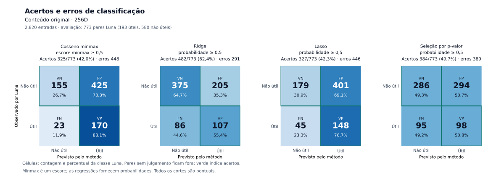
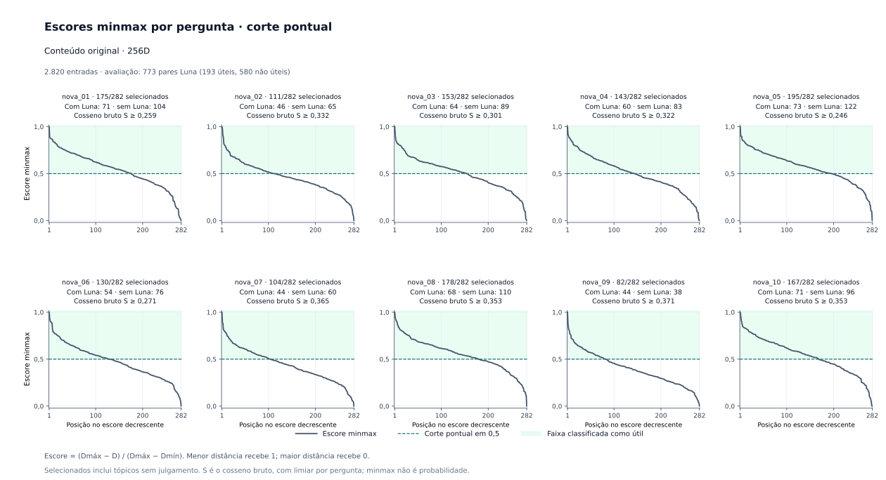
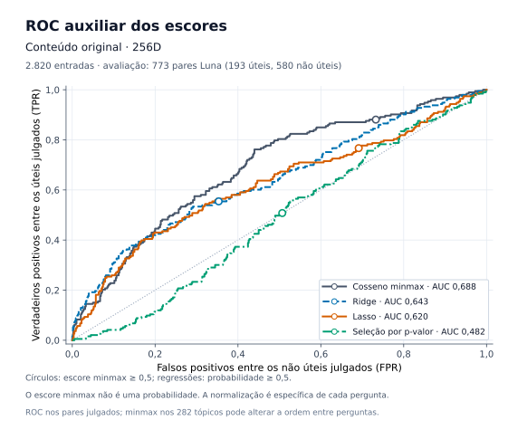
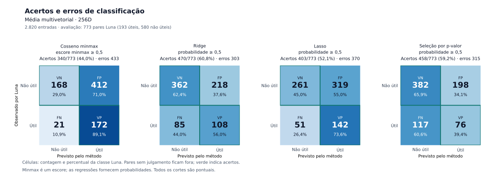
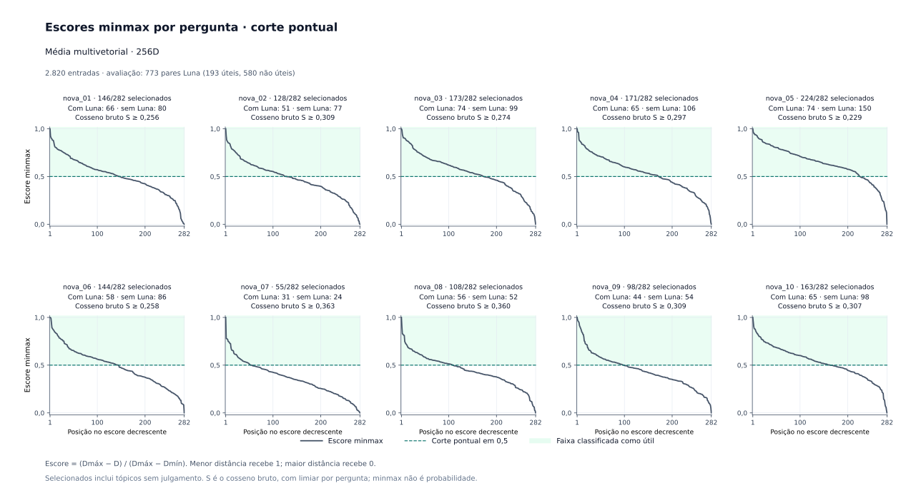
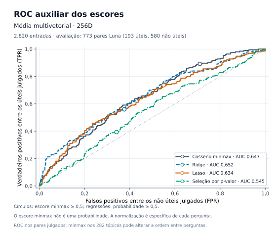
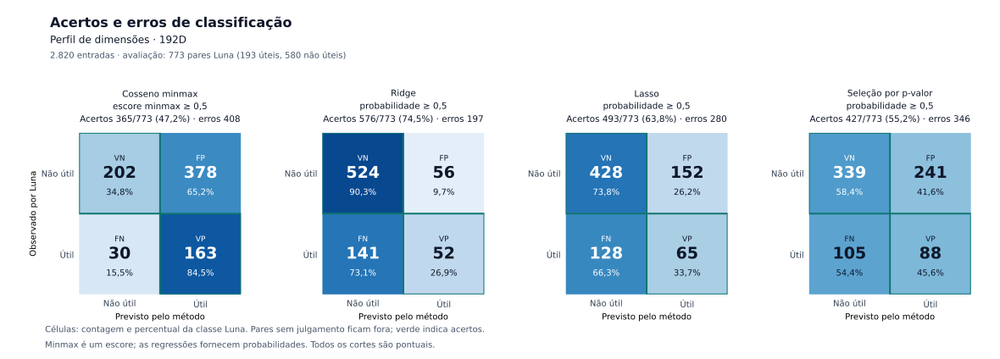
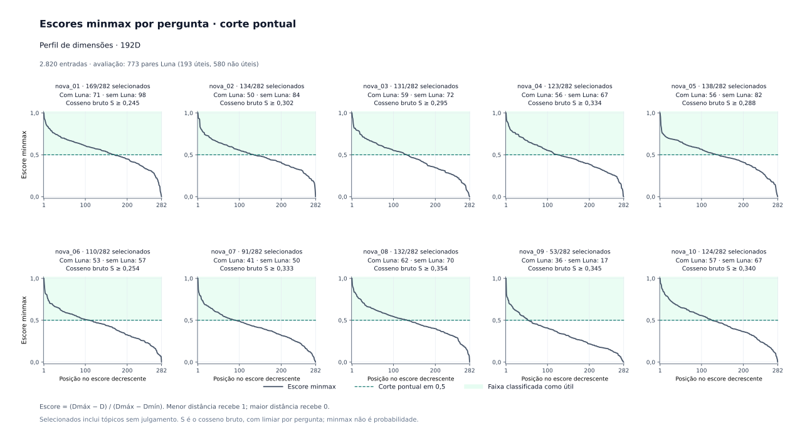
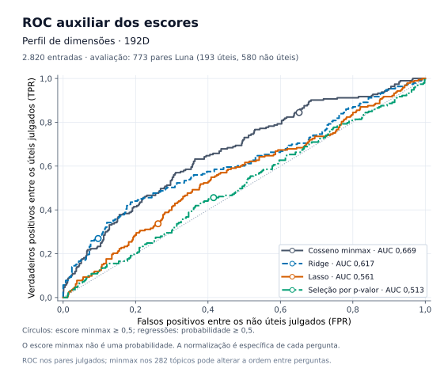

Conteúdo original 256D · Cosseno min–max ≥ 0,5
| Luna | Previsto útil | Previsto não útil |
|---|---|---|
| Útil | TP 170 | FN 23 |
| Não útil | FP 425 | TN 155 |
Acurácia 42,0%; 448 erros. FN e TN referem-se somente ao conjunto julgado.
Menor distância recebe escore 1; maior distância, escore 0. O cosseno prevê útil quando esse escore é ≥ 0,5. As regressões usam suas probabilidades congeladas com corte ≥ 0,5.
Entradas iguais: 2.820 pares por método. Avaliação: 773 com Luna; os 2.047 desconhecidos recebem previsão, mas não entram nos acertos e erros.
Gerado em 28/10/2026 13:49 Hora oficial do Brasil.
Perfil 192D · Ridge obteve o menor total de erros entre os 12 métodos neste conjunto.
O conjunto comum contém 193 pares úteis e 580 não úteis segundo o Luna. A ordem usa FP + FN crescente e mantém os empates, sem desempate por métricas auxiliares.
A maior AUROC observada foi de Conteúdo original 256D · Cosseno min–max ≥ 0,5 (0,68781). AUROC avalia a ordenação ao variar o corte; ela não é o critério de escolha por erros/acertos no corte fixado. Um método pode ordenar melhor e cometer mais erros no corte relativo de 0,5.
| Ordem | Método | Perfil | Regra | Acertos TP+TN | Erros FP+FN | Acurácia | TP | TN | FP | FN | Úteis previstos entre julgados | Ac. balanceada | Sens./recall | Especificidade | Precisão | F1 | AUROC |
|---|---|---|---|---|---|---|---|---|---|---|---|---|---|---|---|---|---|
| 1 | Perfil 192D · Ridge | Perfil 192D | Probabilidade ≥ 0,5 | 576 | 197 | 74,5% | 52 | 524 | 56 | 141 | 108 | 58,6% | 26,9% | 90,3% | 48,1% | 0,3455 | 0,6173 |
| 2 | Perfil 192D · LASSO | Perfil 192D | Probabilidade ≥ 0,5 | 493 | 280 | 63,8% | 65 | 428 | 152 | 128 | 217 | 53,7% | 33,7% | 73,8% | 30,0% | 0,3171 | 0,5608 |
| 3 | Conteúdo original 256D · Ridge | Conteúdo original 256D | Probabilidade ≥ 0,5 | 482 | 291 | 62,4% | 107 | 375 | 205 | 86 | 312 | 60,0% | 55,4% | 64,7% | 34,3% | 0,4238 | 0,6428 |
| 4 | Multivetorial · Ridge | Multivetorial | Probabilidade ≥ 0,5 | 470 | 303 | 60,8% | 108 | 362 | 218 | 85 | 326 | 59,2% | 56,0% | 62,4% | 33,1% | 0,4162 | 0,6515 |
| 5 | Multivetorial · Logística por p-valor | Multivetorial | Probabilidade ≥ 0,5 | 458 | 315 | 59,2% | 76 | 382 | 198 | 117 | 274 | 52,6% | 39,4% | 65,9% | 27,7% | 0,3255 | 0,5451 |
| 6 | Perfil 192D · Logística por p-valor | Perfil 192D | Probabilidade ≥ 0,5 | 427 | 346 | 55,2% | 88 | 339 | 241 | 105 | 329 | 52,0% | 45,6% | 58,4% | 26,7% | 0,3372 | 0,5128 |
| 7 | Multivetorial · LASSO | Multivetorial | Probabilidade ≥ 0,5 | 403 | 370 | 52,1% | 142 | 261 | 319 | 51 | 461 | 59,3% | 73,6% | 45,0% | 30,8% | 0,4343 | 0,6338 |
| 8 | Conteúdo original 256D · Logística por p-valor | Conteúdo original 256D | Probabilidade ≥ 0,5 | 384 | 389 | 49,7% | 98 | 286 | 294 | 95 | 392 | 50,0% | 50,8% | 49,3% | 25,0% | 0,3350 | 0,4818 |
| 9 | Perfil 192D · Cosseno min–max ≥ 0,5 | Perfil 192D | Escore min–max ≥ 0,5 | 365 | 408 | 47,2% | 163 | 202 | 378 | 30 | 541 | 59,6% | 84,5% | 34,8% | 30,1% | 0,4441 | 0,6690 |
| 10 | Multivetorial · Cosseno min–max ≥ 0,5 | Multivetorial | Escore min–max ≥ 0,5 | 340 | 433 | 44,0% | 172 | 168 | 412 | 21 | 584 | 59,0% | 89,1% | 29,0% | 29,5% | 0,4427 | 0,6472 |
| 11 | Conteúdo original 256D · LASSO | Conteúdo original 256D | Probabilidade ≥ 0,5 | 327 | 446 | 42,3% | 148 | 179 | 401 | 45 | 549 | 53,8% | 76,7% | 30,9% | 27,0% | 0,3989 | 0,6203 |
| 12 | Conteúdo original 256D · Cosseno min–max ≥ 0,5 | Conteúdo original 256D | Escore min–max ≥ 0,5 | 325 | 448 | 42,0% | 170 | 155 | 425 | 23 | 595 | 57,4% | 88,1% | 26,7% | 28,6% | 0,4315 | 0,6878 |
Cada um dos 12 métodos recebe 2.820 pares: 282 tópicos em cada uma das dez perguntas. Desses, 773 possuem rótulo real do Luna e 2.047 permanecem desconhecidos. Todos recebem previsão; somente os julgados entram nas matrizes e métricas de erro.
| Método | Entradas | Com Luna | Sem Luna | Previstos úteis · todos | Previstos úteis · julgados | Previstos úteis · sem Luna |
|---|---|---|---|---|---|---|
| Conteúdo original 256D · Cosseno min–max ≥ 0,5 | 2.820 | 773 | 2.047 | 1.438 | 595 | 843 |
| Conteúdo original 256D · Ridge | 2.820 | 773 | 2.047 | 479 | 312 | 167 |
| Conteúdo original 256D · LASSO | 2.820 | 773 | 2.047 | 1.291 | 549 | 742 |
| Conteúdo original 256D · Logística por p-valor | 2.820 | 773 | 2.047 | 876 | 392 | 484 |
| Multivetorial · Cosseno min–max ≥ 0,5 | 2.820 | 773 | 2.047 | 1.410 | 584 | 826 |
| Multivetorial · Ridge | 2.820 | 773 | 2.047 | 526 | 326 | 200 |
| Multivetorial · LASSO | 2.820 | 773 | 2.047 | 1.111 | 461 | 650 |
| Multivetorial · Logística por p-valor | 2.820 | 773 | 2.047 | 479 | 274 | 205 |
| Perfil 192D · Cosseno min–max ≥ 0,5 | 2.820 | 773 | 2.047 | 1.205 | 541 | 664 |
| Perfil 192D · Ridge | 2.820 | 773 | 2.047 | 120 | 108 | 12 |
| Perfil 192D · LASSO | 2.820 | 773 | 2.047 | 278 | 217 | 61 |
| Perfil 192D · Logística por p-valor | 2.820 | 773 | 2.047 | 588 | 329 | 259 |
Resumo de cobertura · CSVTodas as previsões dos 12 métodos · CSV do avaliador
Para cada pergunta e perfil, calcula-se a distância de cosseno D = 1 − S e o escore M = (Dₘₐₓ − D) / (Dₘₐₓ − Dₘᵢₙ). A menor distância vira 1 e a maior vira 0. Classifica-se como útil quando M ≥ 0,5, incluindo a igualdade.
A mesma regra pode ser escrita como M = (S − Sₘᵢₙ) / (Sₘₐₓ − Sₘᵢₙ). O limiar no cosseno bruto é o ponto médio da faixa de cada pergunta, registrado na tabela de cortes.
Universo da normalização: todos os 282 tópicos de cada pergunta, tanto os julgados quanto os ainda sem Luna. Universo da avaliação de erros: somente os 773 pares com rótulos reais. Os itens desconhecidos não recebem rótulo zero.
Fórmula registrada pelo avaliador: z = (d_max − d)/(d_max − d_min) = (s − s_min)/(s_max − s_min).
Nas matrizes, as linhas são os rótulos do Luna e as colunas são as classes previstas. TP + TN são acertos; FP + FN são erros. As curvas ROC são auxiliares e não definem o vencedor por erros.
| Luna | Previsto útil | Previsto não útil |
|---|---|---|
| Útil | TP 170 | FN 23 |
| Não útil | FP 425 | TN 155 |
Acurácia 42,0%; 448 erros. FN e TN referem-se somente ao conjunto julgado.
| Luna | Previsto útil | Previsto não útil |
|---|---|---|
| Útil | TP 107 | FN 86 |
| Não útil | FP 205 | TN 375 |
Acurácia 62,4%; 291 erros. FN e TN referem-se somente ao conjunto julgado.
| Luna | Previsto útil | Previsto não útil |
|---|---|---|
| Útil | TP 148 | FN 45 |
| Não útil | FP 401 | TN 179 |
Acurácia 42,3%; 446 erros. FN e TN referem-se somente ao conjunto julgado.
| Luna | Previsto útil | Previsto não útil |
|---|---|---|
| Útil | TP 98 | FN 95 |
| Não útil | FP 294 | TN 286 |
Acurácia 49,7%; 389 erros. FN e TN referem-se somente ao conjunto julgado.



| Luna | Previsto útil | Previsto não útil |
|---|---|---|
| Útil | TP 172 | FN 21 |
| Não útil | FP 412 | TN 168 |
Acurácia 44,0%; 433 erros. FN e TN referem-se somente ao conjunto julgado.
| Luna | Previsto útil | Previsto não útil |
|---|---|---|
| Útil | TP 108 | FN 85 |
| Não útil | FP 218 | TN 362 |
Acurácia 60,8%; 303 erros. FN e TN referem-se somente ao conjunto julgado.
| Luna | Previsto útil | Previsto não útil |
|---|---|---|
| Útil | TP 142 | FN 51 |
| Não útil | FP 319 | TN 261 |
Acurácia 52,1%; 370 erros. FN e TN referem-se somente ao conjunto julgado.
| Luna | Previsto útil | Previsto não útil |
|---|---|---|
| Útil | TP 76 | FN 117 |
| Não útil | FP 198 | TN 382 |
Acurácia 59,2%; 315 erros. FN e TN referem-se somente ao conjunto julgado.



| Luna | Previsto útil | Previsto não útil |
|---|---|---|
| Útil | TP 163 | FN 30 |
| Não útil | FP 378 | TN 202 |
Acurácia 47,2%; 408 erros. FN e TN referem-se somente ao conjunto julgado.
| Luna | Previsto útil | Previsto não útil |
|---|---|---|
| Útil | TP 52 | FN 141 |
| Não útil | FP 56 | TN 524 |
Acurácia 74,5%; 197 erros. FN e TN referem-se somente ao conjunto julgado.
| Luna | Previsto útil | Previsto não útil |
|---|---|---|
| Útil | TP 65 | FN 128 |
| Não útil | FP 152 | TN 428 |
Acurácia 63,8%; 280 erros. FN e TN referem-se somente ao conjunto julgado.
| Luna | Previsto útil | Previsto não útil |
|---|---|---|
| Útil | TP 88 | FN 105 |
| Não útil | FP 241 | TN 339 |
Acurácia 55,2%; 346 erros. FN e TN referem-se somente ao conjunto julgado.



O limiar é pontual para cada candidato, calculado sobre os 282 tópicos da pergunta. As últimas colunas distinguem as previsões com e sem referência do Luna.
| Perfil | Pergunta | Candidatos | Distância mínima | Distância máxima | Cosseno mínimo | Cosseno máximo | Corte na distância | Corte no cosseno bruto | Previstos úteis · todos | Julgados | Sem Luna |
|---|---|---|---|---|---|---|---|---|---|---|---|
| Multivetorial | nova_01 | 282 | 0,58017 | 0,90857 | 0,09143 | 0,41983 | 0,74437 | 0,25563 | 146 | 66 | 80 |
| Multivetorial | nova_02 | 282 | 0,53374 | 0,84808 | 0,15192 | 0,46626 | 0,69091 | 0,30909 | 128 | 51 | 77 |
| Multivetorial | nova_03 | 282 | 0,60664 | 0,84607 | 0,15393 | 0,39336 | 0,72635 | 0,27365 | 173 | 74 | 99 |
| Multivetorial | nova_04 | 282 | 0,56658 | 0,83949 | 0,16051 | 0,43342 | 0,70304 | 0,29696 | 171 | 65 | 106 |
| Multivetorial | nova_05 | 282 | 0,62027 | 0,92117 | 0,07883 | 0,37973 | 0,77072 | 0,22928 | 224 | 74 | 150 |
| Multivetorial | nova_06 | 282 | 0,58767 | 0,89595 | 0,10405 | 0,41233 | 0,74181 | 0,25819 | 144 | 58 | 86 |
| Multivetorial | nova_07 | 282 | 0,46749 | 0,80565 | 0,19435 | 0,53251 | 0,63657 | 0,36343 | 55 | 31 | 24 |
| Multivetorial | nova_08 | 282 | 0,43854 | 0,84221 | 0,15779 | 0,56146 | 0,64038 | 0,35962 | 108 | 56 | 52 |
| Multivetorial | nova_09 | 282 | 0,52301 | 0,85906 | 0,14094 | 0,47699 | 0,69103 | 0,30897 | 98 | 44 | 54 |
| Multivetorial | nova_10 | 282 | 0,49162 | 0,89340 | 0,10660 | 0,50838 | 0,69251 | 0,30749 | 163 | 65 | 98 |
| Conteúdo original 256D | nova_01 | 282 | 0,54241 | 0,93928 | 0,06072 | 0,45759 | 0,74085 | 0,25915 | 175 | 71 | 104 |
| Conteúdo original 256D | nova_02 | 282 | 0,44623 | 0,88967 | 0,11033 | 0,55377 | 0,66795 | 0,33205 | 111 | 46 | 65 |
| Conteúdo original 256D | nova_03 | 282 | 0,51952 | 0,87947 | 0,12053 | 0,48048 | 0,69949 | 0,30051 | 153 | 64 | 89 |
| Conteúdo original 256D | nova_04 | 282 | 0,52611 | 0,83008 | 0,16992 | 0,47389 | 0,67810 | 0,32190 | 143 | 60 | 83 |
| Conteúdo original 256D | nova_05 | 282 | 0,55989 | 0,94908 | 0,05092 | 0,44011 | 0,75449 | 0,24551 | 195 | 73 | 122 |
| Conteúdo original 256D | nova_06 | 282 | 0,53580 | 0,92259 | 0,07741 | 0,46420 | 0,72920 | 0,27080 | 130 | 54 | 76 |
| Conteúdo original 256D | nova_07 | 282 | 0,43862 | 0,83223 | 0,16777 | 0,56138 | 0,63543 | 0,36457 | 104 | 44 | 60 |
| Conteúdo original 256D | nova_08 | 282 | 0,38538 | 0,90812 | 0,09188 | 0,61462 | 0,64675 | 0,35325 | 178 | 68 | 110 |
| Conteúdo original 256D | nova_09 | 282 | 0,41981 | 0,83839 | 0,16161 | 0,58019 | 0,62910 | 0,37090 | 82 | 44 | 38 |
| Conteúdo original 256D | nova_10 | 282 | 0,41494 | 0,87996 | 0,12004 | 0,58506 | 0,64745 | 0,35255 | 167 | 71 | 96 |
| Perfil 192D | nova_01 | 282 | 0,53435 | 0,97630 | 0,02370 | 0,46565 | 0,75532 | 0,24468 | 169 | 71 | 98 |
| Perfil 192D | nova_02 | 282 | 0,47112 | 0,92562 | 0,07438 | 0,52888 | 0,69837 | 0,30163 | 134 | 50 | 84 |
| Perfil 192D | nova_03 | 282 | 0,53568 | 0,87337 | 0,12663 | 0,46432 | 0,70453 | 0,29547 | 131 | 59 | 72 |
| Perfil 192D | nova_04 | 282 | 0,49716 | 0,83541 | 0,16459 | 0,50284 | 0,66629 | 0,33371 | 123 | 56 | 67 |
| Perfil 192D | nova_05 | 282 | 0,51465 | 0,91012 | 0,08988 | 0,48535 | 0,71238 | 0,28762 | 138 | 56 | 82 |
| Perfil 192D | nova_06 | 282 | 0,54221 | 0,94997 | 0,05003 | 0,45779 | 0,74609 | 0,25391 | 110 | 53 | 57 |
| Perfil 192D | nova_07 | 282 | 0,45940 | 0,87488 | 0,12512 | 0,54060 | 0,66714 | 0,33286 | 91 | 41 | 50 |
| Perfil 192D | nova_08 | 282 | 0,38748 | 0,90390 | 0,09610 | 0,61252 | 0,64569 | 0,35431 | 132 | 62 | 70 |
| Perfil 192D | nova_09 | 282 | 0,42494 | 0,88412 | 0,11588 | 0,57506 | 0,65453 | 0,34547 | 53 | 36 | 17 |
| Perfil 192D | nova_10 | 282 | 0,44814 | 0,87193 | 0,12807 | 0,55186 | 0,66004 | 0,33996 | 124 | 57 | 67 |
Os itens exibem escore e classe prevista para todos os 282 candidatos; o rótulo Luna aparece somente quando existe. Expanda uma pergunta e pesquise por título ou identificador do tópico.
Entre os previstos úteis: 66 têm rótulo Luna e 80 permanecem sem julgamento. Um item sem Luna não é contado como erro nem como acerto.
| Ordem | Tópico | Cosseno bruto S | Distância D | Escore min–max | Previsão | Luna | Acertou? |
|---|---|---|---|---|---|---|---|
| 1 | Avaliação ética e sanitária integrada de pesquisas clínicas tp_decreto_12651_2025_art_28_avaliacao_integrada | 0,419827 | 0,580173 | 1,000000 | Útil (1) | Não útil (0) | Não |
| 2 | Limites da manifestação consultiva após a adesão tp_despacho_3_2026_secao_iii_n_limite_consulta | 0,395161 | 0,604839 | 0,924886 | Útil (1) | Útil (1) | Sim |
| 3 | Obrigatoriedade de análise ética prévia tp_lei_14874_2024_art_6_analise_etica_previa | 0,389428 | 0,610572 | 0,907431 | Útil (1) | Útil (1) | Sim |
| 4 | Análise individual dos protocolos e uso dos critérios como referência tp_informe_tecnico_s_n_2026_analise_individual_protocolos | 0,386560 | 0,613440 | 0,898698 | Útil (1) | Útil (1) | Sim |
| 5 | Etapas do fluxo procedimental da análise ética tp_despacho_2_2026_inciso_xxii_fluxo_analise | 0,384779 | 0,615221 | 0,893272 | Útil (1) | Útil (1) | Sim |
| 6 | Eficácia do parecer ético favorável em todos os centros tp_despacho_3_2026_secao_i_b_eficacia_parecer | 0,380558 | 0,619442 | 0,880420 | Útil (1) | Não útil (0) | Não |
| 7 | Priorização de pesquisas estratégicas para o SUS tp_decreto_12651_2025_art_29_priorizacao_sus | 0,380484 | 0,619516 | 0,880193 | Útil (1) | Não útil (0) | Não |
| 8 | Destinatários e aplicação da orientação na análise ética tp_despacho_5_2026_item_vi_aplicacao_da_orientacao | 0,379686 | 0,620314 | 0,877765 | Útil (1) | Útil (1) | Sim |
| 9 | Competências dos Comitês de Ética em Pesquisa tp_decreto_12651_2025_art_23_competencias_ceps | 0,373161 | 0,626839 | 0,857895 | Útil (1) | Útil (1) | Sim |
| 10 | Tratados de direitos humanos e aprovação ética tp_decreto_12651_2025_art_2_direitos_humanos_aprovacao | 0,364395 | 0,635605 | 0,831201 | Útil (1) | Útil (1) | Sim |
| 11 | Objetivos do Sistema Nacional de Ética em Pesquisa tp_decreto_12651_2025_art_4_objetivos_sistema | 0,358407 | 0,641593 | 0,812966 | Útil (1) | Útil (1) | Sim |
| 12 | Critérios de elegibilidade e monitoramento para inclusão de pacientes tp_despacho_5_2026_item_ii_elegibilidade_de_pacientes | 0,356195 | 0,643805 | 0,806232 | Útil (1) | Não útil (0) | Não |
| 13 | Admissão excepcional de voluntários sadios tp_despacho_5_2026_item_iii_voluntarios_sadios | 0,355525 | 0,644475 | 0,804189 | Útil (1) | Não útil (0) | Não |
| 14 | Exigências éticas e científicas aplicáveis à pesquisa com seres humanos tp_lei_14874_2024_art_3_exigencias_eticas_cientificas | 0,355045 | 0,644955 | 0,802729 | Útil (1) | Não julgado | — |
| 15 | Evidências objetivas dos requisitos tp_guia_s_n_2026_secao_3_4_evidencias_objetivas | 0,352535 | 0,647465 | 0,795087 | Útil (1) | Não útil (0) | Não |
| 16 | Análise ética única de pesquisas multicêntricas tp_despacho_3_2026_secao_i_a_analise_unica | 0,350743 | 0,649257 | 0,789628 | Útil (1) | Útil (1) | Sim |
| 17 | Análise ética de pesquisas em ciências humanas e sociais tp_decreto_12651_2025_art_35_ciencias_humanas_sociais | 0,349140 | 0,650860 | 0,784748 | Útil (1) | Não julgado | — |
| 18 | Finalidade e alcance das orientações durante a transição para a Inaep tp_nota_tecnica_1_2026_itens_2_1_a_2_3_finalidade_transicao | 0,348853 | 0,651147 | 0,783872 | Útil (1) | Não julgado | — |
| 19 | Princípios do processo de análise ética e impedimento por conflito de interesse tp_decreto_12651_2025_art_26_principios_analise_etica | 0,347164 | 0,652836 | 0,778731 | Útil (1) | Útil (1) | Sim |
| 20 | Princípios da análise ética e compatibilidade das normas anteriores do CNS tp_despacho_1_2026_premissas_principios_compatibilidade | 0,346752 | 0,653248 | 0,777474 | Útil (1) | Útil (1) | Sim |
| 21 | Composição e organização do Sistema Nacional de Ética em Pesquisa tp_decreto_12651_2025_art_3_composicao_sistema | 0,346639 | 0,653361 | 0,777131 | Útil (1) | Útil (1) | Sim |
| 22 | Inclusão excepcional de voluntários sadios tp_informe_tecnico_s_n_2026_voluntarios_sadios_excepcionalidade | 0,345395 | 0,654605 | 0,773343 | Útil (1) | Não útil (0) | Não |
| 23 | Sujeição à auditoria e modalidades de fiscalização tp_resolucao_rci_2_2026_arts_35_36_auditoria_monitoramento | 0,345287 | 0,654713 | 0,773014 | Útil (1) | Não útil (0) | Não |
| 24 | Natureza e composição interdisciplinar dos CEPs tp_decreto_12651_2025_art_21_natureza_ceps | 0,344345 | 0,655655 | 0,770147 | Útil (1) | Útil (1) | Sim |
| 25 | Prazos para integridade documental e emissão do parecer ético tp_despacho_2_2026_inciso_ii_marcos_temporais | 0,344069 | 0,655931 | 0,769306 | Útil (1) | Útil (1) | Sim |
| 26 | Separação entre análise ética e plano administrativo tp_despacho_3_2026_secao_iii_fj_separacao_planos | 0,341603 | 0,658397 | 0,761797 | Útil (1) | Não julgado | — |
| 27 | Acreditação dos Comitês de Ética em Pesquisa tp_decreto_12651_2025_art_19_acreditacao_ceps | 0,341098 | 0,658902 | 0,760258 | Útil (1) | Não útil (0) | Não |
| 28 | Acesso direto aos registros e dever de confidencialidade tp_lei_14874_2024_art_17_acesso_registros_confidencialidade | 0,340032 | 0,659968 | 0,757012 | Útil (1) | Não julgado | — |
| 29 | Proteção de dados pessoais nos documentos do DQT tp_guia_s_n_2026_secao_3_6_protecao_dados_lgpd | 0,338718 | 0,661282 | 0,753011 | Útil (1) | Útil (1) | Sim |
| 30 | Definições legais: dados, desvios, dispositivos, ensaios, eventos adversos e fiscalização tp_lei_14874_2024_art_2_definicoes_xv_xxviii | 0,337482 | 0,662518 | 0,749246 | Útil (1) | Útil (1) | Sim |
| 31 | Infração ética por pesquisa em desconformidade com a Lei tp_lei_14874_2024_art_59_infracao_etica | 0,336907 | 0,663093 | 0,747495 | Útil (1) | Útil (1) | Sim |
| 32 | Conteúdo mínimo do Dossiê de Qualidade Técnica tp_resolucao_rci_2_2026_anexo_dqt_conteudo_minimo | 0,336372 | 0,663628 | 0,745867 | Útil (1) | Não útil (0) | Não |
| 33 | Monitoramento baseado em risco e indicadores de desempenho tp_resolucao_rci_2_2026_arts_40_43_indicadores_desempenho | 0,334117 | 0,665883 | 0,739000 | Útil (1) | Não útil (0) | Não |
| 34 | Monitoramento pelo CEP responsável e acompanhamento local tp_despacho_3_2026_secao_iii_e_monitoramento_local | 0,334028 | 0,665972 | 0,738729 | Útil (1) | Não útil (0) | Não |
| 35 | Prazo da análise sanitária de petições primárias de ensaios clínicos tp_lei_14874_2024_art_58_prazo_analise_sanitaria | 0,332185 | 0,667815 | 0,733117 | Útil (1) | Não útil (0) | Não |
| 36 | Definições legais: acesso direto, assentimento, auditoria, entidades e instrumentos da pesquisa tp_lei_14874_2024_art_2_definicoes_i_xiv | 0,331475 | 0,668525 | 0,730955 | Útil (1) | Útil (1) | Sim |
| 37 | Prevalência da proteção do participante de pesquisa tp_informe_tecnico_s_n_2026_principio_protecao_participante | 0,331306 | 0,668694 | 0,730441 | Útil (1) | Não julgado | — |
| 38 | Vedação de nova análise ética por via administrativa tp_despacho_3_2026_secao_iii_k_negativa_merito | 0,331097 | 0,668903 | 0,729804 | Útil (1) | Não útil (0) | Não |
| 39 | F05 — Governança em Rede (condicional) tp_guia_s_n_2026_f05_governanca_rede | 0,329253 | 0,670747 | 0,724188 | Útil (1) | Não útil (0) | Não |
| 40 | Transparência institucional e avaliação qualitativa do CEP tp_resolucao_rci_2_2026_arts_33_34_transparencia_avaliacao | 0,327510 | 0,672490 | 0,718882 | Útil (1) | Não julgado | — |
| 41 | Transparência, uniformidade e previsibilidade dos critérios éticos tp_informe_tecnico_s_n_2026_finalidade_publicacao | 0,326956 | 0,673044 | 0,717196 | Útil (1) | Não útil (0) | Não |
| 42 | Diretrizes da análise ética e impedimento por conflito de interesse tp_lei_14874_2024_art_7_diretrizes_analise_etica | 0,326014 | 0,673986 | 0,714325 | Útil (1) | Não julgado | — |
| 43 | Inclusão complementar do contato do CEP local no TCLE tp_despacho_3_2026_secao_v_bc_contato_cep_local | 0,325146 | 0,674854 | 0,711682 | Útil (1) | Útil (1) | Sim |
| 44 | Princípios, DQT e etapas do processo de acreditação tp_resolucao_rci_2_2026_arts_9_11_dqt_etapas | 0,318265 | 0,681735 | 0,690728 | Útil (1) | Não julgado | — |
| 45 | Prioridade para pesquisas estratégicas ao SUS em emergência de saúde tp_lei_14874_2024_art_15_prioridade_emergencia_sus | 0,318067 | 0,681933 | 0,690125 | Útil (1) | Não útil (0) | Não |
| 46 | Grupos técnicos consultivos tp_decreto_12651_2025_art_7_grupos_tecnicos | 0,318032 | 0,681968 | 0,690019 | Útil (1) | Não útil (0) | Não |
| 47 | Mensagem obrigatória no parecer administrativo de transferência tp_nota_tecnica_1_2026_item_3_2_b_mensagem_parecer | 0,317178 | 0,682822 | 0,687418 | Útil (1) | Não útil (0) | Não |
| 48 | Requisitos para participação de pessoas vulneráveis ou incapazes e comunicação ao Ministério Público tp_lei_14874_2024_art_24_vulnerabilidade_requisitos | 0,317124 | 0,682876 | 0,687253 | Útil (1) | Não julgado | — |
| 49 | Interlocução entre o CEP responsável e os CEPs participantes tp_despacho_3_2026_secao_ii_bc_interlocucao | 0,314963 | 0,685037 | 0,680673 | Útil (1) | Útil (1) | Sim |
| 50 | Responsabilidade institucional por controles internos dos biobancos tp_nota_tecnica_1_2026_item_6_2_3_responsabilidade_institucional | 0,314086 | 0,685914 | 0,678004 | Útil (1) | Não julgado | — |
| 51 | Responsabilidades do Comitê de Ética em Pesquisa tp_lei_14874_2024_art_12_responsabilidades_cep | 0,313827 | 0,686173 | 0,677216 | Útil (1) | Não julgado | — |
| 52 | Estrutura da plataforma conforme as características das pesquisas tp_decreto_12651_2025_art_9_estrutura_plataforma | 0,313412 | 0,686588 | 0,675950 | Útil (1) | Útil (1) | Sim |
| 53 | Verificação final e coerência mínima do dossiê tp_guia_s_n_2026_secao_7_verificacao_final | 0,312488 | 0,687512 | 0,673138 | Útil (1) | Não útil (0) | Não |
| 54 | Consulta técnica ao CEP local pela direção institucional tp_despacho_3_2026_secao_iii_lm_consulta_cep_local | 0,312346 | 0,687654 | 0,672705 | Útil (1) | Não julgado | — |
| 55 | M11 — Carga horária protegida e incentivos tp_guia_s_n_2026_m11_carga_horaria_incentivos | 0,311436 | 0,688564 | 0,669933 | Útil (1) | Não julgado | — |
| 56 | Requisitos do CEP anteriores à submissão da acreditação tp_resolucao_rci_2_2026_art_7_requisitos_antecedentes | 0,311260 | 0,688740 | 0,669398 | Útil (1) | Não útil (0) | Não |
| 57 | Natureza, finalidade e prevalência documental do Dossiê de Qualidade Técnica tp_guia_s_n_2026_apresentacao_dqt | 0,311251 | 0,688749 | 0,669370 | Útil (1) | Não julgado | — |
| 58 | Efeitos do Despacho sobre a análise ética tp_informe_tecnico_s_n_2026_efeitos_despacho | 0,309594 | 0,690406 | 0,664324 | Útil (1) | Não julgado | — |
| 59 | Definições aplicáveis ao processo de acreditação tp_resolucao_rci_2_2026_art_3_definicoes | 0,309591 | 0,690409 | 0,664316 | Útil (1) | Útil (1) | Sim |
| 60 | F03 — Estrutura e Funcionamento tp_guia_s_n_2026_f03_estrutura_funcionamento | 0,306916 | 0,693084 | 0,656171 | Útil (1) | Não útil (0) | Não |
| 61 | Avaliação individual e critérios para continuidade do tratamento experimental tp_lei_14874_2024_arts_31_32_continuidade_tratamento | 0,306205 | 0,693795 | 0,654005 | Útil (1) | Não julgado | — |
| 62 | Competência e transferência dos protocolos com o Ministério da Saúde como instituição proponente tp_nota_tecnica_1_2026_itens_4_1_a_4_3_protocolos_ms | 0,303958 | 0,696042 | 0,647161 | Útil (1) | Não útil (0) | Não |
| 63 | F02 — Composição e Qualificação do Colegiado tp_guia_s_n_2026_f02_composicao_qualificacao | 0,303589 | 0,696411 | 0,646040 | Útil (1) | Não julgado | — |
| 64 | Contato obrigatório do CEP responsável no TCLE tp_despacho_3_2026_secao_v_a_contato_cep_responsavel | 0,303566 | 0,696434 | 0,645967 | Útil (1) | Não julgado | — |
| 65 | Tratamento de não conformidades e elaboração do CAPA tp_guia_s_n_2026_secao_3_7_nao_conformidades_capa | 0,303514 | 0,696486 | 0,645810 | Útil (1) | Não julgado | — |
| 66 | Formulação, registro e comunicação de diligências tp_despacho_2_2026_incisos_v_viii_diligencia | 0,301523 | 0,698477 | 0,639747 | Útil (1) | Não julgado | — |
| 67 | M12.1 — Declaração de ciência das unidades internas tp_guia_s_n_2026_m12_1_ciencia_unidades | 0,301348 | 0,698652 | 0,639215 | Útil (1) | Não útil (0) | Não |
| 68 | Registro público, relatório anual e comunicação dos resultados da pesquisa tp_lei_14874_2024_arts_52_54_transparencia_resultados | 0,300934 | 0,699066 | 0,637954 | Útil (1) | Não julgado | — |
| 69 | F01 — Identificação Institucional e Escopo do Pleito tp_guia_s_n_2026_f01_identificacao_escopo | 0,300817 | 0,699183 | 0,637598 | Útil (1) | Não julgado | — |
| 70 | F06 — Evidências de Desempenho tp_guia_s_n_2026_f06_evidencias_desempenho | 0,298060 | 0,701940 | 0,629201 | Útil (1) | Não julgado | — |
| 71 | Direitos do participante sobre material biológico humano e informações associadas tp_lei_14874_2024_art_40_direitos_material_biologico | 0,297395 | 0,702605 | 0,627178 | Útil (1) | Não julgado | — |
| 72 | Conteúdo das informações, esclarecimento e testemunha imparcial tp_lei_14874_2024_art_18_informacao_testemunha | 0,297196 | 0,702804 | 0,626570 | Útil (1) | Não julgado | — |
| 73 | Capacitação dos integrantes do CEP pela instituição tp_lei_14874_2024_art_10_capacitacao_cep | 0,296039 | 0,703961 | 0,623049 | Útil (1) | Não julgado | — |
| 74 | F04 — Governança, Integridade e Autonomia tp_guia_s_n_2026_f04_governanca_integridade_autonomia | 0,295159 | 0,704841 | 0,620369 | Útil (1) | Não julgado | — |
| 75 | Início do prazo de verificação da integralidade documental tp_despacho_2_2026_inciso_iv_inicio_integridade | 0,294696 | 0,705304 | 0,618957 | Útil (1) | Não julgado | — |
| 76 | Preenchimento integral e uso da expressão “Não se aplica” tp_guia_s_n_2026_secao_3_1_preenchimento_nao_se_aplica | 0,294475 | 0,705525 | 0,618285 | Útil (1) | Não útil (0) | Não |
| 77 | M12 — Declaração de concordância institucional (rede) tp_guia_s_n_2026_m12_concordancia_rede | 0,292398 | 0,707602 | 0,611960 | Útil (1) | Não útil (0) | Não |
| 78 | Plataforma de pesquisas com seres humanos e seus objetivos tp_decreto_12651_2025_art_8_plataforma_objetivos | 0,291005 | 0,708995 | 0,607719 | Útil (1) | Útil (1) | Sim |
| 79 | Encaminhamento administrativo de protocolo de risco elevado à Inaep tp_nota_tecnica_1_2026_item_3_2_b_encaminhamento_inaep | 0,290780 | 0,709220 | 0,607034 | Útil (1) | Não julgado | — |
| 80 | Adequação dos TCLEs às especificidades locais tp_despacho_3_2026_secao_v_d_especificidades_tcle | 0,290207 | 0,709793 | 0,605289 | Útil (1) | Não julgado | — |
| 81 | Atribuições institucionais dos CEPs acreditados tp_nota_tecnica_43_2025_itens_3_15_3_19_atribuicoes_acreditados | 0,289964 | 0,710036 | 0,604548 | Útil (1) | Útil (1) | Sim |
| 82 | Forma de submissão dos pedidos de acreditação tp_guia_s_n_2026_secao_8_forma_submissao | 0,289441 | 0,710559 | 0,602956 | Útil (1) | Não julgado | — |
| 83 | Composição e deliberação ética dos CEPs tp_despacho_1_2026_premissas_deliberacao_cep | 0,288842 | 0,711158 | 0,601133 | Útil (1) | Não julgado | — |
| 84 | Câmaras consultivas do Sistema tp_decreto_12651_2025_art_6_camaras_consultivas | 0,288046 | 0,711954 | 0,598707 | Útil (1) | Não útil (0) | Não |
| 85 | Protocolo único e análise ética da pesquisa multicêntrica tp_decreto_12651_2025_art_27_pesquisa_multicentrica | 0,287270 | 0,712730 | 0,596345 | Útil (1) | Não julgado | — |
| 86 | Compromissos do responsável institucional e capacitação contínua tp_resolucao_rci_2_2026_art_8_apoio_institucional | 0,287028 | 0,712972 | 0,595609 | Útil (1) | Não julgado | — |
| 87 | Deveres permanentes e responsabilidades na execução tp_despacho_3_2026_secao_iii_cd_deveres_permanentes | 0,285548 | 0,714452 | 0,591101 | Útil (1) | Útil (1) | Sim |
| 88 | Verificação inicial do enquadramento do protocolo em área temática de risco elevado tp_nota_tecnica_1_2026_item_3_2_a_verificacao_area_tematica | 0,285466 | 0,714534 | 0,590850 | Útil (1) | Não julgado | — |
| 89 | Destinação dos protocolos segundo a classificação e a instância de origem tp_nota_tecnica_43_2025_itens_6_37_6_41_destinacao | 0,284509 | 0,715491 | 0,587937 | Útil (1) | Útil (1) | Sim |
| 90 | Natureza e competências da Instância Nacional de Ética em Pesquisa tp_decreto_12651_2025_art_10_competencias_instancia_nacional | 0,282819 | 0,717181 | 0,582791 | Útil (1) | Útil (1) | Sim |
| 91 | Governança ética colaborativa entre comitês tp_despacho_3_2026_secao_ii_a_governanca_colaborativa | 0,282478 | 0,717522 | 0,581753 | Útil (1) | Não julgado | — |
| 92 | Grupo de trabalho temporário para implementação do Sistema tp_decreto_12651_2025_art_38_grupo_trabalho_temporario | 0,282319 | 0,717681 | 0,581269 | Útil (1) | Não julgado | — |
| 93 | Responsabilização das instituições e dos pesquisadores tp_despacho_3_2026_secao_vi_a_responsabilizacao | 0,281145 | 0,718855 | 0,577694 | Útil (1) | Útil (1) | Sim |
| 94 | Indicação de condução dos estudos em pacientes com indicação clínica tp_despacho_5_2026_item_i_conducao_em_pacientes | 0,280499 | 0,719501 | 0,575726 | Útil (1) | Não útil (0) | Não |
| 95 | Instituição e estrutura do Sistema Nacional de Ética em Pesquisa tp_lei_14874_2024_art_5_sistema_nacional | 0,279907 | 0,720093 | 0,573924 | Útil (1) | Não julgado | — |
| 96 | M09 — Mecanismos de confidencialidade e segurança da informação tp_guia_s_n_2026_m09_confidencialidade_seguranca | 0,279728 | 0,720272 | 0,573380 | Útil (1) | Não julgado | — |
| 97 | Anonimato, privacidade e sigilo das informações tp_lei_14874_2024_art_19_anonimato_privacidade_sigilo | 0,279298 | 0,720702 | 0,572070 | Útil (1) | Não julgado | — |
| 98 | Definições legais: documentos, compensações, reações adversas, TCLE e vulnerabilidade tp_lei_14874_2024_art_2_definicoes_xliii_lvi | 0,279263 | 0,720737 | 0,571962 | Útil (1) | Não julgado | — |
| 99 | Fluxo de transferência após aprovação por CEP credenciado tp_nota_tecnica_43_2025_anexo_ii_fluxo_transferencia_pos_cep | 0,279112 | 0,720888 | 0,571503 | Útil (1) | Útil (1) | Sim |
| 100 | M13 — Relatório de autoavaliação institucional tp_guia_s_n_2026_m13_relatorio_autoavaliacao | 0,279015 | 0,720985 | 0,571206 | Útil (1) | Não julgado | — |
| 101 | Seleção dos representantes especialistas da comunidade científica tp_decreto_12651_2025_art_13_selecao_especialistas | 0,278527 | 0,721473 | 0,569722 | Útil (1) | Não útil (0) | Não |
| 102 | Formas de direcionamento de protocolos de área temática aos CEPs acreditados tp_nota_tecnica_43_2025_anexo_ii_formas_direcionamento | 0,277164 | 0,722836 | 0,565569 | Útil (1) | Não julgado | — |
| 103 | Apresentação clara e acessível dos riscos no TCLE tp_informe_tecnico_s_n_2026_tcle_comunicacao_riscos | 0,276873 | 0,723127 | 0,564684 | Útil (1) | Não julgado | — |
| 104 | M03 — Breve currículo de membro especialista tp_guia_s_n_2026_m03_curriculo_especialista | 0,276353 | 0,723647 | 0,563101 | Útil (1) | Não julgado | — |
| 105 | Plano e programa de acesso pós-estudo tp_lei_14874_2024_art_30_plano_pos_estudo | 0,276124 | 0,723876 | 0,562403 | Útil (1) | Não julgado | — |
| 106 | Governança em rede e responsabilidades dos CEPs de referência e locais tp_resolucao_rci_2_2026_arts_44_46_governanca_rede | 0,275892 | 0,724108 | 0,561698 | Útil (1) | Não útil (0) | Não |
| 107 | Riscos dos medicamentos e necessidade de análise criteriosa tp_informe_tecnico_s_n_2026_riscos_medicamentos_abrangidos | 0,275853 | 0,724147 | 0,561577 | Útil (1) | Não útil (0) | Não |
| 108 | Autorização, uso, acondicionamento, armazenamento e descarte de produtos experimentais tp_lei_14874_2024_arts_28_29_produtos_experimentais | 0,275313 | 0,724687 | 0,559933 | Útil (1) | Não julgado | — |
| 109 | Integração, capacitação e práticas de excelência no Sinep tp_despacho_3_2026_secao_viii_bd_integracao | 0,274575 | 0,725425 | 0,557688 | Útil (1) | Não julgado | — |
| 110 | Plano de transição para cuidados após o ensaio clínico tp_lei_14874_2024_art_35_transicao_cuidados | 0,273427 | 0,726573 | 0,554193 | Útil (1) | Não julgado | — |
| 111 | M06 — Declaração de apoio institucional tp_guia_s_n_2026_m06_apoio_institucional | 0,273335 | 0,726665 | 0,553912 | Útil (1) | Não julgado | — |
| 112 | Segurança do local de uso e armazenamento de material biológico tp_lei_14874_2024_art_50_seguranca_sigilo | 0,272839 | 0,727161 | 0,552401 | Útil (1) | Não julgado | — |
| 113 | Comissão de seleção dos especialistas tp_decreto_12651_2025_art_14_comissao_selecao | 0,272778 | 0,727222 | 0,552214 | Útil (1) | Não julgado | — |
| 114 | Não discriminação e consentimento para disposição de material biológico humano tp_lei_14874_2024_arts_38_39_material_consentimento | 0,272582 | 0,727418 | 0,551619 | Útil (1) | Útil (1) | Sim |
| 115 | Condições de composição e funcionamento do CEP tp_lei_14874_2024_art_9_condicoes_cep | 0,272475 | 0,727525 | 0,551291 | Útil (1) | Não julgado | — |
| 116 | Comunicação, justificativa e assistência na descontinuidade da pesquisa tp_lei_14874_2024_art_57_descontinuidade | 0,272399 | 0,727601 | 0,551061 | Útil (1) | Não julgado | — |
| 117 | Adequação ou suspensão do ensaio diante de superioridade significativa tp_lei_14874_2024_art_22_superioridade_intervencao | 0,272380 | 0,727620 | 0,551004 | Útil (1) | Não julgado | — |
| 118 | Informação sobre riscos e eventos adversos no TCLE tp_despacho_5_2026_item_v_tcle_riscos | 0,271450 | 0,728550 | 0,548172 | Útil (1) | Útil (1) | Sim |
| 119 | Fundamentos éticos e finalidade do Despacho tp_despacho_5_2026_fundamentos_eticos_e_finalidade | 0,271069 | 0,728931 | 0,547010 | Útil (1) | Não julgado | — |
| 120 | Efeitos da ausência de manifestação da Inaep e instrução da notificação tp_despacho_1_2026_inciso_vii_silencio_e_instrucao | 0,269629 | 0,730371 | 0,542625 | Útil (1) | Não julgado | — |
| 121 | Condução preferencial dos estudos em pacientes com indicação clínica tp_informe_tecnico_s_n_2026_orientacao_pacientes_indicacao_clinica | 0,269580 | 0,730420 | 0,542476 | Útil (1) | Não julgado | — |
| 122 | Providências locais diante de irregularidade grave ou risco iminente tp_despacho_3_2026_secao_iv_de_risco_iminente | 0,269547 | 0,730453 | 0,542377 | Útil (1) | Não julgado | — |
| 123 | Diretrizes da transição e natureza das orientações da Nota Técnica tp_nota_tecnica_1_2026_itens_7_1_a_7_3_diretrizes_finais | 0,269152 | 0,730848 | 0,541173 | Útil (1) | Não julgado | — |
| 124 | Prazos, legitimidade para protocolar e ordem de análise tp_resolucao_rci_2_2026_arts_12_14_prazos_protocolo_prioridade | 0,268845 | 0,731155 | 0,540237 | Útil (1) | Não julgado | — |
| 125 | M03.1 — Breve currículo de membro especialista em bioética tp_guia_s_n_2026_m03_1_especialista_bioetica | 0,268326 | 0,731674 | 0,538658 | Útil (1) | Não útil (0) | Não |
| 126 | Relação dos oito CEPs acreditados tp_nota_tecnica_43_2025_item_3_20_ceps_acreditados | 0,267843 | 0,732157 | 0,537188 | Útil (1) | Não julgado | — |
| 127 | Instrução do processo e guarda documental pelo CEP tp_lei_14874_2024_art_13_instrucao_arquivo | 0,267708 | 0,732292 | 0,536777 | Útil (1) | Não julgado | — |
| 128 | Trâmites posteriores à transferência e retorno de protocolo cadastrado incorretamente tp_nota_tecnica_1_2026_anexo_i_tramites_pos_transferencia | 0,267175 | 0,732825 | 0,535154 | Útil (1) | Não julgado | — |
| 129 | Condicionamento da inclusão de participantes em situação de vulnerabilidade tp_lei_14874_2024_art_24_inclusao_vulnerabilidade_caput | 0,266146 | 0,733854 | 0,532020 | Útil (1) | Não julgado | — |
| 130 | Uso transitório do parecer consubstanciado pendente para diligências tp_despacho_2_2026_inciso_x_parecer_pendente | 0,265774 | 0,734226 | 0,530885 | Útil (1) | Útil (1) | Sim |
| 131 | M15 — Critérios de avaliação do parecer tp_guia_s_n_2026_m15_avaliacao_parecer | 0,265750 | 0,734250 | 0,530812 | Útil (1) | Não julgado | — |
| 132 | Fiscalização e descredenciamento do CEP tp_lei_14874_2024_art_11_fiscalizacao_descredenciamento | 0,265608 | 0,734392 | 0,530380 | Útil (1) | Não julgado | — |
| 133 | Prazos, diligências e resultados do parecer ético tp_lei_14874_2024_art_14_prazos_diligencias_parecer | 0,265004 | 0,734996 | 0,528543 | Útil (1) | Não julgado | — |
| 134 | Responsabilidades do pesquisador na condução da pesquisa tp_lei_14874_2024_art_27_responsabilidades_pesquisador | 0,263751 | 0,736249 | 0,524726 | Útil (1) | Não julgado | — |
| 135 | Categorias de CEP segundo complexidade e grau de risco tp_decreto_12651_2025_art_25_categorias_ceps | 0,263261 | 0,736739 | 0,523233 | Útil (1) | Não julgado | — |
| 136 | Plano de acompanhamento e assistência em ensaio clínico descontinuado tp_decreto_12651_2025_art_30_ensaio_descontinuado | 0,261928 | 0,738072 | 0,519177 | Útil (1) | Não julgado | — |
| 137 | Aplicação dos procedimentos de risco elevado a todos os CEPs credenciados tp_nota_tecnica_1_2026_item_3_3_aplicacao_ceps_credenciados | 0,261138 | 0,738862 | 0,516768 | Útil (1) | Não julgado | — |
| 138 | Integridade, transparência e publicidade dos registros de pesquisa tp_decreto_12651_2025_art_5_integridade_transparencia_registros | 0,260189 | 0,739811 | 0,513881 | Útil (1) | Não julgado | — |
| 139 | Risco endócrino e coerência fisiológica tp_despacho_5_2026_item_iv_a_risco_endocrino | 0,259603 | 0,740397 | 0,512095 | Útil (1) | Não julgado | — |
| 140 | Níveis I, II e III de acreditação e respectivos escopos tp_resolucao_rci_2_2026_arts_4_5_niveis_acreditacao | 0,258932 | 0,741068 | 0,510052 | Útil (1) | Não julgado | — |
| 141 | Ineficácia de regras inferiores que imponham dupla revisão tp_despacho_3_2026_secao_viii_a_dupla_revisao | 0,258825 | 0,741175 | 0,509725 | Útil (1) | Útil (1) | Sim |
| 142 | Sistema de Gestão da Qualidade do CEP acreditado tp_resolucao_rci_2_2026_art_32_sgq | 0,257488 | 0,742512 | 0,505655 | Útil (1) | Não útil (0) | Não |
| 143 | Prazo, responsabilidade e confidencialidade no armazenamento dos dados da pesquisa tp_lei_14874_2024_art_51_armazenamento_dados | 0,257271 | 0,742729 | 0,504995 | Útil (1) | Não julgado | — |
| 144 | Publicação das resoluções da Instância Nacional tp_decreto_12651_2025_art_17_publicacao_resolucoes | 0,256890 | 0,743110 | 0,503833 | Útil (1) | Não julgado | — |
| 145 | Extensão de especialidades e modificação ou ampliação do nível tp_resolucao_rci_2_2026_arts_25_26_extensao_ampliacao | 0,255758 | 0,744242 | 0,500387 | Útil (1) | Não julgado | — |
| 146 | Competências dos CEPs credenciados e acreditados segundo o grau de risco tp_nota_tecnica_43_2025_itens_2_1_2_4_competencias_ceps | 0,255745 | 0,744255 | 0,500346 | Útil (1) | Não julgado | — |
| 147 | Comunicação obrigatória de eventos adversos graves e violações do protocolo tp_lei_14874_2024_arts_55_56_comunicacoes_obrigatorias | 0,255508 | 0,744492 | 0,499625 | Não útil (0) | Não julgado | — |
| 148 | Organização do DQT em formulários e modelos tp_guia_s_n_2026_organizacao_dqt | 0,254878 | 0,745122 | 0,497708 | Não útil (0) | Não julgado | — |
| 149 | Exceção remuneratória para voluntários saudáveis em fase I ou bioequivalência tp_lei_14874_2024_art_20_voluntarios_saudaveis | 0,254815 | 0,745185 | 0,497514 | Não útil (0) | Não julgado | — |
| 150 | Exigência técnica no processo de acreditação tp_resolucao_rci_2_2026_arts_15_17_exigencia_tecnica | 0,252581 | 0,747419 | 0,490713 | Não útil (0) | Não julgado | — |
| 151 | Tratamento de não conformidades, medidas administrativas e recurso tp_resolucao_rci_2_2026_arts_37_39_nao_conformidade_recurso | 0,252298 | 0,747702 | 0,489851 | Não útil (0) | Não julgado | — |
| 152 | Classificação técnica provisória até a atualização da Plataforma Brasil tp_nota_tecnica_43_2025_itens_5_35_5_36_classificacao_tecnica | 0,252251 | 0,747749 | 0,489709 | Não útil (0) | Não útil (0) | Sim |
| 153 | Proteção diferenciada de grupos especiais tp_decreto_12651_2025_art_32_grupos_especiais | 0,252104 | 0,747896 | 0,489259 | Não útil (0) | Não julgado | — |
| 154 | Responsabilidades residuais dos CEPs locais tp_despacho_3_2026_secao_iv_b_responsabilidades_residuais | 0,251442 | 0,748558 | 0,487244 | Não útil (0) | Útil (1) | Não |
| 155 | Competência por risco, participação de grupos especiais e deliberação do CEP tp_lei_14874_2024_art_9_risco_grupos_deliberacao | 0,250562 | 0,749438 | 0,484565 | Não útil (0) | Não julgado | — |
| 156 | Objeto e âmbito da Lei nº 14.874/2024 tp_lei_14874_2024_art_1_objeto | 0,250365 | 0,749635 | 0,483966 | Não útil (0) | Não julgado | — |
| 157 | Fornecimento gratuito e programa de acesso pós-estudo tp_decreto_12651_2025_art_31_acesso_pos_estudo | 0,249545 | 0,750455 | 0,481468 | Não útil (0) | Não julgado | — |
| 158 | Atribuições da instância nacional de ética em pesquisa tp_lei_14874_2024_art_8_atribuicoes_instancia_nacional | 0,249472 | 0,750528 | 0,481245 | Não útil (0) | Útil (1) | Não |
| 159 | Disciplina dos regimentos internos para harmonização do Sinep tp_despacho_1_2026_inciso_i_harmonizacao_regimentos | 0,248902 | 0,751098 | 0,479508 | Não útil (0) | Não julgado | — |
| 160 | Objeto e finalidade da Nota Técnica nº 43/2025 tp_nota_tecnica_43_2025_item_1_1_objeto | 0,248537 | 0,751463 | 0,478398 | Não útil (0) | Não julgado | — |
| 161 | Controle e limites das alterações implementadas imediatamente tp_despacho_1_2026_inciso_v_controle_alteracoes_imediatas | 0,248336 | 0,751664 | 0,477787 | Não útil (0) | Não julgado | — |
| 162 | Credenciamento dos Comitês de Ética em Pesquisa tp_decreto_12651_2025_art_18_credenciamento_ceps | 0,247952 | 0,752048 | 0,476616 | Não útil (0) | Não julgado | — |
| 163 | Responsabilidades ampliadas dos CEPs acreditados na transição tp_nota_tecnica_43_2025_itens_3_21_3_22_transicao_ceps | 0,247633 | 0,752367 | 0,475645 | Não útil (0) | Útil (1) | Não |
| 164 | Infrações de governança e resposta da Inaep tp_despacho_3_2026_secao_vi_bd_infracao_governanca | 0,247532 | 0,752468 | 0,475337 | Não útil (0) | Não julgado | — |
| 165 | M14 — Plano de ação corretiva e preventiva (CAPA) tp_guia_s_n_2026_m14_capa | 0,247266 | 0,752734 | 0,474529 | Não útil (0) | Não julgado | — |
| 166 | Documentos condicionais e função do M15 tp_guia_s_n_2026_documentos_condicionais_m15 | 0,246448 | 0,753552 | 0,472036 | Não útil (0) | Não útil (0) | Sim |
| 167 | F09 — Declarações e Assinaturas tp_guia_s_n_2026_f09_declaracoes_assinaturas | 0,246348 | 0,753652 | 0,471733 | Não útil (0) | Não julgado | — |
| 168 | Composição, suplência, quórum de instalação e mandato da Instância Nacional tp_decreto_12651_2025_art_12_composicao_instancia_nacional | 0,246299 | 0,753701 | 0,471583 | Não útil (0) | Não julgado | — |
| 169 | Acreditação facultativa por domínio temático de competência tp_resolucao_rci_2_2026_art_6_dominios_tematicos | 0,246034 | 0,753966 | 0,470777 | Não útil (0) | Não julgado | — |
| 170 | Distinção entre titular, suplente e suplente em exercício e regras de voto tp_despacho_1_2026_inciso_iii_membros_suplencia_voto | 0,245535 | 0,754465 | 0,469257 | Não útil (0) | Não julgado | — |
| 171 | Designação excepcional de CEP diverso do centro coordenador tp_despacho_3_2026_secao_i_c_cep_diverso | 0,245062 | 0,754938 | 0,467815 | Não útil (0) | Não julgado | — |
| 172 | Solicitação e garantia do fornecimento pós-ensaio clínico tp_lei_14874_2024_art_34_solicitacao_fornecimento | 0,244910 | 0,755090 | 0,467352 | Não útil (0) | Não julgado | — |
| 173 | Autonomia e independência dos membros dos CEPs tp_decreto_12651_2025_art_24_autonomia_membros_ceps | 0,243956 | 0,756044 | 0,464447 | Não útil (0) | Útil (1) | Não |
| 174 | Organização, nomeação e identificação dos anexos tp_guia_s_n_2026_secao_3_3_nomeacao_anexos | 0,243933 | 0,756067 | 0,464378 | Não útil (0) | Não julgado | — |
| 175 | F08 — Capacitação tp_guia_s_n_2026_f08_capacitacao | 0,242491 | 0,757509 | 0,459987 | Não útil (0) | Não julgado | — |
| 176 | Uso transitório das áreas temáticas como critério de risco elevado tp_nota_tecnica_43_2025_item_4_27_equivalencia_area_risco | 0,242347 | 0,757653 | 0,459549 | Não útil (0) | Não julgado | — |
| 177 | Incompetência do CEP local para suspensão ética autônoma tp_despacho_3_2026_secao_iv_c_suspensao_local | 0,242246 | 0,757754 | 0,459241 | Não útil (0) | Não julgado | — |
| 178 | Inclusão em emergência e retirada do consentimento tp_lei_14874_2024_art_18_emergencia_retirada | 0,242092 | 0,757908 | 0,458770 | Não útil (0) | Não julgado | — |
| 179 | Classificação multidimensional do risco da pesquisa tp_decreto_12651_2025_art_20_classificacao_risco | 0,241724 | 0,758276 | 0,457653 | Não útil (0) | Não julgado | — |
| 180 | Manifestação operacional dos CEPs participantes na Plataforma Brasil tp_despacho_3_2026_secao_vii_a_plataforma_brasil | 0,241654 | 0,758346 | 0,457437 | Não útil (0) | Não útil (0) | Sim |
| 181 | Objeto e âmbito de aplicação do Decreto tp_decreto_12651_2025_art_1_escopo | 0,240472 | 0,759528 | 0,453839 | Não útil (0) | Não julgado | — |
| 182 | Objeto, natureza, escopo e abrangência da acreditação de CEPs tp_resolucao_rci_2_2026_arts_1_2_objeto_abrangencia | 0,240389 | 0,759611 | 0,453587 | Não útil (0) | Não julgado | — |
| 183 | Motivo da transferência de protocolos de risco elevado para CEP acreditado tp_nota_tecnica_1_2026_anexo_i_transferencia_cep_acreditado | 0,240214 | 0,759786 | 0,453053 | Não útil (0) | Não julgado | — |
| 184 | M17 — Registro das capacitações realizadas tp_guia_s_n_2026_m17_registro_capacitacoes | 0,239697 | 0,760303 | 0,451479 | Não útil (0) | Não julgado | — |
| 185 | Definições legais: agentes da pesquisa, modalidades de pesquisa e produtos experimentais tp_lei_14874_2024_art_2_definicoes_xxix_xlii | 0,239481 | 0,760519 | 0,450822 | Não útil (0) | Não julgado | — |
| 186 | Meios para o funcionamento da Instância Nacional tp_decreto_12651_2025_art_11_meios_funcionamento | 0,239422 | 0,760578 | 0,450642 | Não útil (0) | Não julgado | — |
| 187 | Implementação gradual da classificação de risco tp_nota_tecnica_43_2025_itens_4_23_4_26_implementacao_gradual | 0,238777 | 0,761223 | 0,448677 | Não útil (0) | Não julgado | — |
| 188 | Destinatários das orientações tp_informe_tecnico_s_n_2026_destinatarios_orientacoes | 0,238138 | 0,761862 | 0,446731 | Não útil (0) | Não julgado | — |
| 189 | F07 — Autoavaliação Institucional e CAPA tp_guia_s_n_2026_f07_autoavaliacao_capa | 0,237272 | 0,762728 | 0,444093 | Não útil (0) | Não julgado | — |
| 190 | Atribuições, prerrogativas e benefícios do CEP acreditado tp_resolucao_rci_2_2026_arts_28_29_atribuicoes_prerrogativas_cep | 0,237008 | 0,762992 | 0,443291 | Não útil (0) | Não julgado | — |
| 191 | Independência, autonomia e finalidade protetiva dos CEPs tp_decreto_12651_2025_art_22_independencia_ceps | 0,234811 | 0,765189 | 0,436601 | Não útil (0) | Não julgado | — |
| 192 | M08 — Política de gestão de conflitos de interesse tp_guia_s_n_2026_m08_gestao_conflitos | 0,233863 | 0,766137 | 0,433715 | Não útil (0) | Não julgado | — |
| 193 | Prorrogação do prazo para críticas e sugestões sobre a regulamentação de biobancos tp_despacho_4_2026_despacho_4_prorrogacao_consulta_biobancos | 0,233153 | 0,766847 | 0,431552 | Não útil (0) | Não julgado | — |
| 194 | Condições para uso exclusivo ou combinado de placebo tp_lei_14874_2024_art_21_uso_placebo | 0,232972 | 0,767028 | 0,431002 | Não útil (0) | Não julgado | — |
| 195 | Providências do pesquisador após a transferência para CEP acreditado tp_nota_tecnica_1_2026_anexo_i_pendencias_pesquisador | 0,232762 | 0,767238 | 0,430361 | Não útil (0) | Não julgado | — |
| 196 | Plano em fases para classificação e direcionamento dos protocolos tp_nota_tecnica_43_2025_itens_5_31_5_33_plano_fases | 0,231649 | 0,768351 | 0,426970 | Não útil (0) | Não julgado | — |
| 197 | Conformidade do protocolo e do contrato de pesquisa tp_lei_14874_2024_art_4_protocolo_contrato | 0,231616 | 0,768384 | 0,426870 | Não útil (0) | Não julgado | — |
| 198 | Recursos, análise de pesquisa multicêntrica e pertinência documental tp_lei_14874_2024_art_14_recursos_multicentrica_documentos | 0,231524 | 0,768476 | 0,426591 | Não útil (0) | Não julgado | — |
| 199 | Regime de proteção e anonimato dos dados pessoais dos participantes tp_lei_14874_2024_art_61_protecao_anonimato_dados | 0,230956 | 0,769044 | 0,424861 | Não útil (0) | Não julgado | — |
| 200 | Assinaturas digitais e separação de funções tp_guia_s_n_2026_secao_3_2_assinaturas | 0,230832 | 0,769168 | 0,424483 | Não útil (0) | Não julgado | — |
| 201 | M12.2 — Diretrizes internas e atividades colaborativas da rede tp_guia_s_n_2026_m12_2_diretrizes_rede | 0,228956 | 0,771044 | 0,418772 | Não útil (0) | Não julgado | — |
| 202 | Validade transitória das normas do Conselho Nacional de Saúde tp_decreto_12651_2025_art_39_normas_cns_transicao | 0,228842 | 0,771158 | 0,418423 | Não útil (0) | Útil (1) | Não |
| 203 | Responsabilidades do patrocinador pela qualidade, condução e segurança da pesquisa tp_lei_14874_2024_art_26_responsabilidades_patrocinador | 0,226307 | 0,773693 | 0,410705 | Não útil (0) | Não julgado | — |
| 204 | Exigências institucionais incompatíveis após a adesão tp_despacho_3_2026_secao_iii_b_exigencias_incompativeis | 0,225527 | 0,774473 | 0,408330 | Não útil (0) | Não julgado | — |
| 205 | Prazo para manifestação dos CEPs locais tp_despacho_3_2026_secao_ii_d_prazo_manifestacao | 0,225032 | 0,774968 | 0,406821 | Não útil (0) | Não julgado | — |
| 206 | Continuidade das análises éticas durante a transição institucional tp_nota_tecnica_43_2025_itens_2_9_2_14_continuidade | 0,224796 | 0,775204 | 0,406104 | Não útil (0) | Não julgado | — |
| 207 | M05 — Declaração de disponibilidade de especialista externo tp_guia_s_n_2026_m05_especialista_externo | 0,224042 | 0,775958 | 0,403808 | Não útil (0) | Não útil (0) | Sim |
| 208 | Competências da Inaep relativas à acreditação tp_resolucao_rci_2_2026_art_27_competencias_inaep | 0,223067 | 0,776933 | 0,400838 | Não útil (0) | Não julgado | — |
| 209 | Aprimoramento e redução dos prazos de análise e aprovação de pesquisas tp_lei_14874_2024_art_64_eficiencia_analises | 0,222455 | 0,777545 | 0,398973 | Não útil (0) | Não julgado | — |
| 210 | Competências da Inaep, autonomia dos CEPs e proteção dos participantes tp_despacho_1_2026_premissas_inaep_ceps | 0,221836 | 0,778164 | 0,397089 | Não útil (0) | Útil (1) | Não |
| 211 | Verificação do prazo de resposta à diligência e consequências tp_despacho_2_2026_inciso_xix_resposta_prazo | 0,221816 | 0,778184 | 0,397029 | Não útil (0) | Não útil (0) | Sim |
| 212 | Autonomia institucional para recusar participação na pesquisa tp_despacho_3_2026_secao_iii_a_recusa_institucional | 0,220788 | 0,779212 | 0,393899 | Não útil (0) | Não julgado | — |
| 213 | M07 — Procedimento Operacional Padrão (POP) tp_guia_s_n_2026_m07_pop | 0,220668 | 0,779332 | 0,393533 | Não útil (0) | Não julgado | — |
| 214 | Acompanhamento pelo CEP da instituição proponente após transferência tp_nota_tecnica_1_2026_anexo_i_acompanhamento_cep_proponente | 0,219217 | 0,780783 | 0,389114 | Não útil (0) | Não julgado | — |
| 215 | Autorização expressa, validade e atualização do TCLE tp_lei_14874_2024_art_18_tcle_requisitos | 0,218309 | 0,781691 | 0,386350 | Não útil (0) | Não julgado | — |
| 216 | Alterações administrativas com implementação imediata tp_despacho_1_2026_inciso_v_alteracoes_imediatas | 0,217750 | 0,782250 | 0,384647 | Não útil (0) | Não julgado | — |
| 217 | Indenização e assistência por danos decorrentes da pesquisa tp_lei_14874_2024_art_23_danos_indenizacao_assistencia | 0,217548 | 0,782452 | 0,384032 | Não útil (0) | Não julgado | — |
| 218 | M04 — Declaração sobre conflitos de interesse tp_guia_s_n_2026_m04_conflitos_interesse | 0,217150 | 0,782850 | 0,382819 | Não útil (0) | Não julgado | — |
| 219 | Suspensão e retomada do prazo de análise ética por diligência tp_despacho_2_2026_incisos_xi_xvi_suspensao | 0,216197 | 0,783803 | 0,379918 | Não útil (0) | Não julgado | — |
| 220 | Submissão e implementação de emendas ao projeto de pesquisa tp_lei_14874_2024_art_16_emendas | 0,215695 | 0,784305 | 0,378390 | Não útil (0) | Não julgado | — |
| 221 | Competência exclusiva para decisões, monitoramento e emendas tp_despacho_3_2026_secao_iv_a_competencia_exclusiva | 0,214624 | 0,785376 | 0,375129 | Não útil (0) | Não julgado | — |
| 222 | Reconhecimento transitório dos CEPs já credenciados e acreditados tp_decreto_12651_2025_art_37_transicao_ceps | 0,214253 | 0,785747 | 0,373998 | Não útil (0) | Não julgado | — |
| 223 | Prevenção de riscos reprodutivos e hormonais tp_informe_tecnico_s_n_2026_riscos_reprodutivos_hormonais | 0,213181 | 0,786819 | 0,370734 | Não útil (0) | Não útil (0) | Sim |
| 224 | Escopo de acreditação por níveis e especialidades tp_guia_s_n_2026_secao_3_5_escopo_niveis_especialidades | 0,212413 | 0,787587 | 0,368394 | Não útil (0) | Não julgado | — |
| 225 | Finalidade de uso de dados e material biológico tp_decreto_12651_2025_art_34_finalidade_dados_material | 0,212173 | 0,787827 | 0,367664 | Não útil (0) | Não julgado | — |
| 226 | Delegação a ORPC, monitoramento independente e corresponsabilidade institucional tp_lei_14874_2024_art_26_delegacao_corresponsabilidade | 0,212091 | 0,787909 | 0,367414 | Não útil (0) | Não julgado | — |
| 227 | Natureza e alcance das orientações para os modelos M01–M17 tp_guia_s_n_2026_secao_6_orientacoes_modelos | 0,211380 | 0,788620 | 0,365249 | Não útil (0) | Não julgado | — |
| 228 | Condições para pesquisa com mulheres grávidas tp_lei_14874_2024_art_25_gestantes | 0,210621 | 0,789379 | 0,362939 | Não útil (0) | Não julgado | — |
| 229 | Análise multidimensional para classificação do risco elevado tp_nota_tecnica_43_2025_item_2_5_risco_elevado | 0,209446 | 0,790554 | 0,359362 | Não útil (0) | Não julgado | — |
| 230 | Competência da Inaep para expedir o Despacho tp_informe_tecnico_s_n_2026_competencia_inaep | 0,207722 | 0,792278 | 0,354110 | Não útil (0) | Não útil (0) | Sim |
| 231 | Publicação, escopo e natureza do Despacho nº 05/2026 tp_informe_tecnico_s_n_2026_despacho_05_2026_publicacao_escopo | 0,206541 | 0,793459 | 0,350516 | Não útil (0) | Não útil (0) | Sim |
| 232 | Manutenção das obrigações de renovação durante a prorrogação excepcional tp_nota_tecnica_1_2026_item_5_2_renovacao_documental | 0,203829 | 0,796171 | 0,342257 | Não útil (0) | Não julgado | — |
| 233 | Natureza não remunerada da participação na Instância Nacional tp_decreto_12651_2025_art_16_servico_publico_relevante | 0,202864 | 0,797136 | 0,339318 | Não útil (0) | Não julgado | — |
| 234 | Alterações sujeitas à anuência da Coordenação da Inaep tp_despacho_1_2026_inciso_vi_anuencia_inaep | 0,202783 | 0,797217 | 0,339070 | Não útil (0) | Não julgado | — |
| 235 | Hipóteses de interrupção do fornecimento gratuito pós-estudo tp_lei_14874_2024_art_33_interrupcao_fornecimento | 0,202321 | 0,797679 | 0,337662 | Não útil (0) | Não julgado | — |
| 236 | Risco reprodutivo, teratogenicidade e mutagenicidade tp_despacho_5_2026_item_iv_b_risco_reprodutivo | 0,201908 | 0,798092 | 0,336406 | Não útil (0) | Não julgado | — |
| 237 | Prorrogação do prazo para atendimento de diligência tp_despacho_2_2026_incisos_xvii_xviii_prorrogacao | 0,201172 | 0,798828 | 0,334164 | Não útil (0) | Não útil (0) | Sim |
| 238 | Validade, suspensão, manutenção e renovação da acreditação tp_resolucao_rci_2_2026_arts_21_24_validade_renovacao | 0,200842 | 0,799158 | 0,333160 | Não útil (0) | Não útil (0) | Sim |
| 239 | Concessão, escopo e conteúdo do certificado de acreditação tp_resolucao_rci_2_2026_arts_18_20_concessao_escopo | 0,199078 | 0,800922 | 0,327787 | Não útil (0) | Não julgado | — |
| 240 | Adequação temporal do parecer de pendência tp_despacho_2_2026_inciso_iii_parecer_pendencia | 0,196867 | 0,803133 | 0,321054 | Não útil (0) | Não útil (0) | Sim |
| 241 | Reavaliação prioritária e futuras orientações sobre biobancos tp_nota_tecnica_1_2026_item_6_3_reavaliacao_biobancos | 0,196836 | 0,803164 | 0,320962 | Não útil (0) | Não julgado | — |
| 242 | Periodicidade do envio de relatórios de pesquisa ao CEP tp_nota_tecnica_1_2026_anexo_i_relatorios_pesquisa | 0,193454 | 0,806546 | 0,310662 | Não útil (0) | Não julgado | — |
| 243 | M02 — Termo de anuência do colegiado tp_guia_s_n_2026_m02_anuencia_colegiado | 0,193403 | 0,806597 | 0,310506 | Não útil (0) | Não julgado | — |
| 244 | Regulamentação e extensão das regras de fornecimento pós-estudo tp_lei_14874_2024_arts_36_37_extensao_pos_estudo | 0,193349 | 0,806651 | 0,310343 | Não útil (0) | Não julgado | — |
| 245 | M16 — Plano de capacitação dos membros tp_guia_s_n_2026_m16_plano_capacitacao | 0,192664 | 0,807336 | 0,308258 | Não útil (0) | Não útil (0) | Sim |
| 246 | Infrações sanitárias por descumprimento de deveres e boas práticas clínicas tp_lei_14874_2024_art_60_infracao_sanitaria | 0,191237 | 0,808763 | 0,303912 | Não útil (0) | Não julgado | — |
| 247 | M10 — Declaração de autonomia institucional do CEP tp_guia_s_n_2026_m10_autonomia_cep | 0,190430 | 0,809570 | 0,301454 | Não útil (0) | Não julgado | — |
| 248 | Independência e gestão de conflitos de interesse tp_resolucao_rci_2_2026_arts_30_31_independencia_conflitos | 0,190359 | 0,809641 | 0,301238 | Não útil (0) | Não julgado | — |
| 249 | Atuação transitória da Comissão Nacional de Ética em Pesquisa tp_decreto_12651_2025_art_40_conep_instancia_recursal | 0,190108 | 0,809892 | 0,300474 | Não útil (0) | Não julgado | — |
| 250 | Prazos, titularidade e gerenciamento de material biológico armazenado tp_lei_14874_2024_arts_41_44_armazenamento_gestao | 0,189586 | 0,810414 | 0,298884 | Não útil (0) | Não julgado | — |
| 251 | Conteúdo mínimo do regimento interno do CEP tp_despacho_1_2026_inciso_ii_conteudo_minimo_regimento | 0,187979 | 0,812021 | 0,293992 | Não útil (0) | Não julgado | — |
| 252 | Prorrogação automática excepcional do credenciamento dos CEPs tp_nota_tecnica_1_2026_item_5_1_prorrogacao_credenciamento | 0,187864 | 0,812136 | 0,293640 | Não útil (0) | Não útil (0) | Sim |
| 253 | Vedação de propriedade intelectual e comercialização de material biológico tp_lei_14874_2024_art_49_propriedade_comercializacao | 0,182551 | 0,817449 | 0,277461 | Não útil (0) | Não julgado | — |
| 254 | Participação sem voto de consultores e membros ad hoc tp_despacho_1_2026_inciso_iv_consultores_ad_hoc | 0,181757 | 0,818243 | 0,275045 | Não útil (0) | Não julgado | — |
| 255 | Aplicação da Lei a produtos, terapias avançadas e todas as áreas do conhecimento tp_lei_14874_2024_arts_62_63_ambito_aplicacao | 0,181385 | 0,818615 | 0,273911 | Não útil (0) | Não julgado | — |
| 256 | Áreas temáticas utilizadas para identificar protocolos de risco elevado tp_nota_tecnica_43_2025_item_4_28_areas_tematicas | 0,180185 | 0,819815 | 0,270257 | Não útil (0) | Não julgado | — |
| 257 | Reiteração fundamentada da diligência tp_despacho_2_2026_inciso_xx_reiteracao_diligencia | 0,178548 | 0,821452 | 0,265272 | Não útil (0) | Não julgado | — |
| 258 | Vedação à remuneração e compensações admitidas tp_lei_14874_2024_art_20_remuneracao_ressarcimento | 0,178354 | 0,821646 | 0,264682 | Não útil (0) | Não julgado | — |
| 259 | Transferência de material biológico humano e informações associadas tp_lei_14874_2024_arts_46_48_transferencia_material | 0,176124 | 0,823876 | 0,257890 | Não útil (0) | Não julgado | — |
| 260 | Continuidade dos processos administrativos de renovação de credenciamento tp_nota_tecnica_1_2026_item_5_3_tramitacao_renovacao | 0,173429 | 0,826571 | 0,249684 | Não útil (0) | Não julgado | — |
| 261 | Histórico da versão 1.1 tp_guia_s_n_2026_secao_9_historico_versao_1_1 | 0,173124 | 0,826876 | 0,248755 | Não útil (0) | Não julgado | — |
| 262 | Contagem e rastreabilidade dos prazos enquanto não houver funcionalidades automatizadas tp_despacho_2_2026_incisos_ix_xxi_controle_manual | 0,173104 | 0,826896 | 0,248696 | Não útil (0) | Não julgado | — |
| 263 | Regime de transição normativa entre o Sistema CEP/Conep e o SINEP tp_nota_tecnica_43_2025_itens_2_6_2_8_transicao_normativa | 0,172728 | 0,827272 | 0,247550 | Não útil (0) | Não julgado | — |
| 264 | Atuação transitória da Conep como instância recursal tp_nota_tecnica_43_2025_item_4_29_conep_recursal | 0,166788 | 0,833212 | 0,229460 | Não útil (0) | Não útil (0) | Sim |
| 265 | Quórum de reunião, aprovação e voto de qualidade tp_decreto_12651_2025_art_15_quorum_deliberacao | 0,162864 | 0,837136 | 0,217511 | Não útil (0) | Não julgado | — |
| 266 | M01 — Declaração de ausência de suspensão (5 anos) tp_guia_s_n_2026_m01_ausencia_suspensao | 0,162693 | 0,837307 | 0,216990 | Não útil (0) | Não julgado | — |
| 267 | Finalidade do uso de material biológico e autorização para pesquisas futuras tp_lei_14874_2024_art_45_finalidade_usos_futuros | 0,156954 | 0,843046 | 0,199517 | Não útil (0) | Não julgado | — |
| 268 | Vedação de alterações não aprovadas em biobancos durante a transição tp_nota_tecnica_1_2026_item_6_2_2_vedacao_alteracoes | 0,153907 | 0,846093 | 0,190238 | Não útil (0) | Não julgado | — |
| 269 | Certificados existentes, prevalência da Resolução e vigência tp_resolucao_rci_2_2026_arts_47_49_transitorias_vigencia | 0,152876 | 0,847124 | 0,187098 | Não útil (0) | Não julgado | — |
| 270 | Vigência dos efeitos do Despacho tp_informe_tecnico_s_n_2026_vigencia_despacho | 0,147780 | 0,852220 | 0,171580 | Não útil (0) | Não julgado | — |
| 271 | Regulamentação de biobancos e biorrepositórios tp_decreto_12651_2025_art_33_biobanco_biorrepositorio | 0,143006 | 0,856994 | 0,157042 | Não útil (0) | Não julgado | — |
| 272 | Observância do art. 17 da Resolução CNS nº 506/2016 tp_nota_tecnica_43_2025_item_5_34_resolucao_506 | 0,141537 | 0,858463 | 0,152568 | Não útil (0) | Não julgado | — |
| 273 | Vigência do Decreto tp_decreto_12651_2025_art_41_vigencia | 0,134618 | 0,865382 | 0,131499 | Não útil (0) | Não julgado | — |
| 274 | Critério geral de contagem dos prazos em dias úteis tp_despacho_2_2026_inciso_i_contagem_dias_uteis | 0,129486 | 0,870514 | 0,115872 | Não útil (0) | Não julgado | — |
| 275 | Continuidade operacional dos biobancos já aprovados e regulares tp_nota_tecnica_1_2026_item_6_2_1_continuidade_biobancos | 0,111546 | 0,888454 | 0,061243 | Não útil (0) | Não julgado | — |
| 276 | Produção de efeitos a partir da publicação tp_despacho_5_2026_item_vii_efeitos | 0,108371 | 0,891629 | 0,051573 | Não útil (0) | Não julgado | — |
| 277 | Sobrestamento temporário dos protocolos de desenvolvimento de biobancos tp_nota_tecnica_1_2026_item_6_1_sobrestamento_biobancos | 0,103983 | 0,896017 | 0,038212 | Não útil (0) | Não julgado | — |
| 278 | Entrada em vigor da Lei nº 14.874/2024 tp_lei_14874_2024_art_65_vigencia | 0,101388 | 0,898612 | 0,030311 | Não útil (0) | Não julgado | — |
| 279 | Vigência do Despacho tp_despacho_1_2026_inciso_viii_vigencia | 0,098934 | 0,901066 | 0,022838 | Não útil (0) | Não julgado | — |
| 280 | Entrada em vigor tp_despacho_2_2026_inciso_xxiii_vigencia | 0,094585 | 0,905415 | 0,009594 | Não útil (0) | Não julgado | — |
| 281 | Agências de fomento e fundações de apoio não consideradas patrocinadoras tp_decreto_12651_2025_art_36_agencias_fomento | 0,094138 | 0,905862 | 0,008232 | Não útil (0) | Não julgado | — |
| 282 | Entrada em vigor do Despacho tp_despacho_3_2026_secao_ix_vigencia | 0,091435 | 0,908565 | 0,000000 | Não útil (0) | Não julgado | — |
Entre os previstos úteis: 51 têm rótulo Luna e 77 permanecem sem julgamento. Um item sem Luna não é contado como erro nem como acerto.
| Ordem | Tópico | Cosseno bruto S | Distância D | Escore min–max | Previsão | Luna | Acertou? |
|---|---|---|---|---|---|---|---|
| 1 | Conteúdo das informações, esclarecimento e testemunha imparcial tp_lei_14874_2024_art_18_informacao_testemunha | 0,466260 | 0,533740 | 1,000000 | Útil (1) | Útil (1) | Sim |
| 2 | Requisitos para participação de pessoas vulneráveis ou incapazes e comunicação ao Ministério Público tp_lei_14874_2024_art_24_vulnerabilidade_requisitos | 0,443286 | 0,556714 | 0,926911 | Útil (1) | Útil (1) | Sim |
| 3 | Inclusão excepcional de voluntários sadios tp_informe_tecnico_s_n_2026_voluntarios_sadios_excepcionalidade | 0,429120 | 0,570880 | 0,881846 | Útil (1) | Não útil (0) | Não |
| 4 | Direitos do participante sobre material biológico humano e informações associadas tp_lei_14874_2024_art_40_direitos_material_biologico | 0,425942 | 0,574058 | 0,871735 | Útil (1) | Útil (1) | Sim |
| 5 | Responsabilidades do Comitê de Ética em Pesquisa tp_lei_14874_2024_art_12_responsabilidades_cep | 0,423331 | 0,576669 | 0,863428 | Útil (1) | Útil (1) | Sim |
| 6 | Providências do pesquisador após a transferência para CEP acreditado tp_nota_tecnica_1_2026_anexo_i_pendencias_pesquisador | 0,420270 | 0,579730 | 0,853692 | Útil (1) | Não útil (0) | Não |
| 7 | Admissão excepcional de voluntários sadios tp_despacho_5_2026_item_iii_voluntarios_sadios | 0,419685 | 0,580315 | 0,851830 | Útil (1) | Não útil (0) | Não |
| 8 | Mensagem obrigatória no parecer administrativo de transferência tp_nota_tecnica_1_2026_item_3_2_b_mensagem_parecer | 0,418846 | 0,581154 | 0,849160 | Útil (1) | Não útil (0) | Não |
| 9 | Assinaturas digitais e separação de funções tp_guia_s_n_2026_secao_3_2_assinaturas | 0,418131 | 0,581869 | 0,846885 | Útil (1) | Não útil (0) | Não |
| 10 | Preenchimento integral e uso da expressão “Não se aplica” tp_guia_s_n_2026_secao_3_1_preenchimento_nao_se_aplica | 0,415514 | 0,584486 | 0,838559 | Útil (1) | Não útil (0) | Não |
| 11 | Inclusão em emergência e retirada do consentimento tp_lei_14874_2024_art_18_emergencia_retirada | 0,409372 | 0,590628 | 0,819019 | Útil (1) | Útil (1) | Sim |
| 12 | Definições legais: acesso direto, assentimento, auditoria, entidades e instrumentos da pesquisa tp_lei_14874_2024_art_2_definicoes_i_xiv | 0,405926 | 0,594074 | 0,808056 | Útil (1) | Útil (1) | Sim |
| 13 | Formulação, registro e comunicação de diligências tp_despacho_2_2026_incisos_v_viii_diligencia | 0,401281 | 0,598719 | 0,793281 | Útil (1) | Não útil (0) | Não |
| 14 | Acesso direto aos registros e dever de confidencialidade tp_lei_14874_2024_art_17_acesso_registros_confidencialidade | 0,399135 | 0,600865 | 0,786453 | Útil (1) | Não útil (0) | Não |
| 15 | Registro público, relatório anual e comunicação dos resultados da pesquisa tp_lei_14874_2024_arts_52_54_transparencia_resultados | 0,398752 | 0,601248 | 0,785234 | Útil (1) | Não julgado | — |
| 16 | Verificação final e coerência mínima do dossiê tp_guia_s_n_2026_secao_7_verificacao_final | 0,398273 | 0,601727 | 0,783709 | Útil (1) | Não útil (0) | Não |
| 17 | Finalidade de uso de dados e material biológico tp_decreto_12651_2025_art_34_finalidade_dados_material | 0,396266 | 0,603734 | 0,777326 | Útil (1) | Útil (1) | Sim |
| 18 | Definições legais: documentos, compensações, reações adversas, TCLE e vulnerabilidade tp_lei_14874_2024_art_2_definicoes_xliii_lvi | 0,395343 | 0,604657 | 0,774390 | Útil (1) | Útil (1) | Sim |
| 19 | Estrutura da plataforma conforme as características das pesquisas tp_decreto_12651_2025_art_9_estrutura_plataforma | 0,394185 | 0,605815 | 0,770706 | Útil (1) | Não útil (0) | Não |
| 20 | M04 — Declaração sobre conflitos de interesse tp_guia_s_n_2026_m04_conflitos_interesse | 0,391899 | 0,608101 | 0,763434 | Útil (1) | Não útil (0) | Não |
| 21 | Encaminhamento administrativo de protocolo de risco elevado à Inaep tp_nota_tecnica_1_2026_item_3_2_b_encaminhamento_inaep | 0,390713 | 0,609287 | 0,759659 | Útil (1) | Não útil (0) | Não |
| 22 | Limites da manifestação consultiva após a adesão tp_despacho_3_2026_secao_iii_n_limite_consulta | 0,388027 | 0,611973 | 0,751116 | Útil (1) | Não útil (0) | Não |
| 23 | Inclusão complementar do contato do CEP local no TCLE tp_despacho_3_2026_secao_v_bc_contato_cep_local | 0,386795 | 0,613205 | 0,747195 | Útil (1) | Não útil (0) | Não |
| 24 | Autorização expressa, validade e atualização do TCLE tp_lei_14874_2024_art_18_tcle_requisitos | 0,385771 | 0,614229 | 0,743938 | Útil (1) | Útil (1) | Sim |
| 25 | Verificação inicial do enquadramento do protocolo em área temática de risco elevado tp_nota_tecnica_1_2026_item_3_2_a_verificacao_area_tematica | 0,383686 | 0,616314 | 0,737304 | Útil (1) | Não útil (0) | Não |
| 26 | Conformidade do protocolo e do contrato de pesquisa tp_lei_14874_2024_art_4_protocolo_contrato | 0,381428 | 0,618572 | 0,730123 | Útil (1) | Não útil (0) | Não |
| 27 | Trâmites posteriores à transferência e retorno de protocolo cadastrado incorretamente tp_nota_tecnica_1_2026_anexo_i_tramites_pos_transferencia | 0,380180 | 0,619820 | 0,726151 | Útil (1) | Não útil (0) | Não |
| 28 | Fluxo de transferência após aprovação por CEP credenciado tp_nota_tecnica_43_2025_anexo_ii_fluxo_transferencia_pos_cep | 0,378902 | 0,621098 | 0,722086 | Útil (1) | Não julgado | — |
| 29 | Eficácia do parecer ético favorável em todos os centros tp_despacho_3_2026_secao_i_b_eficacia_parecer | 0,378088 | 0,621912 | 0,719495 | Útil (1) | Não útil (0) | Não |
| 30 | Proteção de dados pessoais nos documentos do DQT tp_guia_s_n_2026_secao_3_6_protecao_dados_lgpd | 0,376760 | 0,623240 | 0,715272 | Útil (1) | Não útil (0) | Não |
| 31 | Evidências objetivas dos requisitos tp_guia_s_n_2026_secao_3_4_evidencias_objetivas | 0,374284 | 0,625716 | 0,707396 | Útil (1) | Não útil (0) | Não |
| 32 | Instrução do processo e guarda documental pelo CEP tp_lei_14874_2024_art_13_instrucao_arquivo | 0,367367 | 0,632633 | 0,685389 | Útil (1) | Não julgado | — |
| 33 | Consulta técnica ao CEP local pela direção institucional tp_despacho_3_2026_secao_iii_lm_consulta_cep_local | 0,366790 | 0,633210 | 0,683552 | Útil (1) | Não julgado | — |
| 34 | Responsabilidades do pesquisador na condução da pesquisa tp_lei_14874_2024_art_27_responsabilidades_pesquisador | 0,366231 | 0,633769 | 0,681774 | Útil (1) | Não julgado | — |
| 35 | Contato obrigatório do CEP responsável no TCLE tp_despacho_3_2026_secao_v_a_contato_cep_responsavel | 0,365541 | 0,634459 | 0,679582 | Útil (1) | Útil (1) | Sim |
| 36 | Separação entre análise ética e plano administrativo tp_despacho_3_2026_secao_iii_fj_separacao_planos | 0,365348 | 0,634652 | 0,678967 | Útil (1) | Não julgado | — |
| 37 | Avaliação ética e sanitária integrada de pesquisas clínicas tp_decreto_12651_2025_art_28_avaliacao_integrada | 0,364722 | 0,635278 | 0,676974 | Útil (1) | Não julgado | — |
| 38 | Exigências éticas e científicas aplicáveis à pesquisa com seres humanos tp_lei_14874_2024_art_3_exigencias_eticas_cientificas | 0,363169 | 0,636831 | 0,672034 | Útil (1) | Útil (1) | Sim |
| 39 | Início do prazo de verificação da integralidade documental tp_despacho_2_2026_inciso_iv_inicio_integridade | 0,362494 | 0,637506 | 0,669887 | Útil (1) | Não julgado | — |
| 40 | Infração ética por pesquisa em desconformidade com a Lei tp_lei_14874_2024_art_59_infracao_etica | 0,360125 | 0,639875 | 0,662350 | Útil (1) | Não útil (0) | Não |
| 41 | Acompanhamento pelo CEP da instituição proponente após transferência tp_nota_tecnica_1_2026_anexo_i_acompanhamento_cep_proponente | 0,359890 | 0,640110 | 0,661601 | Útil (1) | Não julgado | — |
| 42 | Análise ética única de pesquisas multicêntricas tp_despacho_3_2026_secao_i_a_analise_unica | 0,359472 | 0,640528 | 0,660272 | Útil (1) | Não útil (0) | Não |
| 43 | Forma de submissão dos pedidos de acreditação tp_guia_s_n_2026_secao_8_forma_submissao | 0,358410 | 0,641590 | 0,656894 | Útil (1) | Não julgado | — |
| 44 | Protocolo único e análise ética da pesquisa multicêntrica tp_decreto_12651_2025_art_27_pesquisa_multicentrica | 0,357856 | 0,642144 | 0,655133 | Útil (1) | Não julgado | — |
| 45 | Condições de composição e funcionamento do CEP tp_lei_14874_2024_art_9_condicoes_cep | 0,357365 | 0,642635 | 0,653570 | Útil (1) | Não útil (0) | Não |
| 46 | Incompetência do CEP local para suspensão ética autônoma tp_despacho_3_2026_secao_iv_c_suspensao_local | 0,355302 | 0,644698 | 0,647008 | Útil (1) | Não julgado | — |
| 47 | Etapas do fluxo procedimental da análise ética tp_despacho_2_2026_inciso_xxii_fluxo_analise | 0,354987 | 0,645013 | 0,646005 | Útil (1) | Não julgado | — |
| 48 | F09 — Declarações e Assinaturas tp_guia_s_n_2026_f09_declaracoes_assinaturas | 0,354441 | 0,645559 | 0,644267 | Útil (1) | Não julgado | — |
| 49 | Acreditação dos Comitês de Ética em Pesquisa tp_decreto_12651_2025_art_19_acreditacao_ceps | 0,353191 | 0,646809 | 0,640292 | Útil (1) | Não julgado | — |
| 50 | Prazos, diligências e resultados do parecer ético tp_lei_14874_2024_art_14_prazos_diligencias_parecer | 0,353039 | 0,646961 | 0,639808 | Útil (1) | Não julgado | — |
| 51 | F01 — Identificação Institucional e Escopo do Pleito tp_guia_s_n_2026_f01_identificacao_escopo | 0,352751 | 0,647249 | 0,638893 | Útil (1) | Não julgado | — |
| 52 | Deveres permanentes e responsabilidades na execução tp_despacho_3_2026_secao_iii_cd_deveres_permanentes | 0,351486 | 0,648514 | 0,634867 | Útil (1) | Não útil (0) | Não |
| 53 | Submissão e implementação de emendas ao projeto de pesquisa tp_lei_14874_2024_art_16_emendas | 0,349080 | 0,650920 | 0,627213 | Útil (1) | Não útil (0) | Não |
| 54 | Diretrizes da análise ética e impedimento por conflito de interesse tp_lei_14874_2024_art_7_diretrizes_analise_etica | 0,348480 | 0,651520 | 0,625304 | Útil (1) | Não julgado | — |
| 55 | Anonimato, privacidade e sigilo das informações tp_lei_14874_2024_art_19_anonimato_privacidade_sigilo | 0,347942 | 0,652058 | 0,623593 | Útil (1) | Não julgado | — |
| 56 | Organização do DQT em formulários e modelos tp_guia_s_n_2026_organizacao_dqt | 0,347746 | 0,652254 | 0,622968 | Útil (1) | Não julgado | — |
| 57 | Uso transitório do parecer consubstanciado pendente para diligências tp_despacho_2_2026_inciso_x_parecer_pendente | 0,347320 | 0,652680 | 0,621614 | Útil (1) | Não útil (0) | Não |
| 58 | Composição e deliberação ética dos CEPs tp_despacho_1_2026_premissas_deliberacao_cep | 0,347086 | 0,652914 | 0,620869 | Útil (1) | Não útil (0) | Não |
| 59 | Destinatários e aplicação da orientação na análise ética tp_despacho_5_2026_item_vi_aplicacao_da_orientacao | 0,346767 | 0,653233 | 0,619855 | Útil (1) | Não julgado | — |
| 60 | M02 — Termo de anuência do colegiado tp_guia_s_n_2026_m02_anuencia_colegiado | 0,345497 | 0,654503 | 0,615815 | Útil (1) | Não julgado | — |
| 61 | Manifestação operacional dos CEPs participantes na Plataforma Brasil tp_despacho_3_2026_secao_vii_a_plataforma_brasil | 0,344895 | 0,655105 | 0,613900 | Útil (1) | Não julgado | — |
| 62 | Atribuições institucionais dos CEPs acreditados tp_nota_tecnica_43_2025_itens_3_15_3_19_atribuicoes_acreditados | 0,344466 | 0,655534 | 0,612535 | Útil (1) | Não julgado | — |
| 63 | Interlocução entre o CEP responsável e os CEPs participantes tp_despacho_3_2026_secao_ii_bc_interlocucao | 0,344149 | 0,655851 | 0,611526 | Útil (1) | Não julgado | — |
| 64 | Exigências institucionais incompatíveis após a adesão tp_despacho_3_2026_secao_iii_b_exigencias_incompativeis | 0,343860 | 0,656140 | 0,610606 | Útil (1) | Não útil (0) | Não |
| 65 | Concessão, escopo e conteúdo do certificado de acreditação tp_resolucao_rci_2_2026_arts_18_20_concessao_escopo | 0,343450 | 0,656550 | 0,609300 | Útil (1) | Não julgado | — |
| 66 | Vedação de nova análise ética por via administrativa tp_despacho_3_2026_secao_iii_k_negativa_merito | 0,342142 | 0,657858 | 0,605141 | Útil (1) | Não julgado | — |
| 67 | Organização, nomeação e identificação dos anexos tp_guia_s_n_2026_secao_3_3_nomeacao_anexos | 0,341836 | 0,658164 | 0,604167 | Útil (1) | Não julgado | — |
| 68 | Competências dos Comitês de Ética em Pesquisa tp_decreto_12651_2025_art_23_competencias_ceps | 0,340788 | 0,659212 | 0,600833 | Útil (1) | Não útil (0) | Não |
| 69 | Critérios de elegibilidade e monitoramento para inclusão de pacientes tp_despacho_5_2026_item_ii_elegibilidade_de_pacientes | 0,338751 | 0,661249 | 0,594354 | Útil (1) | Não julgado | — |
| 70 | Participação sem voto de consultores e membros ad hoc tp_despacho_1_2026_inciso_iv_consultores_ad_hoc | 0,337560 | 0,662440 | 0,590565 | Útil (1) | Não útil (0) | Não |
| 71 | Competência exclusiva para decisões, monitoramento e emendas tp_despacho_3_2026_secao_iv_a_competencia_exclusiva | 0,336906 | 0,663094 | 0,588482 | Útil (1) | Não julgado | — |
| 72 | M03 — Breve currículo de membro especialista tp_guia_s_n_2026_m03_curriculo_especialista | 0,336656 | 0,663344 | 0,587689 | Útil (1) | Não julgado | — |
| 73 | Monitoramento pelo CEP responsável e acompanhamento local tp_despacho_3_2026_secao_iii_e_monitoramento_local | 0,336206 | 0,663794 | 0,586255 | Útil (1) | Não julgado | — |
| 74 | Destinação dos protocolos segundo a classificação e a instância de origem tp_nota_tecnica_43_2025_itens_6_37_6_41_destinacao | 0,335949 | 0,664051 | 0,585439 | Útil (1) | Não julgado | — |
| 75 | Princípios do processo de análise ética e impedimento por conflito de interesse tp_decreto_12651_2025_art_26_principios_analise_etica | 0,335782 | 0,664218 | 0,584907 | Útil (1) | Não julgado | — |
| 76 | Transparência institucional e avaliação qualitativa do CEP tp_resolucao_rci_2_2026_arts_33_34_transparencia_avaliacao | 0,335731 | 0,664269 | 0,584746 | Útil (1) | Não julgado | — |
| 77 | Análise ética de pesquisas em ciências humanas e sociais tp_decreto_12651_2025_art_35_ciencias_humanas_sociais | 0,335508 | 0,664492 | 0,584037 | Útil (1) | Não julgado | — |
| 78 | Análise individual dos protocolos e uso dos critérios como referência tp_informe_tecnico_s_n_2026_analise_individual_protocolos | 0,334828 | 0,665172 | 0,581873 | Útil (1) | Não julgado | — |
| 79 | M09 — Mecanismos de confidencialidade e segurança da informação tp_guia_s_n_2026_m09_confidencialidade_seguranca | 0,334585 | 0,665415 | 0,581100 | Útil (1) | Não útil (0) | Não |
| 80 | Adequação dos TCLEs às especificidades locais tp_despacho_3_2026_secao_v_d_especificidades_tcle | 0,334344 | 0,665656 | 0,580332 | Útil (1) | Não julgado | — |
| 81 | Princípios, DQT e etapas do processo de acreditação tp_resolucao_rci_2_2026_arts_9_11_dqt_etapas | 0,332607 | 0,667393 | 0,574806 | Útil (1) | Não julgado | — |
| 82 | Categorias de CEP segundo complexidade e grau de risco tp_decreto_12651_2025_art_25_categorias_ceps | 0,331916 | 0,668084 | 0,572610 | Útil (1) | Não julgado | — |
| 83 | Governança ética colaborativa entre comitês tp_despacho_3_2026_secao_ii_a_governanca_colaborativa | 0,331719 | 0,668281 | 0,571981 | Útil (1) | Não útil (0) | Não |
| 84 | Classificação técnica provisória até a atualização da Plataforma Brasil tp_nota_tecnica_43_2025_itens_5_35_5_36_classificacao_tecnica | 0,330519 | 0,669481 | 0,568164 | Útil (1) | Não útil (0) | Não |
| 85 | F02 — Composição e Qualificação do Colegiado tp_guia_s_n_2026_f02_composicao_qualificacao | 0,329690 | 0,670310 | 0,565527 | Útil (1) | Não julgado | — |
| 86 | Plataforma de pesquisas com seres humanos e seus objetivos tp_decreto_12651_2025_art_8_plataforma_objetivos | 0,329667 | 0,670333 | 0,565454 | Útil (1) | Não julgado | — |
| 87 | Autonomia institucional para recusar participação na pesquisa tp_despacho_3_2026_secao_iii_a_recusa_institucional | 0,329649 | 0,670351 | 0,565398 | Útil (1) | Não julgado | — |
| 88 | Prazos, legitimidade para protocolar e ordem de análise tp_resolucao_rci_2_2026_arts_12_14_prazos_protocolo_prioridade | 0,329591 | 0,670409 | 0,565212 | Útil (1) | Não julgado | — |
| 89 | F03 — Estrutura e Funcionamento tp_guia_s_n_2026_f03_estrutura_funcionamento | 0,329357 | 0,670643 | 0,564468 | Útil (1) | Não julgado | — |
| 90 | Condicionamento da inclusão de participantes em situação de vulnerabilidade tp_lei_14874_2024_art_24_inclusao_vulnerabilidade_caput | 0,329259 | 0,670741 | 0,564156 | Útil (1) | Não útil (0) | Não |
| 91 | Efeitos do Despacho sobre a análise ética tp_informe_tecnico_s_n_2026_efeitos_despacho | 0,328960 | 0,671040 | 0,563206 | Útil (1) | Não julgado | — |
| 92 | M01 — Declaração de ausência de suspensão (5 anos) tp_guia_s_n_2026_m01_ausencia_suspensao | 0,328184 | 0,671816 | 0,560735 | Útil (1) | Não julgado | — |
| 93 | Finalidade do uso de material biológico e autorização para pesquisas futuras tp_lei_14874_2024_art_45_finalidade_usos_futuros | 0,327307 | 0,672693 | 0,557947 | Útil (1) | Não julgado | — |
| 94 | Câmaras consultivas do Sistema tp_decreto_12651_2025_art_6_camaras_consultivas | 0,327192 | 0,672808 | 0,557579 | Útil (1) | Não útil (0) | Não |
| 95 | Aplicação dos procedimentos de risco elevado a todos os CEPs credenciados tp_nota_tecnica_1_2026_item_3_3_aplicacao_ceps_credenciados | 0,327174 | 0,672826 | 0,557523 | Útil (1) | Não julgado | — |
| 96 | Vedação à remuneração e compensações admitidas tp_lei_14874_2024_art_20_remuneracao_ressarcimento | 0,326794 | 0,673206 | 0,556315 | Útil (1) | Não útil (0) | Não |
| 97 | Competência e transferência dos protocolos com o Ministério da Saúde como instituição proponente tp_nota_tecnica_1_2026_itens_4_1_a_4_3_protocolos_ms | 0,326479 | 0,673521 | 0,555313 | Útil (1) | Não julgado | — |
| 98 | Definições legais: dados, desvios, dispositivos, ensaios, eventos adversos e fiscalização tp_lei_14874_2024_art_2_definicoes_xv_xxviii | 0,326287 | 0,673713 | 0,554700 | Útil (1) | Não julgado | — |
| 99 | Não discriminação e consentimento para disposição de material biológico humano tp_lei_14874_2024_arts_38_39_material_consentimento | 0,325712 | 0,674288 | 0,552873 | Útil (1) | Não julgado | — |
| 100 | Objeto, natureza, escopo e abrangência da acreditação de CEPs tp_resolucao_rci_2_2026_arts_1_2_objeto_abrangencia | 0,325309 | 0,674691 | 0,551591 | Útil (1) | Não julgado | — |
| 101 | F05 — Governança em Rede (condicional) tp_guia_s_n_2026_f05_governanca_rede | 0,325174 | 0,674826 | 0,551159 | Útil (1) | Não julgado | — |
| 102 | Natureza, finalidade e prevalência documental do Dossiê de Qualidade Técnica tp_guia_s_n_2026_apresentacao_dqt | 0,323787 | 0,676213 | 0,546746 | Útil (1) | Não julgado | — |
| 103 | Definições aplicáveis ao processo de acreditação tp_resolucao_rci_2_2026_art_3_definicoes | 0,323331 | 0,676669 | 0,545296 | Útil (1) | Não julgado | — |
| 104 | Prazos para integridade documental e emissão do parecer ético tp_despacho_2_2026_inciso_ii_marcos_temporais | 0,322440 | 0,677560 | 0,542464 | Útil (1) | Não julgado | — |
| 105 | Destinatários das orientações tp_informe_tecnico_s_n_2026_destinatarios_orientacoes | 0,322371 | 0,677629 | 0,542244 | Útil (1) | Não julgado | — |
| 106 | M08 — Política de gestão de conflitos de interesse tp_guia_s_n_2026_m08_gestao_conflitos | 0,322324 | 0,677676 | 0,542093 | Útil (1) | Não julgado | — |
| 107 | Formas de direcionamento de protocolos de área temática aos CEPs acreditados tp_nota_tecnica_43_2025_anexo_ii_formas_direcionamento | 0,322192 | 0,677808 | 0,541673 | Útil (1) | Não julgado | — |
| 108 | M12 — Declaração de concordância institucional (rede) tp_guia_s_n_2026_m12_concordancia_rede | 0,320453 | 0,679547 | 0,536141 | Útil (1) | Não julgado | — |
| 109 | Comunicação obrigatória de eventos adversos graves e violações do protocolo tp_lei_14874_2024_arts_55_56_comunicacoes_obrigatorias | 0,320021 | 0,679979 | 0,534768 | Útil (1) | Não útil (0) | Não |
| 110 | Comunicação, justificativa e assistência na descontinuidade da pesquisa tp_lei_14874_2024_art_57_descontinuidade | 0,318730 | 0,681270 | 0,530660 | Útil (1) | Não julgado | — |
| 111 | M05 — Declaração de disponibilidade de especialista externo tp_guia_s_n_2026_m05_especialista_externo | 0,318420 | 0,681580 | 0,529674 | Útil (1) | Não útil (0) | Não |
| 112 | Capacitação dos integrantes do CEP pela instituição tp_lei_14874_2024_art_10_capacitacao_cep | 0,318226 | 0,681774 | 0,529056 | Útil (1) | Não julgado | — |
| 113 | Integridade, transparência e publicidade dos registros de pesquisa tp_decreto_12651_2025_art_5_integridade_transparencia_registros | 0,317711 | 0,682289 | 0,527419 | Útil (1) | Não julgado | — |
| 114 | Credenciamento dos Comitês de Ética em Pesquisa tp_decreto_12651_2025_art_18_credenciamento_ceps | 0,317685 | 0,682315 | 0,527335 | Útil (1) | Não julgado | — |
| 115 | Sistema de Gestão da Qualidade do CEP acreditado tp_resolucao_rci_2_2026_art_32_sgq | 0,316511 | 0,683489 | 0,523599 | Útil (1) | Não útil (0) | Não |
| 116 | F04 — Governança, Integridade e Autonomia tp_guia_s_n_2026_f04_governanca_integridade_autonomia | 0,316341 | 0,683659 | 0,523059 | Útil (1) | Não julgado | — |
| 117 | Plano e programa de acesso pós-estudo tp_lei_14874_2024_art_30_plano_pos_estudo | 0,315900 | 0,684100 | 0,521655 | Útil (1) | Não julgado | — |
| 118 | Motivo da transferência de protocolos de risco elevado para CEP acreditado tp_nota_tecnica_1_2026_anexo_i_transferencia_cep_acreditado | 0,315613 | 0,684387 | 0,520742 | Útil (1) | Não julgado | — |
| 119 | Tratados de direitos humanos e aprovação ética tp_decreto_12651_2025_art_2_direitos_humanos_aprovacao | 0,315207 | 0,684793 | 0,519452 | Útil (1) | Não julgado | — |
| 120 | Verificação do prazo de resposta à diligência e consequências tp_despacho_2_2026_inciso_xix_resposta_prazo | 0,314513 | 0,685487 | 0,517243 | Útil (1) | Não julgado | — |
| 121 | Responsabilização das instituições e dos pesquisadores tp_despacho_3_2026_secao_vi_a_responsabilizacao | 0,314453 | 0,685547 | 0,517053 | Útil (1) | Não útil (0) | Não |
| 122 | Autorização, uso, acondicionamento, armazenamento e descarte de produtos experimentais tp_lei_14874_2024_arts_28_29_produtos_experimentais | 0,313371 | 0,686629 | 0,513612 | Útil (1) | Não julgado | — |
| 123 | Fornecimento gratuito e programa de acesso pós-estudo tp_decreto_12651_2025_art_31_acesso_pos_estudo | 0,312073 | 0,687927 | 0,509480 | Útil (1) | Não julgado | — |
| 124 | Independência e gestão de conflitos de interesse tp_resolucao_rci_2_2026_arts_30_31_independencia_conflitos | 0,309665 | 0,690335 | 0,501822 | Útil (1) | Não julgado | — |
| 125 | Segurança do local de uso e armazenamento de material biológico tp_lei_14874_2024_art_50_seguranca_sigilo | 0,309627 | 0,690373 | 0,501700 | Útil (1) | Não julgado | — |
| 126 | Natureza e alcance das orientações para os modelos M01–M17 tp_guia_s_n_2026_secao_6_orientacoes_modelos | 0,309559 | 0,690441 | 0,501484 | Útil (1) | Não julgado | — |
| 127 | Prorrogação do prazo para atendimento de diligência tp_despacho_2_2026_incisos_xvii_xviii_prorrogacao | 0,309462 | 0,690538 | 0,501176 | Útil (1) | Não julgado | — |
| 128 | Plano de transição para cuidados após o ensaio clínico tp_lei_14874_2024_art_35_transicao_cuidados | 0,309269 | 0,690731 | 0,500560 | Útil (1) | Não julgado | — |
| 129 | Exceção remuneratória para voluntários saudáveis em fase I ou bioequivalência tp_lei_14874_2024_art_20_voluntarios_saudaveis | 0,308582 | 0,691418 | 0,498375 | Não útil (0) | Não julgado | — |
| 130 | M07 — Procedimento Operacional Padrão (POP) tp_guia_s_n_2026_m07_pop | 0,308518 | 0,691482 | 0,498173 | Não útil (0) | Não julgado | — |
| 131 | Documentos condicionais e função do M15 tp_guia_s_n_2026_documentos_condicionais_m15 | 0,308383 | 0,691617 | 0,497742 | Não útil (0) | Não julgado | — |
| 132 | Competência por risco, participação de grupos especiais e deliberação do CEP tp_lei_14874_2024_art_9_risco_grupos_deliberacao | 0,308220 | 0,691780 | 0,497225 | Não útil (0) | Não julgado | — |
| 133 | Publicação das resoluções da Instância Nacional tp_decreto_12651_2025_art_17_publicacao_resolucoes | 0,308172 | 0,691828 | 0,497071 | Não útil (0) | Não julgado | — |
| 134 | M12.1 — Declaração de ciência das unidades internas tp_guia_s_n_2026_m12_1_ciencia_unidades | 0,307674 | 0,692326 | 0,495486 | Não útil (0) | Não julgado | — |
| 135 | Seleção dos representantes especialistas da comunidade científica tp_decreto_12651_2025_art_13_selecao_especialistas | 0,307224 | 0,692776 | 0,494055 | Não útil (0) | Não julgado | — |
| 136 | Sujeição à auditoria e modalidades de fiscalização tp_resolucao_rci_2_2026_arts_35_36_auditoria_monitoramento | 0,306921 | 0,693079 | 0,493092 | Não útil (0) | Não julgado | — |
| 137 | Níveis I, II e III de acreditação e respectivos escopos tp_resolucao_rci_2_2026_arts_4_5_niveis_acreditacao | 0,306713 | 0,693287 | 0,492430 | Não útil (0) | Não julgado | — |
| 138 | Continuidade das análises éticas durante a transição institucional tp_nota_tecnica_43_2025_itens_2_9_2_14_continuidade | 0,306535 | 0,693465 | 0,491862 | Não útil (0) | Não julgado | — |
| 139 | Disciplina dos regimentos internos para harmonização do Sinep tp_despacho_1_2026_inciso_i_harmonizacao_regimentos | 0,306341 | 0,693659 | 0,491247 | Não útil (0) | Não julgado | — |
| 140 | Extensão de especialidades e modificação ou ampliação do nível tp_resolucao_rci_2_2026_arts_25_26_extensao_ampliacao | 0,306327 | 0,693673 | 0,491201 | Não útil (0) | Não julgado | — |
| 141 | Designação excepcional de CEP diverso do centro coordenador tp_despacho_3_2026_secao_i_c_cep_diverso | 0,302835 | 0,697165 | 0,480092 | Não útil (0) | Não julgado | — |
| 142 | Transparência, uniformidade e previsibilidade dos critérios éticos tp_informe_tecnico_s_n_2026_finalidade_publicacao | 0,302831 | 0,697169 | 0,480080 | Não útil (0) | Não julgado | — |
| 143 | Comissão de seleção dos especialistas tp_decreto_12651_2025_art_14_comissao_selecao | 0,302626 | 0,697374 | 0,479428 | Não útil (0) | Não julgado | — |
| 144 | Adequação ou suspensão do ensaio diante de superioridade significativa tp_lei_14874_2024_art_22_superioridade_intervencao | 0,302385 | 0,697615 | 0,478662 | Não útil (0) | Não julgado | — |
| 145 | Periodicidade do envio de relatórios de pesquisa ao CEP tp_nota_tecnica_1_2026_anexo_i_relatorios_pesquisa | 0,302252 | 0,697748 | 0,478237 | Não útil (0) | Não julgado | — |
| 146 | Requisitos do CEP anteriores à submissão da acreditação tp_resolucao_rci_2_2026_art_7_requisitos_antecedentes | 0,302205 | 0,697795 | 0,478089 | Não útil (0) | Não julgado | — |
| 147 | Reiteração fundamentada da diligência tp_despacho_2_2026_inciso_xx_reiteracao_diligencia | 0,302175 | 0,697825 | 0,477992 | Não útil (0) | Não julgado | — |
| 148 | Responsabilidades do patrocinador pela qualidade, condução e segurança da pesquisa tp_lei_14874_2024_art_26_responsabilidades_patrocinador | 0,299820 | 0,700180 | 0,470501 | Não útil (0) | Não julgado | — |
| 149 | Adequação temporal do parecer de pendência tp_despacho_2_2026_inciso_iii_parecer_pendencia | 0,299755 | 0,700245 | 0,470295 | Não útil (0) | Não julgado | — |
| 150 | Responsabilidades ampliadas dos CEPs acreditados na transição tp_nota_tecnica_43_2025_itens_3_21_3_22_transicao_ceps | 0,299482 | 0,700518 | 0,469426 | Não útil (0) | Não julgado | — |
| 151 | Prazo, responsabilidade e confidencialidade no armazenamento dos dados da pesquisa tp_lei_14874_2024_art_51_armazenamento_dados | 0,298249 | 0,701751 | 0,465505 | Não útil (0) | Não julgado | — |
| 152 | Fiscalização e descredenciamento do CEP tp_lei_14874_2024_art_11_fiscalizacao_descredenciamento | 0,297540 | 0,702460 | 0,463249 | Não útil (0) | Não julgado | — |
| 153 | Plano em fases para classificação e direcionamento dos protocolos tp_nota_tecnica_43_2025_itens_5_31_5_33_plano_fases | 0,297498 | 0,702502 | 0,463114 | Não útil (0) | Não útil (0) | Sim |
| 154 | Natureza e composição interdisciplinar dos CEPs tp_decreto_12651_2025_art_21_natureza_ceps | 0,297494 | 0,702506 | 0,463100 | Não útil (0) | Não julgado | — |
| 155 | Efeitos da ausência de manifestação da Inaep e instrução da notificação tp_despacho_1_2026_inciso_vii_silencio_e_instrucao | 0,297340 | 0,702660 | 0,462611 | Não útil (0) | Não julgado | — |
| 156 | Competências dos CEPs credenciados e acreditados segundo o grau de risco tp_nota_tecnica_43_2025_itens_2_1_2_4_competencias_ceps | 0,297320 | 0,702680 | 0,462549 | Não útil (0) | Não julgado | — |
| 157 | Acreditação facultativa por domínio temático de competência tp_resolucao_rci_2_2026_art_6_dominios_tematicos | 0,297315 | 0,702685 | 0,462533 | Não útil (0) | Não julgado | — |
| 158 | M13 — Relatório de autoavaliação institucional tp_guia_s_n_2026_m13_relatorio_autoavaliacao | 0,297092 | 0,702908 | 0,461821 | Não útil (0) | Não julgado | — |
| 159 | Conteúdo mínimo do Dossiê de Qualidade Técnica tp_resolucao_rci_2_2026_anexo_dqt_conteudo_minimo | 0,296321 | 0,703679 | 0,459370 | Não útil (0) | Não julgado | — |
| 160 | Apresentação clara e acessível dos riscos no TCLE tp_informe_tecnico_s_n_2026_tcle_comunicacao_riscos | 0,295710 | 0,704290 | 0,457427 | Não útil (0) | Útil (1) | Não |
| 161 | M11 — Carga horária protegida e incentivos tp_guia_s_n_2026_m11_carga_horaria_incentivos | 0,295645 | 0,704355 | 0,457219 | Não útil (0) | Não julgado | — |
| 162 | Atribuições, prerrogativas e benefícios do CEP acreditado tp_resolucao_rci_2_2026_arts_28_29_atribuicoes_prerrogativas_cep | 0,295634 | 0,704366 | 0,457185 | Não útil (0) | Não julgado | — |
| 163 | Recursos, análise de pesquisa multicêntrica e pertinência documental tp_lei_14874_2024_art_14_recursos_multicentrica_documentos | 0,295174 | 0,704826 | 0,455721 | Não útil (0) | Não julgado | — |
| 164 | Certificados existentes, prevalência da Resolução e vigência tp_resolucao_rci_2_2026_arts_47_49_transitorias_vigencia | 0,294066 | 0,705934 | 0,452197 | Não útil (0) | Não julgado | — |
| 165 | Monitoramento baseado em risco e indicadores de desempenho tp_resolucao_rci_2_2026_arts_40_43_indicadores_desempenho | 0,293441 | 0,706559 | 0,450209 | Não útil (0) | Não julgado | — |
| 166 | Definições legais: agentes da pesquisa, modalidades de pesquisa e produtos experimentais tp_lei_14874_2024_art_2_definicoes_xxix_xlii | 0,291563 | 0,708437 | 0,444233 | Não útil (0) | Não julgado | — |
| 167 | Condução preferencial dos estudos em pacientes com indicação clínica tp_informe_tecnico_s_n_2026_orientacao_pacientes_indicacao_clinica | 0,291359 | 0,708641 | 0,443584 | Não útil (0) | Não julgado | — |
| 168 | Plano de acompanhamento e assistência em ensaio clínico descontinuado tp_decreto_12651_2025_art_30_ensaio_descontinuado | 0,291300 | 0,708700 | 0,443395 | Não útil (0) | Não julgado | — |
| 169 | Obrigatoriedade de análise ética prévia tp_lei_14874_2024_art_6_analise_etica_previa | 0,291154 | 0,708846 | 0,442932 | Não útil (0) | Não julgado | — |
| 170 | Natureza não remunerada da participação na Instância Nacional tp_decreto_12651_2025_art_16_servico_publico_relevante | 0,289921 | 0,710079 | 0,439009 | Não útil (0) | Não julgado | — |
| 171 | Reconhecimento transitório dos CEPs já credenciados e acreditados tp_decreto_12651_2025_art_37_transicao_ceps | 0,289659 | 0,710341 | 0,438176 | Não útil (0) | Não julgado | — |
| 172 | Contagem e rastreabilidade dos prazos enquanto não houver funcionalidades automatizadas tp_despacho_2_2026_incisos_ix_xxi_controle_manual | 0,289456 | 0,710544 | 0,437531 | Não útil (0) | Não julgado | — |
| 173 | Tratamento de não conformidades e elaboração do CAPA tp_guia_s_n_2026_secao_3_7_nao_conformidades_capa | 0,289335 | 0,710665 | 0,437144 | Não útil (0) | Não julgado | — |
| 174 | Aprimoramento e redução dos prazos de análise e aprovação de pesquisas tp_lei_14874_2024_art_64_eficiencia_analises | 0,287447 | 0,712553 | 0,431139 | Não útil (0) | Não julgado | — |
| 175 | Informação sobre riscos e eventos adversos no TCLE tp_despacho_5_2026_item_v_tcle_riscos | 0,287435 | 0,712565 | 0,431101 | Não útil (0) | Útil (1) | Não |
| 176 | Ineficácia de regras inferiores que imponham dupla revisão tp_despacho_3_2026_secao_viii_a_dupla_revisao | 0,287272 | 0,712728 | 0,430581 | Não útil (0) | Não útil (0) | Sim |
| 177 | Grupos técnicos consultivos tp_decreto_12651_2025_art_7_grupos_tecnicos | 0,286754 | 0,713246 | 0,428933 | Não útil (0) | Não julgado | — |
| 178 | Competências da Inaep relativas à acreditação tp_resolucao_rci_2_2026_art_27_competencias_inaep | 0,283523 | 0,716477 | 0,418654 | Não útil (0) | Não julgado | — |
| 179 | Responsabilidades residuais dos CEPs locais tp_despacho_3_2026_secao_iv_b_responsabilidades_residuais | 0,282961 | 0,717039 | 0,416868 | Não útil (0) | Não julgado | — |
| 180 | Integração, capacitação e práticas de excelência no Sinep tp_despacho_3_2026_secao_viii_bd_integracao | 0,282943 | 0,717057 | 0,416810 | Não útil (0) | Não julgado | — |
| 181 | Providências locais diante de irregularidade grave ou risco iminente tp_despacho_3_2026_secao_iv_de_risco_iminente | 0,281850 | 0,718150 | 0,413332 | Não útil (0) | Não julgado | — |
| 182 | Manutenção das obrigações de renovação durante a prorrogação excepcional tp_nota_tecnica_1_2026_item_5_2_renovacao_documental | 0,281839 | 0,718161 | 0,413298 | Não útil (0) | Não julgado | — |
| 183 | M15 — Critérios de avaliação do parecer tp_guia_s_n_2026_m15_avaliacao_parecer | 0,281766 | 0,718234 | 0,413066 | Não útil (0) | Não julgado | — |
| 184 | Solicitação e garantia do fornecimento pós-ensaio clínico tp_lei_14874_2024_art_34_solicitacao_fornecimento | 0,281256 | 0,718744 | 0,411442 | Não útil (0) | Não julgado | — |
| 185 | Exigência técnica no processo de acreditação tp_resolucao_rci_2_2026_arts_15_17_exigencia_tecnica | 0,281235 | 0,718765 | 0,411375 | Não útil (0) | Não julgado | — |
| 186 | Responsabilidade institucional por controles internos dos biobancos tp_nota_tecnica_1_2026_item_6_2_3_responsabilidade_institucional | 0,280395 | 0,719605 | 0,408703 | Não útil (0) | Não julgado | — |
| 187 | M06 — Declaração de apoio institucional tp_guia_s_n_2026_m06_apoio_institucional | 0,280261 | 0,719739 | 0,408277 | Não útil (0) | Não julgado | — |
| 188 | Fundamentos éticos e finalidade do Despacho tp_despacho_5_2026_fundamentos_eticos_e_finalidade | 0,280234 | 0,719766 | 0,408190 | Não útil (0) | Não julgado | — |
| 189 | M12.2 — Diretrizes internas e atividades colaborativas da rede tp_guia_s_n_2026_m12_2_diretrizes_rede | 0,280030 | 0,719970 | 0,407543 | Não útil (0) | Não julgado | — |
| 190 | Delegação a ORPC, monitoramento independente e corresponsabilidade institucional tp_lei_14874_2024_art_26_delegacao_corresponsabilidade | 0,279733 | 0,720267 | 0,406599 | Não útil (0) | Não julgado | — |
| 191 | Alterações sujeitas à anuência da Coordenação da Inaep tp_despacho_1_2026_inciso_vi_anuencia_inaep | 0,278952 | 0,721048 | 0,404115 | Não útil (0) | Não julgado | — |
| 192 | Distinção entre titular, suplente e suplente em exercício e regras de voto tp_despacho_1_2026_inciso_iii_membros_suplencia_voto | 0,278944 | 0,721056 | 0,404089 | Não útil (0) | Não julgado | — |
| 193 | Classificação multidimensional do risco da pesquisa tp_decreto_12651_2025_art_20_classificacao_risco | 0,278862 | 0,721138 | 0,403828 | Não útil (0) | Não julgado | — |
| 194 | Compromissos do responsável institucional e capacitação contínua tp_resolucao_rci_2_2026_art_8_apoio_institucional | 0,278511 | 0,721489 | 0,402709 | Não útil (0) | Não julgado | — |
| 195 | Tratamento de não conformidades, medidas administrativas e recurso tp_resolucao_rci_2_2026_arts_37_39_nao_conformidade_recurso | 0,278330 | 0,721670 | 0,402134 | Não útil (0) | Não julgado | — |
| 196 | Uso transitório das áreas temáticas como critério de risco elevado tp_nota_tecnica_43_2025_item_4_27_equivalencia_area_risco | 0,278079 | 0,721921 | 0,401338 | Não útil (0) | Não útil (0) | Sim |
| 197 | M03.1 — Breve currículo de membro especialista em bioética tp_guia_s_n_2026_m03_1_especialista_bioetica | 0,277713 | 0,722287 | 0,400172 | Não útil (0) | Não julgado | — |
| 198 | Objeto e finalidade da Nota Técnica nº 43/2025 tp_nota_tecnica_43_2025_item_1_1_objeto | 0,277672 | 0,722328 | 0,400040 | Não útil (0) | Não julgado | — |
| 199 | Autonomia e independência dos membros dos CEPs tp_decreto_12651_2025_art_24_autonomia_membros_ceps | 0,276940 | 0,723060 | 0,397711 | Não útil (0) | Não julgado | — |
| 200 | Objeto e âmbito de aplicação do Decreto tp_decreto_12651_2025_art_1_escopo | 0,276764 | 0,723236 | 0,397153 | Não útil (0) | Útil (1) | Não |
| 201 | Prazo da análise sanitária de petições primárias de ensaios clínicos tp_lei_14874_2024_art_58_prazo_analise_sanitaria | 0,276422 | 0,723578 | 0,396066 | Não útil (0) | Não julgado | — |
| 202 | M10 — Declaração de autonomia institucional do CEP tp_guia_s_n_2026_m10_autonomia_cep | 0,275213 | 0,724787 | 0,392218 | Não útil (0) | Não julgado | — |
| 203 | Atuação transitória da Comissão Nacional de Ética em Pesquisa tp_decreto_12651_2025_art_40_conep_instancia_recursal | 0,274615 | 0,725385 | 0,390315 | Não útil (0) | Não julgado | — |
| 204 | Escopo de acreditação por níveis e especialidades tp_guia_s_n_2026_secao_3_5_escopo_niveis_especialidades | 0,272359 | 0,727641 | 0,383140 | Não útil (0) | Não útil (0) | Sim |
| 205 | Suspensão e retomada do prazo de análise ética por diligência tp_despacho_2_2026_incisos_xi_xvi_suspensao | 0,271491 | 0,728509 | 0,380379 | Não útil (0) | Não julgado | — |
| 206 | Governança em rede e responsabilidades dos CEPs de referência e locais tp_resolucao_rci_2_2026_arts_44_46_governanca_rede | 0,270852 | 0,729148 | 0,378344 | Não útil (0) | Não útil (0) | Sim |
| 207 | Princípios da análise ética e compatibilidade das normas anteriores do CNS tp_despacho_1_2026_premissas_principios_compatibilidade | 0,269209 | 0,730791 | 0,373117 | Não útil (0) | Não julgado | — |
| 208 | Finalidade e alcance das orientações durante a transição para a Inaep tp_nota_tecnica_1_2026_itens_2_1_a_2_3_finalidade_transicao | 0,268172 | 0,731828 | 0,369820 | Não útil (0) | Não julgado | — |
| 209 | Competências da Inaep, autonomia dos CEPs e proteção dos participantes tp_despacho_1_2026_premissas_inaep_ceps | 0,267760 | 0,732240 | 0,368507 | Não útil (0) | Não julgado | — |
| 210 | Regime de proteção e anonimato dos dados pessoais dos participantes tp_lei_14874_2024_art_61_protecao_anonimato_dados | 0,265040 | 0,734960 | 0,359854 | Não útil (0) | Não julgado | — |
| 211 | Alterações administrativas com implementação imediata tp_despacho_1_2026_inciso_v_alteracoes_imediatas | 0,264990 | 0,735010 | 0,359695 | Não útil (0) | Não julgado | — |
| 212 | Prevalência da proteção do participante de pesquisa tp_informe_tecnico_s_n_2026_principio_protecao_participante | 0,264683 | 0,735317 | 0,358718 | Não útil (0) | Não julgado | — |
| 213 | Infrações de governança e resposta da Inaep tp_despacho_3_2026_secao_vi_bd_infracao_governanca | 0,264332 | 0,735668 | 0,357602 | Não útil (0) | Não julgado | — |
| 214 | Controle e limites das alterações implementadas imediatamente tp_despacho_1_2026_inciso_v_controle_alteracoes_imediatas | 0,263662 | 0,736338 | 0,355470 | Não útil (0) | Não julgado | — |
| 215 | Prorrogação automática excepcional do credenciamento dos CEPs tp_nota_tecnica_1_2026_item_5_1_prorrogacao_credenciamento | 0,263192 | 0,736808 | 0,353976 | Não útil (0) | Não julgado | — |
| 216 | Prazos, titularidade e gerenciamento de material biológico armazenado tp_lei_14874_2024_arts_41_44_armazenamento_gestao | 0,263013 | 0,736987 | 0,353407 | Não útil (0) | Não julgado | — |
| 217 | Avaliação individual e critérios para continuidade do tratamento experimental tp_lei_14874_2024_arts_31_32_continuidade_tratamento | 0,262922 | 0,737078 | 0,353117 | Não útil (0) | Não julgado | — |
| 218 | Transferência de material biológico humano e informações associadas tp_lei_14874_2024_arts_46_48_transferencia_material | 0,262617 | 0,737383 | 0,352146 | Não útil (0) | Não útil (0) | Sim |
| 219 | Vedação de propriedade intelectual e comercialização de material biológico tp_lei_14874_2024_art_49_propriedade_comercializacao | 0,261739 | 0,738261 | 0,349354 | Não útil (0) | Não julgado | — |
| 220 | Objetivos do Sistema Nacional de Ética em Pesquisa tp_decreto_12651_2025_art_4_objetivos_sistema | 0,258328 | 0,741672 | 0,338503 | Não útil (0) | Não julgado | — |
| 221 | Prazo para manifestação dos CEPs locais tp_despacho_3_2026_secao_ii_d_prazo_manifestacao | 0,258051 | 0,741949 | 0,337621 | Não útil (0) | Não julgado | — |
| 222 | Implementação gradual da classificação de risco tp_nota_tecnica_43_2025_itens_4_23_4_26_implementacao_gradual | 0,257443 | 0,742557 | 0,335687 | Não útil (0) | Não julgado | — |
| 223 | Condições para pesquisa com mulheres grávidas tp_lei_14874_2024_art_25_gestantes | 0,256708 | 0,743292 | 0,333347 | Não útil (0) | Não útil (0) | Sim |
| 224 | Diretrizes da transição e natureza das orientações da Nota Técnica tp_nota_tecnica_1_2026_itens_7_1_a_7_3_diretrizes_finais | 0,255759 | 0,744241 | 0,330331 | Não útil (0) | Não julgado | — |
| 225 | Continuidade dos processos administrativos de renovação de credenciamento tp_nota_tecnica_1_2026_item_5_3_tramitacao_renovacao | 0,254758 | 0,745242 | 0,327145 | Não útil (0) | Não julgado | — |
| 226 | Validade, suspensão, manutenção e renovação da acreditação tp_resolucao_rci_2_2026_arts_21_24_validade_renovacao | 0,254613 | 0,745387 | 0,326684 | Não útil (0) | Não julgado | — |
| 227 | Prioridade para pesquisas estratégicas ao SUS em emergência de saúde tp_lei_14874_2024_art_15_prioridade_emergencia_sus | 0,254352 | 0,745648 | 0,325854 | Não útil (0) | Não julgado | — |
| 228 | Hipóteses de interrupção do fornecimento gratuito pós-estudo tp_lei_14874_2024_art_33_interrupcao_fornecimento | 0,254086 | 0,745914 | 0,325008 | Não útil (0) | Não julgado | — |
| 229 | Priorização de pesquisas estratégicas para o SUS tp_decreto_12651_2025_art_29_priorizacao_sus | 0,253343 | 0,746657 | 0,322642 | Não útil (0) | Não julgado | — |
| 230 | Proteção diferenciada de grupos especiais tp_decreto_12651_2025_art_32_grupos_especiais | 0,251957 | 0,748043 | 0,318234 | Não útil (0) | Útil (1) | Não |
| 231 | Indicação de condução dos estudos em pacientes com indicação clínica tp_despacho_5_2026_item_i_conducao_em_pacientes | 0,251383 | 0,748617 | 0,316408 | Não útil (0) | Não julgado | — |
| 232 | Quórum de reunião, aprovação e voto de qualidade tp_decreto_12651_2025_art_15_quorum_deliberacao | 0,250439 | 0,749561 | 0,313406 | Não útil (0) | Não julgado | — |
| 233 | Prorrogação do prazo para críticas e sugestões sobre a regulamentação de biobancos tp_despacho_4_2026_despacho_4_prorrogacao_consulta_biobancos | 0,249669 | 0,750331 | 0,310954 | Não útil (0) | Não julgado | — |
| 234 | Histórico da versão 1.1 tp_guia_s_n_2026_secao_9_historico_versao_1_1 | 0,248613 | 0,751387 | 0,307597 | Não útil (0) | Não julgado | — |
| 235 | Reavaliação prioritária e futuras orientações sobre biobancos tp_nota_tecnica_1_2026_item_6_3_reavaliacao_biobancos | 0,248077 | 0,751923 | 0,305889 | Não útil (0) | Não julgado | — |
| 236 | Áreas temáticas utilizadas para identificar protocolos de risco elevado tp_nota_tecnica_43_2025_item_4_28_areas_tematicas | 0,245163 | 0,754837 | 0,296619 | Não útil (0) | Não julgado | — |
| 237 | Continuidade operacional dos biobancos já aprovados e regulares tp_nota_tecnica_1_2026_item_6_2_1_continuidade_biobancos | 0,244296 | 0,755704 | 0,293863 | Não útil (0) | Não julgado | — |
| 238 | Conteúdo mínimo do regimento interno do CEP tp_despacho_1_2026_inciso_ii_conteudo_minimo_regimento | 0,243737 | 0,756263 | 0,292083 | Não útil (0) | Não julgado | — |
| 239 | Indenização e assistência por danos decorrentes da pesquisa tp_lei_14874_2024_art_23_danos_indenizacao_assistencia | 0,242355 | 0,757645 | 0,287688 | Não útil (0) | Não julgado | — |
| 240 | Instituição e estrutura do Sistema Nacional de Ética em Pesquisa tp_lei_14874_2024_art_5_sistema_nacional | 0,241681 | 0,758319 | 0,285543 | Não útil (0) | Não julgado | — |
| 241 | Grupo de trabalho temporário para implementação do Sistema tp_decreto_12651_2025_art_38_grupo_trabalho_temporario | 0,241624 | 0,758376 | 0,285362 | Não útil (0) | Não julgado | — |
| 242 | Vedação de alterações não aprovadas em biobancos durante a transição tp_nota_tecnica_1_2026_item_6_2_2_vedacao_alteracoes | 0,238593 | 0,761407 | 0,275718 | Não útil (0) | Não julgado | — |
| 243 | Condições para uso exclusivo ou combinado de placebo tp_lei_14874_2024_art_21_uso_placebo | 0,237298 | 0,762702 | 0,271599 | Não útil (0) | Não útil (0) | Sim |
| 244 | Risco endócrino e coerência fisiológica tp_despacho_5_2026_item_iv_a_risco_endocrino | 0,236394 | 0,763606 | 0,268723 | Não útil (0) | Não julgado | — |
| 245 | Composição e organização do Sistema Nacional de Ética em Pesquisa tp_decreto_12651_2025_art_3_composicao_sistema | 0,234845 | 0,765155 | 0,263797 | Não útil (0) | Não julgado | — |
| 246 | Atuação transitória da Conep como instância recursal tp_nota_tecnica_43_2025_item_4_29_conep_recursal | 0,234703 | 0,765297 | 0,263344 | Não útil (0) | Não julgado | — |
| 247 | Sobrestamento temporário dos protocolos de desenvolvimento de biobancos tp_nota_tecnica_1_2026_item_6_1_sobrestamento_biobancos | 0,234655 | 0,765345 | 0,263192 | Não útil (0) | Não julgado | — |
| 248 | Relação dos oito CEPs acreditados tp_nota_tecnica_43_2025_item_3_20_ceps_acreditados | 0,234245 | 0,765755 | 0,261885 | Não útil (0) | Não julgado | — |
| 249 | M14 — Plano de ação corretiva e preventiva (CAPA) tp_guia_s_n_2026_m14_capa | 0,233691 | 0,766309 | 0,260124 | Não útil (0) | Não julgado | — |
| 250 | Regime de transição normativa entre o Sistema CEP/Conep e o SINEP tp_nota_tecnica_43_2025_itens_2_6_2_8_transicao_normativa | 0,233197 | 0,766803 | 0,258552 | Não útil (0) | Não julgado | — |
| 251 | Natureza e competências da Instância Nacional de Ética em Pesquisa tp_decreto_12651_2025_art_10_competencias_instancia_nacional | 0,231804 | 0,768196 | 0,254121 | Não útil (0) | Não julgado | — |
| 252 | F06 — Evidências de Desempenho tp_guia_s_n_2026_f06_evidencias_desempenho | 0,229481 | 0,770519 | 0,246730 | Não útil (0) | Não julgado | — |
| 253 | M17 — Registro das capacitações realizadas tp_guia_s_n_2026_m17_registro_capacitacoes | 0,228371 | 0,771629 | 0,243198 | Não útil (0) | Não julgado | — |
| 254 | Atribuições da instância nacional de ética em pesquisa tp_lei_14874_2024_art_8_atribuicoes_instancia_nacional | 0,226414 | 0,773586 | 0,236972 | Não útil (0) | Não julgado | — |
| 255 | Independência, autonomia e finalidade protetiva dos CEPs tp_decreto_12651_2025_art_22_independencia_ceps | 0,225619 | 0,774381 | 0,234445 | Não útil (0) | Não julgado | — |
| 256 | Competência da Inaep para expedir o Despacho tp_informe_tecnico_s_n_2026_competencia_inaep | 0,224862 | 0,775138 | 0,232035 | Não útil (0) | Não julgado | — |
| 257 | Objeto e âmbito da Lei nº 14.874/2024 tp_lei_14874_2024_art_1_objeto | 0,223499 | 0,776501 | 0,227701 | Não útil (0) | Não julgado | — |
| 258 | Vigência dos efeitos do Despacho tp_informe_tecnico_s_n_2026_vigencia_despacho | 0,222805 | 0,777195 | 0,225493 | Não útil (0) | Não julgado | — |
| 259 | Observância do art. 17 da Resolução CNS nº 506/2016 tp_nota_tecnica_43_2025_item_5_34_resolucao_506 | 0,214830 | 0,785170 | 0,200121 | Não útil (0) | Não julgado | — |
| 260 | F07 — Autoavaliação Institucional e CAPA tp_guia_s_n_2026_f07_autoavaliacao_capa | 0,214409 | 0,785591 | 0,198781 | Não útil (0) | Não julgado | — |
| 261 | Risco reprodutivo, teratogenicidade e mutagenicidade tp_despacho_5_2026_item_iv_b_risco_reprodutivo | 0,210950 | 0,789050 | 0,187777 | Não útil (0) | Não útil (0) | Sim |
| 262 | Regulamentação de biobancos e biorrepositórios tp_decreto_12651_2025_art_33_biobanco_biorrepositorio | 0,207040 | 0,792960 | 0,175340 | Não útil (0) | Não julgado | — |
| 263 | F08 — Capacitação tp_guia_s_n_2026_f08_capacitacao | 0,206266 | 0,793734 | 0,172878 | Não útil (0) | Não julgado | — |
| 264 | Validade transitória das normas do Conselho Nacional de Saúde tp_decreto_12651_2025_art_39_normas_cns_transicao | 0,205969 | 0,794031 | 0,171932 | Não útil (0) | Não julgado | — |
| 265 | Regulamentação e extensão das regras de fornecimento pós-estudo tp_lei_14874_2024_arts_36_37_extensao_pos_estudo | 0,202681 | 0,797319 | 0,161473 | Não útil (0) | Não julgado | — |
| 266 | Publicação, escopo e natureza do Despacho nº 05/2026 tp_informe_tecnico_s_n_2026_despacho_05_2026_publicacao_escopo | 0,201053 | 0,798947 | 0,156294 | Não útil (0) | Não julgado | — |
| 267 | Vigência do Despacho tp_despacho_1_2026_inciso_viii_vigencia | 0,197480 | 0,802520 | 0,144924 | Não útil (0) | Não julgado | — |
| 268 | Composição, suplência, quórum de instalação e mandato da Instância Nacional tp_decreto_12651_2025_art_12_composicao_instancia_nacional | 0,193173 | 0,806827 | 0,131225 | Não útil (0) | Não julgado | — |
| 269 | Entrada em vigor do Despacho tp_despacho_3_2026_secao_ix_vigencia | 0,190048 | 0,809952 | 0,121282 | Não útil (0) | Não julgado | — |
| 270 | Riscos dos medicamentos e necessidade de análise criteriosa tp_informe_tecnico_s_n_2026_riscos_medicamentos_abrangidos | 0,188946 | 0,811054 | 0,117776 | Não útil (0) | Não útil (0) | Sim |
| 271 | Análise multidimensional para classificação do risco elevado tp_nota_tecnica_43_2025_item_2_5_risco_elevado | 0,188014 | 0,811986 | 0,114812 | Não útil (0) | Não julgado | — |
| 272 | Agências de fomento e fundações de apoio não consideradas patrocinadoras tp_decreto_12651_2025_art_36_agencias_fomento | 0,185305 | 0,814695 | 0,106194 | Não útil (0) | Não julgado | — |
| 273 | Entrada em vigor tp_despacho_2_2026_inciso_xxiii_vigencia | 0,183857 | 0,816143 | 0,101586 | Não útil (0) | Não julgado | — |
| 274 | Produção de efeitos a partir da publicação tp_despacho_5_2026_item_vii_efeitos | 0,183378 | 0,816622 | 0,100062 | Não útil (0) | Não julgado | — |
| 275 | Aplicação da Lei a produtos, terapias avançadas e todas as áreas do conhecimento tp_lei_14874_2024_arts_62_63_ambito_aplicacao | 0,180790 | 0,819210 | 0,091831 | Não útil (0) | Não julgado | — |
| 276 | Critério geral de contagem dos prazos em dias úteis tp_despacho_2_2026_inciso_i_contagem_dias_uteis | 0,175493 | 0,824507 | 0,074979 | Não útil (0) | Não julgado | — |
| 277 | Vigência do Decreto tp_decreto_12651_2025_art_41_vigencia | 0,173294 | 0,826706 | 0,067984 | Não útil (0) | Não julgado | — |
| 278 | M16 — Plano de capacitação dos membros tp_guia_s_n_2026_m16_plano_capacitacao | 0,172198 | 0,827802 | 0,064496 | Não útil (0) | Não julgado | — |
| 279 | Prevenção de riscos reprodutivos e hormonais tp_informe_tecnico_s_n_2026_riscos_reprodutivos_hormonais | 0,163130 | 0,836870 | 0,035649 | Não útil (0) | Não julgado | — |
| 280 | Meios para o funcionamento da Instância Nacional tp_decreto_12651_2025_art_11_meios_funcionamento | 0,162893 | 0,837107 | 0,034893 | Não útil (0) | Não julgado | — |
| 281 | Entrada em vigor da Lei nº 14.874/2024 tp_lei_14874_2024_art_65_vigencia | 0,154139 | 0,845861 | 0,007045 | Não útil (0) | Não julgado | — |
| 282 | Infrações sanitárias por descumprimento de deveres e boas práticas clínicas tp_lei_14874_2024_art_60_infracao_sanitaria | 0,151925 | 0,848075 | 0,000000 | Não útil (0) | Não julgado | — |
Entre os previstos úteis: 74 têm rótulo Luna e 99 permanecem sem julgamento. Um item sem Luna não é contado como erro nem como acerto.
| Ordem | Tópico | Cosseno bruto S | Distância D | Escore min–max | Previsão | Luna | Acertou? |
|---|---|---|---|---|---|---|---|
| 1 | Finalidade de uso de dados e material biológico tp_decreto_12651_2025_art_34_finalidade_dados_material | 0,393358 | 0,606642 | 1,000000 | Útil (1) | Não útil (0) | Não |
| 2 | Objeto e âmbito de aplicação do Decreto tp_decreto_12651_2025_art_1_escopo | 0,390420 | 0,609580 | 0,987729 | Útil (1) | Não útil (0) | Não |
| 3 | Instrução do processo e guarda documental pelo CEP tp_lei_14874_2024_art_13_instrucao_arquivo | 0,379639 | 0,620361 | 0,942699 | Útil (1) | Não útil (0) | Não |
| 4 | Registro público, relatório anual e comunicação dos resultados da pesquisa tp_lei_14874_2024_arts_52_54_transparencia_resultados | 0,374549 | 0,625451 | 0,921440 | Útil (1) | Não útil (0) | Não |
| 5 | Proteção diferenciada de grupos especiais tp_decreto_12651_2025_art_32_grupos_especiais | 0,370539 | 0,629461 | 0,904693 | Útil (1) | Útil (1) | Sim |
| 6 | Direitos do participante sobre material biológico humano e informações associadas tp_lei_14874_2024_art_40_direitos_material_biologico | 0,370348 | 0,629652 | 0,903893 | Útil (1) | Não útil (0) | Não |
| 7 | Análise ética única de pesquisas multicêntricas tp_despacho_3_2026_secao_i_a_analise_unica | 0,370202 | 0,629798 | 0,903286 | Útil (1) | Não útil (0) | Não |
| 8 | Plano de transição para cuidados após o ensaio clínico tp_lei_14874_2024_art_35_transicao_cuidados | 0,369539 | 0,630461 | 0,900517 | Útil (1) | Não útil (0) | Não |
| 9 | Inclusão em emergência e retirada do consentimento tp_lei_14874_2024_art_18_emergencia_retirada | 0,368733 | 0,631267 | 0,897149 | Útil (1) | Útil (1) | Sim |
| 10 | Requisitos para participação de pessoas vulneráveis ou incapazes e comunicação ao Ministério Público tp_lei_14874_2024_art_24_vulnerabilidade_requisitos | 0,366994 | 0,633006 | 0,889885 | Útil (1) | Útil (1) | Sim |
| 11 | Formulação, registro e comunicação de diligências tp_despacho_2_2026_incisos_v_viii_diligencia | 0,364599 | 0,635401 | 0,879882 | Útil (1) | Não útil (0) | Não |
| 12 | Acesso direto aos registros e dever de confidencialidade tp_lei_14874_2024_art_17_acesso_registros_confidencialidade | 0,363724 | 0,636276 | 0,876228 | Útil (1) | Não útil (0) | Não |
| 13 | Protocolo único e análise ética da pesquisa multicêntrica tp_decreto_12651_2025_art_27_pesquisa_multicentrica | 0,363293 | 0,636707 | 0,874426 | Útil (1) | Não julgado | — |
| 14 | Plano e programa de acesso pós-estudo tp_lei_14874_2024_art_30_plano_pos_estudo | 0,362128 | 0,637872 | 0,869561 | Útil (1) | Não útil (0) | Não |
| 15 | Efeitos do Despacho sobre a análise ética tp_informe_tecnico_s_n_2026_efeitos_despacho | 0,362068 | 0,637932 | 0,869313 | Útil (1) | Não útil (0) | Não |
| 16 | Verificação inicial do enquadramento do protocolo em área temática de risco elevado tp_nota_tecnica_1_2026_item_3_2_a_verificacao_area_tematica | 0,360901 | 0,639099 | 0,864435 | Útil (1) | Não útil (0) | Não |
| 17 | Submissão e implementação de emendas ao projeto de pesquisa tp_lei_14874_2024_art_16_emendas | 0,359515 | 0,640485 | 0,858649 | Útil (1) | Não útil (0) | Não |
| 18 | Natureza e alcance das orientações para os modelos M01–M17 tp_guia_s_n_2026_secao_6_orientacoes_modelos | 0,357876 | 0,642124 | 0,851801 | Útil (1) | Não útil (0) | Não |
| 19 | Providências do pesquisador após a transferência para CEP acreditado tp_nota_tecnica_1_2026_anexo_i_pendencias_pesquisador | 0,356695 | 0,643305 | 0,846868 | Útil (1) | Não útil (0) | Não |
| 20 | Não discriminação e consentimento para disposição de material biológico humano tp_lei_14874_2024_arts_38_39_material_consentimento | 0,356634 | 0,643366 | 0,846614 | Útil (1) | Não julgado | — |
| 21 | Responsabilidades do Comitê de Ética em Pesquisa tp_lei_14874_2024_art_12_responsabilidades_cep | 0,354991 | 0,645009 | 0,839753 | Útil (1) | Não julgado | — |
| 22 | Análise ética de pesquisas em ciências humanas e sociais tp_decreto_12651_2025_art_35_ciencias_humanas_sociais | 0,354337 | 0,645663 | 0,837019 | Útil (1) | Não julgado | — |
| 23 | Destinatários e aplicação da orientação na análise ética tp_despacho_5_2026_item_vi_aplicacao_da_orientacao | 0,351895 | 0,648105 | 0,826822 | Útil (1) | Não julgado | — |
| 24 | Limites da manifestação consultiva após a adesão tp_despacho_3_2026_secao_iii_n_limite_consulta | 0,351402 | 0,648598 | 0,824764 | Útil (1) | Não julgado | — |
| 25 | Encaminhamento administrativo de protocolo de risco elevado à Inaep tp_nota_tecnica_1_2026_item_3_2_b_encaminhamento_inaep | 0,345108 | 0,654892 | 0,798474 | Útil (1) | Não útil (0) | Não |
| 26 | Exigências éticas e científicas aplicáveis à pesquisa com seres humanos tp_lei_14874_2024_art_3_exigencias_eticas_cientificas | 0,344131 | 0,655869 | 0,794395 | Útil (1) | Útil (1) | Sim |
| 27 | Princípios, DQT e etapas do processo de acreditação tp_resolucao_rci_2_2026_arts_9_11_dqt_etapas | 0,342346 | 0,657654 | 0,786938 | Útil (1) | Não julgado | — |
| 28 | Finalidade do uso de material biológico e autorização para pesquisas futuras tp_lei_14874_2024_art_45_finalidade_usos_futuros | 0,342149 | 0,657851 | 0,786115 | Útil (1) | Útil (1) | Sim |
| 29 | Destinação dos protocolos segundo a classificação e a instância de origem tp_nota_tecnica_43_2025_itens_6_37_6_41_destinacao | 0,341380 | 0,658620 | 0,782905 | Útil (1) | Não julgado | — |
| 30 | Responsabilidades do pesquisador na condução da pesquisa tp_lei_14874_2024_art_27_responsabilidades_pesquisador | 0,340479 | 0,659521 | 0,779139 | Útil (1) | Útil (1) | Sim |
| 31 | Objeto e âmbito da Lei nº 14.874/2024 tp_lei_14874_2024_art_1_objeto | 0,339200 | 0,660800 | 0,773798 | Útil (1) | Não julgado | — |
| 32 | Estrutura da plataforma conforme as características das pesquisas tp_decreto_12651_2025_art_9_estrutura_plataforma | 0,338813 | 0,661187 | 0,772182 | Útil (1) | Não julgado | — |
| 33 | Adequação ou suspensão do ensaio diante de superioridade significativa tp_lei_14874_2024_art_22_superioridade_intervencao | 0,337443 | 0,662557 | 0,766460 | Útil (1) | Não julgado | — |
| 34 | Conformidade do protocolo e do contrato de pesquisa tp_lei_14874_2024_art_4_protocolo_contrato | 0,335045 | 0,664955 | 0,756444 | Útil (1) | Não julgado | — |
| 35 | Acompanhamento pelo CEP da instituição proponente após transferência tp_nota_tecnica_1_2026_anexo_i_acompanhamento_cep_proponente | 0,334827 | 0,665173 | 0,755532 | Útil (1) | Não julgado | — |
| 36 | Objeto e finalidade da Nota Técnica nº 43/2025 tp_nota_tecnica_43_2025_item_1_1_objeto | 0,334394 | 0,665606 | 0,753726 | Útil (1) | Não útil (0) | Não |
| 37 | Competência por risco, participação de grupos especiais e deliberação do CEP tp_lei_14874_2024_art_9_risco_grupos_deliberacao | 0,334240 | 0,665760 | 0,753081 | Útil (1) | Não julgado | — |
| 38 | Organização do DQT em formulários e modelos tp_guia_s_n_2026_organizacao_dqt | 0,333048 | 0,666952 | 0,748103 | Útil (1) | Não útil (0) | Não |
| 39 | Obrigatoriedade de análise ética prévia tp_lei_14874_2024_art_6_analise_etica_previa | 0,332460 | 0,667540 | 0,745646 | Útil (1) | Útil (1) | Sim |
| 40 | F01 — Identificação Institucional e Escopo do Pleito tp_guia_s_n_2026_f01_identificacao_escopo | 0,331008 | 0,668992 | 0,739584 | Útil (1) | Não útil (0) | Não |
| 41 | F07 — Autoavaliação Institucional e CAPA tp_guia_s_n_2026_f07_autoavaliacao_capa | 0,330678 | 0,669322 | 0,738205 | Útil (1) | Não julgado | — |
| 42 | Definições legais: documentos, compensações, reações adversas, TCLE e vulnerabilidade tp_lei_14874_2024_art_2_definicoes_xliii_lvi | 0,330526 | 0,669474 | 0,737568 | Útil (1) | Útil (1) | Sim |
| 43 | Observância do art. 17 da Resolução CNS nº 506/2016 tp_nota_tecnica_43_2025_item_5_34_resolucao_506 | 0,329511 | 0,670489 | 0,733330 | Útil (1) | Não julgado | — |
| 44 | Plataforma de pesquisas com seres humanos e seus objetivos tp_decreto_12651_2025_art_8_plataforma_objetivos | 0,328736 | 0,671264 | 0,730095 | Útil (1) | Não julgado | — |
| 45 | Publicação das resoluções da Instância Nacional tp_decreto_12651_2025_art_17_publicacao_resolucoes | 0,327489 | 0,672511 | 0,724887 | Útil (1) | Não útil (0) | Não |
| 46 | Periodicidade do envio de relatórios de pesquisa ao CEP tp_nota_tecnica_1_2026_anexo_i_relatorios_pesquisa | 0,326082 | 0,673918 | 0,719007 | Útil (1) | Não julgado | — |
| 47 | M14 — Plano de ação corretiva e preventiva (CAPA) tp_guia_s_n_2026_m14_capa | 0,326081 | 0,673919 | 0,719004 | Útil (1) | Não julgado | — |
| 48 | Classificação técnica provisória até a atualização da Plataforma Brasil tp_nota_tecnica_43_2025_itens_5_35_5_36_classificacao_tecnica | 0,324706 | 0,675294 | 0,713263 | Útil (1) | Não julgado | — |
| 49 | Integridade, transparência e publicidade dos registros de pesquisa tp_decreto_12651_2025_art_5_integridade_transparencia_registros | 0,324465 | 0,675535 | 0,712256 | Útil (1) | Não julgado | — |
| 50 | Avaliação ética e sanitária integrada de pesquisas clínicas tp_decreto_12651_2025_art_28_avaliacao_integrada | 0,324298 | 0,675702 | 0,711556 | Útil (1) | Não julgado | — |
| 51 | Consulta técnica ao CEP local pela direção institucional tp_despacho_3_2026_secao_iii_lm_consulta_cep_local | 0,323177 | 0,676823 | 0,706876 | Útil (1) | Não útil (0) | Não |
| 52 | Definições legais: acesso direto, assentimento, auditoria, entidades e instrumentos da pesquisa tp_lei_14874_2024_art_2_definicoes_i_xiv | 0,322287 | 0,677713 | 0,703156 | Útil (1) | Útil (1) | Sim |
| 53 | M15 — Critérios de avaliação do parecer tp_guia_s_n_2026_m15_avaliacao_parecer | 0,322268 | 0,677732 | 0,703079 | Útil (1) | Não útil (0) | Não |
| 54 | Mensagem obrigatória no parecer administrativo de transferência tp_nota_tecnica_1_2026_item_3_2_b_mensagem_parecer | 0,321322 | 0,678678 | 0,699129 | Útil (1) | Não julgado | — |
| 55 | Competência exclusiva para decisões, monitoramento e emendas tp_despacho_3_2026_secao_iv_a_competencia_exclusiva | 0,320843 | 0,679157 | 0,697126 | Útil (1) | Não útil (0) | Não |
| 56 | Exigências institucionais incompatíveis após a adesão tp_despacho_3_2026_secao_iii_b_exigencias_incompativeis | 0,319783 | 0,680217 | 0,692697 | Útil (1) | Não útil (0) | Não |
| 57 | Motivo da transferência de protocolos de risco elevado para CEP acreditado tp_nota_tecnica_1_2026_anexo_i_transferencia_cep_acreditado | 0,319646 | 0,680354 | 0,692125 | Útil (1) | Não útil (0) | Não |
| 58 | Anonimato, privacidade e sigilo das informações tp_lei_14874_2024_art_19_anonimato_privacidade_sigilo | 0,318940 | 0,681060 | 0,689177 | Útil (1) | Não útil (0) | Não |
| 59 | Autorização, uso, acondicionamento, armazenamento e descarte de produtos experimentais tp_lei_14874_2024_arts_28_29_produtos_experimentais | 0,318601 | 0,681399 | 0,687762 | Útil (1) | Não útil (0) | Não |
| 60 | Diretrizes da análise ética e impedimento por conflito de interesse tp_lei_14874_2024_art_7_diretrizes_analise_etica | 0,317148 | 0,682852 | 0,681694 | Útil (1) | Não julgado | — |
| 61 | Trâmites posteriores à transferência e retorno de protocolo cadastrado incorretamente tp_nota_tecnica_1_2026_anexo_i_tramites_pos_transferencia | 0,316966 | 0,683034 | 0,680932 | Útil (1) | Não útil (0) | Não |
| 62 | Princípios do processo de análise ética e impedimento por conflito de interesse tp_decreto_12651_2025_art_26_principios_analise_etica | 0,315861 | 0,684139 | 0,676318 | Útil (1) | Não julgado | — |
| 63 | Prioridade para pesquisas estratégicas ao SUS em emergência de saúde tp_lei_14874_2024_art_15_prioridade_emergencia_sus | 0,315688 | 0,684312 | 0,675595 | Útil (1) | Não útil (0) | Não |
| 64 | Inclusão excepcional de voluntários sadios tp_informe_tecnico_s_n_2026_voluntarios_sadios_excepcionalidade | 0,315468 | 0,684532 | 0,674678 | Útil (1) | Não útil (0) | Não |
| 65 | Separação entre análise ética e plano administrativo tp_despacho_3_2026_secao_iii_fj_separacao_planos | 0,314474 | 0,685526 | 0,670525 | Útil (1) | Não útil (0) | Não |
| 66 | Competências da Inaep, autonomia dos CEPs e proteção dos participantes tp_despacho_1_2026_premissas_inaep_ceps | 0,314161 | 0,685839 | 0,669219 | Útil (1) | Não julgado | — |
| 67 | Acreditação dos Comitês de Ética em Pesquisa tp_decreto_12651_2025_art_19_acreditacao_ceps | 0,314093 | 0,685907 | 0,668936 | Útil (1) | Não julgado | — |
| 68 | Admissão excepcional de voluntários sadios tp_despacho_5_2026_item_iii_voluntarios_sadios | 0,313674 | 0,686326 | 0,667182 | Útil (1) | Não útil (0) | Não |
| 69 | Recursos, análise de pesquisa multicêntrica e pertinência documental tp_lei_14874_2024_art_14_recursos_multicentrica_documentos | 0,313454 | 0,686546 | 0,666266 | Útil (1) | Não julgado | — |
| 70 | Plano de acompanhamento e assistência em ensaio clínico descontinuado tp_decreto_12651_2025_art_30_ensaio_descontinuado | 0,313452 | 0,686548 | 0,666258 | Útil (1) | Não julgado | — |
| 71 | Natureza, finalidade e prevalência documental do Dossiê de Qualidade Técnica tp_guia_s_n_2026_apresentacao_dqt | 0,313239 | 0,686761 | 0,665367 | Útil (1) | Não útil (0) | Não |
| 72 | Composição e deliberação ética dos CEPs tp_despacho_1_2026_premissas_deliberacao_cep | 0,313196 | 0,686804 | 0,665189 | Útil (1) | Não julgado | — |
| 73 | Prevenção de riscos reprodutivos e hormonais tp_informe_tecnico_s_n_2026_riscos_reprodutivos_hormonais | 0,312830 | 0,687170 | 0,663660 | Útil (1) | Não útil (0) | Não |
| 74 | Competência da Inaep para expedir o Despacho tp_informe_tecnico_s_n_2026_competencia_inaep | 0,312644 | 0,687356 | 0,662884 | Útil (1) | Não julgado | — |
| 75 | Prazos, diligências e resultados do parecer ético tp_lei_14874_2024_art_14_prazos_diligencias_parecer | 0,312177 | 0,687823 | 0,660930 | Útil (1) | Não útil (0) | Não |
| 76 | Uso transitório das áreas temáticas como critério de risco elevado tp_nota_tecnica_43_2025_item_4_27_equivalencia_area_risco | 0,311487 | 0,688513 | 0,658051 | Útil (1) | Não julgado | — |
| 77 | Plano em fases para classificação e direcionamento dos protocolos tp_nota_tecnica_43_2025_itens_5_31_5_33_plano_fases | 0,311439 | 0,688561 | 0,657849 | Útil (1) | Não julgado | — |
| 78 | Manifestação operacional dos CEPs participantes na Plataforma Brasil tp_despacho_3_2026_secao_vii_a_plataforma_brasil | 0,311341 | 0,688659 | 0,657438 | Útil (1) | Não útil (0) | Não |
| 79 | Prazo, responsabilidade e confidencialidade no armazenamento dos dados da pesquisa tp_lei_14874_2024_art_51_armazenamento_dados | 0,311300 | 0,688700 | 0,657268 | Útil (1) | Não julgado | — |
| 80 | Análise individual dos protocolos e uso dos critérios como referência tp_informe_tecnico_s_n_2026_analise_individual_protocolos | 0,311271 | 0,688729 | 0,657147 | Útil (1) | Não julgado | — |
| 81 | Prevalência da proteção do participante de pesquisa tp_informe_tecnico_s_n_2026_principio_protecao_participante | 0,311241 | 0,688759 | 0,657021 | Útil (1) | Útil (1) | Sim |
| 82 | Documentos condicionais e função do M15 tp_guia_s_n_2026_documentos_condicionais_m15 | 0,310804 | 0,689196 | 0,655195 | Útil (1) | Não útil (0) | Não |
| 83 | Comunicação obrigatória de eventos adversos graves e violações do protocolo tp_lei_14874_2024_arts_55_56_comunicacoes_obrigatorias | 0,310605 | 0,689395 | 0,654367 | Útil (1) | Não julgado | — |
| 84 | Fornecimento gratuito e programa de acesso pós-estudo tp_decreto_12651_2025_art_31_acesso_pos_estudo | 0,309757 | 0,690243 | 0,650823 | Útil (1) | Não julgado | — |
| 85 | Disciplina dos regimentos internos para harmonização do Sinep tp_despacho_1_2026_inciso_i_harmonizacao_regimentos | 0,308658 | 0,691342 | 0,646233 | Útil (1) | Não julgado | — |
| 86 | Atribuições institucionais dos CEPs acreditados tp_nota_tecnica_43_2025_itens_3_15_3_19_atribuicoes_acreditados | 0,308331 | 0,691669 | 0,644870 | Útil (1) | Não útil (0) | Não |
| 87 | Conteúdo das informações, esclarecimento e testemunha imparcial tp_lei_14874_2024_art_18_informacao_testemunha | 0,308203 | 0,691797 | 0,644333 | Útil (1) | Não julgado | — |
| 88 | Risco endócrino e coerência fisiológica tp_despacho_5_2026_item_iv_a_risco_endocrino | 0,307964 | 0,692036 | 0,643334 | Útil (1) | Não julgado | — |
| 89 | Autorização expressa, validade e atualização do TCLE tp_lei_14874_2024_art_18_tcle_requisitos | 0,306968 | 0,693032 | 0,639173 | Útil (1) | Útil (1) | Sim |
| 90 | Níveis I, II e III de acreditação e respectivos escopos tp_resolucao_rci_2_2026_arts_4_5_niveis_acreditacao | 0,306950 | 0,693050 | 0,639098 | Útil (1) | Não útil (0) | Não |
| 91 | M02 — Termo de anuência do colegiado tp_guia_s_n_2026_m02_anuencia_colegiado | 0,306208 | 0,693792 | 0,636002 | Útil (1) | Não julgado | — |
| 92 | M04 — Declaração sobre conflitos de interesse tp_guia_s_n_2026_m04_conflitos_interesse | 0,306027 | 0,693973 | 0,635244 | Útil (1) | Não útil (0) | Não |
| 93 | Critérios de elegibilidade e monitoramento para inclusão de pacientes tp_despacho_5_2026_item_ii_elegibilidade_de_pacientes | 0,305581 | 0,694419 | 0,633381 | Útil (1) | Não útil (0) | Não |
| 94 | Prazos, legitimidade para protocolar e ordem de análise tp_resolucao_rci_2_2026_arts_12_14_prazos_protocolo_prioridade | 0,305214 | 0,694786 | 0,631847 | Útil (1) | Não julgado | — |
| 95 | Verificação do prazo de resposta à diligência e consequências tp_despacho_2_2026_inciso_xix_resposta_prazo | 0,305069 | 0,694931 | 0,631242 | Útil (1) | Não julgado | — |
| 96 | Competência e transferência dos protocolos com o Ministério da Saúde como instituição proponente tp_nota_tecnica_1_2026_itens_4_1_a_4_3_protocolos_ms | 0,304823 | 0,695177 | 0,630214 | Útil (1) | Não julgado | — |
| 97 | Tratados de direitos humanos e aprovação ética tp_decreto_12651_2025_art_2_direitos_humanos_aprovacao | 0,303221 | 0,696779 | 0,623524 | Útil (1) | Não julgado | — |
| 98 | Verificação final e coerência mínima do dossiê tp_guia_s_n_2026_secao_7_verificacao_final | 0,302978 | 0,697022 | 0,622512 | Útil (1) | Não útil (0) | Não |
| 99 | F08 — Capacitação tp_guia_s_n_2026_f08_capacitacao | 0,302804 | 0,697196 | 0,621783 | Útil (1) | Não julgado | — |
| 100 | Condições de composição e funcionamento do CEP tp_lei_14874_2024_art_9_condicoes_cep | 0,302204 | 0,697796 | 0,619276 | Útil (1) | Não julgado | — |
| 101 | Solicitação e garantia do fornecimento pós-ensaio clínico tp_lei_14874_2024_art_34_solicitacao_fornecimento | 0,301803 | 0,698197 | 0,617602 | Útil (1) | Não útil (0) | Não |
| 102 | Monitoramento pelo CEP responsável e acompanhamento local tp_despacho_3_2026_secao_iii_e_monitoramento_local | 0,301354 | 0,698646 | 0,615729 | Útil (1) | Não julgado | — |
| 103 | Classificação multidimensional do risco da pesquisa tp_decreto_12651_2025_art_20_classificacao_risco | 0,301117 | 0,698883 | 0,614738 | Útil (1) | Não julgado | — |
| 104 | F09 — Declarações e Assinaturas tp_guia_s_n_2026_f09_declaracoes_assinaturas | 0,300934 | 0,699066 | 0,613974 | Útil (1) | Não julgado | — |
| 105 | Comissão de seleção dos especialistas tp_decreto_12651_2025_art_14_comissao_selecao | 0,299689 | 0,700311 | 0,608771 | Útil (1) | Não julgado | — |
| 106 | Infração ética por pesquisa em desconformidade com a Lei tp_lei_14874_2024_art_59_infracao_etica | 0,299479 | 0,700521 | 0,607894 | Útil (1) | Não julgado | — |
| 107 | Continuidade dos processos administrativos de renovação de credenciamento tp_nota_tecnica_1_2026_item_5_3_tramitacao_renovacao | 0,299246 | 0,700754 | 0,606924 | Útil (1) | Não julgado | — |
| 108 | Fundamentos éticos e finalidade do Despacho tp_despacho_5_2026_fundamentos_eticos_e_finalidade | 0,299076 | 0,700924 | 0,606211 | Útil (1) | Não julgado | — |
| 109 | Preenchimento integral e uso da expressão “Não se aplica” tp_guia_s_n_2026_secao_3_1_preenchimento_nao_se_aplica | 0,298483 | 0,701517 | 0,603734 | Útil (1) | Não útil (0) | Não |
| 110 | Responsabilidades residuais dos CEPs locais tp_despacho_3_2026_secao_iv_b_responsabilidades_residuais | 0,297411 | 0,702589 | 0,599256 | Útil (1) | Não útil (0) | Não |
| 111 | Prazo da análise sanitária de petições primárias de ensaios clínicos tp_lei_14874_2024_art_58_prazo_analise_sanitaria | 0,296831 | 0,703169 | 0,596835 | Útil (1) | Não julgado | — |
| 112 | Extensão de especialidades e modificação ou ampliação do nível tp_resolucao_rci_2_2026_arts_25_26_extensao_ampliacao | 0,296785 | 0,703215 | 0,596641 | Útil (1) | Não útil (0) | Não |
| 113 | Definições legais: dados, desvios, dispositivos, ensaios, eventos adversos e fiscalização tp_lei_14874_2024_art_2_definicoes_xv_xxviii | 0,296777 | 0,703223 | 0,596610 | Útil (1) | Não julgado | — |
| 114 | M10 — Declaração de autonomia institucional do CEP tp_guia_s_n_2026_m10_autonomia_cep | 0,296391 | 0,703609 | 0,594999 | Útil (1) | Não julgado | — |
| 115 | Competências dos Comitês de Ética em Pesquisa tp_decreto_12651_2025_art_23_competencias_ceps | 0,296191 | 0,703809 | 0,594162 | Útil (1) | Não julgado | — |
| 116 | M13 — Relatório de autoavaliação institucional tp_guia_s_n_2026_m13_relatorio_autoavaliacao | 0,296186 | 0,703814 | 0,594143 | Útil (1) | Não julgado | — |
| 117 | Adequação temporal do parecer de pendência tp_despacho_2_2026_inciso_iii_parecer_pendencia | 0,295625 | 0,704375 | 0,591800 | Útil (1) | Não útil (0) | Não |
| 118 | Priorização de pesquisas estratégicas para o SUS tp_decreto_12651_2025_art_29_priorizacao_sus | 0,294909 | 0,705091 | 0,588809 | Útil (1) | Não útil (0) | Não |
| 119 | Adequação dos TCLEs às especificidades locais tp_despacho_3_2026_secao_v_d_especificidades_tcle | 0,293999 | 0,706001 | 0,585007 | Útil (1) | Útil (1) | Sim |
| 120 | F05 — Governança em Rede (condicional) tp_guia_s_n_2026_f05_governanca_rede | 0,293998 | 0,706002 | 0,585004 | Útil (1) | Não útil (0) | Não |
| 121 | Definições legais: agentes da pesquisa, modalidades de pesquisa e produtos experimentais tp_lei_14874_2024_art_2_definicoes_xxix_xlii | 0,293636 | 0,706364 | 0,583493 | Útil (1) | Não julgado | — |
| 122 | Condições para pesquisa com mulheres grávidas tp_lei_14874_2024_art_25_gestantes | 0,291752 | 0,708248 | 0,575622 | Útil (1) | Não julgado | — |
| 123 | Destinatários das orientações tp_informe_tecnico_s_n_2026_destinatarios_orientacoes | 0,291667 | 0,708333 | 0,575269 | Útil (1) | Não julgado | — |
| 124 | Providências locais diante de irregularidade grave ou risco iminente tp_despacho_3_2026_secao_iv_de_risco_iminente | 0,291194 | 0,708806 | 0,573292 | Útil (1) | Não julgado | — |
| 125 | Diretrizes da transição e natureza das orientações da Nota Técnica tp_nota_tecnica_1_2026_itens_7_1_a_7_3_diretrizes_finais | 0,291051 | 0,708949 | 0,572695 | Útil (1) | Não julgado | — |
| 126 | Interlocução entre o CEP responsável e os CEPs participantes tp_despacho_3_2026_secao_ii_bc_interlocucao | 0,290683 | 0,709317 | 0,571157 | Útil (1) | Não útil (0) | Não |
| 127 | Objeto, natureza, escopo e abrangência da acreditação de CEPs tp_resolucao_rci_2_2026_arts_1_2_objeto_abrangencia | 0,290396 | 0,709604 | 0,569960 | Útil (1) | Não julgado | — |
| 128 | Áreas temáticas utilizadas para identificar protocolos de risco elevado tp_nota_tecnica_43_2025_item_4_28_areas_tematicas | 0,290161 | 0,709839 | 0,568977 | Útil (1) | Não julgado | — |
| 129 | Vedação à remuneração e compensações admitidas tp_lei_14874_2024_art_20_remuneracao_ressarcimento | 0,289962 | 0,710038 | 0,568145 | Útil (1) | Não julgado | — |
| 130 | Risco reprodutivo, teratogenicidade e mutagenicidade tp_despacho_5_2026_item_iv_b_risco_reprodutivo | 0,289747 | 0,710253 | 0,567246 | Útil (1) | Não julgado | — |
| 131 | Regime de proteção e anonimato dos dados pessoais dos participantes tp_lei_14874_2024_art_61_protecao_anonimato_dados | 0,289616 | 0,710384 | 0,566701 | Útil (1) | Não julgado | — |
| 132 | Transparência, uniformidade e previsibilidade dos critérios éticos tp_informe_tecnico_s_n_2026_finalidade_publicacao | 0,289519 | 0,710481 | 0,566296 | Útil (1) | Não útil (0) | Não |
| 133 | Definições aplicáveis ao processo de acreditação tp_resolucao_rci_2_2026_art_3_definicoes | 0,288777 | 0,711223 | 0,563196 | Útil (1) | Não julgado | — |
| 134 | Seleção dos representantes especialistas da comunidade científica tp_decreto_12651_2025_art_13_selecao_especialistas | 0,288419 | 0,711581 | 0,561701 | Útil (1) | Não julgado | — |
| 135 | Autonomia e independência dos membros dos CEPs tp_decreto_12651_2025_art_24_autonomia_membros_ceps | 0,287826 | 0,712174 | 0,559225 | Útil (1) | Não útil (0) | Não |
| 136 | Tratamento de não conformidades e elaboração do CAPA tp_guia_s_n_2026_secao_3_7_nao_conformidades_capa | 0,287754 | 0,712246 | 0,558925 | Útil (1) | Não útil (0) | Não |
| 137 | M07 — Procedimento Operacional Padrão (POP) tp_guia_s_n_2026_m07_pop | 0,287547 | 0,712453 | 0,558060 | Útil (1) | Não julgado | — |
| 138 | Responsabilidades do patrocinador pela qualidade, condução e segurança da pesquisa tp_lei_14874_2024_art_26_responsabilidades_patrocinador | 0,286948 | 0,713052 | 0,555558 | Útil (1) | Não julgado | — |
| 139 | Princípios da análise ética e compatibilidade das normas anteriores do CNS tp_despacho_1_2026_premissas_principios_compatibilidade | 0,286544 | 0,713456 | 0,553872 | Útil (1) | Não julgado | — |
| 140 | Deveres permanentes e responsabilidades na execução tp_despacho_3_2026_secao_iii_cd_deveres_permanentes | 0,285851 | 0,714149 | 0,550977 | Útil (1) | Não julgado | — |
| 141 | Fluxo de transferência após aprovação por CEP credenciado tp_nota_tecnica_43_2025_anexo_ii_fluxo_transferencia_pos_cep | 0,285534 | 0,714466 | 0,549653 | Útil (1) | Não útil (0) | Não |
| 142 | Prorrogação do prazo para atendimento de diligência tp_despacho_2_2026_incisos_xvii_xviii_prorrogacao | 0,284903 | 0,715097 | 0,547016 | Útil (1) | Não julgado | — |
| 143 | Prazo para manifestação dos CEPs locais tp_despacho_3_2026_secao_ii_d_prazo_manifestacao | 0,284691 | 0,715309 | 0,546131 | Útil (1) | Não julgado | — |
| 144 | Objetivos do Sistema Nacional de Ética em Pesquisa tp_decreto_12651_2025_art_4_objetivos_sistema | 0,283928 | 0,716072 | 0,542944 | Útil (1) | Não julgado | — |
| 145 | F04 — Governança, Integridade e Autonomia tp_guia_s_n_2026_f04_governanca_integridade_autonomia | 0,283598 | 0,716402 | 0,541566 | Útil (1) | Não julgado | — |
| 146 | Acreditação facultativa por domínio temático de competência tp_resolucao_rci_2_2026_art_6_dominios_tematicos | 0,283571 | 0,716429 | 0,541451 | Útil (1) | Não julgado | — |
| 147 | M12.1 — Declaração de ciência das unidades internas tp_guia_s_n_2026_m12_1_ciencia_unidades | 0,283299 | 0,716701 | 0,540316 | Útil (1) | Não julgado | — |
| 148 | Alterações sujeitas à anuência da Coordenação da Inaep tp_despacho_1_2026_inciso_vi_anuencia_inaep | 0,283290 | 0,716710 | 0,540277 | Útil (1) | Não útil (0) | Não |
| 149 | Proteção de dados pessoais nos documentos do DQT tp_guia_s_n_2026_secao_3_6_protecao_dados_lgpd | 0,283225 | 0,716775 | 0,540006 | Útil (1) | Não julgado | — |
| 150 | Categorias de CEP segundo complexidade e grau de risco tp_decreto_12651_2025_art_25_categorias_ceps | 0,283025 | 0,716975 | 0,539174 | Útil (1) | Não útil (0) | Não |
| 151 | Eficácia do parecer ético favorável em todos os centros tp_despacho_3_2026_secao_i_b_eficacia_parecer | 0,282184 | 0,717816 | 0,535660 | Útil (1) | Não julgado | — |
| 152 | Condução preferencial dos estudos em pacientes com indicação clínica tp_informe_tecnico_s_n_2026_orientacao_pacientes_indicacao_clinica | 0,281897 | 0,718103 | 0,534459 | Útil (1) | Não útil (0) | Não |
| 153 | Apresentação clara e acessível dos riscos no TCLE tp_informe_tecnico_s_n_2026_tcle_comunicacao_riscos | 0,281181 | 0,718819 | 0,531470 | Útil (1) | Útil (1) | Sim |
| 154 | Avaliação individual e critérios para continuidade do tratamento experimental tp_lei_14874_2024_arts_31_32_continuidade_tratamento | 0,280545 | 0,719455 | 0,528814 | Útil (1) | Não julgado | — |
| 155 | Independência, autonomia e finalidade protetiva dos CEPs tp_decreto_12651_2025_art_22_independencia_ceps | 0,280325 | 0,719675 | 0,527893 | Útil (1) | Não julgado | — |
| 156 | Concessão, escopo e conteúdo do certificado de acreditação tp_resolucao_rci_2_2026_arts_18_20_concessao_escopo | 0,280285 | 0,719715 | 0,527727 | Útil (1) | Não julgado | — |
| 157 | Contagem e rastreabilidade dos prazos enquanto não houver funcionalidades automatizadas tp_despacho_2_2026_incisos_ix_xxi_controle_manual | 0,279789 | 0,720211 | 0,525655 | Útil (1) | Não julgado | — |
| 158 | Publicação, escopo e natureza do Despacho nº 05/2026 tp_informe_tecnico_s_n_2026_despacho_05_2026_publicacao_escopo | 0,279476 | 0,720524 | 0,524348 | Útil (1) | Não julgado | — |
| 159 | M01 — Declaração de ausência de suspensão (5 anos) tp_guia_s_n_2026_m01_ausencia_suspensao | 0,279385 | 0,720615 | 0,523967 | Útil (1) | Não julgado | — |
| 160 | M12.2 — Diretrizes internas e atividades colaborativas da rede tp_guia_s_n_2026_m12_2_diretrizes_rede | 0,279055 | 0,720945 | 0,522589 | Útil (1) | Não julgado | — |
| 161 | Aplicação da Lei a produtos, terapias avançadas e todas as áreas do conhecimento tp_lei_14874_2024_arts_62_63_ambito_aplicacao | 0,279013 | 0,720987 | 0,522416 | Útil (1) | Não julgado | — |
| 162 | M06 — Declaração de apoio institucional tp_guia_s_n_2026_m06_apoio_institucional | 0,278979 | 0,721021 | 0,522272 | Útil (1) | Não útil (0) | Não |
| 163 | F02 — Composição e Qualificação do Colegiado tp_guia_s_n_2026_f02_composicao_qualificacao | 0,278708 | 0,721292 | 0,521141 | Útil (1) | Não julgado | — |
| 164 | Efeitos da ausência de manifestação da Inaep e instrução da notificação tp_despacho_1_2026_inciso_vii_silencio_e_instrucao | 0,278299 | 0,721701 | 0,519432 | Útil (1) | Não útil (0) | Não |
| 165 | Indicação de condução dos estudos em pacientes com indicação clínica tp_despacho_5_2026_item_i_conducao_em_pacientes | 0,278012 | 0,721988 | 0,518235 | Útil (1) | Não útil (0) | Não |
| 166 | Competências dos CEPs credenciados e acreditados segundo o grau de risco tp_nota_tecnica_43_2025_itens_2_1_2_4_competencias_ceps | 0,277547 | 0,722453 | 0,516294 | Útil (1) | Não útil (0) | Não |
| 167 | Governança em rede e responsabilidades dos CEPs de referência e locais tp_resolucao_rci_2_2026_arts_44_46_governanca_rede | 0,276958 | 0,723042 | 0,513833 | Útil (1) | Não julgado | — |
| 168 | M09 — Mecanismos de confidencialidade e segurança da informação tp_guia_s_n_2026_m09_confidencialidade_seguranca | 0,276870 | 0,723130 | 0,513463 | Útil (1) | Não julgado | — |
| 169 | Capacitação dos integrantes do CEP pela instituição tp_lei_14874_2024_art_10_capacitacao_cep | 0,276018 | 0,723982 | 0,509908 | Útil (1) | Não julgado | — |
| 170 | Delegação a ORPC, monitoramento independente e corresponsabilidade institucional tp_lei_14874_2024_art_26_delegacao_corresponsabilidade | 0,275938 | 0,724062 | 0,509572 | Útil (1) | Não julgado | — |
| 171 | Compromissos do responsável institucional e capacitação contínua tp_resolucao_rci_2_2026_art_8_apoio_institucional | 0,274617 | 0,725383 | 0,504055 | Útil (1) | Não julgado | — |
| 172 | Implementação gradual da classificação de risco tp_nota_tecnica_43_2025_itens_4_23_4_26_implementacao_gradual | 0,274144 | 0,725856 | 0,502081 | Útil (1) | Não julgado | — |
| 173 | Tratamento de não conformidades, medidas administrativas e recurso tp_resolucao_rci_2_2026_arts_37_39_nao_conformidade_recurso | 0,273807 | 0,726193 | 0,500670 | Útil (1) | Não julgado | — |
| 174 | Continuidade das análises éticas durante a transição institucional tp_nota_tecnica_43_2025_itens_2_9_2_14_continuidade | 0,273235 | 0,726765 | 0,498282 | Não útil (0) | Não útil (0) | Sim |
| 175 | F06 — Evidências de Desempenho tp_guia_s_n_2026_f06_evidencias_desempenho | 0,273009 | 0,726991 | 0,497339 | Não útil (0) | Não útil (0) | Sim |
| 176 | Formas de direcionamento de protocolos de área temática aos CEPs acreditados tp_nota_tecnica_43_2025_anexo_ii_formas_direcionamento | 0,272509 | 0,727491 | 0,495252 | Não útil (0) | Não julgado | — |
| 177 | Sistema de Gestão da Qualidade do CEP acreditado tp_resolucao_rci_2_2026_art_32_sgq | 0,272441 | 0,727559 | 0,494966 | Não útil (0) | Não útil (0) | Sim |
| 178 | M08 — Política de gestão de conflitos de interesse tp_guia_s_n_2026_m08_gestao_conflitos | 0,272307 | 0,727693 | 0,494405 | Não útil (0) | Não julgado | — |
| 179 | Finalidade e alcance das orientações durante a transição para a Inaep tp_nota_tecnica_1_2026_itens_2_1_a_2_3_finalidade_transicao | 0,272117 | 0,727883 | 0,493612 | Não útil (0) | Não útil (0) | Sim |
| 180 | Etapas do fluxo procedimental da análise ética tp_despacho_2_2026_inciso_xxii_fluxo_analise | 0,271972 | 0,728028 | 0,493009 | Não útil (0) | Não útil (0) | Sim |
| 181 | Informação sobre riscos e eventos adversos no TCLE tp_despacho_5_2026_item_v_tcle_riscos | 0,271839 | 0,728161 | 0,492450 | Não útil (0) | Não julgado | — |
| 182 | Aplicação dos procedimentos de risco elevado a todos os CEPs credenciados tp_nota_tecnica_1_2026_item_3_3_aplicacao_ceps_credenciados | 0,271808 | 0,728192 | 0,492321 | Não útil (0) | Não julgado | — |
| 183 | Evidências objetivas dos requisitos tp_guia_s_n_2026_secao_3_4_evidencias_objetivas | 0,271721 | 0,728279 | 0,491959 | Não útil (0) | Não útil (0) | Sim |
| 184 | Requisitos do CEP anteriores à submissão da acreditação tp_resolucao_rci_2_2026_art_7_requisitos_antecedentes | 0,271309 | 0,728691 | 0,490240 | Não útil (0) | Não julgado | — |
| 185 | Regime de transição normativa entre o Sistema CEP/Conep e o SINEP tp_nota_tecnica_43_2025_itens_2_6_2_8_transicao_normativa | 0,270594 | 0,729406 | 0,487250 | Não útil (0) | Não útil (0) | Sim |
| 186 | F03 — Estrutura e Funcionamento tp_guia_s_n_2026_f03_estrutura_funcionamento | 0,269700 | 0,730300 | 0,483519 | Não útil (0) | Não julgado | — |
| 187 | Uso transitório do parecer consubstanciado pendente para diligências tp_despacho_2_2026_inciso_x_parecer_pendente | 0,269154 | 0,730846 | 0,481239 | Não útil (0) | Não útil (0) | Sim |
| 188 | Competências da Inaep relativas à acreditação tp_resolucao_rci_2_2026_art_27_competencias_inaep | 0,268537 | 0,731463 | 0,478660 | Não útil (0) | Não julgado | — |
| 189 | Independência e gestão de conflitos de interesse tp_resolucao_rci_2_2026_arts_30_31_independencia_conflitos | 0,268307 | 0,731693 | 0,477699 | Não útil (0) | Não julgado | — |
| 190 | Designação excepcional de CEP diverso do centro coordenador tp_despacho_3_2026_secao_i_c_cep_diverso | 0,268051 | 0,731949 | 0,476630 | Não útil (0) | Não julgado | — |
| 191 | Escopo de acreditação por níveis e especialidades tp_guia_s_n_2026_secao_3_5_escopo_niveis_especialidades | 0,267362 | 0,732638 | 0,473753 | Não útil (0) | Não julgado | — |
| 192 | Conteúdo mínimo do Dossiê de Qualidade Técnica tp_resolucao_rci_2_2026_anexo_dqt_conteudo_minimo | 0,267304 | 0,732696 | 0,473509 | Não útil (0) | Não útil (0) | Sim |
| 193 | M12 — Declaração de concordância institucional (rede) tp_guia_s_n_2026_m12_concordancia_rede | 0,267253 | 0,732747 | 0,473296 | Não útil (0) | Não julgado | — |
| 194 | Assinaturas digitais e separação de funções tp_guia_s_n_2026_secao_3_2_assinaturas | 0,267003 | 0,732997 | 0,472251 | Não útil (0) | Não julgado | — |
| 195 | Transparência institucional e avaliação qualitativa do CEP tp_resolucao_rci_2_2026_arts_33_34_transparencia_avaliacao | 0,266070 | 0,733930 | 0,468356 | Não útil (0) | Não julgado | — |
| 196 | Início do prazo de verificação da integralidade documental tp_despacho_2_2026_inciso_iv_inicio_integridade | 0,265811 | 0,734189 | 0,467276 | Não útil (0) | Não julgado | — |
| 197 | Responsabilidades ampliadas dos CEPs acreditados na transição tp_nota_tecnica_43_2025_itens_3_21_3_22_transicao_ceps | 0,265587 | 0,734413 | 0,466341 | Não útil (0) | Não julgado | — |
| 198 | Hipóteses de interrupção do fornecimento gratuito pós-estudo tp_lei_14874_2024_art_33_interrupcao_fornecimento | 0,264728 | 0,735272 | 0,462752 | Não útil (0) | Não julgado | — |
| 199 | Natureza e composição interdisciplinar dos CEPs tp_decreto_12651_2025_art_21_natureza_ceps | 0,264447 | 0,735553 | 0,461579 | Não útil (0) | Não julgado | — |
| 200 | Comunicação, justificativa e assistência na descontinuidade da pesquisa tp_lei_14874_2024_art_57_descontinuidade | 0,264413 | 0,735587 | 0,461436 | Não útil (0) | Não julgado | — |
| 201 | Regulamentação e extensão das regras de fornecimento pós-estudo tp_lei_14874_2024_arts_36_37_extensao_pos_estudo | 0,264184 | 0,735816 | 0,460479 | Não útil (0) | Não julgado | — |
| 202 | Alterações administrativas com implementação imediata tp_despacho_1_2026_inciso_v_alteracoes_imediatas | 0,263632 | 0,736368 | 0,458174 | Não útil (0) | Não julgado | — |
| 203 | M11 — Carga horária protegida e incentivos tp_guia_s_n_2026_m11_carga_horaria_incentivos | 0,263598 | 0,736402 | 0,458032 | Não útil (0) | Não julgado | — |
| 204 | Integração, capacitação e práticas de excelência no Sinep tp_despacho_3_2026_secao_viii_bd_integracao | 0,261803 | 0,738197 | 0,450534 | Não útil (0) | Não julgado | — |
| 205 | Aprimoramento e redução dos prazos de análise e aprovação de pesquisas tp_lei_14874_2024_art_64_eficiencia_analises | 0,261766 | 0,738234 | 0,450380 | Não útil (0) | Não julgado | — |
| 206 | M17 — Registro das capacitações realizadas tp_guia_s_n_2026_m17_registro_capacitacoes | 0,261383 | 0,738617 | 0,448779 | Não útil (0) | Não julgado | — |
| 207 | Monitoramento baseado em risco e indicadores de desempenho tp_resolucao_rci_2_2026_arts_40_43_indicadores_desempenho | 0,260702 | 0,739298 | 0,445936 | Não útil (0) | Não julgado | — |
| 208 | Organização, nomeação e identificação dos anexos tp_guia_s_n_2026_secao_3_3_nomeacao_anexos | 0,260489 | 0,739511 | 0,445044 | Não útil (0) | Não útil (0) | Sim |
| 209 | Condicionamento da inclusão de participantes em situação de vulnerabilidade tp_lei_14874_2024_art_24_inclusao_vulnerabilidade_caput | 0,260284 | 0,739716 | 0,444190 | Não útil (0) | Não julgado | — |
| 210 | Indenização e assistência por danos decorrentes da pesquisa tp_lei_14874_2024_art_23_danos_indenizacao_assistencia | 0,259569 | 0,740431 | 0,441204 | Não útil (0) | Não julgado | — |
| 211 | Infrações de governança e resposta da Inaep tp_despacho_3_2026_secao_vi_bd_infracao_governanca | 0,259505 | 0,740495 | 0,440938 | Não útil (0) | Não julgado | — |
| 212 | Sujeição à auditoria e modalidades de fiscalização tp_resolucao_rci_2_2026_arts_35_36_auditoria_monitoramento | 0,259332 | 0,740668 | 0,440213 | Não útil (0) | Não julgado | — |
| 213 | Prorrogação do prazo para críticas e sugestões sobre a regulamentação de biobancos tp_despacho_4_2026_despacho_4_prorrogacao_consulta_biobancos | 0,259295 | 0,740705 | 0,440061 | Não útil (0) | Não julgado | — |
| 214 | M05 — Declaração de disponibilidade de especialista externo tp_guia_s_n_2026_m05_especialista_externo | 0,258153 | 0,741847 | 0,435290 | Não útil (0) | Não julgado | — |
| 215 | Conteúdo mínimo do regimento interno do CEP tp_despacho_1_2026_inciso_ii_conteudo_minimo_regimento | 0,258066 | 0,741934 | 0,434927 | Não útil (0) | Não julgado | — |
| 216 | Credenciamento dos Comitês de Ética em Pesquisa tp_decreto_12651_2025_art_18_credenciamento_ceps | 0,257480 | 0,742520 | 0,432480 | Não útil (0) | Não julgado | — |
| 217 | Grupo de trabalho temporário para implementação do Sistema tp_decreto_12651_2025_art_38_grupo_trabalho_temporario | 0,257044 | 0,742956 | 0,430657 | Não útil (0) | Não julgado | — |
| 218 | Prazos para integridade documental e emissão do parecer ético tp_despacho_2_2026_inciso_ii_marcos_temporais | 0,253443 | 0,746557 | 0,415617 | Não útil (0) | Não julgado | — |
| 219 | Prazos, titularidade e gerenciamento de material biológico armazenado tp_lei_14874_2024_arts_41_44_armazenamento_gestao | 0,253106 | 0,746894 | 0,414209 | Não útil (0) | Não útil (0) | Sim |
| 220 | Condições para uso exclusivo ou combinado de placebo tp_lei_14874_2024_art_21_uso_placebo | 0,251417 | 0,748583 | 0,407157 | Não útil (0) | Não julgado | — |
| 221 | Inclusão complementar do contato do CEP local no TCLE tp_despacho_3_2026_secao_v_bc_contato_cep_local | 0,250622 | 0,749378 | 0,403833 | Não útil (0) | Não julgado | — |
| 222 | Validade, suspensão, manutenção e renovação da acreditação tp_resolucao_rci_2_2026_arts_21_24_validade_renovacao | 0,249826 | 0,750174 | 0,400510 | Não útil (0) | Não útil (0) | Sim |
| 223 | Controle e limites das alterações implementadas imediatamente tp_despacho_1_2026_inciso_v_controle_alteracoes_imediatas | 0,249810 | 0,750190 | 0,400444 | Não útil (0) | Não julgado | — |
| 224 | Responsabilização das instituições e dos pesquisadores tp_despacho_3_2026_secao_vi_a_responsabilizacao | 0,249223 | 0,750777 | 0,397993 | Não útil (0) | Não julgado | — |
| 225 | Validade transitória das normas do Conselho Nacional de Saúde tp_decreto_12651_2025_art_39_normas_cns_transicao | 0,248136 | 0,751864 | 0,393452 | Não útil (0) | Não julgado | — |
| 226 | Exigência técnica no processo de acreditação tp_resolucao_rci_2_2026_arts_15_17_exigencia_tecnica | 0,247314 | 0,752686 | 0,390019 | Não útil (0) | Não útil (0) | Sim |
| 227 | Grupos técnicos consultivos tp_decreto_12651_2025_art_7_grupos_tecnicos | 0,246690 | 0,753310 | 0,387414 | Não útil (0) | Não útil (0) | Sim |
| 228 | Exceção remuneratória para voluntários saudáveis em fase I ou bioequivalência tp_lei_14874_2024_art_20_voluntarios_saudaveis | 0,246458 | 0,753542 | 0,386442 | Não útil (0) | Não julgado | — |
| 229 | Certificados existentes, prevalência da Resolução e vigência tp_resolucao_rci_2_2026_arts_47_49_transitorias_vigencia | 0,245845 | 0,754155 | 0,383884 | Não útil (0) | Não julgado | — |
| 230 | Incompetência do CEP local para suspensão ética autônoma tp_despacho_3_2026_secao_iv_c_suspensao_local | 0,245371 | 0,754629 | 0,381904 | Não útil (0) | Não julgado | — |
| 231 | Segurança do local de uso e armazenamento de material biológico tp_lei_14874_2024_art_50_seguranca_sigilo | 0,244050 | 0,755950 | 0,376387 | Não útil (0) | Não julgado | — |
| 232 | Participação sem voto de consultores e membros ad hoc tp_despacho_1_2026_inciso_iv_consultores_ad_hoc | 0,244003 | 0,755997 | 0,376190 | Não útil (0) | Não julgado | — |
| 233 | Autonomia institucional para recusar participação na pesquisa tp_despacho_3_2026_secao_iii_a_recusa_institucional | 0,242081 | 0,757919 | 0,368162 | Não útil (0) | Não julgado | — |
| 234 | Composição e organização do Sistema Nacional de Ética em Pesquisa tp_decreto_12651_2025_art_3_composicao_sistema | 0,239096 | 0,760904 | 0,355696 | Não útil (0) | Não julgado | — |
| 235 | Instituição e estrutura do Sistema Nacional de Ética em Pesquisa tp_lei_14874_2024_art_5_sistema_nacional | 0,237770 | 0,762230 | 0,350154 | Não útil (0) | Não julgado | — |
| 236 | Forma de submissão dos pedidos de acreditação tp_guia_s_n_2026_secao_8_forma_submissao | 0,237035 | 0,762965 | 0,347085 | Não útil (0) | Não julgado | — |
| 237 | Vigência dos efeitos do Despacho tp_informe_tecnico_s_n_2026_vigencia_despacho | 0,236714 | 0,763286 | 0,345746 | Não útil (0) | Não julgado | — |
| 238 | M16 — Plano de capacitação dos membros tp_guia_s_n_2026_m16_plano_capacitacao | 0,236604 | 0,763396 | 0,345287 | Não útil (0) | Não julgado | — |
| 239 | Riscos dos medicamentos e necessidade de análise criteriosa tp_informe_tecnico_s_n_2026_riscos_medicamentos_abrangidos | 0,236147 | 0,763853 | 0,343378 | Não útil (0) | Não útil (0) | Sim |
| 240 | Análise multidimensional para classificação do risco elevado tp_nota_tecnica_43_2025_item_2_5_risco_elevado | 0,235705 | 0,764295 | 0,341529 | Não útil (0) | Não útil (0) | Sim |
| 241 | Ineficácia de regras inferiores que imponham dupla revisão tp_despacho_3_2026_secao_viii_a_dupla_revisao | 0,234003 | 0,765997 | 0,334421 | Não útil (0) | Não julgado | — |
| 242 | M03 — Breve currículo de membro especialista tp_guia_s_n_2026_m03_curriculo_especialista | 0,233858 | 0,766142 | 0,333816 | Não útil (0) | Não julgado | — |
| 243 | Vedação de propriedade intelectual e comercialização de material biológico tp_lei_14874_2024_art_49_propriedade_comercializacao | 0,233003 | 0,766997 | 0,330243 | Não útil (0) | Não julgado | — |
| 244 | Natureza não remunerada da participação na Instância Nacional tp_decreto_12651_2025_art_16_servico_publico_relevante | 0,232749 | 0,767251 | 0,329182 | Não útil (0) | Não julgado | — |
| 245 | Governança ética colaborativa entre comitês tp_despacho_3_2026_secao_ii_a_governanca_colaborativa | 0,232597 | 0,767403 | 0,328548 | Não útil (0) | Não julgado | — |
| 246 | Câmaras consultivas do Sistema tp_decreto_12651_2025_art_6_camaras_consultivas | 0,231408 | 0,768592 | 0,323584 | Não útil (0) | Não julgado | — |
| 247 | Critério geral de contagem dos prazos em dias úteis tp_despacho_2_2026_inciso_i_contagem_dias_uteis | 0,230587 | 0,769413 | 0,320156 | Não útil (0) | Não julgado | — |
| 248 | Distinção entre titular, suplente e suplente em exercício e regras de voto tp_despacho_1_2026_inciso_iii_membros_suplencia_voto | 0,230501 | 0,769499 | 0,319795 | Não útil (0) | Não julgado | — |
| 249 | Manutenção das obrigações de renovação durante a prorrogação excepcional tp_nota_tecnica_1_2026_item_5_2_renovacao_documental | 0,230288 | 0,769712 | 0,318907 | Não útil (0) | Não útil (0) | Sim |
| 250 | Transferência de material biológico humano e informações associadas tp_lei_14874_2024_arts_46_48_transferencia_material | 0,229105 | 0,770895 | 0,313964 | Não útil (0) | Não julgado | — |
| 251 | Atribuições, prerrogativas e benefícios do CEP acreditado tp_resolucao_rci_2_2026_arts_28_29_atribuicoes_prerrogativas_cep | 0,227838 | 0,772162 | 0,308671 | Não útil (0) | Não julgado | — |
| 252 | Suspensão e retomada do prazo de análise ética por diligência tp_despacho_2_2026_incisos_xi_xvi_suspensao | 0,224503 | 0,775497 | 0,294745 | Não útil (0) | Não julgado | — |
| 253 | Atuação transitória da Conep como instância recursal tp_nota_tecnica_43_2025_item_4_29_conep_recursal | 0,222425 | 0,777575 | 0,286065 | Não útil (0) | Não julgado | — |
| 254 | Quórum de reunião, aprovação e voto de qualidade tp_decreto_12651_2025_art_15_quorum_deliberacao | 0,221693 | 0,778307 | 0,283008 | Não útil (0) | Não julgado | — |
| 255 | Reiteração fundamentada da diligência tp_despacho_2_2026_inciso_xx_reiteracao_diligencia | 0,219635 | 0,780365 | 0,274411 | Não útil (0) | Não julgado | — |
| 256 | Atuação transitória da Comissão Nacional de Ética em Pesquisa tp_decreto_12651_2025_art_40_conep_instancia_recursal | 0,218158 | 0,781842 | 0,268241 | Não útil (0) | Não julgado | — |
| 257 | Composição, suplência, quórum de instalação e mandato da Instância Nacional tp_decreto_12651_2025_art_12_composicao_instancia_nacional | 0,215729 | 0,784271 | 0,258098 | Não útil (0) | Não julgado | — |
| 258 | Contato obrigatório do CEP responsável no TCLE tp_despacho_3_2026_secao_v_a_contato_cep_responsavel | 0,212640 | 0,787360 | 0,245193 | Não útil (0) | Não julgado | — |
| 259 | Vigência do Despacho tp_despacho_1_2026_inciso_viii_vigencia | 0,211169 | 0,788831 | 0,239053 | Não útil (0) | Não julgado | — |
| 260 | Natureza e competências da Instância Nacional de Ética em Pesquisa tp_decreto_12651_2025_art_10_competencias_instancia_nacional | 0,210069 | 0,789931 | 0,234457 | Não útil (0) | Não julgado | — |
| 261 | Reavaliação prioritária e futuras orientações sobre biobancos tp_nota_tecnica_1_2026_item_6_3_reavaliacao_biobancos | 0,208647 | 0,791353 | 0,228518 | Não útil (0) | Não julgado | — |
| 262 | Relação dos oito CEPs acreditados tp_nota_tecnica_43_2025_item_3_20_ceps_acreditados | 0,208019 | 0,791981 | 0,225896 | Não útil (0) | Não julgado | — |
| 263 | Produção de efeitos a partir da publicação tp_despacho_5_2026_item_vii_efeitos | 0,207856 | 0,792144 | 0,225212 | Não útil (0) | Não julgado | — |
| 264 | Agências de fomento e fundações de apoio não consideradas patrocinadoras tp_decreto_12651_2025_art_36_agencias_fomento | 0,205270 | 0,794730 | 0,214411 | Não útil (0) | Não julgado | — |
| 265 | M03.1 — Breve currículo de membro especialista em bioética tp_guia_s_n_2026_m03_1_especialista_bioetica | 0,202873 | 0,797127 | 0,204400 | Não útil (0) | Não julgado | — |
| 266 | Vedação de nova análise ética por via administrativa tp_despacho_3_2026_secao_iii_k_negativa_merito | 0,202470 | 0,797530 | 0,202717 | Não útil (0) | Não julgado | — |
| 267 | Responsabilidade institucional por controles internos dos biobancos tp_nota_tecnica_1_2026_item_6_2_3_responsabilidade_institucional | 0,201860 | 0,798140 | 0,200169 | Não útil (0) | Não julgado | — |
| 268 | Atribuições da instância nacional de ética em pesquisa tp_lei_14874_2024_art_8_atribuicoes_instancia_nacional | 0,200599 | 0,799401 | 0,194903 | Não útil (0) | Não julgado | — |
| 269 | Reconhecimento transitório dos CEPs já credenciados e acreditados tp_decreto_12651_2025_art_37_transicao_ceps | 0,199121 | 0,800879 | 0,188732 | Não útil (0) | Não julgado | — |
| 270 | Fiscalização e descredenciamento do CEP tp_lei_14874_2024_art_11_fiscalizacao_descredenciamento | 0,197779 | 0,802221 | 0,183124 | Não útil (0) | Não julgado | — |
| 271 | Entrada em vigor tp_despacho_2_2026_inciso_xxiii_vigencia | 0,191662 | 0,808338 | 0,157576 | Não útil (0) | Não julgado | — |
| 272 | Entrada em vigor do Despacho tp_despacho_3_2026_secao_ix_vigencia | 0,191103 | 0,808897 | 0,155243 | Não útil (0) | Não julgado | — |
| 273 | Histórico da versão 1.1 tp_guia_s_n_2026_secao_9_historico_versao_1_1 | 0,186032 | 0,813968 | 0,134062 | Não útil (0) | Não julgado | — |
| 274 | Sobrestamento temporário dos protocolos de desenvolvimento de biobancos tp_nota_tecnica_1_2026_item_6_1_sobrestamento_biobancos | 0,185551 | 0,814449 | 0,132052 | Não útil (0) | Não julgado | — |
| 275 | Prorrogação automática excepcional do credenciamento dos CEPs tp_nota_tecnica_1_2026_item_5_1_prorrogacao_credenciamento | 0,185034 | 0,814966 | 0,129893 | Não útil (0) | Não útil (0) | Sim |
| 276 | Entrada em vigor da Lei nº 14.874/2024 tp_lei_14874_2024_art_65_vigencia | 0,181314 | 0,818686 | 0,114355 | Não útil (0) | Não útil (0) | Sim |
| 277 | Vigência do Decreto tp_decreto_12651_2025_art_41_vigencia | 0,180870 | 0,819130 | 0,112500 | Não útil (0) | Não julgado | — |
| 278 | Regulamentação de biobancos e biorrepositórios tp_decreto_12651_2025_art_33_biobanco_biorrepositorio | 0,179854 | 0,820146 | 0,108256 | Não útil (0) | Não julgado | — |
| 279 | Infrações sanitárias por descumprimento de deveres e boas práticas clínicas tp_lei_14874_2024_art_60_infracao_sanitaria | 0,176724 | 0,823276 | 0,095186 | Não útil (0) | Não julgado | — |
| 280 | Meios para o funcionamento da Instância Nacional tp_decreto_12651_2025_art_11_meios_funcionamento | 0,172626 | 0,827374 | 0,078068 | Não útil (0) | Não útil (0) | Sim |
| 281 | Continuidade operacional dos biobancos já aprovados e regulares tp_nota_tecnica_1_2026_item_6_2_1_continuidade_biobancos | 0,162657 | 0,837343 | 0,036433 | Não útil (0) | Não julgado | — |
| 282 | Vedação de alterações não aprovadas em biobancos durante a transição tp_nota_tecnica_1_2026_item_6_2_2_vedacao_alteracoes | 0,153935 | 0,846065 | 0,000000 | Não útil (0) | Não julgado | — |
Entre os previstos úteis: 65 têm rótulo Luna e 106 permanecem sem julgamento. Um item sem Luna não é contado como erro nem como acerto.
| Ordem | Tópico | Cosseno bruto S | Distância D | Escore min–max | Previsão | Luna | Acertou? |
|---|---|---|---|---|---|---|---|
| 1 | Prazo, responsabilidade e confidencialidade no armazenamento dos dados da pesquisa tp_lei_14874_2024_art_51_armazenamento_dados | 0,433415 | 0,566585 | 1,000000 | Útil (1) | Útil (1) | Sim |
| 2 | Proteção de dados pessoais nos documentos do DQT tp_guia_s_n_2026_secao_3_6_protecao_dados_lgpd | 0,424350 | 0,575650 | 0,966783 | Útil (1) | Útil (1) | Sim |
| 3 | Não discriminação e consentimento para disposição de material biológico humano tp_lei_14874_2024_arts_38_39_material_consentimento | 0,423979 | 0,576021 | 0,965423 | Útil (1) | Não útil (0) | Não |
| 4 | Instrução do processo e guarda documental pelo CEP tp_lei_14874_2024_art_13_instrucao_arquivo | 0,422720 | 0,577280 | 0,960807 | Útil (1) | Não útil (0) | Não |
| 5 | Encaminhamento administrativo de protocolo de risco elevado à Inaep tp_nota_tecnica_1_2026_item_3_2_b_encaminhamento_inaep | 0,402756 | 0,597244 | 0,887657 | Útil (1) | Não útil (0) | Não |
| 6 | Destinação dos protocolos segundo a classificação e a instância de origem tp_nota_tecnica_43_2025_itens_6_37_6_41_destinacao | 0,398793 | 0,601207 | 0,873135 | Útil (1) | Não útil (0) | Não |
| 7 | Finalidade de uso de dados e material biológico tp_decreto_12651_2025_art_34_finalidade_dados_material | 0,398332 | 0,601668 | 0,871445 | Útil (1) | Útil (1) | Sim |
| 8 | Direitos do participante sobre material biológico humano e informações associadas tp_lei_14874_2024_art_40_direitos_material_biologico | 0,396961 | 0,603039 | 0,866419 | Útil (1) | Útil (1) | Sim |
| 9 | Organização, nomeação e identificação dos anexos tp_guia_s_n_2026_secao_3_3_nomeacao_anexos | 0,394206 | 0,605794 | 0,856327 | Útil (1) | Não útil (0) | Não |
| 10 | Comunicação, justificativa e assistência na descontinuidade da pesquisa tp_lei_14874_2024_art_57_descontinuidade | 0,393596 | 0,606404 | 0,854091 | Útil (1) | Não útil (0) | Não |
| 11 | Análise ética de pesquisas em ciências humanas e sociais tp_decreto_12651_2025_art_35_ciencias_humanas_sociais | 0,389294 | 0,610706 | 0,838327 | Útil (1) | Não útil (0) | Não |
| 12 | Acesso direto aos registros e dever de confidencialidade tp_lei_14874_2024_art_17_acesso_registros_confidencialidade | 0,389171 | 0,610829 | 0,837877 | Útil (1) | Útil (1) | Sim |
| 13 | Inclusão em emergência e retirada do consentimento tp_lei_14874_2024_art_18_emergencia_retirada | 0,388869 | 0,611131 | 0,836771 | Útil (1) | Não útil (0) | Não |
| 14 | Conteúdo das informações, esclarecimento e testemunha imparcial tp_lei_14874_2024_art_18_informacao_testemunha | 0,388231 | 0,611769 | 0,834431 | Útil (1) | Não útil (0) | Não |
| 15 | Competência e transferência dos protocolos com o Ministério da Saúde como instituição proponente tp_nota_tecnica_1_2026_itens_4_1_a_4_3_protocolos_ms | 0,386472 | 0,613528 | 0,827988 | Útil (1) | Útil (1) | Sim |
| 16 | Providências do pesquisador após a transferência para CEP acreditado tp_nota_tecnica_1_2026_anexo_i_pendencias_pesquisador | 0,385468 | 0,614532 | 0,824307 | Útil (1) | Não julgado | — |
| 17 | Definições legais: acesso direto, assentimento, auditoria, entidades e instrumentos da pesquisa tp_lei_14874_2024_art_2_definicoes_i_xiv | 0,384911 | 0,615089 | 0,822266 | Útil (1) | Útil (1) | Sim |
| 18 | M09 — Mecanismos de confidencialidade e segurança da informação tp_guia_s_n_2026_m09_confidencialidade_seguranca | 0,381004 | 0,618996 | 0,807952 | Útil (1) | Não julgado | — |
| 19 | Publicação das resoluções da Instância Nacional tp_decreto_12651_2025_art_17_publicacao_resolucoes | 0,379364 | 0,620636 | 0,801940 | Útil (1) | Não útil (0) | Não |
| 20 | Destinatários e aplicação da orientação na análise ética tp_despacho_5_2026_item_vi_aplicacao_da_orientacao | 0,377462 | 0,622538 | 0,794973 | Útil (1) | Não útil (0) | Não |
| 21 | Preenchimento integral e uso da expressão “Não se aplica” tp_guia_s_n_2026_secao_3_1_preenchimento_nao_se_aplica | 0,375903 | 0,624097 | 0,789259 | Útil (1) | Não julgado | — |
| 22 | Plano de transição para cuidados após o ensaio clínico tp_lei_14874_2024_art_35_transicao_cuidados | 0,375481 | 0,624519 | 0,787714 | Útil (1) | Não julgado | — |
| 23 | Motivo da transferência de protocolos de risco elevado para CEP acreditado tp_nota_tecnica_1_2026_anexo_i_transferencia_cep_acreditado | 0,375209 | 0,624791 | 0,786714 | Útil (1) | Não útil (0) | Não |
| 24 | Finalidade e alcance das orientações durante a transição para a Inaep tp_nota_tecnica_1_2026_itens_2_1_a_2_3_finalidade_transicao | 0,373496 | 0,626504 | 0,780440 | Útil (1) | Não julgado | — |
| 25 | Plano de acompanhamento e assistência em ensaio clínico descontinuado tp_decreto_12651_2025_art_30_ensaio_descontinuado | 0,372033 | 0,627967 | 0,775078 | Útil (1) | Não útil (0) | Não |
| 26 | Formulação, registro e comunicação de diligências tp_despacho_2_2026_incisos_v_viii_diligencia | 0,371592 | 0,628408 | 0,773461 | Útil (1) | Não julgado | — |
| 27 | Providências locais diante de irregularidade grave ou risco iminente tp_despacho_3_2026_secao_iv_de_risco_iminente | 0,369542 | 0,630458 | 0,765948 | Útil (1) | Não útil (0) | Não |
| 28 | Análise ética única de pesquisas multicêntricas tp_despacho_3_2026_secao_i_a_analise_unica | 0,368838 | 0,631162 | 0,763371 | Útil (1) | Não útil (0) | Não |
| 29 | Limites da manifestação consultiva após a adesão tp_despacho_3_2026_secao_iii_n_limite_consulta | 0,368239 | 0,631761 | 0,761176 | Útil (1) | Não julgado | — |
| 30 | Autorização, uso, acondicionamento, armazenamento e descarte de produtos experimentais tp_lei_14874_2024_arts_28_29_produtos_experimentais | 0,367614 | 0,632386 | 0,758885 | Útil (1) | Não útil (0) | Não |
| 31 | Fluxo de transferência após aprovação por CEP credenciado tp_nota_tecnica_43_2025_anexo_ii_fluxo_transferencia_pos_cep | 0,367494 | 0,632506 | 0,758444 | Útil (1) | Não útil (0) | Não |
| 32 | Princípios da análise ética e compatibilidade das normas anteriores do CNS tp_despacho_1_2026_premissas_principios_compatibilidade | 0,367399 | 0,632601 | 0,758097 | Útil (1) | Não julgado | — |
| 33 | Objeto e âmbito de aplicação do Decreto tp_decreto_12651_2025_art_1_escopo | 0,365387 | 0,634613 | 0,750726 | Útil (1) | Não julgado | — |
| 34 | Avaliação ética e sanitária integrada de pesquisas clínicas tp_decreto_12651_2025_art_28_avaliacao_integrada | 0,364607 | 0,635393 | 0,747867 | Útil (1) | Não julgado | — |
| 35 | Prazo da análise sanitária de petições primárias de ensaios clínicos tp_lei_14874_2024_art_58_prazo_analise_sanitaria | 0,363059 | 0,636941 | 0,742196 | Útil (1) | Não útil (0) | Não |
| 36 | Efeitos da ausência de manifestação da Inaep e instrução da notificação tp_despacho_1_2026_inciso_vii_silencio_e_instrucao | 0,362409 | 0,637591 | 0,739811 | Útil (1) | Não julgado | — |
| 37 | Evidências objetivas dos requisitos tp_guia_s_n_2026_secao_3_4_evidencias_objetivas | 0,362278 | 0,637722 | 0,739332 | Útil (1) | Não julgado | — |
| 38 | Segurança do local de uso e armazenamento de material biológico tp_lei_14874_2024_art_50_seguranca_sigilo | 0,360830 | 0,639170 | 0,734026 | Útil (1) | Não julgado | — |
| 39 | Anonimato, privacidade e sigilo das informações tp_lei_14874_2024_art_19_anonimato_privacidade_sigilo | 0,360220 | 0,639780 | 0,731793 | Útil (1) | Não julgado | — |
| 40 | Prazos, titularidade e gerenciamento de material biológico armazenado tp_lei_14874_2024_arts_41_44_armazenamento_gestao | 0,359202 | 0,640798 | 0,728062 | Útil (1) | Não útil (0) | Não |
| 41 | Admissão excepcional de voluntários sadios tp_despacho_5_2026_item_iii_voluntarios_sadios | 0,358842 | 0,641158 | 0,726744 | Útil (1) | Não útil (0) | Não |
| 42 | Recursos, análise de pesquisa multicêntrica e pertinência documental tp_lei_14874_2024_art_14_recursos_multicentrica_documentos | 0,358629 | 0,641371 | 0,725961 | Útil (1) | Não julgado | — |
| 43 | Formas de direcionamento de protocolos de área temática aos CEPs acreditados tp_nota_tecnica_43_2025_anexo_ii_formas_direcionamento | 0,356553 | 0,643447 | 0,718353 | Útil (1) | Não útil (0) | Não |
| 44 | F01 — Identificação Institucional e Escopo do Pleito tp_guia_s_n_2026_f01_identificacao_escopo | 0,356106 | 0,643894 | 0,716717 | Útil (1) | Não útil (0) | Não |
| 45 | Uso transitório do parecer consubstanciado pendente para diligências tp_despacho_2_2026_inciso_x_parecer_pendente | 0,355787 | 0,644213 | 0,715549 | Útil (1) | Útil (1) | Sim |
| 46 | F06 — Evidências de Desempenho tp_guia_s_n_2026_f06_evidencias_desempenho | 0,355772 | 0,644228 | 0,715494 | Útil (1) | Não julgado | — |
| 47 | Estrutura da plataforma conforme as características das pesquisas tp_decreto_12651_2025_art_9_estrutura_plataforma | 0,355769 | 0,644231 | 0,715482 | Útil (1) | Não julgado | — |
| 48 | Análise individual dos protocolos e uso dos critérios como referência tp_informe_tecnico_s_n_2026_analise_individual_protocolos | 0,354824 | 0,645176 | 0,712019 | Útil (1) | Não útil (0) | Não |
| 49 | Trâmites posteriores à transferência e retorno de protocolo cadastrado incorretamente tp_nota_tecnica_1_2026_anexo_i_tramites_pos_transferencia | 0,354446 | 0,645554 | 0,710635 | Útil (1) | Não julgado | — |
| 50 | Eficácia do parecer ético favorável em todos os centros tp_despacho_3_2026_secao_i_b_eficacia_parecer | 0,354036 | 0,645964 | 0,709133 | Útil (1) | Útil (1) | Sim |
| 51 | Inclusão complementar do contato do CEP local no TCLE tp_despacho_3_2026_secao_v_bc_contato_cep_local | 0,353611 | 0,646389 | 0,707574 | Útil (1) | Não julgado | — |
| 52 | Tratamento de não conformidades, medidas administrativas e recurso tp_resolucao_rci_2_2026_arts_37_39_nao_conformidade_recurso | 0,352974 | 0,647026 | 0,705241 | Útil (1) | Não julgado | — |
| 53 | Infração ética por pesquisa em desconformidade com a Lei tp_lei_14874_2024_art_59_infracao_etica | 0,352761 | 0,647239 | 0,704460 | Útil (1) | Não útil (0) | Não |
| 54 | Consulta técnica ao CEP local pela direção institucional tp_despacho_3_2026_secao_iii_lm_consulta_cep_local | 0,352704 | 0,647296 | 0,704251 | Útil (1) | Não julgado | — |
| 55 | Inclusão excepcional de voluntários sadios tp_informe_tecnico_s_n_2026_voluntarios_sadios_excepcionalidade | 0,352699 | 0,647301 | 0,704231 | Útil (1) | Não julgado | — |
| 56 | Verificação inicial do enquadramento do protocolo em área temática de risco elevado tp_nota_tecnica_1_2026_item_3_2_a_verificacao_area_tematica | 0,351681 | 0,648319 | 0,700501 | Útil (1) | Não julgado | — |
| 57 | Uso transitório das áreas temáticas como critério de risco elevado tp_nota_tecnica_43_2025_item_4_27_equivalencia_area_risco | 0,350131 | 0,649869 | 0,694822 | Útil (1) | Não útil (0) | Não |
| 58 | F09 — Declarações e Assinaturas tp_guia_s_n_2026_f09_declaracoes_assinaturas | 0,349062 | 0,650938 | 0,690907 | Útil (1) | Não julgado | — |
| 59 | Vedação de propriedade intelectual e comercialização de material biológico tp_lei_14874_2024_art_49_propriedade_comercializacao | 0,348556 | 0,651444 | 0,689052 | Útil (1) | Não útil (0) | Não |
| 60 | Verificação final e coerência mínima do dossiê tp_guia_s_n_2026_secao_7_verificacao_final | 0,347494 | 0,652506 | 0,685158 | Útil (1) | Não útil (0) | Não |
| 61 | Classificação técnica provisória até a atualização da Plataforma Brasil tp_nota_tecnica_43_2025_itens_5_35_5_36_classificacao_tecnica | 0,347462 | 0,652538 | 0,685043 | Útil (1) | Não útil (0) | Não |
| 62 | Conteúdo mínimo do Dossiê de Qualidade Técnica tp_resolucao_rci_2_2026_anexo_dqt_conteudo_minimo | 0,345834 | 0,654166 | 0,679076 | Útil (1) | Não julgado | — |
| 63 | Regime de proteção e anonimato dos dados pessoais dos participantes tp_lei_14874_2024_art_61_protecao_anonimato_dados | 0,345645 | 0,654355 | 0,678385 | Útil (1) | Não julgado | — |
| 64 | Etapas do fluxo procedimental da análise ética tp_despacho_2_2026_inciso_xxii_fluxo_analise | 0,344986 | 0,655014 | 0,675969 | Útil (1) | Não julgado | — |
| 65 | Mensagem obrigatória no parecer administrativo de transferência tp_nota_tecnica_1_2026_item_3_2_b_mensagem_parecer | 0,344863 | 0,655137 | 0,675518 | Útil (1) | Não julgado | — |
| 66 | Verificação do prazo de resposta à diligência e consequências tp_despacho_2_2026_inciso_xix_resposta_prazo | 0,344281 | 0,655719 | 0,673388 | Útil (1) | Não julgado | — |
| 67 | Acompanhamento pelo CEP da instituição proponente após transferência tp_nota_tecnica_1_2026_anexo_i_acompanhamento_cep_proponente | 0,344251 | 0,655749 | 0,673277 | Útil (1) | Não julgado | — |
| 68 | Prazos para integridade documental e emissão do parecer ético tp_despacho_2_2026_inciso_ii_marcos_temporais | 0,343996 | 0,656004 | 0,672344 | Útil (1) | Não julgado | — |
| 69 | Competências dos Comitês de Ética em Pesquisa tp_decreto_12651_2025_art_23_competencias_ceps | 0,340340 | 0,659660 | 0,658944 | Útil (1) | Não julgado | — |
| 70 | Documentos condicionais e função do M15 tp_guia_s_n_2026_documentos_condicionais_m15 | 0,339940 | 0,660060 | 0,657478 | Útil (1) | Não julgado | — |
| 71 | M15 — Critérios de avaliação do parecer tp_guia_s_n_2026_m15_avaliacao_parecer | 0,339706 | 0,660294 | 0,656623 | Útil (1) | Não julgado | — |
| 72 | Efeitos do Despacho sobre a análise ética tp_informe_tecnico_s_n_2026_efeitos_despacho | 0,339525 | 0,660475 | 0,655961 | Útil (1) | Não julgado | — |
| 73 | Comunicação obrigatória de eventos adversos graves e violações do protocolo tp_lei_14874_2024_arts_55_56_comunicacoes_obrigatorias | 0,339427 | 0,660573 | 0,655601 | Útil (1) | Não útil (0) | Não |
| 74 | Requisitos para participação de pessoas vulneráveis ou incapazes e comunicação ao Ministério Público tp_lei_14874_2024_art_24_vulnerabilidade_requisitos | 0,338630 | 0,661370 | 0,652680 | Útil (1) | Não julgado | — |
| 75 | Plano e programa de acesso pós-estudo tp_lei_14874_2024_art_30_plano_pos_estudo | 0,337735 | 0,662265 | 0,649401 | Útil (1) | Não julgado | — |
| 76 | Contato obrigatório do CEP responsável no TCLE tp_despacho_3_2026_secao_v_a_contato_cep_responsavel | 0,337552 | 0,662448 | 0,648728 | Útil (1) | Não julgado | — |
| 77 | Plataforma de pesquisas com seres humanos e seus objetivos tp_decreto_12651_2025_art_8_plataforma_objetivos | 0,337263 | 0,662737 | 0,647670 | Útil (1) | Útil (1) | Sim |
| 78 | Periodicidade do envio de relatórios de pesquisa ao CEP tp_nota_tecnica_1_2026_anexo_i_relatorios_pesquisa | 0,337056 | 0,662944 | 0,646911 | Útil (1) | Não julgado | — |
| 79 | Forma de submissão dos pedidos de acreditação tp_guia_s_n_2026_secao_8_forma_submissao | 0,336900 | 0,663100 | 0,646341 | Útil (1) | Não julgado | — |
| 80 | Manifestação operacional dos CEPs participantes na Plataforma Brasil tp_despacho_3_2026_secao_vii_a_plataforma_brasil | 0,336474 | 0,663526 | 0,644779 | Útil (1) | Não útil (0) | Não |
| 81 | Natureza, finalidade e prevalência documental do Dossiê de Qualidade Técnica tp_guia_s_n_2026_apresentacao_dqt | 0,336438 | 0,663562 | 0,644647 | Útil (1) | Não julgado | — |
| 82 | Integridade, transparência e publicidade dos registros de pesquisa tp_decreto_12651_2025_art_5_integridade_transparencia_registros | 0,335543 | 0,664457 | 0,641368 | Útil (1) | Não julgado | — |
| 83 | Definições legais: dados, desvios, dispositivos, ensaios, eventos adversos e fiscalização tp_lei_14874_2024_art_2_definicoes_xv_xxviii | 0,335238 | 0,664762 | 0,640250 | Útil (1) | Útil (1) | Sim |
| 84 | Separação entre análise ética e plano administrativo tp_despacho_3_2026_secao_iii_fj_separacao_planos | 0,334711 | 0,665289 | 0,638321 | Útil (1) | Não julgado | — |
| 85 | Adequação temporal do parecer de pendência tp_despacho_2_2026_inciso_iii_parecer_pendencia | 0,334638 | 0,665362 | 0,638051 | Útil (1) | Não útil (0) | Não |
| 86 | F04 — Governança, Integridade e Autonomia tp_guia_s_n_2026_f04_governanca_integridade_autonomia | 0,333955 | 0,666045 | 0,635551 | Útil (1) | Não julgado | — |
| 87 | M13 — Relatório de autoavaliação institucional tp_guia_s_n_2026_m13_relatorio_autoavaliacao | 0,333512 | 0,666488 | 0,633925 | Útil (1) | Não julgado | — |
| 88 | Aplicação dos procedimentos de risco elevado a todos os CEPs credenciados tp_nota_tecnica_1_2026_item_3_3_aplicacao_ceps_credenciados | 0,333359 | 0,666641 | 0,633365 | Útil (1) | Não julgado | — |
| 89 | Fornecimento gratuito e programa de acesso pós-estudo tp_decreto_12651_2025_art_31_acesso_pos_estudo | 0,332365 | 0,667635 | 0,629725 | Útil (1) | Não julgado | — |
| 90 | Objeto e finalidade da Nota Técnica nº 43/2025 tp_nota_tecnica_43_2025_item_1_1_objeto | 0,331774 | 0,668226 | 0,627558 | Útil (1) | Não julgado | — |
| 91 | Reavaliação prioritária e futuras orientações sobre biobancos tp_nota_tecnica_1_2026_item_6_3_reavaliacao_biobancos | 0,330157 | 0,669843 | 0,621632 | Útil (1) | Não útil (0) | Não |
| 92 | Exigências éticas e científicas aplicáveis à pesquisa com seres humanos tp_lei_14874_2024_art_3_exigencias_eticas_cientificas | 0,330041 | 0,669959 | 0,621206 | Útil (1) | Não julgado | — |
| 93 | Interlocução entre o CEP responsável e os CEPs participantes tp_despacho_3_2026_secao_ii_bc_interlocucao | 0,329079 | 0,670921 | 0,617681 | Útil (1) | Não útil (0) | Não |
| 94 | Ineficácia de regras inferiores que imponham dupla revisão tp_despacho_3_2026_secao_viii_a_dupla_revisao | 0,327753 | 0,672247 | 0,612824 | Útil (1) | Não útil (0) | Não |
| 95 | Exigência técnica no processo de acreditação tp_resolucao_rci_2_2026_arts_15_17_exigencia_tecnica | 0,327562 | 0,672438 | 0,612122 | Útil (1) | Não julgado | — |
| 96 | Início do prazo de verificação da integralidade documental tp_despacho_2_2026_inciso_iv_inicio_integridade | 0,326453 | 0,673547 | 0,608059 | Útil (1) | Não útil (0) | Não |
| 97 | Exigências institucionais incompatíveis após a adesão tp_despacho_3_2026_secao_iii_b_exigencias_incompativeis | 0,325767 | 0,674233 | 0,605548 | Útil (1) | Não julgado | — |
| 98 | Prioridade para pesquisas estratégicas ao SUS em emergência de saúde tp_lei_14874_2024_art_15_prioridade_emergencia_sus | 0,325145 | 0,674855 | 0,603268 | Útil (1) | Não julgado | — |
| 99 | Implementação gradual da classificação de risco tp_nota_tecnica_43_2025_itens_4_23_4_26_implementacao_gradual | 0,324687 | 0,675313 | 0,601589 | Útil (1) | Não julgado | — |
| 100 | Prazos, diligências e resultados do parecer ético tp_lei_14874_2024_art_14_prazos_diligencias_parecer | 0,324440 | 0,675560 | 0,600685 | Útil (1) | Não julgado | — |
| 101 | Prazo para manifestação dos CEPs locais tp_despacho_3_2026_secao_ii_d_prazo_manifestacao | 0,324161 | 0,675839 | 0,599661 | Útil (1) | Não julgado | — |
| 102 | Transparência institucional e avaliação qualitativa do CEP tp_resolucao_rci_2_2026_arts_33_34_transparencia_avaliacao | 0,323625 | 0,676375 | 0,597697 | Útil (1) | Não julgado | — |
| 103 | Registro público, relatório anual e comunicação dos resultados da pesquisa tp_lei_14874_2024_arts_52_54_transparencia_resultados | 0,323110 | 0,676890 | 0,595810 | Útil (1) | Não julgado | — |
| 104 | Prorrogação do prazo para críticas e sugestões sobre a regulamentação de biobancos tp_despacho_4_2026_despacho_4_prorrogacao_consulta_biobancos | 0,322952 | 0,677048 | 0,595233 | Útil (1) | Não julgado | — |
| 105 | Organização do DQT em formulários e modelos tp_guia_s_n_2026_organizacao_dqt | 0,322887 | 0,677113 | 0,594992 | Útil (1) | Não julgado | — |
| 106 | Responsabilidades do pesquisador na condução da pesquisa tp_lei_14874_2024_art_27_responsabilidades_pesquisador | 0,322851 | 0,677149 | 0,594860 | Útil (1) | Útil (1) | Sim |
| 107 | Definições legais: documentos, compensações, reações adversas, TCLE e vulnerabilidade tp_lei_14874_2024_art_2_definicoes_xliii_lvi | 0,322236 | 0,677764 | 0,592609 | Útil (1) | Útil (1) | Sim |
| 108 | Tratamento de não conformidades e elaboração do CAPA tp_guia_s_n_2026_secao_3_7_nao_conformidades_capa | 0,322222 | 0,677778 | 0,592557 | Útil (1) | Não julgado | — |
| 109 | Acreditação dos Comitês de Ética em Pesquisa tp_decreto_12651_2025_art_19_acreditacao_ceps | 0,321781 | 0,678219 | 0,590940 | Útil (1) | Não julgado | — |
| 110 | Submissão e implementação de emendas ao projeto de pesquisa tp_lei_14874_2024_art_16_emendas | 0,321760 | 0,678240 | 0,590863 | Útil (1) | Não julgado | — |
| 111 | Extensão de especialidades e modificação ou ampliação do nível tp_resolucao_rci_2_2026_arts_25_26_extensao_ampliacao | 0,320627 | 0,679373 | 0,586710 | Útil (1) | Não julgado | — |
| 112 | Contagem e rastreabilidade dos prazos enquanto não houver funcionalidades automatizadas tp_despacho_2_2026_incisos_ix_xxi_controle_manual | 0,319876 | 0,680124 | 0,583958 | Útil (1) | Não útil (0) | Não |
| 113 | Responsabilização das instituições e dos pesquisadores tp_despacho_3_2026_secao_vi_a_responsabilizacao | 0,319724 | 0,680276 | 0,583404 | Útil (1) | Não útil (0) | Não |
| 114 | Princípios do processo de análise ética e impedimento por conflito de interesse tp_decreto_12651_2025_art_26_principios_analise_etica | 0,319040 | 0,680960 | 0,580896 | Útil (1) | Não julgado | — |
| 115 | Continuidade das análises éticas durante a transição institucional tp_nota_tecnica_43_2025_itens_2_9_2_14_continuidade | 0,318420 | 0,681580 | 0,578623 | Útil (1) | Não julgado | — |
| 116 | Protocolo único e análise ética da pesquisa multicêntrica tp_decreto_12651_2025_art_27_pesquisa_multicentrica | 0,318188 | 0,681812 | 0,577775 | Útil (1) | Não útil (0) | Não |
| 117 | Princípios, DQT e etapas do processo de acreditação tp_resolucao_rci_2_2026_arts_9_11_dqt_etapas | 0,317874 | 0,682126 | 0,576623 | Útil (1) | Não julgado | — |
| 118 | Validade transitória das normas do Conselho Nacional de Saúde tp_decreto_12651_2025_art_39_normas_cns_transicao | 0,317465 | 0,682535 | 0,575124 | Útil (1) | Não útil (0) | Não |
| 119 | Hipóteses de interrupção do fornecimento gratuito pós-estudo tp_lei_14874_2024_art_33_interrupcao_fornecimento | 0,317026 | 0,682974 | 0,573516 | Útil (1) | Não julgado | — |
| 120 | Prazos, legitimidade para protocolar e ordem de análise tp_resolucao_rci_2_2026_arts_12_14_prazos_protocolo_prioridade | 0,316734 | 0,683266 | 0,572446 | Útil (1) | Não julgado | — |
| 121 | Governança em rede e responsabilidades dos CEPs de referência e locais tp_resolucao_rci_2_2026_arts_44_46_governanca_rede | 0,316637 | 0,683363 | 0,572093 | Útil (1) | Não útil (0) | Não |
| 122 | Publicação, escopo e natureza do Despacho nº 05/2026 tp_informe_tecnico_s_n_2026_despacho_05_2026_publicacao_escopo | 0,316448 | 0,683552 | 0,571399 | Útil (1) | Não julgado | — |
| 123 | Finalidade do uso de material biológico e autorização para pesquisas futuras tp_lei_14874_2024_art_45_finalidade_usos_futuros | 0,316345 | 0,683655 | 0,571021 | Útil (1) | Não julgado | — |
| 124 | Sistema de Gestão da Qualidade do CEP acreditado tp_resolucao_rci_2_2026_art_32_sgq | 0,316070 | 0,683930 | 0,570013 | Útil (1) | Útil (1) | Sim |
| 125 | Solicitação e garantia do fornecimento pós-ensaio clínico tp_lei_14874_2024_art_34_solicitacao_fornecimento | 0,315321 | 0,684679 | 0,567270 | Útil (1) | Não útil (0) | Não |
| 126 | Relação dos oito CEPs acreditados tp_nota_tecnica_43_2025_item_3_20_ceps_acreditados | 0,314894 | 0,685106 | 0,565705 | Útil (1) | Não útil (0) | Não |
| 127 | F07 — Autoavaliação Institucional e CAPA tp_guia_s_n_2026_f07_autoavaliacao_capa | 0,313798 | 0,686202 | 0,561687 | Útil (1) | Não julgado | — |
| 128 | Responsabilidade institucional por controles internos dos biobancos tp_nota_tecnica_1_2026_item_6_2_3_responsabilidade_institucional | 0,312814 | 0,687186 | 0,558083 | Útil (1) | Não julgado | — |
| 129 | Classificação multidimensional do risco da pesquisa tp_decreto_12651_2025_art_20_classificacao_risco | 0,312741 | 0,687259 | 0,557817 | Útil (1) | Não julgado | — |
| 130 | Regime de transição normativa entre o Sistema CEP/Conep e o SINEP tp_nota_tecnica_43_2025_itens_2_6_2_8_transicao_normativa | 0,312352 | 0,687648 | 0,556391 | Útil (1) | Não julgado | — |
| 131 | Incompetência do CEP local para suspensão ética autônoma tp_despacho_3_2026_secao_iv_c_suspensao_local | 0,312195 | 0,687805 | 0,555814 | Útil (1) | Não julgado | — |
| 132 | Reiteração fundamentada da diligência tp_despacho_2_2026_inciso_xx_reiteracao_diligencia | 0,312186 | 0,687814 | 0,555782 | Útil (1) | Não julgado | — |
| 133 | F03 — Estrutura e Funcionamento tp_guia_s_n_2026_f03_estrutura_funcionamento | 0,312146 | 0,687854 | 0,555636 | Útil (1) | Não julgado | — |
| 134 | Infrações de governança e resposta da Inaep tp_despacho_3_2026_secao_vi_bd_infracao_governanca | 0,311463 | 0,688537 | 0,553133 | Útil (1) | Não julgado | — |
| 135 | M07 — Procedimento Operacional Padrão (POP) tp_guia_s_n_2026_m07_pop | 0,311069 | 0,688931 | 0,551689 | Útil (1) | Não julgado | — |
| 136 | Prorrogação do prazo para atendimento de diligência tp_despacho_2_2026_incisos_xvii_xviii_prorrogacao | 0,310943 | 0,689057 | 0,551226 | Útil (1) | Não útil (0) | Não |
| 137 | M01 — Declaração de ausência de suspensão (5 anos) tp_guia_s_n_2026_m01_ausencia_suspensao | 0,310834 | 0,689166 | 0,550826 | Útil (1) | Não julgado | — |
| 138 | Avaliação individual e critérios para continuidade do tratamento experimental tp_lei_14874_2024_arts_31_32_continuidade_tratamento | 0,310661 | 0,689339 | 0,550195 | Útil (1) | Não julgado | — |
| 139 | Categorias de CEP segundo complexidade e grau de risco tp_decreto_12651_2025_art_25_categorias_ceps | 0,310329 | 0,689671 | 0,548978 | Útil (1) | Não julgado | — |
| 140 | Atribuições institucionais dos CEPs acreditados tp_nota_tecnica_43_2025_itens_3_15_3_19_atribuicoes_acreditados | 0,309060 | 0,690940 | 0,544329 | Útil (1) | Não útil (0) | Não |
| 141 | Informação sobre riscos e eventos adversos no TCLE tp_despacho_5_2026_item_v_tcle_riscos | 0,308570 | 0,691430 | 0,542533 | Útil (1) | Não útil (0) | Não |
| 142 | Critérios de elegibilidade e monitoramento para inclusão de pacientes tp_despacho_5_2026_item_ii_elegibilidade_de_pacientes | 0,308489 | 0,691511 | 0,542237 | Útil (1) | Não julgado | — |
| 143 | Responsabilidades do Comitê de Ética em Pesquisa tp_lei_14874_2024_art_12_responsabilidades_cep | 0,307882 | 0,692118 | 0,540012 | Útil (1) | Útil (1) | Sim |
| 144 | Vedação de nova análise ética por via administrativa tp_despacho_3_2026_secao_iii_k_negativa_merito | 0,307300 | 0,692700 | 0,537880 | Útil (1) | Não julgado | — |
| 145 | F05 — Governança em Rede (condicional) tp_guia_s_n_2026_f05_governanca_rede | 0,306928 | 0,693072 | 0,536514 | Útil (1) | Não julgado | — |
| 146 | Competências dos CEPs credenciados e acreditados segundo o grau de risco tp_nota_tecnica_43_2025_itens_2_1_2_4_competencias_ceps | 0,306874 | 0,693126 | 0,536316 | Útil (1) | Não julgado | — |
| 147 | Manutenção das obrigações de renovação durante a prorrogação excepcional tp_nota_tecnica_1_2026_item_5_2_renovacao_documental | 0,306867 | 0,693133 | 0,536291 | Útil (1) | Não julgado | — |
| 148 | Deveres permanentes e responsabilidades na execução tp_despacho_3_2026_secao_iii_cd_deveres_permanentes | 0,306358 | 0,693642 | 0,534425 | Útil (1) | Útil (1) | Sim |
| 149 | M08 — Política de gestão de conflitos de interesse tp_guia_s_n_2026_m08_gestao_conflitos | 0,306214 | 0,693786 | 0,533898 | Útil (1) | Não julgado | — |
| 150 | Conformidade do protocolo e do contrato de pesquisa tp_lei_14874_2024_art_4_protocolo_contrato | 0,306108 | 0,693892 | 0,533510 | Útil (1) | Não julgado | — |
| 151 | Observância do art. 17 da Resolução CNS nº 506/2016 tp_nota_tecnica_43_2025_item_5_34_resolucao_506 | 0,305942 | 0,694058 | 0,532903 | Útil (1) | Não útil (0) | Não |
| 152 | Definições aplicáveis ao processo de acreditação tp_resolucao_rci_2_2026_art_3_definicoes | 0,305841 | 0,694159 | 0,532532 | Útil (1) | Não julgado | — |
| 153 | Transparência, uniformidade e previsibilidade dos critérios éticos tp_informe_tecnico_s_n_2026_finalidade_publicacao | 0,304118 | 0,695882 | 0,526217 | Útil (1) | Não julgado | — |
| 154 | F02 — Composição e Qualificação do Colegiado tp_guia_s_n_2026_f02_composicao_qualificacao | 0,304048 | 0,695952 | 0,525961 | Útil (1) | Não julgado | — |
| 155 | Competência por risco, participação de grupos especiais e deliberação do CEP tp_lei_14874_2024_art_9_risco_grupos_deliberacao | 0,303347 | 0,696653 | 0,523393 | Útil (1) | Não julgado | — |
| 156 | Responsabilidades residuais dos CEPs locais tp_despacho_3_2026_secao_iv_b_responsabilidades_residuais | 0,303019 | 0,696981 | 0,522190 | Útil (1) | Não julgado | — |
| 157 | Monitoramento pelo CEP responsável e acompanhamento local tp_despacho_3_2026_secao_iii_e_monitoramento_local | 0,302786 | 0,697214 | 0,521339 | Útil (1) | Não julgado | — |
| 158 | Fundamentos éticos e finalidade do Despacho tp_despacho_5_2026_fundamentos_eticos_e_finalidade | 0,302453 | 0,697547 | 0,520119 | Útil (1) | Não julgado | — |
| 159 | F08 — Capacitação tp_guia_s_n_2026_f08_capacitacao | 0,302302 | 0,697698 | 0,519566 | Útil (1) | Não julgado | — |
| 160 | Tratados de direitos humanos e aprovação ética tp_decreto_12651_2025_art_2_direitos_humanos_aprovacao | 0,301872 | 0,698128 | 0,517988 | Útil (1) | Útil (1) | Sim |
| 161 | Requisitos do CEP anteriores à submissão da acreditação tp_resolucao_rci_2_2026_art_7_requisitos_antecedentes | 0,301835 | 0,698165 | 0,517854 | Útil (1) | Não julgado | — |
| 162 | M12 — Declaração de concordância institucional (rede) tp_guia_s_n_2026_m12_concordancia_rede | 0,301690 | 0,698310 | 0,517323 | Útil (1) | Não útil (0) | Não |
| 163 | Níveis I, II e III de acreditação e respectivos escopos tp_resolucao_rci_2_2026_arts_4_5_niveis_acreditacao | 0,301667 | 0,698333 | 0,517238 | Útil (1) | Não julgado | — |
| 164 | Transferência de material biológico humano e informações associadas tp_lei_14874_2024_arts_46_48_transferencia_material | 0,301447 | 0,698553 | 0,516430 | Útil (1) | Não útil (0) | Não |
| 165 | Escopo de acreditação por níveis e especialidades tp_guia_s_n_2026_secao_3_5_escopo_niveis_especialidades | 0,301302 | 0,698698 | 0,515899 | Útil (1) | Não julgado | — |
| 166 | Diretrizes da análise ética e impedimento por conflito de interesse tp_lei_14874_2024_art_7_diretrizes_analise_etica | 0,300828 | 0,699172 | 0,514164 | Útil (1) | Não julgado | — |
| 167 | Fiscalização e descredenciamento do CEP tp_lei_14874_2024_art_11_fiscalizacao_descredenciamento | 0,300732 | 0,699268 | 0,513811 | Útil (1) | Não julgado | — |
| 168 | Controle e limites das alterações implementadas imediatamente tp_despacho_1_2026_inciso_v_controle_alteracoes_imediatas | 0,300629 | 0,699371 | 0,513433 | Útil (1) | Não julgado | — |
| 169 | M06 — Declaração de apoio institucional tp_guia_s_n_2026_m06_apoio_institucional | 0,300355 | 0,699645 | 0,512429 | Útil (1) | Não julgado | — |
| 170 | M03 — Breve currículo de membro especialista tp_guia_s_n_2026_m03_curriculo_especialista | 0,298625 | 0,701375 | 0,506091 | Útil (1) | Não julgado | — |
| 171 | Priorização de pesquisas estratégicas para o SUS tp_decreto_12651_2025_art_29_priorizacao_sus | 0,297458 | 0,702542 | 0,501815 | Útil (1) | Não julgado | — |
| 172 | Delegação a ORPC, monitoramento independente e corresponsabilidade institucional tp_lei_14874_2024_art_26_delegacao_corresponsabilidade | 0,296691 | 0,703309 | 0,499002 | Não útil (0) | Não julgado | — |
| 173 | Diretrizes da transição e natureza das orientações da Nota Técnica tp_nota_tecnica_1_2026_itens_7_1_a_7_3_diretrizes_finais | 0,296272 | 0,703728 | 0,497469 | Não útil (0) | Não útil (0) | Sim |
| 174 | Assinaturas digitais e separação de funções tp_guia_s_n_2026_secao_3_2_assinaturas | 0,294588 | 0,705412 | 0,491299 | Não útil (0) | Não julgado | — |
| 175 | M04 — Declaração sobre conflitos de interesse tp_guia_s_n_2026_m04_conflitos_interesse | 0,294259 | 0,705741 | 0,490090 | Não útil (0) | Não útil (0) | Sim |
| 176 | Obrigatoriedade de análise ética prévia tp_lei_14874_2024_art_6_analise_etica_previa | 0,294173 | 0,705827 | 0,489776 | Não útil (0) | Não julgado | — |
| 177 | M05 — Declaração de disponibilidade de especialista externo tp_guia_s_n_2026_m05_especialista_externo | 0,293104 | 0,706896 | 0,485860 | Não útil (0) | Não útil (0) | Sim |
| 178 | Suspensão e retomada do prazo de análise ética por diligência tp_despacho_2_2026_incisos_xi_xvi_suspensao | 0,292824 | 0,707176 | 0,484835 | Não útil (0) | Não útil (0) | Sim |
| 179 | Acreditação facultativa por domínio temático de competência tp_resolucao_rci_2_2026_art_6_dominios_tematicos | 0,291119 | 0,708881 | 0,478587 | Não útil (0) | Não julgado | — |
| 180 | Proteção diferenciada de grupos especiais tp_decreto_12651_2025_art_32_grupos_especiais | 0,290644 | 0,709356 | 0,476846 | Não útil (0) | Não julgado | — |
| 181 | Competência da Inaep para expedir o Despacho tp_informe_tecnico_s_n_2026_competencia_inaep | 0,290146 | 0,709854 | 0,475021 | Não útil (0) | Não julgado | — |
| 182 | Condições para pesquisa com mulheres grávidas tp_lei_14874_2024_art_25_gestantes | 0,290117 | 0,709883 | 0,474916 | Não útil (0) | Não julgado | — |
| 183 | Concessão, escopo e conteúdo do certificado de acreditação tp_resolucao_rci_2_2026_arts_18_20_concessao_escopo | 0,289848 | 0,710152 | 0,473928 | Não útil (0) | Não julgado | — |
| 184 | Exceção remuneratória para voluntários saudáveis em fase I ou bioequivalência tp_lei_14874_2024_art_20_voluntarios_saudaveis | 0,289761 | 0,710239 | 0,473611 | Não útil (0) | Não julgado | — |
| 185 | Reconhecimento transitório dos CEPs já credenciados e acreditados tp_decreto_12651_2025_art_37_transicao_ceps | 0,289638 | 0,710362 | 0,473161 | Não útil (0) | Não julgado | — |
| 186 | Atuação transitória da Conep como instância recursal tp_nota_tecnica_43_2025_item_4_29_conep_recursal | 0,289570 | 0,710430 | 0,472912 | Não útil (0) | Não julgado | — |
| 187 | Autorização expressa, validade e atualização do TCLE tp_lei_14874_2024_art_18_tcle_requisitos | 0,289173 | 0,710827 | 0,471456 | Não útil (0) | Não julgado | — |
| 188 | Plano em fases para classificação e direcionamento dos protocolos tp_nota_tecnica_43_2025_itens_5_31_5_33_plano_fases | 0,288846 | 0,711154 | 0,470257 | Não útil (0) | Não julgado | — |
| 189 | Natureza e alcance das orientações para os modelos M01–M17 tp_guia_s_n_2026_secao_6_orientacoes_modelos | 0,288505 | 0,711495 | 0,469008 | Não útil (0) | Não julgado | — |
| 190 | Indenização e assistência por danos decorrentes da pesquisa tp_lei_14874_2024_art_23_danos_indenizacao_assistencia | 0,288424 | 0,711576 | 0,468712 | Não útil (0) | Não julgado | — |
| 191 | Objeto, natureza, escopo e abrangência da acreditação de CEPs tp_resolucao_rci_2_2026_arts_1_2_objeto_abrangencia | 0,288347 | 0,711653 | 0,468430 | Não útil (0) | Não julgado | — |
| 192 | Indicação de condução dos estudos em pacientes com indicação clínica tp_despacho_5_2026_item_i_conducao_em_pacientes | 0,287747 | 0,712253 | 0,466229 | Não útil (0) | Não julgado | — |
| 193 | Autonomia institucional para recusar participação na pesquisa tp_despacho_3_2026_secao_iii_a_recusa_institucional | 0,287351 | 0,712649 | 0,464780 | Não útil (0) | Não julgado | — |
| 194 | Infrações sanitárias por descumprimento de deveres e boas práticas clínicas tp_lei_14874_2024_art_60_infracao_sanitaria | 0,286614 | 0,713386 | 0,462078 | Não útil (0) | Não julgado | — |
| 195 | Sobrestamento temporário dos protocolos de desenvolvimento de biobancos tp_nota_tecnica_1_2026_item_6_1_sobrestamento_biobancos | 0,286118 | 0,713882 | 0,460260 | Não útil (0) | Não julgado | — |
| 196 | Análise multidimensional para classificação do risco elevado tp_nota_tecnica_43_2025_item_2_5_risco_elevado | 0,284201 | 0,715799 | 0,453237 | Não útil (0) | Não julgado | — |
| 197 | Condições para uso exclusivo ou combinado de placebo tp_lei_14874_2024_art_21_uso_placebo | 0,281812 | 0,718188 | 0,444482 | Não útil (0) | Não útil (0) | Sim |
| 198 | Objeto e âmbito da Lei nº 14.874/2024 tp_lei_14874_2024_art_1_objeto | 0,281445 | 0,718555 | 0,443140 | Não útil (0) | Não julgado | — |
| 199 | Adequação dos TCLEs às especificidades locais tp_despacho_3_2026_secao_v_d_especificidades_tcle | 0,281363 | 0,718637 | 0,442837 | Não útil (0) | Não julgado | — |
| 200 | Critério geral de contagem dos prazos em dias úteis tp_despacho_2_2026_inciso_i_contagem_dias_uteis | 0,280253 | 0,719747 | 0,438771 | Não útil (0) | Não julgado | — |
| 201 | Prevalência da proteção do participante de pesquisa tp_informe_tecnico_s_n_2026_principio_protecao_participante | 0,279335 | 0,720665 | 0,435408 | Não útil (0) | Não julgado | — |
| 202 | Natureza e composição interdisciplinar dos CEPs tp_decreto_12651_2025_art_21_natureza_ceps | 0,278526 | 0,721474 | 0,432442 | Não útil (0) | Não julgado | — |
| 203 | Apresentação clara e acessível dos riscos no TCLE tp_informe_tecnico_s_n_2026_tcle_comunicacao_riscos | 0,278488 | 0,721512 | 0,432304 | Não útil (0) | Útil (1) | Não |
| 204 | Competências da Inaep, autonomia dos CEPs e proteção dos participantes tp_despacho_1_2026_premissas_inaep_ceps | 0,277776 | 0,722224 | 0,429694 | Não útil (0) | Não julgado | — |
| 205 | Condução preferencial dos estudos em pacientes com indicação clínica tp_informe_tecnico_s_n_2026_orientacao_pacientes_indicacao_clinica | 0,276140 | 0,723860 | 0,423699 | Não útil (0) | Não julgado | — |
| 206 | Monitoramento baseado em risco e indicadores de desempenho tp_resolucao_rci_2_2026_arts_40_43_indicadores_desempenho | 0,275492 | 0,724508 | 0,421326 | Não útil (0) | Não julgado | — |
| 207 | Competência exclusiva para decisões, monitoramento e emendas tp_despacho_3_2026_secao_iv_a_competencia_exclusiva | 0,275263 | 0,724737 | 0,420487 | Não útil (0) | Útil (1) | Não |
| 208 | M02 — Termo de anuência do colegiado tp_guia_s_n_2026_m02_anuencia_colegiado | 0,275018 | 0,724982 | 0,419588 | Não útil (0) | Não julgado | — |
| 209 | Objetivos do Sistema Nacional de Ética em Pesquisa tp_decreto_12651_2025_art_4_objetivos_sistema | 0,274661 | 0,725339 | 0,418278 | Não útil (0) | Não julgado | — |
| 210 | M11 — Carga horária protegida e incentivos tp_guia_s_n_2026_m11_carga_horaria_incentivos | 0,274604 | 0,725396 | 0,418073 | Não útil (0) | Não julgado | — |
| 211 | Sujeição à auditoria e modalidades de fiscalização tp_resolucao_rci_2_2026_arts_35_36_auditoria_monitoramento | 0,274390 | 0,725610 | 0,417288 | Não útil (0) | Não julgado | — |
| 212 | Áreas temáticas utilizadas para identificar protocolos de risco elevado tp_nota_tecnica_43_2025_item_4_28_areas_tematicas | 0,273995 | 0,726005 | 0,415840 | Não útil (0) | Não julgado | — |
| 213 | Seleção dos representantes especialistas da comunidade científica tp_decreto_12651_2025_art_13_selecao_especialistas | 0,273673 | 0,726327 | 0,414658 | Não útil (0) | Não julgado | — |
| 214 | Destinatários das orientações tp_informe_tecnico_s_n_2026_destinatarios_orientacoes | 0,273536 | 0,726464 | 0,414157 | Não útil (0) | Não útil (0) | Sim |
| 215 | Continuidade operacional dos biobancos já aprovados e regulares tp_nota_tecnica_1_2026_item_6_2_1_continuidade_biobancos | 0,273472 | 0,726528 | 0,413923 | Não útil (0) | Não julgado | — |
| 216 | Risco endócrino e coerência fisiológica tp_despacho_5_2026_item_iv_a_risco_endocrino | 0,273204 | 0,726796 | 0,412939 | Não útil (0) | Não julgado | — |
| 217 | Vigência dos efeitos do Despacho tp_informe_tecnico_s_n_2026_vigencia_despacho | 0,271345 | 0,728655 | 0,406127 | Não útil (0) | Não julgado | — |
| 218 | Vedação de alterações não aprovadas em biobancos durante a transição tp_nota_tecnica_1_2026_item_6_2_2_vedacao_alteracoes | 0,270842 | 0,729158 | 0,404284 | Não útil (0) | Não julgado | — |
| 219 | Designação excepcional de CEP diverso do centro coordenador tp_despacho_3_2026_secao_i_c_cep_diverso | 0,270450 | 0,729550 | 0,402851 | Não útil (0) | Não útil (0) | Sim |
| 220 | Alterações administrativas com implementação imediata tp_despacho_1_2026_inciso_v_alteracoes_imediatas | 0,269747 | 0,730253 | 0,400272 | Não útil (0) | Não julgado | — |
| 221 | Aprimoramento e redução dos prazos de análise e aprovação de pesquisas tp_lei_14874_2024_art_64_eficiencia_analises | 0,267262 | 0,732738 | 0,391169 | Não útil (0) | Não útil (0) | Sim |
| 222 | Certificados existentes, prevalência da Resolução e vigência tp_resolucao_rci_2_2026_arts_47_49_transitorias_vigencia | 0,267256 | 0,732744 | 0,391146 | Não útil (0) | Não julgado | — |
| 223 | Condicionamento da inclusão de participantes em situação de vulnerabilidade tp_lei_14874_2024_art_24_inclusao_vulnerabilidade_caput | 0,266311 | 0,733689 | 0,387683 | Não útil (0) | Não julgado | — |
| 224 | M14 — Plano de ação corretiva e preventiva (CAPA) tp_guia_s_n_2026_m14_capa | 0,266036 | 0,733964 | 0,386676 | Não útil (0) | Não julgado | — |
| 225 | Validade, suspensão, manutenção e renovação da acreditação tp_resolucao_rci_2_2026_arts_21_24_validade_renovacao | 0,265608 | 0,734392 | 0,385107 | Não útil (0) | Não julgado | — |
| 226 | Aplicação da Lei a produtos, terapias avançadas e todas as áreas do conhecimento tp_lei_14874_2024_arts_62_63_ambito_aplicacao | 0,265219 | 0,734781 | 0,383682 | Não útil (0) | Não julgado | — |
| 227 | Composição e organização do Sistema Nacional de Ética em Pesquisa tp_decreto_12651_2025_art_3_composicao_sistema | 0,264330 | 0,735670 | 0,380426 | Não útil (0) | Não julgado | — |
| 228 | Credenciamento dos Comitês de Ética em Pesquisa tp_decreto_12651_2025_art_18_credenciamento_ceps | 0,264076 | 0,735924 | 0,379493 | Não útil (0) | Não julgado | — |
| 229 | Atribuições, prerrogativas e benefícios do CEP acreditado tp_resolucao_rci_2_2026_arts_28_29_atribuicoes_prerrogativas_cep | 0,263596 | 0,736404 | 0,377736 | Não útil (0) | Não julgado | — |
| 230 | Regulamentação de biobancos e biorrepositórios tp_decreto_12651_2025_art_33_biobanco_biorrepositorio | 0,263479 | 0,736521 | 0,377306 | Não útil (0) | Não julgado | — |
| 231 | Condições de composição e funcionamento do CEP tp_lei_14874_2024_art_9_condicoes_cep | 0,263460 | 0,736540 | 0,377238 | Não útil (0) | Não julgado | — |
| 232 | Participação sem voto de consultores e membros ad hoc tp_despacho_1_2026_inciso_iv_consultores_ad_hoc | 0,260646 | 0,739354 | 0,366923 | Não útil (0) | Não julgado | — |
| 233 | Disciplina dos regimentos internos para harmonização do Sinep tp_despacho_1_2026_inciso_i_harmonizacao_regimentos | 0,259008 | 0,740992 | 0,360922 | Não útil (0) | Não julgado | — |
| 234 | Histórico da versão 1.1 tp_guia_s_n_2026_secao_9_historico_versao_1_1 | 0,257919 | 0,742081 | 0,356931 | Não útil (0) | Não julgado | — |
| 235 | Composição e deliberação ética dos CEPs tp_despacho_1_2026_premissas_deliberacao_cep | 0,257321 | 0,742679 | 0,354742 | Não útil (0) | Não julgado | — |
| 236 | Atuação transitória da Comissão Nacional de Ética em Pesquisa tp_decreto_12651_2025_art_40_conep_instancia_recursal | 0,255197 | 0,744803 | 0,346957 | Não útil (0) | Não julgado | — |
| 237 | M12.1 — Declaração de ciência das unidades internas tp_guia_s_n_2026_m12_1_ciencia_unidades | 0,254692 | 0,745308 | 0,345109 | Não útil (0) | Não útil (0) | Sim |
| 238 | Natureza e competências da Instância Nacional de Ética em Pesquisa tp_decreto_12651_2025_art_10_competencias_instancia_nacional | 0,253813 | 0,746187 | 0,341887 | Não útil (0) | Não julgado | — |
| 239 | Compromissos do responsável institucional e capacitação contínua tp_resolucao_rci_2_2026_art_8_apoio_institucional | 0,253464 | 0,746536 | 0,340607 | Não útil (0) | Não julgado | — |
| 240 | Riscos dos medicamentos e necessidade de análise criteriosa tp_informe_tecnico_s_n_2026_riscos_medicamentos_abrangidos | 0,253121 | 0,746879 | 0,339352 | Não útil (0) | Não julgado | — |
| 241 | Capacitação dos integrantes do CEP pela instituição tp_lei_14874_2024_art_10_capacitacao_cep | 0,252402 | 0,747598 | 0,336716 | Não útil (0) | Não julgado | — |
| 242 | Comissão de seleção dos especialistas tp_decreto_12651_2025_art_14_comissao_selecao | 0,252211 | 0,747789 | 0,336018 | Não útil (0) | Não julgado | — |
| 243 | M17 — Registro das capacitações realizadas tp_guia_s_n_2026_m17_registro_capacitacoes | 0,252062 | 0,747938 | 0,335470 | Não útil (0) | Não julgado | — |
| 244 | Meios para o funcionamento da Instância Nacional tp_decreto_12651_2025_art_11_meios_funcionamento | 0,251711 | 0,748289 | 0,334186 | Não útil (0) | Não julgado | — |
| 245 | Responsabilidades do patrocinador pela qualidade, condução e segurança da pesquisa tp_lei_14874_2024_art_26_responsabilidades_patrocinador | 0,250989 | 0,749011 | 0,331538 | Não útil (0) | Não julgado | — |
| 246 | Independência e gestão de conflitos de interesse tp_resolucao_rci_2_2026_arts_30_31_independencia_conflitos | 0,250602 | 0,749398 | 0,330122 | Não útil (0) | Não julgado | — |
| 247 | Alterações sujeitas à anuência da Coordenação da Inaep tp_despacho_1_2026_inciso_vi_anuencia_inaep | 0,248825 | 0,751175 | 0,323609 | Não útil (0) | Não julgado | — |
| 248 | Definições legais: agentes da pesquisa, modalidades de pesquisa e produtos experimentais tp_lei_14874_2024_art_2_definicoes_xxix_xlii | 0,246115 | 0,753885 | 0,313678 | Não útil (0) | Não julgado | — |
| 249 | Instituição e estrutura do Sistema Nacional de Ética em Pesquisa tp_lei_14874_2024_art_5_sistema_nacional | 0,242280 | 0,757720 | 0,299626 | Não útil (0) | Não julgado | — |
| 250 | Independência, autonomia e finalidade protetiva dos CEPs tp_decreto_12651_2025_art_22_independencia_ceps | 0,241051 | 0,758949 | 0,295124 | Não útil (0) | Não julgado | — |
| 251 | M03.1 — Breve currículo de membro especialista em bioética tp_guia_s_n_2026_m03_1_especialista_bioetica | 0,239208 | 0,760792 | 0,288369 | Não útil (0) | Não julgado | — |
| 252 | Competências da Inaep relativas à acreditação tp_resolucao_rci_2_2026_art_27_competencias_inaep | 0,238128 | 0,761872 | 0,284411 | Não útil (0) | Não julgado | — |
| 253 | Continuidade dos processos administrativos de renovação de credenciamento tp_nota_tecnica_1_2026_item_5_3_tramitacao_renovacao | 0,237531 | 0,762469 | 0,282226 | Não útil (0) | Não julgado | — |
| 254 | Grupo de trabalho temporário para implementação do Sistema tp_decreto_12651_2025_art_38_grupo_trabalho_temporario | 0,236720 | 0,763280 | 0,279253 | Não útil (0) | Não julgado | — |
| 255 | Regulamentação e extensão das regras de fornecimento pós-estudo tp_lei_14874_2024_arts_36_37_extensao_pos_estudo | 0,235272 | 0,764728 | 0,273946 | Não útil (0) | Não julgado | — |
| 256 | Risco reprodutivo, teratogenicidade e mutagenicidade tp_despacho_5_2026_item_iv_b_risco_reprodutivo | 0,234740 | 0,765260 | 0,271999 | Não útil (0) | Não julgado | — |
| 257 | M10 — Declaração de autonomia institucional do CEP tp_guia_s_n_2026_m10_autonomia_cep | 0,234083 | 0,765917 | 0,269592 | Não útil (0) | Não julgado | — |
| 258 | Prorrogação automática excepcional do credenciamento dos CEPs tp_nota_tecnica_1_2026_item_5_1_prorrogacao_credenciamento | 0,233031 | 0,766969 | 0,265735 | Não útil (0) | Não julgado | — |
| 259 | Autonomia e independência dos membros dos CEPs tp_decreto_12651_2025_art_24_autonomia_membros_ceps | 0,232594 | 0,767406 | 0,264133 | Não útil (0) | Não julgado | — |
| 260 | Prevenção de riscos reprodutivos e hormonais tp_informe_tecnico_s_n_2026_riscos_reprodutivos_hormonais | 0,230803 | 0,769197 | 0,257574 | Não útil (0) | Não julgado | — |
| 261 | Adequação ou suspensão do ensaio diante de superioridade significativa tp_lei_14874_2024_art_22_superioridade_intervencao | 0,228026 | 0,771974 | 0,247395 | Não útil (0) | Não julgado | — |
| 262 | Responsabilidades ampliadas dos CEPs acreditados na transição tp_nota_tecnica_43_2025_itens_3_21_3_22_transicao_ceps | 0,227456 | 0,772544 | 0,245306 | Não útil (0) | Não julgado | — |
| 263 | Governança ética colaborativa entre comitês tp_despacho_3_2026_secao_ii_a_governanca_colaborativa | 0,224459 | 0,775541 | 0,234325 | Não útil (0) | Não julgado | — |
| 264 | Câmaras consultivas do Sistema tp_decreto_12651_2025_art_6_camaras_consultivas | 0,223833 | 0,776167 | 0,232032 | Não útil (0) | Não útil (0) | Sim |
| 265 | M16 — Plano de capacitação dos membros tp_guia_s_n_2026_m16_plano_capacitacao | 0,222793 | 0,777207 | 0,228220 | Não útil (0) | Não julgado | — |
| 266 | Integração, capacitação e práticas de excelência no Sinep tp_despacho_3_2026_secao_viii_bd_integracao | 0,222582 | 0,777418 | 0,227449 | Não útil (0) | Útil (1) | Não |
| 267 | Natureza não remunerada da participação na Instância Nacional tp_decreto_12651_2025_art_16_servico_publico_relevante | 0,221290 | 0,778710 | 0,222712 | Não útil (0) | Não julgado | — |
| 268 | Conteúdo mínimo do regimento interno do CEP tp_despacho_1_2026_inciso_ii_conteudo_minimo_regimento | 0,221004 | 0,778996 | 0,221664 | Não útil (0) | Não julgado | — |
| 269 | Agências de fomento e fundações de apoio não consideradas patrocinadoras tp_decreto_12651_2025_art_36_agencias_fomento | 0,218766 | 0,781234 | 0,213464 | Não útil (0) | Não julgado | — |
| 270 | Grupos técnicos consultivos tp_decreto_12651_2025_art_7_grupos_tecnicos | 0,218288 | 0,781712 | 0,211712 | Não útil (0) | Não julgado | — |
| 271 | Composição, suplência, quórum de instalação e mandato da Instância Nacional tp_decreto_12651_2025_art_12_composicao_instancia_nacional | 0,217901 | 0,782099 | 0,210296 | Não útil (0) | Não julgado | — |
| 272 | Vedação à remuneração e compensações admitidas tp_lei_14874_2024_art_20_remuneracao_ressarcimento | 0,212123 | 0,787877 | 0,189123 | Não útil (0) | Não julgado | — |
| 273 | Atribuições da instância nacional de ética em pesquisa tp_lei_14874_2024_art_8_atribuicoes_instancia_nacional | 0,211723 | 0,788277 | 0,187658 | Não útil (0) | Não julgado | — |
| 274 | Produção de efeitos a partir da publicação tp_despacho_5_2026_item_vii_efeitos | 0,209200 | 0,790800 | 0,178414 | Não útil (0) | Não julgado | — |
| 275 | Vigência do Despacho tp_despacho_1_2026_inciso_viii_vigencia | 0,204991 | 0,795009 | 0,162990 | Não útil (0) | Não julgado | — |
| 276 | Vigência do Decreto tp_decreto_12651_2025_art_41_vigencia | 0,201932 | 0,798068 | 0,151780 | Não útil (0) | Não julgado | — |
| 277 | M12.2 — Diretrizes internas e atividades colaborativas da rede tp_guia_s_n_2026_m12_2_diretrizes_rede | 0,200138 | 0,799862 | 0,145208 | Não útil (0) | Não julgado | — |
| 278 | Quórum de reunião, aprovação e voto de qualidade tp_decreto_12651_2025_art_15_quorum_deliberacao | 0,189043 | 0,810957 | 0,104550 | Não útil (0) | Não julgado | — |
| 279 | Entrada em vigor tp_despacho_2_2026_inciso_xxiii_vigencia | 0,186121 | 0,813879 | 0,093844 | Não útil (0) | Não julgado | — |
| 280 | Entrada em vigor do Despacho tp_despacho_3_2026_secao_ix_vigencia | 0,178071 | 0,821929 | 0,064347 | Não útil (0) | Não julgado | — |
| 281 | Entrada em vigor da Lei nº 14.874/2024 tp_lei_14874_2024_art_65_vigencia | 0,165739 | 0,834261 | 0,019159 | Não útil (0) | Não julgado | — |
| 282 | Distinção entre titular, suplente e suplente em exercício e regras de voto tp_despacho_1_2026_inciso_iii_membros_suplencia_voto | 0,160510 | 0,839490 | 0,000000 | Não útil (0) | Não julgado | — |
Entre os previstos úteis: 74 têm rótulo Luna e 150 permanecem sem julgamento. Um item sem Luna não é contado como erro nem como acerto.
| Ordem | Tópico | Cosseno bruto S | Distância D | Escore min–max | Previsão | Luna | Acertou? |
|---|---|---|---|---|---|---|---|
| 1 | Princípios, DQT e etapas do processo de acreditação tp_resolucao_rci_2_2026_arts_9_11_dqt_etapas | 0,379726 | 0,620274 | 1,000000 | Útil (1) | Não útil (0) | Não |
| 2 | Providências do pesquisador após a transferência para CEP acreditado tp_nota_tecnica_1_2026_anexo_i_pendencias_pesquisador | 0,368854 | 0,631146 | 0,963867 | Útil (1) | Não útil (0) | Não |
| 3 | Inclusão em emergência e retirada do consentimento tp_lei_14874_2024_art_18_emergencia_retirada | 0,365388 | 0,634612 | 0,952349 | Útil (1) | Útil (1) | Sim |
| 4 | Consulta técnica ao CEP local pela direção institucional tp_despacho_3_2026_secao_iii_lm_consulta_cep_local | 0,365173 | 0,634827 | 0,951636 | Útil (1) | Não útil (0) | Não |
| 5 | Acompanhamento pelo CEP da instituição proponente após transferência tp_nota_tecnica_1_2026_anexo_i_acompanhamento_cep_proponente | 0,361301 | 0,638699 | 0,938768 | Útil (1) | Não útil (0) | Não |
| 6 | Formulação, registro e comunicação de diligências tp_despacho_2_2026_incisos_v_viii_diligencia | 0,361271 | 0,638729 | 0,938666 | Útil (1) | Não útil (0) | Não |
| 7 | Limites da manifestação consultiva após a adesão tp_despacho_3_2026_secao_iii_n_limite_consulta | 0,361263 | 0,638737 | 0,938639 | Útil (1) | Não útil (0) | Não |
| 8 | Análise ética única de pesquisas multicêntricas tp_despacho_3_2026_secao_i_a_analise_unica | 0,359647 | 0,640353 | 0,933270 | Útil (1) | Não útil (0) | Não |
| 9 | Encaminhamento administrativo de protocolo de risco elevado à Inaep tp_nota_tecnica_1_2026_item_3_2_b_encaminhamento_inaep | 0,358547 | 0,641453 | 0,929614 | Útil (1) | Não útil (0) | Não |
| 10 | Destinatários e aplicação da orientação na análise ética tp_despacho_5_2026_item_vi_aplicacao_da_orientacao | 0,357932 | 0,642068 | 0,927570 | Útil (1) | Não útil (0) | Não |
| 11 | Trâmites posteriores à transferência e retorno de protocolo cadastrado incorretamente tp_nota_tecnica_1_2026_anexo_i_tramites_pos_transferencia | 0,353085 | 0,646915 | 0,911461 | Útil (1) | Não útil (0) | Não |
| 12 | Responsabilidades do pesquisador na condução da pesquisa tp_lei_14874_2024_art_27_responsabilidades_pesquisador | 0,352359 | 0,647641 | 0,909047 | Útil (1) | Útil (1) | Sim |
| 13 | Plano de transição para cuidados após o ensaio clínico tp_lei_14874_2024_art_35_transicao_cuidados | 0,349314 | 0,650686 | 0,898930 | Útil (1) | Não julgado | — |
| 14 | Finalidade de uso de dados e material biológico tp_decreto_12651_2025_art_34_finalidade_dados_material | 0,348965 | 0,651035 | 0,897769 | Útil (1) | Não útil (0) | Não |
| 15 | Adequação ou suspensão do ensaio diante de superioridade significativa tp_lei_14874_2024_art_22_superioridade_intervencao | 0,347496 | 0,652504 | 0,892887 | Útil (1) | Não julgado | — |
| 16 | Fornecimento gratuito e programa de acesso pós-estudo tp_decreto_12651_2025_art_31_acesso_pos_estudo | 0,347208 | 0,652792 | 0,891930 | Útil (1) | Não julgado | — |
| 17 | Registro público, relatório anual e comunicação dos resultados da pesquisa tp_lei_14874_2024_arts_52_54_transparencia_resultados | 0,346798 | 0,653202 | 0,890566 | Útil (1) | Não julgado | — |
| 18 | Protocolo único e análise ética da pesquisa multicêntrica tp_decreto_12651_2025_art_27_pesquisa_multicentrica | 0,345911 | 0,654089 | 0,887618 | Útil (1) | Não julgado | — |
| 19 | Análise ética de pesquisas em ciências humanas e sociais tp_decreto_12651_2025_art_35_ciencias_humanas_sociais | 0,345545 | 0,654455 | 0,886403 | Útil (1) | Útil (1) | Sim |
| 20 | Plano e programa de acesso pós-estudo tp_lei_14874_2024_art_30_plano_pos_estudo | 0,345446 | 0,654554 | 0,886074 | Útil (1) | Não julgado | — |
| 21 | Critérios de elegibilidade e monitoramento para inclusão de pacientes tp_despacho_5_2026_item_ii_elegibilidade_de_pacientes | 0,340318 | 0,659682 | 0,869031 | Útil (1) | Não útil (0) | Não |
| 22 | Verificação inicial do enquadramento do protocolo em área temática de risco elevado tp_nota_tecnica_1_2026_item_3_2_a_verificacao_area_tematica | 0,337894 | 0,662106 | 0,860975 | Útil (1) | Não útil (0) | Não |
| 23 | Diretrizes da análise ética e impedimento por conflito de interesse tp_lei_14874_2024_art_7_diretrizes_analise_etica | 0,337734 | 0,662266 | 0,860445 | Útil (1) | Não julgado | — |
| 24 | Governança ética colaborativa entre comitês tp_despacho_3_2026_secao_ii_a_governanca_colaborativa | 0,336998 | 0,663002 | 0,857999 | Útil (1) | Não útil (0) | Não |
| 25 | Prazos, diligências e resultados do parecer ético tp_lei_14874_2024_art_14_prazos_diligencias_parecer | 0,336511 | 0,663489 | 0,856381 | Útil (1) | Não útil (0) | Não |
| 26 | Destinatários das orientações tp_informe_tecnico_s_n_2026_destinatarios_orientacoes | 0,335249 | 0,664751 | 0,852184 | Útil (1) | Não útil (0) | Não |
| 27 | Requisitos para participação de pessoas vulneráveis ou incapazes e comunicação ao Ministério Público tp_lei_14874_2024_art_24_vulnerabilidade_requisitos | 0,334943 | 0,665057 | 0,851168 | Útil (1) | Útil (1) | Sim |
| 28 | Autonomia institucional para recusar participação na pesquisa tp_despacho_3_2026_secao_iii_a_recusa_institucional | 0,333551 | 0,666449 | 0,846540 | Útil (1) | Não útil (0) | Não |
| 29 | Princípios do processo de análise ética e impedimento por conflito de interesse tp_decreto_12651_2025_art_26_principios_analise_etica | 0,332757 | 0,667243 | 0,843902 | Útil (1) | Útil (1) | Sim |
| 30 | Evidências objetivas dos requisitos tp_guia_s_n_2026_secao_3_4_evidencias_objetivas | 0,332715 | 0,667285 | 0,843763 | Útil (1) | Não julgado | — |
| 31 | Responsabilidades do Comitê de Ética em Pesquisa tp_lei_14874_2024_art_12_responsabilidades_cep | 0,332160 | 0,667840 | 0,841920 | Útil (1) | Não julgado | — |
| 32 | Adequação dos TCLEs às especificidades locais tp_despacho_3_2026_secao_v_d_especificidades_tcle | 0,332040 | 0,667960 | 0,841520 | Útil (1) | Não útil (0) | Não |
| 33 | Seleção dos representantes especialistas da comunidade científica tp_decreto_12651_2025_art_13_selecao_especialistas | 0,331914 | 0,668086 | 0,841101 | Útil (1) | Não julgado | — |
| 34 | Mensagem obrigatória no parecer administrativo de transferência tp_nota_tecnica_1_2026_item_3_2_b_mensagem_parecer | 0,331398 | 0,668602 | 0,839385 | Útil (1) | Não julgado | — |
| 35 | Natureza, finalidade e prevalência documental do Dossiê de Qualidade Técnica tp_guia_s_n_2026_apresentacao_dqt | 0,331311 | 0,668689 | 0,839099 | Útil (1) | Não útil (0) | Não |
| 36 | Adequação temporal do parecer de pendência tp_despacho_2_2026_inciso_iii_parecer_pendencia | 0,330772 | 0,669228 | 0,837304 | Útil (1) | Não útil (0) | Não |
| 37 | Separação entre análise ética e plano administrativo tp_despacho_3_2026_secao_iii_fj_separacao_planos | 0,330222 | 0,669778 | 0,835477 | Útil (1) | Não julgado | — |
| 38 | F02 — Composição e Qualificação do Colegiado tp_guia_s_n_2026_f02_composicao_qualificacao | 0,328175 | 0,671825 | 0,828676 | Útil (1) | Não útil (0) | Não |
| 39 | Obrigatoriedade de análise ética prévia tp_lei_14874_2024_art_6_analise_etica_previa | 0,326798 | 0,673202 | 0,824098 | Útil (1) | Útil (1) | Sim |
| 40 | Acreditação dos Comitês de Ética em Pesquisa tp_decreto_12651_2025_art_19_acreditacao_ceps | 0,326334 | 0,673666 | 0,822556 | Útil (1) | Não julgado | — |
| 41 | Recursos, análise de pesquisa multicêntrica e pertinência documental tp_lei_14874_2024_art_14_recursos_multicentrica_documentos | 0,326063 | 0,673937 | 0,821656 | Útil (1) | Não julgado | — |
| 42 | Instrução do processo e guarda documental pelo CEP tp_lei_14874_2024_art_13_instrucao_arquivo | 0,325691 | 0,674309 | 0,820420 | Útil (1) | Não julgado | — |
| 43 | Avaliação individual e critérios para continuidade do tratamento experimental tp_lei_14874_2024_arts_31_32_continuidade_tratamento | 0,325451 | 0,674549 | 0,819622 | Útil (1) | Não julgado | — |
| 44 | Prioridade para pesquisas estratégicas ao SUS em emergência de saúde tp_lei_14874_2024_art_15_prioridade_emergencia_sus | 0,323170 | 0,676830 | 0,812042 | Útil (1) | Não julgado | — |
| 45 | M04 — Declaração sobre conflitos de interesse tp_guia_s_n_2026_m04_conflitos_interesse | 0,322615 | 0,677385 | 0,810196 | Útil (1) | Não útil (0) | Não |
| 46 | Composição e deliberação ética dos CEPs tp_despacho_1_2026_premissas_deliberacao_cep | 0,322254 | 0,677746 | 0,808996 | Útil (1) | Não útil (0) | Não |
| 47 | Proteção diferenciada de grupos especiais tp_decreto_12651_2025_art_32_grupos_especiais | 0,321338 | 0,678662 | 0,805953 | Útil (1) | Não julgado | — |
| 48 | Interlocução entre o CEP responsável e os CEPs participantes tp_despacho_3_2026_secao_ii_bc_interlocucao | 0,320920 | 0,679080 | 0,804565 | Útil (1) | Não útil (0) | Não |
| 49 | Preenchimento integral e uso da expressão “Não se aplica” tp_guia_s_n_2026_secao_3_1_preenchimento_nao_se_aplica | 0,320734 | 0,679266 | 0,803945 | Útil (1) | Não útil (0) | Não |
| 50 | Condições de composição e funcionamento do CEP tp_lei_14874_2024_art_9_condicoes_cep | 0,320711 | 0,679289 | 0,803869 | Útil (1) | Não julgado | — |
| 51 | Inclusão excepcional de voluntários sadios tp_informe_tecnico_s_n_2026_voluntarios_sadios_excepcionalidade | 0,320628 | 0,679372 | 0,803592 | Útil (1) | Não útil (0) | Não |
| 52 | Admissão excepcional de voluntários sadios tp_despacho_5_2026_item_iii_voluntarios_sadios | 0,320499 | 0,679501 | 0,803165 | Útil (1) | Não julgado | — |
| 53 | Fluxo de transferência após aprovação por CEP credenciado tp_nota_tecnica_43_2025_anexo_ii_fluxo_transferencia_pos_cep | 0,320185 | 0,679815 | 0,802121 | Útil (1) | Não julgado | — |
| 54 | Integração, capacitação e práticas de excelência no Sinep tp_despacho_3_2026_secao_viii_bd_integracao | 0,320149 | 0,679851 | 0,802002 | Útil (1) | Não julgado | — |
| 55 | Etapas do fluxo procedimental da análise ética tp_despacho_2_2026_inciso_xxii_fluxo_analise | 0,317118 | 0,682882 | 0,791929 | Útil (1) | Não julgado | — |
| 56 | Capacitação dos integrantes do CEP pela instituição tp_lei_14874_2024_art_10_capacitacao_cep | 0,316595 | 0,683405 | 0,790191 | Útil (1) | Não julgado | — |
| 57 | Eficácia do parecer ético favorável em todos os centros tp_despacho_3_2026_secao_i_b_eficacia_parecer | 0,316037 | 0,683963 | 0,788334 | Útil (1) | Não julgado | — |
| 58 | Exigências éticas e científicas aplicáveis à pesquisa com seres humanos tp_lei_14874_2024_art_3_exigencias_eticas_cientificas | 0,315408 | 0,684592 | 0,786246 | Útil (1) | Não julgado | — |
| 59 | Avaliação ética e sanitária integrada de pesquisas clínicas tp_decreto_12651_2025_art_28_avaliacao_integrada | 0,314758 | 0,685242 | 0,784084 | Útil (1) | Não julgado | — |
| 60 | Análise individual dos protocolos e uso dos critérios como referência tp_informe_tecnico_s_n_2026_analise_individual_protocolos | 0,314435 | 0,685565 | 0,783012 | Útil (1) | Não julgado | — |
| 61 | Comissão de seleção dos especialistas tp_decreto_12651_2025_art_14_comissao_selecao | 0,314072 | 0,685928 | 0,781804 | Útil (1) | Não julgado | — |
| 62 | Submissão e implementação de emendas ao projeto de pesquisa tp_lei_14874_2024_art_16_emendas | 0,314001 | 0,685999 | 0,781569 | Útil (1) | Não útil (0) | Não |
| 63 | Solicitação e garantia do fornecimento pós-ensaio clínico tp_lei_14874_2024_art_34_solicitacao_fornecimento | 0,313989 | 0,686011 | 0,781529 | Útil (1) | Não julgado | — |
| 64 | Competência por risco, participação de grupos especiais e deliberação do CEP tp_lei_14874_2024_art_9_risco_grupos_deliberacao | 0,313785 | 0,686215 | 0,780851 | Útil (1) | Não julgado | — |
| 65 | Inclusão complementar do contato do CEP local no TCLE tp_despacho_3_2026_secao_v_bc_contato_cep_local | 0,312414 | 0,687586 | 0,776294 | Útil (1) | Útil (1) | Sim |
| 66 | Destinação dos protocolos segundo a classificação e a instância de origem tp_nota_tecnica_43_2025_itens_6_37_6_41_destinacao | 0,312404 | 0,687596 | 0,776262 | Útil (1) | Não útil (0) | Não |
| 67 | Forma de submissão dos pedidos de acreditação tp_guia_s_n_2026_secao_8_forma_submissao | 0,312170 | 0,687830 | 0,775482 | Útil (1) | Não julgado | — |
| 68 | Não discriminação e consentimento para disposição de material biológico humano tp_lei_14874_2024_arts_38_39_material_consentimento | 0,311575 | 0,688425 | 0,773507 | Útil (1) | Útil (1) | Sim |
| 69 | Designação excepcional de CEP diverso do centro coordenador tp_despacho_3_2026_secao_i_c_cep_diverso | 0,310740 | 0,689260 | 0,770732 | Útil (1) | Não julgado | — |
| 70 | Definições legais: agentes da pesquisa, modalidades de pesquisa e produtos experimentais tp_lei_14874_2024_art_2_definicoes_xxix_xlii | 0,310684 | 0,689316 | 0,770545 | Útil (1) | Não julgado | — |
| 71 | Vedação à remuneração e compensações admitidas tp_lei_14874_2024_art_20_remuneracao_ressarcimento | 0,310582 | 0,689418 | 0,770205 | Útil (1) | Não útil (0) | Não |
| 72 | Conteúdo das informações, esclarecimento e testemunha imparcial tp_lei_14874_2024_art_18_informacao_testemunha | 0,309473 | 0,690527 | 0,766522 | Útil (1) | Útil (1) | Sim |
| 73 | Manifestação operacional dos CEPs participantes na Plataforma Brasil tp_despacho_3_2026_secao_vii_a_plataforma_brasil | 0,309301 | 0,690699 | 0,765950 | Útil (1) | Não útil (0) | Não |
| 74 | Natureza e composição interdisciplinar dos CEPs tp_decreto_12651_2025_art_21_natureza_ceps | 0,308898 | 0,691102 | 0,764608 | Útil (1) | Não julgado | — |
| 75 | Competências da Inaep, autonomia dos CEPs e proteção dos participantes tp_despacho_1_2026_premissas_inaep_ceps | 0,308840 | 0,691160 | 0,764418 | Útil (1) | Não julgado | — |
| 76 | Conteúdo mínimo do Dossiê de Qualidade Técnica tp_resolucao_rci_2_2026_anexo_dqt_conteudo_minimo | 0,307555 | 0,692445 | 0,760147 | Útil (1) | Não útil (0) | Não |
| 77 | Finalidade do uso de material biológico e autorização para pesquisas futuras tp_lei_14874_2024_art_45_finalidade_usos_futuros | 0,307073 | 0,692927 | 0,758544 | Útil (1) | Não útil (0) | Não |
| 78 | Comunicação, justificativa e assistência na descontinuidade da pesquisa tp_lei_14874_2024_art_57_descontinuidade | 0,305425 | 0,694575 | 0,753066 | Útil (1) | Não julgado | — |
| 79 | F01 — Identificação Institucional e Escopo do Pleito tp_guia_s_n_2026_f01_identificacao_escopo | 0,303309 | 0,696691 | 0,746033 | Útil (1) | Não julgado | — |
| 80 | Atribuições institucionais dos CEPs acreditados tp_nota_tecnica_43_2025_itens_3_15_3_19_atribuicoes_acreditados | 0,302002 | 0,697998 | 0,741692 | Útil (1) | Não útil (0) | Não |
| 81 | Prorrogação do prazo para atendimento de diligência tp_despacho_2_2026_incisos_xvii_xviii_prorrogacao | 0,301847 | 0,698153 | 0,741176 | Útil (1) | Não útil (0) | Não |
| 82 | Categorias de CEP segundo complexidade e grau de risco tp_decreto_12651_2025_art_25_categorias_ceps | 0,301747 | 0,698253 | 0,740844 | Útil (1) | Não julgado | — |
| 83 | M15 — Critérios de avaliação do parecer tp_guia_s_n_2026_m15_avaliacao_parecer | 0,301099 | 0,698901 | 0,738691 | Útil (1) | Não julgado | — |
| 84 | M11 — Carga horária protegida e incentivos tp_guia_s_n_2026_m11_carga_horaria_incentivos | 0,300872 | 0,699128 | 0,737934 | Útil (1) | Não julgado | — |
| 85 | Periodicidade do envio de relatórios de pesquisa ao CEP tp_nota_tecnica_1_2026_anexo_i_relatorios_pesquisa | 0,300525 | 0,699475 | 0,736783 | Útil (1) | Não julgado | — |
| 86 | Direitos do participante sobre material biológico humano e informações associadas tp_lei_14874_2024_art_40_direitos_material_biologico | 0,300124 | 0,699876 | 0,735449 | Útil (1) | Útil (1) | Sim |
| 87 | Definições legais: documentos, compensações, reações adversas, TCLE e vulnerabilidade tp_lei_14874_2024_art_2_definicoes_xliii_lvi | 0,299430 | 0,700570 | 0,733144 | Útil (1) | Útil (1) | Sim |
| 88 | Plano em fases para classificação e direcionamento dos protocolos tp_nota_tecnica_43_2025_itens_5_31_5_33_plano_fases | 0,299295 | 0,700705 | 0,732695 | Útil (1) | Não julgado | — |
| 89 | Compromissos do responsável institucional e capacitação contínua tp_resolucao_rci_2_2026_art_8_apoio_institucional | 0,299120 | 0,700880 | 0,732112 | Útil (1) | Não julgado | — |
| 90 | Prazos, legitimidade para protocolar e ordem de análise tp_resolucao_rci_2_2026_arts_12_14_prazos_protocolo_prioridade | 0,298299 | 0,701701 | 0,729384 | Útil (1) | Não julgado | — |
| 91 | Transparência, uniformidade e previsibilidade dos critérios éticos tp_informe_tecnico_s_n_2026_finalidade_publicacao | 0,297631 | 0,702369 | 0,727163 | Útil (1) | Não julgado | — |
| 92 | Alterações sujeitas à anuência da Coordenação da Inaep tp_despacho_1_2026_inciso_vi_anuencia_inaep | 0,297552 | 0,702448 | 0,726901 | Útil (1) | Não útil (0) | Não |
| 93 | Anonimato, privacidade e sigilo das informações tp_lei_14874_2024_art_19_anonimato_privacidade_sigilo | 0,297276 | 0,702724 | 0,725983 | Útil (1) | Não julgado | — |
| 94 | Independência e gestão de conflitos de interesse tp_resolucao_rci_2_2026_arts_30_31_independencia_conflitos | 0,296802 | 0,703198 | 0,724410 | Útil (1) | Não julgado | — |
| 95 | Proteção de dados pessoais nos documentos do DQT tp_guia_s_n_2026_secao_3_6_protecao_dados_lgpd | 0,295908 | 0,704092 | 0,721438 | Útil (1) | Não útil (0) | Não |
| 96 | Acreditação facultativa por domínio temático de competência tp_resolucao_rci_2_2026_art_6_dominios_tematicos | 0,295494 | 0,704506 | 0,720063 | Útil (1) | Não julgado | — |
| 97 | Competências dos Comitês de Ética em Pesquisa tp_decreto_12651_2025_art_23_competencias_ceps | 0,295180 | 0,704820 | 0,719020 | Útil (1) | Não julgado | — |
| 98 | Efeitos do Despacho sobre a análise ética tp_informe_tecnico_s_n_2026_efeitos_despacho | 0,294663 | 0,705337 | 0,717299 | Útil (1) | Não julgado | — |
| 99 | Autonomia e independência dos membros dos CEPs tp_decreto_12651_2025_art_24_autonomia_membros_ceps | 0,293546 | 0,706454 | 0,713589 | Útil (1) | Não julgado | — |
| 100 | Definições legais: acesso direto, assentimento, auditoria, entidades e instrumentos da pesquisa tp_lei_14874_2024_art_2_definicoes_i_xiv | 0,292284 | 0,707716 | 0,709394 | Útil (1) | Útil (1) | Sim |
| 101 | Diretrizes da transição e natureza das orientações da Nota Técnica tp_nota_tecnica_1_2026_itens_7_1_a_7_3_diretrizes_finais | 0,292202 | 0,707798 | 0,709121 | Útil (1) | Não julgado | — |
| 102 | Tratados de direitos humanos e aprovação ética tp_decreto_12651_2025_art_2_direitos_humanos_aprovacao | 0,291671 | 0,708329 | 0,707357 | Útil (1) | Não julgado | — |
| 103 | Uso transitório do parecer consubstanciado pendente para diligências tp_despacho_2_2026_inciso_x_parecer_pendente | 0,290684 | 0,709316 | 0,704074 | Útil (1) | Útil (1) | Sim |
| 104 | Estrutura da plataforma conforme as características das pesquisas tp_decreto_12651_2025_art_9_estrutura_plataforma | 0,290076 | 0,709924 | 0,702055 | Útil (1) | Não julgado | — |
| 105 | Prevalência da proteção do participante de pesquisa tp_informe_tecnico_s_n_2026_principio_protecao_participante | 0,289530 | 0,710470 | 0,700241 | Útil (1) | Útil (1) | Sim |
| 106 | Composição e organização do Sistema Nacional de Ética em Pesquisa tp_decreto_12651_2025_art_3_composicao_sistema | 0,289197 | 0,710803 | 0,699133 | Útil (1) | Não julgado | — |
| 107 | Motivo da transferência de protocolos de risco elevado para CEP acreditado tp_nota_tecnica_1_2026_anexo_i_transferencia_cep_acreditado | 0,288919 | 0,711081 | 0,698210 | Útil (1) | Não julgado | — |
| 108 | Grupos técnicos consultivos tp_decreto_12651_2025_art_7_grupos_tecnicos | 0,288834 | 0,711166 | 0,697928 | Útil (1) | Não julgado | — |
| 109 | Delegação a ORPC, monitoramento independente e corresponsabilidade institucional tp_lei_14874_2024_art_26_delegacao_corresponsabilidade | 0,288801 | 0,711199 | 0,697818 | Útil (1) | Não julgado | — |
| 110 | Priorização de pesquisas estratégicas para o SUS tp_decreto_12651_2025_art_29_priorizacao_sus | 0,288325 | 0,711675 | 0,696238 | Útil (1) | Não julgado | — |
| 111 | Infração ética por pesquisa em desconformidade com a Lei tp_lei_14874_2024_art_59_infracao_etica | 0,288122 | 0,711878 | 0,695560 | Útil (1) | Não julgado | — |
| 112 | Monitoramento pelo CEP responsável e acompanhamento local tp_despacho_3_2026_secao_iii_e_monitoramento_local | 0,287946 | 0,712054 | 0,694977 | Útil (1) | Não julgado | — |
| 113 | Sistema de Gestão da Qualidade do CEP acreditado tp_resolucao_rci_2_2026_art_32_sgq | 0,286043 | 0,713957 | 0,688653 | Útil (1) | Não útil (0) | Não |
| 114 | Conformidade do protocolo e do contrato de pesquisa tp_lei_14874_2024_art_4_protocolo_contrato | 0,285336 | 0,714664 | 0,686302 | Útil (1) | Não julgado | — |
| 115 | Verificação do prazo de resposta à diligência e consequências tp_despacho_2_2026_inciso_xix_resposta_prazo | 0,284961 | 0,715039 | 0,685055 | Útil (1) | Não útil (0) | Não |
| 116 | Aprimoramento e redução dos prazos de análise e aprovação de pesquisas tp_lei_14874_2024_art_64_eficiencia_analises | 0,284903 | 0,715097 | 0,684863 | Útil (1) | Não julgado | — |
| 117 | Condicionamento da inclusão de participantes em situação de vulnerabilidade tp_lei_14874_2024_art_24_inclusao_vulnerabilidade_caput | 0,284331 | 0,715669 | 0,682963 | Útil (1) | Útil (1) | Sim |
| 118 | Plano de acompanhamento e assistência em ensaio clínico descontinuado tp_decreto_12651_2025_art_30_ensaio_descontinuado | 0,284256 | 0,715744 | 0,682713 | Útil (1) | Não julgado | — |
| 119 | Deveres permanentes e responsabilidades na execução tp_despacho_3_2026_secao_iii_cd_deveres_permanentes | 0,284212 | 0,715788 | 0,682566 | Útil (1) | Não útil (0) | Não |
| 120 | Incompetência do CEP local para suspensão ética autônoma tp_despacho_3_2026_secao_iv_c_suspensao_local | 0,283968 | 0,716032 | 0,681756 | Útil (1) | Não julgado | — |
| 121 | Transparência institucional e avaliação qualitativa do CEP tp_resolucao_rci_2_2026_arts_33_34_transparencia_avaliacao | 0,283510 | 0,716490 | 0,680234 | Útil (1) | Não julgado | — |
| 122 | Competência e transferência dos protocolos com o Ministério da Saúde como instituição proponente tp_nota_tecnica_1_2026_itens_4_1_a_4_3_protocolos_ms | 0,282386 | 0,717614 | 0,676498 | Útil (1) | Não julgado | — |
| 123 | Responsabilidades do patrocinador pela qualidade, condução e segurança da pesquisa tp_lei_14874_2024_art_26_responsabilidades_patrocinador | 0,282167 | 0,717833 | 0,675771 | Útil (1) | Não julgado | — |
| 124 | Organização, nomeação e identificação dos anexos tp_guia_s_n_2026_secao_3_3_nomeacao_anexos | 0,282143 | 0,717857 | 0,675691 | Útil (1) | Não útil (0) | Não |
| 125 | Continuidade das análises éticas durante a transição institucional tp_nota_tecnica_43_2025_itens_2_9_2_14_continuidade | 0,281767 | 0,718233 | 0,674442 | Útil (1) | Não julgado | — |
| 126 | F03 — Estrutura e Funcionamento tp_guia_s_n_2026_f03_estrutura_funcionamento | 0,281575 | 0,718425 | 0,673804 | Útil (1) | Não útil (0) | Não |
| 127 | Organização do DQT em formulários e modelos tp_guia_s_n_2026_organizacao_dqt | 0,281012 | 0,718988 | 0,671930 | Útil (1) | Não útil (0) | Não |
| 128 | Verificação final e coerência mínima do dossiê tp_guia_s_n_2026_secao_7_verificacao_final | 0,281002 | 0,718998 | 0,671898 | Útil (1) | Não julgado | — |
| 129 | Acesso direto aos registros e dever de confidencialidade tp_lei_14874_2024_art_17_acesso_registros_confidencialidade | 0,280899 | 0,719101 | 0,671557 | Útil (1) | Não julgado | — |
| 130 | Formas de direcionamento de protocolos de área temática aos CEPs acreditados tp_nota_tecnica_43_2025_anexo_ii_formas_direcionamento | 0,280579 | 0,719421 | 0,670491 | Útil (1) | Não julgado | — |
| 131 | Assinaturas digitais e separação de funções tp_guia_s_n_2026_secao_3_2_assinaturas | 0,280085 | 0,719915 | 0,668853 | Útil (1) | Não julgado | — |
| 132 | Suspensão e retomada do prazo de análise ética por diligência tp_despacho_2_2026_incisos_xi_xvi_suspensao | 0,278154 | 0,721846 | 0,662433 | Útil (1) | Não julgado | — |
| 133 | Classificação técnica provisória até a atualização da Plataforma Brasil tp_nota_tecnica_43_2025_itens_5_35_5_36_classificacao_tecnica | 0,277807 | 0,722193 | 0,661281 | Útil (1) | Não julgado | — |
| 134 | Distinção entre titular, suplente e suplente em exercício e regras de voto tp_despacho_1_2026_inciso_iii_membros_suplencia_voto | 0,277734 | 0,722266 | 0,661037 | Útil (1) | Não julgado | — |
| 135 | Grupo de trabalho temporário para implementação do Sistema tp_decreto_12651_2025_art_38_grupo_trabalho_temporario | 0,277467 | 0,722533 | 0,660151 | Útil (1) | Não julgado | — |
| 136 | Definições aplicáveis ao processo de acreditação tp_resolucao_rci_2_2026_art_3_definicoes | 0,277346 | 0,722654 | 0,659748 | Útil (1) | Não julgado | — |
| 137 | Natureza não remunerada da participação na Instância Nacional tp_decreto_12651_2025_art_16_servico_publico_relevante | 0,277339 | 0,722661 | 0,659724 | Útil (1) | Não julgado | — |
| 138 | M02 — Termo de anuência do colegiado tp_guia_s_n_2026_m02_anuencia_colegiado | 0,277014 | 0,722986 | 0,658645 | Útil (1) | Não julgado | — |
| 139 | F04 — Governança, Integridade e Autonomia tp_guia_s_n_2026_f04_governanca_integridade_autonomia | 0,276881 | 0,723119 | 0,658204 | Útil (1) | Não julgado | — |
| 140 | Classificação multidimensional do risco da pesquisa tp_decreto_12651_2025_art_20_classificacao_risco | 0,276110 | 0,723890 | 0,655639 | Útil (1) | Não julgado | — |
| 141 | Publicação das resoluções da Instância Nacional tp_decreto_12651_2025_art_17_publicacao_resolucoes | 0,275269 | 0,724731 | 0,652844 | Útil (1) | Não julgado | — |
| 142 | Finalidade e alcance das orientações durante a transição para a Inaep tp_nota_tecnica_1_2026_itens_2_1_a_2_3_finalidade_transicao | 0,274944 | 0,725056 | 0,651765 | Útil (1) | Não útil (0) | Não |
| 143 | Prazo, responsabilidade e confidencialidade no armazenamento dos dados da pesquisa tp_lei_14874_2024_art_51_armazenamento_dados | 0,274192 | 0,725808 | 0,649264 | Útil (1) | Não julgado | — |
| 144 | Responsabilidades ampliadas dos CEPs acreditados na transição tp_nota_tecnica_43_2025_itens_3_21_3_22_transicao_ceps | 0,273716 | 0,726284 | 0,647683 | Útil (1) | Não julgado | — |
| 145 | M13 — Relatório de autoavaliação institucional tp_guia_s_n_2026_m13_relatorio_autoavaliacao | 0,273676 | 0,726324 | 0,647552 | Útil (1) | Não julgado | — |
| 146 | Segurança do local de uso e armazenamento de material biológico tp_lei_14874_2024_art_50_seguranca_sigilo | 0,273268 | 0,726732 | 0,646196 | Útil (1) | Não útil (0) | Não |
| 147 | Prazos para integridade documental e emissão do parecer ético tp_despacho_2_2026_inciso_ii_marcos_temporais | 0,271204 | 0,728796 | 0,639336 | Útil (1) | Não julgado | — |
| 148 | M06 — Declaração de apoio institucional tp_guia_s_n_2026_m06_apoio_institucional | 0,270321 | 0,729679 | 0,636402 | Útil (1) | Não útil (0) | Não |
| 149 | Participação sem voto de consultores e membros ad hoc tp_despacho_1_2026_inciso_iv_consultores_ad_hoc | 0,270224 | 0,729776 | 0,636079 | Útil (1) | Não útil (0) | Não |
| 150 | Princípios da análise ética e compatibilidade das normas anteriores do CNS tp_despacho_1_2026_premissas_principios_compatibilidade | 0,269904 | 0,730096 | 0,635014 | Útil (1) | Não julgado | — |
| 151 | Objeto e âmbito de aplicação do Decreto tp_decreto_12651_2025_art_1_escopo | 0,269701 | 0,730299 | 0,634341 | Útil (1) | Não julgado | — |
| 152 | Providências locais diante de irregularidade grave ou risco iminente tp_despacho_3_2026_secao_iv_de_risco_iminente | 0,269678 | 0,730322 | 0,634265 | Útil (1) | Não julgado | — |
| 153 | Competências da Inaep relativas à acreditação tp_resolucao_rci_2_2026_art_27_competencias_inaep | 0,269102 | 0,730898 | 0,632351 | Útil (1) | Não julgado | — |
| 154 | Escopo de acreditação por níveis e especialidades tp_guia_s_n_2026_secao_3_5_escopo_niveis_especialidades | 0,269091 | 0,730909 | 0,632314 | Útil (1) | Não julgado | — |
| 155 | Documentos condicionais e função do M15 tp_guia_s_n_2026_documentos_condicionais_m15 | 0,268614 | 0,731386 | 0,630729 | Útil (1) | Não julgado | — |
| 156 | F05 — Governança em Rede (condicional) tp_guia_s_n_2026_f05_governanca_rede | 0,268466 | 0,731534 | 0,630234 | Útil (1) | Não julgado | — |
| 157 | Requisitos do CEP anteriores à submissão da acreditação tp_resolucao_rci_2_2026_art_7_requisitos_antecedentes | 0,267824 | 0,732176 | 0,628102 | Útil (1) | Não julgado | — |
| 158 | M03 — Breve currículo de membro especialista tp_guia_s_n_2026_m03_curriculo_especialista | 0,267691 | 0,732309 | 0,627659 | Útil (1) | Não julgado | — |
| 159 | Níveis I, II e III de acreditação e respectivos escopos tp_resolucao_rci_2_2026_arts_4_5_niveis_acreditacao | 0,267480 | 0,732520 | 0,626958 | Útil (1) | Não útil (0) | Não |
| 160 | Condições para uso exclusivo ou combinado de placebo tp_lei_14874_2024_art_21_uso_placebo | 0,266654 | 0,733346 | 0,624214 | Útil (1) | Não julgado | — |
| 161 | Instituição e estrutura do Sistema Nacional de Ética em Pesquisa tp_lei_14874_2024_art_5_sistema_nacional | 0,266200 | 0,733800 | 0,622705 | Útil (1) | Não julgado | — |
| 162 | Exigências institucionais incompatíveis após a adesão tp_despacho_3_2026_secao_iii_b_exigencias_incompativeis | 0,265634 | 0,734366 | 0,620825 | Útil (1) | Não útil (0) | Não |
| 163 | Credenciamento dos Comitês de Ética em Pesquisa tp_decreto_12651_2025_art_18_credenciamento_ceps | 0,265512 | 0,734488 | 0,620418 | Útil (1) | Não julgado | — |
| 164 | Condições para pesquisa com mulheres grávidas tp_lei_14874_2024_art_25_gestantes | 0,265247 | 0,734753 | 0,619539 | Útil (1) | Não julgado | — |
| 165 | Concessão, escopo e conteúdo do certificado de acreditação tp_resolucao_rci_2_2026_arts_18_20_concessao_escopo | 0,264931 | 0,735069 | 0,618487 | Útil (1) | Não julgado | — |
| 166 | Indenização e assistência por danos decorrentes da pesquisa tp_lei_14874_2024_art_23_danos_indenizacao_assistencia | 0,264850 | 0,735150 | 0,618220 | Útil (1) | Não útil (0) | Não |
| 167 | Objeto e finalidade da Nota Técnica nº 43/2025 tp_nota_tecnica_43_2025_item_1_1_objeto | 0,264492 | 0,735508 | 0,617029 | Útil (1) | Não julgado | — |
| 168 | Competência exclusiva para decisões, monitoramento e emendas tp_despacho_3_2026_secao_iv_a_competencia_exclusiva | 0,264484 | 0,735516 | 0,617001 | Útil (1) | Não útil (0) | Não |
| 169 | Tratamento de não conformidades e elaboração do CAPA tp_guia_s_n_2026_secao_3_7_nao_conformidades_capa | 0,264468 | 0,735532 | 0,616949 | Útil (1) | Não útil (0) | Não |
| 170 | Integridade, transparência e publicidade dos registros de pesquisa tp_decreto_12651_2025_art_5_integridade_transparencia_registros | 0,264263 | 0,735737 | 0,616266 | Útil (1) | Não julgado | — |
| 171 | Tratamento de não conformidades, medidas administrativas e recurso tp_resolucao_rci_2_2026_arts_37_39_nao_conformidade_recurso | 0,263324 | 0,736676 | 0,613146 | Útil (1) | Não julgado | — |
| 172 | M05 — Declaração de disponibilidade de especialista externo tp_guia_s_n_2026_m05_especialista_externo | 0,262866 | 0,737134 | 0,611626 | Útil (1) | Não útil (0) | Não |
| 173 | Plataforma de pesquisas com seres humanos e seus objetivos tp_decreto_12651_2025_art_8_plataforma_objetivos | 0,262764 | 0,737236 | 0,611284 | Útil (1) | Não julgado | — |
| 174 | Vedação de propriedade intelectual e comercialização de material biológico tp_lei_14874_2024_art_49_propriedade_comercializacao | 0,262176 | 0,737824 | 0,609331 | Útil (1) | Não julgado | — |
| 175 | Fundamentos éticos e finalidade do Despacho tp_despacho_5_2026_fundamentos_eticos_e_finalidade | 0,262133 | 0,737867 | 0,609189 | Útil (1) | Não julgado | — |
| 176 | Disciplina dos regimentos internos para harmonização do Sinep tp_despacho_1_2026_inciso_i_harmonizacao_regimentos | 0,261854 | 0,738146 | 0,608263 | Útil (1) | Não julgado | — |
| 177 | Início do prazo de verificação da integralidade documental tp_despacho_2_2026_inciso_iv_inicio_integridade | 0,261338 | 0,738662 | 0,606547 | Útil (1) | Não julgado | — |
| 178 | Monitoramento baseado em risco e indicadores de desempenho tp_resolucao_rci_2_2026_arts_40_43_indicadores_desempenho | 0,261111 | 0,738889 | 0,605793 | Útil (1) | Não julgado | — |
| 179 | Governança em rede e responsabilidades dos CEPs de referência e locais tp_resolucao_rci_2_2026_arts_44_46_governanca_rede | 0,260327 | 0,739673 | 0,603187 | Útil (1) | Não julgado | — |
| 180 | M12.2 — Diretrizes internas e atividades colaborativas da rede tp_guia_s_n_2026_m12_2_diretrizes_rede | 0,259835 | 0,740165 | 0,601553 | Útil (1) | Não julgado | — |
| 181 | Prazo para manifestação dos CEPs locais tp_despacho_3_2026_secao_ii_d_prazo_manifestacao | 0,259713 | 0,740287 | 0,601144 | Útil (1) | Não julgado | — |
| 182 | Condução preferencial dos estudos em pacientes com indicação clínica tp_informe_tecnico_s_n_2026_orientacao_pacientes_indicacao_clinica | 0,259630 | 0,740370 | 0,600871 | Útil (1) | Não julgado | — |
| 183 | Hipóteses de interrupção do fornecimento gratuito pós-estudo tp_lei_14874_2024_art_33_interrupcao_fornecimento | 0,259344 | 0,740656 | 0,599920 | Útil (1) | Não julgado | — |
| 184 | Objetivos do Sistema Nacional de Ética em Pesquisa tp_decreto_12651_2025_art_4_objetivos_sistema | 0,258857 | 0,741143 | 0,598300 | Útil (1) | Não julgado | — |
| 185 | Extensão de especialidades e modificação ou ampliação do nível tp_resolucao_rci_2_2026_arts_25_26_extensao_ampliacao | 0,258535 | 0,741465 | 0,597230 | Útil (1) | Não útil (0) | Não |
| 186 | Independência, autonomia e finalidade protetiva dos CEPs tp_decreto_12651_2025_art_22_independencia_ceps | 0,258317 | 0,741683 | 0,596508 | Útil (1) | Não julgado | — |
| 187 | Sujeição à auditoria e modalidades de fiscalização tp_resolucao_rci_2_2026_arts_35_36_auditoria_monitoramento | 0,258217 | 0,741783 | 0,596173 | Útil (1) | Não julgado | — |
| 188 | Competência da Inaep para expedir o Despacho tp_informe_tecnico_s_n_2026_competencia_inaep | 0,257523 | 0,742477 | 0,593867 | Útil (1) | Não julgado | — |
| 189 | Exceção remuneratória para voluntários saudáveis em fase I ou bioequivalência tp_lei_14874_2024_art_20_voluntarios_saudaveis | 0,256939 | 0,743061 | 0,591926 | Útil (1) | Não julgado | — |
| 190 | Competências dos CEPs credenciados e acreditados segundo o grau de risco tp_nota_tecnica_43_2025_itens_2_1_2_4_competencias_ceps | 0,256782 | 0,743218 | 0,591406 | Útil (1) | Não julgado | — |
| 191 | M07 — Procedimento Operacional Padrão (POP) tp_guia_s_n_2026_m07_pop | 0,256575 | 0,743425 | 0,590716 | Útil (1) | Não útil (0) | Não |
| 192 | Prazos, titularidade e gerenciamento de material biológico armazenado tp_lei_14874_2024_arts_41_44_armazenamento_gestao | 0,255796 | 0,744204 | 0,588129 | Útil (1) | Não julgado | — |
| 193 | Efeitos da ausência de manifestação da Inaep e instrução da notificação tp_despacho_1_2026_inciso_vii_silencio_e_instrucao | 0,255548 | 0,744452 | 0,587305 | Útil (1) | Não útil (0) | Não |
| 194 | Exigência técnica no processo de acreditação tp_resolucao_rci_2_2026_arts_15_17_exigencia_tecnica | 0,255510 | 0,744490 | 0,587178 | Útil (1) | Não útil (0) | Não |
| 195 | Aplicação dos procedimentos de risco elevado a todos os CEPs credenciados tp_nota_tecnica_1_2026_item_3_3_aplicacao_ceps_credenciados | 0,254898 | 0,745102 | 0,585143 | Útil (1) | Não julgado | — |
| 196 | Autorização expressa, validade e atualização do TCLE tp_lei_14874_2024_art_18_tcle_requisitos | 0,254842 | 0,745158 | 0,584957 | Útil (1) | Útil (1) | Sim |
| 197 | Contagem e rastreabilidade dos prazos enquanto não houver funcionalidades automatizadas tp_despacho_2_2026_incisos_ix_xxi_controle_manual | 0,254066 | 0,745934 | 0,582377 | Útil (1) | Não julgado | — |
| 198 | Objeto e âmbito da Lei nº 14.874/2024 tp_lei_14874_2024_art_1_objeto | 0,253276 | 0,746724 | 0,579754 | Útil (1) | Não julgado | — |
| 199 | Câmaras consultivas do Sistema tp_decreto_12651_2025_art_6_camaras_consultivas | 0,252230 | 0,747770 | 0,576275 | Útil (1) | Não julgado | — |
| 200 | Continuidade dos processos administrativos de renovação de credenciamento tp_nota_tecnica_1_2026_item_5_3_tramitacao_renovacao | 0,252015 | 0,747985 | 0,575561 | Útil (1) | Não julgado | — |
| 201 | Responsabilidades residuais dos CEPs locais tp_despacho_3_2026_secao_iv_b_responsabilidades_residuais | 0,251843 | 0,748157 | 0,574990 | Útil (1) | Não julgado | — |
| 202 | Reavaliação prioritária e futuras orientações sobre biobancos tp_nota_tecnica_1_2026_item_6_3_reavaliacao_biobancos | 0,251841 | 0,748159 | 0,574985 | Útil (1) | Não julgado | — |
| 203 | M08 — Política de gestão de conflitos de interesse tp_guia_s_n_2026_m08_gestao_conflitos | 0,251108 | 0,748892 | 0,572548 | Útil (1) | Não julgado | — |
| 204 | Indicação de condução dos estudos em pacientes com indicação clínica tp_despacho_5_2026_item_i_conducao_em_pacientes | 0,250994 | 0,749006 | 0,572170 | Útil (1) | Não julgado | — |
| 205 | Prazo da análise sanitária de petições primárias de ensaios clínicos tp_lei_14874_2024_art_58_prazo_analise_sanitaria | 0,250522 | 0,749478 | 0,570599 | Útil (1) | Não julgado | — |
| 206 | M12.1 — Declaração de ciência das unidades internas tp_guia_s_n_2026_m12_1_ciencia_unidades | 0,249550 | 0,750450 | 0,567369 | Útil (1) | Não julgado | — |
| 207 | Implementação gradual da classificação de risco tp_nota_tecnica_43_2025_itens_4_23_4_26_implementacao_gradual | 0,249150 | 0,750850 | 0,566040 | Útil (1) | Não julgado | — |
| 208 | Uso transitório das áreas temáticas como critério de risco elevado tp_nota_tecnica_43_2025_item_4_27_equivalencia_area_risco | 0,249059 | 0,750941 | 0,565739 | Útil (1) | Não julgado | — |
| 209 | M09 — Mecanismos de confidencialidade e segurança da informação tp_guia_s_n_2026_m09_confidencialidade_seguranca | 0,247763 | 0,752237 | 0,561430 | Útil (1) | Não julgado | — |
| 210 | Atuação transitória da Comissão Nacional de Ética em Pesquisa tp_decreto_12651_2025_art_40_conep_instancia_recursal | 0,246942 | 0,753058 | 0,558701 | Útil (1) | Não julgado | — |
| 211 | Áreas temáticas utilizadas para identificar protocolos de risco elevado tp_nota_tecnica_43_2025_item_4_28_areas_tematicas | 0,246572 | 0,753428 | 0,557474 | Útil (1) | Não julgado | — |
| 212 | Definições legais: dados, desvios, dispositivos, ensaios, eventos adversos e fiscalização tp_lei_14874_2024_art_2_definicoes_xv_xxviii | 0,245949 | 0,754051 | 0,555403 | Útil (1) | Não julgado | — |
| 213 | Atribuições, prerrogativas e benefícios do CEP acreditado tp_resolucao_rci_2_2026_arts_28_29_atribuicoes_prerrogativas_cep | 0,245390 | 0,754610 | 0,553545 | Útil (1) | Não julgado | — |
| 214 | Infrações de governança e resposta da Inaep tp_despacho_3_2026_secao_vi_bd_infracao_governanca | 0,244818 | 0,755182 | 0,551643 | Útil (1) | Não julgado | — |
| 215 | Reconhecimento transitório dos CEPs já credenciados e acreditados tp_decreto_12651_2025_art_37_transicao_ceps | 0,244510 | 0,755490 | 0,550619 | Útil (1) | Não julgado | — |
| 216 | Quórum de reunião, aprovação e voto de qualidade tp_decreto_12651_2025_art_15_quorum_deliberacao | 0,244245 | 0,755755 | 0,549738 | Útil (1) | Não julgado | — |
| 217 | Objeto, natureza, escopo e abrangência da acreditação de CEPs tp_resolucao_rci_2_2026_arts_1_2_objeto_abrangencia | 0,241714 | 0,758286 | 0,541326 | Útil (1) | Não julgado | — |
| 218 | Regime de proteção e anonimato dos dados pessoais dos participantes tp_lei_14874_2024_art_61_protecao_anonimato_dados | 0,240559 | 0,759441 | 0,537490 | Útil (1) | Não julgado | — |
| 219 | Natureza e competências da Instância Nacional de Ética em Pesquisa tp_decreto_12651_2025_art_10_competencias_instancia_nacional | 0,238492 | 0,761508 | 0,530619 | Útil (1) | Não julgado | — |
| 220 | Conteúdo mínimo do regimento interno do CEP tp_despacho_1_2026_inciso_ii_conteudo_minimo_regimento | 0,237976 | 0,762024 | 0,528904 | Útil (1) | Não útil (0) | Não |
| 221 | Risco endócrino e coerência fisiológica tp_despacho_5_2026_item_iv_a_risco_endocrino | 0,236899 | 0,763101 | 0,525325 | Útil (1) | Não julgado | — |
| 222 | Autorização, uso, acondicionamento, armazenamento e descarte de produtos experimentais tp_lei_14874_2024_arts_28_29_produtos_experimentais | 0,234310 | 0,765690 | 0,516719 | Útil (1) | Não julgado | — |
| 223 | Reiteração fundamentada da diligência tp_despacho_2_2026_inciso_xx_reiteracao_diligencia | 0,233936 | 0,766064 | 0,515477 | Útil (1) | Não útil (0) | Não |
| 224 | Alterações administrativas com implementação imediata tp_despacho_1_2026_inciso_v_alteracoes_imediatas | 0,229623 | 0,770377 | 0,501143 | Útil (1) | Não julgado | — |
| 225 | M12 — Declaração de concordância institucional (rede) tp_guia_s_n_2026_m12_concordancia_rede | 0,229132 | 0,770868 | 0,499512 | Não útil (0) | Não útil (0) | Sim |
| 226 | Prorrogação do prazo para críticas e sugestões sobre a regulamentação de biobancos tp_despacho_4_2026_despacho_4_prorrogacao_consulta_biobancos | 0,228830 | 0,771170 | 0,498507 | Não útil (0) | Não útil (0) | Sim |
| 227 | M10 — Declaração de autonomia institucional do CEP tp_guia_s_n_2026_m10_autonomia_cep | 0,227445 | 0,772555 | 0,493906 | Não útil (0) | Não julgado | — |
| 228 | M03.1 — Breve currículo de membro especialista em bioética tp_guia_s_n_2026_m03_1_especialista_bioetica | 0,226579 | 0,773421 | 0,491028 | Não útil (0) | Não julgado | — |
| 229 | Validade, suspensão, manutenção e renovação da acreditação tp_resolucao_rci_2_2026_arts_21_24_validade_renovacao | 0,225998 | 0,774002 | 0,489095 | Não útil (0) | Não julgado | — |
| 230 | Vedação de nova análise ética por via administrativa tp_despacho_3_2026_secao_iii_k_negativa_merito | 0,225971 | 0,774029 | 0,489005 | Não útil (0) | Não julgado | — |
| 231 | Comunicação obrigatória de eventos adversos graves e violações do protocolo tp_lei_14874_2024_arts_55_56_comunicacoes_obrigatorias | 0,225503 | 0,774497 | 0,487451 | Não útil (0) | Não útil (0) | Sim |
| 232 | Relação dos oito CEPs acreditados tp_nota_tecnica_43_2025_item_3_20_ceps_acreditados | 0,225391 | 0,774609 | 0,487080 | Não útil (0) | Não julgado | — |
| 233 | Contato obrigatório do CEP responsável no TCLE tp_despacho_3_2026_secao_v_a_contato_cep_responsavel | 0,224428 | 0,775572 | 0,483878 | Não útil (0) | Não julgado | — |
| 234 | F07 — Autoavaliação Institucional e CAPA tp_guia_s_n_2026_f07_autoavaliacao_capa | 0,224227 | 0,775773 | 0,483211 | Não útil (0) | Não julgado | — |
| 235 | Responsabilidade institucional por controles internos dos biobancos tp_nota_tecnica_1_2026_item_6_2_3_responsabilidade_institucional | 0,223868 | 0,776132 | 0,482017 | Não útil (0) | Não útil (0) | Sim |
| 236 | Fiscalização e descredenciamento do CEP tp_lei_14874_2024_art_11_fiscalizacao_descredenciamento | 0,221110 | 0,778890 | 0,472851 | Não útil (0) | Não julgado | — |
| 237 | Controle e limites das alterações implementadas imediatamente tp_despacho_1_2026_inciso_v_controle_alteracoes_imediatas | 0,220383 | 0,779617 | 0,470437 | Não útil (0) | Não julgado | — |
| 238 | M01 — Declaração de ausência de suspensão (5 anos) tp_guia_s_n_2026_m01_ausencia_suspensao | 0,220366 | 0,779634 | 0,470378 | Não útil (0) | Não julgado | — |
| 239 | Natureza e alcance das orientações para os modelos M01–M17 tp_guia_s_n_2026_secao_6_orientacoes_modelos | 0,219617 | 0,780383 | 0,467890 | Não útil (0) | Não julgado | — |
| 240 | Atuação transitória da Conep como instância recursal tp_nota_tecnica_43_2025_item_4_29_conep_recursal | 0,218907 | 0,781093 | 0,465531 | Não útil (0) | Não julgado | — |
| 241 | F09 — Declarações e Assinaturas tp_guia_s_n_2026_f09_declaracoes_assinaturas | 0,218901 | 0,781099 | 0,465510 | Não útil (0) | Não julgado | — |
| 242 | Atribuições da instância nacional de ética em pesquisa tp_lei_14874_2024_art_8_atribuicoes_instancia_nacional | 0,217950 | 0,782050 | 0,462351 | Não útil (0) | Não julgado | — |
| 243 | Apresentação clara e acessível dos riscos no TCLE tp_informe_tecnico_s_n_2026_tcle_comunicacao_riscos | 0,215526 | 0,784474 | 0,454292 | Não útil (0) | Não julgado | — |
| 244 | Publicação, escopo e natureza do Despacho nº 05/2026 tp_informe_tecnico_s_n_2026_despacho_05_2026_publicacao_escopo | 0,214322 | 0,785678 | 0,450291 | Não útil (0) | Não julgado | — |
| 245 | Transferência de material biológico humano e informações associadas tp_lei_14874_2024_arts_46_48_transferencia_material | 0,211847 | 0,788153 | 0,442067 | Não útil (0) | Não julgado | — |
| 246 | Composição, suplência, quórum de instalação e mandato da Instância Nacional tp_decreto_12651_2025_art_12_composicao_instancia_nacional | 0,209625 | 0,790375 | 0,434680 | Não útil (0) | Não julgado | — |
| 247 | Ineficácia de regras inferiores que imponham dupla revisão tp_despacho_3_2026_secao_viii_a_dupla_revisao | 0,209573 | 0,790427 | 0,434510 | Não útil (0) | Não julgado | — |
| 248 | Responsabilização das instituições e dos pesquisadores tp_despacho_3_2026_secao_vi_a_responsabilizacao | 0,208754 | 0,791246 | 0,431789 | Não útil (0) | Não julgado | — |
| 249 | M16 — Plano de capacitação dos membros tp_guia_s_n_2026_m16_plano_capacitacao | 0,207350 | 0,792650 | 0,427122 | Não útil (0) | Não julgado | — |
| 250 | Vigência dos efeitos do Despacho tp_informe_tecnico_s_n_2026_vigencia_despacho | 0,205408 | 0,794592 | 0,420667 | Não útil (0) | Não julgado | — |
| 251 | M14 — Plano de ação corretiva e preventiva (CAPA) tp_guia_s_n_2026_m14_capa | 0,202831 | 0,797169 | 0,412104 | Não útil (0) | Não julgado | — |
| 252 | F06 — Evidências de Desempenho tp_guia_s_n_2026_f06_evidencias_desempenho | 0,202665 | 0,797335 | 0,411552 | Não útil (0) | Não julgado | — |
| 253 | Aplicação da Lei a produtos, terapias avançadas e todas as áreas do conhecimento tp_lei_14874_2024_arts_62_63_ambito_aplicacao | 0,202654 | 0,797346 | 0,411515 | Não útil (0) | Não julgado | — |
| 254 | Risco reprodutivo, teratogenicidade e mutagenicidade tp_despacho_5_2026_item_iv_b_risco_reprodutivo | 0,201505 | 0,798495 | 0,407694 | Não útil (0) | Não julgado | — |
| 255 | F08 — Capacitação tp_guia_s_n_2026_f08_capacitacao | 0,196364 | 0,803636 | 0,390608 | Não útil (0) | Não julgado | — |
| 256 | Regime de transição normativa entre o Sistema CEP/Conep e o SINEP tp_nota_tecnica_43_2025_itens_2_6_2_8_transicao_normativa | 0,196145 | 0,803855 | 0,389881 | Não útil (0) | Não julgado | — |
| 257 | Critério geral de contagem dos prazos em dias úteis tp_despacho_2_2026_inciso_i_contagem_dias_uteis | 0,195507 | 0,804493 | 0,387762 | Não útil (0) | Não julgado | — |
| 258 | M17 — Registro das capacitações realizadas tp_guia_s_n_2026_m17_registro_capacitacoes | 0,193117 | 0,806883 | 0,379818 | Não útil (0) | Não julgado | — |
| 259 | Prorrogação automática excepcional do credenciamento dos CEPs tp_nota_tecnica_1_2026_item_5_1_prorrogacao_credenciamento | 0,192405 | 0,807595 | 0,377453 | Não útil (0) | Não útil (0) | Sim |
| 260 | Análise multidimensional para classificação do risco elevado tp_nota_tecnica_43_2025_item_2_5_risco_elevado | 0,189755 | 0,810245 | 0,368645 | Não útil (0) | Não julgado | — |
| 261 | Produção de efeitos a partir da publicação tp_despacho_5_2026_item_vii_efeitos | 0,189137 | 0,810863 | 0,366590 | Não útil (0) | Não julgado | — |
| 262 | Regulamentação e extensão das regras de fornecimento pós-estudo tp_lei_14874_2024_arts_36_37_extensao_pos_estudo | 0,186575 | 0,813425 | 0,358075 | Não útil (0) | Não julgado | — |
| 263 | Manutenção das obrigações de renovação durante a prorrogação excepcional tp_nota_tecnica_1_2026_item_5_2_renovacao_documental | 0,184447 | 0,815553 | 0,351006 | Não útil (0) | Não útil (0) | Sim |
| 264 | Meios para o funcionamento da Instância Nacional tp_decreto_12651_2025_art_11_meios_funcionamento | 0,182965 | 0,817035 | 0,346079 | Não útil (0) | Não julgado | — |
| 265 | Certificados existentes, prevalência da Resolução e vigência tp_resolucao_rci_2_2026_arts_47_49_transitorias_vigencia | 0,182792 | 0,817208 | 0,345505 | Não útil (0) | Não julgado | — |
| 266 | Sobrestamento temporário dos protocolos de desenvolvimento de biobancos tp_nota_tecnica_1_2026_item_6_1_sobrestamento_biobancos | 0,178909 | 0,821091 | 0,332599 | Não útil (0) | Não julgado | — |
| 267 | Riscos dos medicamentos e necessidade de análise criteriosa tp_informe_tecnico_s_n_2026_riscos_medicamentos_abrangidos | 0,178734 | 0,821266 | 0,332018 | Não útil (0) | Não útil (0) | Sim |
| 268 | Informação sobre riscos e eventos adversos no TCLE tp_despacho_5_2026_item_v_tcle_riscos | 0,171191 | 0,828809 | 0,306949 | Não útil (0) | Não julgado | — |
| 269 | Prevenção de riscos reprodutivos e hormonais tp_informe_tecnico_s_n_2026_riscos_reprodutivos_hormonais | 0,168406 | 0,831594 | 0,297693 | Não útil (0) | Não útil (0) | Sim |
| 270 | Agências de fomento e fundações de apoio não consideradas patrocinadoras tp_decreto_12651_2025_art_36_agencias_fomento | 0,163329 | 0,836671 | 0,280819 | Não útil (0) | Não julgado | — |
| 271 | Regulamentação de biobancos e biorrepositórios tp_decreto_12651_2025_art_33_biobanco_biorrepositorio | 0,157477 | 0,842523 | 0,261373 | Não útil (0) | Não julgado | — |
| 272 | Validade transitória das normas do Conselho Nacional de Saúde tp_decreto_12651_2025_art_39_normas_cns_transicao | 0,153738 | 0,846262 | 0,248945 | Não útil (0) | Não julgado | — |
| 273 | Vigência do Decreto tp_decreto_12651_2025_art_41_vigencia | 0,152050 | 0,847950 | 0,243334 | Não útil (0) | Não julgado | — |
| 274 | Vigência do Despacho tp_despacho_1_2026_inciso_viii_vigencia | 0,150785 | 0,849215 | 0,239132 | Não útil (0) | Não julgado | — |
| 275 | Observância do art. 17 da Resolução CNS nº 506/2016 tp_nota_tecnica_43_2025_item_5_34_resolucao_506 | 0,150727 | 0,849273 | 0,238939 | Não útil (0) | Não útil (0) | Sim |
| 276 | Continuidade operacional dos biobancos já aprovados e regulares tp_nota_tecnica_1_2026_item_6_2_1_continuidade_biobancos | 0,144224 | 0,855776 | 0,217326 | Não útil (0) | Não julgado | — |
| 277 | Entrada em vigor da Lei nº 14.874/2024 tp_lei_14874_2024_art_65_vigencia | 0,135714 | 0,864286 | 0,189043 | Não útil (0) | Não útil (0) | Sim |
| 278 | Histórico da versão 1.1 tp_guia_s_n_2026_secao_9_historico_versao_1_1 | 0,129830 | 0,870170 | 0,169488 | Não útil (0) | Não julgado | — |
| 279 | Entrada em vigor do Despacho tp_despacho_3_2026_secao_ix_vigencia | 0,122874 | 0,877126 | 0,146371 | Não útil (0) | Não julgado | — |
| 280 | Vedação de alterações não aprovadas em biobancos durante a transição tp_nota_tecnica_1_2026_item_6_2_2_vedacao_alteracoes | 0,121584 | 0,878416 | 0,142082 | Não útil (0) | Não útil (0) | Sim |
| 281 | Entrada em vigor tp_despacho_2_2026_inciso_xxiii_vigencia | 0,115477 | 0,884523 | 0,121786 | Não útil (0) | Não útil (0) | Sim |
| 282 | Infrações sanitárias por descumprimento de deveres e boas práticas clínicas tp_lei_14874_2024_art_60_infracao_sanitaria | 0,078832 | 0,921168 | 0,000000 | Não útil (0) | Não julgado | — |
Entre os previstos úteis: 58 têm rótulo Luna e 86 permanecem sem julgamento. Um item sem Luna não é contado como erro nem como acerto.
| Ordem | Tópico | Cosseno bruto S | Distância D | Escore min–max | Previsão | Luna | Acertou? |
|---|---|---|---|---|---|---|---|
| 1 | Condicionamento da inclusão de participantes em situação de vulnerabilidade tp_lei_14874_2024_art_24_inclusao_vulnerabilidade_caput | 0,412333 | 0,587667 | 1,000000 | Útil (1) | Útil (1) | Sim |
| 2 | Obrigatoriedade de análise ética prévia tp_lei_14874_2024_art_6_analise_etica_previa | 0,411906 | 0,588094 | 0,998616 | Útil (1) | Útil (1) | Sim |
| 3 | Definições legais: documentos, compensações, reações adversas, TCLE e vulnerabilidade tp_lei_14874_2024_art_2_definicoes_xliii_lvi | 0,408919 | 0,591081 | 0,988925 | Útil (1) | Não útil (0) | Não |
| 4 | Inclusão em emergência e retirada do consentimento tp_lei_14874_2024_art_18_emergencia_retirada | 0,392856 | 0,607144 | 0,936819 | Útil (1) | Útil (1) | Sim |
| 5 | Exigências éticas e científicas aplicáveis à pesquisa com seres humanos tp_lei_14874_2024_art_3_exigencias_eticas_cientificas | 0,378913 | 0,621087 | 0,891593 | Útil (1) | Útil (1) | Sim |
| 6 | Anonimato, privacidade e sigilo das informações tp_lei_14874_2024_art_19_anonimato_privacidade_sigilo | 0,376880 | 0,623120 | 0,884998 | Útil (1) | Não útil (0) | Não |
| 7 | Requisitos para participação de pessoas vulneráveis ou incapazes e comunicação ao Ministério Público tp_lei_14874_2024_art_24_vulnerabilidade_requisitos | 0,374127 | 0,625873 | 0,876066 | Útil (1) | Não útil (0) | Não |
| 8 | Condições para pesquisa com mulheres grávidas tp_lei_14874_2024_art_25_gestantes | 0,372372 | 0,627628 | 0,870374 | Útil (1) | Não útil (0) | Não |
| 9 | Princípios do processo de análise ética e impedimento por conflito de interesse tp_decreto_12651_2025_art_26_principios_analise_etica | 0,370381 | 0,629619 | 0,863918 | Útil (1) | Útil (1) | Sim |
| 10 | Proteção diferenciada de grupos especiais tp_decreto_12651_2025_art_32_grupos_especiais | 0,367359 | 0,632641 | 0,854114 | Útil (1) | Útil (1) | Sim |
| 11 | Responsabilidades do Comitê de Ética em Pesquisa tp_lei_14874_2024_art_12_responsabilidades_cep | 0,364622 | 0,635378 | 0,845234 | Útil (1) | Útil (1) | Sim |
| 12 | Responsabilidades do pesquisador na condução da pesquisa tp_lei_14874_2024_art_27_responsabilidades_pesquisador | 0,364141 | 0,635859 | 0,843675 | Útil (1) | Útil (1) | Sim |
| 13 | Adequação ou suspensão do ensaio diante de superioridade significativa tp_lei_14874_2024_art_22_superioridade_intervencao | 0,362269 | 0,637731 | 0,837602 | Útil (1) | Não julgado | — |
| 14 | Não discriminação e consentimento para disposição de material biológico humano tp_lei_14874_2024_arts_38_39_material_consentimento | 0,360195 | 0,639805 | 0,830874 | Útil (1) | Não julgado | — |
| 15 | Plano de transição para cuidados após o ensaio clínico tp_lei_14874_2024_art_35_transicao_cuidados | 0,360023 | 0,639977 | 0,830318 | Útil (1) | Não útil (0) | Não |
| 16 | Diretrizes da análise ética e impedimento por conflito de interesse tp_lei_14874_2024_art_7_diretrizes_analise_etica | 0,358210 | 0,641790 | 0,824435 | Útil (1) | Útil (1) | Sim |
| 17 | Risco reprodutivo, teratogenicidade e mutagenicidade tp_despacho_5_2026_item_iv_b_risco_reprodutivo | 0,353519 | 0,646481 | 0,809218 | Útil (1) | Não útil (0) | Não |
| 18 | Providências locais diante de irregularidade grave ou risco iminente tp_despacho_3_2026_secao_iv_de_risco_iminente | 0,352008 | 0,647992 | 0,804318 | Útil (1) | Útil (1) | Sim |
| 19 | Submissão e implementação de emendas ao projeto de pesquisa tp_lei_14874_2024_art_16_emendas | 0,350966 | 0,649034 | 0,800939 | Útil (1) | Não útil (0) | Não |
| 20 | Análise ética de pesquisas em ciências humanas e sociais tp_decreto_12651_2025_art_35_ciencias_humanas_sociais | 0,346398 | 0,653602 | 0,786119 | Útil (1) | Não julgado | — |
| 21 | Providências do pesquisador após a transferência para CEP acreditado tp_nota_tecnica_1_2026_anexo_i_pendencias_pesquisador | 0,345494 | 0,654506 | 0,783187 | Útil (1) | Não julgado | — |
| 22 | Conteúdo das informações, esclarecimento e testemunha imparcial tp_lei_14874_2024_art_18_informacao_testemunha | 0,345257 | 0,654743 | 0,782419 | Útil (1) | Útil (1) | Sim |
| 23 | Direitos do participante sobre material biológico humano e informações associadas tp_lei_14874_2024_art_40_direitos_material_biologico | 0,343357 | 0,656643 | 0,776256 | Útil (1) | Não útil (0) | Não |
| 24 | Prevalência da proteção do participante de pesquisa tp_informe_tecnico_s_n_2026_principio_protecao_participante | 0,342286 | 0,657714 | 0,772781 | Útil (1) | Não julgado | — |
| 25 | Segurança do local de uso e armazenamento de material biológico tp_lei_14874_2024_art_50_seguranca_sigilo | 0,340539 | 0,659461 | 0,767114 | Útil (1) | Não útil (0) | Não |
| 26 | Proteção de dados pessoais nos documentos do DQT tp_guia_s_n_2026_secao_3_6_protecao_dados_lgpd | 0,340381 | 0,659619 | 0,766601 | Útil (1) | Não julgado | — |
| 27 | Etapas do fluxo procedimental da análise ética tp_despacho_2_2026_inciso_xxii_fluxo_analise | 0,340025 | 0,659975 | 0,765446 | Útil (1) | Não útil (0) | Não |
| 28 | Prevenção de riscos reprodutivos e hormonais tp_informe_tecnico_s_n_2026_riscos_reprodutivos_hormonais | 0,336749 | 0,663251 | 0,754821 | Útil (1) | Não útil (0) | Não |
| 29 | Destinatários e aplicação da orientação na análise ética tp_despacho_5_2026_item_vi_aplicacao_da_orientacao | 0,336469 | 0,663531 | 0,753913 | Útil (1) | Não útil (0) | Não |
| 30 | Inclusão complementar do contato do CEP local no TCLE tp_despacho_3_2026_secao_v_bc_contato_cep_local | 0,335780 | 0,664220 | 0,751679 | Útil (1) | Não útil (0) | Não |
| 31 | Comunicação, justificativa e assistência na descontinuidade da pesquisa tp_lei_14874_2024_art_57_descontinuidade | 0,328213 | 0,671787 | 0,727132 | Útil (1) | Não julgado | — |
| 32 | Plano e programa de acesso pós-estudo tp_lei_14874_2024_art_30_plano_pos_estudo | 0,327467 | 0,672533 | 0,724711 | Útil (1) | Não útil (0) | Não |
| 33 | Acesso direto aos registros e dever de confidencialidade tp_lei_14874_2024_art_17_acesso_registros_confidencialidade | 0,326825 | 0,673175 | 0,722629 | Útil (1) | Não útil (0) | Não |
| 34 | Critérios de elegibilidade e monitoramento para inclusão de pacientes tp_despacho_5_2026_item_ii_elegibilidade_de_pacientes | 0,326255 | 0,673745 | 0,720781 | Útil (1) | Não julgado | — |
| 35 | Finalidade de uso de dados e material biológico tp_decreto_12651_2025_art_34_finalidade_dados_material | 0,324977 | 0,675023 | 0,716635 | Útil (1) | Não julgado | — |
| 36 | Admissão excepcional de voluntários sadios tp_despacho_5_2026_item_iii_voluntarios_sadios | 0,324447 | 0,675553 | 0,714916 | Útil (1) | Não julgado | — |
| 37 | Tratados de direitos humanos e aprovação ética tp_decreto_12651_2025_art_2_direitos_humanos_aprovacao | 0,323090 | 0,676910 | 0,710512 | Útil (1) | Não julgado | — |
| 38 | Instrução do processo e guarda documental pelo CEP tp_lei_14874_2024_art_13_instrucao_arquivo | 0,316899 | 0,683101 | 0,690431 | Útil (1) | Não julgado | — |
| 39 | Adequação dos TCLEs às especificidades locais tp_despacho_3_2026_secao_v_d_especificidades_tcle | 0,316615 | 0,683385 | 0,689509 | Útil (1) | Não útil (0) | Não |
| 40 | Destinação dos protocolos segundo a classificação e a instância de origem tp_nota_tecnica_43_2025_itens_6_37_6_41_destinacao | 0,315216 | 0,684784 | 0,684973 | Útil (1) | Não julgado | — |
| 41 | Inclusão excepcional de voluntários sadios tp_informe_tecnico_s_n_2026_voluntarios_sadios_excepcionalidade | 0,311212 | 0,688788 | 0,671984 | Útil (1) | Não julgado | — |
| 42 | Encaminhamento administrativo de protocolo de risco elevado à Inaep tp_nota_tecnica_1_2026_item_3_2_b_encaminhamento_inaep | 0,311010 | 0,688990 | 0,671329 | Útil (1) | Não julgado | — |
| 43 | Limites da manifestação consultiva após a adesão tp_despacho_3_2026_secao_iii_n_limite_consulta | 0,310372 | 0,689628 | 0,669258 | Útil (1) | Não julgado | — |
| 44 | Riscos dos medicamentos e necessidade de análise criteriosa tp_informe_tecnico_s_n_2026_riscos_medicamentos_abrangidos | 0,310072 | 0,689928 | 0,668284 | Útil (1) | Útil (1) | Sim |
| 45 | Definições legais: dados, desvios, dispositivos, ensaios, eventos adversos e fiscalização tp_lei_14874_2024_art_2_definicoes_xv_xxviii | 0,308163 | 0,691837 | 0,662092 | Útil (1) | Não útil (0) | Não |
| 46 | Registro público, relatório anual e comunicação dos resultados da pesquisa tp_lei_14874_2024_arts_52_54_transparencia_resultados | 0,306749 | 0,693251 | 0,657507 | Útil (1) | Não julgado | — |
| 47 | M09 — Mecanismos de confidencialidade e segurança da informação tp_guia_s_n_2026_m09_confidencialidade_seguranca | 0,306487 | 0,693513 | 0,656657 | Útil (1) | Não útil (0) | Não |
| 48 | Interlocução entre o CEP responsável e os CEPs participantes tp_despacho_3_2026_secao_ii_bc_interlocucao | 0,306207 | 0,693793 | 0,655749 | Útil (1) | Não julgado | — |
| 49 | Análise individual dos protocolos e uso dos critérios como referência tp_informe_tecnico_s_n_2026_analise_individual_protocolos | 0,305693 | 0,694307 | 0,654081 | Útil (1) | Não julgado | — |
| 50 | Prioridade para pesquisas estratégicas ao SUS em emergência de saúde tp_lei_14874_2024_art_15_prioridade_emergencia_sus | 0,304975 | 0,695025 | 0,651751 | Útil (1) | Não julgado | — |
| 51 | Classificação multidimensional do risco da pesquisa tp_decreto_12651_2025_art_20_classificacao_risco | 0,304849 | 0,695151 | 0,651342 | Útil (1) | Não julgado | — |
| 52 | Monitoramento pelo CEP responsável e acompanhamento local tp_despacho_3_2026_secao_iii_e_monitoramento_local | 0,302532 | 0,697468 | 0,643827 | Útil (1) | Não julgado | — |
| 53 | Competências dos Comitês de Ética em Pesquisa tp_decreto_12651_2025_art_23_competencias_ceps | 0,302098 | 0,697902 | 0,642420 | Útil (1) | Não julgado | — |
| 54 | Prazo, responsabilidade e confidencialidade no armazenamento dos dados da pesquisa tp_lei_14874_2024_art_51_armazenamento_dados | 0,301250 | 0,698750 | 0,639667 | Útil (1) | Não julgado | — |
| 55 | Hipóteses de interrupção do fornecimento gratuito pós-estudo tp_lei_14874_2024_art_33_interrupcao_fornecimento | 0,300954 | 0,699046 | 0,638708 | Útil (1) | Não julgado | — |
| 56 | Plano de acompanhamento e assistência em ensaio clínico descontinuado tp_decreto_12651_2025_art_30_ensaio_descontinuado | 0,300502 | 0,699498 | 0,637244 | Útil (1) | Não julgado | — |
| 57 | Definições legais: agentes da pesquisa, modalidades de pesquisa e produtos experimentais tp_lei_14874_2024_art_2_definicoes_xxix_xlii | 0,298831 | 0,701169 | 0,631824 | Útil (1) | Não julgado | — |
| 58 | Avaliação ética e sanitária integrada de pesquisas clínicas tp_decreto_12651_2025_art_28_avaliacao_integrada | 0,298375 | 0,701625 | 0,630344 | Útil (1) | Não julgado | — |
| 59 | Continuidade das análises éticas durante a transição institucional tp_nota_tecnica_43_2025_itens_2_9_2_14_continuidade | 0,297659 | 0,702341 | 0,628021 | Útil (1) | Não útil (0) | Não |
| 60 | Atribuições institucionais dos CEPs acreditados tp_nota_tecnica_43_2025_itens_3_15_3_19_atribuicoes_acreditados | 0,297328 | 0,702672 | 0,626948 | Útil (1) | Não julgado | — |
| 61 | M11 — Carga horária protegida e incentivos tp_guia_s_n_2026_m11_carga_horaria_incentivos | 0,296438 | 0,703562 | 0,624060 | Útil (1) | Não julgado | — |
| 62 | Análise ética única de pesquisas multicêntricas tp_despacho_3_2026_secao_i_a_analise_unica | 0,296337 | 0,703663 | 0,623732 | Útil (1) | Não julgado | — |
| 63 | Prazos, diligências e resultados do parecer ético tp_lei_14874_2024_art_14_prazos_diligencias_parecer | 0,295953 | 0,704047 | 0,622487 | Útil (1) | Não útil (0) | Não |
| 64 | Finalidade do uso de material biológico e autorização para pesquisas futuras tp_lei_14874_2024_art_45_finalidade_usos_futuros | 0,295904 | 0,704096 | 0,622328 | Útil (1) | Não útil (0) | Não |
| 65 | Compromissos do responsável institucional e capacitação contínua tp_resolucao_rci_2_2026_art_8_apoio_institucional | 0,295869 | 0,704131 | 0,622214 | Útil (1) | Não julgado | — |
| 66 | Verificação inicial do enquadramento do protocolo em área temática de risco elevado tp_nota_tecnica_1_2026_item_3_2_a_verificacao_area_tematica | 0,295416 | 0,704584 | 0,620744 | Útil (1) | Não julgado | — |
| 67 | Objeto e âmbito de aplicação do Decreto tp_decreto_12651_2025_art_1_escopo | 0,293588 | 0,706412 | 0,614816 | Útil (1) | Não julgado | — |
| 68 | Formulação, registro e comunicação de diligências tp_despacho_2_2026_incisos_v_viii_diligencia | 0,292998 | 0,707002 | 0,612900 | Útil (1) | Não julgado | — |
| 69 | Uso transitório das áreas temáticas como critério de risco elevado tp_nota_tecnica_43_2025_item_4_27_equivalencia_area_risco | 0,291669 | 0,708331 | 0,608591 | Útil (1) | Não julgado | — |
| 70 | Fornecimento gratuito e programa de acesso pós-estudo tp_decreto_12651_2025_art_31_acesso_pos_estudo | 0,290977 | 0,709023 | 0,606346 | Útil (1) | Não julgado | — |
| 71 | Infração ética por pesquisa em desconformidade com a Lei tp_lei_14874_2024_art_59_infracao_etica | 0,290801 | 0,709199 | 0,605773 | Útil (1) | Não julgado | — |
| 72 | Plano em fases para classificação e direcionamento dos protocolos tp_nota_tecnica_43_2025_itens_5_31_5_33_plano_fases | 0,290635 | 0,709365 | 0,605235 | Útil (1) | Não julgado | — |
| 73 | Exigências institucionais incompatíveis após a adesão tp_despacho_3_2026_secao_iii_b_exigencias_incompativeis | 0,290510 | 0,709490 | 0,604829 | Útil (1) | Não útil (0) | Não |
| 74 | F04 — Governança, Integridade e Autonomia tp_guia_s_n_2026_f04_governanca_integridade_autonomia | 0,290361 | 0,709639 | 0,604347 | Útil (1) | Não julgado | — |
| 75 | Vedação à remuneração e compensações admitidas tp_lei_14874_2024_art_20_remuneracao_ressarcimento | 0,288991 | 0,711009 | 0,599903 | Útil (1) | Não útil (0) | Não |
| 76 | Preenchimento integral e uso da expressão “Não se aplica” tp_guia_s_n_2026_secao_3_1_preenchimento_nao_se_aplica | 0,288755 | 0,711245 | 0,599139 | Útil (1) | Não julgado | — |
| 77 | Competência por risco, participação de grupos especiais e deliberação do CEP tp_lei_14874_2024_art_9_risco_grupos_deliberacao | 0,287498 | 0,712502 | 0,595060 | Útil (1) | Não julgado | — |
| 78 | Separação entre análise ética e plano administrativo tp_despacho_3_2026_secao_iii_fj_separacao_planos | 0,287492 | 0,712508 | 0,595040 | Útil (1) | Não julgado | — |
| 79 | Priorização de pesquisas estratégicas para o SUS tp_decreto_12651_2025_art_29_priorizacao_sus | 0,287276 | 0,712724 | 0,594338 | Útil (1) | Não julgado | — |
| 80 | Indenização e assistência por danos decorrentes da pesquisa tp_lei_14874_2024_art_23_danos_indenizacao_assistencia | 0,286459 | 0,713541 | 0,591691 | Útil (1) | Útil (1) | Sim |
| 81 | Destinatários das orientações tp_informe_tecnico_s_n_2026_destinatarios_orientacoes | 0,286257 | 0,713743 | 0,591035 | Útil (1) | Não útil (0) | Não |
| 82 | Acreditação dos Comitês de Ética em Pesquisa tp_decreto_12651_2025_art_19_acreditacao_ceps | 0,286229 | 0,713771 | 0,590944 | Útil (1) | Não julgado | — |
| 83 | Deveres permanentes e responsabilidades na execução tp_despacho_3_2026_secao_iii_cd_deveres_permanentes | 0,285849 | 0,714151 | 0,589712 | Útil (1) | Não julgado | — |
| 84 | F02 — Composição e Qualificação do Colegiado tp_guia_s_n_2026_f02_composicao_qualificacao | 0,285741 | 0,714259 | 0,589362 | Útil (1) | Não julgado | — |
| 85 | Áreas temáticas utilizadas para identificar protocolos de risco elevado tp_nota_tecnica_43_2025_item_4_28_areas_tematicas | 0,285486 | 0,714514 | 0,588534 | Útil (1) | Não útil (0) | Não |
| 86 | Câmaras consultivas do Sistema tp_decreto_12651_2025_art_6_camaras_consultivas | 0,285344 | 0,714656 | 0,588072 | Útil (1) | Não útil (0) | Não |
| 87 | Evidências objetivas dos requisitos tp_guia_s_n_2026_secao_3_4_evidencias_objetivas | 0,284372 | 0,715628 | 0,584921 | Útil (1) | Não julgado | — |
| 88 | Integridade, transparência e publicidade dos registros de pesquisa tp_decreto_12651_2025_art_5_integridade_transparencia_registros | 0,283974 | 0,716026 | 0,583630 | Útil (1) | Não julgado | — |
| 89 | Implementação gradual da classificação de risco tp_nota_tecnica_43_2025_itens_4_23_4_26_implementacao_gradual | 0,283935 | 0,716065 | 0,583501 | Útil (1) | Útil (1) | Sim |
| 90 | Trâmites posteriores à transferência e retorno de protocolo cadastrado incorretamente tp_nota_tecnica_1_2026_anexo_i_tramites_pos_transferencia | 0,282678 | 0,717322 | 0,579425 | Útil (1) | Não julgado | — |
| 91 | Eficácia do parecer ético favorável em todos os centros tp_despacho_3_2026_secao_i_b_eficacia_parecer | 0,281720 | 0,718280 | 0,576316 | Útil (1) | Não julgado | — |
| 92 | Condução preferencial dos estudos em pacientes com indicação clínica tp_informe_tecnico_s_n_2026_orientacao_pacientes_indicacao_clinica | 0,281210 | 0,718790 | 0,574663 | Útil (1) | Não julgado | — |
| 93 | Conformidade do protocolo e do contrato de pesquisa tp_lei_14874_2024_art_4_protocolo_contrato | 0,280965 | 0,719035 | 0,573867 | Útil (1) | Não útil (0) | Não |
| 94 | Delegação a ORPC, monitoramento independente e corresponsabilidade institucional tp_lei_14874_2024_art_26_delegacao_corresponsabilidade | 0,280722 | 0,719278 | 0,573079 | Útil (1) | Não julgado | — |
| 95 | Protocolo único e análise ética da pesquisa multicêntrica tp_decreto_12651_2025_art_27_pesquisa_multicentrica | 0,280623 | 0,719377 | 0,572760 | Útil (1) | Não julgado | — |
| 96 | Avaliação individual e critérios para continuidade do tratamento experimental tp_lei_14874_2024_arts_31_32_continuidade_tratamento | 0,280312 | 0,719688 | 0,571752 | Útil (1) | Não útil (0) | Não |
| 97 | Níveis I, II e III de acreditação e respectivos escopos tp_resolucao_rci_2_2026_arts_4_5_niveis_acreditacao | 0,279532 | 0,720468 | 0,569221 | Útil (1) | Não julgado | — |
| 98 | Estrutura da plataforma conforme as características das pesquisas tp_decreto_12651_2025_art_9_estrutura_plataforma | 0,279271 | 0,720729 | 0,568373 | Útil (1) | Não útil (0) | Não |
| 99 | Responsabilidades do patrocinador pela qualidade, condução e segurança da pesquisa tp_lei_14874_2024_art_26_responsabilidades_patrocinador | 0,277836 | 0,722164 | 0,563720 | Útil (1) | Não útil (0) | Não |
| 100 | Indicação de condução dos estudos em pacientes com indicação clínica tp_despacho_5_2026_item_i_conducao_em_pacientes | 0,277461 | 0,722539 | 0,562503 | Útil (1) | Não julgado | — |
| 101 | Princípios, DQT e etapas do processo de acreditação tp_resolucao_rci_2_2026_arts_9_11_dqt_etapas | 0,276981 | 0,723019 | 0,560944 | Útil (1) | Não julgado | — |
| 102 | Integração, capacitação e práticas de excelência no Sinep tp_despacho_3_2026_secao_viii_bd_integracao | 0,276930 | 0,723070 | 0,560781 | Útil (1) | Não julgado | — |
| 103 | Risco endócrino e coerência fisiológica tp_despacho_5_2026_item_iv_a_risco_endocrino | 0,276140 | 0,723860 | 0,558217 | Útil (1) | Não útil (0) | Não |
| 104 | Apresentação clara e acessível dos riscos no TCLE tp_informe_tecnico_s_n_2026_tcle_comunicacao_riscos | 0,275653 | 0,724347 | 0,556636 | Útil (1) | Não julgado | — |
| 105 | Natureza e composição interdisciplinar dos CEPs tp_decreto_12651_2025_art_21_natureza_ceps | 0,275620 | 0,724380 | 0,556530 | Útil (1) | Não julgado | — |
| 106 | Condições de composição e funcionamento do CEP tp_lei_14874_2024_art_9_condicoes_cep | 0,275492 | 0,724508 | 0,556114 | Útil (1) | Útil (1) | Sim |
| 107 | Capacitação dos integrantes do CEP pela instituição tp_lei_14874_2024_art_10_capacitacao_cep | 0,275325 | 0,724675 | 0,555573 | Útil (1) | Não útil (0) | Não |
| 108 | Responsabilidades ampliadas dos CEPs acreditados na transição tp_nota_tecnica_43_2025_itens_3_21_3_22_transicao_ceps | 0,274733 | 0,725267 | 0,553653 | Útil (1) | Útil (1) | Sim |
| 109 | Comunicação obrigatória de eventos adversos graves e violações do protocolo tp_lei_14874_2024_arts_55_56_comunicacoes_obrigatorias | 0,274703 | 0,725297 | 0,553554 | Útil (1) | Não útil (0) | Não |
| 110 | Natureza, finalidade e prevalência documental do Dossiê de Qualidade Técnica tp_guia_s_n_2026_apresentacao_dqt | 0,273863 | 0,726137 | 0,550830 | Útil (1) | Não útil (0) | Não |
| 111 | Suspensão e retomada do prazo de análise ética por diligência tp_despacho_2_2026_incisos_xi_xvi_suspensao | 0,273751 | 0,726249 | 0,550466 | Útil (1) | Não julgado | — |
| 112 | Consulta técnica ao CEP local pela direção institucional tp_despacho_3_2026_secao_iii_lm_consulta_cep_local | 0,273216 | 0,726784 | 0,548734 | Útil (1) | Não julgado | — |
| 113 | Prazos para integridade documental e emissão do parecer ético tp_despacho_2_2026_inciso_ii_marcos_temporais | 0,271834 | 0,728166 | 0,544250 | Útil (1) | Não julgado | — |
| 114 | Incompetência do CEP local para suspensão ética autônoma tp_despacho_3_2026_secao_iv_c_suspensao_local | 0,271371 | 0,728629 | 0,542748 | Útil (1) | Não julgado | — |
| 115 | Finalidade e alcance das orientações durante a transição para a Inaep tp_nota_tecnica_1_2026_itens_2_1_a_2_3_finalidade_transicao | 0,270417 | 0,729583 | 0,539653 | Útil (1) | Não julgado | — |
| 116 | Independência e gestão de conflitos de interesse tp_resolucao_rci_2_2026_arts_30_31_independencia_conflitos | 0,270198 | 0,729802 | 0,538941 | Útil (1) | Não julgado | — |
| 117 | Responsabilidade institucional por controles internos dos biobancos tp_nota_tecnica_1_2026_item_6_2_3_responsabilidade_institucional | 0,270128 | 0,729872 | 0,538715 | Útil (1) | Não julgado | — |
| 118 | Início do prazo de verificação da integralidade documental tp_despacho_2_2026_inciso_iv_inicio_integridade | 0,269855 | 0,730145 | 0,537828 | Útil (1) | Não julgado | — |
| 119 | Aplicação dos procedimentos de risco elevado a todos os CEPs credenciados tp_nota_tecnica_1_2026_item_3_3_aplicacao_ceps_credenciados | 0,269706 | 0,730294 | 0,537347 | Útil (1) | Não julgado | — |
| 120 | M13 — Relatório de autoavaliação institucional tp_guia_s_n_2026_m13_relatorio_autoavaliacao | 0,268611 | 0,731389 | 0,533795 | Útil (1) | Não julgado | — |
| 121 | M04 — Declaração sobre conflitos de interesse tp_guia_s_n_2026_m04_conflitos_interesse | 0,268452 | 0,731548 | 0,533279 | Útil (1) | Não útil (0) | Não |
| 122 | Exceção remuneratória para voluntários saudáveis em fase I ou bioequivalência tp_lei_14874_2024_art_20_voluntarios_saudaveis | 0,268349 | 0,731651 | 0,532943 | Útil (1) | Não útil (0) | Não |
| 123 | Tratamento de não conformidades e elaboração do CAPA tp_guia_s_n_2026_secao_3_7_nao_conformidades_capa | 0,268324 | 0,731676 | 0,532865 | Útil (1) | Não julgado | — |
| 124 | Objeto e finalidade da Nota Técnica nº 43/2025 tp_nota_tecnica_43_2025_item_1_1_objeto | 0,267928 | 0,732072 | 0,531578 | Útil (1) | Não julgado | — |
| 125 | Prazo para manifestação dos CEPs locais tp_despacho_3_2026_secao_ii_d_prazo_manifestacao | 0,266752 | 0,733248 | 0,527766 | Útil (1) | Não julgado | — |
| 126 | M08 — Política de gestão de conflitos de interesse tp_guia_s_n_2026_m08_gestao_conflitos | 0,266740 | 0,733260 | 0,527724 | Útil (1) | Não julgado | — |
| 127 | Diretrizes da transição e natureza das orientações da Nota Técnica tp_nota_tecnica_1_2026_itens_7_1_a_7_3_diretrizes_finais | 0,266581 | 0,733419 | 0,527210 | Útil (1) | Não julgado | — |
| 128 | Prorrogação do prazo para atendimento de diligência tp_despacho_2_2026_incisos_xvii_xviii_prorrogacao | 0,265389 | 0,734611 | 0,523342 | Útil (1) | Não útil (0) | Não |
| 129 | Mensagem obrigatória no parecer administrativo de transferência tp_nota_tecnica_1_2026_item_3_2_b_mensagem_parecer | 0,265369 | 0,734631 | 0,523279 | Útil (1) | Não julgado | — |
| 130 | Definições legais: acesso direto, assentimento, auditoria, entidades e instrumentos da pesquisa tp_lei_14874_2024_art_2_definicoes_i_xiv | 0,265115 | 0,734885 | 0,522453 | Útil (1) | Não julgado | — |
| 131 | Composição e deliberação ética dos CEPs tp_despacho_1_2026_premissas_deliberacao_cep | 0,264595 | 0,735405 | 0,520769 | Útil (1) | Não julgado | — |
| 132 | Categorias de CEP segundo complexidade e grau de risco tp_decreto_12651_2025_art_25_categorias_ceps | 0,264414 | 0,735586 | 0,520180 | Útil (1) | Não julgado | — |
| 133 | Fundamentos éticos e finalidade do Despacho tp_despacho_5_2026_fundamentos_eticos_e_finalidade | 0,264223 | 0,735777 | 0,519561 | Útil (1) | Não julgado | — |
| 134 | Informação sobre riscos e eventos adversos no TCLE tp_despacho_5_2026_item_v_tcle_riscos | 0,263343 | 0,736657 | 0,516706 | Útil (1) | Não julgado | — |
| 135 | Objeto e âmbito da Lei nº 14.874/2024 tp_lei_14874_2024_art_1_objeto | 0,262963 | 0,737037 | 0,515475 | Útil (1) | Não julgado | — |
| 136 | Regulamentação e extensão das regras de fornecimento pós-estudo tp_lei_14874_2024_arts_36_37_extensao_pos_estudo | 0,262636 | 0,737364 | 0,514414 | Útil (1) | Não útil (0) | Não |
| 137 | Grupo de trabalho temporário para implementação do Sistema tp_decreto_12651_2025_art_38_grupo_trabalho_temporario | 0,261699 | 0,738301 | 0,511375 | Útil (1) | Não julgado | — |
| 138 | Uso transitório do parecer consubstanciado pendente para diligências tp_despacho_2_2026_inciso_x_parecer_pendente | 0,260895 | 0,739105 | 0,508764 | Útil (1) | Não útil (0) | Não |
| 139 | Verificação final e coerência mínima do dossiê tp_guia_s_n_2026_secao_7_verificacao_final | 0,259939 | 0,740061 | 0,505665 | Útil (1) | Não julgado | — |
| 140 | Condições para uso exclusivo ou combinado de placebo tp_lei_14874_2024_art_21_uso_placebo | 0,259197 | 0,740803 | 0,503257 | Útil (1) | Não útil (0) | Não |
| 141 | Motivo da transferência de protocolos de risco elevado para CEP acreditado tp_nota_tecnica_1_2026_anexo_i_transferencia_cep_acreditado | 0,258938 | 0,741062 | 0,502417 | Útil (1) | Não julgado | — |
| 142 | Autorização expressa, validade e atualização do TCLE tp_lei_14874_2024_art_18_tcle_requisitos | 0,258697 | 0,741303 | 0,501636 | Útil (1) | Não útil (0) | Não |
| 143 | Adequação temporal do parecer de pendência tp_despacho_2_2026_inciso_iii_parecer_pendencia | 0,258660 | 0,741340 | 0,501514 | Útil (1) | Não útil (0) | Não |
| 144 | Transparência institucional e avaliação qualitativa do CEP tp_resolucao_rci_2_2026_arts_33_34_transparencia_avaliacao | 0,258403 | 0,741597 | 0,500682 | Útil (1) | Não julgado | — |
| 145 | Efeitos do Despacho sobre a análise ética tp_informe_tecnico_s_n_2026_efeitos_despacho | 0,257478 | 0,742522 | 0,497681 | Não útil (0) | Não julgado | — |
| 146 | Prazo da análise sanitária de petições primárias de ensaios clínicos tp_lei_14874_2024_art_58_prazo_analise_sanitaria | 0,251572 | 0,748428 | 0,478522 | Não útil (0) | Não julgado | — |
| 147 | Autonomia e independência dos membros dos CEPs tp_decreto_12651_2025_art_24_autonomia_membros_ceps | 0,251350 | 0,748650 | 0,477804 | Não útil (0) | Não julgado | — |
| 148 | Regime de proteção e anonimato dos dados pessoais dos participantes tp_lei_14874_2024_art_61_protecao_anonimato_dados | 0,251205 | 0,748795 | 0,477332 | Não útil (0) | Não julgado | — |
| 149 | Plataforma de pesquisas com seres humanos e seus objetivos tp_decreto_12651_2025_art_8_plataforma_objetivos | 0,250647 | 0,749353 | 0,475521 | Não útil (0) | Não julgado | — |
| 150 | Seleção dos representantes especialistas da comunidade científica tp_decreto_12651_2025_art_13_selecao_especialistas | 0,249924 | 0,750076 | 0,473177 | Não útil (0) | Não julgado | — |
| 151 | Recursos, análise de pesquisa multicêntrica e pertinência documental tp_lei_14874_2024_art_14_recursos_multicentrica_documentos | 0,248391 | 0,751609 | 0,468204 | Não útil (0) | Não julgado | — |
| 152 | Solicitação e garantia do fornecimento pós-ensaio clínico tp_lei_14874_2024_art_34_solicitacao_fornecimento | 0,248390 | 0,751610 | 0,468202 | Não útil (0) | Não útil (0) | Sim |
| 153 | Reavaliação prioritária e futuras orientações sobre biobancos tp_nota_tecnica_1_2026_item_6_3_reavaliacao_biobancos | 0,247699 | 0,752301 | 0,465961 | Não útil (0) | Não julgado | — |
| 154 | Contato obrigatório do CEP responsável no TCLE tp_despacho_3_2026_secao_v_a_contato_cep_responsavel | 0,247129 | 0,752871 | 0,464110 | Não útil (0) | Não julgado | — |
| 155 | Escopo de acreditação por níveis e especialidades tp_guia_s_n_2026_secao_3_5_escopo_niveis_especialidades | 0,246868 | 0,753132 | 0,463266 | Não útil (0) | Não julgado | — |
| 156 | Objetivos do Sistema Nacional de Ética em Pesquisa tp_decreto_12651_2025_art_4_objetivos_sistema | 0,245416 | 0,754584 | 0,458555 | Não útil (0) | Não julgado | — |
| 157 | Classificação técnica provisória até a atualização da Plataforma Brasil tp_nota_tecnica_43_2025_itens_5_35_5_36_classificacao_tecnica | 0,245240 | 0,754760 | 0,457984 | Não útil (0) | Não útil (0) | Sim |
| 158 | Exigência técnica no processo de acreditação tp_resolucao_rci_2_2026_arts_15_17_exigencia_tecnica | 0,243684 | 0,756316 | 0,452937 | Não útil (0) | Não útil (0) | Sim |
| 159 | Extensão de especialidades e modificação ou ampliação do nível tp_resolucao_rci_2_2026_arts_25_26_extensao_ampliacao | 0,243642 | 0,756358 | 0,452799 | Não útil (0) | Não julgado | — |
| 160 | Verificação do prazo de resposta à diligência e consequências tp_despacho_2_2026_inciso_xix_resposta_prazo | 0,242389 | 0,757611 | 0,448735 | Não útil (0) | Não julgado | — |
| 161 | Conteúdo mínimo do Dossiê de Qualidade Técnica tp_resolucao_rci_2_2026_anexo_dqt_conteudo_minimo | 0,242152 | 0,757848 | 0,447968 | Não útil (0) | Não útil (0) | Sim |
| 162 | M12 — Declaração de concordância institucional (rede) tp_guia_s_n_2026_m12_concordancia_rede | 0,242003 | 0,757997 | 0,447483 | Não útil (0) | Não julgado | — |
| 163 | Atuação transitória da Comissão Nacional de Ética em Pesquisa tp_decreto_12651_2025_art_40_conep_instancia_recursal | 0,240889 | 0,759111 | 0,443871 | Não útil (0) | Não julgado | — |
| 164 | Prazos, legitimidade para protocolar e ordem de análise tp_resolucao_rci_2_2026_arts_12_14_prazos_protocolo_prioridade | 0,240460 | 0,759540 | 0,442479 | Não útil (0) | Não julgado | — |
| 165 | Requisitos do CEP anteriores à submissão da acreditação tp_resolucao_rci_2_2026_art_7_requisitos_antecedentes | 0,240380 | 0,759620 | 0,442217 | Não útil (0) | Não julgado | — |
| 166 | Fluxo de transferência após aprovação por CEP credenciado tp_nota_tecnica_43_2025_anexo_ii_fluxo_transferencia_pos_cep | 0,240145 | 0,759855 | 0,441456 | Não útil (0) | Não julgado | — |
| 167 | Disciplina dos regimentos internos para harmonização do Sinep tp_despacho_1_2026_inciso_i_harmonizacao_regimentos | 0,239907 | 0,760093 | 0,440683 | Não útil (0) | Não julgado | — |
| 168 | Contagem e rastreabilidade dos prazos enquanto não houver funcionalidades automatizadas tp_despacho_2_2026_incisos_ix_xxi_controle_manual | 0,239502 | 0,760498 | 0,439372 | Não útil (0) | Não julgado | — |
| 169 | Independência, autonomia e finalidade protetiva dos CEPs tp_decreto_12651_2025_art_22_independencia_ceps | 0,239356 | 0,760644 | 0,438898 | Não útil (0) | Não julgado | — |
| 170 | Governança ética colaborativa entre comitês tp_despacho_3_2026_secao_ii_a_governanca_colaborativa | 0,239068 | 0,760932 | 0,437964 | Não útil (0) | Não útil (0) | Sim |
| 171 | Sujeição à auditoria e modalidades de fiscalização tp_resolucao_rci_2_2026_arts_35_36_auditoria_monitoramento | 0,239051 | 0,760949 | 0,437907 | Não útil (0) | Não útil (0) | Sim |
| 172 | Acompanhamento pelo CEP da instituição proponente após transferência tp_nota_tecnica_1_2026_anexo_i_acompanhamento_cep_proponente | 0,238813 | 0,761187 | 0,437137 | Não útil (0) | Não julgado | — |
| 173 | Formas de direcionamento de protocolos de área temática aos CEPs acreditados tp_nota_tecnica_43_2025_anexo_ii_formas_direcionamento | 0,238430 | 0,761570 | 0,435893 | Não útil (0) | Não útil (0) | Sim |
| 174 | Aprimoramento e redução dos prazos de análise e aprovação de pesquisas tp_lei_14874_2024_art_64_eficiencia_analises | 0,237684 | 0,762316 | 0,433473 | Não útil (0) | Não julgado | — |
| 175 | M03.1 — Breve currículo de membro especialista em bioética tp_guia_s_n_2026_m03_1_especialista_bioetica | 0,233894 | 0,766106 | 0,421179 | Não útil (0) | Não julgado | — |
| 176 | Governança em rede e responsabilidades dos CEPs de referência e locais tp_resolucao_rci_2_2026_arts_44_46_governanca_rede | 0,233440 | 0,766560 | 0,419707 | Não útil (0) | Não julgado | — |
| 177 | Competências dos CEPs credenciados e acreditados segundo o grau de risco tp_nota_tecnica_43_2025_itens_2_1_2_4_competencias_ceps | 0,231847 | 0,768153 | 0,414540 | Não útil (0) | Não julgado | — |
| 178 | Responsabilidades residuais dos CEPs locais tp_despacho_3_2026_secao_iv_b_responsabilidades_residuais | 0,229661 | 0,770339 | 0,407447 | Não útil (0) | Não julgado | — |
| 179 | M06 — Declaração de apoio institucional tp_guia_s_n_2026_m06_apoio_institucional | 0,228763 | 0,771237 | 0,404536 | Não útil (0) | Não julgado | — |
| 180 | M07 — Procedimento Operacional Padrão (POP) tp_guia_s_n_2026_m07_pop | 0,228011 | 0,771989 | 0,402095 | Não útil (0) | Não julgado | — |
| 181 | Análise multidimensional para classificação do risco elevado tp_nota_tecnica_43_2025_item_2_5_risco_elevado | 0,227651 | 0,772349 | 0,400928 | Não útil (0) | Não julgado | — |
| 182 | Autorização, uso, acondicionamento, armazenamento e descarte de produtos experimentais tp_lei_14874_2024_arts_28_29_produtos_experimentais | 0,226519 | 0,773481 | 0,397258 | Não útil (0) | Não julgado | — |
| 183 | Controle e limites das alterações implementadas imediatamente tp_despacho_1_2026_inciso_v_controle_alteracoes_imediatas | 0,226263 | 0,773737 | 0,396426 | Não útil (0) | Não julgado | — |
| 184 | Competência e transferência dos protocolos com o Ministério da Saúde como instituição proponente tp_nota_tecnica_1_2026_itens_4_1_a_4_3_protocolos_ms | 0,224333 | 0,775667 | 0,390164 | Não útil (0) | Não julgado | — |
| 185 | Monitoramento baseado em risco e indicadores de desempenho tp_resolucao_rci_2_2026_arts_40_43_indicadores_desempenho | 0,224213 | 0,775787 | 0,389776 | Não útil (0) | Não julgado | — |
| 186 | Participação sem voto de consultores e membros ad hoc tp_despacho_1_2026_inciso_iv_consultores_ad_hoc | 0,224071 | 0,775929 | 0,389314 | Não útil (0) | Não útil (0) | Sim |
| 187 | Definições aplicáveis ao processo de acreditação tp_resolucao_rci_2_2026_art_3_definicoes | 0,223866 | 0,776134 | 0,388650 | Não útil (0) | Não julgado | — |
| 188 | Grupos técnicos consultivos tp_decreto_12651_2025_art_7_grupos_tecnicos | 0,223774 | 0,776226 | 0,388354 | Não útil (0) | Não julgado | — |
| 189 | M15 — Critérios de avaliação do parecer tp_guia_s_n_2026_m15_avaliacao_parecer | 0,223752 | 0,776248 | 0,388282 | Não útil (0) | Não julgado | — |
| 190 | F05 — Governança em Rede (condicional) tp_guia_s_n_2026_f05_governanca_rede | 0,223307 | 0,776693 | 0,386837 | Não útil (0) | Não julgado | — |
| 191 | Organização do DQT em formulários e modelos tp_guia_s_n_2026_organizacao_dqt | 0,223282 | 0,776718 | 0,386756 | Não útil (0) | Não julgado | — |
| 192 | Objeto, natureza, escopo e abrangência da acreditação de CEPs tp_resolucao_rci_2_2026_arts_1_2_objeto_abrangencia | 0,222789 | 0,777211 | 0,385158 | Não útil (0) | Não julgado | — |
| 193 | Prazos, titularidade e gerenciamento de material biológico armazenado tp_lei_14874_2024_arts_41_44_armazenamento_gestao | 0,221981 | 0,778019 | 0,382535 | Não útil (0) | Não útil (0) | Sim |
| 194 | Aplicação da Lei a produtos, terapias avançadas e todas as áreas do conhecimento tp_lei_14874_2024_arts_62_63_ambito_aplicacao | 0,221701 | 0,778299 | 0,381628 | Não útil (0) | Não julgado | — |
| 195 | Transparência, uniformidade e previsibilidade dos critérios éticos tp_informe_tecnico_s_n_2026_finalidade_publicacao | 0,221082 | 0,778918 | 0,379620 | Não útil (0) | Não julgado | — |
| 196 | Sistema de Gestão da Qualidade do CEP acreditado tp_resolucao_rci_2_2026_art_32_sgq | 0,220764 | 0,779236 | 0,378588 | Não útil (0) | Não útil (0) | Sim |
| 197 | Vedação de nova análise ética por via administrativa tp_despacho_3_2026_secao_iii_k_negativa_merito | 0,220455 | 0,779545 | 0,377587 | Não útil (0) | Não útil (0) | Sim |
| 198 | Documentos condicionais e função do M15 tp_guia_s_n_2026_documentos_condicionais_m15 | 0,220331 | 0,779669 | 0,377184 | Não útil (0) | Não julgado | — |
| 199 | Competências da Inaep, autonomia dos CEPs e proteção dos participantes tp_despacho_1_2026_premissas_inaep_ceps | 0,219918 | 0,780082 | 0,375845 | Não útil (0) | Não julgado | — |
| 200 | Princípios da análise ética e compatibilidade das normas anteriores do CNS tp_despacho_1_2026_premissas_principios_compatibilidade | 0,219324 | 0,780676 | 0,373916 | Não útil (0) | Não julgado | — |
| 201 | Periodicidade do envio de relatórios de pesquisa ao CEP tp_nota_tecnica_1_2026_anexo_i_relatorios_pesquisa | 0,218107 | 0,781893 | 0,369968 | Não útil (0) | Não julgado | — |
| 202 | Autonomia institucional para recusar participação na pesquisa tp_despacho_3_2026_secao_iii_a_recusa_institucional | 0,217737 | 0,782263 | 0,368768 | Não útil (0) | Não julgado | — |
| 203 | Responsabilização das instituições e dos pesquisadores tp_despacho_3_2026_secao_vi_a_responsabilizacao | 0,217326 | 0,782674 | 0,367437 | Não útil (0) | Não julgado | — |
| 204 | M12.2 — Diretrizes internas e atividades colaborativas da rede tp_guia_s_n_2026_m12_2_diretrizes_rede | 0,216440 | 0,783560 | 0,364562 | Não útil (0) | Não julgado | — |
| 205 | M03 — Breve currículo de membro especialista tp_guia_s_n_2026_m03_curriculo_especialista | 0,216219 | 0,783781 | 0,363844 | Não útil (0) | Não julgado | — |
| 206 | Composição e organização do Sistema Nacional de Ética em Pesquisa tp_decreto_12651_2025_art_3_composicao_sistema | 0,215955 | 0,784045 | 0,362987 | Não útil (0) | Não julgado | — |
| 207 | Competência exclusiva para decisões, monitoramento e emendas tp_despacho_3_2026_secao_iv_a_competencia_exclusiva | 0,215690 | 0,784310 | 0,362130 | Não útil (0) | Não julgado | — |
| 208 | Efeitos da ausência de manifestação da Inaep e instrução da notificação tp_despacho_1_2026_inciso_vii_silencio_e_instrucao | 0,215161 | 0,784839 | 0,360413 | Não útil (0) | Não julgado | — |
| 209 | Distinção entre titular, suplente e suplente em exercício e regras de voto tp_despacho_1_2026_inciso_iii_membros_suplencia_voto | 0,214723 | 0,785277 | 0,358991 | Não útil (0) | Não julgado | — |
| 210 | Sobrestamento temporário dos protocolos de desenvolvimento de biobancos tp_nota_tecnica_1_2026_item_6_1_sobrestamento_biobancos | 0,214573 | 0,785427 | 0,358504 | Não útil (0) | Não julgado | — |
| 211 | Prorrogação do prazo para críticas e sugestões sobre a regulamentação de biobancos tp_despacho_4_2026_despacho_4_prorrogacao_consulta_biobancos | 0,213026 | 0,786974 | 0,353489 | Não útil (0) | Não julgado | — |
| 212 | Instituição e estrutura do Sistema Nacional de Ética em Pesquisa tp_lei_14874_2024_art_5_sistema_nacional | 0,212153 | 0,787847 | 0,350655 | Não útil (0) | Não julgado | — |
| 213 | M16 — Plano de capacitação dos membros tp_guia_s_n_2026_m16_plano_capacitacao | 0,210807 | 0,789193 | 0,346289 | Não útil (0) | Não julgado | — |
| 214 | M05 — Declaração de disponibilidade de especialista externo tp_guia_s_n_2026_m05_especialista_externo | 0,210571 | 0,789429 | 0,345525 | Não útil (0) | Não julgado | — |
| 215 | M10 — Declaração de autonomia institucional do CEP tp_guia_s_n_2026_m10_autonomia_cep | 0,209660 | 0,790340 | 0,342570 | Não útil (0) | Não julgado | — |
| 216 | F07 — Autoavaliação Institucional e CAPA tp_guia_s_n_2026_f07_autoavaliacao_capa | 0,209110 | 0,790890 | 0,340786 | Não útil (0) | Não julgado | — |
| 217 | Acreditação facultativa por domínio temático de competência tp_resolucao_rci_2_2026_art_6_dominios_tematicos | 0,206730 | 0,793270 | 0,333065 | Não útil (0) | Não julgado | — |
| 218 | F03 — Estrutura e Funcionamento tp_guia_s_n_2026_f03_estrutura_funcionamento | 0,206041 | 0,793959 | 0,330830 | Não útil (0) | Não útil (0) | Sim |
| 219 | Assinaturas digitais e separação de funções tp_guia_s_n_2026_secao_3_2_assinaturas | 0,205181 | 0,794819 | 0,328039 | Não útil (0) | Não julgado | — |
| 220 | Tratamento de não conformidades, medidas administrativas e recurso tp_resolucao_rci_2_2026_arts_37_39_nao_conformidade_recurso | 0,204016 | 0,795984 | 0,324260 | Não útil (0) | Não julgado | — |
| 221 | Forma de submissão dos pedidos de acreditação tp_guia_s_n_2026_secao_8_forma_submissao | 0,203591 | 0,796409 | 0,322882 | Não útil (0) | Não julgado | — |
| 222 | F09 — Declarações e Assinaturas tp_guia_s_n_2026_f09_declaracoes_assinaturas | 0,201809 | 0,798191 | 0,317103 | Não útil (0) | Não útil (0) | Sim |
| 223 | M17 — Registro das capacitações realizadas tp_guia_s_n_2026_m17_registro_capacitacoes | 0,200686 | 0,799314 | 0,313458 | Não útil (0) | Não julgado | — |
| 224 | Natureza e alcance das orientações para os modelos M01–M17 tp_guia_s_n_2026_secao_6_orientacoes_modelos | 0,200291 | 0,799709 | 0,312178 | Não útil (0) | Não julgado | — |
| 225 | Conteúdo mínimo do regimento interno do CEP tp_despacho_1_2026_inciso_ii_conteudo_minimo_regimento | 0,199138 | 0,800862 | 0,308437 | Não útil (0) | Não útil (0) | Sim |
| 226 | Validade, suspensão, manutenção e renovação da acreditação tp_resolucao_rci_2_2026_arts_21_24_validade_renovacao | 0,198852 | 0,801148 | 0,307511 | Não útil (0) | Não julgado | — |
| 227 | Organização, nomeação e identificação dos anexos tp_guia_s_n_2026_secao_3_3_nomeacao_anexos | 0,198802 | 0,801198 | 0,307347 | Não útil (0) | Não julgado | — |
| 228 | Ineficácia de regras inferiores que imponham dupla revisão tp_despacho_3_2026_secao_viii_a_dupla_revisao | 0,198666 | 0,801334 | 0,306907 | Não útil (0) | Não útil (0) | Sim |
| 229 | Fiscalização e descredenciamento do CEP tp_lei_14874_2024_art_11_fiscalizacao_descredenciamento | 0,197868 | 0,802132 | 0,304316 | Não útil (0) | Não julgado | — |
| 230 | Vedação de propriedade intelectual e comercialização de material biológico tp_lei_14874_2024_art_49_propriedade_comercializacao | 0,196521 | 0,803479 | 0,299950 | Não útil (0) | Não julgado | — |
| 231 | Vedação de alterações não aprovadas em biobancos durante a transição tp_nota_tecnica_1_2026_item_6_2_2_vedacao_alteracoes | 0,196426 | 0,803574 | 0,299642 | Não útil (0) | Não julgado | — |
| 232 | F08 — Capacitação tp_guia_s_n_2026_f08_capacitacao | 0,195036 | 0,804964 | 0,295131 | Não útil (0) | Não julgado | — |
| 233 | Atribuições, prerrogativas e benefícios do CEP acreditado tp_resolucao_rci_2_2026_arts_28_29_atribuicoes_prerrogativas_cep | 0,192029 | 0,807971 | 0,285376 | Não útil (0) | Não julgado | — |
| 234 | Reiteração fundamentada da diligência tp_despacho_2_2026_inciso_xx_reiteracao_diligencia | 0,191161 | 0,808839 | 0,282561 | Não útil (0) | Não julgado | — |
| 235 | Comissão de seleção dos especialistas tp_decreto_12651_2025_art_14_comissao_selecao | 0,189754 | 0,810246 | 0,277998 | Não útil (0) | Não julgado | — |
| 236 | Designação excepcional de CEP diverso do centro coordenador tp_despacho_3_2026_secao_i_c_cep_diverso | 0,189121 | 0,810879 | 0,275946 | Não útil (0) | Não julgado | — |
| 237 | Publicação das resoluções da Instância Nacional tp_decreto_12651_2025_art_17_publicacao_resolucoes | 0,189039 | 0,810961 | 0,275679 | Não útil (0) | Não julgado | — |
| 238 | Relação dos oito CEPs acreditados tp_nota_tecnica_43_2025_item_3_20_ceps_acreditados | 0,188847 | 0,811153 | 0,275057 | Não útil (0) | Não julgado | — |
| 239 | M02 — Termo de anuência do colegiado tp_guia_s_n_2026_m02_anuencia_colegiado | 0,188420 | 0,811580 | 0,273670 | Não útil (0) | Não julgado | — |
| 240 | Transferência de material biológico humano e informações associadas tp_lei_14874_2024_arts_46_48_transferencia_material | 0,187147 | 0,812853 | 0,269542 | Não útil (0) | Não julgado | — |
| 241 | M01 — Declaração de ausência de suspensão (5 anos) tp_guia_s_n_2026_m01_ausencia_suspensao | 0,187021 | 0,812979 | 0,269133 | Não útil (0) | Não julgado | — |
| 242 | Publicação, escopo e natureza do Despacho nº 05/2026 tp_informe_tecnico_s_n_2026_despacho_05_2026_publicacao_escopo | 0,185003 | 0,814997 | 0,262588 | Não útil (0) | Não julgado | — |
| 243 | Manutenção das obrigações de renovação durante a prorrogação excepcional tp_nota_tecnica_1_2026_item_5_2_renovacao_documental | 0,184977 | 0,815023 | 0,262501 | Não útil (0) | Não julgado | — |
| 244 | Manifestação operacional dos CEPs participantes na Plataforma Brasil tp_despacho_3_2026_secao_vii_a_plataforma_brasil | 0,182955 | 0,817045 | 0,255944 | Não útil (0) | Não julgado | — |
| 245 | M12.1 — Declaração de ciência das unidades internas tp_guia_s_n_2026_m12_1_ciencia_unidades | 0,181519 | 0,818481 | 0,251284 | Não útil (0) | Não julgado | — |
| 246 | Observância do art. 17 da Resolução CNS nº 506/2016 tp_nota_tecnica_43_2025_item_5_34_resolucao_506 | 0,181225 | 0,818775 | 0,250332 | Não útil (0) | Não julgado | — |
| 247 | Regime de transição normativa entre o Sistema CEP/Conep e o SINEP tp_nota_tecnica_43_2025_itens_2_6_2_8_transicao_normativa | 0,179741 | 0,820259 | 0,245519 | Não útil (0) | Não julgado | — |
| 248 | M14 — Plano de ação corretiva e preventiva (CAPA) tp_guia_s_n_2026_m14_capa | 0,178825 | 0,821175 | 0,242547 | Não útil (0) | Não julgado | — |
| 249 | F01 — Identificação Institucional e Escopo do Pleito tp_guia_s_n_2026_f01_identificacao_escopo | 0,176609 | 0,823391 | 0,235358 | Não útil (0) | Não julgado | — |
| 250 | Prorrogação automática excepcional do credenciamento dos CEPs tp_nota_tecnica_1_2026_item_5_1_prorrogacao_credenciamento | 0,176297 | 0,823703 | 0,234347 | Não útil (0) | Não julgado | — |
| 251 | Histórico da versão 1.1 tp_guia_s_n_2026_secao_9_historico_versao_1_1 | 0,174936 | 0,825064 | 0,229930 | Não útil (0) | Não julgado | — |
| 252 | Composição, suplência, quórum de instalação e mandato da Instância Nacional tp_decreto_12651_2025_art_12_composicao_instancia_nacional | 0,174857 | 0,825143 | 0,229675 | Não útil (0) | Não julgado | — |
| 253 | Concessão, escopo e conteúdo do certificado de acreditação tp_resolucao_rci_2_2026_arts_18_20_concessao_escopo | 0,174194 | 0,825806 | 0,227523 | Não útil (0) | Não julgado | — |
| 254 | F06 — Evidências de Desempenho tp_guia_s_n_2026_f06_evidencias_desempenho | 0,172078 | 0,827922 | 0,220661 | Não útil (0) | Não julgado | — |
| 255 | Vigência dos efeitos do Despacho tp_informe_tecnico_s_n_2026_vigencia_despacho | 0,171699 | 0,828301 | 0,219432 | Não útil (0) | Não julgado | — |
| 256 | Alterações administrativas com implementação imediata tp_despacho_1_2026_inciso_v_alteracoes_imediatas | 0,169359 | 0,830641 | 0,211841 | Não útil (0) | Não julgado | — |
| 257 | Infrações de governança e resposta da Inaep tp_despacho_3_2026_secao_vi_bd_infracao_governanca | 0,169342 | 0,830658 | 0,211785 | Não útil (0) | Não julgado | — |
| 258 | Reconhecimento transitório dos CEPs já credenciados e acreditados tp_decreto_12651_2025_art_37_transicao_ceps | 0,168633 | 0,831367 | 0,209486 | Não útil (0) | Não julgado | — |
| 259 | Alterações sujeitas à anuência da Coordenação da Inaep tp_despacho_1_2026_inciso_vi_anuencia_inaep | 0,168095 | 0,831905 | 0,207741 | Não útil (0) | Não julgado | — |
| 260 | Produção de efeitos a partir da publicação tp_despacho_5_2026_item_vii_efeitos | 0,166622 | 0,833378 | 0,202961 | Não útil (0) | Não julgado | — |
| 261 | Competências da Inaep relativas à acreditação tp_resolucao_rci_2_2026_art_27_competencias_inaep | 0,166429 | 0,833571 | 0,202337 | Não útil (0) | Não julgado | — |
| 262 | Vigência do Despacho tp_despacho_1_2026_inciso_viii_vigencia | 0,164606 | 0,835394 | 0,196424 | Não útil (0) | Não julgado | — |
| 263 | Certificados existentes, prevalência da Resolução e vigência tp_resolucao_rci_2_2026_arts_47_49_transitorias_vigencia | 0,163787 | 0,836213 | 0,193766 | Não útil (0) | Não julgado | — |
| 264 | Credenciamento dos Comitês de Ética em Pesquisa tp_decreto_12651_2025_art_18_credenciamento_ceps | 0,163072 | 0,836928 | 0,191448 | Não útil (0) | Não julgado | — |
| 265 | Atuação transitória da Conep como instância recursal tp_nota_tecnica_43_2025_item_4_29_conep_recursal | 0,161282 | 0,838718 | 0,185640 | Não útil (0) | Não julgado | — |
| 266 | Continuidade operacional dos biobancos já aprovados e regulares tp_nota_tecnica_1_2026_item_6_2_1_continuidade_biobancos | 0,160404 | 0,839596 | 0,182791 | Não útil (0) | Não julgado | — |
| 267 | Natureza não remunerada da participação na Instância Nacional tp_decreto_12651_2025_art_16_servico_publico_relevante | 0,159109 | 0,840891 | 0,178591 | Não útil (0) | Não julgado | — |
| 268 | Meios para o funcionamento da Instância Nacional tp_decreto_12651_2025_art_11_meios_funcionamento | 0,158618 | 0,841382 | 0,176998 | Não útil (0) | Não julgado | — |
| 269 | Continuidade dos processos administrativos de renovação de credenciamento tp_nota_tecnica_1_2026_item_5_3_tramitacao_renovacao | 0,156838 | 0,843162 | 0,171225 | Não útil (0) | Não julgado | — |
| 270 | Validade transitória das normas do Conselho Nacional de Saúde tp_decreto_12651_2025_art_39_normas_cns_transicao | 0,153850 | 0,846150 | 0,161532 | Não útil (0) | Não julgado | — |
| 271 | Atribuições da instância nacional de ética em pesquisa tp_lei_14874_2024_art_8_atribuicoes_instancia_nacional | 0,151300 | 0,848700 | 0,153260 | Não útil (0) | Não julgado | — |
| 272 | Natureza e competências da Instância Nacional de Ética em Pesquisa tp_decreto_12651_2025_art_10_competencias_instancia_nacional | 0,151238 | 0,848762 | 0,153060 | Não útil (0) | Não julgado | — |
| 273 | Entrada em vigor da Lei nº 14.874/2024 tp_lei_14874_2024_art_65_vigencia | 0,146553 | 0,853447 | 0,137862 | Não útil (0) | Não útil (0) | Sim |
| 274 | Entrada em vigor do Despacho tp_despacho_3_2026_secao_ix_vigencia | 0,145396 | 0,854604 | 0,134109 | Não útil (0) | Não julgado | — |
| 275 | Quórum de reunião, aprovação e voto de qualidade tp_decreto_12651_2025_art_15_quorum_deliberacao | 0,144894 | 0,855106 | 0,132480 | Não útil (0) | Não julgado | — |
| 276 | Agências de fomento e fundações de apoio não consideradas patrocinadoras tp_decreto_12651_2025_art_36_agencias_fomento | 0,135096 | 0,864904 | 0,100699 | Não útil (0) | Não julgado | — |
| 277 | Regulamentação de biobancos e biorrepositórios tp_decreto_12651_2025_art_33_biobanco_biorrepositorio | 0,133841 | 0,866159 | 0,096628 | Não útil (0) | Não julgado | — |
| 278 | Entrada em vigor tp_despacho_2_2026_inciso_xxiii_vigencia | 0,132840 | 0,867160 | 0,093379 | Não útil (0) | Não julgado | — |
| 279 | Vigência do Decreto tp_decreto_12651_2025_art_41_vigencia | 0,132497 | 0,867503 | 0,092269 | Não útil (0) | Não julgado | — |
| 280 | Competência da Inaep para expedir o Despacho tp_informe_tecnico_s_n_2026_competencia_inaep | 0,131038 | 0,868962 | 0,087533 | Não útil (0) | Não julgado | — |
| 281 | Critério geral de contagem dos prazos em dias úteis tp_despacho_2_2026_inciso_i_contagem_dias_uteis | 0,129669 | 0,870331 | 0,083095 | Não útil (0) | Não julgado | — |
| 282 | Infrações sanitárias por descumprimento de deveres e boas práticas clínicas tp_lei_14874_2024_art_60_infracao_sanitaria | 0,104053 | 0,895947 | 0,000000 | Não útil (0) | Não julgado | — |
Entre os previstos úteis: 31 têm rótulo Luna e 24 permanecem sem julgamento. Um item sem Luna não é contado como erro nem como acerto.
| Ordem | Tópico | Cosseno bruto S | Distância D | Escore min–max | Previsão | Luna | Acertou? |
|---|---|---|---|---|---|---|---|
| 1 | Submissão e implementação de emendas ao projeto de pesquisa tp_lei_14874_2024_art_16_emendas | 0,532509 | 0,467491 | 1,000000 | Útil (1) | Útil (1) | Sim |
| 2 | Mensagem obrigatória no parecer administrativo de transferência tp_nota_tecnica_1_2026_item_3_2_b_mensagem_parecer | 0,458098 | 0,541902 | 0,779956 | Útil (1) | Não útil (0) | Não |
| 3 | Providências do pesquisador após a transferência para CEP acreditado tp_nota_tecnica_1_2026_anexo_i_pendencias_pesquisador | 0,457408 | 0,542592 | 0,777916 | Útil (1) | Não útil (0) | Não |
| 4 | Acompanhamento pelo CEP da instituição proponente após transferência tp_nota_tecnica_1_2026_anexo_i_acompanhamento_cep_proponente | 0,456035 | 0,543965 | 0,773857 | Útil (1) | Não útil (0) | Não |
| 5 | Plano em fases para classificação e direcionamento dos protocolos tp_nota_tecnica_43_2025_itens_5_31_5_33_plano_fases | 0,454739 | 0,545261 | 0,770025 | Útil (1) | Não útil (0) | Não |
| 6 | Alterações administrativas com implementação imediata tp_despacho_1_2026_inciso_v_alteracoes_imediatas | 0,448015 | 0,551985 | 0,750140 | Útil (1) | Não útil (0) | Não |
| 7 | Verificação inicial do enquadramento do protocolo em área temática de risco elevado tp_nota_tecnica_1_2026_item_3_2_a_verificacao_area_tematica | 0,446369 | 0,553631 | 0,745272 | Útil (1) | Não útil (0) | Não |
| 8 | Motivo da transferência de protocolos de risco elevado para CEP acreditado tp_nota_tecnica_1_2026_anexo_i_transferencia_cep_acreditado | 0,445674 | 0,554326 | 0,743217 | Útil (1) | Útil (1) | Sim |
| 9 | Trâmites posteriores à transferência e retorno de protocolo cadastrado incorretamente tp_nota_tecnica_1_2026_anexo_i_tramites_pos_transferencia | 0,442260 | 0,557740 | 0,733121 | Útil (1) | Não útil (0) | Não |
| 10 | Limites da manifestação consultiva após a adesão tp_despacho_3_2026_secao_iii_n_limite_consulta | 0,439878 | 0,560122 | 0,726078 | Útil (1) | Não útil (0) | Não |
| 11 | Uso transitório do parecer consubstanciado pendente para diligências tp_despacho_2_2026_inciso_x_parecer_pendente | 0,439830 | 0,560170 | 0,725936 | Útil (1) | Útil (1) | Sim |
| 12 | Prazos, legitimidade para protocolar e ordem de análise tp_resolucao_rci_2_2026_arts_12_14_prazos_protocolo_prioridade | 0,425559 | 0,574441 | 0,683735 | Útil (1) | Não útil (0) | Não |
| 13 | Classificação técnica provisória até a atualização da Plataforma Brasil tp_nota_tecnica_43_2025_itens_5_35_5_36_classificacao_tecnica | 0,418390 | 0,581610 | 0,662533 | Útil (1) | Não útil (0) | Não |
| 14 | Efeitos da ausência de manifestação da Inaep e instrução da notificação tp_despacho_1_2026_inciso_vii_silencio_e_instrucao | 0,416036 | 0,583964 | 0,655574 | Útil (1) | Não útil (0) | Não |
| 15 | Formas de direcionamento de protocolos de área temática aos CEPs acreditados tp_nota_tecnica_43_2025_anexo_ii_formas_direcionamento | 0,415947 | 0,584053 | 0,655309 | Útil (1) | Não útil (0) | Não |
| 16 | Encaminhamento administrativo de protocolo de risco elevado à Inaep tp_nota_tecnica_1_2026_item_3_2_b_encaminhamento_inaep | 0,414850 | 0,585150 | 0,652067 | Útil (1) | Não julgado | — |
| 17 | Extensão de especialidades e modificação ou ampliação do nível tp_resolucao_rci_2_2026_arts_25_26_extensao_ampliacao | 0,413927 | 0,586073 | 0,649336 | Útil (1) | Não útil (0) | Não |
| 18 | Fluxo de transferência após aprovação por CEP credenciado tp_nota_tecnica_43_2025_anexo_ii_fluxo_transferencia_pos_cep | 0,405675 | 0,594325 | 0,624934 | Útil (1) | Não julgado | — |
| 19 | Verificação do prazo de resposta à diligência e consequências tp_despacho_2_2026_inciso_xix_resposta_prazo | 0,403536 | 0,596464 | 0,618607 | Útil (1) | Não útil (0) | Não |
| 20 | Análise ética única de pesquisas multicêntricas tp_despacho_3_2026_secao_i_a_analise_unica | 0,402380 | 0,597620 | 0,615191 | Útil (1) | Não útil (0) | Não |
| 21 | Destinação dos protocolos segundo a classificação e a instância de origem tp_nota_tecnica_43_2025_itens_6_37_6_41_destinacao | 0,401625 | 0,598375 | 0,612958 | Útil (1) | Não julgado | — |
| 22 | Protocolo único e análise ética da pesquisa multicêntrica tp_decreto_12651_2025_art_27_pesquisa_multicentrica | 0,401459 | 0,598541 | 0,612466 | Útil (1) | Não julgado | — |
| 23 | Forma de submissão dos pedidos de acreditação tp_guia_s_n_2026_secao_8_forma_submissao | 0,401320 | 0,598680 | 0,612055 | Útil (1) | Não útil (0) | Não |
| 24 | Formulação, registro e comunicação de diligências tp_despacho_2_2026_incisos_v_viii_diligencia | 0,398530 | 0,601470 | 0,603805 | Útil (1) | Não julgado | — |
| 25 | Princípios, DQT e etapas do processo de acreditação tp_resolucao_rci_2_2026_arts_9_11_dqt_etapas | 0,396401 | 0,603599 | 0,597511 | Útil (1) | Não útil (0) | Não |
| 26 | Consulta técnica ao CEP local pela direção institucional tp_despacho_3_2026_secao_iii_lm_consulta_cep_local | 0,393079 | 0,606921 | 0,587686 | Útil (1) | Não julgado | — |
| 27 | Preenchimento integral e uso da expressão “Não se aplica” tp_guia_s_n_2026_secao_3_1_preenchimento_nao_se_aplica | 0,390555 | 0,609445 | 0,580221 | Útil (1) | Não julgado | — |
| 28 | Prorrogação do prazo para críticas e sugestões sobre a regulamentação de biobancos tp_despacho_4_2026_despacho_4_prorrogacao_consulta_biobancos | 0,389386 | 0,610614 | 0,576765 | Útil (1) | Não útil (0) | Não |
| 29 | Eficácia do parecer ético favorável em todos os centros tp_despacho_3_2026_secao_i_b_eficacia_parecer | 0,388925 | 0,611075 | 0,575402 | Útil (1) | Não útil (0) | Não |
| 30 | Instrução do processo e guarda documental pelo CEP tp_lei_14874_2024_art_13_instrucao_arquivo | 0,386558 | 0,613442 | 0,568403 | Útil (1) | Não julgado | — |
| 31 | Inclusão complementar do contato do CEP local no TCLE tp_despacho_3_2026_secao_v_bc_contato_cep_local | 0,386316 | 0,613684 | 0,567686 | Útil (1) | Não julgado | — |
| 32 | Manifestação operacional dos CEPs participantes na Plataforma Brasil tp_despacho_3_2026_secao_vii_a_plataforma_brasil | 0,384922 | 0,615078 | 0,563565 | Útil (1) | Não útil (0) | Não |
| 33 | Requisitos para participação de pessoas vulneráveis ou incapazes e comunicação ao Ministério Público tp_lei_14874_2024_art_24_vulnerabilidade_requisitos | 0,382626 | 0,617374 | 0,556774 | Útil (1) | Não julgado | — |
| 34 | Exigências institucionais incompatíveis após a adesão tp_despacho_3_2026_secao_iii_b_exigencias_incompativeis | 0,382605 | 0,617395 | 0,556713 | Útil (1) | Não julgado | — |
| 35 | Competência e transferência dos protocolos com o Ministério da Saúde como instituição proponente tp_nota_tecnica_1_2026_itens_4_1_a_4_3_protocolos_ms | 0,381380 | 0,618620 | 0,553089 | Útil (1) | Não julgado | — |
| 36 | Competência exclusiva para decisões, monitoramento e emendas tp_despacho_3_2026_secao_iv_a_competencia_exclusiva | 0,378664 | 0,621336 | 0,545058 | Útil (1) | Não julgado | — |
| 37 | Aplicação dos procedimentos de risco elevado a todos os CEPs credenciados tp_nota_tecnica_1_2026_item_3_3_aplicacao_ceps_credenciados | 0,377830 | 0,622170 | 0,542592 | Útil (1) | Não julgado | — |
| 38 | Adequação dos TCLEs às especificidades locais tp_despacho_3_2026_secao_v_d_especificidades_tcle | 0,377472 | 0,622528 | 0,541535 | Útil (1) | Não julgado | — |
| 39 | Registro público, relatório anual e comunicação dos resultados da pesquisa tp_lei_14874_2024_arts_52_54_transparencia_resultados | 0,376432 | 0,623568 | 0,538458 | Útil (1) | Não julgado | — |
| 40 | Atribuições institucionais dos CEPs acreditados tp_nota_tecnica_43_2025_itens_3_15_3_19_atribuicoes_acreditados | 0,375909 | 0,624091 | 0,536910 | Útil (1) | Não julgado | — |
| 41 | Competência por risco, participação de grupos especiais e deliberação do CEP tp_lei_14874_2024_art_9_risco_grupos_deliberacao | 0,375131 | 0,624869 | 0,534611 | Útil (1) | Não julgado | — |
| 42 | Plano de transição para cuidados após o ensaio clínico tp_lei_14874_2024_art_35_transicao_cuidados | 0,375042 | 0,624958 | 0,534347 | Útil (1) | Não útil (0) | Não |
| 43 | Efeitos do Despacho sobre a análise ética tp_informe_tecnico_s_n_2026_efeitos_despacho | 0,374563 | 0,625437 | 0,532931 | Útil (1) | Não julgado | — |
| 44 | Finalidade de uso de dados e material biológico tp_decreto_12651_2025_art_34_finalidade_dados_material | 0,373859 | 0,626141 | 0,530848 | Útil (1) | Não útil (0) | Não |
| 45 | Alterações sujeitas à anuência da Coordenação da Inaep tp_despacho_1_2026_inciso_vi_anuencia_inaep | 0,372953 | 0,627047 | 0,528171 | Útil (1) | Não julgado | — |
| 46 | Uso transitório das áreas temáticas como critério de risco elevado tp_nota_tecnica_43_2025_item_4_27_equivalencia_area_risco | 0,372877 | 0,627123 | 0,527945 | Útil (1) | Não julgado | — |
| 47 | Plataforma de pesquisas com seres humanos e seus objetivos tp_decreto_12651_2025_art_8_plataforma_objetivos | 0,371828 | 0,628172 | 0,524843 | Útil (1) | Não útil (0) | Não |
| 48 | Plano e programa de acesso pós-estudo tp_lei_14874_2024_art_30_plano_pos_estudo | 0,370941 | 0,629059 | 0,522221 | Útil (1) | Não útil (0) | Não |
| 49 | Prorrogação do prazo para atendimento de diligência tp_despacho_2_2026_incisos_xvii_xviii_prorrogacao | 0,369959 | 0,630041 | 0,519316 | Útil (1) | Não útil (0) | Não |
| 50 | Estrutura da plataforma conforme as características das pesquisas tp_decreto_12651_2025_art_9_estrutura_plataforma | 0,368263 | 0,631737 | 0,514302 | Útil (1) | Útil (1) | Sim |
| 51 | Direitos do participante sobre material biológico humano e informações associadas tp_lei_14874_2024_art_40_direitos_material_biologico | 0,366107 | 0,633893 | 0,507927 | Útil (1) | Não útil (0) | Não |
| 52 | Designação excepcional de CEP diverso do centro coordenador tp_despacho_3_2026_secao_i_c_cep_diverso | 0,365256 | 0,634744 | 0,505410 | Útil (1) | Não julgado | — |
| 53 | Prazo, responsabilidade e confidencialidade no armazenamento dos dados da pesquisa tp_lei_14874_2024_art_51_armazenamento_dados | 0,363618 | 0,636382 | 0,500566 | Útil (1) | Não julgado | — |
| 54 | Autorização expressa, validade e atualização do TCLE tp_lei_14874_2024_art_18_tcle_requisitos | 0,363519 | 0,636481 | 0,500273 | Útil (1) | Não julgado | — |
| 55 | Organização, nomeação e identificação dos anexos tp_guia_s_n_2026_secao_3_3_nomeacao_anexos | 0,363439 | 0,636561 | 0,500037 | Útil (1) | Não útil (0) | Não |
| 56 | Prazos, diligências e resultados do parecer ético tp_lei_14874_2024_art_14_prazos_diligencias_parecer | 0,363015 | 0,636985 | 0,498781 | Não útil (0) | Não útil (0) | Sim |
| 57 | Recursos, análise de pesquisa multicêntrica e pertinência documental tp_lei_14874_2024_art_14_recursos_multicentrica_documentos | 0,361624 | 0,638376 | 0,494670 | Não útil (0) | Não julgado | — |
| 58 | Objeto, natureza, escopo e abrangência da acreditação de CEPs tp_resolucao_rci_2_2026_arts_1_2_objeto_abrangencia | 0,360918 | 0,639082 | 0,492582 | Não útil (0) | Não julgado | — |
| 59 | Acreditação dos Comitês de Ética em Pesquisa tp_decreto_12651_2025_art_19_acreditacao_ceps | 0,360603 | 0,639397 | 0,491650 | Não útil (0) | Não julgado | — |
| 60 | Manutenção das obrigações de renovação durante a prorrogação excepcional tp_nota_tecnica_1_2026_item_5_2_renovacao_documental | 0,360424 | 0,639576 | 0,491121 | Não útil (0) | Não julgado | — |
| 61 | Inclusão em emergência e retirada do consentimento tp_lei_14874_2024_art_18_emergencia_retirada | 0,360187 | 0,639813 | 0,490420 | Não útil (0) | Não útil (0) | Sim |
| 62 | Diretrizes da transição e natureza das orientações da Nota Técnica tp_nota_tecnica_1_2026_itens_7_1_a_7_3_diretrizes_finais | 0,359983 | 0,640017 | 0,489817 | Não útil (0) | Não julgado | — |
| 63 | Não discriminação e consentimento para disposição de material biológico humano tp_lei_14874_2024_arts_38_39_material_consentimento | 0,359086 | 0,640914 | 0,487164 | Não útil (0) | Não julgado | — |
| 64 | Verificação final e coerência mínima do dossiê tp_guia_s_n_2026_secao_7_verificacao_final | 0,358887 | 0,641113 | 0,486575 | Não útil (0) | Não útil (0) | Sim |
| 65 | Fornecimento gratuito e programa de acesso pós-estudo tp_decreto_12651_2025_art_31_acesso_pos_estudo | 0,358551 | 0,641449 | 0,485580 | Não útil (0) | Não útil (0) | Sim |
| 66 | Inclusão excepcional de voluntários sadios tp_informe_tecnico_s_n_2026_voluntarios_sadios_excepcionalidade | 0,357671 | 0,642329 | 0,482979 | Não útil (0) | Não útil (0) | Sim |
| 67 | Composição e deliberação ética dos CEPs tp_despacho_1_2026_premissas_deliberacao_cep | 0,357373 | 0,642627 | 0,482098 | Não útil (0) | Não julgado | — |
| 68 | Categorias de CEP segundo complexidade e grau de risco tp_decreto_12651_2025_art_25_categorias_ceps | 0,357146 | 0,642854 | 0,481427 | Não útil (0) | Não julgado | — |
| 69 | Natureza, finalidade e prevalência documental do Dossiê de Qualidade Técnica tp_guia_s_n_2026_apresentacao_dqt | 0,356497 | 0,643503 | 0,479506 | Não útil (0) | Não útil (0) | Sim |
| 70 | Controle e limites das alterações implementadas imediatamente tp_despacho_1_2026_inciso_v_controle_alteracoes_imediatas | 0,356444 | 0,643556 | 0,479351 | Não útil (0) | Não julgado | — |
| 71 | Prazo para manifestação dos CEPs locais tp_despacho_3_2026_secao_ii_d_prazo_manifestacao | 0,356047 | 0,643953 | 0,478177 | Não útil (0) | Não julgado | — |
| 72 | Adequação temporal do parecer de pendência tp_despacho_2_2026_inciso_iii_parecer_pendencia | 0,355706 | 0,644294 | 0,477167 | Não útil (0) | Não útil (0) | Sim |
| 73 | Continuidade dos processos administrativos de renovação de credenciamento tp_nota_tecnica_1_2026_item_5_3_tramitacao_renovacao | 0,354828 | 0,645172 | 0,474573 | Não útil (0) | Não julgado | — |
| 74 | Regime de transição normativa entre o Sistema CEP/Conep e o SINEP tp_nota_tecnica_43_2025_itens_2_6_2_8_transicao_normativa | 0,354210 | 0,645790 | 0,472745 | Não útil (0) | Não julgado | — |
| 75 | Início do prazo de verificação da integralidade documental tp_despacho_2_2026_inciso_iv_inicio_integridade | 0,352410 | 0,647590 | 0,467421 | Não útil (0) | Não julgado | — |
| 76 | Análise ética de pesquisas em ciências humanas e sociais tp_decreto_12651_2025_art_35_ciencias_humanas_sociais | 0,350909 | 0,649091 | 0,462984 | Não útil (0) | Não julgado | — |
| 77 | Finalidade e alcance das orientações durante a transição para a Inaep tp_nota_tecnica_1_2026_itens_2_1_a_2_3_finalidade_transicao | 0,350128 | 0,649872 | 0,460674 | Não útil (0) | Não julgado | — |
| 78 | Responsabilidades do Comitê de Ética em Pesquisa tp_lei_14874_2024_art_12_responsabilidades_cep | 0,350101 | 0,649899 | 0,460592 | Não útil (0) | Não julgado | — |
| 79 | Contagem e rastreabilidade dos prazos enquanto não houver funcionalidades automatizadas tp_despacho_2_2026_incisos_ix_xxi_controle_manual | 0,349524 | 0,650476 | 0,458886 | Não útil (0) | Não julgado | — |
| 80 | Integridade, transparência e publicidade dos registros de pesquisa tp_decreto_12651_2025_art_5_integridade_transparencia_registros | 0,349281 | 0,650719 | 0,458168 | Não útil (0) | Não julgado | — |
| 81 | Destinatários e aplicação da orientação na análise ética tp_despacho_5_2026_item_vi_aplicacao_da_orientacao | 0,349201 | 0,650799 | 0,457931 | Não útil (0) | Não julgado | — |
| 82 | Admissão excepcional de voluntários sadios tp_despacho_5_2026_item_iii_voluntarios_sadios | 0,348910 | 0,651090 | 0,457072 | Não útil (0) | Não útil (0) | Sim |
| 83 | Definições legais: acesso direto, assentimento, auditoria, entidades e instrumentos da pesquisa tp_lei_14874_2024_art_2_definicoes_i_xiv | 0,348056 | 0,651944 | 0,454546 | Não útil (0) | Não julgado | — |
| 84 | F03 — Estrutura e Funcionamento tp_guia_s_n_2026_f03_estrutura_funcionamento | 0,348006 | 0,651994 | 0,454399 | Não útil (0) | Não útil (0) | Sim |
| 85 | Periodicidade do envio de relatórios de pesquisa ao CEP tp_nota_tecnica_1_2026_anexo_i_relatorios_pesquisa | 0,347571 | 0,652429 | 0,453111 | Não útil (0) | Não útil (0) | Sim |
| 86 | Competências dos CEPs credenciados e acreditados segundo o grau de risco tp_nota_tecnica_43_2025_itens_2_1_2_4_competencias_ceps | 0,346784 | 0,653216 | 0,450785 | Não útil (0) | Não julgado | — |
| 87 | Monitoramento pelo CEP responsável e acompanhamento local tp_despacho_3_2026_secao_iii_e_monitoramento_local | 0,346551 | 0,653449 | 0,450094 | Não útil (0) | Não julgado | — |
| 88 | Grupos técnicos consultivos tp_decreto_12651_2025_art_7_grupos_tecnicos | 0,345946 | 0,654054 | 0,448308 | Não útil (0) | Não julgado | — |
| 89 | F01 — Identificação Institucional e Escopo do Pleito tp_guia_s_n_2026_f01_identificacao_escopo | 0,344571 | 0,655429 | 0,444240 | Não útil (0) | Não julgado | — |
| 90 | Reiteração fundamentada da diligência tp_despacho_2_2026_inciso_xx_reiteracao_diligencia | 0,343667 | 0,656333 | 0,441568 | Não útil (0) | Não julgado | — |
| 91 | Interlocução entre o CEP responsável e os CEPs participantes tp_despacho_3_2026_secao_ii_bc_interlocucao | 0,341553 | 0,658447 | 0,435316 | Não útil (0) | Não útil (0) | Sim |
| 92 | Observância do art. 17 da Resolução CNS nº 506/2016 tp_nota_tecnica_43_2025_item_5_34_resolucao_506 | 0,340827 | 0,659173 | 0,433170 | Não útil (0) | Não julgado | — |
| 93 | Implementação gradual da classificação de risco tp_nota_tecnica_43_2025_itens_4_23_4_26_implementacao_gradual | 0,340550 | 0,659450 | 0,432350 | Não útil (0) | Não julgado | — |
| 94 | Governança em rede e responsabilidades dos CEPs de referência e locais tp_resolucao_rci_2_2026_arts_44_46_governanca_rede | 0,340282 | 0,659718 | 0,431557 | Não útil (0) | Não julgado | — |
| 95 | Histórico da versão 1.1 tp_guia_s_n_2026_secao_9_historico_versao_1_1 | 0,340094 | 0,659906 | 0,431001 | Não útil (0) | Não útil (0) | Sim |
| 96 | Organização do DQT em formulários e modelos tp_guia_s_n_2026_organizacao_dqt | 0,339596 | 0,660404 | 0,429529 | Não útil (0) | Não útil (0) | Sim |
| 97 | Princípios da análise ética e compatibilidade das normas anteriores do CNS tp_despacho_1_2026_premissas_principios_compatibilidade | 0,339540 | 0,660460 | 0,429363 | Não útil (0) | Não útil (0) | Sim |
| 98 | Publicação das resoluções da Instância Nacional tp_decreto_12651_2025_art_17_publicacao_resolucoes | 0,338944 | 0,661056 | 0,427600 | Não útil (0) | Não julgado | — |
| 99 | Requisitos do CEP anteriores à submissão da acreditação tp_resolucao_rci_2_2026_art_7_requisitos_antecedentes | 0,338651 | 0,661349 | 0,426733 | Não útil (0) | Não julgado | — |
| 100 | Prorrogação automática excepcional do credenciamento dos CEPs tp_nota_tecnica_1_2026_item_5_1_prorrogacao_credenciamento | 0,338021 | 0,661979 | 0,424872 | Não útil (0) | Não julgado | — |
| 101 | F09 — Declarações e Assinaturas tp_guia_s_n_2026_f09_declaracoes_assinaturas | 0,337460 | 0,662540 | 0,423211 | Não útil (0) | Não julgado | — |
| 102 | Certificados existentes, prevalência da Resolução e vigência tp_resolucao_rci_2_2026_arts_47_49_transitorias_vigencia | 0,337083 | 0,662917 | 0,422097 | Não útil (0) | Não julgado | — |
| 103 | Conteúdo das informações, esclarecimento e testemunha imparcial tp_lei_14874_2024_art_18_informacao_testemunha | 0,336328 | 0,663672 | 0,419865 | Não útil (0) | Não julgado | — |
| 104 | Vedação à remuneração e compensações admitidas tp_lei_14874_2024_art_20_remuneracao_ressarcimento | 0,336266 | 0,663734 | 0,419681 | Não útil (0) | Não útil (0) | Sim |
| 105 | Prazos, titularidade e gerenciamento de material biológico armazenado tp_lei_14874_2024_arts_41_44_armazenamento_gestao | 0,336191 | 0,663809 | 0,419461 | Não útil (0) | Não útil (0) | Sim |
| 106 | Solicitação e garantia do fornecimento pós-ensaio clínico tp_lei_14874_2024_art_34_solicitacao_fornecimento | 0,335209 | 0,664791 | 0,416556 | Não útil (0) | Não útil (0) | Sim |
| 107 | M02 — Termo de anuência do colegiado tp_guia_s_n_2026_m02_anuencia_colegiado | 0,335183 | 0,664817 | 0,416480 | Não útil (0) | Não julgado | — |
| 108 | Prazos para integridade documental e emissão do parecer ético tp_despacho_2_2026_inciso_ii_marcos_temporais | 0,334631 | 0,665369 | 0,414846 | Não útil (0) | Não julgado | — |
| 109 | Objeto e âmbito de aplicação do Decreto tp_decreto_12651_2025_art_1_escopo | 0,333973 | 0,666027 | 0,412901 | Não útil (0) | Não julgado | — |
| 110 | Acreditação facultativa por domínio temático de competência tp_resolucao_rci_2_2026_art_6_dominios_tematicos | 0,332028 | 0,667972 | 0,407150 | Não útil (0) | Não julgado | — |
| 111 | Acesso direto aos registros e dever de confidencialidade tp_lei_14874_2024_art_17_acesso_registros_confidencialidade | 0,331357 | 0,668643 | 0,405165 | Não útil (0) | Não julgado | — |
| 112 | Priorização de pesquisas estratégicas para o SUS tp_decreto_12651_2025_art_29_priorizacao_sus | 0,330945 | 0,669055 | 0,403946 | Não útil (0) | Não útil (0) | Sim |
| 113 | Comunicação obrigatória de eventos adversos graves e violações do protocolo tp_lei_14874_2024_arts_55_56_comunicacoes_obrigatorias | 0,330140 | 0,669860 | 0,401567 | Não útil (0) | Não julgado | — |
| 114 | Contato obrigatório do CEP responsável no TCLE tp_despacho_3_2026_secao_v_a_contato_cep_responsavel | 0,329135 | 0,670865 | 0,398594 | Não útil (0) | Não julgado | — |
| 115 | Atribuições, prerrogativas e benefícios do CEP acreditado tp_resolucao_rci_2_2026_arts_28_29_atribuicoes_prerrogativas_cep | 0,328855 | 0,671145 | 0,397766 | Não útil (0) | Não julgado | — |
| 116 | Reconhecimento transitório dos CEPs já credenciados e acreditados tp_decreto_12651_2025_art_37_transicao_ceps | 0,328820 | 0,671180 | 0,397663 | Não útil (0) | Não julgado | — |
| 117 | Vedação de alterações não aprovadas em biobancos durante a transição tp_nota_tecnica_1_2026_item_6_2_2_vedacao_alteracoes | 0,328250 | 0,671750 | 0,395978 | Não útil (0) | Não julgado | — |
| 118 | Responsabilidades ampliadas dos CEPs acreditados na transição tp_nota_tecnica_43_2025_itens_3_21_3_22_transicao_ceps | 0,327643 | 0,672357 | 0,394181 | Não útil (0) | Não julgado | — |
| 119 | Providências locais diante de irregularidade grave ou risco iminente tp_despacho_3_2026_secao_iv_de_risco_iminente | 0,327556 | 0,672444 | 0,393925 | Não útil (0) | Não julgado | — |
| 120 | Natureza e alcance das orientações para os modelos M01–M17 tp_guia_s_n_2026_secao_6_orientacoes_modelos | 0,326818 | 0,673182 | 0,391743 | Não útil (0) | Não julgado | — |
| 121 | Grupo de trabalho temporário para implementação do Sistema tp_decreto_12651_2025_art_38_grupo_trabalho_temporario | 0,326527 | 0,673473 | 0,390882 | Não útil (0) | Não julgado | — |
| 122 | Continuidade das análises éticas durante a transição institucional tp_nota_tecnica_43_2025_itens_2_9_2_14_continuidade | 0,325949 | 0,674051 | 0,389171 | Não útil (0) | Não julgado | — |
| 123 | Assinaturas digitais e separação de funções tp_guia_s_n_2026_secao_3_2_assinaturas | 0,325583 | 0,674417 | 0,388090 | Não útil (0) | Não julgado | — |
| 124 | Sistema de Gestão da Qualidade do CEP acreditado tp_resolucao_rci_2_2026_art_32_sgq | 0,324888 | 0,675112 | 0,386036 | Não útil (0) | Não útil (0) | Sim |
| 125 | Responsabilidades do pesquisador na condução da pesquisa tp_lei_14874_2024_art_27_responsabilidades_pesquisador | 0,324494 | 0,675506 | 0,384869 | Não útil (0) | Não julgado | — |
| 126 | F02 — Composição e Qualificação do Colegiado tp_guia_s_n_2026_f02_composicao_qualificacao | 0,323091 | 0,676909 | 0,380720 | Não útil (0) | Não útil (0) | Sim |
| 127 | Análise individual dos protocolos e uso dos critérios como referência tp_informe_tecnico_s_n_2026_analise_individual_protocolos | 0,322473 | 0,677527 | 0,378893 | Não útil (0) | Não julgado | — |
| 128 | Incompetência do CEP local para suspensão ética autônoma tp_despacho_3_2026_secao_iv_c_suspensao_local | 0,322350 | 0,677650 | 0,378531 | Não útil (0) | Não julgado | — |
| 129 | Transparência, uniformidade e previsibilidade dos critérios éticos tp_informe_tecnico_s_n_2026_finalidade_publicacao | 0,321044 | 0,678956 | 0,374668 | Não útil (0) | Não julgado | — |
| 130 | Diretrizes da análise ética e impedimento por conflito de interesse tp_lei_14874_2024_art_7_diretrizes_analise_etica | 0,320641 | 0,679359 | 0,373475 | Não útil (0) | Não útil (0) | Sim |
| 131 | Integração, capacitação e práticas de excelência no Sinep tp_despacho_3_2026_secao_viii_bd_integracao | 0,320176 | 0,679824 | 0,372101 | Não útil (0) | Não julgado | — |
| 132 | Prioridade para pesquisas estratégicas ao SUS em emergência de saúde tp_lei_14874_2024_art_15_prioridade_emergencia_sus | 0,320143 | 0,679857 | 0,372003 | Não útil (0) | Não julgado | — |
| 133 | Níveis I, II e III de acreditação e respectivos escopos tp_resolucao_rci_2_2026_arts_4_5_niveis_acreditacao | 0,320129 | 0,679871 | 0,371963 | Não útil (0) | Não julgado | — |
| 134 | Separação entre análise ética e plano administrativo tp_despacho_3_2026_secao_iii_fj_separacao_planos | 0,319598 | 0,680402 | 0,370391 | Não útil (0) | Não julgado | — |
| 135 | Classificação multidimensional do risco da pesquisa tp_decreto_12651_2025_art_20_classificacao_risco | 0,318889 | 0,681111 | 0,368294 | Não útil (0) | Não julgado | — |
| 136 | Credenciamento dos Comitês de Ética em Pesquisa tp_decreto_12651_2025_art_18_credenciamento_ceps | 0,318786 | 0,681214 | 0,367991 | Não útil (0) | Não julgado | — |
| 137 | Definições aplicáveis ao processo de acreditação tp_resolucao_rci_2_2026_art_3_definicoes | 0,318065 | 0,681935 | 0,365858 | Não útil (0) | Não julgado | — |
| 138 | Exceção remuneratória para voluntários saudáveis em fase I ou bioequivalência tp_lei_14874_2024_art_20_voluntarios_saudaveis | 0,317218 | 0,682782 | 0,363353 | Não útil (0) | Não julgado | — |
| 139 | Exigências éticas e científicas aplicáveis à pesquisa com seres humanos tp_lei_14874_2024_art_3_exigencias_eticas_cientificas | 0,316914 | 0,683086 | 0,362454 | Não útil (0) | Não julgado | — |
| 140 | Conformidade do protocolo e do contrato de pesquisa tp_lei_14874_2024_art_4_protocolo_contrato | 0,315721 | 0,684279 | 0,358927 | Não útil (0) | Não julgado | — |
| 141 | M09 — Mecanismos de confidencialidade e segurança da informação tp_guia_s_n_2026_m09_confidencialidade_seguranca | 0,315469 | 0,684531 | 0,358181 | Não útil (0) | Não julgado | — |
| 142 | Responsabilidades residuais dos CEPs locais tp_despacho_3_2026_secao_iv_b_responsabilidades_residuais | 0,314950 | 0,685050 | 0,356647 | Não útil (0) | Não julgado | — |
| 143 | Segurança do local de uso e armazenamento de material biológico tp_lei_14874_2024_art_50_seguranca_sigilo | 0,313577 | 0,686423 | 0,352587 | Não útil (0) | Não julgado | — |
| 144 | Etapas do fluxo procedimental da análise ética tp_despacho_2_2026_inciso_xxii_fluxo_analise | 0,313472 | 0,686528 | 0,352276 | Não útil (0) | Não julgado | — |
| 145 | Reavaliação prioritária e futuras orientações sobre biobancos tp_nota_tecnica_1_2026_item_6_3_reavaliacao_biobancos | 0,313112 | 0,686888 | 0,351211 | Não útil (0) | Não julgado | — |
| 146 | Concessão, escopo e conteúdo do certificado de acreditação tp_resolucao_rci_2_2026_arts_18_20_concessao_escopo | 0,312682 | 0,687318 | 0,349941 | Não útil (0) | Não julgado | — |
| 147 | Disciplina dos regimentos internos para harmonização do Sinep tp_despacho_1_2026_inciso_i_harmonizacao_regimentos | 0,312021 | 0,687979 | 0,347986 | Não útil (0) | Não julgado | — |
| 148 | Áreas temáticas utilizadas para identificar protocolos de risco elevado tp_nota_tecnica_43_2025_item_4_28_areas_tematicas | 0,311788 | 0,688212 | 0,347295 | Não útil (0) | Não útil (0) | Sim |
| 149 | Adequação ou suspensão do ensaio diante de superioridade significativa tp_lei_14874_2024_art_22_superioridade_intervencao | 0,311769 | 0,688231 | 0,347239 | Não útil (0) | Não julgado | — |
| 150 | Evidências objetivas dos requisitos tp_guia_s_n_2026_secao_3_4_evidencias_objetivas | 0,311103 | 0,688897 | 0,345272 | Não útil (0) | Não julgado | — |
| 151 | M01 — Declaração de ausência de suspensão (5 anos) tp_guia_s_n_2026_m01_ausencia_suspensao | 0,311050 | 0,688950 | 0,345113 | Não útil (0) | Não julgado | — |
| 152 | Hipóteses de interrupção do fornecimento gratuito pós-estudo tp_lei_14874_2024_art_33_interrupcao_fornecimento | 0,309483 | 0,690517 | 0,340481 | Não útil (0) | Não útil (0) | Sim |
| 153 | Destinatários das orientações tp_informe_tecnico_s_n_2026_destinatarios_orientacoes | 0,309377 | 0,690623 | 0,340167 | Não útil (0) | Não julgado | — |
| 154 | Definições legais: documentos, compensações, reações adversas, TCLE e vulnerabilidade tp_lei_14874_2024_art_2_definicoes_xliii_lvi | 0,309016 | 0,690984 | 0,339098 | Não útil (0) | Útil (1) | Não |
| 155 | Proteção de dados pessoais nos documentos do DQT tp_guia_s_n_2026_secao_3_6_protecao_dados_lgpd | 0,308881 | 0,691119 | 0,338701 | Não útil (0) | Não julgado | — |
| 156 | Transparência institucional e avaliação qualitativa do CEP tp_resolucao_rci_2_2026_arts_33_34_transparencia_avaliacao | 0,308754 | 0,691246 | 0,338325 | Não útil (0) | Não julgado | — |
| 157 | Condições de composição e funcionamento do CEP tp_lei_14874_2024_art_9_condicoes_cep | 0,307833 | 0,692167 | 0,335600 | Não útil (0) | Não julgado | — |
| 158 | Competências dos Comitês de Ética em Pesquisa tp_decreto_12651_2025_art_23_competencias_ceps | 0,307672 | 0,692328 | 0,335123 | Não útil (0) | Não julgado | — |
| 159 | Finalidade do uso de material biológico e autorização para pesquisas futuras tp_lei_14874_2024_art_45_finalidade_usos_futuros | 0,307517 | 0,692483 | 0,334665 | Não útil (0) | Não útil (0) | Sim |
| 160 | Aprimoramento e redução dos prazos de análise e aprovação de pesquisas tp_lei_14874_2024_art_64_eficiencia_analises | 0,307434 | 0,692566 | 0,334420 | Não útil (0) | Não útil (0) | Sim |
| 161 | Tratamento de não conformidades, medidas administrativas e recurso tp_resolucao_rci_2_2026_arts_37_39_nao_conformidade_recurso | 0,307414 | 0,692586 | 0,334363 | Não útil (0) | Não útil (0) | Sim |
| 162 | Objeto e finalidade da Nota Técnica nº 43/2025 tp_nota_tecnica_43_2025_item_1_1_objeto | 0,306790 | 0,693210 | 0,332517 | Não útil (0) | Não julgado | — |
| 163 | Participação sem voto de consultores e membros ad hoc tp_despacho_1_2026_inciso_iv_consultores_ad_hoc | 0,306242 | 0,693758 | 0,330897 | Não útil (0) | Não julgado | — |
| 164 | Prazo da análise sanitária de petições primárias de ensaios clínicos tp_lei_14874_2024_art_58_prazo_analise_sanitaria | 0,305661 | 0,694339 | 0,329178 | Não útil (0) | Não julgado | — |
| 165 | Validade, suspensão, manutenção e renovação da acreditação tp_resolucao_rci_2_2026_arts_21_24_validade_renovacao | 0,304821 | 0,695179 | 0,326695 | Não útil (0) | Não julgado | — |
| 166 | F04 — Governança, Integridade e Autonomia tp_guia_s_n_2026_f04_governanca_integridade_autonomia | 0,303703 | 0,696297 | 0,323389 | Não útil (0) | Não julgado | — |
| 167 | Avaliação ética e sanitária integrada de pesquisas clínicas tp_decreto_12651_2025_art_28_avaliacao_integrada | 0,303350 | 0,696650 | 0,322344 | Não útil (0) | Não julgado | — |
| 168 | Princípios do processo de análise ética e impedimento por conflito de interesse tp_decreto_12651_2025_art_26_principios_analise_etica | 0,302544 | 0,697456 | 0,319960 | Não útil (0) | Não útil (0) | Sim |
| 169 | M13 — Relatório de autoavaliação institucional tp_guia_s_n_2026_m13_relatorio_autoavaliacao | 0,302238 | 0,697762 | 0,319056 | Não útil (0) | Não julgado | — |
| 170 | Fundamentos éticos e finalidade do Despacho tp_despacho_5_2026_fundamentos_eticos_e_finalidade | 0,301624 | 0,698376 | 0,317239 | Não útil (0) | Não julgado | — |
| 171 | Proteção diferenciada de grupos especiais tp_decreto_12651_2025_art_32_grupos_especiais | 0,301096 | 0,698904 | 0,315679 | Não útil (0) | Não julgado | — |
| 172 | M04 — Declaração sobre conflitos de interesse tp_guia_s_n_2026_m04_conflitos_interesse | 0,300697 | 0,699303 | 0,314498 | Não útil (0) | Não útil (0) | Sim |
| 173 | Objetivos do Sistema Nacional de Ética em Pesquisa tp_decreto_12651_2025_art_4_objetivos_sistema | 0,300054 | 0,699946 | 0,312597 | Não útil (0) | Não julgado | — |
| 174 | Condicionamento da inclusão de participantes em situação de vulnerabilidade tp_lei_14874_2024_art_24_inclusao_vulnerabilidade_caput | 0,299394 | 0,700606 | 0,310644 | Não útil (0) | Não julgado | — |
| 175 | Comunicação, justificativa e assistência na descontinuidade da pesquisa tp_lei_14874_2024_art_57_descontinuidade | 0,298927 | 0,701073 | 0,309264 | Não útil (0) | Não julgado | — |
| 176 | Autorização, uso, acondicionamento, armazenamento e descarte de produtos experimentais tp_lei_14874_2024_arts_28_29_produtos_experimentais | 0,297644 | 0,702356 | 0,305470 | Não útil (0) | Não julgado | — |
| 177 | Anonimato, privacidade e sigilo das informações tp_lei_14874_2024_art_19_anonimato_privacidade_sigilo | 0,296562 | 0,703438 | 0,302270 | Não útil (0) | Não julgado | — |
| 178 | Capacitação dos integrantes do CEP pela instituição tp_lei_14874_2024_art_10_capacitacao_cep | 0,296503 | 0,703497 | 0,302097 | Não útil (0) | Não julgado | — |
| 179 | M07 — Procedimento Operacional Padrão (POP) tp_guia_s_n_2026_m07_pop | 0,296494 | 0,703506 | 0,302069 | Não útil (0) | Não julgado | — |
| 180 | Ineficácia de regras inferiores que imponham dupla revisão tp_despacho_3_2026_secao_viii_a_dupla_revisao | 0,296264 | 0,703736 | 0,301389 | Não útil (0) | Não julgado | — |
| 181 | F05 — Governança em Rede (condicional) tp_guia_s_n_2026_f05_governanca_rede | 0,295971 | 0,704029 | 0,300523 | Não útil (0) | Não julgado | — |
| 182 | Comissão de seleção dos especialistas tp_decreto_12651_2025_art_14_comissao_selecao | 0,295548 | 0,704452 | 0,299273 | Não útil (0) | Não julgado | — |
| 183 | Delegação a ORPC, monitoramento independente e corresponsabilidade institucional tp_lei_14874_2024_art_26_delegacao_corresponsabilidade | 0,294114 | 0,705886 | 0,295031 | Não útil (0) | Não útil (0) | Sim |
| 184 | Conteúdo mínimo do regimento interno do CEP tp_despacho_1_2026_inciso_ii_conteudo_minimo_regimento | 0,292430 | 0,707570 | 0,290052 | Não útil (0) | Não julgado | — |
| 185 | Sobrestamento temporário dos protocolos de desenvolvimento de biobancos tp_nota_tecnica_1_2026_item_6_1_sobrestamento_biobancos | 0,292025 | 0,707975 | 0,288855 | Não útil (0) | Não julgado | — |
| 186 | Documentos condicionais e função do M15 tp_guia_s_n_2026_documentos_condicionais_m15 | 0,291843 | 0,708157 | 0,288316 | Não útil (0) | Não julgado | — |
| 187 | Deveres permanentes e responsabilidades na execução tp_despacho_3_2026_secao_iii_cd_deveres_permanentes | 0,291242 | 0,708758 | 0,286540 | Não útil (0) | Não julgado | — |
| 188 | Infração ética por pesquisa em desconformidade com a Lei tp_lei_14874_2024_art_59_infracao_etica | 0,288813 | 0,711187 | 0,279355 | Não útil (0) | Não julgado | — |
| 189 | Conteúdo mínimo do Dossiê de Qualidade Técnica tp_resolucao_rci_2_2026_anexo_dqt_conteudo_minimo | 0,286827 | 0,713173 | 0,273484 | Não útil (0) | Não útil (0) | Sim |
| 190 | M11 — Carga horária protegida e incentivos tp_guia_s_n_2026_m11_carga_horaria_incentivos | 0,286298 | 0,713702 | 0,271918 | Não útil (0) | Não julgado | — |
| 191 | Compromissos do responsável institucional e capacitação contínua tp_resolucao_rci_2_2026_art_8_apoio_institucional | 0,285570 | 0,714430 | 0,269766 | Não útil (0) | Não julgado | — |
| 192 | Transferência de material biológico humano e informações associadas tp_lei_14874_2024_arts_46_48_transferencia_material | 0,284657 | 0,715343 | 0,267067 | Não útil (0) | Não útil (0) | Sim |
| 193 | Prevalência da proteção do participante de pesquisa tp_informe_tecnico_s_n_2026_principio_protecao_participante | 0,284640 | 0,715360 | 0,267017 | Não útil (0) | Não julgado | — |
| 194 | Câmaras consultivas do Sistema tp_decreto_12651_2025_art_6_camaras_consultivas | 0,282737 | 0,717263 | 0,261389 | Não útil (0) | Não julgado | — |
| 195 | Exigência técnica no processo de acreditação tp_resolucao_rci_2_2026_arts_15_17_exigencia_tecnica | 0,281798 | 0,718202 | 0,258612 | Não útil (0) | Não útil (0) | Sim |
| 196 | M12 — Declaração de concordância institucional (rede) tp_guia_s_n_2026_m12_concordancia_rede | 0,281677 | 0,718323 | 0,258254 | Não útil (0) | Não julgado | — |
| 197 | Competências da Inaep relativas à acreditação tp_resolucao_rci_2_2026_art_27_competencias_inaep | 0,281300 | 0,718700 | 0,257138 | Não útil (0) | Não julgado | — |
| 198 | Tratados de direitos humanos e aprovação ética tp_decreto_12651_2025_art_2_direitos_humanos_aprovacao | 0,281261 | 0,718739 | 0,257025 | Não útil (0) | Não julgado | — |
| 199 | M12.2 — Diretrizes internas e atividades colaborativas da rede tp_guia_s_n_2026_m12_2_diretrizes_rede | 0,281226 | 0,718774 | 0,256919 | Não útil (0) | Não julgado | — |
| 200 | Composição e organização do Sistema Nacional de Ética em Pesquisa tp_decreto_12651_2025_art_3_composicao_sistema | 0,281047 | 0,718953 | 0,256391 | Não útil (0) | Não útil (0) | Sim |
| 201 | Regime de proteção e anonimato dos dados pessoais dos participantes tp_lei_14874_2024_art_61_protecao_anonimato_dados | 0,280096 | 0,719904 | 0,253578 | Não útil (0) | Não útil (0) | Sim |
| 202 | F07 — Autoavaliação Institucional e CAPA tp_guia_s_n_2026_f07_autoavaliacao_capa | 0,279996 | 0,720004 | 0,253283 | Não útil (0) | Não útil (0) | Sim |
| 203 | Competências da Inaep, autonomia dos CEPs e proteção dos participantes tp_despacho_1_2026_premissas_inaep_ceps | 0,279696 | 0,720304 | 0,252395 | Não útil (0) | Não julgado | — |
| 204 | Sujeição à auditoria e modalidades de fiscalização tp_resolucao_rci_2_2026_arts_35_36_auditoria_monitoramento | 0,278973 | 0,721027 | 0,250258 | Não útil (0) | Não julgado | — |
| 205 | M15 — Critérios de avaliação do parecer tp_guia_s_n_2026_m15_avaliacao_parecer | 0,278728 | 0,721272 | 0,249532 | Não útil (0) | Não julgado | — |
| 206 | Escopo de acreditação por níveis e especialidades tp_guia_s_n_2026_secao_3_5_escopo_niveis_especialidades | 0,278638 | 0,721362 | 0,249268 | Não útil (0) | Não julgado | — |
| 207 | Seleção dos representantes especialistas da comunidade científica tp_decreto_12651_2025_art_13_selecao_especialistas | 0,278595 | 0,721405 | 0,249141 | Não útil (0) | Não julgado | — |
| 208 | Monitoramento baseado em risco e indicadores de desempenho tp_resolucao_rci_2_2026_arts_40_43_indicadores_desempenho | 0,278383 | 0,721617 | 0,248513 | Não útil (0) | Não julgado | — |
| 209 | Critérios de elegibilidade e monitoramento para inclusão de pacientes tp_despacho_5_2026_item_ii_elegibilidade_de_pacientes | 0,276957 | 0,723043 | 0,244297 | Não útil (0) | Não útil (0) | Sim |
| 210 | Suspensão e retomada do prazo de análise ética por diligência tp_despacho_2_2026_incisos_xi_xvi_suspensao | 0,276034 | 0,723966 | 0,241567 | Não útil (0) | Não julgado | — |
| 211 | Vedação de propriedade intelectual e comercialização de material biológico tp_lei_14874_2024_art_49_propriedade_comercializacao | 0,275078 | 0,724922 | 0,238739 | Não útil (0) | Não útil (0) | Sim |
| 212 | Avaliação individual e critérios para continuidade do tratamento experimental tp_lei_14874_2024_arts_31_32_continuidade_tratamento | 0,273835 | 0,726165 | 0,235064 | Não útil (0) | Não julgado | — |
| 213 | Objeto e âmbito da Lei nº 14.874/2024 tp_lei_14874_2024_art_1_objeto | 0,272627 | 0,727373 | 0,231492 | Não útil (0) | Não julgado | — |
| 214 | Fiscalização e descredenciamento do CEP tp_lei_14874_2024_art_11_fiscalizacao_descredenciamento | 0,272370 | 0,727630 | 0,230733 | Não útil (0) | Não julgado | — |
| 215 | Obrigatoriedade de análise ética prévia tp_lei_14874_2024_art_6_analise_etica_previa | 0,272261 | 0,727739 | 0,230410 | Não útil (0) | Não julgado | — |
| 216 | Condições para pesquisa com mulheres grávidas tp_lei_14874_2024_art_25_gestantes | 0,272059 | 0,727941 | 0,229812 | Não útil (0) | Não julgado | — |
| 217 | Instituição e estrutura do Sistema Nacional de Ética em Pesquisa tp_lei_14874_2024_art_5_sistema_nacional | 0,271039 | 0,728961 | 0,226796 | Não útil (0) | Não julgado | — |
| 218 | Competência da Inaep para expedir o Despacho tp_informe_tecnico_s_n_2026_competencia_inaep | 0,270467 | 0,729533 | 0,225104 | Não útil (0) | Não julgado | — |
| 219 | Independência, autonomia e finalidade protetiva dos CEPs tp_decreto_12651_2025_art_22_independencia_ceps | 0,269970 | 0,730030 | 0,223634 | Não útil (0) | Não julgado | — |
| 220 | Plano de acompanhamento e assistência em ensaio clínico descontinuado tp_decreto_12651_2025_art_30_ensaio_descontinuado | 0,269848 | 0,730152 | 0,223273 | Não útil (0) | Não julgado | — |
| 221 | Independência e gestão de conflitos de interesse tp_resolucao_rci_2_2026_arts_30_31_independencia_conflitos | 0,269590 | 0,730410 | 0,222509 | Não útil (0) | Não julgado | — |
| 222 | Autonomia institucional para recusar participação na pesquisa tp_despacho_3_2026_secao_iii_a_recusa_institucional | 0,267793 | 0,732207 | 0,217198 | Não útil (0) | Não julgado | — |
| 223 | Validade transitória das normas do Conselho Nacional de Saúde tp_decreto_12651_2025_art_39_normas_cns_transicao | 0,266903 | 0,733097 | 0,214565 | Não útil (0) | Não julgado | — |
| 224 | M10 — Declaração de autonomia institucional do CEP tp_guia_s_n_2026_m10_autonomia_cep | 0,266663 | 0,733337 | 0,213856 | Não útil (0) | Não julgado | — |
| 225 | M06 — Declaração de apoio institucional tp_guia_s_n_2026_m06_apoio_institucional | 0,266016 | 0,733984 | 0,211943 | Não útil (0) | Não julgado | — |
| 226 | Vigência dos efeitos do Despacho tp_informe_tecnico_s_n_2026_vigencia_despacho | 0,264596 | 0,735404 | 0,207742 | Não útil (0) | Não julgado | — |
| 227 | Risco reprodutivo, teratogenicidade e mutagenicidade tp_despacho_5_2026_item_iv_b_risco_reprodutivo | 0,263756 | 0,736244 | 0,205257 | Não útil (0) | Não julgado | — |
| 228 | M05 — Declaração de disponibilidade de especialista externo tp_guia_s_n_2026_m05_especialista_externo | 0,262837 | 0,737163 | 0,202541 | Não útil (0) | Não útil (0) | Sim |
| 229 | Tratamento de não conformidades e elaboração do CAPA tp_guia_s_n_2026_secao_3_7_nao_conformidades_capa | 0,262535 | 0,737465 | 0,201647 | Não útil (0) | Não útil (0) | Sim |
| 230 | M08 — Política de gestão de conflitos de interesse tp_guia_s_n_2026_m08_gestao_conflitos | 0,262100 | 0,737900 | 0,200362 | Não útil (0) | Não julgado | — |
| 231 | Aplicação da Lei a produtos, terapias avançadas e todas as áreas do conhecimento tp_lei_14874_2024_arts_62_63_ambito_aplicacao | 0,262063 | 0,737937 | 0,200251 | Não útil (0) | Não julgado | — |
| 232 | Autonomia e independência dos membros dos CEPs tp_decreto_12651_2025_art_24_autonomia_membros_ceps | 0,261036 | 0,738964 | 0,197214 | Não útil (0) | Não julgado | — |
| 233 | Responsabilidades do patrocinador pela qualidade, condução e segurança da pesquisa tp_lei_14874_2024_art_26_responsabilidades_patrocinador | 0,260419 | 0,739581 | 0,195389 | Não útil (0) | Não julgado | — |
| 234 | Vedação de nova análise ética por via administrativa tp_despacho_3_2026_secao_iii_k_negativa_merito | 0,260336 | 0,739664 | 0,195146 | Não útil (0) | Não julgado | — |
| 235 | Atuação transitória da Conep como instância recursal tp_nota_tecnica_43_2025_item_4_29_conep_recursal | 0,258982 | 0,741018 | 0,191140 | Não útil (0) | Não julgado | — |
| 236 | Quórum de reunião, aprovação e voto de qualidade tp_decreto_12651_2025_art_15_quorum_deliberacao | 0,258477 | 0,741523 | 0,189648 | Não útil (0) | Não útil (0) | Sim |
| 237 | Agências de fomento e fundações de apoio não consideradas patrocinadoras tp_decreto_12651_2025_art_36_agencias_fomento | 0,258408 | 0,741592 | 0,189442 | Não útil (0) | Não julgado | — |
| 238 | Condições para uso exclusivo ou combinado de placebo tp_lei_14874_2024_art_21_uso_placebo | 0,254436 | 0,745564 | 0,177696 | Não útil (0) | Não julgado | — |
| 239 | Continuidade operacional dos biobancos já aprovados e regulares tp_nota_tecnica_1_2026_item_6_2_1_continuidade_biobancos | 0,253819 | 0,746181 | 0,175872 | Não útil (0) | Não julgado | — |
| 240 | Publicação, escopo e natureza do Despacho nº 05/2026 tp_informe_tecnico_s_n_2026_despacho_05_2026_publicacao_escopo | 0,253452 | 0,746548 | 0,174787 | Não útil (0) | Não julgado | — |
| 241 | Indenização e assistência por danos decorrentes da pesquisa tp_lei_14874_2024_art_23_danos_indenizacao_assistencia | 0,253408 | 0,746592 | 0,174657 | Não útil (0) | Não julgado | — |
| 242 | Distinção entre titular, suplente e suplente em exercício e regras de voto tp_despacho_1_2026_inciso_iii_membros_suplencia_voto | 0,252168 | 0,747832 | 0,170990 | Não útil (0) | Não julgado | — |
| 243 | Definições legais: dados, desvios, dispositivos, ensaios, eventos adversos e fiscalização tp_lei_14874_2024_art_2_definicoes_xv_xxviii | 0,251703 | 0,748297 | 0,169617 | Não útil (0) | Não julgado | — |
| 244 | M14 — Plano de ação corretiva e preventiva (CAPA) tp_guia_s_n_2026_m14_capa | 0,251470 | 0,748530 | 0,168926 | Não útil (0) | Não útil (0) | Sim |
| 245 | Governança ética colaborativa entre comitês tp_despacho_3_2026_secao_ii_a_governanca_colaborativa | 0,250173 | 0,749827 | 0,165092 | Não útil (0) | Não julgado | — |
| 246 | Entrada em vigor do Despacho tp_despacho_3_2026_secao_ix_vigencia | 0,249681 | 0,750319 | 0,163636 | Não útil (0) | Não julgado | — |
| 247 | Responsabilização das instituições e dos pesquisadores tp_despacho_3_2026_secao_vi_a_responsabilizacao | 0,245950 | 0,754050 | 0,152603 | Não útil (0) | Não julgado | — |
| 248 | Vigência do Despacho tp_despacho_1_2026_inciso_viii_vigencia | 0,245810 | 0,754190 | 0,152191 | Não útil (0) | Não julgado | — |
| 249 | F08 — Capacitação tp_guia_s_n_2026_f08_capacitacao | 0,245595 | 0,754405 | 0,151554 | Não útil (0) | Não julgado | — |
| 250 | F06 — Evidências de Desempenho tp_guia_s_n_2026_f06_evidencias_desempenho | 0,244923 | 0,755077 | 0,149566 | Não útil (0) | Não útil (0) | Sim |
| 251 | Infrações de governança e resposta da Inaep tp_despacho_3_2026_secao_vi_bd_infracao_governanca | 0,244880 | 0,755120 | 0,149439 | Não útil (0) | Não julgado | — |
| 252 | Vigência do Decreto tp_decreto_12651_2025_art_41_vigencia | 0,242351 | 0,757649 | 0,141961 | Não útil (0) | Não julgado | — |
| 253 | Critério geral de contagem dos prazos em dias úteis tp_despacho_2_2026_inciso_i_contagem_dias_uteis | 0,240115 | 0,759885 | 0,135347 | Não útil (0) | Não julgado | — |
| 254 | Condução preferencial dos estudos em pacientes com indicação clínica tp_informe_tecnico_s_n_2026_orientacao_pacientes_indicacao_clinica | 0,239569 | 0,760431 | 0,133735 | Não útil (0) | Não julgado | — |
| 255 | Definições legais: agentes da pesquisa, modalidades de pesquisa e produtos experimentais tp_lei_14874_2024_art_2_definicoes_xxix_xlii | 0,239128 | 0,760872 | 0,132430 | Não útil (0) | Não julgado | — |
| 256 | Prevenção de riscos reprodutivos e hormonais tp_informe_tecnico_s_n_2026_riscos_reprodutivos_hormonais | 0,238447 | 0,761553 | 0,130415 | Não útil (0) | Não útil (0) | Sim |
| 257 | Produção de efeitos a partir da publicação tp_despacho_5_2026_item_vii_efeitos | 0,238337 | 0,761663 | 0,130091 | Não útil (0) | Não julgado | — |
| 258 | M03 — Breve currículo de membro especialista tp_guia_s_n_2026_m03_curriculo_especialista | 0,238007 | 0,761993 | 0,129114 | Não útil (0) | Não julgado | — |
| 259 | Atuação transitória da Comissão Nacional de Ética em Pesquisa tp_decreto_12651_2025_art_40_conep_instancia_recursal | 0,237997 | 0,762003 | 0,129084 | Não útil (0) | Não julgado | — |
| 260 | Apresentação clara e acessível dos riscos no TCLE tp_informe_tecnico_s_n_2026_tcle_comunicacao_riscos | 0,235598 | 0,764402 | 0,121990 | Não útil (0) | Não julgado | — |
| 261 | M16 — Plano de capacitação dos membros tp_guia_s_n_2026_m16_plano_capacitacao | 0,234028 | 0,765972 | 0,117349 | Não útil (0) | Não julgado | — |
| 262 | Entrada em vigor tp_despacho_2_2026_inciso_xxiii_vigencia | 0,233766 | 0,766234 | 0,116574 | Não útil (0) | Não julgado | — |
| 263 | Risco endócrino e coerência fisiológica tp_despacho_5_2026_item_iv_a_risco_endocrino | 0,228863 | 0,771137 | 0,102075 | Não útil (0) | Não julgado | — |
| 264 | Natureza não remunerada da participação na Instância Nacional tp_decreto_12651_2025_art_16_servico_publico_relevante | 0,228414 | 0,771586 | 0,100747 | Não útil (0) | Não julgado | — |
| 265 | Regulamentação e extensão das regras de fornecimento pós-estudo tp_lei_14874_2024_arts_36_37_extensao_pos_estudo | 0,227711 | 0,772289 | 0,098668 | Não útil (0) | Não julgado | — |
| 266 | M12.1 — Declaração de ciência das unidades internas tp_guia_s_n_2026_m12_1_ciencia_unidades | 0,226951 | 0,773049 | 0,096420 | Não útil (0) | Não julgado | — |
| 267 | Atribuições da instância nacional de ética em pesquisa tp_lei_14874_2024_art_8_atribuicoes_instancia_nacional | 0,226548 | 0,773452 | 0,095228 | Não útil (0) | Não julgado | — |
| 268 | M03.1 — Breve currículo de membro especialista em bioética tp_guia_s_n_2026_m03_1_especialista_bioetica | 0,223610 | 0,776390 | 0,086542 | Não útil (0) | Não julgado | — |
| 269 | Relação dos oito CEPs acreditados tp_nota_tecnica_43_2025_item_3_20_ceps_acreditados | 0,223289 | 0,776711 | 0,085592 | Não útil (0) | Não julgado | — |
| 270 | Indicação de condução dos estudos em pacientes com indicação clínica tp_despacho_5_2026_item_i_conducao_em_pacientes | 0,221641 | 0,778359 | 0,080720 | Não útil (0) | Não julgado | — |
| 271 | Natureza e competências da Instância Nacional de Ética em Pesquisa tp_decreto_12651_2025_art_10_competencias_instancia_nacional | 0,220153 | 0,779847 | 0,076319 | Não útil (0) | Não julgado | — |
| 272 | Responsabilidade institucional por controles internos dos biobancos tp_nota_tecnica_1_2026_item_6_2_3_responsabilidade_institucional | 0,217041 | 0,782959 | 0,067115 | Não útil (0) | Não julgado | — |
| 273 | Análise multidimensional para classificação do risco elevado tp_nota_tecnica_43_2025_item_2_5_risco_elevado | 0,215719 | 0,784281 | 0,063205 | Não útil (0) | Não julgado | — |
| 274 | Natureza e composição interdisciplinar dos CEPs tp_decreto_12651_2025_art_21_natureza_ceps | 0,215632 | 0,784368 | 0,062949 | Não útil (0) | Não julgado | — |
| 275 | Entrada em vigor da Lei nº 14.874/2024 tp_lei_14874_2024_art_65_vigencia | 0,208852 | 0,791148 | 0,042899 | Não útil (0) | Não julgado | — |
| 276 | Regulamentação de biobancos e biorrepositórios tp_decreto_12651_2025_art_33_biobanco_biorrepositorio | 0,204511 | 0,795489 | 0,030063 | Não útil (0) | Não julgado | — |
| 277 | Infrações sanitárias por descumprimento de deveres e boas práticas clínicas tp_lei_14874_2024_art_60_infracao_sanitaria | 0,203487 | 0,796513 | 0,027034 | Não útil (0) | Não julgado | — |
| 278 | Informação sobre riscos e eventos adversos no TCLE tp_despacho_5_2026_item_v_tcle_riscos | 0,203478 | 0,796522 | 0,027007 | Não útil (0) | Não julgado | — |
| 279 | M17 — Registro das capacitações realizadas tp_guia_s_n_2026_m17_registro_capacitacoes | 0,200935 | 0,799065 | 0,019488 | Não útil (0) | Não julgado | — |
| 280 | Composição, suplência, quórum de instalação e mandato da Instância Nacional tp_decreto_12651_2025_art_12_composicao_instancia_nacional | 0,199801 | 0,800199 | 0,016133 | Não útil (0) | Não julgado | — |
| 281 | Meios para o funcionamento da Instância Nacional tp_decreto_12651_2025_art_11_meios_funcionamento | 0,197826 | 0,802174 | 0,010294 | Não útil (0) | Não julgado | — |
| 282 | Riscos dos medicamentos e necessidade de análise criteriosa tp_informe_tecnico_s_n_2026_riscos_medicamentos_abrangidos | 0,194345 | 0,805655 | 0,000000 | Não útil (0) | Não julgado | — |
Entre os previstos úteis: 56 têm rótulo Luna e 52 permanecem sem julgamento. Um item sem Luna não é contado como erro nem como acerto.
| Ordem | Tópico | Cosseno bruto S | Distância D | Escore min–max | Previsão | Luna | Acertou? |
|---|---|---|---|---|---|---|---|
| 1 | Análise ética única de pesquisas multicêntricas tp_despacho_3_2026_secao_i_a_analise_unica | 0,561459 | 0,438541 | 1,000000 | Útil (1) | Útil (1) | Sim |
| 2 | Eficácia do parecer ético favorável em todos os centros tp_despacho_3_2026_secao_i_b_eficacia_parecer | 0,522157 | 0,477843 | 0,902638 | Útil (1) | Útil (1) | Sim |
| 3 | Protocolo único e análise ética da pesquisa multicêntrica tp_decreto_12651_2025_art_27_pesquisa_multicentrica | 0,491889 | 0,508111 | 0,827658 | Útil (1) | Útil (1) | Sim |
| 4 | Limites da manifestação consultiva após a adesão tp_despacho_3_2026_secao_iii_n_limite_consulta | 0,491176 | 0,508824 | 0,825892 | Útil (1) | Útil (1) | Sim |
| 5 | Análise individual dos protocolos e uso dos critérios como referência tp_informe_tecnico_s_n_2026_analise_individual_protocolos | 0,488359 | 0,511641 | 0,818913 | Útil (1) | Não útil (0) | Não |
| 6 | Destinatários e aplicação da orientação na análise ética tp_despacho_5_2026_item_vi_aplicacao_da_orientacao | 0,485468 | 0,514532 | 0,811751 | Útil (1) | Não útil (0) | Não |
| 7 | Efeitos do Despacho sobre a análise ética tp_informe_tecnico_s_n_2026_efeitos_despacho | 0,485448 | 0,514552 | 0,811702 | Útil (1) | Não útil (0) | Não |
| 8 | Monitoramento pelo CEP responsável e acompanhamento local tp_despacho_3_2026_secao_iii_e_monitoramento_local | 0,459264 | 0,540736 | 0,746838 | Útil (1) | Útil (1) | Sim |
| 9 | Etapas do fluxo procedimental da análise ética tp_despacho_2_2026_inciso_xxii_fluxo_analise | 0,455245 | 0,544755 | 0,736881 | Útil (1) | Útil (1) | Sim |
| 10 | Princípios da análise ética e compatibilidade das normas anteriores do CNS tp_despacho_1_2026_premissas_principios_compatibilidade | 0,449836 | 0,550164 | 0,723481 | Útil (1) | Útil (1) | Sim |
| 11 | Separação entre análise ética e plano administrativo tp_despacho_3_2026_secao_iii_fj_separacao_planos | 0,448965 | 0,551035 | 0,721324 | Útil (1) | Útil (1) | Sim |
| 12 | Composição e organização do Sistema Nacional de Ética em Pesquisa tp_decreto_12651_2025_art_3_composicao_sistema | 0,445676 | 0,554324 | 0,713176 | Útil (1) | Não útil (0) | Não |
| 13 | Avaliação ética e sanitária integrada de pesquisas clínicas tp_decreto_12651_2025_art_28_avaliacao_integrada | 0,442041 | 0,557959 | 0,704171 | Útil (1) | Útil (1) | Sim |
| 14 | Competências dos Comitês de Ética em Pesquisa tp_decreto_12651_2025_art_23_competencias_ceps | 0,438082 | 0,561918 | 0,694364 | Útil (1) | Útil (1) | Sim |
| 15 | Mensagem obrigatória no parecer administrativo de transferência tp_nota_tecnica_1_2026_item_3_2_b_mensagem_parecer | 0,433582 | 0,566418 | 0,683216 | Útil (1) | Não útil (0) | Não |
| 16 | Competência e transferência dos protocolos com o Ministério da Saúde como instituição proponente tp_nota_tecnica_1_2026_itens_4_1_a_4_3_protocolos_ms | 0,433464 | 0,566536 | 0,682923 | Útil (1) | Útil (1) | Sim |
| 17 | Deveres permanentes e responsabilidades na execução tp_despacho_3_2026_secao_iii_cd_deveres_permanentes | 0,431094 | 0,568906 | 0,677052 | Útil (1) | Útil (1) | Sim |
| 18 | Verificação inicial do enquadramento do protocolo em área temática de risco elevado tp_nota_tecnica_1_2026_item_3_2_a_verificacao_area_tematica | 0,429822 | 0,570178 | 0,673901 | Útil (1) | Não julgado | — |
| 19 | Destinação dos protocolos segundo a classificação e a instância de origem tp_nota_tecnica_43_2025_itens_6_37_6_41_destinacao | 0,429485 | 0,570515 | 0,673066 | Útil (1) | Útil (1) | Sim |
| 20 | Análise ética de pesquisas em ciências humanas e sociais tp_decreto_12651_2025_art_35_ciencias_humanas_sociais | 0,428459 | 0,571541 | 0,670526 | Útil (1) | Não julgado | — |
| 21 | Ineficácia de regras inferiores que imponham dupla revisão tp_despacho_3_2026_secao_viii_a_dupla_revisao | 0,428285 | 0,571715 | 0,670094 | Útil (1) | Útil (1) | Sim |
| 22 | Registro público, relatório anual e comunicação dos resultados da pesquisa tp_lei_14874_2024_arts_52_54_transparencia_resultados | 0,427210 | 0,572790 | 0,667430 | Útil (1) | Não útil (0) | Não |
| 23 | Interlocução entre o CEP responsável e os CEPs participantes tp_despacho_3_2026_secao_ii_bc_interlocucao | 0,426830 | 0,573170 | 0,666490 | Útil (1) | Útil (1) | Sim |
| 24 | Verificação final e coerência mínima do dossiê tp_guia_s_n_2026_secao_7_verificacao_final | 0,422840 | 0,577160 | 0,656606 | Útil (1) | Útil (1) | Sim |
| 25 | Finalidade e alcance das orientações durante a transição para a Inaep tp_nota_tecnica_1_2026_itens_2_1_a_2_3_finalidade_transicao | 0,420029 | 0,579971 | 0,649641 | Útil (1) | Útil (1) | Sim |
| 26 | Adequação dos TCLEs às especificidades locais tp_despacho_3_2026_secao_v_d_especificidades_tcle | 0,419147 | 0,580853 | 0,647457 | Útil (1) | Útil (1) | Sim |
| 27 | Atribuições institucionais dos CEPs acreditados tp_nota_tecnica_43_2025_itens_3_15_3_19_atribuicoes_acreditados | 0,418978 | 0,581022 | 0,647039 | Útil (1) | Útil (1) | Sim |
| 28 | Princípios do processo de análise ética e impedimento por conflito de interesse tp_decreto_12651_2025_art_26_principios_analise_etica | 0,418377 | 0,581623 | 0,645548 | Útil (1) | Não útil (0) | Não |
| 29 | Instrução do processo e guarda documental pelo CEP tp_lei_14874_2024_art_13_instrucao_arquivo | 0,416330 | 0,583670 | 0,640478 | Útil (1) | Útil (1) | Sim |
| 30 | Instituição e estrutura do Sistema Nacional de Ética em Pesquisa tp_lei_14874_2024_art_5_sistema_nacional | 0,414461 | 0,585539 | 0,635847 | Útil (1) | Não julgado | — |
| 31 | Prazos para integridade documental e emissão do parecer ético tp_despacho_2_2026_inciso_ii_marcos_temporais | 0,413689 | 0,586311 | 0,633937 | Útil (1) | Útil (1) | Sim |
| 32 | Priorização de pesquisas estratégicas para o SUS tp_decreto_12651_2025_art_29_priorizacao_sus | 0,413496 | 0,586504 | 0,633457 | Útil (1) | Não útil (0) | Não |
| 33 | Encaminhamento administrativo de protocolo de risco elevado à Inaep tp_nota_tecnica_1_2026_item_3_2_b_encaminhamento_inaep | 0,412879 | 0,587121 | 0,631929 | Útil (1) | Útil (1) | Sim |
| 34 | Classificação técnica provisória até a atualização da Plataforma Brasil tp_nota_tecnica_43_2025_itens_5_35_5_36_classificacao_tecnica | 0,412592 | 0,587408 | 0,631218 | Útil (1) | Não útil (0) | Não |
| 35 | Definições aplicáveis ao processo de acreditação tp_resolucao_rci_2_2026_art_3_definicoes | 0,411162 | 0,588838 | 0,627675 | Útil (1) | Não útil (0) | Não |
| 36 | Providências do pesquisador após a transferência para CEP acreditado tp_nota_tecnica_1_2026_anexo_i_pendencias_pesquisador | 0,408833 | 0,591167 | 0,621905 | Útil (1) | Não julgado | — |
| 37 | Princípios, DQT e etapas do processo de acreditação tp_resolucao_rci_2_2026_arts_9_11_dqt_etapas | 0,408772 | 0,591228 | 0,621755 | Útil (1) | Não julgado | — |
| 38 | Governança em rede e responsabilidades dos CEPs de referência e locais tp_resolucao_rci_2_2026_arts_44_46_governanca_rede | 0,407350 | 0,592650 | 0,618232 | Útil (1) | Útil (1) | Sim |
| 39 | Estrutura da plataforma conforme as características das pesquisas tp_decreto_12651_2025_art_9_estrutura_plataforma | 0,405681 | 0,594319 | 0,614097 | Útil (1) | Não julgado | — |
| 40 | Trâmites posteriores à transferência e retorno de protocolo cadastrado incorretamente tp_nota_tecnica_1_2026_anexo_i_tramites_pos_transferencia | 0,404308 | 0,595692 | 0,610697 | Útil (1) | Não julgado | — |
| 41 | Recursos, análise de pesquisa multicêntrica e pertinência documental tp_lei_14874_2024_art_14_recursos_multicentrica_documentos | 0,404074 | 0,595926 | 0,610117 | Útil (1) | Não julgado | — |
| 42 | F05 — Governança em Rede (condicional) tp_guia_s_n_2026_f05_governanca_rede | 0,403341 | 0,596659 | 0,608301 | Útil (1) | Útil (1) | Sim |
| 43 | Consulta técnica ao CEP local pela direção institucional tp_despacho_3_2026_secao_iii_lm_consulta_cep_local | 0,403275 | 0,596725 | 0,608137 | Útil (1) | Não julgado | — |
| 44 | Tratados de direitos humanos e aprovação ética tp_decreto_12651_2025_art_2_direitos_humanos_aprovacao | 0,402057 | 0,597943 | 0,605121 | Útil (1) | Útil (1) | Sim |
| 45 | Relação dos oito CEPs acreditados tp_nota_tecnica_43_2025_item_3_20_ceps_acreditados | 0,400544 | 0,599456 | 0,601373 | Útil (1) | Não útil (0) | Não |
| 46 | Plano de transição para cuidados após o ensaio clínico tp_lei_14874_2024_art_35_transicao_cuidados | 0,397648 | 0,602352 | 0,594198 | Útil (1) | Não julgado | — |
| 47 | Natureza, finalidade e prevalência documental do Dossiê de Qualidade Técnica tp_guia_s_n_2026_apresentacao_dqt | 0,396501 | 0,603499 | 0,591356 | Útil (1) | Não julgado | — |
| 48 | Responsabilidades do Comitê de Ética em Pesquisa tp_lei_14874_2024_art_12_responsabilidades_cep | 0,394394 | 0,605606 | 0,586137 | Útil (1) | Não julgado | — |
| 49 | Prioridade para pesquisas estratégicas ao SUS em emergência de saúde tp_lei_14874_2024_art_15_prioridade_emergencia_sus | 0,394383 | 0,605617 | 0,586109 | Útil (1) | Não útil (0) | Não |
| 50 | F01 — Identificação Institucional e Escopo do Pleito tp_guia_s_n_2026_f01_identificacao_escopo | 0,393554 | 0,606446 | 0,584056 | Útil (1) | Não julgado | — |
| 51 | Formulação, registro e comunicação de diligências tp_despacho_2_2026_incisos_v_viii_diligencia | 0,392860 | 0,607140 | 0,582337 | Útil (1) | Não julgado | — |
| 52 | Composição e deliberação ética dos CEPs tp_despacho_1_2026_premissas_deliberacao_cep | 0,391839 | 0,608161 | 0,579809 | Útil (1) | Não útil (0) | Não |
| 53 | Categorias de CEP segundo complexidade e grau de risco tp_decreto_12651_2025_art_25_categorias_ceps | 0,389141 | 0,610859 | 0,573124 | Útil (1) | Não útil (0) | Não |
| 54 | Monitoramento baseado em risco e indicadores de desempenho tp_resolucao_rci_2_2026_arts_40_43_indicadores_desempenho | 0,387858 | 0,612142 | 0,569947 | Útil (1) | Não julgado | — |
| 55 | Responsabilização das instituições e dos pesquisadores tp_despacho_3_2026_secao_vi_a_responsabilizacao | 0,387349 | 0,612651 | 0,568684 | Útil (1) | Útil (1) | Sim |
| 56 | Acompanhamento pelo CEP da instituição proponente após transferência tp_nota_tecnica_1_2026_anexo_i_acompanhamento_cep_proponente | 0,387342 | 0,612658 | 0,568667 | Útil (1) | Não julgado | — |
| 57 | Plano em fases para classificação e direcionamento dos protocolos tp_nota_tecnica_43_2025_itens_5_31_5_33_plano_fases | 0,387180 | 0,612820 | 0,568265 | Útil (1) | Útil (1) | Sim |
| 58 | Competências dos CEPs credenciados e acreditados segundo o grau de risco tp_nota_tecnica_43_2025_itens_2_1_2_4_competencias_ceps | 0,385634 | 0,614366 | 0,564435 | Útil (1) | Útil (1) | Sim |
| 59 | Verificação do prazo de resposta à diligência e consequências tp_despacho_2_2026_inciso_xix_resposta_prazo | 0,383638 | 0,616362 | 0,559490 | Útil (1) | Não útil (0) | Não |
| 60 | Objeto e finalidade da Nota Técnica nº 43/2025 tp_nota_tecnica_43_2025_item_1_1_objeto | 0,383565 | 0,616435 | 0,559310 | Útil (1) | Não julgado | — |
| 61 | Responsabilidades residuais dos CEPs locais tp_despacho_3_2026_secao_iv_b_responsabilidades_residuais | 0,383434 | 0,616566 | 0,558985 | Útil (1) | Útil (1) | Sim |
| 62 | Fluxo de transferência após aprovação por CEP credenciado tp_nota_tecnica_43_2025_anexo_ii_fluxo_transferencia_pos_cep | 0,383268 | 0,616732 | 0,558575 | Útil (1) | Não útil (0) | Não |
| 63 | Manifestação operacional dos CEPs participantes na Plataforma Brasil tp_despacho_3_2026_secao_vii_a_plataforma_brasil | 0,383171 | 0,616829 | 0,558335 | Útil (1) | Útil (1) | Sim |
| 64 | Prevalência da proteção do participante de pesquisa tp_informe_tecnico_s_n_2026_principio_protecao_participante | 0,382318 | 0,617682 | 0,556223 | Útil (1) | Não julgado | — |
| 65 | Definições legais: dados, desvios, dispositivos, ensaios, eventos adversos e fiscalização tp_lei_14874_2024_art_2_definicoes_xv_xxviii | 0,381742 | 0,618258 | 0,554793 | Útil (1) | Não julgado | — |
| 66 | Conteúdo mínimo do Dossiê de Qualidade Técnica tp_resolucao_rci_2_2026_anexo_dqt_conteudo_minimo | 0,381293 | 0,618707 | 0,553681 | Útil (1) | Não julgado | — |
| 67 | Delegação a ORPC, monitoramento independente e corresponsabilidade institucional tp_lei_14874_2024_art_26_delegacao_corresponsabilidade | 0,380255 | 0,619745 | 0,551111 | Útil (1) | Não julgado | — |
| 68 | Fundamentos éticos e finalidade do Despacho tp_despacho_5_2026_fundamentos_eticos_e_finalidade | 0,380144 | 0,619856 | 0,550837 | Útil (1) | Não julgado | — |
| 69 | Diretrizes da análise ética e impedimento por conflito de interesse tp_lei_14874_2024_art_7_diretrizes_analise_etica | 0,379956 | 0,620044 | 0,550370 | Útil (1) | Útil (1) | Sim |
| 70 | Não discriminação e consentimento para disposição de material biológico humano tp_lei_14874_2024_arts_38_39_material_consentimento | 0,379946 | 0,620054 | 0,550345 | Útil (1) | Não julgado | — |
| 71 | Natureza e composição interdisciplinar dos CEPs tp_decreto_12651_2025_art_21_natureza_ceps | 0,379360 | 0,620640 | 0,548894 | Útil (1) | Não julgado | — |
| 72 | Motivo da transferência de protocolos de risco elevado para CEP acreditado tp_nota_tecnica_1_2026_anexo_i_transferencia_cep_acreditado | 0,378902 | 0,621098 | 0,547759 | Útil (1) | Útil (1) | Sim |
| 73 | Diretrizes da transição e natureza das orientações da Nota Técnica tp_nota_tecnica_1_2026_itens_7_1_a_7_3_diretrizes_finais | 0,378163 | 0,621837 | 0,545928 | Útil (1) | Não julgado | — |
| 74 | Inclusão complementar do contato do CEP local no TCLE tp_despacho_3_2026_secao_v_bc_contato_cep_local | 0,377926 | 0,622074 | 0,545340 | Útil (1) | Útil (1) | Sim |
| 75 | Responsabilidade institucional por controles internos dos biobancos tp_nota_tecnica_1_2026_item_6_2_3_responsabilidade_institucional | 0,377643 | 0,622357 | 0,544641 | Útil (1) | Não julgado | — |
| 76 | Forma de submissão dos pedidos de acreditação tp_guia_s_n_2026_secao_8_forma_submissao | 0,377643 | 0,622357 | 0,544640 | Útil (1) | Não julgado | — |
| 77 | Governança ética colaborativa entre comitês tp_despacho_3_2026_secao_ii_a_governanca_colaborativa | 0,376776 | 0,623224 | 0,542494 | Útil (1) | Não julgado | — |
| 78 | Critérios de elegibilidade e monitoramento para inclusão de pacientes tp_despacho_5_2026_item_ii_elegibilidade_de_pacientes | 0,376428 | 0,623572 | 0,541631 | Útil (1) | Não julgado | — |
| 79 | Definições legais: acesso direto, assentimento, auditoria, entidades e instrumentos da pesquisa tp_lei_14874_2024_art_2_definicoes_i_xiv | 0,376274 | 0,623726 | 0,541248 | Útil (1) | Não julgado | — |
| 80 | Exigências éticas e científicas aplicáveis à pesquisa com seres humanos tp_lei_14874_2024_art_3_exigencias_eticas_cientificas | 0,375729 | 0,624271 | 0,539900 | Útil (1) | Não julgado | — |
| 81 | Responsabilidades ampliadas dos CEPs acreditados na transição tp_nota_tecnica_43_2025_itens_3_21_3_22_transicao_ceps | 0,374844 | 0,625156 | 0,537707 | Útil (1) | Não julgado | — |
| 82 | F02 — Composição e Qualificação do Colegiado tp_guia_s_n_2026_f02_composicao_qualificacao | 0,372883 | 0,627117 | 0,532848 | Útil (1) | Não útil (0) | Não |
| 83 | Evidências objetivas dos requisitos tp_guia_s_n_2026_secao_3_4_evidencias_objetivas | 0,372767 | 0,627233 | 0,532561 | Útil (1) | Não julgado | — |
| 84 | Objetivos do Sistema Nacional de Ética em Pesquisa tp_decreto_12651_2025_art_4_objetivos_sistema | 0,372759 | 0,627241 | 0,532541 | Útil (1) | Não julgado | — |
| 85 | Providências locais diante de irregularidade grave ou risco iminente tp_despacho_3_2026_secao_iv_de_risco_iminente | 0,372164 | 0,627836 | 0,531069 | Útil (1) | Útil (1) | Sim |
| 86 | Acreditação dos Comitês de Ética em Pesquisa tp_decreto_12651_2025_art_19_acreditacao_ceps | 0,371578 | 0,628422 | 0,529616 | Útil (1) | Não julgado | — |
| 87 | Comunicação, justificativa e assistência na descontinuidade da pesquisa tp_lei_14874_2024_art_57_descontinuidade | 0,371005 | 0,628995 | 0,528197 | Útil (1) | Não julgado | — |
| 88 | M12 — Declaração de concordância institucional (rede) tp_guia_s_n_2026_m12_concordancia_rede | 0,370005 | 0,629995 | 0,525719 | Útil (1) | Não julgado | — |
| 89 | Plataforma de pesquisas com seres humanos e seus objetivos tp_decreto_12651_2025_art_8_plataforma_objetivos | 0,369661 | 0,630339 | 0,524866 | Útil (1) | Não julgado | — |
| 90 | Sujeição à auditoria e modalidades de fiscalização tp_resolucao_rci_2_2026_arts_35_36_auditoria_monitoramento | 0,369420 | 0,630580 | 0,524271 | Útil (1) | Útil (1) | Sim |
| 91 | Responsabilidades do pesquisador na condução da pesquisa tp_lei_14874_2024_art_27_responsabilidades_pesquisador | 0,368468 | 0,631532 | 0,521912 | Útil (1) | Não julgado | — |
| 92 | Disciplina dos regimentos internos para harmonização do Sinep tp_despacho_1_2026_inciso_i_harmonizacao_regimentos | 0,367733 | 0,632267 | 0,520090 | Útil (1) | Não julgado | — |
| 93 | Efeitos da ausência de manifestação da Inaep e instrução da notificação tp_despacho_1_2026_inciso_vii_silencio_e_instrucao | 0,367562 | 0,632438 | 0,519668 | Útil (1) | Não julgado | — |
| 94 | Infração ética por pesquisa em desconformidade com a Lei tp_lei_14874_2024_art_59_infracao_etica | 0,367489 | 0,632511 | 0,519485 | Útil (1) | Não julgado | — |
| 95 | Requisitos do CEP anteriores à submissão da acreditação tp_resolucao_rci_2_2026_art_7_requisitos_antecedentes | 0,367383 | 0,632617 | 0,519223 | Útil (1) | Não útil (0) | Não |
| 96 | Plano de acompanhamento e assistência em ensaio clínico descontinuado tp_decreto_12651_2025_art_30_ensaio_descontinuado | 0,367122 | 0,632878 | 0,518577 | Útil (1) | Não julgado | — |
| 97 | Uso transitório das áreas temáticas como critério de risco elevado tp_nota_tecnica_43_2025_item_4_27_equivalencia_area_risco | 0,366226 | 0,633774 | 0,516357 | Útil (1) | Não julgado | — |
| 98 | Avaliação individual e critérios para continuidade do tratamento experimental tp_lei_14874_2024_arts_31_32_continuidade_tratamento | 0,365901 | 0,634099 | 0,515553 | Útil (1) | Não julgado | — |
| 99 | Comissão de seleção dos especialistas tp_decreto_12651_2025_art_14_comissao_selecao | 0,365596 | 0,634404 | 0,514797 | Útil (1) | Não julgado | — |
| 100 | Competência por risco, participação de grupos especiais e deliberação do CEP tp_lei_14874_2024_art_9_risco_grupos_deliberacao | 0,365472 | 0,634528 | 0,514489 | Útil (1) | Útil (1) | Sim |
| 101 | Transparência, uniformidade e previsibilidade dos critérios éticos tp_informe_tecnico_s_n_2026_finalidade_publicacao | 0,364626 | 0,635374 | 0,512393 | Útil (1) | Não julgado | — |
| 102 | Fornecimento gratuito e programa de acesso pós-estudo tp_decreto_12651_2025_art_31_acesso_pos_estudo | 0,364428 | 0,635572 | 0,511904 | Útil (1) | Não julgado | — |
| 103 | Níveis I, II e III de acreditação e respectivos escopos tp_resolucao_rci_2_2026_arts_4_5_niveis_acreditacao | 0,364085 | 0,635915 | 0,511054 | Útil (1) | Não útil (0) | Não |
| 104 | Continuidade das análises éticas durante a transição institucional tp_nota_tecnica_43_2025_itens_2_9_2_14_continuidade | 0,363264 | 0,636736 | 0,509019 | Útil (1) | Não julgado | — |
| 105 | Formas de direcionamento de protocolos de área temática aos CEPs acreditados tp_nota_tecnica_43_2025_anexo_ii_formas_direcionamento | 0,362793 | 0,637207 | 0,507852 | Útil (1) | Não julgado | — |
| 106 | Conformidade do protocolo e do contrato de pesquisa tp_lei_14874_2024_art_4_protocolo_contrato | 0,362595 | 0,637405 | 0,507363 | Útil (1) | Não julgado | — |
| 107 | Periodicidade do envio de relatórios de pesquisa ao CEP tp_nota_tecnica_1_2026_anexo_i_relatorios_pesquisa | 0,361514 | 0,638486 | 0,504685 | Útil (1) | Não julgado | — |
| 108 | Uso transitório do parecer consubstanciado pendente para diligências tp_despacho_2_2026_inciso_x_parecer_pendente | 0,360858 | 0,639142 | 0,503060 | Útil (1) | Útil (1) | Sim |
| 109 | Competência da Inaep para expedir o Despacho tp_informe_tecnico_s_n_2026_competencia_inaep | 0,358576 | 0,641424 | 0,497405 | Não útil (0) | Útil (1) | Não |
| 110 | Plano e programa de acesso pós-estudo tp_lei_14874_2024_art_30_plano_pos_estudo | 0,358537 | 0,641463 | 0,497310 | Não útil (0) | Não julgado | — |
| 111 | Obrigatoriedade de análise ética prévia tp_lei_14874_2024_art_6_analise_etica_previa | 0,357193 | 0,642807 | 0,493980 | Não útil (0) | Não julgado | — |
| 112 | Atuação transitória da Comissão Nacional de Ética em Pesquisa tp_decreto_12651_2025_art_40_conep_instancia_recursal | 0,356858 | 0,643142 | 0,493152 | Não útil (0) | Não julgado | — |
| 113 | Condições de composição e funcionamento do CEP tp_lei_14874_2024_art_9_condicoes_cep | 0,356737 | 0,643263 | 0,492851 | Não útil (0) | Não julgado | — |
| 114 | Objeto e âmbito da Lei nº 14.874/2024 tp_lei_14874_2024_art_1_objeto | 0,356283 | 0,643717 | 0,491726 | Não útil (0) | Não julgado | — |
| 115 | Prazo, responsabilidade e confidencialidade no armazenamento dos dados da pesquisa tp_lei_14874_2024_art_51_armazenamento_dados | 0,356213 | 0,643787 | 0,491554 | Não útil (0) | Não julgado | — |
| 116 | Prazos, diligências e resultados do parecer ético tp_lei_14874_2024_art_14_prazos_diligencias_parecer | 0,356069 | 0,643931 | 0,491195 | Não útil (0) | Não julgado | — |
| 117 | Transparência institucional e avaliação qualitativa do CEP tp_resolucao_rci_2_2026_arts_33_34_transparencia_avaliacao | 0,354945 | 0,645055 | 0,488410 | Não útil (0) | Não julgado | — |
| 118 | Regime de transição normativa entre o Sistema CEP/Conep e o SINEP tp_nota_tecnica_43_2025_itens_2_6_2_8_transicao_normativa | 0,353056 | 0,646944 | 0,483733 | Não útil (0) | Não útil (0) | Sim |
| 119 | Objeto, natureza, escopo e abrangência da acreditação de CEPs tp_resolucao_rci_2_2026_arts_1_2_objeto_abrangencia | 0,352910 | 0,647090 | 0,483369 | Não útil (0) | Não julgado | — |
| 120 | Admissão excepcional de voluntários sadios tp_despacho_5_2026_item_iii_voluntarios_sadios | 0,352853 | 0,647147 | 0,483228 | Não útil (0) | Não útil (0) | Sim |
| 121 | Comunicação obrigatória de eventos adversos graves e violações do protocolo tp_lei_14874_2024_arts_55_56_comunicacoes_obrigatorias | 0,352735 | 0,647265 | 0,482936 | Não útil (0) | Não julgado | — |
| 122 | Integridade, transparência e publicidade dos registros de pesquisa tp_decreto_12651_2025_art_5_integridade_transparencia_registros | 0,352723 | 0,647277 | 0,482908 | Não útil (0) | Não julgado | — |
| 123 | Acesso direto aos registros e dever de confidencialidade tp_lei_14874_2024_art_17_acesso_registros_confidencialidade | 0,352567 | 0,647433 | 0,482521 | Não útil (0) | Não julgado | — |
| 124 | Competência exclusiva para decisões, monitoramento e emendas tp_despacho_3_2026_secao_iv_a_competencia_exclusiva | 0,352301 | 0,647699 | 0,481861 | Não útil (0) | Útil (1) | Não |
| 125 | Vedação de nova análise ética por via administrativa tp_despacho_3_2026_secao_iii_k_negativa_merito | 0,348586 | 0,651414 | 0,472658 | Não útil (0) | Não julgado | — |
| 126 | Organização do DQT em formulários e modelos tp_guia_s_n_2026_organizacao_dqt | 0,347957 | 0,652043 | 0,471099 | Não útil (0) | Não julgado | — |
| 127 | Documentos condicionais e função do M15 tp_guia_s_n_2026_documentos_condicionais_m15 | 0,347171 | 0,652829 | 0,469154 | Não útil (0) | Não julgado | — |
| 128 | Definições legais: documentos, compensações, reações adversas, TCLE e vulnerabilidade tp_lei_14874_2024_art_2_definicoes_xliii_lvi | 0,346479 | 0,653521 | 0,467440 | Não útil (0) | Não julgado | — |
| 129 | Prazo da análise sanitária de petições primárias de ensaios clínicos tp_lei_14874_2024_art_58_prazo_analise_sanitaria | 0,345823 | 0,654177 | 0,465814 | Não útil (0) | Não útil (0) | Sim |
| 130 | Destinatários das orientações tp_informe_tecnico_s_n_2026_destinatarios_orientacoes | 0,343848 | 0,656152 | 0,460920 | Não útil (0) | Não julgado | — |
| 131 | Seleção dos representantes especialistas da comunidade científica tp_decreto_12651_2025_art_13_selecao_especialistas | 0,343721 | 0,656279 | 0,460607 | Não útil (0) | Não julgado | — |
| 132 | Autonomia e independência dos membros dos CEPs tp_decreto_12651_2025_art_24_autonomia_membros_ceps | 0,343328 | 0,656672 | 0,459632 | Não útil (0) | Não julgado | — |
| 133 | Início do prazo de verificação da integralidade documental tp_despacho_2_2026_inciso_iv_inicio_integridade | 0,338471 | 0,661529 | 0,447601 | Não útil (0) | Não julgado | — |
| 134 | Fiscalização e descredenciamento do CEP tp_lei_14874_2024_art_11_fiscalizacao_descredenciamento | 0,338147 | 0,661853 | 0,446798 | Não útil (0) | Não julgado | — |
| 135 | Submissão e implementação de emendas ao projeto de pesquisa tp_lei_14874_2024_art_16_emendas | 0,337949 | 0,662051 | 0,446309 | Não útil (0) | Não julgado | — |
| 136 | Solicitação e garantia do fornecimento pós-ensaio clínico tp_lei_14874_2024_art_34_solicitacao_fornecimento | 0,336924 | 0,663076 | 0,443768 | Não útil (0) | Não julgado | — |
| 137 | Competências da Inaep, autonomia dos CEPs e proteção dos participantes tp_despacho_1_2026_premissas_inaep_ceps | 0,336792 | 0,663208 | 0,443443 | Não útil (0) | Não julgado | — |
| 138 | Implementação gradual da classificação de risco tp_nota_tecnica_43_2025_itens_4_23_4_26_implementacao_gradual | 0,336224 | 0,663776 | 0,442033 | Não útil (0) | Não julgado | — |
| 139 | Exigências institucionais incompatíveis após a adesão tp_despacho_3_2026_secao_iii_b_exigencias_incompativeis | 0,336023 | 0,663977 | 0,441537 | Não útil (0) | Não julgado | — |
| 140 | Assinaturas digitais e separação de funções tp_guia_s_n_2026_secao_3_2_assinaturas | 0,335888 | 0,664112 | 0,441203 | Não útil (0) | Não julgado | — |
| 141 | Validade transitória das normas do Conselho Nacional de Saúde tp_decreto_12651_2025_art_39_normas_cns_transicao | 0,335808 | 0,664192 | 0,441005 | Não útil (0) | Útil (1) | Não |
| 142 | Escopo de acreditação por níveis e especialidades tp_guia_s_n_2026_secao_3_5_escopo_niveis_especialidades | 0,334555 | 0,665445 | 0,437901 | Não útil (0) | Não julgado | — |
| 143 | Publicação, escopo e natureza do Despacho nº 05/2026 tp_informe_tecnico_s_n_2026_despacho_05_2026_publicacao_escopo | 0,334270 | 0,665730 | 0,437195 | Não útil (0) | Não útil (0) | Sim |
| 144 | Contato obrigatório do CEP responsável no TCLE tp_despacho_3_2026_secao_v_a_contato_cep_responsavel | 0,334151 | 0,665849 | 0,436899 | Não útil (0) | Não julgado | — |
| 145 | Proteção de dados pessoais nos documentos do DQT tp_guia_s_n_2026_secao_3_6_protecao_dados_lgpd | 0,334144 | 0,665856 | 0,436882 | Não útil (0) | Não julgado | — |
| 146 | Sistema de Gestão da Qualidade do CEP acreditado tp_resolucao_rci_2_2026_art_32_sgq | 0,333998 | 0,666002 | 0,436521 | Não útil (0) | Não útil (0) | Sim |
| 147 | Controle e limites das alterações implementadas imediatamente tp_despacho_1_2026_inciso_v_controle_alteracoes_imediatas | 0,333967 | 0,666033 | 0,436443 | Não útil (0) | Não julgado | — |
| 148 | Adequação ou suspensão do ensaio diante de superioridade significativa tp_lei_14874_2024_art_22_superioridade_intervencao | 0,333960 | 0,666040 | 0,436426 | Não útil (0) | Não julgado | — |
| 149 | Classificação multidimensional do risco da pesquisa tp_decreto_12651_2025_art_20_classificacao_risco | 0,333457 | 0,666543 | 0,435181 | Não útil (0) | Não julgado | — |
| 150 | F07 — Autoavaliação Institucional e CAPA tp_guia_s_n_2026_f07_autoavaliacao_capa | 0,333411 | 0,666589 | 0,435066 | Não útil (0) | Não julgado | — |
| 151 | Objeto e âmbito de aplicação do Decreto tp_decreto_12651_2025_art_1_escopo | 0,333041 | 0,666959 | 0,434149 | Não útil (0) | Útil (1) | Não |
| 152 | Requisitos para participação de pessoas vulneráveis ou incapazes e comunicação ao Ministério Público tp_lei_14874_2024_art_24_vulnerabilidade_requisitos | 0,332711 | 0,667289 | 0,433332 | Não útil (0) | Não julgado | — |
| 153 | Grupo de trabalho temporário para implementação do Sistema tp_decreto_12651_2025_art_38_grupo_trabalho_temporario | 0,332391 | 0,667609 | 0,432539 | Não útil (0) | Não julgado | — |
| 154 | Distinção entre titular, suplente e suplente em exercício e regras de voto tp_despacho_1_2026_inciso_iii_membros_suplencia_voto | 0,331158 | 0,668842 | 0,429485 | Não útil (0) | Não julgado | — |
| 155 | Prazos, legitimidade para protocolar e ordem de análise tp_resolucao_rci_2_2026_arts_12_14_prazos_protocolo_prioridade | 0,330613 | 0,669387 | 0,428134 | Não útil (0) | Não julgado | — |
| 156 | Aplicação dos procedimentos de risco elevado a todos os CEPs credenciados tp_nota_tecnica_1_2026_item_3_3_aplicacao_ceps_credenciados | 0,329989 | 0,670011 | 0,426588 | Não útil (0) | Não julgado | — |
| 157 | Condução preferencial dos estudos em pacientes com indicação clínica tp_informe_tecnico_s_n_2026_orientacao_pacientes_indicacao_clinica | 0,329123 | 0,670877 | 0,424444 | Não útil (0) | Não julgado | — |
| 158 | M13 — Relatório de autoavaliação institucional tp_guia_s_n_2026_m13_relatorio_autoavaliacao | 0,328265 | 0,671735 | 0,422318 | Não útil (0) | Não julgado | — |
| 159 | Prazo para manifestação dos CEPs locais tp_despacho_3_2026_secao_ii_d_prazo_manifestacao | 0,327341 | 0,672659 | 0,420030 | Não útil (0) | Não julgado | — |
| 160 | Manutenção das obrigações de renovação durante a prorrogação excepcional tp_nota_tecnica_1_2026_item_5_2_renovacao_documental | 0,327268 | 0,672732 | 0,419847 | Não útil (0) | Não julgado | — |
| 161 | Incompetência do CEP local para suspensão ética autônoma tp_despacho_3_2026_secao_iv_c_suspensao_local | 0,327263 | 0,672737 | 0,419835 | Não útil (0) | Não julgado | — |
| 162 | F04 — Governança, Integridade e Autonomia tp_guia_s_n_2026_f04_governanca_integridade_autonomia | 0,326995 | 0,673005 | 0,419172 | Não útil (0) | Não julgado | — |
| 163 | Designação excepcional de CEP diverso do centro coordenador tp_despacho_3_2026_secao_i_c_cep_diverso | 0,326984 | 0,673016 | 0,419144 | Não útil (0) | Não julgado | — |
| 164 | Observância do art. 17 da Resolução CNS nº 506/2016 tp_nota_tecnica_43_2025_item_5_34_resolucao_506 | 0,326025 | 0,673975 | 0,416770 | Não útil (0) | Não julgado | — |
| 165 | F06 — Evidências de Desempenho tp_guia_s_n_2026_f06_evidencias_desempenho | 0,325802 | 0,674198 | 0,416217 | Não útil (0) | Não julgado | — |
| 166 | Extensão de especialidades e modificação ou ampliação do nível tp_resolucao_rci_2_2026_arts_25_26_extensao_ampliacao | 0,324821 | 0,675179 | 0,413786 | Não útil (0) | Não julgado | — |
| 167 | Acreditação facultativa por domínio temático de competência tp_resolucao_rci_2_2026_art_6_dominios_tematicos | 0,323972 | 0,676028 | 0,411682 | Não útil (0) | Não julgado | — |
| 168 | Adequação temporal do parecer de pendência tp_despacho_2_2026_inciso_iii_parecer_pendencia | 0,323879 | 0,676121 | 0,411454 | Não útil (0) | Não julgado | — |
| 169 | M12.1 — Declaração de ciência das unidades internas tp_guia_s_n_2026_m12_1_ciencia_unidades | 0,323510 | 0,676490 | 0,410538 | Não útil (0) | Não julgado | — |
| 170 | Contagem e rastreabilidade dos prazos enquanto não houver funcionalidades automatizadas tp_despacho_2_2026_incisos_ix_xxi_controle_manual | 0,322913 | 0,677087 | 0,409059 | Não útil (0) | Não julgado | — |
| 171 | Responsabilidades do patrocinador pela qualidade, condução e segurança da pesquisa tp_lei_14874_2024_art_26_responsabilidades_patrocinador | 0,321630 | 0,678370 | 0,405880 | Não útil (0) | Não julgado | — |
| 172 | M15 — Critérios de avaliação do parecer tp_guia_s_n_2026_m15_avaliacao_parecer | 0,321431 | 0,678569 | 0,405388 | Não útil (0) | Não julgado | — |
| 173 | Atribuições da instância nacional de ética em pesquisa tp_lei_14874_2024_art_8_atribuicoes_instancia_nacional | 0,320825 | 0,679175 | 0,403887 | Não útil (0) | Não julgado | — |
| 174 | F09 — Declarações e Assinaturas tp_guia_s_n_2026_f09_declaracoes_assinaturas | 0,319886 | 0,680114 | 0,401560 | Não útil (0) | Não julgado | — |
| 175 | Inclusão excepcional de voluntários sadios tp_informe_tecnico_s_n_2026_voluntarios_sadios_excepcionalidade | 0,319773 | 0,680227 | 0,401282 | Não útil (0) | Não útil (0) | Sim |
| 176 | Definições legais: agentes da pesquisa, modalidades de pesquisa e produtos experimentais tp_lei_14874_2024_art_2_definicoes_xxix_xlii | 0,319241 | 0,680759 | 0,399963 | Não útil (0) | Não julgado | — |
| 177 | Natureza e competências da Instância Nacional de Ética em Pesquisa tp_decreto_12651_2025_art_10_competencias_instancia_nacional | 0,319165 | 0,680835 | 0,399776 | Não útil (0) | Não julgado | — |
| 178 | Compromissos do responsável institucional e capacitação contínua tp_resolucao_rci_2_2026_art_8_apoio_institucional | 0,318698 | 0,681302 | 0,398617 | Não útil (0) | Não julgado | — |
| 179 | Grupos técnicos consultivos tp_decreto_12651_2025_art_7_grupos_tecnicos | 0,318598 | 0,681402 | 0,398371 | Não útil (0) | Não julgado | — |
| 180 | Direitos do participante sobre material biológico humano e informações associadas tp_lei_14874_2024_art_40_direitos_material_biologico | 0,318589 | 0,681411 | 0,398349 | Não útil (0) | Não julgado | — |
| 181 | M12.2 — Diretrizes internas e atividades colaborativas da rede tp_guia_s_n_2026_m12_2_diretrizes_rede | 0,318544 | 0,681456 | 0,398238 | Não útil (0) | Não julgado | — |
| 182 | F03 — Estrutura e Funcionamento tp_guia_s_n_2026_f03_estrutura_funcionamento | 0,318357 | 0,681643 | 0,397772 | Não útil (0) | Não julgado | — |
| 183 | Exceção remuneratória para voluntários saudáveis em fase I ou bioequivalência tp_lei_14874_2024_art_20_voluntarios_saudaveis | 0,317621 | 0,682379 | 0,395949 | Não útil (0) | Não julgado | — |
| 184 | Preenchimento integral e uso da expressão “Não se aplica” tp_guia_s_n_2026_secao_3_1_preenchimento_nao_se_aplica | 0,316559 | 0,683441 | 0,393320 | Não útil (0) | Não julgado | — |
| 185 | Conteúdo das informações, esclarecimento e testemunha imparcial tp_lei_14874_2024_art_18_informacao_testemunha | 0,316456 | 0,683544 | 0,393063 | Não útil (0) | Não julgado | — |
| 186 | Credenciamento dos Comitês de Ética em Pesquisa tp_decreto_12651_2025_art_18_credenciamento_ceps | 0,316186 | 0,683814 | 0,392395 | Não útil (0) | Não julgado | — |
| 187 | Aprimoramento e redução dos prazos de análise e aprovação de pesquisas tp_lei_14874_2024_art_64_eficiencia_analises | 0,316070 | 0,683930 | 0,392108 | Não útil (0) | Não julgado | — |
| 188 | Publicação das resoluções da Instância Nacional tp_decreto_12651_2025_art_17_publicacao_resolucoes | 0,315303 | 0,684697 | 0,390209 | Não útil (0) | Não julgado | — |
| 189 | Organização, nomeação e identificação dos anexos tp_guia_s_n_2026_secao_3_3_nomeacao_anexos | 0,315223 | 0,684777 | 0,390011 | Não útil (0) | Não julgado | — |
| 190 | Atribuições, prerrogativas e benefícios do CEP acreditado tp_resolucao_rci_2_2026_arts_28_29_atribuicoes_prerrogativas_cep | 0,314204 | 0,685796 | 0,387485 | Não útil (0) | Não julgado | — |
| 191 | Reconhecimento transitório dos CEPs já credenciados e acreditados tp_decreto_12651_2025_art_37_transicao_ceps | 0,314165 | 0,685835 | 0,387390 | Não útil (0) | Não julgado | — |
| 192 | Prazos, titularidade e gerenciamento de material biológico armazenado tp_lei_14874_2024_arts_41_44_armazenamento_gestao | 0,313087 | 0,686913 | 0,384719 | Não útil (0) | Não julgado | — |
| 193 | Alterações administrativas com implementação imediata tp_despacho_1_2026_inciso_v_alteracoes_imediatas | 0,311909 | 0,688091 | 0,381800 | Não útil (0) | Não julgado | — |
| 194 | Atuação transitória da Conep como instância recursal tp_nota_tecnica_43_2025_item_4_29_conep_recursal | 0,311726 | 0,688274 | 0,381346 | Não útil (0) | Útil (1) | Não |
| 195 | Composição, suplência, quórum de instalação e mandato da Instância Nacional tp_decreto_12651_2025_art_12_composicao_instancia_nacional | 0,311415 | 0,688585 | 0,380577 | Não útil (0) | Não julgado | — |
| 196 | Risco endócrino e coerência fisiológica tp_despacho_5_2026_item_iv_a_risco_endocrino | 0,311390 | 0,688610 | 0,380516 | Não útil (0) | Não julgado | — |
| 197 | Integração, capacitação e práticas de excelência no Sinep tp_despacho_3_2026_secao_viii_bd_integracao | 0,310742 | 0,689258 | 0,378910 | Não útil (0) | Não julgado | — |
| 198 | Tratamento de não conformidades e elaboração do CAPA tp_guia_s_n_2026_secao_3_7_nao_conformidades_capa | 0,310498 | 0,689502 | 0,378305 | Não útil (0) | Não julgado | — |
| 199 | Finalidade de uso de dados e material biológico tp_decreto_12651_2025_art_34_finalidade_dados_material | 0,310381 | 0,689619 | 0,378016 | Não útil (0) | Não julgado | — |
| 200 | Prorrogação do prazo para críticas e sugestões sobre a regulamentação de biobancos tp_despacho_4_2026_despacho_4_prorrogacao_consulta_biobancos | 0,310098 | 0,689902 | 0,377313 | Não útil (0) | Não julgado | — |
| 201 | Proteção diferenciada de grupos especiais tp_decreto_12651_2025_art_32_grupos_especiais | 0,308902 | 0,691098 | 0,374351 | Não útil (0) | Não julgado | — |
| 202 | Tratamento de não conformidades, medidas administrativas e recurso tp_resolucao_rci_2_2026_arts_37_39_nao_conformidade_recurso | 0,308430 | 0,691570 | 0,373183 | Não útil (0) | Não julgado | — |
| 203 | Anonimato, privacidade e sigilo das informações tp_lei_14874_2024_art_19_anonimato_privacidade_sigilo | 0,308042 | 0,691958 | 0,372220 | Não útil (0) | Não julgado | — |
| 204 | M09 — Mecanismos de confidencialidade e segurança da informação tp_guia_s_n_2026_m09_confidencialidade_seguranca | 0,307224 | 0,692776 | 0,370195 | Não útil (0) | Não julgado | — |
| 205 | Segurança do local de uso e armazenamento de material biológico tp_lei_14874_2024_art_50_seguranca_sigilo | 0,306243 | 0,693757 | 0,367764 | Não útil (0) | Não julgado | — |
| 206 | Natureza e alcance das orientações para os modelos M01–M17 tp_guia_s_n_2026_secao_6_orientacoes_modelos | 0,305668 | 0,694332 | 0,366339 | Não útil (0) | Não julgado | — |
| 207 | M06 — Declaração de apoio institucional tp_guia_s_n_2026_m06_apoio_institucional | 0,304615 | 0,695385 | 0,363731 | Não útil (0) | Não julgado | — |
| 208 | Continuidade dos processos administrativos de renovação de credenciamento tp_nota_tecnica_1_2026_item_5_3_tramitacao_renovacao | 0,303698 | 0,696302 | 0,361459 | Não útil (0) | Não julgado | — |
| 209 | Independência, autonomia e finalidade protetiva dos CEPs tp_decreto_12651_2025_art_22_independencia_ceps | 0,302744 | 0,697256 | 0,359096 | Não útil (0) | Não julgado | — |
| 210 | Concessão, escopo e conteúdo do certificado de acreditação tp_resolucao_rci_2_2026_arts_18_20_concessao_escopo | 0,301242 | 0,698758 | 0,355376 | Não útil (0) | Não útil (0) | Sim |
| 211 | Reavaliação prioritária e futuras orientações sobre biobancos tp_nota_tecnica_1_2026_item_6_3_reavaliacao_biobancos | 0,299614 | 0,700386 | 0,351343 | Não útil (0) | Não julgado | — |
| 212 | Prorrogação do prazo para atendimento de diligência tp_despacho_2_2026_incisos_xvii_xviii_prorrogacao | 0,299268 | 0,700732 | 0,350485 | Não útil (0) | Não julgado | — |
| 213 | Transferência de material biológico humano e informações associadas tp_lei_14874_2024_arts_46_48_transferencia_material | 0,297750 | 0,702250 | 0,346725 | Não útil (0) | Não julgado | — |
| 214 | Indicação de condução dos estudos em pacientes com indicação clínica tp_despacho_5_2026_item_i_conducao_em_pacientes | 0,297746 | 0,702254 | 0,346715 | Não útil (0) | Não julgado | — |
| 215 | Áreas temáticas utilizadas para identificar protocolos de risco elevado tp_nota_tecnica_43_2025_item_4_28_areas_tematicas | 0,297466 | 0,702534 | 0,346021 | Não útil (0) | Não julgado | — |
| 216 | Capacitação dos integrantes do CEP pela instituição tp_lei_14874_2024_art_10_capacitacao_cep | 0,297124 | 0,702876 | 0,345175 | Não útil (0) | Não julgado | — |
| 217 | M11 — Carga horária protegida e incentivos tp_guia_s_n_2026_m11_carga_horaria_incentivos | 0,295516 | 0,704484 | 0,341189 | Não útil (0) | Não julgado | — |
| 218 | Câmaras consultivas do Sistema tp_decreto_12651_2025_art_6_camaras_consultivas | 0,293612 | 0,706388 | 0,336474 | Não útil (0) | Não útil (0) | Sim |
| 219 | F08 — Capacitação tp_guia_s_n_2026_f08_capacitacao | 0,290749 | 0,709251 | 0,329380 | Não útil (0) | Não julgado | — |
| 220 | M03.1 — Breve currículo de membro especialista em bioética tp_guia_s_n_2026_m03_1_especialista_bioetica | 0,290038 | 0,709962 | 0,327620 | Não útil (0) | Não julgado | — |
| 221 | M08 — Política de gestão de conflitos de interesse tp_guia_s_n_2026_m08_gestao_conflitos | 0,288935 | 0,711065 | 0,324887 | Não útil (0) | Não julgado | — |
| 222 | Conteúdo mínimo do regimento interno do CEP tp_despacho_1_2026_inciso_ii_conteudo_minimo_regimento | 0,288619 | 0,711381 | 0,324104 | Não útil (0) | Não julgado | — |
| 223 | M04 — Declaração sobre conflitos de interesse tp_guia_s_n_2026_m04_conflitos_interesse | 0,287566 | 0,712434 | 0,321496 | Não útil (0) | Não julgado | — |
| 224 | Riscos dos medicamentos e necessidade de análise criteriosa tp_informe_tecnico_s_n_2026_riscos_medicamentos_abrangidos | 0,286934 | 0,713066 | 0,319930 | Não útil (0) | Não útil (0) | Sim |
| 225 | Prorrogação automática excepcional do credenciamento dos CEPs tp_nota_tecnica_1_2026_item_5_1_prorrogacao_credenciamento | 0,286842 | 0,713158 | 0,319701 | Não útil (0) | Não julgado | — |
| 226 | M03 — Breve currículo de membro especialista tp_guia_s_n_2026_m03_curriculo_especialista | 0,285360 | 0,714640 | 0,316032 | Não útil (0) | Não julgado | — |
| 227 | Infrações de governança e resposta da Inaep tp_despacho_3_2026_secao_vi_bd_infracao_governanca | 0,285247 | 0,714753 | 0,315751 | Não útil (0) | Não julgado | — |
| 228 | Competências da Inaep relativas à acreditação tp_resolucao_rci_2_2026_art_27_competencias_inaep | 0,284645 | 0,715355 | 0,314259 | Não útil (0) | Não julgado | — |
| 229 | Validade, suspensão, manutenção e renovação da acreditação tp_resolucao_rci_2_2026_arts_21_24_validade_renovacao | 0,284260 | 0,715740 | 0,313306 | Não útil (0) | Não julgado | — |
| 230 | Exigência técnica no processo de acreditação tp_resolucao_rci_2_2026_arts_15_17_exigencia_tecnica | 0,281376 | 0,718624 | 0,306161 | Não útil (0) | Não julgado | — |
| 231 | Autonomia institucional para recusar participação na pesquisa tp_despacho_3_2026_secao_iii_a_recusa_institucional | 0,281326 | 0,718674 | 0,306037 | Não útil (0) | Não julgado | — |
| 232 | Autorização, uso, acondicionamento, armazenamento e descarte de produtos experimentais tp_lei_14874_2024_arts_28_29_produtos_experimentais | 0,281173 | 0,718827 | 0,305659 | Não útil (0) | Não julgado | — |
| 233 | Suspensão e retomada do prazo de análise ética por diligência tp_despacho_2_2026_incisos_xi_xvi_suspensao | 0,280521 | 0,719479 | 0,304044 | Não útil (0) | Não útil (0) | Sim |
| 234 | Autorização expressa, validade e atualização do TCLE tp_lei_14874_2024_art_18_tcle_requisitos | 0,280447 | 0,719553 | 0,303859 | Não útil (0) | Não julgado | — |
| 235 | Alterações sujeitas à anuência da Coordenação da Inaep tp_despacho_1_2026_inciso_vi_anuencia_inaep | 0,279039 | 0,720961 | 0,300372 | Não útil (0) | Não julgado | — |
| 236 | M14 — Plano de ação corretiva e preventiva (CAPA) tp_guia_s_n_2026_m14_capa | 0,277660 | 0,722340 | 0,296956 | Não útil (0) | Não julgado | — |
| 237 | Histórico da versão 1.1 tp_guia_s_n_2026_secao_9_historico_versao_1_1 | 0,276074 | 0,723926 | 0,293029 | Não útil (0) | Não julgado | — |
| 238 | M07 — Procedimento Operacional Padrão (POP) tp_guia_s_n_2026_m07_pop | 0,274373 | 0,725627 | 0,288814 | Não útil (0) | Não julgado | — |
| 239 | M02 — Termo de anuência do colegiado tp_guia_s_n_2026_m02_anuencia_colegiado | 0,273902 | 0,726098 | 0,287646 | Não útil (0) | Não julgado | — |
| 240 | Independência e gestão de conflitos de interesse tp_resolucao_rci_2_2026_arts_30_31_independencia_conflitos | 0,265054 | 0,734946 | 0,265729 | Não útil (0) | Não julgado | — |
| 241 | Indenização e assistência por danos decorrentes da pesquisa tp_lei_14874_2024_art_23_danos_indenizacao_assistencia | 0,264176 | 0,735824 | 0,263553 | Não útil (0) | Não julgado | — |
| 242 | Vedação à remuneração e compensações admitidas tp_lei_14874_2024_art_20_remuneracao_ressarcimento | 0,263938 | 0,736062 | 0,262962 | Não útil (0) | Não julgado | — |
| 243 | Regulamentação e extensão das regras de fornecimento pós-estudo tp_lei_14874_2024_arts_36_37_extensao_pos_estudo | 0,263712 | 0,736288 | 0,262403 | Não útil (0) | Não julgado | — |
| 244 | Quórum de reunião, aprovação e voto de qualidade tp_decreto_12651_2025_art_15_quorum_deliberacao | 0,262639 | 0,737361 | 0,259745 | Não útil (0) | Não julgado | — |
| 245 | Vedação de propriedade intelectual e comercialização de material biológico tp_lei_14874_2024_art_49_propriedade_comercializacao | 0,261957 | 0,738043 | 0,258055 | Não útil (0) | Não julgado | — |
| 246 | Reiteração fundamentada da diligência tp_despacho_2_2026_inciso_xx_reiteracao_diligencia | 0,261279 | 0,738721 | 0,256376 | Não útil (0) | Não julgado | — |
| 247 | Aplicação da Lei a produtos, terapias avançadas e todas as áreas do conhecimento tp_lei_14874_2024_arts_62_63_ambito_aplicacao | 0,258438 | 0,741562 | 0,249339 | Não útil (0) | Não julgado | — |
| 248 | M05 — Declaração de disponibilidade de especialista externo tp_guia_s_n_2026_m05_especialista_externo | 0,258164 | 0,741836 | 0,248659 | Não útil (0) | Não julgado | — |
| 249 | Finalidade do uso de material biológico e autorização para pesquisas futuras tp_lei_14874_2024_art_45_finalidade_usos_futuros | 0,256593 | 0,743407 | 0,244767 | Não útil (0) | Não julgado | — |
| 250 | Apresentação clara e acessível dos riscos no TCLE tp_informe_tecnico_s_n_2026_tcle_comunicacao_riscos | 0,256336 | 0,743664 | 0,244130 | Não útil (0) | Não julgado | — |
| 251 | Análise multidimensional para classificação do risco elevado tp_nota_tecnica_43_2025_item_2_5_risco_elevado | 0,255349 | 0,744651 | 0,241686 | Não útil (0) | Não julgado | — |
| 252 | Certificados existentes, prevalência da Resolução e vigência tp_resolucao_rci_2_2026_arts_47_49_transitorias_vigencia | 0,255186 | 0,744814 | 0,241283 | Não útil (0) | Não julgado | — |
| 253 | Informação sobre riscos e eventos adversos no TCLE tp_despacho_5_2026_item_v_tcle_riscos | 0,254813 | 0,745187 | 0,240359 | Não útil (0) | Não julgado | — |
| 254 | Inclusão em emergência e retirada do consentimento tp_lei_14874_2024_art_18_emergencia_retirada | 0,254157 | 0,745843 | 0,238733 | Não útil (0) | Não julgado | — |
| 255 | M01 — Declaração de ausência de suspensão (5 anos) tp_guia_s_n_2026_m01_ausencia_suspensao | 0,251325 | 0,748675 | 0,231718 | Não útil (0) | Não julgado | — |
| 256 | M10 — Declaração de autonomia institucional do CEP tp_guia_s_n_2026_m10_autonomia_cep | 0,247538 | 0,752462 | 0,222335 | Não útil (0) | Não julgado | — |
| 257 | Agências de fomento e fundações de apoio não consideradas patrocinadoras tp_decreto_12651_2025_art_36_agencias_fomento | 0,246916 | 0,753084 | 0,220796 | Não útil (0) | Não julgado | — |
| 258 | Hipóteses de interrupção do fornecimento gratuito pós-estudo tp_lei_14874_2024_art_33_interrupcao_fornecimento | 0,246915 | 0,753085 | 0,220793 | Não útil (0) | Não julgado | — |
| 259 | Regulamentação de biobancos e biorrepositórios tp_decreto_12651_2025_art_33_biobanco_biorrepositorio | 0,246731 | 0,753269 | 0,220337 | Não útil (0) | Não julgado | — |
| 260 | Condicionamento da inclusão de participantes em situação de vulnerabilidade tp_lei_14874_2024_art_24_inclusao_vulnerabilidade_caput | 0,245014 | 0,754986 | 0,216084 | Não útil (0) | Não julgado | — |
| 261 | Condições para uso exclusivo ou combinado de placebo tp_lei_14874_2024_art_21_uso_placebo | 0,244013 | 0,755987 | 0,213603 | Não útil (0) | Não julgado | — |
| 262 | M16 — Plano de capacitação dos membros tp_guia_s_n_2026_m16_plano_capacitacao | 0,242507 | 0,757493 | 0,209873 | Não útil (0) | Não julgado | — |
| 263 | M17 — Registro das capacitações realizadas tp_guia_s_n_2026_m17_registro_capacitacoes | 0,241906 | 0,758094 | 0,208383 | Não útil (0) | Não julgado | — |
| 264 | Regime de proteção e anonimato dos dados pessoais dos participantes tp_lei_14874_2024_art_61_protecao_anonimato_dados | 0,241295 | 0,758705 | 0,206870 | Não útil (0) | Não julgado | — |
| 265 | Prevenção de riscos reprodutivos e hormonais tp_informe_tecnico_s_n_2026_riscos_reprodutivos_hormonais | 0,237853 | 0,762147 | 0,198343 | Não útil (0) | Não julgado | — |
| 266 | Meios para o funcionamento da Instância Nacional tp_decreto_12651_2025_art_11_meios_funcionamento | 0,235552 | 0,764448 | 0,192643 | Não útil (0) | Não julgado | — |
| 267 | Condições para pesquisa com mulheres grávidas tp_lei_14874_2024_art_25_gestantes | 0,233661 | 0,766339 | 0,187960 | Não útil (0) | Não julgado | — |
| 268 | Vigência dos efeitos do Despacho tp_informe_tecnico_s_n_2026_vigencia_despacho | 0,228239 | 0,771761 | 0,174527 | Não útil (0) | Não julgado | — |
| 269 | Natureza não remunerada da participação na Instância Nacional tp_decreto_12651_2025_art_16_servico_publico_relevante | 0,223452 | 0,776548 | 0,162668 | Não útil (0) | Não julgado | — |
| 270 | Infrações sanitárias por descumprimento de deveres e boas práticas clínicas tp_lei_14874_2024_art_60_infracao_sanitaria | 0,209816 | 0,790184 | 0,128890 | Não útil (0) | Não julgado | — |
| 271 | Risco reprodutivo, teratogenicidade e mutagenicidade tp_despacho_5_2026_item_iv_b_risco_reprodutivo | 0,208697 | 0,791303 | 0,126118 | Não útil (0) | Não julgado | — |
| 272 | Sobrestamento temporário dos protocolos de desenvolvimento de biobancos tp_nota_tecnica_1_2026_item_6_1_sobrestamento_biobancos | 0,206352 | 0,793648 | 0,120307 | Não útil (0) | Não julgado | — |
| 273 | Vedação de alterações não aprovadas em biobancos durante a transição tp_nota_tecnica_1_2026_item_6_2_2_vedacao_alteracoes | 0,206020 | 0,793980 | 0,119484 | Não útil (0) | Não julgado | — |
| 274 | Critério geral de contagem dos prazos em dias úteis tp_despacho_2_2026_inciso_i_contagem_dias_uteis | 0,205153 | 0,794847 | 0,117338 | Não útil (0) | Não julgado | — |
| 275 | Vigência do Decreto tp_decreto_12651_2025_art_41_vigencia | 0,196207 | 0,803793 | 0,095176 | Não útil (0) | Não julgado | — |
| 276 | Continuidade operacional dos biobancos já aprovados e regulares tp_nota_tecnica_1_2026_item_6_2_1_continuidade_biobancos | 0,189905 | 0,810095 | 0,079564 | Não útil (0) | Não julgado | — |
| 277 | Participação sem voto de consultores e membros ad hoc tp_despacho_1_2026_inciso_iv_consultores_ad_hoc | 0,185891 | 0,814109 | 0,069620 | Não útil (0) | Não julgado | — |
| 278 | Produção de efeitos a partir da publicação tp_despacho_5_2026_item_vii_efeitos | 0,183940 | 0,816060 | 0,064786 | Não útil (0) | Não julgado | — |
| 279 | Vigência do Despacho tp_despacho_1_2026_inciso_viii_vigencia | 0,182532 | 0,817468 | 0,061299 | Não útil (0) | Não julgado | — |
| 280 | Entrada em vigor tp_despacho_2_2026_inciso_xxiii_vigencia | 0,168439 | 0,831561 | 0,026387 | Não útil (0) | Não julgado | — |
| 281 | Entrada em vigor da Lei nº 14.874/2024 tp_lei_14874_2024_art_65_vigencia | 0,167045 | 0,832955 | 0,022933 | Não útil (0) | Não julgado | — |
| 282 | Entrada em vigor do Despacho tp_despacho_3_2026_secao_ix_vigencia | 0,157787 | 0,842213 | 0,000000 | Não útil (0) | Não julgado | — |
Entre os previstos úteis: 44 têm rótulo Luna e 54 permanecem sem julgamento. Um item sem Luna não é contado como erro nem como acerto.
| Ordem | Tópico | Cosseno bruto S | Distância D | Escore min–max | Previsão | Luna | Acertou? |
|---|---|---|---|---|---|---|---|
| 1 | Prazos, titularidade e gerenciamento de material biológico armazenado tp_lei_14874_2024_arts_41_44_armazenamento_gestao | 0,476990 | 0,523010 | 1,000000 | Útil (1) | Útil (1) | Sim |
| 2 | Autorização, uso, acondicionamento, armazenamento e descarte de produtos experimentais tp_lei_14874_2024_arts_28_29_produtos_experimentais | 0,468194 | 0,531806 | 0,973825 | Útil (1) | Não útil (0) | Não |
| 3 | Direitos do participante sobre material biológico humano e informações associadas tp_lei_14874_2024_art_40_direitos_material_biologico | 0,464151 | 0,535849 | 0,961794 | Útil (1) | Útil (1) | Sim |
| 4 | Finalidade de uso de dados e material biológico tp_decreto_12651_2025_art_34_finalidade_dados_material | 0,461876 | 0,538124 | 0,955024 | Útil (1) | Útil (1) | Sim |
| 5 | Não discriminação e consentimento para disposição de material biológico humano tp_lei_14874_2024_arts_38_39_material_consentimento | 0,458891 | 0,541109 | 0,946140 | Útil (1) | Útil (1) | Sim |
| 6 | Instrução do processo e guarda documental pelo CEP tp_lei_14874_2024_art_13_instrucao_arquivo | 0,448253 | 0,551747 | 0,914485 | Útil (1) | Não útil (0) | Não |
| 7 | Plano de transição para cuidados após o ensaio clínico tp_lei_14874_2024_art_35_transicao_cuidados | 0,444218 | 0,555782 | 0,902477 | Útil (1) | Não útil (0) | Não |
| 8 | Plano e programa de acesso pós-estudo tp_lei_14874_2024_art_30_plano_pos_estudo | 0,439832 | 0,560168 | 0,889426 | Útil (1) | Não útil (0) | Não |
| 9 | Solicitação e garantia do fornecimento pós-ensaio clínico tp_lei_14874_2024_art_34_solicitacao_fornecimento | 0,435914 | 0,564086 | 0,877769 | Útil (1) | Não útil (0) | Não |
| 10 | Prazo, responsabilidade e confidencialidade no armazenamento dos dados da pesquisa tp_lei_14874_2024_art_51_armazenamento_dados | 0,430816 | 0,569184 | 0,862597 | Útil (1) | Não útil (0) | Não |
| 11 | Destinação dos protocolos segundo a classificação e a instância de origem tp_nota_tecnica_43_2025_itens_6_37_6_41_destinacao | 0,424665 | 0,575335 | 0,844292 | Útil (1) | Não útil (0) | Não |
| 12 | Finalidade do uso de material biológico e autorização para pesquisas futuras tp_lei_14874_2024_art_45_finalidade_usos_futuros | 0,423753 | 0,576247 | 0,841579 | Útil (1) | Útil (1) | Sim |
| 13 | Fornecimento gratuito e programa de acesso pós-estudo tp_decreto_12651_2025_art_31_acesso_pos_estudo | 0,417820 | 0,582180 | 0,823924 | Útil (1) | Não útil (0) | Não |
| 14 | Providências do pesquisador após a transferência para CEP acreditado tp_nota_tecnica_1_2026_anexo_i_pendencias_pesquisador | 0,417153 | 0,582847 | 0,821939 | Útil (1) | Não útil (0) | Não |
| 15 | Conformidade do protocolo e do contrato de pesquisa tp_lei_14874_2024_art_4_protocolo_contrato | 0,409044 | 0,590956 | 0,797810 | Útil (1) | Não útil (0) | Não |
| 16 | Responsabilidades do pesquisador na condução da pesquisa tp_lei_14874_2024_art_27_responsabilidades_pesquisador | 0,393863 | 0,606137 | 0,752634 | Útil (1) | Não julgado | — |
| 17 | Destinatários e aplicação da orientação na análise ética tp_despacho_5_2026_item_vi_aplicacao_da_orientacao | 0,392730 | 0,607270 | 0,749263 | Útil (1) | Não julgado | — |
| 18 | Estrutura da plataforma conforme as características das pesquisas tp_decreto_12651_2025_art_9_estrutura_plataforma | 0,384972 | 0,615028 | 0,726178 | Útil (1) | Não útil (0) | Não |
| 19 | Regulamentação e extensão das regras de fornecimento pós-estudo tp_lei_14874_2024_arts_36_37_extensao_pos_estudo | 0,383371 | 0,616629 | 0,721413 | Útil (1) | Não útil (0) | Não |
| 20 | Inclusão em emergência e retirada do consentimento tp_lei_14874_2024_art_18_emergencia_retirada | 0,381840 | 0,618160 | 0,716858 | Útil (1) | Útil (1) | Sim |
| 21 | Objetivos do Sistema Nacional de Ética em Pesquisa tp_decreto_12651_2025_art_4_objetivos_sistema | 0,381300 | 0,618700 | 0,715251 | Útil (1) | Não julgado | — |
| 22 | Hipóteses de interrupção do fornecimento gratuito pós-estudo tp_lei_14874_2024_art_33_interrupcao_fornecimento | 0,380117 | 0,619883 | 0,711730 | Útil (1) | Não útil (0) | Não |
| 23 | Segurança do local de uso e armazenamento de material biológico tp_lei_14874_2024_art_50_seguranca_sigilo | 0,369801 | 0,630199 | 0,681030 | Útil (1) | Não julgado | — |
| 24 | Definições legais: documentos, compensações, reações adversas, TCLE e vulnerabilidade tp_lei_14874_2024_art_2_definicoes_xliii_lvi | 0,369715 | 0,630285 | 0,680777 | Útil (1) | Útil (1) | Sim |
| 25 | Comunicação, justificativa e assistência na descontinuidade da pesquisa tp_lei_14874_2024_art_57_descontinuidade | 0,363677 | 0,636323 | 0,662808 | Útil (1) | Não útil (0) | Não |
| 26 | Prazo da análise sanitária de petições primárias de ensaios clínicos tp_lei_14874_2024_art_58_prazo_analise_sanitaria | 0,361821 | 0,638179 | 0,657285 | Útil (1) | Não útil (0) | Não |
| 27 | Etapas do fluxo procedimental da análise ética tp_despacho_2_2026_inciso_xxii_fluxo_analise | 0,361044 | 0,638956 | 0,654972 | Útil (1) | Não útil (0) | Não |
| 28 | Plano de acompanhamento e assistência em ensaio clínico descontinuado tp_decreto_12651_2025_art_30_ensaio_descontinuado | 0,360975 | 0,639025 | 0,654769 | Útil (1) | Não julgado | — |
| 29 | Encaminhamento administrativo de protocolo de risco elevado à Inaep tp_nota_tecnica_1_2026_item_3_2_b_encaminhamento_inaep | 0,359240 | 0,640760 | 0,649604 | Útil (1) | Não julgado | — |
| 30 | Comunicação obrigatória de eventos adversos graves e violações do protocolo tp_lei_14874_2024_arts_55_56_comunicacoes_obrigatorias | 0,357155 | 0,642845 | 0,643401 | Útil (1) | Não útil (0) | Não |
| 31 | Conteúdo das informações, esclarecimento e testemunha imparcial tp_lei_14874_2024_art_18_informacao_testemunha | 0,352341 | 0,647659 | 0,629076 | Útil (1) | Não útil (0) | Não |
| 32 | Efeitos do Despacho sobre a análise ética tp_informe_tecnico_s_n_2026_efeitos_despacho | 0,352305 | 0,647695 | 0,628968 | Útil (1) | Não julgado | — |
| 33 | Transferência de material biológico humano e informações associadas tp_lei_14874_2024_arts_46_48_transferencia_material | 0,351526 | 0,648474 | 0,626649 | Útil (1) | Útil (1) | Sim |
| 34 | Submissão e implementação de emendas ao projeto de pesquisa tp_lei_14874_2024_art_16_emendas | 0,351257 | 0,648743 | 0,625850 | Útil (1) | Não julgado | — |
| 35 | Definições legais: acesso direto, assentimento, auditoria, entidades e instrumentos da pesquisa tp_lei_14874_2024_art_2_definicoes_i_xiv | 0,351100 | 0,648900 | 0,625382 | Útil (1) | Útil (1) | Sim |
| 36 | Uso transitório do parecer consubstanciado pendente para diligências tp_despacho_2_2026_inciso_x_parecer_pendente | 0,349483 | 0,650517 | 0,620571 | Útil (1) | Não julgado | — |
| 37 | Objeto e âmbito de aplicação do Decreto tp_decreto_12651_2025_art_1_escopo | 0,348940 | 0,651060 | 0,618956 | Útil (1) | Não julgado | — |
| 38 | Exigências institucionais incompatíveis após a adesão tp_despacho_3_2026_secao_iii_b_exigencias_incompativeis | 0,348781 | 0,651219 | 0,618483 | Útil (1) | Não julgado | — |
| 39 | Verificação inicial do enquadramento do protocolo em área temática de risco elevado tp_nota_tecnica_1_2026_item_3_2_a_verificacao_area_tematica | 0,348185 | 0,651815 | 0,616709 | Útil (1) | Não julgado | — |
| 40 | Fundamentos éticos e finalidade do Despacho tp_despacho_5_2026_fundamentos_eticos_e_finalidade | 0,347055 | 0,652945 | 0,613345 | Útil (1) | Não julgado | — |
| 41 | Providências locais diante de irregularidade grave ou risco iminente tp_despacho_3_2026_secao_iv_de_risco_iminente | 0,346068 | 0,653932 | 0,610408 | Útil (1) | Não julgado | — |
| 42 | Trâmites posteriores à transferência e retorno de protocolo cadastrado incorretamente tp_nota_tecnica_1_2026_anexo_i_tramites_pos_transferencia | 0,343302 | 0,656698 | 0,602179 | Útil (1) | Não julgado | — |
| 43 | Avaliação individual e critérios para continuidade do tratamento experimental tp_lei_14874_2024_arts_31_32_continuidade_tratamento | 0,343184 | 0,656816 | 0,601826 | Útil (1) | Não útil (0) | Não |
| 44 | Grupo de trabalho temporário para implementação do Sistema tp_decreto_12651_2025_art_38_grupo_trabalho_temporario | 0,342703 | 0,657297 | 0,600396 | Útil (1) | Não julgado | — |
| 45 | Plataforma de pesquisas com seres humanos e seus objetivos tp_decreto_12651_2025_art_8_plataforma_objetivos | 0,341173 | 0,658827 | 0,595841 | Útil (1) | Não útil (0) | Não |
| 46 | Prioridade para pesquisas estratégicas ao SUS em emergência de saúde tp_lei_14874_2024_art_15_prioridade_emergencia_sus | 0,339774 | 0,660226 | 0,591678 | Útil (1) | Não julgado | — |
| 47 | Exigências éticas e científicas aplicáveis à pesquisa com seres humanos tp_lei_14874_2024_art_3_exigencias_eticas_cientificas | 0,339003 | 0,660997 | 0,589385 | Útil (1) | Não julgado | — |
| 48 | Motivo da transferência de protocolos de risco elevado para CEP acreditado tp_nota_tecnica_1_2026_anexo_i_transferencia_cep_acreditado | 0,337752 | 0,662248 | 0,585663 | Útil (1) | Não julgado | — |
| 49 | Proteção de dados pessoais nos documentos do DQT tp_guia_s_n_2026_secao_3_6_protecao_dados_lgpd | 0,337139 | 0,662861 | 0,583838 | Útil (1) | Útil (1) | Sim |
| 50 | Verificação do prazo de resposta à diligência e consequências tp_despacho_2_2026_inciso_xix_resposta_prazo | 0,336224 | 0,663776 | 0,581115 | Útil (1) | Não julgado | — |
| 51 | Análise ética de pesquisas em ciências humanas e sociais tp_decreto_12651_2025_art_35_ciencias_humanas_sociais | 0,336223 | 0,663777 | 0,581111 | Útil (1) | Não julgado | — |
| 52 | Observância do art. 17 da Resolução CNS nº 506/2016 tp_nota_tecnica_43_2025_item_5_34_resolucao_506 | 0,334679 | 0,665321 | 0,576519 | Útil (1) | Não julgado | — |
| 53 | Integridade, transparência e publicidade dos registros de pesquisa tp_decreto_12651_2025_art_5_integridade_transparencia_registros | 0,333755 | 0,666245 | 0,573768 | Útil (1) | Não julgado | — |
| 54 | Suspensão e retomada do prazo de análise ética por diligência tp_despacho_2_2026_incisos_xi_xvi_suspensao | 0,332863 | 0,667137 | 0,571114 | Útil (1) | Não útil (0) | Não |
| 55 | Classificação técnica provisória até a atualização da Plataforma Brasil tp_nota_tecnica_43_2025_itens_5_35_5_36_classificacao_tecnica | 0,331736 | 0,668264 | 0,567760 | Útil (1) | Não julgado | — |
| 56 | Adequação ou suspensão do ensaio diante de superioridade significativa tp_lei_14874_2024_art_22_superioridade_intervencao | 0,330983 | 0,669017 | 0,565519 | Útil (1) | Não julgado | — |
| 57 | Prorrogação do prazo para atendimento de diligência tp_despacho_2_2026_incisos_xvii_xviii_prorrogacao | 0,330255 | 0,669745 | 0,563353 | Útil (1) | Não útil (0) | Não |
| 58 | Diretrizes da análise ética e impedimento por conflito de interesse tp_lei_14874_2024_art_7_diretrizes_analise_etica | 0,330171 | 0,669829 | 0,563102 | Útil (1) | Não julgado | — |
| 59 | Definições legais: dados, desvios, dispositivos, ensaios, eventos adversos e fiscalização tp_lei_14874_2024_art_2_definicoes_xv_xxviii | 0,329838 | 0,670162 | 0,562111 | Útil (1) | Não útil (0) | Não |
| 60 | Priorização de pesquisas estratégicas para o SUS tp_decreto_12651_2025_art_29_priorizacao_sus | 0,329811 | 0,670189 | 0,562030 | Útil (1) | Não julgado | — |
| 61 | Vedação de propriedade intelectual e comercialização de material biológico tp_lei_14874_2024_art_49_propriedade_comercializacao | 0,328500 | 0,671500 | 0,558132 | Útil (1) | Útil (1) | Sim |
| 62 | Diretrizes da transição e natureza das orientações da Nota Técnica tp_nota_tecnica_1_2026_itens_7_1_a_7_3_diretrizes_finais | 0,326528 | 0,673472 | 0,552263 | Útil (1) | Não útil (0) | Não |
| 63 | Deveres permanentes e responsabilidades na execução tp_despacho_3_2026_secao_iii_cd_deveres_permanentes | 0,326495 | 0,673505 | 0,552164 | Útil (1) | Não julgado | — |
| 64 | Prazos, diligências e resultados do parecer ético tp_lei_14874_2024_art_14_prazos_diligencias_parecer | 0,326378 | 0,673622 | 0,551816 | Útil (1) | Não julgado | — |
| 65 | Protocolo único e análise ética da pesquisa multicêntrica tp_decreto_12651_2025_art_27_pesquisa_multicentrica | 0,326330 | 0,673670 | 0,551674 | Útil (1) | Não útil (0) | Não |
| 66 | Acompanhamento pelo CEP da instituição proponente após transferência tp_nota_tecnica_1_2026_anexo_i_acompanhamento_cep_proponente | 0,326278 | 0,673722 | 0,551517 | Útil (1) | Não julgado | — |
| 67 | Áreas temáticas utilizadas para identificar protocolos de risco elevado tp_nota_tecnica_43_2025_item_4_28_areas_tematicas | 0,324985 | 0,675015 | 0,547672 | Útil (1) | Não julgado | — |
| 68 | Finalidade e alcance das orientações durante a transição para a Inaep tp_nota_tecnica_1_2026_itens_2_1_a_2_3_finalidade_transicao | 0,324308 | 0,675692 | 0,545657 | Útil (1) | Não julgado | — |
| 69 | Publicação, escopo e natureza do Despacho nº 05/2026 tp_informe_tecnico_s_n_2026_despacho_05_2026_publicacao_escopo | 0,324035 | 0,675965 | 0,544844 | Útil (1) | Não julgado | — |
| 70 | Informação sobre riscos e eventos adversos no TCLE tp_despacho_5_2026_item_v_tcle_riscos | 0,323349 | 0,676651 | 0,542803 | Útil (1) | Não julgado | — |
| 71 | Atribuições institucionais dos CEPs acreditados tp_nota_tecnica_43_2025_itens_3_15_3_19_atribuicoes_acreditados | 0,322733 | 0,677267 | 0,540969 | Útil (1) | Não útil (0) | Não |
| 72 | Eficácia do parecer ético favorável em todos os centros tp_despacho_3_2026_secao_i_b_eficacia_parecer | 0,321739 | 0,678261 | 0,538012 | Útil (1) | Não julgado | — |
| 73 | M09 — Mecanismos de confidencialidade e segurança da informação tp_guia_s_n_2026_m09_confidencialidade_seguranca | 0,321557 | 0,678443 | 0,537468 | Útil (1) | Não julgado | — |
| 74 | Exigência técnica no processo de acreditação tp_resolucao_rci_2_2026_arts_15_17_exigencia_tecnica | 0,320937 | 0,679063 | 0,535623 | Útil (1) | Não julgado | — |
| 75 | Indenização e assistência por danos decorrentes da pesquisa tp_lei_14874_2024_art_23_danos_indenizacao_assistencia | 0,320118 | 0,679882 | 0,533188 | Útil (1) | Não julgado | — |
| 76 | Vedação à remuneração e compensações admitidas tp_lei_14874_2024_art_20_remuneracao_ressarcimento | 0,320103 | 0,679897 | 0,533144 | Útil (1) | Não útil (0) | Não |
| 77 | M07 — Procedimento Operacional Padrão (POP) tp_guia_s_n_2026_m07_pop | 0,319821 | 0,680179 | 0,532305 | Útil (1) | Não julgado | — |
| 78 | Responsabilidades do Comitê de Ética em Pesquisa tp_lei_14874_2024_art_12_responsabilidades_cep | 0,319590 | 0,680410 | 0,531616 | Útil (1) | Útil (1) | Sim |
| 79 | Adequação temporal do parecer de pendência tp_despacho_2_2026_inciso_iii_parecer_pendencia | 0,319551 | 0,680449 | 0,531499 | Útil (1) | Não julgado | — |
| 80 | Objeto e finalidade da Nota Técnica nº 43/2025 tp_nota_tecnica_43_2025_item_1_1_objeto | 0,319526 | 0,680474 | 0,531426 | Útil (1) | Não julgado | — |
| 81 | Mensagem obrigatória no parecer administrativo de transferência tp_nota_tecnica_1_2026_item_3_2_b_mensagem_parecer | 0,317954 | 0,682046 | 0,526749 | Útil (1) | Não útil (0) | Não |
| 82 | Governança em rede e responsabilidades dos CEPs de referência e locais tp_resolucao_rci_2_2026_arts_44_46_governanca_rede | 0,317891 | 0,682109 | 0,526560 | Útil (1) | Não julgado | — |
| 83 | Limites da manifestação consultiva após a adesão tp_despacho_3_2026_secao_iii_n_limite_consulta | 0,317597 | 0,682403 | 0,525685 | Útil (1) | Não julgado | — |
| 84 | Competências dos Comitês de Ética em Pesquisa tp_decreto_12651_2025_art_23_competencias_ceps | 0,317264 | 0,682736 | 0,524695 | Útil (1) | Não julgado | — |
| 85 | Implementação gradual da classificação de risco tp_nota_tecnica_43_2025_itens_4_23_4_26_implementacao_gradual | 0,316343 | 0,683657 | 0,521954 | Útil (1) | Não útil (0) | Não |
| 86 | Prorrogação do prazo para críticas e sugestões sobre a regulamentação de biobancos tp_despacho_4_2026_despacho_4_prorrogacao_consulta_biobancos | 0,316077 | 0,683923 | 0,521163 | Útil (1) | Não julgado | — |
| 87 | Separação entre análise ética e plano administrativo tp_despacho_3_2026_secao_iii_fj_separacao_planos | 0,315647 | 0,684353 | 0,519884 | Útil (1) | Não útil (0) | Não |
| 88 | Admissão excepcional de voluntários sadios tp_despacho_5_2026_item_iii_voluntarios_sadios | 0,315000 | 0,685000 | 0,517959 | Útil (1) | Não julgado | — |
| 89 | Verificação final e coerência mínima do dossiê tp_guia_s_n_2026_secao_7_verificacao_final | 0,314538 | 0,685462 | 0,516583 | Útil (1) | Não julgado | — |
| 90 | Sistema de Gestão da Qualidade do CEP acreditado tp_resolucao_rci_2_2026_art_32_sgq | 0,314208 | 0,685792 | 0,515602 | Útil (1) | Não julgado | — |
| 91 | Uso transitório das áreas temáticas como critério de risco elevado tp_nota_tecnica_43_2025_item_4_27_equivalencia_area_risco | 0,312723 | 0,687277 | 0,511181 | Útil (1) | Não julgado | — |
| 92 | Responsabilidades do patrocinador pela qualidade, condução e segurança da pesquisa tp_lei_14874_2024_art_26_responsabilidades_patrocinador | 0,312331 | 0,687669 | 0,510016 | Útil (1) | Não julgado | — |
| 93 | Contagem e rastreabilidade dos prazos enquanto não houver funcionalidades automatizadas tp_despacho_2_2026_incisos_ix_xxi_controle_manual | 0,311741 | 0,688259 | 0,508259 | Útil (1) | Não útil (0) | Não |
| 94 | Plano em fases para classificação e direcionamento dos protocolos tp_nota_tecnica_43_2025_itens_5_31_5_33_plano_fases | 0,311505 | 0,688495 | 0,507557 | Útil (1) | Não julgado | — |
| 95 | Prazos, legitimidade para protocolar e ordem de análise tp_resolucao_rci_2_2026_arts_12_14_prazos_protocolo_prioridade | 0,311417 | 0,688583 | 0,507295 | Útil (1) | Não julgado | — |
| 96 | Sobrestamento temporário dos protocolos de desenvolvimento de biobancos tp_nota_tecnica_1_2026_item_6_1_sobrestamento_biobancos | 0,310144 | 0,689856 | 0,503506 | Útil (1) | Não julgado | — |
| 97 | M12.2 — Diretrizes internas e atividades colaborativas da rede tp_guia_s_n_2026_m12_2_diretrizes_rede | 0,309785 | 0,690215 | 0,502440 | Útil (1) | Não julgado | — |
| 98 | Formas de direcionamento de protocolos de área temática aos CEPs acreditados tp_nota_tecnica_43_2025_anexo_ii_formas_direcionamento | 0,309369 | 0,690631 | 0,501201 | Útil (1) | Não útil (0) | Não |
| 99 | Condução preferencial dos estudos em pacientes com indicação clínica tp_informe_tecnico_s_n_2026_orientacao_pacientes_indicacao_clinica | 0,308407 | 0,691593 | 0,498339 | Não útil (0) | Não julgado | — |
| 100 | Exceção remuneratória para voluntários saudáveis em fase I ou bioequivalência tp_lei_14874_2024_art_20_voluntarios_saudaveis | 0,307616 | 0,692384 | 0,495986 | Não útil (0) | Não julgado | — |
| 101 | F09 — Declarações e Assinaturas tp_guia_s_n_2026_f09_declaracoes_assinaturas | 0,307353 | 0,692647 | 0,495201 | Não útil (0) | Não julgado | — |
| 102 | Inclusão excepcional de voluntários sadios tp_informe_tecnico_s_n_2026_voluntarios_sadios_excepcionalidade | 0,307071 | 0,692929 | 0,494363 | Não útil (0) | Não julgado | — |
| 103 | Manifestação operacional dos CEPs participantes na Plataforma Brasil tp_despacho_3_2026_secao_vii_a_plataforma_brasil | 0,306794 | 0,693206 | 0,493540 | Não útil (0) | Não útil (0) | Sim |
| 104 | F05 — Governança em Rede (condicional) tp_guia_s_n_2026_f05_governanca_rede | 0,306577 | 0,693423 | 0,492893 | Não útil (0) | Não útil (0) | Sim |
| 105 | Aplicação da Lei a produtos, terapias avançadas e todas as áreas do conhecimento tp_lei_14874_2024_arts_62_63_ambito_aplicacao | 0,306474 | 0,693526 | 0,492587 | Não útil (0) | Não julgado | — |
| 106 | Extensão de especialidades e modificação ou ampliação do nível tp_resolucao_rci_2_2026_arts_25_26_extensao_ampliacao | 0,306090 | 0,693910 | 0,491442 | Não útil (0) | Não julgado | — |
| 107 | Competência e transferência dos protocolos com o Ministério da Saúde como instituição proponente tp_nota_tecnica_1_2026_itens_4_1_a_4_3_protocolos_ms | 0,304217 | 0,695783 | 0,485869 | Não útil (0) | Não útil (0) | Sim |
| 108 | Apresentação clara e acessível dos riscos no TCLE tp_informe_tecnico_s_n_2026_tcle_comunicacao_riscos | 0,302410 | 0,697590 | 0,480492 | Não útil (0) | Não julgado | — |
| 109 | Monitoramento pelo CEP responsável e acompanhamento local tp_despacho_3_2026_secao_iii_e_monitoramento_local | 0,302101 | 0,697899 | 0,479573 | Não útil (0) | Não julgado | — |
| 110 | Reavaliação prioritária e futuras orientações sobre biobancos tp_nota_tecnica_1_2026_item_6_3_reavaliacao_biobancos | 0,301634 | 0,698366 | 0,478183 | Não útil (0) | Não julgado | — |
| 111 | Acesso direto aos registros e dever de confidencialidade tp_lei_14874_2024_art_17_acesso_registros_confidencialidade | 0,301617 | 0,698383 | 0,478133 | Não útil (0) | Não julgado | — |
| 112 | F04 — Governança, Integridade e Autonomia tp_guia_s_n_2026_f04_governanca_integridade_autonomia | 0,301040 | 0,698960 | 0,476418 | Não útil (0) | Não julgado | — |
| 113 | Requisitos para participação de pessoas vulneráveis ou incapazes e comunicação ao Ministério Público tp_lei_14874_2024_art_24_vulnerabilidade_requisitos | 0,301012 | 0,698988 | 0,476333 | Não útil (0) | Não julgado | — |
| 114 | Prevenção de riscos reprodutivos e hormonais tp_informe_tecnico_s_n_2026_riscos_reprodutivos_hormonais | 0,300483 | 0,699517 | 0,474758 | Não útil (0) | Não julgado | — |
| 115 | Análise individual dos protocolos e uso dos critérios como referência tp_informe_tecnico_s_n_2026_analise_individual_protocolos | 0,300337 | 0,699663 | 0,474325 | Não útil (0) | Não julgado | — |
| 116 | Análise ética única de pesquisas multicêntricas tp_despacho_3_2026_secao_i_a_analise_unica | 0,300232 | 0,699768 | 0,474012 | Não útil (0) | Não julgado | — |
| 117 | Risco reprodutivo, teratogenicidade e mutagenicidade tp_despacho_5_2026_item_iv_b_risco_reprodutivo | 0,300058 | 0,699942 | 0,473495 | Não útil (0) | Não julgado | — |
| 118 | Organização, nomeação e identificação dos anexos tp_guia_s_n_2026_secao_3_3_nomeacao_anexos | 0,299957 | 0,700043 | 0,473195 | Não útil (0) | Não útil (0) | Sim |
| 119 | Formulação, registro e comunicação de diligências tp_despacho_2_2026_incisos_v_viii_diligencia | 0,298704 | 0,701296 | 0,469465 | Não útil (0) | Não útil (0) | Sim |
| 120 | Organização do DQT em formulários e modelos tp_guia_s_n_2026_organizacao_dqt | 0,298651 | 0,701349 | 0,469309 | Não útil (0) | Não julgado | — |
| 121 | Princípios do processo de análise ética e impedimento por conflito de interesse tp_decreto_12651_2025_art_26_principios_analise_etica | 0,298262 | 0,701738 | 0,468151 | Não útil (0) | Não julgado | — |
| 122 | Risco endócrino e coerência fisiológica tp_despacho_5_2026_item_iv_a_risco_endocrino | 0,298022 | 0,701978 | 0,467435 | Não útil (0) | Não julgado | — |
| 123 | Tratados de direitos humanos e aprovação ética tp_decreto_12651_2025_art_2_direitos_humanos_aprovacao | 0,297944 | 0,702056 | 0,467203 | Não útil (0) | Não julgado | — |
| 124 | Recursos, análise de pesquisa multicêntrica e pertinência documental tp_lei_14874_2024_art_14_recursos_multicentrica_documentos | 0,297643 | 0,702357 | 0,466309 | Não útil (0) | Não julgado | — |
| 125 | Delegação a ORPC, monitoramento independente e corresponsabilidade institucional tp_lei_14874_2024_art_26_delegacao_corresponsabilidade | 0,297164 | 0,702836 | 0,464883 | Não útil (0) | Não julgado | — |
| 126 | Autorização expressa, validade e atualização do TCLE tp_lei_14874_2024_art_18_tcle_requisitos | 0,297065 | 0,702935 | 0,464587 | Não útil (0) | Não julgado | — |
| 127 | Registro público, relatório anual e comunicação dos resultados da pesquisa tp_lei_14874_2024_arts_52_54_transparencia_resultados | 0,296653 | 0,703347 | 0,463361 | Não útil (0) | Não julgado | — |
| 128 | Aplicação dos procedimentos de risco elevado a todos os CEPs credenciados tp_nota_tecnica_1_2026_item_3_3_aplicacao_ceps_credenciados | 0,296577 | 0,703423 | 0,463137 | Não útil (0) | Não julgado | — |
| 129 | Condições para uso exclusivo ou combinado de placebo tp_lei_14874_2024_art_21_uso_placebo | 0,296558 | 0,703442 | 0,463080 | Não útil (0) | Não útil (0) | Sim |
| 130 | Proteção diferenciada de grupos especiais tp_decreto_12651_2025_art_32_grupos_especiais | 0,295506 | 0,704494 | 0,459949 | Não útil (0) | Não julgado | — |
| 131 | Responsabilidades residuais dos CEPs locais tp_despacho_3_2026_secao_iv_b_responsabilidades_residuais | 0,294929 | 0,705071 | 0,458232 | Não útil (0) | Não julgado | — |
| 132 | Indicação de condução dos estudos em pacientes com indicação clínica tp_despacho_5_2026_item_i_conducao_em_pacientes | 0,293737 | 0,706263 | 0,454685 | Não útil (0) | Não útil (0) | Sim |
| 133 | F03 — Estrutura e Funcionamento tp_guia_s_n_2026_f03_estrutura_funcionamento | 0,293588 | 0,706412 | 0,454240 | Não útil (0) | Não julgado | — |
| 134 | Fluxo de transferência após aprovação por CEP credenciado tp_nota_tecnica_43_2025_anexo_ii_fluxo_transferencia_pos_cep | 0,293525 | 0,706475 | 0,454052 | Não útil (0) | Não útil (0) | Sim |
| 135 | Destinatários das orientações tp_informe_tecnico_s_n_2026_destinatarios_orientacoes | 0,293239 | 0,706761 | 0,453201 | Não útil (0) | Não julgado | — |
| 136 | Continuidade das análises éticas durante a transição institucional tp_nota_tecnica_43_2025_itens_2_9_2_14_continuidade | 0,291465 | 0,708535 | 0,447925 | Não útil (0) | Não julgado | — |
| 137 | Início do prazo de verificação da integralidade documental tp_despacho_2_2026_inciso_iv_inicio_integridade | 0,289469 | 0,710531 | 0,441983 | Não útil (0) | Não julgado | — |
| 138 | Níveis I, II e III de acreditação e respectivos escopos tp_resolucao_rci_2_2026_arts_4_5_niveis_acreditacao | 0,288337 | 0,711663 | 0,438616 | Não útil (0) | Não julgado | — |
| 139 | Preenchimento integral e uso da expressão “Não se aplica” tp_guia_s_n_2026_secao_3_1_preenchimento_nao_se_aplica | 0,287687 | 0,712313 | 0,436680 | Não útil (0) | Não julgado | — |
| 140 | Objeto e âmbito da Lei nº 14.874/2024 tp_lei_14874_2024_art_1_objeto | 0,287561 | 0,712439 | 0,436306 | Não útil (0) | Não julgado | — |
| 141 | Competência por risco, participação de grupos especiais e deliberação do CEP tp_lei_14874_2024_art_9_risco_grupos_deliberacao | 0,287271 | 0,712729 | 0,435443 | Não útil (0) | Não útil (0) | Sim |
| 142 | Ineficácia de regras inferiores que imponham dupla revisão tp_despacho_3_2026_secao_viii_a_dupla_revisao | 0,286944 | 0,713056 | 0,434469 | Não útil (0) | Não julgado | — |
| 143 | Condições para pesquisa com mulheres grávidas tp_lei_14874_2024_art_25_gestantes | 0,285924 | 0,714076 | 0,431434 | Não útil (0) | Não julgado | — |
| 144 | Definições legais: agentes da pesquisa, modalidades de pesquisa e produtos experimentais tp_lei_14874_2024_art_2_definicoes_xxix_xlii | 0,285899 | 0,714101 | 0,431360 | Não útil (0) | Útil (1) | Não |
| 145 | Publicação das resoluções da Instância Nacional tp_decreto_12651_2025_art_17_publicacao_resolucoes | 0,285692 | 0,714308 | 0,430744 | Não útil (0) | Não julgado | — |
| 146 | Interlocução entre o CEP responsável e os CEPs participantes tp_despacho_3_2026_secao_ii_bc_interlocucao | 0,285566 | 0,714434 | 0,430371 | Não útil (0) | Não julgado | — |
| 147 | F08 — Capacitação tp_guia_s_n_2026_f08_capacitacao | 0,284555 | 0,715445 | 0,427361 | Não útil (0) | Não julgado | — |
| 148 | Disciplina dos regimentos internos para harmonização do Sinep tp_despacho_1_2026_inciso_i_harmonizacao_regimentos | 0,284393 | 0,715607 | 0,426878 | Não útil (0) | Não julgado | — |
| 149 | Reiteração fundamentada da diligência tp_despacho_2_2026_inciso_xx_reiteracao_diligencia | 0,284045 | 0,715955 | 0,425844 | Não útil (0) | Não julgado | — |
| 150 | Prazos para integridade documental e emissão do parecer ético tp_despacho_2_2026_inciso_ii_marcos_temporais | 0,282275 | 0,717725 | 0,420577 | Não útil (0) | Não julgado | — |
| 151 | F06 — Evidências de Desempenho tp_guia_s_n_2026_f06_evidencias_desempenho | 0,281952 | 0,718048 | 0,419614 | Não útil (0) | Não julgado | — |
| 152 | Consulta técnica ao CEP local pela direção institucional tp_despacho_3_2026_secao_iii_lm_consulta_cep_local | 0,281630 | 0,718370 | 0,418656 | Não útil (0) | Não útil (0) | Sim |
| 153 | Atribuições, prerrogativas e benefícios do CEP acreditado tp_resolucao_rci_2_2026_arts_28_29_atribuicoes_prerrogativas_cep | 0,281408 | 0,718592 | 0,417996 | Não útil (0) | Não julgado | — |
| 154 | Critérios de elegibilidade e monitoramento para inclusão de pacientes tp_despacho_5_2026_item_ii_elegibilidade_de_pacientes | 0,281311 | 0,718689 | 0,417709 | Não útil (0) | Não julgado | — |
| 155 | Efeitos da ausência de manifestação da Inaep e instrução da notificação tp_despacho_1_2026_inciso_vii_silencio_e_instrucao | 0,280574 | 0,719426 | 0,415515 | Não útil (0) | Não julgado | — |
| 156 | Anonimato, privacidade e sigilo das informações tp_lei_14874_2024_art_19_anonimato_privacidade_sigilo | 0,279800 | 0,720200 | 0,413212 | Não útil (0) | Não julgado | — |
| 157 | Manutenção das obrigações de renovação durante a prorrogação excepcional tp_nota_tecnica_1_2026_item_5_2_renovacao_documental | 0,279501 | 0,720499 | 0,412322 | Não útil (0) | Não julgado | — |
| 158 | Responsabilidade institucional por controles internos dos biobancos tp_nota_tecnica_1_2026_item_6_2_3_responsabilidade_institucional | 0,279099 | 0,720901 | 0,411125 | Não útil (0) | Não julgado | — |
| 159 | Natureza, finalidade e prevalência documental do Dossiê de Qualidade Técnica tp_guia_s_n_2026_apresentacao_dqt | 0,278233 | 0,721767 | 0,408549 | Não útil (0) | Não julgado | — |
| 160 | Documentos condicionais e função do M15 tp_guia_s_n_2026_documentos_condicionais_m15 | 0,277601 | 0,722399 | 0,406667 | Não útil (0) | Não útil (0) | Sim |
| 161 | M04 — Declaração sobre conflitos de interesse tp_guia_s_n_2026_m04_conflitos_interesse | 0,277009 | 0,722991 | 0,404907 | Não útil (0) | Não julgado | — |
| 162 | Princípios, DQT e etapas do processo de acreditação tp_resolucao_rci_2_2026_arts_9_11_dqt_etapas | 0,276646 | 0,723354 | 0,403827 | Não útil (0) | Não julgado | — |
| 163 | Incompetência do CEP local para suspensão ética autônoma tp_despacho_3_2026_secao_iv_c_suspensao_local | 0,275383 | 0,724617 | 0,400067 | Não útil (0) | Não julgado | — |
| 164 | Princípios da análise ética e compatibilidade das normas anteriores do CNS tp_despacho_1_2026_premissas_principios_compatibilidade | 0,275101 | 0,724899 | 0,399228 | Não útil (0) | Não julgado | — |
| 165 | Evidências objetivas dos requisitos tp_guia_s_n_2026_secao_3_4_evidencias_objetivas | 0,273892 | 0,726108 | 0,395631 | Não útil (0) | Não julgado | — |
| 166 | M12.1 — Declaração de ciência das unidades internas tp_guia_s_n_2026_m12_1_ciencia_unidades | 0,273714 | 0,726286 | 0,395100 | Não útil (0) | Não julgado | — |
| 167 | Condições de composição e funcionamento do CEP tp_lei_14874_2024_art_9_condicoes_cep | 0,273528 | 0,726472 | 0,394547 | Não útil (0) | Não julgado | — |
| 168 | Avaliação ética e sanitária integrada de pesquisas clínicas tp_decreto_12651_2025_art_28_avaliacao_integrada | 0,273426 | 0,726574 | 0,394245 | Não útil (0) | Não julgado | — |
| 169 | F01 — Identificação Institucional e Escopo do Pleito tp_guia_s_n_2026_f01_identificacao_escopo | 0,273357 | 0,726643 | 0,394039 | Não útil (0) | Não útil (0) | Sim |
| 170 | Transparência, uniformidade e previsibilidade dos critérios éticos tp_informe_tecnico_s_n_2026_finalidade_publicacao | 0,273150 | 0,726850 | 0,393422 | Não útil (0) | Não julgado | — |
| 171 | Continuidade dos processos administrativos de renovação de credenciamento tp_nota_tecnica_1_2026_item_5_3_tramitacao_renovacao | 0,273075 | 0,726925 | 0,393199 | Não útil (0) | Não julgado | — |
| 172 | Periodicidade do envio de relatórios de pesquisa ao CEP tp_nota_tecnica_1_2026_anexo_i_relatorios_pesquisa | 0,271997 | 0,728003 | 0,389991 | Não útil (0) | Não julgado | — |
| 173 | Obrigatoriedade de análise ética prévia tp_lei_14874_2024_art_6_analise_etica_previa | 0,271698 | 0,728302 | 0,389102 | Não útil (0) | Não julgado | — |
| 174 | Composição e deliberação ética dos CEPs tp_despacho_1_2026_premissas_deliberacao_cep | 0,271032 | 0,728968 | 0,387120 | Não útil (0) | Não julgado | — |
| 175 | Objeto, natureza, escopo e abrangência da acreditação de CEPs tp_resolucao_rci_2_2026_arts_1_2_objeto_abrangencia | 0,270077 | 0,729923 | 0,384279 | Não útil (0) | Não julgado | — |
| 176 | Classificação multidimensional do risco da pesquisa tp_decreto_12651_2025_art_20_classificacao_risco | 0,269796 | 0,730204 | 0,383441 | Não útil (0) | Não julgado | — |
| 177 | Prazo para manifestação dos CEPs locais tp_despacho_3_2026_secao_ii_d_prazo_manifestacao | 0,269392 | 0,730608 | 0,382241 | Não útil (0) | Não julgado | — |
| 178 | Responsabilidades ampliadas dos CEPs acreditados na transição tp_nota_tecnica_43_2025_itens_3_21_3_22_transicao_ceps | 0,268734 | 0,731266 | 0,380283 | Não útil (0) | Não julgado | — |
| 179 | Certificados existentes, prevalência da Resolução e vigência tp_resolucao_rci_2_2026_arts_47_49_transitorias_vigencia | 0,268471 | 0,731529 | 0,379499 | Não útil (0) | Não julgado | — |
| 180 | Aprimoramento e redução dos prazos de análise e aprovação de pesquisas tp_lei_14874_2024_art_64_eficiencia_analises | 0,267338 | 0,732662 | 0,376127 | Não útil (0) | Não julgado | — |
| 181 | F02 — Composição e Qualificação do Colegiado tp_guia_s_n_2026_f02_composicao_qualificacao | 0,267128 | 0,732872 | 0,375503 | Não útil (0) | Não julgado | — |
| 182 | Tratamento de não conformidades, medidas administrativas e recurso tp_resolucao_rci_2_2026_arts_37_39_nao_conformidade_recurso | 0,266735 | 0,733265 | 0,374333 | Não útil (0) | Não julgado | — |
| 183 | Assinaturas digitais e separação de funções tp_guia_s_n_2026_secao_3_2_assinaturas | 0,266692 | 0,733308 | 0,374205 | Não útil (0) | Não útil (0) | Sim |
| 184 | M08 — Política de gestão de conflitos de interesse tp_guia_s_n_2026_m08_gestao_conflitos | 0,266552 | 0,733448 | 0,373789 | Não útil (0) | Não julgado | — |
| 185 | Inclusão complementar do contato do CEP local no TCLE tp_despacho_3_2026_secao_v_bc_contato_cep_local | 0,266513 | 0,733487 | 0,373673 | Não útil (0) | Não julgado | — |
| 186 | M12 — Declaração de concordância institucional (rede) tp_guia_s_n_2026_m12_concordancia_rede | 0,265428 | 0,734572 | 0,370443 | Não útil (0) | Não julgado | — |
| 187 | Compromissos do responsável institucional e capacitação contínua tp_resolucao_rci_2_2026_art_8_apoio_institucional | 0,265096 | 0,734904 | 0,369456 | Não útil (0) | Não julgado | — |
| 188 | Natureza e alcance das orientações para os modelos M01–M17 tp_guia_s_n_2026_secao_6_orientacoes_modelos | 0,264804 | 0,735196 | 0,368588 | Não útil (0) | Não julgado | — |
| 189 | M11 — Carga horária protegida e incentivos tp_guia_s_n_2026_m11_carga_horaria_incentivos | 0,264762 | 0,735238 | 0,368463 | Não útil (0) | Não julgado | — |
| 190 | Vedação de alterações não aprovadas em biobancos durante a transição tp_nota_tecnica_1_2026_item_6_2_2_vedacao_alteracoes | 0,264689 | 0,735311 | 0,368245 | Não útil (0) | Não julgado | — |
| 191 | Concessão, escopo e conteúdo do certificado de acreditação tp_resolucao_rci_2_2026_arts_18_20_concessao_escopo | 0,264143 | 0,735857 | 0,366620 | Não útil (0) | Não julgado | — |
| 192 | Validade transitória das normas do Conselho Nacional de Saúde tp_decreto_12651_2025_art_39_normas_cns_transicao | 0,261901 | 0,738099 | 0,359949 | Não útil (0) | Não julgado | — |
| 193 | Regulamentação de biobancos e biorrepositórios tp_decreto_12651_2025_art_33_biobanco_biorrepositorio | 0,261336 | 0,738664 | 0,358266 | Não útil (0) | Útil (1) | Não |
| 194 | Autonomia e independência dos membros dos CEPs tp_decreto_12651_2025_art_24_autonomia_membros_ceps | 0,261075 | 0,738925 | 0,357491 | Não útil (0) | Não julgado | — |
| 195 | Validade, suspensão, manutenção e renovação da acreditação tp_resolucao_rci_2_2026_arts_21_24_validade_renovacao | 0,260114 | 0,739886 | 0,354630 | Não útil (0) | Não julgado | — |
| 196 | Prevalência da proteção do participante de pesquisa tp_informe_tecnico_s_n_2026_principio_protecao_participante | 0,260084 | 0,739916 | 0,354541 | Não útil (0) | Não julgado | — |
| 197 | Competências da Inaep, autonomia dos CEPs e proteção dos participantes tp_despacho_1_2026_premissas_inaep_ceps | 0,259744 | 0,740256 | 0,353531 | Não útil (0) | Não julgado | — |
| 198 | Competências dos CEPs credenciados e acreditados segundo o grau de risco tp_nota_tecnica_43_2025_itens_2_1_2_4_competencias_ceps | 0,259623 | 0,740377 | 0,353170 | Não útil (0) | Não útil (0) | Sim |
| 199 | Independência, autonomia e finalidade protetiva dos CEPs tp_decreto_12651_2025_art_22_independencia_ceps | 0,259140 | 0,740860 | 0,351732 | Não útil (0) | Não julgado | — |
| 200 | Acreditação dos Comitês de Ética em Pesquisa tp_decreto_12651_2025_art_19_acreditacao_ceps | 0,259073 | 0,740927 | 0,351532 | Não útil (0) | Não julgado | — |
| 201 | F07 — Autoavaliação Institucional e CAPA tp_guia_s_n_2026_f07_autoavaliacao_capa | 0,257773 | 0,742227 | 0,347665 | Não útil (0) | Não julgado | — |
| 202 | Forma de submissão dos pedidos de acreditação tp_guia_s_n_2026_secao_8_forma_submissao | 0,257687 | 0,742313 | 0,347407 | Não útil (0) | Não julgado | — |
| 203 | M01 — Declaração de ausência de suspensão (5 anos) tp_guia_s_n_2026_m01_ausencia_suspensao | 0,257214 | 0,742786 | 0,346001 | Não útil (0) | Não julgado | — |
| 204 | Atuação transitória da Comissão Nacional de Ética em Pesquisa tp_decreto_12651_2025_art_40_conep_instancia_recursal | 0,257154 | 0,742846 | 0,345823 | Não útil (0) | Não julgado | — |
| 205 | Definições aplicáveis ao processo de acreditação tp_resolucao_rci_2_2026_art_3_definicoes | 0,256512 | 0,743488 | 0,343912 | Não útil (0) | Não julgado | — |
| 206 | Alterações sujeitas à anuência da Coordenação da Inaep tp_despacho_1_2026_inciso_vi_anuencia_inaep | 0,256430 | 0,743570 | 0,343668 | Não útil (0) | Não julgado | — |
| 207 | M10 — Declaração de autonomia institucional do CEP tp_guia_s_n_2026_m10_autonomia_cep | 0,256065 | 0,743935 | 0,342582 | Não útil (0) | Não julgado | — |
| 208 | Competência da Inaep para expedir o Despacho tp_informe_tecnico_s_n_2026_competencia_inaep | 0,255536 | 0,744464 | 0,341008 | Não útil (0) | Não julgado | — |
| 209 | Controle e limites das alterações implementadas imediatamente tp_despacho_1_2026_inciso_v_controle_alteracoes_imediatas | 0,255058 | 0,744942 | 0,339587 | Não útil (0) | Não julgado | — |
| 210 | Regime de transição normativa entre o Sistema CEP/Conep e o SINEP tp_nota_tecnica_43_2025_itens_2_6_2_8_transicao_normativa | 0,254429 | 0,745571 | 0,337713 | Não útil (0) | Não julgado | — |
| 211 | Continuidade operacional dos biobancos já aprovados e regulares tp_nota_tecnica_1_2026_item_6_2_1_continuidade_biobancos | 0,254213 | 0,745787 | 0,337070 | Não útil (0) | Não julgado | — |
| 212 | Adequação dos TCLEs às especificidades locais tp_despacho_3_2026_secao_v_d_especificidades_tcle | 0,253356 | 0,746644 | 0,334522 | Não útil (0) | Não julgado | — |
| 213 | Infração ética por pesquisa em desconformidade com a Lei tp_lei_14874_2024_art_59_infracao_etica | 0,252944 | 0,747056 | 0,333296 | Não útil (0) | Não julgado | — |
| 214 | Autonomia institucional para recusar participação na pesquisa tp_despacho_3_2026_secao_iii_a_recusa_institucional | 0,252877 | 0,747123 | 0,333096 | Não útil (0) | Não julgado | — |
| 215 | Prorrogação automática excepcional do credenciamento dos CEPs tp_nota_tecnica_1_2026_item_5_1_prorrogacao_credenciamento | 0,252860 | 0,747140 | 0,333046 | Não útil (0) | Não julgado | — |
| 216 | Independência e gestão de conflitos de interesse tp_resolucao_rci_2_2026_arts_30_31_independencia_conflitos | 0,252807 | 0,747193 | 0,332886 | Não útil (0) | Não julgado | — |
| 217 | Alterações administrativas com implementação imediata tp_despacho_1_2026_inciso_v_alteracoes_imediatas | 0,252443 | 0,747557 | 0,331805 | Não útil (0) | Não julgado | — |
| 218 | Responsabilização das instituições e dos pesquisadores tp_despacho_3_2026_secao_vi_a_responsabilizacao | 0,252310 | 0,747690 | 0,331408 | Não útil (0) | Não julgado | — |
| 219 | M06 — Declaração de apoio institucional tp_guia_s_n_2026_m06_apoio_institucional | 0,252226 | 0,747774 | 0,331159 | Não útil (0) | Não julgado | — |
| 220 | Conteúdo mínimo do regimento interno do CEP tp_despacho_1_2026_inciso_ii_conteudo_minimo_regimento | 0,251362 | 0,748638 | 0,328586 | Não útil (0) | Não julgado | — |
| 221 | Vigência dos efeitos do Despacho tp_informe_tecnico_s_n_2026_vigencia_despacho | 0,250884 | 0,749116 | 0,327164 | Não útil (0) | Não julgado | — |
| 222 | Capacitação dos integrantes do CEP pela instituição tp_lei_14874_2024_art_10_capacitacao_cep | 0,249593 | 0,750407 | 0,323322 | Não útil (0) | Não julgado | — |
| 223 | Composição e organização do Sistema Nacional de Ética em Pesquisa tp_decreto_12651_2025_art_3_composicao_sistema | 0,244547 | 0,755453 | 0,308308 | Não útil (0) | Não julgado | — |
| 224 | Tratamento de não conformidades e elaboração do CAPA tp_guia_s_n_2026_secao_3_7_nao_conformidades_capa | 0,244131 | 0,755869 | 0,307069 | Não útil (0) | Não julgado | — |
| 225 | Conteúdo mínimo do Dossiê de Qualidade Técnica tp_resolucao_rci_2_2026_anexo_dqt_conteudo_minimo | 0,243468 | 0,756532 | 0,305095 | Não útil (0) | Não julgado | — |
| 226 | M13 — Relatório de autoavaliação institucional tp_guia_s_n_2026_m13_relatorio_autoavaliacao | 0,242972 | 0,757028 | 0,303619 | Não útil (0) | Não julgado | — |
| 227 | Riscos dos medicamentos e necessidade de análise criteriosa tp_informe_tecnico_s_n_2026_riscos_medicamentos_abrangidos | 0,242453 | 0,757547 | 0,302075 | Não útil (0) | Não julgado | — |
| 228 | Grupos técnicos consultivos tp_decreto_12651_2025_art_7_grupos_tecnicos | 0,242253 | 0,757747 | 0,301482 | Não útil (0) | Não julgado | — |
| 229 | Atuação transitória da Conep como instância recursal tp_nota_tecnica_43_2025_item_4_29_conep_recursal | 0,242154 | 0,757846 | 0,301186 | Não útil (0) | Não útil (0) | Sim |
| 230 | Categorias de CEP segundo complexidade e grau de risco tp_decreto_12651_2025_art_25_categorias_ceps | 0,240118 | 0,759882 | 0,295128 | Não útil (0) | Não julgado | — |
| 231 | Integração, capacitação e práticas de excelência no Sinep tp_despacho_3_2026_secao_viii_bd_integracao | 0,239860 | 0,760140 | 0,294359 | Não útil (0) | Não julgado | — |
| 232 | M02 — Termo de anuência do colegiado tp_guia_s_n_2026_m02_anuencia_colegiado | 0,239682 | 0,760318 | 0,293829 | Não útil (0) | Não julgado | — |
| 233 | Contato obrigatório do CEP responsável no TCLE tp_despacho_3_2026_secao_v_a_contato_cep_responsavel | 0,238205 | 0,761795 | 0,289434 | Não útil (0) | Não julgado | — |
| 234 | Acreditação facultativa por domínio temático de competência tp_resolucao_rci_2_2026_art_6_dominios_tematicos | 0,238186 | 0,761814 | 0,289378 | Não útil (0) | Não julgado | — |
| 235 | Vedação de nova análise ética por via administrativa tp_despacho_3_2026_secao_iii_k_negativa_merito | 0,235041 | 0,764959 | 0,280021 | Não útil (0) | Não julgado | — |
| 236 | Produção de efeitos a partir da publicação tp_despacho_5_2026_item_vii_efeitos | 0,233533 | 0,766467 | 0,275531 | Não útil (0) | Não julgado | — |
| 237 | Sujeição à auditoria e modalidades de fiscalização tp_resolucao_rci_2_2026_arts_35_36_auditoria_monitoramento | 0,232316 | 0,767684 | 0,271912 | Não útil (0) | Não julgado | — |
| 238 | Critério geral de contagem dos prazos em dias úteis tp_despacho_2_2026_inciso_i_contagem_dias_uteis | 0,231620 | 0,768380 | 0,269840 | Não útil (0) | Não julgado | — |
| 239 | Escopo de acreditação por níveis e especialidades tp_guia_s_n_2026_secao_3_5_escopo_niveis_especialidades | 0,231544 | 0,768456 | 0,269614 | Não útil (0) | Não julgado | — |
| 240 | Credenciamento dos Comitês de Ética em Pesquisa tp_decreto_12651_2025_art_18_credenciamento_ceps | 0,230772 | 0,769228 | 0,267316 | Não útil (0) | Não útil (0) | Sim |
| 241 | M03 — Breve currículo de membro especialista tp_guia_s_n_2026_m03_curriculo_especialista | 0,229739 | 0,770261 | 0,264244 | Não útil (0) | Não julgado | — |
| 242 | Seleção dos representantes especialistas da comunidade científica tp_decreto_12651_2025_art_13_selecao_especialistas | 0,228657 | 0,771343 | 0,261024 | Não útil (0) | Não julgado | — |
| 243 | Requisitos do CEP anteriores à submissão da acreditação tp_resolucao_rci_2_2026_art_7_requisitos_antecedentes | 0,228287 | 0,771713 | 0,259922 | Não útil (0) | Não julgado | — |
| 244 | Competência exclusiva para decisões, monitoramento e emendas tp_despacho_3_2026_secao_iv_a_competencia_exclusiva | 0,227983 | 0,772017 | 0,259018 | Não útil (0) | Não útil (0) | Sim |
| 245 | M15 — Critérios de avaliação do parecer tp_guia_s_n_2026_m15_avaliacao_parecer | 0,226447 | 0,773553 | 0,254447 | Não útil (0) | Não julgado | — |
| 246 | Condicionamento da inclusão de participantes em situação de vulnerabilidade tp_lei_14874_2024_art_24_inclusao_vulnerabilidade_caput | 0,223840 | 0,776160 | 0,246688 | Não útil (0) | Não julgado | — |
| 247 | Instituição e estrutura do Sistema Nacional de Ética em Pesquisa tp_lei_14874_2024_art_5_sistema_nacional | 0,221941 | 0,778059 | 0,241037 | Não útil (0) | Não julgado | — |
| 248 | Vigência do Despacho tp_despacho_1_2026_inciso_viii_vigencia | 0,219230 | 0,780770 | 0,232970 | Não útil (0) | Não julgado | — |
| 249 | Designação excepcional de CEP diverso do centro coordenador tp_despacho_3_2026_secao_i_c_cep_diverso | 0,218616 | 0,781384 | 0,231144 | Não útil (0) | Não julgado | — |
| 250 | Transparência institucional e avaliação qualitativa do CEP tp_resolucao_rci_2_2026_arts_33_34_transparencia_avaliacao | 0,217353 | 0,782647 | 0,227384 | Não útil (0) | Não julgado | — |
| 251 | M03.1 — Breve currículo de membro especialista em bioética tp_guia_s_n_2026_m03_1_especialista_bioetica | 0,216598 | 0,783402 | 0,225138 | Não útil (0) | Não julgado | — |
| 252 | Análise multidimensional para classificação do risco elevado tp_nota_tecnica_43_2025_item_2_5_risco_elevado | 0,212015 | 0,787985 | 0,211499 | Não útil (0) | Não julgado | — |
| 253 | M16 — Plano de capacitação dos membros tp_guia_s_n_2026_m16_plano_capacitacao | 0,211730 | 0,788270 | 0,210651 | Não útil (0) | Não julgado | — |
| 254 | Competências da Inaep relativas à acreditação tp_resolucao_rci_2_2026_art_27_competencias_inaep | 0,210427 | 0,789573 | 0,206776 | Não útil (0) | Não julgado | — |
| 255 | M14 — Plano de ação corretiva e preventiva (CAPA) tp_guia_s_n_2026_m14_capa | 0,209680 | 0,790320 | 0,204551 | Não útil (0) | Não julgado | — |
| 256 | Câmaras consultivas do Sistema tp_decreto_12651_2025_art_6_camaras_consultivas | 0,209350 | 0,790650 | 0,203571 | Não útil (0) | Não julgado | — |
| 257 | Regime de proteção e anonimato dos dados pessoais dos participantes tp_lei_14874_2024_art_61_protecao_anonimato_dados | 0,209180 | 0,790820 | 0,203065 | Não útil (0) | Não julgado | — |
| 258 | Agências de fomento e fundações de apoio não consideradas patrocinadoras tp_decreto_12651_2025_art_36_agencias_fomento | 0,208517 | 0,791483 | 0,201092 | Não útil (0) | Não julgado | — |
| 259 | Governança ética colaborativa entre comitês tp_despacho_3_2026_secao_ii_a_governanca_colaborativa | 0,208512 | 0,791488 | 0,201075 | Não útil (0) | Não julgado | — |
| 260 | Vigência do Decreto tp_decreto_12651_2025_art_41_vigencia | 0,207164 | 0,792836 | 0,197066 | Não útil (0) | Não julgado | — |
| 261 | Histórico da versão 1.1 tp_guia_s_n_2026_secao_9_historico_versao_1_1 | 0,207143 | 0,792857 | 0,197001 | Não útil (0) | Não julgado | — |
| 262 | M17 — Registro das capacitações realizadas tp_guia_s_n_2026_m17_registro_capacitacoes | 0,206111 | 0,793889 | 0,193932 | Não útil (0) | Não julgado | — |
| 263 | M05 — Declaração de disponibilidade de especialista externo tp_guia_s_n_2026_m05_especialista_externo | 0,205899 | 0,794101 | 0,193301 | Não útil (0) | Não útil (0) | Sim |
| 264 | Entrada em vigor tp_despacho_2_2026_inciso_xxiii_vigencia | 0,203492 | 0,796508 | 0,186138 | Não útil (0) | Não julgado | — |
| 265 | Reconhecimento transitório dos CEPs já credenciados e acreditados tp_decreto_12651_2025_art_37_transicao_ceps | 0,202112 | 0,797888 | 0,182031 | Não útil (0) | Não julgado | — |
| 266 | Fiscalização e descredenciamento do CEP tp_lei_14874_2024_art_11_fiscalizacao_descredenciamento | 0,200112 | 0,799888 | 0,176081 | Não útil (0) | Não julgado | — |
| 267 | Composição, suplência, quórum de instalação e mandato da Instância Nacional tp_decreto_12651_2025_art_12_composicao_instancia_nacional | 0,196097 | 0,803903 | 0,164131 | Não útil (0) | Não julgado | — |
| 268 | Entrada em vigor do Despacho tp_despacho_3_2026_secao_ix_vigencia | 0,195730 | 0,804270 | 0,163039 | Não útil (0) | Não julgado | — |
| 269 | Comissão de seleção dos especialistas tp_decreto_12651_2025_art_14_comissao_selecao | 0,195653 | 0,804347 | 0,162810 | Não útil (0) | Não julgado | — |
| 270 | Distinção entre titular, suplente e suplente em exercício e regras de voto tp_despacho_1_2026_inciso_iii_membros_suplencia_voto | 0,195018 | 0,804982 | 0,160920 | Não útil (0) | Não julgado | — |
| 271 | Infrações de governança e resposta da Inaep tp_despacho_3_2026_secao_vi_bd_infracao_governanca | 0,194939 | 0,805061 | 0,160685 | Não útil (0) | Não julgado | — |
| 272 | Monitoramento baseado em risco e indicadores de desempenho tp_resolucao_rci_2_2026_arts_40_43_indicadores_desempenho | 0,194053 | 0,805947 | 0,158051 | Não útil (0) | Não julgado | — |
| 273 | Meios para o funcionamento da Instância Nacional tp_decreto_12651_2025_art_11_meios_funcionamento | 0,192564 | 0,807436 | 0,153618 | Não útil (0) | Não julgado | — |
| 274 | Natureza e composição interdisciplinar dos CEPs tp_decreto_12651_2025_art_21_natureza_ceps | 0,184225 | 0,815775 | 0,128804 | Não útil (0) | Não julgado | — |
| 275 | Infrações sanitárias por descumprimento de deveres e boas práticas clínicas tp_lei_14874_2024_art_60_infracao_sanitaria | 0,183725 | 0,816275 | 0,127315 | Não útil (0) | Não julgado | — |
| 276 | Participação sem voto de consultores e membros ad hoc tp_despacho_1_2026_inciso_iv_consultores_ad_hoc | 0,178997 | 0,821003 | 0,113248 | Não útil (0) | Não julgado | — |
| 277 | Entrada em vigor da Lei nº 14.874/2024 tp_lei_14874_2024_art_65_vigencia | 0,175128 | 0,824872 | 0,101735 | Não útil (0) | Não julgado | — |
| 278 | Atribuições da instância nacional de ética em pesquisa tp_lei_14874_2024_art_8_atribuicoes_instancia_nacional | 0,174816 | 0,825184 | 0,100806 | Não útil (0) | Não julgado | — |
| 279 | Natureza e competências da Instância Nacional de Ética em Pesquisa tp_decreto_12651_2025_art_10_competencias_instancia_nacional | 0,170934 | 0,829066 | 0,089254 | Não útil (0) | Não julgado | — |
| 280 | Relação dos oito CEPs acreditados tp_nota_tecnica_43_2025_item_3_20_ceps_acreditados | 0,168692 | 0,831308 | 0,082581 | Não útil (0) | Não julgado | — |
| 281 | Natureza não remunerada da participação na Instância Nacional tp_decreto_12651_2025_art_16_servico_publico_relevante | 0,159228 | 0,840772 | 0,054419 | Não útil (0) | Não julgado | — |
| 282 | Quórum de reunião, aprovação e voto de qualidade tp_decreto_12651_2025_art_15_quorum_deliberacao | 0,140940 | 0,859060 | 0,000000 | Não útil (0) | Não julgado | — |
Entre os previstos úteis: 65 têm rótulo Luna e 98 permanecem sem julgamento. Um item sem Luna não é contado como erro nem como acerto.
| Ordem | Tópico | Cosseno bruto S | Distância D | Escore min–max | Previsão | Luna | Acertou? |
|---|---|---|---|---|---|---|---|
| 1 | Comunicação obrigatória de eventos adversos graves e violações do protocolo tp_lei_14874_2024_arts_55_56_comunicacoes_obrigatorias | 0,508381 | 0,491619 | 1,000000 | Útil (1) | Útil (1) | Sim |
| 2 | Providências locais diante de irregularidade grave ou risco iminente tp_despacho_3_2026_secao_iv_de_risco_iminente | 0,489883 | 0,510117 | 0,953961 | Útil (1) | Útil (1) | Sim |
| 3 | Verificação inicial do enquadramento do protocolo em área temática de risco elevado tp_nota_tecnica_1_2026_item_3_2_a_verificacao_area_tematica | 0,469592 | 0,530408 | 0,903456 | Útil (1) | Não útil (0) | Não |
| 4 | Infração ética por pesquisa em desconformidade com a Lei tp_lei_14874_2024_art_59_infracao_etica | 0,460891 | 0,539109 | 0,881801 | Útil (1) | Não útil (0) | Não |
| 5 | Comunicação, justificativa e assistência na descontinuidade da pesquisa tp_lei_14874_2024_art_57_descontinuidade | 0,459728 | 0,540272 | 0,878905 | Útil (1) | Útil (1) | Sim |
| 6 | Limites da manifestação consultiva após a adesão tp_despacho_3_2026_secao_iii_n_limite_consulta | 0,458910 | 0,541090 | 0,876869 | Útil (1) | Não útil (0) | Não |
| 7 | Destinação dos protocolos segundo a classificação e a instância de origem tp_nota_tecnica_43_2025_itens_6_37_6_41_destinacao | 0,452180 | 0,547820 | 0,860120 | Útil (1) | Não útil (0) | Não |
| 8 | Monitoramento pelo CEP responsável e acompanhamento local tp_despacho_3_2026_secao_iii_e_monitoramento_local | 0,447356 | 0,552644 | 0,848112 | Útil (1) | Útil (1) | Sim |
| 9 | Encaminhamento administrativo de protocolo de risco elevado à Inaep tp_nota_tecnica_1_2026_item_3_2_b_encaminhamento_inaep | 0,444992 | 0,555008 | 0,842229 | Útil (1) | Não útil (0) | Não |
| 10 | Providências do pesquisador após a transferência para CEP acreditado tp_nota_tecnica_1_2026_anexo_i_pendencias_pesquisador | 0,440176 | 0,559824 | 0,830243 | Útil (1) | Não útil (0) | Não |
| 11 | Plano de transição para cuidados após o ensaio clínico tp_lei_14874_2024_art_35_transicao_cuidados | 0,439936 | 0,560064 | 0,829644 | Útil (1) | Útil (1) | Sim |
| 12 | Eficácia do parecer ético favorável em todos os centros tp_despacho_3_2026_secao_i_b_eficacia_parecer | 0,434980 | 0,565020 | 0,817309 | Útil (1) | Não útil (0) | Não |
| 13 | Análise ética única de pesquisas multicêntricas tp_despacho_3_2026_secao_i_a_analise_unica | 0,433242 | 0,566758 | 0,812985 | Útil (1) | Não útil (0) | Não |
| 14 | Princípios do processo de análise ética e impedimento por conflito de interesse tp_decreto_12651_2025_art_26_principios_analise_etica | 0,428504 | 0,571496 | 0,801190 | Útil (1) | Não útil (0) | Não |
| 15 | Mensagem obrigatória no parecer administrativo de transferência tp_nota_tecnica_1_2026_item_3_2_b_mensagem_parecer | 0,427752 | 0,572248 | 0,799319 | Útil (1) | Não julgado | — |
| 16 | Etapas do fluxo procedimental da análise ética tp_despacho_2_2026_inciso_xxii_fluxo_analise | 0,427459 | 0,572541 | 0,798591 | Útil (1) | Não útil (0) | Não |
| 17 | Diretrizes da análise ética e impedimento por conflito de interesse tp_lei_14874_2024_art_7_diretrizes_analise_etica | 0,425638 | 0,574362 | 0,794058 | Útil (1) | Não julgado | — |
| 18 | Efeitos do Despacho sobre a análise ética tp_informe_tecnico_s_n_2026_efeitos_despacho | 0,423357 | 0,576643 | 0,788380 | Útil (1) | Não útil (0) | Não |
| 19 | Destinatários e aplicação da orientação na análise ética tp_despacho_5_2026_item_vi_aplicacao_da_orientacao | 0,416314 | 0,583686 | 0,770852 | Útil (1) | Não julgado | — |
| 20 | Inclusão complementar do contato do CEP local no TCLE tp_despacho_3_2026_secao_v_bc_contato_cep_local | 0,416055 | 0,583945 | 0,770206 | Útil (1) | Não útil (0) | Não |
| 21 | Definições legais: dados, desvios, dispositivos, ensaios, eventos adversos e fiscalização tp_lei_14874_2024_art_2_definicoes_xv_xxviii | 0,415630 | 0,584370 | 0,769149 | Útil (1) | Não julgado | — |
| 22 | Indenização e assistência por danos decorrentes da pesquisa tp_lei_14874_2024_art_23_danos_indenizacao_assistencia | 0,412834 | 0,587166 | 0,762188 | Útil (1) | Útil (1) | Sim |
| 23 | Competências dos Comitês de Ética em Pesquisa tp_decreto_12651_2025_art_23_competencias_ceps | 0,412807 | 0,587193 | 0,762121 | Útil (1) | Útil (1) | Sim |
| 24 | Atribuições institucionais dos CEPs acreditados tp_nota_tecnica_43_2025_itens_3_15_3_19_atribuicoes_acreditados | 0,407541 | 0,592459 | 0,749016 | Útil (1) | Não útil (0) | Não |
| 25 | Verificação do prazo de resposta à diligência e consequências tp_despacho_2_2026_inciso_xix_resposta_prazo | 0,406238 | 0,593762 | 0,745773 | Útil (1) | Não útil (0) | Não |
| 26 | Registro público, relatório anual e comunicação dos resultados da pesquisa tp_lei_14874_2024_arts_52_54_transparencia_resultados | 0,405866 | 0,594134 | 0,744846 | Útil (1) | Não julgado | — |
| 27 | Responsabilidades residuais dos CEPs locais tp_despacho_3_2026_secao_iv_b_responsabilidades_residuais | 0,405227 | 0,594773 | 0,743255 | Útil (1) | Não julgado | — |
| 28 | Exigências institucionais incompatíveis após a adesão tp_despacho_3_2026_secao_iii_b_exigencias_incompativeis | 0,402381 | 0,597619 | 0,736172 | Útil (1) | Não útil (0) | Não |
| 29 | Análise individual dos protocolos e uso dos critérios como referência tp_informe_tecnico_s_n_2026_analise_individual_protocolos | 0,402165 | 0,597835 | 0,735635 | Útil (1) | Não útil (0) | Não |
| 30 | Deveres permanentes e responsabilidades na execução tp_despacho_3_2026_secao_iii_cd_deveres_permanentes | 0,401783 | 0,598217 | 0,734683 | Útil (1) | Útil (1) | Sim |
| 31 | Responsabilidades do Comitê de Ética em Pesquisa tp_lei_14874_2024_art_12_responsabilidades_cep | 0,401331 | 0,598669 | 0,733559 | Útil (1) | Não julgado | — |
| 32 | Vedação de nova análise ética por via administrativa tp_despacho_3_2026_secao_iii_k_negativa_merito | 0,401078 | 0,598922 | 0,732928 | Útil (1) | Não útil (0) | Não |
| 33 | Trâmites posteriores à transferência e retorno de protocolo cadastrado incorretamente tp_nota_tecnica_1_2026_anexo_i_tramites_pos_transferencia | 0,400186 | 0,599814 | 0,730708 | Útil (1) | Não julgado | — |
| 34 | Plano de acompanhamento e assistência em ensaio clínico descontinuado tp_decreto_12651_2025_art_30_ensaio_descontinuado | 0,399110 | 0,600890 | 0,728031 | Útil (1) | Não julgado | — |
| 35 | Motivo da transferência de protocolos de risco elevado para CEP acreditado tp_nota_tecnica_1_2026_anexo_i_transferencia_cep_acreditado | 0,396392 | 0,603608 | 0,721267 | Útil (1) | Não julgado | — |
| 36 | Priorização de pesquisas estratégicas para o SUS tp_decreto_12651_2025_art_29_priorizacao_sus | 0,395804 | 0,604196 | 0,719801 | Útil (1) | Não útil (0) | Não |
| 37 | Anonimato, privacidade e sigilo das informações tp_lei_14874_2024_art_19_anonimato_privacidade_sigilo | 0,393746 | 0,606254 | 0,714680 | Útil (1) | Útil (1) | Sim |
| 38 | Governança em rede e responsabilidades dos CEPs de referência e locais tp_resolucao_rci_2_2026_arts_44_46_governanca_rede | 0,393719 | 0,606281 | 0,714612 | Útil (1) | Útil (1) | Sim |
| 39 | Avaliação ética e sanitária integrada de pesquisas clínicas tp_decreto_12651_2025_art_28_avaliacao_integrada | 0,393093 | 0,606907 | 0,713055 | Útil (1) | Não julgado | — |
| 40 | Prioridade para pesquisas estratégicas ao SUS em emergência de saúde tp_lei_14874_2024_art_15_prioridade_emergencia_sus | 0,392427 | 0,607573 | 0,711397 | Útil (1) | Não útil (0) | Não |
| 41 | Não discriminação e consentimento para disposição de material biológico humano tp_lei_14874_2024_arts_38_39_material_consentimento | 0,389817 | 0,610183 | 0,704901 | Útil (1) | Não julgado | — |
| 42 | Interlocução entre o CEP responsável e os CEPs participantes tp_despacho_3_2026_secao_ii_bc_interlocucao | 0,389161 | 0,610839 | 0,703269 | Útil (1) | Não útil (0) | Não |
| 43 | Tratamento de não conformidades, medidas administrativas e recurso tp_resolucao_rci_2_2026_arts_37_39_nao_conformidade_recurso | 0,388096 | 0,611904 | 0,700616 | Útil (1) | Não julgado | — |
| 44 | Adequação ou suspensão do ensaio diante de superioridade significativa tp_lei_14874_2024_art_22_superioridade_intervencao | 0,384863 | 0,615137 | 0,692571 | Útil (1) | Útil (1) | Sim |
| 45 | Plano e programa de acesso pós-estudo tp_lei_14874_2024_art_30_plano_pos_estudo | 0,384735 | 0,615265 | 0,692252 | Útil (1) | Não julgado | — |
| 46 | Tratados de direitos humanos e aprovação ética tp_decreto_12651_2025_art_2_direitos_humanos_aprovacao | 0,384008 | 0,615992 | 0,690443 | Útil (1) | Não julgado | — |
| 47 | Incompetência do CEP local para suspensão ética autônoma tp_despacho_3_2026_secao_iv_c_suspensao_local | 0,383859 | 0,616141 | 0,690072 | Útil (1) | Não útil (0) | Não |
| 48 | Definições aplicáveis ao processo de acreditação tp_resolucao_rci_2_2026_art_3_definicoes | 0,383099 | 0,616901 | 0,688179 | Útil (1) | Não útil (0) | Não |
| 49 | Inclusão em emergência e retirada do consentimento tp_lei_14874_2024_art_18_emergencia_retirada | 0,382701 | 0,617299 | 0,687190 | Útil (1) | Não útil (0) | Não |
| 50 | Acesso direto aos registros e dever de confidencialidade tp_lei_14874_2024_art_17_acesso_registros_confidencialidade | 0,381543 | 0,618457 | 0,684308 | Útil (1) | Não julgado | — |
| 51 | Direitos do participante sobre material biológico humano e informações associadas tp_lei_14874_2024_art_40_direitos_material_biologico | 0,381132 | 0,618868 | 0,683284 | Útil (1) | Não julgado | — |
| 52 | Exigências éticas e científicas aplicáveis à pesquisa com seres humanos tp_lei_14874_2024_art_3_exigencias_eticas_cientificas | 0,380533 | 0,619467 | 0,681795 | Útil (1) | Não julgado | — |
| 53 | Conteúdo das informações, esclarecimento e testemunha imparcial tp_lei_14874_2024_art_18_informacao_testemunha | 0,379920 | 0,620080 | 0,680269 | Útil (1) | Não julgado | — |
| 54 | Finalidade e alcance das orientações durante a transição para a Inaep tp_nota_tecnica_1_2026_itens_2_1_a_2_3_finalidade_transicao | 0,379699 | 0,620301 | 0,679718 | Útil (1) | Não julgado | — |
| 55 | Prevalência da proteção do participante de pesquisa tp_informe_tecnico_s_n_2026_principio_protecao_participante | 0,379291 | 0,620709 | 0,678702 | Útil (1) | Não julgado | — |
| 56 | Separação entre análise ética e plano administrativo tp_despacho_3_2026_secao_iii_fj_separacao_planos | 0,378145 | 0,621855 | 0,675849 | Útil (1) | Não julgado | — |
| 57 | Efeitos da ausência de manifestação da Inaep e instrução da notificação tp_despacho_1_2026_inciso_vii_silencio_e_instrucao | 0,377508 | 0,622492 | 0,674263 | Útil (1) | Não útil (0) | Não |
| 58 | Prazos para integridade documental e emissão do parecer ético tp_despacho_2_2026_inciso_ii_marcos_temporais | 0,376033 | 0,623967 | 0,670594 | Útil (1) | Não útil (0) | Não |
| 59 | Acreditação dos Comitês de Ética em Pesquisa tp_decreto_12651_2025_art_19_acreditacao_ceps | 0,375485 | 0,624515 | 0,669229 | Útil (1) | Não útil (0) | Não |
| 60 | Capacitação dos integrantes do CEP pela instituição tp_lei_14874_2024_art_10_capacitacao_cep | 0,373477 | 0,626523 | 0,664232 | Útil (1) | Não julgado | — |
| 61 | Fornecimento gratuito e programa de acesso pós-estudo tp_decreto_12651_2025_art_31_acesso_pos_estudo | 0,373286 | 0,626714 | 0,663756 | Útil (1) | Não julgado | — |
| 62 | Definições legais: documentos, compensações, reações adversas, TCLE e vulnerabilidade tp_lei_14874_2024_art_2_definicoes_xliii_lvi | 0,373119 | 0,626881 | 0,663340 | Útil (1) | Não julgado | — |
| 63 | Fiscalização e descredenciamento do CEP tp_lei_14874_2024_art_11_fiscalizacao_descredenciamento | 0,372044 | 0,627956 | 0,660666 | Útil (1) | Não julgado | — |
| 64 | Classificação técnica provisória até a atualização da Plataforma Brasil tp_nota_tecnica_43_2025_itens_5_35_5_36_classificacao_tecnica | 0,371977 | 0,628023 | 0,660499 | Útil (1) | Não útil (0) | Não |
| 65 | Princípios, DQT e etapas do processo de acreditação tp_resolucao_rci_2_2026_arts_9_11_dqt_etapas | 0,370001 | 0,629999 | 0,655579 | Útil (1) | Não julgado | — |
| 66 | Formas de direcionamento de protocolos de área temática aos CEPs acreditados tp_nota_tecnica_43_2025_anexo_ii_formas_direcionamento | 0,369996 | 0,630004 | 0,655567 | Útil (1) | Não julgado | — |
| 67 | Uso transitório das áreas temáticas como critério de risco elevado tp_nota_tecnica_43_2025_item_4_27_equivalencia_area_risco | 0,368993 | 0,631007 | 0,653072 | Útil (1) | Não útil (0) | Não |
| 68 | Protocolo único e análise ética da pesquisa multicêntrica tp_decreto_12651_2025_art_27_pesquisa_multicentrica | 0,368738 | 0,631262 | 0,652437 | Útil (1) | Não útil (0) | Não |
| 69 | Delegação a ORPC, monitoramento independente e corresponsabilidade institucional tp_lei_14874_2024_art_26_delegacao_corresponsabilidade | 0,368034 | 0,631966 | 0,650684 | Útil (1) | Não julgado | — |
| 70 | Composição e deliberação ética dos CEPs tp_despacho_1_2026_premissas_deliberacao_cep | 0,365620 | 0,634380 | 0,644675 | Útil (1) | Não julgado | — |
| 71 | Uso transitório do parecer consubstanciado pendente para diligências tp_despacho_2_2026_inciso_x_parecer_pendente | 0,365475 | 0,634525 | 0,644314 | Útil (1) | Não útil (0) | Não |
| 72 | Princípios da análise ética e compatibilidade das normas anteriores do CNS tp_despacho_1_2026_premissas_principios_compatibilidade | 0,364567 | 0,635433 | 0,642055 | Útil (1) | Não útil (0) | Não |
| 73 | Responsabilidades do patrocinador pela qualidade, condução e segurança da pesquisa tp_lei_14874_2024_art_26_responsabilidades_patrocinador | 0,363992 | 0,636008 | 0,640623 | Útil (1) | Não julgado | — |
| 74 | Aplicação dos procedimentos de risco elevado a todos os CEPs credenciados tp_nota_tecnica_1_2026_item_3_3_aplicacao_ceps_credenciados | 0,362775 | 0,637225 | 0,637595 | Útil (1) | Não julgado | — |
| 75 | Admissão excepcional de voluntários sadios tp_despacho_5_2026_item_iii_voluntarios_sadios | 0,362269 | 0,637731 | 0,636335 | Útil (1) | Não útil (0) | Não |
| 76 | Análise ética de pesquisas em ciências humanas e sociais tp_decreto_12651_2025_art_35_ciencias_humanas_sociais | 0,360075 | 0,639925 | 0,630874 | Útil (1) | Não julgado | — |
| 77 | Objetivos do Sistema Nacional de Ética em Pesquisa tp_decreto_12651_2025_art_4_objetivos_sistema | 0,359959 | 0,640041 | 0,630586 | Útil (1) | Não julgado | — |
| 78 | Competência por risco, participação de grupos especiais e deliberação do CEP tp_lei_14874_2024_art_9_risco_grupos_deliberacao | 0,359435 | 0,640565 | 0,629283 | Útil (1) | Não útil (0) | Não |
| 79 | Controle e limites das alterações implementadas imediatamente tp_despacho_1_2026_inciso_v_controle_alteracoes_imediatas | 0,359247 | 0,640753 | 0,628814 | Útil (1) | Não útil (0) | Não |
| 80 | Natureza, finalidade e prevalência documental do Dossiê de Qualidade Técnica tp_guia_s_n_2026_apresentacao_dqt | 0,357914 | 0,642086 | 0,625496 | Útil (1) | Não útil (0) | Não |
| 81 | Critérios de elegibilidade e monitoramento para inclusão de pacientes tp_despacho_5_2026_item_ii_elegibilidade_de_pacientes | 0,357488 | 0,642512 | 0,624435 | Útil (1) | Não julgado | — |
| 82 | Compromissos do responsável institucional e capacitação contínua tp_resolucao_rci_2_2026_art_8_apoio_institucional | 0,357330 | 0,642670 | 0,624044 | Útil (1) | Não julgado | — |
| 83 | Transparência institucional e avaliação qualitativa do CEP tp_resolucao_rci_2_2026_arts_33_34_transparencia_avaliacao | 0,357012 | 0,642988 | 0,623251 | Útil (1) | Não julgado | — |
| 84 | Plano em fases para classificação e direcionamento dos protocolos tp_nota_tecnica_43_2025_itens_5_31_5_33_plano_fases | 0,356569 | 0,643431 | 0,622148 | Útil (1) | Não útil (0) | Não |
| 85 | Tratamento de não conformidades e elaboração do CAPA tp_guia_s_n_2026_secao_3_7_nao_conformidades_capa | 0,356363 | 0,643637 | 0,621635 | Útil (1) | Não útil (0) | Não |
| 86 | Requisitos para participação de pessoas vulneráveis ou incapazes e comunicação ao Ministério Público tp_lei_14874_2024_art_24_vulnerabilidade_requisitos | 0,356023 | 0,643977 | 0,620789 | Útil (1) | Não julgado | — |
| 87 | Condicionamento da inclusão de participantes em situação de vulnerabilidade tp_lei_14874_2024_art_24_inclusao_vulnerabilidade_caput | 0,355507 | 0,644493 | 0,619505 | Útil (1) | Não julgado | — |
| 88 | Obrigatoriedade de análise ética prévia tp_lei_14874_2024_art_6_analise_etica_previa | 0,352191 | 0,647809 | 0,611253 | Útil (1) | Útil (1) | Sim |
| 89 | Instrução do processo e guarda documental pelo CEP tp_lei_14874_2024_art_13_instrucao_arquivo | 0,351828 | 0,648172 | 0,610349 | Útil (1) | Não útil (0) | Não |
| 90 | Atribuições, prerrogativas e benefícios do CEP acreditado tp_resolucao_rci_2_2026_arts_28_29_atribuicoes_prerrogativas_cep | 0,351780 | 0,648220 | 0,610230 | Útil (1) | Não julgado | — |
| 91 | Consulta técnica ao CEP local pela direção institucional tp_despacho_3_2026_secao_iii_lm_consulta_cep_local | 0,351393 | 0,648607 | 0,609265 | Útil (1) | Não julgado | — |
| 92 | Responsabilidades do pesquisador na condução da pesquisa tp_lei_14874_2024_art_27_responsabilidades_pesquisador | 0,350267 | 0,649733 | 0,606464 | Útil (1) | Não julgado | — |
| 93 | Acompanhamento pelo CEP da instituição proponente após transferência tp_nota_tecnica_1_2026_anexo_i_acompanhamento_cep_proponente | 0,350199 | 0,649801 | 0,606293 | Útil (1) | Não julgado | — |
| 94 | Avaliação individual e critérios para continuidade do tratamento experimental tp_lei_14874_2024_arts_31_32_continuidade_tratamento | 0,349878 | 0,650122 | 0,605494 | Útil (1) | Não julgado | — |
| 95 | Competência e transferência dos protocolos com o Ministério da Saúde como instituição proponente tp_nota_tecnica_1_2026_itens_4_1_a_4_3_protocolos_ms | 0,349588 | 0,650412 | 0,604773 | Útil (1) | Não útil (0) | Não |
| 96 | Solicitação e garantia do fornecimento pós-ensaio clínico tp_lei_14874_2024_art_34_solicitacao_fornecimento | 0,348887 | 0,651113 | 0,603028 | Útil (1) | Não julgado | — |
| 97 | Infrações de governança e resposta da Inaep tp_despacho_3_2026_secao_vi_bd_infracao_governanca | 0,348643 | 0,651357 | 0,602421 | Útil (1) | Não útil (0) | Não |
| 98 | Fluxo de transferência após aprovação por CEP credenciado tp_nota_tecnica_43_2025_anexo_ii_fluxo_transferencia_pos_cep | 0,348337 | 0,651663 | 0,601660 | Útil (1) | Não julgado | — |
| 99 | Fundamentos éticos e finalidade do Despacho tp_despacho_5_2026_fundamentos_eticos_e_finalidade | 0,348258 | 0,651742 | 0,601462 | Útil (1) | Não julgado | — |
| 100 | Prazo da análise sanitária de petições primárias de ensaios clínicos tp_lei_14874_2024_art_58_prazo_analise_sanitaria | 0,347943 | 0,652057 | 0,600678 | Útil (1) | Não julgado | — |
| 101 | Responsabilidades ampliadas dos CEPs acreditados na transição tp_nota_tecnica_43_2025_itens_3_21_3_22_transicao_ceps | 0,347712 | 0,652288 | 0,600104 | Útil (1) | Não julgado | — |
| 102 | Risco endócrino e coerência fisiológica tp_despacho_5_2026_item_iv_a_risco_endocrino | 0,347344 | 0,652656 | 0,599189 | Útil (1) | Não julgado | — |
| 103 | Objeto e finalidade da Nota Técnica nº 43/2025 tp_nota_tecnica_43_2025_item_1_1_objeto | 0,345923 | 0,654077 | 0,595651 | Útil (1) | Não útil (0) | Não |
| 104 | Ineficácia de regras inferiores que imponham dupla revisão tp_despacho_3_2026_secao_viii_a_dupla_revisao | 0,345558 | 0,654442 | 0,594743 | Útil (1) | Não útil (0) | Não |
| 105 | Monitoramento baseado em risco e indicadores de desempenho tp_resolucao_rci_2_2026_arts_40_43_indicadores_desempenho | 0,344727 | 0,655273 | 0,592675 | Útil (1) | Não julgado | — |
| 106 | Composição e organização do Sistema Nacional de Ética em Pesquisa tp_decreto_12651_2025_art_3_composicao_sistema | 0,343817 | 0,656183 | 0,590408 | Útil (1) | Não julgado | — |
| 107 | Objeto, natureza, escopo e abrangência da acreditação de CEPs tp_resolucao_rci_2_2026_arts_1_2_objeto_abrangencia | 0,343514 | 0,656486 | 0,589655 | Útil (1) | Não julgado | — |
| 108 | F02 — Composição e Qualificação do Colegiado tp_guia_s_n_2026_f02_composicao_qualificacao | 0,343300 | 0,656700 | 0,589123 | Útil (1) | Não julgado | — |
| 109 | Definições legais: acesso direto, assentimento, auditoria, entidades e instrumentos da pesquisa tp_lei_14874_2024_art_2_definicoes_i_xiv | 0,342661 | 0,657339 | 0,587533 | Útil (1) | Não julgado | — |
| 110 | Responsabilização das instituições e dos pesquisadores tp_despacho_3_2026_secao_vi_a_responsabilizacao | 0,342003 | 0,657997 | 0,585894 | Útil (1) | Útil (1) | Sim |
| 111 | Recursos, análise de pesquisa multicêntrica e pertinência documental tp_lei_14874_2024_art_14_recursos_multicentrica_documentos | 0,341934 | 0,658066 | 0,585722 | Útil (1) | Não julgado | — |
| 112 | Submissão e implementação de emendas ao projeto de pesquisa tp_lei_14874_2024_art_16_emendas | 0,341901 | 0,658099 | 0,585639 | Útil (1) | Não julgado | — |
| 113 | Implementação gradual da classificação de risco tp_nota_tecnica_43_2025_itens_4_23_4_26_implementacao_gradual | 0,341044 | 0,658956 | 0,583508 | Útil (1) | Não julgado | — |
| 114 | Responsabilidade institucional por controles internos dos biobancos tp_nota_tecnica_1_2026_item_6_2_3_responsabilidade_institucional | 0,338094 | 0,661906 | 0,576166 | Útil (1) | Não julgado | — |
| 115 | Prazos, diligências e resultados do parecer ético tp_lei_14874_2024_art_14_prazos_diligencias_parecer | 0,337354 | 0,662646 | 0,574323 | Útil (1) | Não julgado | — |
| 116 | M13 — Relatório de autoavaliação institucional tp_guia_s_n_2026_m13_relatorio_autoavaliacao | 0,335851 | 0,664149 | 0,570582 | Útil (1) | Não julgado | — |
| 117 | Grupo de trabalho temporário para implementação do Sistema tp_decreto_12651_2025_art_38_grupo_trabalho_temporario | 0,335596 | 0,664404 | 0,569948 | Útil (1) | Não julgado | — |
| 118 | Condições para uso exclusivo ou combinado de placebo tp_lei_14874_2024_art_21_uso_placebo | 0,333508 | 0,666492 | 0,564750 | Útil (1) | Não julgado | — |
| 119 | Riscos dos medicamentos e necessidade de análise criteriosa tp_informe_tecnico_s_n_2026_riscos_medicamentos_abrangidos | 0,333477 | 0,666523 | 0,564673 | Útil (1) | Não útil (0) | Não |
| 120 | Estrutura da plataforma conforme as características das pesquisas tp_decreto_12651_2025_art_9_estrutura_plataforma | 0,333141 | 0,666859 | 0,563838 | Útil (1) | Não julgado | — |
| 121 | Proteção de dados pessoais nos documentos do DQT tp_guia_s_n_2026_secao_3_6_protecao_dados_lgpd | 0,332660 | 0,667340 | 0,562639 | Útil (1) | Não julgado | — |
| 122 | Formulação, registro e comunicação de diligências tp_despacho_2_2026_incisos_v_viii_diligencia | 0,332592 | 0,667408 | 0,562470 | Útil (1) | Não julgado | — |
| 123 | Reavaliação prioritária e futuras orientações sobre biobancos tp_nota_tecnica_1_2026_item_6_3_reavaliacao_biobancos | 0,332388 | 0,667612 | 0,561962 | Útil (1) | Não útil (0) | Não |
| 124 | Exigência técnica no processo de acreditação tp_resolucao_rci_2_2026_arts_15_17_exigencia_tecnica | 0,331378 | 0,668622 | 0,559450 | Útil (1) | Não julgado | — |
| 125 | Governança ética colaborativa entre comitês tp_despacho_3_2026_secao_ii_a_governanca_colaborativa | 0,329842 | 0,670158 | 0,555627 | Útil (1) | Não útil (0) | Não |
| 126 | Condições de composição e funcionamento do CEP tp_lei_14874_2024_art_9_condicoes_cep | 0,328871 | 0,671129 | 0,553209 | Útil (1) | Não julgado | — |
| 127 | Contato obrigatório do CEP responsável no TCLE tp_despacho_3_2026_secao_v_a_contato_cep_responsavel | 0,328691 | 0,671309 | 0,552761 | Útil (1) | Não julgado | — |
| 128 | Hipóteses de interrupção do fornecimento gratuito pós-estudo tp_lei_14874_2024_art_33_interrupcao_fornecimento | 0,327124 | 0,672876 | 0,548862 | Útil (1) | Não julgado | — |
| 129 | Comissão de seleção dos especialistas tp_decreto_12651_2025_art_14_comissao_selecao | 0,326666 | 0,673334 | 0,547721 | Útil (1) | Não julgado | — |
| 130 | Observância do art. 17 da Resolução CNS nº 506/2016 tp_nota_tecnica_43_2025_item_5_34_resolucao_506 | 0,324866 | 0,675134 | 0,543240 | Útil (1) | Não julgado | — |
| 131 | Proteção diferenciada de grupos especiais tp_decreto_12651_2025_art_32_grupos_especiais | 0,324470 | 0,675530 | 0,542255 | Útil (1) | Não útil (0) | Não |
| 132 | Regulamentação e extensão das regras de fornecimento pós-estudo tp_lei_14874_2024_arts_36_37_extensao_pos_estudo | 0,323593 | 0,676407 | 0,540074 | Útil (1) | Não julgado | — |
| 133 | Relação dos oito CEPs acreditados tp_nota_tecnica_43_2025_item_3_20_ceps_acreditados | 0,323265 | 0,676735 | 0,539256 | Útil (1) | Não julgado | — |
| 134 | Distinção entre titular, suplente e suplente em exercício e regras de voto tp_despacho_1_2026_inciso_iii_membros_suplencia_voto | 0,322882 | 0,677118 | 0,538302 | Útil (1) | Não útil (0) | Não |
| 135 | Conteúdo mínimo do Dossiê de Qualidade Técnica tp_resolucao_rci_2_2026_anexo_dqt_conteudo_minimo | 0,321849 | 0,678151 | 0,535731 | Útil (1) | Não julgado | — |
| 136 | Transparência, uniformidade e previsibilidade dos critérios éticos tp_informe_tecnico_s_n_2026_finalidade_publicacao | 0,321763 | 0,678237 | 0,535517 | Útil (1) | Não julgado | — |
| 137 | Prevenção de riscos reprodutivos e hormonais tp_informe_tecnico_s_n_2026_riscos_reprodutivos_hormonais | 0,320828 | 0,679172 | 0,533192 | Útil (1) | Não útil (0) | Não |
| 138 | Competências dos CEPs credenciados e acreditados segundo o grau de risco tp_nota_tecnica_43_2025_itens_2_1_2_4_competencias_ceps | 0,320181 | 0,679819 | 0,531580 | Útil (1) | Não útil (0) | Não |
| 139 | F04 — Governança, Integridade e Autonomia tp_guia_s_n_2026_f04_governanca_integridade_autonomia | 0,319835 | 0,680165 | 0,530719 | Útil (1) | Não julgado | — |
| 140 | Autonomia e independência dos membros dos CEPs tp_decreto_12651_2025_art_24_autonomia_membros_ceps | 0,319814 | 0,680186 | 0,530667 | Útil (1) | Não julgado | — |
| 141 | F03 — Estrutura e Funcionamento tp_guia_s_n_2026_f03_estrutura_funcionamento | 0,319352 | 0,680648 | 0,529516 | Útil (1) | Não julgado | — |
| 142 | F07 — Autoavaliação Institucional e CAPA tp_guia_s_n_2026_f07_autoavaliacao_capa | 0,319301 | 0,680699 | 0,529391 | Útil (1) | Não julgado | — |
| 143 | Grupos técnicos consultivos tp_decreto_12651_2025_art_7_grupos_tecnicos | 0,318849 | 0,681151 | 0,528264 | Útil (1) | Não útil (0) | Não |
| 144 | Prazos, legitimidade para protocolar e ordem de análise tp_resolucao_rci_2_2026_arts_12_14_prazos_protocolo_prioridade | 0,316182 | 0,683818 | 0,521627 | Útil (1) | Não julgado | — |
| 145 | Verificação final e coerência mínima do dossiê tp_guia_s_n_2026_secao_7_verificacao_final | 0,316095 | 0,683905 | 0,521410 | Útil (1) | Não julgado | — |
| 146 | Conformidade do protocolo e do contrato de pesquisa tp_lei_14874_2024_art_4_protocolo_contrato | 0,315729 | 0,684271 | 0,520499 | Útil (1) | Não julgado | — |
| 147 | Exceção remuneratória para voluntários saudáveis em fase I ou bioequivalência tp_lei_14874_2024_art_20_voluntarios_saudaveis | 0,315476 | 0,684524 | 0,519870 | Útil (1) | Não julgado | — |
| 148 | Disciplina dos regimentos internos para harmonização do Sinep tp_despacho_1_2026_inciso_i_harmonizacao_regimentos | 0,315216 | 0,684784 | 0,519222 | Útil (1) | Não julgado | — |
| 149 | Independência, autonomia e finalidade protetiva dos CEPs tp_decreto_12651_2025_art_22_independencia_ceps | 0,314804 | 0,685196 | 0,518198 | Útil (1) | Não julgado | — |
| 150 | Integração, capacitação e práticas de excelência no Sinep tp_despacho_3_2026_secao_viii_bd_integracao | 0,313857 | 0,686143 | 0,515840 | Útil (1) | Não julgado | — |
| 151 | Preenchimento integral e uso da expressão “Não se aplica” tp_guia_s_n_2026_secao_3_1_preenchimento_nao_se_aplica | 0,313690 | 0,686310 | 0,515425 | Útil (1) | Não útil (0) | Não |
| 152 | Níveis I, II e III de acreditação e respectivos escopos tp_resolucao_rci_2_2026_arts_4_5_niveis_acreditacao | 0,312609 | 0,687391 | 0,512733 | Útil (1) | Não julgado | — |
| 153 | Inclusão excepcional de voluntários sadios tp_informe_tecnico_s_n_2026_voluntarios_sadios_excepcionalidade | 0,312555 | 0,687445 | 0,512599 | Útil (1) | Não julgado | — |
| 154 | Instituição e estrutura do Sistema Nacional de Ética em Pesquisa tp_lei_14874_2024_art_5_sistema_nacional | 0,312116 | 0,687884 | 0,511508 | Útil (1) | Não útil (0) | Não |
| 155 | Plataforma de pesquisas com seres humanos e seus objetivos tp_decreto_12651_2025_art_8_plataforma_objetivos | 0,312077 | 0,687923 | 0,511411 | Útil (1) | Não julgado | — |
| 156 | Publicação das resoluções da Instância Nacional tp_decreto_12651_2025_art_17_publicacao_resolucoes | 0,312036 | 0,687964 | 0,511309 | Útil (1) | Não julgado | — |
| 157 | Informação sobre riscos e eventos adversos no TCLE tp_despacho_5_2026_item_v_tcle_riscos | 0,309883 | 0,690117 | 0,505948 | Útil (1) | Não julgado | — |
| 158 | Forma de submissão dos pedidos de acreditação tp_guia_s_n_2026_secao_8_forma_submissao | 0,309354 | 0,690646 | 0,504633 | Útil (1) | Não julgado | — |
| 159 | M12 — Declaração de concordância institucional (rede) tp_guia_s_n_2026_m12_concordancia_rede | 0,308703 | 0,691297 | 0,503011 | Útil (1) | Não julgado | — |
| 160 | Alterações administrativas com implementação imediata tp_despacho_1_2026_inciso_v_alteracoes_imediatas | 0,308684 | 0,691316 | 0,502964 | Útil (1) | Não julgado | — |
| 161 | Extensão de especialidades e modificação ou ampliação do nível tp_resolucao_rci_2_2026_arts_25_26_extensao_ampliacao | 0,308433 | 0,691567 | 0,502341 | Útil (1) | Não julgado | — |
| 162 | Natureza e composição interdisciplinar dos CEPs tp_decreto_12651_2025_art_21_natureza_ceps | 0,307994 | 0,692006 | 0,501247 | Útil (1) | Não julgado | — |
| 163 | Início do prazo de verificação da integralidade documental tp_despacho_2_2026_inciso_iv_inicio_integridade | 0,307688 | 0,692312 | 0,500487 | Útil (1) | Não julgado | — |
| 164 | Categorias de CEP segundo complexidade e grau de risco tp_decreto_12651_2025_art_25_categorias_ceps | 0,307321 | 0,692679 | 0,499572 | Não útil (0) | Não julgado | — |
| 165 | Apresentação clara e acessível dos riscos no TCLE tp_informe_tecnico_s_n_2026_tcle_comunicacao_riscos | 0,306967 | 0,693033 | 0,498691 | Não útil (0) | Não julgado | — |
| 166 | Autorização, uso, acondicionamento, armazenamento e descarte de produtos experimentais tp_lei_14874_2024_arts_28_29_produtos_experimentais | 0,306756 | 0,693244 | 0,498168 | Não útil (0) | Não julgado | — |
| 167 | Atuação transitória da Comissão Nacional de Ética em Pesquisa tp_decreto_12651_2025_art_40_conep_instancia_recursal | 0,306587 | 0,693413 | 0,497746 | Não útil (0) | Não julgado | — |
| 168 | Continuidade das análises éticas durante a transição institucional tp_nota_tecnica_43_2025_itens_2_9_2_14_continuidade | 0,306582 | 0,693418 | 0,497734 | Não útil (0) | Não útil (0) | Sim |
| 169 | Suspensão e retomada do prazo de análise ética por diligência tp_despacho_2_2026_incisos_xi_xvi_suspensao | 0,305457 | 0,694543 | 0,494934 | Não útil (0) | Não julgado | — |
| 170 | Seleção dos representantes especialistas da comunidade científica tp_decreto_12651_2025_art_13_selecao_especialistas | 0,304736 | 0,695264 | 0,493138 | Não útil (0) | Não útil (0) | Sim |
| 171 | Diretrizes da transição e natureza das orientações da Nota Técnica tp_nota_tecnica_1_2026_itens_7_1_a_7_3_diretrizes_finais | 0,304729 | 0,695271 | 0,493122 | Não útil (0) | Não julgado | — |
| 172 | Prorrogação do prazo para atendimento de diligência tp_despacho_2_2026_incisos_xvii_xviii_prorrogacao | 0,303864 | 0,696136 | 0,490967 | Não útil (0) | Não julgado | — |
| 173 | Segurança do local de uso e armazenamento de material biológico tp_lei_14874_2024_art_50_seguranca_sigilo | 0,303523 | 0,696477 | 0,490120 | Não útil (0) | Não útil (0) | Sim |
| 174 | M14 — Plano de ação corretiva e preventiva (CAPA) tp_guia_s_n_2026_m14_capa | 0,303509 | 0,696491 | 0,490085 | Não útil (0) | Não julgado | — |
| 175 | M11 — Carga horária protegida e incentivos tp_guia_s_n_2026_m11_carga_horaria_incentivos | 0,302446 | 0,697554 | 0,487439 | Não útil (0) | Não julgado | — |
| 176 | Sujeição à auditoria e modalidades de fiscalização tp_resolucao_rci_2_2026_arts_35_36_auditoria_monitoramento | 0,302031 | 0,697969 | 0,486405 | Não útil (0) | Não julgado | — |
| 177 | Integridade, transparência e publicidade dos registros de pesquisa tp_decreto_12651_2025_art_5_integridade_transparencia_registros | 0,300975 | 0,699025 | 0,483779 | Não útil (0) | Não julgado | — |
| 178 | Definições legais: agentes da pesquisa, modalidades de pesquisa e produtos experimentais tp_lei_14874_2024_art_2_definicoes_xxix_xlii | 0,300317 | 0,699683 | 0,482141 | Não útil (0) | Não julgado | — |
| 179 | Evidências objetivas dos requisitos tp_guia_s_n_2026_secao_3_4_evidencias_objetivas | 0,300121 | 0,699879 | 0,481652 | Não útil (0) | Não julgado | — |
| 180 | Concessão, escopo e conteúdo do certificado de acreditação tp_resolucao_rci_2_2026_arts_18_20_concessao_escopo | 0,299313 | 0,700687 | 0,479641 | Não útil (0) | Não útil (0) | Sim |
| 181 | F05 — Governança em Rede (condicional) tp_guia_s_n_2026_f05_governanca_rede | 0,299076 | 0,700924 | 0,479052 | Não útil (0) | Não julgado | — |
| 182 | Requisitos do CEP anteriores à submissão da acreditação tp_resolucao_rci_2_2026_art_7_requisitos_antecedentes | 0,298840 | 0,701160 | 0,478463 | Não útil (0) | Não julgado | — |
| 183 | Publicação, escopo e natureza do Despacho nº 05/2026 tp_informe_tecnico_s_n_2026_despacho_05_2026_publicacao_escopo | 0,298803 | 0,701197 | 0,478371 | Não útil (0) | Não julgado | — |
| 184 | Prazo, responsabilidade e confidencialidade no armazenamento dos dados da pesquisa tp_lei_14874_2024_art_51_armazenamento_dados | 0,298321 | 0,701679 | 0,477171 | Não útil (0) | Não julgado | — |
| 185 | Competência exclusiva para decisões, monitoramento e emendas tp_despacho_3_2026_secao_iv_a_competencia_exclusiva | 0,297388 | 0,702612 | 0,474849 | Não útil (0) | Não julgado | — |
| 186 | Manifestação operacional dos CEPs participantes na Plataforma Brasil tp_despacho_3_2026_secao_vii_a_plataforma_brasil | 0,296878 | 0,703122 | 0,473581 | Não útil (0) | Não útil (0) | Sim |
| 187 | Contagem e rastreabilidade dos prazos enquanto não houver funcionalidades automatizadas tp_despacho_2_2026_incisos_ix_xxi_controle_manual | 0,296807 | 0,703193 | 0,473405 | Não útil (0) | Não julgado | — |
| 188 | Condução preferencial dos estudos em pacientes com indicação clínica tp_informe_tecnico_s_n_2026_orientacao_pacientes_indicacao_clinica | 0,296643 | 0,703357 | 0,472996 | Não útil (0) | Não julgado | — |
| 189 | Objeto e âmbito da Lei nº 14.874/2024 tp_lei_14874_2024_art_1_objeto | 0,296240 | 0,703760 | 0,471993 | Não útil (0) | Não julgado | — |
| 190 | Adequação dos TCLEs às especificidades locais tp_despacho_3_2026_secao_v_d_especificidades_tcle | 0,294894 | 0,705106 | 0,468643 | Não útil (0) | Não julgado | — |
| 191 | Classificação multidimensional do risco da pesquisa tp_decreto_12651_2025_art_20_classificacao_risco | 0,294809 | 0,705191 | 0,468431 | Não útil (0) | Não julgado | — |
| 192 | Designação excepcional de CEP diverso do centro coordenador tp_despacho_3_2026_secao_i_c_cep_diverso | 0,293794 | 0,706206 | 0,465905 | Não útil (0) | Não julgado | — |
| 193 | Risco reprodutivo, teratogenicidade e mutagenicidade tp_despacho_5_2026_item_iv_b_risco_reprodutivo | 0,292376 | 0,707624 | 0,462374 | Não útil (0) | Não julgado | — |
| 194 | Objeto e âmbito de aplicação do Decreto tp_decreto_12651_2025_art_1_escopo | 0,291979 | 0,708021 | 0,461387 | Não útil (0) | Não julgado | — |
| 195 | Competências da Inaep, autonomia dos CEPs e proteção dos participantes tp_despacho_1_2026_premissas_inaep_ceps | 0,291571 | 0,708429 | 0,460373 | Não útil (0) | Não julgado | — |
| 196 | M09 — Mecanismos de confidencialidade e segurança da informação tp_guia_s_n_2026_m09_confidencialidade_seguranca | 0,291362 | 0,708638 | 0,459851 | Não útil (0) | Não julgado | — |
| 197 | Competências da Inaep relativas à acreditação tp_resolucao_rci_2_2026_art_27_competencias_inaep | 0,291095 | 0,708905 | 0,459187 | Não útil (0) | Não julgado | — |
| 198 | Acreditação facultativa por domínio temático de competência tp_resolucao_rci_2_2026_art_6_dominios_tematicos | 0,289410 | 0,710590 | 0,454993 | Não útil (0) | Não julgado | — |
| 199 | Indicação de condução dos estudos em pacientes com indicação clínica tp_despacho_5_2026_item_i_conducao_em_pacientes | 0,286075 | 0,713925 | 0,446692 | Não útil (0) | Não julgado | — |
| 200 | Credenciamento dos Comitês de Ética em Pesquisa tp_decreto_12651_2025_art_18_credenciamento_ceps | 0,285988 | 0,714012 | 0,446476 | Não útil (0) | Não julgado | — |
| 201 | Competência da Inaep para expedir o Despacho tp_informe_tecnico_s_n_2026_competencia_inaep | 0,284527 | 0,715473 | 0,442840 | Não útil (0) | Não julgado | — |
| 202 | Adequação temporal do parecer de pendência tp_despacho_2_2026_inciso_iii_parecer_pendencia | 0,284082 | 0,715918 | 0,441733 | Não útil (0) | Não julgado | — |
| 203 | Áreas temáticas utilizadas para identificar protocolos de risco elevado tp_nota_tecnica_43_2025_item_4_28_areas_tematicas | 0,283390 | 0,716610 | 0,440010 | Não útil (0) | Não julgado | — |
| 204 | Independência e gestão de conflitos de interesse tp_resolucao_rci_2_2026_arts_30_31_independencia_conflitos | 0,282909 | 0,717091 | 0,438812 | Não útil (0) | Não julgado | — |
| 205 | M08 — Política de gestão de conflitos de interesse tp_guia_s_n_2026_m08_gestao_conflitos | 0,281537 | 0,718463 | 0,435398 | Não útil (0) | Não julgado | — |
| 206 | M03.1 — Breve currículo de membro especialista em bioética tp_guia_s_n_2026_m03_1_especialista_bioetica | 0,281069 | 0,718931 | 0,434232 | Não útil (0) | Não julgado | — |
| 207 | Vedação à remuneração e compensações admitidas tp_lei_14874_2024_art_20_remuneracao_ressarcimento | 0,279694 | 0,720306 | 0,430811 | Não útil (0) | Não julgado | — |
| 208 | Periodicidade do envio de relatórios de pesquisa ao CEP tp_nota_tecnica_1_2026_anexo_i_relatorios_pesquisa | 0,279587 | 0,720413 | 0,430545 | Não útil (0) | Não julgado | — |
| 209 | Manutenção das obrigações de renovação durante a prorrogação excepcional tp_nota_tecnica_1_2026_item_5_2_renovacao_documental | 0,279581 | 0,720419 | 0,430529 | Não útil (0) | Não julgado | — |
| 210 | M04 — Declaração sobre conflitos de interesse tp_guia_s_n_2026_m04_conflitos_interesse | 0,278822 | 0,721178 | 0,428640 | Não útil (0) | Não útil (0) | Sim |
| 211 | Prorrogação do prazo para críticas e sugestões sobre a regulamentação de biobancos tp_despacho_4_2026_despacho_4_prorrogacao_consulta_biobancos | 0,278423 | 0,721577 | 0,427648 | Não útil (0) | Não julgado | — |
| 212 | Reiteração fundamentada da diligência tp_despacho_2_2026_inciso_xx_reiteracao_diligencia | 0,278345 | 0,721655 | 0,427452 | Não útil (0) | Não julgado | — |
| 213 | Conteúdo mínimo do regimento interno do CEP tp_despacho_1_2026_inciso_ii_conteudo_minimo_regimento | 0,278052 | 0,721948 | 0,426723 | Não útil (0) | Não julgado | — |
| 214 | Continuidade dos processos administrativos de renovação de credenciamento tp_nota_tecnica_1_2026_item_5_3_tramitacao_renovacao | 0,277127 | 0,722873 | 0,424422 | Não útil (0) | Não julgado | — |
| 215 | F09 — Declarações e Assinaturas tp_guia_s_n_2026_f09_declaracoes_assinaturas | 0,273035 | 0,726965 | 0,414237 | Não útil (0) | Não julgado | — |
| 216 | Organização, nomeação e identificação dos anexos tp_guia_s_n_2026_secao_3_3_nomeacao_anexos | 0,272597 | 0,727403 | 0,413147 | Não útil (0) | Não julgado | — |
| 217 | Destinatários das orientações tp_informe_tecnico_s_n_2026_destinatarios_orientacoes | 0,272052 | 0,727948 | 0,411789 | Não útil (0) | Não julgado | — |
| 218 | Sistema de Gestão da Qualidade do CEP acreditado tp_resolucao_rci_2_2026_art_32_sgq | 0,271956 | 0,728044 | 0,411550 | Não útil (0) | Não julgado | — |
| 219 | Escopo de acreditação por níveis e especialidades tp_guia_s_n_2026_secao_3_5_escopo_niveis_especialidades | 0,271680 | 0,728320 | 0,410863 | Não útil (0) | Não julgado | — |
| 220 | Atribuições da instância nacional de ética em pesquisa tp_lei_14874_2024_art_8_atribuicoes_instancia_nacional | 0,271674 | 0,728326 | 0,410849 | Não útil (0) | Não julgado | — |
| 221 | M10 — Declaração de autonomia institucional do CEP tp_guia_s_n_2026_m10_autonomia_cep | 0,271628 | 0,728372 | 0,410734 | Não útil (0) | Não julgado | — |
| 222 | Prazo para manifestação dos CEPs locais tp_despacho_3_2026_secao_ii_d_prazo_manifestacao | 0,270535 | 0,729465 | 0,408015 | Não útil (0) | Não julgado | — |
| 223 | F08 — Capacitação tp_guia_s_n_2026_f08_capacitacao | 0,269479 | 0,730521 | 0,405385 | Não útil (0) | Não útil (0) | Sim |
| 224 | Reconhecimento transitório dos CEPs já credenciados e acreditados tp_decreto_12651_2025_art_37_transicao_ceps | 0,267654 | 0,732346 | 0,400842 | Não útil (0) | Não julgado | — |
| 225 | M03 — Breve currículo de membro especialista tp_guia_s_n_2026_m03_curriculo_especialista | 0,265217 | 0,734783 | 0,394778 | Não útil (0) | Não julgado | — |
| 226 | Alterações sujeitas à anuência da Coordenação da Inaep tp_despacho_1_2026_inciso_vi_anuencia_inaep | 0,265092 | 0,734908 | 0,394466 | Não útil (0) | Não julgado | — |
| 227 | Transferência de material biológico humano e informações associadas tp_lei_14874_2024_arts_46_48_transferencia_material | 0,264489 | 0,735511 | 0,392967 | Não útil (0) | Não julgado | — |
| 228 | Análise multidimensional para classificação do risco elevado tp_nota_tecnica_43_2025_item_2_5_risco_elevado | 0,264414 | 0,735586 | 0,392780 | Não útil (0) | Não útil (0) | Sim |
| 229 | Prazos, titularidade e gerenciamento de material biológico armazenado tp_lei_14874_2024_arts_41_44_armazenamento_gestao | 0,263469 | 0,736531 | 0,390428 | Não útil (0) | Não útil (0) | Sim |
| 230 | Vedação de propriedade intelectual e comercialização de material biológico tp_lei_14874_2024_art_49_propriedade_comercializacao | 0,261365 | 0,738635 | 0,385189 | Não útil (0) | Não útil (0) | Sim |
| 231 | Regime de proteção e anonimato dos dados pessoais dos participantes tp_lei_14874_2024_art_61_protecao_anonimato_dados | 0,259926 | 0,740074 | 0,381609 | Não útil (0) | Não julgado | — |
| 232 | Organização do DQT em formulários e modelos tp_guia_s_n_2026_organizacao_dqt | 0,259080 | 0,740920 | 0,379502 | Não útil (0) | Não julgado | — |
| 233 | F01 — Identificação Institucional e Escopo do Pleito tp_guia_s_n_2026_f01_identificacao_escopo | 0,258969 | 0,741031 | 0,379228 | Não útil (0) | Não julgado | — |
| 234 | Infrações sanitárias por descumprimento de deveres e boas práticas clínicas tp_lei_14874_2024_art_60_infracao_sanitaria | 0,258119 | 0,741881 | 0,377110 | Não útil (0) | Não julgado | — |
| 235 | Câmaras consultivas do Sistema tp_decreto_12651_2025_art_6_camaras_consultivas | 0,257019 | 0,742981 | 0,374374 | Não útil (0) | Não julgado | — |
| 236 | Natureza e competências da Instância Nacional de Ética em Pesquisa tp_decreto_12651_2025_art_10_competencias_instancia_nacional | 0,255369 | 0,744631 | 0,370266 | Não útil (0) | Não julgado | — |
| 237 | Validade transitória das normas do Conselho Nacional de Saúde tp_decreto_12651_2025_art_39_normas_cns_transicao | 0,254980 | 0,745020 | 0,369300 | Não útil (0) | Não útil (0) | Sim |
| 238 | Documentos condicionais e função do M15 tp_guia_s_n_2026_documentos_condicionais_m15 | 0,253628 | 0,746372 | 0,365933 | Não útil (0) | Não útil (0) | Sim |
| 239 | M07 — Procedimento Operacional Padrão (POP) tp_guia_s_n_2026_m07_pop | 0,251693 | 0,748307 | 0,361119 | Não útil (0) | Não julgado | — |
| 240 | Regime de transição normativa entre o Sistema CEP/Conep e o SINEP tp_nota_tecnica_43_2025_itens_2_6_2_8_transicao_normativa | 0,251234 | 0,748766 | 0,359975 | Não útil (0) | Não útil (0) | Sim |
| 241 | Composição, suplência, quórum de instalação e mandato da Instância Nacional tp_decreto_12651_2025_art_12_composicao_instancia_nacional | 0,249166 | 0,750834 | 0,354827 | Não útil (0) | Não julgado | — |
| 242 | Validade, suspensão, manutenção e renovação da acreditação tp_resolucao_rci_2_2026_arts_21_24_validade_renovacao | 0,244557 | 0,755443 | 0,343356 | Não útil (0) | Não julgado | — |
| 243 | M06 — Declaração de apoio institucional tp_guia_s_n_2026_m06_apoio_institucional | 0,244300 | 0,755700 | 0,342716 | Não útil (0) | Não julgado | — |
| 244 | Assinaturas digitais e separação de funções tp_guia_s_n_2026_secao_3_2_assinaturas | 0,244260 | 0,755740 | 0,342617 | Não útil (0) | Não julgado | — |
| 245 | Certificados existentes, prevalência da Resolução e vigência tp_resolucao_rci_2_2026_arts_47_49_transitorias_vigencia | 0,242527 | 0,757473 | 0,338303 | Não útil (0) | Não julgado | — |
| 246 | Finalidade de uso de dados e material biológico tp_decreto_12651_2025_art_34_finalidade_dados_material | 0,241919 | 0,758081 | 0,336790 | Não útil (0) | Não julgado | — |
| 247 | M12.1 — Declaração de ciência das unidades internas tp_guia_s_n_2026_m12_1_ciencia_unidades | 0,241178 | 0,758822 | 0,334945 | Não útil (0) | Não julgado | — |
| 248 | Quórum de reunião, aprovação e voto de qualidade tp_decreto_12651_2025_art_15_quorum_deliberacao | 0,240869 | 0,759131 | 0,334177 | Não útil (0) | Não julgado | — |
| 249 | Sobrestamento temporário dos protocolos de desenvolvimento de biobancos tp_nota_tecnica_1_2026_item_6_1_sobrestamento_biobancos | 0,239309 | 0,760691 | 0,330295 | Não útil (0) | Não julgado | — |
| 250 | M17 — Registro das capacitações realizadas tp_guia_s_n_2026_m17_registro_capacitacoes | 0,238892 | 0,761108 | 0,329256 | Não útil (0) | Não julgado | — |
| 251 | Prorrogação automática excepcional do credenciamento dos CEPs tp_nota_tecnica_1_2026_item_5_1_prorrogacao_credenciamento | 0,233681 | 0,766319 | 0,316287 | Não útil (0) | Não julgado | — |
| 252 | Condições para pesquisa com mulheres grávidas tp_lei_14874_2024_art_25_gestantes | 0,230890 | 0,769110 | 0,309339 | Não útil (0) | Não julgado | — |
| 253 | M05 — Declaração de disponibilidade de especialista externo tp_guia_s_n_2026_m05_especialista_externo | 0,230673 | 0,769327 | 0,308799 | Não útil (0) | Não julgado | — |
| 254 | Autorização expressa, validade e atualização do TCLE tp_lei_14874_2024_art_18_tcle_requisitos | 0,230530 | 0,769470 | 0,308444 | Não útil (0) | Não julgado | — |
| 255 | Aplicação da Lei a produtos, terapias avançadas e todas as áreas do conhecimento tp_lei_14874_2024_arts_62_63_ambito_aplicacao | 0,226575 | 0,773425 | 0,298601 | Não útil (0) | Não julgado | — |
| 256 | Participação sem voto de consultores e membros ad hoc tp_despacho_1_2026_inciso_iv_consultores_ad_hoc | 0,226518 | 0,773482 | 0,298458 | Não útil (0) | Não julgado | — |
| 257 | F06 — Evidências de Desempenho tp_guia_s_n_2026_f06_evidencias_desempenho | 0,225156 | 0,774844 | 0,295068 | Não útil (0) | Não julgado | — |
| 258 | Natureza não remunerada da participação na Instância Nacional tp_decreto_12651_2025_art_16_servico_publico_relevante | 0,223802 | 0,776198 | 0,291699 | Não útil (0) | Não julgado | — |
| 259 | M12.2 — Diretrizes internas e atividades colaborativas da rede tp_guia_s_n_2026_m12_2_diretrizes_rede | 0,222946 | 0,777054 | 0,289568 | Não útil (0) | Não julgado | — |
| 260 | Atuação transitória da Conep como instância recursal tp_nota_tecnica_43_2025_item_4_29_conep_recursal | 0,222292 | 0,777708 | 0,287940 | Não útil (0) | Não útil (0) | Sim |
| 261 | Meios para o funcionamento da Instância Nacional tp_decreto_12651_2025_art_11_meios_funcionamento | 0,221250 | 0,778750 | 0,285347 | Não útil (0) | Não julgado | — |
| 262 | Vigência dos efeitos do Despacho tp_informe_tecnico_s_n_2026_vigencia_despacho | 0,219894 | 0,780106 | 0,281972 | Não útil (0) | Não julgado | — |
| 263 | Autonomia institucional para recusar participação na pesquisa tp_despacho_3_2026_secao_iii_a_recusa_institucional | 0,218296 | 0,781704 | 0,277994 | Não útil (0) | Não julgado | — |
| 264 | M15 — Critérios de avaliação do parecer tp_guia_s_n_2026_m15_avaliacao_parecer | 0,217862 | 0,782138 | 0,276913 | Não útil (0) | Não julgado | — |
| 265 | Aprimoramento e redução dos prazos de análise e aprovação de pesquisas tp_lei_14874_2024_art_64_eficiencia_analises | 0,217657 | 0,782343 | 0,276403 | Não útil (0) | Não julgado | — |
| 266 | Regulamentação de biobancos e biorrepositórios tp_decreto_12651_2025_art_33_biobanco_biorrepositorio | 0,214109 | 0,785891 | 0,267574 | Não útil (0) | Não julgado | — |
| 267 | M01 — Declaração de ausência de suspensão (5 anos) tp_guia_s_n_2026_m01_ausencia_suspensao | 0,213154 | 0,786846 | 0,265196 | Não útil (0) | Não julgado | — |
| 268 | Vedação de alterações não aprovadas em biobancos durante a transição tp_nota_tecnica_1_2026_item_6_2_2_vedacao_alteracoes | 0,207684 | 0,792316 | 0,251580 | Não útil (0) | Não julgado | — |
| 269 | M02 — Termo de anuência do colegiado tp_guia_s_n_2026_m02_anuencia_colegiado | 0,204342 | 0,795658 | 0,243262 | Não útil (0) | Não julgado | — |
| 270 | M16 — Plano de capacitação dos membros tp_guia_s_n_2026_m16_plano_capacitacao | 0,203734 | 0,796266 | 0,241749 | Não útil (0) | Não julgado | — |
| 271 | Natureza e alcance das orientações para os modelos M01–M17 tp_guia_s_n_2026_secao_6_orientacoes_modelos | 0,201610 | 0,798390 | 0,236463 | Não útil (0) | Não julgado | — |
| 272 | Produção de efeitos a partir da publicação tp_despacho_5_2026_item_vii_efeitos | 0,192722 | 0,807278 | 0,214341 | Não útil (0) | Não julgado | — |
| 273 | Agências de fomento e fundações de apoio não consideradas patrocinadoras tp_decreto_12651_2025_art_36_agencias_fomento | 0,191271 | 0,808729 | 0,210731 | Não útil (0) | Não julgado | — |
| 274 | Finalidade do uso de material biológico e autorização para pesquisas futuras tp_lei_14874_2024_art_45_finalidade_usos_futuros | 0,188899 | 0,811101 | 0,204826 | Não útil (0) | Não julgado | — |
| 275 | Critério geral de contagem dos prazos em dias úteis tp_despacho_2_2026_inciso_i_contagem_dias_uteis | 0,163929 | 0,836071 | 0,142677 | Não útil (0) | Não julgado | — |
| 276 | Histórico da versão 1.1 tp_guia_s_n_2026_secao_9_historico_versao_1_1 | 0,162949 | 0,837051 | 0,140237 | Não útil (0) | Não julgado | — |
| 277 | Continuidade operacional dos biobancos já aprovados e regulares tp_nota_tecnica_1_2026_item_6_2_1_continuidade_biobancos | 0,158035 | 0,841965 | 0,128008 | Não útil (0) | Não julgado | — |
| 278 | Entrada em vigor da Lei nº 14.874/2024 tp_lei_14874_2024_art_65_vigencia | 0,140546 | 0,859454 | 0,084477 | Não útil (0) | Não útil (0) | Sim |
| 279 | Vigência do Decreto tp_decreto_12651_2025_art_41_vigencia | 0,133174 | 0,866826 | 0,066129 | Não útil (0) | Não julgado | — |
| 280 | Vigência do Despacho tp_despacho_1_2026_inciso_viii_vigencia | 0,130336 | 0,869664 | 0,059066 | Não útil (0) | Não julgado | — |
| 281 | Entrada em vigor do Despacho tp_despacho_3_2026_secao_ix_vigencia | 0,115972 | 0,884028 | 0,023315 | Não útil (0) | Não julgado | — |
| 282 | Entrada em vigor tp_despacho_2_2026_inciso_xxiii_vigencia | 0,106605 | 0,893395 | 0,000000 | Não útil (0) | Não julgado | — |
Entre os previstos úteis: 71 têm rótulo Luna e 104 permanecem sem julgamento. Um item sem Luna não é contado como erro nem como acerto.
| Ordem | Tópico | Cosseno bruto S | Distância D | Escore min–max | Previsão | Luna | Acertou? |
|---|---|---|---|---|---|---|---|
| 1 | Avaliação ética e sanitária integrada de pesquisas clínicas tp_decreto_12651_2025_art_28_avaliacao_integrada | 0,457589 | 0,542411 | 1,000000 | Útil (1) | Não útil (0) | Não |
| 2 | Inclusão complementar do contato do CEP local no TCLE tp_despacho_3_2026_secao_v_bc_contato_cep_local | 0,413017 | 0,586983 | 0,887691 | Útil (1) | Útil (1) | Sim |
| 3 | Priorização de pesquisas estratégicas para o SUS tp_decreto_12651_2025_art_29_priorizacao_sus | 0,410401 | 0,589599 | 0,881099 | Útil (1) | Não útil (0) | Não |
| 4 | Interlocução entre o CEP responsável e os CEPs participantes tp_despacho_3_2026_secao_ii_bc_interlocucao | 0,407976 | 0,592024 | 0,874988 | Útil (1) | Útil (1) | Sim |
| 5 | Proteção de dados pessoais nos documentos do DQT tp_guia_s_n_2026_secao_3_6_protecao_dados_lgpd | 0,406209 | 0,593791 | 0,870536 | Útil (1) | Útil (1) | Sim |
| 6 | Acreditação dos Comitês de Ética em Pesquisa tp_decreto_12651_2025_art_19_acreditacao_ceps | 0,405667 | 0,594333 | 0,869171 | Útil (1) | Não útil (0) | Não |
| 7 | Etapas do fluxo procedimental da análise ética tp_despacho_2_2026_inciso_xxii_fluxo_analise | 0,404652 | 0,595348 | 0,866615 | Útil (1) | Útil (1) | Sim |
| 8 | Verificação final e coerência mínima do dossiê tp_guia_s_n_2026_secao_7_verificacao_final | 0,403991 | 0,596009 | 0,864948 | Útil (1) | Não útil (0) | Não |
| 9 | F05 — Governança em Rede (condicional) tp_guia_s_n_2026_f05_governanca_rede | 0,395704 | 0,604296 | 0,844067 | Útil (1) | Não útil (0) | Não |
| 10 | Admissão excepcional de voluntários sadios tp_despacho_5_2026_item_iii_voluntarios_sadios | 0,393043 | 0,606957 | 0,837361 | Útil (1) | Não útil (0) | Não |
| 11 | Grupos técnicos consultivos tp_decreto_12651_2025_art_7_grupos_tecnicos | 0,392794 | 0,607206 | 0,836736 | Útil (1) | Não útil (0) | Não |
| 12 | Responsabilidades residuais dos CEPs locais tp_despacho_3_2026_secao_iv_b_responsabilidades_residuais | 0,392388 | 0,607612 | 0,835711 | Útil (1) | Útil (1) | Sim |
| 13 | Definições aplicáveis ao processo de acreditação tp_resolucao_rci_2_2026_art_3_definicoes | 0,391813 | 0,608187 | 0,834264 | Útil (1) | Útil (1) | Sim |
| 14 | Prioridade para pesquisas estratégicas ao SUS em emergência de saúde tp_lei_14874_2024_art_15_prioridade_emergencia_sus | 0,387393 | 0,612607 | 0,823127 | Útil (1) | Não útil (0) | Não |
| 15 | Obrigatoriedade de análise ética prévia tp_lei_14874_2024_art_6_analise_etica_previa | 0,386908 | 0,613092 | 0,821904 | Útil (1) | Útil (1) | Sim |
| 16 | Destinatários e aplicação da orientação na análise ética tp_despacho_5_2026_item_vi_aplicacao_da_orientacao | 0,384720 | 0,615280 | 0,816390 | Útil (1) | Útil (1) | Sim |
| 17 | Evidências objetivas dos requisitos tp_guia_s_n_2026_secao_3_4_evidencias_objetivas | 0,383908 | 0,616092 | 0,814346 | Útil (1) | Não útil (0) | Não |
| 18 | Requisitos do CEP anteriores à submissão da acreditação tp_resolucao_rci_2_2026_art_7_requisitos_antecedentes | 0,380155 | 0,619845 | 0,804888 | Útil (1) | Não útil (0) | Não |
| 19 | Exigências éticas e científicas aplicáveis à pesquisa com seres humanos tp_lei_14874_2024_art_3_exigencias_eticas_cientificas | 0,375638 | 0,624362 | 0,793508 | Útil (1) | Não julgado | — |
| 20 | Definições legais: dados, desvios, dispositivos, ensaios, eventos adversos e fiscalização tp_lei_14874_2024_art_2_definicoes_xv_xxviii | 0,375473 | 0,624527 | 0,793090 | Útil (1) | Útil (1) | Sim |
| 21 | Competências dos Comitês de Ética em Pesquisa tp_decreto_12651_2025_art_23_competencias_ceps | 0,372199 | 0,627801 | 0,784843 | Útil (1) | Útil (1) | Sim |
| 22 | Adequação dos TCLEs às especificidades locais tp_despacho_3_2026_secao_v_d_especificidades_tcle | 0,371609 | 0,628391 | 0,783354 | Útil (1) | Não julgado | — |
| 23 | Princípios da análise ética e compatibilidade das normas anteriores do CNS tp_despacho_1_2026_premissas_principios_compatibilidade | 0,370224 | 0,629776 | 0,779866 | Útil (1) | Útil (1) | Sim |
| 24 | Análise ética única de pesquisas multicêntricas tp_despacho_3_2026_secao_i_a_analise_unica | 0,369020 | 0,630980 | 0,776832 | Útil (1) | Útil (1) | Sim |
| 25 | Diretrizes da análise ética e impedimento por conflito de interesse tp_lei_14874_2024_art_7_diretrizes_analise_etica | 0,368393 | 0,631607 | 0,775252 | Útil (1) | Não julgado | — |
| 26 | Seleção dos representantes especialistas da comunidade científica tp_decreto_12651_2025_art_13_selecao_especialistas | 0,368302 | 0,631698 | 0,775024 | Útil (1) | Não útil (0) | Não |
| 27 | Limites da manifestação consultiva após a adesão tp_despacho_3_2026_secao_iii_n_limite_consulta | 0,366838 | 0,633162 | 0,771334 | Útil (1) | Útil (1) | Sim |
| 28 | Monitoramento pelo CEP responsável e acompanhamento local tp_despacho_3_2026_secao_iii_e_monitoramento_local | 0,364966 | 0,635034 | 0,766618 | Útil (1) | Não útil (0) | Não |
| 29 | Finalidade e alcance das orientações durante a transição para a Inaep tp_nota_tecnica_1_2026_itens_2_1_a_2_3_finalidade_transicao | 0,364919 | 0,635081 | 0,766499 | Útil (1) | Não julgado | — |
| 30 | Inclusão excepcional de voluntários sadios tp_informe_tecnico_s_n_2026_voluntarios_sadios_excepcionalidade | 0,362838 | 0,637162 | 0,761256 | Útil (1) | Não útil (0) | Não |
| 31 | Análise ética de pesquisas em ciências humanas e sociais tp_decreto_12651_2025_art_35_ciencias_humanas_sociais | 0,362348 | 0,637652 | 0,760020 | Útil (1) | Não julgado | — |
| 32 | Diretrizes da transição e natureza das orientações da Nota Técnica tp_nota_tecnica_1_2026_itens_7_1_a_7_3_diretrizes_finais | 0,360800 | 0,639200 | 0,756119 | Útil (1) | Não julgado | — |
| 33 | Composição e organização do Sistema Nacional de Ética em Pesquisa tp_decreto_12651_2025_art_3_composicao_sistema | 0,360217 | 0,639783 | 0,754651 | Útil (1) | Útil (1) | Sim |
| 34 | Sujeição à auditoria e modalidades de fiscalização tp_resolucao_rci_2_2026_arts_35_36_auditoria_monitoramento | 0,359979 | 0,640021 | 0,754051 | Útil (1) | Não útil (0) | Não |
| 35 | Análise individual dos protocolos e uso dos critérios como referência tp_informe_tecnico_s_n_2026_analise_individual_protocolos | 0,359593 | 0,640407 | 0,753078 | Útil (1) | Útil (1) | Sim |
| 36 | Natureza, finalidade e prevalência documental do Dossiê de Qualidade Técnica tp_guia_s_n_2026_apresentacao_dqt | 0,356569 | 0,643431 | 0,745459 | Útil (1) | Não julgado | — |
| 37 | Competência e transferência dos protocolos com o Ministério da Saúde como instituição proponente tp_nota_tecnica_1_2026_itens_4_1_a_4_3_protocolos_ms | 0,356211 | 0,643789 | 0,744557 | Útil (1) | Não útil (0) | Não |
| 38 | Separação entre análise ética e plano administrativo tp_despacho_3_2026_secao_iii_fj_separacao_planos | 0,355440 | 0,644560 | 0,742614 | Útil (1) | Não julgado | — |
| 39 | Forma de submissão dos pedidos de acreditação tp_guia_s_n_2026_secao_8_forma_submissao | 0,354772 | 0,645228 | 0,740932 | Útil (1) | Não julgado | — |
| 40 | Monitoramento baseado em risco e indicadores de desempenho tp_resolucao_rci_2_2026_arts_40_43_indicadores_desempenho | 0,352946 | 0,647054 | 0,736329 | Útil (1) | Não útil (0) | Não |
| 41 | Acesso direto aos registros e dever de confidencialidade tp_lei_14874_2024_art_17_acesso_registros_confidencialidade | 0,352111 | 0,647889 | 0,734225 | Útil (1) | Não julgado | — |
| 42 | Condições de composição e funcionamento do CEP tp_lei_14874_2024_art_9_condicoes_cep | 0,351526 | 0,648474 | 0,732751 | Útil (1) | Não julgado | — |
| 43 | Tratamento de não conformidades e elaboração do CAPA tp_guia_s_n_2026_secao_3_7_nao_conformidades_capa | 0,351474 | 0,648526 | 0,732622 | Útil (1) | Não julgado | — |
| 44 | Definições legais: acesso direto, assentimento, auditoria, entidades e instrumentos da pesquisa tp_lei_14874_2024_art_2_definicoes_i_xiv | 0,350217 | 0,649783 | 0,729455 | Útil (1) | Útil (1) | Sim |
| 45 | Níveis I, II e III de acreditação e respectivos escopos tp_resolucao_rci_2_2026_arts_4_5_niveis_acreditacao | 0,349094 | 0,650906 | 0,726625 | Útil (1) | Não julgado | — |
| 46 | Relação dos oito CEPs acreditados tp_nota_tecnica_43_2025_item_3_20_ceps_acreditados | 0,347514 | 0,652486 | 0,722643 | Útil (1) | Não julgado | — |
| 47 | Responsabilização das instituições e dos pesquisadores tp_despacho_3_2026_secao_vi_a_responsabilizacao | 0,347494 | 0,652506 | 0,722592 | Útil (1) | Útil (1) | Sim |
| 48 | Providências locais diante de irregularidade grave ou risco iminente tp_despacho_3_2026_secao_iv_de_risco_iminente | 0,345735 | 0,654265 | 0,718161 | Útil (1) | Não julgado | — |
| 49 | Tratados de direitos humanos e aprovação ética tp_decreto_12651_2025_art_2_direitos_humanos_aprovacao | 0,345703 | 0,654297 | 0,718080 | Útil (1) | Útil (1) | Sim |
| 50 | Conteúdo mínimo do Dossiê de Qualidade Técnica tp_resolucao_rci_2_2026_anexo_dqt_conteudo_minimo | 0,345464 | 0,654536 | 0,717477 | Útil (1) | Não útil (0) | Não |
| 51 | Definições legais: documentos, compensações, reações adversas, TCLE e vulnerabilidade tp_lei_14874_2024_art_2_definicoes_xliii_lvi | 0,345397 | 0,654603 | 0,717308 | Útil (1) | Não julgado | — |
| 52 | Critérios de elegibilidade e monitoramento para inclusão de pacientes tp_despacho_5_2026_item_ii_elegibilidade_de_pacientes | 0,345253 | 0,654747 | 0,716947 | Útil (1) | Não útil (0) | Não |
| 53 | Competência por risco, participação de grupos especiais e deliberação do CEP tp_lei_14874_2024_art_9_risco_grupos_deliberacao | 0,344576 | 0,655424 | 0,715240 | Útil (1) | Não julgado | — |
| 54 | F06 — Evidências de Desempenho tp_guia_s_n_2026_f06_evidencias_desempenho | 0,344240 | 0,655760 | 0,714393 | Útil (1) | Não julgado | — |
| 55 | Princípios do processo de análise ética e impedimento por conflito de interesse tp_decreto_12651_2025_art_26_principios_analise_etica | 0,344104 | 0,655896 | 0,714050 | Útil (1) | Útil (1) | Sim |
| 56 | Atribuições institucionais dos CEPs acreditados tp_nota_tecnica_43_2025_itens_3_15_3_19_atribuicoes_acreditados | 0,343781 | 0,656219 | 0,713237 | Útil (1) | Útil (1) | Sim |
| 57 | F04 — Governança, Integridade e Autonomia tp_guia_s_n_2026_f04_governanca_integridade_autonomia | 0,341357 | 0,658643 | 0,707129 | Útil (1) | Não julgado | — |
| 58 | M11 — Carga horária protegida e incentivos tp_guia_s_n_2026_m11_carga_horaria_incentivos | 0,341018 | 0,658982 | 0,706274 | Útil (1) | Não julgado | — |
| 59 | Eficácia do parecer ético favorável em todos os centros tp_despacho_3_2026_secao_i_b_eficacia_parecer | 0,338882 | 0,661118 | 0,700894 | Útil (1) | Não útil (0) | Não |
| 60 | Capacitação dos integrantes do CEP pela instituição tp_lei_14874_2024_art_10_capacitacao_cep | 0,338844 | 0,661156 | 0,700798 | Útil (1) | Não julgado | — |
| 61 | Consulta técnica ao CEP local pela direção institucional tp_despacho_3_2026_secao_iii_lm_consulta_cep_local | 0,338679 | 0,661321 | 0,700382 | Útil (1) | Não julgado | — |
| 62 | Contato obrigatório do CEP responsável no TCLE tp_despacho_3_2026_secao_v_a_contato_cep_responsavel | 0,337456 | 0,662544 | 0,697300 | Útil (1) | Não julgado | — |
| 63 | Natureza e competências da Instância Nacional de Ética em Pesquisa tp_decreto_12651_2025_art_10_competencias_instancia_nacional | 0,337044 | 0,662956 | 0,696261 | Útil (1) | Útil (1) | Sim |
| 64 | Conteúdo das informações, esclarecimento e testemunha imparcial tp_lei_14874_2024_art_18_informacao_testemunha | 0,336369 | 0,663631 | 0,694561 | Útil (1) | Não julgado | — |
| 65 | Grupo de trabalho temporário para implementação do Sistema tp_decreto_12651_2025_art_38_grupo_trabalho_temporario | 0,335651 | 0,664349 | 0,692752 | Útil (1) | Não julgado | — |
| 66 | Responsabilidades do Comitê de Ética em Pesquisa tp_lei_14874_2024_art_12_responsabilidades_cep | 0,334492 | 0,665508 | 0,689831 | Útil (1) | Não julgado | — |
| 67 | F03 — Estrutura e Funcionamento tp_guia_s_n_2026_f03_estrutura_funcionamento | 0,333914 | 0,666086 | 0,688376 | Útil (1) | Não útil (0) | Não |
| 68 | Reconhecimento transitório dos CEPs já credenciados e acreditados tp_decreto_12651_2025_art_37_transicao_ceps | 0,332739 | 0,667261 | 0,685416 | Útil (1) | Não julgado | — |
| 69 | Vedação de nova análise ética por via administrativa tp_despacho_3_2026_secao_iii_k_negativa_merito | 0,331244 | 0,668756 | 0,681647 | Útil (1) | Não útil (0) | Não |
| 70 | Designação excepcional de CEP diverso do centro coordenador tp_despacho_3_2026_secao_i_c_cep_diverso | 0,330752 | 0,669248 | 0,680408 | Útil (1) | Não julgado | — |
| 71 | Câmaras consultivas do Sistema tp_decreto_12651_2025_art_6_camaras_consultivas | 0,328932 | 0,671068 | 0,675823 | Útil (1) | Não útil (0) | Não |
| 72 | Transparência, uniformidade e previsibilidade dos critérios éticos tp_informe_tecnico_s_n_2026_finalidade_publicacao | 0,328748 | 0,671252 | 0,675358 | Útil (1) | Não útil (0) | Não |
| 73 | Destinação dos protocolos segundo a classificação e a instância de origem tp_nota_tecnica_43_2025_itens_6_37_6_41_destinacao | 0,328110 | 0,671890 | 0,673751 | Útil (1) | Útil (1) | Sim |
| 74 | Categorias de CEP segundo complexidade e grau de risco tp_decreto_12651_2025_art_25_categorias_ceps | 0,326368 | 0,673632 | 0,669361 | Útil (1) | Não julgado | — |
| 75 | Atribuições da instância nacional de ética em pesquisa tp_lei_14874_2024_art_8_atribuicoes_instancia_nacional | 0,325801 | 0,674199 | 0,667932 | Útil (1) | Útil (1) | Sim |
| 76 | F02 — Composição e Qualificação do Colegiado tp_guia_s_n_2026_f02_composicao_qualificacao | 0,325604 | 0,674396 | 0,667436 | Útil (1) | Não julgado | — |
| 77 | Riscos dos medicamentos e necessidade de análise criteriosa tp_informe_tecnico_s_n_2026_riscos_medicamentos_abrangidos | 0,325138 | 0,674862 | 0,666263 | Útil (1) | Não útil (0) | Não |
| 78 | Anonimato, privacidade e sigilo das informações tp_lei_14874_2024_art_19_anonimato_privacidade_sigilo | 0,324525 | 0,675475 | 0,664717 | Útil (1) | Não julgado | — |
| 79 | Manifestação operacional dos CEPs participantes na Plataforma Brasil tp_despacho_3_2026_secao_vii_a_plataforma_brasil | 0,324126 | 0,675874 | 0,663712 | Útil (1) | Não útil (0) | Não |
| 80 | Prazos para integridade documental e emissão do parecer ético tp_despacho_2_2026_inciso_ii_marcos_temporais | 0,323779 | 0,676221 | 0,662838 | Útil (1) | Útil (1) | Sim |
| 81 | Encaminhamento administrativo de protocolo de risco elevado à Inaep tp_nota_tecnica_1_2026_item_3_2_b_encaminhamento_inaep | 0,323692 | 0,676308 | 0,662618 | Útil (1) | Não julgado | — |
| 82 | Instrução do processo e guarda documental pelo CEP tp_lei_14874_2024_art_13_instrucao_arquivo | 0,323419 | 0,676581 | 0,661931 | Útil (1) | Não julgado | — |
| 83 | Composição, suplência, quórum de instalação e mandato da Instância Nacional tp_decreto_12651_2025_art_12_composicao_instancia_nacional | 0,323182 | 0,676818 | 0,661335 | Útil (1) | Não julgado | — |
| 84 | Requisitos para participação de pessoas vulneráveis ou incapazes e comunicação ao Ministério Público tp_lei_14874_2024_art_24_vulnerabilidade_requisitos | 0,322729 | 0,677271 | 0,660191 | Útil (1) | Não julgado | — |
| 85 | Estrutura da plataforma conforme as características das pesquisas tp_decreto_12651_2025_art_9_estrutura_plataforma | 0,322379 | 0,677621 | 0,659309 | Útil (1) | Útil (1) | Sim |
| 86 | Composição e deliberação ética dos CEPs tp_despacho_1_2026_premissas_deliberacao_cep | 0,321940 | 0,678060 | 0,658205 | Útil (1) | Não julgado | — |
| 87 | Natureza e composição interdisciplinar dos CEPs tp_decreto_12651_2025_art_21_natureza_ceps | 0,320730 | 0,679270 | 0,655156 | Útil (1) | Útil (1) | Sim |
| 88 | Compromissos do responsável institucional e capacitação contínua tp_resolucao_rci_2_2026_art_8_apoio_institucional | 0,318602 | 0,681398 | 0,649794 | Útil (1) | Não julgado | — |
| 89 | Direitos do participante sobre material biológico humano e informações associadas tp_lei_14874_2024_art_40_direitos_material_biologico | 0,318557 | 0,681443 | 0,649681 | Útil (1) | Não julgado | — |
| 90 | Princípios, DQT e etapas do processo de acreditação tp_resolucao_rci_2_2026_arts_9_11_dqt_etapas | 0,317427 | 0,682573 | 0,646832 | Útil (1) | Não julgado | — |
| 91 | Incompetência do CEP local para suspensão ética autônoma tp_despacho_3_2026_secao_iv_c_suspensao_local | 0,317107 | 0,682893 | 0,646027 | Útil (1) | Não julgado | — |
| 92 | Classificação técnica provisória até a atualização da Plataforma Brasil tp_nota_tecnica_43_2025_itens_5_35_5_36_classificacao_tecnica | 0,316760 | 0,683240 | 0,645153 | Útil (1) | Não útil (0) | Não |
| 93 | Organização do DQT em formulários e modelos tp_guia_s_n_2026_organizacao_dqt | 0,314870 | 0,685130 | 0,640389 | Útil (1) | Não julgado | — |
| 94 | Formulação, registro e comunicação de diligências tp_despacho_2_2026_incisos_v_viii_diligencia | 0,311601 | 0,688399 | 0,632154 | Útil (1) | Não julgado | — |
| 95 | Deveres permanentes e responsabilidades na execução tp_despacho_3_2026_secao_iii_cd_deveres_permanentes | 0,310347 | 0,689653 | 0,628993 | Útil (1) | Útil (1) | Sim |
| 96 | Preenchimento integral e uso da expressão “Não se aplica” tp_guia_s_n_2026_secao_3_1_preenchimento_nao_se_aplica | 0,309908 | 0,690092 | 0,627886 | Útil (1) | Não útil (0) | Não |
| 97 | Fluxo de transferência após aprovação por CEP credenciado tp_nota_tecnica_43_2025_anexo_ii_fluxo_transferencia_pos_cep | 0,309203 | 0,690797 | 0,626112 | Útil (1) | Útil (1) | Sim |
| 98 | Prazos, diligências e resultados do parecer ético tp_lei_14874_2024_art_14_prazos_diligencias_parecer | 0,308747 | 0,691253 | 0,624961 | Útil (1) | Não julgado | — |
| 99 | M06 — Declaração de apoio institucional tp_guia_s_n_2026_m06_apoio_institucional | 0,307930 | 0,692070 | 0,622903 | Útil (1) | Não julgado | — |
| 100 | Efeitos do Despacho sobre a análise ética tp_informe_tecnico_s_n_2026_efeitos_despacho | 0,307875 | 0,692125 | 0,622764 | Útil (1) | Não julgado | — |
| 101 | Plataforma de pesquisas com seres humanos e seus objetivos tp_decreto_12651_2025_art_8_plataforma_objetivos | 0,307516 | 0,692484 | 0,621861 | Útil (1) | Útil (1) | Sim |
| 102 | Infração ética por pesquisa em desconformidade com a Lei tp_lei_14874_2024_art_59_infracao_etica | 0,307405 | 0,692595 | 0,621582 | Útil (1) | Útil (1) | Sim |
| 103 | Governança em rede e responsabilidades dos CEPs de referência e locais tp_resolucao_rci_2_2026_arts_44_46_governanca_rede | 0,304872 | 0,695128 | 0,615198 | Útil (1) | Não útil (0) | Não |
| 104 | F01 — Identificação Institucional e Escopo do Pleito tp_guia_s_n_2026_f01_identificacao_escopo | 0,304860 | 0,695140 | 0,615168 | Útil (1) | Não julgado | — |
| 105 | Inclusão em emergência e retirada do consentimento tp_lei_14874_2024_art_18_emergencia_retirada | 0,304438 | 0,695562 | 0,614105 | Útil (1) | Não julgado | — |
| 106 | Uso transitório do parecer consubstanciado pendente para diligências tp_despacho_2_2026_inciso_x_parecer_pendente | 0,304382 | 0,695618 | 0,613963 | Útil (1) | Útil (1) | Sim |
| 107 | M03 — Breve currículo de membro especialista tp_guia_s_n_2026_m03_curriculo_especialista | 0,304209 | 0,695791 | 0,613527 | Útil (1) | Não julgado | — |
| 108 | Meios para o funcionamento da Instância Nacional tp_decreto_12651_2025_art_11_meios_funcionamento | 0,303523 | 0,696477 | 0,611800 | Útil (1) | Não julgado | — |
| 109 | Integridade, transparência e publicidade dos registros de pesquisa tp_decreto_12651_2025_art_5_integridade_transparencia_registros | 0,300502 | 0,699498 | 0,604188 | Útil (1) | Não julgado | — |
| 110 | Providências do pesquisador após a transferência para CEP acreditado tp_nota_tecnica_1_2026_anexo_i_pendencias_pesquisador | 0,300427 | 0,699573 | 0,603998 | Útil (1) | Não julgado | — |
| 111 | Fiscalização e descredenciamento do CEP tp_lei_14874_2024_art_11_fiscalizacao_descredenciamento | 0,299570 | 0,700430 | 0,601838 | Útil (1) | Não julgado | — |
| 112 | M12 — Declaração de concordância institucional (rede) tp_guia_s_n_2026_m12_concordancia_rede | 0,298699 | 0,701301 | 0,599643 | Útil (1) | Não útil (0) | Não |
| 113 | M03.1 — Breve currículo de membro especialista em bioética tp_guia_s_n_2026_m03_1_especialista_bioetica | 0,298406 | 0,701594 | 0,598906 | Útil (1) | Não útil (0) | Não |
| 114 | Formas de direcionamento de protocolos de área temática aos CEPs acreditados tp_nota_tecnica_43_2025_anexo_ii_formas_direcionamento | 0,295841 | 0,704159 | 0,592443 | Útil (1) | Não julgado | — |
| 115 | Responsabilidade institucional por controles internos dos biobancos tp_nota_tecnica_1_2026_item_6_2_3_responsabilidade_institucional | 0,295547 | 0,704453 | 0,591702 | Útil (1) | Não julgado | — |
| 116 | Destinatários das orientações tp_informe_tecnico_s_n_2026_destinatarios_orientacoes | 0,295303 | 0,704697 | 0,591087 | Útil (1) | Não julgado | — |
| 117 | Exceção remuneratória para voluntários saudáveis em fase I ou bioequivalência tp_lei_14874_2024_art_20_voluntarios_saudaveis | 0,294127 | 0,705873 | 0,588123 | Útil (1) | Não julgado | — |
| 118 | Fornecimento gratuito e programa de acesso pós-estudo tp_decreto_12651_2025_art_31_acesso_pos_estudo | 0,293733 | 0,706267 | 0,587131 | Útil (1) | Não julgado | — |
| 119 | Protocolo único e análise ética da pesquisa multicêntrica tp_decreto_12651_2025_art_27_pesquisa_multicentrica | 0,293714 | 0,706286 | 0,587082 | Útil (1) | Não julgado | — |
| 120 | Indicação de condução dos estudos em pacientes com indicação clínica tp_despacho_5_2026_item_i_conducao_em_pacientes | 0,293569 | 0,706431 | 0,586718 | Útil (1) | Não útil (0) | Não |
| 121 | Credenciamento dos Comitês de Ética em Pesquisa tp_decreto_12651_2025_art_18_credenciamento_ceps | 0,293215 | 0,706785 | 0,585825 | Útil (1) | Não julgado | — |
| 122 | Sistema de Gestão da Qualidade do CEP acreditado tp_resolucao_rci_2_2026_art_32_sgq | 0,292916 | 0,707084 | 0,585072 | Útil (1) | Não útil (0) | Não |
| 123 | Proteção diferenciada de grupos especiais tp_decreto_12651_2025_art_32_grupos_especiais | 0,291809 | 0,708191 | 0,582282 | Útil (1) | Não julgado | — |
| 124 | M12.1 — Declaração de ciência das unidades internas tp_guia_s_n_2026_m12_1_ciencia_unidades | 0,291699 | 0,708301 | 0,582007 | Útil (1) | Não útil (0) | Não |
| 125 | Implementação gradual da classificação de risco tp_nota_tecnica_43_2025_itens_4_23_4_26_implementacao_gradual | 0,290840 | 0,709160 | 0,579841 | Útil (1) | Não julgado | — |
| 126 | Instituição e estrutura do Sistema Nacional de Ética em Pesquisa tp_lei_14874_2024_art_5_sistema_nacional | 0,290744 | 0,709256 | 0,579599 | Útil (1) | Não julgado | — |
| 127 | Continuidade das análises éticas durante a transição institucional tp_nota_tecnica_43_2025_itens_2_9_2_14_continuidade | 0,289427 | 0,710573 | 0,576281 | Útil (1) | Não julgado | — |
| 128 | M15 — Critérios de avaliação do parecer tp_guia_s_n_2026_m15_avaliacao_parecer | 0,289367 | 0,710633 | 0,576130 | Útil (1) | Não julgado | — |
| 129 | Fundamentos éticos e finalidade do Despacho tp_despacho_5_2026_fundamentos_eticos_e_finalidade | 0,288912 | 0,711088 | 0,574985 | Útil (1) | Não julgado | — |
| 130 | Mensagem obrigatória no parecer administrativo de transferência tp_nota_tecnica_1_2026_item_3_2_b_mensagem_parecer | 0,288748 | 0,711252 | 0,574570 | Útil (1) | Não útil (0) | Não |
| 131 | Disciplina dos regimentos internos para harmonização do Sinep tp_despacho_1_2026_inciso_i_harmonizacao_regimentos | 0,287747 | 0,712253 | 0,572050 | Útil (1) | Não julgado | — |
| 132 | Objeto, natureza, escopo e abrangência da acreditação de CEPs tp_resolucao_rci_2_2026_arts_1_2_objeto_abrangencia | 0,287373 | 0,712627 | 0,571105 | Útil (1) | Não julgado | — |
| 133 | Risco endócrino e coerência fisiológica tp_despacho_5_2026_item_iv_a_risco_endocrino | 0,286000 | 0,714000 | 0,567646 | Útil (1) | Não julgado | — |
| 134 | Transparência institucional e avaliação qualitativa do CEP tp_resolucao_rci_2_2026_arts_33_34_transparencia_avaliacao | 0,285947 | 0,714053 | 0,567514 | Útil (1) | Não julgado | — |
| 135 | Validade transitória das normas do Conselho Nacional de Saúde tp_decreto_12651_2025_art_39_normas_cns_transicao | 0,285703 | 0,714297 | 0,566898 | Útil (1) | Útil (1) | Sim |
| 136 | Plano de transição para cuidados após o ensaio clínico tp_lei_14874_2024_art_35_transicao_cuidados | 0,285234 | 0,714766 | 0,565717 | Útil (1) | Não julgado | — |
| 137 | Suspensão e retomada do prazo de análise ética por diligência tp_despacho_2_2026_incisos_xi_xvi_suspensao | 0,283748 | 0,716252 | 0,561971 | Útil (1) | Não julgado | — |
| 138 | Governança ética colaborativa entre comitês tp_despacho_3_2026_secao_ii_a_governanca_colaborativa | 0,283310 | 0,716690 | 0,560869 | Útil (1) | Não julgado | — |
| 139 | Segurança do local de uso e armazenamento de material biológico tp_lei_14874_2024_art_50_seguranca_sigilo | 0,282479 | 0,717521 | 0,558773 | Útil (1) | Não julgado | — |
| 140 | Comissão de seleção dos especialistas tp_decreto_12651_2025_art_14_comissao_selecao | 0,282200 | 0,717800 | 0,558071 | Útil (1) | Não julgado | — |
| 141 | Objetivos do Sistema Nacional de Ética em Pesquisa tp_decreto_12651_2025_art_4_objetivos_sistema | 0,279678 | 0,720322 | 0,551717 | Útil (1) | Útil (1) | Sim |
| 142 | M13 — Relatório de autoavaliação institucional tp_guia_s_n_2026_m13_relatorio_autoavaliacao | 0,278972 | 0,721028 | 0,549939 | Útil (1) | Não julgado | — |
| 143 | Infrações de governança e resposta da Inaep tp_despacho_3_2026_secao_vi_bd_infracao_governanca | 0,278612 | 0,721388 | 0,549031 | Útil (1) | Não julgado | — |
| 144 | Publicação das resoluções da Instância Nacional tp_decreto_12651_2025_art_17_publicacao_resolucoes | 0,278211 | 0,721789 | 0,548020 | Útil (1) | Não julgado | — |
| 145 | Concessão, escopo e conteúdo do certificado de acreditação tp_resolucao_rci_2_2026_arts_18_20_concessao_escopo | 0,278019 | 0,721981 | 0,547538 | Útil (1) | Não julgado | — |
| 146 | Início do prazo de verificação da integralidade documental tp_despacho_2_2026_inciso_iv_inicio_integridade | 0,277846 | 0,722154 | 0,547101 | Útil (1) | Não julgado | — |
| 147 | Condicionamento da inclusão de participantes em situação de vulnerabilidade tp_lei_14874_2024_art_24_inclusao_vulnerabilidade_caput | 0,277721 | 0,722279 | 0,546785 | Útil (1) | Não julgado | — |
| 148 | Verificação inicial do enquadramento do protocolo em área temática de risco elevado tp_nota_tecnica_1_2026_item_3_2_a_verificacao_area_tematica | 0,277633 | 0,722367 | 0,546563 | Útil (1) | Não julgado | — |
| 149 | Prorrogação automática excepcional do credenciamento dos CEPs tp_nota_tecnica_1_2026_item_5_1_prorrogacao_credenciamento | 0,277057 | 0,722943 | 0,545112 | Útil (1) | Não útil (0) | Não |
| 150 | Organização, nomeação e identificação dos anexos tp_guia_s_n_2026_secao_3_3_nomeacao_anexos | 0,276628 | 0,723372 | 0,544031 | Útil (1) | Não julgado | — |
| 151 | Trâmites posteriores à transferência e retorno de protocolo cadastrado incorretamente tp_nota_tecnica_1_2026_anexo_i_tramites_pos_transferencia | 0,276334 | 0,723666 | 0,543291 | Útil (1) | Não julgado | — |
| 152 | Recursos, análise de pesquisa multicêntrica e pertinência documental tp_lei_14874_2024_art_14_recursos_multicentrica_documentos | 0,275496 | 0,724504 | 0,541179 | Útil (1) | Não julgado | — |
| 153 | Prazos, legitimidade para protocolar e ordem de análise tp_resolucao_rci_2_2026_arts_12_14_prazos_protocolo_prioridade | 0,275235 | 0,724765 | 0,540522 | Útil (1) | Não julgado | — |
| 154 | Prazo da análise sanitária de petições primárias de ensaios clínicos tp_lei_14874_2024_art_58_prazo_analise_sanitaria | 0,274432 | 0,725568 | 0,538497 | Útil (1) | Não útil (0) | Não |
| 155 | Competências dos CEPs credenciados e acreditados segundo o grau de risco tp_nota_tecnica_43_2025_itens_2_1_2_4_competencias_ceps | 0,272791 | 0,727209 | 0,534363 | Útil (1) | Não julgado | — |
| 156 | Classificação multidimensional do risco da pesquisa tp_decreto_12651_2025_art_20_classificacao_risco | 0,272539 | 0,727461 | 0,533730 | Útil (1) | Não julgado | — |
| 157 | Condições para uso exclusivo ou combinado de placebo tp_lei_14874_2024_art_21_uso_placebo | 0,272283 | 0,727717 | 0,533084 | Útil (1) | Não julgado | — |
| 158 | F09 — Declarações e Assinaturas tp_guia_s_n_2026_f09_declaracoes_assinaturas | 0,271474 | 0,728526 | 0,531045 | Útil (1) | Não julgado | — |
| 159 | Responsabilidades do pesquisador na condução da pesquisa tp_lei_14874_2024_art_27_responsabilidades_pesquisador | 0,271086 | 0,728914 | 0,530066 | Útil (1) | Não julgado | — |
| 160 | Prazo para manifestação dos CEPs locais tp_despacho_3_2026_secao_ii_d_prazo_manifestacao | 0,270409 | 0,729591 | 0,528363 | Útil (1) | Não julgado | — |
| 161 | Aplicação dos procedimentos de risco elevado a todos os CEPs credenciados tp_nota_tecnica_1_2026_item_3_3_aplicacao_ceps_credenciados | 0,269257 | 0,730743 | 0,525458 | Útil (1) | Não julgado | — |
| 162 | Uso transitório das áreas temáticas como critério de risco elevado tp_nota_tecnica_43_2025_item_4_27_equivalencia_area_risco | 0,269149 | 0,730851 | 0,525188 | Útil (1) | Não julgado | — |
| 163 | Avaliação individual e critérios para continuidade do tratamento experimental tp_lei_14874_2024_arts_31_32_continuidade_tratamento | 0,268404 | 0,731596 | 0,523309 | Útil (1) | Não julgado | — |
| 164 | Condução preferencial dos estudos em pacientes com indicação clínica tp_informe_tecnico_s_n_2026_orientacao_pacientes_indicacao_clinica | 0,266833 | 0,733167 | 0,519351 | Útil (1) | Não julgado | — |
| 165 | Adequação ou suspensão do ensaio diante de superioridade significativa tp_lei_14874_2024_art_22_superioridade_intervencao | 0,265932 | 0,734068 | 0,517082 | Útil (1) | Não julgado | — |
| 166 | Objeto e finalidade da Nota Técnica nº 43/2025 tp_nota_tecnica_43_2025_item_1_1_objeto | 0,265511 | 0,734489 | 0,516020 | Útil (1) | Não julgado | — |
| 167 | Plano de acompanhamento e assistência em ensaio clínico descontinuado tp_decreto_12651_2025_art_30_ensaio_descontinuado | 0,264690 | 0,735310 | 0,513952 | Útil (1) | Não julgado | — |
| 168 | Verificação do prazo de resposta à diligência e consequências tp_despacho_2_2026_inciso_xix_resposta_prazo | 0,264381 | 0,735619 | 0,513173 | Útil (1) | Não útil (0) | Não |
| 169 | Comunicação obrigatória de eventos adversos graves e violações do protocolo tp_lei_14874_2024_arts_55_56_comunicacoes_obrigatorias | 0,263914 | 0,736086 | 0,511996 | Útil (1) | Não julgado | — |
| 170 | Efeitos da ausência de manifestação da Inaep e instrução da notificação tp_despacho_1_2026_inciso_vii_silencio_e_instrucao | 0,263038 | 0,736962 | 0,509789 | Útil (1) | Não julgado | — |
| 171 | M09 — Mecanismos de confidencialidade e segurança da informação tp_guia_s_n_2026_m09_confidencialidade_seguranca | 0,261251 | 0,738749 | 0,505287 | Útil (1) | Não julgado | — |
| 172 | Competências da Inaep, autonomia dos CEPs e proteção dos participantes tp_despacho_1_2026_premissas_inaep_ceps | 0,260990 | 0,739010 | 0,504630 | Útil (1) | Útil (1) | Sim |
| 173 | Natureza não remunerada da participação na Instância Nacional tp_decreto_12651_2025_art_16_servico_publico_relevante | 0,260391 | 0,739609 | 0,503119 | Útil (1) | Não julgado | — |
| 174 | Objeto e âmbito da Lei nº 14.874/2024 tp_lei_14874_2024_art_1_objeto | 0,260271 | 0,739729 | 0,502817 | Útil (1) | Não julgado | — |
| 175 | Extensão de especialidades e modificação ou ampliação do nível tp_resolucao_rci_2_2026_arts_25_26_extensao_ampliacao | 0,260156 | 0,739844 | 0,502528 | Útil (1) | Não julgado | — |
| 176 | Tratamento de não conformidades, medidas administrativas e recurso tp_resolucao_rci_2_2026_arts_37_39_nao_conformidade_recurso | 0,257315 | 0,742685 | 0,495368 | Não útil (0) | Não julgado | — |
| 177 | Não discriminação e consentimento para disposição de material biológico humano tp_lei_14874_2024_arts_38_39_material_consentimento | 0,256072 | 0,743928 | 0,492237 | Não útil (0) | Útil (1) | Não |
| 178 | Plano em fases para classificação e direcionamento dos protocolos tp_nota_tecnica_43_2025_itens_5_31_5_33_plano_fases | 0,255797 | 0,744203 | 0,491543 | Não útil (0) | Não julgado | — |
| 179 | Plano e programa de acesso pós-estudo tp_lei_14874_2024_art_30_plano_pos_estudo | 0,255347 | 0,744653 | 0,490411 | Não útil (0) | Não julgado | — |
| 180 | Acreditação facultativa por domínio temático de competência tp_resolucao_rci_2_2026_art_6_dominios_tematicos | 0,252036 | 0,747964 | 0,482068 | Não útil (0) | Não julgado | — |
| 181 | Competência exclusiva para decisões, monitoramento e emendas tp_despacho_3_2026_secao_iv_a_competencia_exclusiva | 0,251317 | 0,748683 | 0,480255 | Não útil (0) | Não julgado | — |
| 182 | Manutenção das obrigações de renovação durante a prorrogação excepcional tp_nota_tecnica_1_2026_item_5_2_renovacao_documental | 0,248030 | 0,751970 | 0,471973 | Não útil (0) | Não julgado | — |
| 183 | Autorização expressa, validade e atualização do TCLE tp_lei_14874_2024_art_18_tcle_requisitos | 0,247974 | 0,752026 | 0,471832 | Não útil (0) | Não julgado | — |
| 184 | Histórico da versão 1.1 tp_guia_s_n_2026_secao_9_historico_versao_1_1 | 0,247588 | 0,752412 | 0,470860 | Não útil (0) | Não julgado | — |
| 185 | Registro público, relatório anual e comunicação dos resultados da pesquisa tp_lei_14874_2024_arts_52_54_transparencia_resultados | 0,247383 | 0,752617 | 0,470344 | Não útil (0) | Não julgado | — |
| 186 | Assinaturas digitais e separação de funções tp_guia_s_n_2026_secao_3_2_assinaturas | 0,247257 | 0,752743 | 0,470025 | Não útil (0) | Não julgado | — |
| 187 | Objeto e âmbito de aplicação do Decreto tp_decreto_12651_2025_art_1_escopo | 0,245547 | 0,754453 | 0,465716 | Não útil (0) | Não julgado | — |
| 188 | Definições legais: agentes da pesquisa, modalidades de pesquisa e produtos experimentais tp_lei_14874_2024_art_2_definicoes_xxix_xlii | 0,244960 | 0,755040 | 0,464238 | Não útil (0) | Não julgado | — |
| 189 | M17 — Registro das capacitações realizadas tp_guia_s_n_2026_m17_registro_capacitacoes | 0,244567 | 0,755433 | 0,463248 | Não útil (0) | Não julgado | — |
| 190 | Prazo, responsabilidade e confidencialidade no armazenamento dos dados da pesquisa tp_lei_14874_2024_art_51_armazenamento_dados | 0,243700 | 0,756300 | 0,461062 | Não útil (0) | Não julgado | — |
| 191 | Condições para pesquisa com mulheres grávidas tp_lei_14874_2024_art_25_gestantes | 0,243002 | 0,756998 | 0,459304 | Não útil (0) | Não julgado | — |
| 192 | Responsabilidades do patrocinador pela qualidade, condução e segurança da pesquisa tp_lei_14874_2024_art_26_responsabilidades_patrocinador | 0,242353 | 0,757647 | 0,457668 | Não útil (0) | Não julgado | — |
| 193 | Exigência técnica no processo de acreditação tp_resolucao_rci_2_2026_arts_15_17_exigencia_tecnica | 0,241577 | 0,758423 | 0,455714 | Não útil (0) | Não julgado | — |
| 194 | M12.2 — Diretrizes internas e atividades colaborativas da rede tp_guia_s_n_2026_m12_2_diretrizes_rede | 0,241365 | 0,758635 | 0,455179 | Não útil (0) | Não julgado | — |
| 195 | Comunicação, justificativa e assistência na descontinuidade da pesquisa tp_lei_14874_2024_art_57_descontinuidade | 0,240021 | 0,759979 | 0,451793 | Não útil (0) | Não julgado | — |
| 196 | Contagem e rastreabilidade dos prazos enquanto não houver funcionalidades automatizadas tp_despacho_2_2026_incisos_ix_xxi_controle_manual | 0,239817 | 0,760183 | 0,451280 | Não útil (0) | Não julgado | — |
| 197 | Distinção entre titular, suplente e suplente em exercício e regras de voto tp_despacho_1_2026_inciso_iii_membros_suplencia_voto | 0,238308 | 0,761692 | 0,447478 | Não útil (0) | Não julgado | — |
| 198 | Autorização, uso, acondicionamento, armazenamento e descarte de produtos experimentais tp_lei_14874_2024_arts_28_29_produtos_experimentais | 0,238259 | 0,761741 | 0,447354 | Não útil (0) | Não julgado | — |
| 199 | Análise multidimensional para classificação do risco elevado tp_nota_tecnica_43_2025_item_2_5_risco_elevado | 0,238145 | 0,761855 | 0,447065 | Não útil (0) | Não julgado | — |
| 200 | Atuação transitória da Conep como instância recursal tp_nota_tecnica_43_2025_item_4_29_conep_recursal | 0,237592 | 0,762408 | 0,445672 | Não útil (0) | Não útil (0) | Sim |
| 201 | Prevalência da proteção do participante de pesquisa tp_informe_tecnico_s_n_2026_principio_protecao_participante | 0,235928 | 0,764072 | 0,441480 | Não útil (0) | Não julgado | — |
| 202 | Delegação a ORPC, monitoramento independente e corresponsabilidade institucional tp_lei_14874_2024_art_26_delegacao_corresponsabilidade | 0,235854 | 0,764146 | 0,441294 | Não útil (0) | Não julgado | — |
| 203 | Prevenção de riscos reprodutivos e hormonais tp_informe_tecnico_s_n_2026_riscos_reprodutivos_hormonais | 0,235370 | 0,764630 | 0,440073 | Não útil (0) | Não útil (0) | Sim |
| 204 | F07 — Autoavaliação Institucional e CAPA tp_guia_s_n_2026_f07_autoavaliacao_capa | 0,234721 | 0,765279 | 0,438438 | Não útil (0) | Não julgado | — |
| 205 | Regulamentação e extensão das regras de fornecimento pós-estudo tp_lei_14874_2024_arts_36_37_extensao_pos_estudo | 0,234236 | 0,765764 | 0,437217 | Não útil (0) | Não julgado | — |
| 206 | Atribuições, prerrogativas e benefícios do CEP acreditado tp_resolucao_rci_2_2026_arts_28_29_atribuicoes_prerrogativas_cep | 0,233803 | 0,766197 | 0,436127 | Não útil (0) | Não julgado | — |
| 207 | Responsabilidades ampliadas dos CEPs acreditados na transição tp_nota_tecnica_43_2025_itens_3_21_3_22_transicao_ceps | 0,233527 | 0,766473 | 0,435430 | Não útil (0) | Útil (1) | Não |
| 208 | Conteúdo mínimo do regimento interno do CEP tp_despacho_1_2026_inciso_ii_conteudo_minimo_regimento | 0,233104 | 0,766896 | 0,434365 | Não útil (0) | Não julgado | — |
| 209 | Solicitação e garantia do fornecimento pós-ensaio clínico tp_lei_14874_2024_art_34_solicitacao_fornecimento | 0,232193 | 0,767807 | 0,432069 | Não útil (0) | Não julgado | — |
| 210 | Observância do art. 17 da Resolução CNS nº 506/2016 tp_nota_tecnica_43_2025_item_5_34_resolucao_506 | 0,230429 | 0,769571 | 0,427624 | Não útil (0) | Não julgado | — |
| 211 | Ineficácia de regras inferiores que imponham dupla revisão tp_despacho_3_2026_secao_viii_a_dupla_revisao | 0,229610 | 0,770390 | 0,425561 | Não útil (0) | Útil (1) | Não |
| 212 | Documentos condicionais e função do M15 tp_guia_s_n_2026_documentos_condicionais_m15 | 0,229308 | 0,770692 | 0,424799 | Não útil (0) | Não útil (0) | Sim |
| 213 | Regime de transição normativa entre o Sistema CEP/Conep e o SINEP tp_nota_tecnica_43_2025_itens_2_6_2_8_transicao_normativa | 0,229013 | 0,770987 | 0,424056 | Não útil (0) | Não julgado | — |
| 214 | Validade, suspensão, manutenção e renovação da acreditação tp_resolucao_rci_2_2026_arts_21_24_validade_renovacao | 0,227105 | 0,772895 | 0,419248 | Não útil (0) | Não útil (0) | Sim |
| 215 | Integração, capacitação e práticas de excelência no Sinep tp_despacho_3_2026_secao_viii_bd_integracao | 0,226213 | 0,773787 | 0,417002 | Não útil (0) | Não julgado | — |
| 216 | F08 — Capacitação tp_guia_s_n_2026_f08_capacitacao | 0,226123 | 0,773877 | 0,416774 | Não útil (0) | Não julgado | — |
| 217 | Exigências institucionais incompatíveis após a adesão tp_despacho_3_2026_secao_iii_b_exigencias_incompativeis | 0,224573 | 0,775427 | 0,412868 | Não útil (0) | Não julgado | — |
| 218 | M05 — Declaração de disponibilidade de especialista externo tp_guia_s_n_2026_m05_especialista_externo | 0,224516 | 0,775484 | 0,412725 | Não útil (0) | Não útil (0) | Sim |
| 219 | Adequação temporal do parecer de pendência tp_despacho_2_2026_inciso_iii_parecer_pendencia | 0,222758 | 0,777242 | 0,408296 | Não útil (0) | Não útil (0) | Sim |
| 220 | Independência e gestão de conflitos de interesse tp_resolucao_rci_2_2026_arts_30_31_independencia_conflitos | 0,221766 | 0,778234 | 0,405796 | Não útil (0) | Não julgado | — |
| 221 | Quórum de reunião, aprovação e voto de qualidade tp_decreto_12651_2025_art_15_quorum_deliberacao | 0,221164 | 0,778836 | 0,404279 | Não útil (0) | Não julgado | — |
| 222 | Independência, autonomia e finalidade protetiva dos CEPs tp_decreto_12651_2025_art_22_independencia_ceps | 0,220958 | 0,779042 | 0,403759 | Não útil (0) | Não julgado | — |
| 223 | Transferência de material biológico humano e informações associadas tp_lei_14874_2024_arts_46_48_transferencia_material | 0,219180 | 0,780820 | 0,399279 | Não útil (0) | Não julgado | — |
| 224 | Prorrogação do prazo para críticas e sugestões sobre a regulamentação de biobancos tp_despacho_4_2026_despacho_4_prorrogacao_consulta_biobancos | 0,218317 | 0,781683 | 0,397105 | Não útil (0) | Não julgado | — |
| 225 | Informação sobre riscos e eventos adversos no TCLE tp_despacho_5_2026_item_v_tcle_riscos | 0,216362 | 0,783638 | 0,392178 | Não útil (0) | Útil (1) | Não |
| 226 | Escopo de acreditação por níveis e especialidades tp_guia_s_n_2026_secao_3_5_escopo_niveis_especialidades | 0,213887 | 0,786113 | 0,385944 | Não útil (0) | Não julgado | — |
| 227 | Controle e limites das alterações implementadas imediatamente tp_despacho_1_2026_inciso_v_controle_alteracoes_imediatas | 0,212836 | 0,787164 | 0,383295 | Não útil (0) | Não julgado | — |
| 228 | Apresentação clara e acessível dos riscos no TCLE tp_informe_tecnico_s_n_2026_tcle_comunicacao_riscos | 0,212137 | 0,787863 | 0,381535 | Não útil (0) | Não julgado | — |
| 229 | Prorrogação do prazo para atendimento de diligência tp_despacho_2_2026_incisos_xvii_xviii_prorrogacao | 0,211764 | 0,788236 | 0,380594 | Não útil (0) | Não útil (0) | Sim |
| 230 | M16 — Plano de capacitação dos membros tp_guia_s_n_2026_m16_plano_capacitacao | 0,211561 | 0,788439 | 0,380082 | Não útil (0) | Não útil (0) | Sim |
| 231 | Submissão e implementação de emendas ao projeto de pesquisa tp_lei_14874_2024_art_16_emendas | 0,211460 | 0,788540 | 0,379828 | Não útil (0) | Não julgado | — |
| 232 | Prazos, titularidade e gerenciamento de material biológico armazenado tp_lei_14874_2024_arts_41_44_armazenamento_gestao | 0,211055 | 0,788945 | 0,378807 | Não útil (0) | Não julgado | — |
| 233 | Natureza e alcance das orientações para os modelos M01–M17 tp_guia_s_n_2026_secao_6_orientacoes_modelos | 0,209621 | 0,790379 | 0,375195 | Não útil (0) | Não julgado | — |
| 234 | M08 — Política de gestão de conflitos de interesse tp_guia_s_n_2026_m08_gestao_conflitos | 0,209172 | 0,790828 | 0,374063 | Não útil (0) | Não julgado | — |
| 235 | Regime de proteção e anonimato dos dados pessoais dos participantes tp_lei_14874_2024_art_61_protecao_anonimato_dados | 0,208739 | 0,791261 | 0,372971 | Não útil (0) | Não julgado | — |
| 236 | Alterações administrativas com implementação imediata tp_despacho_1_2026_inciso_v_alteracoes_imediatas | 0,207706 | 0,792294 | 0,370369 | Não útil (0) | Não julgado | — |
| 237 | Alterações sujeitas à anuência da Coordenação da Inaep tp_despacho_1_2026_inciso_vi_anuencia_inaep | 0,206748 | 0,793252 | 0,367956 | Não útil (0) | Não julgado | — |
| 238 | Competência da Inaep para expedir o Despacho tp_informe_tecnico_s_n_2026_competencia_inaep | 0,206662 | 0,793338 | 0,367740 | Não útil (0) | Não útil (0) | Sim |
| 239 | Áreas temáticas utilizadas para identificar protocolos de risco elevado tp_nota_tecnica_43_2025_item_4_28_areas_tematicas | 0,206515 | 0,793485 | 0,367369 | Não útil (0) | Não julgado | — |
| 240 | Publicação, escopo e natureza do Despacho nº 05/2026 tp_informe_tecnico_s_n_2026_despacho_05_2026_publicacao_escopo | 0,204896 | 0,795104 | 0,363289 | Não útil (0) | Não útil (0) | Sim |
| 241 | Risco reprodutivo, teratogenicidade e mutagenicidade tp_despacho_5_2026_item_iv_b_risco_reprodutivo | 0,204110 | 0,795890 | 0,361309 | Não útil (0) | Não julgado | — |
| 242 | M04 — Declaração sobre conflitos de interesse tp_guia_s_n_2026_m04_conflitos_interesse | 0,203057 | 0,796943 | 0,358655 | Não útil (0) | Não julgado | — |
| 243 | Motivo da transferência de protocolos de risco elevado para CEP acreditado tp_nota_tecnica_1_2026_anexo_i_transferencia_cep_acreditado | 0,200602 | 0,799398 | 0,352469 | Não útil (0) | Não julgado | — |
| 244 | Autonomia e independência dos membros dos CEPs tp_decreto_12651_2025_art_24_autonomia_membros_ceps | 0,200600 | 0,799400 | 0,352463 | Não útil (0) | Útil (1) | Não |
| 245 | Aprimoramento e redução dos prazos de análise e aprovação de pesquisas tp_lei_14874_2024_art_64_eficiencia_analises | 0,198600 | 0,801400 | 0,347424 | Não útil (0) | Não julgado | — |
| 246 | Competências da Inaep relativas à acreditação tp_resolucao_rci_2_2026_art_27_competencias_inaep | 0,196770 | 0,803230 | 0,342814 | Não útil (0) | Não julgado | — |
| 247 | M14 — Plano de ação corretiva e preventiva (CAPA) tp_guia_s_n_2026_m14_capa | 0,196021 | 0,803979 | 0,340926 | Não útil (0) | Não julgado | — |
| 248 | Acompanhamento pelo CEP da instituição proponente após transferência tp_nota_tecnica_1_2026_anexo_i_acompanhamento_cep_proponente | 0,194395 | 0,805605 | 0,336830 | Não útil (0) | Não julgado | — |
| 249 | M02 — Termo de anuência do colegiado tp_guia_s_n_2026_m02_anuencia_colegiado | 0,192860 | 0,807140 | 0,332962 | Não útil (0) | Não julgado | — |
| 250 | M07 — Procedimento Operacional Padrão (POP) tp_guia_s_n_2026_m07_pop | 0,188589 | 0,811411 | 0,322199 | Não útil (0) | Não julgado | — |
| 251 | Continuidade dos processos administrativos de renovação de credenciamento tp_nota_tecnica_1_2026_item_5_3_tramitacao_renovacao | 0,185825 | 0,814175 | 0,315235 | Não útil (0) | Não julgado | — |
| 252 | Hipóteses de interrupção do fornecimento gratuito pós-estudo tp_lei_14874_2024_art_33_interrupcao_fornecimento | 0,185551 | 0,814449 | 0,314544 | Não útil (0) | Não julgado | — |
| 253 | Finalidade de uso de dados e material biológico tp_decreto_12651_2025_art_34_finalidade_dados_material | 0,184807 | 0,815193 | 0,312670 | Não útil (0) | Não julgado | — |
| 254 | Vedação de propriedade intelectual e comercialização de material biológico tp_lei_14874_2024_art_49_propriedade_comercializacao | 0,184613 | 0,815387 | 0,312182 | Não útil (0) | Não julgado | — |
| 255 | Indenização e assistência por danos decorrentes da pesquisa tp_lei_14874_2024_art_23_danos_indenizacao_assistencia | 0,182944 | 0,817056 | 0,307977 | Não útil (0) | Não julgado | — |
| 256 | Vedação à remuneração e compensações admitidas tp_lei_14874_2024_art_20_remuneracao_ressarcimento | 0,179890 | 0,820110 | 0,300281 | Não útil (0) | Não julgado | — |
| 257 | M10 — Declaração de autonomia institucional do CEP tp_guia_s_n_2026_m10_autonomia_cep | 0,178686 | 0,821314 | 0,297247 | Não útil (0) | Não julgado | — |
| 258 | Conformidade do protocolo e do contrato de pesquisa tp_lei_14874_2024_art_4_protocolo_contrato | 0,172551 | 0,827449 | 0,281788 | Não útil (0) | Não julgado | — |
| 259 | Periodicidade do envio de relatórios de pesquisa ao CEP tp_nota_tecnica_1_2026_anexo_i_relatorios_pesquisa | 0,172298 | 0,827702 | 0,281153 | Não útil (0) | Não julgado | — |
| 260 | Reavaliação prioritária e futuras orientações sobre biobancos tp_nota_tecnica_1_2026_item_6_3_reavaliacao_biobancos | 0,168542 | 0,831458 | 0,271688 | Não útil (0) | Não julgado | — |
| 261 | Finalidade do uso de material biológico e autorização para pesquisas futuras tp_lei_14874_2024_art_45_finalidade_usos_futuros | 0,165612 | 0,834388 | 0,264304 | Não útil (0) | Não julgado | — |
| 262 | Atuação transitória da Comissão Nacional de Ética em Pesquisa tp_decreto_12651_2025_art_40_conep_instancia_recursal | 0,165179 | 0,834821 | 0,263213 | Não útil (0) | Não julgado | — |
| 263 | Infrações sanitárias por descumprimento de deveres e boas práticas clínicas tp_lei_14874_2024_art_60_infracao_sanitaria | 0,165148 | 0,834852 | 0,263137 | Não útil (0) | Não julgado | — |
| 264 | Reiteração fundamentada da diligência tp_despacho_2_2026_inciso_xx_reiteracao_diligencia | 0,163509 | 0,836491 | 0,259005 | Não útil (0) | Não julgado | — |
| 265 | Participação sem voto de consultores e membros ad hoc tp_despacho_1_2026_inciso_iv_consultores_ad_hoc | 0,143774 | 0,856226 | 0,209279 | Não útil (0) | Não julgado | — |
| 266 | Certificados existentes, prevalência da Resolução e vigência tp_resolucao_rci_2_2026_arts_47_49_transitorias_vigencia | 0,143740 | 0,856260 | 0,209194 | Não útil (0) | Não julgado | — |
| 267 | Autonomia institucional para recusar participação na pesquisa tp_despacho_3_2026_secao_iii_a_recusa_institucional | 0,142926 | 0,857074 | 0,207142 | Não útil (0) | Não julgado | — |
| 268 | Aplicação da Lei a produtos, terapias avançadas e todas as áreas do conhecimento tp_lei_14874_2024_arts_62_63_ambito_aplicacao | 0,137820 | 0,862180 | 0,194277 | Não útil (0) | Não julgado | — |
| 269 | Regulamentação de biobancos e biorrepositórios tp_decreto_12651_2025_art_33_biobanco_biorrepositorio | 0,128035 | 0,871965 | 0,169622 | Não útil (0) | Não julgado | — |
| 270 | Vigência dos efeitos do Despacho tp_informe_tecnico_s_n_2026_vigencia_despacho | 0,119940 | 0,880060 | 0,149226 | Não útil (0) | Não julgado | — |
| 271 | Critério geral de contagem dos prazos em dias úteis tp_despacho_2_2026_inciso_i_contagem_dias_uteis | 0,118751 | 0,881249 | 0,146229 | Não útil (0) | Não julgado | — |
| 272 | Sobrestamento temporário dos protocolos de desenvolvimento de biobancos tp_nota_tecnica_1_2026_item_6_1_sobrestamento_biobancos | 0,112980 | 0,887020 | 0,131689 | Não útil (0) | Não julgado | — |
| 273 | Produção de efeitos a partir da publicação tp_despacho_5_2026_item_vii_efeitos | 0,112799 | 0,887201 | 0,131232 | Não útil (0) | Não julgado | — |
| 274 | M01 — Declaração de ausência de suspensão (5 anos) tp_guia_s_n_2026_m01_ausencia_suspensao | 0,111085 | 0,888915 | 0,126912 | Não útil (0) | Não julgado | — |
| 275 | Vigência do Despacho tp_despacho_1_2026_inciso_viii_vigencia | 0,110574 | 0,889426 | 0,125627 | Não útil (0) | Não julgado | — |
| 276 | Vigência do Decreto tp_decreto_12651_2025_art_41_vigencia | 0,107729 | 0,892271 | 0,118458 | Não útil (0) | Não julgado | — |
| 277 | Vedação de alterações não aprovadas em biobancos durante a transição tp_nota_tecnica_1_2026_item_6_2_2_vedacao_alteracoes | 0,084716 | 0,915284 | 0,060471 | Não útil (0) | Não julgado | — |
| 278 | Continuidade operacional dos biobancos já aprovados e regulares tp_nota_tecnica_1_2026_item_6_2_1_continuidade_biobancos | 0,077051 | 0,922949 | 0,041159 | Não útil (0) | Não julgado | — |
| 279 | Entrada em vigor da Lei nº 14.874/2024 tp_lei_14874_2024_art_65_vigencia | 0,073815 | 0,926185 | 0,033005 | Não útil (0) | Não julgado | — |
| 280 | Entrada em vigor do Despacho tp_despacho_3_2026_secao_ix_vigencia | 0,070422 | 0,929578 | 0,024456 | Não útil (0) | Não julgado | — |
| 281 | Entrada em vigor tp_despacho_2_2026_inciso_xxiii_vigencia | 0,064560 | 0,935440 | 0,009684 | Não útil (0) | Não julgado | — |
| 282 | Agências de fomento e fundações de apoio não consideradas patrocinadoras tp_decreto_12651_2025_art_36_agencias_fomento | 0,060717 | 0,939283 | 0,000000 | Não útil (0) | Não julgado | — |
Entre os previstos úteis: 46 têm rótulo Luna e 65 permanecem sem julgamento. Um item sem Luna não é contado como erro nem como acerto.
| Ordem | Tópico | Cosseno bruto S | Distância D | Escore min–max | Previsão | Luna | Acertou? |
|---|---|---|---|---|---|---|---|
| 1 | Definições legais: documentos, compensações, reações adversas, TCLE e vulnerabilidade tp_lei_14874_2024_art_2_definicoes_xliii_lvi | 0,553768 | 0,446232 | 1,000000 | Útil (1) | Útil (1) | Sim |
| 2 | Conteúdo das informações, esclarecimento e testemunha imparcial tp_lei_14874_2024_art_18_informacao_testemunha | 0,543952 | 0,456048 | 0,977864 | Útil (1) | Útil (1) | Sim |
| 3 | Definições legais: acesso direto, assentimento, auditoria, entidades e instrumentos da pesquisa tp_lei_14874_2024_art_2_definicoes_i_xiv | 0,511340 | 0,488660 | 0,904321 | Útil (1) | Útil (1) | Sim |
| 4 | Inclusão em emergência e retirada do consentimento tp_lei_14874_2024_art_18_emergencia_retirada | 0,504965 | 0,495035 | 0,889945 | Útil (1) | Útil (1) | Sim |
| 5 | Contato obrigatório do CEP responsável no TCLE tp_despacho_3_2026_secao_v_a_contato_cep_responsavel | 0,472734 | 0,527266 | 0,817261 | Útil (1) | Útil (1) | Sim |
| 6 | Requisitos para participação de pessoas vulneráveis ou incapazes e comunicação ao Ministério Público tp_lei_14874_2024_art_24_vulnerabilidade_requisitos | 0,468556 | 0,531444 | 0,807838 | Útil (1) | Útil (1) | Sim |
| 7 | Direitos do participante sobre material biológico humano e informações associadas tp_lei_14874_2024_art_40_direitos_material_biologico | 0,465159 | 0,534841 | 0,800177 | Útil (1) | Útil (1) | Sim |
| 8 | Autorização expressa, validade e atualização do TCLE tp_lei_14874_2024_art_18_tcle_requisitos | 0,463779 | 0,536221 | 0,797065 | Útil (1) | Útil (1) | Sim |
| 9 | Inclusão complementar do contato do CEP local no TCLE tp_despacho_3_2026_secao_v_bc_contato_cep_local | 0,455405 | 0,544595 | 0,778182 | Útil (1) | Não útil (0) | Não |
| 10 | Inclusão excepcional de voluntários sadios tp_informe_tecnico_s_n_2026_voluntarios_sadios_excepcionalidade | 0,455134 | 0,544866 | 0,777570 | Útil (1) | Não útil (0) | Não |
| 11 | Acesso direto aos registros e dever de confidencialidade tp_lei_14874_2024_art_17_acesso_registros_confidencialidade | 0,444929 | 0,555071 | 0,754557 | Útil (1) | Não útil (0) | Não |
| 12 | Admissão excepcional de voluntários sadios tp_despacho_5_2026_item_iii_voluntarios_sadios | 0,443671 | 0,556329 | 0,751720 | Útil (1) | Não útil (0) | Não |
| 13 | Assinaturas digitais e separação de funções tp_guia_s_n_2026_secao_3_2_assinaturas | 0,442370 | 0,557630 | 0,748786 | Útil (1) | Não útil (0) | Não |
| 14 | Trâmites posteriores à transferência e retorno de protocolo cadastrado incorretamente tp_nota_tecnica_1_2026_anexo_i_tramites_pos_transferencia | 0,442082 | 0,557918 | 0,748138 | Útil (1) | Não útil (0) | Não |
| 15 | Verificação final e coerência mínima do dossiê tp_guia_s_n_2026_secao_7_verificacao_final | 0,436197 | 0,563803 | 0,734865 | Útil (1) | Não útil (0) | Não |
| 16 | Preenchimento integral e uso da expressão “Não se aplica” tp_guia_s_n_2026_secao_3_1_preenchimento_nao_se_aplica | 0,435674 | 0,564326 | 0,733686 | Útil (1) | Não útil (0) | Não |
| 17 | Providências do pesquisador após a transferência para CEP acreditado tp_nota_tecnica_1_2026_anexo_i_pendencias_pesquisador | 0,434960 | 0,565040 | 0,732076 | Útil (1) | Não útil (0) | Não |
| 18 | Encaminhamento administrativo de protocolo de risco elevado à Inaep tp_nota_tecnica_1_2026_item_3_2_b_encaminhamento_inaep | 0,429066 | 0,570934 | 0,718785 | Útil (1) | Não útil (0) | Não |
| 19 | Mensagem obrigatória no parecer administrativo de transferência tp_nota_tecnica_1_2026_item_3_2_b_mensagem_parecer | 0,417566 | 0,582434 | 0,692851 | Útil (1) | Não útil (0) | Não |
| 20 | Responsabilidades do Comitê de Ética em Pesquisa tp_lei_14874_2024_art_12_responsabilidades_cep | 0,415391 | 0,584609 | 0,687947 | Útil (1) | Útil (1) | Sim |
| 21 | Verificação inicial do enquadramento do protocolo em área temática de risco elevado tp_nota_tecnica_1_2026_item_3_2_a_verificacao_area_tematica | 0,415296 | 0,584704 | 0,687732 | Útil (1) | Não útil (0) | Não |
| 22 | Evidências objetivas dos requisitos tp_guia_s_n_2026_secao_3_4_evidencias_objetivas | 0,415168 | 0,584832 | 0,687443 | Útil (1) | Não útil (0) | Não |
| 23 | Formas de direcionamento de protocolos de área temática aos CEPs acreditados tp_nota_tecnica_43_2025_anexo_ii_formas_direcionamento | 0,412770 | 0,587230 | 0,682035 | Útil (1) | Não julgado | — |
| 24 | Composição e deliberação ética dos CEPs tp_despacho_1_2026_premissas_deliberacao_cep | 0,412131 | 0,587869 | 0,680595 | Útil (1) | Não útil (0) | Não |
| 25 | Separação entre análise ética e plano administrativo tp_despacho_3_2026_secao_iii_fj_separacao_planos | 0,411744 | 0,588256 | 0,679722 | Útil (1) | Não julgado | — |
| 26 | Formulação, registro e comunicação de diligências tp_despacho_2_2026_incisos_v_viii_diligencia | 0,410770 | 0,589230 | 0,677526 | Útil (1) | Não útil (0) | Não |
| 27 | Proteção de dados pessoais nos documentos do DQT tp_guia_s_n_2026_secao_3_6_protecao_dados_lgpd | 0,410178 | 0,589822 | 0,676191 | Útil (1) | Não útil (0) | Não |
| 28 | Consulta técnica ao CEP local pela direção institucional tp_despacho_3_2026_secao_iii_lm_consulta_cep_local | 0,410090 | 0,589910 | 0,675991 | Útil (1) | Não julgado | — |
| 29 | F01 — Identificação Institucional e Escopo do Pleito tp_guia_s_n_2026_f01_identificacao_escopo | 0,409268 | 0,590732 | 0,674138 | Útil (1) | Não julgado | — |
| 30 | Uso transitório do parecer consubstanciado pendente para diligências tp_despacho_2_2026_inciso_x_parecer_pendente | 0,404389 | 0,595611 | 0,663136 | Útil (1) | Não útil (0) | Não |
| 31 | Organização, nomeação e identificação dos anexos tp_guia_s_n_2026_secao_3_3_nomeacao_anexos | 0,404247 | 0,595753 | 0,662816 | Útil (1) | Não julgado | — |
| 32 | Limites da manifestação consultiva após a adesão tp_despacho_3_2026_secao_iii_n_limite_consulta | 0,402636 | 0,597364 | 0,659182 | Útil (1) | Não útil (0) | Não |
| 33 | Etapas do fluxo procedimental da análise ética tp_despacho_2_2026_inciso_xxii_fluxo_analise | 0,401414 | 0,598586 | 0,656428 | Útil (1) | Não julgado | — |
| 34 | M04 — Declaração sobre conflitos de interesse tp_guia_s_n_2026_m04_conflitos_interesse | 0,401308 | 0,598692 | 0,656188 | Útil (1) | Não útil (0) | Não |
| 35 | Incompetência do CEP local para suspensão ética autônoma tp_despacho_3_2026_secao_iv_c_suspensao_local | 0,401156 | 0,598844 | 0,655844 | Útil (1) | Não julgado | — |
| 36 | Anonimato, privacidade e sigilo das informações tp_lei_14874_2024_art_19_anonimato_privacidade_sigilo | 0,399991 | 0,600009 | 0,653217 | Útil (1) | Não julgado | — |
| 37 | Adequação dos TCLEs às especificidades locais tp_despacho_3_2026_secao_v_d_especificidades_tcle | 0,399984 | 0,600016 | 0,653203 | Útil (1) | Não julgado | — |
| 38 | M02 — Termo de anuência do colegiado tp_guia_s_n_2026_m02_anuencia_colegiado | 0,398765 | 0,601235 | 0,650453 | Útil (1) | Não julgado | — |
| 39 | Avaliação ética e sanitária integrada de pesquisas clínicas tp_decreto_12651_2025_art_28_avaliacao_integrada | 0,393050 | 0,606950 | 0,637566 | Útil (1) | Não julgado | — |
| 40 | Competência exclusiva para decisões, monitoramento e emendas tp_despacho_3_2026_secao_iv_a_competencia_exclusiva | 0,392485 | 0,607515 | 0,636291 | Útil (1) | Não julgado | — |
| 41 | Competência por risco, participação de grupos especiais e deliberação do CEP tp_lei_14874_2024_art_9_risco_grupos_deliberacao | 0,389369 | 0,610631 | 0,629264 | Útil (1) | Não julgado | — |
| 42 | Acompanhamento pelo CEP da instituição proponente após transferência tp_nota_tecnica_1_2026_anexo_i_acompanhamento_cep_proponente | 0,388275 | 0,611725 | 0,626796 | Útil (1) | Não julgado | — |
| 43 | Organização do DQT em formulários e modelos tp_guia_s_n_2026_organizacao_dqt | 0,386081 | 0,613919 | 0,621849 | Útil (1) | Não julgado | — |
| 44 | Requisitos do CEP anteriores à submissão da acreditação tp_resolucao_rci_2_2026_art_7_requisitos_antecedentes | 0,385077 | 0,614923 | 0,619586 | Útil (1) | Não julgado | — |
| 45 | F04 — Governança, Integridade e Autonomia tp_guia_s_n_2026_f04_governanca_integridade_autonomia | 0,384777 | 0,615223 | 0,618910 | Útil (1) | Não julgado | — |
| 46 | Manifestação operacional dos CEPs participantes na Plataforma Brasil tp_despacho_3_2026_secao_vii_a_plataforma_brasil | 0,384517 | 0,615483 | 0,618323 | Útil (1) | Não julgado | — |
| 47 | F09 — Declarações e Assinaturas tp_guia_s_n_2026_f09_declaracoes_assinaturas | 0,382179 | 0,617821 | 0,613050 | Útil (1) | Não julgado | — |
| 48 | Eficácia do parecer ético favorável em todos os centros tp_despacho_3_2026_secao_i_b_eficacia_parecer | 0,381586 | 0,618414 | 0,611713 | Útil (1) | Não útil (0) | Não |
| 49 | Governança ética colaborativa entre comitês tp_despacho_3_2026_secao_ii_a_governanca_colaborativa | 0,377303 | 0,622697 | 0,602055 | Útil (1) | Não útil (0) | Não |
| 50 | Interlocução entre o CEP responsável e os CEPs participantes tp_despacho_3_2026_secao_ii_bc_interlocucao | 0,376582 | 0,623418 | 0,600429 | Útil (1) | Não julgado | — |
| 51 | Níveis I, II e III de acreditação e respectivos escopos tp_resolucao_rci_2_2026_arts_4_5_niveis_acreditacao | 0,376420 | 0,623580 | 0,600064 | Útil (1) | Não julgado | — |
| 52 | Acreditação dos Comitês de Ética em Pesquisa tp_decreto_12651_2025_art_19_acreditacao_ceps | 0,375484 | 0,624516 | 0,597953 | Útil (1) | Não julgado | — |
| 53 | Definições aplicáveis ao processo de acreditação tp_resolucao_rci_2_2026_art_3_definicoes | 0,375457 | 0,624543 | 0,597892 | Útil (1) | Não julgado | — |
| 54 | Prazos, diligências e resultados do parecer ético tp_lei_14874_2024_art_14_prazos_diligencias_parecer | 0,374097 | 0,625903 | 0,594825 | Útil (1) | Não julgado | — |
| 55 | Responsabilização das instituições e dos pesquisadores tp_despacho_3_2026_secao_vi_a_responsabilizacao | 0,374061 | 0,625939 | 0,594744 | Útil (1) | Não útil (0) | Não |
| 56 | Instrução do processo e guarda documental pelo CEP tp_lei_14874_2024_art_13_instrucao_arquivo | 0,373982 | 0,626018 | 0,594564 | Útil (1) | Não julgado | — |
| 57 | Forma de submissão dos pedidos de acreditação tp_guia_s_n_2026_secao_8_forma_submissao | 0,373582 | 0,626418 | 0,593664 | Útil (1) | Não julgado | — |
| 58 | Concessão, escopo e conteúdo do certificado de acreditação tp_resolucao_rci_2_2026_arts_18_20_concessao_escopo | 0,372564 | 0,627436 | 0,591367 | Útil (1) | Não julgado | — |
| 59 | Princípios, DQT e etapas do processo de acreditação tp_resolucao_rci_2_2026_arts_9_11_dqt_etapas | 0,372227 | 0,627773 | 0,590608 | Útil (1) | Não julgado | — |
| 60 | Exigências éticas e científicas aplicáveis à pesquisa com seres humanos tp_lei_14874_2024_art_3_exigencias_eticas_cientificas | 0,370520 | 0,629480 | 0,586759 | Útil (1) | Útil (1) | Sim |
| 61 | Fluxo de transferência após aprovação por CEP credenciado tp_nota_tecnica_43_2025_anexo_ii_fluxo_transferencia_pos_cep | 0,369349 | 0,630651 | 0,584117 | Útil (1) | Não julgado | — |
| 62 | Conteúdo mínimo do Dossiê de Qualidade Técnica tp_resolucao_rci_2_2026_anexo_dqt_conteudo_minimo | 0,368843 | 0,631157 | 0,582976 | Útil (1) | Não julgado | — |
| 63 | F05 — Governança em Rede (condicional) tp_guia_s_n_2026_f05_governanca_rede | 0,368724 | 0,631276 | 0,582709 | Útil (1) | Não julgado | — |
| 64 | Vedação à remuneração e compensações admitidas tp_lei_14874_2024_art_20_remuneracao_ressarcimento | 0,367783 | 0,632217 | 0,580585 | Útil (1) | Não útil (0) | Não |
| 65 | Participação sem voto de consultores e membros ad hoc tp_despacho_1_2026_inciso_iv_consultores_ad_hoc | 0,366991 | 0,633009 | 0,578799 | Útil (1) | Não útil (0) | Não |
| 66 | Responsabilidades residuais dos CEPs locais tp_despacho_3_2026_secao_iv_b_responsabilidades_residuais | 0,366098 | 0,633902 | 0,576787 | Útil (1) | Não julgado | — |
| 67 | M12 — Declaração de concordância institucional (rede) tp_guia_s_n_2026_m12_concordancia_rede | 0,365634 | 0,634366 | 0,575739 | Útil (1) | Não julgado | — |
| 68 | F03 — Estrutura e Funcionamento tp_guia_s_n_2026_f03_estrutura_funcionamento | 0,365286 | 0,634714 | 0,574955 | Útil (1) | Não julgado | — |
| 69 | Destinatários e aplicação da orientação na análise ética tp_despacho_5_2026_item_vi_aplicacao_da_orientacao | 0,362998 | 0,637002 | 0,569795 | Útil (1) | Não julgado | — |
| 70 | M11 — Carga horária protegida e incentivos tp_guia_s_n_2026_m11_carga_horaria_incentivos | 0,362463 | 0,637537 | 0,568588 | Útil (1) | Não julgado | — |
| 71 | F02 — Composição e Qualificação do Colegiado tp_guia_s_n_2026_f02_composicao_qualificacao | 0,360818 | 0,639182 | 0,564879 | Útil (1) | Não julgado | — |
| 72 | Exigências institucionais incompatíveis após a adesão tp_despacho_3_2026_secao_iii_b_exigencias_incompativeis | 0,360268 | 0,639732 | 0,563638 | Útil (1) | Não útil (0) | Não |
| 73 | Destinatários das orientações tp_informe_tecnico_s_n_2026_destinatarios_orientacoes | 0,360082 | 0,639918 | 0,563220 | Útil (1) | Não julgado | — |
| 74 | Independência e gestão de conflitos de interesse tp_resolucao_rci_2_2026_arts_30_31_independencia_conflitos | 0,359344 | 0,640656 | 0,561554 | Útil (1) | Não julgado | — |
| 75 | Disciplina dos regimentos internos para harmonização do Sinep tp_despacho_1_2026_inciso_i_harmonizacao_regimentos | 0,358798 | 0,641202 | 0,560323 | Útil (1) | Não julgado | — |
| 76 | Definições legais: dados, desvios, dispositivos, ensaios, eventos adversos e fiscalização tp_lei_14874_2024_art_2_definicoes_xv_xxviii | 0,357962 | 0,642038 | 0,558439 | Útil (1) | Não julgado | — |
| 77 | Início do prazo de verificação da integralidade documental tp_despacho_2_2026_inciso_iv_inicio_integridade | 0,357962 | 0,642038 | 0,558438 | Útil (1) | Não julgado | — |
| 78 | Princípios do processo de análise ética e impedimento por conflito de interesse tp_decreto_12651_2025_art_26_principios_analise_etica | 0,357691 | 0,642309 | 0,557828 | Útil (1) | Não julgado | — |
| 79 | Sistema de Gestão da Qualidade do CEP acreditado tp_resolucao_rci_2_2026_art_32_sgq | 0,357491 | 0,642509 | 0,557376 | Útil (1) | Não útil (0) | Não |
| 80 | Aplicação dos procedimentos de risco elevado a todos os CEPs credenciados tp_nota_tecnica_1_2026_item_3_3_aplicacao_ceps_credenciados | 0,355506 | 0,644494 | 0,552901 | Útil (1) | Não julgado | — |
| 81 | Comunicação obrigatória de eventos adversos graves e violações do protocolo tp_lei_14874_2024_arts_55_56_comunicacoes_obrigatorias | 0,354700 | 0,645300 | 0,551082 | Útil (1) | Não útil (0) | Não |
| 82 | Objeto, natureza, escopo e abrangência da acreditação de CEPs tp_resolucao_rci_2_2026_arts_1_2_objeto_abrangencia | 0,353651 | 0,646349 | 0,548717 | Útil (1) | Não julgado | — |
| 83 | Contagem e rastreabilidade dos prazos enquanto não houver funcionalidades automatizadas tp_despacho_2_2026_incisos_ix_xxi_controle_manual | 0,353580 | 0,646420 | 0,548557 | Útil (1) | Não julgado | — |
| 84 | Vedação de nova análise ética por via administrativa tp_despacho_3_2026_secao_iii_k_negativa_merito | 0,352372 | 0,647628 | 0,545832 | Útil (1) | Não julgado | — |
| 85 | M09 — Mecanismos de confidencialidade e segurança da informação tp_guia_s_n_2026_m09_confidencialidade_seguranca | 0,352238 | 0,647762 | 0,545529 | Útil (1) | Não útil (0) | Não |
| 86 | Monitoramento pelo CEP responsável e acompanhamento local tp_despacho_3_2026_secao_iii_e_monitoramento_local | 0,350887 | 0,649113 | 0,542483 | Útil (1) | Não julgado | — |
| 87 | Condicionamento da inclusão de participantes em situação de vulnerabilidade tp_lei_14874_2024_art_24_inclusao_vulnerabilidade_caput | 0,349513 | 0,650487 | 0,539386 | Útil (1) | Não útil (0) | Não |
| 88 | Critérios de elegibilidade e monitoramento para inclusão de pacientes tp_despacho_5_2026_item_ii_elegibilidade_de_pacientes | 0,347948 | 0,652052 | 0,535857 | Útil (1) | Não julgado | — |
| 89 | Análise ética única de pesquisas multicêntricas tp_despacho_3_2026_secao_i_a_analise_unica | 0,347493 | 0,652507 | 0,534829 | Útil (1) | Não útil (0) | Não |
| 90 | Compromissos do responsável institucional e capacitação contínua tp_resolucao_rci_2_2026_art_8_apoio_institucional | 0,345331 | 0,654669 | 0,529954 | Útil (1) | Não julgado | — |
| 91 | Registro público, relatório anual e comunicação dos resultados da pesquisa tp_lei_14874_2024_arts_52_54_transparencia_resultados | 0,345147 | 0,654853 | 0,529540 | Útil (1) | Não julgado | — |
| 92 | Responsabilidades do pesquisador na condução da pesquisa tp_lei_14874_2024_art_27_responsabilidades_pesquisador | 0,344364 | 0,655636 | 0,527773 | Útil (1) | Não julgado | — |
| 93 | Deveres permanentes e responsabilidades na execução tp_despacho_3_2026_secao_iii_cd_deveres_permanentes | 0,344155 | 0,655845 | 0,527303 | Útil (1) | Não útil (0) | Não |
| 94 | Condições de composição e funcionamento do CEP tp_lei_14874_2024_art_9_condicoes_cep | 0,343600 | 0,656400 | 0,526051 | Útil (1) | Não útil (0) | Não |
| 95 | M13 — Relatório de autoavaliação institucional tp_guia_s_n_2026_m13_relatorio_autoavaliacao | 0,343218 | 0,656782 | 0,525189 | Útil (1) | Não julgado | — |
| 96 | Natureza, finalidade e prevalência documental do Dossiê de Qualidade Técnica tp_guia_s_n_2026_apresentacao_dqt | 0,340949 | 0,659051 | 0,520072 | Útil (1) | Não julgado | — |
| 97 | Uso transitório das áreas temáticas como critério de risco elevado tp_nota_tecnica_43_2025_item_4_27_equivalencia_area_risco | 0,340696 | 0,659304 | 0,519503 | Útil (1) | Não útil (0) | Não |
| 98 | Diretrizes da análise ética e impedimento por conflito de interesse tp_lei_14874_2024_art_7_diretrizes_analise_etica | 0,340448 | 0,659552 | 0,518942 | Útil (1) | Não julgado | — |
| 99 | Monitoramento baseado em risco e indicadores de desempenho tp_resolucao_rci_2_2026_arts_40_43_indicadores_desempenho | 0,339939 | 0,660061 | 0,517794 | Útil (1) | Não julgado | — |
| 100 | Comunicação, justificativa e assistência na descontinuidade da pesquisa tp_lei_14874_2024_art_57_descontinuidade | 0,339447 | 0,660553 | 0,516686 | Útil (1) | Não julgado | — |
| 101 | Infração ética por pesquisa em desconformidade com a Lei tp_lei_14874_2024_art_59_infracao_etica | 0,339379 | 0,660621 | 0,516533 | Útil (1) | Não útil (0) | Não |
| 102 | Competência e transferência dos protocolos com o Ministério da Saúde como instituição proponente tp_nota_tecnica_1_2026_itens_4_1_a_4_3_protocolos_ms | 0,338138 | 0,661862 | 0,513734 | Útil (1) | Não julgado | — |
| 103 | M12.1 — Declaração de ciência das unidades internas tp_guia_s_n_2026_m12_1_ciencia_unidades | 0,337422 | 0,662578 | 0,512118 | Útil (1) | Não julgado | — |
| 104 | Verificação do prazo de resposta à diligência e consequências tp_despacho_2_2026_inciso_xix_resposta_prazo | 0,336512 | 0,663488 | 0,510067 | Útil (1) | Não julgado | — |
| 105 | M03 — Breve currículo de membro especialista tp_guia_s_n_2026_m03_curriculo_especialista | 0,335346 | 0,664654 | 0,507438 | Útil (1) | Não julgado | — |
| 106 | Providências locais diante de irregularidade grave ou risco iminente tp_despacho_3_2026_secao_iv_de_risco_iminente | 0,334706 | 0,665294 | 0,505994 | Útil (1) | Não julgado | — |
| 107 | Classificação técnica provisória até a atualização da Plataforma Brasil tp_nota_tecnica_43_2025_itens_5_35_5_36_classificacao_tecnica | 0,334447 | 0,665553 | 0,505409 | Útil (1) | Não útil (0) | Não |
| 108 | Implementação gradual da classificação de risco tp_nota_tecnica_43_2025_itens_4_23_4_26_implementacao_gradual | 0,334428 | 0,665572 | 0,505367 | Útil (1) | Não julgado | — |
| 109 | Análise ética de pesquisas em ciências humanas e sociais tp_decreto_12651_2025_art_35_ciencias_humanas_sociais | 0,333069 | 0,666931 | 0,502302 | Útil (1) | Não julgado | — |
| 110 | Submissão e implementação de emendas ao projeto de pesquisa tp_lei_14874_2024_art_16_emendas | 0,332970 | 0,667030 | 0,502080 | Útil (1) | Não útil (0) | Não |
| 111 | Categorias de CEP segundo complexidade e grau de risco tp_decreto_12651_2025_art_25_categorias_ceps | 0,332826 | 0,667174 | 0,501754 | Útil (1) | Não julgado | — |
| 112 | Conformidade do protocolo e do contrato de pesquisa tp_lei_14874_2024_art_4_protocolo_contrato | 0,331551 | 0,668449 | 0,498880 | Não útil (0) | Não útil (0) | Sim |
| 113 | Protocolo único e análise ética da pesquisa multicêntrica tp_decreto_12651_2025_art_27_pesquisa_multicentrica | 0,331519 | 0,668481 | 0,498807 | Não útil (0) | Não julgado | — |
| 114 | Capacitação dos integrantes do CEP pela instituição tp_lei_14874_2024_art_10_capacitacao_cep | 0,331391 | 0,668609 | 0,498519 | Não útil (0) | Não julgado | — |
| 115 | Estrutura da plataforma conforme as características das pesquisas tp_decreto_12651_2025_art_9_estrutura_plataforma | 0,330580 | 0,669420 | 0,496690 | Não útil (0) | Não útil (0) | Sim |
| 116 | Áreas temáticas utilizadas para identificar protocolos de risco elevado tp_nota_tecnica_43_2025_item_4_28_areas_tematicas | 0,330398 | 0,669602 | 0,496280 | Não útil (0) | Não julgado | — |
| 117 | Atribuições institucionais dos CEPs acreditados tp_nota_tecnica_43_2025_itens_3_15_3_19_atribuicoes_acreditados | 0,329368 | 0,670632 | 0,493956 | Não útil (0) | Não julgado | — |
| 118 | M05 — Declaração de disponibilidade de especialista externo tp_guia_s_n_2026_m05_especialista_externo | 0,328846 | 0,671154 | 0,492779 | Não útil (0) | Não útil (0) | Sim |
| 119 | Prorrogação automática excepcional do credenciamento dos CEPs tp_nota_tecnica_1_2026_item_5_1_prorrogacao_credenciamento | 0,328625 | 0,671375 | 0,492280 | Não útil (0) | Não julgado | — |
| 120 | Competências dos Comitês de Ética em Pesquisa tp_decreto_12651_2025_art_23_competencias_ceps | 0,327348 | 0,672652 | 0,489401 | Não útil (0) | Não útil (0) | Sim |
| 121 | Adequação ou suspensão do ensaio diante de superioridade significativa tp_lei_14874_2024_art_22_superioridade_intervencao | 0,327117 | 0,672883 | 0,488880 | Não útil (0) | Não julgado | — |
| 122 | Motivo da transferência de protocolos de risco elevado para CEP acreditado tp_nota_tecnica_1_2026_anexo_i_transferencia_cep_acreditado | 0,326854 | 0,673146 | 0,488288 | Não útil (0) | Não julgado | — |
| 123 | Recursos, análise de pesquisa multicêntrica e pertinência documental tp_lei_14874_2024_art_14_recursos_multicentrica_documentos | 0,326676 | 0,673324 | 0,487887 | Não útil (0) | Não julgado | — |
| 124 | M07 — Procedimento Operacional Padrão (POP) tp_guia_s_n_2026_m07_pop | 0,326516 | 0,673484 | 0,487526 | Não útil (0) | Não julgado | — |
| 125 | Tratamento de não conformidades, medidas administrativas e recurso tp_resolucao_rci_2_2026_arts_37_39_nao_conformidade_recurso | 0,325622 | 0,674378 | 0,485508 | Não útil (0) | Não julgado | — |
| 126 | Natureza e alcance das orientações para os modelos M01–M17 tp_guia_s_n_2026_secao_6_orientacoes_modelos | 0,323648 | 0,676352 | 0,481057 | Não útil (0) | Não julgado | — |
| 127 | Fiscalização e descredenciamento do CEP tp_lei_14874_2024_art_11_fiscalizacao_descredenciamento | 0,323267 | 0,676733 | 0,480199 | Não útil (0) | Não julgado | — |
| 128 | Apresentação clara e acessível dos riscos no TCLE tp_informe_tecnico_s_n_2026_tcle_comunicacao_riscos | 0,322842 | 0,677158 | 0,479240 | Não útil (0) | Útil (1) | Não |
| 129 | M08 — Política de gestão de conflitos de interesse tp_guia_s_n_2026_m08_gestao_conflitos | 0,320845 | 0,679155 | 0,474736 | Não útil (0) | Não julgado | — |
| 130 | Seleção dos representantes especialistas da comunidade científica tp_decreto_12651_2025_art_13_selecao_especialistas | 0,320585 | 0,679415 | 0,474150 | Não útil (0) | Não julgado | — |
| 131 | Transparência institucional e avaliação qualitativa do CEP tp_resolucao_rci_2_2026_arts_33_34_transparencia_avaliacao | 0,319839 | 0,680161 | 0,472467 | Não útil (0) | Não julgado | — |
| 132 | Autonomia institucional para recusar participação na pesquisa tp_despacho_3_2026_secao_iii_a_recusa_institucional | 0,319656 | 0,680344 | 0,472055 | Não útil (0) | Não julgado | — |
| 133 | Documentos condicionais e função do M15 tp_guia_s_n_2026_documentos_condicionais_m15 | 0,318698 | 0,681302 | 0,469895 | Não útil (0) | Não julgado | — |
| 134 | Adequação temporal do parecer de pendência tp_despacho_2_2026_inciso_iii_parecer_pendencia | 0,318180 | 0,681820 | 0,468726 | Não útil (0) | Não julgado | — |
| 135 | M15 — Critérios de avaliação do parecer tp_guia_s_n_2026_m15_avaliacao_parecer | 0,317573 | 0,682427 | 0,467359 | Não útil (0) | Não julgado | — |
| 136 | Delegação a ORPC, monitoramento independente e corresponsabilidade institucional tp_lei_14874_2024_art_26_delegacao_corresponsabilidade | 0,317473 | 0,682527 | 0,467133 | Não útil (0) | Não julgado | — |
| 137 | M01 — Declaração de ausência de suspensão (5 anos) tp_guia_s_n_2026_m01_ausencia_suspensao | 0,317076 | 0,682924 | 0,466237 | Não útil (0) | Não julgado | — |
| 138 | Finalidade do uso de material biológico e autorização para pesquisas futuras tp_lei_14874_2024_art_45_finalidade_usos_futuros | 0,315778 | 0,684222 | 0,463309 | Não útil (0) | Não julgado | — |
| 139 | Prazos, legitimidade para protocolar e ordem de análise tp_resolucao_rci_2_2026_arts_12_14_prazos_protocolo_prioridade | 0,315606 | 0,684394 | 0,462922 | Não útil (0) | Não julgado | — |
| 140 | Informação sobre riscos e eventos adversos no TCLE tp_despacho_5_2026_item_v_tcle_riscos | 0,315529 | 0,684471 | 0,462748 | Não útil (0) | Útil (1) | Não |
| 141 | Análise individual dos protocolos e uso dos critérios como referência tp_informe_tecnico_s_n_2026_analise_individual_protocolos | 0,315431 | 0,684569 | 0,462526 | Não útil (0) | Não julgado | — |
| 142 | Sujeição à auditoria e modalidades de fiscalização tp_resolucao_rci_2_2026_arts_35_36_auditoria_monitoramento | 0,315096 | 0,684904 | 0,461771 | Não útil (0) | Não julgado | — |
| 143 | Destinação dos protocolos segundo a classificação e a instância de origem tp_nota_tecnica_43_2025_itens_6_37_6_41_destinacao | 0,315033 | 0,684967 | 0,461629 | Não útil (0) | Não julgado | — |
| 144 | Atribuições, prerrogativas e benefícios do CEP acreditado tp_resolucao_rci_2_2026_arts_28_29_atribuicoes_prerrogativas_cep | 0,314635 | 0,685365 | 0,460733 | Não útil (0) | Não julgado | — |
| 145 | Grupos técnicos consultivos tp_decreto_12651_2025_art_7_grupos_tecnicos | 0,314553 | 0,685447 | 0,460546 | Não útil (0) | Não julgado | — |
| 146 | Designação excepcional de CEP diverso do centro coordenador tp_despacho_3_2026_secao_i_c_cep_diverso | 0,313894 | 0,686106 | 0,459061 | Não útil (0) | Não julgado | — |
| 147 | Credenciamento dos Comitês de Ética em Pesquisa tp_decreto_12651_2025_art_18_credenciamento_ceps | 0,313202 | 0,686798 | 0,457501 | Não útil (0) | Não julgado | — |
| 148 | Finalidade e alcance das orientações durante a transição para a Inaep tp_nota_tecnica_1_2026_itens_2_1_a_2_3_finalidade_transicao | 0,311974 | 0,688026 | 0,454732 | Não útil (0) | Não julgado | — |
| 149 | Finalidade de uso de dados e material biológico tp_decreto_12651_2025_art_34_finalidade_dados_material | 0,311260 | 0,688740 | 0,453122 | Não útil (0) | Útil (1) | Não |
| 150 | Responsabilidades do patrocinador pela qualidade, condução e segurança da pesquisa tp_lei_14874_2024_art_26_responsabilidades_patrocinador | 0,310240 | 0,689760 | 0,450821 | Não útil (0) | Não julgado | — |
| 151 | Histórico da versão 1.1 tp_guia_s_n_2026_secao_9_historico_versao_1_1 | 0,308932 | 0,691068 | 0,447871 | Não útil (0) | Não julgado | — |
| 152 | Efeitos da ausência de manifestação da Inaep e instrução da notificação tp_despacho_1_2026_inciso_vii_silencio_e_instrucao | 0,308677 | 0,691323 | 0,447295 | Não útil (0) | Não julgado | — |
| 153 | Reiteração fundamentada da diligência tp_despacho_2_2026_inciso_xx_reiteracao_diligencia | 0,308560 | 0,691440 | 0,447033 | Não útil (0) | Não julgado | — |
| 154 | Efeitos do Despacho sobre a análise ética tp_informe_tecnico_s_n_2026_efeitos_despacho | 0,308396 | 0,691604 | 0,446663 | Não útil (0) | Não julgado | — |
| 155 | Plano de transição para cuidados após o ensaio clínico tp_lei_14874_2024_art_35_transicao_cuidados | 0,306957 | 0,693043 | 0,443418 | Não útil (0) | Não julgado | — |
| 156 | Extensão de especialidades e modificação ou ampliação do nível tp_resolucao_rci_2_2026_arts_25_26_extensao_ampliacao | 0,305911 | 0,694089 | 0,441059 | Não útil (0) | Não julgado | — |
| 157 | Reconhecimento transitório dos CEPs já credenciados e acreditados tp_decreto_12651_2025_art_37_transicao_ceps | 0,305572 | 0,694428 | 0,440293 | Não útil (0) | Não julgado | — |
| 158 | Não discriminação e consentimento para disposição de material biológico humano tp_lei_14874_2024_arts_38_39_material_consentimento | 0,305044 | 0,694956 | 0,439103 | Não útil (0) | Não julgado | — |
| 159 | Prorrogação do prazo para atendimento de diligência tp_despacho_2_2026_incisos_xvii_xviii_prorrogacao | 0,303591 | 0,696409 | 0,435826 | Não útil (0) | Não julgado | — |
| 160 | Quórum de reunião, aprovação e voto de qualidade tp_decreto_12651_2025_art_15_quorum_deliberacao | 0,303476 | 0,696524 | 0,435567 | Não útil (0) | Não julgado | — |
| 161 | Competências da Inaep relativas à acreditação tp_resolucao_rci_2_2026_art_27_competencias_inaep | 0,303249 | 0,696751 | 0,435055 | Não útil (0) | Não julgado | — |
| 162 | Manutenção das obrigações de renovação durante a prorrogação excepcional tp_nota_tecnica_1_2026_item_5_2_renovacao_documental | 0,303231 | 0,696769 | 0,435014 | Não útil (0) | Não julgado | — |
| 163 | Segurança do local de uso e armazenamento de material biológico tp_lei_14874_2024_art_50_seguranca_sigilo | 0,303059 | 0,696941 | 0,434628 | Não útil (0) | Não julgado | — |
| 164 | Transparência, uniformidade e previsibilidade dos critérios éticos tp_informe_tecnico_s_n_2026_finalidade_publicacao | 0,302941 | 0,697059 | 0,434361 | Não útil (0) | Não julgado | — |
| 165 | Obrigatoriedade de análise ética prévia tp_lei_14874_2024_art_6_analise_etica_previa | 0,302823 | 0,697177 | 0,434094 | Não útil (0) | Não julgado | — |
| 166 | Definições legais: agentes da pesquisa, modalidades de pesquisa e produtos experimentais tp_lei_14874_2024_art_2_definicoes_xxix_xlii | 0,301499 | 0,698501 | 0,431109 | Não útil (0) | Não julgado | — |
| 167 | Continuidade das análises éticas durante a transição institucional tp_nota_tecnica_43_2025_itens_2_9_2_14_continuidade | 0,301292 | 0,698708 | 0,430642 | Não útil (0) | Não julgado | — |
| 168 | Câmaras consultivas do Sistema tp_decreto_12651_2025_art_6_camaras_consultivas | 0,300643 | 0,699357 | 0,429178 | Não útil (0) | Não útil (0) | Sim |
| 169 | Alterações administrativas com implementação imediata tp_despacho_1_2026_inciso_v_alteracoes_imediatas | 0,300221 | 0,699779 | 0,428226 | Não útil (0) | Não julgado | — |
| 170 | Exceção remuneratória para voluntários saudáveis em fase I ou bioequivalência tp_lei_14874_2024_art_20_voluntarios_saudaveis | 0,299761 | 0,700239 | 0,427191 | Não útil (0) | Não julgado | — |
| 171 | M06 — Declaração de apoio institucional tp_guia_s_n_2026_m06_apoio_institucional | 0,299146 | 0,700854 | 0,425802 | Não útil (0) | Não julgado | — |
| 172 | Plano em fases para classificação e direcionamento dos protocolos tp_nota_tecnica_43_2025_itens_5_31_5_33_plano_fases | 0,299115 | 0,700885 | 0,425733 | Não útil (0) | Não útil (0) | Sim |
| 173 | Acreditação facultativa por domínio temático de competência tp_resolucao_rci_2_2026_art_6_dominios_tematicos | 0,298832 | 0,701168 | 0,425095 | Não útil (0) | Não julgado | — |
| 174 | Integração, capacitação e práticas de excelência no Sinep tp_despacho_3_2026_secao_viii_bd_integracao | 0,296200 | 0,703800 | 0,419160 | Não útil (0) | Não julgado | — |
| 175 | Natureza e composição interdisciplinar dos CEPs tp_decreto_12651_2025_art_21_natureza_ceps | 0,296165 | 0,703835 | 0,419081 | Não útil (0) | Não julgado | — |
| 176 | M03.1 — Breve currículo de membro especialista em bioética tp_guia_s_n_2026_m03_1_especialista_bioetica | 0,295726 | 0,704274 | 0,418091 | Não útil (0) | Não julgado | — |
| 177 | M10 — Declaração de autonomia institucional do CEP tp_guia_s_n_2026_m10_autonomia_cep | 0,294510 | 0,705490 | 0,415347 | Não útil (0) | Não julgado | — |
| 178 | Escopo de acreditação por níveis e especialidades tp_guia_s_n_2026_secao_3_5_escopo_niveis_especialidades | 0,294288 | 0,705712 | 0,414849 | Não útil (0) | Não útil (0) | Sim |
| 179 | Integridade, transparência e publicidade dos registros de pesquisa tp_decreto_12651_2025_art_5_integridade_transparencia_registros | 0,293671 | 0,706329 | 0,413457 | Não útil (0) | Não julgado | — |
| 180 | Diretrizes da transição e natureza das orientações da Nota Técnica tp_nota_tecnica_1_2026_itens_7_1_a_7_3_diretrizes_finais | 0,293511 | 0,706489 | 0,413095 | Não útil (0) | Não julgado | — |
| 181 | Infrações de governança e resposta da Inaep tp_despacho_3_2026_secao_vi_bd_infracao_governanca | 0,293261 | 0,706739 | 0,412531 | Não útil (0) | Não julgado | — |
| 182 | Ineficácia de regras inferiores que imponham dupla revisão tp_despacho_3_2026_secao_viii_a_dupla_revisao | 0,292990 | 0,707010 | 0,411922 | Não útil (0) | Não útil (0) | Sim |
| 183 | Classificação multidimensional do risco da pesquisa tp_decreto_12651_2025_art_20_classificacao_risco | 0,292603 | 0,707397 | 0,411047 | Não útil (0) | Não julgado | — |
| 184 | Publicação das resoluções da Instância Nacional tp_decreto_12651_2025_art_17_publicacao_resolucoes | 0,291686 | 0,708314 | 0,408980 | Não útil (0) | Não julgado | — |
| 185 | Condução preferencial dos estudos em pacientes com indicação clínica tp_informe_tecnico_s_n_2026_orientacao_pacientes_indicacao_clinica | 0,290329 | 0,709671 | 0,405920 | Não útil (0) | Não julgado | — |
| 186 | Distinção entre titular, suplente e suplente em exercício e regras de voto tp_despacho_1_2026_inciso_iii_membros_suplencia_voto | 0,289874 | 0,710126 | 0,404893 | Não útil (0) | Não julgado | — |
| 187 | Natureza não remunerada da participação na Instância Nacional tp_decreto_12651_2025_art_16_servico_publico_relevante | 0,289343 | 0,710657 | 0,403697 | Não útil (0) | Não julgado | — |
| 188 | Periodicidade do envio de relatórios de pesquisa ao CEP tp_nota_tecnica_1_2026_anexo_i_relatorios_pesquisa | 0,288340 | 0,711660 | 0,401433 | Não útil (0) | Não julgado | — |
| 189 | Indicação de condução dos estudos em pacientes com indicação clínica tp_despacho_5_2026_item_i_conducao_em_pacientes | 0,286859 | 0,713141 | 0,398095 | Não útil (0) | Não julgado | — |
| 190 | M17 — Registro das capacitações realizadas tp_guia_s_n_2026_m17_registro_capacitacoes | 0,286112 | 0,713888 | 0,396410 | Não útil (0) | Não julgado | — |
| 191 | Plataforma de pesquisas com seres humanos e seus objetivos tp_decreto_12651_2025_art_8_plataforma_objetivos | 0,285514 | 0,714486 | 0,395062 | Não útil (0) | Não julgado | — |
| 192 | Governança em rede e responsabilidades dos CEPs de referência e locais tp_resolucao_rci_2_2026_arts_44_46_governanca_rede | 0,284897 | 0,715103 | 0,393671 | Não útil (0) | Não útil (0) | Sim |
| 193 | M12.2 — Diretrizes internas e atividades colaborativas da rede tp_guia_s_n_2026_m12_2_diretrizes_rede | 0,284596 | 0,715404 | 0,392991 | Não útil (0) | Não julgado | — |
| 194 | Comissão de seleção dos especialistas tp_decreto_12651_2025_art_14_comissao_selecao | 0,284016 | 0,715984 | 0,391683 | Não útil (0) | Não julgado | — |
| 195 | Objeto e finalidade da Nota Técnica nº 43/2025 tp_nota_tecnica_43_2025_item_1_1_objeto | 0,283563 | 0,716437 | 0,390662 | Não útil (0) | Não julgado | — |
| 196 | Alterações sujeitas à anuência da Coordenação da Inaep tp_despacho_1_2026_inciso_vi_anuencia_inaep | 0,282678 | 0,717322 | 0,388665 | Não útil (0) | Não julgado | — |
| 197 | Competências dos CEPs credenciados e acreditados segundo o grau de risco tp_nota_tecnica_43_2025_itens_2_1_2_4_competencias_ceps | 0,282217 | 0,717783 | 0,387626 | Não útil (0) | Não julgado | — |
| 198 | Suspensão e retomada do prazo de análise ética por diligência tp_despacho_2_2026_incisos_xi_xvi_suspensao | 0,282012 | 0,717988 | 0,387164 | Não útil (0) | Não julgado | — |
| 199 | Responsabilidade institucional por controles internos dos biobancos tp_nota_tecnica_1_2026_item_6_2_3_responsabilidade_institucional | 0,279784 | 0,720216 | 0,382141 | Não útil (0) | Não julgado | — |
| 200 | Exigência técnica no processo de acreditação tp_resolucao_rci_2_2026_arts_15_17_exigencia_tecnica | 0,279363 | 0,720637 | 0,381190 | Não útil (0) | Não julgado | — |
| 201 | Risco endócrino e coerência fisiológica tp_despacho_5_2026_item_iv_a_risco_endocrino | 0,278615 | 0,721385 | 0,379503 | Não útil (0) | Não julgado | — |
| 202 | Fundamentos éticos e finalidade do Despacho tp_despacho_5_2026_fundamentos_eticos_e_finalidade | 0,277552 | 0,722448 | 0,377106 | Não útil (0) | Não julgado | — |
| 203 | Tratados de direitos humanos e aprovação ética tp_decreto_12651_2025_art_2_direitos_humanos_aprovacao | 0,277471 | 0,722529 | 0,376924 | Não útil (0) | Não julgado | — |
| 204 | Tratamento de não conformidades e elaboração do CAPA tp_guia_s_n_2026_secao_3_7_nao_conformidades_capa | 0,277381 | 0,722619 | 0,376721 | Não útil (0) | Não julgado | — |
| 205 | Conteúdo mínimo do regimento interno do CEP tp_despacho_1_2026_inciso_ii_conteudo_minimo_regimento | 0,275760 | 0,724240 | 0,373065 | Não útil (0) | Não julgado | — |
| 206 | Plano e programa de acesso pós-estudo tp_lei_14874_2024_art_30_plano_pos_estudo | 0,275444 | 0,724556 | 0,372353 | Não útil (0) | Não julgado | — |
| 207 | Atribuições da instância nacional de ética em pesquisa tp_lei_14874_2024_art_8_atribuicoes_instancia_nacional | 0,273596 | 0,726404 | 0,368186 | Não útil (0) | Não julgado | — |
| 208 | Prazo, responsabilidade e confidencialidade no armazenamento dos dados da pesquisa tp_lei_14874_2024_art_51_armazenamento_dados | 0,273346 | 0,726654 | 0,367621 | Não útil (0) | Não julgado | — |
| 209 | Continuidade dos processos administrativos de renovação de credenciamento tp_nota_tecnica_1_2026_item_5_3_tramitacao_renovacao | 0,269142 | 0,730858 | 0,358141 | Não útil (0) | Não julgado | — |
| 210 | Responsabilidades ampliadas dos CEPs acreditados na transição tp_nota_tecnica_43_2025_itens_3_21_3_22_transicao_ceps | 0,268565 | 0,731435 | 0,356841 | Não útil (0) | Não julgado | — |
| 211 | Relação dos oito CEPs acreditados tp_nota_tecnica_43_2025_item_3_20_ceps_acreditados | 0,267945 | 0,732055 | 0,355441 | Não útil (0) | Não julgado | — |
| 212 | Competências da Inaep, autonomia dos CEPs e proteção dos participantes tp_despacho_1_2026_premissas_inaep_ceps | 0,267692 | 0,732308 | 0,354870 | Não útil (0) | Não julgado | — |
| 213 | Condições para pesquisa com mulheres grávidas tp_lei_14874_2024_art_25_gestantes | 0,267176 | 0,732824 | 0,353707 | Não útil (0) | Não útil (0) | Sim |
| 214 | Princípios da análise ética e compatibilidade das normas anteriores do CNS tp_despacho_1_2026_premissas_principios_compatibilidade | 0,267043 | 0,732957 | 0,353408 | Não útil (0) | Não julgado | — |
| 215 | Prorrogação do prazo para críticas e sugestões sobre a regulamentação de biobancos tp_despacho_4_2026_despacho_4_prorrogacao_consulta_biobancos | 0,266839 | 0,733161 | 0,352949 | Não útil (0) | Não julgado | — |
| 216 | Prazo para manifestação dos CEPs locais tp_despacho_3_2026_secao_ii_d_prazo_manifestacao | 0,266295 | 0,733705 | 0,351720 | Não útil (0) | Não julgado | — |
| 217 | Controle e limites das alterações implementadas imediatamente tp_despacho_1_2026_inciso_v_controle_alteracoes_imediatas | 0,266276 | 0,733724 | 0,351677 | Não útil (0) | Não julgado | — |
| 218 | Autorização, uso, acondicionamento, armazenamento e descarte de produtos experimentais tp_lei_14874_2024_arts_28_29_produtos_experimentais | 0,266245 | 0,733755 | 0,351607 | Não útil (0) | Não julgado | — |
| 219 | Regime de proteção e anonimato dos dados pessoais dos participantes tp_lei_14874_2024_art_61_protecao_anonimato_dados | 0,264699 | 0,735301 | 0,348122 | Não útil (0) | Não julgado | — |
| 220 | Validade, suspensão, manutenção e renovação da acreditação tp_resolucao_rci_2_2026_arts_21_24_validade_renovacao | 0,263112 | 0,736888 | 0,344543 | Não útil (0) | Não julgado | — |
| 221 | Plano de acompanhamento e assistência em ensaio clínico descontinuado tp_decreto_12651_2025_art_30_ensaio_descontinuado | 0,262401 | 0,737599 | 0,342941 | Não útil (0) | Não julgado | — |
| 222 | Prazos, titularidade e gerenciamento de material biológico armazenado tp_lei_14874_2024_arts_41_44_armazenamento_gestao | 0,261955 | 0,738045 | 0,341933 | Não útil (0) | Não julgado | — |
| 223 | Proteção diferenciada de grupos especiais tp_decreto_12651_2025_art_32_grupos_especiais | 0,261367 | 0,738633 | 0,340607 | Não útil (0) | Útil (1) | Não |
| 224 | Vedação de propriedade intelectual e comercialização de material biológico tp_lei_14874_2024_art_49_propriedade_comercializacao | 0,257449 | 0,742551 | 0,331772 | Não útil (0) | Não julgado | — |
| 225 | Priorização de pesquisas estratégicas para o SUS tp_decreto_12651_2025_art_29_priorizacao_sus | 0,256466 | 0,743534 | 0,329556 | Não útil (0) | Não julgado | — |
| 226 | Fornecimento gratuito e programa de acesso pós-estudo tp_decreto_12651_2025_art_31_acesso_pos_estudo | 0,254426 | 0,745574 | 0,324956 | Não útil (0) | Não julgado | — |
| 227 | Prevalência da proteção do participante de pesquisa tp_informe_tecnico_s_n_2026_principio_protecao_participante | 0,253884 | 0,746116 | 0,323732 | Não útil (0) | Não julgado | — |
| 228 | Indenização e assistência por danos decorrentes da pesquisa tp_lei_14874_2024_art_23_danos_indenizacao_assistencia | 0,252594 | 0,747406 | 0,320825 | Não útil (0) | Não julgado | — |
| 229 | Solicitação e garantia do fornecimento pós-ensaio clínico tp_lei_14874_2024_art_34_solicitacao_fornecimento | 0,251744 | 0,748256 | 0,318906 | Não útil (0) | Não julgado | — |
| 230 | Observância do art. 17 da Resolução CNS nº 506/2016 tp_nota_tecnica_43_2025_item_5_34_resolucao_506 | 0,249758 | 0,750242 | 0,314428 | Não útil (0) | Não julgado | — |
| 231 | Certificados existentes, prevalência da Resolução e vigência tp_resolucao_rci_2_2026_arts_47_49_transitorias_vigencia | 0,249636 | 0,750364 | 0,314153 | Não útil (0) | Não julgado | — |
| 232 | Competência da Inaep para expedir o Despacho tp_informe_tecnico_s_n_2026_competencia_inaep | 0,248728 | 0,751272 | 0,312105 | Não útil (0) | Não julgado | — |
| 233 | Condições para uso exclusivo ou combinado de placebo tp_lei_14874_2024_art_21_uso_placebo | 0,248335 | 0,751665 | 0,311219 | Não útil (0) | Não útil (0) | Sim |
| 234 | Regime de transição normativa entre o Sistema CEP/Conep e o SINEP tp_nota_tecnica_43_2025_itens_2_6_2_8_transicao_normativa | 0,247409 | 0,752591 | 0,309131 | Não útil (0) | Não julgado | — |
| 235 | Independência, autonomia e finalidade protetiva dos CEPs tp_decreto_12651_2025_art_22_independencia_ceps | 0,247007 | 0,752993 | 0,308225 | Não útil (0) | Não julgado | — |
| 236 | Prioridade para pesquisas estratégicas ao SUS em emergência de saúde tp_lei_14874_2024_art_15_prioridade_emergencia_sus | 0,246105 | 0,753895 | 0,306190 | Não útil (0) | Não julgado | — |
| 237 | Validade transitória das normas do Conselho Nacional de Saúde tp_decreto_12651_2025_art_39_normas_cns_transicao | 0,244180 | 0,755820 | 0,301848 | Não útil (0) | Não julgado | — |
| 238 | Composição, suplência, quórum de instalação e mandato da Instância Nacional tp_decreto_12651_2025_art_12_composicao_instancia_nacional | 0,243872 | 0,756128 | 0,301155 | Não útil (0) | Não julgado | — |
| 239 | Continuidade operacional dos biobancos já aprovados e regulares tp_nota_tecnica_1_2026_item_6_2_1_continuidade_biobancos | 0,241273 | 0,758727 | 0,295294 | Não útil (0) | Não julgado | — |
| 240 | Reavaliação prioritária e futuras orientações sobre biobancos tp_nota_tecnica_1_2026_item_6_3_reavaliacao_biobancos | 0,239632 | 0,760368 | 0,291594 | Não útil (0) | Não julgado | — |
| 241 | Vigência do Despacho tp_despacho_1_2026_inciso_viii_vigencia | 0,237385 | 0,762615 | 0,286525 | Não útil (0) | Não julgado | — |
| 242 | Prazo da análise sanitária de petições primárias de ensaios clínicos tp_lei_14874_2024_art_58_prazo_analise_sanitaria | 0,237296 | 0,762704 | 0,286326 | Não útil (0) | Não julgado | — |
| 243 | Objeto e âmbito de aplicação do Decreto tp_decreto_12651_2025_art_1_escopo | 0,236926 | 0,763074 | 0,285491 | Não útil (0) | Útil (1) | Não |
| 244 | Autonomia e independência dos membros dos CEPs tp_decreto_12651_2025_art_24_autonomia_membros_ceps | 0,236252 | 0,763748 | 0,283972 | Não útil (0) | Não julgado | — |
| 245 | Avaliação individual e critérios para continuidade do tratamento experimental tp_lei_14874_2024_arts_31_32_continuidade_tratamento | 0,235815 | 0,764185 | 0,282986 | Não útil (0) | Não julgado | — |
| 246 | Natureza e competências da Instância Nacional de Ética em Pesquisa tp_decreto_12651_2025_art_10_competencias_instancia_nacional | 0,235343 | 0,764657 | 0,281922 | Não útil (0) | Não julgado | — |
| 247 | F07 — Autoavaliação Institucional e CAPA tp_guia_s_n_2026_f07_autoavaliacao_capa | 0,233555 | 0,766445 | 0,277890 | Não útil (0) | Não julgado | — |
| 248 | Transferência de material biológico humano e informações associadas tp_lei_14874_2024_arts_46_48_transferencia_material | 0,232261 | 0,767739 | 0,274970 | Não útil (0) | Não útil (0) | Sim |
| 249 | Grupo de trabalho temporário para implementação do Sistema tp_decreto_12651_2025_art_38_grupo_trabalho_temporario | 0,231737 | 0,768263 | 0,273789 | Não útil (0) | Não julgado | — |
| 250 | F06 — Evidências de Desempenho tp_guia_s_n_2026_f06_evidencias_desempenho | 0,231115 | 0,768885 | 0,272388 | Não útil (0) | Não julgado | — |
| 251 | Produção de efeitos a partir da publicação tp_despacho_5_2026_item_vii_efeitos | 0,230967 | 0,769033 | 0,272052 | Não útil (0) | Não julgado | — |
| 252 | Hipóteses de interrupção do fornecimento gratuito pós-estudo tp_lei_14874_2024_art_33_interrupcao_fornecimento | 0,230550 | 0,769450 | 0,271113 | Não útil (0) | Não julgado | — |
| 253 | M14 — Plano de ação corretiva e preventiva (CAPA) tp_guia_s_n_2026_m14_capa | 0,226961 | 0,773039 | 0,263020 | Não útil (0) | Não julgado | — |
| 254 | Prazos para integridade documental e emissão do parecer ético tp_despacho_2_2026_inciso_ii_marcos_temporais | 0,226646 | 0,773354 | 0,262309 | Não útil (0) | Não julgado | — |
| 255 | Sobrestamento temporário dos protocolos de desenvolvimento de biobancos tp_nota_tecnica_1_2026_item_6_1_sobrestamento_biobancos | 0,224604 | 0,775396 | 0,257705 | Não útil (0) | Não julgado | — |
| 256 | Análise multidimensional para classificação do risco elevado tp_nota_tecnica_43_2025_item_2_5_risco_elevado | 0,221580 | 0,778420 | 0,250885 | Não útil (0) | Não julgado | — |
| 257 | Atuação transitória da Comissão Nacional de Ética em Pesquisa tp_decreto_12651_2025_art_40_conep_instancia_recursal | 0,220759 | 0,779241 | 0,249033 | Não útil (0) | Não julgado | — |
| 258 | Risco reprodutivo, teratogenicidade e mutagenicidade tp_despacho_5_2026_item_iv_b_risco_reprodutivo | 0,217363 | 0,782637 | 0,241375 | Não útil (0) | Não útil (0) | Sim |
| 259 | Aprimoramento e redução dos prazos de análise e aprovação de pesquisas tp_lei_14874_2024_art_64_eficiencia_analises | 0,215678 | 0,784322 | 0,237575 | Não útil (0) | Não julgado | — |
| 260 | Instituição e estrutura do Sistema Nacional de Ética em Pesquisa tp_lei_14874_2024_art_5_sistema_nacional | 0,213120 | 0,786880 | 0,231806 | Não útil (0) | Não julgado | — |
| 261 | Objeto e âmbito da Lei nº 14.874/2024 tp_lei_14874_2024_art_1_objeto | 0,212978 | 0,787022 | 0,231487 | Não útil (0) | Não julgado | — |
| 262 | M16 — Plano de capacitação dos membros tp_guia_s_n_2026_m16_plano_capacitacao | 0,212493 | 0,787507 | 0,230392 | Não útil (0) | Não julgado | — |
| 263 | Composição e organização do Sistema Nacional de Ética em Pesquisa tp_decreto_12651_2025_art_3_composicao_sistema | 0,208938 | 0,791062 | 0,222375 | Não útil (0) | Não julgado | — |
| 264 | Atuação transitória da Conep como instância recursal tp_nota_tecnica_43_2025_item_4_29_conep_recursal | 0,203794 | 0,796206 | 0,210776 | Não útil (0) | Não julgado | — |
| 265 | Regulamentação e extensão das regras de fornecimento pós-estudo tp_lei_14874_2024_arts_36_37_extensao_pos_estudo | 0,202001 | 0,797999 | 0,206733 | Não útil (0) | Não julgado | — |
| 266 | Riscos dos medicamentos e necessidade de análise criteriosa tp_informe_tecnico_s_n_2026_riscos_medicamentos_abrangidos | 0,201048 | 0,798952 | 0,204583 | Não útil (0) | Não útil (0) | Sim |
| 267 | Meios para o funcionamento da Instância Nacional tp_decreto_12651_2025_art_11_meios_funcionamento | 0,196594 | 0,803406 | 0,194538 | Não útil (0) | Não julgado | — |
| 268 | Entrada em vigor do Despacho tp_despacho_3_2026_secao_ix_vigencia | 0,195899 | 0,804101 | 0,192971 | Não útil (0) | Não julgado | — |
| 269 | Vigência dos efeitos do Despacho tp_informe_tecnico_s_n_2026_vigencia_despacho | 0,195520 | 0,804480 | 0,192115 | Não útil (0) | Não julgado | — |
| 270 | F08 — Capacitação tp_guia_s_n_2026_f08_capacitacao | 0,192226 | 0,807774 | 0,184689 | Não útil (0) | Não julgado | — |
| 271 | Vedação de alterações não aprovadas em biobancos durante a transição tp_nota_tecnica_1_2026_item_6_2_2_vedacao_alteracoes | 0,190504 | 0,809496 | 0,180805 | Não útil (0) | Não julgado | — |
| 272 | Prevenção de riscos reprodutivos e hormonais tp_informe_tecnico_s_n_2026_riscos_reprodutivos_hormonais | 0,189376 | 0,810624 | 0,178260 | Não útil (0) | Não julgado | — |
| 273 | Aplicação da Lei a produtos, terapias avançadas e todas as áreas do conhecimento tp_lei_14874_2024_arts_62_63_ambito_aplicacao | 0,184681 | 0,815319 | 0,167673 | Não útil (0) | Não julgado | — |
| 274 | Regulamentação de biobancos e biorrepositórios tp_decreto_12651_2025_art_33_biobanco_biorrepositorio | 0,183568 | 0,816432 | 0,165164 | Não útil (0) | Não julgado | — |
| 275 | Objetivos do Sistema Nacional de Ética em Pesquisa tp_decreto_12651_2025_art_4_objetivos_sistema | 0,183300 | 0,816700 | 0,164559 | Não útil (0) | Não julgado | — |
| 276 | Publicação, escopo e natureza do Despacho nº 05/2026 tp_informe_tecnico_s_n_2026_despacho_05_2026_publicacao_escopo | 0,177965 | 0,822035 | 0,152528 | Não útil (0) | Não julgado | — |
| 277 | Entrada em vigor tp_despacho_2_2026_inciso_xxiii_vigencia | 0,170819 | 0,829181 | 0,136414 | Não útil (0) | Não julgado | — |
| 278 | Vigência do Decreto tp_decreto_12651_2025_art_41_vigencia | 0,165506 | 0,834494 | 0,124431 | Não útil (0) | Não julgado | — |
| 279 | Critério geral de contagem dos prazos em dias úteis tp_despacho_2_2026_inciso_i_contagem_dias_uteis | 0,151704 | 0,848296 | 0,093307 | Não útil (0) | Não julgado | — |
| 280 | Infrações sanitárias por descumprimento de deveres e boas práticas clínicas tp_lei_14874_2024_art_60_infracao_sanitaria | 0,136625 | 0,863375 | 0,059303 | Não útil (0) | Não julgado | — |
| 281 | Entrada em vigor da Lei nº 14.874/2024 tp_lei_14874_2024_art_65_vigencia | 0,131796 | 0,868204 | 0,048413 | Não útil (0) | Não julgado | — |
| 282 | Agências de fomento e fundações de apoio não consideradas patrocinadoras tp_decreto_12651_2025_art_36_agencias_fomento | 0,110328 | 0,889672 | 0,000000 | Não útil (0) | Não julgado | — |
Entre os previstos úteis: 64 têm rótulo Luna e 89 permanecem sem julgamento. Um item sem Luna não é contado como erro nem como acerto.
| Ordem | Tópico | Cosseno bruto S | Distância D | Escore min–max | Previsão | Luna | Acertou? |
|---|---|---|---|---|---|---|---|
| 1 | Definições legais: acesso direto, assentimento, auditoria, entidades e instrumentos da pesquisa tp_lei_14874_2024_art_2_definicoes_i_xiv | 0,480483 | 0,519517 | 1,000000 | Útil (1) | Útil (1) | Sim |
| 2 | Acesso direto aos registros e dever de confidencialidade tp_lei_14874_2024_art_17_acesso_registros_confidencialidade | 0,452951 | 0,547049 | 0,923513 | Útil (1) | Não útil (0) | Não |
| 3 | Instrução do processo e guarda documental pelo CEP tp_lei_14874_2024_art_13_instrucao_arquivo | 0,431375 | 0,568625 | 0,863570 | Útil (1) | Não útil (0) | Não |
| 4 | Formulação, registro e comunicação de diligências tp_despacho_2_2026_incisos_v_viii_diligencia | 0,425416 | 0,574584 | 0,847015 | Útil (1) | Não útil (0) | Não |
| 5 | Inclusão em emergência e retirada do consentimento tp_lei_14874_2024_art_18_emergencia_retirada | 0,422327 | 0,577673 | 0,838433 | Útil (1) | Útil (1) | Sim |
| 6 | Prazos, diligências e resultados do parecer ético tp_lei_14874_2024_art_14_prazos_diligencias_parecer | 0,416569 | 0,583431 | 0,822437 | Útil (1) | Não útil (0) | Não |
| 7 | Objeto e âmbito de aplicação do Decreto tp_decreto_12651_2025_art_1_escopo | 0,416558 | 0,583442 | 0,822406 | Útil (1) | Não útil (0) | Não |
| 8 | Anonimato, privacidade e sigilo das informações tp_lei_14874_2024_art_19_anonimato_privacidade_sigilo | 0,414084 | 0,585916 | 0,815534 | Útil (1) | Não útil (0) | Não |
| 9 | Separação entre análise ética e plano administrativo tp_despacho_3_2026_secao_iii_fj_separacao_planos | 0,413796 | 0,586204 | 0,814733 | Útil (1) | Não útil (0) | Não |
| 10 | Direitos do participante sobre material biológico humano e informações associadas tp_lei_14874_2024_art_40_direitos_material_biologico | 0,410846 | 0,589154 | 0,806537 | Útil (1) | Não útil (0) | Não |
| 11 | Verificação inicial do enquadramento do protocolo em área temática de risco elevado tp_nota_tecnica_1_2026_item_3_2_a_verificacao_area_tematica | 0,410062 | 0,589938 | 0,804360 | Útil (1) | Não útil (0) | Não |
| 12 | Requisitos para participação de pessoas vulneráveis ou incapazes e comunicação ao Ministério Público tp_lei_14874_2024_art_24_vulnerabilidade_requisitos | 0,409118 | 0,590882 | 0,801736 | Útil (1) | Útil (1) | Sim |
| 13 | Autorização expressa, validade e atualização do TCLE tp_lei_14874_2024_art_18_tcle_requisitos | 0,408585 | 0,591415 | 0,800255 | Útil (1) | Útil (1) | Sim |
| 14 | Submissão e implementação de emendas ao projeto de pesquisa tp_lei_14874_2024_art_16_emendas | 0,407731 | 0,592269 | 0,797883 | Útil (1) | Não útil (0) | Não |
| 15 | Conteúdo das informações, esclarecimento e testemunha imparcial tp_lei_14874_2024_art_18_informacao_testemunha | 0,403396 | 0,596604 | 0,785839 | Útil (1) | Não julgado | — |
| 16 | Análise ética única de pesquisas multicêntricas tp_despacho_3_2026_secao_i_a_analise_unica | 0,403337 | 0,596663 | 0,785676 | Útil (1) | Não útil (0) | Não |
| 17 | Efeitos do Despacho sobre a análise ética tp_informe_tecnico_s_n_2026_efeitos_despacho | 0,398217 | 0,601783 | 0,771451 | Útil (1) | Não útil (0) | Não |
| 18 | Manifestação operacional dos CEPs participantes na Plataforma Brasil tp_despacho_3_2026_secao_vii_a_plataforma_brasil | 0,396716 | 0,603284 | 0,767281 | Útil (1) | Não útil (0) | Não |
| 19 | Encaminhamento administrativo de protocolo de risco elevado à Inaep tp_nota_tecnica_1_2026_item_3_2_b_encaminhamento_inaep | 0,396415 | 0,603585 | 0,766444 | Útil (1) | Não útil (0) | Não |
| 20 | Interlocução entre o CEP responsável e os CEPs participantes tp_despacho_3_2026_secao_ii_bc_interlocucao | 0,395293 | 0,604707 | 0,763327 | Útil (1) | Não útil (0) | Não |
| 21 | Mensagem obrigatória no parecer administrativo de transferência tp_nota_tecnica_1_2026_item_3_2_b_mensagem_parecer | 0,390155 | 0,609845 | 0,749054 | Útil (1) | Não julgado | — |
| 22 | Competência por risco, participação de grupos especiais e deliberação do CEP tp_lei_14874_2024_art_9_risco_grupos_deliberacao | 0,389249 | 0,610751 | 0,746537 | Útil (1) | Não julgado | — |
| 23 | Definições legais: documentos, compensações, reações adversas, TCLE e vulnerabilidade tp_lei_14874_2024_art_2_definicoes_xliii_lvi | 0,386447 | 0,613553 | 0,738751 | Útil (1) | Útil (1) | Sim |
| 24 | Objeto e finalidade da Nota Técnica nº 43/2025 tp_nota_tecnica_43_2025_item_1_1_objeto | 0,383492 | 0,616508 | 0,730543 | Útil (1) | Não útil (0) | Não |
| 25 | Responsabilidades do patrocinador pela qualidade, condução e segurança da pesquisa tp_lei_14874_2024_art_26_responsabilidades_patrocinador | 0,377976 | 0,622024 | 0,715219 | Útil (1) | Não julgado | — |
| 26 | Exigências éticas e científicas aplicáveis à pesquisa com seres humanos tp_lei_14874_2024_art_3_exigencias_eticas_cientificas | 0,377163 | 0,622837 | 0,712961 | Útil (1) | Útil (1) | Sim |
| 27 | Uso transitório das áreas temáticas como critério de risco elevado tp_nota_tecnica_43_2025_item_4_27_equivalencia_area_risco | 0,374408 | 0,625592 | 0,705305 | Útil (1) | Não julgado | — |
| 28 | Competência exclusiva para decisões, monitoramento e emendas tp_despacho_3_2026_secao_iv_a_competencia_exclusiva | 0,371892 | 0,628108 | 0,698317 | Útil (1) | Não útil (0) | Não |
| 29 | Publicação das resoluções da Instância Nacional tp_decreto_12651_2025_art_17_publicacao_resolucoes | 0,369031 | 0,630969 | 0,690366 | Útil (1) | Não útil (0) | Não |
| 30 | Responsabilidades do Comitê de Ética em Pesquisa tp_lei_14874_2024_art_12_responsabilidades_cep | 0,368513 | 0,631487 | 0,688929 | Útil (1) | Não julgado | — |
| 31 | Motivo da transferência de protocolos de risco elevado para CEP acreditado tp_nota_tecnica_1_2026_anexo_i_transferencia_cep_acreditado | 0,367589 | 0,632411 | 0,686361 | Útil (1) | Não útil (0) | Não |
| 32 | Análise ética de pesquisas em ciências humanas e sociais tp_decreto_12651_2025_art_35_ciencias_humanas_sociais | 0,366906 | 0,633094 | 0,684465 | Útil (1) | Não julgado | — |
| 33 | Destinatários e aplicação da orientação na análise ética tp_despacho_5_2026_item_vi_aplicacao_da_orientacao | 0,366267 | 0,633733 | 0,682687 | Útil (1) | Não julgado | — |
| 34 | Plataforma de pesquisas com seres humanos e seus objetivos tp_decreto_12651_2025_art_8_plataforma_objetivos | 0,365341 | 0,634659 | 0,680115 | Útil (1) | Não julgado | — |
| 35 | Princípios, DQT e etapas do processo de acreditação tp_resolucao_rci_2_2026_arts_9_11_dqt_etapas | 0,364395 | 0,635605 | 0,677487 | Útil (1) | Não julgado | — |
| 36 | Providências do pesquisador após a transferência para CEP acreditado tp_nota_tecnica_1_2026_anexo_i_pendencias_pesquisador | 0,363822 | 0,636178 | 0,675896 | Útil (1) | Não útil (0) | Não |
| 37 | Definições aplicáveis ao processo de acreditação tp_resolucao_rci_2_2026_art_3_definicoes | 0,363735 | 0,636265 | 0,675654 | Útil (1) | Não julgado | — |
| 38 | Finalidade de uso de dados e material biológico tp_decreto_12651_2025_art_34_finalidade_dados_material | 0,363699 | 0,636301 | 0,675555 | Útil (1) | Não útil (0) | Não |
| 39 | Proteção diferenciada de grupos especiais tp_decreto_12651_2025_art_32_grupos_especiais | 0,363261 | 0,636739 | 0,674337 | Útil (1) | Útil (1) | Sim |
| 40 | Proteção de dados pessoais nos documentos do DQT tp_guia_s_n_2026_secao_3_6_protecao_dados_lgpd | 0,363217 | 0,636783 | 0,674217 | Útil (1) | Não julgado | — |
| 41 | Consulta técnica ao CEP local pela direção institucional tp_despacho_3_2026_secao_iii_lm_consulta_cep_local | 0,363162 | 0,636838 | 0,674062 | Útil (1) | Não útil (0) | Não |
| 42 | Verificação do prazo de resposta à diligência e consequências tp_despacho_2_2026_inciso_xix_resposta_prazo | 0,362235 | 0,637765 | 0,671487 | Útil (1) | Não julgado | — |
| 43 | Disciplina dos regimentos internos para harmonização do Sinep tp_despacho_1_2026_inciso_i_harmonizacao_regimentos | 0,361156 | 0,638844 | 0,668490 | Útil (1) | Não julgado | — |
| 44 | Princípios do processo de análise ética e impedimento por conflito de interesse tp_decreto_12651_2025_art_26_principios_analise_etica | 0,361033 | 0,638967 | 0,668146 | Útil (1) | Não julgado | — |
| 45 | Concessão, escopo e conteúdo do certificado de acreditação tp_resolucao_rci_2_2026_arts_18_20_concessao_escopo | 0,359246 | 0,640754 | 0,663183 | Útil (1) | Não julgado | — |
| 46 | Admissão excepcional de voluntários sadios tp_despacho_5_2026_item_iii_voluntarios_sadios | 0,358843 | 0,641157 | 0,662064 | Útil (1) | Não útil (0) | Não |
| 47 | F01 — Identificação Institucional e Escopo do Pleito tp_guia_s_n_2026_f01_identificacao_escopo | 0,357344 | 0,642656 | 0,657900 | Útil (1) | Não útil (0) | Não |
| 48 | Destinação dos protocolos segundo a classificação e a instância de origem tp_nota_tecnica_43_2025_itens_6_37_6_41_destinacao | 0,354635 | 0,645365 | 0,650373 | Útil (1) | Não julgado | — |
| 49 | Fluxo de transferência após aprovação por CEP credenciado tp_nota_tecnica_43_2025_anexo_ii_fluxo_transferencia_pos_cep | 0,353059 | 0,646941 | 0,645994 | Útil (1) | Não útil (0) | Não |
| 50 | Áreas temáticas utilizadas para identificar protocolos de risco elevado tp_nota_tecnica_43_2025_item_4_28_areas_tematicas | 0,352806 | 0,647194 | 0,645292 | Útil (1) | Não julgado | — |
| 51 | Conteúdo mínimo do Dossiê de Qualidade Técnica tp_resolucao_rci_2_2026_anexo_dqt_conteudo_minimo | 0,351383 | 0,648617 | 0,641340 | Útil (1) | Não útil (0) | Não |
| 52 | Periodicidade do envio de relatórios de pesquisa ao CEP tp_nota_tecnica_1_2026_anexo_i_relatorios_pesquisa | 0,350188 | 0,649812 | 0,638017 | Útil (1) | Não julgado | — |
| 53 | Diretrizes da transição e natureza das orientações da Nota Técnica tp_nota_tecnica_1_2026_itens_7_1_a_7_3_diretrizes_finais | 0,350033 | 0,649967 | 0,637587 | Útil (1) | Não julgado | — |
| 54 | Limites da manifestação consultiva após a adesão tp_despacho_3_2026_secao_iii_n_limite_consulta | 0,348493 | 0,651507 | 0,633310 | Útil (1) | Não julgado | — |
| 55 | Monitoramento pelo CEP responsável e acompanhamento local tp_despacho_3_2026_secao_iii_e_monitoramento_local | 0,347815 | 0,652185 | 0,631425 | Útil (1) | Não julgado | — |
| 56 | Não discriminação e consentimento para disposição de material biológico humano tp_lei_14874_2024_arts_38_39_material_consentimento | 0,347693 | 0,652307 | 0,631086 | Útil (1) | Não julgado | — |
| 57 | Trâmites posteriores à transferência e retorno de protocolo cadastrado incorretamente tp_nota_tecnica_1_2026_anexo_i_tramites_pos_transferencia | 0,347295 | 0,652705 | 0,629981 | Útil (1) | Não útil (0) | Não |
| 58 | Organização do DQT em formulários e modelos tp_guia_s_n_2026_organizacao_dqt | 0,347080 | 0,652920 | 0,629384 | Útil (1) | Não útil (0) | Não |
| 59 | Finalidade e alcance das orientações durante a transição para a Inaep tp_nota_tecnica_1_2026_itens_2_1_a_2_3_finalidade_transicao | 0,346954 | 0,653046 | 0,629034 | Útil (1) | Não útil (0) | Não |
| 60 | Composição e deliberação ética dos CEPs tp_despacho_1_2026_premissas_deliberacao_cep | 0,344962 | 0,655038 | 0,623500 | Útil (1) | Não julgado | — |
| 61 | Acompanhamento pelo CEP da instituição proponente após transferência tp_nota_tecnica_1_2026_anexo_i_acompanhamento_cep_proponente | 0,344675 | 0,655325 | 0,622702 | Útil (1) | Não julgado | — |
| 62 | Prevenção de riscos reprodutivos e hormonais tp_informe_tecnico_s_n_2026_riscos_reprodutivos_hormonais | 0,344180 | 0,655820 | 0,621327 | Útil (1) | Não útil (0) | Não |
| 63 | Natureza e alcance das orientações para os modelos M01–M17 tp_guia_s_n_2026_secao_6_orientacoes_modelos | 0,344074 | 0,655926 | 0,621032 | Útil (1) | Não útil (0) | Não |
| 64 | Competências dos Comitês de Ética em Pesquisa tp_decreto_12651_2025_art_23_competencias_ceps | 0,344015 | 0,655985 | 0,620870 | Útil (1) | Não julgado | — |
| 65 | Comissão de seleção dos especialistas tp_decreto_12651_2025_art_14_comissao_selecao | 0,343951 | 0,656049 | 0,620690 | Útil (1) | Não julgado | — |
| 66 | Natureza, finalidade e prevalência documental do Dossiê de Qualidade Técnica tp_guia_s_n_2026_apresentacao_dqt | 0,343459 | 0,656541 | 0,619323 | Útil (1) | Não útil (0) | Não |
| 67 | Exigências institucionais incompatíveis após a adesão tp_despacho_3_2026_secao_iii_b_exigencias_incompativeis | 0,343359 | 0,656641 | 0,619047 | Útil (1) | Não útil (0) | Não |
| 68 | Providências locais diante de irregularidade grave ou risco iminente tp_despacho_3_2026_secao_iv_de_risco_iminente | 0,342987 | 0,657013 | 0,618014 | Útil (1) | Não julgado | — |
| 69 | F07 — Autoavaliação Institucional e CAPA tp_guia_s_n_2026_f07_autoavaliacao_capa | 0,342709 | 0,657291 | 0,617239 | Útil (1) | Não julgado | — |
| 70 | Classificação técnica provisória até a atualização da Plataforma Brasil tp_nota_tecnica_43_2025_itens_5_35_5_36_classificacao_tecnica | 0,342622 | 0,657378 | 0,616999 | Útil (1) | Não julgado | — |
| 71 | Competência da Inaep para expedir o Despacho tp_informe_tecnico_s_n_2026_competencia_inaep | 0,342602 | 0,657398 | 0,616942 | Útil (1) | Não julgado | — |
| 72 | Atribuições institucionais dos CEPs acreditados tp_nota_tecnica_43_2025_itens_3_15_3_19_atribuicoes_acreditados | 0,342374 | 0,657626 | 0,616311 | Útil (1) | Não útil (0) | Não |
| 73 | Protocolo único e análise ética da pesquisa multicêntrica tp_decreto_12651_2025_art_27_pesquisa_multicentrica | 0,341422 | 0,658578 | 0,613664 | Útil (1) | Não julgado | — |
| 74 | Uso transitório do parecer consubstanciado pendente para diligências tp_despacho_2_2026_inciso_x_parecer_pendente | 0,339980 | 0,660020 | 0,609658 | Útil (1) | Não útil (0) | Não |
| 75 | M02 — Termo de anuência do colegiado tp_guia_s_n_2026_m02_anuencia_colegiado | 0,339834 | 0,660166 | 0,609252 | Útil (1) | Não julgado | — |
| 76 | Níveis I, II e III de acreditação e respectivos escopos tp_resolucao_rci_2_2026_arts_4_5_niveis_acreditacao | 0,339471 | 0,660529 | 0,608245 | Útil (1) | Não útil (0) | Não |
| 77 | Observância do art. 17 da Resolução CNS nº 506/2016 tp_nota_tecnica_43_2025_item_5_34_resolucao_506 | 0,338889 | 0,661111 | 0,606626 | Útil (1) | Não julgado | — |
| 78 | Diretrizes da análise ética e impedimento por conflito de interesse tp_lei_14874_2024_art_7_diretrizes_analise_etica | 0,338818 | 0,661182 | 0,606430 | Útil (1) | Não julgado | — |
| 79 | Obrigatoriedade de análise ética prévia tp_lei_14874_2024_art_6_analise_etica_previa | 0,338491 | 0,661509 | 0,605521 | Útil (1) | Útil (1) | Sim |
| 80 | Prazo para manifestação dos CEPs locais tp_despacho_3_2026_secao_ii_d_prazo_manifestacao | 0,338482 | 0,661518 | 0,605497 | Útil (1) | Não julgado | — |
| 81 | Objeto e âmbito da Lei nº 14.874/2024 tp_lei_14874_2024_art_1_objeto | 0,338185 | 0,661815 | 0,604671 | Útil (1) | Não julgado | — |
| 82 | Plano e programa de acesso pós-estudo tp_lei_14874_2024_art_30_plano_pos_estudo | 0,337777 | 0,662223 | 0,603539 | Útil (1) | Não útil (0) | Não |
| 83 | Finalidade do uso de material biológico e autorização para pesquisas futuras tp_lei_14874_2024_art_45_finalidade_usos_futuros | 0,335816 | 0,664184 | 0,598091 | Útil (1) | Útil (1) | Sim |
| 84 | Implementação gradual da classificação de risco tp_nota_tecnica_43_2025_itens_4_23_4_26_implementacao_gradual | 0,335674 | 0,664326 | 0,597695 | Útil (1) | Não julgado | — |
| 85 | Inclusão excepcional de voluntários sadios tp_informe_tecnico_s_n_2026_voluntarios_sadios_excepcionalidade | 0,334784 | 0,665216 | 0,595224 | Útil (1) | Não útil (0) | Não |
| 86 | Sistema de Gestão da Qualidade do CEP acreditado tp_resolucao_rci_2_2026_art_32_sgq | 0,334440 | 0,665560 | 0,594268 | Útil (1) | Não útil (0) | Não |
| 87 | Acreditação dos Comitês de Ética em Pesquisa tp_decreto_12651_2025_art_19_acreditacao_ceps | 0,333921 | 0,666079 | 0,592825 | Útil (1) | Não julgado | — |
| 88 | Adequação dos TCLEs às especificidades locais tp_despacho_3_2026_secao_v_d_especificidades_tcle | 0,332390 | 0,667610 | 0,588572 | Útil (1) | Útil (1) | Sim |
| 89 | Competências da Inaep, autonomia dos CEPs e proteção dos participantes tp_despacho_1_2026_premissas_inaep_ceps | 0,332299 | 0,667701 | 0,588320 | Útil (1) | Não julgado | — |
| 90 | Plano em fases para classificação e direcionamento dos protocolos tp_nota_tecnica_43_2025_itens_5_31_5_33_plano_fases | 0,331300 | 0,668700 | 0,585545 | Útil (1) | Não julgado | — |
| 91 | Tratamento de não conformidades, medidas administrativas e recurso tp_resolucao_rci_2_2026_arts_37_39_nao_conformidade_recurso | 0,330954 | 0,669046 | 0,584582 | Útil (1) | Não julgado | — |
| 92 | Regime de proteção e anonimato dos dados pessoais dos participantes tp_lei_14874_2024_art_61_protecao_anonimato_dados | 0,330889 | 0,669111 | 0,584403 | Útil (1) | Não julgado | — |
| 93 | Prazos, legitimidade para protocolar e ordem de análise tp_resolucao_rci_2_2026_arts_12_14_prazos_protocolo_prioridade | 0,330289 | 0,669711 | 0,582735 | Útil (1) | Não julgado | — |
| 94 | Independência, autonomia e finalidade protetiva dos CEPs tp_decreto_12651_2025_art_22_independencia_ceps | 0,330263 | 0,669737 | 0,582663 | Útil (1) | Não julgado | — |
| 95 | Monitoramento baseado em risco e indicadores de desempenho tp_resolucao_rci_2_2026_arts_40_43_indicadores_desempenho | 0,329808 | 0,670192 | 0,581400 | Útil (1) | Não julgado | — |
| 96 | Inclusão complementar do contato do CEP local no TCLE tp_despacho_3_2026_secao_v_bc_contato_cep_local | 0,329735 | 0,670265 | 0,581196 | Útil (1) | Não julgado | — |
| 97 | Integridade, transparência e publicidade dos registros de pesquisa tp_decreto_12651_2025_art_5_integridade_transparencia_registros | 0,328128 | 0,671872 | 0,576733 | Útil (1) | Não julgado | — |
| 98 | F08 — Capacitação tp_guia_s_n_2026_f08_capacitacao | 0,328073 | 0,671927 | 0,576578 | Útil (1) | Não julgado | — |
| 99 | Definições legais: dados, desvios, dispositivos, ensaios, eventos adversos e fiscalização tp_lei_14874_2024_art_2_definicoes_xv_xxviii | 0,327794 | 0,672206 | 0,575805 | Útil (1) | Não julgado | — |
| 100 | Estrutura da plataforma conforme as características das pesquisas tp_decreto_12651_2025_art_9_estrutura_plataforma | 0,327776 | 0,672224 | 0,575754 | Útil (1) | Não julgado | — |
| 101 | Avaliação ética e sanitária integrada de pesquisas clínicas tp_decreto_12651_2025_art_28_avaliacao_integrada | 0,327447 | 0,672553 | 0,574839 | Útil (1) | Não julgado | — |
| 102 | Capacitação dos integrantes do CEP pela instituição tp_lei_14874_2024_art_10_capacitacao_cep | 0,327041 | 0,672959 | 0,573711 | Útil (1) | Não julgado | — |
| 103 | Delegação a ORPC, monitoramento independente e corresponsabilidade institucional tp_lei_14874_2024_art_26_delegacao_corresponsabilidade | 0,327010 | 0,672990 | 0,573626 | Útil (1) | Não julgado | — |
| 104 | Plano de transição para cuidados após o ensaio clínico tp_lei_14874_2024_art_35_transicao_cuidados | 0,326648 | 0,673352 | 0,572620 | Útil (1) | Não útil (0) | Não |
| 105 | Classificação multidimensional do risco da pesquisa tp_decreto_12651_2025_art_20_classificacao_risco | 0,326588 | 0,673412 | 0,572454 | Útil (1) | Não julgado | — |
| 106 | Etapas do fluxo procedimental da análise ética tp_despacho_2_2026_inciso_xxii_fluxo_analise | 0,325722 | 0,674278 | 0,570048 | Útil (1) | Não útil (0) | Não |
| 107 | Registro público, relatório anual e comunicação dos resultados da pesquisa tp_lei_14874_2024_arts_52_54_transparencia_resultados | 0,325224 | 0,674776 | 0,568665 | Útil (1) | Não útil (0) | Não |
| 108 | Formas de direcionamento de protocolos de área temática aos CEPs acreditados tp_nota_tecnica_43_2025_anexo_ii_formas_direcionamento | 0,325222 | 0,674778 | 0,568659 | Útil (1) | Não julgado | — |
| 109 | Objeto, natureza, escopo e abrangência da acreditação de CEPs tp_resolucao_rci_2_2026_arts_1_2_objeto_abrangencia | 0,323909 | 0,676091 | 0,565010 | Útil (1) | Não julgado | — |
| 110 | F09 — Declarações e Assinaturas tp_guia_s_n_2026_f09_declaracoes_assinaturas | 0,323407 | 0,676593 | 0,563617 | Útil (1) | Não julgado | — |
| 111 | Verificação final e coerência mínima do dossiê tp_guia_s_n_2026_secao_7_verificacao_final | 0,323218 | 0,676782 | 0,563089 | Útil (1) | Não útil (0) | Não |
| 112 | Compromissos do responsável institucional e capacitação contínua tp_resolucao_rci_2_2026_art_8_apoio_institucional | 0,322655 | 0,677345 | 0,561526 | Útil (1) | Não julgado | — |
| 113 | Requisitos do CEP anteriores à submissão da acreditação tp_resolucao_rci_2_2026_art_7_requisitos_antecedentes | 0,322262 | 0,677738 | 0,560434 | Útil (1) | Não julgado | — |
| 114 | Contagem e rastreabilidade dos prazos enquanto não houver funcionalidades automatizadas tp_despacho_2_2026_incisos_ix_xxi_controle_manual | 0,321906 | 0,678094 | 0,559446 | Útil (1) | Não julgado | — |
| 115 | Responsabilidades residuais dos CEPs locais tp_despacho_3_2026_secao_iv_b_responsabilidades_residuais | 0,320606 | 0,679394 | 0,555835 | Útil (1) | Não útil (0) | Não |
| 116 | Adequação temporal do parecer de pendência tp_despacho_2_2026_inciso_iii_parecer_pendencia | 0,320365 | 0,679635 | 0,555163 | Útil (1) | Não útil (0) | Não |
| 117 | Competência e transferência dos protocolos com o Ministério da Saúde como instituição proponente tp_nota_tecnica_1_2026_itens_4_1_a_4_3_protocolos_ms | 0,320186 | 0,679814 | 0,554666 | Útil (1) | Não julgado | — |
| 118 | Comunicação obrigatória de eventos adversos graves e violações do protocolo tp_lei_14874_2024_arts_55_56_comunicacoes_obrigatorias | 0,319976 | 0,680024 | 0,554084 | Útil (1) | Não julgado | — |
| 119 | Deveres permanentes e responsabilidades na execução tp_despacho_3_2026_secao_iii_cd_deveres_permanentes | 0,318265 | 0,681735 | 0,549330 | Útil (1) | Não julgado | — |
| 120 | Prevalência da proteção do participante de pesquisa tp_informe_tecnico_s_n_2026_principio_protecao_participante | 0,317269 | 0,682731 | 0,546564 | Útil (1) | Útil (1) | Sim |
| 121 | Adequação ou suspensão do ensaio diante de superioridade significativa tp_lei_14874_2024_art_22_superioridade_intervencao | 0,316962 | 0,683038 | 0,545711 | Útil (1) | Não julgado | — |
| 122 | Análise individual dos protocolos e uso dos critérios como referência tp_informe_tecnico_s_n_2026_analise_individual_protocolos | 0,316902 | 0,683098 | 0,545543 | Útil (1) | Não julgado | — |
| 123 | F04 — Governança, Integridade e Autonomia tp_guia_s_n_2026_f04_governanca_integridade_autonomia | 0,316500 | 0,683500 | 0,544428 | Útil (1) | Não julgado | — |
| 124 | M10 — Declaração de autonomia institucional do CEP tp_guia_s_n_2026_m10_autonomia_cep | 0,316463 | 0,683537 | 0,544325 | Útil (1) | Não julgado | — |
| 125 | Responsabilidades do pesquisador na condução da pesquisa tp_lei_14874_2024_art_27_responsabilidades_pesquisador | 0,315906 | 0,684094 | 0,542778 | Útil (1) | Útil (1) | Sim |
| 126 | Designação excepcional de CEP diverso do centro coordenador tp_despacho_3_2026_secao_i_c_cep_diverso | 0,315229 | 0,684771 | 0,540897 | Útil (1) | Não julgado | — |
| 127 | Prioridade para pesquisas estratégicas ao SUS em emergência de saúde tp_lei_14874_2024_art_15_prioridade_emergencia_sus | 0,315121 | 0,684879 | 0,540595 | Útil (1) | Não útil (0) | Não |
| 128 | M12.1 — Declaração de ciência das unidades internas tp_guia_s_n_2026_m12_1_ciencia_unidades | 0,314531 | 0,685469 | 0,538957 | Útil (1) | Não julgado | — |
| 129 | Seleção dos representantes especialistas da comunidade científica tp_decreto_12651_2025_art_13_selecao_especialistas | 0,314311 | 0,685689 | 0,538346 | Útil (1) | Não julgado | — |
| 130 | Governança em rede e responsabilidades dos CEPs de referência e locais tp_resolucao_rci_2_2026_arts_44_46_governanca_rede | 0,314234 | 0,685766 | 0,538131 | Útil (1) | Não julgado | — |
| 131 | Recursos, análise de pesquisa multicêntrica e pertinência documental tp_lei_14874_2024_art_14_recursos_multicentrica_documentos | 0,314225 | 0,685775 | 0,538106 | Útil (1) | Não julgado | — |
| 132 | Destinatários das orientações tp_informe_tecnico_s_n_2026_destinatarios_orientacoes | 0,312370 | 0,687630 | 0,532952 | Útil (1) | Não julgado | — |
| 133 | Princípios da análise ética e compatibilidade das normas anteriores do CNS tp_despacho_1_2026_premissas_principios_compatibilidade | 0,312217 | 0,687783 | 0,532528 | Útil (1) | Não julgado | — |
| 134 | Independência e gestão de conflitos de interesse tp_resolucao_rci_2_2026_arts_30_31_independencia_conflitos | 0,311326 | 0,688674 | 0,530052 | Útil (1) | Não julgado | — |
| 135 | Vedação à remuneração e compensações admitidas tp_lei_14874_2024_art_20_remuneracao_ressarcimento | 0,310886 | 0,689114 | 0,528830 | Útil (1) | Não julgado | — |
| 136 | Prazo, responsabilidade e confidencialidade no armazenamento dos dados da pesquisa tp_lei_14874_2024_art_51_armazenamento_dados | 0,310745 | 0,689255 | 0,528439 | Útil (1) | Não julgado | — |
| 137 | Tratados de direitos humanos e aprovação ética tp_decreto_12651_2025_art_2_direitos_humanos_aprovacao | 0,310025 | 0,689975 | 0,526439 | Útil (1) | Não julgado | — |
| 138 | Preenchimento integral e uso da expressão “Não se aplica” tp_guia_s_n_2026_secao_3_1_preenchimento_nao_se_aplica | 0,309534 | 0,690466 | 0,525073 | Útil (1) | Não útil (0) | Não |
| 139 | Tratamento de não conformidades e elaboração do CAPA tp_guia_s_n_2026_secao_3_7_nao_conformidades_capa | 0,307955 | 0,692045 | 0,520688 | Útil (1) | Não útil (0) | Não |
| 140 | Infração ética por pesquisa em desconformidade com a Lei tp_lei_14874_2024_art_59_infracao_etica | 0,307815 | 0,692185 | 0,520300 | Útil (1) | Não julgado | — |
| 141 | Efeitos da ausência de manifestação da Inaep e instrução da notificação tp_despacho_1_2026_inciso_vii_silencio_e_instrucao | 0,307697 | 0,692303 | 0,519972 | Útil (1) | Não útil (0) | Não |
| 142 | Acreditação facultativa por domínio temático de competência tp_resolucao_rci_2_2026_art_6_dominios_tematicos | 0,307055 | 0,692945 | 0,518187 | Útil (1) | Não julgado | — |
| 143 | Prorrogação do prazo para atendimento de diligência tp_despacho_2_2026_incisos_xvii_xviii_prorrogacao | 0,305466 | 0,694534 | 0,513773 | Útil (1) | Não julgado | — |
| 144 | M13 — Relatório de autoavaliação institucional tp_guia_s_n_2026_m13_relatorio_autoavaliacao | 0,305309 | 0,694691 | 0,513337 | Útil (1) | Não julgado | — |
| 145 | Plano de acompanhamento e assistência em ensaio clínico descontinuado tp_decreto_12651_2025_art_30_ensaio_descontinuado | 0,305087 | 0,694913 | 0,512719 | Útil (1) | Não julgado | — |
| 146 | F02 — Composição e Qualificação do Colegiado tp_guia_s_n_2026_f02_composicao_qualificacao | 0,304993 | 0,695007 | 0,512458 | Útil (1) | Não julgado | — |
| 147 | Grupos técnicos consultivos tp_decreto_12651_2025_art_7_grupos_tecnicos | 0,304931 | 0,695069 | 0,512287 | Útil (1) | Não útil (0) | Não |
| 148 | F03 — Estrutura e Funcionamento tp_guia_s_n_2026_f03_estrutura_funcionamento | 0,304563 | 0,695437 | 0,511264 | Útil (1) | Não julgado | — |
| 149 | M11 — Carga horária protegida e incentivos tp_guia_s_n_2026_m11_carga_horaria_incentivos | 0,303338 | 0,696662 | 0,507860 | Útil (1) | Não julgado | — |
| 150 | Fundamentos éticos e finalidade do Despacho tp_despacho_5_2026_fundamentos_eticos_e_finalidade | 0,303254 | 0,696746 | 0,507629 | Útil (1) | Não julgado | — |
| 151 | Responsabilização das instituições e dos pesquisadores tp_despacho_3_2026_secao_vi_a_responsabilizacao | 0,302520 | 0,697480 | 0,505587 | Útil (1) | Não julgado | — |
| 152 | Indicação de condução dos estudos em pacientes com indicação clínica tp_despacho_5_2026_item_i_conducao_em_pacientes | 0,301861 | 0,698139 | 0,503757 | Útil (1) | Não útil (0) | Não |
| 153 | Documentos condicionais e função do M15 tp_guia_s_n_2026_documentos_condicionais_m15 | 0,301539 | 0,698461 | 0,502863 | Útil (1) | Não útil (0) | Não |
| 154 | Definições legais: agentes da pesquisa, modalidades de pesquisa e produtos experimentais tp_lei_14874_2024_art_2_definicoes_xxix_xlii | 0,300388 | 0,699612 | 0,499666 | Não útil (0) | Não julgado | — |
| 155 | Conteúdo mínimo do regimento interno do CEP tp_despacho_1_2026_inciso_ii_conteudo_minimo_regimento | 0,300021 | 0,699979 | 0,498646 | Não útil (0) | Não julgado | — |
| 156 | Continuidade dos processos administrativos de renovação de credenciamento tp_nota_tecnica_1_2026_item_5_3_tramitacao_renovacao | 0,299365 | 0,700635 | 0,496824 | Não útil (0) | Não julgado | — |
| 157 | Credenciamento dos Comitês de Ética em Pesquisa tp_decreto_12651_2025_art_18_credenciamento_ceps | 0,298669 | 0,701331 | 0,494890 | Não útil (0) | Não julgado | — |
| 158 | Exigência técnica no processo de acreditação tp_resolucao_rci_2_2026_arts_15_17_exigencia_tecnica | 0,296929 | 0,703071 | 0,490056 | Não útil (0) | Não útil (0) | Sim |
| 159 | Critérios de elegibilidade e monitoramento para inclusão de pacientes tp_despacho_5_2026_item_ii_elegibilidade_de_pacientes | 0,295201 | 0,704799 | 0,485255 | Não útil (0) | Não útil (0) | Sim |
| 160 | Condução preferencial dos estudos em pacientes com indicação clínica tp_informe_tecnico_s_n_2026_orientacao_pacientes_indicacao_clinica | 0,294476 | 0,705524 | 0,483241 | Não útil (0) | Não útil (0) | Sim |
| 161 | Priorização de pesquisas estratégicas para o SUS tp_decreto_12651_2025_art_29_priorizacao_sus | 0,292911 | 0,707089 | 0,478893 | Não útil (0) | Não útil (0) | Sim |
| 162 | Transparência, uniformidade e previsibilidade dos critérios éticos tp_informe_tecnico_s_n_2026_finalidade_publicacao | 0,292609 | 0,707391 | 0,478052 | Não útil (0) | Não útil (0) | Sim |
| 163 | Fornecimento gratuito e programa de acesso pós-estudo tp_decreto_12651_2025_art_31_acesso_pos_estudo | 0,291268 | 0,708732 | 0,474329 | Não útil (0) | Não julgado | — |
| 164 | Condições de composição e funcionamento do CEP tp_lei_14874_2024_art_9_condicoes_cep | 0,290928 | 0,709072 | 0,473383 | Não útil (0) | Não julgado | — |
| 165 | Objetivos do Sistema Nacional de Ética em Pesquisa tp_decreto_12651_2025_art_4_objetivos_sistema | 0,287709 | 0,712291 | 0,464440 | Não útil (0) | Não julgado | — |
| 166 | M06 — Declaração de apoio institucional tp_guia_s_n_2026_m06_apoio_institucional | 0,286694 | 0,713306 | 0,461622 | Não útil (0) | Não útil (0) | Sim |
| 167 | Condições para uso exclusivo ou combinado de placebo tp_lei_14874_2024_art_21_uso_placebo | 0,286233 | 0,713767 | 0,460341 | Não útil (0) | Não julgado | — |
| 168 | Validade transitória das normas do Conselho Nacional de Saúde tp_decreto_12651_2025_art_39_normas_cns_transicao | 0,286199 | 0,713801 | 0,460244 | Não útil (0) | Não julgado | — |
| 169 | Transparência institucional e avaliação qualitativa do CEP tp_resolucao_rci_2_2026_arts_33_34_transparencia_avaliacao | 0,285720 | 0,714280 | 0,458914 | Não útil (0) | Não julgado | — |
| 170 | Condições para pesquisa com mulheres grávidas tp_lei_14874_2024_art_25_gestantes | 0,285680 | 0,714320 | 0,458805 | Não útil (0) | Não julgado | — |
| 171 | M15 — Critérios de avaliação do parecer tp_guia_s_n_2026_m15_avaliacao_parecer | 0,285647 | 0,714353 | 0,458712 | Não útil (0) | Não útil (0) | Sim |
| 172 | Governança ética colaborativa entre comitês tp_despacho_3_2026_secao_ii_a_governanca_colaborativa | 0,285004 | 0,714996 | 0,456927 | Não útil (0) | Não julgado | — |
| 173 | Suspensão e retomada do prazo de análise ética por diligência tp_despacho_2_2026_incisos_xi_xvi_suspensao | 0,284661 | 0,715339 | 0,455973 | Não útil (0) | Não julgado | — |
| 174 | Prazos, titularidade e gerenciamento de material biológico armazenado tp_lei_14874_2024_arts_41_44_armazenamento_gestao | 0,284598 | 0,715402 | 0,455796 | Não útil (0) | Não útil (0) | Sim |
| 175 | Continuidade das análises éticas durante a transição institucional tp_nota_tecnica_43_2025_itens_2_9_2_14_continuidade | 0,284435 | 0,715565 | 0,455345 | Não útil (0) | Não útil (0) | Sim |
| 176 | F05 — Governança em Rede (condicional) tp_guia_s_n_2026_f05_governanca_rede | 0,284224 | 0,715776 | 0,454757 | Não útil (0) | Não útil (0) | Sim |
| 177 | Alterações administrativas com implementação imediata tp_despacho_1_2026_inciso_v_alteracoes_imediatas | 0,282964 | 0,717036 | 0,451259 | Não útil (0) | Não julgado | — |
| 178 | Alterações sujeitas à anuência da Coordenação da Inaep tp_despacho_1_2026_inciso_vi_anuencia_inaep | 0,282844 | 0,717156 | 0,450924 | Não útil (0) | Não útil (0) | Sim |
| 179 | Competências dos CEPs credenciados e acreditados segundo o grau de risco tp_nota_tecnica_43_2025_itens_2_1_2_4_competencias_ceps | 0,281987 | 0,718013 | 0,448543 | Não útil (0) | Não útil (0) | Sim |
| 180 | Assinaturas digitais e separação de funções tp_guia_s_n_2026_secao_3_2_assinaturas | 0,281124 | 0,718876 | 0,446147 | Não útil (0) | Não julgado | — |
| 181 | Análise multidimensional para classificação do risco elevado tp_nota_tecnica_43_2025_item_2_5_risco_elevado | 0,280658 | 0,719342 | 0,444851 | Não útil (0) | Não útil (0) | Sim |
| 182 | Natureza não remunerada da participação na Instância Nacional tp_decreto_12651_2025_art_16_servico_publico_relevante | 0,279884 | 0,720116 | 0,442702 | Não útil (0) | Não julgado | — |
| 183 | Quórum de reunião, aprovação e voto de qualidade tp_decreto_12651_2025_art_15_quorum_deliberacao | 0,279599 | 0,720401 | 0,441909 | Não útil (0) | Não julgado | — |
| 184 | Conformidade do protocolo e do contrato de pesquisa tp_lei_14874_2024_art_4_protocolo_contrato | 0,279406 | 0,720594 | 0,441373 | Não útil (0) | Não julgado | — |
| 185 | Extensão de especialidades e modificação ou ampliação do nível tp_resolucao_rci_2_2026_arts_25_26_extensao_ampliacao | 0,279116 | 0,720884 | 0,440567 | Não útil (0) | Não útil (0) | Sim |
| 186 | Publicação, escopo e natureza do Despacho nº 05/2026 tp_informe_tecnico_s_n_2026_despacho_05_2026_publicacao_escopo | 0,278785 | 0,721215 | 0,439647 | Não útil (0) | Não julgado | — |
| 187 | Validade, suspensão, manutenção e renovação da acreditação tp_resolucao_rci_2_2026_arts_21_24_validade_renovacao | 0,278253 | 0,721747 | 0,438169 | Não útil (0) | Não útil (0) | Sim |
| 188 | Eficácia do parecer ético favorável em todos os centros tp_despacho_3_2026_secao_i_b_eficacia_parecer | 0,277640 | 0,722360 | 0,436466 | Não útil (0) | Não julgado | — |
| 189 | M04 — Declaração sobre conflitos de interesse tp_guia_s_n_2026_m04_conflitos_interesse | 0,277367 | 0,722633 | 0,435709 | Não útil (0) | Não útil (0) | Sim |
| 190 | Apresentação clara e acessível dos riscos no TCLE tp_informe_tecnico_s_n_2026_tcle_comunicacao_riscos | 0,275130 | 0,724870 | 0,429493 | Não útil (0) | Útil (1) | Não |
| 191 | Indenização e assistência por danos decorrentes da pesquisa tp_lei_14874_2024_art_23_danos_indenizacao_assistencia | 0,274885 | 0,725115 | 0,428814 | Não útil (0) | Não julgado | — |
| 192 | Solicitação e garantia do fornecimento pós-ensaio clínico tp_lei_14874_2024_art_34_solicitacao_fornecimento | 0,273912 | 0,726088 | 0,426109 | Não útil (0) | Não útil (0) | Sim |
| 193 | Risco reprodutivo, teratogenicidade e mutagenicidade tp_despacho_5_2026_item_iv_b_risco_reprodutivo | 0,272809 | 0,727191 | 0,423045 | Não útil (0) | Não julgado | — |
| 194 | Prazo da análise sanitária de petições primárias de ensaios clínicos tp_lei_14874_2024_art_58_prazo_analise_sanitaria | 0,272807 | 0,727193 | 0,423040 | Não útil (0) | Não julgado | — |
| 195 | Condicionamento da inclusão de participantes em situação de vulnerabilidade tp_lei_14874_2024_art_24_inclusao_vulnerabilidade_caput | 0,272090 | 0,727910 | 0,421048 | Não útil (0) | Não julgado | — |
| 196 | Prorrogação do prazo para críticas e sugestões sobre a regulamentação de biobancos tp_despacho_4_2026_despacho_4_prorrogacao_consulta_biobancos | 0,271961 | 0,728039 | 0,420691 | Não útil (0) | Não julgado | — |
| 197 | Natureza e composição interdisciplinar dos CEPs tp_decreto_12651_2025_art_21_natureza_ceps | 0,271271 | 0,728729 | 0,418772 | Não útil (0) | Não julgado | — |
| 198 | Risco endócrino e coerência fisiológica tp_despacho_5_2026_item_iv_a_risco_endocrino | 0,270942 | 0,729058 | 0,417858 | Não útil (0) | Não julgado | — |
| 199 | M14 — Plano de ação corretiva e preventiva (CAPA) tp_guia_s_n_2026_m14_capa | 0,267659 | 0,732341 | 0,408737 | Não útil (0) | Não julgado | — |
| 200 | Categorias de CEP segundo complexidade e grau de risco tp_decreto_12651_2025_art_25_categorias_ceps | 0,266352 | 0,733648 | 0,405107 | Não útil (0) | Não útil (0) | Sim |
| 201 | Infrações de governança e resposta da Inaep tp_despacho_3_2026_secao_vi_bd_infracao_governanca | 0,264962 | 0,735038 | 0,401246 | Não útil (0) | Não julgado | — |
| 202 | M12.2 — Diretrizes internas e atividades colaborativas da rede tp_guia_s_n_2026_m12_2_diretrizes_rede | 0,264132 | 0,735868 | 0,398938 | Não útil (0) | Não julgado | — |
| 203 | Participação sem voto de consultores e membros ad hoc tp_despacho_1_2026_inciso_iv_consultores_ad_hoc | 0,263810 | 0,736190 | 0,398045 | Não útil (0) | Não julgado | — |
| 204 | Regime de transição normativa entre o Sistema CEP/Conep e o SINEP tp_nota_tecnica_43_2025_itens_2_6_2_8_transicao_normativa | 0,263140 | 0,736860 | 0,396183 | Não útil (0) | Não útil (0) | Sim |
| 205 | Autorização, uso, acondicionamento, armazenamento e descarte de produtos experimentais tp_lei_14874_2024_arts_28_29_produtos_experimentais | 0,262339 | 0,737661 | 0,393957 | Não útil (0) | Não útil (0) | Sim |
| 206 | Aplicação dos procedimentos de risco elevado a todos os CEPs credenciados tp_nota_tecnica_1_2026_item_3_3_aplicacao_ceps_credenciados | 0,262181 | 0,737819 | 0,393519 | Não útil (0) | Não julgado | — |
| 207 | Atribuições da instância nacional de ética em pesquisa tp_lei_14874_2024_art_8_atribuicoes_instancia_nacional | 0,261744 | 0,738256 | 0,392305 | Não útil (0) | Não julgado | — |
| 208 | Incompetência do CEP local para suspensão ética autônoma tp_despacho_3_2026_secao_iv_c_suspensao_local | 0,260646 | 0,739354 | 0,389255 | Não útil (0) | Não julgado | — |
| 209 | Evidências objetivas dos requisitos tp_guia_s_n_2026_secao_3_4_evidencias_objetivas | 0,260079 | 0,739921 | 0,387678 | Não útil (0) | Não útil (0) | Sim |
| 210 | Controle e limites das alterações implementadas imediatamente tp_despacho_1_2026_inciso_v_controle_alteracoes_imediatas | 0,258550 | 0,741450 | 0,383433 | Não útil (0) | Não julgado | — |
| 211 | Segurança do local de uso e armazenamento de material biológico tp_lei_14874_2024_art_50_seguranca_sigilo | 0,258356 | 0,741644 | 0,382893 | Não útil (0) | Não julgado | — |
| 212 | Grupo de trabalho temporário para implementação do Sistema tp_decreto_12651_2025_art_38_grupo_trabalho_temporario | 0,258039 | 0,741961 | 0,382012 | Não útil (0) | Não julgado | — |
| 213 | Início do prazo de verificação da integralidade documental tp_despacho_2_2026_inciso_iv_inicio_integridade | 0,257108 | 0,742892 | 0,379425 | Não útil (0) | Não julgado | — |
| 214 | Competências da Inaep relativas à acreditação tp_resolucao_rci_2_2026_art_27_competencias_inaep | 0,256442 | 0,743558 | 0,377576 | Não útil (0) | Não julgado | — |
| 215 | Sujeição à auditoria e modalidades de fiscalização tp_resolucao_rci_2_2026_arts_35_36_auditoria_monitoramento | 0,255835 | 0,744165 | 0,375888 | Não útil (0) | Não julgado | — |
| 216 | Hipóteses de interrupção do fornecimento gratuito pós-estudo tp_lei_14874_2024_art_33_interrupcao_fornecimento | 0,255570 | 0,744430 | 0,375152 | Não útil (0) | Não julgado | — |
| 217 | Prazos para integridade documental e emissão do parecer ético tp_despacho_2_2026_inciso_ii_marcos_temporais | 0,254438 | 0,745562 | 0,372007 | Não útil (0) | Não julgado | — |
| 218 | Comunicação, justificativa e assistência na descontinuidade da pesquisa tp_lei_14874_2024_art_57_descontinuidade | 0,254273 | 0,745727 | 0,371550 | Não útil (0) | Não julgado | — |
| 219 | Transferência de material biológico humano e informações associadas tp_lei_14874_2024_arts_46_48_transferencia_material | 0,253784 | 0,746216 | 0,370192 | Não útil (0) | Não julgado | — |
| 220 | Câmaras consultivas do Sistema tp_decreto_12651_2025_art_6_camaras_consultivas | 0,253304 | 0,746696 | 0,368857 | Não útil (0) | Não julgado | — |
| 221 | Composição e organização do Sistema Nacional de Ética em Pesquisa tp_decreto_12651_2025_art_3_composicao_sistema | 0,252924 | 0,747076 | 0,367800 | Não útil (0) | Não julgado | — |
| 222 | Escopo de acreditação por níveis e especialidades tp_guia_s_n_2026_secao_3_5_escopo_niveis_especialidades | 0,252233 | 0,747767 | 0,365882 | Não útil (0) | Não julgado | — |
| 223 | F06 — Evidências de Desempenho tp_guia_s_n_2026_f06_evidencias_desempenho | 0,252018 | 0,747982 | 0,365286 | Não útil (0) | Não útil (0) | Sim |
| 224 | M08 — Política de gestão de conflitos de interesse tp_guia_s_n_2026_m08_gestao_conflitos | 0,252007 | 0,747993 | 0,365254 | Não útil (0) | Não julgado | — |
| 225 | Atribuições, prerrogativas e benefícios do CEP acreditado tp_resolucao_rci_2_2026_arts_28_29_atribuicoes_prerrogativas_cep | 0,251828 | 0,748172 | 0,364758 | Não útil (0) | Não julgado | — |
| 226 | Autonomia e independência dos membros dos CEPs tp_decreto_12651_2025_art_24_autonomia_membros_ceps | 0,251537 | 0,748463 | 0,363947 | Não útil (0) | Não útil (0) | Sim |
| 227 | Organização, nomeação e identificação dos anexos tp_guia_s_n_2026_secao_3_3_nomeacao_anexos | 0,250819 | 0,749181 | 0,361952 | Não útil (0) | Não útil (0) | Sim |
| 228 | Autonomia institucional para recusar participação na pesquisa tp_despacho_3_2026_secao_iii_a_recusa_institucional | 0,249977 | 0,750023 | 0,359615 | Não útil (0) | Não julgado | — |
| 229 | Informação sobre riscos e eventos adversos no TCLE tp_despacho_5_2026_item_v_tcle_riscos | 0,249835 | 0,750165 | 0,359220 | Não útil (0) | Não julgado | — |
| 230 | M07 — Procedimento Operacional Padrão (POP) tp_guia_s_n_2026_m07_pop | 0,249747 | 0,750253 | 0,358976 | Não útil (0) | Não julgado | — |
| 231 | Prorrogação automática excepcional do credenciamento dos CEPs tp_nota_tecnica_1_2026_item_5_1_prorrogacao_credenciamento | 0,247952 | 0,752048 | 0,353988 | Não útil (0) | Não útil (0) | Sim |
| 232 | Ineficácia de regras inferiores que imponham dupla revisão tp_despacho_3_2026_secao_viii_a_dupla_revisao | 0,247210 | 0,752790 | 0,351927 | Não útil (0) | Não julgado | — |
| 233 | Regulamentação e extensão das regras de fornecimento pós-estudo tp_lei_14874_2024_arts_36_37_extensao_pos_estudo | 0,246752 | 0,753248 | 0,350653 | Não útil (0) | Não julgado | — |
| 234 | Riscos dos medicamentos e necessidade de análise criteriosa tp_informe_tecnico_s_n_2026_riscos_medicamentos_abrangidos | 0,244890 | 0,755110 | 0,345481 | Não útil (0) | Não útil (0) | Sim |
| 235 | Produção de efeitos a partir da publicação tp_despacho_5_2026_item_vii_efeitos | 0,244700 | 0,755300 | 0,344953 | Não útil (0) | Não julgado | — |
| 236 | Natureza e competências da Instância Nacional de Ética em Pesquisa tp_decreto_12651_2025_art_10_competencias_instancia_nacional | 0,242920 | 0,757080 | 0,340008 | Não útil (0) | Não julgado | — |
| 237 | M09 — Mecanismos de confidencialidade e segurança da informação tp_guia_s_n_2026_m09_confidencialidade_seguranca | 0,241971 | 0,758029 | 0,337372 | Não útil (0) | Não julgado | — |
| 238 | Avaliação individual e critérios para continuidade do tratamento experimental tp_lei_14874_2024_arts_31_32_continuidade_tratamento | 0,238580 | 0,761420 | 0,327950 | Não útil (0) | Não julgado | — |
| 239 | Instituição e estrutura do Sistema Nacional de Ética em Pesquisa tp_lei_14874_2024_art_5_sistema_nacional | 0,238392 | 0,761608 | 0,327428 | Não útil (0) | Não julgado | — |
| 240 | Reavaliação prioritária e futuras orientações sobre biobancos tp_nota_tecnica_1_2026_item_6_3_reavaliacao_biobancos | 0,237772 | 0,762228 | 0,325708 | Não útil (0) | Não julgado | — |
| 241 | Forma de submissão dos pedidos de acreditação tp_guia_s_n_2026_secao_8_forma_submissao | 0,237478 | 0,762522 | 0,324890 | Não útil (0) | Não julgado | — |
| 242 | Responsabilidades ampliadas dos CEPs acreditados na transição tp_nota_tecnica_43_2025_itens_3_21_3_22_transicao_ceps | 0,237104 | 0,762896 | 0,323849 | Não útil (0) | Não julgado | — |
| 243 | Aplicação da Lei a produtos, terapias avançadas e todas as áreas do conhecimento tp_lei_14874_2024_arts_62_63_ambito_aplicacao | 0,236091 | 0,763909 | 0,321035 | Não útil (0) | Não julgado | — |
| 244 | M01 — Declaração de ausência de suspensão (5 anos) tp_guia_s_n_2026_m01_ausencia_suspensao | 0,235721 | 0,764279 | 0,320008 | Não útil (0) | Não julgado | — |
| 245 | M16 — Plano de capacitação dos membros tp_guia_s_n_2026_m16_plano_capacitacao | 0,234930 | 0,765070 | 0,317812 | Não útil (0) | Não julgado | — |
| 246 | M17 — Registro das capacitações realizadas tp_guia_s_n_2026_m17_registro_capacitacoes | 0,234637 | 0,765363 | 0,316996 | Não útil (0) | Não julgado | — |
| 247 | Integração, capacitação e práticas de excelência no Sinep tp_despacho_3_2026_secao_viii_bd_integracao | 0,233856 | 0,766144 | 0,314828 | Não útil (0) | Não julgado | — |
| 248 | Composição, suplência, quórum de instalação e mandato da Instância Nacional tp_decreto_12651_2025_art_12_composicao_instancia_nacional | 0,233619 | 0,766381 | 0,314169 | Não útil (0) | Não julgado | — |
| 249 | M12 — Declaração de concordância institucional (rede) tp_guia_s_n_2026_m12_concordancia_rede | 0,233315 | 0,766685 | 0,313325 | Não útil (0) | Não julgado | — |
| 250 | Contato obrigatório do CEP responsável no TCLE tp_despacho_3_2026_secao_v_a_contato_cep_responsavel | 0,231339 | 0,768661 | 0,307835 | Não útil (0) | Não julgado | — |
| 251 | Reconhecimento transitório dos CEPs já credenciados e acreditados tp_decreto_12651_2025_art_37_transicao_ceps | 0,225757 | 0,774243 | 0,292328 | Não útil (0) | Não julgado | — |
| 252 | Critério geral de contagem dos prazos em dias úteis tp_despacho_2_2026_inciso_i_contagem_dias_uteis | 0,224624 | 0,775376 | 0,289179 | Não útil (0) | Não julgado | — |
| 253 | Certificados existentes, prevalência da Resolução e vigência tp_resolucao_rci_2_2026_arts_47_49_transitorias_vigencia | 0,224117 | 0,775883 | 0,287772 | Não útil (0) | Não julgado | — |
| 254 | Exceção remuneratória para voluntários saudáveis em fase I ou bioequivalência tp_lei_14874_2024_art_20_voluntarios_saudaveis | 0,219764 | 0,780236 | 0,275678 | Não útil (0) | Não julgado | — |
| 255 | Vigência do Despacho tp_despacho_1_2026_inciso_viii_vigencia | 0,219414 | 0,780586 | 0,274703 | Não útil (0) | Não julgado | — |
| 256 | Distinção entre titular, suplente e suplente em exercício e regras de voto tp_despacho_1_2026_inciso_iii_membros_suplencia_voto | 0,217818 | 0,782182 | 0,270271 | Não útil (0) | Não julgado | — |
| 257 | Meios para o funcionamento da Instância Nacional tp_decreto_12651_2025_art_11_meios_funcionamento | 0,217318 | 0,782682 | 0,268881 | Não útil (0) | Não útil (0) | Sim |
| 258 | Relação dos oito CEPs acreditados tp_nota_tecnica_43_2025_item_3_20_ceps_acreditados | 0,216447 | 0,783553 | 0,266461 | Não útil (0) | Não julgado | — |
| 259 | Vigência dos efeitos do Despacho tp_informe_tecnico_s_n_2026_vigencia_despacho | 0,212997 | 0,787003 | 0,256878 | Não útil (0) | Não julgado | — |
| 260 | Manutenção das obrigações de renovação durante a prorrogação excepcional tp_nota_tecnica_1_2026_item_5_2_renovacao_documental | 0,212094 | 0,787906 | 0,254367 | Não útil (0) | Não útil (0) | Sim |
| 261 | M05 — Declaração de disponibilidade de especialista externo tp_guia_s_n_2026_m05_especialista_externo | 0,211872 | 0,788128 | 0,253752 | Não útil (0) | Não julgado | — |
| 262 | Atuação transitória da Conep como instância recursal tp_nota_tecnica_43_2025_item_4_29_conep_recursal | 0,207350 | 0,792650 | 0,241189 | Não útil (0) | Não julgado | — |
| 263 | Vedação de nova análise ética por via administrativa tp_despacho_3_2026_secao_iii_k_negativa_merito | 0,207095 | 0,792905 | 0,240480 | Não útil (0) | Não julgado | — |
| 264 | Fiscalização e descredenciamento do CEP tp_lei_14874_2024_art_11_fiscalizacao_descredenciamento | 0,207081 | 0,792919 | 0,240441 | Não útil (0) | Não julgado | — |
| 265 | Responsabilidade institucional por controles internos dos biobancos tp_nota_tecnica_1_2026_item_6_2_3_responsabilidade_institucional | 0,205758 | 0,794242 | 0,236765 | Não útil (0) | Não julgado | — |
| 266 | M03 — Breve currículo de membro especialista tp_guia_s_n_2026_m03_curriculo_especialista | 0,202750 | 0,797250 | 0,228410 | Não útil (0) | Não julgado | — |
| 267 | Agências de fomento e fundações de apoio não consideradas patrocinadoras tp_decreto_12651_2025_art_36_agencias_fomento | 0,199078 | 0,800922 | 0,218206 | Não útil (0) | Não julgado | — |
| 268 | Histórico da versão 1.1 tp_guia_s_n_2026_secao_9_historico_versao_1_1 | 0,198984 | 0,801016 | 0,217946 | Não útil (0) | Não julgado | — |
| 269 | Entrada em vigor do Despacho tp_despacho_3_2026_secao_ix_vigencia | 0,196328 | 0,803672 | 0,210569 | Não útil (0) | Não julgado | — |
| 270 | Aprimoramento e redução dos prazos de análise e aprovação de pesquisas tp_lei_14874_2024_art_64_eficiencia_analises | 0,195881 | 0,804119 | 0,209325 | Não útil (0) | Não julgado | — |
| 271 | Vedação de propriedade intelectual e comercialização de material biológico tp_lei_14874_2024_art_49_propriedade_comercializacao | 0,195278 | 0,804722 | 0,207651 | Não útil (0) | Não julgado | — |
| 272 | Entrada em vigor tp_despacho_2_2026_inciso_xxiii_vigencia | 0,192800 | 0,807200 | 0,200768 | Não útil (0) | Não julgado | — |
| 273 | Atuação transitória da Comissão Nacional de Ética em Pesquisa tp_decreto_12651_2025_art_40_conep_instancia_recursal | 0,186597 | 0,813403 | 0,183534 | Não útil (0) | Não julgado | — |
| 274 | Reiteração fundamentada da diligência tp_despacho_2_2026_inciso_xx_reiteracao_diligencia | 0,185453 | 0,814547 | 0,180355 | Não útil (0) | Não julgado | — |
| 275 | Vigência do Decreto tp_decreto_12651_2025_art_41_vigencia | 0,173516 | 0,826484 | 0,147193 | Não útil (0) | Não julgado | — |
| 276 | M03.1 — Breve currículo de membro especialista em bioética tp_guia_s_n_2026_m03_1_especialista_bioetica | 0,165601 | 0,834399 | 0,125203 | Não útil (0) | Não julgado | — |
| 277 | Infrações sanitárias por descumprimento de deveres e boas práticas clínicas tp_lei_14874_2024_art_60_infracao_sanitaria | 0,158870 | 0,841130 | 0,106503 | Não útil (0) | Não julgado | — |
| 278 | Regulamentação de biobancos e biorrepositórios tp_decreto_12651_2025_art_33_biobanco_biorrepositorio | 0,155673 | 0,844327 | 0,097621 | Não útil (0) | Não julgado | — |
| 279 | Vedação de alterações não aprovadas em biobancos durante a transição tp_nota_tecnica_1_2026_item_6_2_2_vedacao_alteracoes | 0,155063 | 0,844937 | 0,095925 | Não útil (0) | Não julgado | — |
| 280 | Entrada em vigor da Lei nº 14.874/2024 tp_lei_14874_2024_art_65_vigencia | 0,127019 | 0,872981 | 0,018014 | Não útil (0) | Não útil (0) | Sim |
| 281 | Sobrestamento temporário dos protocolos de desenvolvimento de biobancos tp_nota_tecnica_1_2026_item_6_1_sobrestamento_biobancos | 0,124370 | 0,875630 | 0,010656 | Não útil (0) | Não julgado | — |
| 282 | Continuidade operacional dos biobancos já aprovados e regulares tp_nota_tecnica_1_2026_item_6_2_1_continuidade_biobancos | 0,120535 | 0,879465 | 0,000000 | Não útil (0) | Não julgado | — |
Entre os previstos úteis: 60 têm rótulo Luna e 83 permanecem sem julgamento. Um item sem Luna não é contado como erro nem como acerto.
| Ordem | Tópico | Cosseno bruto S | Distância D | Escore min–max | Previsão | Luna | Acertou? |
|---|---|---|---|---|---|---|---|
| 1 | Proteção de dados pessoais nos documentos do DQT tp_guia_s_n_2026_secao_3_6_protecao_dados_lgpd | 0,473893 | 0,526107 | 1,000000 | Útil (1) | Útil (1) | Sim |
| 2 | Fluxo de transferência após aprovação por CEP credenciado tp_nota_tecnica_43_2025_anexo_ii_fluxo_transferencia_pos_cep | 0,449953 | 0,550047 | 0,921246 | Útil (1) | Não útil (0) | Não |
| 3 | Análise ética única de pesquisas multicêntricas tp_despacho_3_2026_secao_i_a_analise_unica | 0,444781 | 0,555219 | 0,904230 | Útil (1) | Não útil (0) | Não |
| 4 | Organização, nomeação e identificação dos anexos tp_guia_s_n_2026_secao_3_3_nomeacao_anexos | 0,439674 | 0,560326 | 0,887428 | Útil (1) | Não útil (0) | Não |
| 5 | Prazo, responsabilidade e confidencialidade no armazenamento dos dados da pesquisa tp_lei_14874_2024_art_51_armazenamento_dados | 0,437726 | 0,562274 | 0,881021 | Útil (1) | Útil (1) | Sim |
| 6 | Instrução do processo e guarda documental pelo CEP tp_lei_14874_2024_art_13_instrucao_arquivo | 0,437361 | 0,562639 | 0,879822 | Útil (1) | Não útil (0) | Não |
| 7 | Destinação dos protocolos segundo a classificação e a instância de origem tp_nota_tecnica_43_2025_itens_6_37_6_41_destinacao | 0,432662 | 0,567338 | 0,864362 | Útil (1) | Não útil (0) | Não |
| 8 | Conteúdo das informações, esclarecimento e testemunha imparcial tp_lei_14874_2024_art_18_informacao_testemunha | 0,430995 | 0,569005 | 0,858879 | Útil (1) | Não útil (0) | Não |
| 9 | Inclusão em emergência e retirada do consentimento tp_lei_14874_2024_art_18_emergencia_retirada | 0,429629 | 0,570371 | 0,854386 | Útil (1) | Não útil (0) | Não |
| 10 | Manifestação operacional dos CEPs participantes na Plataforma Brasil tp_despacho_3_2026_secao_vii_a_plataforma_brasil | 0,425437 | 0,574563 | 0,840594 | Útil (1) | Não útil (0) | Não |
| 11 | Interlocução entre o CEP responsável e os CEPs participantes tp_despacho_3_2026_secao_ii_bc_interlocucao | 0,425291 | 0,574709 | 0,840112 | Útil (1) | Não útil (0) | Não |
| 12 | Verificação final e coerência mínima do dossiê tp_guia_s_n_2026_secao_7_verificacao_final | 0,423763 | 0,576237 | 0,835086 | Útil (1) | Não útil (0) | Não |
| 13 | Responsabilização das instituições e dos pesquisadores tp_despacho_3_2026_secao_vi_a_responsabilizacao | 0,417861 | 0,582139 | 0,815671 | Útil (1) | Não útil (0) | Não |
| 14 | Competência e transferência dos protocolos com o Ministério da Saúde como instituição proponente tp_nota_tecnica_1_2026_itens_4_1_a_4_3_protocolos_ms | 0,414789 | 0,585211 | 0,805566 | Útil (1) | Útil (1) | Sim |
| 15 | Definições legais: acesso direto, assentimento, auditoria, entidades e instrumentos da pesquisa tp_lei_14874_2024_art_2_definicoes_i_xiv | 0,414695 | 0,585305 | 0,805254 | Útil (1) | Útil (1) | Sim |
| 16 | M09 — Mecanismos de confidencialidade e segurança da informação tp_guia_s_n_2026_m09_confidencialidade_seguranca | 0,412784 | 0,587216 | 0,798967 | Útil (1) | Não julgado | — |
| 17 | Definições legais: dados, desvios, dispositivos, ensaios, eventos adversos e fiscalização tp_lei_14874_2024_art_2_definicoes_xv_xxviii | 0,412550 | 0,587450 | 0,798200 | Útil (1) | Útil (1) | Sim |
| 18 | Formas de direcionamento de protocolos de área temática aos CEPs acreditados tp_nota_tecnica_43_2025_anexo_ii_formas_direcionamento | 0,411843 | 0,588157 | 0,795872 | Útil (1) | Não útil (0) | Não |
| 19 | Finalidade e alcance das orientações durante a transição para a Inaep tp_nota_tecnica_1_2026_itens_2_1_a_2_3_finalidade_transicao | 0,411027 | 0,588973 | 0,793187 | Útil (1) | Não julgado | — |
| 20 | Formulação, registro e comunicação de diligências tp_despacho_2_2026_incisos_v_viii_diligencia | 0,410904 | 0,589096 | 0,792786 | Útil (1) | Não julgado | — |
| 21 | Plano de transição para cuidados após o ensaio clínico tp_lei_14874_2024_art_35_transicao_cuidados | 0,410860 | 0,589140 | 0,792638 | Útil (1) | Não julgado | — |
| 22 | Encaminhamento administrativo de protocolo de risco elevado à Inaep tp_nota_tecnica_1_2026_item_3_2_b_encaminhamento_inaep | 0,409862 | 0,590138 | 0,789356 | Útil (1) | Não útil (0) | Não |
| 23 | Não discriminação e consentimento para disposição de material biológico humano tp_lei_14874_2024_arts_38_39_material_consentimento | 0,407088 | 0,592912 | 0,780232 | Útil (1) | Não útil (0) | Não |
| 24 | Conteúdo mínimo do Dossiê de Qualidade Técnica tp_resolucao_rci_2_2026_anexo_dqt_conteudo_minimo | 0,406079 | 0,593921 | 0,776912 | Útil (1) | Não julgado | — |
| 25 | Providências locais diante de irregularidade grave ou risco iminente tp_despacho_3_2026_secao_iv_de_risco_iminente | 0,402922 | 0,597078 | 0,766527 | Útil (1) | Não útil (0) | Não |
| 26 | Direitos do participante sobre material biológico humano e informações associadas tp_lei_14874_2024_art_40_direitos_material_biologico | 0,401505 | 0,598495 | 0,761863 | Útil (1) | Útil (1) | Sim |
| 27 | Preenchimento integral e uso da expressão “Não se aplica” tp_guia_s_n_2026_secao_3_1_preenchimento_nao_se_aplica | 0,398386 | 0,601614 | 0,751605 | Útil (1) | Não julgado | — |
| 28 | F04 — Governança, Integridade e Autonomia tp_guia_s_n_2026_f04_governanca_integridade_autonomia | 0,397901 | 0,602099 | 0,750007 | Útil (1) | Não julgado | — |
| 29 | Governança em rede e responsabilidades dos CEPs de referência e locais tp_resolucao_rci_2_2026_arts_44_46_governanca_rede | 0,396400 | 0,603600 | 0,745069 | Útil (1) | Não útil (0) | Não |
| 30 | Efeitos da ausência de manifestação da Inaep e instrução da notificação tp_despacho_1_2026_inciso_vii_silencio_e_instrucao | 0,395359 | 0,604641 | 0,741645 | Útil (1) | Não julgado | — |
| 31 | Uso transitório do parecer consubstanciado pendente para diligências tp_despacho_2_2026_inciso_x_parecer_pendente | 0,394666 | 0,605334 | 0,739365 | Útil (1) | Útil (1) | Sim |
| 32 | Prazos, titularidade e gerenciamento de material biológico armazenado tp_lei_14874_2024_arts_41_44_armazenamento_gestao | 0,394044 | 0,605956 | 0,737320 | Útil (1) | Não útil (0) | Não |
| 33 | Evidências objetivas dos requisitos tp_guia_s_n_2026_secao_3_4_evidencias_objetivas | 0,393800 | 0,606200 | 0,736516 | Útil (1) | Não julgado | — |
| 34 | Segurança do local de uso e armazenamento de material biológico tp_lei_14874_2024_art_50_seguranca_sigilo | 0,392296 | 0,607704 | 0,731569 | Útil (1) | Não julgado | — |
| 35 | Mensagem obrigatória no parecer administrativo de transferência tp_nota_tecnica_1_2026_item_3_2_b_mensagem_parecer | 0,392004 | 0,607996 | 0,730609 | Útil (1) | Não julgado | — |
| 36 | F01 — Identificação Institucional e Escopo do Pleito tp_guia_s_n_2026_f01_identificacao_escopo | 0,391211 | 0,608789 | 0,727998 | Útil (1) | Não útil (0) | Não |
| 37 | Providências do pesquisador após a transferência para CEP acreditado tp_nota_tecnica_1_2026_anexo_i_pendencias_pesquisador | 0,390872 | 0,609128 | 0,726883 | Útil (1) | Não julgado | — |
| 38 | Avaliação ética e sanitária integrada de pesquisas clínicas tp_decreto_12651_2025_art_28_avaliacao_integrada | 0,388953 | 0,611047 | 0,720571 | Útil (1) | Não julgado | — |
| 39 | F06 — Evidências de Desempenho tp_guia_s_n_2026_f06_evidencias_desempenho | 0,387867 | 0,612133 | 0,716998 | Útil (1) | Não julgado | — |
| 40 | Destinatários e aplicação da orientação na análise ética tp_despacho_5_2026_item_vi_aplicacao_da_orientacao | 0,386988 | 0,613012 | 0,714108 | Útil (1) | Não útil (0) | Não |
| 41 | M13 — Relatório de autoavaliação institucional tp_guia_s_n_2026_m13_relatorio_autoavaliacao | 0,386979 | 0,613021 | 0,714078 | Útil (1) | Não julgado | — |
| 42 | Vedação de propriedade intelectual e comercialização de material biológico tp_lei_14874_2024_art_49_propriedade_comercializacao | 0,385544 | 0,614456 | 0,709356 | Útil (1) | Não útil (0) | Não |
| 43 | Trâmites posteriores à transferência e retorno de protocolo cadastrado incorretamente tp_nota_tecnica_1_2026_anexo_i_tramites_pos_transferencia | 0,384899 | 0,615101 | 0,707233 | Útil (1) | Não julgado | — |
| 44 | Observância do art. 17 da Resolução CNS nº 506/2016 tp_nota_tecnica_43_2025_item_5_34_resolucao_506 | 0,384603 | 0,615397 | 0,706262 | Útil (1) | Não útil (0) | Não |
| 45 | Princípios da análise ética e compatibilidade das normas anteriores do CNS tp_despacho_1_2026_premissas_principios_compatibilidade | 0,382473 | 0,617527 | 0,699253 | Útil (1) | Não julgado | — |
| 46 | F09 — Declarações e Assinaturas tp_guia_s_n_2026_f09_declaracoes_assinaturas | 0,382412 | 0,617588 | 0,699054 | Útil (1) | Não julgado | — |
| 47 | Plano de acompanhamento e assistência em ensaio clínico descontinuado tp_decreto_12651_2025_art_30_ensaio_descontinuado | 0,382319 | 0,617681 | 0,698749 | Útil (1) | Não útil (0) | Não |
| 48 | Tratamento de não conformidades, medidas administrativas e recurso tp_resolucao_rci_2_2026_arts_37_39_nao_conformidade_recurso | 0,381484 | 0,618516 | 0,696000 | Útil (1) | Não julgado | — |
| 49 | Finalidade de uso de dados e material biológico tp_decreto_12651_2025_art_34_finalidade_dados_material | 0,381418 | 0,618582 | 0,695784 | Útil (1) | Útil (1) | Sim |
| 50 | Admissão excepcional de voluntários sadios tp_despacho_5_2026_item_iii_voluntarios_sadios | 0,379696 | 0,620304 | 0,690118 | Útil (1) | Não útil (0) | Não |
| 51 | Contagem e rastreabilidade dos prazos enquanto não houver funcionalidades automatizadas tp_despacho_2_2026_incisos_ix_xxi_controle_manual | 0,378558 | 0,621442 | 0,686376 | Útil (1) | Não útil (0) | Não |
| 52 | Classificação técnica provisória até a atualização da Plataforma Brasil tp_nota_tecnica_43_2025_itens_5_35_5_36_classificacao_tecnica | 0,376803 | 0,623197 | 0,680601 | Útil (1) | Não útil (0) | Não |
| 53 | Recursos, análise de pesquisa multicêntrica e pertinência documental tp_lei_14874_2024_art_14_recursos_multicentrica_documentos | 0,376759 | 0,623241 | 0,680456 | Útil (1) | Não julgado | — |
| 54 | Separação entre análise ética e plano administrativo tp_despacho_3_2026_secao_iii_fj_separacao_planos | 0,376651 | 0,623349 | 0,680103 | Útil (1) | Não julgado | — |
| 55 | Prazo para manifestação dos CEPs locais tp_despacho_3_2026_secao_ii_d_prazo_manifestacao | 0,374268 | 0,625732 | 0,672264 | Útil (1) | Não julgado | — |
| 56 | Competências dos Comitês de Ética em Pesquisa tp_decreto_12651_2025_art_23_competencias_ceps | 0,372646 | 0,627354 | 0,666927 | Útil (1) | Não julgado | — |
| 57 | Implementação gradual da classificação de risco tp_nota_tecnica_43_2025_itens_4_23_4_26_implementacao_gradual | 0,371503 | 0,628497 | 0,663166 | Útil (1) | Não julgado | — |
| 58 | Contato obrigatório do CEP responsável no TCLE tp_despacho_3_2026_secao_v_a_contato_cep_responsavel | 0,370537 | 0,629463 | 0,659989 | Útil (1) | Não julgado | — |
| 59 | Limites da manifestação consultiva após a adesão tp_despacho_3_2026_secao_iii_n_limite_consulta | 0,370525 | 0,629475 | 0,659949 | Útil (1) | Não julgado | — |
| 60 | Definições legais: documentos, compensações, reações adversas, TCLE e vulnerabilidade tp_lei_14874_2024_art_2_definicoes_xliii_lvi | 0,370243 | 0,629757 | 0,659020 | Útil (1) | Útil (1) | Sim |
| 61 | Objeto e finalidade da Nota Técnica nº 43/2025 tp_nota_tecnica_43_2025_item_1_1_objeto | 0,369149 | 0,630851 | 0,655424 | Útil (1) | Não julgado | — |
| 62 | Motivo da transferência de protocolos de risco elevado para CEP acreditado tp_nota_tecnica_1_2026_anexo_i_transferencia_cep_acreditado | 0,368518 | 0,631482 | 0,653347 | Útil (1) | Não útil (0) | Não |
| 63 | Forma de submissão dos pedidos de acreditação tp_guia_s_n_2026_secao_8_forma_submissao | 0,367199 | 0,632801 | 0,649007 | Útil (1) | Não julgado | — |
| 64 | Tratados de direitos humanos e aprovação ética tp_decreto_12651_2025_art_2_direitos_humanos_aprovacao | 0,367028 | 0,632972 | 0,648444 | Útil (1) | Útil (1) | Sim |
| 65 | Requisitos para participação de pessoas vulneráveis ou incapazes e comunicação ao Ministério Público tp_lei_14874_2024_art_24_vulnerabilidade_requisitos | 0,366536 | 0,633464 | 0,646825 | Útil (1) | Não julgado | — |
| 66 | Análise ética de pesquisas em ciências humanas e sociais tp_decreto_12651_2025_art_35_ciencias_humanas_sociais | 0,366507 | 0,633493 | 0,646732 | Útil (1) | Não útil (0) | Não |
| 67 | Verificação do prazo de resposta à diligência e consequências tp_despacho_2_2026_inciso_xix_resposta_prazo | 0,366431 | 0,633569 | 0,646480 | Útil (1) | Não julgado | — |
| 68 | Responsabilidades residuais dos CEPs locais tp_despacho_3_2026_secao_iv_b_responsabilidades_residuais | 0,365198 | 0,634802 | 0,642426 | Útil (1) | Não julgado | — |
| 69 | Acesso direto aos registros e dever de confidencialidade tp_lei_14874_2024_art_17_acesso_registros_confidencialidade | 0,364577 | 0,635423 | 0,640382 | Útil (1) | Útil (1) | Sim |
| 70 | Integridade, transparência e publicidade dos registros de pesquisa tp_decreto_12651_2025_art_5_integridade_transparencia_registros | 0,363982 | 0,636018 | 0,638426 | Útil (1) | Não julgado | — |
| 71 | Protocolo único e análise ética da pesquisa multicêntrica tp_decreto_12651_2025_art_27_pesquisa_multicentrica | 0,363948 | 0,636052 | 0,638311 | Útil (1) | Não útil (0) | Não |
| 72 | Plataforma de pesquisas com seres humanos e seus objetivos tp_decreto_12651_2025_art_8_plataforma_objetivos | 0,363111 | 0,636889 | 0,635558 | Útil (1) | Útil (1) | Sim |
| 73 | Transferência de material biológico humano e informações associadas tp_lei_14874_2024_arts_46_48_transferencia_material | 0,362968 | 0,637032 | 0,635089 | Útil (1) | Não útil (0) | Não |
| 74 | Exigência técnica no processo de acreditação tp_resolucao_rci_2_2026_arts_15_17_exigencia_tecnica | 0,362829 | 0,637171 | 0,634630 | Útil (1) | Não julgado | — |
| 75 | Objeto e âmbito de aplicação do Decreto tp_decreto_12651_2025_art_1_escopo | 0,362488 | 0,637512 | 0,633508 | Útil (1) | Não julgado | — |
| 76 | Inclusão complementar do contato do CEP local no TCLE tp_despacho_3_2026_secao_v_bc_contato_cep_local | 0,361308 | 0,638692 | 0,629628 | Útil (1) | Não julgado | — |
| 77 | Efeitos do Despacho sobre a análise ética tp_informe_tecnico_s_n_2026_efeitos_despacho | 0,360762 | 0,639238 | 0,627833 | Útil (1) | Não julgado | — |
| 78 | Comunicação, justificativa e assistência na descontinuidade da pesquisa tp_lei_14874_2024_art_57_descontinuidade | 0,358784 | 0,641216 | 0,621326 | Útil (1) | Não útil (0) | Não |
| 79 | Consulta técnica ao CEP local pela direção institucional tp_despacho_3_2026_secao_iii_lm_consulta_cep_local | 0,358718 | 0,641282 | 0,621108 | Útil (1) | Não julgado | — |
| 80 | Exigências institucionais incompatíveis após a adesão tp_despacho_3_2026_secao_iii_b_exigencias_incompativeis | 0,358464 | 0,641536 | 0,620273 | Útil (1) | Não julgado | — |
| 81 | M15 — Critérios de avaliação do parecer tp_guia_s_n_2026_m15_avaliacao_parecer | 0,358335 | 0,641665 | 0,619847 | Útil (1) | Não julgado | — |
| 82 | Deveres permanentes e responsabilidades na execução tp_despacho_3_2026_secao_iii_cd_deveres_permanentes | 0,357180 | 0,642820 | 0,616047 | Útil (1) | Útil (1) | Sim |
| 83 | Requisitos do CEP anteriores à submissão da acreditação tp_resolucao_rci_2_2026_art_7_requisitos_antecedentes | 0,356458 | 0,643542 | 0,613673 | Útil (1) | Não julgado | — |
| 84 | Etapas do fluxo procedimental da análise ética tp_despacho_2_2026_inciso_xxii_fluxo_analise | 0,356209 | 0,643791 | 0,612852 | Útil (1) | Não julgado | — |
| 85 | Seleção dos representantes especialistas da comunidade científica tp_decreto_12651_2025_art_13_selecao_especialistas | 0,355641 | 0,644359 | 0,610984 | Útil (1) | Não julgado | — |
| 86 | Vedação de nova análise ética por via administrativa tp_despacho_3_2026_secao_iii_k_negativa_merito | 0,355150 | 0,644850 | 0,609371 | Útil (1) | Não julgado | — |
| 87 | Fornecimento gratuito e programa de acesso pós-estudo tp_decreto_12651_2025_art_31_acesso_pos_estudo | 0,353357 | 0,646643 | 0,603472 | Útil (1) | Não julgado | — |
| 88 | Inclusão excepcional de voluntários sadios tp_informe_tecnico_s_n_2026_voluntarios_sadios_excepcionalidade | 0,352242 | 0,647758 | 0,599802 | Útil (1) | Não julgado | — |
| 89 | Uso transitório das áreas temáticas como critério de risco elevado tp_nota_tecnica_43_2025_item_4_27_equivalencia_area_risco | 0,351948 | 0,648052 | 0,598836 | Útil (1) | Não útil (0) | Não |
| 90 | Definições aplicáveis ao processo de acreditação tp_resolucao_rci_2_2026_art_3_definicoes | 0,351711 | 0,648289 | 0,598057 | Útil (1) | Não julgado | — |
| 91 | Manutenção das obrigações de renovação durante a prorrogação excepcional tp_nota_tecnica_1_2026_item_5_2_renovacao_documental | 0,351484 | 0,648516 | 0,597308 | Útil (1) | Não julgado | — |
| 92 | Verificação inicial do enquadramento do protocolo em área temática de risco elevado tp_nota_tecnica_1_2026_item_3_2_a_verificacao_area_tematica | 0,351029 | 0,648971 | 0,595812 | Útil (1) | Não julgado | — |
| 93 | Prazos, diligências e resultados do parecer ético tp_lei_14874_2024_art_14_prazos_diligencias_parecer | 0,349781 | 0,650219 | 0,591707 | Útil (1) | Não julgado | — |
| 94 | Prazo da análise sanitária de petições primárias de ensaios clínicos tp_lei_14874_2024_art_58_prazo_analise_sanitaria | 0,349425 | 0,650575 | 0,590535 | Útil (1) | Não útil (0) | Não |
| 95 | Organização do DQT em formulários e modelos tp_guia_s_n_2026_organizacao_dqt | 0,349268 | 0,650732 | 0,590019 | Útil (1) | Não julgado | — |
| 96 | Publicação das resoluções da Instância Nacional tp_decreto_12651_2025_art_17_publicacao_resolucoes | 0,348754 | 0,651246 | 0,588330 | Útil (1) | Não útil (0) | Não |
| 97 | Níveis I, II e III de acreditação e respectivos escopos tp_resolucao_rci_2_2026_arts_4_5_niveis_acreditacao | 0,348547 | 0,651453 | 0,587647 | Útil (1) | Não julgado | — |
| 98 | Natureza, finalidade e prevalência documental do Dossiê de Qualidade Técnica tp_guia_s_n_2026_apresentacao_dqt | 0,347663 | 0,652337 | 0,584740 | Útil (1) | Não julgado | — |
| 99 | Incompetência do CEP local para suspensão ética autônoma tp_despacho_3_2026_secao_iv_c_suspensao_local | 0,347007 | 0,652993 | 0,582580 | Útil (1) | Não julgado | — |
| 100 | Continuidade das análises éticas durante a transição institucional tp_nota_tecnica_43_2025_itens_2_9_2_14_continuidade | 0,346842 | 0,653158 | 0,582040 | Útil (1) | Não julgado | — |
| 101 | Adequação temporal do parecer de pendência tp_despacho_2_2026_inciso_iii_parecer_pendencia | 0,346818 | 0,653182 | 0,581961 | Útil (1) | Não útil (0) | Não |
| 102 | Infração ética por pesquisa em desconformidade com a Lei tp_lei_14874_2024_art_59_infracao_etica | 0,345297 | 0,654703 | 0,576957 | Útil (1) | Não útil (0) | Não |
| 103 | Autorização, uso, acondicionamento, armazenamento e descarte de produtos experimentais tp_lei_14874_2024_arts_28_29_produtos_experimentais | 0,344994 | 0,655006 | 0,575959 | Útil (1) | Não útil (0) | Não |
| 104 | Eficácia do parecer ético favorável em todos os centros tp_despacho_3_2026_secao_i_b_eficacia_parecer | 0,344504 | 0,655496 | 0,574349 | Útil (1) | Útil (1) | Sim |
| 105 | Exigências éticas e científicas aplicáveis à pesquisa com seres humanos tp_lei_14874_2024_art_3_exigencias_eticas_cientificas | 0,343760 | 0,656240 | 0,571900 | Útil (1) | Não julgado | — |
| 106 | Anonimato, privacidade e sigilo das informações tp_lei_14874_2024_art_19_anonimato_privacidade_sigilo | 0,342648 | 0,657352 | 0,568242 | Útil (1) | Não julgado | — |
| 107 | Comunicação obrigatória de eventos adversos graves e violações do protocolo tp_lei_14874_2024_arts_55_56_comunicacoes_obrigatorias | 0,342181 | 0,657819 | 0,566705 | Útil (1) | Não útil (0) | Não |
| 108 | Áreas temáticas utilizadas para identificar protocolos de risco elevado tp_nota_tecnica_43_2025_item_4_28_areas_tematicas | 0,341852 | 0,658148 | 0,565624 | Útil (1) | Não julgado | — |
| 109 | F07 — Autoavaliação Institucional e CAPA tp_guia_s_n_2026_f07_autoavaliacao_capa | 0,341270 | 0,658730 | 0,563708 | Útil (1) | Não julgado | — |
| 110 | Relação dos oito CEPs acreditados tp_nota_tecnica_43_2025_item_3_20_ceps_acreditados | 0,340540 | 0,659460 | 0,561306 | Útil (1) | Não útil (0) | Não |
| 111 | Ineficácia de regras inferiores que imponham dupla revisão tp_despacho_3_2026_secao_viii_a_dupla_revisao | 0,338382 | 0,661618 | 0,554209 | Útil (1) | Não útil (0) | Não |
| 112 | Adequação dos TCLEs às especificidades locais tp_despacho_3_2026_secao_v_d_especificidades_tcle | 0,336933 | 0,663067 | 0,549440 | Útil (1) | Não julgado | — |
| 113 | Tratamento de não conformidades e elaboração do CAPA tp_guia_s_n_2026_secao_3_7_nao_conformidades_capa | 0,336811 | 0,663189 | 0,549038 | Útil (1) | Não julgado | — |
| 114 | Periodicidade do envio de relatórios de pesquisa ao CEP tp_nota_tecnica_1_2026_anexo_i_relatorios_pesquisa | 0,335956 | 0,664044 | 0,546228 | Útil (1) | Não julgado | — |
| 115 | Validade transitória das normas do Conselho Nacional de Saúde tp_decreto_12651_2025_art_39_normas_cns_transicao | 0,335532 | 0,664468 | 0,544831 | Útil (1) | Não útil (0) | Não |
| 116 | Análise individual dos protocolos e uso dos critérios como referência tp_informe_tecnico_s_n_2026_analise_individual_protocolos | 0,335128 | 0,664872 | 0,543504 | Útil (1) | Não útil (0) | Não |
| 117 | Acreditação dos Comitês de Ética em Pesquisa tp_decreto_12651_2025_art_19_acreditacao_ceps | 0,334914 | 0,665086 | 0,542799 | Útil (1) | Não julgado | — |
| 118 | Plano em fases para classificação e direcionamento dos protocolos tp_nota_tecnica_43_2025_itens_5_31_5_33_plano_fases | 0,334425 | 0,665575 | 0,541191 | Útil (1) | Não julgado | — |
| 119 | Fundamentos éticos e finalidade do Despacho tp_despacho_5_2026_fundamentos_eticos_e_finalidade | 0,334401 | 0,665599 | 0,541110 | Útil (1) | Não julgado | — |
| 120 | Competência por risco, participação de grupos especiais e deliberação do CEP tp_lei_14874_2024_art_9_risco_grupos_deliberacao | 0,334057 | 0,665943 | 0,539978 | Útil (1) | Não julgado | — |
| 121 | Diretrizes da análise ética e impedimento por conflito de interesse tp_lei_14874_2024_art_7_diretrizes_analise_etica | 0,332857 | 0,667143 | 0,536032 | Útil (1) | Não julgado | — |
| 122 | Aplicação dos procedimentos de risco elevado a todos os CEPs credenciados tp_nota_tecnica_1_2026_item_3_3_aplicacao_ceps_credenciados | 0,332363 | 0,667637 | 0,534407 | Útil (1) | Não julgado | — |
| 123 | Suspensão e retomada do prazo de análise ética por diligência tp_despacho_2_2026_incisos_xi_xvi_suspensao | 0,331947 | 0,668053 | 0,533039 | Útil (1) | Não útil (0) | Não |
| 124 | Classificação multidimensional do risco da pesquisa tp_decreto_12651_2025_art_20_classificacao_risco | 0,331442 | 0,668558 | 0,531375 | Útil (1) | Não julgado | — |
| 125 | Monitoramento pelo CEP responsável e acompanhamento local tp_despacho_3_2026_secao_iii_e_monitoramento_local | 0,330845 | 0,669155 | 0,529414 | Útil (1) | Não julgado | — |
| 126 | Hipóteses de interrupção do fornecimento gratuito pós-estudo tp_lei_14874_2024_art_33_interrupcao_fornecimento | 0,330720 | 0,669280 | 0,529002 | Útil (1) | Não julgado | — |
| 127 | Estrutura da plataforma conforme as características das pesquisas tp_decreto_12651_2025_art_9_estrutura_plataforma | 0,330633 | 0,669367 | 0,528714 | Útil (1) | Não julgado | — |
| 128 | Concessão, escopo e conteúdo do certificado de acreditação tp_resolucao_rci_2_2026_arts_18_20_concessao_escopo | 0,329006 | 0,670994 | 0,523363 | Útil (1) | Não julgado | — |
| 129 | Reavaliação prioritária e futuras orientações sobre biobancos tp_nota_tecnica_1_2026_item_6_3_reavaliacao_biobancos | 0,328739 | 0,671261 | 0,522484 | Útil (1) | Não útil (0) | Não |
| 130 | Infrações de governança e resposta da Inaep tp_despacho_3_2026_secao_vi_bd_infracao_governanca | 0,328678 | 0,671322 | 0,522285 | Útil (1) | Não julgado | — |
| 131 | M06 — Declaração de apoio institucional tp_guia_s_n_2026_m06_apoio_institucional | 0,327565 | 0,672435 | 0,518623 | Útil (1) | Não julgado | — |
| 132 | Plano e programa de acesso pós-estudo tp_lei_14874_2024_art_30_plano_pos_estudo | 0,327310 | 0,672690 | 0,517783 | Útil (1) | Não julgado | — |
| 133 | M05 — Declaração de disponibilidade de especialista externo tp_guia_s_n_2026_m05_especialista_externo | 0,327037 | 0,672963 | 0,516885 | Útil (1) | Não útil (0) | Não |
| 134 | Finalidade do uso de material biológico e autorização para pesquisas futuras tp_lei_14874_2024_art_45_finalidade_usos_futuros | 0,326455 | 0,673545 | 0,514971 | Útil (1) | Não julgado | — |
| 135 | M11 — Carga horária protegida e incentivos tp_guia_s_n_2026_m11_carga_horaria_incentivos | 0,326101 | 0,673899 | 0,513806 | Útil (1) | Não julgado | — |
| 136 | M01 — Declaração de ausência de suspensão (5 anos) tp_guia_s_n_2026_m01_ausencia_suspensao | 0,325509 | 0,674491 | 0,511860 | Útil (1) | Não julgado | — |
| 137 | Diretrizes da transição e natureza das orientações da Nota Técnica tp_nota_tecnica_1_2026_itens_7_1_a_7_3_diretrizes_finais | 0,325123 | 0,674877 | 0,510589 | Útil (1) | Não útil (0) | Não |
| 138 | M07 — Procedimento Operacional Padrão (POP) tp_guia_s_n_2026_m07_pop | 0,323962 | 0,676038 | 0,506768 | Útil (1) | Não julgado | — |
| 139 | Priorização de pesquisas estratégicas para o SUS tp_decreto_12651_2025_art_29_priorizacao_sus | 0,323702 | 0,676298 | 0,505915 | Útil (1) | Não julgado | — |
| 140 | Extensão de especialidades e modificação ou ampliação do nível tp_resolucao_rci_2_2026_arts_25_26_extensao_ampliacao | 0,323147 | 0,676853 | 0,504090 | Útil (1) | Não julgado | — |
| 141 | Validade, suspensão, manutenção e renovação da acreditação tp_resolucao_rci_2_2026_arts_21_24_validade_renovacao | 0,322584 | 0,677416 | 0,502235 | Útil (1) | Não julgado | — |
| 142 | Atribuições institucionais dos CEPs acreditados tp_nota_tecnica_43_2025_itens_3_15_3_19_atribuicoes_acreditados | 0,322551 | 0,677449 | 0,502130 | Útil (1) | Não útil (0) | Não |
| 143 | F03 — Estrutura e Funcionamento tp_guia_s_n_2026_f03_estrutura_funcionamento | 0,322470 | 0,677530 | 0,501861 | Útil (1) | Não julgado | — |
| 144 | Prazos, legitimidade para protocolar e ordem de análise tp_resolucao_rci_2_2026_arts_12_14_prazos_protocolo_prioridade | 0,321526 | 0,678474 | 0,498756 | Não útil (0) | Não julgado | — |
| 145 | Controle e limites das alterações implementadas imediatamente tp_despacho_1_2026_inciso_v_controle_alteracoes_imediatas | 0,320950 | 0,679050 | 0,496862 | Não útil (0) | Não julgado | — |
| 146 | Monitoramento baseado em risco e indicadores de desempenho tp_resolucao_rci_2_2026_arts_40_43_indicadores_desempenho | 0,320390 | 0,679610 | 0,495018 | Não útil (0) | Não julgado | — |
| 147 | Delegação a ORPC, monitoramento independente e corresponsabilidade institucional tp_lei_14874_2024_art_26_delegacao_corresponsabilidade | 0,320216 | 0,679784 | 0,494448 | Não útil (0) | Não julgado | — |
| 148 | Princípios do processo de análise ética e impedimento por conflito de interesse tp_decreto_12651_2025_art_26_principios_analise_etica | 0,319350 | 0,680650 | 0,491598 | Não útil (0) | Não julgado | — |
| 149 | Competências da Inaep, autonomia dos CEPs e proteção dos participantes tp_despacho_1_2026_premissas_inaep_ceps | 0,319011 | 0,680989 | 0,490481 | Não útil (0) | Não julgado | — |
| 150 | Critérios de elegibilidade e monitoramento para inclusão de pacientes tp_despacho_5_2026_item_ii_elegibilidade_de_pacientes | 0,318102 | 0,681898 | 0,487494 | Não útil (0) | Não julgado | — |
| 151 | F02 — Composição e Qualificação do Colegiado tp_guia_s_n_2026_f02_composicao_qualificacao | 0,317957 | 0,682043 | 0,487014 | Não útil (0) | Não julgado | — |
| 152 | Prioridade para pesquisas estratégicas ao SUS em emergência de saúde tp_lei_14874_2024_art_15_prioridade_emergencia_sus | 0,316337 | 0,683663 | 0,481684 | Não útil (0) | Não julgado | — |
| 153 | Condições para pesquisa com mulheres grávidas tp_lei_14874_2024_art_25_gestantes | 0,316217 | 0,683783 | 0,481290 | Não útil (0) | Não julgado | — |
| 154 | Acreditação facultativa por domínio temático de competência tp_resolucao_rci_2_2026_art_6_dominios_tematicos | 0,315365 | 0,684635 | 0,478490 | Não útil (0) | Não julgado | — |
| 155 | Objeto, natureza, escopo e abrangência da acreditação de CEPs tp_resolucao_rci_2_2026_arts_1_2_objeto_abrangencia | 0,314984 | 0,685016 | 0,477234 | Não útil (0) | Não julgado | — |
| 156 | Competências dos CEPs credenciados e acreditados segundo o grau de risco tp_nota_tecnica_43_2025_itens_2_1_2_4_competencias_ceps | 0,314697 | 0,685303 | 0,476289 | Não útil (0) | Não julgado | — |
| 157 | Acompanhamento pelo CEP da instituição proponente após transferência tp_nota_tecnica_1_2026_anexo_i_acompanhamento_cep_proponente | 0,314377 | 0,685623 | 0,475239 | Não útil (0) | Não julgado | — |
| 158 | Submissão e implementação de emendas ao projeto de pesquisa tp_lei_14874_2024_art_16_emendas | 0,313639 | 0,686361 | 0,472811 | Não útil (0) | Não julgado | — |
| 159 | Prazos para integridade documental e emissão do parecer ético tp_despacho_2_2026_inciso_ii_marcos_temporais | 0,312968 | 0,687032 | 0,470602 | Não útil (0) | Não julgado | — |
| 160 | Categorias de CEP segundo complexidade e grau de risco tp_decreto_12651_2025_art_25_categorias_ceps | 0,311751 | 0,688249 | 0,466598 | Não útil (0) | Não julgado | — |
| 161 | Histórico da versão 1.1 tp_guia_s_n_2026_secao_9_historico_versao_1_1 | 0,309677 | 0,690323 | 0,459776 | Não útil (0) | Não julgado | — |
| 162 | Regime de proteção e anonimato dos dados pessoais dos participantes tp_lei_14874_2024_art_61_protecao_anonimato_dados | 0,308882 | 0,691118 | 0,457162 | Não útil (0) | Não julgado | — |
| 163 | M12 — Declaração de concordância institucional (rede) tp_guia_s_n_2026_m12_concordancia_rede | 0,308794 | 0,691206 | 0,456872 | Não útil (0) | Não útil (0) | Sim |
| 164 | Competência da Inaep para expedir o Despacho tp_informe_tecnico_s_n_2026_competencia_inaep | 0,308786 | 0,691214 | 0,456844 | Não útil (0) | Não julgado | — |
| 165 | Condições para uso exclusivo ou combinado de placebo tp_lei_14874_2024_art_21_uso_placebo | 0,308092 | 0,691908 | 0,454563 | Não útil (0) | Não útil (0) | Sim |
| 166 | Assinaturas digitais e separação de funções tp_guia_s_n_2026_secao_3_2_assinaturas | 0,307631 | 0,692369 | 0,453044 | Não útil (0) | Não julgado | — |
| 167 | Designação excepcional de CEP diverso do centro coordenador tp_despacho_3_2026_secao_i_c_cep_diverso | 0,307492 | 0,692508 | 0,452588 | Não útil (0) | Não útil (0) | Sim |
| 168 | Solicitação e garantia do fornecimento pós-ensaio clínico tp_lei_14874_2024_art_34_solicitacao_fornecimento | 0,307412 | 0,692588 | 0,452324 | Não útil (0) | Não útil (0) | Sim |
| 169 | M04 — Declaração sobre conflitos de interesse tp_guia_s_n_2026_m04_conflitos_interesse | 0,307248 | 0,692752 | 0,451786 | Não útil (0) | Não útil (0) | Sim |
| 170 | M03 — Breve currículo de membro especialista tp_guia_s_n_2026_m03_curriculo_especialista | 0,306647 | 0,693353 | 0,449808 | Não útil (0) | Não julgado | — |
| 171 | Princípios, DQT e etapas do processo de acreditação tp_resolucao_rci_2_2026_arts_9_11_dqt_etapas | 0,306631 | 0,693369 | 0,449755 | Não útil (0) | Não julgado | — |
| 172 | Prorrogação do prazo para críticas e sugestões sobre a regulamentação de biobancos tp_despacho_4_2026_despacho_4_prorrogacao_consulta_biobancos | 0,306079 | 0,693921 | 0,447939 | Não útil (0) | Não julgado | — |
| 173 | Transparência institucional e avaliação qualitativa do CEP tp_resolucao_rci_2_2026_arts_33_34_transparencia_avaliacao | 0,306073 | 0,693927 | 0,447921 | Não útil (0) | Não julgado | — |
| 174 | M02 — Termo de anuência do colegiado tp_guia_s_n_2026_m02_anuencia_colegiado | 0,305903 | 0,694097 | 0,447360 | Não útil (0) | Não julgado | — |
| 175 | Condições de composição e funcionamento do CEP tp_lei_14874_2024_art_9_condicoes_cep | 0,305067 | 0,694933 | 0,444611 | Não útil (0) | Não julgado | — |
| 176 | Reiteração fundamentada da diligência tp_despacho_2_2026_inciso_xx_reiteracao_diligencia | 0,304939 | 0,695061 | 0,444191 | Não útil (0) | Não julgado | — |
| 177 | Informação sobre riscos e eventos adversos no TCLE tp_despacho_5_2026_item_v_tcle_riscos | 0,304816 | 0,695184 | 0,443784 | Não útil (0) | Não útil (0) | Sim |
| 178 | Publicação, escopo e natureza do Despacho nº 05/2026 tp_informe_tecnico_s_n_2026_despacho_05_2026_publicacao_escopo | 0,304281 | 0,695719 | 0,442025 | Não útil (0) | Não julgado | — |
| 179 | Início do prazo de verificação da integralidade documental tp_despacho_2_2026_inciso_iv_inicio_integridade | 0,303635 | 0,696365 | 0,439899 | Não útil (0) | Não útil (0) | Sim |
| 180 | Regime de transição normativa entre o Sistema CEP/Conep e o SINEP tp_nota_tecnica_43_2025_itens_2_6_2_8_transicao_normativa | 0,303250 | 0,696750 | 0,438634 | Não útil (0) | Não julgado | — |
| 181 | Sobrestamento temporário dos protocolos de desenvolvimento de biobancos tp_nota_tecnica_1_2026_item_6_1_sobrestamento_biobancos | 0,303090 | 0,696910 | 0,438106 | Não útil (0) | Não julgado | — |
| 182 | Análise multidimensional para classificação do risco elevado tp_nota_tecnica_43_2025_item_2_5_risco_elevado | 0,303037 | 0,696963 | 0,437933 | Não útil (0) | Não julgado | — |
| 183 | Documentos condicionais e função do M15 tp_guia_s_n_2026_documentos_condicionais_m15 | 0,302860 | 0,697140 | 0,437349 | Não útil (0) | Não julgado | — |
| 184 | Fiscalização e descredenciamento do CEP tp_lei_14874_2024_art_11_fiscalizacao_descredenciamento | 0,302167 | 0,697833 | 0,435070 | Não útil (0) | Não julgado | — |
| 185 | Reconhecimento transitório dos CEPs já credenciados e acreditados tp_decreto_12651_2025_art_37_transicao_ceps | 0,300480 | 0,699520 | 0,429519 | Não útil (0) | Não julgado | — |
| 186 | Responsabilidades do patrocinador pela qualidade, condução e segurança da pesquisa tp_lei_14874_2024_art_26_responsabilidades_patrocinador | 0,299749 | 0,700251 | 0,427116 | Não útil (0) | Não julgado | — |
| 187 | Escopo de acreditação por níveis e especialidades tp_guia_s_n_2026_secao_3_5_escopo_niveis_especialidades | 0,299507 | 0,700493 | 0,426321 | Não útil (0) | Não julgado | — |
| 188 | Compromissos do responsável institucional e capacitação contínua tp_resolucao_rci_2_2026_art_8_apoio_institucional | 0,299214 | 0,700786 | 0,425356 | Não útil (0) | Não julgado | — |
| 189 | Condução preferencial dos estudos em pacientes com indicação clínica tp_informe_tecnico_s_n_2026_orientacao_pacientes_indicacao_clinica | 0,299050 | 0,700950 | 0,424815 | Não útil (0) | Não julgado | — |
| 190 | Autorização expressa, validade e atualização do TCLE tp_lei_14874_2024_art_18_tcle_requisitos | 0,298405 | 0,701595 | 0,422694 | Não útil (0) | Não julgado | — |
| 191 | Independência, autonomia e finalidade protetiva dos CEPs tp_decreto_12651_2025_art_22_independencia_ceps | 0,297705 | 0,702295 | 0,420392 | Não útil (0) | Não julgado | — |
| 192 | Meios para o funcionamento da Instância Nacional tp_decreto_12651_2025_art_11_meios_funcionamento | 0,297616 | 0,702384 | 0,420098 | Não útil (0) | Não julgado | — |
| 193 | Responsabilidades do pesquisador na condução da pesquisa tp_lei_14874_2024_art_27_responsabilidades_pesquisador | 0,296921 | 0,703079 | 0,417812 | Não útil (0) | Útil (1) | Não |
| 194 | Obrigatoriedade de análise ética prévia tp_lei_14874_2024_art_6_analise_etica_previa | 0,296891 | 0,703109 | 0,417715 | Não útil (0) | Não julgado | — |
| 195 | Transparência, uniformidade e previsibilidade dos critérios éticos tp_informe_tecnico_s_n_2026_finalidade_publicacao | 0,296504 | 0,703496 | 0,416440 | Não útil (0) | Não julgado | — |
| 196 | Atuação transitória da Conep como instância recursal tp_nota_tecnica_43_2025_item_4_29_conep_recursal | 0,296402 | 0,703598 | 0,416105 | Não útil (0) | Não julgado | — |
| 197 | Risco endócrino e coerência fisiológica tp_despacho_5_2026_item_iv_a_risco_endocrino | 0,296371 | 0,703629 | 0,416003 | Não útil (0) | Não julgado | — |
| 198 | Prorrogação do prazo para atendimento de diligência tp_despacho_2_2026_incisos_xvii_xviii_prorrogacao | 0,296131 | 0,703869 | 0,415212 | Não útil (0) | Não útil (0) | Sim |
| 199 | Autonomia institucional para recusar participação na pesquisa tp_despacho_3_2026_secao_iii_a_recusa_institucional | 0,295387 | 0,704613 | 0,412766 | Não útil (0) | Não julgado | — |
| 200 | Responsabilidades do Comitê de Ética em Pesquisa tp_lei_14874_2024_art_12_responsabilidades_cep | 0,294722 | 0,705278 | 0,410579 | Não útil (0) | Útil (1) | Não |
| 201 | Sistema de Gestão da Qualidade do CEP acreditado tp_resolucao_rci_2_2026_art_32_sgq | 0,293683 | 0,706317 | 0,407160 | Não útil (0) | Útil (1) | Não |
| 202 | Avaliação individual e critérios para continuidade do tratamento experimental tp_lei_14874_2024_arts_31_32_continuidade_tratamento | 0,293068 | 0,706932 | 0,405137 | Não útil (0) | Não julgado | — |
| 203 | Critério geral de contagem dos prazos em dias úteis tp_despacho_2_2026_inciso_i_contagem_dias_uteis | 0,291878 | 0,708122 | 0,401222 | Não útil (0) | Não julgado | — |
| 204 | Indicação de condução dos estudos em pacientes com indicação clínica tp_despacho_5_2026_item_i_conducao_em_pacientes | 0,291385 | 0,708615 | 0,399602 | Não útil (0) | Não julgado | — |
| 205 | M17 — Registro das capacitações realizadas tp_guia_s_n_2026_m17_registro_capacitacoes | 0,290962 | 0,709038 | 0,398210 | Não útil (0) | Não julgado | — |
| 206 | F08 — Capacitação tp_guia_s_n_2026_f08_capacitacao | 0,290501 | 0,709499 | 0,396693 | Não útil (0) | Não julgado | — |
| 207 | Prorrogação automática excepcional do credenciamento dos CEPs tp_nota_tecnica_1_2026_item_5_1_prorrogacao_credenciamento | 0,290465 | 0,709535 | 0,396573 | Não útil (0) | Não julgado | — |
| 208 | Condicionamento da inclusão de participantes em situação de vulnerabilidade tp_lei_14874_2024_art_24_inclusao_vulnerabilidade_caput | 0,290070 | 0,709930 | 0,395274 | Não útil (0) | Não julgado | — |
| 209 | Natureza e alcance das orientações para os modelos M01–M17 tp_guia_s_n_2026_secao_6_orientacoes_modelos | 0,289293 | 0,710707 | 0,392717 | Não útil (0) | Não julgado | — |
| 210 | Riscos dos medicamentos e necessidade de análise criteriosa tp_informe_tecnico_s_n_2026_riscos_medicamentos_abrangidos | 0,289008 | 0,710992 | 0,391780 | Não útil (0) | Não julgado | — |
| 211 | Disciplina dos regimentos internos para harmonização do Sinep tp_despacho_1_2026_inciso_i_harmonizacao_regimentos | 0,288360 | 0,711640 | 0,389648 | Não útil (0) | Não julgado | — |
| 212 | Proteção diferenciada de grupos especiais tp_decreto_12651_2025_art_32_grupos_especiais | 0,288306 | 0,711694 | 0,389472 | Não útil (0) | Não julgado | — |
| 213 | Responsabilidade institucional por controles internos dos biobancos tp_nota_tecnica_1_2026_item_6_2_3_responsabilidade_institucional | 0,288192 | 0,711808 | 0,389098 | Não útil (0) | Não julgado | — |
| 214 | Natureza e composição interdisciplinar dos CEPs tp_decreto_12651_2025_art_21_natureza_ceps | 0,288026 | 0,711974 | 0,388550 | Não útil (0) | Não julgado | — |
| 215 | Composição e organização do Sistema Nacional de Ética em Pesquisa tp_decreto_12651_2025_art_3_composicao_sistema | 0,285863 | 0,714137 | 0,381435 | Não útil (0) | Não julgado | — |
| 216 | Atribuições, prerrogativas e benefícios do CEP acreditado tp_resolucao_rci_2_2026_arts_28_29_atribuicoes_prerrogativas_cep | 0,285559 | 0,714441 | 0,380435 | Não útil (0) | Não julgado | — |
| 217 | Competência exclusiva para decisões, monitoramento e emendas tp_despacho_3_2026_secao_iv_a_competencia_exclusiva | 0,285469 | 0,714531 | 0,380140 | Não útil (0) | Útil (1) | Não |
| 218 | Independência e gestão de conflitos de interesse tp_resolucao_rci_2_2026_arts_30_31_independencia_conflitos | 0,284317 | 0,715683 | 0,376350 | Não útil (0) | Não julgado | — |
| 219 | Exceção remuneratória para voluntários saudáveis em fase I ou bioequivalência tp_lei_14874_2024_art_20_voluntarios_saudaveis | 0,283911 | 0,716089 | 0,375015 | Não útil (0) | Não julgado | — |
| 220 | M10 — Declaração de autonomia institucional do CEP tp_guia_s_n_2026_m10_autonomia_cep | 0,283523 | 0,716477 | 0,373736 | Não útil (0) | Não julgado | — |
| 221 | Capacitação dos integrantes do CEP pela instituição tp_lei_14874_2024_art_10_capacitacao_cep | 0,283018 | 0,716982 | 0,372076 | Não útil (0) | Não julgado | — |
| 222 | Grupo de trabalho temporário para implementação do Sistema tp_decreto_12651_2025_art_38_grupo_trabalho_temporario | 0,282516 | 0,717484 | 0,370425 | Não útil (0) | Não julgado | — |
| 223 | M14 — Plano de ação corretiva e preventiva (CAPA) tp_guia_s_n_2026_m14_capa | 0,282408 | 0,717592 | 0,370068 | Não útil (0) | Não julgado | — |
| 224 | Registro público, relatório anual e comunicação dos resultados da pesquisa tp_lei_14874_2024_arts_52_54_transparencia_resultados | 0,282222 | 0,717778 | 0,369458 | Não útil (0) | Não julgado | — |
| 225 | Aplicação da Lei a produtos, terapias avançadas e todas as áreas do conhecimento tp_lei_14874_2024_arts_62_63_ambito_aplicacao | 0,282117 | 0,717883 | 0,369112 | Não útil (0) | Não julgado | — |
| 226 | Destinatários das orientações tp_informe_tecnico_s_n_2026_destinatarios_orientacoes | 0,280309 | 0,719691 | 0,363162 | Não útil (0) | Não útil (0) | Sim |
| 227 | Prevalência da proteção do participante de pesquisa tp_informe_tecnico_s_n_2026_principio_protecao_participante | 0,278798 | 0,721202 | 0,358192 | Não útil (0) | Não julgado | — |
| 228 | Composição e deliberação ética dos CEPs tp_despacho_1_2026_premissas_deliberacao_cep | 0,278498 | 0,721502 | 0,357207 | Não útil (0) | Não julgado | — |
| 229 | Indenização e assistência por danos decorrentes da pesquisa tp_lei_14874_2024_art_23_danos_indenizacao_assistencia | 0,277714 | 0,722286 | 0,354628 | Não útil (0) | Não julgado | — |
| 230 | Prevenção de riscos reprodutivos e hormonais tp_informe_tecnico_s_n_2026_riscos_reprodutivos_hormonais | 0,276464 | 0,723536 | 0,350514 | Não útil (0) | Não julgado | — |
| 231 | Regulamentação de biobancos e biorrepositórios tp_decreto_12651_2025_art_33_biobanco_biorrepositorio | 0,276260 | 0,723740 | 0,349843 | Não útil (0) | Não julgado | — |
| 232 | F05 — Governança em Rede (condicional) tp_guia_s_n_2026_f05_governanca_rede | 0,276152 | 0,723848 | 0,349489 | Não útil (0) | Não julgado | — |
| 233 | M08 — Política de gestão de conflitos de interesse tp_guia_s_n_2026_m08_gestao_conflitos | 0,275754 | 0,724246 | 0,348181 | Não útil (0) | Não julgado | — |
| 234 | Infrações sanitárias por descumprimento de deveres e boas práticas clínicas tp_lei_14874_2024_art_60_infracao_sanitaria | 0,273385 | 0,726615 | 0,340387 | Não útil (0) | Não julgado | — |
| 235 | M12.1 — Declaração de ciência das unidades internas tp_guia_s_n_2026_m12_1_ciencia_unidades | 0,273216 | 0,726784 | 0,339830 | Não útil (0) | Não útil (0) | Sim |
| 236 | Grupos técnicos consultivos tp_decreto_12651_2025_art_7_grupos_tecnicos | 0,273170 | 0,726830 | 0,339679 | Não útil (0) | Não julgado | — |
| 237 | Atribuições da instância nacional de ética em pesquisa tp_lei_14874_2024_art_8_atribuicoes_instancia_nacional | 0,273158 | 0,726842 | 0,339640 | Não útil (0) | Não julgado | — |
| 238 | Objeto e âmbito da Lei nº 14.874/2024 tp_lei_14874_2024_art_1_objeto | 0,269261 | 0,730739 | 0,326819 | Não útil (0) | Não julgado | — |
| 239 | Sujeição à auditoria e modalidades de fiscalização tp_resolucao_rci_2_2026_arts_35_36_auditoria_monitoramento | 0,267153 | 0,732847 | 0,319884 | Não útil (0) | Não julgado | — |
| 240 | Credenciamento dos Comitês de Ética em Pesquisa tp_decreto_12651_2025_art_18_credenciamento_ceps | 0,266302 | 0,733698 | 0,317084 | Não útil (0) | Não julgado | — |
| 241 | Definições legais: agentes da pesquisa, modalidades de pesquisa e produtos experimentais tp_lei_14874_2024_art_2_definicoes_xxix_xlii | 0,262132 | 0,737868 | 0,303366 | Não útil (0) | Não julgado | — |
| 242 | Instituição e estrutura do Sistema Nacional de Ética em Pesquisa tp_lei_14874_2024_art_5_sistema_nacional | 0,261072 | 0,738928 | 0,299880 | Não útil (0) | Não julgado | — |
| 243 | Conformidade do protocolo e do contrato de pesquisa tp_lei_14874_2024_art_4_protocolo_contrato | 0,260334 | 0,739666 | 0,297452 | Não útil (0) | Não julgado | — |
| 244 | Adequação ou suspensão do ensaio diante de superioridade significativa tp_lei_14874_2024_art_22_superioridade_intervencao | 0,260160 | 0,739840 | 0,296880 | Não útil (0) | Não julgado | — |
| 245 | Natureza e competências da Instância Nacional de Ética em Pesquisa tp_decreto_12651_2025_art_10_competencias_instancia_nacional | 0,256924 | 0,743076 | 0,286234 | Não útil (0) | Não julgado | — |
| 246 | Vigência dos efeitos do Despacho tp_informe_tecnico_s_n_2026_vigencia_despacho | 0,255765 | 0,744235 | 0,282420 | Não útil (0) | Não julgado | — |
| 247 | Câmaras consultivas do Sistema tp_decreto_12651_2025_art_6_camaras_consultivas | 0,254622 | 0,745378 | 0,278662 | Não útil (0) | Não útil (0) | Sim |
| 248 | Comissão de seleção dos especialistas tp_decreto_12651_2025_art_14_comissao_selecao | 0,253730 | 0,746270 | 0,275725 | Não útil (0) | Não julgado | — |
| 249 | Participação sem voto de consultores e membros ad hoc tp_despacho_1_2026_inciso_iv_consultores_ad_hoc | 0,252566 | 0,747434 | 0,271899 | Não útil (0) | Não julgado | — |
| 250 | Apresentação clara e acessível dos riscos no TCLE tp_informe_tecnico_s_n_2026_tcle_comunicacao_riscos | 0,251762 | 0,748238 | 0,269254 | Não útil (0) | Útil (1) | Não |
| 251 | Risco reprodutivo, teratogenicidade e mutagenicidade tp_despacho_5_2026_item_iv_b_risco_reprodutivo | 0,251711 | 0,748289 | 0,269085 | Não útil (0) | Não julgado | — |
| 252 | Conteúdo mínimo do regimento interno do CEP tp_despacho_1_2026_inciso_ii_conteudo_minimo_regimento | 0,249881 | 0,750119 | 0,263064 | Não útil (0) | Não julgado | — |
| 253 | M16 — Plano de capacitação dos membros tp_guia_s_n_2026_m16_plano_capacitacao | 0,247931 | 0,752069 | 0,256651 | Não útil (0) | Não julgado | — |
| 254 | Continuidade operacional dos biobancos já aprovados e regulares tp_nota_tecnica_1_2026_item_6_2_1_continuidade_biobancos | 0,247301 | 0,752699 | 0,254579 | Não útil (0) | Não julgado | — |
| 255 | Certificados existentes, prevalência da Resolução e vigência tp_resolucao_rci_2_2026_arts_47_49_transitorias_vigencia | 0,245345 | 0,754655 | 0,248143 | Não útil (0) | Não julgado | — |
| 256 | Agências de fomento e fundações de apoio não consideradas patrocinadoras tp_decreto_12651_2025_art_36_agencias_fomento | 0,243661 | 0,756339 | 0,242602 | Não útil (0) | Não julgado | — |
| 257 | Quórum de reunião, aprovação e voto de qualidade tp_decreto_12651_2025_art_15_quorum_deliberacao | 0,239829 | 0,760171 | 0,229998 | Não útil (0) | Não julgado | — |
| 258 | Aprimoramento e redução dos prazos de análise e aprovação de pesquisas tp_lei_14874_2024_art_64_eficiencia_analises | 0,238698 | 0,761302 | 0,226277 | Não útil (0) | Não útil (0) | Sim |
| 259 | Vedação à remuneração e compensações admitidas tp_lei_14874_2024_art_20_remuneracao_ressarcimento | 0,238312 | 0,761688 | 0,225005 | Não útil (0) | Não julgado | — |
| 260 | Alterações administrativas com implementação imediata tp_despacho_1_2026_inciso_v_alteracoes_imediatas | 0,237809 | 0,762191 | 0,223351 | Não útil (0) | Não julgado | — |
| 261 | Vigência do Decreto tp_decreto_12651_2025_art_41_vigencia | 0,236734 | 0,763266 | 0,219814 | Não útil (0) | Não julgado | — |
| 262 | Composição, suplência, quórum de instalação e mandato da Instância Nacional tp_decreto_12651_2025_art_12_composicao_instancia_nacional | 0,235306 | 0,764694 | 0,215116 | Não útil (0) | Não julgado | — |
| 263 | Alterações sujeitas à anuência da Coordenação da Inaep tp_despacho_1_2026_inciso_vi_anuencia_inaep | 0,232623 | 0,767377 | 0,206291 | Não útil (0) | Não julgado | — |
| 264 | M03.1 — Breve currículo de membro especialista em bioética tp_guia_s_n_2026_m03_1_especialista_bioetica | 0,232611 | 0,767389 | 0,206252 | Não útil (0) | Não julgado | — |
| 265 | M12.2 — Diretrizes internas e atividades colaborativas da rede tp_guia_s_n_2026_m12_2_diretrizes_rede | 0,227921 | 0,772079 | 0,190823 | Não útil (0) | Não julgado | — |
| 266 | Continuidade dos processos administrativos de renovação de credenciamento tp_nota_tecnica_1_2026_item_5_3_tramitacao_renovacao | 0,226371 | 0,773629 | 0,185723 | Não útil (0) | Não julgado | — |
| 267 | Regulamentação e extensão das regras de fornecimento pós-estudo tp_lei_14874_2024_arts_36_37_extensao_pos_estudo | 0,224385 | 0,775615 | 0,179191 | Não útil (0) | Não julgado | — |
| 268 | Objetivos do Sistema Nacional de Ética em Pesquisa tp_decreto_12651_2025_art_4_objetivos_sistema | 0,223952 | 0,776048 | 0,177766 | Não útil (0) | Não julgado | — |
| 269 | Governança ética colaborativa entre comitês tp_despacho_3_2026_secao_ii_a_governanca_colaborativa | 0,223285 | 0,776715 | 0,175571 | Não útil (0) | Não julgado | — |
| 270 | Competências da Inaep relativas à acreditação tp_resolucao_rci_2_2026_art_27_competencias_inaep | 0,219590 | 0,780410 | 0,163417 | Não útil (0) | Não julgado | — |
| 271 | Integração, capacitação e práticas de excelência no Sinep tp_despacho_3_2026_secao_viii_bd_integracao | 0,218371 | 0,781629 | 0,159406 | Não útil (0) | Útil (1) | Não |
| 272 | Responsabilidades ampliadas dos CEPs acreditados na transição tp_nota_tecnica_43_2025_itens_3_21_3_22_transicao_ceps | 0,217824 | 0,782176 | 0,157606 | Não útil (0) | Não julgado | — |
| 273 | Produção de efeitos a partir da publicação tp_despacho_5_2026_item_vii_efeitos | 0,213981 | 0,786019 | 0,144965 | Não útil (0) | Não julgado | — |
| 274 | Natureza não remunerada da participação na Instância Nacional tp_decreto_12651_2025_art_16_servico_publico_relevante | 0,213707 | 0,786293 | 0,144061 | Não útil (0) | Não julgado | — |
| 275 | Vigência do Despacho tp_despacho_1_2026_inciso_viii_vigencia | 0,213214 | 0,786786 | 0,142442 | Não útil (0) | Não julgado | — |
| 276 | Autonomia e independência dos membros dos CEPs tp_decreto_12651_2025_art_24_autonomia_membros_ceps | 0,204392 | 0,795608 | 0,113419 | Não útil (0) | Não julgado | — |
| 277 | Entrada em vigor tp_despacho_2_2026_inciso_xxiii_vigencia | 0,198138 | 0,801862 | 0,092845 | Não útil (0) | Não julgado | — |
| 278 | Vedação de alterações não aprovadas em biobancos durante a transição tp_nota_tecnica_1_2026_item_6_2_2_vedacao_alteracoes | 0,197118 | 0,802882 | 0,089490 | Não útil (0) | Não julgado | — |
| 279 | Atuação transitória da Comissão Nacional de Ética em Pesquisa tp_decreto_12651_2025_art_40_conep_instancia_recursal | 0,196611 | 0,803389 | 0,087823 | Não útil (0) | Não julgado | — |
| 280 | Entrada em vigor do Despacho tp_despacho_3_2026_secao_ix_vigencia | 0,177680 | 0,822320 | 0,025543 | Não útil (0) | Não julgado | — |
| 281 | Entrada em vigor da Lei nº 14.874/2024 tp_lei_14874_2024_art_65_vigencia | 0,171060 | 0,828940 | 0,003765 | Não útil (0) | Não julgado | — |
| 282 | Distinção entre titular, suplente e suplente em exercício e regras de voto tp_despacho_1_2026_inciso_iii_membros_suplencia_voto | 0,169915 | 0,830085 | 0,000000 | Não útil (0) | Não julgado | — |
Entre os previstos úteis: 73 têm rótulo Luna e 122 permanecem sem julgamento. Um item sem Luna não é contado como erro nem como acerto.
| Ordem | Tópico | Cosseno bruto S | Distância D | Escore min–max | Previsão | Luna | Acertou? |
|---|---|---|---|---|---|---|---|
| 1 | Inclusão em emergência e retirada do consentimento tp_lei_14874_2024_art_18_emergencia_retirada | 0,440114 | 0,559886 | 1,000000 | Útil (1) | Útil (1) | Sim |
| 2 | Encaminhamento administrativo de protocolo de risco elevado à Inaep tp_nota_tecnica_1_2026_item_3_2_b_encaminhamento_inaep | 0,400925 | 0,599075 | 0,899308 | Útil (1) | Não útil (0) | Não |
| 3 | Princípios, DQT e etapas do processo de acreditação tp_resolucao_rci_2_2026_arts_9_11_dqt_etapas | 0,400620 | 0,599380 | 0,898526 | Útil (1) | Não útil (0) | Não |
| 4 | Prazos, diligências e resultados do parecer ético tp_lei_14874_2024_art_14_prazos_diligencias_parecer | 0,400213 | 0,599787 | 0,897480 | Útil (1) | Não útil (0) | Não |
| 5 | Trâmites posteriores à transferência e retorno de protocolo cadastrado incorretamente tp_nota_tecnica_1_2026_anexo_i_tramites_pos_transferencia | 0,385265 | 0,614735 | 0,859074 | Útil (1) | Não útil (0) | Não |
| 6 | Consulta técnica ao CEP local pela direção institucional tp_despacho_3_2026_secao_iii_lm_consulta_cep_local | 0,384236 | 0,615764 | 0,856430 | Útil (1) | Não útil (0) | Não |
| 7 | Verificação inicial do enquadramento do protocolo em área temática de risco elevado tp_nota_tecnica_1_2026_item_3_2_a_verificacao_area_tematica | 0,382017 | 0,617983 | 0,850728 | Útil (1) | Não útil (0) | Não |
| 8 | Inclusão complementar do contato do CEP local no TCLE tp_despacho_3_2026_secao_v_bc_contato_cep_local | 0,381070 | 0,618930 | 0,848295 | Útil (1) | Útil (1) | Sim |
| 9 | Adequação dos TCLEs às especificidades locais tp_despacho_3_2026_secao_v_d_especificidades_tcle | 0,380111 | 0,619889 | 0,845829 | Útil (1) | Não útil (0) | Não |
| 10 | Conteúdo das informações, esclarecimento e testemunha imparcial tp_lei_14874_2024_art_18_informacao_testemunha | 0,376540 | 0,623460 | 0,836656 | Útil (1) | Útil (1) | Sim |
| 11 | Providências do pesquisador após a transferência para CEP acreditado tp_nota_tecnica_1_2026_anexo_i_pendencias_pesquisador | 0,374874 | 0,625126 | 0,832375 | Útil (1) | Não útil (0) | Não |
| 12 | Governança ética colaborativa entre comitês tp_despacho_3_2026_secao_ii_a_governanca_colaborativa | 0,370525 | 0,629475 | 0,821200 | Útil (1) | Não útil (0) | Não |
| 13 | Separação entre análise ética e plano administrativo tp_despacho_3_2026_secao_iii_fj_separacao_planos | 0,370005 | 0,629995 | 0,819865 | Útil (1) | Não julgado | — |
| 14 | Formulação, registro e comunicação de diligências tp_despacho_2_2026_incisos_v_viii_diligencia | 0,367931 | 0,632069 | 0,814534 | Útil (1) | Não útil (0) | Não |
| 15 | Composição e deliberação ética dos CEPs tp_despacho_1_2026_premissas_deliberacao_cep | 0,365250 | 0,634750 | 0,807647 | Útil (1) | Não útil (0) | Não |
| 16 | Definições legais: acesso direto, assentimento, auditoria, entidades e instrumentos da pesquisa tp_lei_14874_2024_art_2_definicoes_i_xiv | 0,364981 | 0,635019 | 0,806956 | Útil (1) | Útil (1) | Sim |
| 17 | Acompanhamento pelo CEP da instituição proponente após transferência tp_nota_tecnica_1_2026_anexo_i_acompanhamento_cep_proponente | 0,362573 | 0,637427 | 0,800768 | Útil (1) | Não útil (0) | Não |
| 18 | Anonimato, privacidade e sigilo das informações tp_lei_14874_2024_art_19_anonimato_privacidade_sigilo | 0,362307 | 0,637693 | 0,800085 | Útil (1) | Não julgado | — |
| 19 | Análise ética de pesquisas em ciências humanas e sociais tp_decreto_12651_2025_art_35_ciencias_humanas_sociais | 0,361219 | 0,638781 | 0,797290 | Útil (1) | Útil (1) | Sim |
| 20 | Preenchimento integral e uso da expressão “Não se aplica” tp_guia_s_n_2026_secao_3_1_preenchimento_nao_se_aplica | 0,361181 | 0,638819 | 0,797192 | Útil (1) | Não útil (0) | Não |
| 21 | F02 — Composição e Qualificação do Colegiado tp_guia_s_n_2026_f02_composicao_qualificacao | 0,360899 | 0,639101 | 0,796468 | Útil (1) | Não útil (0) | Não |
| 22 | Conteúdo mínimo do Dossiê de Qualidade Técnica tp_resolucao_rci_2_2026_anexo_dqt_conteudo_minimo | 0,360203 | 0,639797 | 0,794679 | Útil (1) | Não útil (0) | Não |
| 23 | Capacitação dos integrantes do CEP pela instituição tp_lei_14874_2024_art_10_capacitacao_cep | 0,358767 | 0,641233 | 0,790989 | Útil (1) | Não julgado | — |
| 24 | Limites da manifestação consultiva após a adesão tp_despacho_3_2026_secao_iii_n_limite_consulta | 0,358256 | 0,641744 | 0,789677 | Útil (1) | Não útil (0) | Não |
| 25 | Proteção de dados pessoais nos documentos do DQT tp_guia_s_n_2026_secao_3_6_protecao_dados_lgpd | 0,358114 | 0,641886 | 0,789312 | Útil (1) | Não útil (0) | Não |
| 26 | Avaliação ética e sanitária integrada de pesquisas clínicas tp_decreto_12651_2025_art_28_avaliacao_integrada | 0,356875 | 0,643125 | 0,786128 | Útil (1) | Não julgado | — |
| 27 | Princípios do processo de análise ética e impedimento por conflito de interesse tp_decreto_12651_2025_art_26_principios_analise_etica | 0,354390 | 0,645610 | 0,779742 | Útil (1) | Útil (1) | Sim |
| 28 | Instrução do processo e guarda documental pelo CEP tp_lei_14874_2024_art_13_instrucao_arquivo | 0,353973 | 0,646027 | 0,778671 | Útil (1) | Não julgado | — |
| 29 | Independência e gestão de conflitos de interesse tp_resolucao_rci_2_2026_arts_30_31_independencia_conflitos | 0,353160 | 0,646840 | 0,776582 | Útil (1) | Não julgado | — |
| 30 | Etapas do fluxo procedimental da análise ética tp_despacho_2_2026_inciso_xxii_fluxo_analise | 0,353076 | 0,646924 | 0,776368 | Útil (1) | Não julgado | — |
| 31 | Destinatários das orientações tp_informe_tecnico_s_n_2026_destinatarios_orientacoes | 0,346715 | 0,653285 | 0,760024 | Útil (1) | Não útil (0) | Não |
| 32 | M04 — Declaração sobre conflitos de interesse tp_guia_s_n_2026_m04_conflitos_interesse | 0,346553 | 0,653447 | 0,759606 | Útil (1) | Não útil (0) | Não |
| 33 | Critérios de elegibilidade e monitoramento para inclusão de pacientes tp_despacho_5_2026_item_ii_elegibilidade_de_pacientes | 0,345819 | 0,654181 | 0,757722 | Útil (1) | Não útil (0) | Não |
| 34 | Competência por risco, participação de grupos especiais e deliberação do CEP tp_lei_14874_2024_art_9_risco_grupos_deliberacao | 0,345132 | 0,654868 | 0,755956 | Útil (1) | Não julgado | — |
| 35 | Adequação temporal do parecer de pendência tp_despacho_2_2026_inciso_iii_parecer_pendencia | 0,344348 | 0,655652 | 0,753940 | Útil (1) | Não útil (0) | Não |
| 36 | Exigências éticas e científicas aplicáveis à pesquisa com seres humanos tp_lei_14874_2024_art_3_exigencias_eticas_cientificas | 0,344287 | 0,655713 | 0,753785 | Útil (1) | Não julgado | — |
| 37 | F01 — Identificação Institucional e Escopo do Pleito tp_guia_s_n_2026_f01_identificacao_escopo | 0,343942 | 0,656058 | 0,752897 | Útil (1) | Não julgado | — |
| 38 | M11 — Carga horária protegida e incentivos tp_guia_s_n_2026_m11_carga_horaria_incentivos | 0,343555 | 0,656445 | 0,751903 | Útil (1) | Não julgado | — |
| 39 | Compromissos do responsável institucional e capacitação contínua tp_resolucao_rci_2_2026_art_8_apoio_institucional | 0,343451 | 0,656549 | 0,751637 | Útil (1) | Não julgado | — |
| 40 | Formas de direcionamento de protocolos de área temática aos CEPs acreditados tp_nota_tecnica_43_2025_anexo_ii_formas_direcionamento | 0,342289 | 0,657711 | 0,748652 | Útil (1) | Não julgado | — |
| 41 | Responsabilidades do Comitê de Ética em Pesquisa tp_lei_14874_2024_art_12_responsabilidades_cep | 0,341019 | 0,658981 | 0,745388 | Útil (1) | Não julgado | — |
| 42 | Autorização expressa, validade e atualização do TCLE tp_lei_14874_2024_art_18_tcle_requisitos | 0,340289 | 0,659711 | 0,743512 | Útil (1) | Útil (1) | Sim |
| 43 | Evidências objetivas dos requisitos tp_guia_s_n_2026_secao_3_4_evidencias_objetivas | 0,338956 | 0,661044 | 0,740087 | Útil (1) | Não julgado | — |
| 44 | Acreditação dos Comitês de Ética em Pesquisa tp_decreto_12651_2025_art_19_acreditacao_ceps | 0,338723 | 0,661277 | 0,739489 | Útil (1) | Não julgado | — |
| 45 | Recursos, análise de pesquisa multicêntrica e pertinência documental tp_lei_14874_2024_art_14_recursos_multicentrica_documentos | 0,338115 | 0,661885 | 0,737925 | Útil (1) | Não julgado | — |
| 46 | Mensagem obrigatória no parecer administrativo de transferência tp_nota_tecnica_1_2026_item_3_2_b_mensagem_parecer | 0,337388 | 0,662612 | 0,736058 | Útil (1) | Não julgado | — |
| 47 | Grupos técnicos consultivos tp_decreto_12651_2025_art_7_grupos_tecnicos | 0,334601 | 0,665399 | 0,728897 | Útil (1) | Não julgado | — |
| 48 | Destinatários e aplicação da orientação na análise ética tp_despacho_5_2026_item_vi_aplicacao_da_orientacao | 0,332792 | 0,667208 | 0,724249 | Útil (1) | Não útil (0) | Não |
| 49 | Vedação à remuneração e compensações admitidas tp_lei_14874_2024_art_20_remuneracao_ressarcimento | 0,331654 | 0,668346 | 0,721325 | Útil (1) | Não útil (0) | Não |
| 50 | Interlocução entre o CEP responsável e os CEPs participantes tp_despacho_3_2026_secao_ii_bc_interlocucao | 0,330990 | 0,669010 | 0,719619 | Útil (1) | Não útil (0) | Não |
| 51 | Adequação ou suspensão do ensaio diante de superioridade significativa tp_lei_14874_2024_art_22_superioridade_intervencao | 0,330941 | 0,669059 | 0,719494 | Útil (1) | Não julgado | — |
| 52 | Organização do DQT em formulários e modelos tp_guia_s_n_2026_organizacao_dqt | 0,330017 | 0,669983 | 0,717118 | Útil (1) | Não útil (0) | Não |
| 53 | Áreas temáticas utilizadas para identificar protocolos de risco elevado tp_nota_tecnica_43_2025_item_4_28_areas_tematicas | 0,329511 | 0,670489 | 0,715819 | Útil (1) | Não julgado | — |
| 54 | Forma de submissão dos pedidos de acreditação tp_guia_s_n_2026_secao_8_forma_submissao | 0,329457 | 0,670543 | 0,715680 | Útil (1) | Não julgado | — |
| 55 | Inclusão excepcional de voluntários sadios tp_informe_tecnico_s_n_2026_voluntarios_sadios_excepcionalidade | 0,329386 | 0,670614 | 0,715498 | Útil (1) | Não útil (0) | Não |
| 56 | Responsabilidades residuais dos CEPs locais tp_despacho_3_2026_secao_iv_b_responsabilidades_residuais | 0,327642 | 0,672358 | 0,711018 | Útil (1) | Não julgado | — |
| 57 | Natureza, finalidade e prevalência documental do Dossiê de Qualidade Técnica tp_guia_s_n_2026_apresentacao_dqt | 0,327131 | 0,672869 | 0,709704 | Útil (1) | Não útil (0) | Não |
| 58 | F04 — Governança, Integridade e Autonomia tp_guia_s_n_2026_f04_governanca_integridade_autonomia | 0,326609 | 0,673391 | 0,708362 | Útil (1) | Não julgado | — |
| 59 | Delegação a ORPC, monitoramento independente e corresponsabilidade institucional tp_lei_14874_2024_art_26_delegacao_corresponsabilidade | 0,326552 | 0,673448 | 0,708217 | Útil (1) | Não julgado | — |
| 60 | Requisitos para participação de pessoas vulneráveis ou incapazes e comunicação ao Ministério Público tp_lei_14874_2024_art_24_vulnerabilidade_requisitos | 0,325621 | 0,674379 | 0,705823 | Útil (1) | Útil (1) | Sim |
| 61 | Diretrizes da transição e natureza das orientações da Nota Técnica tp_nota_tecnica_1_2026_itens_7_1_a_7_3_diretrizes_finais | 0,325549 | 0,674451 | 0,705639 | Útil (1) | Não julgado | — |
| 62 | Definições aplicáveis ao processo de acreditação tp_resolucao_rci_2_2026_art_3_definicoes | 0,323992 | 0,676008 | 0,701638 | Útil (1) | Não julgado | — |
| 63 | Uso transitório do parecer consubstanciado pendente para diligências tp_despacho_2_2026_inciso_x_parecer_pendente | 0,323193 | 0,676807 | 0,699585 | Útil (1) | Útil (1) | Sim |
| 64 | Definições legais: documentos, compensações, reações adversas, TCLE e vulnerabilidade tp_lei_14874_2024_art_2_definicoes_xliii_lvi | 0,322727 | 0,677273 | 0,698388 | Útil (1) | Útil (1) | Sim |
| 65 | Obrigatoriedade de análise ética prévia tp_lei_14874_2024_art_6_analise_etica_previa | 0,322285 | 0,677715 | 0,697252 | Útil (1) | Útil (1) | Sim |
| 66 | Diretrizes da análise ética e impedimento por conflito de interesse tp_lei_14874_2024_art_7_diretrizes_analise_etica | 0,320630 | 0,679370 | 0,693002 | Útil (1) | Não julgado | — |
| 67 | Sistema de Gestão da Qualidade do CEP acreditado tp_resolucao_rci_2_2026_art_32_sgq | 0,320571 | 0,679429 | 0,692848 | Útil (1) | Não útil (0) | Não |
| 68 | Manifestação operacional dos CEPs participantes na Plataforma Brasil tp_despacho_3_2026_secao_vii_a_plataforma_brasil | 0,320296 | 0,679704 | 0,692141 | Útil (1) | Não útil (0) | Não |
| 69 | Admissão excepcional de voluntários sadios tp_despacho_5_2026_item_iii_voluntarios_sadios | 0,318991 | 0,681009 | 0,688791 | Útil (1) | Não julgado | — |
| 70 | Registro público, relatório anual e comunicação dos resultados da pesquisa tp_lei_14874_2024_arts_52_54_transparencia_resultados | 0,318836 | 0,681164 | 0,688390 | Útil (1) | Não julgado | — |
| 71 | Submissão e implementação de emendas ao projeto de pesquisa tp_lei_14874_2024_art_16_emendas | 0,318620 | 0,681380 | 0,687837 | Útil (1) | Não útil (0) | Não |
| 72 | Designação excepcional de CEP diverso do centro coordenador tp_despacho_3_2026_secao_i_c_cep_diverso | 0,317491 | 0,682509 | 0,684934 | Útil (1) | Não julgado | — |
| 73 | Fluxo de transferência após aprovação por CEP credenciado tp_nota_tecnica_43_2025_anexo_ii_fluxo_transferencia_pos_cep | 0,317257 | 0,682743 | 0,684334 | Útil (1) | Não julgado | — |
| 74 | Prioridade para pesquisas estratégicas ao SUS em emergência de saúde tp_lei_14874_2024_art_15_prioridade_emergencia_sus | 0,316984 | 0,683016 | 0,683633 | Útil (1) | Não julgado | — |
| 75 | Plano de transição para cuidados após o ensaio clínico tp_lei_14874_2024_art_35_transicao_cuidados | 0,315666 | 0,684334 | 0,680245 | Útil (1) | Não julgado | — |
| 76 | Direitos do participante sobre material biológico humano e informações associadas tp_lei_14874_2024_art_40_direitos_material_biologico | 0,315398 | 0,684602 | 0,679557 | Útil (1) | Útil (1) | Sim |
| 77 | Indenização e assistência por danos decorrentes da pesquisa tp_lei_14874_2024_art_23_danos_indenizacao_assistencia | 0,314891 | 0,685109 | 0,678254 | Útil (1) | Não útil (0) | Não |
| 78 | Tratamento de não conformidades, medidas administrativas e recurso tp_resolucao_rci_2_2026_arts_37_39_nao_conformidade_recurso | 0,313858 | 0,686142 | 0,675599 | Útil (1) | Não julgado | — |
| 79 | M15 — Critérios de avaliação do parecer tp_guia_s_n_2026_m15_avaliacao_parecer | 0,311394 | 0,688606 | 0,669271 | Útil (1) | Não julgado | — |
| 80 | Plano e programa de acesso pós-estudo tp_lei_14874_2024_art_30_plano_pos_estudo | 0,311393 | 0,688607 | 0,669266 | Útil (1) | Não julgado | — |
| 81 | Competência exclusiva para decisões, monitoramento e emendas tp_despacho_3_2026_secao_iv_a_competencia_exclusiva | 0,311320 | 0,688680 | 0,669079 | Útil (1) | Não útil (0) | Não |
| 82 | Seleção dos representantes especialistas da comunidade científica tp_decreto_12651_2025_art_13_selecao_especialistas | 0,310518 | 0,689482 | 0,667020 | Útil (1) | Não julgado | — |
| 83 | Análise ética única de pesquisas multicêntricas tp_despacho_3_2026_secao_i_a_analise_unica | 0,310030 | 0,689970 | 0,665764 | Útil (1) | Não útil (0) | Não |
| 84 | Providências locais diante de irregularidade grave ou risco iminente tp_despacho_3_2026_secao_iv_de_risco_iminente | 0,309984 | 0,690016 | 0,665646 | Útil (1) | Não julgado | — |
| 85 | Motivo da transferência de protocolos de risco elevado para CEP acreditado tp_nota_tecnica_1_2026_anexo_i_transferencia_cep_acreditado | 0,309365 | 0,690635 | 0,664056 | Útil (1) | Não julgado | — |
| 86 | Destinação dos protocolos segundo a classificação e a instância de origem tp_nota_tecnica_43_2025_itens_6_37_6_41_destinacao | 0,309328 | 0,690672 | 0,663963 | Útil (1) | Não útil (0) | Não |
| 87 | Monitoramento baseado em risco e indicadores de desempenho tp_resolucao_rci_2_2026_arts_40_43_indicadores_desempenho | 0,309105 | 0,690895 | 0,663390 | Útil (1) | Não julgado | — |
| 88 | Disciplina dos regimentos internos para harmonização do Sinep tp_despacho_1_2026_inciso_i_harmonizacao_regimentos | 0,308610 | 0,691390 | 0,662117 | Útil (1) | Não julgado | — |
| 89 | Não discriminação e consentimento para disposição de material biológico humano tp_lei_14874_2024_arts_38_39_material_consentimento | 0,307096 | 0,692904 | 0,658228 | Útil (1) | Útil (1) | Sim |
| 90 | Proteção diferenciada de grupos especiais tp_decreto_12651_2025_art_32_grupos_especiais | 0,306691 | 0,693309 | 0,657185 | Útil (1) | Não julgado | — |
| 91 | Níveis I, II e III de acreditação e respectivos escopos tp_resolucao_rci_2_2026_arts_4_5_niveis_acreditacao | 0,306420 | 0,693580 | 0,656490 | Útil (1) | Não útil (0) | Não |
| 92 | Acesso direto aos registros e dever de confidencialidade tp_lei_14874_2024_art_17_acesso_registros_confidencialidade | 0,306185 | 0,693815 | 0,655885 | Útil (1) | Não julgado | — |
| 93 | Verificação final e coerência mínima do dossiê tp_guia_s_n_2026_secao_7_verificacao_final | 0,304790 | 0,695210 | 0,652302 | Útil (1) | Não julgado | — |
| 94 | Comunicação, justificativa e assistência na descontinuidade da pesquisa tp_lei_14874_2024_art_57_descontinuidade | 0,304592 | 0,695408 | 0,651793 | Útil (1) | Não julgado | — |
| 95 | Incompetência do CEP local para suspensão ética autônoma tp_despacho_3_2026_secao_iv_c_suspensao_local | 0,303964 | 0,696036 | 0,650180 | Útil (1) | Não julgado | — |
| 96 | Implementação gradual da classificação de risco tp_nota_tecnica_43_2025_itens_4_23_4_26_implementacao_gradual | 0,303415 | 0,696585 | 0,648769 | Útil (1) | Não julgado | — |
| 97 | Prazos, legitimidade para protocolar e ordem de análise tp_resolucao_rci_2_2026_arts_12_14_prazos_protocolo_prioridade | 0,302912 | 0,697088 | 0,647477 | Útil (1) | Não julgado | — |
| 98 | Condições de composição e funcionamento do CEP tp_lei_14874_2024_art_9_condicoes_cep | 0,302572 | 0,697428 | 0,646603 | Útil (1) | Não julgado | — |
| 99 | Responsabilidades do pesquisador na condução da pesquisa tp_lei_14874_2024_art_27_responsabilidades_pesquisador | 0,299705 | 0,700295 | 0,639236 | Útil (1) | Útil (1) | Sim |
| 100 | M02 — Termo de anuência do colegiado tp_guia_s_n_2026_m02_anuencia_colegiado | 0,298547 | 0,701453 | 0,636261 | Útil (1) | Não julgado | — |
| 101 | Definições legais: agentes da pesquisa, modalidades de pesquisa e produtos experimentais tp_lei_14874_2024_art_2_definicoes_xxix_xlii | 0,298257 | 0,701743 | 0,635516 | Útil (1) | Não julgado | — |
| 102 | Acreditação facultativa por domínio temático de competência tp_resolucao_rci_2_2026_art_6_dominios_tematicos | 0,297790 | 0,702210 | 0,634315 | Útil (1) | Não julgado | — |
| 103 | Monitoramento pelo CEP responsável e acompanhamento local tp_despacho_3_2026_secao_iii_e_monitoramento_local | 0,297414 | 0,702586 | 0,633349 | Útil (1) | Não julgado | — |
| 104 | Assinaturas digitais e separação de funções tp_guia_s_n_2026_secao_3_2_assinaturas | 0,297037 | 0,702963 | 0,632382 | Útil (1) | Não julgado | — |
| 105 | Comissão de seleção dos especialistas tp_decreto_12651_2025_art_14_comissao_selecao | 0,297035 | 0,702965 | 0,632375 | Útil (1) | Não julgado | — |
| 106 | Verificação do prazo de resposta à diligência e consequências tp_despacho_2_2026_inciso_xix_resposta_prazo | 0,296990 | 0,703010 | 0,632260 | Útil (1) | Não útil (0) | Não |
| 107 | Priorização de pesquisas estratégicas para o SUS tp_decreto_12651_2025_art_29_priorizacao_sus | 0,296970 | 0,703030 | 0,632210 | Útil (1) | Não julgado | — |
| 108 | Uso transitório das áreas temáticas como critério de risco elevado tp_nota_tecnica_43_2025_item_4_27_equivalencia_area_risco | 0,295968 | 0,704032 | 0,629634 | Útil (1) | Não julgado | — |
| 109 | Organização, nomeação e identificação dos anexos tp_guia_s_n_2026_secao_3_3_nomeacao_anexos | 0,295528 | 0,704472 | 0,628503 | Útil (1) | Não útil (0) | Não |
| 110 | Periodicidade do envio de relatórios de pesquisa ao CEP tp_nota_tecnica_1_2026_anexo_i_relatorios_pesquisa | 0,293698 | 0,706302 | 0,623802 | Útil (1) | Não julgado | — |
| 111 | Fornecimento gratuito e programa de acesso pós-estudo tp_decreto_12651_2025_art_31_acesso_pos_estudo | 0,293316 | 0,706684 | 0,622820 | Útil (1) | Não julgado | — |
| 112 | Natureza e composição interdisciplinar dos CEPs tp_decreto_12651_2025_art_21_natureza_ceps | 0,291242 | 0,708758 | 0,617491 | Útil (1) | Não julgado | — |
| 113 | Segurança do local de uso e armazenamento de material biológico tp_lei_14874_2024_art_50_seguranca_sigilo | 0,290186 | 0,709814 | 0,614778 | Útil (1) | Não útil (0) | Não |
| 114 | Competência e transferência dos protocolos com o Ministério da Saúde como instituição proponente tp_nota_tecnica_1_2026_itens_4_1_a_4_3_protocolos_ms | 0,289514 | 0,710486 | 0,613052 | Útil (1) | Não julgado | — |
| 115 | Quórum de reunião, aprovação e voto de qualidade tp_decreto_12651_2025_art_15_quorum_deliberacao | 0,289278 | 0,710722 | 0,612446 | Útil (1) | Não julgado | — |
| 116 | Responsabilidades do patrocinador pela qualidade, condução e segurança da pesquisa tp_lei_14874_2024_art_26_responsabilidades_patrocinador | 0,286534 | 0,713466 | 0,605394 | Útil (1) | Não julgado | — |
| 117 | Competências dos Comitês de Ética em Pesquisa tp_decreto_12651_2025_art_23_competencias_ceps | 0,285885 | 0,714115 | 0,603726 | Útil (1) | Não julgado | — |
| 118 | Tratamento de não conformidades e elaboração do CAPA tp_guia_s_n_2026_secao_3_7_nao_conformidades_capa | 0,285693 | 0,714307 | 0,603235 | Útil (1) | Não útil (0) | Não |
| 119 | Classificação multidimensional do risco da pesquisa tp_decreto_12651_2025_art_20_classificacao_risco | 0,284568 | 0,715432 | 0,600343 | Útil (1) | Não julgado | — |
| 120 | Eficácia do parecer ético favorável em todos os centros tp_despacho_3_2026_secao_i_b_eficacia_parecer | 0,284322 | 0,715678 | 0,599712 | Útil (1) | Não julgado | — |
| 121 | Suspensão e retomada do prazo de análise ética por diligência tp_despacho_2_2026_incisos_xi_xvi_suspensao | 0,283479 | 0,716521 | 0,597545 | Útil (1) | Não julgado | — |
| 122 | Composição e organização do Sistema Nacional de Ética em Pesquisa tp_decreto_12651_2025_art_3_composicao_sistema | 0,283433 | 0,716567 | 0,597427 | Útil (1) | Não julgado | — |
| 123 | M13 — Relatório de autoavaliação institucional tp_guia_s_n_2026_m13_relatorio_autoavaliacao | 0,283242 | 0,716758 | 0,596935 | Útil (1) | Não julgado | — |
| 124 | Atribuições institucionais dos CEPs acreditados tp_nota_tecnica_43_2025_itens_3_15_3_19_atribuicoes_acreditados | 0,283130 | 0,716870 | 0,596650 | Útil (1) | Não útil (0) | Não |
| 125 | M06 — Declaração de apoio institucional tp_guia_s_n_2026_m06_apoio_institucional | 0,281783 | 0,718217 | 0,593189 | Útil (1) | Não útil (0) | Não |
| 126 | Protocolo único e análise ética da pesquisa multicêntrica tp_decreto_12651_2025_art_27_pesquisa_multicentrica | 0,281745 | 0,718255 | 0,593089 | Útil (1) | Não julgado | — |
| 127 | Análise individual dos protocolos e uso dos critérios como referência tp_informe_tecnico_s_n_2026_analise_individual_protocolos | 0,281569 | 0,718431 | 0,592637 | Útil (1) | Não julgado | — |
| 128 | Efeitos do Despacho sobre a análise ética tp_informe_tecnico_s_n_2026_efeitos_despacho | 0,281467 | 0,718533 | 0,592377 | Útil (1) | Não julgado | — |
| 129 | Autonomia institucional para recusar participação na pesquisa tp_despacho_3_2026_secao_iii_a_recusa_institucional | 0,280200 | 0,719800 | 0,589119 | Útil (1) | Não útil (0) | Não |
| 130 | Integração, capacitação e práticas de excelência no Sinep tp_despacho_3_2026_secao_viii_bd_integracao | 0,279957 | 0,720043 | 0,588497 | Útil (1) | Não julgado | — |
| 131 | Plano em fases para classificação e direcionamento dos protocolos tp_nota_tecnica_43_2025_itens_5_31_5_33_plano_fases | 0,279610 | 0,720390 | 0,587605 | Útil (1) | Não julgado | — |
| 132 | Categorias de CEP segundo complexidade e grau de risco tp_decreto_12651_2025_art_25_categorias_ceps | 0,279373 | 0,720627 | 0,586995 | Útil (1) | Não julgado | — |
| 133 | Finalidade de uso de dados e material biológico tp_decreto_12651_2025_art_34_finalidade_dados_material | 0,278897 | 0,721103 | 0,585771 | Útil (1) | Não útil (0) | Não |
| 134 | Governança em rede e responsabilidades dos CEPs de referência e locais tp_resolucao_rci_2_2026_arts_44_46_governanca_rede | 0,278850 | 0,721150 | 0,585652 | Útil (1) | Não julgado | — |
| 135 | Grupo de trabalho temporário para implementação do Sistema tp_decreto_12651_2025_art_38_grupo_trabalho_temporario | 0,278846 | 0,721154 | 0,585642 | Útil (1) | Não julgado | — |
| 136 | Credenciamento dos Comitês de Ética em Pesquisa tp_decreto_12651_2025_art_18_credenciamento_ceps | 0,277499 | 0,722501 | 0,582180 | Útil (1) | Não julgado | — |
| 137 | M12.1 — Declaração de ciência das unidades internas tp_guia_s_n_2026_m12_1_ciencia_unidades | 0,277363 | 0,722637 | 0,581831 | Útil (1) | Não julgado | — |
| 138 | Transparência, uniformidade e previsibilidade dos critérios éticos tp_informe_tecnico_s_n_2026_finalidade_publicacao | 0,276979 | 0,723021 | 0,580845 | Útil (1) | Não julgado | — |
| 139 | Requisitos do CEP anteriores à submissão da acreditação tp_resolucao_rci_2_2026_art_7_requisitos_antecedentes | 0,276797 | 0,723203 | 0,580376 | Útil (1) | Não julgado | — |
| 140 | Documentos condicionais e função do M15 tp_guia_s_n_2026_documentos_condicionais_m15 | 0,275880 | 0,724120 | 0,578022 | Útil (1) | Não julgado | — |
| 141 | F03 — Estrutura e Funcionamento tp_guia_s_n_2026_f03_estrutura_funcionamento | 0,275799 | 0,724201 | 0,577813 | Útil (1) | Não útil (0) | Não |
| 142 | Finalidade e alcance das orientações durante a transição para a Inaep tp_nota_tecnica_1_2026_itens_2_1_a_2_3_finalidade_transicao | 0,274991 | 0,725009 | 0,575737 | Útil (1) | Não útil (0) | Não |
| 143 | Prevalência da proteção do participante de pesquisa tp_informe_tecnico_s_n_2026_principio_protecao_participante | 0,273375 | 0,726625 | 0,571585 | Útil (1) | Útil (1) | Sim |
| 144 | F05 — Governança em Rede (condicional) tp_guia_s_n_2026_f05_governanca_rede | 0,272806 | 0,727194 | 0,570121 | Útil (1) | Não julgado | — |
| 145 | Prazo para manifestação dos CEPs locais tp_despacho_3_2026_secao_ii_d_prazo_manifestacao | 0,272202 | 0,727798 | 0,568570 | Útil (1) | Não julgado | — |
| 146 | Competências da Inaep, autonomia dos CEPs e proteção dos participantes tp_despacho_1_2026_premissas_inaep_ceps | 0,272195 | 0,727805 | 0,568552 | Útil (1) | Não julgado | — |
| 147 | Concessão, escopo e conteúdo do certificado de acreditação tp_resolucao_rci_2_2026_arts_18_20_concessao_escopo | 0,271787 | 0,728213 | 0,567504 | Útil (1) | Não julgado | — |
| 148 | Plano de acompanhamento e assistência em ensaio clínico descontinuado tp_decreto_12651_2025_art_30_ensaio_descontinuado | 0,270885 | 0,729115 | 0,565185 | Útil (1) | Não julgado | — |
| 149 | Condicionamento da inclusão de participantes em situação de vulnerabilidade tp_lei_14874_2024_art_24_inclusao_vulnerabilidade_caput | 0,270205 | 0,729795 | 0,563438 | Útil (1) | Útil (1) | Sim |
| 150 | Exigências institucionais incompatíveis após a adesão tp_despacho_3_2026_secao_iii_b_exigencias_incompativeis | 0,269861 | 0,730139 | 0,562555 | Útil (1) | Não útil (0) | Não |
| 151 | Continuidade das análises éticas durante a transição institucional tp_nota_tecnica_43_2025_itens_2_9_2_14_continuidade | 0,269841 | 0,730159 | 0,562505 | Útil (1) | Não julgado | — |
| 152 | Distinção entre titular, suplente e suplente em exercício e regras de voto tp_despacho_1_2026_inciso_iii_membros_suplencia_voto | 0,269330 | 0,730670 | 0,561191 | Útil (1) | Não julgado | — |
| 153 | Fundamentos éticos e finalidade do Despacho tp_despacho_5_2026_fundamentos_eticos_e_finalidade | 0,268438 | 0,731562 | 0,558899 | Útil (1) | Não julgado | — |
| 154 | Contagem e rastreabilidade dos prazos enquanto não houver funcionalidades automatizadas tp_despacho_2_2026_incisos_ix_xxi_controle_manual | 0,267375 | 0,732625 | 0,556167 | Útil (1) | Não julgado | — |
| 155 | Definições legais: dados, desvios, dispositivos, ensaios, eventos adversos e fiscalização tp_lei_14874_2024_art_2_definicoes_xv_xxviii | 0,266675 | 0,733325 | 0,554369 | Útil (1) | Não julgado | — |
| 156 | Objeto e âmbito de aplicação do Decreto tp_decreto_12651_2025_art_1_escopo | 0,266252 | 0,733748 | 0,553283 | Útil (1) | Não julgado | — |
| 157 | M03 — Breve currículo de membro especialista tp_guia_s_n_2026_m03_curriculo_especialista | 0,266226 | 0,733774 | 0,553215 | Útil (1) | Não julgado | — |
| 158 | Competência da Inaep para expedir o Despacho tp_informe_tecnico_s_n_2026_competencia_inaep | 0,266220 | 0,733780 | 0,553199 | Útil (1) | Não julgado | — |
| 159 | Prorrogação do prazo para atendimento de diligência tp_despacho_2_2026_incisos_xvii_xviii_prorrogacao | 0,264585 | 0,735415 | 0,548999 | Útil (1) | Não útil (0) | Não |
| 160 | Escopo de acreditação por níveis e especialidades tp_guia_s_n_2026_secao_3_5_escopo_niveis_especialidades | 0,264010 | 0,735990 | 0,547523 | Útil (1) | Não julgado | — |
| 161 | Deveres permanentes e responsabilidades na execução tp_despacho_3_2026_secao_iii_cd_deveres_permanentes | 0,263956 | 0,736044 | 0,547384 | Útil (1) | Não útil (0) | Não |
| 162 | Avaliação individual e critérios para continuidade do tratamento experimental tp_lei_14874_2024_arts_31_32_continuidade_tratamento | 0,262743 | 0,737257 | 0,544267 | Útil (1) | Não julgado | — |
| 163 | Prazo, responsabilidade e confidencialidade no armazenamento dos dados da pesquisa tp_lei_14874_2024_art_51_armazenamento_dados | 0,261780 | 0,738220 | 0,541792 | Útil (1) | Não julgado | — |
| 164 | Exceção remuneratória para voluntários saudáveis em fase I ou bioequivalência tp_lei_14874_2024_art_20_voluntarios_saudaveis | 0,261562 | 0,738438 | 0,541233 | Útil (1) | Não julgado | — |
| 165 | Natureza não remunerada da participação na Instância Nacional tp_decreto_12651_2025_art_16_servico_publico_relevante | 0,261305 | 0,738695 | 0,540571 | Útil (1) | Não julgado | — |
| 166 | Relação dos oito CEPs acreditados tp_nota_tecnica_43_2025_item_3_20_ceps_acreditados | 0,260705 | 0,739295 | 0,539030 | Útil (1) | Não julgado | — |
| 167 | Indicação de condução dos estudos em pacientes com indicação clínica tp_despacho_5_2026_item_i_conducao_em_pacientes | 0,260694 | 0,739306 | 0,539002 | Útil (1) | Não julgado | — |
| 168 | Independência, autonomia e finalidade protetiva dos CEPs tp_decreto_12651_2025_art_22_independencia_ceps | 0,258909 | 0,741091 | 0,534416 | Útil (1) | Não julgado | — |
| 169 | Natureza e competências da Instância Nacional de Ética em Pesquisa tp_decreto_12651_2025_art_10_competencias_instancia_nacional | 0,258156 | 0,741844 | 0,532482 | Útil (1) | Não julgado | — |
| 170 | Câmaras consultivas do Sistema tp_decreto_12651_2025_art_6_camaras_consultivas | 0,258082 | 0,741918 | 0,532290 | Útil (1) | Não julgado | — |
| 171 | Objeto, natureza, escopo e abrangência da acreditação de CEPs tp_resolucao_rci_2_2026_arts_1_2_objeto_abrangencia | 0,256948 | 0,743052 | 0,529378 | Útil (1) | Não julgado | — |
| 172 | Reavaliação prioritária e futuras orientações sobre biobancos tp_nota_tecnica_1_2026_item_6_3_reavaliacao_biobancos | 0,256823 | 0,743177 | 0,529057 | Útil (1) | Não julgado | — |
| 173 | Estrutura da plataforma conforme as características das pesquisas tp_decreto_12651_2025_art_9_estrutura_plataforma | 0,254639 | 0,745361 | 0,523444 | Útil (1) | Não julgado | — |
| 174 | Princípios da análise ética e compatibilidade das normas anteriores do CNS tp_despacho_1_2026_premissas_principios_compatibilidade | 0,254117 | 0,745883 | 0,522102 | Útil (1) | Não julgado | — |
| 175 | Publicação das resoluções da Instância Nacional tp_decreto_12651_2025_art_17_publicacao_resolucoes | 0,253978 | 0,746022 | 0,521745 | Útil (1) | Não julgado | — |
| 176 | Condições para uso exclusivo ou combinado de placebo tp_lei_14874_2024_art_21_uso_placebo | 0,253438 | 0,746562 | 0,520358 | Útil (1) | Não julgado | — |
| 177 | Plataforma de pesquisas com seres humanos e seus objetivos tp_decreto_12651_2025_art_8_plataforma_objetivos | 0,253291 | 0,746709 | 0,519980 | Útil (1) | Não julgado | — |
| 178 | Solicitação e garantia do fornecimento pós-ensaio clínico tp_lei_14874_2024_art_34_solicitacao_fornecimento | 0,252673 | 0,747327 | 0,518393 | Útil (1) | Não julgado | — |
| 179 | M09 — Mecanismos de confidencialidade e segurança da informação tp_guia_s_n_2026_m09_confidencialidade_seguranca | 0,251751 | 0,748249 | 0,516023 | Útil (1) | Não julgado | — |
| 180 | Transparência institucional e avaliação qualitativa do CEP tp_resolucao_rci_2_2026_arts_33_34_transparencia_avaliacao | 0,251673 | 0,748327 | 0,515823 | Útil (1) | Não julgado | — |
| 181 | Finalidade do uso de material biológico e autorização para pesquisas futuras tp_lei_14874_2024_art_45_finalidade_usos_futuros | 0,251606 | 0,748394 | 0,515651 | Útil (1) | Não útil (0) | Não |
| 182 | M07 — Procedimento Operacional Padrão (POP) tp_guia_s_n_2026_m07_pop | 0,251566 | 0,748434 | 0,515549 | Útil (1) | Não útil (0) | Não |
| 183 | Extensão de especialidades e modificação ou ampliação do nível tp_resolucao_rci_2_2026_arts_25_26_extensao_ampliacao | 0,250665 | 0,749335 | 0,513233 | Útil (1) | Não útil (0) | Não |
| 184 | Alterações sujeitas à anuência da Coordenação da Inaep tp_despacho_1_2026_inciso_vi_anuencia_inaep | 0,248895 | 0,751105 | 0,508686 | Útil (1) | Não útil (0) | Não |
| 185 | Atribuições, prerrogativas e benefícios do CEP acreditado tp_resolucao_rci_2_2026_arts_28_29_atribuicoes_prerrogativas_cep | 0,248728 | 0,751272 | 0,508257 | Útil (1) | Não julgado | — |
| 186 | Conteúdo mínimo do regimento interno do CEP tp_despacho_1_2026_inciso_ii_conteudo_minimo_regimento | 0,248445 | 0,751555 | 0,507530 | Útil (1) | Não útil (0) | Não |
| 187 | Infração ética por pesquisa em desconformidade com a Lei tp_lei_14874_2024_art_59_infracao_etica | 0,248419 | 0,751581 | 0,507463 | Útil (1) | Não julgado | — |
| 188 | Prorrogação automática excepcional do credenciamento dos CEPs tp_nota_tecnica_1_2026_item_5_1_prorrogacao_credenciamento | 0,248310 | 0,751690 | 0,507184 | Útil (1) | Não útil (0) | Não |
| 189 | Participação sem voto de consultores e membros ad hoc tp_despacho_1_2026_inciso_iv_consultores_ad_hoc | 0,247468 | 0,752532 | 0,505018 | Útil (1) | Não útil (0) | Não |
| 190 | Sujeição à auditoria e modalidades de fiscalização tp_resolucao_rci_2_2026_arts_35_36_auditoria_monitoramento | 0,247409 | 0,752591 | 0,504867 | Útil (1) | Não julgado | — |
| 191 | Condições para pesquisa com mulheres grávidas tp_lei_14874_2024_art_25_gestantes | 0,247092 | 0,752908 | 0,504054 | Útil (1) | Não julgado | — |
| 192 | Comunicação obrigatória de eventos adversos graves e violações do protocolo tp_lei_14874_2024_arts_55_56_comunicacoes_obrigatorias | 0,246814 | 0,753186 | 0,503338 | Útil (1) | Não útil (0) | Não |
| 193 | Responsabilidade institucional por controles internos dos biobancos tp_nota_tecnica_1_2026_item_6_2_3_responsabilidade_institucional | 0,246656 | 0,753344 | 0,502932 | Útil (1) | Não útil (0) | Não |
| 194 | Responsabilização das instituições e dos pesquisadores tp_despacho_3_2026_secao_vi_a_responsabilizacao | 0,246520 | 0,753480 | 0,502584 | Útil (1) | Não julgado | — |
| 195 | Reconhecimento transitório dos CEPs já credenciados e acreditados tp_decreto_12651_2025_art_37_transicao_ceps | 0,245798 | 0,754202 | 0,500729 | Útil (1) | Não julgado | — |
| 196 | Regime de proteção e anonimato dos dados pessoais dos participantes tp_lei_14874_2024_art_61_protecao_anonimato_dados | 0,244908 | 0,755092 | 0,498441 | Não útil (0) | Não julgado | — |
| 197 | Tratados de direitos humanos e aprovação ética tp_decreto_12651_2025_art_2_direitos_humanos_aprovacao | 0,244592 | 0,755408 | 0,497630 | Não útil (0) | Não julgado | — |
| 198 | Competências da Inaep relativas à acreditação tp_resolucao_rci_2_2026_art_27_competencias_inaep | 0,244330 | 0,755670 | 0,496956 | Não útil (0) | Não julgado | — |
| 199 | Integridade, transparência e publicidade dos registros de pesquisa tp_decreto_12651_2025_art_5_integridade_transparencia_registros | 0,243764 | 0,756236 | 0,495503 | Não útil (0) | Não julgado | — |
| 200 | Infrações de governança e resposta da Inaep tp_despacho_3_2026_secao_vi_bd_infracao_governanca | 0,243334 | 0,756666 | 0,494397 | Não útil (0) | Não julgado | — |
| 201 | Exigência técnica no processo de acreditação tp_resolucao_rci_2_2026_arts_15_17_exigencia_tecnica | 0,242419 | 0,757581 | 0,492046 | Não útil (0) | Não útil (0) | Sim |
| 202 | Objeto e finalidade da Nota Técnica nº 43/2025 tp_nota_tecnica_43_2025_item_1_1_objeto | 0,241768 | 0,758232 | 0,490373 | Não útil (0) | Não julgado | — |
| 203 | M08 — Política de gestão de conflitos de interesse tp_guia_s_n_2026_m08_gestao_conflitos | 0,240864 | 0,759136 | 0,488050 | Não útil (0) | Não julgado | — |
| 204 | Aplicação dos procedimentos de risco elevado a todos os CEPs credenciados tp_nota_tecnica_1_2026_item_3_3_aplicacao_ceps_credenciados | 0,240658 | 0,759342 | 0,487522 | Não útil (0) | Não julgado | — |
| 205 | Continuidade dos processos administrativos de renovação de credenciamento tp_nota_tecnica_1_2026_item_5_3_tramitacao_renovacao | 0,238362 | 0,761638 | 0,481623 | Não útil (0) | Não julgado | — |
| 206 | Contato obrigatório do CEP responsável no TCLE tp_despacho_3_2026_secao_v_a_contato_cep_responsavel | 0,238240 | 0,761760 | 0,481310 | Não útil (0) | Não julgado | — |
| 207 | Prorrogação do prazo para críticas e sugestões sobre a regulamentação de biobancos tp_despacho_4_2026_despacho_4_prorrogacao_consulta_biobancos | 0,238087 | 0,761913 | 0,480915 | Não útil (0) | Não útil (0) | Sim |
| 208 | Responsabilidades ampliadas dos CEPs acreditados na transição tp_nota_tecnica_43_2025_itens_3_21_3_22_transicao_ceps | 0,237967 | 0,762033 | 0,480608 | Não útil (0) | Não julgado | — |
| 209 | Competências dos CEPs credenciados e acreditados segundo o grau de risco tp_nota_tecnica_43_2025_itens_2_1_2_4_competencias_ceps | 0,237481 | 0,762519 | 0,479359 | Não útil (0) | Não julgado | — |
| 210 | Classificação técnica provisória até a atualização da Plataforma Brasil tp_nota_tecnica_43_2025_itens_5_35_5_36_classificacao_tecnica | 0,236310 | 0,763690 | 0,476351 | Não útil (0) | Não julgado | — |
| 211 | Composição, suplência, quórum de instalação e mandato da Instância Nacional tp_decreto_12651_2025_art_12_composicao_instancia_nacional | 0,235246 | 0,764754 | 0,473616 | Não útil (0) | Não julgado | — |
| 212 | Autonomia e independência dos membros dos CEPs tp_decreto_12651_2025_art_24_autonomia_membros_ceps | 0,235045 | 0,764955 | 0,473101 | Não útil (0) | Não julgado | — |
| 213 | Instituição e estrutura do Sistema Nacional de Ética em Pesquisa tp_lei_14874_2024_art_5_sistema_nacional | 0,234527 | 0,765473 | 0,471769 | Não útil (0) | Não julgado | — |
| 214 | Atribuições da instância nacional de ética em pesquisa tp_lei_14874_2024_art_8_atribuicoes_instancia_nacional | 0,233620 | 0,766380 | 0,469439 | Não útil (0) | Não julgado | — |
| 215 | Condução preferencial dos estudos em pacientes com indicação clínica tp_informe_tecnico_s_n_2026_orientacao_pacientes_indicacao_clinica | 0,233108 | 0,766892 | 0,468123 | Não útil (0) | Não julgado | — |
| 216 | F09 — Declarações e Assinaturas tp_guia_s_n_2026_f09_declaracoes_assinaturas | 0,232192 | 0,767808 | 0,465768 | Não útil (0) | Não julgado | — |
| 217 | M16 — Plano de capacitação dos membros tp_guia_s_n_2026_m16_plano_capacitacao | 0,230908 | 0,769092 | 0,462470 | Não útil (0) | Não julgado | — |
| 218 | Objeto e âmbito da Lei nº 14.874/2024 tp_lei_14874_2024_art_1_objeto | 0,230052 | 0,769948 | 0,460272 | Não útil (0) | Não julgado | — |
| 219 | M05 — Declaração de disponibilidade de especialista externo tp_guia_s_n_2026_m05_especialista_externo | 0,228568 | 0,771432 | 0,456459 | Não útil (0) | Não útil (0) | Sim |
| 220 | Início do prazo de verificação da integralidade documental tp_despacho_2_2026_inciso_iv_inicio_integridade | 0,226683 | 0,773317 | 0,451614 | Não útil (0) | Não julgado | — |
| 221 | M12.2 — Diretrizes internas e atividades colaborativas da rede tp_guia_s_n_2026_m12_2_diretrizes_rede | 0,226478 | 0,773522 | 0,451088 | Não útil (0) | Não julgado | — |
| 222 | Validade, suspensão, manutenção e renovação da acreditação tp_resolucao_rci_2_2026_arts_21_24_validade_renovacao | 0,225841 | 0,774159 | 0,449452 | Não útil (0) | Não julgado | — |
| 223 | F07 — Autoavaliação Institucional e CAPA tp_guia_s_n_2026_f07_autoavaliacao_capa | 0,224302 | 0,775698 | 0,445497 | Não útil (0) | Não julgado | — |
| 224 | Aprimoramento e redução dos prazos de análise e aprovação de pesquisas tp_lei_14874_2024_art_64_eficiencia_analises | 0,223937 | 0,776063 | 0,444559 | Não útil (0) | Não julgado | — |
| 225 | Prazos, titularidade e gerenciamento de material biológico armazenado tp_lei_14874_2024_arts_41_44_armazenamento_gestao | 0,223482 | 0,776518 | 0,443391 | Não útil (0) | Não julgado | — |
| 226 | M10 — Declaração de autonomia institucional do CEP tp_guia_s_n_2026_m10_autonomia_cep | 0,221971 | 0,778029 | 0,439508 | Não útil (0) | Não julgado | — |
| 227 | Natureza e alcance das orientações para os modelos M01–M17 tp_guia_s_n_2026_secao_6_orientacoes_modelos | 0,221959 | 0,778041 | 0,439477 | Não útil (0) | Não julgado | — |
| 228 | Conformidade do protocolo e do contrato de pesquisa tp_lei_14874_2024_art_4_protocolo_contrato | 0,221129 | 0,778871 | 0,437345 | Não útil (0) | Não julgado | — |
| 229 | Fiscalização e descredenciamento do CEP tp_lei_14874_2024_art_11_fiscalizacao_descredenciamento | 0,220503 | 0,779497 | 0,435736 | Não útil (0) | Não julgado | — |
| 230 | M12 — Declaração de concordância institucional (rede) tp_guia_s_n_2026_m12_concordancia_rede | 0,219380 | 0,780620 | 0,432851 | Não útil (0) | Não útil (0) | Sim |
| 231 | M17 — Registro das capacitações realizadas tp_guia_s_n_2026_m17_registro_capacitacoes | 0,218725 | 0,781275 | 0,431168 | Não útil (0) | Não julgado | — |
| 232 | Efeitos da ausência de manifestação da Inaep e instrução da notificação tp_despacho_1_2026_inciso_vii_silencio_e_instrucao | 0,215431 | 0,784569 | 0,422704 | Não útil (0) | Não útil (0) | Sim |
| 233 | Prazos para integridade documental e emissão do parecer ético tp_despacho_2_2026_inciso_ii_marcos_temporais | 0,214397 | 0,785603 | 0,420048 | Não útil (0) | Não julgado | — |
| 234 | Vedação de propriedade intelectual e comercialização de material biológico tp_lei_14874_2024_art_49_propriedade_comercializacao | 0,213778 | 0,786222 | 0,418456 | Não útil (0) | Não julgado | — |
| 235 | Hipóteses de interrupção do fornecimento gratuito pós-estudo tp_lei_14874_2024_art_33_interrupcao_fornecimento | 0,212370 | 0,787630 | 0,414839 | Não útil (0) | Não julgado | — |
| 236 | Análise multidimensional para classificação do risco elevado tp_nota_tecnica_43_2025_item_2_5_risco_elevado | 0,209796 | 0,790204 | 0,408225 | Não útil (0) | Não julgado | — |
| 237 | Alterações administrativas com implementação imediata tp_despacho_1_2026_inciso_v_alteracoes_imediatas | 0,207521 | 0,792479 | 0,402381 | Não útil (0) | Não julgado | — |
| 238 | Risco endócrino e coerência fisiológica tp_despacho_5_2026_item_iv_a_risco_endocrino | 0,207137 | 0,792863 | 0,401393 | Não útil (0) | Não julgado | — |
| 239 | Regime de transição normativa entre o Sistema CEP/Conep e o SINEP tp_nota_tecnica_43_2025_itens_2_6_2_8_transicao_normativa | 0,205010 | 0,794990 | 0,395928 | Não útil (0) | Não julgado | — |
| 240 | Reiteração fundamentada da diligência tp_despacho_2_2026_inciso_xx_reiteracao_diligencia | 0,202743 | 0,797257 | 0,390102 | Não útil (0) | Não útil (0) | Sim |
| 241 | Objetivos do Sistema Nacional de Ética em Pesquisa tp_decreto_12651_2025_art_4_objetivos_sistema | 0,201982 | 0,798018 | 0,388147 | Não útil (0) | Não julgado | — |
| 242 | Ineficácia de regras inferiores que imponham dupla revisão tp_despacho_3_2026_secao_viii_a_dupla_revisao | 0,201337 | 0,798663 | 0,386490 | Não útil (0) | Não julgado | — |
| 243 | Manutenção das obrigações de renovação durante a prorrogação excepcional tp_nota_tecnica_1_2026_item_5_2_renovacao_documental | 0,200988 | 0,799012 | 0,385594 | Não útil (0) | Não útil (0) | Sim |
| 244 | Prazo da análise sanitária de petições primárias de ensaios clínicos tp_lei_14874_2024_art_58_prazo_analise_sanitaria | 0,200965 | 0,799035 | 0,385535 | Não útil (0) | Não julgado | — |
| 245 | Vedação de nova análise ética por via administrativa tp_despacho_3_2026_secao_iii_k_negativa_merito | 0,200883 | 0,799117 | 0,385324 | Não útil (0) | Não julgado | — |
| 246 | Publicação, escopo e natureza do Despacho nº 05/2026 tp_informe_tecnico_s_n_2026_despacho_05_2026_publicacao_escopo | 0,200658 | 0,799342 | 0,384747 | Não útil (0) | Não julgado | — |
| 247 | F08 — Capacitação tp_guia_s_n_2026_f08_capacitacao | 0,197472 | 0,802528 | 0,376560 | Não útil (0) | Não julgado | — |
| 248 | M03.1 — Breve currículo de membro especialista em bioética tp_guia_s_n_2026_m03_1_especialista_bioetica | 0,196839 | 0,803161 | 0,374934 | Não útil (0) | Não julgado | — |
| 249 | Validade transitória das normas do Conselho Nacional de Saúde tp_decreto_12651_2025_art_39_normas_cns_transicao | 0,195932 | 0,804068 | 0,372603 | Não útil (0) | Não julgado | — |
| 250 | Meios para o funcionamento da Instância Nacional tp_decreto_12651_2025_art_11_meios_funcionamento | 0,188379 | 0,811621 | 0,353197 | Não útil (0) | Não julgado | — |
| 251 | Aplicação da Lei a produtos, terapias avançadas e todas as áreas do conhecimento tp_lei_14874_2024_arts_62_63_ambito_aplicacao | 0,188113 | 0,811887 | 0,352512 | Não útil (0) | Não julgado | — |
| 252 | F06 — Evidências de Desempenho tp_guia_s_n_2026_f06_evidencias_desempenho | 0,186772 | 0,813228 | 0,349069 | Não útil (0) | Não julgado | — |
| 253 | Certificados existentes, prevalência da Resolução e vigência tp_resolucao_rci_2_2026_arts_47_49_transitorias_vigencia | 0,186468 | 0,813532 | 0,348288 | Não útil (0) | Não julgado | — |
| 254 | M14 — Plano de ação corretiva e preventiva (CAPA) tp_guia_s_n_2026_m14_capa | 0,184456 | 0,815544 | 0,343118 | Não útil (0) | Não julgado | — |
| 255 | Apresentação clara e acessível dos riscos no TCLE tp_informe_tecnico_s_n_2026_tcle_comunicacao_riscos | 0,184384 | 0,815616 | 0,342932 | Não útil (0) | Não julgado | — |
| 256 | Autorização, uso, acondicionamento, armazenamento e descarte de produtos experimentais tp_lei_14874_2024_arts_28_29_produtos_experimentais | 0,184101 | 0,815899 | 0,342205 | Não útil (0) | Não julgado | — |
| 257 | Atuação transitória da Comissão Nacional de Ética em Pesquisa tp_decreto_12651_2025_art_40_conep_instancia_recursal | 0,182797 | 0,817203 | 0,338853 | Não útil (0) | Não julgado | — |
| 258 | Riscos dos medicamentos e necessidade de análise criteriosa tp_informe_tecnico_s_n_2026_riscos_medicamentos_abrangidos | 0,182088 | 0,817912 | 0,337031 | Não útil (0) | Não útil (0) | Sim |
| 259 | Critério geral de contagem dos prazos em dias úteis tp_despacho_2_2026_inciso_i_contagem_dias_uteis | 0,180340 | 0,819660 | 0,332543 | Não útil (0) | Não julgado | — |
| 260 | Transferência de material biológico humano e informações associadas tp_lei_14874_2024_arts_46_48_transferencia_material | 0,178965 | 0,821035 | 0,329009 | Não útil (0) | Não julgado | — |
| 261 | Controle e limites das alterações implementadas imediatamente tp_despacho_1_2026_inciso_v_controle_alteracoes_imediatas | 0,177139 | 0,822861 | 0,324317 | Não útil (0) | Não julgado | — |
| 262 | Produção de efeitos a partir da publicação tp_despacho_5_2026_item_vii_efeitos | 0,176178 | 0,823822 | 0,321847 | Não útil (0) | Não julgado | — |
| 263 | M01 — Declaração de ausência de suspensão (5 anos) tp_guia_s_n_2026_m01_ausencia_suspensao | 0,173323 | 0,826677 | 0,314513 | Não útil (0) | Não julgado | — |
| 264 | Risco reprodutivo, teratogenicidade e mutagenicidade tp_despacho_5_2026_item_iv_b_risco_reprodutivo | 0,169936 | 0,830064 | 0,305809 | Não útil (0) | Não julgado | — |
| 265 | Vigência dos efeitos do Despacho tp_informe_tecnico_s_n_2026_vigencia_despacho | 0,165888 | 0,834112 | 0,295408 | Não útil (0) | Não julgado | — |
| 266 | Prevenção de riscos reprodutivos e hormonais tp_informe_tecnico_s_n_2026_riscos_reprodutivos_hormonais | 0,165655 | 0,834345 | 0,294811 | Não útil (0) | Não útil (0) | Sim |
| 267 | Regulamentação e extensão das regras de fornecimento pós-estudo tp_lei_14874_2024_arts_36_37_extensao_pos_estudo | 0,159214 | 0,840786 | 0,278259 | Não útil (0) | Não julgado | — |
| 268 | Observância do art. 17 da Resolução CNS nº 506/2016 tp_nota_tecnica_43_2025_item_5_34_resolucao_506 | 0,158745 | 0,841255 | 0,277054 | Não útil (0) | Não útil (0) | Sim |
| 269 | Sobrestamento temporário dos protocolos de desenvolvimento de biobancos tp_nota_tecnica_1_2026_item_6_1_sobrestamento_biobancos | 0,147458 | 0,852542 | 0,248054 | Não útil (0) | Não julgado | — |
| 270 | Histórico da versão 1.1 tp_guia_s_n_2026_secao_9_historico_versao_1_1 | 0,142330 | 0,857670 | 0,234880 | Não útil (0) | Não julgado | — |
| 271 | Regulamentação de biobancos e biorrepositórios tp_decreto_12651_2025_art_33_biobanco_biorrepositorio | 0,141827 | 0,858173 | 0,233587 | Não útil (0) | Não julgado | — |
| 272 | Atuação transitória da Conep como instância recursal tp_nota_tecnica_43_2025_item_4_29_conep_recursal | 0,137043 | 0,862957 | 0,221294 | Não útil (0) | Não julgado | — |
| 273 | Agências de fomento e fundações de apoio não consideradas patrocinadoras tp_decreto_12651_2025_art_36_agencias_fomento | 0,134231 | 0,865769 | 0,214071 | Não útil (0) | Não julgado | — |
| 274 | Vigência do Decreto tp_decreto_12651_2025_art_41_vigencia | 0,131486 | 0,868514 | 0,207017 | Não útil (0) | Não julgado | — |
| 275 | Informação sobre riscos e eventos adversos no TCLE tp_despacho_5_2026_item_v_tcle_riscos | 0,130930 | 0,869070 | 0,205588 | Não útil (0) | Não julgado | — |
| 276 | Vigência do Despacho tp_despacho_1_2026_inciso_viii_vigencia | 0,128980 | 0,871020 | 0,200578 | Não útil (0) | Não julgado | — |
| 277 | Entrada em vigor do Despacho tp_despacho_3_2026_secao_ix_vigencia | 0,115624 | 0,884376 | 0,166260 | Não útil (0) | Não julgado | — |
| 278 | Entrada em vigor tp_despacho_2_2026_inciso_xxiii_vigencia | 0,114567 | 0,885433 | 0,163546 | Não útil (0) | Não útil (0) | Sim |
| 279 | Continuidade operacional dos biobancos já aprovados e regulares tp_nota_tecnica_1_2026_item_6_2_1_continuidade_biobancos | 0,092163 | 0,907837 | 0,105980 | Não útil (0) | Não julgado | — |
| 280 | Vedação de alterações não aprovadas em biobancos durante a transição tp_nota_tecnica_1_2026_item_6_2_2_vedacao_alteracoes | 0,090547 | 0,909453 | 0,101829 | Não útil (0) | Não útil (0) | Sim |
| 281 | Entrada em vigor da Lei nº 14.874/2024 tp_lei_14874_2024_art_65_vigencia | 0,088048 | 0,911952 | 0,095408 | Não útil (0) | Não útil (0) | Sim |
| 282 | Infrações sanitárias por descumprimento de deveres e boas práticas clínicas tp_lei_14874_2024_art_60_infracao_sanitaria | 0,050916 | 0,949084 | 0,000000 | Não útil (0) | Não julgado | — |
Entre os previstos úteis: 54 têm rótulo Luna e 76 permanecem sem julgamento. Um item sem Luna não é contado como erro nem como acerto.
| Ordem | Tópico | Cosseno bruto S | Distância D | Escore min–max | Previsão | Luna | Acertou? |
|---|---|---|---|---|---|---|---|
| 1 | Inclusão em emergência e retirada do consentimento tp_lei_14874_2024_art_18_emergencia_retirada | 0,464195 | 0,535805 | 1,000000 | Útil (1) | Útil (1) | Sim |
| 2 | Definições legais: documentos, compensações, reações adversas, TCLE e vulnerabilidade tp_lei_14874_2024_art_2_definicoes_xliii_lvi | 0,438034 | 0,561966 | 0,932361 | Útil (1) | Não útil (0) | Não |
| 3 | Anonimato, privacidade e sigilo das informações tp_lei_14874_2024_art_19_anonimato_privacidade_sigilo | 0,429912 | 0,570088 | 0,911364 | Útil (1) | Não útil (0) | Não |
| 4 | Inclusão complementar do contato do CEP local no TCLE tp_despacho_3_2026_secao_v_bc_contato_cep_local | 0,424619 | 0,575381 | 0,897679 | Útil (1) | Não útil (0) | Não |
| 5 | Conteúdo das informações, esclarecimento e testemunha imparcial tp_lei_14874_2024_art_18_informacao_testemunha | 0,422721 | 0,577279 | 0,892771 | Útil (1) | Útil (1) | Sim |
| 6 | Condicionamento da inclusão de participantes em situação de vulnerabilidade tp_lei_14874_2024_art_24_inclusao_vulnerabilidade_caput | 0,422676 | 0,577324 | 0,892654 | Útil (1) | Útil (1) | Sim |
| 7 | Obrigatoriedade de análise ética prévia tp_lei_14874_2024_art_6_analise_etica_previa | 0,418343 | 0,581657 | 0,881454 | Útil (1) | Útil (1) | Sim |
| 8 | Etapas do fluxo procedimental da análise ética tp_despacho_2_2026_inciso_xxii_fluxo_analise | 0,394911 | 0,605089 | 0,820870 | Útil (1) | Não útil (0) | Não |
| 9 | Providências locais diante de irregularidade grave ou risco iminente tp_despacho_3_2026_secao_iv_de_risco_iminente | 0,383618 | 0,616382 | 0,791675 | Útil (1) | Útil (1) | Sim |
| 10 | Diretrizes da análise ética e impedimento por conflito de interesse tp_lei_14874_2024_art_7_diretrizes_analise_etica | 0,382895 | 0,617105 | 0,789804 | Útil (1) | Útil (1) | Sim |
| 11 | Responsabilidades do Comitê de Ética em Pesquisa tp_lei_14874_2024_art_12_responsabilidades_cep | 0,380746 | 0,619254 | 0,784249 | Útil (1) | Útil (1) | Sim |
| 12 | Exigências éticas e científicas aplicáveis à pesquisa com seres humanos tp_lei_14874_2024_art_3_exigencias_eticas_cientificas | 0,378267 | 0,621733 | 0,777839 | Útil (1) | Útil (1) | Sim |
| 13 | Acesso direto aos registros e dever de confidencialidade tp_lei_14874_2024_art_17_acesso_registros_confidencialidade | 0,375863 | 0,624137 | 0,771624 | Útil (1) | Não útil (0) | Não |
| 14 | Uso transitório do parecer consubstanciado pendente para diligências tp_despacho_2_2026_inciso_x_parecer_pendente | 0,375528 | 0,624472 | 0,770758 | Útil (1) | Não útil (0) | Não |
| 15 | Análise ética de pesquisas em ciências humanas e sociais tp_decreto_12651_2025_art_35_ciencias_humanas_sociais | 0,374772 | 0,625228 | 0,768804 | Útil (1) | Não julgado | — |
| 16 | Requisitos para participação de pessoas vulneráveis ou incapazes e comunicação ao Ministério Público tp_lei_14874_2024_art_24_vulnerabilidade_requisitos | 0,373267 | 0,626733 | 0,764912 | Útil (1) | Não útil (0) | Não |
| 17 | Condições para pesquisa com mulheres grávidas tp_lei_14874_2024_art_25_gestantes | 0,372126 | 0,627874 | 0,761962 | Útil (1) | Não útil (0) | Não |
| 18 | Responsabilidades do patrocinador pela qualidade, condução e segurança da pesquisa tp_lei_14874_2024_art_26_responsabilidades_patrocinador | 0,368714 | 0,631286 | 0,753141 | Útil (1) | Não útil (0) | Não |
| 19 | Implementação gradual da classificação de risco tp_nota_tecnica_43_2025_itens_4_23_4_26_implementacao_gradual | 0,368421 | 0,631579 | 0,752383 | Útil (1) | Útil (1) | Sim |
| 20 | Proteção de dados pessoais nos documentos do DQT tp_guia_s_n_2026_secao_3_6_protecao_dados_lgpd | 0,366284 | 0,633716 | 0,746857 | Útil (1) | Não julgado | — |
| 21 | Princípios do processo de análise ética e impedimento por conflito de interesse tp_decreto_12651_2025_art_26_principios_analise_etica | 0,365907 | 0,634093 | 0,745885 | Útil (1) | Útil (1) | Sim |
| 22 | Proteção diferenciada de grupos especiais tp_decreto_12651_2025_art_32_grupos_especiais | 0,364911 | 0,635089 | 0,743308 | Útil (1) | Útil (1) | Sim |
| 23 | Adequação dos TCLEs às especificidades locais tp_despacho_3_2026_secao_v_d_especificidades_tcle | 0,362416 | 0,637584 | 0,736858 | Útil (1) | Não útil (0) | Não |
| 24 | Segurança do local de uso e armazenamento de material biológico tp_lei_14874_2024_art_50_seguranca_sigilo | 0,360178 | 0,639822 | 0,731071 | Útil (1) | Não útil (0) | Não |
| 25 | Providências do pesquisador após a transferência para CEP acreditado tp_nota_tecnica_1_2026_anexo_i_pendencias_pesquisador | 0,355708 | 0,644292 | 0,719514 | Útil (1) | Não julgado | — |
| 26 | Competência por risco, participação de grupos especiais e deliberação do CEP tp_lei_14874_2024_art_9_risco_grupos_deliberacao | 0,353584 | 0,646416 | 0,714023 | Útil (1) | Não julgado | — |
| 27 | Submissão e implementação de emendas ao projeto de pesquisa tp_lei_14874_2024_art_16_emendas | 0,351920 | 0,648080 | 0,709721 | Útil (1) | Não útil (0) | Não |
| 28 | Risco reprodutivo, teratogenicidade e mutagenicidade tp_despacho_5_2026_item_iv_b_risco_reprodutivo | 0,350046 | 0,649954 | 0,704877 | Útil (1) | Não útil (0) | Não |
| 29 | Plano de transição para cuidados após o ensaio clínico tp_lei_14874_2024_art_35_transicao_cuidados | 0,349675 | 0,650325 | 0,703918 | Útil (1) | Não útil (0) | Não |
| 30 | F04 — Governança, Integridade e Autonomia tp_guia_s_n_2026_f04_governanca_integridade_autonomia | 0,349230 | 0,650770 | 0,702767 | Útil (1) | Não julgado | — |
| 31 | Definições legais: acesso direto, assentimento, auditoria, entidades e instrumentos da pesquisa tp_lei_14874_2024_art_2_definicoes_i_xiv | 0,347684 | 0,652316 | 0,698771 | Útil (1) | Não julgado | — |
| 32 | Prazos, diligências e resultados do parecer ético tp_lei_14874_2024_art_14_prazos_diligencias_parecer | 0,347474 | 0,652526 | 0,698226 | Útil (1) | Não útil (0) | Não |
| 33 | Direitos do participante sobre material biológico humano e informações associadas tp_lei_14874_2024_art_40_direitos_material_biologico | 0,346432 | 0,653568 | 0,695534 | Útil (1) | Não útil (0) | Não |
| 34 | Interlocução entre o CEP responsável e os CEPs participantes tp_despacho_3_2026_secao_ii_bc_interlocucao | 0,341551 | 0,658449 | 0,682912 | Útil (1) | Não julgado | — |
| 35 | Admissão excepcional de voluntários sadios tp_despacho_5_2026_item_iii_voluntarios_sadios | 0,341169 | 0,658831 | 0,681925 | Útil (1) | Não julgado | — |
| 36 | Adequação ou suspensão do ensaio diante de superioridade significativa tp_lei_14874_2024_art_22_superioridade_intervencao | 0,341165 | 0,658835 | 0,681916 | Útil (1) | Não julgado | — |
| 37 | Destinatários e aplicação da orientação na análise ética tp_despacho_5_2026_item_vi_aplicacao_da_orientacao | 0,339631 | 0,660369 | 0,677949 | Útil (1) | Não útil (0) | Não |
| 38 | Destinatários das orientações tp_informe_tecnico_s_n_2026_destinatarios_orientacoes | 0,337838 | 0,662162 | 0,673314 | Útil (1) | Não útil (0) | Não |
| 39 | Autorização expressa, validade e atualização do TCLE tp_lei_14874_2024_art_18_tcle_requisitos | 0,336425 | 0,663575 | 0,669661 | Útil (1) | Não útil (0) | Não |
| 40 | Comunicação, justificativa e assistência na descontinuidade da pesquisa tp_lei_14874_2024_art_57_descontinuidade | 0,336229 | 0,663771 | 0,669154 | Útil (1) | Não julgado | — |
| 41 | M04 — Declaração sobre conflitos de interesse tp_guia_s_n_2026_m04_conflitos_interesse | 0,334707 | 0,665293 | 0,665220 | Útil (1) | Não útil (0) | Não |
| 42 | Delegação a ORPC, monitoramento independente e corresponsabilidade institucional tp_lei_14874_2024_art_26_delegacao_corresponsabilidade | 0,334680 | 0,665320 | 0,665149 | Útil (1) | Não julgado | — |
| 43 | Separação entre análise ética e plano administrativo tp_despacho_3_2026_secao_iii_fj_separacao_planos | 0,333740 | 0,666260 | 0,662720 | Útil (1) | Não julgado | — |
| 44 | Destinação dos protocolos segundo a classificação e a instância de origem tp_nota_tecnica_43_2025_itens_6_37_6_41_destinacao | 0,331668 | 0,668332 | 0,657362 | Útil (1) | Não julgado | — |
| 45 | Instrução do processo e guarda documental pelo CEP tp_lei_14874_2024_art_13_instrucao_arquivo | 0,331090 | 0,668910 | 0,655868 | Útil (1) | Não julgado | — |
| 46 | Capacitação dos integrantes do CEP pela instituição tp_lei_14874_2024_art_10_capacitacao_cep | 0,329993 | 0,670007 | 0,653031 | Útil (1) | Não útil (0) | Não |
| 47 | Composição e deliberação ética dos CEPs tp_despacho_1_2026_premissas_deliberacao_cep | 0,327940 | 0,672060 | 0,647724 | Útil (1) | Não julgado | — |
| 48 | Definições legais: dados, desvios, dispositivos, ensaios, eventos adversos e fiscalização tp_lei_14874_2024_art_2_definicoes_xv_xxviii | 0,327270 | 0,672730 | 0,645991 | Útil (1) | Não útil (0) | Não |
| 49 | Indenização e assistência por danos decorrentes da pesquisa tp_lei_14874_2024_art_23_danos_indenizacao_assistencia | 0,326996 | 0,673004 | 0,645283 | Útil (1) | Útil (1) | Sim |
| 50 | Consulta técnica ao CEP local pela direção institucional tp_despacho_3_2026_secao_iii_lm_consulta_cep_local | 0,326810 | 0,673190 | 0,644802 | Útil (1) | Não julgado | — |
| 51 | Encaminhamento administrativo de protocolo de risco elevado à Inaep tp_nota_tecnica_1_2026_item_3_2_b_encaminhamento_inaep | 0,326801 | 0,673199 | 0,644778 | Útil (1) | Não julgado | — |
| 52 | Não discriminação e consentimento para disposição de material biológico humano tp_lei_14874_2024_arts_38_39_material_consentimento | 0,324997 | 0,675003 | 0,640114 | Útil (1) | Não julgado | — |
| 53 | Monitoramento pelo CEP responsável e acompanhamento local tp_despacho_3_2026_secao_iii_e_monitoramento_local | 0,324756 | 0,675244 | 0,639492 | Útil (1) | Não julgado | — |
| 54 | Trâmites posteriores à transferência e retorno de protocolo cadastrado incorretamente tp_nota_tecnica_1_2026_anexo_i_tramites_pos_transferencia | 0,324114 | 0,675886 | 0,637831 | Útil (1) | Não julgado | — |
| 55 | M11 — Carga horária protegida e incentivos tp_guia_s_n_2026_m11_carga_horaria_incentivos | 0,323066 | 0,676934 | 0,635122 | Útil (1) | Não julgado | — |
| 56 | Responsabilidades residuais dos CEPs locais tp_despacho_3_2026_secao_iv_b_responsabilidades_residuais | 0,322551 | 0,677449 | 0,633791 | Útil (1) | Não julgado | — |
| 57 | Limites da manifestação consultiva após a adesão tp_despacho_3_2026_secao_iii_n_limite_consulta | 0,319364 | 0,680636 | 0,625550 | Útil (1) | Não julgado | — |
| 58 | Riscos dos medicamentos e necessidade de análise criteriosa tp_informe_tecnico_s_n_2026_riscos_medicamentos_abrangidos | 0,318484 | 0,681516 | 0,623276 | Útil (1) | Útil (1) | Sim |
| 59 | Prevalência da proteção do participante de pesquisa tp_informe_tecnico_s_n_2026_principio_protecao_participante | 0,318369 | 0,681631 | 0,622979 | Útil (1) | Não julgado | — |
| 60 | Verificação inicial do enquadramento do protocolo em área temática de risco elevado tp_nota_tecnica_1_2026_item_3_2_a_verificacao_area_tematica | 0,317696 | 0,682304 | 0,621239 | Útil (1) | Não julgado | — |
| 61 | Avaliação ética e sanitária integrada de pesquisas clínicas tp_decreto_12651_2025_art_28_avaliacao_integrada | 0,316598 | 0,683402 | 0,618400 | Útil (1) | Não julgado | — |
| 62 | Plano em fases para classificação e direcionamento dos protocolos tp_nota_tecnica_43_2025_itens_5_31_5_33_plano_fases | 0,316465 | 0,683535 | 0,618055 | Útil (1) | Não julgado | — |
| 63 | Prevenção de riscos reprodutivos e hormonais tp_informe_tecnico_s_n_2026_riscos_reprodutivos_hormonais | 0,315833 | 0,684167 | 0,616422 | Útil (1) | Não útil (0) | Não |
| 64 | Uso transitório das áreas temáticas como critério de risco elevado tp_nota_tecnica_43_2025_item_4_27_equivalencia_area_risco | 0,314983 | 0,685017 | 0,614225 | Útil (1) | Não julgado | — |
| 65 | Vedação à remuneração e compensações admitidas tp_lei_14874_2024_art_20_remuneracao_ressarcimento | 0,313666 | 0,686334 | 0,610820 | Útil (1) | Não útil (0) | Não |
| 66 | Classificação multidimensional do risco da pesquisa tp_decreto_12651_2025_art_20_classificacao_risco | 0,310760 | 0,689240 | 0,603305 | Útil (1) | Não julgado | — |
| 67 | Natureza, finalidade e prevalência documental do Dossiê de Qualidade Técnica tp_guia_s_n_2026_apresentacao_dqt | 0,308063 | 0,691937 | 0,596332 | Útil (1) | Não útil (0) | Não |
| 68 | Conteúdo mínimo do Dossiê de Qualidade Técnica tp_resolucao_rci_2_2026_anexo_dqt_conteudo_minimo | 0,307401 | 0,692599 | 0,594622 | Útil (1) | Não útil (0) | Não |
| 69 | Incompetência do CEP local para suspensão ética autônoma tp_despacho_3_2026_secao_iv_c_suspensao_local | 0,307225 | 0,692775 | 0,594166 | Útil (1) | Não julgado | — |
| 70 | Critérios de elegibilidade e monitoramento para inclusão de pacientes tp_despacho_5_2026_item_ii_elegibilidade_de_pacientes | 0,307084 | 0,692916 | 0,593803 | Útil (1) | Não julgado | — |
| 71 | Continuidade das análises éticas durante a transição institucional tp_nota_tecnica_43_2025_itens_2_9_2_14_continuidade | 0,306531 | 0,693469 | 0,592373 | Útil (1) | Não útil (0) | Não |
| 72 | Compromissos do responsável institucional e capacitação contínua tp_resolucao_rci_2_2026_art_8_apoio_institucional | 0,306256 | 0,693744 | 0,591660 | Útil (1) | Não julgado | — |
| 73 | Responsabilidades do pesquisador na condução da pesquisa tp_lei_14874_2024_art_27_responsabilidades_pesquisador | 0,305514 | 0,694486 | 0,589743 | Útil (1) | Útil (1) | Sim |
| 74 | Grupos técnicos consultivos tp_decreto_12651_2025_art_7_grupos_tecnicos | 0,305299 | 0,694701 | 0,589186 | Útil (1) | Não julgado | — |
| 75 | Inclusão excepcional de voluntários sadios tp_informe_tecnico_s_n_2026_voluntarios_sadios_excepcionalidade | 0,305044 | 0,694956 | 0,588529 | Útil (1) | Não julgado | — |
| 76 | Requisitos do CEP anteriores à submissão da acreditação tp_resolucao_rci_2_2026_art_7_requisitos_antecedentes | 0,305010 | 0,694990 | 0,588441 | Útil (1) | Não julgado | — |
| 77 | Comunicação obrigatória de eventos adversos graves e violações do protocolo tp_lei_14874_2024_arts_55_56_comunicacoes_obrigatorias | 0,303777 | 0,696223 | 0,585252 | Útil (1) | Não útil (0) | Não |
| 78 | Contagem e rastreabilidade dos prazos enquanto não houver funcionalidades automatizadas tp_despacho_2_2026_incisos_ix_xxi_controle_manual | 0,303013 | 0,696987 | 0,583276 | Útil (1) | Não julgado | — |
| 79 | Formas de direcionamento de protocolos de área temática aos CEPs acreditados tp_nota_tecnica_43_2025_anexo_ii_formas_direcionamento | 0,301989 | 0,698011 | 0,580629 | Útil (1) | Não útil (0) | Não |
| 80 | Plano e programa de acesso pós-estudo tp_lei_14874_2024_art_30_plano_pos_estudo | 0,301946 | 0,698054 | 0,580519 | Útil (1) | Não útil (0) | Não |
| 81 | M09 — Mecanismos de confidencialidade e segurança da informação tp_guia_s_n_2026_m09_confidencialidade_seguranca | 0,301404 | 0,698596 | 0,579116 | Útil (1) | Não útil (0) | Não |
| 82 | F02 — Composição e Qualificação do Colegiado tp_guia_s_n_2026_f02_composicao_qualificacao | 0,299604 | 0,700396 | 0,574463 | Útil (1) | Não julgado | — |
| 83 | Mensagem obrigatória no parecer administrativo de transferência tp_nota_tecnica_1_2026_item_3_2_b_mensagem_parecer | 0,299233 | 0,700767 | 0,573504 | Útil (1) | Não julgado | — |
| 84 | M03.1 — Breve currículo de membro especialista em bioética tp_guia_s_n_2026_m03_1_especialista_bioetica | 0,299048 | 0,700952 | 0,573027 | Útil (1) | Não julgado | — |
| 85 | Áreas temáticas utilizadas para identificar protocolos de risco elevado tp_nota_tecnica_43_2025_item_4_28_areas_tematicas | 0,298723 | 0,701277 | 0,572185 | Útil (1) | Não útil (0) | Não |
| 86 | Formulação, registro e comunicação de diligências tp_despacho_2_2026_incisos_v_viii_diligencia | 0,294657 | 0,705343 | 0,561672 | Útil (1) | Não julgado | — |
| 87 | Governança ética colaborativa entre comitês tp_despacho_3_2026_secao_ii_a_governanca_colaborativa | 0,294071 | 0,705929 | 0,560159 | Útil (1) | Não útil (0) | Não |
| 88 | Verificação final e coerência mínima do dossiê tp_guia_s_n_2026_secao_7_verificacao_final | 0,293608 | 0,706392 | 0,558961 | Útil (1) | Não julgado | — |
| 89 | Disciplina dos regimentos internos para harmonização do Sinep tp_despacho_1_2026_inciso_i_harmonizacao_regimentos | 0,293568 | 0,706432 | 0,558858 | Útil (1) | Não julgado | — |
| 90 | Contato obrigatório do CEP responsável no TCLE tp_despacho_3_2026_secao_v_a_contato_cep_responsavel | 0,293560 | 0,706440 | 0,558836 | Útil (1) | Não julgado | — |
| 91 | Competência exclusiva para decisões, monitoramento e emendas tp_despacho_3_2026_secao_iv_a_competencia_exclusiva | 0,292881 | 0,707119 | 0,557082 | Útil (1) | Não julgado | — |
| 92 | Suspensão e retomada do prazo de análise ética por diligência tp_despacho_2_2026_incisos_xi_xvi_suspensao | 0,292720 | 0,707280 | 0,556666 | Útil (1) | Não julgado | — |
| 93 | Câmaras consultivas do Sistema tp_decreto_12651_2025_art_6_camaras_consultivas | 0,292278 | 0,707722 | 0,555523 | Útil (1) | Não útil (0) | Não |
| 94 | Motivo da transferência de protocolos de risco elevado para CEP acreditado tp_nota_tecnica_1_2026_anexo_i_transferencia_cep_acreditado | 0,290811 | 0,709189 | 0,551729 | Útil (1) | Não julgado | — |
| 95 | Princípios, DQT e etapas do processo de acreditação tp_resolucao_rci_2_2026_arts_9_11_dqt_etapas | 0,290137 | 0,709863 | 0,549988 | Útil (1) | Não julgado | — |
| 96 | Grupo de trabalho temporário para implementação do Sistema tp_decreto_12651_2025_art_38_grupo_trabalho_temporario | 0,289171 | 0,710829 | 0,547491 | Útil (1) | Não julgado | — |
| 97 | Competências dos Comitês de Ética em Pesquisa tp_decreto_12651_2025_art_23_competencias_ceps | 0,288737 | 0,711263 | 0,546367 | Útil (1) | Não julgado | — |
| 98 | Níveis I, II e III de acreditação e respectivos escopos tp_resolucao_rci_2_2026_arts_4_5_niveis_acreditacao | 0,288678 | 0,711322 | 0,546214 | Útil (1) | Não julgado | — |
| 99 | Prazo, responsabilidade e confidencialidade no armazenamento dos dados da pesquisa tp_lei_14874_2024_art_51_armazenamento_dados | 0,287241 | 0,712759 | 0,542498 | Útil (1) | Não julgado | — |
| 100 | Análise ética única de pesquisas multicêntricas tp_despacho_3_2026_secao_i_a_analise_unica | 0,286558 | 0,713442 | 0,540733 | Útil (1) | Não julgado | — |
| 101 | Definições legais: agentes da pesquisa, modalidades de pesquisa e produtos experimentais tp_lei_14874_2024_art_2_definicoes_xxix_xlii | 0,286429 | 0,713571 | 0,540399 | Útil (1) | Não julgado | — |
| 102 | Eficácia do parecer ético favorável em todos os centros tp_despacho_3_2026_secao_i_b_eficacia_parecer | 0,286346 | 0,713654 | 0,540186 | Útil (1) | Não julgado | — |
| 103 | Condução preferencial dos estudos em pacientes com indicação clínica tp_informe_tecnico_s_n_2026_orientacao_pacientes_indicacao_clinica | 0,285948 | 0,714052 | 0,539158 | Útil (1) | Não julgado | — |
| 104 | Exigências institucionais incompatíveis após a adesão tp_despacho_3_2026_secao_iii_b_exigencias_incompativeis | 0,285941 | 0,714059 | 0,539138 | Útil (1) | Não útil (0) | Não |
| 105 | Adequação temporal do parecer de pendência tp_despacho_2_2026_inciso_iii_parecer_pendencia | 0,284688 | 0,715312 | 0,535899 | Útil (1) | Não útil (0) | Não |
| 106 | Independência e gestão de conflitos de interesse tp_resolucao_rci_2_2026_arts_30_31_independencia_conflitos | 0,284611 | 0,715389 | 0,535700 | Útil (1) | Não julgado | — |
| 107 | Deveres permanentes e responsabilidades na execução tp_despacho_3_2026_secao_iii_cd_deveres_permanentes | 0,284455 | 0,715545 | 0,535296 | Útil (1) | Não julgado | — |
| 108 | M13 — Relatório de autoavaliação institucional tp_guia_s_n_2026_m13_relatorio_autoavaliacao | 0,282590 | 0,717410 | 0,530476 | Útil (1) | Não julgado | — |
| 109 | Prioridade para pesquisas estratégicas ao SUS em emergência de saúde tp_lei_14874_2024_art_15_prioridade_emergencia_sus | 0,282310 | 0,717690 | 0,529751 | Útil (1) | Não julgado | — |
| 110 | Plano de acompanhamento e assistência em ensaio clínico descontinuado tp_decreto_12651_2025_art_30_ensaio_descontinuado | 0,281933 | 0,718067 | 0,528777 | Útil (1) | Não julgado | — |
| 111 | Prorrogação do prazo para atendimento de diligência tp_despacho_2_2026_incisos_xvii_xviii_prorrogacao | 0,281425 | 0,718575 | 0,527462 | Útil (1) | Não útil (0) | Não |
| 112 | Preenchimento integral e uso da expressão “Não se aplica” tp_guia_s_n_2026_secao_3_1_preenchimento_nao_se_aplica | 0,279582 | 0,720418 | 0,522699 | Útil (1) | Não julgado | — |
| 113 | Indicação de condução dos estudos em pacientes com indicação clínica tp_despacho_5_2026_item_i_conducao_em_pacientes | 0,278655 | 0,721345 | 0,520302 | Útil (1) | Não julgado | — |
| 114 | Finalidade do uso de material biológico e autorização para pesquisas futuras tp_lei_14874_2024_art_45_finalidade_usos_futuros | 0,277643 | 0,722357 | 0,517686 | Útil (1) | Não útil (0) | Não |
| 115 | Atribuições institucionais dos CEPs acreditados tp_nota_tecnica_43_2025_itens_3_15_3_19_atribuicoes_acreditados | 0,277612 | 0,722388 | 0,517603 | Útil (1) | Não julgado | — |
| 116 | Acreditação dos Comitês de Ética em Pesquisa tp_decreto_12651_2025_art_19_acreditacao_ceps | 0,277277 | 0,722723 | 0,516738 | Útil (1) | Não julgado | — |
| 117 | Prorrogação automática excepcional do credenciamento dos CEPs tp_nota_tecnica_1_2026_item_5_1_prorrogacao_credenciamento | 0,277051 | 0,722949 | 0,516153 | Útil (1) | Não julgado | — |
| 118 | Definições aplicáveis ao processo de acreditação tp_resolucao_rci_2_2026_art_3_definicoes | 0,276923 | 0,723077 | 0,515823 | Útil (1) | Não julgado | — |
| 119 | Objeto e finalidade da Nota Técnica nº 43/2025 tp_nota_tecnica_43_2025_item_1_1_objeto | 0,276576 | 0,723424 | 0,514927 | Útil (1) | Não julgado | — |
| 120 | Registro público, relatório anual e comunicação dos resultados da pesquisa tp_lei_14874_2024_arts_52_54_transparencia_resultados | 0,276469 | 0,723531 | 0,514650 | Útil (1) | Não julgado | — |
| 121 | Responsabilidade institucional por controles internos dos biobancos tp_nota_tecnica_1_2026_item_6_2_3_responsabilidade_institucional | 0,276287 | 0,723713 | 0,514179 | Útil (1) | Não julgado | — |
| 122 | Análise individual dos protocolos e uso dos critérios como referência tp_informe_tecnico_s_n_2026_analise_individual_protocolos | 0,275025 | 0,724975 | 0,510916 | Útil (1) | Não julgado | — |
| 123 | Condições de composição e funcionamento do CEP tp_lei_14874_2024_art_9_condicoes_cep | 0,274539 | 0,725461 | 0,509660 | Útil (1) | Útil (1) | Sim |
| 124 | Seleção dos representantes especialistas da comunidade científica tp_decreto_12651_2025_art_13_selecao_especialistas | 0,274118 | 0,725882 | 0,508571 | Útil (1) | Não julgado | — |
| 125 | Hipóteses de interrupção do fornecimento gratuito pós-estudo tp_lei_14874_2024_art_33_interrupcao_fornecimento | 0,273193 | 0,726807 | 0,506179 | Útil (1) | Não julgado | — |
| 126 | Avaliação individual e critérios para continuidade do tratamento experimental tp_lei_14874_2024_arts_31_32_continuidade_tratamento | 0,272524 | 0,727476 | 0,504449 | Útil (1) | Não útil (0) | Não |
| 127 | Integridade, transparência e publicidade dos registros de pesquisa tp_decreto_12651_2025_art_5_integridade_transparencia_registros | 0,271594 | 0,728406 | 0,502046 | Útil (1) | Não julgado | — |
| 128 | Tratamento de não conformidades e elaboração do CAPA tp_guia_s_n_2026_secao_3_7_nao_conformidades_capa | 0,271340 | 0,728660 | 0,501390 | Útil (1) | Não julgado | — |
| 129 | Objeto e âmbito da Lei nº 14.874/2024 tp_lei_14874_2024_art_1_objeto | 0,271066 | 0,728934 | 0,500680 | Útil (1) | Não julgado | — |
| 130 | Natureza e composição interdisciplinar dos CEPs tp_decreto_12651_2025_art_21_natureza_ceps | 0,270990 | 0,729010 | 0,500483 | Útil (1) | Não julgado | — |
| 131 | Organização do DQT em formulários e modelos tp_guia_s_n_2026_organizacao_dqt | 0,270458 | 0,729542 | 0,499109 | Não útil (0) | Não julgado | — |
| 132 | Finalidade e alcance das orientações durante a transição para a Inaep tp_nota_tecnica_1_2026_itens_2_1_a_2_3_finalidade_transicao | 0,270321 | 0,729679 | 0,498755 | Não útil (0) | Não julgado | — |
| 133 | Tratados de direitos humanos e aprovação ética tp_decreto_12651_2025_art_2_direitos_humanos_aprovacao | 0,269274 | 0,730726 | 0,496047 | Não útil (0) | Não julgado | — |
| 134 | Risco endócrino e coerência fisiológica tp_despacho_5_2026_item_iv_a_risco_endocrino | 0,269268 | 0,730732 | 0,496033 | Não útil (0) | Não útil (0) | Sim |
| 135 | Objeto e âmbito de aplicação do Decreto tp_decreto_12651_2025_art_1_escopo | 0,269192 | 0,730808 | 0,495835 | Não útil (0) | Não julgado | — |
| 136 | Regime de proteção e anonimato dos dados pessoais dos participantes tp_lei_14874_2024_art_61_protecao_anonimato_dados | 0,268408 | 0,731592 | 0,493809 | Não útil (0) | Não julgado | — |
| 137 | Prazo para manifestação dos CEPs locais tp_despacho_3_2026_secao_ii_d_prazo_manifestacao | 0,267007 | 0,732993 | 0,490186 | Não útil (0) | Não julgado | — |
| 138 | Infração ética por pesquisa em desconformidade com a Lei tp_lei_14874_2024_art_59_infracao_etica | 0,266868 | 0,733132 | 0,489827 | Não útil (0) | Não julgado | — |
| 139 | Fornecimento gratuito e programa de acesso pós-estudo tp_decreto_12651_2025_art_31_acesso_pos_estudo | 0,265307 | 0,734693 | 0,485790 | Não útil (0) | Não julgado | — |
| 140 | Independência, autonomia e finalidade protetiva dos CEPs tp_decreto_12651_2025_art_22_independencia_ceps | 0,265001 | 0,734999 | 0,484999 | Não útil (0) | Não julgado | — |
| 141 | M03 — Breve currículo de membro especialista tp_guia_s_n_2026_m03_curriculo_especialista | 0,264007 | 0,735993 | 0,482431 | Não útil (0) | Não julgado | — |
| 142 | Priorização de pesquisas estratégicas para o SUS tp_decreto_12651_2025_art_29_priorizacao_sus | 0,262932 | 0,737068 | 0,479651 | Não útil (0) | Não julgado | — |
| 143 | Manifestação operacional dos CEPs participantes na Plataforma Brasil tp_despacho_3_2026_secao_vii_a_plataforma_brasil | 0,262849 | 0,737151 | 0,479437 | Não útil (0) | Não julgado | — |
| 144 | Evidências objetivas dos requisitos tp_guia_s_n_2026_secao_3_4_evidencias_objetivas | 0,262542 | 0,737458 | 0,478642 | Não útil (0) | Não julgado | — |
| 145 | Diretrizes da transição e natureza das orientações da Nota Técnica tp_nota_tecnica_1_2026_itens_7_1_a_7_3_diretrizes_finais | 0,260853 | 0,739147 | 0,474276 | Não útil (0) | Não julgado | — |
| 146 | Verificação do prazo de resposta à diligência e consequências tp_despacho_2_2026_inciso_xix_resposta_prazo | 0,260683 | 0,739317 | 0,473835 | Não útil (0) | Não julgado | — |
| 147 | M08 — Política de gestão de conflitos de interesse tp_guia_s_n_2026_m08_gestao_conflitos | 0,260261 | 0,739739 | 0,472746 | Não útil (0) | Não julgado | — |
| 148 | Fiscalização e descredenciamento do CEP tp_lei_14874_2024_art_11_fiscalizacao_descredenciamento | 0,259879 | 0,740121 | 0,471757 | Não útil (0) | Não julgado | — |
| 149 | Classificação técnica provisória até a atualização da Plataforma Brasil tp_nota_tecnica_43_2025_itens_5_35_5_36_classificacao_tecnica | 0,259037 | 0,740963 | 0,469581 | Não útil (0) | Não útil (0) | Sim |
| 150 | Fluxo de transferência após aprovação por CEP credenciado tp_nota_tecnica_43_2025_anexo_ii_fluxo_transferencia_pos_cep | 0,258512 | 0,741488 | 0,468222 | Não útil (0) | Não julgado | — |
| 151 | Regulamentação e extensão das regras de fornecimento pós-estudo tp_lei_14874_2024_arts_36_37_extensao_pos_estudo | 0,257775 | 0,742225 | 0,466317 | Não útil (0) | Não útil (0) | Sim |
| 152 | Tratamento de não conformidades, medidas administrativas e recurso tp_resolucao_rci_2_2026_arts_37_39_nao_conformidade_recurso | 0,257648 | 0,742352 | 0,465990 | Não útil (0) | Não julgado | — |
| 153 | Condições para uso exclusivo ou combinado de placebo tp_lei_14874_2024_art_21_uso_placebo | 0,257517 | 0,742483 | 0,465651 | Não útil (0) | Não útil (0) | Sim |
| 154 | Fundamentos éticos e finalidade do Despacho tp_despacho_5_2026_fundamentos_eticos_e_finalidade | 0,255784 | 0,744216 | 0,461170 | Não útil (0) | Não julgado | — |
| 155 | Exceção remuneratória para voluntários saudáveis em fase I ou bioequivalência tp_lei_14874_2024_art_20_voluntarios_saudaveis | 0,255038 | 0,744962 | 0,459242 | Não útil (0) | Não útil (0) | Sim |
| 156 | Reavaliação prioritária e futuras orientações sobre biobancos tp_nota_tecnica_1_2026_item_6_3_reavaliacao_biobancos | 0,252454 | 0,747546 | 0,452561 | Não útil (0) | Não julgado | — |
| 157 | Composição, suplência, quórum de instalação e mandato da Instância Nacional tp_decreto_12651_2025_art_12_composicao_instancia_nacional | 0,252041 | 0,747959 | 0,451494 | Não útil (0) | Não julgado | — |
| 158 | Categorias de CEP segundo complexidade e grau de risco tp_decreto_12651_2025_art_25_categorias_ceps | 0,251403 | 0,748597 | 0,449843 | Não útil (0) | Não julgado | — |
| 159 | Início do prazo de verificação da integralidade documental tp_despacho_2_2026_inciso_iv_inicio_integridade | 0,250594 | 0,749406 | 0,447751 | Não útil (0) | Não julgado | — |
| 160 | Estrutura da plataforma conforme as características das pesquisas tp_decreto_12651_2025_art_9_estrutura_plataforma | 0,249535 | 0,750465 | 0,445014 | Não útil (0) | Não útil (0) | Sim |
| 161 | Recursos, análise de pesquisa multicêntrica e pertinência documental tp_lei_14874_2024_art_14_recursos_multicentrica_documentos | 0,248799 | 0,751201 | 0,443112 | Não útil (0) | Não julgado | — |
| 162 | Protocolo único e análise ética da pesquisa multicêntrica tp_decreto_12651_2025_art_27_pesquisa_multicentrica | 0,248216 | 0,751784 | 0,441605 | Não útil (0) | Não julgado | — |
| 163 | Responsabilidades ampliadas dos CEPs acreditados na transição tp_nota_tecnica_43_2025_itens_3_21_3_22_transicao_ceps | 0,248192 | 0,751808 | 0,441543 | Não útil (0) | Útil (1) | Não |
| 164 | Aplicação dos procedimentos de risco elevado a todos os CEPs credenciados tp_nota_tecnica_1_2026_item_3_3_aplicacao_ceps_credenciados | 0,247592 | 0,752408 | 0,439991 | Não útil (0) | Não julgado | — |
| 165 | Monitoramento baseado em risco e indicadores de desempenho tp_resolucao_rci_2_2026_arts_40_43_indicadores_desempenho | 0,245650 | 0,754350 | 0,434970 | Não útil (0) | Não julgado | — |
| 166 | Finalidade de uso de dados e material biológico tp_decreto_12651_2025_art_34_finalidade_dados_material | 0,245562 | 0,754438 | 0,434741 | Não útil (0) | Não julgado | — |
| 167 | Efeitos do Despacho sobre a análise ética tp_informe_tecnico_s_n_2026_efeitos_despacho | 0,245245 | 0,754755 | 0,433922 | Não útil (0) | Não julgado | — |
| 168 | M16 — Plano de capacitação dos membros tp_guia_s_n_2026_m16_plano_capacitacao | 0,245118 | 0,754882 | 0,433593 | Não útil (0) | Não julgado | — |
| 169 | F05 — Governança em Rede (condicional) tp_guia_s_n_2026_f05_governanca_rede | 0,241129 | 0,758871 | 0,423281 | Não útil (0) | Não julgado | — |
| 170 | Solicitação e garantia do fornecimento pós-ensaio clínico tp_lei_14874_2024_art_34_solicitacao_fornecimento | 0,239626 | 0,760374 | 0,419395 | Não útil (0) | Não útil (0) | Sim |
| 171 | Governança em rede e responsabilidades dos CEPs de referência e locais tp_resolucao_rci_2_2026_arts_44_46_governanca_rede | 0,239621 | 0,760379 | 0,419383 | Não útil (0) | Não julgado | — |
| 172 | Prazos, titularidade e gerenciamento de material biológico armazenado tp_lei_14874_2024_arts_41_44_armazenamento_gestao | 0,237342 | 0,762658 | 0,413490 | Não útil (0) | Não útil (0) | Sim |
| 173 | Integração, capacitação e práticas de excelência no Sinep tp_despacho_3_2026_secao_viii_bd_integracao | 0,237024 | 0,762976 | 0,412667 | Não útil (0) | Não julgado | — |
| 174 | Objeto, natureza, escopo e abrangência da acreditação de CEPs tp_resolucao_rci_2_2026_arts_1_2_objeto_abrangencia | 0,236896 | 0,763104 | 0,412336 | Não útil (0) | Não julgado | — |
| 175 | M12 — Declaração de concordância institucional (rede) tp_guia_s_n_2026_m12_concordancia_rede | 0,236288 | 0,763712 | 0,410764 | Não útil (0) | Não julgado | — |
| 176 | Concessão, escopo e conteúdo do certificado de acreditação tp_resolucao_rci_2_2026_arts_18_20_concessao_escopo | 0,236060 | 0,763940 | 0,410176 | Não útil (0) | Não julgado | — |
| 177 | Competência e transferência dos protocolos com o Ministério da Saúde como instituição proponente tp_nota_tecnica_1_2026_itens_4_1_a_4_3_protocolos_ms | 0,233134 | 0,766866 | 0,402609 | Não útil (0) | Não julgado | — |
| 178 | Relação dos oito CEPs acreditados tp_nota_tecnica_43_2025_item_3_20_ceps_acreditados | 0,231984 | 0,768016 | 0,399637 | Não útil (0) | Não julgado | — |
| 179 | Conformidade do protocolo e do contrato de pesquisa tp_lei_14874_2024_art_4_protocolo_contrato | 0,231089 | 0,768911 | 0,397322 | Não útil (0) | Não útil (0) | Sim |
| 180 | Responsabilização das instituições e dos pesquisadores tp_despacho_3_2026_secao_vi_a_responsabilizacao | 0,231016 | 0,768984 | 0,397136 | Não útil (0) | Não julgado | — |
| 181 | Atribuições, prerrogativas e benefícios do CEP acreditado tp_resolucao_rci_2_2026_arts_28_29_atribuicoes_prerrogativas_cep | 0,230158 | 0,769842 | 0,394917 | Não útil (0) | Não julgado | — |
| 182 | M17 — Registro das capacitações realizadas tp_guia_s_n_2026_m17_registro_capacitacoes | 0,230119 | 0,769881 | 0,394815 | Não útil (0) | Não julgado | — |
| 183 | Escopo de acreditação por níveis e especialidades tp_guia_s_n_2026_secao_3_5_escopo_niveis_especialidades | 0,229833 | 0,770167 | 0,394075 | Não útil (0) | Não julgado | — |
| 184 | M06 — Declaração de apoio institucional tp_guia_s_n_2026_m06_apoio_institucional | 0,229353 | 0,770647 | 0,392836 | Não útil (0) | Não julgado | — |
| 185 | Conteúdo mínimo do regimento interno do CEP tp_despacho_1_2026_inciso_ii_conteudo_minimo_regimento | 0,228688 | 0,771312 | 0,391117 | Não útil (0) | Não útil (0) | Sim |
| 186 | Exigência técnica no processo de acreditação tp_resolucao_rci_2_2026_arts_15_17_exigencia_tecnica | 0,227851 | 0,772149 | 0,388951 | Não útil (0) | Não útil (0) | Sim |
| 187 | Apresentação clara e acessível dos riscos no TCLE tp_informe_tecnico_s_n_2026_tcle_comunicacao_riscos | 0,227846 | 0,772154 | 0,388938 | Não útil (0) | Não julgado | — |
| 188 | Acompanhamento pelo CEP da instituição proponente após transferência tp_nota_tecnica_1_2026_anexo_i_acompanhamento_cep_proponente | 0,226923 | 0,773077 | 0,386551 | Não útil (0) | Não julgado | — |
| 189 | F03 — Estrutura e Funcionamento tp_guia_s_n_2026_f03_estrutura_funcionamento | 0,226663 | 0,773337 | 0,385880 | Não útil (0) | Não útil (0) | Sim |
| 190 | Validade transitória das normas do Conselho Nacional de Saúde tp_decreto_12651_2025_art_39_normas_cns_transicao | 0,226254 | 0,773746 | 0,384824 | Não útil (0) | Não julgado | — |
| 191 | Competências da Inaep, autonomia dos CEPs e proteção dos participantes tp_despacho_1_2026_premissas_inaep_ceps | 0,224639 | 0,775361 | 0,380649 | Não útil (0) | Não julgado | — |
| 192 | Atribuições da instância nacional de ética em pesquisa tp_lei_14874_2024_art_8_atribuicoes_instancia_nacional | 0,223980 | 0,776020 | 0,378945 | Não útil (0) | Não julgado | — |
| 193 | Sistema de Gestão da Qualidade do CEP acreditado tp_resolucao_rci_2_2026_art_32_sgq | 0,223933 | 0,776067 | 0,378822 | Não útil (0) | Não útil (0) | Sim |
| 194 | Competências dos CEPs credenciados e acreditados segundo o grau de risco tp_nota_tecnica_43_2025_itens_2_1_2_4_competencias_ceps | 0,223483 | 0,776517 | 0,377658 | Não útil (0) | Não julgado | — |
| 195 | F07 — Autoavaliação Institucional e CAPA tp_guia_s_n_2026_f07_autoavaliacao_capa | 0,222757 | 0,777243 | 0,375782 | Não útil (0) | Não julgado | — |
| 196 | Reconhecimento transitório dos CEPs já credenciados e acreditados tp_decreto_12651_2025_art_37_transicao_ceps | 0,222066 | 0,777934 | 0,373995 | Não útil (0) | Não julgado | — |
| 197 | Sujeição à auditoria e modalidades de fiscalização tp_resolucao_rci_2_2026_arts_35_36_auditoria_monitoramento | 0,219754 | 0,780246 | 0,368019 | Não útil (0) | Não útil (0) | Sim |
| 198 | Meios para o funcionamento da Instância Nacional tp_decreto_12651_2025_art_11_meios_funcionamento | 0,219624 | 0,780376 | 0,367681 | Não útil (0) | Não julgado | — |
| 199 | Transparência institucional e avaliação qualitativa do CEP tp_resolucao_rci_2_2026_arts_33_34_transparencia_avaliacao | 0,219312 | 0,780688 | 0,366875 | Não útil (0) | Não julgado | — |
| 200 | Distinção entre titular, suplente e suplente em exercício e regras de voto tp_despacho_1_2026_inciso_iii_membros_suplencia_voto | 0,218185 | 0,781815 | 0,363961 | Não útil (0) | Não julgado | — |
| 201 | Participação sem voto de consultores e membros ad hoc tp_despacho_1_2026_inciso_iv_consultores_ad_hoc | 0,217381 | 0,782619 | 0,361881 | Não útil (0) | Não útil (0) | Sim |
| 202 | Sobrestamento temporário dos protocolos de desenvolvimento de biobancos tp_nota_tecnica_1_2026_item_6_1_sobrestamento_biobancos | 0,217159 | 0,782841 | 0,361309 | Não útil (0) | Não julgado | — |
| 203 | Vedação de nova análise ética por via administrativa tp_despacho_3_2026_secao_iii_k_negativa_merito | 0,217113 | 0,782887 | 0,361190 | Não útil (0) | Não útil (0) | Sim |
| 204 | Informação sobre riscos e eventos adversos no TCLE tp_despacho_5_2026_item_v_tcle_riscos | 0,216846 | 0,783154 | 0,360498 | Não útil (0) | Não julgado | — |
| 205 | M12.2 — Diretrizes internas e atividades colaborativas da rede tp_guia_s_n_2026_m12_2_diretrizes_rede | 0,216324 | 0,783676 | 0,359151 | Não útil (0) | Não julgado | — |
| 206 | Aplicação da Lei a produtos, terapias avançadas e todas as áreas do conhecimento tp_lei_14874_2024_arts_62_63_ambito_aplicacao | 0,216203 | 0,783797 | 0,358837 | Não útil (0) | Não julgado | — |
| 207 | Composição e organização do Sistema Nacional de Ética em Pesquisa tp_decreto_12651_2025_art_3_composicao_sistema | 0,216139 | 0,783861 | 0,358672 | Não útil (0) | Não julgado | — |
| 208 | M15 — Critérios de avaliação do parecer tp_guia_s_n_2026_m15_avaliacao_parecer | 0,215925 | 0,784075 | 0,358118 | Não útil (0) | Não julgado | — |
| 209 | Acreditação facultativa por domínio temático de competência tp_resolucao_rci_2_2026_art_6_dominios_tematicos | 0,215406 | 0,784594 | 0,356776 | Não útil (0) | Não julgado | — |
| 210 | M14 — Plano de ação corretiva e preventiva (CAPA) tp_guia_s_n_2026_m14_capa | 0,214009 | 0,785991 | 0,353166 | Não útil (0) | Não julgado | — |
| 211 | Histórico da versão 1.1 tp_guia_s_n_2026_secao_9_historico_versao_1_1 | 0,213858 | 0,786142 | 0,352775 | Não útil (0) | Não julgado | — |
| 212 | Prazos, legitimidade para protocolar e ordem de análise tp_resolucao_rci_2_2026_arts_12_14_prazos_protocolo_prioridade | 0,213101 | 0,786899 | 0,350817 | Não útil (0) | Não julgado | — |
| 213 | M02 — Termo de anuência do colegiado tp_guia_s_n_2026_m02_anuencia_colegiado | 0,211394 | 0,788606 | 0,346404 | Não útil (0) | Não julgado | — |
| 214 | Objetivos do Sistema Nacional de Ética em Pesquisa tp_decreto_12651_2025_art_4_objetivos_sistema | 0,209264 | 0,790736 | 0,340898 | Não útil (0) | Não julgado | — |
| 215 | F09 — Declarações e Assinaturas tp_guia_s_n_2026_f09_declaracoes_assinaturas | 0,208041 | 0,791959 | 0,337735 | Não útil (0) | Não útil (0) | Sim |
| 216 | F01 — Identificação Institucional e Escopo do Pleito tp_guia_s_n_2026_f01_identificacao_escopo | 0,208011 | 0,791989 | 0,337658 | Não útil (0) | Não julgado | — |
| 217 | M05 — Declaração de disponibilidade de especialista externo tp_guia_s_n_2026_m05_especialista_externo | 0,206919 | 0,793081 | 0,334833 | Não útil (0) | Não julgado | — |
| 218 | Instituição e estrutura do Sistema Nacional de Ética em Pesquisa tp_lei_14874_2024_art_5_sistema_nacional | 0,205269 | 0,794731 | 0,330567 | Não útil (0) | Não julgado | — |
| 219 | Prorrogação do prazo para críticas e sugestões sobre a regulamentação de biobancos tp_despacho_4_2026_despacho_4_prorrogacao_consulta_biobancos | 0,204697 | 0,795303 | 0,329089 | Não útil (0) | Não julgado | — |
| 220 | Análise multidimensional para classificação do risco elevado tp_nota_tecnica_43_2025_item_2_5_risco_elevado | 0,204538 | 0,795462 | 0,328679 | Não útil (0) | Não julgado | — |
| 221 | Prazos para integridade documental e emissão do parecer ético tp_despacho_2_2026_inciso_ii_marcos_temporais | 0,204051 | 0,795949 | 0,327420 | Não útil (0) | Não julgado | — |
| 222 | Plataforma de pesquisas com seres humanos e seus objetivos tp_decreto_12651_2025_art_8_plataforma_objetivos | 0,202784 | 0,797216 | 0,324142 | Não útil (0) | Não julgado | — |
| 223 | Documentos condicionais e função do M15 tp_guia_s_n_2026_documentos_condicionais_m15 | 0,202714 | 0,797286 | 0,323963 | Não útil (0) | Não julgado | — |
| 224 | Natureza e competências da Instância Nacional de Ética em Pesquisa tp_decreto_12651_2025_art_10_competencias_instancia_nacional | 0,202057 | 0,797943 | 0,322264 | Não útil (0) | Não julgado | — |
| 225 | Natureza não remunerada da participação na Instância Nacional tp_decreto_12651_2025_art_16_servico_publico_relevante | 0,200954 | 0,799046 | 0,319411 | Não útil (0) | Não julgado | — |
| 226 | Extensão de especialidades e modificação ou ampliação do nível tp_resolucao_rci_2_2026_arts_25_26_extensao_ampliacao | 0,200438 | 0,799562 | 0,318077 | Não útil (0) | Não julgado | — |
| 227 | Designação excepcional de CEP diverso do centro coordenador tp_despacho_3_2026_secao_i_c_cep_diverso | 0,199615 | 0,800385 | 0,315950 | Não útil (0) | Não julgado | — |
| 228 | Princípios da análise ética e compatibilidade das normas anteriores do CNS tp_despacho_1_2026_premissas_principios_compatibilidade | 0,199509 | 0,800491 | 0,315677 | Não útil (0) | Não julgado | — |
| 229 | Prazo da análise sanitária de petições primárias de ensaios clínicos tp_lei_14874_2024_art_58_prazo_analise_sanitaria | 0,198221 | 0,801779 | 0,312347 | Não útil (0) | Não julgado | — |
| 230 | Assinaturas digitais e separação de funções tp_guia_s_n_2026_secao_3_2_assinaturas | 0,197698 | 0,802302 | 0,310995 | Não útil (0) | Não julgado | — |
| 231 | Transparência, uniformidade e previsibilidade dos critérios éticos tp_informe_tecnico_s_n_2026_finalidade_publicacao | 0,197313 | 0,802687 | 0,309998 | Não útil (0) | Não julgado | — |
| 232 | Efeitos da ausência de manifestação da Inaep e instrução da notificação tp_despacho_1_2026_inciso_vii_silencio_e_instrucao | 0,197225 | 0,802775 | 0,309771 | Não útil (0) | Não julgado | — |
| 233 | Atuação transitória da Comissão Nacional de Ética em Pesquisa tp_decreto_12651_2025_art_40_conep_instancia_recursal | 0,196843 | 0,803157 | 0,308784 | Não útil (0) | Não julgado | — |
| 234 | Organização, nomeação e identificação dos anexos tp_guia_s_n_2026_secao_3_3_nomeacao_anexos | 0,196144 | 0,803856 | 0,306976 | Não útil (0) | Não julgado | — |
| 235 | M10 — Declaração de autonomia institucional do CEP tp_guia_s_n_2026_m10_autonomia_cep | 0,195995 | 0,804005 | 0,306591 | Não útil (0) | Não julgado | — |
| 236 | Comissão de seleção dos especialistas tp_decreto_12651_2025_art_14_comissao_selecao | 0,195631 | 0,804369 | 0,305651 | Não útil (0) | Não julgado | — |
| 237 | M12.1 — Declaração de ciência das unidades internas tp_guia_s_n_2026_m12_1_ciencia_unidades | 0,194311 | 0,805689 | 0,302236 | Não útil (0) | Não julgado | — |
| 238 | Produção de efeitos a partir da publicação tp_despacho_5_2026_item_vii_efeitos | 0,193365 | 0,806635 | 0,299792 | Não útil (0) | Não julgado | — |
| 239 | Quórum de reunião, aprovação e voto de qualidade tp_decreto_12651_2025_art_15_quorum_deliberacao | 0,192916 | 0,807084 | 0,298630 | Não útil (0) | Não julgado | — |
| 240 | Observância do art. 17 da Resolução CNS nº 506/2016 tp_nota_tecnica_43_2025_item_5_34_resolucao_506 | 0,190081 | 0,809919 | 0,291302 | Não útil (0) | Não julgado | — |
| 241 | Periodicidade do envio de relatórios de pesquisa ao CEP tp_nota_tecnica_1_2026_anexo_i_relatorios_pesquisa | 0,189342 | 0,810658 | 0,289390 | Não útil (0) | Não julgado | — |
| 242 | Autonomia e independência dos membros dos CEPs tp_decreto_12651_2025_art_24_autonomia_membros_ceps | 0,188927 | 0,811073 | 0,288316 | Não útil (0) | Não julgado | — |
| 243 | M07 — Procedimento Operacional Padrão (POP) tp_guia_s_n_2026_m07_pop | 0,188114 | 0,811886 | 0,286214 | Não útil (0) | Não julgado | — |
| 244 | Ineficácia de regras inferiores que imponham dupla revisão tp_despacho_3_2026_secao_viii_a_dupla_revisao | 0,187529 | 0,812471 | 0,284702 | Não útil (0) | Não útil (0) | Sim |
| 245 | Regime de transição normativa entre o Sistema CEP/Conep e o SINEP tp_nota_tecnica_43_2025_itens_2_6_2_8_transicao_normativa | 0,186997 | 0,813003 | 0,283327 | Não útil (0) | Não julgado | — |
| 246 | M01 — Declaração de ausência de suspensão (5 anos) tp_guia_s_n_2026_m01_ausencia_suspensao | 0,185744 | 0,814256 | 0,280087 | Não útil (0) | Não julgado | — |
| 247 | Alterações sujeitas à anuência da Coordenação da Inaep tp_despacho_1_2026_inciso_vi_anuencia_inaep | 0,184714 | 0,815286 | 0,277426 | Não útil (0) | Não julgado | — |
| 248 | Vigência do Despacho tp_despacho_1_2026_inciso_viii_vigencia | 0,181214 | 0,818786 | 0,268376 | Não útil (0) | Não julgado | — |
| 249 | Alterações administrativas com implementação imediata tp_despacho_1_2026_inciso_v_alteracoes_imediatas | 0,180909 | 0,819091 | 0,267588 | Não útil (0) | Não julgado | — |
| 250 | Manutenção das obrigações de renovação durante a prorrogação excepcional tp_nota_tecnica_1_2026_item_5_2_renovacao_documental | 0,180763 | 0,819237 | 0,267210 | Não útil (0) | Não julgado | — |
| 251 | Forma de submissão dos pedidos de acreditação tp_guia_s_n_2026_secao_8_forma_submissao | 0,180274 | 0,819726 | 0,265946 | Não útil (0) | Não julgado | — |
| 252 | F08 — Capacitação tp_guia_s_n_2026_f08_capacitacao | 0,179374 | 0,820626 | 0,263618 | Não útil (0) | Não julgado | — |
| 253 | Autorização, uso, acondicionamento, armazenamento e descarte de produtos experimentais tp_lei_14874_2024_arts_28_29_produtos_experimentais | 0,179362 | 0,820638 | 0,263588 | Não útil (0) | Não julgado | — |
| 254 | Publicação das resoluções da Instância Nacional tp_decreto_12651_2025_art_17_publicacao_resolucoes | 0,177695 | 0,822305 | 0,259277 | Não útil (0) | Não julgado | — |
| 255 | Publicação, escopo e natureza do Despacho nº 05/2026 tp_informe_tecnico_s_n_2026_despacho_05_2026_publicacao_escopo | 0,177184 | 0,822816 | 0,257956 | Não útil (0) | Não julgado | — |
| 256 | Vedação de alterações não aprovadas em biobancos durante a transição tp_nota_tecnica_1_2026_item_6_2_2_vedacao_alteracoes | 0,177142 | 0,822858 | 0,257848 | Não útil (0) | Não julgado | — |
| 257 | Reiteração fundamentada da diligência tp_despacho_2_2026_inciso_xx_reiteracao_diligencia | 0,175848 | 0,824152 | 0,254504 | Não útil (0) | Não julgado | — |
| 258 | Vedação de propriedade intelectual e comercialização de material biológico tp_lei_14874_2024_art_49_propriedade_comercializacao | 0,174499 | 0,825501 | 0,251015 | Não útil (0) | Não julgado | — |
| 259 | Transferência de material biológico humano e informações associadas tp_lei_14874_2024_arts_46_48_transferencia_material | 0,172521 | 0,827479 | 0,245902 | Não útil (0) | Não julgado | — |
| 260 | Controle e limites das alterações implementadas imediatamente tp_despacho_1_2026_inciso_v_controle_alteracoes_imediatas | 0,172205 | 0,827795 | 0,245084 | Não útil (0) | Não julgado | — |
| 261 | Infrações de governança e resposta da Inaep tp_despacho_3_2026_secao_vi_bd_infracao_governanca | 0,171824 | 0,828176 | 0,244098 | Não útil (0) | Não julgado | — |
| 262 | Natureza e alcance das orientações para os modelos M01–M17 tp_guia_s_n_2026_secao_6_orientacoes_modelos | 0,171546 | 0,828454 | 0,243381 | Não útil (0) | Não julgado | — |
| 263 | Credenciamento dos Comitês de Ética em Pesquisa tp_decreto_12651_2025_art_18_credenciamento_ceps | 0,170145 | 0,829855 | 0,239758 | Não útil (0) | Não julgado | — |
| 264 | Validade, suspensão, manutenção e renovação da acreditação tp_resolucao_rci_2_2026_arts_21_24_validade_renovacao | 0,167146 | 0,832854 | 0,232004 | Não útil (0) | Não julgado | — |
| 265 | Autonomia institucional para recusar participação na pesquisa tp_despacho_3_2026_secao_iii_a_recusa_institucional | 0,165358 | 0,834642 | 0,227380 | Não útil (0) | Não julgado | — |
| 266 | Entrada em vigor do Despacho tp_despacho_3_2026_secao_ix_vigencia | 0,160696 | 0,839304 | 0,215327 | Não útil (0) | Não julgado | — |
| 267 | Aprimoramento e redução dos prazos de análise e aprovação de pesquisas tp_lei_14874_2024_art_64_eficiencia_analises | 0,153525 | 0,846475 | 0,196787 | Não útil (0) | Não julgado | — |
| 268 | Competências da Inaep relativas à acreditação tp_resolucao_rci_2_2026_art_27_competencias_inaep | 0,145018 | 0,854982 | 0,174794 | Não útil (0) | Não julgado | — |
| 269 | Continuidade operacional dos biobancos já aprovados e regulares tp_nota_tecnica_1_2026_item_6_2_1_continuidade_biobancos | 0,143661 | 0,856339 | 0,171287 | Não útil (0) | Não julgado | — |
| 270 | Entrada em vigor da Lei nº 14.874/2024 tp_lei_14874_2024_art_65_vigencia | 0,140306 | 0,859694 | 0,162611 | Não útil (0) | Não útil (0) | Sim |
| 271 | F06 — Evidências de Desempenho tp_guia_s_n_2026_f06_evidencias_desempenho | 0,136919 | 0,863081 | 0,153856 | Não útil (0) | Não julgado | — |
| 272 | Vigência dos efeitos do Despacho tp_informe_tecnico_s_n_2026_vigencia_despacho | 0,135783 | 0,864217 | 0,150917 | Não útil (0) | Não julgado | — |
| 273 | Entrada em vigor tp_despacho_2_2026_inciso_xxiii_vigencia | 0,134303 | 0,865697 | 0,147091 | Não útil (0) | Não julgado | — |
| 274 | Competência da Inaep para expedir o Despacho tp_informe_tecnico_s_n_2026_competencia_inaep | 0,131228 | 0,868772 | 0,139141 | Não útil (0) | Não julgado | — |
| 275 | Atuação transitória da Conep como instância recursal tp_nota_tecnica_43_2025_item_4_29_conep_recursal | 0,126580 | 0,873420 | 0,127125 | Não útil (0) | Não julgado | — |
| 276 | Vigência do Decreto tp_decreto_12651_2025_art_41_vigencia | 0,124740 | 0,875260 | 0,122367 | Não útil (0) | Não julgado | — |
| 277 | Regulamentação de biobancos e biorrepositórios tp_decreto_12651_2025_art_33_biobanco_biorrepositorio | 0,117913 | 0,882087 | 0,104716 | Não útil (0) | Não julgado | — |
| 278 | Certificados existentes, prevalência da Resolução e vigência tp_resolucao_rci_2_2026_arts_47_49_transitorias_vigencia | 0,115462 | 0,884538 | 0,098380 | Não útil (0) | Não julgado | — |
| 279 | Critério geral de contagem dos prazos em dias úteis tp_despacho_2_2026_inciso_i_contagem_dias_uteis | 0,109411 | 0,890589 | 0,082734 | Não útil (0) | Não julgado | — |
| 280 | Continuidade dos processos administrativos de renovação de credenciamento tp_nota_tecnica_1_2026_item_5_3_tramitacao_renovacao | 0,104009 | 0,895991 | 0,068770 | Não útil (0) | Não julgado | — |
| 281 | Agências de fomento e fundações de apoio não consideradas patrocinadoras tp_decreto_12651_2025_art_36_agencias_fomento | 0,095073 | 0,904927 | 0,045665 | Não útil (0) | Não julgado | — |
| 282 | Infrações sanitárias por descumprimento de deveres e boas práticas clínicas tp_lei_14874_2024_art_60_infracao_sanitaria | 0,077410 | 0,922590 | 0,000000 | Não útil (0) | Não julgado | — |
Entre os previstos úteis: 44 têm rótulo Luna e 60 permanecem sem julgamento. Um item sem Luna não é contado como erro nem como acerto.
| Ordem | Tópico | Cosseno bruto S | Distância D | Escore min–max | Previsão | Luna | Acertou? |
|---|---|---|---|---|---|---|---|
| 1 | Submissão e implementação de emendas ao projeto de pesquisa tp_lei_14874_2024_art_16_emendas | 0,561381 | 0,438619 | 1,000000 | Útil (1) | Útil (1) | Sim |
| 2 | Mensagem obrigatória no parecer administrativo de transferência tp_nota_tecnica_1_2026_item_3_2_b_mensagem_parecer | 0,517620 | 0,482380 | 0,888821 | Útil (1) | Não útil (0) | Não |
| 3 | Trâmites posteriores à transferência e retorno de protocolo cadastrado incorretamente tp_nota_tecnica_1_2026_anexo_i_tramites_pos_transferencia | 0,514934 | 0,485066 | 0,881998 | Útil (1) | Não útil (0) | Não |
| 4 | Uso transitório do parecer consubstanciado pendente para diligências tp_despacho_2_2026_inciso_x_parecer_pendente | 0,488390 | 0,511610 | 0,814560 | Útil (1) | Útil (1) | Sim |
| 5 | Formas de direcionamento de protocolos de área temática aos CEPs acreditados tp_nota_tecnica_43_2025_anexo_ii_formas_direcionamento | 0,487443 | 0,512557 | 0,812155 | Útil (1) | Não útil (0) | Não |
| 6 | Plano em fases para classificação e direcionamento dos protocolos tp_nota_tecnica_43_2025_itens_5_31_5_33_plano_fases | 0,482047 | 0,517953 | 0,798446 | Útil (1) | Não útil (0) | Não |
| 7 | Acompanhamento pelo CEP da instituição proponente após transferência tp_nota_tecnica_1_2026_anexo_i_acompanhamento_cep_proponente | 0,480635 | 0,519365 | 0,794860 | Útil (1) | Não útil (0) | Não |
| 8 | Efeitos da ausência de manifestação da Inaep e instrução da notificação tp_despacho_1_2026_inciso_vii_silencio_e_instrucao | 0,477895 | 0,522105 | 0,787897 | Útil (1) | Não útil (0) | Não |
| 9 | Motivo da transferência de protocolos de risco elevado para CEP acreditado tp_nota_tecnica_1_2026_anexo_i_transferencia_cep_acreditado | 0,477671 | 0,522329 | 0,787329 | Útil (1) | Útil (1) | Sim |
| 10 | Extensão de especialidades e modificação ou ampliação do nível tp_resolucao_rci_2_2026_arts_25_26_extensao_ampliacao | 0,471072 | 0,528928 | 0,770564 | Útil (1) | Não útil (0) | Não |
| 11 | Classificação técnica provisória até a atualização da Plataforma Brasil tp_nota_tecnica_43_2025_itens_5_35_5_36_classificacao_tecnica | 0,470329 | 0,529671 | 0,768676 | Útil (1) | Não útil (0) | Não |
| 12 | Verificação inicial do enquadramento do protocolo em área temática de risco elevado tp_nota_tecnica_1_2026_item_3_2_a_verificacao_area_tematica | 0,462691 | 0,537309 | 0,749272 | Útil (1) | Não útil (0) | Não |
| 13 | Encaminhamento administrativo de protocolo de risco elevado à Inaep tp_nota_tecnica_1_2026_item_3_2_b_encaminhamento_inaep | 0,460842 | 0,539158 | 0,744574 | Útil (1) | Não julgado | — |
| 14 | Providências do pesquisador após a transferência para CEP acreditado tp_nota_tecnica_1_2026_anexo_i_pendencias_pesquisador | 0,459450 | 0,540550 | 0,741037 | Útil (1) | Não útil (0) | Não |
| 15 | Manifestação operacional dos CEPs participantes na Plataforma Brasil tp_despacho_3_2026_secao_vii_a_plataforma_brasil | 0,456006 | 0,543994 | 0,732287 | Útil (1) | Não útil (0) | Não |
| 16 | Preenchimento integral e uso da expressão “Não se aplica” tp_guia_s_n_2026_secao_3_1_preenchimento_nao_se_aplica | 0,451702 | 0,548298 | 0,721353 | Útil (1) | Não julgado | — |
| 17 | Prazos, legitimidade para protocolar e ordem de análise tp_resolucao_rci_2_2026_arts_12_14_prazos_protocolo_prioridade | 0,449598 | 0,550402 | 0,716009 | Útil (1) | Não útil (0) | Não |
| 18 | Forma de submissão dos pedidos de acreditação tp_guia_s_n_2026_secao_8_forma_submissao | 0,448356 | 0,551644 | 0,712853 | Útil (1) | Não útil (0) | Não |
| 19 | Análise ética única de pesquisas multicêntricas tp_despacho_3_2026_secao_i_a_analise_unica | 0,443828 | 0,556172 | 0,701349 | Útil (1) | Não útil (0) | Não |
| 20 | Inclusão complementar do contato do CEP local no TCLE tp_despacho_3_2026_secao_v_bc_contato_cep_local | 0,442535 | 0,557465 | 0,698065 | Útil (1) | Não julgado | — |
| 21 | Inclusão em emergência e retirada do consentimento tp_lei_14874_2024_art_18_emergencia_retirada | 0,440990 | 0,559010 | 0,694138 | Útil (1) | Não útil (0) | Não |
| 22 | Limites da manifestação consultiva após a adesão tp_despacho_3_2026_secao_iii_n_limite_consulta | 0,437821 | 0,562179 | 0,686089 | Útil (1) | Não útil (0) | Não |
| 23 | Interlocução entre o CEP responsável e os CEPs participantes tp_despacho_3_2026_secao_ii_bc_interlocucao | 0,435826 | 0,564174 | 0,681018 | Útil (1) | Não útil (0) | Não |
| 24 | Verificação do prazo de resposta à diligência e consequências tp_despacho_2_2026_inciso_xix_resposta_prazo | 0,431450 | 0,568550 | 0,669902 | Útil (1) | Não útil (0) | Não |
| 25 | Fluxo de transferência após aprovação por CEP credenciado tp_nota_tecnica_43_2025_anexo_ii_fluxo_transferencia_pos_cep | 0,431149 | 0,568851 | 0,669138 | Útil (1) | Não julgado | — |
| 26 | Alterações administrativas com implementação imediata tp_despacho_1_2026_inciso_v_alteracoes_imediatas | 0,430233 | 0,569767 | 0,666809 | Útil (1) | Não útil (0) | Não |
| 27 | Composição e deliberação ética dos CEPs tp_despacho_1_2026_premissas_deliberacao_cep | 0,428620 | 0,571380 | 0,662712 | Útil (1) | Não julgado | — |
| 28 | Alterações sujeitas à anuência da Coordenação da Inaep tp_despacho_1_2026_inciso_vi_anuencia_inaep | 0,428472 | 0,571528 | 0,662336 | Útil (1) | Não julgado | — |
| 29 | Formulação, registro e comunicação de diligências tp_despacho_2_2026_incisos_v_viii_diligencia | 0,427987 | 0,572013 | 0,661105 | Útil (1) | Não julgado | — |
| 30 | Instrução do processo e guarda documental pelo CEP tp_lei_14874_2024_art_13_instrucao_arquivo | 0,425871 | 0,574129 | 0,655727 | Útil (1) | Não julgado | — |
| 31 | Uso transitório das áreas temáticas como critério de risco elevado tp_nota_tecnica_43_2025_item_4_27_equivalencia_area_risco | 0,425644 | 0,574356 | 0,655151 | Útil (1) | Não julgado | — |
| 32 | Histórico da versão 1.1 tp_guia_s_n_2026_secao_9_historico_versao_1_1 | 0,423037 | 0,576963 | 0,648527 | Útil (1) | Não útil (0) | Não |
| 33 | Competência por risco, participação de grupos especiais e deliberação do CEP tp_lei_14874_2024_art_9_risco_grupos_deliberacao | 0,421182 | 0,578818 | 0,643815 | Útil (1) | Não julgado | — |
| 34 | Prorrogação do prazo para críticas e sugestões sobre a regulamentação de biobancos tp_despacho_4_2026_despacho_4_prorrogacao_consulta_biobancos | 0,420063 | 0,579937 | 0,640972 | Útil (1) | Não útil (0) | Não |
| 35 | Competência exclusiva para decisões, monitoramento e emendas tp_despacho_3_2026_secao_iv_a_competencia_exclusiva | 0,419113 | 0,580887 | 0,638559 | Útil (1) | Não julgado | — |
| 36 | Prazo para manifestação dos CEPs locais tp_despacho_3_2026_secao_ii_d_prazo_manifestacao | 0,416662 | 0,583338 | 0,632331 | Útil (1) | Não julgado | — |
| 37 | Prazo, responsabilidade e confidencialidade no armazenamento dos dados da pesquisa tp_lei_14874_2024_art_51_armazenamento_dados | 0,415356 | 0,584644 | 0,629014 | Útil (1) | Não julgado | — |
| 38 | Consulta técnica ao CEP local pela direção institucional tp_despacho_3_2026_secao_iii_lm_consulta_cep_local | 0,414455 | 0,585545 | 0,626724 | Útil (1) | Não julgado | — |
| 39 | F01 — Identificação Institucional e Escopo do Pleito tp_guia_s_n_2026_f01_identificacao_escopo | 0,413299 | 0,586701 | 0,623789 | Útil (1) | Não julgado | — |
| 40 | Princípios, DQT e etapas do processo de acreditação tp_resolucao_rci_2_2026_arts_9_11_dqt_etapas | 0,413097 | 0,586903 | 0,623275 | Útil (1) | Não útil (0) | Não |
| 41 | Requisitos para participação de pessoas vulneráveis ou incapazes e comunicação ao Ministério Público tp_lei_14874_2024_art_24_vulnerabilidade_requisitos | 0,413085 | 0,586915 | 0,623245 | Útil (1) | Não julgado | — |
| 42 | Adequação dos TCLEs às especificidades locais tp_despacho_3_2026_secao_v_d_especificidades_tcle | 0,412727 | 0,587273 | 0,622335 | Útil (1) | Não julgado | — |
| 43 | M02 — Termo de anuência do colegiado tp_guia_s_n_2026_m02_anuencia_colegiado | 0,412265 | 0,587735 | 0,621162 | Útil (1) | Não julgado | — |
| 44 | F03 — Estrutura e Funcionamento tp_guia_s_n_2026_f03_estrutura_funcionamento | 0,411073 | 0,588927 | 0,618134 | Útil (1) | Não útil (0) | Não |
| 45 | F04 — Governança, Integridade e Autonomia tp_guia_s_n_2026_f04_governanca_integridade_autonomia | 0,410764 | 0,589236 | 0,617349 | Útil (1) | Não julgado | — |
| 46 | Manutenção das obrigações de renovação durante a prorrogação excepcional tp_nota_tecnica_1_2026_item_5_2_renovacao_documental | 0,410699 | 0,589301 | 0,617182 | Útil (1) | Não julgado | — |
| 47 | F02 — Composição e Qualificação do Colegiado tp_guia_s_n_2026_f02_composicao_qualificacao | 0,410018 | 0,589982 | 0,615453 | Útil (1) | Não útil (0) | Não |
| 48 | Destinação dos protocolos segundo a classificação e a instância de origem tp_nota_tecnica_43_2025_itens_6_37_6_41_destinacao | 0,409431 | 0,590569 | 0,613961 | Útil (1) | Não julgado | — |
| 49 | Requisitos do CEP anteriores à submissão da acreditação tp_resolucao_rci_2_2026_art_7_requisitos_antecedentes | 0,407200 | 0,592800 | 0,608292 | Útil (1) | Não julgado | — |
| 50 | Separação entre análise ética e plano administrativo tp_despacho_3_2026_secao_iii_fj_separacao_planos | 0,406770 | 0,593230 | 0,607202 | Útil (1) | Não julgado | — |
| 51 | Definições legais: acesso direto, assentimento, auditoria, entidades e instrumentos da pesquisa tp_lei_14874_2024_art_2_definicoes_i_xiv | 0,406304 | 0,593696 | 0,606018 | Útil (1) | Não julgado | — |
| 52 | Direitos do participante sobre material biológico humano e informações associadas tp_lei_14874_2024_art_40_direitos_material_biologico | 0,405813 | 0,594187 | 0,604769 | Útil (1) | Não útil (0) | Não |
| 53 | Autorização expressa, validade e atualização do TCLE tp_lei_14874_2024_art_18_tcle_requisitos | 0,405429 | 0,594571 | 0,603795 | Útil (1) | Não julgado | — |
| 54 | Prorrogação automática excepcional do credenciamento dos CEPs tp_nota_tecnica_1_2026_item_5_1_prorrogacao_credenciamento | 0,404675 | 0,595325 | 0,601878 | Útil (1) | Não julgado | — |
| 55 | Prazos, diligências e resultados do parecer ético tp_lei_14874_2024_art_14_prazos_diligencias_parecer | 0,400718 | 0,599282 | 0,591826 | Útil (1) | Não útil (0) | Não |
| 56 | Conteúdo mínimo do Dossiê de Qualidade Técnica tp_resolucao_rci_2_2026_anexo_dqt_conteudo_minimo | 0,400085 | 0,599915 | 0,590218 | Útil (1) | Não útil (0) | Não |
| 57 | Plano de transição para cuidados após o ensaio clínico tp_lei_14874_2024_art_35_transicao_cuidados | 0,399640 | 0,600360 | 0,589087 | Útil (1) | Não útil (0) | Não |
| 58 | Objeto, natureza, escopo e abrangência da acreditação de CEPs tp_resolucao_rci_2_2026_arts_1_2_objeto_abrangencia | 0,399210 | 0,600790 | 0,587994 | Útil (1) | Não julgado | — |
| 59 | Organização, nomeação e identificação dos anexos tp_guia_s_n_2026_secao_3_3_nomeacao_anexos | 0,398628 | 0,601372 | 0,586515 | Útil (1) | Não útil (0) | Não |
| 60 | Implementação gradual da classificação de risco tp_nota_tecnica_43_2025_itens_4_23_4_26_implementacao_gradual | 0,398188 | 0,601812 | 0,585398 | Útil (1) | Não julgado | — |
| 61 | Verificação final e coerência mínima do dossiê tp_guia_s_n_2026_secao_7_verificacao_final | 0,397775 | 0,602225 | 0,584349 | Útil (1) | Não útil (0) | Não |
| 62 | Protocolo único e análise ética da pesquisa multicêntrica tp_decreto_12651_2025_art_27_pesquisa_multicentrica | 0,397734 | 0,602266 | 0,584244 | Útil (1) | Não julgado | — |
| 63 | Admissão excepcional de voluntários sadios tp_despacho_5_2026_item_iii_voluntarios_sadios | 0,397323 | 0,602677 | 0,583201 | Útil (1) | Não útil (0) | Não |
| 64 | Aplicação dos procedimentos de risco elevado a todos os CEPs credenciados tp_nota_tecnica_1_2026_item_3_3_aplicacao_ceps_credenciados | 0,395064 | 0,604936 | 0,577460 | Útil (1) | Não julgado | — |
| 65 | Plataforma de pesquisas com seres humanos e seus objetivos tp_decreto_12651_2025_art_8_plataforma_objetivos | 0,392102 | 0,607898 | 0,569936 | Útil (1) | Não útil (0) | Não |
| 66 | Não discriminação e consentimento para disposição de material biológico humano tp_lei_14874_2024_arts_38_39_material_consentimento | 0,391786 | 0,608214 | 0,569134 | Útil (1) | Não julgado | — |
| 67 | Áreas temáticas utilizadas para identificar protocolos de risco elevado tp_nota_tecnica_43_2025_item_4_28_areas_tematicas | 0,391496 | 0,608504 | 0,568396 | Útil (1) | Não útil (0) | Não |
| 68 | Finalidade e alcance das orientações durante a transição para a Inaep tp_nota_tecnica_1_2026_itens_2_1_a_2_3_finalidade_transicao | 0,391397 | 0,608603 | 0,568145 | Útil (1) | Não julgado | — |
| 69 | Eficácia do parecer ético favorável em todos os centros tp_despacho_3_2026_secao_i_b_eficacia_parecer | 0,389984 | 0,610016 | 0,564556 | Útil (1) | Não útil (0) | Não |
| 70 | Designação excepcional de CEP diverso do centro coordenador tp_despacho_3_2026_secao_i_c_cep_diverso | 0,389841 | 0,610159 | 0,564191 | Útil (1) | Não julgado | — |
| 71 | Efeitos do Despacho sobre a análise ética tp_informe_tecnico_s_n_2026_efeitos_despacho | 0,387638 | 0,612362 | 0,558594 | Útil (1) | Não julgado | — |
| 72 | Níveis I, II e III de acreditação e respectivos escopos tp_resolucao_rci_2_2026_arts_4_5_niveis_acreditacao | 0,386951 | 0,613049 | 0,556849 | Útil (1) | Não julgado | — |
| 73 | Proteção de dados pessoais nos documentos do DQT tp_guia_s_n_2026_secao_3_6_protecao_dados_lgpd | 0,385584 | 0,614416 | 0,553377 | Útil (1) | Não julgado | — |
| 74 | Continuidade das análises éticas durante a transição institucional tp_nota_tecnica_43_2025_itens_2_9_2_14_continuidade | 0,384640 | 0,615360 | 0,550978 | Útil (1) | Não julgado | — |
| 75 | Contagem e rastreabilidade dos prazos enquanto não houver funcionalidades automatizadas tp_despacho_2_2026_incisos_ix_xxi_controle_manual | 0,383684 | 0,616316 | 0,548550 | Útil (1) | Não julgado | — |
| 76 | Organização do DQT em formulários e modelos tp_guia_s_n_2026_organizacao_dqt | 0,383360 | 0,616640 | 0,547726 | Útil (1) | Não útil (0) | Não |
| 77 | Inclusão excepcional de voluntários sadios tp_informe_tecnico_s_n_2026_voluntarios_sadios_excepcionalidade | 0,381950 | 0,618050 | 0,544145 | Útil (1) | Não útil (0) | Não |
| 78 | M09 — Mecanismos de confidencialidade e segurança da informação tp_guia_s_n_2026_m09_confidencialidade_seguranca | 0,381701 | 0,618299 | 0,543511 | Útil (1) | Não julgado | — |
| 79 | Conteúdo das informações, esclarecimento e testemunha imparcial tp_lei_14874_2024_art_18_informacao_testemunha | 0,381656 | 0,618344 | 0,543397 | Útil (1) | Não julgado | — |
| 80 | Competência e transferência dos protocolos com o Ministério da Saúde como instituição proponente tp_nota_tecnica_1_2026_itens_4_1_a_4_3_protocolos_ms | 0,381126 | 0,618874 | 0,542051 | Útil (1) | Não julgado | — |
| 81 | Grupos técnicos consultivos tp_decreto_12651_2025_art_7_grupos_tecnicos | 0,381109 | 0,618891 | 0,542008 | Útil (1) | Não julgado | — |
| 82 | Exigências institucionais incompatíveis após a adesão tp_despacho_3_2026_secao_iii_b_exigencias_incompativeis | 0,379870 | 0,620130 | 0,538860 | Útil (1) | Não julgado | — |
| 83 | Contato obrigatório do CEP responsável no TCLE tp_despacho_3_2026_secao_v_a_contato_cep_responsavel | 0,379736 | 0,620264 | 0,538519 | Útil (1) | Não julgado | — |
| 84 | Governança em rede e responsabilidades dos CEPs de referência e locais tp_resolucao_rci_2_2026_arts_44_46_governanca_rede | 0,379652 | 0,620348 | 0,538307 | Útil (1) | Não julgado | — |
| 85 | Providências locais diante de irregularidade grave ou risco iminente tp_despacho_3_2026_secao_iv_de_risco_iminente | 0,377555 | 0,622445 | 0,532978 | Útil (1) | Não julgado | — |
| 86 | Sistema de Gestão da Qualidade do CEP acreditado tp_resolucao_rci_2_2026_art_32_sgq | 0,376496 | 0,623504 | 0,530288 | Útil (1) | Não útil (0) | Não |
| 87 | Tratamento de não conformidades, medidas administrativas e recurso tp_resolucao_rci_2_2026_arts_37_39_nao_conformidade_recurso | 0,376322 | 0,623678 | 0,529847 | Útil (1) | Não útil (0) | Não |
| 88 | Adequação temporal do parecer de pendência tp_despacho_2_2026_inciso_iii_parecer_pendencia | 0,376000 | 0,624000 | 0,529028 | Útil (1) | Não útil (0) | Não |
| 89 | Prazos, titularidade e gerenciamento de material biológico armazenado tp_lei_14874_2024_arts_41_44_armazenamento_gestao | 0,375849 | 0,624151 | 0,528644 | Útil (1) | Não útil (0) | Não |
| 90 | Controle e limites das alterações implementadas imediatamente tp_despacho_1_2026_inciso_v_controle_alteracoes_imediatas | 0,375642 | 0,624358 | 0,528117 | Útil (1) | Não julgado | — |
| 91 | Disciplina dos regimentos internos para harmonização do Sinep tp_despacho_1_2026_inciso_i_harmonizacao_regimentos | 0,375478 | 0,624522 | 0,527703 | Útil (1) | Não julgado | — |
| 92 | Atribuições institucionais dos CEPs acreditados tp_nota_tecnica_43_2025_itens_3_15_3_19_atribuicoes_acreditados | 0,374252 | 0,625748 | 0,524587 | Útil (1) | Não julgado | — |
| 93 | Diretrizes da análise ética e impedimento por conflito de interesse tp_lei_14874_2024_art_7_diretrizes_analise_etica | 0,373484 | 0,626516 | 0,522636 | Útil (1) | Não útil (0) | Não |
| 94 | Exigências éticas e científicas aplicáveis à pesquisa com seres humanos tp_lei_14874_2024_art_3_exigencias_eticas_cientificas | 0,373245 | 0,626755 | 0,522029 | Útil (1) | Não julgado | — |
| 95 | Competências dos CEPs credenciados e acreditados segundo o grau de risco tp_nota_tecnica_43_2025_itens_2_1_2_4_competencias_ceps | 0,373127 | 0,626873 | 0,521729 | Útil (1) | Não julgado | — |
| 96 | Grupo de trabalho temporário para implementação do Sistema tp_decreto_12651_2025_art_38_grupo_trabalho_temporario | 0,372129 | 0,627871 | 0,519194 | Útil (1) | Não julgado | — |
| 97 | Recursos, análise de pesquisa multicêntrica e pertinência documental tp_lei_14874_2024_art_14_recursos_multicentrica_documentos | 0,371146 | 0,628854 | 0,516696 | Útil (1) | Não julgado | — |
| 98 | Certificados existentes, prevalência da Resolução e vigência tp_resolucao_rci_2_2026_arts_47_49_transitorias_vigencia | 0,369466 | 0,630534 | 0,512429 | Útil (1) | Não julgado | — |
| 99 | F09 — Declarações e Assinaturas tp_guia_s_n_2026_f09_declaracoes_assinaturas | 0,368743 | 0,631257 | 0,510593 | Útil (1) | Não julgado | — |
| 100 | Competências dos Comitês de Ética em Pesquisa tp_decreto_12651_2025_art_23_competencias_ceps | 0,366721 | 0,633279 | 0,505453 | Útil (1) | Não julgado | — |
| 101 | Segurança do local de uso e armazenamento de material biológico tp_lei_14874_2024_art_50_seguranca_sigilo | 0,365747 | 0,634253 | 0,502979 | Útil (1) | Não julgado | — |
| 102 | Anonimato, privacidade e sigilo das informações tp_lei_14874_2024_art_19_anonimato_privacidade_sigilo | 0,365569 | 0,634431 | 0,502528 | Útil (1) | Não julgado | — |
| 103 | Concessão, escopo e conteúdo do certificado de acreditação tp_resolucao_rci_2_2026_arts_18_20_concessao_escopo | 0,365300 | 0,634700 | 0,501845 | Útil (1) | Não julgado | — |
| 104 | Responsabilidades do Comitê de Ética em Pesquisa tp_lei_14874_2024_art_12_responsabilidades_cep | 0,365200 | 0,634800 | 0,501591 | Útil (1) | Não julgado | — |
| 105 | Monitoramento baseado em risco e indicadores de desempenho tp_resolucao_rci_2_2026_arts_40_43_indicadores_desempenho | 0,363845 | 0,636155 | 0,498147 | Não útil (0) | Não julgado | — |
| 106 | Princípios do processo de análise ética e impedimento por conflito de interesse tp_decreto_12651_2025_art_26_principios_analise_etica | 0,362698 | 0,637302 | 0,495233 | Não útil (0) | Não útil (0) | Sim |
| 107 | Prorrogação do prazo para atendimento de diligência tp_despacho_2_2026_incisos_xvii_xviii_prorrogacao | 0,361926 | 0,638074 | 0,493272 | Não útil (0) | Não útil (0) | Sim |
| 108 | M11 — Carga horária protegida e incentivos tp_guia_s_n_2026_m11_carga_horaria_incentivos | 0,361802 | 0,638198 | 0,492957 | Não útil (0) | Não julgado | — |
| 109 | Diretrizes da transição e natureza das orientações da Nota Técnica tp_nota_tecnica_1_2026_itens_7_1_a_7_3_diretrizes_finais | 0,361639 | 0,638361 | 0,492543 | Não útil (0) | Não julgado | — |
| 110 | Continuidade dos processos administrativos de renovação de credenciamento tp_nota_tecnica_1_2026_item_5_3_tramitacao_renovacao | 0,361415 | 0,638585 | 0,491974 | Não útil (0) | Não julgado | — |
| 111 | Deveres permanentes e responsabilidades na execução tp_despacho_3_2026_secao_iii_cd_deveres_permanentes | 0,359515 | 0,640485 | 0,487148 | Não útil (0) | Não julgado | — |
| 112 | Registro público, relatório anual e comunicação dos resultados da pesquisa tp_lei_14874_2024_arts_52_54_transparencia_resultados | 0,359429 | 0,640571 | 0,486928 | Não útil (0) | Não julgado | — |
| 113 | Acreditação dos Comitês de Ética em Pesquisa tp_decreto_12651_2025_art_19_acreditacao_ceps | 0,359205 | 0,640795 | 0,486360 | Não útil (0) | Não julgado | — |
| 114 | Atribuições, prerrogativas e benefícios do CEP acreditado tp_resolucao_rci_2_2026_arts_28_29_atribuicoes_prerrogativas_cep | 0,359128 | 0,640872 | 0,486164 | Não útil (0) | Não julgado | — |
| 115 | Regime de transição normativa entre o Sistema CEP/Conep e o SINEP tp_nota_tecnica_43_2025_itens_2_6_2_8_transicao_normativa | 0,358118 | 0,641882 | 0,483597 | Não útil (0) | Não julgado | — |
| 116 | Monitoramento pelo CEP responsável e acompanhamento local tp_despacho_3_2026_secao_iii_e_monitoramento_local | 0,357942 | 0,642058 | 0,483150 | Não útil (0) | Não julgado | — |
| 117 | Observância do art. 17 da Resolução CNS nº 506/2016 tp_nota_tecnica_43_2025_item_5_34_resolucao_506 | 0,356873 | 0,643127 | 0,480436 | Não útil (0) | Não julgado | — |
| 118 | Definições aplicáveis ao processo de acreditação tp_resolucao_rci_2_2026_art_3_definicoes | 0,355747 | 0,644253 | 0,477575 | Não útil (0) | Não julgado | — |
| 119 | F05 — Governança em Rede (condicional) tp_guia_s_n_2026_f05_governanca_rede | 0,355158 | 0,644842 | 0,476077 | Não útil (0) | Não julgado | — |
| 120 | Validade, suspensão, manutenção e renovação da acreditação tp_resolucao_rci_2_2026_arts_21_24_validade_renovacao | 0,355054 | 0,644946 | 0,475814 | Não útil (0) | Não julgado | — |
| 121 | Incompetência do CEP local para suspensão ética autônoma tp_despacho_3_2026_secao_iv_c_suspensao_local | 0,354403 | 0,645597 | 0,474159 | Não útil (0) | Não julgado | — |
| 122 | Natureza e alcance das orientações para os modelos M01–M17 tp_guia_s_n_2026_secao_6_orientacoes_modelos | 0,351648 | 0,648352 | 0,467160 | Não útil (0) | Não julgado | — |
| 123 | Comunicação obrigatória de eventos adversos graves e violações do protocolo tp_lei_14874_2024_arts_55_56_comunicacoes_obrigatorias | 0,351592 | 0,648408 | 0,467019 | Não útil (0) | Não julgado | — |
| 124 | Responsabilidades ampliadas dos CEPs acreditados na transição tp_nota_tecnica_43_2025_itens_3_21_3_22_transicao_ceps | 0,350594 | 0,649406 | 0,464484 | Não útil (0) | Não julgado | — |
| 125 | Periodicidade do envio de relatórios de pesquisa ao CEP tp_nota_tecnica_1_2026_anexo_i_relatorios_pesquisa | 0,350461 | 0,649539 | 0,464144 | Não útil (0) | Não útil (0) | Sim |
| 126 | Compromissos do responsável institucional e capacitação contínua tp_resolucao_rci_2_2026_art_8_apoio_institucional | 0,350072 | 0,649928 | 0,463157 | Não útil (0) | Não julgado | — |
| 127 | Natureza, finalidade e prevalência documental do Dossiê de Qualidade Técnica tp_guia_s_n_2026_apresentacao_dqt | 0,349779 | 0,650221 | 0,462412 | Não útil (0) | Não útil (0) | Sim |
| 128 | M04 — Declaração sobre conflitos de interesse tp_guia_s_n_2026_m04_conflitos_interesse | 0,349012 | 0,650988 | 0,460463 | Não útil (0) | Não útil (0) | Sim |
| 129 | Princípios da análise ética e compatibilidade das normas anteriores do CNS tp_despacho_1_2026_premissas_principios_compatibilidade | 0,348626 | 0,651374 | 0,459484 | Não útil (0) | Não útil (0) | Sim |
| 130 | Acesso direto aos registros e dever de confidencialidade tp_lei_14874_2024_art_17_acesso_registros_confidencialidade | 0,348451 | 0,651549 | 0,459037 | Não útil (0) | Não julgado | — |
| 131 | Fornecimento gratuito e programa de acesso pós-estudo tp_decreto_12651_2025_art_31_acesso_pos_estudo | 0,345718 | 0,654282 | 0,452096 | Não útil (0) | Não útil (0) | Sim |
| 132 | Transferência de material biológico humano e informações associadas tp_lei_14874_2024_arts_46_48_transferencia_material | 0,345263 | 0,654737 | 0,450940 | Não útil (0) | Não útil (0) | Sim |
| 133 | Objeto e finalidade da Nota Técnica nº 43/2025 tp_nota_tecnica_43_2025_item_1_1_objeto | 0,345075 | 0,654925 | 0,450463 | Não útil (0) | Não julgado | — |
| 134 | Delegação a ORPC, monitoramento independente e corresponsabilidade institucional tp_lei_14874_2024_art_26_delegacao_corresponsabilidade | 0,344842 | 0,655158 | 0,449871 | Não útil (0) | Não útil (0) | Sim |
| 135 | Integridade, transparência e publicidade dos registros de pesquisa tp_decreto_12651_2025_art_5_integridade_transparencia_registros | 0,343915 | 0,656085 | 0,447514 | Não útil (0) | Não julgado | — |
| 136 | Exceção remuneratória para voluntários saudáveis em fase I ou bioequivalência tp_lei_14874_2024_art_20_voluntarios_saudaveis | 0,343878 | 0,656122 | 0,447421 | Não útil (0) | Não julgado | — |
| 137 | Transparência institucional e avaliação qualitativa do CEP tp_resolucao_rci_2_2026_arts_33_34_transparencia_avaliacao | 0,342546 | 0,657454 | 0,444037 | Não útil (0) | Não julgado | — |
| 138 | Plano e programa de acesso pós-estudo tp_lei_14874_2024_art_30_plano_pos_estudo | 0,342413 | 0,657587 | 0,443698 | Não útil (0) | Não útil (0) | Sim |
| 139 | M13 — Relatório de autoavaliação institucional tp_guia_s_n_2026_m13_relatorio_autoavaliacao | 0,341714 | 0,658286 | 0,441922 | Não útil (0) | Não julgado | — |
| 140 | Capacitação dos integrantes do CEP pela instituição tp_lei_14874_2024_art_10_capacitacao_cep | 0,341038 | 0,658962 | 0,440206 | Não útil (0) | Não julgado | — |
| 141 | Finalidade de uso de dados e material biológico tp_decreto_12651_2025_art_34_finalidade_dados_material | 0,340800 | 0,659200 | 0,439599 | Não útil (0) | Não útil (0) | Sim |
| 142 | Acreditação facultativa por domínio temático de competência tp_resolucao_rci_2_2026_art_6_dominios_tematicos | 0,340273 | 0,659727 | 0,438262 | Não útil (0) | Não julgado | — |
| 143 | Objeto e âmbito de aplicação do Decreto tp_decreto_12651_2025_art_1_escopo | 0,339448 | 0,660552 | 0,436166 | Não útil (0) | Não julgado | — |
| 144 | Destinatários das orientações tp_informe_tecnico_s_n_2026_destinatarios_orientacoes | 0,338450 | 0,661550 | 0,433630 | Não útil (0) | Não julgado | — |
| 145 | Independência e gestão de conflitos de interesse tp_resolucao_rci_2_2026_arts_30_31_independencia_conflitos | 0,338206 | 0,661794 | 0,433012 | Não útil (0) | Não julgado | — |
| 146 | Definições legais: documentos, compensações, reações adversas, TCLE e vulnerabilidade tp_lei_14874_2024_art_2_definicoes_xliii_lvi | 0,337823 | 0,662177 | 0,432037 | Não útil (0) | Útil (1) | Não |
| 147 | Etapas do fluxo procedimental da análise ética tp_despacho_2_2026_inciso_xxii_fluxo_analise | 0,337248 | 0,662752 | 0,430577 | Não útil (0) | Não julgado | — |
| 148 | Estrutura da plataforma conforme as características das pesquisas tp_decreto_12651_2025_art_9_estrutura_plataforma | 0,336931 | 0,663069 | 0,429772 | Não útil (0) | Útil (1) | Não |
| 149 | Conteúdo mínimo do regimento interno do CEP tp_despacho_1_2026_inciso_ii_conteudo_minimo_regimento | 0,336911 | 0,663089 | 0,429722 | Não útil (0) | Não julgado | — |
| 150 | Integração, capacitação e práticas de excelência no Sinep tp_despacho_3_2026_secao_viii_bd_integracao | 0,336805 | 0,663195 | 0,429451 | Não útil (0) | Não julgado | — |
| 151 | Destinatários e aplicação da orientação na análise ética tp_despacho_5_2026_item_vi_aplicacao_da_orientacao | 0,336439 | 0,663561 | 0,428522 | Não útil (0) | Não julgado | — |
| 152 | Análise ética de pesquisas em ciências humanas e sociais tp_decreto_12651_2025_art_35_ciencias_humanas_sociais | 0,335611 | 0,664389 | 0,426418 | Não útil (0) | Não julgado | — |
| 153 | Evidências objetivas dos requisitos tp_guia_s_n_2026_secao_3_4_evidencias_objetivas | 0,335258 | 0,664742 | 0,425521 | Não útil (0) | Não julgado | — |
| 154 | Vedação à remuneração e compensações admitidas tp_lei_14874_2024_art_20_remuneracao_ressarcimento | 0,334026 | 0,665974 | 0,422390 | Não útil (0) | Não útil (0) | Sim |
| 155 | Condicionamento da inclusão de participantes em situação de vulnerabilidade tp_lei_14874_2024_art_24_inclusao_vulnerabilidade_caput | 0,332583 | 0,667417 | 0,418725 | Não útil (0) | Não julgado | — |
| 156 | Responsabilidades residuais dos CEPs locais tp_despacho_3_2026_secao_iv_b_responsabilidades_residuais | 0,330380 | 0,669620 | 0,413129 | Não útil (0) | Não julgado | — |
| 157 | Exigência técnica no processo de acreditação tp_resolucao_rci_2_2026_arts_15_17_exigencia_tecnica | 0,329053 | 0,670947 | 0,409756 | Não útil (0) | Não útil (0) | Sim |
| 158 | M14 — Plano de ação corretiva e preventiva (CAPA) tp_guia_s_n_2026_m14_capa | 0,328665 | 0,671335 | 0,408772 | Não útil (0) | Não útil (0) | Sim |
| 159 | Credenciamento dos Comitês de Ética em Pesquisa tp_decreto_12651_2025_art_18_credenciamento_ceps | 0,326450 | 0,673550 | 0,403144 | Não útil (0) | Não julgado | — |
| 160 | Prioridade para pesquisas estratégicas ao SUS em emergência de saúde tp_lei_14874_2024_art_15_prioridade_emergencia_sus | 0,325318 | 0,674682 | 0,400268 | Não útil (0) | Não julgado | — |
| 161 | Reavaliação prioritária e futuras orientações sobre biobancos tp_nota_tecnica_1_2026_item_6_3_reavaliacao_biobancos | 0,324051 | 0,675949 | 0,397049 | Não útil (0) | Não julgado | — |
| 162 | Classificação multidimensional do risco da pesquisa tp_decreto_12651_2025_art_20_classificacao_risco | 0,323670 | 0,676330 | 0,396080 | Não útil (0) | Não julgado | — |
| 163 | Adequação ou suspensão do ensaio diante de superioridade significativa tp_lei_14874_2024_art_22_superioridade_intervencao | 0,323314 | 0,676686 | 0,395176 | Não útil (0) | Não julgado | — |
| 164 | M07 — Procedimento Operacional Padrão (POP) tp_guia_s_n_2026_m07_pop | 0,321876 | 0,678124 | 0,391522 | Não útil (0) | Não julgado | — |
| 165 | Condições para pesquisa com mulheres grávidas tp_lei_14874_2024_art_25_gestantes | 0,320858 | 0,679142 | 0,388936 | Não útil (0) | Não julgado | — |
| 166 | Solicitação e garantia do fornecimento pós-ensaio clínico tp_lei_14874_2024_art_34_solicitacao_fornecimento | 0,320626 | 0,679374 | 0,388347 | Não útil (0) | Não útil (0) | Sim |
| 167 | Início do prazo de verificação da integralidade documental tp_despacho_2_2026_inciso_iv_inicio_integridade | 0,320491 | 0,679509 | 0,388004 | Não útil (0) | Não julgado | — |
| 168 | Reconhecimento transitório dos CEPs já credenciados e acreditados tp_decreto_12651_2025_art_37_transicao_ceps | 0,320150 | 0,679850 | 0,387138 | Não útil (0) | Não julgado | — |
| 169 | Categorias de CEP segundo complexidade e grau de risco tp_decreto_12651_2025_art_25_categorias_ceps | 0,319984 | 0,680016 | 0,386717 | Não útil (0) | Não julgado | — |
| 170 | Fundamentos éticos e finalidade do Despacho tp_despacho_5_2026_fundamentos_eticos_e_finalidade | 0,319769 | 0,680231 | 0,386170 | Não útil (0) | Não julgado | — |
| 171 | Sujeição à auditoria e modalidades de fiscalização tp_resolucao_rci_2_2026_arts_35_36_auditoria_monitoramento | 0,317669 | 0,682331 | 0,380835 | Não útil (0) | Não julgado | — |
| 172 | Ineficácia de regras inferiores que imponham dupla revisão tp_despacho_3_2026_secao_viii_a_dupla_revisao | 0,317339 | 0,682661 | 0,379997 | Não útil (0) | Não julgado | — |
| 173 | Responsabilização das instituições e dos pesquisadores tp_despacho_3_2026_secao_vi_a_responsabilizacao | 0,316813 | 0,683187 | 0,378660 | Não útil (0) | Não julgado | — |
| 174 | F07 — Autoavaliação Institucional e CAPA tp_guia_s_n_2026_f07_autoavaliacao_capa | 0,313687 | 0,686313 | 0,370719 | Não útil (0) | Não útil (0) | Sim |
| 175 | Prevalência da proteção do participante de pesquisa tp_informe_tecnico_s_n_2026_principio_protecao_participante | 0,313474 | 0,686526 | 0,370176 | Não útil (0) | Não julgado | — |
| 176 | Suspensão e retomada do prazo de análise ética por diligência tp_despacho_2_2026_incisos_xi_xvi_suspensao | 0,313171 | 0,686829 | 0,369407 | Não útil (0) | Não julgado | — |
| 177 | Seleção dos representantes especialistas da comunidade científica tp_decreto_12651_2025_art_13_selecao_especialistas | 0,313150 | 0,686850 | 0,369355 | Não útil (0) | Não julgado | — |
| 178 | Priorização de pesquisas estratégicas para o SUS tp_decreto_12651_2025_art_29_priorizacao_sus | 0,313084 | 0,686916 | 0,369186 | Não útil (0) | Não útil (0) | Sim |
| 179 | Tratados de direitos humanos e aprovação ética tp_decreto_12651_2025_art_2_direitos_humanos_aprovacao | 0,312442 | 0,687558 | 0,367556 | Não útil (0) | Não julgado | — |
| 180 | Definições legais: dados, desvios, dispositivos, ensaios, eventos adversos e fiscalização tp_lei_14874_2024_art_2_definicoes_xv_xxviii | 0,312327 | 0,687673 | 0,367264 | Não útil (0) | Não julgado | — |
| 181 | Regime de proteção e anonimato dos dados pessoais dos participantes tp_lei_14874_2024_art_61_protecao_anonimato_dados | 0,312249 | 0,687751 | 0,367065 | Não útil (0) | Não útil (0) | Sim |
| 182 | Comunicação, justificativa e assistência na descontinuidade da pesquisa tp_lei_14874_2024_art_57_descontinuidade | 0,312122 | 0,687878 | 0,366742 | Não útil (0) | Não julgado | — |
| 183 | M12.2 — Diretrizes internas e atividades colaborativas da rede tp_guia_s_n_2026_m12_2_diretrizes_rede | 0,311387 | 0,688613 | 0,364875 | Não útil (0) | Não julgado | — |
| 184 | Independência, autonomia e finalidade protetiva dos CEPs tp_decreto_12651_2025_art_22_independencia_ceps | 0,309977 | 0,690023 | 0,361293 | Não útil (0) | Não julgado | — |
| 185 | Infração ética por pesquisa em desconformidade com a Lei tp_lei_14874_2024_art_59_infracao_etica | 0,309553 | 0,690447 | 0,360216 | Não útil (0) | Não julgado | — |
| 186 | Avaliação ética e sanitária integrada de pesquisas clínicas tp_decreto_12651_2025_art_28_avaliacao_integrada | 0,309157 | 0,690843 | 0,359209 | Não útil (0) | Não julgado | — |
| 187 | Comissão de seleção dos especialistas tp_decreto_12651_2025_art_14_comissao_selecao | 0,308715 | 0,691285 | 0,358086 | Não útil (0) | Não julgado | — |
| 188 | Reiteração fundamentada da diligência tp_despacho_2_2026_inciso_xx_reiteracao_diligencia | 0,307876 | 0,692124 | 0,355956 | Não útil (0) | Não julgado | — |
| 189 | Câmaras consultivas do Sistema tp_decreto_12651_2025_art_6_camaras_consultivas | 0,307706 | 0,692294 | 0,355524 | Não útil (0) | Não julgado | — |
| 190 | M15 — Critérios de avaliação do parecer tp_guia_s_n_2026_m15_avaliacao_parecer | 0,307195 | 0,692805 | 0,354226 | Não útil (0) | Não julgado | — |
| 191 | Responsabilidades do pesquisador na condução da pesquisa tp_lei_14874_2024_art_27_responsabilidades_pesquisador | 0,305644 | 0,694356 | 0,350285 | Não útil (0) | Não julgado | — |
| 192 | M12.1 — Declaração de ciência das unidades internas tp_guia_s_n_2026_m12_1_ciencia_unidades | 0,305506 | 0,694494 | 0,349933 | Não útil (0) | Não julgado | — |
| 193 | Assinaturas digitais e separação de funções tp_guia_s_n_2026_secao_3_2_assinaturas | 0,304380 | 0,695620 | 0,347075 | Não útil (0) | Não julgado | — |
| 194 | Vedação de alterações não aprovadas em biobancos durante a transição tp_nota_tecnica_1_2026_item_6_2_2_vedacao_alteracoes | 0,303959 | 0,696041 | 0,346003 | Não útil (0) | Não julgado | — |
| 195 | Objetivos do Sistema Nacional de Ética em Pesquisa tp_decreto_12651_2025_art_4_objetivos_sistema | 0,303658 | 0,696342 | 0,345240 | Não útil (0) | Não julgado | — |
| 196 | Hipóteses de interrupção do fornecimento gratuito pós-estudo tp_lei_14874_2024_art_33_interrupcao_fornecimento | 0,303352 | 0,696648 | 0,344463 | Não útil (0) | Não útil (0) | Sim |
| 197 | Composição e organização do Sistema Nacional de Ética em Pesquisa tp_decreto_12651_2025_art_3_composicao_sistema | 0,301897 | 0,698103 | 0,340764 | Não útil (0) | Não útil (0) | Sim |
| 198 | M06 — Declaração de apoio institucional tp_guia_s_n_2026_m06_apoio_institucional | 0,300859 | 0,699141 | 0,338128 | Não útil (0) | Não julgado | — |
| 199 | Publicação das resoluções da Instância Nacional tp_decreto_12651_2025_art_17_publicacao_resolucoes | 0,300648 | 0,699352 | 0,337592 | Não útil (0) | Não julgado | — |
| 200 | Fiscalização e descredenciamento do CEP tp_lei_14874_2024_art_11_fiscalizacao_descredenciamento | 0,300189 | 0,699811 | 0,336427 | Não útil (0) | Não julgado | — |
| 201 | Documentos condicionais e função do M15 tp_guia_s_n_2026_documentos_condicionais_m15 | 0,299597 | 0,700403 | 0,334922 | Não útil (0) | Não julgado | — |
| 202 | Critérios de elegibilidade e monitoramento para inclusão de pacientes tp_despacho_5_2026_item_ii_elegibilidade_de_pacientes | 0,299539 | 0,700461 | 0,334775 | Não útil (0) | Não útil (0) | Sim |
| 203 | Autonomia institucional para recusar participação na pesquisa tp_despacho_3_2026_secao_iii_a_recusa_institucional | 0,297840 | 0,702160 | 0,330459 | Não útil (0) | Não julgado | — |
| 204 | Finalidade do uso de material biológico e autorização para pesquisas futuras tp_lei_14874_2024_art_45_finalidade_usos_futuros | 0,297684 | 0,702316 | 0,330063 | Não útil (0) | Não útil (0) | Sim |
| 205 | Vedação de propriedade intelectual e comercialização de material biológico tp_lei_14874_2024_art_49_propriedade_comercializacao | 0,296663 | 0,703337 | 0,327468 | Não útil (0) | Não útil (0) | Sim |
| 206 | Obrigatoriedade de análise ética prévia tp_lei_14874_2024_art_6_analise_etica_previa | 0,295999 | 0,704001 | 0,325782 | Não útil (0) | Não julgado | — |
| 207 | M16 — Plano de capacitação dos membros tp_guia_s_n_2026_m16_plano_capacitacao | 0,295417 | 0,704583 | 0,324304 | Não útil (0) | Não julgado | — |
| 208 | Participação sem voto de consultores e membros ad hoc tp_despacho_1_2026_inciso_iv_consultores_ad_hoc | 0,294926 | 0,705074 | 0,323055 | Não útil (0) | Não julgado | — |
| 209 | Indenização e assistência por danos decorrentes da pesquisa tp_lei_14874_2024_art_23_danos_indenizacao_assistencia | 0,294364 | 0,705636 | 0,321628 | Não útil (0) | Não julgado | — |
| 210 | Escopo de acreditação por níveis e especialidades tp_guia_s_n_2026_secao_3_5_escopo_niveis_especialidades | 0,294229 | 0,705771 | 0,321283 | Não útil (0) | Não julgado | — |
| 211 | Vedação de nova análise ética por via administrativa tp_despacho_3_2026_secao_iii_k_negativa_merito | 0,293895 | 0,706105 | 0,320435 | Não útil (0) | Não julgado | — |
| 212 | Competências da Inaep, autonomia dos CEPs e proteção dos participantes tp_despacho_1_2026_premissas_inaep_ceps | 0,293318 | 0,706682 | 0,318970 | Não útil (0) | Não julgado | — |
| 213 | Competências da Inaep relativas à acreditação tp_resolucao_rci_2_2026_art_27_competencias_inaep | 0,292387 | 0,707613 | 0,316605 | Não útil (0) | Não julgado | — |
| 214 | Infrações de governança e resposta da Inaep tp_despacho_3_2026_secao_vi_bd_infracao_governanca | 0,291750 | 0,708250 | 0,314987 | Não útil (0) | Não julgado | — |
| 215 | M10 — Declaração de autonomia institucional do CEP tp_guia_s_n_2026_m10_autonomia_cep | 0,290744 | 0,709256 | 0,312431 | Não útil (0) | Não julgado | — |
| 216 | Governança ética colaborativa entre comitês tp_despacho_3_2026_secao_ii_a_governanca_colaborativa | 0,289193 | 0,710807 | 0,308490 | Não útil (0) | Não julgado | — |
| 217 | Condições para uso exclusivo ou combinado de placebo tp_lei_14874_2024_art_21_uso_placebo | 0,287131 | 0,712869 | 0,303252 | Não útil (0) | Não julgado | — |
| 218 | Transparência, uniformidade e previsibilidade dos critérios éticos tp_informe_tecnico_s_n_2026_finalidade_publicacao | 0,286737 | 0,713263 | 0,302252 | Não útil (0) | Não julgado | — |
| 219 | Responsabilidades do patrocinador pela qualidade, condução e segurança da pesquisa tp_lei_14874_2024_art_26_responsabilidades_patrocinador | 0,286686 | 0,713314 | 0,302122 | Não útil (0) | Não julgado | — |
| 220 | Análise individual dos protocolos e uso dos critérios como referência tp_informe_tecnico_s_n_2026_analise_individual_protocolos | 0,286357 | 0,713643 | 0,301286 | Não útil (0) | Não julgado | — |
| 221 | Competência da Inaep para expedir o Despacho tp_informe_tecnico_s_n_2026_competencia_inaep | 0,286091 | 0,713909 | 0,300611 | Não útil (0) | Não julgado | — |
| 222 | Vigência do Decreto tp_decreto_12651_2025_art_41_vigencia | 0,285340 | 0,714660 | 0,298700 | Não útil (0) | Não julgado | — |
| 223 | Prazos para integridade documental e emissão do parecer ético tp_despacho_2_2026_inciso_ii_marcos_temporais | 0,284725 | 0,715275 | 0,297140 | Não útil (0) | Não julgado | — |
| 224 | Quórum de reunião, aprovação e voto de qualidade tp_decreto_12651_2025_art_15_quorum_deliberacao | 0,282327 | 0,717673 | 0,291046 | Não útil (0) | Não útil (0) | Sim |
| 225 | Prazo da análise sanitária de petições primárias de ensaios clínicos tp_lei_14874_2024_art_58_prazo_analise_sanitaria | 0,281250 | 0,718750 | 0,288310 | Não útil (0) | Não julgado | — |
| 226 | M12 — Declaração de concordância institucional (rede) tp_guia_s_n_2026_m12_concordancia_rede | 0,281158 | 0,718842 | 0,288077 | Não útil (0) | Não julgado | — |
| 227 | Proteção diferenciada de grupos especiais tp_decreto_12651_2025_art_32_grupos_especiais | 0,281082 | 0,718918 | 0,287883 | Não útil (0) | Não julgado | — |
| 228 | F08 — Capacitação tp_guia_s_n_2026_f08_capacitacao | 0,279757 | 0,720243 | 0,284518 | Não útil (0) | Não julgado | — |
| 229 | Validade transitória das normas do Conselho Nacional de Saúde tp_decreto_12651_2025_art_39_normas_cns_transicao | 0,279165 | 0,720835 | 0,283015 | Não útil (0) | Não julgado | — |
| 230 | Aplicação da Lei a produtos, terapias avançadas e todas as áreas do conhecimento tp_lei_14874_2024_arts_62_63_ambito_aplicacao | 0,278078 | 0,721922 | 0,280252 | Não útil (0) | Não julgado | — |
| 231 | Aprimoramento e redução dos prazos de análise e aprovação de pesquisas tp_lei_14874_2024_art_64_eficiencia_analises | 0,277494 | 0,722506 | 0,278768 | Não útil (0) | Não útil (0) | Sim |
| 232 | Avaliação individual e critérios para continuidade do tratamento experimental tp_lei_14874_2024_arts_31_32_continuidade_tratamento | 0,275944 | 0,724056 | 0,274831 | Não útil (0) | Não julgado | — |
| 233 | Indicação de condução dos estudos em pacientes com indicação clínica tp_despacho_5_2026_item_i_conducao_em_pacientes | 0,275430 | 0,724570 | 0,273525 | Não útil (0) | Não julgado | — |
| 234 | Prevenção de riscos reprodutivos e hormonais tp_informe_tecnico_s_n_2026_riscos_reprodutivos_hormonais | 0,275272 | 0,724728 | 0,273123 | Não útil (0) | Não útil (0) | Sim |
| 235 | F06 — Evidências de Desempenho tp_guia_s_n_2026_f06_evidencias_desempenho | 0,274325 | 0,725675 | 0,270718 | Não útil (0) | Não útil (0) | Sim |
| 236 | Agências de fomento e fundações de apoio não consideradas patrocinadoras tp_decreto_12651_2025_art_36_agencias_fomento | 0,274279 | 0,725721 | 0,270600 | Não útil (0) | Não julgado | — |
| 237 | M05 — Declaração de disponibilidade de especialista externo tp_guia_s_n_2026_m05_especialista_externo | 0,272789 | 0,727211 | 0,266816 | Não útil (0) | Não útil (0) | Sim |
| 238 | M17 — Registro das capacitações realizadas tp_guia_s_n_2026_m17_registro_capacitacoes | 0,272690 | 0,727310 | 0,266563 | Não útil (0) | Não julgado | — |
| 239 | Atribuições da instância nacional de ética em pesquisa tp_lei_14874_2024_art_8_atribuicoes_instancia_nacional | 0,272181 | 0,727819 | 0,265271 | Não útil (0) | Não julgado | — |
| 240 | Distinção entre titular, suplente e suplente em exercício e regras de voto tp_despacho_1_2026_inciso_iii_membros_suplencia_voto | 0,271809 | 0,728191 | 0,264326 | Não útil (0) | Não julgado | — |
| 241 | Autorização, uso, acondicionamento, armazenamento e descarte de produtos experimentais tp_lei_14874_2024_arts_28_29_produtos_experimentais | 0,271090 | 0,728910 | 0,262499 | Não útil (0) | Não julgado | — |
| 242 | M01 — Declaração de ausência de suspensão (5 anos) tp_guia_s_n_2026_m01_ausencia_suspensao | 0,269514 | 0,730486 | 0,258494 | Não útil (0) | Não julgado | — |
| 243 | M08 — Política de gestão de conflitos de interesse tp_guia_s_n_2026_m08_gestao_conflitos | 0,266724 | 0,733276 | 0,251407 | Não útil (0) | Não julgado | — |
| 244 | Plano de acompanhamento e assistência em ensaio clínico descontinuado tp_decreto_12651_2025_art_30_ensaio_descontinuado | 0,266357 | 0,733643 | 0,250474 | Não útil (0) | Não julgado | — |
| 245 | Condução preferencial dos estudos em pacientes com indicação clínica tp_informe_tecnico_s_n_2026_orientacao_pacientes_indicacao_clinica | 0,266318 | 0,733682 | 0,250376 | Não útil (0) | Não julgado | — |
| 246 | Instituição e estrutura do Sistema Nacional de Ética em Pesquisa tp_lei_14874_2024_art_5_sistema_nacional | 0,264650 | 0,735350 | 0,246138 | Não útil (0) | Não julgado | — |
| 247 | Condições de composição e funcionamento do CEP tp_lei_14874_2024_art_9_condicoes_cep | 0,264333 | 0,735667 | 0,245331 | Não útil (0) | Não julgado | — |
| 248 | M03 — Breve currículo de membro especialista tp_guia_s_n_2026_m03_curriculo_especialista | 0,263678 | 0,736322 | 0,243667 | Não útil (0) | Não julgado | — |
| 249 | Meios para o funcionamento da Instância Nacional tp_decreto_12651_2025_art_11_meios_funcionamento | 0,260465 | 0,739535 | 0,235505 | Não útil (0) | Não julgado | — |
| 250 | Publicação, escopo e natureza do Despacho nº 05/2026 tp_informe_tecnico_s_n_2026_despacho_05_2026_publicacao_escopo | 0,259222 | 0,740778 | 0,232347 | Não útil (0) | Não julgado | — |
| 251 | Conformidade do protocolo e do contrato de pesquisa tp_lei_14874_2024_art_4_protocolo_contrato | 0,258862 | 0,741138 | 0,231432 | Não útil (0) | Não julgado | — |
| 252 | Atuação transitória da Conep como instância recursal tp_nota_tecnica_43_2025_item_4_29_conep_recursal | 0,257975 | 0,742025 | 0,229179 | Não útil (0) | Não julgado | — |
| 253 | Sobrestamento temporário dos protocolos de desenvolvimento de biobancos tp_nota_tecnica_1_2026_item_6_1_sobrestamento_biobancos | 0,257313 | 0,742687 | 0,227498 | Não útil (0) | Não julgado | — |
| 254 | Tratamento de não conformidades e elaboração do CAPA tp_guia_s_n_2026_secao_3_7_nao_conformidades_capa | 0,257061 | 0,742939 | 0,226856 | Não útil (0) | Não útil (0) | Sim |
| 255 | Risco reprodutivo, teratogenicidade e mutagenicidade tp_despacho_5_2026_item_iv_b_risco_reprodutivo | 0,256830 | 0,743170 | 0,226270 | Não útil (0) | Não julgado | — |
| 256 | Regulamentação e extensão das regras de fornecimento pós-estudo tp_lei_14874_2024_arts_36_37_extensao_pos_estudo | 0,256509 | 0,743491 | 0,225453 | Não útil (0) | Não julgado | — |
| 257 | Natureza e competências da Instância Nacional de Ética em Pesquisa tp_decreto_12651_2025_art_10_competencias_instancia_nacional | 0,251615 | 0,748385 | 0,213022 | Não útil (0) | Não julgado | — |
| 258 | Análise multidimensional para classificação do risco elevado tp_nota_tecnica_43_2025_item_2_5_risco_elevado | 0,251484 | 0,748516 | 0,212689 | Não útil (0) | Não julgado | — |
| 259 | Natureza não remunerada da participação na Instância Nacional tp_decreto_12651_2025_art_16_servico_publico_relevante | 0,251169 | 0,748831 | 0,211887 | Não útil (0) | Não julgado | — |
| 260 | Risco endócrino e coerência fisiológica tp_despacho_5_2026_item_iv_a_risco_endocrino | 0,250908 | 0,749092 | 0,211225 | Não útil (0) | Não julgado | — |
| 261 | Objeto e âmbito da Lei nº 14.874/2024 tp_lei_14874_2024_art_1_objeto | 0,247594 | 0,752406 | 0,202806 | Não útil (0) | Não julgado | — |
| 262 | Critério geral de contagem dos prazos em dias úteis tp_despacho_2_2026_inciso_i_contagem_dias_uteis | 0,247511 | 0,752489 | 0,202594 | Não útil (0) | Não julgado | — |
| 263 | Definições legais: agentes da pesquisa, modalidades de pesquisa e produtos experimentais tp_lei_14874_2024_art_2_definicoes_xxix_xlii | 0,242965 | 0,757035 | 0,191046 | Não útil (0) | Não julgado | — |
| 264 | Autonomia e independência dos membros dos CEPs tp_decreto_12651_2025_art_24_autonomia_membros_ceps | 0,242458 | 0,757542 | 0,189757 | Não útil (0) | Não julgado | — |
| 265 | Vigência dos efeitos do Despacho tp_informe_tecnico_s_n_2026_vigencia_despacho | 0,235894 | 0,764106 | 0,173080 | Não útil (0) | Não julgado | — |
| 266 | Composição, suplência, quórum de instalação e mandato da Instância Nacional tp_decreto_12651_2025_art_12_composicao_instancia_nacional | 0,233915 | 0,766085 | 0,168052 | Não útil (0) | Não julgado | — |
| 267 | M03.1 — Breve currículo de membro especialista em bioética tp_guia_s_n_2026_m03_1_especialista_bioetica | 0,229563 | 0,770437 | 0,156996 | Não útil (0) | Não julgado | — |
| 268 | Produção de efeitos a partir da publicação tp_despacho_5_2026_item_vii_efeitos | 0,226935 | 0,773065 | 0,150320 | Não útil (0) | Não julgado | — |
| 269 | Vigência do Despacho tp_despacho_1_2026_inciso_viii_vigencia | 0,217507 | 0,782493 | 0,126368 | Não útil (0) | Não julgado | — |
| 270 | Entrada em vigor do Despacho tp_despacho_3_2026_secao_ix_vigencia | 0,215676 | 0,784324 | 0,121715 | Não útil (0) | Não julgado | — |
| 271 | Continuidade operacional dos biobancos já aprovados e regulares tp_nota_tecnica_1_2026_item_6_2_1_continuidade_biobancos | 0,213703 | 0,786297 | 0,116705 | Não útil (0) | Não julgado | — |
| 272 | Responsabilidade institucional por controles internos dos biobancos tp_nota_tecnica_1_2026_item_6_2_3_responsabilidade_institucional | 0,212186 | 0,787814 | 0,112851 | Não útil (0) | Não julgado | — |
| 273 | Relação dos oito CEPs acreditados tp_nota_tecnica_43_2025_item_3_20_ceps_acreditados | 0,211373 | 0,788627 | 0,110784 | Não útil (0) | Não julgado | — |
| 274 | Natureza e composição interdisciplinar dos CEPs tp_decreto_12651_2025_art_21_natureza_ceps | 0,208906 | 0,791094 | 0,104517 | Não útil (0) | Não julgado | — |
| 275 | Regulamentação de biobancos e biorrepositórios tp_decreto_12651_2025_art_33_biobanco_biorrepositorio | 0,205543 | 0,794457 | 0,095973 | Não útil (0) | Não julgado | — |
| 276 | Apresentação clara e acessível dos riscos no TCLE tp_informe_tecnico_s_n_2026_tcle_comunicacao_riscos | 0,205087 | 0,794913 | 0,094814 | Não útil (0) | Não julgado | — |
| 277 | Atuação transitória da Comissão Nacional de Ética em Pesquisa tp_decreto_12651_2025_art_40_conep_instancia_recursal | 0,198713 | 0,801287 | 0,078622 | Não útil (0) | Não julgado | — |
| 278 | Entrada em vigor tp_despacho_2_2026_inciso_xxiii_vigencia | 0,191994 | 0,808006 | 0,061550 | Não útil (0) | Não julgado | — |
| 279 | Infrações sanitárias por descumprimento de deveres e boas práticas clínicas tp_lei_14874_2024_art_60_infracao_sanitaria | 0,190585 | 0,809415 | 0,057970 | Não útil (0) | Não julgado | — |
| 280 | Entrada em vigor da Lei nº 14.874/2024 tp_lei_14874_2024_art_65_vigencia | 0,186913 | 0,813087 | 0,048641 | Não útil (0) | Não julgado | — |
| 281 | Riscos dos medicamentos e necessidade de análise criteriosa tp_informe_tecnico_s_n_2026_riscos_medicamentos_abrangidos | 0,185525 | 0,814475 | 0,045116 | Não útil (0) | Não julgado | — |
| 282 | Informação sobre riscos e eventos adversos no TCLE tp_despacho_5_2026_item_v_tcle_riscos | 0,167767 | 0,832233 | 0,000000 | Não útil (0) | Não julgado | — |
Entre os previstos úteis: 68 têm rótulo Luna e 110 permanecem sem julgamento. Um item sem Luna não é contado como erro nem como acerto.
| Ordem | Tópico | Cosseno bruto S | Distância D | Escore min–max | Previsão | Luna | Acertou? |
|---|---|---|---|---|---|---|---|
| 1 | Análise ética única de pesquisas multicêntricas tp_despacho_3_2026_secao_i_a_analise_unica | 0,614624 | 0,385376 | 1,000000 | Útil (1) | Útil (1) | Sim |
| 2 | Interlocução entre o CEP responsável e os CEPs participantes tp_despacho_3_2026_secao_ii_bc_interlocucao | 0,585382 | 0,414618 | 0,944060 | Útil (1) | Útil (1) | Sim |
| 3 | Adequação dos TCLEs às especificidades locais tp_despacho_3_2026_secao_v_d_especificidades_tcle | 0,575780 | 0,424220 | 0,925692 | Útil (1) | Útil (1) | Sim |
| 4 | Monitoramento pelo CEP responsável e acompanhamento local tp_despacho_3_2026_secao_iii_e_monitoramento_local | 0,567097 | 0,432903 | 0,909081 | Útil (1) | Útil (1) | Sim |
| 5 | Manifestação operacional dos CEPs participantes na Plataforma Brasil tp_despacho_3_2026_secao_vii_a_plataforma_brasil | 0,564566 | 0,435434 | 0,904239 | Útil (1) | Útil (1) | Sim |
| 6 | Separação entre análise ética e plano administrativo tp_despacho_3_2026_secao_iii_fj_separacao_planos | 0,558781 | 0,441219 | 0,893173 | Útil (1) | Útil (1) | Sim |
| 7 | Responsabilidades residuais dos CEPs locais tp_despacho_3_2026_secao_iv_b_responsabilidades_residuais | 0,544202 | 0,455798 | 0,865284 | Útil (1) | Útil (1) | Sim |
| 8 | Destinatários e aplicação da orientação na análise ética tp_despacho_5_2026_item_vi_aplicacao_da_orientacao | 0,541471 | 0,458529 | 0,860059 | Útil (1) | Não útil (0) | Não |
| 9 | Efeitos do Despacho sobre a análise ética tp_informe_tecnico_s_n_2026_efeitos_despacho | 0,529620 | 0,470380 | 0,837388 | Útil (1) | Não útil (0) | Não |
| 10 | Governança em rede e responsabilidades dos CEPs de referência e locais tp_resolucao_rci_2_2026_arts_44_46_governanca_rede | 0,529154 | 0,470846 | 0,836497 | Útil (1) | Útil (1) | Sim |
| 11 | Inclusão complementar do contato do CEP local no TCLE tp_despacho_3_2026_secao_v_bc_contato_cep_local | 0,525031 | 0,474969 | 0,828611 | Útil (1) | Útil (1) | Sim |
| 12 | Eficácia do parecer ético favorável em todos os centros tp_despacho_3_2026_secao_i_b_eficacia_parecer | 0,518248 | 0,481752 | 0,815635 | Útil (1) | Útil (1) | Sim |
| 13 | Definições aplicáveis ao processo de acreditação tp_resolucao_rci_2_2026_art_3_definicoes | 0,516415 | 0,483585 | 0,812128 | Útil (1) | Não útil (0) | Não |
| 14 | Etapas do fluxo procedimental da análise ética tp_despacho_2_2026_inciso_xxii_fluxo_analise | 0,514723 | 0,485277 | 0,808892 | Útil (1) | Útil (1) | Sim |
| 15 | Protocolo único e análise ética da pesquisa multicêntrica tp_decreto_12651_2025_art_27_pesquisa_multicentrica | 0,513594 | 0,486406 | 0,806731 | Útil (1) | Útil (1) | Sim |
| 16 | Deveres permanentes e responsabilidades na execução tp_despacho_3_2026_secao_iii_cd_deveres_permanentes | 0,510840 | 0,489160 | 0,801463 | Útil (1) | Útil (1) | Sim |
| 17 | Análise individual dos protocolos e uso dos critérios como referência tp_informe_tecnico_s_n_2026_analise_individual_protocolos | 0,509106 | 0,490894 | 0,798147 | Útil (1) | Não útil (0) | Não |
| 18 | Destinação dos protocolos segundo a classificação e a instância de origem tp_nota_tecnica_43_2025_itens_6_37_6_41_destinacao | 0,508553 | 0,491447 | 0,797087 | Útil (1) | Útil (1) | Sim |
| 19 | Competência e transferência dos protocolos com o Ministério da Saúde como instituição proponente tp_nota_tecnica_1_2026_itens_4_1_a_4_3_protocolos_ms | 0,506358 | 0,493642 | 0,792888 | Útil (1) | Útil (1) | Sim |
| 20 | Verificação final e coerência mínima do dossiê tp_guia_s_n_2026_secao_7_verificacao_final | 0,505760 | 0,494240 | 0,791744 | Útil (1) | Útil (1) | Sim |
| 21 | Relação dos oito CEPs acreditados tp_nota_tecnica_43_2025_item_3_20_ceps_acreditados | 0,498751 | 0,501249 | 0,778337 | Útil (1) | Não útil (0) | Não |
| 22 | Competências dos Comitês de Ética em Pesquisa tp_decreto_12651_2025_art_23_competencias_ceps | 0,498427 | 0,501573 | 0,777718 | Útil (1) | Útil (1) | Sim |
| 23 | Fluxo de transferência após aprovação por CEP credenciado tp_nota_tecnica_43_2025_anexo_ii_fluxo_transferencia_pos_cep | 0,497804 | 0,502196 | 0,776526 | Útil (1) | Não útil (0) | Não |
| 24 | Atribuições institucionais dos CEPs acreditados tp_nota_tecnica_43_2025_itens_3_15_3_19_atribuicoes_acreditados | 0,494155 | 0,505845 | 0,769545 | Útil (1) | Útil (1) | Sim |
| 25 | Responsabilização das instituições e dos pesquisadores tp_despacho_3_2026_secao_vi_a_responsabilizacao | 0,492160 | 0,507840 | 0,765729 | Útil (1) | Útil (1) | Sim |
| 26 | Limites da manifestação consultiva após a adesão tp_despacho_3_2026_secao_iii_n_limite_consulta | 0,491295 | 0,508705 | 0,764073 | Útil (1) | Útil (1) | Sim |
| 27 | Providências locais diante de irregularidade grave ou risco iminente tp_despacho_3_2026_secao_iv_de_risco_iminente | 0,490795 | 0,509205 | 0,763117 | Útil (1) | Útil (1) | Sim |
| 28 | Classificação técnica provisória até a atualização da Plataforma Brasil tp_nota_tecnica_43_2025_itens_5_35_5_36_classificacao_tecnica | 0,486717 | 0,513283 | 0,755316 | Útil (1) | Não útil (0) | Não |
| 29 | Mensagem obrigatória no parecer administrativo de transferência tp_nota_tecnica_1_2026_item_3_2_b_mensagem_parecer | 0,486403 | 0,513597 | 0,754715 | Útil (1) | Não útil (0) | Não |
| 30 | Instrução do processo e guarda documental pelo CEP tp_lei_14874_2024_art_13_instrucao_arquivo | 0,486362 | 0,513638 | 0,754637 | Útil (1) | Útil (1) | Sim |
| 31 | Finalidade e alcance das orientações durante a transição para a Inaep tp_nota_tecnica_1_2026_itens_2_1_a_2_3_finalidade_transicao | 0,485653 | 0,514347 | 0,753281 | Útil (1) | Útil (1) | Sim |
| 32 | Composição e organização do Sistema Nacional de Ética em Pesquisa tp_decreto_12651_2025_art_3_composicao_sistema | 0,484118 | 0,515882 | 0,750344 | Útil (1) | Não útil (0) | Não |
| 33 | Competência por risco, participação de grupos especiais e deliberação do CEP tp_lei_14874_2024_art_9_risco_grupos_deliberacao | 0,478460 | 0,521540 | 0,739520 | Útil (1) | Útil (1) | Sim |
| 34 | Continuidade das análises éticas durante a transição institucional tp_nota_tecnica_43_2025_itens_2_9_2_14_continuidade | 0,476646 | 0,523354 | 0,736050 | Útil (1) | Não julgado | — |
| 35 | Definições legais: acesso direto, assentimento, auditoria, entidades e instrumentos da pesquisa tp_lei_14874_2024_art_2_definicoes_i_xiv | 0,472542 | 0,527458 | 0,728199 | Útil (1) | Não julgado | — |
| 36 | Requisitos do CEP anteriores à submissão da acreditação tp_resolucao_rci_2_2026_art_7_requisitos_antecedentes | 0,465482 | 0,534518 | 0,714695 | Útil (1) | Não útil (0) | Não |
| 37 | Diretrizes da transição e natureza das orientações da Nota Técnica tp_nota_tecnica_1_2026_itens_7_1_a_7_3_diretrizes_finais | 0,464514 | 0,535486 | 0,712842 | Útil (1) | Não julgado | — |
| 38 | Composição e deliberação ética dos CEPs tp_despacho_1_2026_premissas_deliberacao_cep | 0,464465 | 0,535535 | 0,712749 | Útil (1) | Não útil (0) | Não |
| 39 | Princípios da análise ética e compatibilidade das normas anteriores do CNS tp_despacho_1_2026_premissas_principios_compatibilidade | 0,464153 | 0,535847 | 0,712152 | Útil (1) | Útil (1) | Sim |
| 40 | Providências do pesquisador após a transferência para CEP acreditado tp_nota_tecnica_1_2026_anexo_i_pendencias_pesquisador | 0,464126 | 0,535874 | 0,712100 | Útil (1) | Não julgado | — |
| 41 | Delegação a ORPC, monitoramento independente e corresponsabilidade institucional tp_lei_14874_2024_art_26_delegacao_corresponsabilidade | 0,463345 | 0,536655 | 0,710605 | Útil (1) | Não julgado | — |
| 42 | Encaminhamento administrativo de protocolo de risco elevado à Inaep tp_nota_tecnica_1_2026_item_3_2_b_encaminhamento_inaep | 0,462937 | 0,537063 | 0,709825 | Útil (1) | Útil (1) | Sim |
| 43 | Registro público, relatório anual e comunicação dos resultados da pesquisa tp_lei_14874_2024_arts_52_54_transparencia_resultados | 0,462909 | 0,537091 | 0,709773 | Útil (1) | Não útil (0) | Não |
| 44 | Verificação do prazo de resposta à diligência e consequências tp_despacho_2_2026_inciso_xix_resposta_prazo | 0,462664 | 0,537336 | 0,709304 | Útil (1) | Não útil (0) | Não |
| 45 | Observância do art. 17 da Resolução CNS nº 506/2016 tp_nota_tecnica_43_2025_item_5_34_resolucao_506 | 0,459200 | 0,540800 | 0,702677 | Útil (1) | Não julgado | — |
| 46 | Princípios do processo de análise ética e impedimento por conflito de interesse tp_decreto_12651_2025_art_26_principios_analise_etica | 0,458094 | 0,541906 | 0,700561 | Útil (1) | Não útil (0) | Não |
| 47 | Competências dos CEPs credenciados e acreditados segundo o grau de risco tp_nota_tecnica_43_2025_itens_2_1_2_4_competencias_ceps | 0,457138 | 0,542862 | 0,698732 | Útil (1) | Útil (1) | Sim |
| 48 | Consulta técnica ao CEP local pela direção institucional tp_despacho_3_2026_secao_iii_lm_consulta_cep_local | 0,454909 | 0,545091 | 0,694468 | Útil (1) | Não julgado | — |
| 49 | Formulação, registro e comunicação de diligências tp_despacho_2_2026_incisos_v_viii_diligencia | 0,452629 | 0,547371 | 0,690106 | Útil (1) | Não julgado | — |
| 50 | Categorias de CEP segundo complexidade e grau de risco tp_decreto_12651_2025_art_25_categorias_ceps | 0,450635 | 0,549365 | 0,686293 | Útil (1) | Não útil (0) | Não |
| 51 | Análise ética de pesquisas em ciências humanas e sociais tp_decreto_12651_2025_art_35_ciencias_humanas_sociais | 0,449929 | 0,550071 | 0,684942 | Útil (1) | Não julgado | — |
| 52 | F05 — Governança em Rede (condicional) tp_guia_s_n_2026_f05_governanca_rede | 0,448920 | 0,551080 | 0,683012 | Útil (1) | Útil (1) | Sim |
| 53 | Avaliação ética e sanitária integrada de pesquisas clínicas tp_decreto_12651_2025_art_28_avaliacao_integrada | 0,448485 | 0,551515 | 0,682179 | Útil (1) | Útil (1) | Sim |
| 54 | Incompetência do CEP local para suspensão ética autônoma tp_despacho_3_2026_secao_iv_c_suspensao_local | 0,447443 | 0,552557 | 0,680185 | Útil (1) | Não julgado | — |
| 55 | Designação excepcional de CEP diverso do centro coordenador tp_despacho_3_2026_secao_i_c_cep_diverso | 0,447402 | 0,552598 | 0,680106 | Útil (1) | Não julgado | — |
| 56 | Ineficácia de regras inferiores que imponham dupla revisão tp_despacho_3_2026_secao_viii_a_dupla_revisao | 0,446597 | 0,553403 | 0,678567 | Útil (1) | Útil (1) | Sim |
| 57 | Condições de composição e funcionamento do CEP tp_lei_14874_2024_art_9_condicoes_cep | 0,446483 | 0,553517 | 0,678349 | Útil (1) | Não julgado | — |
| 58 | Níveis I, II e III de acreditação e respectivos escopos tp_resolucao_rci_2_2026_arts_4_5_niveis_acreditacao | 0,446216 | 0,553784 | 0,677839 | Útil (1) | Não útil (0) | Não |
| 59 | Trâmites posteriores à transferência e retorno de protocolo cadastrado incorretamente tp_nota_tecnica_1_2026_anexo_i_tramites_pos_transferencia | 0,445821 | 0,554179 | 0,677083 | Útil (1) | Não julgado | — |
| 60 | Formas de direcionamento de protocolos de área temática aos CEPs acreditados tp_nota_tecnica_43_2025_anexo_ii_formas_direcionamento | 0,445748 | 0,554252 | 0,676944 | Útil (1) | Não julgado | — |
| 61 | Objeto e finalidade da Nota Técnica nº 43/2025 tp_nota_tecnica_43_2025_item_1_1_objeto | 0,444468 | 0,555532 | 0,674495 | Útil (1) | Não julgado | — |
| 62 | Acreditação dos Comitês de Ética em Pesquisa tp_decreto_12651_2025_art_19_acreditacao_ceps | 0,442798 | 0,557202 | 0,671300 | Útil (1) | Não julgado | — |
| 63 | Disciplina dos regimentos internos para harmonização do Sinep tp_despacho_1_2026_inciso_i_harmonizacao_regimentos | 0,440946 | 0,559054 | 0,667757 | Útil (1) | Não julgado | — |
| 64 | Conteúdo mínimo do Dossiê de Qualidade Técnica tp_resolucao_rci_2_2026_anexo_dqt_conteudo_minimo | 0,440677 | 0,559323 | 0,667243 | Útil (1) | Não julgado | — |
| 65 | Prazos para integridade documental e emissão do parecer ético tp_despacho_2_2026_inciso_ii_marcos_temporais | 0,440401 | 0,559599 | 0,666714 | Útil (1) | Útil (1) | Sim |
| 66 | Prazos, diligências e resultados do parecer ético tp_lei_14874_2024_art_14_prazos_diligencias_parecer | 0,439651 | 0,560349 | 0,665279 | Útil (1) | Não julgado | — |
| 67 | Priorização de pesquisas estratégicas para o SUS tp_decreto_12651_2025_art_29_priorizacao_sus | 0,439619 | 0,560381 | 0,665219 | Útil (1) | Não útil (0) | Não |
| 68 | Verificação inicial do enquadramento do protocolo em área temática de risco elevado tp_nota_tecnica_1_2026_item_3_2_a_verificacao_area_tematica | 0,438840 | 0,561160 | 0,663728 | Útil (1) | Não julgado | — |
| 69 | Instituição e estrutura do Sistema Nacional de Ética em Pesquisa tp_lei_14874_2024_art_5_sistema_nacional | 0,438430 | 0,561570 | 0,662944 | Útil (1) | Não julgado | — |
| 70 | Recursos, análise de pesquisa multicêntrica e pertinência documental tp_lei_14874_2024_art_14_recursos_multicentrica_documentos | 0,438384 | 0,561616 | 0,662855 | Útil (1) | Não julgado | — |
| 71 | Competência exclusiva para decisões, monitoramento e emendas tp_despacho_3_2026_secao_iv_a_competencia_exclusiva | 0,438162 | 0,561838 | 0,662432 | Útil (1) | Útil (1) | Sim |
| 72 | Governança ética colaborativa entre comitês tp_despacho_3_2026_secao_ii_a_governanca_colaborativa | 0,437734 | 0,562266 | 0,661613 | Útil (1) | Não julgado | — |
| 73 | Princípios, DQT e etapas do processo de acreditação tp_resolucao_rci_2_2026_arts_9_11_dqt_etapas | 0,437276 | 0,562724 | 0,660736 | Útil (1) | Não julgado | — |
| 74 | Responsabilidades ampliadas dos CEPs acreditados na transição tp_nota_tecnica_43_2025_itens_3_21_3_22_transicao_ceps | 0,436181 | 0,563819 | 0,658642 | Útil (1) | Não julgado | — |
| 75 | Implementação gradual da classificação de risco tp_nota_tecnica_43_2025_itens_4_23_4_26_implementacao_gradual | 0,433851 | 0,566149 | 0,654185 | Útil (1) | Não julgado | — |
| 76 | Definições legais: dados, desvios, dispositivos, ensaios, eventos adversos e fiscalização tp_lei_14874_2024_art_2_definicoes_xv_xxviii | 0,433248 | 0,566752 | 0,653032 | Útil (1) | Não julgado | — |
| 77 | Responsabilidades do Comitê de Ética em Pesquisa tp_lei_14874_2024_art_12_responsabilidades_cep | 0,433236 | 0,566764 | 0,653008 | Útil (1) | Não julgado | — |
| 78 | Integridade, transparência e publicidade dos registros de pesquisa tp_decreto_12651_2025_art_5_integridade_transparencia_registros | 0,432815 | 0,567185 | 0,652203 | Útil (1) | Não julgado | — |
| 79 | Plano em fases para classificação e direcionamento dos protocolos tp_nota_tecnica_43_2025_itens_5_31_5_33_plano_fases | 0,432754 | 0,567246 | 0,652086 | Útil (1) | Útil (1) | Sim |
| 80 | Regime de transição normativa entre o Sistema CEP/Conep e o SINEP tp_nota_tecnica_43_2025_itens_2_6_2_8_transicao_normativa | 0,432247 | 0,567753 | 0,651117 | Útil (1) | Não útil (0) | Não |
| 81 | Uso transitório do parecer consubstanciado pendente para diligências tp_despacho_2_2026_inciso_x_parecer_pendente | 0,431485 | 0,568515 | 0,649658 | Útil (1) | Útil (1) | Sim |
| 82 | Monitoramento baseado em risco e indicadores de desempenho tp_resolucao_rci_2_2026_arts_40_43_indicadores_desempenho | 0,428748 | 0,571252 | 0,644423 | Útil (1) | Não julgado | — |
| 83 | Diretrizes da análise ética e impedimento por conflito de interesse tp_lei_14874_2024_art_7_diretrizes_analise_etica | 0,428111 | 0,571889 | 0,643203 | Útil (1) | Útil (1) | Sim |
| 84 | F01 — Identificação Institucional e Escopo do Pleito tp_guia_s_n_2026_f01_identificacao_escopo | 0,427636 | 0,572364 | 0,642296 | Útil (1) | Não julgado | — |
| 85 | Fornecimento gratuito e programa de acesso pós-estudo tp_decreto_12651_2025_art_31_acesso_pos_estudo | 0,427096 | 0,572904 | 0,641262 | Útil (1) | Não julgado | — |
| 86 | Atribuições da instância nacional de ética em pesquisa tp_lei_14874_2024_art_8_atribuicoes_instancia_nacional | 0,424043 | 0,575957 | 0,635422 | Útil (1) | Não julgado | — |
| 87 | Validade transitória das normas do Conselho Nacional de Saúde tp_decreto_12651_2025_art_39_normas_cns_transicao | 0,423463 | 0,576537 | 0,634313 | Útil (1) | Útil (1) | Sim |
| 88 | Prioridade para pesquisas estratégicas ao SUS em emergência de saúde tp_lei_14874_2024_art_15_prioridade_emergencia_sus | 0,422287 | 0,577713 | 0,632064 | Útil (1) | Não útil (0) | Não |
| 89 | Uso transitório das áreas temáticas como critério de risco elevado tp_nota_tecnica_43_2025_item_4_27_equivalencia_area_risco | 0,421390 | 0,578610 | 0,630348 | Útil (1) | Não julgado | — |
| 90 | Comissão de seleção dos especialistas tp_decreto_12651_2025_art_14_comissao_selecao | 0,420930 | 0,579070 | 0,629467 | Útil (1) | Não julgado | — |
| 91 | Reconhecimento transitório dos CEPs já credenciados e acreditados tp_decreto_12651_2025_art_37_transicao_ceps | 0,419973 | 0,580027 | 0,627637 | Útil (1) | Não julgado | — |
| 92 | Natureza, finalidade e prevalência documental do Dossiê de Qualidade Técnica tp_guia_s_n_2026_apresentacao_dqt | 0,417678 | 0,582322 | 0,623245 | Útil (1) | Não julgado | — |
| 93 | Motivo da transferência de protocolos de risco elevado para CEP acreditado tp_nota_tecnica_1_2026_anexo_i_transferencia_cep_acreditado | 0,417453 | 0,582547 | 0,622816 | Útil (1) | Útil (1) | Sim |
| 94 | Fundamentos éticos e finalidade do Despacho tp_despacho_5_2026_fundamentos_eticos_e_finalidade | 0,416787 | 0,583213 | 0,621541 | Útil (1) | Não julgado | — |
| 95 | Capacitação dos integrantes do CEP pela instituição tp_lei_14874_2024_art_10_capacitacao_cep | 0,416453 | 0,583547 | 0,620903 | Útil (1) | Não julgado | — |
| 96 | Grupos técnicos consultivos tp_decreto_12651_2025_art_7_grupos_tecnicos | 0,415064 | 0,584936 | 0,618246 | Útil (1) | Não julgado | — |
| 97 | Prorrogação automática excepcional do credenciamento dos CEPs tp_nota_tecnica_1_2026_item_5_1_prorrogacao_credenciamento | 0,414376 | 0,585624 | 0,616929 | Útil (1) | Não julgado | — |
| 98 | Compromissos do responsável institucional e capacitação contínua tp_resolucao_rci_2_2026_art_8_apoio_institucional | 0,414005 | 0,585995 | 0,616219 | Útil (1) | Não julgado | — |
| 99 | Acesso direto aos registros e dever de confidencialidade tp_lei_14874_2024_art_17_acesso_registros_confidencialidade | 0,413981 | 0,586019 | 0,616174 | Útil (1) | Não julgado | — |
| 100 | Conteúdo das informações, esclarecimento e testemunha imparcial tp_lei_14874_2024_art_18_informacao_testemunha | 0,413557 | 0,586443 | 0,615362 | Útil (1) | Não julgado | — |
| 101 | Admissão excepcional de voluntários sadios tp_despacho_5_2026_item_iii_voluntarios_sadios | 0,412964 | 0,587036 | 0,614229 | Útil (1) | Não útil (0) | Não |
| 102 | Contagem e rastreabilidade dos prazos enquanto não houver funcionalidades automatizadas tp_despacho_2_2026_incisos_ix_xxi_controle_manual | 0,412177 | 0,587823 | 0,612723 | Útil (1) | Não julgado | — |
| 103 | Sujeição à auditoria e modalidades de fiscalização tp_resolucao_rci_2_2026_arts_35_36_auditoria_monitoramento | 0,412068 | 0,587932 | 0,612513 | Útil (1) | Útil (1) | Sim |
| 104 | F02 — Composição e Qualificação do Colegiado tp_guia_s_n_2026_f02_composicao_qualificacao | 0,410740 | 0,589260 | 0,609974 | Útil (1) | Não útil (0) | Não |
| 105 | Objeto, natureza, escopo e abrangência da acreditação de CEPs tp_resolucao_rci_2_2026_arts_1_2_objeto_abrangencia | 0,410546 | 0,589454 | 0,609604 | Útil (1) | Não julgado | — |
| 106 | Plano de acompanhamento e assistência em ensaio clínico descontinuado tp_decreto_12651_2025_art_30_ensaio_descontinuado | 0,410313 | 0,589687 | 0,609156 | Útil (1) | Não julgado | — |
| 107 | Destinatários das orientações tp_informe_tecnico_s_n_2026_destinatarios_orientacoes | 0,410277 | 0,589723 | 0,609087 | Útil (1) | Não julgado | — |
| 108 | Exigências institucionais incompatíveis após a adesão tp_despacho_3_2026_secao_iii_b_exigencias_incompativeis | 0,410231 | 0,589769 | 0,609001 | Útil (1) | Não julgado | — |
| 109 | Seleção dos representantes especialistas da comunidade científica tp_decreto_12651_2025_art_13_selecao_especialistas | 0,409606 | 0,590394 | 0,607804 | Útil (1) | Não julgado | — |
| 110 | Evidências objetivas dos requisitos tp_guia_s_n_2026_secao_3_4_evidencias_objetivas | 0,409089 | 0,590911 | 0,606815 | Útil (1) | Não julgado | — |
| 111 | Estrutura da plataforma conforme as características das pesquisas tp_decreto_12651_2025_art_9_estrutura_plataforma | 0,408107 | 0,591893 | 0,604937 | Útil (1) | Não julgado | — |
| 112 | Tratados de direitos humanos e aprovação ética tp_decreto_12651_2025_art_2_direitos_humanos_aprovacao | 0,408097 | 0,591903 | 0,604918 | Útil (1) | Útil (1) | Sim |
| 113 | Prazo para manifestação dos CEPs locais tp_despacho_3_2026_secao_ii_d_prazo_manifestacao | 0,407775 | 0,592225 | 0,604301 | Útil (1) | Não julgado | — |
| 114 | Suspensão e retomada do prazo de análise ética por diligência tp_despacho_2_2026_incisos_xi_xvi_suspensao | 0,406012 | 0,593988 | 0,600930 | Útil (1) | Não útil (0) | Não |
| 115 | Forma de submissão dos pedidos de acreditação tp_guia_s_n_2026_secao_8_forma_submissao | 0,403312 | 0,596688 | 0,595765 | Útil (1) | Não julgado | — |
| 116 | M12 — Declaração de concordância institucional (rede) tp_guia_s_n_2026_m12_concordancia_rede | 0,403303 | 0,596697 | 0,595748 | Útil (1) | Não julgado | — |
| 117 | Sistema de Gestão da Qualidade do CEP acreditado tp_resolucao_rci_2_2026_art_32_sgq | 0,401449 | 0,598551 | 0,592200 | Útil (1) | Não útil (0) | Não |
| 118 | F04 — Governança, Integridade e Autonomia tp_guia_s_n_2026_f04_governanca_integridade_autonomia | 0,401412 | 0,598588 | 0,592129 | Útil (1) | Não julgado | — |
| 119 | Atuação transitória da Conep como instância recursal tp_nota_tecnica_43_2025_item_4_29_conep_recursal | 0,400984 | 0,599016 | 0,591311 | Útil (1) | Útil (1) | Sim |
| 120 | Exigências éticas e científicas aplicáveis à pesquisa com seres humanos tp_lei_14874_2024_art_3_exigencias_eticas_cientificas | 0,400625 | 0,599375 | 0,590625 | Útil (1) | Não julgado | — |
| 121 | Credenciamento dos Comitês de Ética em Pesquisa tp_decreto_12651_2025_art_18_credenciamento_ceps | 0,400255 | 0,599745 | 0,589916 | Útil (1) | Não julgado | — |
| 122 | Grupo de trabalho temporário para implementação do Sistema tp_decreto_12651_2025_art_38_grupo_trabalho_temporario | 0,399540 | 0,600460 | 0,588548 | Útil (1) | Não julgado | — |
| 123 | Proteção de dados pessoais nos documentos do DQT tp_guia_s_n_2026_secao_3_6_protecao_dados_lgpd | 0,395284 | 0,604716 | 0,580406 | Útil (1) | Não julgado | — |
| 124 | Plataforma de pesquisas com seres humanos e seus objetivos tp_decreto_12651_2025_art_8_plataforma_objetivos | 0,394534 | 0,605466 | 0,578972 | Útil (1) | Não julgado | — |
| 125 | Prazo, responsabilidade e confidencialidade no armazenamento dos dados da pesquisa tp_lei_14874_2024_art_51_armazenamento_dados | 0,394138 | 0,605862 | 0,578215 | Útil (1) | Não julgado | — |
| 126 | Fiscalização e descredenciamento do CEP tp_lei_14874_2024_art_11_fiscalizacao_descredenciamento | 0,394086 | 0,605914 | 0,578114 | Útil (1) | Não julgado | — |
| 127 | Concessão, escopo e conteúdo do certificado de acreditação tp_resolucao_rci_2_2026_arts_18_20_concessao_escopo | 0,392791 | 0,607209 | 0,575638 | Útil (1) | Não útil (0) | Não |
| 128 | Competências da Inaep, autonomia dos CEPs e proteção dos participantes tp_despacho_1_2026_premissas_inaep_ceps | 0,390932 | 0,609068 | 0,572082 | Útil (1) | Não julgado | — |
| 129 | Natureza e competências da Instância Nacional de Ética em Pesquisa tp_decreto_12651_2025_art_10_competencias_instancia_nacional | 0,389909 | 0,610091 | 0,570124 | Útil (1) | Não julgado | — |
| 130 | F09 — Declarações e Assinaturas tp_guia_s_n_2026_f09_declaracoes_assinaturas | 0,387282 | 0,612718 | 0,565099 | Útil (1) | Não julgado | — |
| 131 | Efeitos da ausência de manifestação da Inaep e instrução da notificação tp_despacho_1_2026_inciso_vii_silencio_e_instrucao | 0,387000 | 0,613000 | 0,564560 | Útil (1) | Não julgado | — |
| 132 | Transparência institucional e avaliação qualitativa do CEP tp_resolucao_rci_2_2026_arts_33_34_transparencia_avaliacao | 0,386512 | 0,613488 | 0,563626 | Útil (1) | Não julgado | — |
| 133 | Critérios de elegibilidade e monitoramento para inclusão de pacientes tp_despacho_5_2026_item_ii_elegibilidade_de_pacientes | 0,386171 | 0,613829 | 0,562974 | Útil (1) | Não julgado | — |
| 134 | Competência da Inaep para expedir o Despacho tp_informe_tecnico_s_n_2026_competencia_inaep | 0,386081 | 0,613919 | 0,562801 | Útil (1) | Útil (1) | Sim |
| 135 | Preenchimento integral e uso da expressão “Não se aplica” tp_guia_s_n_2026_secao_3_1_preenchimento_nao_se_aplica | 0,383142 | 0,616858 | 0,557179 | Útil (1) | Não julgado | — |
| 136 | Responsabilidade institucional por controles internos dos biobancos tp_nota_tecnica_1_2026_item_6_2_3_responsabilidade_institucional | 0,382094 | 0,617906 | 0,555174 | Útil (1) | Não julgado | — |
| 137 | Comunicação obrigatória de eventos adversos graves e violações do protocolo tp_lei_14874_2024_arts_55_56_comunicacoes_obrigatorias | 0,380509 | 0,619491 | 0,552143 | Útil (1) | Não julgado | — |
| 138 | Prazos, titularidade e gerenciamento de material biológico armazenado tp_lei_14874_2024_arts_41_44_armazenamento_gestao | 0,380374 | 0,619626 | 0,551885 | Útil (1) | Não julgado | — |
| 139 | Natureza e composição interdisciplinar dos CEPs tp_decreto_12651_2025_art_21_natureza_ceps | 0,380228 | 0,619772 | 0,551606 | Útil (1) | Não julgado | — |
| 140 | Vedação de nova análise ética por via administrativa tp_despacho_3_2026_secao_iii_k_negativa_merito | 0,380218 | 0,619782 | 0,551587 | Útil (1) | Não julgado | — |
| 141 | Comunicação, justificativa e assistência na descontinuidade da pesquisa tp_lei_14874_2024_art_57_descontinuidade | 0,379606 | 0,620394 | 0,550414 | Útil (1) | Não julgado | — |
| 142 | F06 — Evidências de Desempenho tp_guia_s_n_2026_f06_evidencias_desempenho | 0,379425 | 0,620575 | 0,550069 | Útil (1) | Não julgado | — |
| 143 | Objeto e âmbito de aplicação do Decreto tp_decreto_12651_2025_art_1_escopo | 0,378312 | 0,621688 | 0,547940 | Útil (1) | Útil (1) | Sim |
| 144 | Plano de transição para cuidados após o ensaio clínico tp_lei_14874_2024_art_35_transicao_cuidados | 0,377791 | 0,622209 | 0,546943 | Útil (1) | Não julgado | — |
| 145 | Composição, suplência, quórum de instalação e mandato da Instância Nacional tp_decreto_12651_2025_art_12_composicao_instancia_nacional | 0,377673 | 0,622327 | 0,546718 | Útil (1) | Não julgado | — |
| 146 | Submissão e implementação de emendas ao projeto de pesquisa tp_lei_14874_2024_art_16_emendas | 0,376048 | 0,623952 | 0,543608 | Útil (1) | Não julgado | — |
| 147 | Organização do DQT em formulários e modelos tp_guia_s_n_2026_organizacao_dqt | 0,375629 | 0,624371 | 0,542807 | Útil (1) | Não julgado | — |
| 148 | M12.2 — Diretrizes internas e atividades colaborativas da rede tp_guia_s_n_2026_m12_2_diretrizes_rede | 0,375057 | 0,624943 | 0,541714 | Útil (1) | Não julgado | — |
| 149 | Responsabilidades do pesquisador na condução da pesquisa tp_lei_14874_2024_art_27_responsabilidades_pesquisador | 0,374868 | 0,625132 | 0,541351 | Útil (1) | Não julgado | — |
| 150 | Definições legais: documentos, compensações, reações adversas, TCLE e vulnerabilidade tp_lei_14874_2024_art_2_definicoes_xliii_lvi | 0,373995 | 0,626005 | 0,539682 | Útil (1) | Não julgado | — |
| 151 | Periodicidade do envio de relatórios de pesquisa ao CEP tp_nota_tecnica_1_2026_anexo_i_relatorios_pesquisa | 0,373378 | 0,626622 | 0,538501 | Útil (1) | Não julgado | — |
| 152 | Adequação temporal do parecer de pendência tp_despacho_2_2026_inciso_iii_parecer_pendencia | 0,372876 | 0,627124 | 0,537541 | Útil (1) | Não julgado | — |
| 153 | Acompanhamento pelo CEP da instituição proponente após transferência tp_nota_tecnica_1_2026_anexo_i_acompanhamento_cep_proponente | 0,372493 | 0,627507 | 0,536809 | Útil (1) | Não julgado | — |
| 154 | Acreditação facultativa por domínio temático de competência tp_resolucao_rci_2_2026_art_6_dominios_tematicos | 0,371692 | 0,628308 | 0,535276 | Útil (1) | Não julgado | — |
| 155 | Tratamento de não conformidades, medidas administrativas e recurso tp_resolucao_rci_2_2026_arts_37_39_nao_conformidade_recurso | 0,370824 | 0,629176 | 0,533616 | Útil (1) | Não julgado | — |
| 156 | Obrigatoriedade de análise ética prévia tp_lei_14874_2024_art_6_analise_etica_previa | 0,370666 | 0,629334 | 0,533314 | Útil (1) | Não julgado | — |
| 157 | Câmaras consultivas do Sistema tp_decreto_12651_2025_art_6_camaras_consultivas | 0,370596 | 0,629404 | 0,533178 | Útil (1) | Não útil (0) | Não |
| 158 | Infração ética por pesquisa em desconformidade com a Lei tp_lei_14874_2024_art_59_infracao_etica | 0,369968 | 0,630032 | 0,531978 | Útil (1) | Não julgado | — |
| 159 | Publicação das resoluções da Instância Nacional tp_decreto_12651_2025_art_17_publicacao_resolucoes | 0,369963 | 0,630037 | 0,531969 | Útil (1) | Não julgado | — |
| 160 | Infrações de governança e resposta da Inaep tp_despacho_3_2026_secao_vi_bd_infracao_governanca | 0,368573 | 0,631427 | 0,529309 | Útil (1) | Não julgado | — |
| 161 | Avaliação individual e critérios para continuidade do tratamento experimental tp_lei_14874_2024_arts_31_32_continuidade_tratamento | 0,367992 | 0,632008 | 0,528199 | Útil (1) | Não julgado | — |
| 162 | Transparência, uniformidade e previsibilidade dos critérios éticos tp_informe_tecnico_s_n_2026_finalidade_publicacao | 0,367412 | 0,632588 | 0,527088 | Útil (1) | Não julgado | — |
| 163 | Responsabilidades do patrocinador pela qualidade, condução e segurança da pesquisa tp_lei_14874_2024_art_26_responsabilidades_patrocinador | 0,366834 | 0,633166 | 0,525983 | Útil (1) | Não julgado | — |
| 164 | Escopo de acreditação por níveis e especialidades tp_guia_s_n_2026_secao_3_5_escopo_niveis_especialidades | 0,364935 | 0,635065 | 0,522349 | Útil (1) | Não julgado | — |
| 165 | Documentos condicionais e função do M15 tp_guia_s_n_2026_documentos_condicionais_m15 | 0,363171 | 0,636829 | 0,518976 | Útil (1) | Não julgado | — |
| 166 | Prazos, legitimidade para protocolar e ordem de análise tp_resolucao_rci_2_2026_arts_12_14_prazos_protocolo_prioridade | 0,362393 | 0,637607 | 0,517487 | Útil (1) | Não julgado | — |
| 167 | Plano e programa de acesso pós-estudo tp_lei_14874_2024_art_30_plano_pos_estudo | 0,362343 | 0,637657 | 0,517392 | Útil (1) | Não julgado | — |
| 168 | Independência e gestão de conflitos de interesse tp_resolucao_rci_2_2026_arts_30_31_independencia_conflitos | 0,362048 | 0,637952 | 0,516827 | Útil (1) | Não julgado | — |
| 169 | Transferência de material biológico humano e informações associadas tp_lei_14874_2024_arts_46_48_transferencia_material | 0,361984 | 0,638016 | 0,516704 | Útil (1) | Não julgado | — |
| 170 | Segurança do local de uso e armazenamento de material biológico tp_lei_14874_2024_art_50_seguranca_sigilo | 0,361096 | 0,638904 | 0,515007 | Útil (1) | Não julgado | — |
| 171 | Risco endócrino e coerência fisiológica tp_despacho_5_2026_item_iv_a_risco_endocrino | 0,360973 | 0,639027 | 0,514771 | Útil (1) | Não julgado | — |
| 172 | Controle e limites das alterações implementadas imediatamente tp_despacho_1_2026_inciso_v_controle_alteracoes_imediatas | 0,360528 | 0,639472 | 0,513919 | Útil (1) | Não julgado | — |
| 173 | Publicação, escopo e natureza do Despacho nº 05/2026 tp_informe_tecnico_s_n_2026_despacho_05_2026_publicacao_escopo | 0,360209 | 0,639791 | 0,513309 | Útil (1) | Não útil (0) | Não |
| 174 | Requisitos para participação de pessoas vulneráveis ou incapazes e comunicação ao Ministério Público tp_lei_14874_2024_art_24_vulnerabilidade_requisitos | 0,359036 | 0,640964 | 0,511065 | Útil (1) | Não julgado | — |
| 175 | F03 — Estrutura e Funcionamento tp_guia_s_n_2026_f03_estrutura_funcionamento | 0,357418 | 0,642582 | 0,507969 | Útil (1) | Não julgado | — |
| 176 | Definições legais: agentes da pesquisa, modalidades de pesquisa e produtos experimentais tp_lei_14874_2024_art_2_definicoes_xxix_xlii | 0,356951 | 0,643049 | 0,507077 | Útil (1) | Não julgado | — |
| 177 | Manutenção das obrigações de renovação durante a prorrogação excepcional tp_nota_tecnica_1_2026_item_5_2_renovacao_documental | 0,356815 | 0,643185 | 0,506817 | Útil (1) | Não julgado | — |
| 178 | Assinaturas digitais e separação de funções tp_guia_s_n_2026_secao_3_2_assinaturas | 0,354878 | 0,645122 | 0,503111 | Útil (1) | Não julgado | — |
| 179 | Quórum de reunião, aprovação e voto de qualidade tp_decreto_12651_2025_art_15_quorum_deliberacao | 0,353237 | 0,646763 | 0,499972 | Não útil (0) | Não julgado | — |
| 180 | Independência, autonomia e finalidade protetiva dos CEPs tp_decreto_12651_2025_art_22_independencia_ceps | 0,352644 | 0,647356 | 0,498838 | Não útil (0) | Não julgado | — |
| 181 | Anonimato, privacidade e sigilo das informações tp_lei_14874_2024_art_19_anonimato_privacidade_sigilo | 0,351726 | 0,648274 | 0,497080 | Não útil (0) | Não julgado | — |
| 182 | Direitos do participante sobre material biológico humano e informações associadas tp_lei_14874_2024_art_40_direitos_material_biologico | 0,351702 | 0,648298 | 0,497035 | Não útil (0) | Não julgado | — |
| 183 | Distinção entre titular, suplente e suplente em exercício e regras de voto tp_despacho_1_2026_inciso_iii_membros_suplencia_voto | 0,350292 | 0,649708 | 0,494339 | Não útil (0) | Não julgado | — |
| 184 | F07 — Autoavaliação Institucional e CAPA tp_guia_s_n_2026_f07_autoavaliacao_capa | 0,348553 | 0,651447 | 0,491011 | Não útil (0) | Não julgado | — |
| 185 | Contato obrigatório do CEP responsável no TCLE tp_despacho_3_2026_secao_v_a_contato_cep_responsavel | 0,348391 | 0,651609 | 0,490701 | Não útil (0) | Não julgado | — |
| 186 | Organização, nomeação e identificação dos anexos tp_guia_s_n_2026_secao_3_3_nomeacao_anexos | 0,347494 | 0,652506 | 0,488985 | Não útil (0) | Não julgado | — |
| 187 | Conteúdo mínimo do regimento interno do CEP tp_despacho_1_2026_inciso_ii_conteudo_minimo_regimento | 0,347240 | 0,652760 | 0,488500 | Não útil (0) | Não julgado | — |
| 188 | Extensão de especialidades e modificação ou ampliação do nível tp_resolucao_rci_2_2026_arts_25_26_extensao_ampliacao | 0,346936 | 0,653064 | 0,487919 | Não útil (0) | Não julgado | — |
| 189 | Não discriminação e consentimento para disposição de material biológico humano tp_lei_14874_2024_arts_38_39_material_consentimento | 0,345723 | 0,654277 | 0,485598 | Não útil (0) | Não julgado | — |
| 190 | Atribuições, prerrogativas e benefícios do CEP acreditado tp_resolucao_rci_2_2026_arts_28_29_atribuicoes_prerrogativas_cep | 0,345380 | 0,654620 | 0,484941 | Não útil (0) | Não julgado | — |
| 191 | M13 — Relatório de autoavaliação institucional tp_guia_s_n_2026_m13_relatorio_autoavaliacao | 0,345062 | 0,654938 | 0,484334 | Não útil (0) | Não julgado | — |
| 192 | Tratamento de não conformidades e elaboração do CAPA tp_guia_s_n_2026_secao_3_7_nao_conformidades_capa | 0,344905 | 0,655095 | 0,484032 | Não útil (0) | Não julgado | — |
| 193 | M15 — Critérios de avaliação do parecer tp_guia_s_n_2026_m15_avaliacao_parecer | 0,344756 | 0,655244 | 0,483747 | Não útil (0) | Não julgado | — |
| 194 | Validade, suspensão, manutenção e renovação da acreditação tp_resolucao_rci_2_2026_arts_21_24_validade_renovacao | 0,344438 | 0,655562 | 0,483139 | Não útil (0) | Não julgado | — |
| 195 | Integração, capacitação e práticas de excelência no Sinep tp_despacho_3_2026_secao_viii_bd_integracao | 0,344377 | 0,655623 | 0,483023 | Não útil (0) | Não julgado | — |
| 196 | Atuação transitória da Comissão Nacional de Ética em Pesquisa tp_decreto_12651_2025_art_40_conep_instancia_recursal | 0,343463 | 0,656537 | 0,481275 | Não útil (0) | Não julgado | — |
| 197 | Objetivos do Sistema Nacional de Ética em Pesquisa tp_decreto_12651_2025_art_4_objetivos_sistema | 0,342581 | 0,657419 | 0,479587 | Não útil (0) | Não julgado | — |
| 198 | Áreas temáticas utilizadas para identificar protocolos de risco elevado tp_nota_tecnica_43_2025_item_4_28_areas_tematicas | 0,341655 | 0,658345 | 0,477815 | Não útil (0) | Não julgado | — |
| 199 | Autonomia e independência dos membros dos CEPs tp_decreto_12651_2025_art_24_autonomia_membros_ceps | 0,340403 | 0,659597 | 0,475420 | Não útil (0) | Não julgado | — |
| 200 | Adequação ou suspensão do ensaio diante de superioridade significativa tp_lei_14874_2024_art_22_superioridade_intervencao | 0,338887 | 0,661113 | 0,472520 | Não útil (0) | Não julgado | — |
| 201 | Proteção diferenciada de grupos especiais tp_decreto_12651_2025_art_32_grupos_especiais | 0,338042 | 0,661958 | 0,470903 | Não útil (0) | Não julgado | — |
| 202 | Meios para o funcionamento da Instância Nacional tp_decreto_12651_2025_art_11_meios_funcionamento | 0,337397 | 0,662603 | 0,469671 | Não útil (0) | Não julgado | — |
| 203 | Exceção remuneratória para voluntários saudáveis em fase I ou bioequivalência tp_lei_14874_2024_art_20_voluntarios_saudaveis | 0,336528 | 0,663472 | 0,468007 | Não útil (0) | Não julgado | — |
| 204 | Classificação multidimensional do risco da pesquisa tp_decreto_12651_2025_art_20_classificacao_risco | 0,336008 | 0,663992 | 0,467013 | Não útil (0) | Não julgado | — |
| 205 | Prevalência da proteção do participante de pesquisa tp_informe_tecnico_s_n_2026_principio_protecao_participante | 0,335671 | 0,664329 | 0,466368 | Não útil (0) | Não julgado | — |
| 206 | Inclusão em emergência e retirada do consentimento tp_lei_14874_2024_art_18_emergencia_retirada | 0,335016 | 0,664984 | 0,465116 | Não útil (0) | Não julgado | — |
| 207 | M11 — Carga horária protegida e incentivos tp_guia_s_n_2026_m11_carga_horaria_incentivos | 0,333450 | 0,666550 | 0,462120 | Não útil (0) | Não julgado | — |
| 208 | Aplicação dos procedimentos de risco elevado a todos os CEPs credenciados tp_nota_tecnica_1_2026_item_3_3_aplicacao_ceps_credenciados | 0,332268 | 0,667732 | 0,459858 | Não útil (0) | Não julgado | — |
| 209 | Objeto e âmbito da Lei nº 14.874/2024 tp_lei_14874_2024_art_1_objeto | 0,331572 | 0,668428 | 0,458526 | Não útil (0) | Não julgado | — |
| 210 | Finalidade de uso de dados e material biológico tp_decreto_12651_2025_art_34_finalidade_dados_material | 0,331387 | 0,668613 | 0,458174 | Não útil (0) | Não julgado | — |
| 211 | Continuidade dos processos administrativos de renovação de credenciamento tp_nota_tecnica_1_2026_item_5_3_tramitacao_renovacao | 0,330327 | 0,669673 | 0,456145 | Não útil (0) | Não julgado | — |
| 212 | Alterações administrativas com implementação imediata tp_despacho_1_2026_inciso_v_alteracoes_imediatas | 0,329029 | 0,670971 | 0,453662 | Não útil (0) | Não julgado | — |
| 213 | Histórico da versão 1.1 tp_guia_s_n_2026_secao_9_historico_versao_1_1 | 0,327875 | 0,672125 | 0,451454 | Não útil (0) | Não julgado | — |
| 214 | Solicitação e garantia do fornecimento pós-ensaio clínico tp_lei_14874_2024_art_34_solicitacao_fornecimento | 0,326991 | 0,673009 | 0,449764 | Não útil (0) | Não julgado | — |
| 215 | Natureza não remunerada da participação na Instância Nacional tp_decreto_12651_2025_art_16_servico_publico_relevante | 0,325383 | 0,674617 | 0,446688 | Não útil (0) | Não julgado | — |
| 216 | Inclusão excepcional de voluntários sadios tp_informe_tecnico_s_n_2026_voluntarios_sadios_excepcionalidade | 0,325378 | 0,674622 | 0,446679 | Não útil (0) | Não útil (0) | Sim |
| 217 | Prorrogação do prazo para críticas e sugestões sobre a regulamentação de biobancos tp_despacho_4_2026_despacho_4_prorrogacao_consulta_biobancos | 0,325129 | 0,674871 | 0,446203 | Não útil (0) | Não julgado | — |
| 218 | Início do prazo de verificação da integralidade documental tp_despacho_2_2026_inciso_iv_inicio_integridade | 0,322968 | 0,677032 | 0,442067 | Não útil (0) | Não julgado | — |
| 219 | Condução preferencial dos estudos em pacientes com indicação clínica tp_informe_tecnico_s_n_2026_orientacao_pacientes_indicacao_clinica | 0,322866 | 0,677134 | 0,441872 | Não útil (0) | Não julgado | — |
| 220 | Riscos dos medicamentos e necessidade de análise criteriosa tp_informe_tecnico_s_n_2026_riscos_medicamentos_abrangidos | 0,321874 | 0,678126 | 0,439974 | Não útil (0) | Não útil (0) | Sim |
| 221 | M12.1 — Declaração de ciência das unidades internas tp_guia_s_n_2026_m12_1_ciencia_unidades | 0,320422 | 0,679578 | 0,437197 | Não útil (0) | Não julgado | — |
| 222 | Natureza e alcance das orientações para os modelos M01–M17 tp_guia_s_n_2026_secao_6_orientacoes_modelos | 0,319146 | 0,680854 | 0,434757 | Não útil (0) | Não julgado | — |
| 223 | Autorização expressa, validade e atualização do TCLE tp_lei_14874_2024_art_18_tcle_requisitos | 0,315927 | 0,684073 | 0,428599 | Não útil (0) | Não julgado | — |
| 224 | M03 — Breve currículo de membro especialista tp_guia_s_n_2026_m03_curriculo_especialista | 0,315428 | 0,684572 | 0,427643 | Não útil (0) | Não julgado | — |
| 225 | F08 — Capacitação tp_guia_s_n_2026_f08_capacitacao | 0,315010 | 0,684990 | 0,426845 | Não útil (0) | Não julgado | — |
| 226 | M06 — Declaração de apoio institucional tp_guia_s_n_2026_m06_apoio_institucional | 0,313878 | 0,686122 | 0,424679 | Não útil (0) | Não julgado | — |
| 227 | Indicação de condução dos estudos em pacientes com indicação clínica tp_despacho_5_2026_item_i_conducao_em_pacientes | 0,312458 | 0,687542 | 0,421962 | Não útil (0) | Não julgado | — |
| 228 | Exigência técnica no processo de acreditação tp_resolucao_rci_2_2026_arts_15_17_exigencia_tecnica | 0,312453 | 0,687547 | 0,421954 | Não útil (0) | Não julgado | — |
| 229 | M09 — Mecanismos de confidencialidade e segurança da informação tp_guia_s_n_2026_m09_confidencialidade_seguranca | 0,309876 | 0,690124 | 0,417023 | Não útil (0) | Não julgado | — |
| 230 | Prevenção de riscos reprodutivos e hormonais tp_informe_tecnico_s_n_2026_riscos_reprodutivos_hormonais | 0,305198 | 0,694802 | 0,408073 | Não útil (0) | Não julgado | — |
| 231 | Prorrogação do prazo para atendimento de diligência tp_despacho_2_2026_incisos_xvii_xviii_prorrogacao | 0,304289 | 0,695711 | 0,406336 | Não útil (0) | Não julgado | — |
| 232 | Análise multidimensional para classificação do risco elevado tp_nota_tecnica_43_2025_item_2_5_risco_elevado | 0,303139 | 0,696861 | 0,404136 | Não útil (0) | Não julgado | — |
| 233 | Conformidade do protocolo e do contrato de pesquisa tp_lei_14874_2024_art_4_protocolo_contrato | 0,302608 | 0,697392 | 0,403120 | Não útil (0) | Não julgado | — |
| 234 | Alterações sujeitas à anuência da Coordenação da Inaep tp_despacho_1_2026_inciso_vi_anuencia_inaep | 0,296122 | 0,703878 | 0,390713 | Não útil (0) | Não julgado | — |
| 235 | Competências da Inaep relativas à acreditação tp_resolucao_rci_2_2026_art_27_competencias_inaep | 0,295035 | 0,704965 | 0,388633 | Não útil (0) | Não julgado | — |
| 236 | M04 — Declaração sobre conflitos de interesse tp_guia_s_n_2026_m04_conflitos_interesse | 0,294927 | 0,705073 | 0,388425 | Não útil (0) | Não julgado | — |
| 237 | Reavaliação prioritária e futuras orientações sobre biobancos tp_nota_tecnica_1_2026_item_6_3_reavaliacao_biobancos | 0,294862 | 0,705138 | 0,388302 | Não útil (0) | Não julgado | — |
| 238 | M02 — Termo de anuência do colegiado tp_guia_s_n_2026_m02_anuencia_colegiado | 0,288042 | 0,711958 | 0,375256 | Não útil (0) | Não julgado | — |
| 239 | Prazo da análise sanitária de petições primárias de ensaios clínicos tp_lei_14874_2024_art_58_prazo_analise_sanitaria | 0,285792 | 0,714208 | 0,370950 | Não útil (0) | Não útil (0) | Sim |
| 240 | M08 — Política de gestão de conflitos de interesse tp_guia_s_n_2026_m08_gestao_conflitos | 0,285206 | 0,714794 | 0,369830 | Não útil (0) | Não julgado | — |
| 241 | Aprimoramento e redução dos prazos de análise e aprovação de pesquisas tp_lei_14874_2024_art_64_eficiencia_analises | 0,284005 | 0,715995 | 0,367533 | Não útil (0) | Não julgado | — |
| 242 | Autonomia institucional para recusar participação na pesquisa tp_despacho_3_2026_secao_iii_a_recusa_institucional | 0,283221 | 0,716779 | 0,366032 | Não útil (0) | Não julgado | — |
| 243 | Indenização e assistência por danos decorrentes da pesquisa tp_lei_14874_2024_art_23_danos_indenizacao_assistencia | 0,281707 | 0,718293 | 0,363137 | Não útil (0) | Não julgado | — |
| 244 | Certificados existentes, prevalência da Resolução e vigência tp_resolucao_rci_2_2026_arts_47_49_transitorias_vigencia | 0,281656 | 0,718344 | 0,363039 | Não útil (0) | Não julgado | — |
| 245 | M03.1 — Breve currículo de membro especialista em bioética tp_guia_s_n_2026_m03_1_especialista_bioetica | 0,278518 | 0,721482 | 0,357036 | Não útil (0) | Não julgado | — |
| 246 | Regulamentação e extensão das regras de fornecimento pós-estudo tp_lei_14874_2024_arts_36_37_extensao_pos_estudo | 0,274290 | 0,725710 | 0,348948 | Não útil (0) | Não julgado | — |
| 247 | Vedação à remuneração e compensações admitidas tp_lei_14874_2024_art_20_remuneracao_ressarcimento | 0,266861 | 0,733139 | 0,334736 | Não útil (0) | Não julgado | — |
| 248 | Condicionamento da inclusão de participantes em situação de vulnerabilidade tp_lei_14874_2024_art_24_inclusao_vulnerabilidade_caput | 0,265928 | 0,734072 | 0,332951 | Não útil (0) | Não julgado | — |
| 249 | Finalidade do uso de material biológico e autorização para pesquisas futuras tp_lei_14874_2024_art_45_finalidade_usos_futuros | 0,263174 | 0,736826 | 0,327684 | Não útil (0) | Não julgado | — |
| 250 | Vigência do Decreto tp_decreto_12651_2025_art_41_vigencia | 0,261898 | 0,738102 | 0,325241 | Não útil (0) | Não julgado | — |
| 251 | Condições para pesquisa com mulheres grávidas tp_lei_14874_2024_art_25_gestantes | 0,261708 | 0,738292 | 0,324878 | Não útil (0) | Não julgado | — |
| 252 | Condições para uso exclusivo ou combinado de placebo tp_lei_14874_2024_art_21_uso_placebo | 0,260366 | 0,739634 | 0,322312 | Não útil (0) | Não julgado | — |
| 253 | Agências de fomento e fundações de apoio não consideradas patrocinadoras tp_decreto_12651_2025_art_36_agencias_fomento | 0,258376 | 0,741624 | 0,318504 | Não útil (0) | Não julgado | — |
| 254 | Risco reprodutivo, teratogenicidade e mutagenicidade tp_despacho_5_2026_item_iv_b_risco_reprodutivo | 0,257900 | 0,742100 | 0,317594 | Não útil (0) | Não julgado | — |
| 255 | M16 — Plano de capacitação dos membros tp_guia_s_n_2026_m16_plano_capacitacao | 0,256448 | 0,743552 | 0,314816 | Não útil (0) | Não julgado | — |
| 256 | Regulamentação de biobancos e biorrepositórios tp_decreto_12651_2025_art_33_biobanco_biorrepositorio | 0,251363 | 0,748637 | 0,305089 | Não útil (0) | Não julgado | — |
| 257 | Vedação de propriedade intelectual e comercialização de material biológico tp_lei_14874_2024_art_49_propriedade_comercializacao | 0,249592 | 0,750408 | 0,301701 | Não útil (0) | Não julgado | — |
| 258 | M07 — Procedimento Operacional Padrão (POP) tp_guia_s_n_2026_m07_pop | 0,248770 | 0,751230 | 0,300128 | Não útil (0) | Não julgado | — |
| 259 | M14 — Plano de ação corretiva e preventiva (CAPA) tp_guia_s_n_2026_m14_capa | 0,247125 | 0,752875 | 0,296983 | Não útil (0) | Não julgado | — |
| 260 | Regime de proteção e anonimato dos dados pessoais dos participantes tp_lei_14874_2024_art_61_protecao_anonimato_dados | 0,247071 | 0,752929 | 0,296879 | Não útil (0) | Não julgado | — |
| 261 | M10 — Declaração de autonomia institucional do CEP tp_guia_s_n_2026_m10_autonomia_cep | 0,244550 | 0,755450 | 0,292055 | Não útil (0) | Não julgado | — |
| 262 | Hipóteses de interrupção do fornecimento gratuito pós-estudo tp_lei_14874_2024_art_33_interrupcao_fornecimento | 0,236755 | 0,763245 | 0,277144 | Não útil (0) | Não julgado | — |
| 263 | Autorização, uso, acondicionamento, armazenamento e descarte de produtos experimentais tp_lei_14874_2024_arts_28_29_produtos_experimentais | 0,228820 | 0,771180 | 0,261964 | Não útil (0) | Não julgado | — |
| 264 | M17 — Registro das capacitações realizadas tp_guia_s_n_2026_m17_registro_capacitacoes | 0,228485 | 0,771515 | 0,261325 | Não útil (0) | Não julgado | — |
| 265 | Sobrestamento temporário dos protocolos de desenvolvimento de biobancos tp_nota_tecnica_1_2026_item_6_1_sobrestamento_biobancos | 0,228462 | 0,771538 | 0,261280 | Não útil (0) | Não julgado | — |
| 266 | Reiteração fundamentada da diligência tp_despacho_2_2026_inciso_xx_reiteracao_diligencia | 0,222024 | 0,777976 | 0,248964 | Não útil (0) | Não julgado | — |
| 267 | Apresentação clara e acessível dos riscos no TCLE tp_informe_tecnico_s_n_2026_tcle_comunicacao_riscos | 0,221910 | 0,778090 | 0,248747 | Não útil (0) | Não julgado | — |
| 268 | M05 — Declaração de disponibilidade de especialista externo tp_guia_s_n_2026_m05_especialista_externo | 0,218419 | 0,781581 | 0,242068 | Não útil (0) | Não julgado | — |
| 269 | Critério geral de contagem dos prazos em dias úteis tp_despacho_2_2026_inciso_i_contagem_dias_uteis | 0,215011 | 0,784989 | 0,235549 | Não útil (0) | Não julgado | — |
| 270 | M01 — Declaração de ausência de suspensão (5 anos) tp_guia_s_n_2026_m01_ausencia_suspensao | 0,212756 | 0,787244 | 0,231234 | Não útil (0) | Não julgado | — |
| 271 | Informação sobre riscos e eventos adversos no TCLE tp_despacho_5_2026_item_v_tcle_riscos | 0,211892 | 0,788108 | 0,229582 | Não útil (0) | Não julgado | — |
| 272 | Aplicação da Lei a produtos, terapias avançadas e todas as áreas do conhecimento tp_lei_14874_2024_arts_62_63_ambito_aplicacao | 0,207322 | 0,792678 | 0,220839 | Não útil (0) | Não julgado | — |
| 273 | Produção de efeitos a partir da publicação tp_despacho_5_2026_item_vii_efeitos | 0,201505 | 0,798495 | 0,209711 | Não útil (0) | Não julgado | — |
| 274 | Infrações sanitárias por descumprimento de deveres e boas práticas clínicas tp_lei_14874_2024_art_60_infracao_sanitaria | 0,193841 | 0,806159 | 0,195050 | Não útil (0) | Não julgado | — |
| 275 | Vigência dos efeitos do Despacho tp_informe_tecnico_s_n_2026_vigencia_despacho | 0,193575 | 0,806425 | 0,194543 | Não útil (0) | Não julgado | — |
| 276 | Vedação de alterações não aprovadas em biobancos durante a transição tp_nota_tecnica_1_2026_item_6_2_2_vedacao_alteracoes | 0,174558 | 0,825442 | 0,158162 | Não útil (0) | Não julgado | — |
| 277 | Continuidade operacional dos biobancos já aprovados e regulares tp_nota_tecnica_1_2026_item_6_2_1_continuidade_biobancos | 0,172502 | 0,827498 | 0,154229 | Não útil (0) | Não julgado | — |
| 278 | Participação sem voto de consultores e membros ad hoc tp_despacho_1_2026_inciso_iv_consultores_ad_hoc | 0,172300 | 0,827700 | 0,153844 | Não útil (0) | Não julgado | — |
| 279 | Vigência do Despacho tp_despacho_1_2026_inciso_viii_vigencia | 0,169976 | 0,830024 | 0,149397 | Não útil (0) | Não julgado | — |
| 280 | Entrada em vigor do Despacho tp_despacho_3_2026_secao_ix_vigencia | 0,153353 | 0,846647 | 0,117598 | Não útil (0) | Não julgado | — |
| 281 | Entrada em vigor tp_despacho_2_2026_inciso_xxiii_vigencia | 0,151525 | 0,848475 | 0,114101 | Não útil (0) | Não julgado | — |
| 282 | Entrada em vigor da Lei nº 14.874/2024 tp_lei_14874_2024_art_65_vigencia | 0,091879 | 0,908121 | 0,000000 | Não útil (0) | Não julgado | — |
Entre os previstos úteis: 44 têm rótulo Luna e 38 permanecem sem julgamento. Um item sem Luna não é contado como erro nem como acerto.
| Ordem | Tópico | Cosseno bruto S | Distância D | Escore min–max | Previsão | Luna | Acertou? |
|---|---|---|---|---|---|---|---|
| 1 | Prazos, titularidade e gerenciamento de material biológico armazenado tp_lei_14874_2024_arts_41_44_armazenamento_gestao | 0,580187 | 0,419813 | 1,000000 | Útil (1) | Útil (1) | Sim |
| 2 | Direitos do participante sobre material biológico humano e informações associadas tp_lei_14874_2024_art_40_direitos_material_biologico | 0,531126 | 0,468874 | 0,882791 | Útil (1) | Útil (1) | Sim |
| 3 | Não discriminação e consentimento para disposição de material biológico humano tp_lei_14874_2024_arts_38_39_material_consentimento | 0,510643 | 0,489357 | 0,833855 | Útil (1) | Útil (1) | Sim |
| 4 | Prazo, responsabilidade e confidencialidade no armazenamento dos dados da pesquisa tp_lei_14874_2024_art_51_armazenamento_dados | 0,501415 | 0,498585 | 0,811811 | Útil (1) | Não útil (0) | Não |
| 5 | Plano de transição para cuidados após o ensaio clínico tp_lei_14874_2024_art_35_transicao_cuidados | 0,497243 | 0,502757 | 0,801843 | Útil (1) | Não útil (0) | Não |
| 6 | Plano e programa de acesso pós-estudo tp_lei_14874_2024_art_30_plano_pos_estudo | 0,483512 | 0,516488 | 0,769038 | Útil (1) | Não útil (0) | Não |
| 7 | Instrução do processo e guarda documental pelo CEP tp_lei_14874_2024_art_13_instrucao_arquivo | 0,480622 | 0,519378 | 0,762134 | Útil (1) | Não útil (0) | Não |
| 8 | Transferência de material biológico humano e informações associadas tp_lei_14874_2024_arts_46_48_transferencia_material | 0,478119 | 0,521881 | 0,756156 | Útil (1) | Útil (1) | Sim |
| 9 | Conteúdo das informações, esclarecimento e testemunha imparcial tp_lei_14874_2024_art_18_informacao_testemunha | 0,464052 | 0,535948 | 0,722548 | Útil (1) | Não útil (0) | Não |
| 10 | Inclusão em emergência e retirada do consentimento tp_lei_14874_2024_art_18_emergencia_retirada | 0,461734 | 0,538266 | 0,717010 | Útil (1) | Útil (1) | Sim |
| 11 | Destinação dos protocolos segundo a classificação e a instância de origem tp_nota_tecnica_43_2025_itens_6_37_6_41_destinacao | 0,460562 | 0,539438 | 0,714211 | Útil (1) | Não útil (0) | Não |
| 12 | Providências do pesquisador após a transferência para CEP acreditado tp_nota_tecnica_1_2026_anexo_i_pendencias_pesquisador | 0,459080 | 0,540920 | 0,710669 | Útil (1) | Não útil (0) | Não |
| 13 | Finalidade do uso de material biológico e autorização para pesquisas futuras tp_lei_14874_2024_art_45_finalidade_usos_futuros | 0,457812 | 0,542188 | 0,707640 | Útil (1) | Útil (1) | Sim |
| 14 | Segurança do local de uso e armazenamento de material biológico tp_lei_14874_2024_art_50_seguranca_sigilo | 0,451505 | 0,548495 | 0,692572 | Útil (1) | Não julgado | — |
| 15 | Destinatários e aplicação da orientação na análise ética tp_despacho_5_2026_item_vi_aplicacao_da_orientacao | 0,447709 | 0,552291 | 0,683502 | Útil (1) | Não julgado | — |
| 16 | Manifestação operacional dos CEPs participantes na Plataforma Brasil tp_despacho_3_2026_secao_vii_a_plataforma_brasil | 0,444208 | 0,555792 | 0,675138 | Útil (1) | Não útil (0) | Não |
| 17 | Solicitação e garantia do fornecimento pós-ensaio clínico tp_lei_14874_2024_art_34_solicitacao_fornecimento | 0,443092 | 0,556908 | 0,672472 | Útil (1) | Não útil (0) | Não |
| 18 | Fornecimento gratuito e programa de acesso pós-estudo tp_decreto_12651_2025_art_31_acesso_pos_estudo | 0,439612 | 0,560388 | 0,664159 | Útil (1) | Não útil (0) | Não |
| 19 | Formas de direcionamento de protocolos de área temática aos CEPs acreditados tp_nota_tecnica_43_2025_anexo_ii_formas_direcionamento | 0,439290 | 0,560710 | 0,663389 | Útil (1) | Não útil (0) | Não |
| 20 | Implementação gradual da classificação de risco tp_nota_tecnica_43_2025_itens_4_23_4_26_implementacao_gradual | 0,437566 | 0,562434 | 0,659271 | Útil (1) | Não útil (0) | Não |
| 21 | Avaliação individual e critérios para continuidade do tratamento experimental tp_lei_14874_2024_arts_31_32_continuidade_tratamento | 0,436070 | 0,563930 | 0,655698 | Útil (1) | Não útil (0) | Não |
| 22 | Proteção de dados pessoais nos documentos do DQT tp_guia_s_n_2026_secao_3_6_protecao_dados_lgpd | 0,432825 | 0,567175 | 0,647945 | Útil (1) | Útil (1) | Sim |
| 23 | Autorização, uso, acondicionamento, armazenamento e descarte de produtos experimentais tp_lei_14874_2024_arts_28_29_produtos_experimentais | 0,431059 | 0,568941 | 0,643724 | Útil (1) | Não útil (0) | Não |
| 24 | Uso transitório do parecer consubstanciado pendente para diligências tp_despacho_2_2026_inciso_x_parecer_pendente | 0,430888 | 0,569112 | 0,643317 | Útil (1) | Não julgado | — |
| 25 | Hipóteses de interrupção do fornecimento gratuito pós-estudo tp_lei_14874_2024_art_33_interrupcao_fornecimento | 0,429352 | 0,570648 | 0,639647 | Útil (1) | Não útil (0) | Não |
| 26 | Finalidade de uso de dados e material biológico tp_decreto_12651_2025_art_34_finalidade_dados_material | 0,428561 | 0,571439 | 0,637759 | Útil (1) | Útil (1) | Sim |
| 27 | Conformidade do protocolo e do contrato de pesquisa tp_lei_14874_2024_art_4_protocolo_contrato | 0,427045 | 0,572955 | 0,634135 | Útil (1) | Não útil (0) | Não |
| 28 | Vedação de propriedade intelectual e comercialização de material biológico tp_lei_14874_2024_art_49_propriedade_comercializacao | 0,426045 | 0,573955 | 0,631748 | Útil (1) | Útil (1) | Sim |
| 29 | Áreas temáticas utilizadas para identificar protocolos de risco elevado tp_nota_tecnica_43_2025_item_4_28_areas_tematicas | 0,425433 | 0,574567 | 0,630285 | Útil (1) | Não julgado | — |
| 30 | Definições legais: acesso direto, assentimento, auditoria, entidades e instrumentos da pesquisa tp_lei_14874_2024_art_2_definicoes_i_xiv | 0,424286 | 0,575714 | 0,627544 | Útil (1) | Útil (1) | Sim |
| 31 | Exigências institucionais incompatíveis após a adesão tp_despacho_3_2026_secao_iii_b_exigencias_incompativeis | 0,423847 | 0,576153 | 0,626496 | Útil (1) | Não julgado | — |
| 32 | Prazos, diligências e resultados do parecer ético tp_lei_14874_2024_art_14_prazos_diligencias_parecer | 0,422925 | 0,577075 | 0,624293 | Útil (1) | Não julgado | — |
| 33 | Separação entre análise ética e plano administrativo tp_despacho_3_2026_secao_iii_fj_separacao_planos | 0,418089 | 0,581911 | 0,612740 | Útil (1) | Não útil (0) | Não |
| 34 | Etapas do fluxo procedimental da análise ética tp_despacho_2_2026_inciso_xxii_fluxo_analise | 0,418065 | 0,581935 | 0,612683 | Útil (1) | Não útil (0) | Não |
| 35 | Finalidade e alcance das orientações durante a transição para a Inaep tp_nota_tecnica_1_2026_itens_2_1_a_2_3_finalidade_transicao | 0,416795 | 0,583205 | 0,609647 | Útil (1) | Não julgado | — |
| 36 | Encaminhamento administrativo de protocolo de risco elevado à Inaep tp_nota_tecnica_1_2026_item_3_2_b_encaminhamento_inaep | 0,415624 | 0,584376 | 0,606851 | Útil (1) | Não julgado | — |
| 37 | Definições legais: documentos, compensações, reações adversas, TCLE e vulnerabilidade tp_lei_14874_2024_art_2_definicoes_xliii_lvi | 0,413534 | 0,586466 | 0,601856 | Útil (1) | Útil (1) | Sim |
| 38 | Deveres permanentes e responsabilidades na execução tp_despacho_3_2026_secao_iii_cd_deveres_permanentes | 0,413030 | 0,586970 | 0,600653 | Útil (1) | Não julgado | — |
| 39 | Governança em rede e responsabilidades dos CEPs de referência e locais tp_resolucao_rci_2_2026_arts_44_46_governanca_rede | 0,412886 | 0,587114 | 0,600308 | Útil (1) | Não julgado | — |
| 40 | Comunicação obrigatória de eventos adversos graves e violações do protocolo tp_lei_14874_2024_arts_55_56_comunicacoes_obrigatorias | 0,412424 | 0,587576 | 0,599205 | Útil (1) | Não útil (0) | Não |
| 41 | Classificação técnica provisória até a atualização da Plataforma Brasil tp_nota_tecnica_43_2025_itens_5_35_5_36_classificacao_tecnica | 0,408084 | 0,591916 | 0,588836 | Útil (1) | Não julgado | — |
| 42 | Regulamentação e extensão das regras de fornecimento pós-estudo tp_lei_14874_2024_arts_36_37_extensao_pos_estudo | 0,407158 | 0,592842 | 0,586625 | Útil (1) | Não útil (0) | Não |
| 43 | Prevenção de riscos reprodutivos e hormonais tp_informe_tecnico_s_n_2026_riscos_reprodutivos_hormonais | 0,406175 | 0,593825 | 0,584277 | Útil (1) | Não julgado | — |
| 44 | Definições legais: dados, desvios, dispositivos, ensaios, eventos adversos e fiscalização tp_lei_14874_2024_art_2_definicoes_xv_xxviii | 0,406000 | 0,594000 | 0,583858 | Útil (1) | Não útil (0) | Não |
| 45 | Estrutura da plataforma conforme as características das pesquisas tp_decreto_12651_2025_art_9_estrutura_plataforma | 0,402100 | 0,597900 | 0,574540 | Útil (1) | Não útil (0) | Não |
| 46 | Responsabilidades do pesquisador na condução da pesquisa tp_lei_14874_2024_art_27_responsabilidades_pesquisador | 0,402080 | 0,597920 | 0,574492 | Útil (1) | Não julgado | — |
| 47 | Responsabilidades do patrocinador pela qualidade, condução e segurança da pesquisa tp_lei_14874_2024_art_26_responsabilidades_patrocinador | 0,402001 | 0,597999 | 0,574303 | Útil (1) | Não julgado | — |
| 48 | Mensagem obrigatória no parecer administrativo de transferência tp_nota_tecnica_1_2026_item_3_2_b_mensagem_parecer | 0,401956 | 0,598044 | 0,574197 | Útil (1) | Não útil (0) | Não |
| 49 | Comunicação, justificativa e assistência na descontinuidade da pesquisa tp_lei_14874_2024_art_57_descontinuidade | 0,400669 | 0,599331 | 0,571121 | Útil (1) | Não útil (0) | Não |
| 50 | Competências dos Comitês de Ética em Pesquisa tp_decreto_12651_2025_art_23_competencias_ceps | 0,399655 | 0,600345 | 0,568699 | Útil (1) | Não julgado | — |
| 51 | Interlocução entre o CEP responsável e os CEPs participantes tp_despacho_3_2026_secao_ii_bc_interlocucao | 0,399277 | 0,600723 | 0,567797 | Útil (1) | Não julgado | — |
| 52 | Suspensão e retomada do prazo de análise ética por diligência tp_despacho_2_2026_incisos_xi_xvi_suspensao | 0,399151 | 0,600849 | 0,567496 | Útil (1) | Não útil (0) | Não |
| 53 | Efeitos do Despacho sobre a análise ética tp_informe_tecnico_s_n_2026_efeitos_despacho | 0,399077 | 0,600923 | 0,567318 | Útil (1) | Não julgado | — |
| 54 | Trâmites posteriores à transferência e retorno de protocolo cadastrado incorretamente tp_nota_tecnica_1_2026_anexo_i_tramites_pos_transferencia | 0,398018 | 0,601982 | 0,564789 | Útil (1) | Não julgado | — |
| 55 | Grupo de trabalho temporário para implementação do Sistema tp_decreto_12651_2025_art_38_grupo_trabalho_temporario | 0,397263 | 0,602737 | 0,562984 | Útil (1) | Não julgado | — |
| 56 | Prazo da análise sanitária de petições primárias de ensaios clínicos tp_lei_14874_2024_art_58_prazo_analise_sanitaria | 0,395749 | 0,604251 | 0,559367 | Útil (1) | Não útil (0) | Não |
| 57 | Fluxo de transferência após aprovação por CEP credenciado tp_nota_tecnica_43_2025_anexo_ii_fluxo_transferencia_pos_cep | 0,395132 | 0,604868 | 0,557893 | Útil (1) | Não útil (0) | Não |
| 58 | Submissão e implementação de emendas ao projeto de pesquisa tp_lei_14874_2024_art_16_emendas | 0,393366 | 0,606634 | 0,553673 | Útil (1) | Não julgado | — |
| 59 | Análise ética única de pesquisas multicêntricas tp_despacho_3_2026_secao_i_a_analise_unica | 0,392691 | 0,607309 | 0,552063 | Útil (1) | Não julgado | — |
| 60 | Uso transitório das áreas temáticas como critério de risco elevado tp_nota_tecnica_43_2025_item_4_27_equivalencia_area_risco | 0,389613 | 0,610387 | 0,544707 | Útil (1) | Não julgado | — |
| 61 | Providências locais diante de irregularidade grave ou risco iminente tp_despacho_3_2026_secao_iv_de_risco_iminente | 0,388427 | 0,611573 | 0,541876 | Útil (1) | Não julgado | — |
| 62 | Autorização expressa, validade e atualização do TCLE tp_lei_14874_2024_art_18_tcle_requisitos | 0,387614 | 0,612386 | 0,539931 | Útil (1) | Não julgado | — |
| 63 | Observância do art. 17 da Resolução CNS nº 506/2016 tp_nota_tecnica_43_2025_item_5_34_resolucao_506 | 0,387425 | 0,612575 | 0,539481 | Útil (1) | Não julgado | — |
| 64 | Motivo da transferência de protocolos de risco elevado para CEP acreditado tp_nota_tecnica_1_2026_anexo_i_transferencia_cep_acreditado | 0,387245 | 0,612755 | 0,539051 | Útil (1) | Não julgado | — |
| 65 | Exigências éticas e científicas aplicáveis à pesquisa com seres humanos tp_lei_14874_2024_art_3_exigencias_eticas_cientificas | 0,386772 | 0,613228 | 0,537922 | Útil (1) | Não julgado | — |
| 66 | Indenização e assistência por danos decorrentes da pesquisa tp_lei_14874_2024_art_23_danos_indenizacao_assistencia | 0,386742 | 0,613258 | 0,537850 | Útil (1) | Não julgado | — |
| 67 | Diretrizes da análise ética e impedimento por conflito de interesse tp_lei_14874_2024_art_7_diretrizes_analise_etica | 0,385505 | 0,614495 | 0,534895 | Útil (1) | Não julgado | — |
| 68 | Acompanhamento pelo CEP da instituição proponente após transferência tp_nota_tecnica_1_2026_anexo_i_acompanhamento_cep_proponente | 0,383907 | 0,616093 | 0,531075 | Útil (1) | Não julgado | — |
| 69 | Objeto e finalidade da Nota Técnica nº 43/2025 tp_nota_tecnica_43_2025_item_1_1_objeto | 0,381741 | 0,618259 | 0,525902 | Útil (1) | Não julgado | — |
| 70 | Plataforma de pesquisas com seres humanos e seus objetivos tp_decreto_12651_2025_art_8_plataforma_objetivos | 0,381510 | 0,618490 | 0,525350 | Útil (1) | Não útil (0) | Não |
| 71 | Contagem e rastreabilidade dos prazos enquanto não houver funcionalidades automatizadas tp_despacho_2_2026_incisos_ix_xxi_controle_manual | 0,380105 | 0,619895 | 0,521993 | Útil (1) | Não útil (0) | Não |
| 72 | Formulação, registro e comunicação de diligências tp_despacho_2_2026_incisos_v_viii_diligencia | 0,380069 | 0,619931 | 0,521908 | Útil (1) | Não útil (0) | Não |
| 73 | Níveis I, II e III de acreditação e respectivos escopos tp_resolucao_rci_2_2026_arts_4_5_niveis_acreditacao | 0,379080 | 0,620920 | 0,519546 | Útil (1) | Não julgado | — |
| 74 | Admissão excepcional de voluntários sadios tp_despacho_5_2026_item_iii_voluntarios_sadios | 0,378502 | 0,621498 | 0,518163 | Útil (1) | Não julgado | — |
| 75 | Delegação a ORPC, monitoramento independente e corresponsabilidade institucional tp_lei_14874_2024_art_26_delegacao_corresponsabilidade | 0,377756 | 0,622244 | 0,516381 | Útil (1) | Não julgado | — |
| 76 | Verificação do prazo de resposta à diligência e consequências tp_despacho_2_2026_inciso_xix_resposta_prazo | 0,377328 | 0,622672 | 0,515359 | Útil (1) | Não julgado | — |
| 77 | Atribuições institucionais dos CEPs acreditados tp_nota_tecnica_43_2025_itens_3_15_3_19_atribuicoes_acreditados | 0,376406 | 0,623594 | 0,513156 | Útil (1) | Não útil (0) | Não |
| 78 | Objetivos do Sistema Nacional de Ética em Pesquisa tp_decreto_12651_2025_art_4_objetivos_sistema | 0,374263 | 0,625737 | 0,508036 | Útil (1) | Não julgado | — |
| 79 | Verificação inicial do enquadramento do protocolo em área temática de risco elevado tp_nota_tecnica_1_2026_item_3_2_a_verificacao_area_tematica | 0,372536 | 0,627464 | 0,503911 | Útil (1) | Não julgado | — |
| 80 | Adequação ou suspensão do ensaio diante de superioridade significativa tp_lei_14874_2024_art_22_superioridade_intervencao | 0,372034 | 0,627966 | 0,502710 | Útil (1) | Não julgado | — |
| 81 | Vedação à remuneração e compensações admitidas tp_lei_14874_2024_art_20_remuneracao_ressarcimento | 0,371726 | 0,628274 | 0,501975 | Útil (1) | Não útil (0) | Não |
| 82 | Consulta técnica ao CEP local pela direção institucional tp_despacho_3_2026_secao_iii_lm_consulta_cep_local | 0,371292 | 0,628708 | 0,500938 | Útil (1) | Não útil (0) | Não |
| 83 | Responsabilidades do Comitê de Ética em Pesquisa tp_lei_14874_2024_art_12_responsabilidades_cep | 0,370153 | 0,629847 | 0,498217 | Não útil (0) | Útil (1) | Não |
| 84 | Plano em fases para classificação e direcionamento dos protocolos tp_nota_tecnica_43_2025_itens_5_31_5_33_plano_fases | 0,369974 | 0,630026 | 0,497790 | Não útil (0) | Não julgado | — |
| 85 | Inclusão complementar do contato do CEP local no TCLE tp_despacho_3_2026_secao_v_bc_contato_cep_local | 0,368396 | 0,631604 | 0,494021 | Não útil (0) | Não julgado | — |
| 86 | F09 — Declarações e Assinaturas tp_guia_s_n_2026_f09_declaracoes_assinaturas | 0,365943 | 0,634057 | 0,488159 | Não útil (0) | Não julgado | — |
| 87 | M07 — Procedimento Operacional Padrão (POP) tp_guia_s_n_2026_m07_pop | 0,365092 | 0,634908 | 0,486126 | Não útil (0) | Não julgado | — |
| 88 | Objeto e âmbito de aplicação do Decreto tp_decreto_12651_2025_art_1_escopo | 0,364290 | 0,635710 | 0,484211 | Não útil (0) | Não julgado | — |
| 89 | Requisitos para participação de pessoas vulneráveis ou incapazes e comunicação ao Ministério Público tp_lei_14874_2024_art_24_vulnerabilidade_requisitos | 0,361002 | 0,638998 | 0,476354 | Não útil (0) | Não julgado | — |
| 90 | Tratados de direitos humanos e aprovação ética tp_decreto_12651_2025_art_2_direitos_humanos_aprovacao | 0,359751 | 0,640249 | 0,473366 | Não útil (0) | Não julgado | — |
| 91 | Competência e transferência dos protocolos com o Ministério da Saúde como instituição proponente tp_nota_tecnica_1_2026_itens_4_1_a_4_3_protocolos_ms | 0,358153 | 0,641847 | 0,469549 | Não útil (0) | Não útil (0) | Sim |
| 92 | Fundamentos éticos e finalidade do Despacho tp_despacho_5_2026_fundamentos_eticos_e_finalidade | 0,357971 | 0,642029 | 0,469113 | Não útil (0) | Não julgado | — |
| 93 | Competência por risco, participação de grupos especiais e deliberação do CEP tp_lei_14874_2024_art_9_risco_grupos_deliberacao | 0,357433 | 0,642567 | 0,467827 | Não útil (0) | Não útil (0) | Sim |
| 94 | Princípios do processo de análise ética e impedimento por conflito de interesse tp_decreto_12651_2025_art_26_principios_analise_etica | 0,357123 | 0,642877 | 0,467088 | Não útil (0) | Não julgado | — |
| 95 | Eficácia do parecer ético favorável em todos os centros tp_despacho_3_2026_secao_i_b_eficacia_parecer | 0,356704 | 0,643296 | 0,466087 | Não útil (0) | Não julgado | — |
| 96 | Diretrizes da transição e natureza das orientações da Nota Técnica tp_nota_tecnica_1_2026_itens_7_1_a_7_3_diretrizes_finais | 0,354536 | 0,645464 | 0,460908 | Não útil (0) | Não útil (0) | Sim |
| 97 | Exigência técnica no processo de acreditação tp_resolucao_rci_2_2026_arts_15_17_exigencia_tecnica | 0,353276 | 0,646724 | 0,457897 | Não útil (0) | Não julgado | — |
| 98 | Protocolo único e análise ética da pesquisa multicêntrica tp_decreto_12651_2025_art_27_pesquisa_multicentrica | 0,353220 | 0,646780 | 0,457762 | Não útil (0) | Não útil (0) | Sim |
| 99 | Priorização de pesquisas estratégicas para o SUS tp_decreto_12651_2025_art_29_priorizacao_sus | 0,353096 | 0,646904 | 0,457467 | Não útil (0) | Não julgado | — |
| 100 | Monitoramento pelo CEP responsável e acompanhamento local tp_despacho_3_2026_secao_iii_e_monitoramento_local | 0,352874 | 0,647126 | 0,456936 | Não útil (0) | Não julgado | — |
| 101 | Verificação final e coerência mínima do dossiê tp_guia_s_n_2026_secao_7_verificacao_final | 0,351227 | 0,648773 | 0,453002 | Não útil (0) | Não julgado | — |
| 102 | Definições aplicáveis ao processo de acreditação tp_resolucao_rci_2_2026_art_3_definicoes | 0,350464 | 0,649536 | 0,451179 | Não útil (0) | Não julgado | — |
| 103 | Sistema de Gestão da Qualidade do CEP acreditado tp_resolucao_rci_2_2026_art_32_sgq | 0,348537 | 0,651463 | 0,446574 | Não útil (0) | Não julgado | — |
| 104 | Prioridade para pesquisas estratégicas ao SUS em emergência de saúde tp_lei_14874_2024_art_15_prioridade_emergencia_sus | 0,348041 | 0,651959 | 0,445390 | Não útil (0) | Não julgado | — |
| 105 | Tratamento de não conformidades, medidas administrativas e recurso tp_resolucao_rci_2_2026_arts_37_39_nao_conformidade_recurso | 0,347596 | 0,652404 | 0,444328 | Não útil (0) | Não julgado | — |
| 106 | Prorrogação do prazo para atendimento de diligência tp_despacho_2_2026_incisos_xvii_xviii_prorrogacao | 0,347420 | 0,652580 | 0,443907 | Não útil (0) | Não útil (0) | Sim |
| 107 | Definições legais: agentes da pesquisa, modalidades de pesquisa e produtos experimentais tp_lei_14874_2024_art_2_definicoes_xxix_xlii | 0,346335 | 0,653665 | 0,441315 | Não útil (0) | Útil (1) | Não |
| 108 | Registro público, relatório anual e comunicação dos resultados da pesquisa tp_lei_14874_2024_arts_52_54_transparencia_resultados | 0,344657 | 0,655343 | 0,437306 | Não útil (0) | Não julgado | — |
| 109 | Acesso direto aos registros e dever de confidencialidade tp_lei_14874_2024_art_17_acesso_registros_confidencialidade | 0,344519 | 0,655481 | 0,436975 | Não útil (0) | Não julgado | — |
| 110 | M09 — Mecanismos de confidencialidade e segurança da informação tp_guia_s_n_2026_m09_confidencialidade_seguranca | 0,344178 | 0,655822 | 0,436161 | Não útil (0) | Não julgado | — |
| 111 | F04 — Governança, Integridade e Autonomia tp_guia_s_n_2026_f04_governanca_integridade_autonomia | 0,343644 | 0,656356 | 0,434885 | Não útil (0) | Não julgado | — |
| 112 | Limites da manifestação consultiva após a adesão tp_despacho_3_2026_secao_iii_n_limite_consulta | 0,343395 | 0,656605 | 0,434292 | Não útil (0) | Não julgado | — |
| 113 | Integridade, transparência e publicidade dos registros de pesquisa tp_decreto_12651_2025_art_5_integridade_transparencia_registros | 0,341751 | 0,658249 | 0,430363 | Não útil (0) | Não julgado | — |
| 114 | Prorrogação automática excepcional do credenciamento dos CEPs tp_nota_tecnica_1_2026_item_5_1_prorrogacao_credenciamento | 0,341205 | 0,658795 | 0,429059 | Não útil (0) | Não julgado | — |
| 115 | Condições para pesquisa com mulheres grávidas tp_lei_14874_2024_art_25_gestantes | 0,340903 | 0,659097 | 0,428338 | Não útil (0) | Não julgado | — |
| 116 | Responsabilidades residuais dos CEPs locais tp_despacho_3_2026_secao_iv_b_responsabilidades_residuais | 0,340087 | 0,659913 | 0,426387 | Não útil (0) | Não julgado | — |
| 117 | Prazo para manifestação dos CEPs locais tp_despacho_3_2026_secao_ii_d_prazo_manifestacao | 0,339887 | 0,660113 | 0,425909 | Não útil (0) | Não julgado | — |
| 118 | Plano de acompanhamento e assistência em ensaio clínico descontinuado tp_decreto_12651_2025_art_30_ensaio_descontinuado | 0,339705 | 0,660295 | 0,425476 | Não útil (0) | Não julgado | — |
| 119 | Análise ética de pesquisas em ciências humanas e sociais tp_decreto_12651_2025_art_35_ciencias_humanas_sociais | 0,339477 | 0,660523 | 0,424930 | Não útil (0) | Não julgado | — |
| 120 | Adequação temporal do parecer de pendência tp_despacho_2_2026_inciso_iii_parecer_pendencia | 0,339476 | 0,660524 | 0,424927 | Não útil (0) | Não julgado | — |
| 121 | Condições para uso exclusivo ou combinado de placebo tp_lei_14874_2024_art_21_uso_placebo | 0,339328 | 0,660672 | 0,424573 | Não útil (0) | Não útil (0) | Sim |
| 122 | Compromissos do responsável institucional e capacitação contínua tp_resolucao_rci_2_2026_art_8_apoio_institucional | 0,338593 | 0,661407 | 0,422818 | Não útil (0) | Não julgado | — |
| 123 | Concessão, escopo e conteúdo do certificado de acreditação tp_resolucao_rci_2_2026_arts_18_20_concessao_escopo | 0,338082 | 0,661918 | 0,421597 | Não útil (0) | Não julgado | — |
| 124 | Publicação, escopo e natureza do Despacho nº 05/2026 tp_informe_tecnico_s_n_2026_despacho_05_2026_publicacao_escopo | 0,337194 | 0,662806 | 0,419476 | Não útil (0) | Não julgado | — |
| 125 | Inclusão excepcional de voluntários sadios tp_informe_tecnico_s_n_2026_voluntarios_sadios_excepcionalidade | 0,335022 | 0,664978 | 0,414286 | Não útil (0) | Não julgado | — |
| 126 | Reavaliação prioritária e futuras orientações sobre biobancos tp_nota_tecnica_1_2026_item_6_3_reavaliacao_biobancos | 0,333623 | 0,666377 | 0,410944 | Não útil (0) | Não julgado | — |
| 127 | Natureza, finalidade e prevalência documental do Dossiê de Qualidade Técnica tp_guia_s_n_2026_apresentacao_dqt | 0,333466 | 0,666534 | 0,410570 | Não útil (0) | Não julgado | — |
| 128 | Atuação transitória da Conep como instância recursal tp_nota_tecnica_43_2025_item_4_29_conep_recursal | 0,333137 | 0,666863 | 0,409783 | Não útil (0) | Não útil (0) | Sim |
| 129 | Risco reprodutivo, teratogenicidade e mutagenicidade tp_despacho_5_2026_item_iv_b_risco_reprodutivo | 0,332839 | 0,667161 | 0,409072 | Não útil (0) | Não julgado | — |
| 130 | Organização do DQT em formulários e modelos tp_guia_s_n_2026_organizacao_dqt | 0,332654 | 0,667346 | 0,408630 | Não útil (0) | Não julgado | — |
| 131 | Disciplina dos regimentos internos para harmonização do Sinep tp_despacho_1_2026_inciso_i_harmonizacao_regimentos | 0,332527 | 0,667473 | 0,408326 | Não útil (0) | Não julgado | — |
| 132 | Requisitos do CEP anteriores à submissão da acreditação tp_resolucao_rci_2_2026_art_7_requisitos_antecedentes | 0,332142 | 0,667858 | 0,407407 | Não útil (0) | Não julgado | — |
| 133 | Condução preferencial dos estudos em pacientes com indicação clínica tp_informe_tecnico_s_n_2026_orientacao_pacientes_indicacao_clinica | 0,331904 | 0,668096 | 0,406839 | Não útil (0) | Não julgado | — |
| 134 | Aplicação da Lei a produtos, terapias avançadas e todas as áreas do conhecimento tp_lei_14874_2024_arts_62_63_ambito_aplicacao | 0,330419 | 0,669581 | 0,403290 | Não útil (0) | Não julgado | — |
| 135 | Anonimato, privacidade e sigilo das informações tp_lei_14874_2024_art_19_anonimato_privacidade_sigilo | 0,330010 | 0,669990 | 0,402314 | Não útil (0) | Não julgado | — |
| 136 | Exceção remuneratória para voluntários saudáveis em fase I ou bioequivalência tp_lei_14874_2024_art_20_voluntarios_saudaveis | 0,329446 | 0,670554 | 0,400965 | Não útil (0) | Não julgado | — |
| 137 | Incompetência do CEP local para suspensão ética autônoma tp_despacho_3_2026_secao_iv_c_suspensao_local | 0,329030 | 0,670970 | 0,399971 | Não útil (0) | Não julgado | — |
| 138 | Indicação de condução dos estudos em pacientes com indicação clínica tp_despacho_5_2026_item_i_conducao_em_pacientes | 0,327873 | 0,672127 | 0,397209 | Não útil (0) | Não útil (0) | Sim |
| 139 | Continuidade das análises éticas durante a transição institucional tp_nota_tecnica_43_2025_itens_2_9_2_14_continuidade | 0,327011 | 0,672989 | 0,395148 | Não útil (0) | Não julgado | — |
| 140 | Capacitação dos integrantes do CEP pela instituição tp_lei_14874_2024_art_10_capacitacao_cep | 0,324393 | 0,675607 | 0,388895 | Não útil (0) | Não julgado | — |
| 141 | Composição e deliberação ética dos CEPs tp_despacho_1_2026_premissas_deliberacao_cep | 0,324329 | 0,675671 | 0,388742 | Não útil (0) | Não julgado | — |
| 142 | F05 — Governança em Rede (condicional) tp_guia_s_n_2026_f05_governanca_rede | 0,324097 | 0,675903 | 0,388186 | Não útil (0) | Não útil (0) | Sim |
| 143 | Ineficácia de regras inferiores que imponham dupla revisão tp_despacho_3_2026_secao_viii_a_dupla_revisao | 0,323941 | 0,676059 | 0,387815 | Não útil (0) | Não julgado | — |
| 144 | Atribuições, prerrogativas e benefícios do CEP acreditado tp_resolucao_rci_2_2026_arts_28_29_atribuicoes_prerrogativas_cep | 0,323495 | 0,676505 | 0,386748 | Não útil (0) | Não julgado | — |
| 145 | Conteúdo mínimo do Dossiê de Qualidade Técnica tp_resolucao_rci_2_2026_anexo_dqt_conteudo_minimo | 0,323051 | 0,676949 | 0,385687 | Não útil (0) | Não julgado | — |
| 146 | Independência, autonomia e finalidade protetiva dos CEPs tp_decreto_12651_2025_art_22_independencia_ceps | 0,322514 | 0,677486 | 0,384405 | Não útil (0) | Não julgado | — |
| 147 | Prazos, legitimidade para protocolar e ordem de análise tp_resolucao_rci_2_2026_arts_12_14_prazos_protocolo_prioridade | 0,320901 | 0,679099 | 0,380551 | Não útil (0) | Não julgado | — |
| 148 | Destinatários das orientações tp_informe_tecnico_s_n_2026_destinatarios_orientacoes | 0,319000 | 0,681000 | 0,376010 | Não útil (0) | Não julgado | — |
| 149 | Adequação dos TCLEs às especificidades locais tp_despacho_3_2026_secao_v_d_especificidades_tcle | 0,318248 | 0,681752 | 0,374213 | Não útil (0) | Não julgado | — |
| 150 | Independência e gestão de conflitos de interesse tp_resolucao_rci_2_2026_arts_30_31_independencia_conflitos | 0,316835 | 0,683165 | 0,370837 | Não útil (0) | Não julgado | — |
| 151 | Análise individual dos protocolos e uso dos critérios como referência tp_informe_tecnico_s_n_2026_analise_individual_protocolos | 0,316412 | 0,683588 | 0,369827 | Não útil (0) | Não julgado | — |
| 152 | Conteúdo mínimo do regimento interno do CEP tp_despacho_1_2026_inciso_ii_conteudo_minimo_regimento | 0,316202 | 0,683798 | 0,369325 | Não útil (0) | Não julgado | — |
| 153 | Informação sobre riscos e eventos adversos no TCLE tp_despacho_5_2026_item_v_tcle_riscos | 0,316021 | 0,683979 | 0,368893 | Não útil (0) | Não julgado | — |
| 154 | Risco endócrino e coerência fisiológica tp_despacho_5_2026_item_iv_a_risco_endocrino | 0,315233 | 0,684767 | 0,367010 | Não útil (0) | Não julgado | — |
| 155 | Aplicação dos procedimentos de risco elevado a todos os CEPs credenciados tp_nota_tecnica_1_2026_item_3_3_aplicacao_ceps_credenciados | 0,314940 | 0,685060 | 0,366311 | Não útil (0) | Não julgado | — |
| 156 | Apresentação clara e acessível dos riscos no TCLE tp_informe_tecnico_s_n_2026_tcle_comunicacao_riscos | 0,313534 | 0,686466 | 0,362950 | Não útil (0) | Não julgado | — |
| 157 | Responsabilização das instituições e dos pesquisadores tp_despacho_3_2026_secao_vi_a_responsabilizacao | 0,313124 | 0,686876 | 0,361972 | Não útil (0) | Não julgado | — |
| 158 | Vedação de nova análise ética por via administrativa tp_despacho_3_2026_secao_iii_k_negativa_merito | 0,313122 | 0,686878 | 0,361967 | Não útil (0) | Não julgado | — |
| 159 | M11 — Carga horária protegida e incentivos tp_guia_s_n_2026_m11_carga_horaria_incentivos | 0,312198 | 0,687802 | 0,359760 | Não útil (0) | Não julgado | — |
| 160 | F03 — Estrutura e Funcionamento tp_guia_s_n_2026_f03_estrutura_funcionamento | 0,311847 | 0,688153 | 0,358920 | Não útil (0) | Não julgado | — |
| 161 | Recursos, análise de pesquisa multicêntrica e pertinência documental tp_lei_14874_2024_art_14_recursos_multicentrica_documentos | 0,311500 | 0,688500 | 0,358091 | Não útil (0) | Não julgado | — |
| 162 | Regime de transição normativa entre o Sistema CEP/Conep e o SINEP tp_nota_tecnica_43_2025_itens_2_6_2_8_transicao_normativa | 0,310655 | 0,689345 | 0,356073 | Não útil (0) | Não julgado | — |
| 163 | Classificação multidimensional do risco da pesquisa tp_decreto_12651_2025_art_20_classificacao_risco | 0,309870 | 0,690130 | 0,354198 | Não útil (0) | Não julgado | — |
| 164 | F01 — Identificação Institucional e Escopo do Pleito tp_guia_s_n_2026_f01_identificacao_escopo | 0,308752 | 0,691248 | 0,351528 | Não útil (0) | Não útil (0) | Sim |
| 165 | Princípios, DQT e etapas do processo de acreditação tp_resolucao_rci_2_2026_arts_9_11_dqt_etapas | 0,308507 | 0,691493 | 0,350940 | Não útil (0) | Não julgado | — |
| 166 | M12.2 — Diretrizes internas e atividades colaborativas da rede tp_guia_s_n_2026_m12_2_diretrizes_rede | 0,307148 | 0,692852 | 0,347694 | Não útil (0) | Não julgado | — |
| 167 | Competências dos CEPs credenciados e acreditados segundo o grau de risco tp_nota_tecnica_43_2025_itens_2_1_2_4_competencias_ceps | 0,307040 | 0,692960 | 0,347436 | Não útil (0) | Não útil (0) | Sim |
| 168 | Validade transitória das normas do Conselho Nacional de Saúde tp_decreto_12651_2025_art_39_normas_cns_transicao | 0,306082 | 0,693918 | 0,345148 | Não útil (0) | Não julgado | — |
| 169 | Prevalência da proteção do participante de pesquisa tp_informe_tecnico_s_n_2026_principio_protecao_participante | 0,305402 | 0,694598 | 0,343522 | Não útil (0) | Não julgado | — |
| 170 | Prorrogação do prazo para críticas e sugestões sobre a regulamentação de biobancos tp_despacho_4_2026_despacho_4_prorrogacao_consulta_biobancos | 0,305291 | 0,694709 | 0,343258 | Não útil (0) | Não julgado | — |
| 171 | Acreditação dos Comitês de Ética em Pesquisa tp_decreto_12651_2025_art_19_acreditacao_ceps | 0,303479 | 0,696521 | 0,338929 | Não útil (0) | Não julgado | — |
| 172 | Objeto e âmbito da Lei nº 14.874/2024 tp_lei_14874_2024_art_1_objeto | 0,302327 | 0,697673 | 0,336176 | Não útil (0) | Não julgado | — |
| 173 | Avaliação ética e sanitária integrada de pesquisas clínicas tp_decreto_12651_2025_art_28_avaliacao_integrada | 0,301812 | 0,698188 | 0,334946 | Não útil (0) | Não julgado | — |
| 174 | Competência da Inaep para expedir o Despacho tp_informe_tecnico_s_n_2026_competencia_inaep | 0,301296 | 0,698704 | 0,333713 | Não útil (0) | Não julgado | — |
| 175 | M12.1 — Declaração de ciência das unidades internas tp_guia_s_n_2026_m12_1_ciencia_unidades | 0,300368 | 0,699632 | 0,331497 | Não útil (0) | Não julgado | — |
| 176 | Sobrestamento temporário dos protocolos de desenvolvimento de biobancos tp_nota_tecnica_1_2026_item_6_1_sobrestamento_biobancos | 0,299827 | 0,700173 | 0,330204 | Não útil (0) | Não julgado | — |
| 177 | F02 — Composição e Qualificação do Colegiado tp_guia_s_n_2026_f02_composicao_qualificacao | 0,299395 | 0,700605 | 0,329173 | Não útil (0) | Não julgado | — |
| 178 | Início do prazo de verificação da integralidade documental tp_despacho_2_2026_inciso_iv_inicio_integridade | 0,299357 | 0,700643 | 0,329082 | Não útil (0) | Não julgado | — |
| 179 | Efeitos da ausência de manifestação da Inaep e instrução da notificação tp_despacho_1_2026_inciso_vii_silencio_e_instrucao | 0,298520 | 0,701480 | 0,327082 | Não útil (0) | Não julgado | — |
| 180 | M10 — Declaração de autonomia institucional do CEP tp_guia_s_n_2026_m10_autonomia_cep | 0,298283 | 0,701717 | 0,326515 | Não útil (0) | Não julgado | — |
| 181 | Infração ética por pesquisa em desconformidade com a Lei tp_lei_14874_2024_art_59_infracao_etica | 0,297924 | 0,702076 | 0,325658 | Não útil (0) | Não julgado | — |
| 182 | Grupos técnicos consultivos tp_decreto_12651_2025_art_7_grupos_tecnicos | 0,297224 | 0,702776 | 0,323984 | Não útil (0) | Não julgado | — |
| 183 | Objeto, natureza, escopo e abrangência da acreditação de CEPs tp_resolucao_rci_2_2026_arts_1_2_objeto_abrangencia | 0,295732 | 0,704268 | 0,320421 | Não útil (0) | Não julgado | — |
| 184 | Manutenção das obrigações de renovação durante a prorrogação excepcional tp_nota_tecnica_1_2026_item_5_2_renovacao_documental | 0,295706 | 0,704294 | 0,320359 | Não útil (0) | Não julgado | — |
| 185 | Proteção diferenciada de grupos especiais tp_decreto_12651_2025_art_32_grupos_especiais | 0,295584 | 0,704416 | 0,320068 | Não útil (0) | Não julgado | — |
| 186 | Preenchimento integral e uso da expressão “Não se aplica” tp_guia_s_n_2026_secao_3_1_preenchimento_nao_se_aplica | 0,294436 | 0,705564 | 0,317325 | Não útil (0) | Não julgado | — |
| 187 | Validade, suspensão, manutenção e renovação da acreditação tp_resolucao_rci_2_2026_arts_21_24_validade_renovacao | 0,294280 | 0,705720 | 0,316952 | Não útil (0) | Não julgado | — |
| 188 | Natureza e alcance das orientações para os modelos M01–M17 tp_guia_s_n_2026_secao_6_orientacoes_modelos | 0,293065 | 0,706935 | 0,314049 | Não útil (0) | Não julgado | — |
| 189 | Contato obrigatório do CEP responsável no TCLE tp_despacho_3_2026_secao_v_a_contato_cep_responsavel | 0,293050 | 0,706950 | 0,314014 | Não útil (0) | Não julgado | — |
| 190 | Monitoramento baseado em risco e indicadores de desempenho tp_resolucao_rci_2_2026_arts_40_43_indicadores_desempenho | 0,292739 | 0,707261 | 0,313271 | Não útil (0) | Não julgado | — |
| 191 | Organização, nomeação e identificação dos anexos tp_guia_s_n_2026_secao_3_3_nomeacao_anexos | 0,292181 | 0,707819 | 0,311939 | Não útil (0) | Não útil (0) | Sim |
| 192 | Obrigatoriedade de análise ética prévia tp_lei_14874_2024_art_6_analise_etica_previa | 0,291774 | 0,708226 | 0,310966 | Não útil (0) | Não julgado | — |
| 193 | Extensão de especialidades e modificação ou ampliação do nível tp_resolucao_rci_2_2026_arts_25_26_extensao_ampliacao | 0,291764 | 0,708236 | 0,310941 | Não útil (0) | Não julgado | — |
| 194 | F08 — Capacitação tp_guia_s_n_2026_f08_capacitacao | 0,291541 | 0,708459 | 0,310408 | Não útil (0) | Não julgado | — |
| 195 | M02 — Termo de anuência do colegiado tp_guia_s_n_2026_m02_anuencia_colegiado | 0,288444 | 0,711556 | 0,303009 | Não útil (0) | Não julgado | — |
| 196 | Autonomia institucional para recusar participação na pesquisa tp_despacho_3_2026_secao_iii_a_recusa_institucional | 0,287680 | 0,712320 | 0,301183 | Não útil (0) | Não julgado | — |
| 197 | Análise multidimensional para classificação do risco elevado tp_nota_tecnica_43_2025_item_2_5_risco_elevado | 0,287222 | 0,712778 | 0,300090 | Não útil (0) | Não julgado | — |
| 198 | Regulamentação de biobancos e biorrepositórios tp_decreto_12651_2025_art_33_biobanco_biorrepositorio | 0,286789 | 0,713211 | 0,299056 | Não útil (0) | Útil (1) | Não |
| 199 | Acreditação facultativa por domínio temático de competência tp_resolucao_rci_2_2026_art_6_dominios_tematicos | 0,285406 | 0,714594 | 0,295750 | Não útil (0) | Não julgado | — |
| 200 | Continuidade dos processos administrativos de renovação de credenciamento tp_nota_tecnica_1_2026_item_5_3_tramitacao_renovacao | 0,285344 | 0,714656 | 0,295603 | Não útil (0) | Não julgado | — |
| 201 | Condições de composição e funcionamento do CEP tp_lei_14874_2024_art_9_condicoes_cep | 0,285080 | 0,714920 | 0,294972 | Não útil (0) | Não julgado | — |
| 202 | Princípios da análise ética e compatibilidade das normas anteriores do CNS tp_despacho_1_2026_premissas_principios_compatibilidade | 0,284381 | 0,715619 | 0,293302 | Não útil (0) | Não julgado | — |
| 203 | M06 — Declaração de apoio institucional tp_guia_s_n_2026_m06_apoio_institucional | 0,283414 | 0,716586 | 0,290993 | Não útil (0) | Não julgado | — |
| 204 | Forma de submissão dos pedidos de acreditação tp_guia_s_n_2026_secao_8_forma_submissao | 0,282852 | 0,717148 | 0,289650 | Não útil (0) | Não julgado | — |
| 205 | Seleção dos representantes especialistas da comunidade científica tp_decreto_12651_2025_art_13_selecao_especialistas | 0,282394 | 0,717606 | 0,288555 | Não útil (0) | Não julgado | — |
| 206 | M12 — Declaração de concordância institucional (rede) tp_guia_s_n_2026_m12_concordancia_rede | 0,282108 | 0,717892 | 0,287873 | Não útil (0) | Não julgado | — |
| 207 | Documentos condicionais e função do M15 tp_guia_s_n_2026_documentos_condicionais_m15 | 0,280867 | 0,719133 | 0,284909 | Não útil (0) | Não útil (0) | Sim |
| 208 | Critérios de elegibilidade e monitoramento para inclusão de pacientes tp_despacho_5_2026_item_ii_elegibilidade_de_pacientes | 0,279937 | 0,720063 | 0,282686 | Não útil (0) | Não julgado | — |
| 209 | Riscos dos medicamentos e necessidade de análise criteriosa tp_informe_tecnico_s_n_2026_riscos_medicamentos_abrangidos | 0,276980 | 0,723020 | 0,275621 | Não útil (0) | Não julgado | — |
| 210 | Competência exclusiva para decisões, monitoramento e emendas tp_despacho_3_2026_secao_iv_a_competencia_exclusiva | 0,276366 | 0,723634 | 0,274154 | Não útil (0) | Não útil (0) | Sim |
| 211 | Integração, capacitação e práticas de excelência no Sinep tp_despacho_3_2026_secao_viii_bd_integracao | 0,275941 | 0,724059 | 0,273139 | Não útil (0) | Não julgado | — |
| 212 | Competências da Inaep, autonomia dos CEPs e proteção dos participantes tp_despacho_1_2026_premissas_inaep_ceps | 0,273911 | 0,726089 | 0,268289 | Não útil (0) | Não julgado | — |
| 213 | M04 — Declaração sobre conflitos de interesse tp_guia_s_n_2026_m04_conflitos_interesse | 0,273545 | 0,726455 | 0,267415 | Não útil (0) | Não julgado | — |
| 214 | Transparência, uniformidade e previsibilidade dos critérios éticos tp_informe_tecnico_s_n_2026_finalidade_publicacao | 0,273421 | 0,726579 | 0,267120 | Não útil (0) | Não julgado | — |
| 215 | M01 — Declaração de ausência de suspensão (5 anos) tp_guia_s_n_2026_m01_ausencia_suspensao | 0,273312 | 0,726688 | 0,266858 | Não útil (0) | Não julgado | — |
| 216 | Periodicidade do envio de relatórios de pesquisa ao CEP tp_nota_tecnica_1_2026_anexo_i_relatorios_pesquisa | 0,273111 | 0,726889 | 0,266379 | Não útil (0) | Não julgado | — |
| 217 | Evidências objetivas dos requisitos tp_guia_s_n_2026_secao_3_4_evidencias_objetivas | 0,272737 | 0,727263 | 0,265486 | Não útil (0) | Não julgado | — |
| 218 | Alterações sujeitas à anuência da Coordenação da Inaep tp_despacho_1_2026_inciso_vi_anuencia_inaep | 0,270601 | 0,729399 | 0,260382 | Não útil (0) | Não julgado | — |
| 219 | Responsabilidades ampliadas dos CEPs acreditados na transição tp_nota_tecnica_43_2025_itens_3_21_3_22_transicao_ceps | 0,270097 | 0,729903 | 0,259178 | Não útil (0) | Não julgado | — |
| 220 | Controle e limites das alterações implementadas imediatamente tp_despacho_1_2026_inciso_v_controle_alteracoes_imediatas | 0,270056 | 0,729944 | 0,259079 | Não útil (0) | Não julgado | — |
| 221 | M13 — Relatório de autoavaliação institucional tp_guia_s_n_2026_m13_relatorio_autoavaliacao | 0,269522 | 0,730478 | 0,257803 | Não útil (0) | Não julgado | — |
| 222 | M17 — Registro das capacitações realizadas tp_guia_s_n_2026_m17_registro_capacitacoes | 0,269413 | 0,730587 | 0,257544 | Não útil (0) | Não julgado | — |
| 223 | Atribuições da instância nacional de ética em pesquisa tp_lei_14874_2024_art_8_atribuicoes_instancia_nacional | 0,267541 | 0,732459 | 0,253072 | Não útil (0) | Não julgado | — |
| 224 | Autonomia e independência dos membros dos CEPs tp_decreto_12651_2025_art_24_autonomia_membros_ceps | 0,267448 | 0,732552 | 0,252850 | Não útil (0) | Não julgado | — |
| 225 | Alterações administrativas com implementação imediata tp_despacho_1_2026_inciso_v_alteracoes_imediatas | 0,267378 | 0,732622 | 0,252682 | Não útil (0) | Não julgado | — |
| 226 | Credenciamento dos Comitês de Ética em Pesquisa tp_decreto_12651_2025_art_18_credenciamento_ceps | 0,266608 | 0,733392 | 0,250842 | Não útil (0) | Não útil (0) | Sim |
| 227 | Transparência institucional e avaliação qualitativa do CEP tp_resolucao_rci_2_2026_arts_33_34_transparencia_avaliacao | 0,264538 | 0,735462 | 0,245898 | Não útil (0) | Não julgado | — |
| 228 | Composição e organização do Sistema Nacional de Ética em Pesquisa tp_decreto_12651_2025_art_3_composicao_sistema | 0,263921 | 0,736079 | 0,244423 | Não útil (0) | Não julgado | — |
| 229 | F07 — Autoavaliação Institucional e CAPA tp_guia_s_n_2026_f07_autoavaliacao_capa | 0,262337 | 0,737663 | 0,240637 | Não útil (0) | Não julgado | — |
| 230 | Publicação das resoluções da Instância Nacional tp_decreto_12651_2025_art_17_publicacao_resolucoes | 0,261839 | 0,738161 | 0,239449 | Não útil (0) | Não julgado | — |
| 231 | Tratamento de não conformidades e elaboração do CAPA tp_guia_s_n_2026_secao_3_7_nao_conformidades_capa | 0,260945 | 0,739055 | 0,237314 | Não útil (0) | Não julgado | — |
| 232 | Aprimoramento e redução dos prazos de análise e aprovação de pesquisas tp_lei_14874_2024_art_64_eficiencia_analises | 0,260922 | 0,739078 | 0,237257 | Não útil (0) | Não julgado | — |
| 233 | Responsabilidade institucional por controles internos dos biobancos tp_nota_tecnica_1_2026_item_6_2_3_responsabilidade_institucional | 0,260712 | 0,739288 | 0,236756 | Não útil (0) | Não julgado | — |
| 234 | Reiteração fundamentada da diligência tp_despacho_2_2026_inciso_xx_reiteracao_diligencia | 0,260537 | 0,739463 | 0,236339 | Não útil (0) | Não julgado | — |
| 235 | Assinaturas digitais e separação de funções tp_guia_s_n_2026_secao_3_2_assinaturas | 0,259683 | 0,740317 | 0,234298 | Não útil (0) | Não útil (0) | Sim |
| 236 | F06 — Evidências de Desempenho tp_guia_s_n_2026_f06_evidencias_desempenho | 0,259535 | 0,740465 | 0,233945 | Não útil (0) | Não julgado | — |
| 237 | Condicionamento da inclusão de participantes em situação de vulnerabilidade tp_lei_14874_2024_art_24_inclusao_vulnerabilidade_caput | 0,259266 | 0,740734 | 0,233301 | Não útil (0) | Não julgado | — |
| 238 | Atuação transitória da Comissão Nacional de Ética em Pesquisa tp_decreto_12651_2025_art_40_conep_instancia_recursal | 0,259201 | 0,740799 | 0,233146 | Não útil (0) | Não julgado | — |
| 239 | M03 — Breve currículo de membro especialista tp_guia_s_n_2026_m03_curriculo_especialista | 0,259181 | 0,740819 | 0,233099 | Não útil (0) | Não julgado | — |
| 240 | Comissão de seleção dos especialistas tp_decreto_12651_2025_art_14_comissao_selecao | 0,257723 | 0,742277 | 0,229615 | Não útil (0) | Não julgado | — |
| 241 | Prazos para integridade documental e emissão do parecer ético tp_despacho_2_2026_inciso_ii_marcos_temporais | 0,257075 | 0,742925 | 0,228067 | Não útil (0) | Não julgado | — |
| 242 | Câmaras consultivas do Sistema tp_decreto_12651_2025_art_6_camaras_consultivas | 0,256284 | 0,743716 | 0,226177 | Não útil (0) | Não julgado | — |
| 243 | M08 — Política de gestão de conflitos de interesse tp_guia_s_n_2026_m08_gestao_conflitos | 0,254980 | 0,745020 | 0,223063 | Não útil (0) | Não julgado | — |
| 244 | Certificados existentes, prevalência da Resolução e vigência tp_resolucao_rci_2_2026_arts_47_49_transitorias_vigencia | 0,253046 | 0,746954 | 0,218442 | Não útil (0) | Não julgado | — |
| 245 | Sujeição à auditoria e modalidades de fiscalização tp_resolucao_rci_2_2026_arts_35_36_auditoria_monitoramento | 0,252716 | 0,747284 | 0,217652 | Não útil (0) | Não julgado | — |
| 246 | Governança ética colaborativa entre comitês tp_despacho_3_2026_secao_ii_a_governanca_colaborativa | 0,252125 | 0,747875 | 0,216240 | Não útil (0) | Não julgado | — |
| 247 | Designação excepcional de CEP diverso do centro coordenador tp_despacho_3_2026_secao_i_c_cep_diverso | 0,251558 | 0,748442 | 0,214886 | Não útil (0) | Não julgado | — |
| 248 | M03.1 — Breve currículo de membro especialista em bioética tp_guia_s_n_2026_m03_1_especialista_bioetica | 0,247990 | 0,752010 | 0,206362 | Não útil (0) | Não julgado | — |
| 249 | Escopo de acreditação por níveis e especialidades tp_guia_s_n_2026_secao_3_5_escopo_niveis_especialidades | 0,245564 | 0,754436 | 0,200566 | Não útil (0) | Não julgado | — |
| 250 | Vigência dos efeitos do Despacho tp_informe_tecnico_s_n_2026_vigencia_despacho | 0,244634 | 0,755366 | 0,198345 | Não útil (0) | Não julgado | — |
| 251 | Composição, suplência, quórum de instalação e mandato da Instância Nacional tp_decreto_12651_2025_art_12_composicao_instancia_nacional | 0,244164 | 0,755836 | 0,197222 | Não útil (0) | Não julgado | — |
| 252 | Vigência do Decreto tp_decreto_12651_2025_art_41_vigencia | 0,242538 | 0,757462 | 0,193338 | Não útil (0) | Não julgado | — |
| 253 | Critério geral de contagem dos prazos em dias úteis tp_despacho_2_2026_inciso_i_contagem_dias_uteis | 0,241078 | 0,758922 | 0,189849 | Não útil (0) | Não julgado | — |
| 254 | Produção de efeitos a partir da publicação tp_despacho_5_2026_item_vii_efeitos | 0,240155 | 0,759845 | 0,187645 | Não útil (0) | Não julgado | — |
| 255 | Categorias de CEP segundo complexidade e grau de risco tp_decreto_12651_2025_art_25_categorias_ceps | 0,239370 | 0,760630 | 0,185769 | Não útil (0) | Não julgado | — |
| 256 | Regime de proteção e anonimato dos dados pessoais dos participantes tp_lei_14874_2024_art_61_protecao_anonimato_dados | 0,237783 | 0,762217 | 0,181977 | Não útil (0) | Não julgado | — |
| 257 | Meios para o funcionamento da Instância Nacional tp_decreto_12651_2025_art_11_meios_funcionamento | 0,236597 | 0,763403 | 0,179144 | Não útil (0) | Não julgado | — |
| 258 | Natureza e composição interdisciplinar dos CEPs tp_decreto_12651_2025_art_21_natureza_ceps | 0,232973 | 0,767027 | 0,170485 | Não útil (0) | Não julgado | — |
| 259 | Instituição e estrutura do Sistema Nacional de Ética em Pesquisa tp_lei_14874_2024_art_5_sistema_nacional | 0,232786 | 0,767214 | 0,170040 | Não útil (0) | Não julgado | — |
| 260 | Vedação de alterações não aprovadas em biobancos durante a transição tp_nota_tecnica_1_2026_item_6_2_2_vedacao_alteracoes | 0,232728 | 0,767272 | 0,169900 | Não útil (0) | Não julgado | — |
| 261 | Agências de fomento e fundações de apoio não consideradas patrocinadoras tp_decreto_12651_2025_art_36_agencias_fomento | 0,231627 | 0,768373 | 0,167271 | Não útil (0) | Não julgado | — |
| 262 | Fiscalização e descredenciamento do CEP tp_lei_14874_2024_art_11_fiscalizacao_descredenciamento | 0,231270 | 0,768730 | 0,166417 | Não útil (0) | Não julgado | — |
| 263 | M14 — Plano de ação corretiva e preventiva (CAPA) tp_guia_s_n_2026_m14_capa | 0,230886 | 0,769114 | 0,165500 | Não útil (0) | Não julgado | — |
| 264 | Continuidade operacional dos biobancos já aprovados e regulares tp_nota_tecnica_1_2026_item_6_2_1_continuidade_biobancos | 0,230157 | 0,769843 | 0,163759 | Não útil (0) | Não julgado | — |
| 265 | Natureza e competências da Instância Nacional de Ética em Pesquisa tp_decreto_12651_2025_art_10_competencias_instancia_nacional | 0,229106 | 0,770894 | 0,161248 | Não útil (0) | Não julgado | — |
| 266 | M16 — Plano de capacitação dos membros tp_guia_s_n_2026_m16_plano_capacitacao | 0,228467 | 0,771533 | 0,159722 | Não útil (0) | Não julgado | — |
| 267 | Infrações de governança e resposta da Inaep tp_despacho_3_2026_secao_vi_bd_infracao_governanca | 0,227308 | 0,772692 | 0,156953 | Não útil (0) | Não julgado | — |
| 268 | Reconhecimento transitório dos CEPs já credenciados e acreditados tp_decreto_12651_2025_art_37_transicao_ceps | 0,224030 | 0,775970 | 0,149121 | Não útil (0) | Não julgado | — |
| 269 | M05 — Declaração de disponibilidade de especialista externo tp_guia_s_n_2026_m05_especialista_externo | 0,223467 | 0,776533 | 0,147777 | Não útil (0) | Não útil (0) | Sim |
| 270 | Competências da Inaep relativas à acreditação tp_resolucao_rci_2_2026_art_27_competencias_inaep | 0,222298 | 0,777702 | 0,144983 | Não útil (0) | Não julgado | — |
| 271 | Histórico da versão 1.1 tp_guia_s_n_2026_secao_9_historico_versao_1_1 | 0,221173 | 0,778827 | 0,142296 | Não útil (0) | Não julgado | — |
| 272 | Participação sem voto de consultores e membros ad hoc tp_despacho_1_2026_inciso_iv_consultores_ad_hoc | 0,210475 | 0,789525 | 0,116736 | Não útil (0) | Não julgado | — |
| 273 | Distinção entre titular, suplente e suplente em exercício e regras de voto tp_despacho_1_2026_inciso_iii_membros_suplencia_voto | 0,207728 | 0,792272 | 0,110173 | Não útil (0) | Não julgado | — |
| 274 | Relação dos oito CEPs acreditados tp_nota_tecnica_43_2025_item_3_20_ceps_acreditados | 0,206621 | 0,793379 | 0,107530 | Não útil (0) | Não julgado | — |
| 275 | Entrada em vigor tp_despacho_2_2026_inciso_xxiii_vigencia | 0,200329 | 0,799671 | 0,092498 | Não útil (0) | Não julgado | — |
| 276 | Infrações sanitárias por descumprimento de deveres e boas práticas clínicas tp_lei_14874_2024_art_60_infracao_sanitaria | 0,199038 | 0,800962 | 0,089414 | Não útil (0) | Não julgado | — |
| 277 | Entrada em vigor do Despacho tp_despacho_3_2026_secao_ix_vigencia | 0,192989 | 0,807011 | 0,074962 | Não útil (0) | Não julgado | — |
| 278 | Vigência do Despacho tp_despacho_1_2026_inciso_viii_vigencia | 0,188926 | 0,811074 | 0,065256 | Não útil (0) | Não julgado | — |
| 279 | M15 — Critérios de avaliação do parecer tp_guia_s_n_2026_m15_avaliacao_parecer | 0,186732 | 0,813268 | 0,060013 | Não útil (0) | Não julgado | — |
| 280 | Quórum de reunião, aprovação e voto de qualidade tp_decreto_12651_2025_art_15_quorum_deliberacao | 0,177415 | 0,822585 | 0,037756 | Não útil (0) | Não julgado | — |
| 281 | Natureza não remunerada da participação na Instância Nacional tp_decreto_12651_2025_art_16_servico_publico_relevante | 0,175318 | 0,824682 | 0,032745 | Não útil (0) | Não julgado | — |
| 282 | Entrada em vigor da Lei nº 14.874/2024 tp_lei_14874_2024_art_65_vigencia | 0,161612 | 0,838388 | 0,000000 | Não útil (0) | Não julgado | — |
Entre os previstos úteis: 71 têm rótulo Luna e 96 permanecem sem julgamento. Um item sem Luna não é contado como erro nem como acerto.
| Ordem | Tópico | Cosseno bruto S | Distância D | Escore min–max | Previsão | Luna | Acertou? |
|---|---|---|---|---|---|---|---|
| 1 | Inclusão complementar do contato do CEP local no TCLE tp_despacho_3_2026_secao_v_bc_contato_cep_local | 0,585057 | 0,414943 | 1,000000 | Útil (1) | Não útil (0) | Não |
| 2 | Providências locais diante de irregularidade grave ou risco iminente tp_despacho_3_2026_secao_iv_de_risco_iminente | 0,564822 | 0,435178 | 0,956485 | Útil (1) | Útil (1) | Sim |
| 3 | Comunicação obrigatória de eventos adversos graves e violações do protocolo tp_lei_14874_2024_arts_55_56_comunicacoes_obrigatorias | 0,547069 | 0,452931 | 0,918308 | Útil (1) | Útil (1) | Sim |
| 4 | Interlocução entre o CEP responsável e os CEPs participantes tp_despacho_3_2026_secao_ii_bc_interlocucao | 0,536851 | 0,463149 | 0,896335 | Útil (1) | Não útil (0) | Não |
| 5 | Destinação dos protocolos segundo a classificação e a instância de origem tp_nota_tecnica_43_2025_itens_6_37_6_41_destinacao | 0,527900 | 0,472100 | 0,877086 | Útil (1) | Não útil (0) | Não |
| 6 | Competência por risco, participação de grupos especiais e deliberação do CEP tp_lei_14874_2024_art_9_risco_grupos_deliberacao | 0,514754 | 0,485246 | 0,848815 | Útil (1) | Não útil (0) | Não |
| 7 | Providências do pesquisador após a transferência para CEP acreditado tp_nota_tecnica_1_2026_anexo_i_pendencias_pesquisador | 0,512252 | 0,487748 | 0,843436 | Útil (1) | Não útil (0) | Não |
| 8 | Princípios do processo de análise ética e impedimento por conflito de interesse tp_decreto_12651_2025_art_26_principios_analise_etica | 0,510352 | 0,489648 | 0,839350 | Útil (1) | Não útil (0) | Não |
| 9 | Monitoramento pelo CEP responsável e acompanhamento local tp_despacho_3_2026_secao_iii_e_monitoramento_local | 0,508552 | 0,491448 | 0,835480 | Útil (1) | Útil (1) | Sim |
| 10 | Competências dos Comitês de Ética em Pesquisa tp_decreto_12651_2025_art_23_competencias_ceps | 0,506866 | 0,493134 | 0,831853 | Útil (1) | Útil (1) | Sim |
| 11 | Verificação inicial do enquadramento do protocolo em área temática de risco elevado tp_nota_tecnica_1_2026_item_3_2_a_verificacao_area_tematica | 0,506556 | 0,493444 | 0,831187 | Útil (1) | Não útil (0) | Não |
| 12 | Deveres permanentes e responsabilidades na execução tp_despacho_3_2026_secao_iii_cd_deveres_permanentes | 0,506369 | 0,493631 | 0,830784 | Útil (1) | Útil (1) | Sim |
| 13 | Responsabilidades residuais dos CEPs locais tp_despacho_3_2026_secao_iv_b_responsabilidades_residuais | 0,504235 | 0,495765 | 0,826195 | Útil (1) | Não julgado | — |
| 14 | Inclusão em emergência e retirada do consentimento tp_lei_14874_2024_art_18_emergencia_retirada | 0,502780 | 0,497220 | 0,823067 | Útil (1) | Não útil (0) | Não |
| 15 | Incompetência do CEP local para suspensão ética autônoma tp_despacho_3_2026_secao_iv_c_suspensao_local | 0,500578 | 0,499422 | 0,818332 | Útil (1) | Não útil (0) | Não |
| 16 | Encaminhamento administrativo de protocolo de risco elevado à Inaep tp_nota_tecnica_1_2026_item_3_2_b_encaminhamento_inaep | 0,499752 | 0,500248 | 0,816555 | Útil (1) | Não útil (0) | Não |
| 17 | Etapas do fluxo procedimental da análise ética tp_despacho_2_2026_inciso_xxii_fluxo_analise | 0,498370 | 0,501630 | 0,813583 | Útil (1) | Não útil (0) | Não |
| 18 | Definições aplicáveis ao processo de acreditação tp_resolucao_rci_2_2026_art_3_definicoes | 0,495424 | 0,504576 | 0,807248 | Útil (1) | Não útil (0) | Não |
| 19 | Indenização e assistência por danos decorrentes da pesquisa tp_lei_14874_2024_art_23_danos_indenizacao_assistencia | 0,490577 | 0,509423 | 0,796825 | Útil (1) | Útil (1) | Sim |
| 20 | Verificação do prazo de resposta à diligência e consequências tp_despacho_2_2026_inciso_xix_resposta_prazo | 0,488268 | 0,511732 | 0,791860 | Útil (1) | Não útil (0) | Não |
| 21 | Análise ética única de pesquisas multicêntricas tp_despacho_3_2026_secao_i_a_analise_unica | 0,487923 | 0,512077 | 0,791117 | Útil (1) | Não útil (0) | Não |
| 22 | Tratamento de não conformidades, medidas administrativas e recurso tp_resolucao_rci_2_2026_arts_37_39_nao_conformidade_recurso | 0,486945 | 0,513055 | 0,789014 | Útil (1) | Não julgado | — |
| 23 | Responsabilidades do patrocinador pela qualidade, condução e segurança da pesquisa tp_lei_14874_2024_art_26_responsabilidades_patrocinador | 0,485148 | 0,514852 | 0,785149 | Útil (1) | Não julgado | — |
| 24 | Conteúdo das informações, esclarecimento e testemunha imparcial tp_lei_14874_2024_art_18_informacao_testemunha | 0,484971 | 0,515029 | 0,784768 | Útil (1) | Não julgado | — |
| 25 | Atribuições institucionais dos CEPs acreditados tp_nota_tecnica_43_2025_itens_3_15_3_19_atribuicoes_acreditados | 0,483724 | 0,516276 | 0,782087 | Útil (1) | Não útil (0) | Não |
| 26 | Diretrizes da análise ética e impedimento por conflito de interesse tp_lei_14874_2024_art_7_diretrizes_analise_etica | 0,480655 | 0,519345 | 0,775488 | Útil (1) | Não julgado | — |
| 27 | Definições legais: dados, desvios, dispositivos, ensaios, eventos adversos e fiscalização tp_lei_14874_2024_art_2_definicoes_xv_xxviii | 0,480507 | 0,519493 | 0,775170 | Útil (1) | Não julgado | — |
| 28 | Exigências institucionais incompatíveis após a adesão tp_despacho_3_2026_secao_iii_b_exigencias_incompativeis | 0,477019 | 0,522981 | 0,767669 | Útil (1) | Não útil (0) | Não |
| 29 | Anonimato, privacidade e sigilo das informações tp_lei_14874_2024_art_19_anonimato_privacidade_sigilo | 0,476755 | 0,523245 | 0,767100 | Útil (1) | Útil (1) | Sim |
| 30 | Acreditação dos Comitês de Ética em Pesquisa tp_decreto_12651_2025_art_19_acreditacao_ceps | 0,475970 | 0,524030 | 0,765412 | Útil (1) | Não útil (0) | Não |
| 31 | Responsabilização das instituições e dos pesquisadores tp_despacho_3_2026_secao_vi_a_responsabilizacao | 0,475668 | 0,524332 | 0,764764 | Útil (1) | Útil (1) | Sim |
| 32 | Separação entre análise ética e plano administrativo tp_despacho_3_2026_secao_iii_fj_separacao_planos | 0,475270 | 0,524730 | 0,763907 | Útil (1) | Não julgado | — |
| 33 | Vedação de nova análise ética por via administrativa tp_despacho_3_2026_secao_iii_k_negativa_merito | 0,475191 | 0,524809 | 0,763737 | Útil (1) | Não útil (0) | Não |
| 34 | Limites da manifestação consultiva após a adesão tp_despacho_3_2026_secao_iii_n_limite_consulta | 0,470867 | 0,529133 | 0,754439 | Útil (1) | Não útil (0) | Não |
| 35 | Destinatários e aplicação da orientação na análise ética tp_despacho_5_2026_item_vi_aplicacao_da_orientacao | 0,467029 | 0,532971 | 0,746186 | Útil (1) | Não julgado | — |
| 36 | Análise ética de pesquisas em ciências humanas e sociais tp_decreto_12651_2025_art_35_ciencias_humanas_sociais | 0,466451 | 0,533549 | 0,744943 | Útil (1) | Não julgado | — |
| 37 | Implementação gradual da classificação de risco tp_nota_tecnica_43_2025_itens_4_23_4_26_implementacao_gradual | 0,465554 | 0,534446 | 0,743013 | Útil (1) | Não julgado | — |
| 38 | Governança em rede e responsabilidades dos CEPs de referência e locais tp_resolucao_rci_2_2026_arts_44_46_governanca_rede | 0,462568 | 0,537432 | 0,736593 | Útil (1) | Útil (1) | Sim |
| 39 | Infração ética por pesquisa em desconformidade com a Lei tp_lei_14874_2024_art_59_infracao_etica | 0,461512 | 0,538488 | 0,734323 | Útil (1) | Não útil (0) | Não |
| 40 | Plano de transição para cuidados após o ensaio clínico tp_lei_14874_2024_art_35_transicao_cuidados | 0,459453 | 0,540547 | 0,729893 | Útil (1) | Útil (1) | Sim |
| 41 | Acesso direto aos registros e dever de confidencialidade tp_lei_14874_2024_art_17_acesso_registros_confidencialidade | 0,459370 | 0,540630 | 0,729715 | Útil (1) | Não julgado | — |
| 42 | Responsabilidades do Comitê de Ética em Pesquisa tp_lei_14874_2024_art_12_responsabilidades_cep | 0,458452 | 0,541548 | 0,727742 | Útil (1) | Não julgado | — |
| 43 | Capacitação dos integrantes do CEP pela instituição tp_lei_14874_2024_art_10_capacitacao_cep | 0,457554 | 0,542446 | 0,725811 | Útil (1) | Não julgado | — |
| 44 | Mensagem obrigatória no parecer administrativo de transferência tp_nota_tecnica_1_2026_item_3_2_b_mensagem_parecer | 0,456381 | 0,543619 | 0,723287 | Útil (1) | Não julgado | — |
| 45 | Uso transitório do parecer consubstanciado pendente para diligências tp_despacho_2_2026_inciso_x_parecer_pendente | 0,456006 | 0,543994 | 0,722482 | Útil (1) | Não útil (0) | Não |
| 46 | Consulta técnica ao CEP local pela direção institucional tp_despacho_3_2026_secao_iii_lm_consulta_cep_local | 0,454543 | 0,545457 | 0,719335 | Útil (1) | Não julgado | — |
| 47 | Fornecimento gratuito e programa de acesso pós-estudo tp_decreto_12651_2025_art_31_acesso_pos_estudo | 0,452666 | 0,547334 | 0,715298 | Útil (1) | Não julgado | — |
| 48 | Exigências éticas e científicas aplicáveis à pesquisa com seres humanos tp_lei_14874_2024_art_3_exigencias_eticas_cientificas | 0,452290 | 0,547710 | 0,714490 | Útil (1) | Não julgado | — |
| 49 | Registro público, relatório anual e comunicação dos resultados da pesquisa tp_lei_14874_2024_arts_52_54_transparencia_resultados | 0,452143 | 0,547857 | 0,714174 | Útil (1) | Não julgado | — |
| 50 | Eficácia do parecer ético favorável em todos os centros tp_despacho_3_2026_secao_i_b_eficacia_parecer | 0,449767 | 0,550233 | 0,709066 | Útil (1) | Não útil (0) | Não |
| 51 | Prazos, diligências e resultados do parecer ético tp_lei_14874_2024_art_14_prazos_diligencias_parecer | 0,449705 | 0,550295 | 0,708932 | Útil (1) | Não julgado | — |
| 52 | Admissão excepcional de voluntários sadios tp_despacho_5_2026_item_iii_voluntarios_sadios | 0,449523 | 0,550477 | 0,708541 | Útil (1) | Não útil (0) | Não |
| 53 | Grupos técnicos consultivos tp_decreto_12651_2025_art_7_grupos_tecnicos | 0,449046 | 0,550954 | 0,707514 | Útil (1) | Não útil (0) | Não |
| 54 | Plano e programa de acesso pós-estudo tp_lei_14874_2024_art_30_plano_pos_estudo | 0,447295 | 0,552705 | 0,703749 | Útil (1) | Não julgado | — |
| 55 | Priorização de pesquisas estratégicas para o SUS tp_decreto_12651_2025_art_29_priorizacao_sus | 0,445321 | 0,554679 | 0,699503 | Útil (1) | Não útil (0) | Não |
| 56 | Instrução do processo e guarda documental pelo CEP tp_lei_14874_2024_art_13_instrucao_arquivo | 0,445259 | 0,554741 | 0,699371 | Útil (1) | Não útil (0) | Não |
| 57 | Concessão, escopo e conteúdo do certificado de acreditação tp_resolucao_rci_2_2026_arts_18_20_concessao_escopo | 0,443412 | 0,556588 | 0,695399 | Útil (1) | Não útil (0) | Não |
| 58 | Níveis I, II e III de acreditação e respectivos escopos tp_resolucao_rci_2_2026_arts_4_5_niveis_acreditacao | 0,442995 | 0,557005 | 0,694502 | Útil (1) | Não julgado | — |
| 59 | Delegação a ORPC, monitoramento independente e corresponsabilidade institucional tp_lei_14874_2024_art_26_delegacao_corresponsabilidade | 0,442830 | 0,557170 | 0,694147 | Útil (1) | Não julgado | — |
| 60 | Fiscalização e descredenciamento do CEP tp_lei_14874_2024_art_11_fiscalizacao_descredenciamento | 0,442670 | 0,557330 | 0,693804 | Útil (1) | Não julgado | — |
| 61 | Plano de acompanhamento e assistência em ensaio clínico descontinuado tp_decreto_12651_2025_art_30_ensaio_descontinuado | 0,440012 | 0,559988 | 0,688086 | Útil (1) | Não julgado | — |
| 62 | Composição e deliberação ética dos CEPs tp_despacho_1_2026_premissas_deliberacao_cep | 0,439588 | 0,560412 | 0,687175 | Útil (1) | Não julgado | — |
| 63 | Comunicação, justificativa e assistência na descontinuidade da pesquisa tp_lei_14874_2024_art_57_descontinuidade | 0,438200 | 0,561800 | 0,684191 | Útil (1) | Útil (1) | Sim |
| 64 | Finalidade e alcance das orientações durante a transição para a Inaep tp_nota_tecnica_1_2026_itens_2_1_a_2_3_finalidade_transicao | 0,437297 | 0,562703 | 0,682249 | Útil (1) | Não julgado | — |
| 65 | Classificação técnica provisória até a atualização da Plataforma Brasil tp_nota_tecnica_43_2025_itens_5_35_5_36_classificacao_tecnica | 0,436901 | 0,563099 | 0,681397 | Útil (1) | Não útil (0) | Não |
| 66 | Princípios, DQT e etapas do processo de acreditação tp_resolucao_rci_2_2026_arts_9_11_dqt_etapas | 0,436215 | 0,563785 | 0,679922 | Útil (1) | Não julgado | — |
| 67 | Condições de composição e funcionamento do CEP tp_lei_14874_2024_art_9_condicoes_cep | 0,436124 | 0,563876 | 0,679726 | Útil (1) | Não julgado | — |
| 68 | Requisitos do CEP anteriores à submissão da acreditação tp_resolucao_rci_2_2026_art_7_requisitos_antecedentes | 0,435666 | 0,564334 | 0,678741 | Útil (1) | Não julgado | — |
| 69 | Trâmites posteriores à transferência e retorno de protocolo cadastrado incorretamente tp_nota_tecnica_1_2026_anexo_i_tramites_pos_transferencia | 0,435516 | 0,564484 | 0,678418 | Útil (1) | Não julgado | — |
| 70 | Monitoramento baseado em risco e indicadores de desempenho tp_resolucao_rci_2_2026_arts_40_43_indicadores_desempenho | 0,434981 | 0,565019 | 0,677268 | Útil (1) | Não julgado | — |
| 71 | Recursos, análise de pesquisa multicêntrica e pertinência documental tp_lei_14874_2024_art_14_recursos_multicentrica_documentos | 0,434861 | 0,565139 | 0,677011 | Útil (1) | Não julgado | — |
| 72 | Adequação ou suspensão do ensaio diante de superioridade significativa tp_lei_14874_2024_art_22_superioridade_intervencao | 0,434795 | 0,565205 | 0,676867 | Útil (1) | Útil (1) | Sim |
| 73 | Prioridade para pesquisas estratégicas ao SUS em emergência de saúde tp_lei_14874_2024_art_15_prioridade_emergencia_sus | 0,434051 | 0,565949 | 0,675268 | Útil (1) | Não útil (0) | Não |
| 74 | Plano em fases para classificação e direcionamento dos protocolos tp_nota_tecnica_43_2025_itens_5_31_5_33_plano_fases | 0,431811 | 0,568189 | 0,670452 | Útil (1) | Não útil (0) | Não |
| 75 | Compromissos do responsável institucional e capacitação contínua tp_resolucao_rci_2_2026_art_8_apoio_institucional | 0,430158 | 0,569842 | 0,666896 | Útil (1) | Não julgado | — |
| 76 | Efeitos do Despacho sobre a análise ética tp_informe_tecnico_s_n_2026_efeitos_despacho | 0,429108 | 0,570892 | 0,664638 | Útil (1) | Não útil (0) | Não |
| 77 | Proteção de dados pessoais nos documentos do DQT tp_guia_s_n_2026_secao_3_6_protecao_dados_lgpd | 0,429067 | 0,570933 | 0,664551 | Útil (1) | Não julgado | — |
| 78 | Integridade, transparência e publicidade dos registros de pesquisa tp_decreto_12651_2025_art_5_integridade_transparencia_registros | 0,428948 | 0,571052 | 0,664294 | Útil (1) | Não julgado | — |
| 79 | Manifestação operacional dos CEPs participantes na Plataforma Brasil tp_despacho_3_2026_secao_vii_a_plataforma_brasil | 0,428875 | 0,571125 | 0,664138 | Útil (1) | Não útil (0) | Não |
| 80 | Seleção dos representantes especialistas da comunidade científica tp_decreto_12651_2025_art_13_selecao_especialistas | 0,426627 | 0,573373 | 0,659303 | Útil (1) | Não útil (0) | Não |
| 81 | Transparência institucional e avaliação qualitativa do CEP tp_resolucao_rci_2_2026_arts_33_34_transparencia_avaliacao | 0,426324 | 0,573676 | 0,658652 | Útil (1) | Não julgado | — |
| 82 | Relação dos oito CEPs acreditados tp_nota_tecnica_43_2025_item_3_20_ceps_acreditados | 0,423336 | 0,576664 | 0,652226 | Útil (1) | Não julgado | — |
| 83 | Definições legais: acesso direto, assentimento, auditoria, entidades e instrumentos da pesquisa tp_lei_14874_2024_art_2_definicoes_i_xiv | 0,421889 | 0,578111 | 0,649115 | Útil (1) | Não julgado | — |
| 84 | Direitos do participante sobre material biológico humano e informações associadas tp_lei_14874_2024_art_40_direitos_material_biologico | 0,420562 | 0,579438 | 0,646261 | Útil (1) | Não julgado | — |
| 85 | Avaliação individual e critérios para continuidade do tratamento experimental tp_lei_14874_2024_arts_31_32_continuidade_tratamento | 0,419791 | 0,580209 | 0,644603 | Útil (1) | Não julgado | — |
| 86 | Objeto, natureza, escopo e abrangência da acreditação de CEPs tp_resolucao_rci_2_2026_arts_1_2_objeto_abrangencia | 0,419630 | 0,580370 | 0,644257 | Útil (1) | Não julgado | — |
| 87 | Uso transitório das áreas temáticas como critério de risco elevado tp_nota_tecnica_43_2025_item_4_27_equivalencia_area_risco | 0,419546 | 0,580454 | 0,644077 | Útil (1) | Não útil (0) | Não |
| 88 | Motivo da transferência de protocolos de risco elevado para CEP acreditado tp_nota_tecnica_1_2026_anexo_i_transferencia_cep_acreditado | 0,418651 | 0,581349 | 0,642151 | Útil (1) | Não julgado | — |
| 89 | Designação excepcional de CEP diverso do centro coordenador tp_despacho_3_2026_secao_i_c_cep_diverso | 0,417638 | 0,582362 | 0,639974 | Útil (1) | Não julgado | — |
| 90 | Composição e organização do Sistema Nacional de Ética em Pesquisa tp_decreto_12651_2025_art_3_composicao_sistema | 0,417564 | 0,582436 | 0,639814 | Útil (1) | Não julgado | — |
| 91 | Grupo de trabalho temporário para implementação do Sistema tp_decreto_12651_2025_art_38_grupo_trabalho_temporario | 0,417358 | 0,582642 | 0,639372 | Útil (1) | Não julgado | — |
| 92 | Avaliação ética e sanitária integrada de pesquisas clínicas tp_decreto_12651_2025_art_28_avaliacao_integrada | 0,416955 | 0,583045 | 0,638504 | Útil (1) | Não julgado | — |
| 93 | Fluxo de transferência após aprovação por CEP credenciado tp_nota_tecnica_43_2025_anexo_ii_fluxo_transferencia_pos_cep | 0,416395 | 0,583605 | 0,637301 | Útil (1) | Não julgado | — |
| 94 | Suspensão e retomada do prazo de análise ética por diligência tp_despacho_2_2026_incisos_xi_xvi_suspensao | 0,415972 | 0,584028 | 0,636389 | Útil (1) | Não julgado | — |
| 95 | Verificação final e coerência mínima do dossiê tp_guia_s_n_2026_secao_7_verificacao_final | 0,413152 | 0,586848 | 0,630327 | Útil (1) | Não julgado | — |
| 96 | Análise individual dos protocolos e uso dos critérios como referência tp_informe_tecnico_s_n_2026_analise_individual_protocolos | 0,410812 | 0,589188 | 0,625294 | Útil (1) | Não útil (0) | Não |
| 97 | Observância do art. 17 da Resolução CNS nº 506/2016 tp_nota_tecnica_43_2025_item_5_34_resolucao_506 | 0,410154 | 0,589846 | 0,623879 | Útil (1) | Não julgado | — |
| 98 | Contagem e rastreabilidade dos prazos enquanto não houver funcionalidades automatizadas tp_despacho_2_2026_incisos_ix_xxi_controle_manual | 0,409774 | 0,590226 | 0,623062 | Útil (1) | Não julgado | — |
| 99 | Competência e transferência dos protocolos com o Ministério da Saúde como instituição proponente tp_nota_tecnica_1_2026_itens_4_1_a_4_3_protocolos_ms | 0,408946 | 0,591054 | 0,621282 | Útil (1) | Não útil (0) | Não |
| 100 | Formas de direcionamento de protocolos de área temática aos CEPs acreditados tp_nota_tecnica_43_2025_anexo_ii_formas_direcionamento | 0,406687 | 0,593313 | 0,616422 | Útil (1) | Não julgado | — |
| 101 | Tratados de direitos humanos e aprovação ética tp_decreto_12651_2025_art_2_direitos_humanos_aprovacao | 0,406627 | 0,593373 | 0,616294 | Útil (1) | Não julgado | — |
| 102 | Natureza, finalidade e prevalência documental do Dossiê de Qualidade Técnica tp_guia_s_n_2026_apresentacao_dqt | 0,405432 | 0,594568 | 0,613724 | Útil (1) | Não útil (0) | Não |
| 103 | Prazos para integridade documental e emissão do parecer ético tp_despacho_2_2026_inciso_ii_marcos_temporais | 0,404746 | 0,595254 | 0,612250 | Útil (1) | Não útil (0) | Não |
| 104 | Protocolo único e análise ética da pesquisa multicêntrica tp_decreto_12651_2025_art_27_pesquisa_multicentrica | 0,401890 | 0,598110 | 0,606107 | Útil (1) | Não útil (0) | Não |
| 105 | Conteúdo mínimo do Dossiê de Qualidade Técnica tp_resolucao_rci_2_2026_anexo_dqt_conteudo_minimo | 0,401545 | 0,598455 | 0,605366 | Útil (1) | Não julgado | — |
| 106 | Infrações de governança e resposta da Inaep tp_despacho_3_2026_secao_vi_bd_infracao_governanca | 0,400672 | 0,599328 | 0,603489 | Útil (1) | Não útil (0) | Não |
| 107 | Obrigatoriedade de análise ética prévia tp_lei_14874_2024_art_6_analise_etica_previa | 0,400141 | 0,599859 | 0,602347 | Útil (1) | Útil (1) | Sim |
| 108 | Sujeição à auditoria e modalidades de fiscalização tp_resolucao_rci_2_2026_arts_35_36_auditoria_monitoramento | 0,398587 | 0,601413 | 0,599004 | Útil (1) | Não julgado | — |
| 109 | Solicitação e garantia do fornecimento pós-ensaio clínico tp_lei_14874_2024_art_34_solicitacao_fornecimento | 0,397200 | 0,602800 | 0,596022 | Útil (1) | Não julgado | — |
| 110 | Continuidade das análises éticas durante a transição institucional tp_nota_tecnica_43_2025_itens_2_9_2_14_continuidade | 0,395949 | 0,604051 | 0,593333 | Útil (1) | Não útil (0) | Não |
| 111 | Atribuições, prerrogativas e benefícios do CEP acreditado tp_resolucao_rci_2_2026_arts_28_29_atribuicoes_prerrogativas_cep | 0,395408 | 0,604592 | 0,592167 | Útil (1) | Não julgado | — |
| 112 | Responsabilidades do pesquisador na condução da pesquisa tp_lei_14874_2024_art_27_responsabilidades_pesquisador | 0,394773 | 0,605227 | 0,590803 | Útil (1) | Não julgado | — |
| 113 | Riscos dos medicamentos e necessidade de análise criteriosa tp_informe_tecnico_s_n_2026_riscos_medicamentos_abrangidos | 0,394088 | 0,605912 | 0,589329 | Útil (1) | Não útil (0) | Não |
| 114 | Não discriminação e consentimento para disposição de material biológico humano tp_lei_14874_2024_arts_38_39_material_consentimento | 0,393605 | 0,606395 | 0,588291 | Útil (1) | Não julgado | — |
| 115 | Definições legais: documentos, compensações, reações adversas, TCLE e vulnerabilidade tp_lei_14874_2024_art_2_definicoes_xliii_lvi | 0,392924 | 0,607076 | 0,586826 | Útil (1) | Não julgado | — |
| 116 | Estrutura da plataforma conforme as características das pesquisas tp_decreto_12651_2025_art_9_estrutura_plataforma | 0,392783 | 0,607217 | 0,586524 | Útil (1) | Não julgado | — |
| 117 | Atribuições da instância nacional de ética em pesquisa tp_lei_14874_2024_art_8_atribuicoes_instancia_nacional | 0,392594 | 0,607406 | 0,586116 | Útil (1) | Não julgado | — |
| 118 | Publicação das resoluções da Instância Nacional tp_decreto_12651_2025_art_17_publicacao_resolucoes | 0,391994 | 0,608006 | 0,584827 | Útil (1) | Não julgado | — |
| 119 | Comissão de seleção dos especialistas tp_decreto_12651_2025_art_14_comissao_selecao | 0,391983 | 0,608017 | 0,584802 | Útil (1) | Não julgado | — |
| 120 | Condições para uso exclusivo ou combinado de placebo tp_lei_14874_2024_art_21_uso_placebo | 0,391697 | 0,608303 | 0,584188 | Útil (1) | Não julgado | — |
| 121 | Contato obrigatório do CEP responsável no TCLE tp_despacho_3_2026_secao_v_a_contato_cep_responsavel | 0,391630 | 0,608370 | 0,584044 | Útil (1) | Não julgado | — |
| 122 | Independência e gestão de conflitos de interesse tp_resolucao_rci_2_2026_arts_30_31_independencia_conflitos | 0,391171 | 0,608829 | 0,583056 | Útil (1) | Não julgado | — |
| 123 | Prazos, titularidade e gerenciamento de material biológico armazenado tp_lei_14874_2024_arts_41_44_armazenamento_gestao | 0,390348 | 0,609652 | 0,581287 | Útil (1) | Não útil (0) | Não |
| 124 | Formulação, registro e comunicação de diligências tp_despacho_2_2026_incisos_v_viii_diligencia | 0,389788 | 0,610212 | 0,580082 | Útil (1) | Não julgado | — |
| 125 | Reconhecimento transitório dos CEPs já credenciados e acreditados tp_decreto_12651_2025_art_37_transicao_ceps | 0,389460 | 0,610540 | 0,579377 | Útil (1) | Não julgado | — |
| 126 | Credenciamento dos Comitês de Ética em Pesquisa tp_decreto_12651_2025_art_18_credenciamento_ceps | 0,389039 | 0,610961 | 0,578472 | Útil (1) | Não julgado | — |
| 127 | Categorias de CEP segundo complexidade e grau de risco tp_decreto_12651_2025_art_25_categorias_ceps | 0,387627 | 0,612373 | 0,575436 | Útil (1) | Não julgado | — |
| 128 | Exigência técnica no processo de acreditação tp_resolucao_rci_2_2026_arts_15_17_exigencia_tecnica | 0,387005 | 0,612995 | 0,574098 | Útil (1) | Não julgado | — |
| 129 | Submissão e implementação de emendas ao projeto de pesquisa tp_lei_14874_2024_art_16_emendas | 0,385549 | 0,614451 | 0,570968 | Útil (1) | Não julgado | — |
| 130 | Adequação dos TCLEs às especificidades locais tp_despacho_3_2026_secao_v_d_especificidades_tcle | 0,385316 | 0,614684 | 0,570465 | Útil (1) | Não julgado | — |
| 131 | Diretrizes da transição e natureza das orientações da Nota Técnica tp_nota_tecnica_1_2026_itens_7_1_a_7_3_diretrizes_finais | 0,385186 | 0,614814 | 0,570186 | Útil (1) | Não julgado | — |
| 132 | Competências dos CEPs credenciados e acreditados segundo o grau de risco tp_nota_tecnica_43_2025_itens_2_1_2_4_competencias_ceps | 0,381707 | 0,618293 | 0,562705 | Útil (1) | Não útil (0) | Não |
| 133 | Requisitos para participação de pessoas vulneráveis ou incapazes e comunicação ao Ministério Público tp_lei_14874_2024_art_24_vulnerabilidade_requisitos | 0,380787 | 0,619213 | 0,560726 | Útil (1) | Não julgado | — |
| 134 | Responsabilidade institucional por controles internos dos biobancos tp_nota_tecnica_1_2026_item_6_2_3_responsabilidade_institucional | 0,379847 | 0,620153 | 0,558704 | Útil (1) | Não julgado | — |
| 135 | Competência exclusiva para decisões, monitoramento e emendas tp_despacho_3_2026_secao_iv_a_competencia_exclusiva | 0,379562 | 0,620438 | 0,558092 | Útil (1) | Não julgado | — |
| 136 | Tratamento de não conformidades e elaboração do CAPA tp_guia_s_n_2026_secao_3_7_nao_conformidades_capa | 0,379235 | 0,620765 | 0,557390 | Útil (1) | Não útil (0) | Não |
| 137 | Distinção entre titular, suplente e suplente em exercício e regras de voto tp_despacho_1_2026_inciso_iii_membros_suplencia_voto | 0,377921 | 0,622079 | 0,554564 | Útil (1) | Não útil (0) | Não |
| 138 | Risco endócrino e coerência fisiológica tp_despacho_5_2026_item_iv_a_risco_endocrino | 0,376710 | 0,623290 | 0,551959 | Útil (1) | Não julgado | — |
| 139 | Prevenção de riscos reprodutivos e hormonais tp_informe_tecnico_s_n_2026_riscos_reprodutivos_hormonais | 0,375792 | 0,624208 | 0,549984 | Útil (1) | Não útil (0) | Não |
| 140 | Reavaliação prioritária e futuras orientações sobre biobancos tp_nota_tecnica_1_2026_item_6_3_reavaliacao_biobancos | 0,373935 | 0,626065 | 0,545992 | Útil (1) | Não útil (0) | Não |
| 141 | Objeto e finalidade da Nota Técnica nº 43/2025 tp_nota_tecnica_43_2025_item_1_1_objeto | 0,373715 | 0,626285 | 0,545519 | Útil (1) | Não útil (0) | Não |
| 142 | Regulamentação e extensão das regras de fornecimento pós-estudo tp_lei_14874_2024_arts_36_37_extensao_pos_estudo | 0,373676 | 0,626324 | 0,545436 | Útil (1) | Não julgado | — |
| 143 | Proteção diferenciada de grupos especiais tp_decreto_12651_2025_art_32_grupos_especiais | 0,372697 | 0,627303 | 0,543329 | Útil (1) | Não útil (0) | Não |
| 144 | Validade transitória das normas do Conselho Nacional de Saúde tp_decreto_12651_2025_art_39_normas_cns_transicao | 0,372413 | 0,627587 | 0,542719 | Útil (1) | Não útil (0) | Não |
| 145 | Condicionamento da inclusão de participantes em situação de vulnerabilidade tp_lei_14874_2024_art_24_inclusao_vulnerabilidade_caput | 0,372258 | 0,627742 | 0,542385 | Útil (1) | Não julgado | — |
| 146 | Critérios de elegibilidade e monitoramento para inclusão de pacientes tp_despacho_5_2026_item_ii_elegibilidade_de_pacientes | 0,371623 | 0,628377 | 0,541021 | Útil (1) | Não julgado | — |
| 147 | Forma de submissão dos pedidos de acreditação tp_guia_s_n_2026_secao_8_forma_submissao | 0,370249 | 0,629751 | 0,538064 | Útil (1) | Não julgado | — |
| 148 | Prazos, legitimidade para protocolar e ordem de análise tp_resolucao_rci_2_2026_arts_12_14_prazos_protocolo_prioridade | 0,369823 | 0,630177 | 0,537150 | Útil (1) | Não julgado | — |
| 149 | Exceção remuneratória para voluntários saudáveis em fase I ou bioequivalência tp_lei_14874_2024_art_20_voluntarios_saudaveis | 0,367912 | 0,632088 | 0,533040 | Útil (1) | Não julgado | — |
| 150 | Responsabilidades ampliadas dos CEPs acreditados na transição tp_nota_tecnica_43_2025_itens_3_21_3_22_transicao_ceps | 0,367848 | 0,632152 | 0,532902 | Útil (1) | Não julgado | — |
| 151 | Preenchimento integral e uso da expressão “Não se aplica” tp_guia_s_n_2026_secao_3_1_preenchimento_nao_se_aplica | 0,367427 | 0,632573 | 0,531997 | Útil (1) | Não útil (0) | Não |
| 152 | Sistema de Gestão da Qualidade do CEP acreditado tp_resolucao_rci_2_2026_art_32_sgq | 0,366714 | 0,633286 | 0,530464 | Útil (1) | Não julgado | — |
| 153 | Acreditação facultativa por domínio temático de competência tp_resolucao_rci_2_2026_art_6_dominios_tematicos | 0,366702 | 0,633298 | 0,530438 | Útil (1) | Não julgado | — |
| 154 | Efeitos da ausência de manifestação da Inaep e instrução da notificação tp_despacho_1_2026_inciso_vii_silencio_e_instrucao | 0,365202 | 0,634798 | 0,527211 | Útil (1) | Não útil (0) | Não |
| 155 | Segurança do local de uso e armazenamento de material biológico tp_lei_14874_2024_art_50_seguranca_sigilo | 0,364546 | 0,635454 | 0,525802 | Útil (1) | Não útil (0) | Não |
| 156 | Governança ética colaborativa entre comitês tp_despacho_3_2026_secao_ii_a_governanca_colaborativa | 0,363414 | 0,636586 | 0,523366 | Útil (1) | Não útil (0) | Não |
| 157 | Disciplina dos regimentos internos para harmonização do Sinep tp_despacho_1_2026_inciso_i_harmonizacao_regimentos | 0,362313 | 0,637687 | 0,521000 | Útil (1) | Não julgado | — |
| 158 | Prorrogação do prazo para atendimento de diligência tp_despacho_2_2026_incisos_xvii_xviii_prorrogacao | 0,361702 | 0,638298 | 0,519686 | Útil (1) | Não julgado | — |
| 159 | Composição, suplência, quórum de instalação e mandato da Instância Nacional tp_decreto_12651_2025_art_12_composicao_instancia_nacional | 0,360731 | 0,639269 | 0,517597 | Útil (1) | Não julgado | — |
| 160 | Natureza e competências da Instância Nacional de Ética em Pesquisa tp_decreto_12651_2025_art_10_competencias_instancia_nacional | 0,360664 | 0,639336 | 0,517453 | Útil (1) | Não julgado | — |
| 161 | F04 — Governança, Integridade e Autonomia tp_guia_s_n_2026_f04_governanca_integridade_autonomia | 0,360610 | 0,639390 | 0,517336 | Útil (1) | Não julgado | — |
| 162 | Princípios da análise ética e compatibilidade das normas anteriores do CNS tp_despacho_1_2026_premissas_principios_compatibilidade | 0,360375 | 0,639625 | 0,516833 | Útil (1) | Não útil (0) | Não |
| 163 | Controle e limites das alterações implementadas imediatamente tp_despacho_1_2026_inciso_v_controle_alteracoes_imediatas | 0,360113 | 0,639887 | 0,516267 | Útil (1) | Não útil (0) | Não |
| 164 | Prazo para manifestação dos CEPs locais tp_despacho_3_2026_secao_ii_d_prazo_manifestacao | 0,359352 | 0,640648 | 0,514633 | Útil (1) | Não julgado | — |
| 165 | Ineficácia de regras inferiores que imponham dupla revisão tp_despacho_3_2026_secao_viii_a_dupla_revisao | 0,358198 | 0,641802 | 0,512150 | Útil (1) | Não útil (0) | Não |
| 166 | Transferência de material biológico humano e informações associadas tp_lei_14874_2024_arts_46_48_transferencia_material | 0,356783 | 0,643217 | 0,509107 | Útil (1) | Não julgado | — |
| 167 | Acompanhamento pelo CEP da instituição proponente após transferência tp_nota_tecnica_1_2026_anexo_i_acompanhamento_cep_proponente | 0,354782 | 0,645218 | 0,504803 | Útil (1) | Não julgado | — |
| 168 | Fundamentos éticos e finalidade do Despacho tp_despacho_5_2026_fundamentos_eticos_e_finalidade | 0,352151 | 0,647849 | 0,499147 | Não útil (0) | Não julgado | — |
| 169 | Prorrogação automática excepcional do credenciamento dos CEPs tp_nota_tecnica_1_2026_item_5_1_prorrogacao_credenciamento | 0,350509 | 0,649491 | 0,495616 | Não útil (0) | Não julgado | — |
| 170 | Destinatários das orientações tp_informe_tecnico_s_n_2026_destinatarios_orientacoes | 0,349815 | 0,650185 | 0,494123 | Não útil (0) | Não julgado | — |
| 171 | Independência, autonomia e finalidade protetiva dos CEPs tp_decreto_12651_2025_art_22_independencia_ceps | 0,349540 | 0,650460 | 0,493532 | Não útil (0) | Não julgado | — |
| 172 | Prazo, responsabilidade e confidencialidade no armazenamento dos dados da pesquisa tp_lei_14874_2024_art_51_armazenamento_dados | 0,348980 | 0,651020 | 0,492326 | Não útil (0) | Não julgado | — |
| 173 | Transparência, uniformidade e previsibilidade dos critérios éticos tp_informe_tecnico_s_n_2026_finalidade_publicacao | 0,348568 | 0,651432 | 0,491441 | Não útil (0) | Não julgado | — |
| 174 | Instituição e estrutura do Sistema Nacional de Ética em Pesquisa tp_lei_14874_2024_art_5_sistema_nacional | 0,347410 | 0,652590 | 0,488951 | Não útil (0) | Não útil (0) | Sim |
| 175 | Quórum de reunião, aprovação e voto de qualidade tp_decreto_12651_2025_art_15_quorum_deliberacao | 0,347346 | 0,652654 | 0,488814 | Não útil (0) | Não julgado | — |
| 176 | F02 — Composição e Qualificação do Colegiado tp_guia_s_n_2026_f02_composicao_qualificacao | 0,345586 | 0,654414 | 0,485029 | Não útil (0) | Não julgado | — |
| 177 | Competências da Inaep, autonomia dos CEPs e proteção dos participantes tp_despacho_1_2026_premissas_inaep_ceps | 0,345335 | 0,654665 | 0,484489 | Não útil (0) | Não julgado | — |
| 178 | Objetivos do Sistema Nacional de Ética em Pesquisa tp_decreto_12651_2025_art_4_objetivos_sistema | 0,344514 | 0,655486 | 0,482723 | Não útil (0) | Não julgado | — |
| 179 | Definições legais: agentes da pesquisa, modalidades de pesquisa e produtos experimentais tp_lei_14874_2024_art_2_definicoes_xxix_xlii | 0,344135 | 0,655865 | 0,481909 | Não útil (0) | Não julgado | — |
| 180 | Extensão de especialidades e modificação ou ampliação do nível tp_resolucao_rci_2_2026_arts_25_26_extensao_ampliacao | 0,343940 | 0,656060 | 0,481488 | Não útil (0) | Não julgado | — |
| 181 | Hipóteses de interrupção do fornecimento gratuito pós-estudo tp_lei_14874_2024_art_33_interrupcao_fornecimento | 0,342233 | 0,657767 | 0,477817 | Não útil (0) | Não julgado | — |
| 182 | F07 — Autoavaliação Institucional e CAPA tp_guia_s_n_2026_f07_autoavaliacao_capa | 0,341952 | 0,658048 | 0,477214 | Não útil (0) | Não julgado | — |
| 183 | Adequação temporal do parecer de pendência tp_despacho_2_2026_inciso_iii_parecer_pendencia | 0,341891 | 0,658109 | 0,477082 | Não útil (0) | Não julgado | — |
| 184 | Conteúdo mínimo do regimento interno do CEP tp_despacho_1_2026_inciso_ii_conteudo_minimo_regimento | 0,338467 | 0,661533 | 0,469720 | Não útil (0) | Não julgado | — |
| 185 | Classificação multidimensional do risco da pesquisa tp_decreto_12651_2025_art_20_classificacao_risco | 0,338099 | 0,661901 | 0,468929 | Não útil (0) | Não julgado | — |
| 186 | Evidências objetivas dos requisitos tp_guia_s_n_2026_secao_3_4_evidencias_objetivas | 0,337814 | 0,662186 | 0,468316 | Não útil (0) | Não julgado | — |
| 187 | Manutenção das obrigações de renovação durante a prorrogação excepcional tp_nota_tecnica_1_2026_item_5_2_renovacao_documental | 0,337743 | 0,662257 | 0,468162 | Não útil (0) | Não julgado | — |
| 188 | M13 — Relatório de autoavaliação institucional tp_guia_s_n_2026_m13_relatorio_autoavaliacao | 0,337144 | 0,662856 | 0,466874 | Não útil (0) | Não julgado | — |
| 189 | Plataforma de pesquisas com seres humanos e seus objetivos tp_decreto_12651_2025_art_8_plataforma_objetivos | 0,337053 | 0,662947 | 0,466679 | Não útil (0) | Não julgado | — |
| 190 | Risco reprodutivo, teratogenicidade e mutagenicidade tp_despacho_5_2026_item_iv_b_risco_reprodutivo | 0,336898 | 0,663102 | 0,466346 | Não útil (0) | Não julgado | — |
| 191 | Prazo da análise sanitária de petições primárias de ensaios clínicos tp_lei_14874_2024_art_58_prazo_analise_sanitaria | 0,335164 | 0,664836 | 0,462617 | Não útil (0) | Não julgado | — |
| 192 | Aplicação dos procedimentos de risco elevado a todos os CEPs credenciados tp_nota_tecnica_1_2026_item_3_3_aplicacao_ceps_credenciados | 0,332050 | 0,667950 | 0,455921 | Não útil (0) | Não julgado | — |
| 193 | M12 — Declaração de concordância institucional (rede) tp_guia_s_n_2026_m12_concordancia_rede | 0,330683 | 0,669317 | 0,452980 | Não útil (0) | Não julgado | — |
| 194 | Alterações administrativas com implementação imediata tp_despacho_1_2026_inciso_v_alteracoes_imediatas | 0,330496 | 0,669504 | 0,452577 | Não útil (0) | Não julgado | — |
| 195 | Prevalência da proteção do participante de pesquisa tp_informe_tecnico_s_n_2026_principio_protecao_participante | 0,330017 | 0,669983 | 0,451549 | Não útil (0) | Não julgado | — |
| 196 | Indicação de condução dos estudos em pacientes com indicação clínica tp_despacho_5_2026_item_i_conducao_em_pacientes | 0,329920 | 0,670080 | 0,451339 | Não útil (0) | Não julgado | — |
| 197 | Câmaras consultivas do Sistema tp_decreto_12651_2025_art_6_camaras_consultivas | 0,329332 | 0,670668 | 0,450074 | Não útil (0) | Não julgado | — |
| 198 | F05 — Governança em Rede (condicional) tp_guia_s_n_2026_f05_governanca_rede | 0,329301 | 0,670699 | 0,450009 | Não útil (0) | Não julgado | — |
| 199 | Meios para o funcionamento da Instância Nacional tp_decreto_12651_2025_art_11_meios_funcionamento | 0,328339 | 0,671661 | 0,447941 | Não útil (0) | Não julgado | — |
| 200 | Competências da Inaep relativas à acreditação tp_resolucao_rci_2_2026_art_27_competencias_inaep | 0,327947 | 0,672053 | 0,447097 | Não útil (0) | Não julgado | — |
| 201 | Validade, suspensão, manutenção e renovação da acreditação tp_resolucao_rci_2_2026_arts_21_24_validade_renovacao | 0,327880 | 0,672120 | 0,446953 | Não útil (0) | Não julgado | — |
| 202 | Inclusão excepcional de voluntários sadios tp_informe_tecnico_s_n_2026_voluntarios_sadios_excepcionalidade | 0,327543 | 0,672457 | 0,446228 | Não útil (0) | Não julgado | — |
| 203 | Natureza e composição interdisciplinar dos CEPs tp_decreto_12651_2025_art_21_natureza_ceps | 0,325973 | 0,674027 | 0,442852 | Não útil (0) | Não julgado | — |
| 204 | M11 — Carga horária protegida e incentivos tp_guia_s_n_2026_m11_carga_horaria_incentivos | 0,323098 | 0,676902 | 0,436669 | Não útil (0) | Não julgado | — |
| 205 | Objeto e âmbito de aplicação do Decreto tp_decreto_12651_2025_art_1_escopo | 0,321733 | 0,678267 | 0,433733 | Não útil (0) | Não julgado | — |
| 206 | Vedação à remuneração e compensações admitidas tp_lei_14874_2024_art_20_remuneracao_ressarcimento | 0,319998 | 0,680002 | 0,430003 | Não útil (0) | Não julgado | — |
| 207 | Regime de transição normativa entre o Sistema CEP/Conep e o SINEP tp_nota_tecnica_43_2025_itens_2_6_2_8_transicao_normativa | 0,318192 | 0,681808 | 0,426118 | Não útil (0) | Não útil (0) | Sim |
| 208 | Integração, capacitação e práticas de excelência no Sinep tp_despacho_3_2026_secao_viii_bd_integracao | 0,318089 | 0,681911 | 0,425897 | Não útil (0) | Não julgado | — |
| 209 | Condução preferencial dos estudos em pacientes com indicação clínica tp_informe_tecnico_s_n_2026_orientacao_pacientes_indicacao_clinica | 0,318047 | 0,681953 | 0,425806 | Não útil (0) | Não julgado | — |
| 210 | Autonomia e independência dos membros dos CEPs tp_decreto_12651_2025_art_24_autonomia_membros_ceps | 0,316645 | 0,683355 | 0,422793 | Não útil (0) | Não julgado | — |
| 211 | Periodicidade do envio de relatórios de pesquisa ao CEP tp_nota_tecnica_1_2026_anexo_i_relatorios_pesquisa | 0,316207 | 0,683793 | 0,421851 | Não útil (0) | Não julgado | — |
| 212 | F09 — Declarações e Assinaturas tp_guia_s_n_2026_f09_declaracoes_assinaturas | 0,316109 | 0,683891 | 0,421639 | Não útil (0) | Não julgado | — |
| 213 | Publicação, escopo e natureza do Despacho nº 05/2026 tp_informe_tecnico_s_n_2026_despacho_05_2026_publicacao_escopo | 0,315526 | 0,684474 | 0,420386 | Não útil (0) | Não julgado | — |
| 214 | Início do prazo de verificação da integralidade documental tp_despacho_2_2026_inciso_iv_inicio_integridade | 0,311770 | 0,688230 | 0,412309 | Não útil (0) | Não julgado | — |
| 215 | Atuação transitória da Comissão Nacional de Ética em Pesquisa tp_decreto_12651_2025_art_40_conep_instancia_recursal | 0,311401 | 0,688599 | 0,411516 | Não útil (0) | Não julgado | — |
| 216 | Natureza não remunerada da participação na Instância Nacional tp_decreto_12651_2025_art_16_servico_publico_relevante | 0,308603 | 0,691397 | 0,405498 | Não útil (0) | Não julgado | — |
| 217 | Áreas temáticas utilizadas para identificar protocolos de risco elevado tp_nota_tecnica_43_2025_item_4_28_areas_tematicas | 0,307382 | 0,692618 | 0,402873 | Não útil (0) | Não julgado | — |
| 218 | F03 — Estrutura e Funcionamento tp_guia_s_n_2026_f03_estrutura_funcionamento | 0,305418 | 0,694582 | 0,398649 | Não útil (0) | Não julgado | — |
| 219 | Objeto e âmbito da Lei nº 14.874/2024 tp_lei_14874_2024_art_1_objeto | 0,304599 | 0,695401 | 0,396888 | Não útil (0) | Não julgado | — |
| 220 | Análise multidimensional para classificação do risco elevado tp_nota_tecnica_43_2025_item_2_5_risco_elevado | 0,304479 | 0,695521 | 0,396630 | Não útil (0) | Não útil (0) | Sim |
| 221 | Autorização expressa, validade e atualização do TCLE tp_lei_14874_2024_art_18_tcle_requisitos | 0,304263 | 0,695737 | 0,396165 | Não útil (0) | Não julgado | — |
| 222 | Organização do DQT em formulários e modelos tp_guia_s_n_2026_organizacao_dqt | 0,297469 | 0,702531 | 0,381556 | Não útil (0) | Não julgado | — |
| 223 | Vedação de propriedade intelectual e comercialização de material biológico tp_lei_14874_2024_art_49_propriedade_comercializacao | 0,297320 | 0,702680 | 0,381234 | Não útil (0) | Não útil (0) | Sim |
| 224 | M09 — Mecanismos de confidencialidade e segurança da informação tp_guia_s_n_2026_m09_confidencialidade_seguranca | 0,297296 | 0,702704 | 0,381184 | Não útil (0) | Não julgado | — |
| 225 | Certificados existentes, prevalência da Resolução e vigência tp_resolucao_rci_2_2026_arts_47_49_transitorias_vigencia | 0,295522 | 0,704478 | 0,377368 | Não útil (0) | Não julgado | — |
| 226 | Continuidade dos processos administrativos de renovação de credenciamento tp_nota_tecnica_1_2026_item_5_3_tramitacao_renovacao | 0,295263 | 0,704737 | 0,376812 | Não útil (0) | Não julgado | — |
| 227 | Escopo de acreditação por níveis e especialidades tp_guia_s_n_2026_secao_3_5_escopo_niveis_especialidades | 0,294152 | 0,705848 | 0,374421 | Não útil (0) | Não julgado | — |
| 228 | Conformidade do protocolo e do contrato de pesquisa tp_lei_14874_2024_art_4_protocolo_contrato | 0,293874 | 0,706126 | 0,373825 | Não útil (0) | Não julgado | — |
| 229 | Reiteração fundamentada da diligência tp_despacho_2_2026_inciso_xx_reiteracao_diligencia | 0,293158 | 0,706842 | 0,372285 | Não útil (0) | Não julgado | — |
| 230 | Autorização, uso, acondicionamento, armazenamento e descarte de produtos experimentais tp_lei_14874_2024_arts_28_29_produtos_experimentais | 0,290475 | 0,709525 | 0,366514 | Não útil (0) | Não julgado | — |
| 231 | Atuação transitória da Conep como instância recursal tp_nota_tecnica_43_2025_item_4_29_conep_recursal | 0,289207 | 0,710793 | 0,363788 | Não útil (0) | Não útil (0) | Sim |
| 232 | M08 — Política de gestão de conflitos de interesse tp_guia_s_n_2026_m08_gestao_conflitos | 0,287629 | 0,712371 | 0,360396 | Não útil (0) | Não julgado | — |
| 233 | M03 — Breve currículo de membro especialista tp_guia_s_n_2026_m03_curriculo_especialista | 0,287215 | 0,712785 | 0,359505 | Não útil (0) | Não julgado | — |
| 234 | Competência da Inaep para expedir o Despacho tp_informe_tecnico_s_n_2026_competencia_inaep | 0,283964 | 0,716036 | 0,352514 | Não útil (0) | Não julgado | — |
| 235 | Alterações sujeitas à anuência da Coordenação da Inaep tp_despacho_1_2026_inciso_vi_anuencia_inaep | 0,283817 | 0,716183 | 0,352198 | Não útil (0) | Não julgado | — |
| 236 | M10 — Declaração de autonomia institucional do CEP tp_guia_s_n_2026_m10_autonomia_cep | 0,283091 | 0,716909 | 0,350636 | Não útil (0) | Não julgado | — |
| 237 | Prorrogação do prazo para críticas e sugestões sobre a regulamentação de biobancos tp_despacho_4_2026_despacho_4_prorrogacao_consulta_biobancos | 0,282816 | 0,717184 | 0,350045 | Não útil (0) | Não julgado | — |
| 238 | F01 — Identificação Institucional e Escopo do Pleito tp_guia_s_n_2026_f01_identificacao_escopo | 0,281988 | 0,718012 | 0,348265 | Não útil (0) | Não julgado | — |
| 239 | Organização, nomeação e identificação dos anexos tp_guia_s_n_2026_secao_3_3_nomeacao_anexos | 0,281831 | 0,718169 | 0,347927 | Não útil (0) | Não julgado | — |
| 240 | Sobrestamento temporário dos protocolos de desenvolvimento de biobancos tp_nota_tecnica_1_2026_item_6_1_sobrestamento_biobancos | 0,279865 | 0,720135 | 0,343700 | Não útil (0) | Não julgado | — |
| 241 | Apresentação clara e acessível dos riscos no TCLE tp_informe_tecnico_s_n_2026_tcle_comunicacao_riscos | 0,278783 | 0,721217 | 0,341371 | Não útil (0) | Não julgado | — |
| 242 | M14 — Plano de ação corretiva e preventiva (CAPA) tp_guia_s_n_2026_m14_capa | 0,278061 | 0,721939 | 0,339819 | Não útil (0) | Não julgado | — |
| 243 | Informação sobre riscos e eventos adversos no TCLE tp_despacho_5_2026_item_v_tcle_riscos | 0,277100 | 0,722900 | 0,337752 | Não útil (0) | Não julgado | — |
| 244 | Regime de proteção e anonimato dos dados pessoais dos participantes tp_lei_14874_2024_art_61_protecao_anonimato_dados | 0,275483 | 0,724517 | 0,334275 | Não útil (0) | Não julgado | — |
| 245 | Infrações sanitárias por descumprimento de deveres e boas práticas clínicas tp_lei_14874_2024_art_60_infracao_sanitaria | 0,273601 | 0,726399 | 0,330229 | Não útil (0) | Não julgado | — |
| 246 | Finalidade de uso de dados e material biológico tp_decreto_12651_2025_art_34_finalidade_dados_material | 0,273410 | 0,726590 | 0,329818 | Não útil (0) | Não julgado | — |
| 247 | M17 — Registro das capacitações realizadas tp_guia_s_n_2026_m17_registro_capacitacoes | 0,273227 | 0,726773 | 0,329425 | Não útil (0) | Não julgado | — |
| 248 | F08 — Capacitação tp_guia_s_n_2026_f08_capacitacao | 0,272135 | 0,727865 | 0,327077 | Não útil (0) | Não útil (0) | Sim |
| 249 | M04 — Declaração sobre conflitos de interesse tp_guia_s_n_2026_m04_conflitos_interesse | 0,271026 | 0,728974 | 0,324691 | Não útil (0) | Não útil (0) | Sim |
| 250 | M06 — Declaração de apoio institucional tp_guia_s_n_2026_m06_apoio_institucional | 0,269411 | 0,730589 | 0,321219 | Não útil (0) | Não julgado | — |
| 251 | Condições para pesquisa com mulheres grávidas tp_lei_14874_2024_art_25_gestantes | 0,266774 | 0,733226 | 0,315548 | Não útil (0) | Não julgado | — |
| 252 | F06 — Evidências de Desempenho tp_guia_s_n_2026_f06_evidencias_desempenho | 0,265247 | 0,734753 | 0,312263 | Não útil (0) | Não julgado | — |
| 253 | M03.1 — Breve currículo de membro especialista em bioética tp_guia_s_n_2026_m03_1_especialista_bioetica | 0,262826 | 0,737174 | 0,307058 | Não útil (0) | Não julgado | — |
| 254 | Participação sem voto de consultores e membros ad hoc tp_despacho_1_2026_inciso_iv_consultores_ad_hoc | 0,261427 | 0,738573 | 0,304049 | Não útil (0) | Não julgado | — |
| 255 | M12.2 — Diretrizes internas e atividades colaborativas da rede tp_guia_s_n_2026_m12_2_diretrizes_rede | 0,260652 | 0,739348 | 0,302383 | Não útil (0) | Não julgado | — |
| 256 | Regulamentação de biobancos e biorrepositórios tp_decreto_12651_2025_art_33_biobanco_biorrepositorio | 0,258117 | 0,741883 | 0,296930 | Não útil (0) | Não julgado | — |
| 257 | Documentos condicionais e função do M15 tp_guia_s_n_2026_documentos_condicionais_m15 | 0,256075 | 0,743925 | 0,292539 | Não útil (0) | Não útil (0) | Sim |
| 258 | M16 — Plano de capacitação dos membros tp_guia_s_n_2026_m16_plano_capacitacao | 0,255795 | 0,744205 | 0,291938 | Não útil (0) | Não julgado | — |
| 259 | Finalidade do uso de material biológico e autorização para pesquisas futuras tp_lei_14874_2024_art_45_finalidade_usos_futuros | 0,237787 | 0,762213 | 0,253213 | Não útil (0) | Não julgado | — |
| 260 | M05 — Declaração de disponibilidade de especialista externo tp_guia_s_n_2026_m05_especialista_externo | 0,237259 | 0,762741 | 0,252078 | Não útil (0) | Não julgado | — |
| 261 | Assinaturas digitais e separação de funções tp_guia_s_n_2026_secao_3_2_assinaturas | 0,236738 | 0,763262 | 0,250957 | Não útil (0) | Não julgado | — |
| 262 | M02 — Termo de anuência do colegiado tp_guia_s_n_2026_m02_anuencia_colegiado | 0,235072 | 0,764928 | 0,247374 | Não útil (0) | Não julgado | — |
| 263 | M12.1 — Declaração de ciência das unidades internas tp_guia_s_n_2026_m12_1_ciencia_unidades | 0,233032 | 0,766968 | 0,242987 | Não útil (0) | Não julgado | — |
| 264 | Histórico da versão 1.1 tp_guia_s_n_2026_secao_9_historico_versao_1_1 | 0,232775 | 0,767225 | 0,242435 | Não útil (0) | Não julgado | — |
| 265 | Autonomia institucional para recusar participação na pesquisa tp_despacho_3_2026_secao_iii_a_recusa_institucional | 0,230323 | 0,769677 | 0,237161 | Não útil (0) | Não julgado | — |
| 266 | Aprimoramento e redução dos prazos de análise e aprovação de pesquisas tp_lei_14874_2024_art_64_eficiencia_analises | 0,226050 | 0,773950 | 0,227972 | Não útil (0) | Não julgado | — |
| 267 | M07 — Procedimento Operacional Padrão (POP) tp_guia_s_n_2026_m07_pop | 0,223585 | 0,776415 | 0,222672 | Não útil (0) | Não julgado | — |
| 268 | Produção de efeitos a partir da publicação tp_despacho_5_2026_item_vii_efeitos | 0,222943 | 0,777057 | 0,221290 | Não útil (0) | Não julgado | — |
| 269 | Aplicação da Lei a produtos, terapias avançadas e todas as áreas do conhecimento tp_lei_14874_2024_arts_62_63_ambito_aplicacao | 0,222087 | 0,777913 | 0,219449 | Não útil (0) | Não julgado | — |
| 270 | Vedação de alterações não aprovadas em biobancos durante a transição tp_nota_tecnica_1_2026_item_6_2_2_vedacao_alteracoes | 0,206790 | 0,793210 | 0,186554 | Não útil (0) | Não julgado | — |
| 271 | M15 — Critérios de avaliação do parecer tp_guia_s_n_2026_m15_avaliacao_parecer | 0,205228 | 0,794772 | 0,183195 | Não útil (0) | Não julgado | — |
| 272 | Agências de fomento e fundações de apoio não consideradas patrocinadoras tp_decreto_12651_2025_art_36_agencias_fomento | 0,204055 | 0,795945 | 0,180672 | Não útil (0) | Não julgado | — |
| 273 | M01 — Declaração de ausência de suspensão (5 anos) tp_guia_s_n_2026_m01_ausencia_suspensao | 0,198561 | 0,801439 | 0,168859 | Não útil (0) | Não julgado | — |
| 274 | Natureza e alcance das orientações para os modelos M01–M17 tp_guia_s_n_2026_secao_6_orientacoes_modelos | 0,192494 | 0,807506 | 0,155812 | Não útil (0) | Não julgado | — |
| 275 | Vigência dos efeitos do Despacho tp_informe_tecnico_s_n_2026_vigencia_despacho | 0,190905 | 0,809095 | 0,152394 | Não útil (0) | Não julgado | — |
| 276 | Critério geral de contagem dos prazos em dias úteis tp_despacho_2_2026_inciso_i_contagem_dias_uteis | 0,169004 | 0,830996 | 0,105297 | Não útil (0) | Não julgado | — |
| 277 | Vigência do Decreto tp_decreto_12651_2025_art_41_vigencia | 0,164054 | 0,835946 | 0,094654 | Não útil (0) | Não julgado | — |
| 278 | Vigência do Despacho tp_despacho_1_2026_inciso_viii_vigencia | 0,160118 | 0,839882 | 0,086190 | Não útil (0) | Não julgado | — |
| 279 | Continuidade operacional dos biobancos já aprovados e regulares tp_nota_tecnica_1_2026_item_6_2_1_continuidade_biobancos | 0,150540 | 0,849460 | 0,065592 | Não útil (0) | Não julgado | — |
| 280 | Entrada em vigor do Despacho tp_despacho_3_2026_secao_ix_vigencia | 0,141331 | 0,858669 | 0,045789 | Não útil (0) | Não julgado | — |
| 281 | Entrada em vigor tp_despacho_2_2026_inciso_xxiii_vigencia | 0,121097 | 0,878903 | 0,002276 | Não útil (0) | Não julgado | — |
| 282 | Entrada em vigor da Lei nº 14.874/2024 tp_lei_14874_2024_art_65_vigencia | 0,120039 | 0,879961 | 0,000000 | Não útil (0) | Não útil (0) | Sim |
Entre os previstos úteis: 71 têm rótulo Luna e 98 permanecem sem julgamento. Um item sem Luna não é contado como erro nem como acerto.
| Ordem | Tópico | Cosseno bruto S | Distância D | Escore min–max | Previsão | Luna | Acertou? |
|---|---|---|---|---|---|---|---|
| 1 | Avaliação ética e sanitária integrada de pesquisas clínicas tp_decreto_12651_2025_art_28_avaliacao_integrada | 0,465647 | 0,534353 | 1,000000 | Útil (1) | Não útil (0) | Não |
| 2 | Seleção dos representantes especialistas da comunidade científica tp_decreto_12651_2025_art_13_selecao_especialistas | 0,435339 | 0,564661 | 0,931420 | Útil (1) | Não útil (0) | Não |
| 3 | Etapas do fluxo procedimental da análise ética tp_despacho_2_2026_inciso_xxii_fluxo_analise | 0,432519 | 0,567481 | 0,925040 | Útil (1) | Útil (1) | Sim |
| 4 | Admissão excepcional de voluntários sadios tp_despacho_5_2026_item_iii_voluntarios_sadios | 0,425832 | 0,574168 | 0,909909 | Útil (1) | Não útil (0) | Não |
| 5 | Priorização de pesquisas estratégicas para o SUS tp_decreto_12651_2025_art_29_priorizacao_sus | 0,417234 | 0,582766 | 0,890455 | Útil (1) | Não útil (0) | Não |
| 6 | Prioridade para pesquisas estratégicas ao SUS em emergência de saúde tp_lei_14874_2024_art_15_prioridade_emergencia_sus | 0,408397 | 0,591603 | 0,870459 | Útil (1) | Não útil (0) | Não |
| 7 | Definições aplicáveis ao processo de acreditação tp_resolucao_rci_2_2026_art_3_definicoes | 0,402094 | 0,597906 | 0,856196 | Útil (1) | Útil (1) | Sim |
| 8 | Proteção de dados pessoais nos documentos do DQT tp_guia_s_n_2026_secao_3_6_protecao_dados_lgpd | 0,400176 | 0,599824 | 0,851856 | Útil (1) | Útil (1) | Sim |
| 9 | Prazos para integridade documental e emissão do parecer ético tp_despacho_2_2026_inciso_ii_marcos_temporais | 0,396054 | 0,603946 | 0,842529 | Útil (1) | Útil (1) | Sim |
| 10 | Inclusão excepcional de voluntários sadios tp_informe_tecnico_s_n_2026_voluntarios_sadios_excepcionalidade | 0,394183 | 0,605817 | 0,838295 | Útil (1) | Não útil (0) | Não |
| 11 | Interlocução entre o CEP responsável e os CEPs participantes tp_despacho_3_2026_secao_ii_bc_interlocucao | 0,393780 | 0,606220 | 0,837383 | Útil (1) | Útil (1) | Sim |
| 12 | Obrigatoriedade de análise ética prévia tp_lei_14874_2024_art_6_analise_etica_previa | 0,387083 | 0,612917 | 0,822230 | Útil (1) | Útil (1) | Sim |
| 13 | Competências dos Comitês de Ética em Pesquisa tp_decreto_12651_2025_art_23_competencias_ceps | 0,384553 | 0,615447 | 0,816505 | Útil (1) | Útil (1) | Sim |
| 14 | Definições legais: dados, desvios, dispositivos, ensaios, eventos adversos e fiscalização tp_lei_14874_2024_art_2_definicoes_xv_xxviii | 0,384502 | 0,615498 | 0,816391 | Útil (1) | Útil (1) | Sim |
| 15 | Tratados de direitos humanos e aprovação ética tp_decreto_12651_2025_art_2_direitos_humanos_aprovacao | 0,382458 | 0,617542 | 0,811766 | Útil (1) | Útil (1) | Sim |
| 16 | Instrução do processo e guarda documental pelo CEP tp_lei_14874_2024_art_13_instrucao_arquivo | 0,377908 | 0,622092 | 0,801471 | Útil (1) | Não julgado | — |
| 17 | Acesso direto aos registros e dever de confidencialidade tp_lei_14874_2024_art_17_acesso_registros_confidencialidade | 0,376464 | 0,623536 | 0,798202 | Útil (1) | Não julgado | — |
| 18 | Exigências éticas e científicas aplicáveis à pesquisa com seres humanos tp_lei_14874_2024_art_3_exigencias_eticas_cientificas | 0,371578 | 0,628422 | 0,787146 | Útil (1) | Não julgado | — |
| 19 | Definições legais: acesso direto, assentimento, auditoria, entidades e instrumentos da pesquisa tp_lei_14874_2024_art_2_definicoes_i_xiv | 0,371368 | 0,628632 | 0,786672 | Útil (1) | Útil (1) | Sim |
| 20 | Princípios da análise ética e compatibilidade das normas anteriores do CNS tp_despacho_1_2026_premissas_principios_compatibilidade | 0,370535 | 0,629465 | 0,784787 | Útil (1) | Útil (1) | Sim |
| 21 | Análise ética única de pesquisas multicêntricas tp_despacho_3_2026_secao_i_a_analise_unica | 0,366301 | 0,633699 | 0,775206 | Útil (1) | Útil (1) | Sim |
| 22 | Grupos técnicos consultivos tp_decreto_12651_2025_art_7_grupos_tecnicos | 0,361588 | 0,638412 | 0,764543 | Útil (1) | Não útil (0) | Não |
| 23 | Acreditação dos Comitês de Ética em Pesquisa tp_decreto_12651_2025_art_19_acreditacao_ceps | 0,361158 | 0,638842 | 0,763568 | Útil (1) | Não útil (0) | Não |
| 24 | Destinatários e aplicação da orientação na análise ética tp_despacho_5_2026_item_vi_aplicacao_da_orientacao | 0,360807 | 0,639193 | 0,762775 | Útil (1) | Útil (1) | Sim |
| 25 | Requisitos do CEP anteriores à submissão da acreditação tp_resolucao_rci_2_2026_art_7_requisitos_antecedentes | 0,359710 | 0,640290 | 0,760292 | Útil (1) | Não útil (0) | Não |
| 26 | Providências locais diante de irregularidade grave ou risco iminente tp_despacho_3_2026_secao_iv_de_risco_iminente | 0,358117 | 0,641883 | 0,756689 | Útil (1) | Não julgado | — |
| 27 | Prazos, diligências e resultados do parecer ético tp_lei_14874_2024_art_14_prazos_diligencias_parecer | 0,356314 | 0,643686 | 0,752608 | Útil (1) | Não julgado | — |
| 28 | Competência e transferência dos protocolos com o Ministério da Saúde como instituição proponente tp_nota_tecnica_1_2026_itens_4_1_a_4_3_protocolos_ms | 0,355025 | 0,644975 | 0,749691 | Útil (1) | Não útil (0) | Não |
| 29 | Responsabilidades residuais dos CEPs locais tp_despacho_3_2026_secao_iv_b_responsabilidades_residuais | 0,353151 | 0,646849 | 0,745452 | Útil (1) | Útil (1) | Sim |
| 30 | Responsabilização das instituições e dos pesquisadores tp_despacho_3_2026_secao_vi_a_responsabilizacao | 0,352047 | 0,647953 | 0,742953 | Útil (1) | Útil (1) | Sim |
| 31 | Monitoramento pelo CEP responsável e acompanhamento local tp_despacho_3_2026_secao_iii_e_monitoramento_local | 0,351569 | 0,648431 | 0,741873 | Útil (1) | Não útil (0) | Não |
| 32 | Infração ética por pesquisa em desconformidade com a Lei tp_lei_14874_2024_art_59_infracao_etica | 0,351497 | 0,648503 | 0,741709 | Útil (1) | Útil (1) | Sim |
| 33 | Riscos dos medicamentos e necessidade de análise criteriosa tp_informe_tecnico_s_n_2026_riscos_medicamentos_abrangidos | 0,350572 | 0,649428 | 0,739617 | Útil (1) | Não útil (0) | Não |
| 34 | Destinação dos protocolos segundo a classificação e a instância de origem tp_nota_tecnica_43_2025_itens_6_37_6_41_destinacao | 0,349432 | 0,650568 | 0,737036 | Útil (1) | Útil (1) | Sim |
| 35 | Eficácia do parecer ético favorável em todos os centros tp_despacho_3_2026_secao_i_b_eficacia_parecer | 0,346829 | 0,653171 | 0,731146 | Útil (1) | Não útil (0) | Não |
| 36 | Análise ética de pesquisas em ciências humanas e sociais tp_decreto_12651_2025_art_35_ciencias_humanas_sociais | 0,345155 | 0,654845 | 0,727359 | Útil (1) | Não julgado | — |
| 37 | Grupo de trabalho temporário para implementação do Sistema tp_decreto_12651_2025_art_38_grupo_trabalho_temporario | 0,344665 | 0,655335 | 0,726251 | Útil (1) | Não julgado | — |
| 38 | Análise individual dos protocolos e uso dos critérios como referência tp_informe_tecnico_s_n_2026_analise_individual_protocolos | 0,342931 | 0,657069 | 0,722326 | Útil (1) | Útil (1) | Sim |
| 39 | Sujeição à auditoria e modalidades de fiscalização tp_resolucao_rci_2_2026_arts_35_36_auditoria_monitoramento | 0,341991 | 0,658009 | 0,720200 | Útil (1) | Não útil (0) | Não |
| 40 | Atribuições da instância nacional de ética em pesquisa tp_lei_14874_2024_art_8_atribuicoes_instancia_nacional | 0,341584 | 0,658416 | 0,719279 | Útil (1) | Útil (1) | Sim |
| 41 | Início do prazo de verificação da integralidade documental tp_despacho_2_2026_inciso_iv_inicio_integridade | 0,340682 | 0,659318 | 0,717238 | Útil (1) | Não julgado | — |
| 42 | Monitoramento baseado em risco e indicadores de desempenho tp_resolucao_rci_2_2026_arts_40_43_indicadores_desempenho | 0,335060 | 0,664940 | 0,704516 | Útil (1) | Não útil (0) | Não |
| 43 | Designação excepcional de CEP diverso do centro coordenador tp_despacho_3_2026_secao_i_c_cep_diverso | 0,334266 | 0,665734 | 0,702721 | Útil (1) | Não julgado | — |
| 44 | Finalidade e alcance das orientações durante a transição para a Inaep tp_nota_tecnica_1_2026_itens_2_1_a_2_3_finalidade_transicao | 0,333786 | 0,666214 | 0,701634 | Útil (1) | Não julgado | — |
| 45 | Publicação das resoluções da Instância Nacional tp_decreto_12651_2025_art_17_publicacao_resolucoes | 0,333578 | 0,666422 | 0,701163 | Útil (1) | Não julgado | — |
| 46 | Natureza e competências da Instância Nacional de Ética em Pesquisa tp_decreto_12651_2025_art_10_competencias_instancia_nacional | 0,332892 | 0,667108 | 0,699610 | Útil (1) | Útil (1) | Sim |
| 47 | Reconhecimento transitório dos CEPs já credenciados e acreditados tp_decreto_12651_2025_art_37_transicao_ceps | 0,332867 | 0,667133 | 0,699554 | Útil (1) | Não julgado | — |
| 48 | Atribuições institucionais dos CEPs acreditados tp_nota_tecnica_43_2025_itens_3_15_3_19_atribuicoes_acreditados | 0,332803 | 0,667197 | 0,699409 | Útil (1) | Útil (1) | Sim |
| 49 | Suspensão e retomada do prazo de análise ética por diligência tp_despacho_2_2026_incisos_xi_xvi_suspensao | 0,332630 | 0,667370 | 0,699019 | Útil (1) | Não julgado | — |
| 50 | Validade transitória das normas do Conselho Nacional de Saúde tp_decreto_12651_2025_art_39_normas_cns_transicao | 0,332420 | 0,667580 | 0,698544 | Útil (1) | Útil (1) | Sim |
| 51 | Critérios de elegibilidade e monitoramento para inclusão de pacientes tp_despacho_5_2026_item_ii_elegibilidade_de_pacientes | 0,328974 | 0,671026 | 0,690745 | Útil (1) | Não útil (0) | Não |
| 52 | Condições de composição e funcionamento do CEP tp_lei_14874_2024_art_9_condicoes_cep | 0,328930 | 0,671070 | 0,690645 | Útil (1) | Não julgado | — |
| 53 | Diretrizes da análise ética e impedimento por conflito de interesse tp_lei_14874_2024_art_7_diretrizes_analise_etica | 0,328243 | 0,671757 | 0,689091 | Útil (1) | Não julgado | — |
| 54 | Exceção remuneratória para voluntários saudáveis em fase I ou bioequivalência tp_lei_14874_2024_art_20_voluntarios_saudaveis | 0,328170 | 0,671830 | 0,688927 | Útil (1) | Não julgado | — |
| 55 | Câmaras consultivas do Sistema tp_decreto_12651_2025_art_6_camaras_consultivas | 0,326193 | 0,673807 | 0,684454 | Útil (1) | Não útil (0) | Não |
| 56 | Níveis I, II e III de acreditação e respectivos escopos tp_resolucao_rci_2_2026_arts_4_5_niveis_acreditacao | 0,325178 | 0,674822 | 0,682156 | Útil (1) | Não julgado | — |
| 57 | Prazo da análise sanitária de petições primárias de ensaios clínicos tp_lei_14874_2024_art_58_prazo_analise_sanitaria | 0,323359 | 0,676641 | 0,678041 | Útil (1) | Não útil (0) | Não |
| 58 | Diretrizes da transição e natureza das orientações da Nota Técnica tp_nota_tecnica_1_2026_itens_7_1_a_7_3_diretrizes_finais | 0,322988 | 0,677012 | 0,677202 | Útil (1) | Não julgado | — |
| 59 | Anonimato, privacidade e sigilo das informações tp_lei_14874_2024_art_19_anonimato_privacidade_sigilo | 0,322986 | 0,677014 | 0,677197 | Útil (1) | Não julgado | — |
| 60 | Indicação de condução dos estudos em pacientes com indicação clínica tp_despacho_5_2026_item_i_conducao_em_pacientes | 0,322295 | 0,677705 | 0,675633 | Útil (1) | Não útil (0) | Não |
| 61 | Inclusão em emergência e retirada do consentimento tp_lei_14874_2024_art_18_emergencia_retirada | 0,321023 | 0,678977 | 0,672755 | Útil (1) | Não julgado | — |
| 62 | Verificação final e coerência mínima do dossiê tp_guia_s_n_2026_secao_7_verificacao_final | 0,319943 | 0,680057 | 0,670311 | Útil (1) | Não útil (0) | Não |
| 63 | Avaliação individual e critérios para continuidade do tratamento experimental tp_lei_14874_2024_arts_31_32_continuidade_tratamento | 0,319569 | 0,680431 | 0,669465 | Útil (1) | Não julgado | — |
| 64 | Meios para o funcionamento da Instância Nacional tp_decreto_12651_2025_art_11_meios_funcionamento | 0,318921 | 0,681079 | 0,667997 | Útil (1) | Não julgado | — |
| 65 | Plataforma de pesquisas com seres humanos e seus objetivos tp_decreto_12651_2025_art_8_plataforma_objetivos | 0,318512 | 0,681488 | 0,667073 | Útil (1) | Útil (1) | Sim |
| 66 | Composição e organização do Sistema Nacional de Ética em Pesquisa tp_decreto_12651_2025_art_3_composicao_sistema | 0,318490 | 0,681510 | 0,667023 | Útil (1) | Útil (1) | Sim |
| 67 | Efeitos do Despacho sobre a análise ética tp_informe_tecnico_s_n_2026_efeitos_despacho | 0,317485 | 0,682515 | 0,664749 | Útil (1) | Não julgado | — |
| 68 | Inclusão complementar do contato do CEP local no TCLE tp_despacho_3_2026_secao_v_bc_contato_cep_local | 0,316913 | 0,683087 | 0,663455 | Útil (1) | Útil (1) | Sim |
| 69 | Competência por risco, participação de grupos especiais e deliberação do CEP tp_lei_14874_2024_art_9_risco_grupos_deliberacao | 0,316150 | 0,683850 | 0,661728 | Útil (1) | Não julgado | — |
| 70 | Fornecimento gratuito e programa de acesso pós-estudo tp_decreto_12651_2025_art_31_acesso_pos_estudo | 0,315065 | 0,684935 | 0,659274 | Útil (1) | Não julgado | — |
| 71 | Composição, suplência, quórum de instalação e mandato da Instância Nacional tp_decreto_12651_2025_art_12_composicao_instancia_nacional | 0,315035 | 0,684965 | 0,659205 | Útil (1) | Não julgado | — |
| 72 | Relação dos oito CEPs acreditados tp_nota_tecnica_43_2025_item_3_20_ceps_acreditados | 0,314867 | 0,685133 | 0,658826 | Útil (1) | Não julgado | — |
| 73 | F05 — Governança em Rede (condicional) tp_guia_s_n_2026_f05_governanca_rede | 0,311782 | 0,688218 | 0,651844 | Útil (1) | Não útil (0) | Não |
| 74 | Vedação de nova análise ética por via administrativa tp_despacho_3_2026_secao_iii_k_negativa_merito | 0,311728 | 0,688272 | 0,651723 | Útil (1) | Não útil (0) | Não |
| 75 | Manifestação operacional dos CEPs participantes na Plataforma Brasil tp_despacho_3_2026_secao_vii_a_plataforma_brasil | 0,310652 | 0,689348 | 0,649287 | Útil (1) | Não útil (0) | Não |
| 76 | M11 — Carga horária protegida e incentivos tp_guia_s_n_2026_m11_carga_horaria_incentivos | 0,309836 | 0,690164 | 0,647441 | Útil (1) | Não julgado | — |
| 77 | Incompetência do CEP local para suspensão ética autônoma tp_despacho_3_2026_secao_iv_c_suspensao_local | 0,309639 | 0,690361 | 0,646997 | Útil (1) | Não julgado | — |
| 78 | Tratamento de não conformidades e elaboração do CAPA tp_guia_s_n_2026_secao_3_7_nao_conformidades_capa | 0,308603 | 0,691397 | 0,644651 | Útil (1) | Não julgado | — |
| 79 | Estrutura da plataforma conforme as características das pesquisas tp_decreto_12651_2025_art_9_estrutura_plataforma | 0,308538 | 0,691462 | 0,644504 | Útil (1) | Útil (1) | Sim |
| 80 | Fiscalização e descredenciamento do CEP tp_lei_14874_2024_art_11_fiscalizacao_descredenciamento | 0,307961 | 0,692039 | 0,643200 | Útil (1) | Não julgado | — |
| 81 | F06 — Evidências de Desempenho tp_guia_s_n_2026_f06_evidencias_desempenho | 0,307391 | 0,692609 | 0,641910 | Útil (1) | Não julgado | — |
| 82 | Evidências objetivas dos requisitos tp_guia_s_n_2026_secao_3_4_evidencias_objetivas | 0,306721 | 0,693279 | 0,640393 | Útil (1) | Não útil (0) | Não |
| 83 | Fluxo de transferência após aprovação por CEP credenciado tp_nota_tecnica_43_2025_anexo_ii_fluxo_transferencia_pos_cep | 0,306246 | 0,693754 | 0,639317 | Útil (1) | Útil (1) | Sim |
| 84 | Conteúdo das informações, esclarecimento e testemunha imparcial tp_lei_14874_2024_art_18_informacao_testemunha | 0,305718 | 0,694282 | 0,638123 | Útil (1) | Não julgado | — |
| 85 | Comunicação obrigatória de eventos adversos graves e violações do protocolo tp_lei_14874_2024_arts_55_56_comunicacoes_obrigatorias | 0,305406 | 0,694594 | 0,637418 | Útil (1) | Não julgado | — |
| 86 | Direitos do participante sobre material biológico humano e informações associadas tp_lei_14874_2024_art_40_direitos_material_biologico | 0,304211 | 0,695789 | 0,634714 | Útil (1) | Não julgado | — |
| 87 | Conteúdo mínimo do Dossiê de Qualidade Técnica tp_resolucao_rci_2_2026_anexo_dqt_conteudo_minimo | 0,302656 | 0,697344 | 0,631194 | Útil (1) | Não útil (0) | Não |
| 88 | Transparência, uniformidade e previsibilidade dos critérios éticos tp_informe_tecnico_s_n_2026_finalidade_publicacao | 0,302247 | 0,697753 | 0,630270 | Útil (1) | Não útil (0) | Não |
| 89 | Natureza e composição interdisciplinar dos CEPs tp_decreto_12651_2025_art_21_natureza_ceps | 0,301719 | 0,698281 | 0,629074 | Útil (1) | Útil (1) | Sim |
| 90 | Classificação técnica provisória até a atualização da Plataforma Brasil tp_nota_tecnica_43_2025_itens_5_35_5_36_classificacao_tecnica | 0,300860 | 0,699140 | 0,627132 | Útil (1) | Não útil (0) | Não |
| 91 | Risco endócrino e coerência fisiológica tp_despacho_5_2026_item_iv_a_risco_endocrino | 0,300344 | 0,699656 | 0,625963 | Útil (1) | Não julgado | — |
| 92 | Condições para uso exclusivo ou combinado de placebo tp_lei_14874_2024_art_21_uso_placebo | 0,298542 | 0,701458 | 0,621886 | Útil (1) | Não julgado | — |
| 93 | Consulta técnica ao CEP local pela direção institucional tp_despacho_3_2026_secao_iii_lm_consulta_cep_local | 0,297877 | 0,702123 | 0,620383 | Útil (1) | Não julgado | — |
| 94 | Plano de transição para cuidados após o ensaio clínico tp_lei_14874_2024_art_35_transicao_cuidados | 0,297844 | 0,702156 | 0,620307 | Útil (1) | Não julgado | — |
| 95 | Capacitação dos integrantes do CEP pela instituição tp_lei_14874_2024_art_10_capacitacao_cep | 0,296805 | 0,703195 | 0,617956 | Útil (1) | Não julgado | — |
| 96 | Definições legais: documentos, compensações, reações adversas, TCLE e vulnerabilidade tp_lei_14874_2024_art_2_definicoes_xliii_lvi | 0,295529 | 0,704471 | 0,615069 | Útil (1) | Não julgado | — |
| 97 | Responsabilidades do pesquisador na condução da pesquisa tp_lei_14874_2024_art_27_responsabilidades_pesquisador | 0,294634 | 0,705366 | 0,613044 | Útil (1) | Não julgado | — |
| 98 | Objeto e âmbito da Lei nº 14.874/2024 tp_lei_14874_2024_art_1_objeto | 0,293594 | 0,706406 | 0,610690 | Útil (1) | Não julgado | — |
| 99 | Limites da manifestação consultiva após a adesão tp_despacho_3_2026_secao_iii_n_limite_consulta | 0,293307 | 0,706693 | 0,610041 | Útil (1) | Útil (1) | Sim |
| 100 | Adequação dos TCLEs às especificidades locais tp_despacho_3_2026_secao_v_d_especificidades_tcle | 0,292262 | 0,707738 | 0,607676 | Útil (1) | Não julgado | — |
| 101 | Prorrogação automática excepcional do credenciamento dos CEPs tp_nota_tecnica_1_2026_item_5_1_prorrogacao_credenciamento | 0,291623 | 0,708377 | 0,606230 | Útil (1) | Não útil (0) | Não |
| 102 | Composição e deliberação ética dos CEPs tp_despacho_1_2026_premissas_deliberacao_cep | 0,290152 | 0,709848 | 0,602903 | Útil (1) | Não julgado | — |
| 103 | Condução preferencial dos estudos em pacientes com indicação clínica tp_informe_tecnico_s_n_2026_orientacao_pacientes_indicacao_clinica | 0,289137 | 0,710863 | 0,600605 | Útil (1) | Não julgado | — |
| 104 | Formulação, registro e comunicação de diligências tp_despacho_2_2026_incisos_v_viii_diligencia | 0,287875 | 0,712125 | 0,597749 | Útil (1) | Não julgado | — |
| 105 | Governança em rede e responsabilidades dos CEPs de referência e locais tp_resolucao_rci_2_2026_arts_44_46_governanca_rede | 0,287659 | 0,712341 | 0,597262 | Útil (1) | Não útil (0) | Não |
| 106 | Natureza, finalidade e prevalência documental do Dossiê de Qualidade Técnica tp_guia_s_n_2026_apresentacao_dqt | 0,287653 | 0,712347 | 0,597248 | Útil (1) | Não julgado | — |
| 107 | Solicitação e garantia do fornecimento pós-ensaio clínico tp_lei_14874_2024_art_34_solicitacao_fornecimento | 0,287200 | 0,712800 | 0,596223 | Útil (1) | Não julgado | — |
| 108 | Separação entre análise ética e plano administrativo tp_despacho_3_2026_secao_iii_fj_separacao_planos | 0,287155 | 0,712845 | 0,596121 | Útil (1) | Não julgado | — |
| 109 | Adequação ou suspensão do ensaio diante de superioridade significativa tp_lei_14874_2024_art_22_superioridade_intervencao | 0,286892 | 0,713108 | 0,595526 | Útil (1) | Não julgado | — |
| 110 | Protocolo único e análise ética da pesquisa multicêntrica tp_decreto_12651_2025_art_27_pesquisa_multicentrica | 0,285898 | 0,714102 | 0,593277 | Útil (1) | Não julgado | — |
| 111 | Responsabilidades do Comitê de Ética em Pesquisa tp_lei_14874_2024_art_12_responsabilidades_cep | 0,284974 | 0,715026 | 0,591186 | Útil (1) | Não julgado | — |
| 112 | Verificação do prazo de resposta à diligência e consequências tp_despacho_2_2026_inciso_xix_resposta_prazo | 0,284810 | 0,715190 | 0,590814 | Útil (1) | Não útil (0) | Não |
| 113 | Instituição e estrutura do Sistema Nacional de Ética em Pesquisa tp_lei_14874_2024_art_5_sistema_nacional | 0,283955 | 0,716045 | 0,588881 | Útil (1) | Não julgado | — |
| 114 | Condições para pesquisa com mulheres grávidas tp_lei_14874_2024_art_25_gestantes | 0,283499 | 0,716501 | 0,587848 | Útil (1) | Não julgado | — |
| 115 | Princípios do processo de análise ética e impedimento por conflito de interesse tp_decreto_12651_2025_art_26_principios_analise_etica | 0,282738 | 0,717262 | 0,586125 | Útil (1) | Útil (1) | Sim |
| 116 | Forma de submissão dos pedidos de acreditação tp_guia_s_n_2026_secao_8_forma_submissao | 0,282308 | 0,717692 | 0,585154 | Útil (1) | Não julgado | — |
| 117 | F04 — Governança, Integridade e Autonomia tp_guia_s_n_2026_f04_governanca_integridade_autonomia | 0,281474 | 0,718526 | 0,583266 | Útil (1) | Não julgado | — |
| 118 | Integridade, transparência e publicidade dos registros de pesquisa tp_decreto_12651_2025_art_5_integridade_transparencia_registros | 0,281437 | 0,718563 | 0,583181 | Útil (1) | Não julgado | — |
| 119 | Deveres permanentes e responsabilidades na execução tp_despacho_3_2026_secao_iii_cd_deveres_permanentes | 0,280672 | 0,719328 | 0,581452 | Útil (1) | Útil (1) | Sim |
| 120 | Plano de acompanhamento e assistência em ensaio clínico descontinuado tp_decreto_12651_2025_art_30_ensaio_descontinuado | 0,280096 | 0,719904 | 0,580149 | Útil (1) | Não julgado | — |
| 121 | Encaminhamento administrativo de protocolo de risco elevado à Inaep tp_nota_tecnica_1_2026_item_3_2_b_encaminhamento_inaep | 0,279753 | 0,720247 | 0,579373 | Útil (1) | Não julgado | — |
| 122 | Regulamentação e extensão das regras de fornecimento pós-estudo tp_lei_14874_2024_arts_36_37_extensao_pos_estudo | 0,278793 | 0,721207 | 0,577199 | Útil (1) | Não julgado | — |
| 123 | Aplicação dos procedimentos de risco elevado a todos os CEPs credenciados tp_nota_tecnica_1_2026_item_3_3_aplicacao_ceps_credenciados | 0,277316 | 0,722684 | 0,573857 | Útil (1) | Não julgado | — |
| 124 | Uso transitório do parecer consubstanciado pendente para diligências tp_despacho_2_2026_inciso_x_parecer_pendente | 0,276578 | 0,723422 | 0,572188 | Útil (1) | Útil (1) | Sim |
| 125 | Plano e programa de acesso pós-estudo tp_lei_14874_2024_art_30_plano_pos_estudo | 0,276202 | 0,723798 | 0,571338 | Útil (1) | Não julgado | — |
| 126 | Responsabilidades do patrocinador pela qualidade, condução e segurança da pesquisa tp_lei_14874_2024_art_26_responsabilidades_patrocinador | 0,275808 | 0,724192 | 0,570445 | Útil (1) | Não julgado | — |
| 127 | Recursos, análise de pesquisa multicêntrica e pertinência documental tp_lei_14874_2024_art_14_recursos_multicentrica_documentos | 0,275528 | 0,724472 | 0,569813 | Útil (1) | Não julgado | — |
| 128 | Objetivos do Sistema Nacional de Ética em Pesquisa tp_decreto_12651_2025_art_4_objetivos_sistema | 0,275507 | 0,724493 | 0,569765 | Útil (1) | Útil (1) | Sim |
| 129 | Requisitos para participação de pessoas vulneráveis ou incapazes e comunicação ao Ministério Público tp_lei_14874_2024_art_24_vulnerabilidade_requisitos | 0,275021 | 0,724979 | 0,568665 | Útil (1) | Não julgado | — |
| 130 | M03.1 — Breve currículo de membro especialista em bioética tp_guia_s_n_2026_m03_1_especialista_bioetica | 0,274950 | 0,725050 | 0,568504 | Útil (1) | Não útil (0) | Não |
| 131 | Providências do pesquisador após a transferência para CEP acreditado tp_nota_tecnica_1_2026_anexo_i_pendencias_pesquisador | 0,274396 | 0,725604 | 0,567251 | Útil (1) | Não julgado | — |
| 132 | Disciplina dos regimentos internos para harmonização do Sinep tp_despacho_1_2026_inciso_i_harmonizacao_regimentos | 0,273824 | 0,726176 | 0,565957 | Útil (1) | Não julgado | — |
| 133 | Infrações de governança e resposta da Inaep tp_despacho_3_2026_secao_vi_bd_infracao_governanca | 0,273771 | 0,726229 | 0,565835 | Útil (1) | Não julgado | — |
| 134 | Categorias de CEP segundo complexidade e grau de risco tp_decreto_12651_2025_art_25_categorias_ceps | 0,273491 | 0,726509 | 0,565203 | Útil (1) | Não julgado | — |
| 135 | Fundamentos éticos e finalidade do Despacho tp_despacho_5_2026_fundamentos_eticos_e_finalidade | 0,272315 | 0,727685 | 0,562543 | Útil (1) | Não julgado | — |
| 136 | Destinatários das orientações tp_informe_tecnico_s_n_2026_destinatarios_orientacoes | 0,272258 | 0,727742 | 0,562413 | Útil (1) | Não julgado | — |
| 137 | Classificação multidimensional do risco da pesquisa tp_decreto_12651_2025_art_20_classificacao_risco | 0,271410 | 0,728590 | 0,560493 | Útil (1) | Não julgado | — |
| 138 | Compromissos do responsável institucional e capacitação contínua tp_resolucao_rci_2_2026_art_8_apoio_institucional | 0,268683 | 0,731317 | 0,554324 | Útil (1) | Não julgado | — |
| 139 | F03 — Estrutura e Funcionamento tp_guia_s_n_2026_f03_estrutura_funcionamento | 0,267871 | 0,732129 | 0,552487 | Útil (1) | Não útil (0) | Não |
| 140 | M09 — Mecanismos de confidencialidade e segurança da informação tp_guia_s_n_2026_m09_confidencialidade_seguranca | 0,266573 | 0,733427 | 0,549550 | Útil (1) | Não julgado | — |
| 141 | Risco reprodutivo, teratogenicidade e mutagenicidade tp_despacho_5_2026_item_iv_b_risco_reprodutivo | 0,266393 | 0,733607 | 0,549141 | Útil (1) | Não julgado | — |
| 142 | M15 — Critérios de avaliação do parecer tp_guia_s_n_2026_m15_avaliacao_parecer | 0,266252 | 0,733748 | 0,548822 | Útil (1) | Não julgado | — |
| 143 | Transparência institucional e avaliação qualitativa do CEP tp_resolucao_rci_2_2026_arts_33_34_transparencia_avaliacao | 0,265884 | 0,734116 | 0,547989 | Útil (1) | Não julgado | — |
| 144 | Segurança do local de uso e armazenamento de material biológico tp_lei_14874_2024_art_50_seguranca_sigilo | 0,264839 | 0,735161 | 0,545625 | Útil (1) | Não julgado | — |
| 145 | Contato obrigatório do CEP responsável no TCLE tp_despacho_3_2026_secao_v_a_contato_cep_responsavel | 0,264723 | 0,735277 | 0,545363 | Útil (1) | Não julgado | — |
| 146 | Condicionamento da inclusão de participantes em situação de vulnerabilidade tp_lei_14874_2024_art_24_inclusao_vulnerabilidade_caput | 0,264666 | 0,735334 | 0,545235 | Útil (1) | Não julgado | — |
| 147 | Definições legais: agentes da pesquisa, modalidades de pesquisa e produtos experimentais tp_lei_14874_2024_art_2_definicoes_xxix_xlii | 0,264271 | 0,735729 | 0,544339 | Útil (1) | Não julgado | — |
| 148 | Ineficácia de regras inferiores que imponham dupla revisão tp_despacho_3_2026_secao_viii_a_dupla_revisao | 0,263742 | 0,736258 | 0,543143 | Útil (1) | Útil (1) | Sim |
| 149 | Exigência técnica no processo de acreditação tp_resolucao_rci_2_2026_arts_15_17_exigencia_tecnica | 0,261489 | 0,738511 | 0,538045 | Útil (1) | Não julgado | — |
| 150 | Competências da Inaep, autonomia dos CEPs e proteção dos participantes tp_despacho_1_2026_premissas_inaep_ceps | 0,261366 | 0,738634 | 0,537767 | Útil (1) | Útil (1) | Sim |
| 151 | Autorização, uso, acondicionamento, armazenamento e descarte de produtos experimentais tp_lei_14874_2024_arts_28_29_produtos_experimentais | 0,260341 | 0,739659 | 0,535449 | Útil (1) | Não julgado | — |
| 152 | Prazo para manifestação dos CEPs locais tp_despacho_3_2026_secao_ii_d_prazo_manifestacao | 0,259816 | 0,740184 | 0,534259 | Útil (1) | Não julgado | — |
| 153 | Responsabilidade institucional por controles internos dos biobancos tp_nota_tecnica_1_2026_item_6_2_3_responsabilidade_institucional | 0,259437 | 0,740563 | 0,533402 | Útil (1) | Não julgado | — |
| 154 | Comunicação, justificativa e assistência na descontinuidade da pesquisa tp_lei_14874_2024_art_57_descontinuidade | 0,255192 | 0,744808 | 0,523797 | Útil (1) | Não julgado | — |
| 155 | Prevenção de riscos reprodutivos e hormonais tp_informe_tecnico_s_n_2026_riscos_reprodutivos_hormonais | 0,254954 | 0,745046 | 0,523258 | Útil (1) | Não útil (0) | Não |
| 156 | Governança ética colaborativa entre comitês tp_despacho_3_2026_secao_ii_a_governanca_colaborativa | 0,254925 | 0,745075 | 0,523192 | Útil (1) | Não julgado | — |
| 157 | Sistema de Gestão da Qualidade do CEP acreditado tp_resolucao_rci_2_2026_art_32_sgq | 0,252584 | 0,747416 | 0,517897 | Útil (1) | Não útil (0) | Não |
| 158 | M12.1 — Declaração de ciência das unidades internas tp_guia_s_n_2026_m12_1_ciencia_unidades | 0,252552 | 0,747448 | 0,517823 | Útil (1) | Não útil (0) | Não |
| 159 | Objeto e âmbito de aplicação do Decreto tp_decreto_12651_2025_art_1_escopo | 0,252413 | 0,747587 | 0,517509 | Útil (1) | Não julgado | — |
| 160 | Hipóteses de interrupção do fornecimento gratuito pós-estudo tp_lei_14874_2024_art_33_interrupcao_fornecimento | 0,251237 | 0,748763 | 0,514848 | Útil (1) | Não julgado | — |
| 161 | M03 — Breve currículo de membro especialista tp_guia_s_n_2026_m03_curriculo_especialista | 0,250251 | 0,749749 | 0,512618 | Útil (1) | Não julgado | — |
| 162 | Quórum de reunião, aprovação e voto de qualidade tp_decreto_12651_2025_art_15_quorum_deliberacao | 0,249722 | 0,750278 | 0,511419 | Útil (1) | Não julgado | — |
| 163 | Tratamento de não conformidades, medidas administrativas e recurso tp_resolucao_rci_2_2026_arts_37_39_nao_conformidade_recurso | 0,248605 | 0,751395 | 0,508893 | Útil (1) | Não julgado | — |
| 164 | Natureza não remunerada da participação na Instância Nacional tp_decreto_12651_2025_art_16_servico_publico_relevante | 0,247387 | 0,752613 | 0,506136 | Útil (1) | Não julgado | — |
| 165 | Comissão de seleção dos especialistas tp_decreto_12651_2025_art_14_comissao_selecao | 0,247260 | 0,752740 | 0,505850 | Útil (1) | Não julgado | — |
| 166 | Continuidade das análises éticas durante a transição institucional tp_nota_tecnica_43_2025_itens_2_9_2_14_continuidade | 0,246859 | 0,753141 | 0,504943 | Útil (1) | Não julgado | — |
| 167 | Prazo, responsabilidade e confidencialidade no armazenamento dos dados da pesquisa tp_lei_14874_2024_art_51_armazenamento_dados | 0,246193 | 0,753807 | 0,503434 | Útil (1) | Não julgado | — |
| 168 | Registro público, relatório anual e comunicação dos resultados da pesquisa tp_lei_14874_2024_arts_52_54_transparencia_resultados | 0,245685 | 0,754315 | 0,502286 | Útil (1) | Não julgado | — |
| 169 | M12 — Declaração de concordância institucional (rede) tp_guia_s_n_2026_m12_concordancia_rede | 0,245551 | 0,754449 | 0,501982 | Útil (1) | Não útil (0) | Não |
| 170 | Objeto e finalidade da Nota Técnica nº 43/2025 tp_nota_tecnica_43_2025_item_1_1_objeto | 0,243871 | 0,756129 | 0,498181 | Não útil (0) | Não julgado | — |
| 171 | Organização, nomeação e identificação dos anexos tp_guia_s_n_2026_secao_3_3_nomeacao_anexos | 0,243298 | 0,756702 | 0,496883 | Não útil (0) | Não julgado | — |
| 172 | F02 — Composição e Qualificação do Colegiado tp_guia_s_n_2026_f02_composicao_qualificacao | 0,241672 | 0,758328 | 0,493206 | Não útil (0) | Não julgado | — |
| 173 | Aprimoramento e redução dos prazos de análise e aprovação de pesquisas tp_lei_14874_2024_art_64_eficiencia_analises | 0,241081 | 0,758919 | 0,491868 | Não útil (0) | Não julgado | — |
| 174 | Princípios, DQT e etapas do processo de acreditação tp_resolucao_rci_2_2026_arts_9_11_dqt_etapas | 0,241021 | 0,758979 | 0,491731 | Não útil (0) | Não julgado | — |
| 175 | Proteção diferenciada de grupos especiais tp_decreto_12651_2025_art_32_grupos_especiais | 0,241017 | 0,758983 | 0,491723 | Não útil (0) | Não julgado | — |
| 176 | Competências dos CEPs credenciados e acreditados segundo o grau de risco tp_nota_tecnica_43_2025_itens_2_1_2_4_competencias_ceps | 0,240869 | 0,759131 | 0,491388 | Não útil (0) | Não julgado | — |
| 177 | Informação sobre riscos e eventos adversos no TCLE tp_despacho_5_2026_item_v_tcle_riscos | 0,240845 | 0,759155 | 0,491333 | Não útil (0) | Útil (1) | Não |
| 178 | Finalidade de uso de dados e material biológico tp_decreto_12651_2025_art_34_finalidade_dados_material | 0,240151 | 0,759849 | 0,489764 | Não útil (0) | Não julgado | — |
| 179 | Observância do art. 17 da Resolução CNS nº 506/2016 tp_nota_tecnica_43_2025_item_5_34_resolucao_506 | 0,240084 | 0,759916 | 0,489611 | Não útil (0) | Não julgado | — |
| 180 | Atuação transitória da Conep como instância recursal tp_nota_tecnica_43_2025_item_4_29_conep_recursal | 0,237727 | 0,762273 | 0,484279 | Não útil (0) | Não útil (0) | Sim |
| 181 | Regime de proteção e anonimato dos dados pessoais dos participantes tp_lei_14874_2024_art_61_protecao_anonimato_dados | 0,237537 | 0,762463 | 0,483848 | Não útil (0) | Não julgado | — |
| 182 | Adequação temporal do parecer de pendência tp_despacho_2_2026_inciso_iii_parecer_pendencia | 0,237383 | 0,762617 | 0,483501 | Não útil (0) | Não útil (0) | Sim |
| 183 | Objeto, natureza, escopo e abrangência da acreditação de CEPs tp_resolucao_rci_2_2026_arts_1_2_objeto_abrangencia | 0,235780 | 0,764220 | 0,479874 | Não útil (0) | Não julgado | — |
| 184 | M05 — Declaração de disponibilidade de especialista externo tp_guia_s_n_2026_m05_especialista_externo | 0,235003 | 0,764997 | 0,478115 | Não útil (0) | Não útil (0) | Sim |
| 185 | Publicação, escopo e natureza do Despacho nº 05/2026 tp_informe_tecnico_s_n_2026_despacho_05_2026_publicacao_escopo | 0,234416 | 0,765584 | 0,476787 | Não útil (0) | Não útil (0) | Sim |
| 186 | Mensagem obrigatória no parecer administrativo de transferência tp_nota_tecnica_1_2026_item_3_2_b_mensagem_parecer | 0,233624 | 0,766376 | 0,474994 | Não útil (0) | Não útil (0) | Sim |
| 187 | Prorrogação do prazo para atendimento de diligência tp_despacho_2_2026_incisos_xvii_xviii_prorrogacao | 0,233007 | 0,766993 | 0,473598 | Não útil (0) | Não útil (0) | Sim |
| 188 | Histórico da versão 1.1 tp_guia_s_n_2026_secao_9_historico_versao_1_1 | 0,232461 | 0,767539 | 0,472363 | Não útil (0) | Não julgado | — |
| 189 | Credenciamento dos Comitês de Ética em Pesquisa tp_decreto_12651_2025_art_18_credenciamento_ceps | 0,232123 | 0,767877 | 0,471599 | Não útil (0) | Não julgado | — |
| 190 | Competência exclusiva para decisões, monitoramento e emendas tp_despacho_3_2026_secao_iv_a_competencia_exclusiva | 0,230523 | 0,769477 | 0,467978 | Não útil (0) | Não julgado | — |
| 191 | Uso transitório das áreas temáticas como critério de risco elevado tp_nota_tecnica_43_2025_item_4_27_equivalencia_area_risco | 0,229625 | 0,770375 | 0,465946 | Não útil (0) | Não julgado | — |
| 192 | Não discriminação e consentimento para disposição de material biológico humano tp_lei_14874_2024_arts_38_39_material_consentimento | 0,229593 | 0,770407 | 0,465874 | Não útil (0) | Útil (1) | Não |
| 193 | Manutenção das obrigações de renovação durante a prorrogação excepcional tp_nota_tecnica_1_2026_item_5_2_renovacao_documental | 0,229153 | 0,770847 | 0,464878 | Não útil (0) | Não julgado | — |
| 194 | Prazos, legitimidade para protocolar e ordem de análise tp_resolucao_rci_2_2026_arts_12_14_prazos_protocolo_prioridade | 0,228158 | 0,771842 | 0,462626 | Não útil (0) | Não julgado | — |
| 195 | Formas de direcionamento de protocolos de área temática aos CEPs acreditados tp_nota_tecnica_43_2025_anexo_ii_formas_direcionamento | 0,227752 | 0,772248 | 0,461707 | Não útil (0) | Não julgado | — |
| 196 | M06 — Declaração de apoio institucional tp_guia_s_n_2026_m06_apoio_institucional | 0,224493 | 0,775507 | 0,454334 | Não útil (0) | Não julgado | — |
| 197 | M13 — Relatório de autoavaliação institucional tp_guia_s_n_2026_m13_relatorio_autoavaliacao | 0,223949 | 0,776051 | 0,453103 | Não útil (0) | Não julgado | — |
| 198 | Entrada em vigor da Lei nº 14.874/2024 tp_lei_14874_2024_art_65_vigencia | 0,223616 | 0,776384 | 0,452350 | Não útil (0) | Não julgado | — |
| 199 | Exigências institucionais incompatíveis após a adesão tp_despacho_3_2026_secao_iii_b_exigencias_incompativeis | 0,223370 | 0,776630 | 0,451793 | Não útil (0) | Não julgado | — |
| 200 | Efeitos da ausência de manifestação da Inaep e instrução da notificação tp_despacho_1_2026_inciso_vii_silencio_e_instrucao | 0,222352 | 0,777648 | 0,449488 | Não útil (0) | Não julgado | — |
| 201 | Implementação gradual da classificação de risco tp_nota_tecnica_43_2025_itens_4_23_4_26_implementacao_gradual | 0,221693 | 0,778307 | 0,447999 | Não útil (0) | Não julgado | — |
| 202 | F09 — Declarações e Assinaturas tp_guia_s_n_2026_f09_declaracoes_assinaturas | 0,221651 | 0,778349 | 0,447903 | Não útil (0) | Não julgado | — |
| 203 | Delegação a ORPC, monitoramento independente e corresponsabilidade institucional tp_lei_14874_2024_art_26_delegacao_corresponsabilidade | 0,221384 | 0,778616 | 0,447299 | Não útil (0) | Não julgado | — |
| 204 | Competência da Inaep para expedir o Despacho tp_informe_tecnico_s_n_2026_competencia_inaep | 0,220835 | 0,779165 | 0,446057 | Não útil (0) | Não útil (0) | Sim |
| 205 | Distinção entre titular, suplente e suplente em exercício e regras de voto tp_despacho_1_2026_inciso_iii_membros_suplencia_voto | 0,217531 | 0,782469 | 0,438581 | Não útil (0) | Não julgado | — |
| 206 | Conteúdo mínimo do regimento interno do CEP tp_despacho_1_2026_inciso_ii_conteudo_minimo_regimento | 0,214515 | 0,785485 | 0,431757 | Não útil (0) | Não julgado | — |
| 207 | Transferência de material biológico humano e informações associadas tp_lei_14874_2024_arts_46_48_transferencia_material | 0,212214 | 0,787786 | 0,426551 | Não útil (0) | Não julgado | — |
| 208 | Organização do DQT em formulários e modelos tp_guia_s_n_2026_organizacao_dqt | 0,211605 | 0,788395 | 0,425172 | Não útil (0) | Não julgado | — |
| 209 | M17 — Registro das capacitações realizadas tp_guia_s_n_2026_m17_registro_capacitacoes | 0,209407 | 0,790593 | 0,420199 | Não útil (0) | Não julgado | — |
| 210 | Validade, suspensão, manutenção e renovação da acreditação tp_resolucao_rci_2_2026_arts_21_24_validade_renovacao | 0,208911 | 0,791089 | 0,419076 | Não útil (0) | Não útil (0) | Sim |
| 211 | Verificação inicial do enquadramento do protocolo em área temática de risco elevado tp_nota_tecnica_1_2026_item_3_2_a_verificacao_area_tematica | 0,207949 | 0,792051 | 0,416898 | Não útil (0) | Não julgado | — |
| 212 | Regime de transição normativa entre o Sistema CEP/Conep e o SINEP tp_nota_tecnica_43_2025_itens_2_6_2_8_transicao_normativa | 0,207737 | 0,792263 | 0,416420 | Não útil (0) | Não julgado | — |
| 213 | Atuação transitória da Comissão Nacional de Ética em Pesquisa tp_decreto_12651_2025_art_40_conep_instancia_recursal | 0,207364 | 0,792636 | 0,415576 | Não útil (0) | Não julgado | — |
| 214 | Infrações sanitárias por descumprimento de deveres e boas práticas clínicas tp_lei_14874_2024_art_60_infracao_sanitaria | 0,206441 | 0,793559 | 0,413486 | Não útil (0) | Não julgado | — |
| 215 | F01 — Identificação Institucional e Escopo do Pleito tp_guia_s_n_2026_f01_identificacao_escopo | 0,206417 | 0,793583 | 0,413431 | Não útil (0) | Não julgado | — |
| 216 | Prevalência da proteção do participante de pesquisa tp_informe_tecnico_s_n_2026_principio_protecao_participante | 0,206211 | 0,793789 | 0,412966 | Não útil (0) | Não julgado | — |
| 217 | Autorização expressa, validade e atualização do TCLE tp_lei_14874_2024_art_18_tcle_requisitos | 0,205370 | 0,794630 | 0,411064 | Não útil (0) | Não julgado | — |
| 218 | Concessão, escopo e conteúdo do certificado de acreditação tp_resolucao_rci_2_2026_arts_18_20_concessao_escopo | 0,205205 | 0,794795 | 0,410691 | Não útil (0) | Não julgado | — |
| 219 | F08 — Capacitação tp_guia_s_n_2026_f08_capacitacao | 0,204690 | 0,795310 | 0,409525 | Não útil (0) | Não julgado | — |
| 220 | Contagem e rastreabilidade dos prazos enquanto não houver funcionalidades automatizadas tp_despacho_2_2026_incisos_ix_xxi_controle_manual | 0,203193 | 0,796807 | 0,406138 | Não útil (0) | Não julgado | — |
| 221 | Prorrogação do prazo para críticas e sugestões sobre a regulamentação de biobancos tp_despacho_4_2026_despacho_4_prorrogacao_consulta_biobancos | 0,201760 | 0,798240 | 0,402895 | Não útil (0) | Não julgado | — |
| 222 | Integração, capacitação e práticas de excelência no Sinep tp_despacho_3_2026_secao_viii_bd_integracao | 0,200478 | 0,799522 | 0,399994 | Não útil (0) | Não julgado | — |
| 223 | Natureza e alcance das orientações para os modelos M01–M17 tp_guia_s_n_2026_secao_6_orientacoes_modelos | 0,199535 | 0,800465 | 0,397861 | Não útil (0) | Não julgado | — |
| 224 | Extensão de especialidades e modificação ou ampliação do nível tp_resolucao_rci_2_2026_arts_25_26_extensao_ampliacao | 0,199430 | 0,800570 | 0,397622 | Não útil (0) | Não julgado | — |
| 225 | Apresentação clara e acessível dos riscos no TCLE tp_informe_tecnico_s_n_2026_tcle_comunicacao_riscos | 0,197962 | 0,802038 | 0,394302 | Não útil (0) | Não julgado | — |
| 226 | M12.2 — Diretrizes internas e atividades colaborativas da rede tp_guia_s_n_2026_m12_2_diretrizes_rede | 0,197668 | 0,802332 | 0,393636 | Não útil (0) | Não julgado | — |
| 227 | M02 — Termo de anuência do colegiado tp_guia_s_n_2026_m02_anuencia_colegiado | 0,196511 | 0,803489 | 0,391018 | Não útil (0) | Não julgado | — |
| 228 | Conformidade do protocolo e do contrato de pesquisa tp_lei_14874_2024_art_4_protocolo_contrato | 0,196019 | 0,803981 | 0,389905 | Não útil (0) | Não julgado | — |
| 229 | Trâmites posteriores à transferência e retorno de protocolo cadastrado incorretamente tp_nota_tecnica_1_2026_anexo_i_tramites_pos_transferencia | 0,191758 | 0,808242 | 0,380264 | Não útil (0) | Não julgado | — |
| 230 | Critério geral de contagem dos prazos em dias úteis tp_despacho_2_2026_inciso_i_contagem_dias_uteis | 0,190579 | 0,809421 | 0,377596 | Não útil (0) | Não julgado | — |
| 231 | Vigência do Despacho tp_despacho_1_2026_inciso_viii_vigencia | 0,189628 | 0,810372 | 0,375443 | Não útil (0) | Não julgado | — |
| 232 | Finalidade do uso de material biológico e autorização para pesquisas futuras tp_lei_14874_2024_art_45_finalidade_usos_futuros | 0,188314 | 0,811686 | 0,372471 | Não útil (0) | Não julgado | — |
| 233 | Independência, autonomia e finalidade protetiva dos CEPs tp_decreto_12651_2025_art_22_independencia_ceps | 0,187832 | 0,812168 | 0,371380 | Não útil (0) | Não julgado | — |
| 234 | Prazos, titularidade e gerenciamento de material biológico armazenado tp_lei_14874_2024_arts_41_44_armazenamento_gestao | 0,185302 | 0,814698 | 0,365655 | Não útil (0) | Não julgado | — |
| 235 | Assinaturas digitais e separação de funções tp_guia_s_n_2026_secao_3_2_assinaturas | 0,185118 | 0,814882 | 0,365238 | Não útil (0) | Não julgado | — |
| 236 | F07 — Autoavaliação Institucional e CAPA tp_guia_s_n_2026_f07_autoavaliacao_capa | 0,184691 | 0,815309 | 0,364272 | Não útil (0) | Não julgado | — |
| 237 | Análise multidimensional para classificação do risco elevado tp_nota_tecnica_43_2025_item_2_5_risco_elevado | 0,182556 | 0,817444 | 0,359442 | Não útil (0) | Não julgado | — |
| 238 | Submissão e implementação de emendas ao projeto de pesquisa tp_lei_14874_2024_art_16_emendas | 0,182003 | 0,817997 | 0,358191 | Não útil (0) | Não julgado | — |
| 239 | M16 — Plano de capacitação dos membros tp_guia_s_n_2026_m16_plano_capacitacao | 0,178319 | 0,821681 | 0,349855 | Não útil (0) | Não útil (0) | Sim |
| 240 | Responsabilidades ampliadas dos CEPs acreditados na transição tp_nota_tecnica_43_2025_itens_3_21_3_22_transicao_ceps | 0,177146 | 0,822854 | 0,347200 | Não útil (0) | Útil (1) | Não |
| 241 | Atribuições, prerrogativas e benefícios do CEP acreditado tp_resolucao_rci_2_2026_arts_28_29_atribuicoes_prerrogativas_cep | 0,176228 | 0,823772 | 0,345122 | Não útil (0) | Não julgado | — |
| 242 | Autonomia e independência dos membros dos CEPs tp_decreto_12651_2025_art_24_autonomia_membros_ceps | 0,174564 | 0,825436 | 0,341358 | Não útil (0) | Útil (1) | Não |
| 243 | Reiteração fundamentada da diligência tp_despacho_2_2026_inciso_xx_reiteracao_diligencia | 0,171374 | 0,828626 | 0,334141 | Não útil (0) | Não julgado | — |
| 244 | Alterações sujeitas à anuência da Coordenação da Inaep tp_despacho_1_2026_inciso_vi_anuencia_inaep | 0,171159 | 0,828841 | 0,333654 | Não útil (0) | Não julgado | — |
| 245 | Independência e gestão de conflitos de interesse tp_resolucao_rci_2_2026_arts_30_31_independencia_conflitos | 0,171054 | 0,828946 | 0,333416 | Não útil (0) | Não julgado | — |
| 246 | M08 — Política de gestão de conflitos de interesse tp_guia_s_n_2026_m08_gestao_conflitos | 0,170781 | 0,829219 | 0,332798 | Não útil (0) | Não julgado | — |
| 247 | Preenchimento integral e uso da expressão “Não se aplica” tp_guia_s_n_2026_secao_3_1_preenchimento_nao_se_aplica | 0,168413 | 0,831587 | 0,327440 | Não útil (0) | Não útil (0) | Sim |
| 248 | Plano em fases para classificação e direcionamento dos protocolos tp_nota_tecnica_43_2025_itens_5_31_5_33_plano_fases | 0,167353 | 0,832647 | 0,325042 | Não útil (0) | Não julgado | — |
| 249 | M04 — Declaração sobre conflitos de interesse tp_guia_s_n_2026_m04_conflitos_interesse | 0,166942 | 0,833058 | 0,324111 | Não útil (0) | Não julgado | — |
| 250 | Documentos condicionais e função do M15 tp_guia_s_n_2026_documentos_condicionais_m15 | 0,165593 | 0,834407 | 0,321058 | Não útil (0) | Não útil (0) | Sim |
| 251 | Autonomia institucional para recusar participação na pesquisa tp_despacho_3_2026_secao_iii_a_recusa_institucional | 0,163893 | 0,836107 | 0,317211 | Não útil (0) | Não julgado | — |
| 252 | Vigência dos efeitos do Despacho tp_informe_tecnico_s_n_2026_vigencia_despacho | 0,162473 | 0,837527 | 0,313999 | Não útil (0) | Não julgado | — |
| 253 | Acreditação facultativa por domínio temático de competência tp_resolucao_rci_2_2026_art_6_dominios_tematicos | 0,162473 | 0,837527 | 0,313999 | Não útil (0) | Não julgado | — |
| 254 | Participação sem voto de consultores e membros ad hoc tp_despacho_1_2026_inciso_iv_consultores_ad_hoc | 0,162360 | 0,837640 | 0,313743 | Não útil (0) | Não julgado | — |
| 255 | Aplicação da Lei a produtos, terapias avançadas e todas as áreas do conhecimento tp_lei_14874_2024_arts_62_63_ambito_aplicacao | 0,161517 | 0,838483 | 0,311836 | Não útil (0) | Não julgado | — |
| 256 | M07 — Procedimento Operacional Padrão (POP) tp_guia_s_n_2026_m07_pop | 0,160320 | 0,839680 | 0,309128 | Não útil (0) | Não julgado | — |
| 257 | Continuidade dos processos administrativos de renovação de credenciamento tp_nota_tecnica_1_2026_item_5_3_tramitacao_renovacao | 0,159776 | 0,840224 | 0,307897 | Não útil (0) | Não julgado | — |
| 258 | Competências da Inaep relativas à acreditação tp_resolucao_rci_2_2026_art_27_competencias_inaep | 0,159049 | 0,840951 | 0,306253 | Não útil (0) | Não julgado | — |
| 259 | Indenização e assistência por danos decorrentes da pesquisa tp_lei_14874_2024_art_23_danos_indenizacao_assistencia | 0,155292 | 0,844708 | 0,297751 | Não útil (0) | Não julgado | — |
| 260 | Vedação à remuneração e compensações admitidas tp_lei_14874_2024_art_20_remuneracao_ressarcimento | 0,153929 | 0,846071 | 0,294667 | Não útil (0) | Não julgado | — |
| 261 | Periodicidade do envio de relatórios de pesquisa ao CEP tp_nota_tecnica_1_2026_anexo_i_relatorios_pesquisa | 0,153627 | 0,846373 | 0,293984 | Não útil (0) | Não julgado | — |
| 262 | Produção de efeitos a partir da publicação tp_despacho_5_2026_item_vii_efeitos | 0,150232 | 0,849768 | 0,286300 | Não útil (0) | Não julgado | — |
| 263 | M14 — Plano de ação corretiva e preventiva (CAPA) tp_guia_s_n_2026_m14_capa | 0,148741 | 0,851259 | 0,282928 | Não útil (0) | Não julgado | — |
| 264 | Controle e limites das alterações implementadas imediatamente tp_despacho_1_2026_inciso_v_controle_alteracoes_imediatas | 0,148145 | 0,851855 | 0,281580 | Não útil (0) | Não julgado | — |
| 265 | Vedação de propriedade intelectual e comercialização de material biológico tp_lei_14874_2024_art_49_propriedade_comercializacao | 0,142570 | 0,857430 | 0,268965 | Não útil (0) | Não julgado | — |
| 266 | Reavaliação prioritária e futuras orientações sobre biobancos tp_nota_tecnica_1_2026_item_6_3_reavaliacao_biobancos | 0,136970 | 0,863030 | 0,256292 | Não útil (0) | Não julgado | — |
| 267 | Motivo da transferência de protocolos de risco elevado para CEP acreditado tp_nota_tecnica_1_2026_anexo_i_transferencia_cep_acreditado | 0,134156 | 0,865844 | 0,249926 | Não útil (0) | Não julgado | — |
| 268 | Áreas temáticas utilizadas para identificar protocolos de risco elevado tp_nota_tecnica_43_2025_item_4_28_areas_tematicas | 0,128604 | 0,871396 | 0,237363 | Não útil (0) | Não julgado | — |
| 269 | Alterações administrativas com implementação imediata tp_despacho_1_2026_inciso_v_alteracoes_imediatas | 0,122723 | 0,877277 | 0,224055 | Não útil (0) | Não julgado | — |
| 270 | Acompanhamento pelo CEP da instituição proponente após transferência tp_nota_tecnica_1_2026_anexo_i_acompanhamento_cep_proponente | 0,122696 | 0,877304 | 0,223995 | Não útil (0) | Não julgado | — |
| 271 | Certificados existentes, prevalência da Resolução e vigência tp_resolucao_rci_2_2026_arts_47_49_transitorias_vigencia | 0,121285 | 0,878715 | 0,220803 | Não útil (0) | Não julgado | — |
| 272 | Vigência do Decreto tp_decreto_12651_2025_art_41_vigencia | 0,115383 | 0,884617 | 0,207448 | Não útil (0) | Não julgado | — |
| 273 | Escopo de acreditação por níveis e especialidades tp_guia_s_n_2026_secao_3_5_escopo_niveis_especialidades | 0,112015 | 0,887985 | 0,199827 | Não útil (0) | Não julgado | — |
| 274 | Regulamentação de biobancos e biorrepositórios tp_decreto_12651_2025_art_33_biobanco_biorrepositorio | 0,102680 | 0,897320 | 0,178703 | Não útil (0) | Não julgado | — |
| 275 | M10 — Declaração de autonomia institucional do CEP tp_guia_s_n_2026_m10_autonomia_cep | 0,098378 | 0,901622 | 0,168970 | Não útil (0) | Não julgado | — |
| 276 | Entrada em vigor do Despacho tp_despacho_3_2026_secao_ix_vigencia | 0,084312 | 0,915688 | 0,137141 | Não útil (0) | Não julgado | — |
| 277 | Entrada em vigor tp_despacho_2_2026_inciso_xxiii_vigencia | 0,081733 | 0,918267 | 0,131307 | Não útil (0) | Não julgado | — |
| 278 | M01 — Declaração de ausência de suspensão (5 anos) tp_guia_s_n_2026_m01_ausencia_suspensao | 0,077571 | 0,922429 | 0,121890 | Não útil (0) | Não julgado | — |
| 279 | Vedação de alterações não aprovadas em biobancos durante a transição tp_nota_tecnica_1_2026_item_6_2_2_vedacao_alteracoes | 0,051768 | 0,948232 | 0,063504 | Não útil (0) | Não julgado | — |
| 280 | Sobrestamento temporário dos protocolos de desenvolvimento de biobancos tp_nota_tecnica_1_2026_item_6_1_sobrestamento_biobancos | 0,045062 | 0,954938 | 0,048331 | Não útil (0) | Não julgado | — |
| 281 | Agências de fomento e fundações de apoio não consideradas patrocinadoras tp_decreto_12651_2025_art_36_agencias_fomento | 0,033500 | 0,966500 | 0,022169 | Não útil (0) | Não julgado | — |
| 282 | Continuidade operacional dos biobancos já aprovados e regulares tp_nota_tecnica_1_2026_item_6_2_1_continuidade_biobancos | 0,023703 | 0,976297 | 0,000000 | Não útil (0) | Não julgado | — |
Entre os previstos úteis: 50 têm rótulo Luna e 84 permanecem sem julgamento. Um item sem Luna não é contado como erro nem como acerto.
| Ordem | Tópico | Cosseno bruto S | Distância D | Escore min–max | Previsão | Luna | Acertou? |
|---|---|---|---|---|---|---|---|
| 1 | Definições legais: documentos, compensações, reações adversas, TCLE e vulnerabilidade tp_lei_14874_2024_art_2_definicoes_xliii_lvi | 0,528878 | 0,471122 | 1,000000 | Útil (1) | Útil (1) | Sim |
| 2 | Conteúdo das informações, esclarecimento e testemunha imparcial tp_lei_14874_2024_art_18_informacao_testemunha | 0,499988 | 0,500012 | 0,936436 | Útil (1) | Útil (1) | Sim |
| 3 | Inclusão excepcional de voluntários sadios tp_informe_tecnico_s_n_2026_voluntarios_sadios_excepcionalidade | 0,499254 | 0,500746 | 0,934821 | Útil (1) | Não útil (0) | Não |
| 4 | Definições legais: acesso direto, assentimento, auditoria, entidades e instrumentos da pesquisa tp_lei_14874_2024_art_2_definicoes_i_xiv | 0,498065 | 0,501935 | 0,932205 | Útil (1) | Útil (1) | Sim |
| 5 | Inclusão em emergência e retirada do consentimento tp_lei_14874_2024_art_18_emergencia_retirada | 0,493877 | 0,506123 | 0,922990 | Útil (1) | Útil (1) | Sim |
| 6 | Admissão excepcional de voluntários sadios tp_despacho_5_2026_item_iii_voluntarios_sadios | 0,453946 | 0,546054 | 0,835130 | Útil (1) | Não útil (0) | Não |
| 7 | Encaminhamento administrativo de protocolo de risco elevado à Inaep tp_nota_tecnica_1_2026_item_3_2_b_encaminhamento_inaep | 0,447822 | 0,552178 | 0,821657 | Útil (1) | Não útil (0) | Não |
| 8 | Requisitos para participação de pessoas vulneráveis ou incapazes e comunicação ao Ministério Público tp_lei_14874_2024_art_24_vulnerabilidade_requisitos | 0,443917 | 0,556083 | 0,813064 | Útil (1) | Útil (1) | Sim |
| 9 | Verificação inicial do enquadramento do protocolo em área temática de risco elevado tp_nota_tecnica_1_2026_item_3_2_a_verificacao_area_tematica | 0,439520 | 0,560480 | 0,803391 | Útil (1) | Não útil (0) | Não |
| 10 | Providências do pesquisador após a transferência para CEP acreditado tp_nota_tecnica_1_2026_anexo_i_pendencias_pesquisador | 0,437827 | 0,562173 | 0,799665 | Útil (1) | Não útil (0) | Não |
| 11 | Trâmites posteriores à transferência e retorno de protocolo cadastrado incorretamente tp_nota_tecnica_1_2026_anexo_i_tramites_pos_transferencia | 0,432744 | 0,567256 | 0,788480 | Útil (1) | Não útil (0) | Não |
| 12 | Contato obrigatório do CEP responsável no TCLE tp_despacho_3_2026_secao_v_a_contato_cep_responsavel | 0,429129 | 0,570871 | 0,780528 | Útil (1) | Útil (1) | Sim |
| 13 | Formulação, registro e comunicação de diligências tp_despacho_2_2026_incisos_v_viii_diligencia | 0,425822 | 0,574178 | 0,773251 | Útil (1) | Não útil (0) | Não |
| 14 | Autorização expressa, validade e atualização do TCLE tp_lei_14874_2024_art_18_tcle_requisitos | 0,423953 | 0,576047 | 0,769139 | Útil (1) | Útil (1) | Sim |
| 15 | Composição e deliberação ética dos CEPs tp_despacho_1_2026_premissas_deliberacao_cep | 0,423385 | 0,576615 | 0,767889 | Útil (1) | Não útil (0) | Não |
| 16 | Etapas do fluxo procedimental da análise ética tp_despacho_2_2026_inciso_xxii_fluxo_analise | 0,422083 | 0,577917 | 0,765024 | Útil (1) | Não julgado | — |
| 17 | Formas de direcionamento de protocolos de área temática aos CEPs acreditados tp_nota_tecnica_43_2025_anexo_ii_formas_direcionamento | 0,411740 | 0,588260 | 0,742268 | Útil (1) | Não julgado | — |
| 18 | Organização, nomeação e identificação dos anexos tp_guia_s_n_2026_secao_3_3_nomeacao_anexos | 0,411106 | 0,588894 | 0,740872 | Útil (1) | Não julgado | — |
| 19 | Acesso direto aos registros e dever de confidencialidade tp_lei_14874_2024_art_17_acesso_registros_confidencialidade | 0,409970 | 0,590030 | 0,738372 | Útil (1) | Não útil (0) | Não |
| 20 | Uso transitório do parecer consubstanciado pendente para diligências tp_despacho_2_2026_inciso_x_parecer_pendente | 0,407858 | 0,592142 | 0,733725 | Útil (1) | Não útil (0) | Não |
| 21 | Verificação final e coerência mínima do dossiê tp_guia_s_n_2026_secao_7_verificacao_final | 0,407059 | 0,592941 | 0,731968 | Útil (1) | Não útil (0) | Não |
| 22 | Inclusão complementar do contato do CEP local no TCLE tp_despacho_3_2026_secao_v_bc_contato_cep_local | 0,406689 | 0,593311 | 0,731153 | Útil (1) | Não útil (0) | Não |
| 23 | Acompanhamento pelo CEP da instituição proponente após transferência tp_nota_tecnica_1_2026_anexo_i_acompanhamento_cep_proponente | 0,406464 | 0,593536 | 0,730658 | Útil (1) | Não julgado | — |
| 24 | Fluxo de transferência após aprovação por CEP credenciado tp_nota_tecnica_43_2025_anexo_ii_fluxo_transferencia_pos_cep | 0,405490 | 0,594510 | 0,728514 | Útil (1) | Não julgado | — |
| 25 | Mensagem obrigatória no parecer administrativo de transferência tp_nota_tecnica_1_2026_item_3_2_b_mensagem_parecer | 0,405186 | 0,594814 | 0,727847 | Útil (1) | Não útil (0) | Não |
| 26 | Assinaturas digitais e separação de funções tp_guia_s_n_2026_secao_3_2_assinaturas | 0,404090 | 0,595910 | 0,725436 | Útil (1) | Não útil (0) | Não |
| 27 | Direitos do participante sobre material biológico humano e informações associadas tp_lei_14874_2024_art_40_direitos_material_biologico | 0,402735 | 0,597265 | 0,722454 | Útil (1) | Útil (1) | Sim |
| 28 | Governança ética colaborativa entre comitês tp_despacho_3_2026_secao_ii_a_governanca_colaborativa | 0,396504 | 0,603496 | 0,708745 | Útil (1) | Não útil (0) | Não |
| 29 | Prazos, diligências e resultados do parecer ético tp_lei_14874_2024_art_14_prazos_diligencias_parecer | 0,395924 | 0,604076 | 0,707468 | Útil (1) | Não julgado | — |
| 30 | Incompetência do CEP local para suspensão ética autônoma tp_despacho_3_2026_secao_iv_c_suspensao_local | 0,394150 | 0,605850 | 0,703566 | Útil (1) | Não julgado | — |
| 31 | Manifestação operacional dos CEPs participantes na Plataforma Brasil tp_despacho_3_2026_secao_vii_a_plataforma_brasil | 0,392949 | 0,607051 | 0,700923 | Útil (1) | Não julgado | — |
| 32 | M04 — Declaração sobre conflitos de interesse tp_guia_s_n_2026_m04_conflitos_interesse | 0,392090 | 0,607910 | 0,699033 | Útil (1) | Não útil (0) | Não |
| 33 | Exigências institucionais incompatíveis após a adesão tp_despacho_3_2026_secao_iii_b_exigencias_incompativeis | 0,388886 | 0,611114 | 0,691982 | Útil (1) | Não útil (0) | Não |
| 34 | Destinatários e aplicação da orientação na análise ética tp_despacho_5_2026_item_vi_aplicacao_da_orientacao | 0,386433 | 0,613567 | 0,686586 | Útil (1) | Não julgado | — |
| 35 | Separação entre análise ética e plano administrativo tp_despacho_3_2026_secao_iii_fj_separacao_planos | 0,386067 | 0,613933 | 0,685781 | Útil (1) | Não julgado | — |
| 36 | F09 — Declarações e Assinaturas tp_guia_s_n_2026_f09_declaracoes_assinaturas | 0,383108 | 0,616892 | 0,679269 | Útil (1) | Não julgado | — |
| 37 | Início do prazo de verificação da integralidade documental tp_despacho_2_2026_inciso_iv_inicio_integridade | 0,382769 | 0,617231 | 0,678523 | Útil (1) | Não julgado | — |
| 38 | Competência e transferência dos protocolos com o Ministério da Saúde como instituição proponente tp_nota_tecnica_1_2026_itens_4_1_a_4_3_protocolos_ms | 0,381859 | 0,618141 | 0,676522 | Útil (1) | Não julgado | — |
| 39 | M02 — Termo de anuência do colegiado tp_guia_s_n_2026_m02_anuencia_colegiado | 0,381856 | 0,618144 | 0,676514 | Útil (1) | Não julgado | — |
| 40 | Preenchimento integral e uso da expressão “Não se aplica” tp_guia_s_n_2026_secao_3_1_preenchimento_nao_se_aplica | 0,380034 | 0,619966 | 0,672506 | Útil (1) | Não útil (0) | Não |
| 41 | Interlocução entre o CEP responsável e os CEPs participantes tp_despacho_3_2026_secao_ii_bc_interlocucao | 0,379436 | 0,620564 | 0,671191 | Útil (1) | Não julgado | — |
| 42 | Instrução do processo e guarda documental pelo CEP tp_lei_14874_2024_art_13_instrucao_arquivo | 0,379174 | 0,620826 | 0,670615 | Útil (1) | Não julgado | — |
| 43 | Consulta técnica ao CEP local pela direção institucional tp_despacho_3_2026_secao_iii_lm_consulta_cep_local | 0,378117 | 0,621883 | 0,668287 | Útil (1) | Não julgado | — |
| 44 | Anonimato, privacidade e sigilo das informações tp_lei_14874_2024_art_19_anonimato_privacidade_sigilo | 0,375703 | 0,624297 | 0,662976 | Útil (1) | Não julgado | — |
| 45 | Requisitos do CEP anteriores à submissão da acreditação tp_resolucao_rci_2_2026_art_7_requisitos_antecedentes | 0,374296 | 0,625704 | 0,659881 | Útil (1) | Não julgado | — |
| 46 | Aplicação dos procedimentos de risco elevado a todos os CEPs credenciados tp_nota_tecnica_1_2026_item_3_3_aplicacao_ceps_credenciados | 0,374186 | 0,625814 | 0,659638 | Útil (1) | Não julgado | — |
| 47 | Destinatários das orientações tp_informe_tecnico_s_n_2026_destinatarios_orientacoes | 0,373673 | 0,626327 | 0,658511 | Útil (1) | Não julgado | — |
| 48 | Participação sem voto de consultores e membros ad hoc tp_despacho_1_2026_inciso_iv_consultores_ad_hoc | 0,371464 | 0,628536 | 0,653649 | Útil (1) | Não útil (0) | Não |
| 49 | Limites da manifestação consultiva após a adesão tp_despacho_3_2026_secao_iii_n_limite_consulta | 0,369626 | 0,630374 | 0,649606 | Útil (1) | Não útil (0) | Não |
| 50 | Eficácia do parecer ético favorável em todos os centros tp_despacho_3_2026_secao_i_b_eficacia_parecer | 0,369359 | 0,630641 | 0,649018 | Útil (1) | Não útil (0) | Não |
| 51 | Contagem e rastreabilidade dos prazos enquanto não houver funcionalidades automatizadas tp_despacho_2_2026_incisos_ix_xxi_controle_manual | 0,367775 | 0,632225 | 0,645532 | Útil (1) | Não julgado | — |
| 52 | Objeto, natureza, escopo e abrangência da acreditação de CEPs tp_resolucao_rci_2_2026_arts_1_2_objeto_abrangencia | 0,367387 | 0,632613 | 0,644680 | Útil (1) | Não julgado | — |
| 53 | Responsabilidades do Comitê de Ética em Pesquisa tp_lei_14874_2024_art_12_responsabilidades_cep | 0,366244 | 0,633756 | 0,642165 | Útil (1) | Útil (1) | Sim |
| 54 | Independência e gestão de conflitos de interesse tp_resolucao_rci_2_2026_arts_30_31_independencia_conflitos | 0,366150 | 0,633850 | 0,641957 | Útil (1) | Não julgado | — |
| 55 | Proteção de dados pessoais nos documentos do DQT tp_guia_s_n_2026_secao_3_6_protecao_dados_lgpd | 0,366014 | 0,633986 | 0,641659 | Útil (1) | Não útil (0) | Não |
| 56 | Evidências objetivas dos requisitos tp_guia_s_n_2026_secao_3_4_evidencias_objetivas | 0,365752 | 0,634248 | 0,641083 | Útil (1) | Não útil (0) | Não |
| 57 | Comunicação obrigatória de eventos adversos graves e violações do protocolo tp_lei_14874_2024_arts_55_56_comunicacoes_obrigatorias | 0,363931 | 0,636069 | 0,637076 | Útil (1) | Não útil (0) | Não |
| 58 | Competência por risco, participação de grupos especiais e deliberação do CEP tp_lei_14874_2024_art_9_risco_grupos_deliberacao | 0,363255 | 0,636745 | 0,635587 | Útil (1) | Não julgado | — |
| 59 | Definições aplicáveis ao processo de acreditação tp_resolucao_rci_2_2026_art_3_definicoes | 0,362897 | 0,637103 | 0,634801 | Útil (1) | Não julgado | — |
| 60 | Disciplina dos regimentos internos para harmonização do Sinep tp_despacho_1_2026_inciso_i_harmonizacao_regimentos | 0,361384 | 0,638616 | 0,631470 | Útil (1) | Não julgado | — |
| 61 | Conformidade do protocolo e do contrato de pesquisa tp_lei_14874_2024_art_4_protocolo_contrato | 0,359849 | 0,640151 | 0,628094 | Útil (1) | Não útil (0) | Não |
| 62 | Sistema de Gestão da Qualidade do CEP acreditado tp_resolucao_rci_2_2026_art_32_sgq | 0,359018 | 0,640982 | 0,626266 | Útil (1) | Não útil (0) | Não |
| 63 | Verificação do prazo de resposta à diligência e consequências tp_despacho_2_2026_inciso_xix_resposta_prazo | 0,358469 | 0,641531 | 0,625057 | Útil (1) | Não julgado | — |
| 64 | Uso transitório das áreas temáticas como critério de risco elevado tp_nota_tecnica_43_2025_item_4_27_equivalencia_area_risco | 0,357126 | 0,642874 | 0,622103 | Útil (1) | Não útil (0) | Não |
| 65 | Classificação técnica provisória até a atualização da Plataforma Brasil tp_nota_tecnica_43_2025_itens_5_35_5_36_classificacao_tecnica | 0,356426 | 0,643574 | 0,620562 | Útil (1) | Não útil (0) | Não |
| 66 | Acreditação dos Comitês de Ética em Pesquisa tp_decreto_12651_2025_art_19_acreditacao_ceps | 0,356130 | 0,643870 | 0,619911 | Útil (1) | Não julgado | — |
| 67 | Finalidade de uso de dados e material biológico tp_decreto_12651_2025_art_34_finalidade_dados_material | 0,355717 | 0,644283 | 0,619002 | Útil (1) | Útil (1) | Sim |
| 68 | Responsabilização das instituições e dos pesquisadores tp_despacho_3_2026_secao_vi_a_responsabilizacao | 0,355663 | 0,644337 | 0,618883 | Útil (1) | Não útil (0) | Não |
| 69 | Competência exclusiva para decisões, monitoramento e emendas tp_despacho_3_2026_secao_iv_a_competencia_exclusiva | 0,355177 | 0,644823 | 0,617815 | Útil (1) | Não julgado | — |
| 70 | M12 — Declaração de concordância institucional (rede) tp_guia_s_n_2026_m12_concordancia_rede | 0,354981 | 0,645019 | 0,617384 | Útil (1) | Não julgado | — |
| 71 | Definições legais: dados, desvios, dispositivos, ensaios, eventos adversos e fiscalização tp_lei_14874_2024_art_2_definicoes_xv_xxviii | 0,352371 | 0,647629 | 0,611641 | Útil (1) | Não julgado | — |
| 72 | F01 — Identificação Institucional e Escopo do Pleito tp_guia_s_n_2026_f01_identificacao_escopo | 0,351239 | 0,648761 | 0,609150 | Útil (1) | Não julgado | — |
| 73 | Adequação dos TCLEs às especificidades locais tp_despacho_3_2026_secao_v_d_especificidades_tcle | 0,349239 | 0,650761 | 0,604750 | Útil (1) | Não julgado | — |
| 74 | Concessão, escopo e conteúdo do certificado de acreditação tp_resolucao_rci_2_2026_arts_18_20_concessao_escopo | 0,348332 | 0,651668 | 0,602753 | Útil (1) | Não julgado | — |
| 75 | Vedação de nova análise ética por via administrativa tp_despacho_3_2026_secao_iii_k_negativa_merito | 0,347166 | 0,652834 | 0,600189 | Útil (1) | Não julgado | — |
| 76 | Avaliação ética e sanitária integrada de pesquisas clínicas tp_decreto_12651_2025_art_28_avaliacao_integrada | 0,346905 | 0,653095 | 0,599613 | Útil (1) | Não julgado | — |
| 77 | Infração ética por pesquisa em desconformidade com a Lei tp_lei_14874_2024_art_59_infracao_etica | 0,345820 | 0,654180 | 0,597226 | Útil (1) | Não útil (0) | Não |
| 78 | Vedação à remuneração e compensações admitidas tp_lei_14874_2024_art_20_remuneracao_ressarcimento | 0,345816 | 0,654184 | 0,597218 | Útil (1) | Não útil (0) | Não |
| 79 | Níveis I, II e III de acreditação e respectivos escopos tp_resolucao_rci_2_2026_arts_4_5_niveis_acreditacao | 0,345629 | 0,654371 | 0,596805 | Útil (1) | Não julgado | — |
| 80 | Monitoramento baseado em risco e indicadores de desempenho tp_resolucao_rci_2_2026_arts_40_43_indicadores_desempenho | 0,345515 | 0,654485 | 0,596555 | Útil (1) | Não julgado | — |
| 81 | Exigências éticas e científicas aplicáveis à pesquisa com seres humanos tp_lei_14874_2024_art_3_exigencias_eticas_cientificas | 0,345471 | 0,654529 | 0,596457 | Útil (1) | Útil (1) | Sim |
| 82 | F04 — Governança, Integridade e Autonomia tp_guia_s_n_2026_f04_governanca_integridade_autonomia | 0,345321 | 0,654679 | 0,596128 | Útil (1) | Não julgado | — |
| 83 | Motivo da transferência de protocolos de risco elevado para CEP acreditado tp_nota_tecnica_1_2026_anexo_i_transferencia_cep_acreditado | 0,343738 | 0,656262 | 0,592645 | Útil (1) | Não julgado | — |
| 84 | Comunicação, justificativa e assistência na descontinuidade da pesquisa tp_lei_14874_2024_art_57_descontinuidade | 0,341462 | 0,658538 | 0,587638 | Útil (1) | Não julgado | — |
| 85 | Condicionamento da inclusão de participantes em situação de vulnerabilidade tp_lei_14874_2024_art_24_inclusao_vulnerabilidade_caput | 0,341133 | 0,658867 | 0,586914 | Útil (1) | Não útil (0) | Não |
| 86 | Protocolo único e análise ética da pesquisa multicêntrica tp_decreto_12651_2025_art_27_pesquisa_multicentrica | 0,340321 | 0,659679 | 0,585127 | Útil (1) | Não julgado | — |
| 87 | Princípios, DQT e etapas do processo de acreditação tp_resolucao_rci_2_2026_arts_9_11_dqt_etapas | 0,335336 | 0,664664 | 0,574159 | Útil (1) | Não julgado | — |
| 88 | Providências locais diante de irregularidade grave ou risco iminente tp_despacho_3_2026_secao_iv_de_risco_iminente | 0,334722 | 0,665278 | 0,572808 | Útil (1) | Não julgado | — |
| 89 | Adequação temporal do parecer de pendência tp_despacho_2_2026_inciso_iii_parecer_pendencia | 0,334132 | 0,665868 | 0,571509 | Útil (1) | Não julgado | — |
| 90 | Tratamento de não conformidades, medidas administrativas e recurso tp_resolucao_rci_2_2026_arts_37_39_nao_conformidade_recurso | 0,334010 | 0,665990 | 0,571240 | Útil (1) | Não julgado | — |
| 91 | Responsabilidades do pesquisador na condução da pesquisa tp_lei_14874_2024_art_27_responsabilidades_pesquisador | 0,332884 | 0,667116 | 0,568763 | Útil (1) | Não julgado | — |
| 92 | Responsabilidades residuais dos CEPs locais tp_despacho_3_2026_secao_iv_b_responsabilidades_residuais | 0,332870 | 0,667130 | 0,568734 | Útil (1) | Não julgado | — |
| 93 | Condições de composição e funcionamento do CEP tp_lei_14874_2024_art_9_condicoes_cep | 0,332211 | 0,667789 | 0,567282 | Útil (1) | Não útil (0) | Não |
| 94 | Integração, capacitação e práticas de excelência no Sinep tp_despacho_3_2026_secao_viii_bd_integracao | 0,330910 | 0,669090 | 0,564420 | Útil (1) | Não julgado | — |
| 95 | Critérios de elegibilidade e monitoramento para inclusão de pacientes tp_despacho_5_2026_item_ii_elegibilidade_de_pacientes | 0,330598 | 0,669402 | 0,563734 | Útil (1) | Não julgado | — |
| 96 | Ineficácia de regras inferiores que imponham dupla revisão tp_despacho_3_2026_secao_viii_a_dupla_revisao | 0,330280 | 0,669720 | 0,563034 | Útil (1) | Não útil (0) | Não |
| 97 | Transparência institucional e avaliação qualitativa do CEP tp_resolucao_rci_2_2026_arts_33_34_transparencia_avaliacao | 0,328123 | 0,671877 | 0,558289 | Útil (1) | Não julgado | — |
| 98 | Forma de submissão dos pedidos de acreditação tp_guia_s_n_2026_secao_8_forma_submissao | 0,328084 | 0,671916 | 0,558202 | Útil (1) | Não julgado | — |
| 99 | Prorrogação automática excepcional do credenciamento dos CEPs tp_nota_tecnica_1_2026_item_5_1_prorrogacao_credenciamento | 0,327977 | 0,672023 | 0,557967 | Útil (1) | Não julgado | — |
| 100 | M12.1 — Declaração de ciência das unidades internas tp_guia_s_n_2026_m12_1_ciencia_unidades | 0,327745 | 0,672255 | 0,557457 | Útil (1) | Não julgado | — |
| 101 | Análise ética única de pesquisas multicêntricas tp_despacho_3_2026_secao_i_a_analise_unica | 0,326158 | 0,673842 | 0,553964 | Útil (1) | Não útil (0) | Não |
| 102 | Monitoramento pelo CEP responsável e acompanhamento local tp_despacho_3_2026_secao_iii_e_monitoramento_local | 0,325248 | 0,674752 | 0,551964 | Útil (1) | Não julgado | — |
| 103 | Conteúdo mínimo do Dossiê de Qualidade Técnica tp_resolucao_rci_2_2026_anexo_dqt_conteudo_minimo | 0,324414 | 0,675586 | 0,550128 | Útil (1) | Não julgado | — |
| 104 | Recursos, análise de pesquisa multicêntrica e pertinência documental tp_lei_14874_2024_art_14_recursos_multicentrica_documentos | 0,322961 | 0,677039 | 0,546932 | Útil (1) | Não julgado | — |
| 105 | Deveres permanentes e responsabilidades na execução tp_despacho_3_2026_secao_iii_cd_deveres_permanentes | 0,321516 | 0,678484 | 0,543751 | Útil (1) | Não útil (0) | Não |
| 106 | Fiscalização e descredenciamento do CEP tp_lei_14874_2024_art_11_fiscalizacao_descredenciamento | 0,321463 | 0,678537 | 0,543634 | Útil (1) | Não julgado | — |
| 107 | F05 — Governança em Rede (condicional) tp_guia_s_n_2026_f05_governanca_rede | 0,321391 | 0,678609 | 0,543477 | Útil (1) | Não julgado | — |
| 108 | Plano de transição para cuidados após o ensaio clínico tp_lei_14874_2024_art_35_transicao_cuidados | 0,321139 | 0,678861 | 0,542921 | Útil (1) | Não julgado | — |
| 109 | Adequação ou suspensão do ensaio diante de superioridade significativa tp_lei_14874_2024_art_22_superioridade_intervencao | 0,321035 | 0,678965 | 0,542693 | Útil (1) | Não julgado | — |
| 110 | Reiteração fundamentada da diligência tp_despacho_2_2026_inciso_xx_reiteracao_diligencia | 0,319083 | 0,680917 | 0,538398 | Útil (1) | Não julgado | — |
| 111 | Destinação dos protocolos segundo a classificação e a instância de origem tp_nota_tecnica_43_2025_itens_6_37_6_41_destinacao | 0,318670 | 0,681330 | 0,537490 | Útil (1) | Não julgado | — |
| 112 | Competências dos Comitês de Ética em Pesquisa tp_decreto_12651_2025_art_23_competencias_ceps | 0,318051 | 0,681949 | 0,536127 | Útil (1) | Não útil (0) | Não |
| 113 | Atribuições institucionais dos CEPs acreditados tp_nota_tecnica_43_2025_itens_3_15_3_19_atribuicoes_acreditados | 0,317342 | 0,682658 | 0,534568 | Útil (1) | Não julgado | — |
| 114 | Efeitos do Despacho sobre a análise ética tp_informe_tecnico_s_n_2026_efeitos_despacho | 0,317093 | 0,682907 | 0,534019 | Útil (1) | Não julgado | — |
| 115 | M05 — Declaração de disponibilidade de especialista externo tp_guia_s_n_2026_m05_especialista_externo | 0,317077 | 0,682923 | 0,533984 | Útil (1) | Não útil (0) | Não |
| 116 | Análise ética de pesquisas em ciências humanas e sociais tp_decreto_12651_2025_art_35_ciencias_humanas_sociais | 0,316570 | 0,683430 | 0,532869 | Útil (1) | Não julgado | — |
| 117 | Seleção dos representantes especialistas da comunidade científica tp_decreto_12651_2025_art_13_selecao_especialistas | 0,313739 | 0,686261 | 0,526639 | Útil (1) | Não julgado | — |
| 118 | Condução preferencial dos estudos em pacientes com indicação clínica tp_informe_tecnico_s_n_2026_orientacao_pacientes_indicacao_clinica | 0,313448 | 0,686552 | 0,525999 | Útil (1) | Não julgado | — |
| 119 | Princípios do processo de análise ética e impedimento por conflito de interesse tp_decreto_12651_2025_art_26_principios_analise_etica | 0,311362 | 0,688638 | 0,521410 | Útil (1) | Não julgado | — |
| 120 | M07 — Procedimento Operacional Padrão (POP) tp_guia_s_n_2026_m07_pop | 0,310843 | 0,689157 | 0,520267 | Útil (1) | Não julgado | — |
| 121 | F03 — Estrutura e Funcionamento tp_guia_s_n_2026_f03_estrutura_funcionamento | 0,310799 | 0,689201 | 0,520171 | Útil (1) | Não julgado | — |
| 122 | M09 — Mecanismos de confidencialidade e segurança da informação tp_guia_s_n_2026_m09_confidencialidade_seguranca | 0,310525 | 0,689475 | 0,519569 | Útil (1) | Não útil (0) | Não |
| 123 | M08 — Política de gestão de conflitos de interesse tp_guia_s_n_2026_m08_gestao_conflitos | 0,310344 | 0,689656 | 0,519171 | Útil (1) | Não julgado | — |
| 124 | Responsabilidades do patrocinador pela qualidade, condução e segurança da pesquisa tp_lei_14874_2024_art_26_responsabilidades_patrocinador | 0,310310 | 0,689690 | 0,519095 | Útil (1) | Não julgado | — |
| 125 | Capacitação dos integrantes do CEP pela instituição tp_lei_14874_2024_art_10_capacitacao_cep | 0,308504 | 0,691496 | 0,515121 | Útil (1) | Não julgado | — |
| 126 | Compromissos do responsável institucional e capacitação contínua tp_resolucao_rci_2_2026_art_8_apoio_institucional | 0,306292 | 0,693708 | 0,510255 | Útil (1) | Não julgado | — |
| 127 | M01 — Declaração de ausência de suspensão (5 anos) tp_guia_s_n_2026_m01_ausencia_suspensao | 0,305203 | 0,694797 | 0,507858 | Útil (1) | Não julgado | — |
| 128 | Sujeição à auditoria e modalidades de fiscalização tp_resolucao_rci_2_2026_arts_35_36_auditoria_monitoramento | 0,304813 | 0,695187 | 0,507000 | Útil (1) | Não julgado | — |
| 129 | Prazos, legitimidade para protocolar e ordem de análise tp_resolucao_rci_2_2026_arts_12_14_prazos_protocolo_prioridade | 0,304392 | 0,695608 | 0,506075 | Útil (1) | Não julgado | — |
| 130 | Plano de acompanhamento e assistência em ensaio clínico descontinuado tp_decreto_12651_2025_art_30_ensaio_descontinuado | 0,304015 | 0,695985 | 0,505244 | Útil (1) | Não julgado | — |
| 131 | Finalidade e alcance das orientações durante a transição para a Inaep tp_nota_tecnica_1_2026_itens_2_1_a_2_3_finalidade_transicao | 0,303839 | 0,696161 | 0,504858 | Útil (1) | Não julgado | — |
| 132 | Infrações de governança e resposta da Inaep tp_despacho_3_2026_secao_vi_bd_infracao_governanca | 0,303800 | 0,696200 | 0,504772 | Útil (1) | Não julgado | — |
| 133 | Registro público, relatório anual e comunicação dos resultados da pesquisa tp_lei_14874_2024_arts_52_54_transparencia_resultados | 0,302968 | 0,697032 | 0,502940 | Útil (1) | Não julgado | — |
| 134 | Autonomia institucional para recusar participação na pesquisa tp_despacho_3_2026_secao_iii_a_recusa_institucional | 0,301814 | 0,698186 | 0,500403 | Útil (1) | Não julgado | — |
| 135 | M11 — Carga horária protegida e incentivos tp_guia_s_n_2026_m11_carga_horaria_incentivos | 0,300835 | 0,699165 | 0,498247 | Não útil (0) | Não julgado | — |
| 136 | Implementação gradual da classificação de risco tp_nota_tecnica_43_2025_itens_4_23_4_26_implementacao_gradual | 0,300451 | 0,699549 | 0,497403 | Não útil (0) | Não julgado | — |
| 137 | Informação sobre riscos e eventos adversos no TCLE tp_despacho_5_2026_item_v_tcle_riscos | 0,299865 | 0,700135 | 0,496113 | Não útil (0) | Útil (1) | Não |
| 138 | Estrutura da plataforma conforme as características das pesquisas tp_decreto_12651_2025_art_9_estrutura_plataforma | 0,299071 | 0,700929 | 0,494366 | Não útil (0) | Não útil (0) | Sim |
| 139 | Análise individual dos protocolos e uso dos critérios como referência tp_informe_tecnico_s_n_2026_analise_individual_protocolos | 0,299020 | 0,700980 | 0,494255 | Não útil (0) | Não julgado | — |
| 140 | Quórum de reunião, aprovação e voto de qualidade tp_decreto_12651_2025_art_15_quorum_deliberacao | 0,298087 | 0,701913 | 0,492202 | Não útil (0) | Não julgado | — |
| 141 | Prorrogação do prazo para atendimento de diligência tp_despacho_2_2026_incisos_xvii_xviii_prorrogacao | 0,297918 | 0,702082 | 0,491830 | Não útil (0) | Não julgado | — |
| 142 | Indicação de condução dos estudos em pacientes com indicação clínica tp_despacho_5_2026_item_i_conducao_em_pacientes | 0,296924 | 0,703076 | 0,489642 | Não útil (0) | Não julgado | — |
| 143 | Diretrizes da análise ética e impedimento por conflito de interesse tp_lei_14874_2024_art_7_diretrizes_analise_etica | 0,295729 | 0,704271 | 0,487014 | Não útil (0) | Não julgado | — |
| 144 | Áreas temáticas utilizadas para identificar protocolos de risco elevado tp_nota_tecnica_43_2025_item_4_28_areas_tematicas | 0,295620 | 0,704380 | 0,486772 | Não útil (0) | Não julgado | — |
| 145 | Finalidade do uso de material biológico e autorização para pesquisas futuras tp_lei_14874_2024_art_45_finalidade_usos_futuros | 0,295610 | 0,704390 | 0,486752 | Não útil (0) | Não julgado | — |
| 146 | Suspensão e retomada do prazo de análise ética por diligência tp_despacho_2_2026_incisos_xi_xvi_suspensao | 0,295609 | 0,704391 | 0,486749 | Não útil (0) | Não julgado | — |
| 147 | Manutenção das obrigações de renovação durante a prorrogação excepcional tp_nota_tecnica_1_2026_item_5_2_renovacao_documental | 0,295339 | 0,704661 | 0,486155 | Não útil (0) | Não julgado | — |
| 148 | Competências da Inaep relativas à acreditação tp_resolucao_rci_2_2026_art_27_competencias_inaep | 0,295164 | 0,704836 | 0,485771 | Não útil (0) | Não julgado | — |
| 149 | F02 — Composição e Qualificação do Colegiado tp_guia_s_n_2026_f02_composicao_qualificacao | 0,294994 | 0,705006 | 0,485395 | Não útil (0) | Não julgado | — |
| 150 | Organização do DQT em formulários e modelos tp_guia_s_n_2026_organizacao_dqt | 0,294930 | 0,705070 | 0,485255 | Não útil (0) | Não julgado | — |
| 151 | Credenciamento dos Comitês de Ética em Pesquisa tp_decreto_12651_2025_art_18_credenciamento_ceps | 0,294758 | 0,705242 | 0,484878 | Não útil (0) | Não julgado | — |
| 152 | Apresentação clara e acessível dos riscos no TCLE tp_informe_tecnico_s_n_2026_tcle_comunicacao_riscos | 0,293636 | 0,706364 | 0,482408 | Não útil (0) | Útil (1) | Não |
| 153 | M15 — Critérios de avaliação do parecer tp_guia_s_n_2026_m15_avaliacao_parecer | 0,292822 | 0,707178 | 0,480617 | Não útil (0) | Não julgado | — |
| 154 | Diretrizes da transição e natureza das orientações da Nota Técnica tp_nota_tecnica_1_2026_itens_7_1_a_7_3_diretrizes_finais | 0,292460 | 0,707540 | 0,479821 | Não útil (0) | Não julgado | — |
| 155 | Efeitos da ausência de manifestação da Inaep e instrução da notificação tp_despacho_1_2026_inciso_vii_silencio_e_instrucao | 0,292107 | 0,707893 | 0,479044 | Não útil (0) | Não julgado | — |
| 156 | Exceção remuneratória para voluntários saudáveis em fase I ou bioequivalência tp_lei_14874_2024_art_20_voluntarios_saudaveis | 0,291609 | 0,708391 | 0,477949 | Não útil (0) | Não julgado | — |
| 157 | Plano em fases para classificação e direcionamento dos protocolos tp_nota_tecnica_43_2025_itens_5_31_5_33_plano_fases | 0,291310 | 0,708690 | 0,477291 | Não útil (0) | Não útil (0) | Sim |
| 158 | Delegação a ORPC, monitoramento independente e corresponsabilidade institucional tp_lei_14874_2024_art_26_delegacao_corresponsabilidade | 0,290187 | 0,709813 | 0,474820 | Não útil (0) | Não julgado | — |
| 159 | Periodicidade do envio de relatórios de pesquisa ao CEP tp_nota_tecnica_1_2026_anexo_i_relatorios_pesquisa | 0,290117 | 0,709883 | 0,474665 | Não útil (0) | Não julgado | — |
| 160 | Natureza, finalidade e prevalência documental do Dossiê de Qualidade Técnica tp_guia_s_n_2026_apresentacao_dqt | 0,289585 | 0,710415 | 0,473496 | Não útil (0) | Não julgado | — |
| 161 | Câmaras consultivas do Sistema tp_decreto_12651_2025_art_6_camaras_consultivas | 0,287252 | 0,712748 | 0,468362 | Não útil (0) | Não útil (0) | Sim |
| 162 | Plano e programa de acesso pós-estudo tp_lei_14874_2024_art_30_plano_pos_estudo | 0,287098 | 0,712902 | 0,468023 | Não útil (0) | Não julgado | — |
| 163 | Natureza e alcance das orientações para os modelos M01–M17 tp_guia_s_n_2026_secao_6_orientacoes_modelos | 0,286652 | 0,713348 | 0,467042 | Não útil (0) | Não julgado | — |
| 164 | Categorias de CEP segundo complexidade e grau de risco tp_decreto_12651_2025_art_25_categorias_ceps | 0,286411 | 0,713589 | 0,466510 | Não útil (0) | Não julgado | — |
| 165 | Governança em rede e responsabilidades dos CEPs de referência e locais tp_resolucao_rci_2_2026_arts_44_46_governanca_rede | 0,284042 | 0,715958 | 0,461299 | Não útil (0) | Não útil (0) | Sim |
| 166 | Obrigatoriedade de análise ética prévia tp_lei_14874_2024_art_6_analise_etica_previa | 0,282905 | 0,717095 | 0,458797 | Não útil (0) | Não julgado | — |
| 167 | Exigência técnica no processo de acreditação tp_resolucao_rci_2_2026_arts_15_17_exigencia_tecnica | 0,281573 | 0,718427 | 0,455866 | Não útil (0) | Não julgado | — |
| 168 | Segurança do local de uso e armazenamento de material biológico tp_lei_14874_2024_art_50_seguranca_sigilo | 0,280903 | 0,719097 | 0,454392 | Não útil (0) | Não julgado | — |
| 169 | Reconhecimento transitório dos CEPs já credenciados e acreditados tp_decreto_12651_2025_art_37_transicao_ceps | 0,279865 | 0,720135 | 0,452107 | Não útil (0) | Não julgado | — |
| 170 | Atribuições, prerrogativas e benefícios do CEP acreditado tp_resolucao_rci_2_2026_arts_28_29_atribuicoes_prerrogativas_cep | 0,279738 | 0,720262 | 0,451828 | Não útil (0) | Não julgado | — |
| 171 | Transparência, uniformidade e previsibilidade dos critérios éticos tp_informe_tecnico_s_n_2026_finalidade_publicacao | 0,279392 | 0,720608 | 0,451067 | Não útil (0) | Não julgado | — |
| 172 | Objeto e finalidade da Nota Técnica nº 43/2025 tp_nota_tecnica_43_2025_item_1_1_objeto | 0,277492 | 0,722508 | 0,446888 | Não útil (0) | Não julgado | — |
| 173 | Grupos técnicos consultivos tp_decreto_12651_2025_art_7_grupos_tecnicos | 0,276815 | 0,723185 | 0,445398 | Não útil (0) | Não julgado | — |
| 174 | Condições para uso exclusivo ou combinado de placebo tp_lei_14874_2024_art_21_uso_placebo | 0,274821 | 0,725179 | 0,441010 | Não útil (0) | Não útil (0) | Sim |
| 175 | Plataforma de pesquisas com seres humanos e seus objetivos tp_decreto_12651_2025_art_8_plataforma_objetivos | 0,274026 | 0,725974 | 0,439260 | Não útil (0) | Não julgado | — |
| 176 | Risco endócrino e coerência fisiológica tp_despacho_5_2026_item_iv_a_risco_endocrino | 0,273902 | 0,726098 | 0,438989 | Não útil (0) | Não julgado | — |
| 177 | Fundamentos éticos e finalidade do Despacho tp_despacho_5_2026_fundamentos_eticos_e_finalidade | 0,273629 | 0,726371 | 0,438389 | Não útil (0) | Não julgado | — |
| 178 | Competência da Inaep para expedir o Despacho tp_informe_tecnico_s_n_2026_competencia_inaep | 0,273456 | 0,726544 | 0,438006 | Não útil (0) | Não julgado | — |
| 179 | Continuidade dos processos administrativos de renovação de credenciamento tp_nota_tecnica_1_2026_item_5_3_tramitacao_renovacao | 0,273196 | 0,726804 | 0,437434 | Não útil (0) | Não julgado | — |
| 180 | Natureza e composição interdisciplinar dos CEPs tp_decreto_12651_2025_art_21_natureza_ceps | 0,272965 | 0,727035 | 0,436927 | Não útil (0) | Não julgado | — |
| 181 | Solicitação e garantia do fornecimento pós-ensaio clínico tp_lei_14874_2024_art_34_solicitacao_fornecimento | 0,272597 | 0,727403 | 0,436117 | Não útil (0) | Não julgado | — |
| 182 | Classificação multidimensional do risco da pesquisa tp_decreto_12651_2025_art_20_classificacao_risco | 0,272581 | 0,727419 | 0,436082 | Não útil (0) | Não julgado | — |
| 183 | Tratados de direitos humanos e aprovação ética tp_decreto_12651_2025_art_2_direitos_humanos_aprovacao | 0,272235 | 0,727765 | 0,435320 | Não útil (0) | Não julgado | — |
| 184 | Designação excepcional de CEP diverso do centro coordenador tp_despacho_3_2026_secao_i_c_cep_diverso | 0,272003 | 0,727997 | 0,434811 | Não útil (0) | Não julgado | — |
| 185 | Extensão de especialidades e modificação ou ampliação do nível tp_resolucao_rci_2_2026_arts_25_26_extensao_ampliacao | 0,271527 | 0,728473 | 0,433764 | Não útil (0) | Não julgado | — |
| 186 | M13 — Relatório de autoavaliação institucional tp_guia_s_n_2026_m13_relatorio_autoavaliacao | 0,271467 | 0,728533 | 0,433630 | Não útil (0) | Não julgado | — |
| 187 | Definições legais: agentes da pesquisa, modalidades de pesquisa e produtos experimentais tp_lei_14874_2024_art_2_definicoes_xxix_xlii | 0,270844 | 0,729156 | 0,432260 | Não útil (0) | Não julgado | — |
| 188 | Continuidade das análises éticas durante a transição institucional tp_nota_tecnica_43_2025_itens_2_9_2_14_continuidade | 0,269100 | 0,730900 | 0,428423 | Não útil (0) | Não julgado | — |
| 189 | Autorização, uso, acondicionamento, armazenamento e descarte de produtos experimentais tp_lei_14874_2024_arts_28_29_produtos_experimentais | 0,268257 | 0,731743 | 0,426567 | Não útil (0) | Não julgado | — |
| 190 | Submissão e implementação de emendas ao projeto de pesquisa tp_lei_14874_2024_art_16_emendas | 0,265965 | 0,734035 | 0,421525 | Não útil (0) | Não útil (0) | Sim |
| 191 | Prazo para manifestação dos CEPs locais tp_despacho_3_2026_secao_ii_d_prazo_manifestacao | 0,265474 | 0,734526 | 0,420444 | Não útil (0) | Não julgado | — |
| 192 | Publicação das resoluções da Instância Nacional tp_decreto_12651_2025_art_17_publicacao_resolucoes | 0,264959 | 0,735041 | 0,419312 | Não útil (0) | Não julgado | — |
| 193 | Documentos condicionais e função do M15 tp_guia_s_n_2026_documentos_condicionais_m15 | 0,264685 | 0,735315 | 0,418710 | Não útil (0) | Não julgado | — |
| 194 | Não discriminação e consentimento para disposição de material biológico humano tp_lei_14874_2024_arts_38_39_material_consentimento | 0,263972 | 0,736028 | 0,417141 | Não útil (0) | Não julgado | — |
| 195 | Princípios da análise ética e compatibilidade das normas anteriores do CNS tp_despacho_1_2026_premissas_principios_compatibilidade | 0,263953 | 0,736047 | 0,417098 | Não útil (0) | Não julgado | — |
| 196 | Prorrogação do prazo para críticas e sugestões sobre a regulamentação de biobancos tp_despacho_4_2026_despacho_4_prorrogacao_consulta_biobancos | 0,262572 | 0,737428 | 0,414059 | Não útil (0) | Não julgado | — |
| 197 | Acreditação facultativa por domínio temático de competência tp_resolucao_rci_2_2026_art_6_dominios_tematicos | 0,261790 | 0,738210 | 0,412339 | Não útil (0) | Não julgado | — |
| 198 | Vigência do Despacho tp_despacho_1_2026_inciso_viii_vigencia | 0,261529 | 0,738471 | 0,411765 | Não útil (0) | Não julgado | — |
| 199 | Competências da Inaep, autonomia dos CEPs e proteção dos participantes tp_despacho_1_2026_premissas_inaep_ceps | 0,261155 | 0,738845 | 0,410941 | Não útil (0) | Não julgado | — |
| 200 | Reavaliação prioritária e futuras orientações sobre biobancos tp_nota_tecnica_1_2026_item_6_3_reavaliacao_biobancos | 0,261120 | 0,738880 | 0,410865 | Não útil (0) | Não julgado | — |
| 201 | Histórico da versão 1.1 tp_guia_s_n_2026_secao_9_historico_versao_1_1 | 0,255995 | 0,744005 | 0,399588 | Não útil (0) | Não julgado | — |
| 202 | Natureza não remunerada da participação na Instância Nacional tp_decreto_12651_2025_art_16_servico_publico_relevante | 0,255762 | 0,744238 | 0,399076 | Não útil (0) | Não julgado | — |
| 203 | Condições para pesquisa com mulheres grávidas tp_lei_14874_2024_art_25_gestantes | 0,253924 | 0,746076 | 0,395031 | Não útil (0) | Não útil (0) | Sim |
| 204 | M03 — Breve currículo de membro especialista tp_guia_s_n_2026_m03_curriculo_especialista | 0,253027 | 0,746973 | 0,393058 | Não útil (0) | Não julgado | — |
| 205 | Alterações administrativas com implementação imediata tp_despacho_1_2026_inciso_v_alteracoes_imediatas | 0,252935 | 0,747065 | 0,392855 | Não útil (0) | Não julgado | — |
| 206 | Atribuições da instância nacional de ética em pesquisa tp_lei_14874_2024_art_8_atribuicoes_instancia_nacional | 0,252598 | 0,747402 | 0,392114 | Não útil (0) | Não julgado | — |
| 207 | Indenização e assistência por danos decorrentes da pesquisa tp_lei_14874_2024_art_23_danos_indenizacao_assistencia | 0,250162 | 0,749838 | 0,386754 | Não útil (0) | Não julgado | — |
| 208 | Integridade, transparência e publicidade dos registros de pesquisa tp_decreto_12651_2025_art_5_integridade_transparencia_registros | 0,249250 | 0,750750 | 0,384747 | Não útil (0) | Não julgado | — |
| 209 | Responsabilidade institucional por controles internos dos biobancos tp_nota_tecnica_1_2026_item_6_2_3_responsabilidade_institucional | 0,247438 | 0,752562 | 0,380762 | Não útil (0) | Não julgado | — |
| 210 | Fornecimento gratuito e programa de acesso pós-estudo tp_decreto_12651_2025_art_31_acesso_pos_estudo | 0,247012 | 0,752988 | 0,379823 | Não útil (0) | Não julgado | — |
| 211 | Competências dos CEPs credenciados e acreditados segundo o grau de risco tp_nota_tecnica_43_2025_itens_2_1_2_4_competencias_ceps | 0,245704 | 0,754296 | 0,376945 | Não útil (0) | Não julgado | — |
| 212 | Validade, suspensão, manutenção e renovação da acreditação tp_resolucao_rci_2_2026_arts_21_24_validade_renovacao | 0,245621 | 0,754379 | 0,376763 | Não útil (0) | Não julgado | — |
| 213 | Hipóteses de interrupção do fornecimento gratuito pós-estudo tp_lei_14874_2024_art_33_interrupcao_fornecimento | 0,245433 | 0,754567 | 0,376349 | Não útil (0) | Não julgado | — |
| 214 | Comissão de seleção dos especialistas tp_decreto_12651_2025_art_14_comissao_selecao | 0,244701 | 0,755299 | 0,374740 | Não útil (0) | Não julgado | — |
| 215 | Conteúdo mínimo do regimento interno do CEP tp_despacho_1_2026_inciso_ii_conteudo_minimo_regimento | 0,244461 | 0,755539 | 0,374211 | Não útil (0) | Não julgado | — |
| 216 | Prazos para integridade documental e emissão do parecer ético tp_despacho_2_2026_inciso_ii_marcos_temporais | 0,243898 | 0,756102 | 0,372973 | Não útil (0) | Não julgado | — |
| 217 | Regime de transição normativa entre o Sistema CEP/Conep e o SINEP tp_nota_tecnica_43_2025_itens_2_6_2_8_transicao_normativa | 0,243758 | 0,756242 | 0,372663 | Não útil (0) | Não julgado | — |
| 218 | Responsabilidades ampliadas dos CEPs acreditados na transição tp_nota_tecnica_43_2025_itens_3_21_3_22_transicao_ceps | 0,243438 | 0,756562 | 0,371959 | Não útil (0) | Não julgado | — |
| 219 | Alterações sujeitas à anuência da Coordenação da Inaep tp_despacho_1_2026_inciso_vi_anuencia_inaep | 0,242200 | 0,757800 | 0,369235 | Não útil (0) | Não julgado | — |
| 220 | Relação dos oito CEPs acreditados tp_nota_tecnica_43_2025_item_3_20_ceps_acreditados | 0,240589 | 0,759411 | 0,365692 | Não útil (0) | Não julgado | — |
| 221 | Validade transitória das normas do Conselho Nacional de Saúde tp_decreto_12651_2025_art_39_normas_cns_transicao | 0,237953 | 0,762047 | 0,359892 | Não útil (0) | Não julgado | — |
| 222 | M17 — Registro das capacitações realizadas tp_guia_s_n_2026_m17_registro_capacitacoes | 0,236816 | 0,763184 | 0,357389 | Não útil (0) | Não julgado | — |
| 223 | M12.2 — Diretrizes internas e atividades colaborativas da rede tp_guia_s_n_2026_m12_2_diretrizes_rede | 0,235576 | 0,764424 | 0,354661 | Não útil (0) | Não julgado | — |
| 224 | Distinção entre titular, suplente e suplente em exercício e regras de voto tp_despacho_1_2026_inciso_iii_membros_suplencia_voto | 0,234020 | 0,765980 | 0,351237 | Não útil (0) | Não julgado | — |
| 225 | Observância do art. 17 da Resolução CNS nº 506/2016 tp_nota_tecnica_43_2025_item_5_34_resolucao_506 | 0,233976 | 0,766024 | 0,351141 | Não útil (0) | Não julgado | — |
| 226 | Controle e limites das alterações implementadas imediatamente tp_despacho_1_2026_inciso_v_controle_alteracoes_imediatas | 0,233469 | 0,766531 | 0,350025 | Não útil (0) | Não julgado | — |
| 227 | Transferência de material biológico humano e informações associadas tp_lei_14874_2024_arts_46_48_transferencia_material | 0,233366 | 0,766634 | 0,349798 | Não útil (0) | Não útil (0) | Sim |
| 228 | Sobrestamento temporário dos protocolos de desenvolvimento de biobancos tp_nota_tecnica_1_2026_item_6_1_sobrestamento_biobancos | 0,233170 | 0,766830 | 0,349368 | Não útil (0) | Não julgado | — |
| 229 | M10 — Declaração de autonomia institucional do CEP tp_guia_s_n_2026_m10_autonomia_cep | 0,233008 | 0,766992 | 0,349012 | Não útil (0) | Não julgado | — |
| 230 | Prazo da análise sanitária de petições primárias de ensaios clínicos tp_lei_14874_2024_art_58_prazo_analise_sanitaria | 0,231254 | 0,768746 | 0,345152 | Não útil (0) | Não julgado | — |
| 231 | Risco reprodutivo, teratogenicidade e mutagenicidade tp_despacho_5_2026_item_iv_b_risco_reprodutivo | 0,230135 | 0,769865 | 0,342690 | Não útil (0) | Não útil (0) | Sim |
| 232 | Certificados existentes, prevalência da Resolução e vigência tp_resolucao_rci_2_2026_arts_47_49_transitorias_vigencia | 0,228703 | 0,771297 | 0,339539 | Não útil (0) | Não julgado | — |
| 233 | Publicação, escopo e natureza do Despacho nº 05/2026 tp_informe_tecnico_s_n_2026_despacho_05_2026_publicacao_escopo | 0,227922 | 0,772078 | 0,337820 | Não útil (0) | Não julgado | — |
| 234 | Prazo, responsabilidade e confidencialidade no armazenamento dos dados da pesquisa tp_lei_14874_2024_art_51_armazenamento_dados | 0,227065 | 0,772935 | 0,335936 | Não útil (0) | Não julgado | — |
| 235 | Priorização de pesquisas estratégicas para o SUS tp_decreto_12651_2025_art_29_priorizacao_sus | 0,226650 | 0,773350 | 0,335022 | Não útil (0) | Não julgado | — |
| 236 | Regime de proteção e anonimato dos dados pessoais dos participantes tp_lei_14874_2024_art_61_protecao_anonimato_dados | 0,225336 | 0,774664 | 0,332131 | Não útil (0) | Não julgado | — |
| 237 | M03.1 — Breve currículo de membro especialista em bioética tp_guia_s_n_2026_m03_1_especialista_bioetica | 0,224475 | 0,775525 | 0,330236 | Não útil (0) | Não julgado | — |
| 238 | Aprimoramento e redução dos prazos de análise e aprovação de pesquisas tp_lei_14874_2024_art_64_eficiencia_analises | 0,223950 | 0,776050 | 0,329082 | Não útil (0) | Não julgado | — |
| 239 | Escopo de acreditação por níveis e especialidades tp_guia_s_n_2026_secao_3_5_escopo_niveis_especialidades | 0,223494 | 0,776506 | 0,328077 | Não útil (0) | Não útil (0) | Sim |
| 240 | Prazos, titularidade e gerenciamento de material biológico armazenado tp_lei_14874_2024_arts_41_44_armazenamento_gestao | 0,223289 | 0,776711 | 0,327627 | Não útil (0) | Não julgado | — |
| 241 | Vedação de propriedade intelectual e comercialização de material biológico tp_lei_14874_2024_art_49_propriedade_comercializacao | 0,222921 | 0,777079 | 0,326818 | Não útil (0) | Não julgado | — |
| 242 | Tratamento de não conformidades e elaboração do CAPA tp_guia_s_n_2026_secao_3_7_nao_conformidades_capa | 0,222019 | 0,777981 | 0,324833 | Não útil (0) | Não julgado | — |
| 243 | Objeto e âmbito de aplicação do Decreto tp_decreto_12651_2025_art_1_escopo | 0,220945 | 0,779055 | 0,322469 | Não útil (0) | Útil (1) | Não |
| 244 | Prioridade para pesquisas estratégicas ao SUS em emergência de saúde tp_lei_14874_2024_art_15_prioridade_emergencia_sus | 0,220153 | 0,779847 | 0,320727 | Não útil (0) | Não julgado | — |
| 245 | Atuação transitória da Comissão Nacional de Ética em Pesquisa tp_decreto_12651_2025_art_40_conep_instancia_recursal | 0,220123 | 0,779877 | 0,320660 | Não útil (0) | Não julgado | — |
| 246 | Avaliação individual e critérios para continuidade do tratamento experimental tp_lei_14874_2024_arts_31_32_continuidade_tratamento | 0,219955 | 0,780045 | 0,320290 | Não útil (0) | Não julgado | — |
| 247 | Produção de efeitos a partir da publicação tp_despacho_5_2026_item_vii_efeitos | 0,219529 | 0,780471 | 0,319354 | Não útil (0) | Não julgado | — |
| 248 | M06 — Declaração de apoio institucional tp_guia_s_n_2026_m06_apoio_institucional | 0,219504 | 0,780496 | 0,319299 | Não útil (0) | Não julgado | — |
| 249 | Independência, autonomia e finalidade protetiva dos CEPs tp_decreto_12651_2025_art_22_independencia_ceps | 0,217160 | 0,782840 | 0,314142 | Não útil (0) | Não julgado | — |
| 250 | Proteção diferenciada de grupos especiais tp_decreto_12651_2025_art_32_grupos_especiais | 0,215810 | 0,784190 | 0,311171 | Não útil (0) | Útil (1) | Não |
| 251 | Objeto e âmbito da Lei nº 14.874/2024 tp_lei_14874_2024_art_1_objeto | 0,214920 | 0,785080 | 0,309212 | Não útil (0) | Não julgado | — |
| 252 | Prevalência da proteção do participante de pesquisa tp_informe_tecnico_s_n_2026_principio_protecao_participante | 0,209845 | 0,790155 | 0,298046 | Não útil (0) | Não julgado | — |
| 253 | Grupo de trabalho temporário para implementação do Sistema tp_decreto_12651_2025_art_38_grupo_trabalho_temporario | 0,204586 | 0,795414 | 0,286474 | Não útil (0) | Não julgado | — |
| 254 | Entrada em vigor tp_despacho_2_2026_inciso_xxiii_vigencia | 0,202053 | 0,797947 | 0,280902 | Não útil (0) | Não julgado | — |
| 255 | Natureza e competências da Instância Nacional de Ética em Pesquisa tp_decreto_12651_2025_art_10_competencias_instancia_nacional | 0,200979 | 0,799021 | 0,278539 | Não útil (0) | Não julgado | — |
| 256 | Entrada em vigor do Despacho tp_despacho_3_2026_secao_ix_vigencia | 0,199325 | 0,800675 | 0,274901 | Não útil (0) | Não julgado | — |
| 257 | Autonomia e independência dos membros dos CEPs tp_decreto_12651_2025_art_24_autonomia_membros_ceps | 0,198381 | 0,801619 | 0,272823 | Não útil (0) | Não julgado | — |
| 258 | Critério geral de contagem dos prazos em dias úteis tp_despacho_2_2026_inciso_i_contagem_dias_uteis | 0,198318 | 0,801682 | 0,272685 | Não útil (0) | Não julgado | — |
| 259 | Regulamentação de biobancos e biorrepositórios tp_decreto_12651_2025_art_33_biobanco_biorrepositorio | 0,195114 | 0,804886 | 0,265635 | Não útil (0) | Não julgado | — |
| 260 | Riscos dos medicamentos e necessidade de análise criteriosa tp_informe_tecnico_s_n_2026_riscos_medicamentos_abrangidos | 0,191731 | 0,808269 | 0,258191 | Não útil (0) | Não útil (0) | Sim |
| 261 | Vigência dos efeitos do Despacho tp_informe_tecnico_s_n_2026_vigencia_despacho | 0,190483 | 0,809517 | 0,255445 | Não útil (0) | Não julgado | — |
| 262 | M14 — Plano de ação corretiva e preventiva (CAPA) tp_guia_s_n_2026_m14_capa | 0,189299 | 0,810701 | 0,252840 | Não útil (0) | Não julgado | — |
| 263 | Composição, suplência, quórum de instalação e mandato da Instância Nacional tp_decreto_12651_2025_art_12_composicao_instancia_nacional | 0,187190 | 0,812810 | 0,248199 | Não útil (0) | Não julgado | — |
| 264 | Prevenção de riscos reprodutivos e hormonais tp_informe_tecnico_s_n_2026_riscos_reprodutivos_hormonais | 0,185656 | 0,814344 | 0,244824 | Não útil (0) | Não julgado | — |
| 265 | F06 — Evidências de Desempenho tp_guia_s_n_2026_f06_evidencias_desempenho | 0,184417 | 0,815583 | 0,242098 | Não útil (0) | Não julgado | — |
| 266 | Meios para o funcionamento da Instância Nacional tp_decreto_12651_2025_art_11_meios_funcionamento | 0,181926 | 0,818074 | 0,236617 | Não útil (0) | Não julgado | — |
| 267 | Regulamentação e extensão das regras de fornecimento pós-estudo tp_lei_14874_2024_arts_36_37_extensao_pos_estudo | 0,175675 | 0,824325 | 0,222865 | Não útil (0) | Não julgado | — |
| 268 | Continuidade operacional dos biobancos já aprovados e regulares tp_nota_tecnica_1_2026_item_6_2_1_continuidade_biobancos | 0,173409 | 0,826591 | 0,217878 | Não útil (0) | Não julgado | — |
| 269 | Instituição e estrutura do Sistema Nacional de Ética em Pesquisa tp_lei_14874_2024_art_5_sistema_nacional | 0,173279 | 0,826721 | 0,217593 | Não útil (0) | Não julgado | — |
| 270 | Análise multidimensional para classificação do risco elevado tp_nota_tecnica_43_2025_item_2_5_risco_elevado | 0,172517 | 0,827483 | 0,215916 | Não útil (0) | Não julgado | — |
| 271 | Infrações sanitárias por descumprimento de deveres e boas práticas clínicas tp_lei_14874_2024_art_60_infracao_sanitaria | 0,170839 | 0,829161 | 0,212223 | Não útil (0) | Não julgado | — |
| 272 | Objetivos do Sistema Nacional de Ética em Pesquisa tp_decreto_12651_2025_art_4_objetivos_sistema | 0,168374 | 0,831626 | 0,206799 | Não útil (0) | Não julgado | — |
| 273 | F07 — Autoavaliação Institucional e CAPA tp_guia_s_n_2026_f07_autoavaliacao_capa | 0,161822 | 0,838178 | 0,192384 | Não útil (0) | Não julgado | — |
| 274 | Entrada em vigor da Lei nº 14.874/2024 tp_lei_14874_2024_art_65_vigencia | 0,161660 | 0,838340 | 0,192028 | Não útil (0) | Não julgado | — |
| 275 | M16 — Plano de capacitação dos membros tp_guia_s_n_2026_m16_plano_capacitacao | 0,161166 | 0,838834 | 0,190941 | Não útil (0) | Não julgado | — |
| 276 | Aplicação da Lei a produtos, terapias avançadas e todas as áreas do conhecimento tp_lei_14874_2024_arts_62_63_ambito_aplicacao | 0,160383 | 0,839617 | 0,189218 | Não útil (0) | Não julgado | — |
| 277 | Atuação transitória da Conep como instância recursal tp_nota_tecnica_43_2025_item_4_29_conep_recursal | 0,156547 | 0,843453 | 0,180777 | Não útil (0) | Não julgado | — |
| 278 | F08 — Capacitação tp_guia_s_n_2026_f08_capacitacao | 0,153868 | 0,846132 | 0,174883 | Não útil (0) | Não julgado | — |
| 279 | Composição e organização do Sistema Nacional de Ética em Pesquisa tp_decreto_12651_2025_art_3_composicao_sistema | 0,148876 | 0,851124 | 0,163900 | Não útil (0) | Não julgado | — |
| 280 | Vedação de alterações não aprovadas em biobancos durante a transição tp_nota_tecnica_1_2026_item_6_2_2_vedacao_alteracoes | 0,135793 | 0,864207 | 0,135114 | Não útil (0) | Não julgado | — |
| 281 | Vigência do Decreto tp_decreto_12651_2025_art_41_vigencia | 0,111437 | 0,888563 | 0,081524 | Não útil (0) | Não julgado | — |
| 282 | Agências de fomento e fundações de apoio não consideradas patrocinadoras tp_decreto_12651_2025_art_36_agencias_fomento | 0,074385 | 0,925615 | 0,000000 | Não útil (0) | Não julgado | — |
Entre os previstos úteis: 59 têm rótulo Luna e 72 permanecem sem julgamento. Um item sem Luna não é contado como erro nem como acerto.
| Ordem | Tópico | Cosseno bruto S | Distância D | Escore min–max | Previsão | Luna | Acertou? |
|---|---|---|---|---|---|---|---|
| 1 | Definições legais: acesso direto, assentimento, auditoria, entidades e instrumentos da pesquisa tp_lei_14874_2024_art_2_definicoes_i_xiv | 0,464321 | 0,535679 | 1,000000 | Útil (1) | Útil (1) | Sim |
| 2 | Acesso direto aos registros e dever de confidencialidade tp_lei_14874_2024_art_17_acesso_registros_confidencialidade | 0,447826 | 0,552174 | 0,951155 | Útil (1) | Não útil (0) | Não |
| 3 | Inclusão em emergência e retirada do consentimento tp_lei_14874_2024_art_18_emergencia_retirada | 0,440988 | 0,559012 | 0,930907 | Útil (1) | Útil (1) | Sim |
| 4 | Finalidade de uso de dados e material biológico tp_decreto_12651_2025_art_34_finalidade_dados_material | 0,422336 | 0,577664 | 0,875672 | Útil (1) | Não útil (0) | Não |
| 5 | Anonimato, privacidade e sigilo das informações tp_lei_14874_2024_art_19_anonimato_privacidade_sigilo | 0,410810 | 0,589190 | 0,841542 | Útil (1) | Não útil (0) | Não |
| 6 | Objeto e âmbito de aplicação do Decreto tp_decreto_12651_2025_art_1_escopo | 0,404208 | 0,595792 | 0,821989 | Útil (1) | Não útil (0) | Não |
| 7 | Separação entre análise ética e plano administrativo tp_despacho_3_2026_secao_iii_fj_separacao_planos | 0,402481 | 0,597519 | 0,816877 | Útil (1) | Não útil (0) | Não |
| 8 | Direitos do participante sobre material biológico humano e informações associadas tp_lei_14874_2024_art_40_direitos_material_biologico | 0,402450 | 0,597550 | 0,816784 | Útil (1) | Não útil (0) | Não |
| 9 | Prazos, diligências e resultados do parecer ético tp_lei_14874_2024_art_14_prazos_diligencias_parecer | 0,402434 | 0,597566 | 0,816738 | Útil (1) | Não útil (0) | Não |
| 10 | Publicação das resoluções da Instância Nacional tp_decreto_12651_2025_art_17_publicacao_resolucoes | 0,397689 | 0,602311 | 0,802686 | Útil (1) | Não útil (0) | Não |
| 11 | Encaminhamento administrativo de protocolo de risco elevado à Inaep tp_nota_tecnica_1_2026_item_3_2_b_encaminhamento_inaep | 0,396301 | 0,603699 | 0,798577 | Útil (1) | Não útil (0) | Não |
| 12 | Formulação, registro e comunicação de diligências tp_despacho_2_2026_incisos_v_viii_diligencia | 0,394484 | 0,605516 | 0,793194 | Útil (1) | Não útil (0) | Não |
| 13 | Consulta técnica ao CEP local pela direção institucional tp_despacho_3_2026_secao_iii_lm_consulta_cep_local | 0,394464 | 0,605536 | 0,793135 | Útil (1) | Não útil (0) | Não |
| 14 | Requisitos para participação de pessoas vulneráveis ou incapazes e comunicação ao Ministério Público tp_lei_14874_2024_art_24_vulnerabilidade_requisitos | 0,394012 | 0,605988 | 0,791797 | Útil (1) | Útil (1) | Sim |
| 15 | Interlocução entre o CEP responsável e os CEPs participantes tp_despacho_3_2026_secao_ii_bc_interlocucao | 0,393379 | 0,606621 | 0,789923 | Útil (1) | Não útil (0) | Não |
| 16 | Competência por risco, participação de grupos especiais e deliberação do CEP tp_lei_14874_2024_art_9_risco_grupos_deliberacao | 0,392985 | 0,607015 | 0,788756 | Útil (1) | Não julgado | — |
| 17 | Submissão e implementação de emendas ao projeto de pesquisa tp_lei_14874_2024_art_16_emendas | 0,392408 | 0,607592 | 0,787048 | Útil (1) | Não útil (0) | Não |
| 18 | Instrução do processo e guarda documental pelo CEP tp_lei_14874_2024_art_13_instrucao_arquivo | 0,390358 | 0,609642 | 0,780976 | Útil (1) | Não útil (0) | Não |
| 19 | Exigências éticas e científicas aplicáveis à pesquisa com seres humanos tp_lei_14874_2024_art_3_exigencias_eticas_cientificas | 0,388413 | 0,611587 | 0,775218 | Útil (1) | Útil (1) | Sim |
| 20 | Avaliação ética e sanitária integrada de pesquisas clínicas tp_decreto_12651_2025_art_28_avaliacao_integrada | 0,379050 | 0,620950 | 0,747492 | Útil (1) | Não julgado | — |
| 21 | Conteúdo das informações, esclarecimento e testemunha imparcial tp_lei_14874_2024_art_18_informacao_testemunha | 0,378995 | 0,621005 | 0,747329 | Útil (1) | Não julgado | — |
| 22 | Admissão excepcional de voluntários sadios tp_despacho_5_2026_item_iii_voluntarios_sadios | 0,377344 | 0,622656 | 0,742440 | Útil (1) | Não útil (0) | Não |
| 23 | Manifestação operacional dos CEPs participantes na Plataforma Brasil tp_despacho_3_2026_secao_vii_a_plataforma_brasil | 0,376640 | 0,623360 | 0,740353 | Útil (1) | Não útil (0) | Não |
| 24 | Verificação inicial do enquadramento do protocolo em área temática de risco elevado tp_nota_tecnica_1_2026_item_3_2_a_verificacao_area_tematica | 0,374585 | 0,625415 | 0,734268 | Útil (1) | Não útil (0) | Não |
| 25 | Responsabilidades do patrocinador pela qualidade, condução e segurança da pesquisa tp_lei_14874_2024_art_26_responsabilidades_patrocinador | 0,373902 | 0,626098 | 0,732245 | Útil (1) | Não julgado | — |
| 26 | Periodicidade do envio de relatórios de pesquisa ao CEP tp_nota_tecnica_1_2026_anexo_i_relatorios_pesquisa | 0,368764 | 0,631236 | 0,717032 | Útil (1) | Não julgado | — |
| 27 | Definições legais: documentos, compensações, reações adversas, TCLE e vulnerabilidade tp_lei_14874_2024_art_2_definicoes_xliii_lvi | 0,367589 | 0,632411 | 0,713553 | Útil (1) | Útil (1) | Sim |
| 28 | Análise ética de pesquisas em ciências humanas e sociais tp_decreto_12651_2025_art_35_ciencias_humanas_sociais | 0,367398 | 0,632602 | 0,712987 | Útil (1) | Não julgado | — |
| 29 | Destinatários e aplicação da orientação na análise ética tp_despacho_5_2026_item_vi_aplicacao_da_orientacao | 0,366782 | 0,633218 | 0,711162 | Útil (1) | Não julgado | — |
| 30 | Delegação a ORPC, monitoramento independente e corresponsabilidade institucional tp_lei_14874_2024_art_26_delegacao_corresponsabilidade | 0,366588 | 0,633412 | 0,710586 | Útil (1) | Não julgado | — |
| 31 | Plataforma de pesquisas com seres humanos e seus objetivos tp_decreto_12651_2025_art_8_plataforma_objetivos | 0,364199 | 0,635801 | 0,703512 | Útil (1) | Não julgado | — |
| 32 | Condições para uso exclusivo ou combinado de placebo tp_lei_14874_2024_art_21_uso_placebo | 0,361781 | 0,638219 | 0,696354 | Útil (1) | Não julgado | — |
| 33 | Diretrizes da transição e natureza das orientações da Nota Técnica tp_nota_tecnica_1_2026_itens_7_1_a_7_3_diretrizes_finais | 0,361747 | 0,638253 | 0,696252 | Útil (1) | Não julgado | — |
| 34 | Plano e programa de acesso pós-estudo tp_lei_14874_2024_art_30_plano_pos_estudo | 0,361556 | 0,638444 | 0,695688 | Útil (1) | Não útil (0) | Não |
| 35 | Natureza e alcance das orientações para os modelos M01–M17 tp_guia_s_n_2026_secao_6_orientacoes_modelos | 0,360460 | 0,639540 | 0,692440 | Útil (1) | Não útil (0) | Não |
| 36 | Autorização, uso, acondicionamento, armazenamento e descarte de produtos experimentais tp_lei_14874_2024_arts_28_29_produtos_experimentais | 0,360022 | 0,639978 | 0,691144 | Útil (1) | Não útil (0) | Não |
| 37 | Destinação dos protocolos segundo a classificação e a instância de origem tp_nota_tecnica_43_2025_itens_6_37_6_41_destinacao | 0,357467 | 0,642533 | 0,683577 | Útil (1) | Não julgado | — |
| 38 | Vedação à remuneração e compensações admitidas tp_lei_14874_2024_art_20_remuneracao_ressarcimento | 0,357320 | 0,642680 | 0,683142 | Útil (1) | Não julgado | — |
| 39 | Autorização expressa, validade e atualização do TCLE tp_lei_14874_2024_art_18_tcle_requisitos | 0,356507 | 0,643493 | 0,680736 | Útil (1) | Útil (1) | Sim |
| 40 | Análise ética única de pesquisas multicêntricas tp_despacho_3_2026_secao_i_a_analise_unica | 0,356216 | 0,643784 | 0,679875 | Útil (1) | Não útil (0) | Não |
| 41 | Finalidade do uso de material biológico e autorização para pesquisas futuras tp_lei_14874_2024_art_45_finalidade_usos_futuros | 0,355898 | 0,644102 | 0,678931 | Útil (1) | Útil (1) | Sim |
| 42 | Providências locais diante de irregularidade grave ou risco iminente tp_despacho_3_2026_secao_iv_de_risco_iminente | 0,354166 | 0,645834 | 0,673804 | Útil (1) | Não julgado | — |
| 43 | Obrigatoriedade de análise ética prévia tp_lei_14874_2024_art_6_analise_etica_previa | 0,352503 | 0,647497 | 0,668878 | Útil (1) | Útil (1) | Sim |
| 44 | Uso transitório das áreas temáticas como critério de risco elevado tp_nota_tecnica_43_2025_item_4_27_equivalencia_area_risco | 0,351931 | 0,648069 | 0,667183 | Útil (1) | Não julgado | — |
| 45 | Comunicação obrigatória de eventos adversos graves e violações do protocolo tp_lei_14874_2024_arts_55_56_comunicacoes_obrigatorias | 0,351869 | 0,648131 | 0,667000 | Útil (1) | Não julgado | — |
| 46 | Mensagem obrigatória no parecer administrativo de transferência tp_nota_tecnica_1_2026_item_3_2_b_mensagem_parecer | 0,351040 | 0,648960 | 0,664547 | Útil (1) | Não julgado | — |
| 47 | Responsabilidades do pesquisador na condução da pesquisa tp_lei_14874_2024_art_27_responsabilidades_pesquisador | 0,351006 | 0,648994 | 0,664445 | Útil (1) | Útil (1) | Sim |
| 48 | Competência exclusiva para decisões, monitoramento e emendas tp_despacho_3_2026_secao_iv_a_competencia_exclusiva | 0,350921 | 0,649079 | 0,664194 | Útil (1) | Não útil (0) | Não |
| 49 | Fluxo de transferência após aprovação por CEP credenciado tp_nota_tecnica_43_2025_anexo_ii_fluxo_transferencia_pos_cep | 0,348783 | 0,651217 | 0,657862 | Útil (1) | Não útil (0) | Não |
| 50 | Providências do pesquisador após a transferência para CEP acreditado tp_nota_tecnica_1_2026_anexo_i_pendencias_pesquisador | 0,348190 | 0,651810 | 0,656105 | Útil (1) | Não útil (0) | Não |
| 51 | Classificação multidimensional do risco da pesquisa tp_decreto_12651_2025_art_20_classificacao_risco | 0,347386 | 0,652614 | 0,653724 | Útil (1) | Não julgado | — |
| 52 | Competência da Inaep para expedir o Despacho tp_informe_tecnico_s_n_2026_competencia_inaep | 0,346576 | 0,653424 | 0,651326 | Útil (1) | Não julgado | — |
| 53 | Protocolo único e análise ética da pesquisa multicêntrica tp_decreto_12651_2025_art_27_pesquisa_multicentrica | 0,346515 | 0,653485 | 0,651146 | Útil (1) | Não julgado | — |
| 54 | Indicação de condução dos estudos em pacientes com indicação clínica tp_despacho_5_2026_item_i_conducao_em_pacientes | 0,345244 | 0,654756 | 0,647382 | Útil (1) | Não útil (0) | Não |
| 55 | Prevenção de riscos reprodutivos e hormonais tp_informe_tecnico_s_n_2026_riscos_reprodutivos_hormonais | 0,345075 | 0,654925 | 0,646880 | Útil (1) | Não útil (0) | Não |
| 56 | Registro público, relatório anual e comunicação dos resultados da pesquisa tp_lei_14874_2024_arts_52_54_transparencia_resultados | 0,344379 | 0,655621 | 0,644821 | Útil (1) | Não útil (0) | Não |
| 57 | Definições legais: dados, desvios, dispositivos, ensaios, eventos adversos e fiscalização tp_lei_14874_2024_art_2_definicoes_xv_xxviii | 0,343899 | 0,656101 | 0,643399 | Útil (1) | Não julgado | — |
| 58 | Contagem e rastreabilidade dos prazos enquanto não houver funcionalidades automatizadas tp_despacho_2_2026_incisos_ix_xxi_controle_manual | 0,343589 | 0,656411 | 0,642480 | Útil (1) | Não julgado | — |
| 59 | Adequação ou suspensão do ensaio diante de superioridade significativa tp_lei_14874_2024_art_22_superioridade_intervencao | 0,342699 | 0,657301 | 0,639846 | Útil (1) | Não julgado | — |
| 60 | Efeitos do Despacho sobre a análise ética tp_informe_tecnico_s_n_2026_efeitos_despacho | 0,341658 | 0,658342 | 0,636762 | Útil (1) | Não útil (0) | Não |
| 61 | Classificação técnica provisória até a atualização da Plataforma Brasil tp_nota_tecnica_43_2025_itens_5_35_5_36_classificacao_tecnica | 0,338505 | 0,661495 | 0,627426 | Útil (1) | Não julgado | — |
| 62 | Verificação do prazo de resposta à diligência e consequências tp_despacho_2_2026_inciso_xix_resposta_prazo | 0,338266 | 0,661734 | 0,626720 | Útil (1) | Não julgado | — |
| 63 | Acompanhamento pelo CEP da instituição proponente após transferência tp_nota_tecnica_1_2026_anexo_i_acompanhamento_cep_proponente | 0,337251 | 0,662749 | 0,623713 | Útil (1) | Não julgado | — |
| 64 | F08 — Capacitação tp_guia_s_n_2026_f08_capacitacao | 0,334934 | 0,665066 | 0,616852 | Útil (1) | Não julgado | — |
| 65 | Motivo da transferência de protocolos de risco elevado para CEP acreditado tp_nota_tecnica_1_2026_anexo_i_transferencia_cep_acreditado | 0,334572 | 0,665428 | 0,615781 | Útil (1) | Não útil (0) | Não |
| 66 | Independência, autonomia e finalidade protetiva dos CEPs tp_decreto_12651_2025_art_22_independencia_ceps | 0,334291 | 0,665709 | 0,614947 | Útil (1) | Não julgado | — |
| 67 | Inclusão excepcional de voluntários sadios tp_informe_tecnico_s_n_2026_voluntarios_sadios_excepcionalidade | 0,334145 | 0,665855 | 0,614514 | Útil (1) | Não útil (0) | Não |
| 68 | Plano de transição para cuidados após o ensaio clínico tp_lei_14874_2024_art_35_transicao_cuidados | 0,333245 | 0,666755 | 0,611851 | Útil (1) | Não útil (0) | Não |
| 69 | Princípios, DQT e etapas do processo de acreditação tp_resolucao_rci_2_2026_arts_9_11_dqt_etapas | 0,333234 | 0,666766 | 0,611817 | Útil (1) | Não julgado | — |
| 70 | Proteção de dados pessoais nos documentos do DQT tp_guia_s_n_2026_secao_3_6_protecao_dados_lgpd | 0,333008 | 0,666992 | 0,611148 | Útil (1) | Não julgado | — |
| 71 | Objeto e finalidade da Nota Técnica nº 43/2025 tp_nota_tecnica_43_2025_item_1_1_objeto | 0,332686 | 0,667314 | 0,610193 | Útil (1) | Não útil (0) | Não |
| 72 | Objeto e âmbito da Lei nº 14.874/2024 tp_lei_14874_2024_art_1_objeto | 0,332043 | 0,667957 | 0,608291 | Útil (1) | Não julgado | — |
| 73 | Uso transitório do parecer consubstanciado pendente para diligências tp_despacho_2_2026_inciso_x_parecer_pendente | 0,331622 | 0,668378 | 0,607045 | Útil (1) | Não útil (0) | Não |
| 74 | Monitoramento pelo CEP responsável e acompanhamento local tp_despacho_3_2026_secao_iii_e_monitoramento_local | 0,329699 | 0,670301 | 0,601350 | Útil (1) | Não julgado | — |
| 75 | Plano de acompanhamento e assistência em ensaio clínico descontinuado tp_decreto_12651_2025_art_30_ensaio_descontinuado | 0,329508 | 0,670492 | 0,600785 | Útil (1) | Não julgado | — |
| 76 | Fornecimento gratuito e programa de acesso pós-estudo tp_decreto_12651_2025_art_31_acesso_pos_estudo | 0,329068 | 0,670932 | 0,599482 | Útil (1) | Não julgado | — |
| 77 | Observância do art. 17 da Resolução CNS nº 506/2016 tp_nota_tecnica_43_2025_item_5_34_resolucao_506 | 0,326276 | 0,673724 | 0,591213 | Útil (1) | Não julgado | — |
| 78 | Etapas do fluxo procedimental da análise ética tp_despacho_2_2026_inciso_xxii_fluxo_analise | 0,325886 | 0,674114 | 0,590059 | Útil (1) | Não útil (0) | Não |
| 79 | Definições aplicáveis ao processo de acreditação tp_resolucao_rci_2_2026_art_3_definicoes | 0,324434 | 0,675566 | 0,585758 | Útil (1) | Não julgado | — |
| 80 | Comissão de seleção dos especialistas tp_decreto_12651_2025_art_14_comissao_selecao | 0,324368 | 0,675632 | 0,585564 | Útil (1) | Não julgado | — |
| 81 | Finalidade e alcance das orientações durante a transição para a Inaep tp_nota_tecnica_1_2026_itens_2_1_a_2_3_finalidade_transicao | 0,324105 | 0,675895 | 0,584783 | Útil (1) | Não útil (0) | Não |
| 82 | Adequação temporal do parecer de pendência tp_despacho_2_2026_inciso_iii_parecer_pendencia | 0,324041 | 0,675959 | 0,584593 | Útil (1) | Não útil (0) | Não |
| 83 | Plano em fases para classificação e direcionamento dos protocolos tp_nota_tecnica_43_2025_itens_5_31_5_33_plano_fases | 0,323908 | 0,676092 | 0,584200 | Útil (1) | Não julgado | — |
| 84 | Responsabilidades do Comitê de Ética em Pesquisa tp_lei_14874_2024_art_12_responsabilidades_cep | 0,323127 | 0,676873 | 0,581888 | Útil (1) | Não julgado | — |
| 85 | Priorização de pesquisas estratégicas para o SUS tp_decreto_12651_2025_art_29_priorizacao_sus | 0,322515 | 0,677485 | 0,580074 | Útil (1) | Não útil (0) | Não |
| 86 | Critérios de elegibilidade e monitoramento para inclusão de pacientes tp_despacho_5_2026_item_ii_elegibilidade_de_pacientes | 0,322184 | 0,677816 | 0,579096 | Útil (1) | Não útil (0) | Não |
| 87 | Tratados de direitos humanos e aprovação ética tp_decreto_12651_2025_art_2_direitos_humanos_aprovacao | 0,322095 | 0,677905 | 0,578831 | Útil (1) | Não julgado | — |
| 88 | F07 — Autoavaliação Institucional e CAPA tp_guia_s_n_2026_f07_autoavaliacao_capa | 0,321854 | 0,678146 | 0,578117 | Útil (1) | Não julgado | — |
| 89 | Condução preferencial dos estudos em pacientes com indicação clínica tp_informe_tecnico_s_n_2026_orientacao_pacientes_indicacao_clinica | 0,321422 | 0,678578 | 0,576840 | Útil (1) | Não útil (0) | Não |
| 90 | Níveis I, II e III de acreditação e respectivos escopos tp_resolucao_rci_2_2026_arts_4_5_niveis_acreditacao | 0,320590 | 0,679410 | 0,574376 | Útil (1) | Não útil (0) | Não |
| 91 | Exigências institucionais incompatíveis após a adesão tp_despacho_3_2026_secao_iii_b_exigencias_incompativeis | 0,320150 | 0,679850 | 0,573072 | Útil (1) | Não útil (0) | Não |
| 92 | Limites da manifestação consultiva após a adesão tp_despacho_3_2026_secao_iii_n_limite_consulta | 0,319552 | 0,680448 | 0,571302 | Útil (1) | Não julgado | — |
| 93 | Proteção diferenciada de grupos especiais tp_decreto_12651_2025_art_32_grupos_especiais | 0,318858 | 0,681142 | 0,569246 | Útil (1) | Útil (1) | Sim |
| 94 | Trâmites posteriores à transferência e retorno de protocolo cadastrado incorretamente tp_nota_tecnica_1_2026_anexo_i_tramites_pos_transferencia | 0,318125 | 0,681875 | 0,567076 | Útil (1) | Não útil (0) | Não |
| 95 | Responsabilidades residuais dos CEPs locais tp_despacho_3_2026_secao_iv_b_responsabilidades_residuais | 0,317726 | 0,682274 | 0,565894 | Útil (1) | Não útil (0) | Não |
| 96 | Competências dos Comitês de Ética em Pesquisa tp_decreto_12651_2025_art_23_competencias_ceps | 0,317565 | 0,682435 | 0,565417 | Útil (1) | Não julgado | — |
| 97 | Indenização e assistência por danos decorrentes da pesquisa tp_lei_14874_2024_art_23_danos_indenizacao_assistencia | 0,316873 | 0,683127 | 0,563369 | Útil (1) | Não julgado | — |
| 98 | Solicitação e garantia do fornecimento pós-ensaio clínico tp_lei_14874_2024_art_34_solicitacao_fornecimento | 0,314695 | 0,685305 | 0,556919 | Útil (1) | Não útil (0) | Não |
| 99 | Risco reprodutivo, teratogenicidade e mutagenicidade tp_despacho_5_2026_item_iv_b_risco_reprodutivo | 0,314165 | 0,685835 | 0,555348 | Útil (1) | Não julgado | — |
| 100 | Não discriminação e consentimento para disposição de material biológico humano tp_lei_14874_2024_arts_38_39_material_consentimento | 0,312951 | 0,687049 | 0,551755 | Útil (1) | Não julgado | — |
| 101 | F09 — Declarações e Assinaturas tp_guia_s_n_2026_f09_declaracoes_assinaturas | 0,312908 | 0,687092 | 0,551626 | Útil (1) | Não julgado | — |
| 102 | Definições legais: agentes da pesquisa, modalidades de pesquisa e produtos experimentais tp_lei_14874_2024_art_2_definicoes_xxix_xlii | 0,312270 | 0,687730 | 0,549739 | Útil (1) | Não julgado | — |
| 103 | Prorrogação do prazo para atendimento de diligência tp_despacho_2_2026_incisos_xvii_xviii_prorrogacao | 0,312267 | 0,687733 | 0,549728 | Útil (1) | Não julgado | — |
| 104 | Competências da Inaep, autonomia dos CEPs e proteção dos participantes tp_despacho_1_2026_premissas_inaep_ceps | 0,312092 | 0,687908 | 0,549211 | Útil (1) | Não julgado | — |
| 105 | Acreditação dos Comitês de Ética em Pesquisa tp_decreto_12651_2025_art_19_acreditacao_ceps | 0,311611 | 0,688389 | 0,547785 | Útil (1) | Não julgado | — |
| 106 | Competência e transferência dos protocolos com o Ministério da Saúde como instituição proponente tp_nota_tecnica_1_2026_itens_4_1_a_4_3_protocolos_ms | 0,311347 | 0,688653 | 0,547004 | Útil (1) | Não julgado | — |
| 107 | Disciplina dos regimentos internos para harmonização do Sinep tp_despacho_1_2026_inciso_i_harmonizacao_regimentos | 0,310501 | 0,689499 | 0,544498 | Útil (1) | Não julgado | — |
| 108 | Atribuições institucionais dos CEPs acreditados tp_nota_tecnica_43_2025_itens_3_15_3_19_atribuicoes_acreditados | 0,309927 | 0,690073 | 0,542799 | Útil (1) | Não útil (0) | Não |
| 109 | Prioridade para pesquisas estratégicas ao SUS em emergência de saúde tp_lei_14874_2024_art_15_prioridade_emergencia_sus | 0,309244 | 0,690756 | 0,540777 | Útil (1) | Não útil (0) | Não |
| 110 | Governança em rede e responsabilidades dos CEPs de referência e locais tp_resolucao_rci_2_2026_arts_44_46_governanca_rede | 0,309153 | 0,690847 | 0,540507 | Útil (1) | Não julgado | — |
| 111 | Regulamentação e extensão das regras de fornecimento pós-estudo tp_lei_14874_2024_arts_36_37_extensao_pos_estudo | 0,308953 | 0,691047 | 0,539914 | Útil (1) | Não julgado | — |
| 112 | Integridade, transparência e publicidade dos registros de pesquisa tp_decreto_12651_2025_art_5_integridade_transparencia_registros | 0,308848 | 0,691152 | 0,539604 | Útil (1) | Não julgado | — |
| 113 | Validade transitória das normas do Conselho Nacional de Saúde tp_decreto_12651_2025_art_39_normas_cns_transicao | 0,308380 | 0,691620 | 0,538219 | Útil (1) | Não julgado | — |
| 114 | Natureza, finalidade e prevalência documental do Dossiê de Qualidade Técnica tp_guia_s_n_2026_apresentacao_dqt | 0,308041 | 0,691959 | 0,537213 | Útil (1) | Não útil (0) | Não |
| 115 | Análise individual dos protocolos e uso dos critérios como referência tp_informe_tecnico_s_n_2026_analise_individual_protocolos | 0,307367 | 0,692633 | 0,535217 | Útil (1) | Não julgado | — |
| 116 | Formas de direcionamento de protocolos de área temática aos CEPs acreditados tp_nota_tecnica_43_2025_anexo_ii_formas_direcionamento | 0,306790 | 0,693210 | 0,533509 | Útil (1) | Não julgado | — |
| 117 | Prevalência da proteção do participante de pesquisa tp_informe_tecnico_s_n_2026_principio_protecao_participante | 0,306745 | 0,693255 | 0,533377 | Útil (1) | Útil (1) | Sim |
| 118 | Infração ética por pesquisa em desconformidade com a Lei tp_lei_14874_2024_art_59_infracao_etica | 0,306434 | 0,693566 | 0,532456 | Útil (1) | Não julgado | — |
| 119 | F01 — Identificação Institucional e Escopo do Pleito tp_guia_s_n_2026_f01_identificacao_escopo | 0,305536 | 0,694464 | 0,529796 | Útil (1) | Não útil (0) | Não |
| 120 | Áreas temáticas utilizadas para identificar protocolos de risco elevado tp_nota_tecnica_43_2025_item_4_28_areas_tematicas | 0,305317 | 0,694683 | 0,529149 | Útil (1) | Não julgado | — |
| 121 | Princípios do processo de análise ética e impedimento por conflito de interesse tp_decreto_12651_2025_art_26_principios_analise_etica | 0,304689 | 0,695311 | 0,527287 | Útil (1) | Não julgado | — |
| 122 | Conformidade do protocolo e do contrato de pesquisa tp_lei_14874_2024_art_4_protocolo_contrato | 0,304158 | 0,695842 | 0,525715 | Útil (1) | Não julgado | — |
| 123 | Deveres permanentes e responsabilidades na execução tp_despacho_3_2026_secao_iii_cd_deveres_permanentes | 0,303685 | 0,696315 | 0,524314 | Útil (1) | Não julgado | — |
| 124 | Tratamento de não conformidades, medidas administrativas e recurso tp_resolucao_rci_2_2026_arts_37_39_nao_conformidade_recurso | 0,302023 | 0,697977 | 0,519392 | Útil (1) | Não julgado | — |
| 125 | Monitoramento baseado em risco e indicadores de desempenho tp_resolucao_rci_2_2026_arts_40_43_indicadores_desempenho | 0,300068 | 0,699932 | 0,513605 | Útil (1) | Não julgado | — |
| 126 | Estrutura da plataforma conforme as características das pesquisas tp_decreto_12651_2025_art_9_estrutura_plataforma | 0,299901 | 0,700099 | 0,513108 | Útil (1) | Não julgado | — |
| 127 | Condições para pesquisa com mulheres grávidas tp_lei_14874_2024_art_25_gestantes | 0,297480 | 0,702520 | 0,505941 | Útil (1) | Não julgado | — |
| 128 | M02 — Termo de anuência do colegiado tp_guia_s_n_2026_m02_anuencia_colegiado | 0,297299 | 0,702701 | 0,505405 | Útil (1) | Não julgado | — |
| 129 | Concessão, escopo e conteúdo do certificado de acreditação tp_resolucao_rci_2_2026_arts_18_20_concessao_escopo | 0,297163 | 0,702837 | 0,505001 | Útil (1) | Não julgado | — |
| 130 | Regime de proteção e anonimato dos dados pessoais dos participantes tp_lei_14874_2024_art_61_protecao_anonimato_dados | 0,297142 | 0,702858 | 0,504938 | Útil (1) | Não julgado | — |
| 131 | M12.1 — Declaração de ciência das unidades internas tp_guia_s_n_2026_m12_1_ciencia_unidades | 0,295748 | 0,704252 | 0,500811 | Útil (1) | Não julgado | — |
| 132 | M11 — Carga horária protegida e incentivos tp_guia_s_n_2026_m11_carga_horaria_incentivos | 0,295215 | 0,704785 | 0,499233 | Não útil (0) | Não julgado | — |
| 133 | Quórum de reunião, aprovação e voto de qualidade tp_decreto_12651_2025_art_15_quorum_deliberacao | 0,294661 | 0,705339 | 0,497591 | Não útil (0) | Não julgado | — |
| 134 | Prazo para manifestação dos CEPs locais tp_despacho_3_2026_secao_ii_d_prazo_manifestacao | 0,293749 | 0,706251 | 0,494892 | Não útil (0) | Não julgado | — |
| 135 | Prazo, responsabilidade e confidencialidade no armazenamento dos dados da pesquisa tp_lei_14874_2024_art_51_armazenamento_dados | 0,293159 | 0,706841 | 0,493146 | Não útil (0) | Não julgado | — |
| 136 | Implementação gradual da classificação de risco tp_nota_tecnica_43_2025_itens_4_23_4_26_implementacao_gradual | 0,292614 | 0,707386 | 0,491529 | Não útil (0) | Não julgado | — |
| 137 | Risco endócrino e coerência fisiológica tp_despacho_5_2026_item_iv_a_risco_endocrino | 0,291991 | 0,708009 | 0,489686 | Não útil (0) | Não julgado | — |
| 138 | Objetivos do Sistema Nacional de Ética em Pesquisa tp_decreto_12651_2025_art_4_objetivos_sistema | 0,289472 | 0,710528 | 0,482227 | Não útil (0) | Não julgado | — |
| 139 | Prazos, titularidade e gerenciamento de material biológico armazenado tp_lei_14874_2024_arts_41_44_armazenamento_gestao | 0,289269 | 0,710731 | 0,481626 | Não útil (0) | Não útil (0) | Sim |
| 140 | Fundamentos éticos e finalidade do Despacho tp_despacho_5_2026_fundamentos_eticos_e_finalidade | 0,287613 | 0,712387 | 0,476722 | Não útil (0) | Não julgado | — |
| 141 | Início do prazo de verificação da integralidade documental tp_despacho_2_2026_inciso_iv_inicio_integridade | 0,286429 | 0,713571 | 0,473214 | Não útil (0) | Não julgado | — |
| 142 | Suspensão e retomada do prazo de análise ética por diligência tp_despacho_2_2026_incisos_xi_xvi_suspensao | 0,286260 | 0,713740 | 0,472716 | Não útil (0) | Não julgado | — |
| 143 | Natureza não remunerada da participação na Instância Nacional tp_decreto_12651_2025_art_16_servico_publico_relevante | 0,285149 | 0,714851 | 0,469426 | Não útil (0) | Não julgado | — |
| 144 | M10 — Declaração de autonomia institucional do CEP tp_guia_s_n_2026_m10_autonomia_cep | 0,284205 | 0,715795 | 0,466630 | Não útil (0) | Não julgado | — |
| 145 | Seleção dos representantes especialistas da comunidade científica tp_decreto_12651_2025_art_13_selecao_especialistas | 0,284183 | 0,715817 | 0,466565 | Não útil (0) | Não julgado | — |
| 146 | Transferência de material biológico humano e informações associadas tp_lei_14874_2024_arts_46_48_transferencia_material | 0,283820 | 0,716180 | 0,465488 | Não útil (0) | Não julgado | — |
| 147 | Independência e gestão de conflitos de interesse tp_resolucao_rci_2_2026_arts_30_31_independencia_conflitos | 0,283800 | 0,716200 | 0,465430 | Não útil (0) | Não julgado | — |
| 148 | Prazos, legitimidade para protocolar e ordem de análise tp_resolucao_rci_2_2026_arts_12_14_prazos_protocolo_prioridade | 0,283639 | 0,716361 | 0,464955 | Não útil (0) | Não julgado | — |
| 149 | Conteúdo mínimo do Dossiê de Qualidade Técnica tp_resolucao_rci_2_2026_anexo_dqt_conteudo_minimo | 0,282268 | 0,717732 | 0,460894 | Não útil (0) | Não útil (0) | Sim |
| 150 | Continuidade dos processos administrativos de renovação de credenciamento tp_nota_tecnica_1_2026_item_5_3_tramitacao_renovacao | 0,282062 | 0,717938 | 0,460283 | Não útil (0) | Não julgado | — |
| 151 | Organização do DQT em formulários e modelos tp_guia_s_n_2026_organizacao_dqt | 0,282054 | 0,717946 | 0,460259 | Não útil (0) | Não útil (0) | Sim |
| 152 | Aplicação dos procedimentos de risco elevado a todos os CEPs credenciados tp_nota_tecnica_1_2026_item_3_3_aplicacao_ceps_credenciados | 0,281256 | 0,718744 | 0,457896 | Não útil (0) | Não julgado | — |
| 153 | Diretrizes da análise ética e impedimento por conflito de interesse tp_lei_14874_2024_art_7_diretrizes_analise_etica | 0,280347 | 0,719653 | 0,455205 | Não útil (0) | Não julgado | — |
| 154 | Efeitos da ausência de manifestação da Inaep e instrução da notificação tp_despacho_1_2026_inciso_vii_silencio_e_instrucao | 0,279130 | 0,720870 | 0,451602 | Não útil (0) | Não útil (0) | Sim |
| 155 | Compromissos do responsável institucional e capacitação contínua tp_resolucao_rci_2_2026_art_8_apoio_institucional | 0,278918 | 0,721082 | 0,450973 | Não útil (0) | Não julgado | — |
| 156 | Autonomia institucional para recusar participação na pesquisa tp_despacho_3_2026_secao_iii_a_recusa_institucional | 0,278177 | 0,721823 | 0,448779 | Não útil (0) | Não julgado | — |
| 157 | F04 — Governança, Integridade e Autonomia tp_guia_s_n_2026_f04_governanca_integridade_autonomia | 0,277960 | 0,722040 | 0,448137 | Não útil (0) | Não julgado | — |
| 158 | Composição e deliberação ética dos CEPs tp_despacho_1_2026_premissas_deliberacao_cep | 0,277804 | 0,722196 | 0,447676 | Não útil (0) | Não julgado | — |
| 159 | Verificação final e coerência mínima do dossiê tp_guia_s_n_2026_secao_7_verificacao_final | 0,276676 | 0,723324 | 0,444333 | Não útil (0) | Não útil (0) | Sim |
| 160 | Documentos condicionais e função do M15 tp_guia_s_n_2026_documentos_condicionais_m15 | 0,276399 | 0,723601 | 0,443515 | Não útil (0) | Não útil (0) | Sim |
| 161 | Objeto, natureza, escopo e abrangência da acreditação de CEPs tp_resolucao_rci_2_2026_arts_1_2_objeto_abrangencia | 0,276135 | 0,723865 | 0,442733 | Não útil (0) | Não julgado | — |
| 162 | Prazo da análise sanitária de petições primárias de ensaios clínicos tp_lei_14874_2024_art_58_prazo_analise_sanitaria | 0,274808 | 0,725192 | 0,438802 | Não útil (0) | Não julgado | — |
| 163 | Responsabilização das instituições e dos pesquisadores tp_despacho_3_2026_secao_vi_a_responsabilizacao | 0,273733 | 0,726267 | 0,435618 | Não útil (0) | Não julgado | — |
| 164 | Credenciamento dos Comitês de Ética em Pesquisa tp_decreto_12651_2025_art_18_credenciamento_ceps | 0,273534 | 0,726466 | 0,435030 | Não útil (0) | Não julgado | — |
| 165 | Princípios da análise ética e compatibilidade das normas anteriores do CNS tp_despacho_1_2026_premissas_principios_compatibilidade | 0,272777 | 0,727223 | 0,432788 | Não útil (0) | Não julgado | — |
| 166 | Recursos, análise de pesquisa multicêntrica e pertinência documental tp_lei_14874_2024_art_14_recursos_multicentrica_documentos | 0,270039 | 0,729961 | 0,424680 | Não útil (0) | Não julgado | — |
| 167 | Sistema de Gestão da Qualidade do CEP acreditado tp_resolucao_rci_2_2026_art_32_sgq | 0,269208 | 0,730792 | 0,422219 | Não útil (0) | Não útil (0) | Sim |
| 168 | Segurança do local de uso e armazenamento de material biológico tp_lei_14874_2024_art_50_seguranca_sigilo | 0,268907 | 0,731093 | 0,421328 | Não útil (0) | Não julgado | — |
| 169 | M07 — Procedimento Operacional Padrão (POP) tp_guia_s_n_2026_m07_pop | 0,267847 | 0,732153 | 0,418190 | Não útil (0) | Não julgado | — |
| 170 | Condicionamento da inclusão de participantes em situação de vulnerabilidade tp_lei_14874_2024_art_24_inclusao_vulnerabilidade_caput | 0,267174 | 0,732826 | 0,416196 | Não útil (0) | Não julgado | — |
| 171 | Publicação, escopo e natureza do Despacho nº 05/2026 tp_informe_tecnico_s_n_2026_despacho_05_2026_publicacao_escopo | 0,267114 | 0,732886 | 0,416018 | Não útil (0) | Não julgado | — |
| 172 | Inclusão complementar do contato do CEP local no TCLE tp_despacho_3_2026_secao_v_bc_contato_cep_local | 0,264725 | 0,735275 | 0,408945 | Não útil (0) | Não julgado | — |
| 173 | Produção de efeitos a partir da publicação tp_despacho_5_2026_item_vii_efeitos | 0,264666 | 0,735334 | 0,408768 | Não útil (0) | Não julgado | — |
| 174 | Critério geral de contagem dos prazos em dias úteis tp_despacho_2_2026_inciso_i_contagem_dias_uteis | 0,262978 | 0,737022 | 0,403770 | Não útil (0) | Não julgado | — |
| 175 | Eficácia do parecer ético favorável em todos os centros tp_despacho_3_2026_secao_i_b_eficacia_parecer | 0,262605 | 0,737395 | 0,402667 | Não útil (0) | Não julgado | — |
| 176 | M04 — Declaração sobre conflitos de interesse tp_guia_s_n_2026_m04_conflitos_interesse | 0,262121 | 0,737879 | 0,401233 | Não útil (0) | Não útil (0) | Sim |
| 177 | Destinatários das orientações tp_informe_tecnico_s_n_2026_destinatarios_orientacoes | 0,261142 | 0,738858 | 0,398333 | Não útil (0) | Não julgado | — |
| 178 | Hipóteses de interrupção do fornecimento gratuito pós-estudo tp_lei_14874_2024_art_33_interrupcao_fornecimento | 0,260808 | 0,739192 | 0,397345 | Não útil (0) | Não julgado | — |
| 179 | Acreditação facultativa por domínio temático de competência tp_resolucao_rci_2_2026_art_6_dominios_tematicos | 0,258481 | 0,741519 | 0,390454 | Não útil (0) | Não julgado | — |
| 180 | Análise multidimensional para classificação do risco elevado tp_nota_tecnica_43_2025_item_2_5_risco_elevado | 0,258247 | 0,741753 | 0,389761 | Não útil (0) | Não útil (0) | Sim |
| 181 | Apresentação clara e acessível dos riscos no TCLE tp_informe_tecnico_s_n_2026_tcle_comunicacao_riscos | 0,254594 | 0,745406 | 0,378942 | Não útil (0) | Útil (1) | Não |
| 182 | Reavaliação prioritária e futuras orientações sobre biobancos tp_nota_tecnica_1_2026_item_6_3_reavaliacao_biobancos | 0,251667 | 0,748333 | 0,370275 | Não útil (0) | Não julgado | — |
| 183 | Aplicação da Lei a produtos, terapias avançadas e todas as áreas do conhecimento tp_lei_14874_2024_arts_62_63_ambito_aplicacao | 0,251577 | 0,748423 | 0,370010 | Não útil (0) | Não julgado | — |
| 184 | M13 — Relatório de autoavaliação institucional tp_guia_s_n_2026_m13_relatorio_autoavaliacao | 0,251365 | 0,748635 | 0,369382 | Não útil (0) | Não julgado | — |
| 185 | Capacitação dos integrantes do CEP pela instituição tp_lei_14874_2024_art_10_capacitacao_cep | 0,251207 | 0,748793 | 0,368913 | Não útil (0) | Não julgado | — |
| 186 | Atribuições da instância nacional de ética em pesquisa tp_lei_14874_2024_art_8_atribuicoes_instancia_nacional | 0,250926 | 0,749074 | 0,368080 | Não útil (0) | Não julgado | — |
| 187 | Exigência técnica no processo de acreditação tp_resolucao_rci_2_2026_arts_15_17_exigencia_tecnica | 0,250070 | 0,749930 | 0,365548 | Não útil (0) | Não útil (0) | Sim |
| 188 | Designação excepcional de CEP diverso do centro coordenador tp_despacho_3_2026_secao_i_c_cep_diverso | 0,249720 | 0,750280 | 0,364510 | Não útil (0) | Não julgado | — |
| 189 | Preenchimento integral e uso da expressão “Não se aplica” tp_guia_s_n_2026_secao_3_1_preenchimento_nao_se_aplica | 0,248993 | 0,751007 | 0,362357 | Não útil (0) | Não útil (0) | Sim |
| 190 | M06 — Declaração de apoio institucional tp_guia_s_n_2026_m06_apoio_institucional | 0,248559 | 0,751441 | 0,361071 | Não útil (0) | Não útil (0) | Sim |
| 191 | Transparência, uniformidade e previsibilidade dos critérios éticos tp_informe_tecnico_s_n_2026_finalidade_publicacao | 0,248465 | 0,751535 | 0,360792 | Não útil (0) | Não útil (0) | Sim |
| 192 | Tratamento de não conformidades e elaboração do CAPA tp_guia_s_n_2026_secao_3_7_nao_conformidades_capa | 0,248205 | 0,751795 | 0,360024 | Não útil (0) | Não útil (0) | Sim |
| 193 | F05 — Governança em Rede (condicional) tp_guia_s_n_2026_f05_governanca_rede | 0,247906 | 0,752094 | 0,359137 | Não útil (0) | Não útil (0) | Sim |
| 194 | F02 — Composição e Qualificação do Colegiado tp_guia_s_n_2026_f02_composicao_qualificacao | 0,247392 | 0,752608 | 0,357617 | Não útil (0) | Não julgado | — |
| 195 | Comunicação, justificativa e assistência na descontinuidade da pesquisa tp_lei_14874_2024_art_57_descontinuidade | 0,247053 | 0,752947 | 0,356611 | Não útil (0) | Não julgado | — |
| 196 | F06 — Evidências de Desempenho tp_guia_s_n_2026_f06_evidencias_desempenho | 0,246442 | 0,753558 | 0,354804 | Não útil (0) | Não útil (0) | Sim |
| 197 | Adequação dos TCLEs às especificidades locais tp_despacho_3_2026_secao_v_d_especificidades_tcle | 0,246377 | 0,753623 | 0,354611 | Não útil (0) | Útil (1) | Não |
| 198 | Prorrogação do prazo para críticas e sugestões sobre a regulamentação de biobancos tp_despacho_4_2026_despacho_4_prorrogacao_consulta_biobancos | 0,245316 | 0,754684 | 0,351469 | Não útil (0) | Não julgado | — |
| 199 | Natureza e competências da Instância Nacional de Ética em Pesquisa tp_decreto_12651_2025_art_10_competencias_instancia_nacional | 0,243892 | 0,756108 | 0,347252 | Não útil (0) | Não julgado | — |
| 200 | Exceção remuneratória para voluntários saudáveis em fase I ou bioequivalência tp_lei_14874_2024_art_20_voluntarios_saudaveis | 0,243638 | 0,756362 | 0,346500 | Não útil (0) | Não julgado | — |
| 201 | Avaliação individual e critérios para continuidade do tratamento experimental tp_lei_14874_2024_arts_31_32_continuidade_tratamento | 0,243053 | 0,756947 | 0,344768 | Não útil (0) | Não julgado | — |
| 202 | Continuidade das análises éticas durante a transição institucional tp_nota_tecnica_43_2025_itens_2_9_2_14_continuidade | 0,242853 | 0,757147 | 0,344175 | Não útil (0) | Não útil (0) | Sim |
| 203 | Governança ética colaborativa entre comitês tp_despacho_3_2026_secao_ii_a_governanca_colaborativa | 0,242342 | 0,757658 | 0,342662 | Não útil (0) | Não julgado | — |
| 204 | M15 — Critérios de avaliação do parecer tp_guia_s_n_2026_m15_avaliacao_parecer | 0,242295 | 0,757705 | 0,342523 | Não útil (0) | Não útil (0) | Sim |
| 205 | Infrações de governança e resposta da Inaep tp_despacho_3_2026_secao_vi_bd_infracao_governanca | 0,240525 | 0,759475 | 0,337282 | Não útil (0) | Não julgado | — |
| 206 | Autonomia e independência dos membros dos CEPs tp_decreto_12651_2025_art_24_autonomia_membros_ceps | 0,240315 | 0,759685 | 0,336658 | Não útil (0) | Não útil (0) | Sim |
| 207 | Natureza e composição interdisciplinar dos CEPs tp_decreto_12651_2025_art_21_natureza_ceps | 0,238742 | 0,761258 | 0,332002 | Não útil (0) | Não julgado | — |
| 208 | Reconhecimento transitório dos CEPs já credenciados e acreditados tp_decreto_12651_2025_art_37_transicao_ceps | 0,238012 | 0,761988 | 0,329839 | Não útil (0) | Não julgado | — |
| 209 | Incompetência do CEP local para suspensão ética autônoma tp_despacho_3_2026_secao_iv_c_suspensao_local | 0,236721 | 0,763279 | 0,326016 | Não útil (0) | Não julgado | — |
| 210 | Grupos técnicos consultivos tp_decreto_12651_2025_art_7_grupos_tecnicos | 0,236607 | 0,763393 | 0,325679 | Não útil (0) | Não útil (0) | Sim |
| 211 | Riscos dos medicamentos e necessidade de análise criteriosa tp_informe_tecnico_s_n_2026_riscos_medicamentos_abrangidos | 0,236600 | 0,763400 | 0,325659 | Não útil (0) | Não útil (0) | Sim |
| 212 | Ineficácia de regras inferiores que imponham dupla revisão tp_despacho_3_2026_secao_viii_a_dupla_revisao | 0,235338 | 0,764662 | 0,321921 | Não útil (0) | Não julgado | — |
| 213 | Alterações administrativas com implementação imediata tp_despacho_1_2026_inciso_v_alteracoes_imediatas | 0,235235 | 0,764765 | 0,321616 | Não útil (0) | Não julgado | — |
| 214 | Vedação de propriedade intelectual e comercialização de material biológico tp_lei_14874_2024_art_49_propriedade_comercializacao | 0,233962 | 0,766038 | 0,317845 | Não útil (0) | Não julgado | — |
| 215 | Categorias de CEP segundo complexidade e grau de risco tp_decreto_12651_2025_art_25_categorias_ceps | 0,233761 | 0,766239 | 0,317252 | Não útil (0) | Não útil (0) | Sim |
| 216 | Alterações sujeitas à anuência da Coordenação da Inaep tp_despacho_1_2026_inciso_vi_anuencia_inaep | 0,233565 | 0,766435 | 0,316672 | Não útil (0) | Não útil (0) | Sim |
| 217 | F03 — Estrutura e Funcionamento tp_guia_s_n_2026_f03_estrutura_funcionamento | 0,233198 | 0,766802 | 0,315583 | Não útil (0) | Não julgado | — |
| 218 | Competências dos CEPs credenciados e acreditados segundo o grau de risco tp_nota_tecnica_43_2025_itens_2_1_2_4_competencias_ceps | 0,233117 | 0,766883 | 0,315345 | Não útil (0) | Não útil (0) | Sim |
| 219 | M12.2 — Diretrizes internas e atividades colaborativas da rede tp_guia_s_n_2026_m12_2_diretrizes_rede | 0,232560 | 0,767440 | 0,313695 | Não útil (0) | Não julgado | — |
| 220 | Prazos para integridade documental e emissão do parecer ético tp_despacho_2_2026_inciso_ii_marcos_temporais | 0,232277 | 0,767723 | 0,312856 | Não útil (0) | Não julgado | — |
| 221 | Competências da Inaep relativas à acreditação tp_resolucao_rci_2_2026_art_27_competencias_inaep | 0,231467 | 0,768533 | 0,310459 | Não útil (0) | Não julgado | — |
| 222 | Requisitos do CEP anteriores à submissão da acreditação tp_resolucao_rci_2_2026_art_7_requisitos_antecedentes | 0,231466 | 0,768534 | 0,310455 | Não útil (0) | Não julgado | — |
| 223 | Composição e organização do Sistema Nacional de Ética em Pesquisa tp_decreto_12651_2025_art_3_composicao_sistema | 0,231397 | 0,768603 | 0,310250 | Não útil (0) | Não julgado | — |
| 224 | Responsabilidade institucional por controles internos dos biobancos tp_nota_tecnica_1_2026_item_6_2_3_responsabilidade_institucional | 0,225180 | 0,774820 | 0,291841 | Não útil (0) | Não julgado | — |
| 225 | Vigência do Despacho tp_despacho_1_2026_inciso_viii_vigencia | 0,224192 | 0,775808 | 0,288913 | Não útil (0) | Não julgado | — |
| 226 | Vigência dos efeitos do Despacho tp_informe_tecnico_s_n_2026_vigencia_despacho | 0,223893 | 0,776107 | 0,288030 | Não útil (0) | Não julgado | — |
| 227 | Assinaturas digitais e separação de funções tp_guia_s_n_2026_secao_3_2_assinaturas | 0,223060 | 0,776940 | 0,285564 | Não útil (0) | Não julgado | — |
| 228 | Condições de composição e funcionamento do CEP tp_lei_14874_2024_art_9_condicoes_cep | 0,222950 | 0,777050 | 0,285236 | Não útil (0) | Não julgado | — |
| 229 | Informação sobre riscos e eventos adversos no TCLE tp_despacho_5_2026_item_v_tcle_riscos | 0,222532 | 0,777468 | 0,283998 | Não útil (0) | Não julgado | — |
| 230 | Conteúdo mínimo do regimento interno do CEP tp_despacho_1_2026_inciso_ii_conteudo_minimo_regimento | 0,222498 | 0,777502 | 0,283898 | Não útil (0) | Não julgado | — |
| 231 | Validade, suspensão, manutenção e renovação da acreditação tp_resolucao_rci_2_2026_arts_21_24_validade_renovacao | 0,222431 | 0,777569 | 0,283699 | Não útil (0) | Não útil (0) | Sim |
| 232 | Instituição e estrutura do Sistema Nacional de Ética em Pesquisa tp_lei_14874_2024_art_5_sistema_nacional | 0,221507 | 0,778493 | 0,280964 | Não útil (0) | Não julgado | — |
| 233 | Prorrogação automática excepcional do credenciamento dos CEPs tp_nota_tecnica_1_2026_item_5_1_prorrogacao_credenciamento | 0,220327 | 0,779673 | 0,277470 | Não útil (0) | Não útil (0) | Sim |
| 234 | Câmaras consultivas do Sistema tp_decreto_12651_2025_art_6_camaras_consultivas | 0,219604 | 0,780396 | 0,275329 | Não útil (0) | Não julgado | — |
| 235 | Escopo de acreditação por níveis e especialidades tp_guia_s_n_2026_secao_3_5_escopo_niveis_especialidades | 0,219490 | 0,780510 | 0,274992 | Não útil (0) | Não julgado | — |
| 236 | Grupo de trabalho temporário para implementação do Sistema tp_decreto_12651_2025_art_38_grupo_trabalho_temporario | 0,219436 | 0,780564 | 0,274831 | Não útil (0) | Não julgado | — |
| 237 | M14 — Plano de ação corretiva e preventiva (CAPA) tp_guia_s_n_2026_m14_capa | 0,218595 | 0,781405 | 0,272339 | Não útil (0) | Não julgado | — |
| 238 | M09 — Mecanismos de confidencialidade e segurança da informação tp_guia_s_n_2026_m09_confidencialidade_seguranca | 0,218038 | 0,781962 | 0,270690 | Não útil (0) | Não julgado | — |
| 239 | Regime de transição normativa entre o Sistema CEP/Conep e o SINEP tp_nota_tecnica_43_2025_itens_2_6_2_8_transicao_normativa | 0,216694 | 0,783306 | 0,266712 | Não útil (0) | Não útil (0) | Sim |
| 240 | Aprimoramento e redução dos prazos de análise e aprovação de pesquisas tp_lei_14874_2024_art_64_eficiencia_analises | 0,215875 | 0,784125 | 0,264287 | Não útil (0) | Não julgado | — |
| 241 | Meios para o funcionamento da Instância Nacional tp_decreto_12651_2025_art_11_meios_funcionamento | 0,215801 | 0,784199 | 0,264067 | Não útil (0) | Não útil (0) | Sim |
| 242 | Organização, nomeação e identificação dos anexos tp_guia_s_n_2026_secao_3_3_nomeacao_anexos | 0,214630 | 0,785370 | 0,260599 | Não útil (0) | Não útil (0) | Sim |
| 243 | Integração, capacitação e práticas de excelência no Sinep tp_despacho_3_2026_secao_viii_bd_integracao | 0,214527 | 0,785473 | 0,260295 | Não útil (0) | Não julgado | — |
| 244 | Controle e limites das alterações implementadas imediatamente tp_despacho_1_2026_inciso_v_controle_alteracoes_imediatas | 0,213257 | 0,786743 | 0,256533 | Não útil (0) | Não julgado | — |
| 245 | Extensão de especialidades e modificação ou ampliação do nível tp_resolucao_rci_2_2026_arts_25_26_extensao_ampliacao | 0,212341 | 0,787659 | 0,253819 | Não útil (0) | Não útil (0) | Sim |
| 246 | Atribuições, prerrogativas e benefícios do CEP acreditado tp_resolucao_rci_2_2026_arts_28_29_atribuicoes_prerrogativas_cep | 0,210663 | 0,789337 | 0,248853 | Não útil (0) | Não julgado | — |
| 247 | M08 — Política de gestão de conflitos de interesse tp_guia_s_n_2026_m08_gestao_conflitos | 0,209346 | 0,790654 | 0,244953 | Não útil (0) | Não julgado | — |
| 248 | Infrações sanitárias por descumprimento de deveres e boas práticas clínicas tp_lei_14874_2024_art_60_infracao_sanitaria | 0,209209 | 0,790791 | 0,244546 | Não útil (0) | Não julgado | — |
| 249 | Certificados existentes, prevalência da Resolução e vigência tp_resolucao_rci_2_2026_arts_47_49_transitorias_vigencia | 0,208957 | 0,791043 | 0,243799 | Não útil (0) | Não julgado | — |
| 250 | Transparência institucional e avaliação qualitativa do CEP tp_resolucao_rci_2_2026_arts_33_34_transparencia_avaliacao | 0,208045 | 0,791955 | 0,241099 | Não útil (0) | Não julgado | — |
| 251 | Participação sem voto de consultores e membros ad hoc tp_despacho_1_2026_inciso_iv_consultores_ad_hoc | 0,206779 | 0,793221 | 0,237350 | Não útil (0) | Não julgado | — |
| 252 | Regulamentação de biobancos e biorrepositórios tp_decreto_12651_2025_art_33_biobanco_biorrepositorio | 0,206453 | 0,793547 | 0,236384 | Não útil (0) | Não julgado | — |
| 253 | Composição, suplência, quórum de instalação e mandato da Instância Nacional tp_decreto_12651_2025_art_12_composicao_instancia_nacional | 0,202862 | 0,797138 | 0,225751 | Não útil (0) | Não julgado | — |
| 254 | Entrada em vigor do Despacho tp_despacho_3_2026_secao_ix_vigencia | 0,202704 | 0,797296 | 0,225282 | Não útil (0) | Não julgado | — |
| 255 | M12 — Declaração de concordância institucional (rede) tp_guia_s_n_2026_m12_concordancia_rede | 0,202135 | 0,797865 | 0,223598 | Não útil (0) | Não julgado | — |
| 256 | M05 — Declaração de disponibilidade de especialista externo tp_guia_s_n_2026_m05_especialista_externo | 0,202071 | 0,797929 | 0,223407 | Não útil (0) | Não julgado | — |
| 257 | Relação dos oito CEPs acreditados tp_nota_tecnica_43_2025_item_3_20_ceps_acreditados | 0,196452 | 0,803548 | 0,206767 | Não útil (0) | Não julgado | — |
| 258 | Sujeição à auditoria e modalidades de fiscalização tp_resolucao_rci_2_2026_arts_35_36_auditoria_monitoramento | 0,195230 | 0,804770 | 0,203149 | Não útil (0) | Não julgado | — |
| 259 | Entrada em vigor da Lei nº 14.874/2024 tp_lei_14874_2024_art_65_vigencia | 0,195024 | 0,804976 | 0,202540 | Não útil (0) | Não útil (0) | Sim |
| 260 | Evidências objetivas dos requisitos tp_guia_s_n_2026_secao_3_4_evidencias_objetivas | 0,194668 | 0,805332 | 0,201485 | Não útil (0) | Não útil (0) | Sim |
| 261 | Agências de fomento e fundações de apoio não consideradas patrocinadoras tp_decreto_12651_2025_art_36_agencias_fomento | 0,193115 | 0,806885 | 0,196888 | Não útil (0) | Não julgado | — |
| 262 | Entrada em vigor tp_despacho_2_2026_inciso_xxiii_vigencia | 0,188404 | 0,811596 | 0,182936 | Não útil (0) | Não julgado | — |
| 263 | Atuação transitória da Comissão Nacional de Ética em Pesquisa tp_decreto_12651_2025_art_40_conep_instancia_recursal | 0,183610 | 0,816390 | 0,168741 | Não útil (0) | Não julgado | — |
| 264 | Reiteração fundamentada da diligência tp_despacho_2_2026_inciso_xx_reiteracao_diligencia | 0,182026 | 0,817974 | 0,164048 | Não útil (0) | Não julgado | — |
| 265 | M01 — Declaração de ausência de suspensão (5 anos) tp_guia_s_n_2026_m01_ausencia_suspensao | 0,181908 | 0,818092 | 0,163700 | Não útil (0) | Não julgado | — |
| 266 | Distinção entre titular, suplente e suplente em exercício e regras de voto tp_despacho_1_2026_inciso_iii_membros_suplencia_voto | 0,181042 | 0,818958 | 0,161136 | Não útil (0) | Não julgado | — |
| 267 | Fiscalização e descredenciamento do CEP tp_lei_14874_2024_art_11_fiscalizacao_descredenciamento | 0,179068 | 0,820932 | 0,155291 | Não útil (0) | Não julgado | — |
| 268 | M16 — Plano de capacitação dos membros tp_guia_s_n_2026_m16_plano_capacitacao | 0,177732 | 0,822268 | 0,151333 | Não útil (0) | Não julgado | — |
| 269 | Responsabilidades ampliadas dos CEPs acreditados na transição tp_nota_tecnica_43_2025_itens_3_21_3_22_transicao_ceps | 0,177656 | 0,822344 | 0,151109 | Não útil (0) | Não julgado | — |
| 270 | Forma de submissão dos pedidos de acreditação tp_guia_s_n_2026_secao_8_forma_submissao | 0,176863 | 0,823137 | 0,148761 | Não útil (0) | Não julgado | — |
| 271 | Histórico da versão 1.1 tp_guia_s_n_2026_secao_9_historico_versao_1_1 | 0,172842 | 0,827158 | 0,136854 | Não útil (0) | Não julgado | — |
| 272 | Vedação de nova análise ética por via administrativa tp_despacho_3_2026_secao_iii_k_negativa_merito | 0,172693 | 0,827307 | 0,136413 | Não útil (0) | Não julgado | — |
| 273 | Contato obrigatório do CEP responsável no TCLE tp_despacho_3_2026_secao_v_a_contato_cep_responsavel | 0,165714 | 0,834286 | 0,115746 | Não útil (0) | Não julgado | — |
| 274 | M17 — Registro das capacitações realizadas tp_guia_s_n_2026_m17_registro_capacitacoes | 0,154869 | 0,845131 | 0,083629 | Não útil (0) | Não julgado | — |
| 275 | Manutenção das obrigações de renovação durante a prorrogação excepcional tp_nota_tecnica_1_2026_item_5_2_renovacao_documental | 0,152354 | 0,847646 | 0,076184 | Não útil (0) | Não útil (0) | Sim |
| 276 | Atuação transitória da Conep como instância recursal tp_nota_tecnica_43_2025_item_4_29_conep_recursal | 0,151281 | 0,848719 | 0,073005 | Não útil (0) | Não julgado | — |
| 277 | Vigência do Decreto tp_decreto_12651_2025_art_41_vigencia | 0,147652 | 0,852348 | 0,062258 | Não útil (0) | Não julgado | — |
| 278 | M03.1 — Breve currículo de membro especialista em bioética tp_guia_s_n_2026_m03_1_especialista_bioetica | 0,145545 | 0,854455 | 0,056018 | Não útil (0) | Não julgado | — |
| 279 | M03 — Breve currículo de membro especialista tp_guia_s_n_2026_m03_curriculo_especialista | 0,143158 | 0,856842 | 0,048951 | Não útil (0) | Não julgado | — |
| 280 | Vedação de alterações não aprovadas em biobancos durante a transição tp_nota_tecnica_1_2026_item_6_2_2_vedacao_alteracoes | 0,136253 | 0,863747 | 0,028503 | Não útil (0) | Não julgado | — |
| 281 | Sobrestamento temporário dos protocolos de desenvolvimento de biobancos tp_nota_tecnica_1_2026_item_6_1_sobrestamento_biobancos | 0,128984 | 0,871016 | 0,006978 | Não útil (0) | Não julgado | — |
| 282 | Continuidade operacional dos biobancos já aprovados e regulares tp_nota_tecnica_1_2026_item_6_2_1_continuidade_biobancos | 0,126628 | 0,873372 | 0,000000 | Não útil (0) | Não julgado | — |
Entre os previstos úteis: 56 têm rótulo Luna e 67 permanecem sem julgamento. Um item sem Luna não é contado como erro nem como acerto.
| Ordem | Tópico | Cosseno bruto S | Distância D | Escore min–max | Previsão | Luna | Acertou? |
|---|---|---|---|---|---|---|---|
| 1 | Proteção de dados pessoais nos documentos do DQT tp_guia_s_n_2026_secao_3_6_protecao_dados_lgpd | 0,502837 | 0,497163 | 1,000000 | Útil (1) | Útil (1) | Sim |
| 2 | Prazo, responsabilidade e confidencialidade no armazenamento dos dados da pesquisa tp_lei_14874_2024_art_51_armazenamento_dados | 0,477860 | 0,522140 | 0,926158 | Útil (1) | Útil (1) | Sim |
| 3 | Destinação dos protocolos segundo a classificação e a instância de origem tp_nota_tecnica_43_2025_itens_6_37_6_41_destinacao | 0,468496 | 0,531504 | 0,898474 | Útil (1) | Não útil (0) | Não |
| 4 | Instrução do processo e guarda documental pelo CEP tp_lei_14874_2024_art_13_instrucao_arquivo | 0,468161 | 0,531839 | 0,897483 | Útil (1) | Não útil (0) | Não |
| 5 | Inclusão em emergência e retirada do consentimento tp_lei_14874_2024_art_18_emergencia_retirada | 0,464285 | 0,535715 | 0,886024 | Útil (1) | Não útil (0) | Não |
| 6 | Finalidade de uso de dados e material biológico tp_decreto_12651_2025_art_34_finalidade_dados_material | 0,461976 | 0,538024 | 0,879198 | Útil (1) | Útil (1) | Sim |
| 7 | Análise ética única de pesquisas multicêntricas tp_despacho_3_2026_secao_i_a_analise_unica | 0,454043 | 0,545957 | 0,855744 | Útil (1) | Não útil (0) | Não |
| 8 | Admissão excepcional de voluntários sadios tp_despacho_5_2026_item_iii_voluntarios_sadios | 0,448036 | 0,551964 | 0,837987 | Útil (1) | Não útil (0) | Não |
| 9 | Fluxo de transferência após aprovação por CEP credenciado tp_nota_tecnica_43_2025_anexo_ii_fluxo_transferencia_pos_cep | 0,445870 | 0,554130 | 0,831582 | Útil (1) | Não útil (0) | Não |
| 10 | Plano de acompanhamento e assistência em ensaio clínico descontinuado tp_decreto_12651_2025_art_30_ensaio_descontinuado | 0,440090 | 0,559910 | 0,814494 | Útil (1) | Não útil (0) | Não |
| 11 | Interlocução entre o CEP responsável e os CEPs participantes tp_despacho_3_2026_secao_ii_bc_interlocucao | 0,436378 | 0,563622 | 0,803521 | Útil (1) | Não útil (0) | Não |
| 12 | Manifestação operacional dos CEPs participantes na Plataforma Brasil tp_despacho_3_2026_secao_vii_a_plataforma_brasil | 0,433743 | 0,566257 | 0,795729 | Útil (1) | Não útil (0) | Não |
| 13 | Inclusão excepcional de voluntários sadios tp_informe_tecnico_s_n_2026_voluntarios_sadios_excepcionalidade | 0,432206 | 0,567794 | 0,791187 | Útil (1) | Não julgado | — |
| 14 | F04 — Governança, Integridade e Autonomia tp_guia_s_n_2026_f04_governanca_integridade_autonomia | 0,431889 | 0,568111 | 0,790249 | Útil (1) | Não julgado | — |
| 15 | Competência e transferência dos protocolos com o Ministério da Saúde como instituição proponente tp_nota_tecnica_1_2026_itens_4_1_a_4_3_protocolos_ms | 0,430319 | 0,569681 | 0,785607 | Útil (1) | Útil (1) | Sim |
| 16 | Definições legais: acesso direto, assentimento, auditoria, entidades e instrumentos da pesquisa tp_lei_14874_2024_art_2_definicoes_i_xiv | 0,427608 | 0,572392 | 0,777591 | Útil (1) | Útil (1) | Sim |
| 17 | Conteúdo das informações, esclarecimento e testemunha imparcial tp_lei_14874_2024_art_18_informacao_testemunha | 0,425966 | 0,574034 | 0,772739 | Útil (1) | Não útil (0) | Não |
| 18 | Finalidade e alcance das orientações durante a transição para a Inaep tp_nota_tecnica_1_2026_itens_2_1_a_2_3_finalidade_transicao | 0,424649 | 0,575351 | 0,768842 | Útil (1) | Não julgado | — |
| 19 | Tratados de direitos humanos e aprovação ética tp_decreto_12651_2025_art_2_direitos_humanos_aprovacao | 0,424355 | 0,575645 | 0,767973 | Útil (1) | Útil (1) | Sim |
| 20 | Avaliação ética e sanitária integrada de pesquisas clínicas tp_decreto_12651_2025_art_28_avaliacao_integrada | 0,424209 | 0,575791 | 0,767544 | Útil (1) | Não julgado | — |
| 21 | Contagem e rastreabilidade dos prazos enquanto não houver funcionalidades automatizadas tp_despacho_2_2026_incisos_ix_xxi_controle_manual | 0,424133 | 0,575867 | 0,767320 | Útil (1) | Não útil (0) | Não |
| 22 | Suspensão e retomada do prazo de análise ética por diligência tp_despacho_2_2026_incisos_xi_xvi_suspensao | 0,423870 | 0,576130 | 0,766540 | Útil (1) | Não útil (0) | Não |
| 23 | Plataforma de pesquisas com seres humanos e seus objetivos tp_decreto_12651_2025_art_8_plataforma_objetivos | 0,423072 | 0,576928 | 0,764182 | Útil (1) | Útil (1) | Sim |
| 24 | Fornecimento gratuito e programa de acesso pós-estudo tp_decreto_12651_2025_art_31_acesso_pos_estudo | 0,418037 | 0,581963 | 0,749297 | Útil (1) | Não julgado | — |
| 25 | Formulação, registro e comunicação de diligências tp_despacho_2_2026_incisos_v_viii_diligencia | 0,417880 | 0,582120 | 0,748832 | Útil (1) | Não julgado | — |
| 26 | Providências locais diante de irregularidade grave ou risco iminente tp_despacho_3_2026_secao_iv_de_risco_iminente | 0,417251 | 0,582749 | 0,746972 | Útil (1) | Não útil (0) | Não |
| 27 | Definições legais: dados, desvios, dispositivos, ensaios, eventos adversos e fiscalização tp_lei_14874_2024_art_2_definicoes_xv_xxviii | 0,417231 | 0,582769 | 0,746914 | Útil (1) | Útil (1) | Sim |
| 28 | Plano de transição para cuidados após o ensaio clínico tp_lei_14874_2024_art_35_transicao_cuidados | 0,416816 | 0,583184 | 0,745687 | Útil (1) | Não julgado | — |
| 29 | M09 — Mecanismos de confidencialidade e segurança da informação tp_guia_s_n_2026_m09_confidencialidade_seguranca | 0,416410 | 0,583590 | 0,744485 | Útil (1) | Não julgado | — |
| 30 | Etapas do fluxo procedimental da análise ética tp_despacho_2_2026_inciso_xxii_fluxo_analise | 0,416342 | 0,583658 | 0,744283 | Útil (1) | Não julgado | — |
| 31 | Organização, nomeação e identificação dos anexos tp_guia_s_n_2026_secao_3_3_nomeacao_anexos | 0,414622 | 0,585378 | 0,739199 | Útil (1) | Não útil (0) | Não |
| 32 | Classificação técnica provisória até a atualização da Plataforma Brasil tp_nota_tecnica_43_2025_itens_5_35_5_36_classificacao_tecnica | 0,409306 | 0,590694 | 0,723484 | Útil (1) | Não útil (0) | Não |
| 33 | Hipóteses de interrupção do fornecimento gratuito pós-estudo tp_lei_14874_2024_art_33_interrupcao_fornecimento | 0,407079 | 0,592921 | 0,716898 | Útil (1) | Não julgado | — |
| 34 | Governança em rede e responsabilidades dos CEPs de referência e locais tp_resolucao_rci_2_2026_arts_44_46_governanca_rede | 0,406664 | 0,593336 | 0,715672 | Útil (1) | Não útil (0) | Não |
| 35 | Objeto e âmbito de aplicação do Decreto tp_decreto_12651_2025_art_1_escopo | 0,406530 | 0,593470 | 0,715275 | Útil (1) | Não julgado | — |
| 36 | Responsabilização das instituições e dos pesquisadores tp_despacho_3_2026_secao_vi_a_responsabilizacao | 0,406522 | 0,593478 | 0,715252 | Útil (1) | Não útil (0) | Não |
| 37 | Formas de direcionamento de protocolos de área temática aos CEPs acreditados tp_nota_tecnica_43_2025_anexo_ii_formas_direcionamento | 0,404876 | 0,595124 | 0,710386 | Útil (1) | Não útil (0) | Não |
| 38 | Prazo para manifestação dos CEPs locais tp_despacho_3_2026_secao_ii_d_prazo_manifestacao | 0,404525 | 0,595475 | 0,709348 | Útil (1) | Não julgado | — |
| 39 | Verificação do prazo de resposta à diligência e consequências tp_despacho_2_2026_inciso_xix_resposta_prazo | 0,404312 | 0,595688 | 0,708720 | Útil (1) | Não julgado | — |
| 40 | Recursos, análise de pesquisa multicêntrica e pertinência documental tp_lei_14874_2024_art_14_recursos_multicentrica_documentos | 0,403747 | 0,596253 | 0,707047 | Útil (1) | Não julgado | — |
| 41 | Uso transitório do parecer consubstanciado pendente para diligências tp_despacho_2_2026_inciso_x_parecer_pendente | 0,403236 | 0,596764 | 0,705536 | Útil (1) | Útil (1) | Sim |
| 42 | Efeitos da ausência de manifestação da Inaep e instrução da notificação tp_despacho_1_2026_inciso_vii_silencio_e_instrucao | 0,402684 | 0,597316 | 0,703907 | Útil (1) | Não julgado | — |
| 43 | Autorização, uso, acondicionamento, armazenamento e descarte de produtos experimentais tp_lei_14874_2024_arts_28_29_produtos_experimentais | 0,398568 | 0,601432 | 0,691736 | Útil (1) | Não útil (0) | Não |
| 44 | Direitos do participante sobre material biológico humano e informações associadas tp_lei_14874_2024_art_40_direitos_material_biologico | 0,397358 | 0,602642 | 0,688158 | Útil (1) | Útil (1) | Sim |
| 45 | Seleção dos representantes especialistas da comunidade científica tp_decreto_12651_2025_art_13_selecao_especialistas | 0,397346 | 0,602654 | 0,688124 | Útil (1) | Não julgado | — |
| 46 | Condições para uso exclusivo ou combinado de placebo tp_lei_14874_2024_art_21_uso_placebo | 0,394194 | 0,605806 | 0,678804 | Útil (1) | Não útil (0) | Não |
| 47 | Objeto e finalidade da Nota Técnica nº 43/2025 tp_nota_tecnica_43_2025_item_1_1_objeto | 0,393345 | 0,606655 | 0,676295 | Útil (1) | Não julgado | — |
| 48 | Ineficácia de regras inferiores que imponham dupla revisão tp_despacho_3_2026_secao_viii_a_dupla_revisao | 0,392271 | 0,607729 | 0,673122 | Útil (1) | Não útil (0) | Não |
| 49 | Conteúdo mínimo do Dossiê de Qualidade Técnica tp_resolucao_rci_2_2026_anexo_dqt_conteudo_minimo | 0,391922 | 0,608078 | 0,672090 | Útil (1) | Não julgado | — |
| 50 | Priorização de pesquisas estratégicas para o SUS tp_decreto_12651_2025_art_29_priorizacao_sus | 0,391909 | 0,608091 | 0,672049 | Útil (1) | Não julgado | — |
| 51 | Princípios da análise ética e compatibilidade das normas anteriores do CNS tp_despacho_1_2026_premissas_principios_compatibilidade | 0,391122 | 0,608878 | 0,669723 | Útil (1) | Não julgado | — |
| 52 | Solicitação e garantia do fornecimento pós-ensaio clínico tp_lei_14874_2024_art_34_solicitacao_fornecimento | 0,390968 | 0,609032 | 0,669267 | Útil (1) | Não útil (0) | Não |
| 53 | Efeitos do Despacho sobre a análise ética tp_informe_tecnico_s_n_2026_efeitos_despacho | 0,388702 | 0,611298 | 0,662570 | Útil (1) | Não julgado | — |
| 54 | Prazos, titularidade e gerenciamento de material biológico armazenado tp_lei_14874_2024_arts_41_44_armazenamento_gestao | 0,385846 | 0,614154 | 0,654126 | Útil (1) | Não útil (0) | Não |
| 55 | Prazos, diligências e resultados do parecer ético tp_lei_14874_2024_art_14_prazos_diligencias_parecer | 0,385464 | 0,614536 | 0,652996 | Útil (1) | Não julgado | — |
| 56 | Evidências objetivas dos requisitos tp_guia_s_n_2026_secao_3_4_evidencias_objetivas | 0,385304 | 0,614696 | 0,652524 | Útil (1) | Não julgado | — |
| 57 | Plano e programa de acesso pós-estudo tp_lei_14874_2024_art_30_plano_pos_estudo | 0,384053 | 0,615947 | 0,648823 | Útil (1) | Não julgado | — |
| 58 | F06 — Evidências de Desempenho tp_guia_s_n_2026_f06_evidencias_desempenho | 0,383338 | 0,616662 | 0,646712 | Útil (1) | Não julgado | — |
| 59 | Publicação das resoluções da Instância Nacional tp_decreto_12651_2025_art_17_publicacao_resolucoes | 0,383120 | 0,616880 | 0,646067 | Útil (1) | Não útil (0) | Não |
| 60 | Critério geral de contagem dos prazos em dias úteis tp_despacho_2_2026_inciso_i_contagem_dias_uteis | 0,383000 | 0,617000 | 0,645710 | Útil (1) | Não julgado | — |
| 61 | Encaminhamento administrativo de protocolo de risco elevado à Inaep tp_nota_tecnica_1_2026_item_3_2_b_encaminhamento_inaep | 0,382774 | 0,617226 | 0,645042 | Útil (1) | Não útil (0) | Não |
| 62 | Não discriminação e consentimento para disposição de material biológico humano tp_lei_14874_2024_arts_38_39_material_consentimento | 0,380662 | 0,619338 | 0,638798 | Útil (1) | Não útil (0) | Não |
| 63 | Destinatários e aplicação da orientação na análise ética tp_despacho_5_2026_item_vi_aplicacao_da_orientacao | 0,380464 | 0,619536 | 0,638213 | Útil (1) | Não útil (0) | Não |
| 64 | Competências dos Comitês de Ética em Pesquisa tp_decreto_12651_2025_art_23_competencias_ceps | 0,379836 | 0,620164 | 0,636357 | Útil (1) | Não julgado | — |
| 65 | Observância do art. 17 da Resolução CNS nº 506/2016 tp_nota_tecnica_43_2025_item_5_34_resolucao_506 | 0,377870 | 0,622130 | 0,630544 | Útil (1) | Não útil (0) | Não |
| 66 | Periodicidade do envio de relatórios de pesquisa ao CEP tp_nota_tecnica_1_2026_anexo_i_relatorios_pesquisa | 0,377273 | 0,622727 | 0,628778 | Útil (1) | Não julgado | — |
| 67 | Protocolo único e análise ética da pesquisa multicêntrica tp_decreto_12651_2025_art_27_pesquisa_multicentrica | 0,376857 | 0,623143 | 0,627551 | Útil (1) | Não útil (0) | Não |
| 68 | Consulta técnica ao CEP local pela direção institucional tp_despacho_3_2026_secao_iii_lm_consulta_cep_local | 0,376480 | 0,623520 | 0,626434 | Útil (1) | Não julgado | — |
| 69 | Exigência técnica no processo de acreditação tp_resolucao_rci_2_2026_arts_15_17_exigencia_tecnica | 0,375176 | 0,624824 | 0,622581 | Útil (1) | Não julgado | — |
| 70 | M11 — Carga horária protegida e incentivos tp_guia_s_n_2026_m11_carga_horaria_incentivos | 0,374633 | 0,625367 | 0,620975 | Útil (1) | Não julgado | — |
| 71 | Prioridade para pesquisas estratégicas ao SUS em emergência de saúde tp_lei_14874_2024_art_15_prioridade_emergencia_sus | 0,374599 | 0,625401 | 0,620874 | Útil (1) | Não julgado | — |
| 72 | Aplicação dos procedimentos de risco elevado a todos os CEPs credenciados tp_nota_tecnica_1_2026_item_3_3_aplicacao_ceps_credenciados | 0,374574 | 0,625426 | 0,620800 | Útil (1) | Não julgado | — |
| 73 | Adequação temporal do parecer de pendência tp_despacho_2_2026_inciso_iii_parecer_pendencia | 0,374277 | 0,625723 | 0,619923 | Útil (1) | Não útil (0) | Não |
| 74 | Integridade, transparência e publicidade dos registros de pesquisa tp_decreto_12651_2025_art_5_integridade_transparencia_registros | 0,373591 | 0,626409 | 0,617893 | Útil (1) | Não julgado | — |
| 75 | Comunicação, justificativa e assistência na descontinuidade da pesquisa tp_lei_14874_2024_art_57_descontinuidade | 0,373547 | 0,626453 | 0,617763 | Útil (1) | Não útil (0) | Não |
| 76 | Validade transitória das normas do Conselho Nacional de Saúde tp_decreto_12651_2025_art_39_normas_cns_transicao | 0,373184 | 0,626816 | 0,616690 | Útil (1) | Não útil (0) | Não |
| 77 | Separação entre análise ética e plano administrativo tp_despacho_3_2026_secao_iii_fj_separacao_planos | 0,370098 | 0,629902 | 0,607567 | Útil (1) | Não julgado | — |
| 78 | Prazos para integridade documental e emissão do parecer ético tp_despacho_2_2026_inciso_ii_marcos_temporais | 0,368892 | 0,631108 | 0,604001 | Útil (1) | Não julgado | — |
| 79 | Mensagem obrigatória no parecer administrativo de transferência tp_nota_tecnica_1_2026_item_3_2_b_mensagem_parecer | 0,368880 | 0,631120 | 0,603967 | Útil (1) | Não julgado | — |
| 80 | F09 — Declarações e Assinaturas tp_guia_s_n_2026_f09_declaracoes_assinaturas | 0,368351 | 0,631649 | 0,602403 | Útil (1) | Não julgado | — |
| 81 | Manutenção das obrigações de renovação durante a prorrogação excepcional tp_nota_tecnica_1_2026_item_5_2_renovacao_documental | 0,368145 | 0,631855 | 0,601793 | Útil (1) | Não julgado | — |
| 82 | Definições legais: documentos, compensações, reações adversas, TCLE e vulnerabilidade tp_lei_14874_2024_art_2_definicoes_xliii_lvi | 0,366977 | 0,633023 | 0,598340 | Útil (1) | Útil (1) | Sim |
| 83 | Anonimato, privacidade e sigilo das informações tp_lei_14874_2024_art_19_anonimato_privacidade_sigilo | 0,366602 | 0,633398 | 0,597230 | Útil (1) | Não julgado | — |
| 84 | Segurança do local de uso e armazenamento de material biológico tp_lei_14874_2024_art_50_seguranca_sigilo | 0,366465 | 0,633535 | 0,596827 | Útil (1) | Não julgado | — |
| 85 | Verificação final e coerência mínima do dossiê tp_guia_s_n_2026_secao_7_verificacao_final | 0,364961 | 0,635039 | 0,592379 | Útil (1) | Não útil (0) | Não |
| 86 | Exigências institucionais incompatíveis após a adesão tp_despacho_3_2026_secao_iii_b_exigencias_incompativeis | 0,364747 | 0,635253 | 0,591749 | Útil (1) | Não julgado | — |
| 87 | F01 — Identificação Institucional e Escopo do Pleito tp_guia_s_n_2026_f01_identificacao_escopo | 0,364149 | 0,635851 | 0,589978 | Útil (1) | Não útil (0) | Não |
| 88 | Condições para pesquisa com mulheres grávidas tp_lei_14874_2024_art_25_gestantes | 0,361157 | 0,638843 | 0,581135 | Útil (1) | Não julgado | — |
| 89 | M05 — Declaração de disponibilidade de especialista externo tp_guia_s_n_2026_m05_especialista_externo | 0,359783 | 0,640217 | 0,577072 | Útil (1) | Não útil (0) | Não |
| 90 | Requisitos para participação de pessoas vulneráveis ou incapazes e comunicação ao Ministério Público tp_lei_14874_2024_art_24_vulnerabilidade_requisitos | 0,359359 | 0,640641 | 0,575818 | Útil (1) | Não julgado | — |
| 91 | Prazo da análise sanitária de petições primárias de ensaios clínicos tp_lei_14874_2024_art_58_prazo_analise_sanitaria | 0,358867 | 0,641133 | 0,574364 | Útil (1) | Não útil (0) | Não |
| 92 | Exigências éticas e científicas aplicáveis à pesquisa com seres humanos tp_lei_14874_2024_art_3_exigencias_eticas_cientificas | 0,357877 | 0,642123 | 0,571437 | Útil (1) | Não julgado | — |
| 93 | Fundamentos éticos e finalidade do Despacho tp_despacho_5_2026_fundamentos_eticos_e_finalidade | 0,357223 | 0,642777 | 0,569503 | Útil (1) | Não julgado | — |
| 94 | Níveis I, II e III de acreditação e respectivos escopos tp_resolucao_rci_2_2026_arts_4_5_niveis_acreditacao | 0,355907 | 0,644093 | 0,565612 | Útil (1) | Não julgado | — |
| 95 | Tratamento de não conformidades, medidas administrativas e recurso tp_resolucao_rci_2_2026_arts_37_39_nao_conformidade_recurso | 0,355601 | 0,644399 | 0,564708 | Útil (1) | Não julgado | — |
| 96 | Uso transitório das áreas temáticas como critério de risco elevado tp_nota_tecnica_43_2025_item_4_27_equivalencia_area_risco | 0,355097 | 0,644903 | 0,563218 | Útil (1) | Não útil (0) | Não |
| 97 | Limites da manifestação consultiva após a adesão tp_despacho_3_2026_secao_iii_n_limite_consulta | 0,354347 | 0,645653 | 0,560999 | Útil (1) | Não julgado | — |
| 98 | Avaliação individual e critérios para continuidade do tratamento experimental tp_lei_14874_2024_arts_31_32_continuidade_tratamento | 0,352061 | 0,647939 | 0,554243 | Útil (1) | Não julgado | — |
| 99 | Eficácia do parecer ético favorável em todos os centros tp_despacho_3_2026_secao_i_b_eficacia_parecer | 0,351804 | 0,648196 | 0,553481 | Útil (1) | Útil (1) | Sim |
| 100 | Definições aplicáveis ao processo de acreditação tp_resolucao_rci_2_2026_art_3_definicoes | 0,351782 | 0,648218 | 0,553418 | Útil (1) | Não julgado | — |
| 101 | Análise individual dos protocolos e uso dos critérios como referência tp_informe_tecnico_s_n_2026_analise_individual_protocolos | 0,351739 | 0,648261 | 0,553290 | Útil (1) | Não útil (0) | Não |
| 102 | Providências do pesquisador após a transferência para CEP acreditado tp_nota_tecnica_1_2026_anexo_i_pendencias_pesquisador | 0,350368 | 0,649632 | 0,549236 | Útil (1) | Não julgado | — |
| 103 | Relação dos oito CEPs acreditados tp_nota_tecnica_43_2025_item_3_20_ceps_acreditados | 0,350099 | 0,649901 | 0,548442 | Útil (1) | Não útil (0) | Não |
| 104 | Prorrogação do prazo para atendimento de diligência tp_despacho_2_2026_incisos_xvii_xviii_prorrogacao | 0,350064 | 0,649936 | 0,548338 | Útil (1) | Não útil (0) | Não |
| 105 | Análise ética de pesquisas em ciências humanas e sociais tp_decreto_12651_2025_art_35_ciencias_humanas_sociais | 0,350026 | 0,649974 | 0,548226 | Útil (1) | Não útil (0) | Não |
| 106 | Classificação multidimensional do risco da pesquisa tp_decreto_12651_2025_art_20_classificacao_risco | 0,348534 | 0,651466 | 0,543815 | Útil (1) | Não julgado | — |
| 107 | Motivo da transferência de protocolos de risco elevado para CEP acreditado tp_nota_tecnica_1_2026_anexo_i_transferencia_cep_acreditado | 0,348337 | 0,651663 | 0,543233 | Útil (1) | Não útil (0) | Não |
| 108 | Implementação gradual da classificação de risco tp_nota_tecnica_43_2025_itens_4_23_4_26_implementacao_gradual | 0,347835 | 0,652165 | 0,541749 | Útil (1) | Não julgado | — |
| 109 | Competência da Inaep para expedir o Despacho tp_informe_tecnico_s_n_2026_competencia_inaep | 0,347638 | 0,652362 | 0,541165 | Útil (1) | Não julgado | — |
| 110 | Regime de proteção e anonimato dos dados pessoais dos participantes tp_lei_14874_2024_art_61_protecao_anonimato_dados | 0,346235 | 0,653765 | 0,537018 | Útil (1) | Não julgado | — |
| 111 | Acesso direto aos registros e dever de confidencialidade tp_lei_14874_2024_art_17_acesso_registros_confidencialidade | 0,345015 | 0,654985 | 0,533411 | Útil (1) | Útil (1) | Sim |
| 112 | Validade, suspensão, manutenção e renovação da acreditação tp_resolucao_rci_2_2026_arts_21_24_validade_renovacao | 0,343817 | 0,656183 | 0,529869 | Útil (1) | Não julgado | — |
| 113 | Infração ética por pesquisa em desconformidade com a Lei tp_lei_14874_2024_art_59_infracao_etica | 0,342634 | 0,657366 | 0,526371 | Útil (1) | Não útil (0) | Não |
| 114 | Meios para o funcionamento da Instância Nacional tp_decreto_12651_2025_art_11_meios_funcionamento | 0,339988 | 0,660012 | 0,518548 | Útil (1) | Não julgado | — |
| 115 | Continuidade das análises éticas durante a transição institucional tp_nota_tecnica_43_2025_itens_2_9_2_14_continuidade | 0,338509 | 0,661491 | 0,514175 | Útil (1) | Não julgado | — |
| 116 | Condução preferencial dos estudos em pacientes com indicação clínica tp_informe_tecnico_s_n_2026_orientacao_pacientes_indicacao_clinica | 0,337582 | 0,662418 | 0,511435 | Útil (1) | Não julgado | — |
| 117 | Prazos, legitimidade para protocolar e ordem de análise tp_resolucao_rci_2_2026_arts_12_14_prazos_protocolo_prioridade | 0,336691 | 0,663309 | 0,508801 | Útil (1) | Não julgado | — |
| 118 | Requisitos do CEP anteriores à submissão da acreditação tp_resolucao_rci_2_2026_art_7_requisitos_antecedentes | 0,336519 | 0,663481 | 0,508292 | Útil (1) | Não julgado | — |
| 119 | Exceção remuneratória para voluntários saudáveis em fase I ou bioequivalência tp_lei_14874_2024_art_20_voluntarios_saudaveis | 0,335404 | 0,664596 | 0,504996 | Útil (1) | Não julgado | — |
| 120 | Infrações de governança e resposta da Inaep tp_despacho_3_2026_secao_vi_bd_infracao_governanca | 0,335347 | 0,664653 | 0,504829 | Útil (1) | Não julgado | — |
| 121 | Delegação a ORPC, monitoramento independente e corresponsabilidade institucional tp_lei_14874_2024_art_26_delegacao_corresponsabilidade | 0,335173 | 0,664827 | 0,504313 | Útil (1) | Não julgado | — |
| 122 | Inclusão complementar do contato do CEP local no TCLE tp_despacho_3_2026_secao_v_bc_contato_cep_local | 0,334806 | 0,665194 | 0,503229 | Útil (1) | Não julgado | — |
| 123 | Diretrizes da análise ética e impedimento por conflito de interesse tp_lei_14874_2024_art_7_diretrizes_analise_etica | 0,334722 | 0,665278 | 0,502980 | Útil (1) | Não julgado | — |
| 124 | Competência por risco, participação de grupos especiais e deliberação do CEP tp_lei_14874_2024_art_9_risco_grupos_deliberacao | 0,333701 | 0,666299 | 0,499961 | Não útil (0) | Não julgado | — |
| 125 | Aplicação da Lei a produtos, terapias avançadas e todas as áreas do conhecimento tp_lei_14874_2024_arts_62_63_ambito_aplicacao | 0,333578 | 0,666422 | 0,499599 | Não útil (0) | Não julgado | — |
| 126 | Plano em fases para classificação e direcionamento dos protocolos tp_nota_tecnica_43_2025_itens_5_31_5_33_plano_fases | 0,333484 | 0,666516 | 0,499321 | Não útil (0) | Não julgado | — |
| 127 | Autonomia institucional para recusar participação na pesquisa tp_despacho_3_2026_secao_iii_a_recusa_institucional | 0,332852 | 0,667148 | 0,497453 | Não útil (0) | Não julgado | — |
| 128 | Preenchimento integral e uso da expressão “Não se aplica” tp_guia_s_n_2026_secao_3_1_preenchimento_nao_se_aplica | 0,332811 | 0,667189 | 0,497331 | Não útil (0) | Não julgado | — |
| 129 | Acreditação dos Comitês de Ética em Pesquisa tp_decreto_12651_2025_art_19_acreditacao_ceps | 0,332470 | 0,667530 | 0,496321 | Não útil (0) | Não julgado | — |
| 130 | Deveres permanentes e responsabilidades na execução tp_despacho_3_2026_secao_iii_cd_deveres_permanentes | 0,332417 | 0,667583 | 0,496167 | Não útil (0) | Útil (1) | Não |
| 131 | Vedação de propriedade intelectual e comercialização de material biológico tp_lei_14874_2024_art_49_propriedade_comercializacao | 0,331037 | 0,668963 | 0,492086 | Não útil (0) | Não útil (0) | Sim |
| 132 | Estrutura da plataforma conforme as características das pesquisas tp_decreto_12651_2025_art_9_estrutura_plataforma | 0,331026 | 0,668974 | 0,492053 | Não útil (0) | Não julgado | — |
| 133 | Forma de submissão dos pedidos de acreditação tp_guia_s_n_2026_secao_8_forma_submissao | 0,329950 | 0,670050 | 0,488872 | Não útil (0) | Não julgado | — |
| 134 | Trâmites posteriores à transferência e retorno de protocolo cadastrado incorretamente tp_nota_tecnica_1_2026_anexo_i_tramites_pos_transferencia | 0,328861 | 0,671139 | 0,485653 | Não útil (0) | Não julgado | — |
| 135 | Monitoramento pelo CEP responsável e acompanhamento local tp_despacho_3_2026_secao_iii_e_monitoramento_local | 0,328607 | 0,671393 | 0,484901 | Não útil (0) | Não julgado | — |
| 136 | Critérios de elegibilidade e monitoramento para inclusão de pacientes tp_despacho_5_2026_item_ii_elegibilidade_de_pacientes | 0,328419 | 0,671581 | 0,484347 | Não útil (0) | Não julgado | — |
| 137 | Finalidade do uso de material biológico e autorização para pesquisas futuras tp_lei_14874_2024_art_45_finalidade_usos_futuros | 0,328285 | 0,671715 | 0,483950 | Não útil (0) | Não julgado | — |
| 138 | Vigência do Despacho tp_despacho_1_2026_inciso_viii_vigencia | 0,327268 | 0,672732 | 0,480942 | Não útil (0) | Não julgado | — |
| 139 | Responsabilidades do patrocinador pela qualidade, condução e segurança da pesquisa tp_lei_14874_2024_art_26_responsabilidades_patrocinador | 0,327065 | 0,672935 | 0,480344 | Não útil (0) | Não julgado | — |
| 140 | Vigência dos efeitos do Despacho tp_informe_tecnico_s_n_2026_vigencia_despacho | 0,326886 | 0,673114 | 0,479813 | Não útil (0) | Não julgado | — |
| 141 | Vedação de nova análise ética por via administrativa tp_despacho_3_2026_secao_iii_k_negativa_merito | 0,326061 | 0,673939 | 0,477374 | Não útil (0) | Não julgado | — |
| 142 | Transferência de material biológico humano e informações associadas tp_lei_14874_2024_arts_46_48_transferencia_material | 0,325848 | 0,674152 | 0,476745 | Não útil (0) | Não útil (0) | Sim |
| 143 | Aprimoramento e redução dos prazos de análise e aprovação de pesquisas tp_lei_14874_2024_art_64_eficiencia_analises | 0,325596 | 0,674404 | 0,476000 | Não útil (0) | Não útil (0) | Sim |
| 144 | Reiteração fundamentada da diligência tp_despacho_2_2026_inciso_xx_reiteracao_diligencia | 0,325538 | 0,674462 | 0,475829 | Não útil (0) | Não julgado | — |
| 145 | Responsabilidades residuais dos CEPs locais tp_despacho_3_2026_secao_iv_b_responsabilidades_residuais | 0,324630 | 0,675370 | 0,473143 | Não útil (0) | Não julgado | — |
| 146 | Objeto, natureza, escopo e abrangência da acreditação de CEPs tp_resolucao_rci_2_2026_arts_1_2_objeto_abrangencia | 0,324375 | 0,675625 | 0,472390 | Não útil (0) | Não julgado | — |
| 147 | M13 — Relatório de autoavaliação institucional tp_guia_s_n_2026_m13_relatorio_autoavaliacao | 0,323752 | 0,676248 | 0,470547 | Não útil (0) | Não julgado | — |
| 148 | Áreas temáticas utilizadas para identificar protocolos de risco elevado tp_nota_tecnica_43_2025_item_4_28_areas_tematicas | 0,323614 | 0,676386 | 0,470139 | Não útil (0) | Não julgado | — |
| 149 | Publicação, escopo e natureza do Despacho nº 05/2026 tp_informe_tecnico_s_n_2026_despacho_05_2026_publicacao_escopo | 0,322920 | 0,677080 | 0,468088 | Não útil (0) | Não julgado | — |
| 150 | Verificação inicial do enquadramento do protocolo em área temática de risco elevado tp_nota_tecnica_1_2026_item_3_2_a_verificacao_area_tematica | 0,322408 | 0,677592 | 0,466576 | Não útil (0) | Não julgado | — |
| 151 | Contato obrigatório do CEP responsável no TCLE tp_despacho_3_2026_secao_v_a_contato_cep_responsavel | 0,322308 | 0,677692 | 0,466279 | Não útil (0) | Não julgado | — |
| 152 | Atribuições institucionais dos CEPs acreditados tp_nota_tecnica_43_2025_itens_3_15_3_19_atribuicoes_acreditados | 0,321869 | 0,678131 | 0,464982 | Não útil (0) | Não útil (0) | Sim |
| 153 | Início do prazo de verificação da integralidade documental tp_despacho_2_2026_inciso_iv_inicio_integridade | 0,321556 | 0,678444 | 0,464054 | Não útil (0) | Não útil (0) | Sim |
| 154 | Diretrizes da transição e natureza das orientações da Nota Técnica tp_nota_tecnica_1_2026_itens_7_1_a_7_3_diretrizes_finais | 0,321514 | 0,678486 | 0,463931 | Não útil (0) | Não útil (0) | Sim |
| 155 | Registro público, relatório anual e comunicação dos resultados da pesquisa tp_lei_14874_2024_arts_52_54_transparencia_resultados | 0,321268 | 0,678732 | 0,463205 | Não útil (0) | Não julgado | — |
| 156 | Documentos condicionais e função do M15 tp_guia_s_n_2026_documentos_condicionais_m15 | 0,320932 | 0,679068 | 0,462212 | Não útil (0) | Não julgado | — |
| 157 | Reavaliação prioritária e futuras orientações sobre biobancos tp_nota_tecnica_1_2026_item_6_3_reavaliacao_biobancos | 0,320788 | 0,679212 | 0,461786 | Não útil (0) | Não útil (0) | Sim |
| 158 | Indicação de condução dos estudos em pacientes com indicação clínica tp_despacho_5_2026_item_i_conducao_em_pacientes | 0,319408 | 0,680592 | 0,457705 | Não útil (0) | Não julgado | — |
| 159 | Condicionamento da inclusão de participantes em situação de vulnerabilidade tp_lei_14874_2024_art_24_inclusao_vulnerabilidade_caput | 0,319175 | 0,680825 | 0,457016 | Não útil (0) | Não julgado | — |
| 160 | Responsabilidades do pesquisador na condução da pesquisa tp_lei_14874_2024_art_27_responsabilidades_pesquisador | 0,318837 | 0,681163 | 0,456018 | Não útil (0) | Útil (1) | Não |
| 161 | M15 — Critérios de avaliação do parecer tp_guia_s_n_2026_m15_avaliacao_parecer | 0,318337 | 0,681663 | 0,454538 | Não útil (0) | Não julgado | — |
| 162 | Comunicação obrigatória de eventos adversos graves e violações do protocolo tp_lei_14874_2024_arts_55_56_comunicacoes_obrigatorias | 0,318108 | 0,681892 | 0,453861 | Não útil (0) | Não útil (0) | Sim |
| 163 | Princípios, DQT e etapas do processo de acreditação tp_resolucao_rci_2_2026_arts_9_11_dqt_etapas | 0,317714 | 0,682286 | 0,452699 | Não útil (0) | Não julgado | — |
| 164 | Competências dos CEPs credenciados e acreditados segundo o grau de risco tp_nota_tecnica_43_2025_itens_2_1_2_4_competencias_ceps | 0,316789 | 0,683211 | 0,449964 | Não útil (0) | Não julgado | — |
| 165 | Histórico da versão 1.1 tp_guia_s_n_2026_secao_9_historico_versao_1_1 | 0,316451 | 0,683549 | 0,448962 | Não útil (0) | Não julgado | — |
| 166 | Prorrogação automática excepcional do credenciamento dos CEPs tp_nota_tecnica_1_2026_item_5_1_prorrogacao_credenciamento | 0,316135 | 0,683865 | 0,448029 | Não útil (0) | Não julgado | — |
| 167 | Incompetência do CEP local para suspensão ética autônoma tp_despacho_3_2026_secao_iv_c_suspensao_local | 0,315611 | 0,684389 | 0,446479 | Não útil (0) | Não julgado | — |
| 168 | Extensão de especialidades e modificação ou ampliação do nível tp_resolucao_rci_2_2026_arts_25_26_extensao_ampliacao | 0,314762 | 0,685238 | 0,443971 | Não útil (0) | Não julgado | — |
| 169 | Natureza, finalidade e prevalência documental do Dossiê de Qualidade Técnica tp_guia_s_n_2026_apresentacao_dqt | 0,314657 | 0,685343 | 0,443660 | Não útil (0) | Não julgado | — |
| 170 | Obrigatoriedade de análise ética prévia tp_lei_14874_2024_art_6_analise_etica_previa | 0,313030 | 0,686970 | 0,438850 | Não útil (0) | Não julgado | — |
| 171 | M06 — Declaração de apoio institucional tp_guia_s_n_2026_m06_apoio_institucional | 0,311520 | 0,688480 | 0,434386 | Não útil (0) | Não julgado | — |
| 172 | Designação excepcional de CEP diverso do centro coordenador tp_despacho_3_2026_secao_i_c_cep_diverso | 0,311509 | 0,688491 | 0,434352 | Não útil (0) | Não útil (0) | Sim |
| 173 | Grupo de trabalho temporário para implementação do Sistema tp_decreto_12651_2025_art_38_grupo_trabalho_temporario | 0,311399 | 0,688601 | 0,434027 | Não útil (0) | Não julgado | — |
| 174 | Risco endócrino e coerência fisiológica tp_despacho_5_2026_item_iv_a_risco_endocrino | 0,308310 | 0,691690 | 0,424895 | Não útil (0) | Não julgado | — |
| 175 | M07 — Procedimento Operacional Padrão (POP) tp_guia_s_n_2026_m07_pop | 0,308015 | 0,691985 | 0,424022 | Não útil (0) | Não julgado | — |
| 176 | Acompanhamento pelo CEP da instituição proponente após transferência tp_nota_tecnica_1_2026_anexo_i_acompanhamento_cep_proponente | 0,307939 | 0,692061 | 0,423797 | Não útil (0) | Não julgado | — |
| 177 | Monitoramento baseado em risco e indicadores de desempenho tp_resolucao_rci_2_2026_arts_40_43_indicadores_desempenho | 0,307920 | 0,692080 | 0,423743 | Não útil (0) | Não julgado | — |
| 178 | Organização do DQT em formulários e modelos tp_guia_s_n_2026_organizacao_dqt | 0,306760 | 0,693240 | 0,420314 | Não útil (0) | Não julgado | — |
| 179 | Prevalência da proteção do participante de pesquisa tp_informe_tecnico_s_n_2026_principio_protecao_participante | 0,305842 | 0,694158 | 0,417598 | Não útil (0) | Não julgado | — |
| 180 | Concessão, escopo e conteúdo do certificado de acreditação tp_resolucao_rci_2_2026_arts_18_20_concessao_escopo | 0,305468 | 0,694532 | 0,416491 | Não útil (0) | Não julgado | — |
| 181 | F08 — Capacitação tp_guia_s_n_2026_f08_capacitacao | 0,305413 | 0,694587 | 0,416332 | Não útil (0) | Não julgado | — |
| 182 | Reconhecimento transitório dos CEPs já credenciados e acreditados tp_decreto_12651_2025_art_37_transicao_ceps | 0,305173 | 0,694827 | 0,415619 | Não útil (0) | Não julgado | — |
| 183 | Transparência institucional e avaliação qualitativa do CEP tp_resolucao_rci_2_2026_arts_33_34_transparencia_avaliacao | 0,304858 | 0,695142 | 0,414690 | Não útil (0) | Não julgado | — |
| 184 | M03 — Breve currículo de membro especialista tp_guia_s_n_2026_m03_curriculo_especialista | 0,304240 | 0,695760 | 0,412862 | Não útil (0) | Não julgado | — |
| 185 | Independência, autonomia e finalidade protetiva dos CEPs tp_decreto_12651_2025_art_22_independencia_ceps | 0,303766 | 0,696234 | 0,411462 | Não útil (0) | Não julgado | — |
| 186 | F07 — Autoavaliação Institucional e CAPA tp_guia_s_n_2026_f07_autoavaliacao_capa | 0,301741 | 0,698259 | 0,405476 | Não útil (0) | Não julgado | — |
| 187 | Submissão e implementação de emendas ao projeto de pesquisa tp_lei_14874_2024_art_16_emendas | 0,301643 | 0,698357 | 0,405183 | Não útil (0) | Não julgado | — |
| 188 | M02 — Termo de anuência do colegiado tp_guia_s_n_2026_m02_anuencia_colegiado | 0,301492 | 0,698508 | 0,404737 | Não útil (0) | Não julgado | — |
| 189 | Proteção diferenciada de grupos especiais tp_decreto_12651_2025_art_32_grupos_especiais | 0,301099 | 0,698901 | 0,403577 | Não útil (0) | Não julgado | — |
| 190 | Natureza e alcance das orientações para os modelos M01–M17 tp_guia_s_n_2026_secao_6_orientacoes_modelos | 0,299713 | 0,700287 | 0,399480 | Não útil (0) | Não julgado | — |
| 191 | Prorrogação do prazo para críticas e sugestões sobre a regulamentação de biobancos tp_despacho_4_2026_despacho_4_prorrogacao_consulta_biobancos | 0,299134 | 0,700866 | 0,397766 | Não útil (0) | Não julgado | — |
| 192 | Objeto e âmbito da Lei nº 14.874/2024 tp_lei_14874_2024_art_1_objeto | 0,298954 | 0,701046 | 0,397234 | Não útil (0) | Não julgado | — |
| 193 | Independência e gestão de conflitos de interesse tp_resolucao_rci_2_2026_arts_30_31_independencia_conflitos | 0,298953 | 0,701047 | 0,397232 | Não útil (0) | Não julgado | — |
| 194 | Competências da Inaep, autonomia dos CEPs e proteção dos participantes tp_despacho_1_2026_premissas_inaep_ceps | 0,298930 | 0,701070 | 0,397163 | Não útil (0) | Não julgado | — |
| 195 | Tratamento de não conformidades e elaboração do CAPA tp_guia_s_n_2026_secao_3_7_nao_conformidades_capa | 0,298892 | 0,701108 | 0,397053 | Não útil (0) | Não julgado | — |
| 196 | Indenização e assistência por danos decorrentes da pesquisa tp_lei_14874_2024_art_23_danos_indenizacao_assistencia | 0,298820 | 0,701180 | 0,396839 | Não útil (0) | Não julgado | — |
| 197 | Informação sobre riscos e eventos adversos no TCLE tp_despacho_5_2026_item_v_tcle_riscos | 0,298165 | 0,701835 | 0,394903 | Não útil (0) | Não útil (0) | Sim |
| 198 | Compromissos do responsável institucional e capacitação contínua tp_resolucao_rci_2_2026_art_8_apoio_institucional | 0,297654 | 0,702346 | 0,393392 | Não útil (0) | Não julgado | — |
| 199 | M04 — Declaração sobre conflitos de interesse tp_guia_s_n_2026_m04_conflitos_interesse | 0,296345 | 0,703655 | 0,389521 | Não útil (0) | Não útil (0) | Sim |
| 200 | M01 — Declaração de ausência de suspensão (5 anos) tp_guia_s_n_2026_m01_ausencia_suspensao | 0,295733 | 0,704267 | 0,387713 | Não útil (0) | Não julgado | — |
| 201 | Condições de composição e funcionamento do CEP tp_lei_14874_2024_art_9_condicoes_cep | 0,295312 | 0,704688 | 0,386467 | Não útil (0) | Não julgado | — |
| 202 | Adequação dos TCLEs às especificidades locais tp_despacho_3_2026_secao_v_d_especificidades_tcle | 0,294530 | 0,705470 | 0,384154 | Não útil (0) | Não julgado | — |
| 203 | Certificados existentes, prevalência da Resolução e vigência tp_resolucao_rci_2_2026_arts_47_49_transitorias_vigencia | 0,293520 | 0,706480 | 0,381169 | Não útil (0) | Não julgado | — |
| 204 | Acreditação facultativa por domínio temático de competência tp_resolucao_rci_2_2026_art_6_dominios_tematicos | 0,292966 | 0,707034 | 0,379532 | Não útil (0) | Não julgado | — |
| 205 | Transparência, uniformidade e previsibilidade dos critérios éticos tp_informe_tecnico_s_n_2026_finalidade_publicacao | 0,292586 | 0,707414 | 0,378407 | Não útil (0) | Não julgado | — |
| 206 | Destinatários das orientações tp_informe_tecnico_s_n_2026_destinatarios_orientacoes | 0,291940 | 0,708060 | 0,376499 | Não útil (0) | Não útil (0) | Sim |
| 207 | Controle e limites das alterações implementadas imediatamente tp_despacho_1_2026_inciso_v_controle_alteracoes_imediatas | 0,289143 | 0,710857 | 0,368228 | Não útil (0) | Não julgado | — |
| 208 | Autorização expressa, validade e atualização do TCLE tp_lei_14874_2024_art_18_tcle_requisitos | 0,288041 | 0,711959 | 0,364972 | Não útil (0) | Não julgado | — |
| 209 | F03 — Estrutura e Funcionamento tp_guia_s_n_2026_f03_estrutura_funcionamento | 0,287241 | 0,712759 | 0,362605 | Não útil (0) | Não julgado | — |
| 210 | Princípios do processo de análise ética e impedimento por conflito de interesse tp_decreto_12651_2025_art_26_principios_analise_etica | 0,286648 | 0,713352 | 0,360852 | Não útil (0) | Não julgado | — |
| 211 | Produção de efeitos a partir da publicação tp_despacho_5_2026_item_vii_efeitos | 0,285231 | 0,714769 | 0,356665 | Não útil (0) | Não julgado | — |
| 212 | M12 — Declaração de concordância institucional (rede) tp_guia_s_n_2026_m12_concordancia_rede | 0,284908 | 0,715092 | 0,355707 | Não útil (0) | Não útil (0) | Sim |
| 213 | Fiscalização e descredenciamento do CEP tp_lei_14874_2024_art_11_fiscalizacao_descredenciamento | 0,284004 | 0,715996 | 0,353035 | Não útil (0) | Não julgado | — |
| 214 | Riscos dos medicamentos e necessidade de análise criteriosa tp_informe_tecnico_s_n_2026_riscos_medicamentos_abrangidos | 0,283616 | 0,716384 | 0,351889 | Não útil (0) | Não julgado | — |
| 215 | Prevenção de riscos reprodutivos e hormonais tp_informe_tecnico_s_n_2026_riscos_reprodutivos_hormonais | 0,283361 | 0,716639 | 0,351135 | Não útil (0) | Não julgado | — |
| 216 | Categorias de CEP segundo complexidade e grau de risco tp_decreto_12651_2025_art_25_categorias_ceps | 0,283280 | 0,716720 | 0,350897 | Não útil (0) | Não julgado | — |
| 217 | Disciplina dos regimentos internos para harmonização do Sinep tp_despacho_1_2026_inciso_i_harmonizacao_regimentos | 0,282578 | 0,717422 | 0,348820 | Não útil (0) | Não julgado | — |
| 218 | Adequação ou suspensão do ensaio diante de superioridade significativa tp_lei_14874_2024_art_22_superioridade_intervencao | 0,282022 | 0,717978 | 0,347175 | Não útil (0) | Não julgado | — |
| 219 | Natureza e composição interdisciplinar dos CEPs tp_decreto_12651_2025_art_21_natureza_ceps | 0,281607 | 0,718393 | 0,345950 | Não útil (0) | Não julgado | — |
| 220 | Regulamentação de biobancos e biorrepositórios tp_decreto_12651_2025_art_33_biobanco_biorrepositorio | 0,280472 | 0,719528 | 0,342595 | Não útil (0) | Não julgado | — |
| 221 | Atuação transitória da Conep como instância recursal tp_nota_tecnica_43_2025_item_4_29_conep_recursal | 0,280412 | 0,719588 | 0,342417 | Não útil (0) | Não julgado | — |
| 222 | Câmaras consultivas do Sistema tp_decreto_12651_2025_art_6_camaras_consultivas | 0,279574 | 0,720426 | 0,339938 | Não útil (0) | Não útil (0) | Sim |
| 223 | Responsabilidade institucional por controles internos dos biobancos tp_nota_tecnica_1_2026_item_6_2_3_responsabilidade_institucional | 0,278999 | 0,721001 | 0,338238 | Não útil (0) | Não julgado | — |
| 224 | Conformidade do protocolo e do contrato de pesquisa tp_lei_14874_2024_art_4_protocolo_contrato | 0,278749 | 0,721251 | 0,337500 | Não útil (0) | Não julgado | — |
| 225 | Regime de transição normativa entre o Sistema CEP/Conep e o SINEP tp_nota_tecnica_43_2025_itens_2_6_2_8_transicao_normativa | 0,277779 | 0,722221 | 0,334632 | Não útil (0) | Não julgado | — |
| 226 | Capacitação dos integrantes do CEP pela instituição tp_lei_14874_2024_art_10_capacitacao_cep | 0,277435 | 0,722565 | 0,333616 | Não útil (0) | Não julgado | — |
| 227 | M17 — Registro das capacitações realizadas tp_guia_s_n_2026_m17_registro_capacitacoes | 0,275435 | 0,724565 | 0,327701 | Não útil (0) | Não julgado | — |
| 228 | Risco reprodutivo, teratogenicidade e mutagenicidade tp_despacho_5_2026_item_iv_b_risco_reprodutivo | 0,274961 | 0,725039 | 0,326301 | Não útil (0) | Não julgado | — |
| 229 | Definições legais: agentes da pesquisa, modalidades de pesquisa e produtos experimentais tp_lei_14874_2024_art_2_definicoes_xxix_xlii | 0,274583 | 0,725417 | 0,325182 | Não útil (0) | Não julgado | — |
| 230 | Atribuições, prerrogativas e benefícios do CEP acreditado tp_resolucao_rci_2_2026_arts_28_29_atribuicoes_prerrogativas_cep | 0,273684 | 0,726316 | 0,322527 | Não útil (0) | Não julgado | — |
| 231 | Objetivos do Sistema Nacional de Ética em Pesquisa tp_decreto_12651_2025_art_4_objetivos_sistema | 0,271608 | 0,728392 | 0,316388 | Não útil (0) | Não julgado | — |
| 232 | F02 — Composição e Qualificação do Colegiado tp_guia_s_n_2026_f02_composicao_qualificacao | 0,271498 | 0,728502 | 0,316063 | Não útil (0) | Não julgado | — |
| 233 | Sistema de Gestão da Qualidade do CEP acreditado tp_resolucao_rci_2_2026_art_32_sgq | 0,271086 | 0,728914 | 0,314843 | Não útil (0) | Útil (1) | Não |
| 234 | Atribuições da instância nacional de ética em pesquisa tp_lei_14874_2024_art_8_atribuicoes_instancia_nacional | 0,270642 | 0,729358 | 0,313532 | Não útil (0) | Não julgado | — |
| 235 | Entrada em vigor da Lei nº 14.874/2024 tp_lei_14874_2024_art_65_vigencia | 0,269829 | 0,730171 | 0,311127 | Não útil (0) | Não julgado | — |
| 236 | Quórum de reunião, aprovação e voto de qualidade tp_decreto_12651_2025_art_15_quorum_deliberacao | 0,268584 | 0,731416 | 0,307449 | Não útil (0) | Não julgado | — |
| 237 | F05 — Governança em Rede (condicional) tp_guia_s_n_2026_f05_governanca_rede | 0,267517 | 0,732483 | 0,304293 | Não útil (0) | Não julgado | — |
| 238 | Grupos técnicos consultivos tp_decreto_12651_2025_art_7_grupos_tecnicos | 0,267003 | 0,732997 | 0,302774 | Não útil (0) | Não julgado | — |
| 239 | Competência exclusiva para decisões, monitoramento e emendas tp_despacho_3_2026_secao_iv_a_competencia_exclusiva | 0,265758 | 0,734242 | 0,299092 | Não útil (0) | Útil (1) | Não |
| 240 | Composição e organização do Sistema Nacional de Ética em Pesquisa tp_decreto_12651_2025_art_3_composicao_sistema | 0,265675 | 0,734325 | 0,298848 | Não útil (0) | Não julgado | — |
| 241 | Análise multidimensional para classificação do risco elevado tp_nota_tecnica_43_2025_item_2_5_risco_elevado | 0,264970 | 0,735030 | 0,296763 | Não útil (0) | Não julgado | — |
| 242 | Responsabilidades do Comitê de Ética em Pesquisa tp_lei_14874_2024_art_12_responsabilidades_cep | 0,263347 | 0,736653 | 0,291964 | Não útil (0) | Útil (1) | Não |
| 243 | M12.1 — Declaração de ciência das unidades internas tp_guia_s_n_2026_m12_1_ciencia_unidades | 0,263265 | 0,736735 | 0,291723 | Não útil (0) | Não útil (0) | Sim |
| 244 | Continuidade dos processos administrativos de renovação de credenciamento tp_nota_tecnica_1_2026_item_5_3_tramitacao_renovacao | 0,260501 | 0,739499 | 0,283550 | Não útil (0) | Não julgado | — |
| 245 | Vedação à remuneração e compensações admitidas tp_lei_14874_2024_art_20_remuneracao_ressarcimento | 0,260376 | 0,739624 | 0,283181 | Não útil (0) | Não julgado | — |
| 246 | Regulamentação e extensão das regras de fornecimento pós-estudo tp_lei_14874_2024_arts_36_37_extensao_pos_estudo | 0,259897 | 0,740103 | 0,281766 | Não útil (0) | Não julgado | — |
| 247 | Assinaturas digitais e separação de funções tp_guia_s_n_2026_secao_3_2_assinaturas | 0,259305 | 0,740695 | 0,280015 | Não útil (0) | Não julgado | — |
| 248 | Comissão de seleção dos especialistas tp_decreto_12651_2025_art_14_comissao_selecao | 0,258630 | 0,741370 | 0,278018 | Não útil (0) | Não julgado | — |
| 249 | Entrada em vigor tp_despacho_2_2026_inciso_xxiii_vigencia | 0,258136 | 0,741864 | 0,276559 | Não útil (0) | Não julgado | — |
| 250 | Participação sem voto de consultores e membros ad hoc tp_despacho_1_2026_inciso_iv_consultores_ad_hoc | 0,257217 | 0,742783 | 0,273842 | Não útil (0) | Não julgado | — |
| 251 | M10 — Declaração de autonomia institucional do CEP tp_guia_s_n_2026_m10_autonomia_cep | 0,256478 | 0,743522 | 0,271657 | Não útil (0) | Não julgado | — |
| 252 | Vigência do Decreto tp_decreto_12651_2025_art_41_vigencia | 0,255888 | 0,744112 | 0,269912 | Não útil (0) | Não julgado | — |
| 253 | Sobrestamento temporário dos protocolos de desenvolvimento de biobancos tp_nota_tecnica_1_2026_item_6_1_sobrestamento_biobancos | 0,255244 | 0,744756 | 0,268010 | Não útil (0) | Não julgado | — |
| 254 | Natureza e competências da Instância Nacional de Ética em Pesquisa tp_decreto_12651_2025_art_10_competencias_instancia_nacional | 0,254713 | 0,745287 | 0,266439 | Não útil (0) | Não julgado | — |
| 255 | Composição e deliberação ética dos CEPs tp_despacho_1_2026_premissas_deliberacao_cep | 0,252547 | 0,747453 | 0,260035 | Não útil (0) | Não julgado | — |
| 256 | Instituição e estrutura do Sistema Nacional de Ética em Pesquisa tp_lei_14874_2024_art_5_sistema_nacional | 0,252221 | 0,747779 | 0,259071 | Não útil (0) | Não julgado | — |
| 257 | M16 — Plano de capacitação dos membros tp_guia_s_n_2026_m16_plano_capacitacao | 0,252168 | 0,747832 | 0,258916 | Não útil (0) | Não julgado | — |
| 258 | Entrada em vigor do Despacho tp_despacho_3_2026_secao_ix_vigencia | 0,251816 | 0,748184 | 0,257874 | Não útil (0) | Não julgado | — |
| 259 | Integração, capacitação e práticas de excelência no Sinep tp_despacho_3_2026_secao_viii_bd_integracao | 0,251637 | 0,748363 | 0,257346 | Não útil (0) | Útil (1) | Não |
| 260 | M08 — Política de gestão de conflitos de interesse tp_guia_s_n_2026_m08_gestao_conflitos | 0,249962 | 0,750038 | 0,252393 | Não útil (0) | Não julgado | — |
| 261 | M14 — Plano de ação corretiva e preventiva (CAPA) tp_guia_s_n_2026_m14_capa | 0,249653 | 0,750347 | 0,251479 | Não útil (0) | Não julgado | — |
| 262 | Apresentação clara e acessível dos riscos no TCLE tp_informe_tecnico_s_n_2026_tcle_comunicacao_riscos | 0,248998 | 0,751002 | 0,249542 | Não útil (0) | Útil (1) | Não |
| 263 | Governança ética colaborativa entre comitês tp_despacho_3_2026_secao_ii_a_governanca_colaborativa | 0,247531 | 0,752469 | 0,245205 | Não útil (0) | Não julgado | — |
| 264 | Credenciamento dos Comitês de Ética em Pesquisa tp_decreto_12651_2025_art_18_credenciamento_ceps | 0,247094 | 0,752906 | 0,243914 | Não útil (0) | Não julgado | — |
| 265 | Composição, suplência, quórum de instalação e mandato da Instância Nacional tp_decreto_12651_2025_art_12_composicao_instancia_nacional | 0,245881 | 0,754119 | 0,240329 | Não útil (0) | Não julgado | — |
| 266 | Agências de fomento e fundações de apoio não consideradas patrocinadoras tp_decreto_12651_2025_art_36_agencias_fomento | 0,244784 | 0,755216 | 0,237086 | Não útil (0) | Não julgado | — |
| 267 | Infrações sanitárias por descumprimento de deveres e boas práticas clínicas tp_lei_14874_2024_art_60_infracao_sanitaria | 0,238353 | 0,761647 | 0,218073 | Não útil (0) | Não julgado | — |
| 268 | Escopo de acreditação por níveis e especialidades tp_guia_s_n_2026_secao_3_5_escopo_niveis_especialidades | 0,237256 | 0,762744 | 0,214829 | Não útil (0) | Não julgado | — |
| 269 | Alterações sujeitas à anuência da Coordenação da Inaep tp_despacho_1_2026_inciso_vi_anuencia_inaep | 0,233584 | 0,766416 | 0,203972 | Não útil (0) | Não julgado | — |
| 270 | Conteúdo mínimo do regimento interno do CEP tp_despacho_1_2026_inciso_ii_conteudo_minimo_regimento | 0,226651 | 0,773349 | 0,183476 | Não útil (0) | Não julgado | — |
| 271 | Natureza não remunerada da participação na Instância Nacional tp_decreto_12651_2025_art_16_servico_publico_relevante | 0,223986 | 0,776014 | 0,175596 | Não útil (0) | Não julgado | — |
| 272 | Continuidade operacional dos biobancos já aprovados e regulares tp_nota_tecnica_1_2026_item_6_2_1_continuidade_biobancos | 0,219820 | 0,780180 | 0,163281 | Não útil (0) | Não julgado | — |
| 273 | Sujeição à auditoria e modalidades de fiscalização tp_resolucao_rci_2_2026_arts_35_36_auditoria_monitoramento | 0,219734 | 0,780266 | 0,163025 | Não útil (0) | Não julgado | — |
| 274 | Atuação transitória da Comissão Nacional de Ética em Pesquisa tp_decreto_12651_2025_art_40_conep_instancia_recursal | 0,219250 | 0,780750 | 0,161594 | Não útil (0) | Não julgado | — |
| 275 | Autonomia e independência dos membros dos CEPs tp_decreto_12651_2025_art_24_autonomia_membros_ceps | 0,216924 | 0,783076 | 0,154719 | Não útil (0) | Não julgado | — |
| 276 | M12.2 — Diretrizes internas e atividades colaborativas da rede tp_guia_s_n_2026_m12_2_diretrizes_rede | 0,213075 | 0,786925 | 0,143338 | Não útil (0) | Não julgado | — |
| 277 | Competências da Inaep relativas à acreditação tp_resolucao_rci_2_2026_art_27_competencias_inaep | 0,198487 | 0,801513 | 0,100211 | Não útil (0) | Não julgado | — |
| 278 | Alterações administrativas com implementação imediata tp_despacho_1_2026_inciso_v_alteracoes_imediatas | 0,198125 | 0,801875 | 0,099140 | Não útil (0) | Não julgado | — |
| 279 | Vedação de alterações não aprovadas em biobancos durante a transição tp_nota_tecnica_1_2026_item_6_2_2_vedacao_alteracoes | 0,194294 | 0,805706 | 0,087813 | Não útil (0) | Não julgado | — |
| 280 | M03.1 — Breve currículo de membro especialista em bioética tp_guia_s_n_2026_m03_1_especialista_bioetica | 0,187514 | 0,812486 | 0,067770 | Não útil (0) | Não julgado | — |
| 281 | Responsabilidades ampliadas dos CEPs acreditados na transição tp_nota_tecnica_43_2025_itens_3_21_3_22_transicao_ceps | 0,166460 | 0,833540 | 0,005523 | Não útil (0) | Não julgado | — |
| 282 | Distinção entre titular, suplente e suplente em exercício e regras de voto tp_despacho_1_2026_inciso_iii_membros_suplencia_voto | 0,164591 | 0,835409 | 0,000000 | Não útil (0) | Não julgado | — |
Entre os previstos úteis: 56 têm rótulo Luna e 82 permanecem sem julgamento. Um item sem Luna não é contado como erro nem como acerto.
| Ordem | Tópico | Cosseno bruto S | Distância D | Escore min–max | Previsão | Luna | Acertou? |
|---|---|---|---|---|---|---|---|
| 1 | Inclusão em emergência e retirada do consentimento tp_lei_14874_2024_art_18_emergencia_retirada | 0,485348 | 0,514652 | 1,000000 | Útil (1) | Útil (1) | Sim |
| 2 | Prazos, diligências e resultados do parecer ético tp_lei_14874_2024_art_14_prazos_diligencias_parecer | 0,467108 | 0,532892 | 0,953877 | Útil (1) | Não útil (0) | Não |
| 3 | Encaminhamento administrativo de protocolo de risco elevado à Inaep tp_nota_tecnica_1_2026_item_3_2_b_encaminhamento_inaep | 0,427315 | 0,572685 | 0,853253 | Útil (1) | Não útil (0) | Não |
| 4 | Verificação inicial do enquadramento do protocolo em área temática de risco elevado tp_nota_tecnica_1_2026_item_3_2_a_verificacao_area_tematica | 0,415530 | 0,584470 | 0,823454 | Útil (1) | Não útil (0) | Não |
| 5 | Princípios, DQT e etapas do processo de acreditação tp_resolucao_rci_2_2026_arts_9_11_dqt_etapas | 0,398394 | 0,601606 | 0,780122 | Útil (1) | Não útil (0) | Não |
| 6 | Formulação, registro e comunicação de diligências tp_despacho_2_2026_incisos_v_viii_diligencia | 0,390316 | 0,609684 | 0,759696 | Útil (1) | Não útil (0) | Não |
| 7 | Composição e deliberação ética dos CEPs tp_despacho_1_2026_premissas_deliberacao_cep | 0,389606 | 0,610394 | 0,757900 | Útil (1) | Não útil (0) | Não |
| 8 | Consulta técnica ao CEP local pela direção institucional tp_despacho_3_2026_secao_iii_lm_consulta_cep_local | 0,388097 | 0,611903 | 0,754085 | Útil (1) | Não útil (0) | Não |
| 9 | Definições legais: acesso direto, assentimento, auditoria, entidades e instrumentos da pesquisa tp_lei_14874_2024_art_2_definicoes_i_xiv | 0,383345 | 0,616655 | 0,742068 | Útil (1) | Útil (1) | Sim |
| 10 | Governança ética colaborativa entre comitês tp_despacho_3_2026_secao_ii_a_governanca_colaborativa | 0,381956 | 0,618044 | 0,738554 | Útil (1) | Não útil (0) | Não |
| 11 | Adequação dos TCLEs às especificidades locais tp_despacho_3_2026_secao_v_d_especificidades_tcle | 0,381344 | 0,618656 | 0,737007 | Útil (1) | Não útil (0) | Não |
| 12 | Inclusão excepcional de voluntários sadios tp_informe_tecnico_s_n_2026_voluntarios_sadios_excepcionalidade | 0,379255 | 0,620745 | 0,731726 | Útil (1) | Não útil (0) | Não |
| 13 | Adequação temporal do parecer de pendência tp_despacho_2_2026_inciso_iii_parecer_pendencia | 0,375122 | 0,624878 | 0,721273 | Útil (1) | Não útil (0) | Não |
| 14 | Recursos, análise de pesquisa multicêntrica e pertinência documental tp_lei_14874_2024_art_14_recursos_multicentrica_documentos | 0,374405 | 0,625595 | 0,719462 | Útil (1) | Não julgado | — |
| 15 | Providências do pesquisador após a transferência para CEP acreditado tp_nota_tecnica_1_2026_anexo_i_pendencias_pesquisador | 0,372986 | 0,627014 | 0,715874 | Útil (1) | Não útil (0) | Não |
| 16 | Verificação do prazo de resposta à diligência e consequências tp_despacho_2_2026_inciso_xix_resposta_prazo | 0,370917 | 0,629083 | 0,710640 | Útil (1) | Não útil (0) | Não |
| 17 | Etapas do fluxo procedimental da análise ética tp_despacho_2_2026_inciso_xxii_fluxo_analise | 0,369754 | 0,630246 | 0,707700 | Útil (1) | Não julgado | — |
| 18 | Tratamento de não conformidades, medidas administrativas e recurso tp_resolucao_rci_2_2026_arts_37_39_nao_conformidade_recurso | 0,369111 | 0,630889 | 0,706074 | Útil (1) | Não julgado | — |
| 19 | Competência por risco, participação de grupos especiais e deliberação do CEP tp_lei_14874_2024_art_9_risco_grupos_deliberacao | 0,368919 | 0,631081 | 0,705590 | Útil (1) | Não julgado | — |
| 20 | Mensagem obrigatória no parecer administrativo de transferência tp_nota_tecnica_1_2026_item_3_2_b_mensagem_parecer | 0,366564 | 0,633436 | 0,699635 | Útil (1) | Não julgado | — |
| 21 | Finalidade de uso de dados e material biológico tp_decreto_12651_2025_art_34_finalidade_dados_material | 0,365552 | 0,634448 | 0,697074 | Útil (1) | Não útil (0) | Não |
| 22 | Inclusão complementar do contato do CEP local no TCLE tp_despacho_3_2026_secao_v_bc_contato_cep_local | 0,365298 | 0,634702 | 0,696433 | Útil (1) | Útil (1) | Sim |
| 23 | Designação excepcional de CEP diverso do centro coordenador tp_despacho_3_2026_secao_i_c_cep_diverso | 0,365142 | 0,634858 | 0,696038 | Útil (1) | Não julgado | — |
| 24 | Interlocução entre o CEP responsável e os CEPs participantes tp_despacho_3_2026_secao_ii_bc_interlocucao | 0,364067 | 0,635933 | 0,693320 | Útil (1) | Não útil (0) | Não |
| 25 | Instrução do processo e guarda documental pelo CEP tp_lei_14874_2024_art_13_instrucao_arquivo | 0,363633 | 0,636367 | 0,692221 | Útil (1) | Não julgado | — |
| 26 | Manifestação operacional dos CEPs participantes na Plataforma Brasil tp_despacho_3_2026_secao_vii_a_plataforma_brasil | 0,363326 | 0,636674 | 0,691447 | Útil (1) | Não útil (0) | Não |
| 27 | Conteúdo mínimo do Dossiê de Qualidade Técnica tp_resolucao_rci_2_2026_anexo_dqt_conteudo_minimo | 0,363045 | 0,636955 | 0,690736 | Útil (1) | Não útil (0) | Não |
| 28 | Trâmites posteriores à transferência e retorno de protocolo cadastrado incorretamente tp_nota_tecnica_1_2026_anexo_i_tramites_pos_transferencia | 0,362588 | 0,637412 | 0,689580 | Útil (1) | Não útil (0) | Não |
| 29 | Adequação ou suspensão do ensaio diante de superioridade significativa tp_lei_14874_2024_art_22_superioridade_intervencao | 0,362101 | 0,637899 | 0,688349 | Útil (1) | Não julgado | — |
| 30 | Fluxo de transferência após aprovação por CEP credenciado tp_nota_tecnica_43_2025_anexo_ii_fluxo_transferencia_pos_cep | 0,361715 | 0,638285 | 0,687371 | Útil (1) | Não julgado | — |
| 31 | Monitoramento baseado em risco e indicadores de desempenho tp_resolucao_rci_2_2026_arts_40_43_indicadores_desempenho | 0,361458 | 0,638542 | 0,686722 | Útil (1) | Não julgado | — |
| 32 | Autorização expressa, validade e atualização do TCLE tp_lei_14874_2024_art_18_tcle_requisitos | 0,360661 | 0,639339 | 0,684707 | Útil (1) | Útil (1) | Sim |
| 33 | Destinação dos protocolos segundo a classificação e a instância de origem tp_nota_tecnica_43_2025_itens_6_37_6_41_destinacao | 0,360526 | 0,639474 | 0,684366 | Útil (1) | Não útil (0) | Não |
| 34 | Competência e transferência dos protocolos com o Ministério da Saúde como instituição proponente tp_nota_tecnica_1_2026_itens_4_1_a_4_3_protocolos_ms | 0,360215 | 0,639785 | 0,683579 | Útil (1) | Não julgado | — |
| 35 | Análise ética de pesquisas em ciências humanas e sociais tp_decreto_12651_2025_art_35_ciencias_humanas_sociais | 0,359964 | 0,640036 | 0,682944 | Útil (1) | Útil (1) | Sim |
| 36 | Limites da manifestação consultiva após a adesão tp_despacho_3_2026_secao_iii_n_limite_consulta | 0,358847 | 0,641153 | 0,680119 | Útil (1) | Não útil (0) | Não |
| 37 | Separação entre análise ética e plano administrativo tp_despacho_3_2026_secao_iii_fj_separacao_planos | 0,358422 | 0,641578 | 0,679044 | Útil (1) | Não julgado | — |
| 38 | Comunicação, justificativa e assistência na descontinuidade da pesquisa tp_lei_14874_2024_art_57_descontinuidade | 0,358285 | 0,641715 | 0,678700 | Útil (1) | Não julgado | — |
| 39 | Critérios de elegibilidade e monitoramento para inclusão de pacientes tp_despacho_5_2026_item_ii_elegibilidade_de_pacientes | 0,358100 | 0,641900 | 0,678231 | Útil (1) | Não útil (0) | Não |
| 40 | Independência e gestão de conflitos de interesse tp_resolucao_rci_2_2026_arts_30_31_independencia_conflitos | 0,357924 | 0,642076 | 0,677787 | Útil (1) | Não julgado | — |
| 41 | Avaliação ética e sanitária integrada de pesquisas clínicas tp_decreto_12651_2025_art_28_avaliacao_integrada | 0,357516 | 0,642484 | 0,676755 | Útil (1) | Não julgado | — |
| 42 | Conteúdo das informações, esclarecimento e testemunha imparcial tp_lei_14874_2024_art_18_informacao_testemunha | 0,356570 | 0,643430 | 0,674361 | Útil (1) | Útil (1) | Sim |
| 43 | Definições aplicáveis ao processo de acreditação tp_resolucao_rci_2_2026_art_3_definicoes | 0,356480 | 0,643520 | 0,674136 | Útil (1) | Não julgado | — |
| 44 | Providências locais diante de irregularidade grave ou risco iminente tp_despacho_3_2026_secao_iv_de_risco_iminente | 0,355342 | 0,644658 | 0,671256 | Útil (1) | Não julgado | — |
| 45 | Destinatários das orientações tp_informe_tecnico_s_n_2026_destinatarios_orientacoes | 0,354933 | 0,645067 | 0,670223 | Útil (1) | Não útil (0) | Não |
| 46 | Admissão excepcional de voluntários sadios tp_despacho_5_2026_item_iii_voluntarios_sadios | 0,352458 | 0,647542 | 0,663963 | Útil (1) | Não julgado | — |
| 47 | M02 — Termo de anuência do colegiado tp_guia_s_n_2026_m02_anuencia_colegiado | 0,351111 | 0,648889 | 0,660559 | Útil (1) | Não julgado | — |
| 48 | Acompanhamento pelo CEP da instituição proponente após transferência tp_nota_tecnica_1_2026_anexo_i_acompanhamento_cep_proponente | 0,350470 | 0,649530 | 0,658937 | Útil (1) | Não útil (0) | Não |
| 49 | Sistema de Gestão da Qualidade do CEP acreditado tp_resolucao_rci_2_2026_art_32_sgq | 0,348932 | 0,651068 | 0,655048 | Útil (1) | Não útil (0) | Não |
| 50 | Uso transitório do parecer consubstanciado pendente para diligências tp_despacho_2_2026_inciso_x_parecer_pendente | 0,348719 | 0,651281 | 0,654510 | Útil (1) | Útil (1) | Sim |
| 51 | Motivo da transferência de protocolos de risco elevado para CEP acreditado tp_nota_tecnica_1_2026_anexo_i_transferencia_cep_acreditado | 0,347441 | 0,652559 | 0,651277 | Útil (1) | Não julgado | — |
| 52 | Periodicidade do envio de relatórios de pesquisa ao CEP tp_nota_tecnica_1_2026_anexo_i_relatorios_pesquisa | 0,347195 | 0,652805 | 0,650655 | Útil (1) | Não julgado | — |
| 53 | Incompetência do CEP local para suspensão ética autônoma tp_despacho_3_2026_secao_iv_c_suspensao_local | 0,347192 | 0,652808 | 0,650648 | Útil (1) | Não julgado | — |
| 54 | M04 — Declaração sobre conflitos de interesse tp_guia_s_n_2026_m04_conflitos_interesse | 0,347070 | 0,652930 | 0,650340 | Útil (1) | Não útil (0) | Não |
| 55 | Acreditação dos Comitês de Ética em Pesquisa tp_decreto_12651_2025_art_19_acreditacao_ceps | 0,342490 | 0,657510 | 0,638758 | Útil (1) | Não julgado | — |
| 56 | Exigências éticas e científicas aplicáveis à pesquisa com seres humanos tp_lei_14874_2024_art_3_exigencias_eticas_cientificas | 0,342317 | 0,657683 | 0,638322 | Útil (1) | Não julgado | — |
| 57 | Proteção de dados pessoais nos documentos do DQT tp_guia_s_n_2026_secao_3_6_protecao_dados_lgpd | 0,341254 | 0,658746 | 0,635634 | Útil (1) | Não útil (0) | Não |
| 58 | Seleção dos representantes especialistas da comunidade científica tp_decreto_12651_2025_art_13_selecao_especialistas | 0,339325 | 0,660675 | 0,630754 | Útil (1) | Não julgado | — |
| 59 | M15 — Critérios de avaliação do parecer tp_guia_s_n_2026_m15_avaliacao_parecer | 0,338547 | 0,661453 | 0,628787 | Útil (1) | Não julgado | — |
| 60 | Compromissos do responsável institucional e capacitação contínua tp_resolucao_rci_2_2026_art_8_apoio_institucional | 0,338353 | 0,661647 | 0,628296 | Útil (1) | Não julgado | — |
| 61 | Suspensão e retomada do prazo de análise ética por diligência tp_despacho_2_2026_incisos_xi_xvi_suspensao | 0,337546 | 0,662454 | 0,626256 | Útil (1) | Não julgado | — |
| 62 | Formas de direcionamento de protocolos de área temática aos CEPs acreditados tp_nota_tecnica_43_2025_anexo_ii_formas_direcionamento | 0,335955 | 0,664045 | 0,622233 | Útil (1) | Não julgado | — |
| 63 | Quórum de reunião, aprovação e voto de qualidade tp_decreto_12651_2025_art_15_quorum_deliberacao | 0,334935 | 0,665065 | 0,619653 | Útil (1) | Não julgado | — |
| 64 | F02 — Composição e Qualificação do Colegiado tp_guia_s_n_2026_f02_composicao_qualificacao | 0,334246 | 0,665754 | 0,617912 | Útil (1) | Não útil (0) | Não |
| 65 | Áreas temáticas utilizadas para identificar protocolos de risco elevado tp_nota_tecnica_43_2025_item_4_28_areas_tematicas | 0,333356 | 0,666644 | 0,615660 | Útil (1) | Não julgado | — |
| 66 | Prazos, legitimidade para protocolar e ordem de análise tp_resolucao_rci_2_2026_arts_12_14_prazos_protocolo_prioridade | 0,332957 | 0,667043 | 0,614653 | Útil (1) | Não julgado | — |
| 67 | Vedação à remuneração e compensações admitidas tp_lei_14874_2024_art_20_remuneracao_ressarcimento | 0,332559 | 0,667441 | 0,613645 | Útil (1) | Não útil (0) | Não |
| 68 | Princípios do processo de análise ética e impedimento por conflito de interesse tp_decreto_12651_2025_art_26_principios_analise_etica | 0,330928 | 0,669072 | 0,609522 | Útil (1) | Útil (1) | Sim |
| 69 | Submissão e implementação de emendas ao projeto de pesquisa tp_lei_14874_2024_art_16_emendas | 0,330621 | 0,669379 | 0,608745 | Útil (1) | Não útil (0) | Não |
| 70 | Uso transitório das áreas temáticas como critério de risco elevado tp_nota_tecnica_43_2025_item_4_27_equivalencia_area_risco | 0,329943 | 0,670057 | 0,607031 | Útil (1) | Não julgado | — |
| 71 | Destinatários e aplicação da orientação na análise ética tp_despacho_5_2026_item_vi_aplicacao_da_orientacao | 0,328965 | 0,671035 | 0,604558 | Útil (1) | Não útil (0) | Não |
| 72 | Diretrizes da transição e natureza das orientações da Nota Técnica tp_nota_tecnica_1_2026_itens_7_1_a_7_3_diretrizes_finais | 0,328655 | 0,671345 | 0,603774 | Útil (1) | Não julgado | — |
| 73 | Responsabilidades residuais dos CEPs locais tp_despacho_3_2026_secao_iv_b_responsabilidades_residuais | 0,328605 | 0,671395 | 0,603648 | Útil (1) | Não julgado | — |
| 74 | Definições legais: documentos, compensações, reações adversas, TCLE e vulnerabilidade tp_lei_14874_2024_art_2_definicoes_xliii_lvi | 0,328371 | 0,671629 | 0,603057 | Útil (1) | Útil (1) | Sim |
| 75 | Natureza, finalidade e prevalência documental do Dossiê de Qualidade Técnica tp_guia_s_n_2026_apresentacao_dqt | 0,327570 | 0,672430 | 0,601030 | Útil (1) | Não útil (0) | Não |
| 76 | Plano de acompanhamento e assistência em ensaio clínico descontinuado tp_decreto_12651_2025_art_30_ensaio_descontinuado | 0,327265 | 0,672735 | 0,600259 | Útil (1) | Não julgado | — |
| 77 | Anonimato, privacidade e sigilo das informações tp_lei_14874_2024_art_19_anonimato_privacidade_sigilo | 0,325502 | 0,674498 | 0,595800 | Útil (1) | Não julgado | — |
| 78 | Responsabilidades do Comitê de Ética em Pesquisa tp_lei_14874_2024_art_12_responsabilidades_cep | 0,325350 | 0,674650 | 0,595416 | Útil (1) | Não julgado | — |
| 79 | Monitoramento pelo CEP responsável e acompanhamento local tp_despacho_3_2026_secao_iii_e_monitoramento_local | 0,324926 | 0,675074 | 0,594346 | Útil (1) | Não julgado | — |
| 80 | Exigências institucionais incompatíveis após a adesão tp_despacho_3_2026_secao_iii_b_exigencias_incompativeis | 0,324691 | 0,675309 | 0,593750 | Útil (1) | Não útil (0) | Não |
| 81 | M11 — Carga horária protegida e incentivos tp_guia_s_n_2026_m11_carga_horaria_incentivos | 0,324334 | 0,675666 | 0,592847 | Útil (1) | Não julgado | — |
| 82 | Análise ética única de pesquisas multicêntricas tp_despacho_3_2026_secao_i_a_analise_unica | 0,323734 | 0,676266 | 0,591331 | Útil (1) | Não útil (0) | Não |
| 83 | Delegação a ORPC, monitoramento independente e corresponsabilidade institucional tp_lei_14874_2024_art_26_delegacao_corresponsabilidade | 0,322972 | 0,677028 | 0,589403 | Útil (1) | Não julgado | — |
| 84 | Responsabilidades do pesquisador na condução da pesquisa tp_lei_14874_2024_art_27_responsabilidades_pesquisador | 0,322877 | 0,677123 | 0,589164 | Útil (1) | Útil (1) | Sim |
| 85 | Protocolo único e análise ética da pesquisa multicêntrica tp_decreto_12651_2025_art_27_pesquisa_multicentrica | 0,322767 | 0,677233 | 0,588886 | Útil (1) | Não julgado | — |
| 86 | Requisitos para participação de pessoas vulneráveis ou incapazes e comunicação ao Ministério Público tp_lei_14874_2024_art_24_vulnerabilidade_requisitos | 0,322308 | 0,677692 | 0,587725 | Útil (1) | Útil (1) | Sim |
| 87 | Competência da Inaep para expedir o Despacho tp_informe_tecnico_s_n_2026_competencia_inaep | 0,322137 | 0,677863 | 0,587293 | Útil (1) | Não julgado | — |
| 88 | Competência exclusiva para decisões, monitoramento e emendas tp_despacho_3_2026_secao_iv_a_competencia_exclusiva | 0,321950 | 0,678050 | 0,586819 | Útil (1) | Não útil (0) | Não |
| 89 | Prioridade para pesquisas estratégicas ao SUS em emergência de saúde tp_lei_14874_2024_art_15_prioridade_emergencia_sus | 0,320452 | 0,679548 | 0,583033 | Útil (1) | Não julgado | — |
| 90 | Registro público, relatório anual e comunicação dos resultados da pesquisa tp_lei_14874_2024_arts_52_54_transparencia_resultados | 0,320416 | 0,679584 | 0,582941 | Útil (1) | Não julgado | — |
| 91 | Competências da Inaep, autonomia dos CEPs e proteção dos participantes tp_despacho_1_2026_premissas_inaep_ceps | 0,320236 | 0,679764 | 0,582484 | Útil (1) | Não julgado | — |
| 92 | Capacitação dos integrantes do CEP pela instituição tp_lei_14874_2024_art_10_capacitacao_cep | 0,319989 | 0,680011 | 0,581861 | Útil (1) | Não julgado | — |
| 93 | Governança em rede e responsabilidades dos CEPs de referência e locais tp_resolucao_rci_2_2026_arts_44_46_governanca_rede | 0,319405 | 0,680595 | 0,580383 | Útil (1) | Não julgado | — |
| 94 | Disciplina dos regimentos internos para harmonização do Sinep tp_despacho_1_2026_inciso_i_harmonizacao_regimentos | 0,319257 | 0,680743 | 0,580011 | Útil (1) | Não julgado | — |
| 95 | Prazo para manifestação dos CEPs locais tp_despacho_3_2026_secao_ii_d_prazo_manifestacao | 0,316675 | 0,683325 | 0,573479 | Útil (1) | Não julgado | — |
| 96 | Direitos do participante sobre material biológico humano e informações associadas tp_lei_14874_2024_art_40_direitos_material_biologico | 0,315185 | 0,684815 | 0,569714 | Útil (1) | Útil (1) | Sim |
| 97 | Implementação gradual da classificação de risco tp_nota_tecnica_43_2025_itens_4_23_4_26_implementacao_gradual | 0,314820 | 0,685180 | 0,568789 | Útil (1) | Não julgado | — |
| 98 | Prorrogação do prazo para atendimento de diligência tp_despacho_2_2026_incisos_xvii_xviii_prorrogacao | 0,314206 | 0,685794 | 0,567238 | Útil (1) | Não útil (0) | Não |
| 99 | Efeitos do Despacho sobre a análise ética tp_informe_tecnico_s_n_2026_efeitos_despacho | 0,313825 | 0,686175 | 0,566274 | Útil (1) | Não julgado | — |
| 100 | F01 — Identificação Institucional e Escopo do Pleito tp_guia_s_n_2026_f01_identificacao_escopo | 0,313739 | 0,686261 | 0,566056 | Útil (1) | Não julgado | — |
| 101 | Grupos técnicos consultivos tp_decreto_12651_2025_art_7_grupos_tecnicos | 0,312827 | 0,687173 | 0,563750 | Útil (1) | Não julgado | — |
| 102 | Definições legais: agentes da pesquisa, modalidades de pesquisa e produtos experimentais tp_lei_14874_2024_art_2_definicoes_xxix_xlii | 0,312551 | 0,687449 | 0,563051 | Útil (1) | Não julgado | — |
| 103 | Condições de composição e funcionamento do CEP tp_lei_14874_2024_art_9_condicoes_cep | 0,308899 | 0,691101 | 0,553818 | Útil (1) | Não julgado | — |
| 104 | Condições para uso exclusivo ou combinado de placebo tp_lei_14874_2024_art_21_uso_placebo | 0,308769 | 0,691231 | 0,553489 | Útil (1) | Não julgado | — |
| 105 | Atribuições institucionais dos CEPs acreditados tp_nota_tecnica_43_2025_itens_3_15_3_19_atribuicoes_acreditados | 0,308713 | 0,691287 | 0,553346 | Útil (1) | Não útil (0) | Não |
| 106 | Fornecimento gratuito e programa de acesso pós-estudo tp_decreto_12651_2025_art_31_acesso_pos_estudo | 0,307615 | 0,692385 | 0,550571 | Útil (1) | Não julgado | — |
| 107 | Acreditação facultativa por domínio temático de competência tp_resolucao_rci_2_2026_art_6_dominios_tematicos | 0,305986 | 0,694014 | 0,546452 | Útil (1) | Não julgado | — |
| 108 | Preenchimento integral e uso da expressão “Não se aplica” tp_guia_s_n_2026_secao_3_1_preenchimento_nao_se_aplica | 0,305798 | 0,694202 | 0,545976 | Útil (1) | Não útil (0) | Não |
| 109 | Plano e programa de acesso pós-estudo tp_lei_14874_2024_art_30_plano_pos_estudo | 0,304724 | 0,695276 | 0,543260 | Útil (1) | Não julgado | — |
| 110 | Fundamentos éticos e finalidade do Despacho tp_despacho_5_2026_fundamentos_eticos_e_finalidade | 0,304190 | 0,695810 | 0,541911 | Útil (1) | Não julgado | — |
| 111 | Eficácia do parecer ético favorável em todos os centros tp_despacho_3_2026_secao_i_b_eficacia_parecer | 0,303564 | 0,696436 | 0,540328 | Útil (1) | Não julgado | — |
| 112 | Acesso direto aos registros e dever de confidencialidade tp_lei_14874_2024_art_17_acesso_registros_confidencialidade | 0,302085 | 0,697915 | 0,536588 | Útil (1) | Não julgado | — |
| 113 | Organização, nomeação e identificação dos anexos tp_guia_s_n_2026_secao_3_3_nomeacao_anexos | 0,301970 | 0,698030 | 0,536297 | Útil (1) | Não útil (0) | Não |
| 114 | Indenização e assistência por danos decorrentes da pesquisa tp_lei_14874_2024_art_23_danos_indenizacao_assistencia | 0,301641 | 0,698359 | 0,535464 | Útil (1) | Não útil (0) | Não |
| 115 | Competências dos Comitês de Ética em Pesquisa tp_decreto_12651_2025_art_23_competencias_ceps | 0,299831 | 0,700169 | 0,530887 | Útil (1) | Não julgado | — |
| 116 | Natureza e composição interdisciplinar dos CEPs tp_decreto_12651_2025_art_21_natureza_ceps | 0,298896 | 0,701104 | 0,528523 | Útil (1) | Não julgado | — |
| 117 | Infrações de governança e resposta da Inaep tp_despacho_3_2026_secao_vi_bd_infracao_governanca | 0,298715 | 0,701285 | 0,528066 | Útil (1) | Não julgado | — |
| 118 | Obrigatoriedade de análise ética prévia tp_lei_14874_2024_art_6_analise_etica_previa | 0,297992 | 0,702008 | 0,526237 | Útil (1) | Útil (1) | Sim |
| 119 | Forma de submissão dos pedidos de acreditação tp_guia_s_n_2026_secao_8_forma_submissao | 0,297504 | 0,702496 | 0,525003 | Útil (1) | Não julgado | — |
| 120 | Critério geral de contagem dos prazos em dias úteis tp_despacho_2_2026_inciso_i_contagem_dias_uteis | 0,297468 | 0,702532 | 0,524913 | Útil (1) | Não julgado | — |
| 121 | Níveis I, II e III de acreditação e respectivos escopos tp_resolucao_rci_2_2026_arts_4_5_niveis_acreditacao | 0,297270 | 0,702730 | 0,524411 | Útil (1) | Não útil (0) | Não |
| 122 | Autonomia institucional para recusar participação na pesquisa tp_despacho_3_2026_secao_iii_a_recusa_institucional | 0,297013 | 0,702987 | 0,523763 | Útil (1) | Não útil (0) | Não |
| 123 | Objeto e âmbito de aplicação do Decreto tp_decreto_12651_2025_art_1_escopo | 0,296648 | 0,703352 | 0,522840 | Útil (1) | Não julgado | — |
| 124 | Exceção remuneratória para voluntários saudáveis em fase I ou bioequivalência tp_lei_14874_2024_art_20_voluntarios_saudaveis | 0,295399 | 0,704601 | 0,519680 | Útil (1) | Não julgado | — |
| 125 | Assinaturas digitais e separação de funções tp_guia_s_n_2026_secao_3_2_assinaturas | 0,295148 | 0,704852 | 0,519045 | Útil (1) | Não julgado | — |
| 126 | Plano de transição para cuidados após o ensaio clínico tp_lei_14874_2024_art_35_transicao_cuidados | 0,295065 | 0,704935 | 0,518837 | Útil (1) | Não julgado | — |
| 127 | Segurança do local de uso e armazenamento de material biológico tp_lei_14874_2024_art_50_seguranca_sigilo | 0,293139 | 0,706861 | 0,513967 | Útil (1) | Não útil (0) | Não |
| 128 | Priorização de pesquisas estratégicas para o SUS tp_decreto_12651_2025_art_29_priorizacao_sus | 0,292732 | 0,707268 | 0,512936 | Útil (1) | Não julgado | — |
| 129 | Finalidade e alcance das orientações durante a transição para a Inaep tp_nota_tecnica_1_2026_itens_2_1_a_2_3_finalidade_transicao | 0,292268 | 0,707732 | 0,511763 | Útil (1) | Não útil (0) | Não |
| 130 | Requisitos do CEP anteriores à submissão da acreditação tp_resolucao_rci_2_2026_art_7_requisitos_antecedentes | 0,291643 | 0,708357 | 0,510182 | Útil (1) | Não julgado | — |
| 131 | Classificação multidimensional do risco da pesquisa tp_decreto_12651_2025_art_20_classificacao_risco | 0,291309 | 0,708691 | 0,509337 | Útil (1) | Não julgado | — |
| 132 | F04 — Governança, Integridade e Autonomia tp_guia_s_n_2026_f04_governanca_integridade_autonomia | 0,291231 | 0,708769 | 0,509141 | Útil (1) | Não julgado | — |
| 133 | Integração, capacitação e práticas de excelência no Sinep tp_despacho_3_2026_secao_viii_bd_integracao | 0,290432 | 0,709568 | 0,507121 | Útil (1) | Não julgado | — |
| 134 | Princípios da análise ética e compatibilidade das normas anteriores do CNS tp_despacho_1_2026_premissas_principios_compatibilidade | 0,289388 | 0,710612 | 0,504482 | Útil (1) | Não julgado | — |
| 135 | M12.1 — Declaração de ciência das unidades internas tp_guia_s_n_2026_m12_1_ciencia_unidades | 0,288496 | 0,711504 | 0,502226 | Útil (1) | Não julgado | — |
| 136 | Comissão de seleção dos especialistas tp_decreto_12651_2025_art_14_comissao_selecao | 0,288321 | 0,711679 | 0,501783 | Útil (1) | Não julgado | — |
| 137 | Tratados de direitos humanos e aprovação ética tp_decreto_12651_2025_art_2_direitos_humanos_aprovacao | 0,288058 | 0,711942 | 0,501117 | Útil (1) | Não julgado | — |
| 138 | Reavaliação prioritária e futuras orientações sobre biobancos tp_nota_tecnica_1_2026_item_6_3_reavaliacao_biobancos | 0,287993 | 0,712007 | 0,500953 | Útil (1) | Não julgado | — |
| 139 | Natureza não remunerada da participação na Instância Nacional tp_decreto_12651_2025_art_16_servico_publico_relevante | 0,287549 | 0,712451 | 0,499832 | Não útil (0) | Não julgado | — |
| 140 | Atribuições, prerrogativas e benefícios do CEP acreditado tp_resolucao_rci_2_2026_arts_28_29_atribuicoes_prerrogativas_cep | 0,287336 | 0,712664 | 0,499292 | Não útil (0) | Não julgado | — |
| 141 | Documentos condicionais e função do M15 tp_guia_s_n_2026_documentos_condicionais_m15 | 0,286589 | 0,713411 | 0,497403 | Não útil (0) | Não julgado | — |
| 142 | Não discriminação e consentimento para disposição de material biológico humano tp_lei_14874_2024_arts_38_39_material_consentimento | 0,285147 | 0,714853 | 0,493758 | Não útil (0) | Útil (1) | Não |
| 143 | Prorrogação automática excepcional do credenciamento dos CEPs tp_nota_tecnica_1_2026_item_5_1_prorrogacao_credenciamento | 0,284447 | 0,715553 | 0,491987 | Não útil (0) | Não útil (0) | Sim |
| 144 | Objeto, natureza, escopo e abrangência da acreditação de CEPs tp_resolucao_rci_2_2026_arts_1_2_objeto_abrangencia | 0,283499 | 0,716501 | 0,489589 | Não útil (0) | Não julgado | — |
| 145 | Competências dos CEPs credenciados e acreditados segundo o grau de risco tp_nota_tecnica_43_2025_itens_2_1_2_4_competencias_ceps | 0,281677 | 0,718323 | 0,484982 | Não útil (0) | Não julgado | — |
| 146 | Participação sem voto de consultores e membros ad hoc tp_despacho_1_2026_inciso_iv_consultores_ad_hoc | 0,281634 | 0,718366 | 0,484872 | Não útil (0) | Não útil (0) | Sim |
| 147 | Ineficácia de regras inferiores que imponham dupla revisão tp_despacho_3_2026_secao_viii_a_dupla_revisao | 0,281544 | 0,718456 | 0,484646 | Não útil (0) | Não julgado | — |
| 148 | Deveres permanentes e responsabilidades na execução tp_despacho_3_2026_secao_iii_cd_deveres_permanentes | 0,281294 | 0,718706 | 0,484014 | Não útil (0) | Não útil (0) | Sim |
| 149 | Verificação final e coerência mínima do dossiê tp_guia_s_n_2026_secao_7_verificacao_final | 0,281053 | 0,718947 | 0,483405 | Não útil (0) | Não julgado | — |
| 150 | Condicionamento da inclusão de participantes em situação de vulnerabilidade tp_lei_14874_2024_art_24_inclusao_vulnerabilidade_caput | 0,281034 | 0,718966 | 0,483355 | Não útil (0) | Útil (1) | Não |
| 151 | Prevalência da proteção do participante de pesquisa tp_informe_tecnico_s_n_2026_principio_protecao_participante | 0,280270 | 0,719730 | 0,481425 | Não útil (0) | Útil (1) | Não |
| 152 | Análise individual dos protocolos e uso dos critérios como referência tp_informe_tecnico_s_n_2026_analise_individual_protocolos | 0,280258 | 0,719742 | 0,481394 | Não útil (0) | Não julgado | — |
| 153 | Concessão, escopo e conteúdo do certificado de acreditação tp_resolucao_rci_2_2026_arts_18_20_concessao_escopo | 0,278943 | 0,721057 | 0,478068 | Não útil (0) | Não julgado | — |
| 154 | Evidências objetivas dos requisitos tp_guia_s_n_2026_secao_3_4_evidencias_objetivas | 0,278631 | 0,721369 | 0,477279 | Não útil (0) | Não julgado | — |
| 155 | Diretrizes da análise ética e impedimento por conflito de interesse tp_lei_14874_2024_art_7_diretrizes_analise_etica | 0,278198 | 0,721802 | 0,476185 | Não útil (0) | Não julgado | — |
| 156 | Independência, autonomia e finalidade protetiva dos CEPs tp_decreto_12651_2025_art_22_independencia_ceps | 0,278130 | 0,721870 | 0,476014 | Não útil (0) | Não julgado | — |
| 157 | Validade, suspensão, manutenção e renovação da acreditação tp_resolucao_rci_2_2026_arts_21_24_validade_renovacao | 0,278031 | 0,721969 | 0,475763 | Não útil (0) | Não julgado | — |
| 158 | Contagem e rastreabilidade dos prazos enquanto não houver funcionalidades automatizadas tp_despacho_2_2026_incisos_ix_xxi_controle_manual | 0,276365 | 0,723635 | 0,471550 | Não útil (0) | Não julgado | — |
| 159 | Categorias de CEP segundo complexidade e grau de risco tp_decreto_12651_2025_art_25_categorias_ceps | 0,276151 | 0,723849 | 0,471010 | Não útil (0) | Não julgado | — |
| 160 | Prazos para integridade documental e emissão do parecer ético tp_despacho_2_2026_inciso_ii_marcos_temporais | 0,275766 | 0,724234 | 0,470035 | Não útil (0) | Não julgado | — |
| 161 | Finalidade do uso de material biológico e autorização para pesquisas futuras tp_lei_14874_2024_art_45_finalidade_usos_futuros | 0,275472 | 0,724528 | 0,469292 | Não útil (0) | Não útil (0) | Sim |
| 162 | Avaliação individual e critérios para continuidade do tratamento experimental tp_lei_14874_2024_arts_31_32_continuidade_tratamento | 0,274863 | 0,725137 | 0,467752 | Não útil (0) | Não julgado | — |
| 163 | Transparência institucional e avaliação qualitativa do CEP tp_resolucao_rci_2_2026_arts_33_34_transparencia_avaliacao | 0,274191 | 0,725809 | 0,466052 | Não útil (0) | Não julgado | — |
| 164 | Exigência técnica no processo de acreditação tp_resolucao_rci_2_2026_arts_15_17_exigencia_tecnica | 0,273455 | 0,726545 | 0,464191 | Não útil (0) | Não útil (0) | Sim |
| 165 | Classificação técnica provisória até a atualização da Plataforma Brasil tp_nota_tecnica_43_2025_itens_5_35_5_36_classificacao_tecnica | 0,273369 | 0,726631 | 0,463975 | Não útil (0) | Não julgado | — |
| 166 | Prorrogação do prazo para críticas e sugestões sobre a regulamentação de biobancos tp_despacho_4_2026_despacho_4_prorrogacao_consulta_biobancos | 0,273295 | 0,726705 | 0,463787 | Não útil (0) | Não útil (0) | Sim |
| 167 | Extensão de especialidades e modificação ou ampliação do nível tp_resolucao_rci_2_2026_arts_25_26_extensao_ampliacao | 0,273212 | 0,726788 | 0,463577 | Não útil (0) | Não útil (0) | Sim |
| 168 | Responsabilidades do patrocinador pela qualidade, condução e segurança da pesquisa tp_lei_14874_2024_art_26_responsabilidades_patrocinador | 0,273063 | 0,726937 | 0,463201 | Não útil (0) | Não julgado | — |
| 169 | Conteúdo mínimo do regimento interno do CEP tp_despacho_1_2026_inciso_ii_conteudo_minimo_regimento | 0,272241 | 0,727759 | 0,461123 | Não útil (0) | Não útil (0) | Sim |
| 170 | Continuidade das análises éticas durante a transição institucional tp_nota_tecnica_43_2025_itens_2_9_2_14_continuidade | 0,271804 | 0,728196 | 0,460017 | Não útil (0) | Não julgado | — |
| 171 | Publicação das resoluções da Instância Nacional tp_decreto_12651_2025_art_17_publicacao_resolucoes | 0,271265 | 0,728735 | 0,458654 | Não útil (0) | Não julgado | — |
| 172 | Alterações sujeitas à anuência da Coordenação da Inaep tp_despacho_1_2026_inciso_vi_anuencia_inaep | 0,270847 | 0,729153 | 0,457596 | Não útil (0) | Não útil (0) | Sim |
| 173 | Organização do DQT em formulários e modelos tp_guia_s_n_2026_organizacao_dqt | 0,270497 | 0,729503 | 0,456712 | Não útil (0) | Não útil (0) | Sim |
| 174 | Definições legais: dados, desvios, dispositivos, ensaios, eventos adversos e fiscalização tp_lei_14874_2024_art_2_definicoes_xv_xxviii | 0,269956 | 0,730044 | 0,455344 | Não útil (0) | Não julgado | — |
| 175 | Infração ética por pesquisa em desconformidade com a Lei tp_lei_14874_2024_art_59_infracao_etica | 0,269579 | 0,730421 | 0,454391 | Não útil (0) | Não julgado | — |
| 176 | Início do prazo de verificação da integralidade documental tp_despacho_2_2026_inciso_iv_inicio_integridade | 0,269339 | 0,730661 | 0,453784 | Não útil (0) | Não julgado | — |
| 177 | Natureza e competências da Instância Nacional de Ética em Pesquisa tp_decreto_12651_2025_art_10_competencias_instancia_nacional | 0,268882 | 0,731118 | 0,452628 | Não útil (0) | Não julgado | — |
| 178 | Responsabilização das instituições e dos pesquisadores tp_despacho_3_2026_secao_vi_a_responsabilizacao | 0,267982 | 0,732018 | 0,450351 | Não útil (0) | Não julgado | — |
| 179 | Reconhecimento transitório dos CEPs já credenciados e acreditados tp_decreto_12651_2025_art_37_transicao_ceps | 0,267693 | 0,732307 | 0,449620 | Não útil (0) | Não julgado | — |
| 180 | Continuidade dos processos administrativos de renovação de credenciamento tp_nota_tecnica_1_2026_item_5_3_tramitacao_renovacao | 0,267064 | 0,732936 | 0,448030 | Não útil (0) | Não julgado | — |
| 181 | M07 — Procedimento Operacional Padrão (POP) tp_guia_s_n_2026_m07_pop | 0,266456 | 0,733544 | 0,446493 | Não útil (0) | Não útil (0) | Sim |
| 182 | Aplicação dos procedimentos de risco elevado a todos os CEPs credenciados tp_nota_tecnica_1_2026_item_3_3_aplicacao_ceps_credenciados | 0,266055 | 0,733945 | 0,445480 | Não útil (0) | Não julgado | — |
| 183 | Plano em fases para classificação e direcionamento dos protocolos tp_nota_tecnica_43_2025_itens_5_31_5_33_plano_fases | 0,264628 | 0,735372 | 0,441870 | Não útil (0) | Não julgado | — |
| 184 | Credenciamento dos Comitês de Ética em Pesquisa tp_decreto_12651_2025_art_18_credenciamento_ceps | 0,264422 | 0,735578 | 0,441351 | Não útil (0) | Não julgado | — |
| 185 | Proteção diferenciada de grupos especiais tp_decreto_12651_2025_art_32_grupos_especiais | 0,263361 | 0,736639 | 0,438667 | Não útil (0) | Não julgado | — |
| 186 | Grupo de trabalho temporário para implementação do Sistema tp_decreto_12651_2025_art_38_grupo_trabalho_temporario | 0,263121 | 0,736879 | 0,438059 | Não útil (0) | Não julgado | — |
| 187 | Validade transitória das normas do Conselho Nacional de Saúde tp_decreto_12651_2025_art_39_normas_cns_transicao | 0,263055 | 0,736945 | 0,437893 | Não útil (0) | Não julgado | — |
| 188 | Composição e organização do Sistema Nacional de Ética em Pesquisa tp_decreto_12651_2025_art_3_composicao_sistema | 0,262787 | 0,737213 | 0,437215 | Não útil (0) | Não julgado | — |
| 189 | Indicação de condução dos estudos em pacientes com indicação clínica tp_despacho_5_2026_item_i_conducao_em_pacientes | 0,261686 | 0,738314 | 0,434431 | Não útil (0) | Não julgado | — |
| 190 | Solicitação e garantia do fornecimento pós-ensaio clínico tp_lei_14874_2024_art_34_solicitacao_fornecimento | 0,260966 | 0,739034 | 0,432611 | Não útil (0) | Não julgado | — |
| 191 | Distinção entre titular, suplente e suplente em exercício e regras de voto tp_despacho_1_2026_inciso_iii_membros_suplencia_voto | 0,259950 | 0,740050 | 0,430041 | Não útil (0) | Não julgado | — |
| 192 | Comunicação obrigatória de eventos adversos graves e violações do protocolo tp_lei_14874_2024_arts_55_56_comunicacoes_obrigatorias | 0,257850 | 0,742150 | 0,424731 | Não útil (0) | Não útil (0) | Sim |
| 193 | Competências da Inaep relativas à acreditação tp_resolucao_rci_2_2026_art_27_competencias_inaep | 0,257546 | 0,742454 | 0,423962 | Não útil (0) | Não julgado | — |
| 194 | Responsabilidades ampliadas dos CEPs acreditados na transição tp_nota_tecnica_43_2025_itens_3_21_3_22_transicao_ceps | 0,256591 | 0,743409 | 0,421548 | Não útil (0) | Não julgado | — |
| 195 | Sujeição à auditoria e modalidades de fiscalização tp_resolucao_rci_2_2026_arts_35_36_auditoria_monitoramento | 0,255709 | 0,744291 | 0,419317 | Não útil (0) | Não julgado | — |
| 196 | Prazo, responsabilidade e confidencialidade no armazenamento dos dados da pesquisa tp_lei_14874_2024_art_51_armazenamento_dados | 0,255020 | 0,744980 | 0,417575 | Não útil (0) | Não julgado | — |
| 197 | Regime de transição normativa entre o Sistema CEP/Conep e o SINEP tp_nota_tecnica_43_2025_itens_2_6_2_8_transicao_normativa | 0,254406 | 0,745594 | 0,416021 | Não útil (0) | Não julgado | — |
| 198 | Objeto e finalidade da Nota Técnica nº 43/2025 tp_nota_tecnica_43_2025_item_1_1_objeto | 0,253838 | 0,746162 | 0,414585 | Não útil (0) | Não julgado | — |
| 199 | Regime de proteção e anonimato dos dados pessoais dos participantes tp_lei_14874_2024_art_61_protecao_anonimato_dados | 0,252905 | 0,747095 | 0,412228 | Não útil (0) | Não julgado | — |
| 200 | Efeitos da ausência de manifestação da Inaep e instrução da notificação tp_despacho_1_2026_inciso_vii_silencio_e_instrucao | 0,252542 | 0,747458 | 0,411310 | Não útil (0) | Não útil (0) | Sim |
| 201 | M05 — Declaração de disponibilidade de especialista externo tp_guia_s_n_2026_m05_especialista_externo | 0,251494 | 0,748506 | 0,408659 | Não útil (0) | Não útil (0) | Sim |
| 202 | Plataforma de pesquisas com seres humanos e seus objetivos tp_decreto_12651_2025_art_8_plataforma_objetivos | 0,250843 | 0,749157 | 0,407012 | Não útil (0) | Não julgado | — |
| 203 | Publicação, escopo e natureza do Despacho nº 05/2026 tp_informe_tecnico_s_n_2026_despacho_05_2026_publicacao_escopo | 0,250650 | 0,749350 | 0,406526 | Não útil (0) | Não julgado | — |
| 204 | Reiteração fundamentada da diligência tp_despacho_2_2026_inciso_xx_reiteracao_diligencia | 0,249725 | 0,750275 | 0,404187 | Não útil (0) | Não útil (0) | Sim |
| 205 | M09 — Mecanismos de confidencialidade e segurança da informação tp_guia_s_n_2026_m09_confidencialidade_seguranca | 0,249323 | 0,750677 | 0,403169 | Não útil (0) | Não julgado | — |
| 206 | Responsabilidade institucional por controles internos dos biobancos tp_nota_tecnica_1_2026_item_6_2_3_responsabilidade_institucional | 0,244704 | 0,755296 | 0,391490 | Não útil (0) | Não útil (0) | Sim |
| 207 | Autorização, uso, acondicionamento, armazenamento e descarte de produtos experimentais tp_lei_14874_2024_arts_28_29_produtos_experimentais | 0,244699 | 0,755301 | 0,391477 | Não útil (0) | Não julgado | — |
| 208 | F03 — Estrutura e Funcionamento tp_guia_s_n_2026_f03_estrutura_funcionamento | 0,242719 | 0,757281 | 0,386469 | Não útil (0) | Não útil (0) | Sim |
| 209 | Câmaras consultivas do Sistema tp_decreto_12651_2025_art_6_camaras_consultivas | 0,241842 | 0,758158 | 0,384253 | Não útil (0) | Não julgado | — |
| 210 | Tratamento de não conformidades e elaboração do CAPA tp_guia_s_n_2026_secao_3_7_nao_conformidades_capa | 0,241741 | 0,758259 | 0,383996 | Não útil (0) | Não útil (0) | Sim |
| 211 | Condições para pesquisa com mulheres grávidas tp_lei_14874_2024_art_25_gestantes | 0,241735 | 0,758265 | 0,383981 | Não útil (0) | Não julgado | — |
| 212 | Hipóteses de interrupção do fornecimento gratuito pós-estudo tp_lei_14874_2024_art_33_interrupcao_fornecimento | 0,241385 | 0,758615 | 0,383095 | Não útil (0) | Não julgado | — |
| 213 | Condução preferencial dos estudos em pacientes com indicação clínica tp_informe_tecnico_s_n_2026_orientacao_pacientes_indicacao_clinica | 0,241123 | 0,758877 | 0,382433 | Não útil (0) | Não julgado | — |
| 214 | M13 — Relatório de autoavaliação institucional tp_guia_s_n_2026_m13_relatorio_autoavaliacao | 0,239885 | 0,760115 | 0,379305 | Não útil (0) | Não julgado | — |
| 215 | F05 — Governança em Rede (condicional) tp_guia_s_n_2026_f05_governanca_rede | 0,239728 | 0,760272 | 0,378905 | Não útil (0) | Não julgado | — |
| 216 | Relação dos oito CEPs acreditados tp_nota_tecnica_43_2025_item_3_20_ceps_acreditados | 0,237600 | 0,762400 | 0,373526 | Não útil (0) | Não julgado | — |
| 217 | Transparência, uniformidade e previsibilidade dos critérios éticos tp_informe_tecnico_s_n_2026_finalidade_publicacao | 0,236800 | 0,763200 | 0,371503 | Não útil (0) | Não julgado | — |
| 218 | M03 — Breve currículo de membro especialista tp_guia_s_n_2026_m03_curriculo_especialista | 0,235773 | 0,764227 | 0,368906 | Não útil (0) | Não julgado | — |
| 219 | Escopo de acreditação por níveis e especialidades tp_guia_s_n_2026_secao_3_5_escopo_niveis_especialidades | 0,235470 | 0,764530 | 0,368140 | Não útil (0) | Não julgado | — |
| 220 | Objeto e âmbito da Lei nº 14.874/2024 tp_lei_14874_2024_art_1_objeto | 0,235140 | 0,764860 | 0,367304 | Não útil (0) | Não julgado | — |
| 221 | Instituição e estrutura do Sistema Nacional de Ética em Pesquisa tp_lei_14874_2024_art_5_sistema_nacional | 0,230929 | 0,769071 | 0,356656 | Não útil (0) | Não julgado | — |
| 222 | Natureza e alcance das orientações para os modelos M01–M17 tp_guia_s_n_2026_secao_6_orientacoes_modelos | 0,230077 | 0,769923 | 0,354502 | Não útil (0) | Não julgado | — |
| 223 | Autonomia e independência dos membros dos CEPs tp_decreto_12651_2025_art_24_autonomia_membros_ceps | 0,229733 | 0,770267 | 0,353632 | Não útil (0) | Não julgado | — |
| 224 | Certificados existentes, prevalência da Resolução e vigência tp_resolucao_rci_2_2026_arts_47_49_transitorias_vigencia | 0,228081 | 0,771919 | 0,349454 | Não útil (0) | Não julgado | — |
| 225 | Análise multidimensional para classificação do risco elevado tp_nota_tecnica_43_2025_item_2_5_risco_elevado | 0,227854 | 0,772146 | 0,348880 | Não útil (0) | Não julgado | — |
| 226 | Aprimoramento e redução dos prazos de análise e aprovação de pesquisas tp_lei_14874_2024_art_64_eficiencia_analises | 0,227813 | 0,772187 | 0,348778 | Não útil (0) | Não julgado | — |
| 227 | Contato obrigatório do CEP responsável no TCLE tp_despacho_3_2026_secao_v_a_contato_cep_responsavel | 0,227649 | 0,772351 | 0,348363 | Não útil (0) | Não julgado | — |
| 228 | Conformidade do protocolo e do contrato de pesquisa tp_lei_14874_2024_art_4_protocolo_contrato | 0,227295 | 0,772705 | 0,347468 | Não útil (0) | Não julgado | — |
| 229 | Atribuições da instância nacional de ética em pesquisa tp_lei_14874_2024_art_8_atribuicoes_instancia_nacional | 0,225218 | 0,774782 | 0,342214 | Não útil (0) | Não julgado | — |
| 230 | Composição, suplência, quórum de instalação e mandato da Instância Nacional tp_decreto_12651_2025_art_12_composicao_instancia_nacional | 0,222013 | 0,777987 | 0,334111 | Não útil (0) | Não julgado | — |
| 231 | Fiscalização e descredenciamento do CEP tp_lei_14874_2024_art_11_fiscalizacao_descredenciamento | 0,217945 | 0,782055 | 0,323825 | Não útil (0) | Não julgado | — |
| 232 | M12.2 — Diretrizes internas e atividades colaborativas da rede tp_guia_s_n_2026_m12_2_diretrizes_rede | 0,217798 | 0,782202 | 0,323453 | Não útil (0) | Não julgado | — |
| 233 | M12 — Declaração de concordância institucional (rede) tp_guia_s_n_2026_m12_concordancia_rede | 0,216886 | 0,783114 | 0,321147 | Não útil (0) | Não útil (0) | Sim |
| 234 | Prazo da análise sanitária de petições primárias de ensaios clínicos tp_lei_14874_2024_art_58_prazo_analise_sanitaria | 0,216380 | 0,783620 | 0,319868 | Não útil (0) | Não julgado | — |
| 235 | F09 — Declarações e Assinaturas tp_guia_s_n_2026_f09_declaracoes_assinaturas | 0,214860 | 0,785140 | 0,316023 | Não útil (0) | Não julgado | — |
| 236 | Estrutura da plataforma conforme as características das pesquisas tp_decreto_12651_2025_art_9_estrutura_plataforma | 0,214581 | 0,785419 | 0,315318 | Não útil (0) | Não julgado | — |
| 237 | Vigência dos efeitos do Despacho tp_informe_tecnico_s_n_2026_vigencia_despacho | 0,213780 | 0,786220 | 0,313291 | Não útil (0) | Não julgado | — |
| 238 | Atuação transitória da Comissão Nacional de Ética em Pesquisa tp_decreto_12651_2025_art_40_conep_instancia_recursal | 0,213024 | 0,786976 | 0,311380 | Não útil (0) | Não julgado | — |
| 239 | M06 — Declaração de apoio institucional tp_guia_s_n_2026_m06_apoio_institucional | 0,211796 | 0,788204 | 0,308275 | Não útil (0) | Não útil (0) | Sim |
| 240 | Manutenção das obrigações de renovação durante a prorrogação excepcional tp_nota_tecnica_1_2026_item_5_2_renovacao_documental | 0,209239 | 0,790761 | 0,301809 | Não útil (0) | Não útil (0) | Sim |
| 241 | Integridade, transparência e publicidade dos registros de pesquisa tp_decreto_12651_2025_art_5_integridade_transparencia_registros | 0,208460 | 0,791540 | 0,299839 | Não útil (0) | Não julgado | — |
| 242 | Aplicação da Lei a produtos, terapias avançadas e todas as áreas do conhecimento tp_lei_14874_2024_arts_62_63_ambito_aplicacao | 0,207977 | 0,792023 | 0,298618 | Não útil (0) | Não julgado | — |
| 243 | Produção de efeitos a partir da publicação tp_despacho_5_2026_item_vii_efeitos | 0,206263 | 0,793737 | 0,294284 | Não útil (0) | Não julgado | — |
| 244 | Risco reprodutivo, teratogenicidade e mutagenicidade tp_despacho_5_2026_item_iv_b_risco_reprodutivo | 0,204952 | 0,795048 | 0,290968 | Não útil (0) | Não julgado | — |
| 245 | Risco endócrino e coerência fisiológica tp_despacho_5_2026_item_iv_a_risco_endocrino | 0,204117 | 0,795883 | 0,288858 | Não útil (0) | Não julgado | — |
| 246 | Apresentação clara e acessível dos riscos no TCLE tp_informe_tecnico_s_n_2026_tcle_comunicacao_riscos | 0,201927 | 0,798073 | 0,283319 | Não útil (0) | Não julgado | — |
| 247 | Prazos, titularidade e gerenciamento de material biológico armazenado tp_lei_14874_2024_arts_41_44_armazenamento_gestao | 0,200811 | 0,799189 | 0,280497 | Não útil (0) | Não julgado | — |
| 248 | Vedação de propriedade intelectual e comercialização de material biológico tp_lei_14874_2024_art_49_propriedade_comercializacao | 0,197341 | 0,802659 | 0,271723 | Não útil (0) | Não julgado | — |
| 249 | Controle e limites das alterações implementadas imediatamente tp_despacho_1_2026_inciso_v_controle_alteracoes_imediatas | 0,195832 | 0,804168 | 0,267907 | Não útil (0) | Não julgado | — |
| 250 | Observância do art. 17 da Resolução CNS nº 506/2016 tp_nota_tecnica_43_2025_item_5_34_resolucao_506 | 0,195616 | 0,804384 | 0,267362 | Não útil (0) | Não útil (0) | Sim |
| 251 | M17 — Registro das capacitações realizadas tp_guia_s_n_2026_m17_registro_capacitacoes | 0,193263 | 0,806737 | 0,261411 | Não útil (0) | Não julgado | — |
| 252 | M08 — Política de gestão de conflitos de interesse tp_guia_s_n_2026_m08_gestao_conflitos | 0,189921 | 0,810079 | 0,252961 | Não útil (0) | Não julgado | — |
| 253 | M16 — Plano de capacitação dos membros tp_guia_s_n_2026_m16_plano_capacitacao | 0,186992 | 0,813008 | 0,245554 | Não útil (0) | Não julgado | — |
| 254 | Vigência do Despacho tp_despacho_1_2026_inciso_viii_vigencia | 0,183883 | 0,816117 | 0,237693 | Não útil (0) | Não julgado | — |
| 255 | F07 — Autoavaliação Institucional e CAPA tp_guia_s_n_2026_f07_autoavaliacao_capa | 0,182155 | 0,817845 | 0,233323 | Não útil (0) | Não julgado | — |
| 256 | Vedação de nova análise ética por via administrativa tp_despacho_3_2026_secao_iii_k_negativa_merito | 0,180538 | 0,819462 | 0,229234 | Não útil (0) | Não julgado | — |
| 257 | Regulamentação e extensão das regras de fornecimento pós-estudo tp_lei_14874_2024_arts_36_37_extensao_pos_estudo | 0,175811 | 0,824189 | 0,217280 | Não útil (0) | Não julgado | — |
| 258 | M01 — Declaração de ausência de suspensão (5 anos) tp_guia_s_n_2026_m01_ausencia_suspensao | 0,175296 | 0,824704 | 0,215979 | Não útil (0) | Não julgado | — |
| 259 | M10 — Declaração de autonomia institucional do CEP tp_guia_s_n_2026_m10_autonomia_cep | 0,174086 | 0,825914 | 0,212918 | Não útil (0) | Não julgado | — |
| 260 | Riscos dos medicamentos e necessidade de análise criteriosa tp_informe_tecnico_s_n_2026_riscos_medicamentos_abrangidos | 0,173552 | 0,826448 | 0,211569 | Não útil (0) | Não útil (0) | Sim |
| 261 | Alterações administrativas com implementação imediata tp_despacho_1_2026_inciso_v_alteracoes_imediatas | 0,173383 | 0,826617 | 0,211141 | Não útil (0) | Não julgado | — |
| 262 | Entrada em vigor da Lei nº 14.874/2024 tp_lei_14874_2024_art_65_vigencia | 0,172700 | 0,827300 | 0,209415 | Não útil (0) | Não útil (0) | Sim |
| 263 | Entrada em vigor do Despacho tp_despacho_3_2026_secao_ix_vigencia | 0,171601 | 0,828399 | 0,206636 | Não útil (0) | Não julgado | — |
| 264 | Atuação transitória da Conep como instância recursal tp_nota_tecnica_43_2025_item_4_29_conep_recursal | 0,170141 | 0,829859 | 0,202944 | Não útil (0) | Não julgado | — |
| 265 | F08 — Capacitação tp_guia_s_n_2026_f08_capacitacao | 0,164958 | 0,835042 | 0,189837 | Não útil (0) | Não julgado | — |
| 266 | Objetivos do Sistema Nacional de Ética em Pesquisa tp_decreto_12651_2025_art_4_objetivos_sistema | 0,164683 | 0,835317 | 0,189142 | Não útil (0) | Não julgado | — |
| 267 | M03.1 — Breve currículo de membro especialista em bioética tp_guia_s_n_2026_m03_1_especialista_bioetica | 0,160489 | 0,839511 | 0,178537 | Não útil (0) | Não julgado | — |
| 268 | Entrada em vigor tp_despacho_2_2026_inciso_xxiii_vigencia | 0,160012 | 0,839988 | 0,177330 | Não útil (0) | Não útil (0) | Sim |
| 269 | F06 — Evidências de Desempenho tp_guia_s_n_2026_f06_evidencias_desempenho | 0,159125 | 0,840875 | 0,175088 | Não útil (0) | Não julgado | — |
| 270 | M14 — Plano de ação corretiva e preventiva (CAPA) tp_guia_s_n_2026_m14_capa | 0,159093 | 0,840907 | 0,175007 | Não útil (0) | Não julgado | — |
| 271 | Transferência de material biológico humano e informações associadas tp_lei_14874_2024_arts_46_48_transferencia_material | 0,159013 | 0,840987 | 0,174805 | Não útil (0) | Não julgado | — |
| 272 | Vigência do Decreto tp_decreto_12651_2025_art_41_vigencia | 0,157010 | 0,842990 | 0,169738 | Não útil (0) | Não julgado | — |
| 273 | Informação sobre riscos e eventos adversos no TCLE tp_despacho_5_2026_item_v_tcle_riscos | 0,150761 | 0,849239 | 0,153938 | Não útil (0) | Não julgado | — |
| 274 | Regulamentação de biobancos e biorrepositórios tp_decreto_12651_2025_art_33_biobanco_biorrepositorio | 0,148636 | 0,851364 | 0,148565 | Não útil (0) | Não julgado | — |
| 275 | Meios para o funcionamento da Instância Nacional tp_decreto_12651_2025_art_11_meios_funcionamento | 0,148559 | 0,851441 | 0,148369 | Não útil (0) | Não julgado | — |
| 276 | Sobrestamento temporário dos protocolos de desenvolvimento de biobancos tp_nota_tecnica_1_2026_item_6_1_sobrestamento_biobancos | 0,146324 | 0,853676 | 0,142718 | Não útil (0) | Não julgado | — |
| 277 | Prevenção de riscos reprodutivos e hormonais tp_informe_tecnico_s_n_2026_riscos_reprodutivos_hormonais | 0,138415 | 0,861585 | 0,122719 | Não útil (0) | Não útil (0) | Sim |
| 278 | Continuidade operacional dos biobancos já aprovados e regulares tp_nota_tecnica_1_2026_item_6_2_1_continuidade_biobancos | 0,123222 | 0,876778 | 0,084301 | Não útil (0) | Não julgado | — |
| 279 | Agências de fomento e fundações de apoio não consideradas patrocinadoras tp_decreto_12651_2025_art_36_agencias_fomento | 0,111138 | 0,888862 | 0,053743 | Não útil (0) | Não julgado | — |
| 280 | Infrações sanitárias por descumprimento de deveres e boas práticas clínicas tp_lei_14874_2024_art_60_infracao_sanitaria | 0,101436 | 0,898564 | 0,029212 | Não útil (0) | Não julgado | — |
| 281 | Histórico da versão 1.1 tp_guia_s_n_2026_secao_9_historico_versao_1_1 | 0,095953 | 0,904047 | 0,015345 | Não útil (0) | Não julgado | — |
| 282 | Vedação de alterações não aprovadas em biobancos durante a transição tp_nota_tecnica_1_2026_item_6_2_2_vedacao_alteracoes | 0,089884 | 0,910116 | 0,000000 | Não útil (0) | Não útil (0) | Sim |
Entre os previstos úteis: 53 têm rótulo Luna e 57 permanecem sem julgamento. Um item sem Luna não é contado como erro nem como acerto.
| Ordem | Tópico | Cosseno bruto S | Distância D | Escore min–max | Previsão | Luna | Acertou? |
|---|---|---|---|---|---|---|---|
| 1 | Inclusão em emergência e retirada do consentimento tp_lei_14874_2024_art_18_emergencia_retirada | 0,457792 | 0,542208 | 1,000000 | Útil (1) | Útil (1) | Sim |
| 2 | Etapas do fluxo procedimental da análise ética tp_despacho_2_2026_inciso_xxii_fluxo_analise | 0,429128 | 0,570872 | 0,929704 | Útil (1) | Não útil (0) | Não |
| 3 | Obrigatoriedade de análise ética prévia tp_lei_14874_2024_art_6_analise_etica_previa | 0,406003 | 0,593997 | 0,872991 | Útil (1) | Útil (1) | Sim |
| 4 | Condicionamento da inclusão de participantes em situação de vulnerabilidade tp_lei_14874_2024_art_24_inclusao_vulnerabilidade_caput | 0,387141 | 0,612859 | 0,826734 | Útil (1) | Útil (1) | Sim |
| 5 | Uso transitório do parecer consubstanciado pendente para diligências tp_despacho_2_2026_inciso_x_parecer_pendente | 0,382931 | 0,617069 | 0,816408 | Útil (1) | Não útil (0) | Não |
| 6 | Providências locais diante de irregularidade grave ou risco iminente tp_despacho_3_2026_secao_iv_de_risco_iminente | 0,381309 | 0,618691 | 0,812431 | Útil (1) | Útil (1) | Sim |
| 7 | Prazos, diligências e resultados do parecer ético tp_lei_14874_2024_art_14_prazos_diligencias_parecer | 0,379650 | 0,620350 | 0,808363 | Útil (1) | Não útil (0) | Não |
| 8 | Definições legais: documentos, compensações, reações adversas, TCLE e vulnerabilidade tp_lei_14874_2024_art_2_definicoes_xliii_lvi | 0,378725 | 0,621275 | 0,806095 | Útil (1) | Não útil (0) | Não |
| 9 | Anonimato, privacidade e sigilo das informações tp_lei_14874_2024_art_19_anonimato_privacidade_sigilo | 0,369926 | 0,630074 | 0,784516 | Útil (1) | Não útil (0) | Não |
| 10 | Exigências éticas e científicas aplicáveis à pesquisa com seres humanos tp_lei_14874_2024_art_3_exigencias_eticas_cientificas | 0,360252 | 0,639748 | 0,760791 | Útil (1) | Útil (1) | Sim |
| 11 | Acesso direto aos registros e dever de confidencialidade tp_lei_14874_2024_art_17_acesso_registros_confidencialidade | 0,357274 | 0,642726 | 0,753488 | Útil (1) | Não útil (0) | Não |
| 12 | Destinatários e aplicação da orientação na análise ética tp_despacho_5_2026_item_vi_aplicacao_da_orientacao | 0,348818 | 0,651182 | 0,732752 | Útil (1) | Não útil (0) | Não |
| 13 | Responsabilidades do patrocinador pela qualidade, condução e segurança da pesquisa tp_lei_14874_2024_art_26_responsabilidades_patrocinador | 0,348728 | 0,651272 | 0,732530 | Útil (1) | Não útil (0) | Não |
| 14 | Providências do pesquisador após a transferência para CEP acreditado tp_nota_tecnica_1_2026_anexo_i_pendencias_pesquisador | 0,344300 | 0,655700 | 0,721670 | Útil (1) | Não julgado | — |
| 15 | Suspensão e retomada do prazo de análise ética por diligência tp_despacho_2_2026_incisos_xi_xvi_suspensao | 0,336949 | 0,663051 | 0,703642 | Útil (1) | Não julgado | — |
| 16 | Conteúdo das informações, esclarecimento e testemunha imparcial tp_lei_14874_2024_art_18_informacao_testemunha | 0,336513 | 0,663487 | 0,702575 | Útil (1) | Útil (1) | Sim |
| 17 | Inclusão excepcional de voluntários sadios tp_informe_tecnico_s_n_2026_voluntarios_sadios_excepcionalidade | 0,335277 | 0,664723 | 0,699543 | Útil (1) | Não julgado | — |
| 18 | Análise ética de pesquisas em ciências humanas e sociais tp_decreto_12651_2025_art_35_ciencias_humanas_sociais | 0,334900 | 0,665100 | 0,698618 | Útil (1) | Não julgado | — |
| 19 | Inclusão complementar do contato do CEP local no TCLE tp_despacho_3_2026_secao_v_bc_contato_cep_local | 0,334528 | 0,665472 | 0,697705 | Útil (1) | Não útil (0) | Não |
| 20 | Instrução do processo e guarda documental pelo CEP tp_lei_14874_2024_art_13_instrucao_arquivo | 0,333985 | 0,666015 | 0,696374 | Útil (1) | Não julgado | — |
| 21 | Plano de transição para cuidados após o ensaio clínico tp_lei_14874_2024_art_35_transicao_cuidados | 0,333724 | 0,666276 | 0,695735 | Útil (1) | Não útil (0) | Não |
| 22 | Destinação dos protocolos segundo a classificação e a instância de origem tp_nota_tecnica_43_2025_itens_6_37_6_41_destinacao | 0,328751 | 0,671249 | 0,683538 | Útil (1) | Não julgado | — |
| 23 | Adequação ou suspensão do ensaio diante de superioridade significativa tp_lei_14874_2024_art_22_superioridade_intervencao | 0,327771 | 0,672229 | 0,681136 | Útil (1) | Não julgado | — |
| 24 | Prorrogação do prazo para atendimento de diligência tp_despacho_2_2026_incisos_xvii_xviii_prorrogacao | 0,325339 | 0,674661 | 0,675171 | Útil (1) | Não útil (0) | Não |
| 25 | Contagem e rastreabilidade dos prazos enquanto não houver funcionalidades automatizadas tp_despacho_2_2026_incisos_ix_xxi_controle_manual | 0,324439 | 0,675561 | 0,672963 | Útil (1) | Não julgado | — |
| 26 | Diretrizes da análise ética e impedimento por conflito de interesse tp_lei_14874_2024_art_7_diretrizes_analise_etica | 0,321650 | 0,678350 | 0,666125 | Útil (1) | Útil (1) | Sim |
| 27 | Condições para pesquisa com mulheres grávidas tp_lei_14874_2024_art_25_gestantes | 0,321333 | 0,678667 | 0,665345 | Útil (1) | Não útil (0) | Não |
| 28 | Proteção de dados pessoais nos documentos do DQT tp_guia_s_n_2026_secao_3_6_protecao_dados_lgpd | 0,319908 | 0,680092 | 0,661852 | Útil (1) | Não julgado | — |
| 29 | Admissão excepcional de voluntários sadios tp_despacho_5_2026_item_iii_voluntarios_sadios | 0,319158 | 0,680842 | 0,660011 | Útil (1) | Não julgado | — |
| 30 | Vedação à remuneração e compensações admitidas tp_lei_14874_2024_art_20_remuneracao_ressarcimento | 0,318125 | 0,681875 | 0,657480 | Útil (1) | Não útil (0) | Não |
| 31 | Início do prazo de verificação da integralidade documental tp_despacho_2_2026_inciso_iv_inicio_integridade | 0,317975 | 0,682025 | 0,657110 | Útil (1) | Não julgado | — |
| 32 | Submissão e implementação de emendas ao projeto de pesquisa tp_lei_14874_2024_art_16_emendas | 0,317910 | 0,682090 | 0,656951 | Útil (1) | Não útil (0) | Não |
| 33 | Comunicação, justificativa e assistência na descontinuidade da pesquisa tp_lei_14874_2024_art_57_descontinuidade | 0,316029 | 0,683971 | 0,652338 | Útil (1) | Não julgado | — |
| 34 | Plano de acompanhamento e assistência em ensaio clínico descontinuado tp_decreto_12651_2025_art_30_ensaio_descontinuado | 0,315324 | 0,684676 | 0,650610 | Útil (1) | Não julgado | — |
| 35 | Interlocução entre o CEP responsável e os CEPs participantes tp_despacho_3_2026_secao_ii_bc_interlocucao | 0,314924 | 0,685076 | 0,649629 | Útil (1) | Não julgado | — |
| 36 | Responsabilidades do Comitê de Ética em Pesquisa tp_lei_14874_2024_art_12_responsabilidades_cep | 0,314784 | 0,685216 | 0,649284 | Útil (1) | Útil (1) | Sim |
| 37 | Risco reprodutivo, teratogenicidade e mutagenicidade tp_despacho_5_2026_item_iv_b_risco_reprodutivo | 0,312132 | 0,687868 | 0,642782 | Útil (1) | Não útil (0) | Não |
| 38 | Segurança do local de uso e armazenamento de material biológico tp_lei_14874_2024_art_50_seguranca_sigilo | 0,311965 | 0,688035 | 0,642371 | Útil (1) | Não útil (0) | Não |
| 39 | Implementação gradual da classificação de risco tp_nota_tecnica_43_2025_itens_4_23_4_26_implementacao_gradual | 0,311581 | 0,688419 | 0,641431 | Útil (1) | Útil (1) | Sim |
| 40 | Indenização e assistência por danos decorrentes da pesquisa tp_lei_14874_2024_art_23_danos_indenizacao_assistencia | 0,305638 | 0,694362 | 0,626857 | Útil (1) | Útil (1) | Sim |
| 41 | Encaminhamento administrativo de protocolo de risco elevado à Inaep tp_nota_tecnica_1_2026_item_3_2_b_encaminhamento_inaep | 0,303772 | 0,696228 | 0,622281 | Útil (1) | Não julgado | — |
| 42 | Verificação inicial do enquadramento do protocolo em área temática de risco elevado tp_nota_tecnica_1_2026_item_3_2_a_verificacao_area_tematica | 0,302916 | 0,697084 | 0,620181 | Útil (1) | Não julgado | — |
| 43 | Plano e programa de acesso pós-estudo tp_lei_14874_2024_art_30_plano_pos_estudo | 0,301508 | 0,698492 | 0,616728 | Útil (1) | Não útil (0) | Não |
| 44 | M04 — Declaração sobre conflitos de interesse tp_guia_s_n_2026_m04_conflitos_interesse | 0,299980 | 0,700020 | 0,612981 | Útil (1) | Não útil (0) | Não |
| 45 | Direitos do participante sobre material biológico humano e informações associadas tp_lei_14874_2024_art_40_direitos_material_biologico | 0,298878 | 0,701122 | 0,610278 | Útil (1) | Não útil (0) | Não |
| 46 | Prevalência da proteção do participante de pesquisa tp_informe_tecnico_s_n_2026_principio_protecao_participante | 0,297013 | 0,702987 | 0,605703 | Útil (1) | Não julgado | — |
| 47 | Adequação dos TCLEs às especificidades locais tp_despacho_3_2026_secao_v_d_especificidades_tcle | 0,296170 | 0,703830 | 0,603635 | Útil (1) | Não útil (0) | Não |
| 48 | Verificação do prazo de resposta à diligência e consequências tp_despacho_2_2026_inciso_xix_resposta_prazo | 0,295932 | 0,704068 | 0,603053 | Útil (1) | Não julgado | — |
| 49 | Destinatários das orientações tp_informe_tecnico_s_n_2026_destinatarios_orientacoes | 0,295799 | 0,704201 | 0,602726 | Útil (1) | Não útil (0) | Não |
| 50 | Avaliação individual e critérios para continuidade do tratamento experimental tp_lei_14874_2024_arts_31_32_continuidade_tratamento | 0,294559 | 0,705441 | 0,599685 | Útil (1) | Não útil (0) | Não |
| 51 | Adequação temporal do parecer de pendência tp_despacho_2_2026_inciso_iii_parecer_pendencia | 0,293246 | 0,706754 | 0,596465 | Útil (1) | Não útil (0) | Não |
| 52 | Definições legais: dados, desvios, dispositivos, ensaios, eventos adversos e fiscalização tp_lei_14874_2024_art_2_definicoes_xv_xxviii | 0,292302 | 0,707698 | 0,594151 | Útil (1) | Não útil (0) | Não |
| 53 | Capacitação dos integrantes do CEP pela instituição tp_lei_14874_2024_art_10_capacitacao_cep | 0,290962 | 0,709038 | 0,590864 | Útil (1) | Não útil (0) | Não |
| 54 | Fornecimento gratuito e programa de acesso pós-estudo tp_decreto_12651_2025_art_31_acesso_pos_estudo | 0,290740 | 0,709260 | 0,590320 | Útil (1) | Não julgado | — |
| 55 | Princípios do processo de análise ética e impedimento por conflito de interesse tp_decreto_12651_2025_art_26_principios_analise_etica | 0,290237 | 0,709763 | 0,589086 | Útil (1) | Útil (1) | Sim |
| 56 | Proteção diferenciada de grupos especiais tp_decreto_12651_2025_art_32_grupos_especiais | 0,289689 | 0,710311 | 0,587743 | Útil (1) | Útil (1) | Sim |
| 57 | Competências dos Comitês de Ética em Pesquisa tp_decreto_12651_2025_art_23_competencias_ceps | 0,289236 | 0,710764 | 0,586632 | Útil (1) | Não julgado | — |
| 58 | Competência por risco, participação de grupos especiais e deliberação do CEP tp_lei_14874_2024_art_9_risco_grupos_deliberacao | 0,288816 | 0,711184 | 0,585601 | Útil (1) | Não julgado | — |
| 59 | Avaliação ética e sanitária integrada de pesquisas clínicas tp_decreto_12651_2025_art_28_avaliacao_integrada | 0,288442 | 0,711558 | 0,584685 | Útil (1) | Não julgado | — |
| 60 | Câmaras consultivas do Sistema tp_decreto_12651_2025_art_6_camaras_consultivas | 0,287424 | 0,712576 | 0,582186 | Útil (1) | Não útil (0) | Não |
| 61 | Plano em fases para classificação e direcionamento dos protocolos tp_nota_tecnica_43_2025_itens_5_31_5_33_plano_fases | 0,287330 | 0,712670 | 0,581958 | Útil (1) | Não julgado | — |
| 62 | Responsabilidades do pesquisador na condução da pesquisa tp_lei_14874_2024_art_27_responsabilidades_pesquisador | 0,287175 | 0,712825 | 0,581576 | Útil (1) | Útil (1) | Sim |
| 63 | Definições legais: acesso direto, assentimento, auditoria, entidades e instrumentos da pesquisa tp_lei_14874_2024_art_2_definicoes_i_xiv | 0,285079 | 0,714921 | 0,576437 | Útil (1) | Não julgado | — |
| 64 | Formulação, registro e comunicação de diligências tp_despacho_2_2026_incisos_v_viii_diligencia | 0,285018 | 0,714982 | 0,576287 | Útil (1) | Não julgado | — |
| 65 | Riscos dos medicamentos e necessidade de análise criteriosa tp_informe_tecnico_s_n_2026_riscos_medicamentos_abrangidos | 0,284885 | 0,715115 | 0,575961 | Útil (1) | Útil (1) | Sim |
| 66 | Requisitos para participação de pessoas vulneráveis ou incapazes e comunicação ao Ministério Público tp_lei_14874_2024_art_24_vulnerabilidade_requisitos | 0,284446 | 0,715554 | 0,574884 | Útil (1) | Não útil (0) | Não |
| 67 | Monitoramento pelo CEP responsável e acompanhamento local tp_despacho_3_2026_secao_iii_e_monitoramento_local | 0,284004 | 0,715996 | 0,573801 | Útil (1) | Não julgado | — |
| 68 | Delegação a ORPC, monitoramento independente e corresponsabilidade institucional tp_lei_14874_2024_art_26_delegacao_corresponsabilidade | 0,283861 | 0,716139 | 0,573448 | Útil (1) | Não julgado | — |
| 69 | F04 — Governança, Integridade e Autonomia tp_guia_s_n_2026_f04_governanca_integridade_autonomia | 0,283481 | 0,716519 | 0,572518 | Útil (1) | Não julgado | — |
| 70 | M11 — Carga horária protegida e incentivos tp_guia_s_n_2026_m11_carga_horaria_incentivos | 0,281334 | 0,718666 | 0,567254 | Útil (1) | Não julgado | — |
| 71 | Tratados de direitos humanos e aprovação ética tp_decreto_12651_2025_art_2_direitos_humanos_aprovacao | 0,280689 | 0,719311 | 0,565670 | Útil (1) | Não julgado | — |
| 72 | Finalidade de uso de dados e material biológico tp_decreto_12651_2025_art_34_finalidade_dados_material | 0,280149 | 0,719851 | 0,564347 | Útil (1) | Não julgado | — |
| 73 | Prioridade para pesquisas estratégicas ao SUS em emergência de saúde tp_lei_14874_2024_art_15_prioridade_emergencia_sus | 0,279788 | 0,720212 | 0,563460 | Útil (1) | Não julgado | — |
| 74 | Exigências institucionais incompatíveis após a adesão tp_despacho_3_2026_secao_iii_b_exigencias_incompativeis | 0,277952 | 0,722048 | 0,558958 | Útil (1) | Não útil (0) | Não |
| 75 | Hipóteses de interrupção do fornecimento gratuito pós-estudo tp_lei_14874_2024_art_33_interrupcao_fornecimento | 0,276829 | 0,723171 | 0,556204 | Útil (1) | Não julgado | — |
| 76 | Uso transitório das áreas temáticas como critério de risco elevado tp_nota_tecnica_43_2025_item_4_27_equivalencia_area_risco | 0,276744 | 0,723256 | 0,555995 | Útil (1) | Não julgado | — |
| 77 | Classificação técnica provisória até a atualização da Plataforma Brasil tp_nota_tecnica_43_2025_itens_5_35_5_36_classificacao_tecnica | 0,276244 | 0,723756 | 0,554769 | Útil (1) | Não útil (0) | Não |
| 78 | Formas de direcionamento de protocolos de área temática aos CEPs acreditados tp_nota_tecnica_43_2025_anexo_ii_formas_direcionamento | 0,276212 | 0,723788 | 0,554691 | Útil (1) | Não útil (0) | Não |
| 79 | Eficácia do parecer ético favorável em todos os centros tp_despacho_3_2026_secao_i_b_eficacia_parecer | 0,273606 | 0,726394 | 0,548300 | Útil (1) | Não julgado | — |
| 80 | Definições legais: agentes da pesquisa, modalidades de pesquisa e produtos experimentais tp_lei_14874_2024_art_2_definicoes_xxix_xlii | 0,272576 | 0,727424 | 0,545774 | Útil (1) | Não julgado | — |
| 81 | Solicitação e garantia do fornecimento pós-ensaio clínico tp_lei_14874_2024_art_34_solicitacao_fornecimento | 0,271435 | 0,728565 | 0,542976 | Útil (1) | Não útil (0) | Não |
| 82 | Natureza, finalidade e prevalência documental do Dossiê de Qualidade Técnica tp_guia_s_n_2026_apresentacao_dqt | 0,270989 | 0,729011 | 0,541882 | Útil (1) | Não útil (0) | Não |
| 83 | Classificação multidimensional do risco da pesquisa tp_decreto_12651_2025_art_20_classificacao_risco | 0,270118 | 0,729882 | 0,539745 | Útil (1) | Não julgado | — |
| 84 | Prevenção de riscos reprodutivos e hormonais tp_informe_tecnico_s_n_2026_riscos_reprodutivos_hormonais | 0,269740 | 0,730260 | 0,538820 | Útil (1) | Não útil (0) | Não |
| 85 | Prazos para integridade documental e emissão do parecer ético tp_despacho_2_2026_inciso_ii_marcos_temporais | 0,269312 | 0,730688 | 0,537771 | Útil (1) | Não julgado | — |
| 86 | Autorização expressa, validade e atualização do TCLE tp_lei_14874_2024_art_18_tcle_requisitos | 0,269021 | 0,730979 | 0,537055 | Útil (1) | Não útil (0) | Não |
| 87 | Comunicação obrigatória de eventos adversos graves e violações do protocolo tp_lei_14874_2024_arts_55_56_comunicacoes_obrigatorias | 0,265962 | 0,734038 | 0,529553 | Útil (1) | Não útil (0) | Não |
| 88 | Incompetência do CEP local para suspensão ética autônoma tp_despacho_3_2026_secao_iv_c_suspensao_local | 0,265273 | 0,734727 | 0,527864 | Útil (1) | Não julgado | — |
| 89 | Governança ética colaborativa entre comitês tp_despacho_3_2026_secao_ii_a_governanca_colaborativa | 0,265054 | 0,734946 | 0,527327 | Útil (1) | Não útil (0) | Não |
| 90 | Reavaliação prioritária e futuras orientações sobre biobancos tp_nota_tecnica_1_2026_item_6_3_reavaliacao_biobancos | 0,263404 | 0,736596 | 0,523281 | Útil (1) | Não julgado | — |
| 91 | Responsabilidades residuais dos CEPs locais tp_despacho_3_2026_secao_iv_b_responsabilidades_residuais | 0,262721 | 0,737279 | 0,521606 | Útil (1) | Não julgado | — |
| 92 | Definições aplicáveis ao processo de acreditação tp_resolucao_rci_2_2026_art_3_definicoes | 0,261463 | 0,738537 | 0,518521 | Útil (1) | Não julgado | — |
| 93 | Grupo de trabalho temporário para implementação do Sistema tp_decreto_12651_2025_art_38_grupo_trabalho_temporario | 0,261280 | 0,738720 | 0,518073 | Útil (1) | Não julgado | — |
| 94 | Compromissos do responsável institucional e capacitação contínua tp_resolucao_rci_2_2026_art_8_apoio_institucional | 0,261042 | 0,738958 | 0,517488 | Útil (1) | Não julgado | — |
| 95 | Análise ética única de pesquisas multicêntricas tp_despacho_3_2026_secao_i_a_analise_unica | 0,260419 | 0,739581 | 0,515961 | Útil (1) | Não julgado | — |
| 96 | Princípios, DQT e etapas do processo de acreditação tp_resolucao_rci_2_2026_arts_9_11_dqt_etapas | 0,259905 | 0,740095 | 0,514699 | Útil (1) | Não julgado | — |
| 97 | Composição e deliberação ética dos CEPs tp_despacho_1_2026_premissas_deliberacao_cep | 0,259575 | 0,740425 | 0,513892 | Útil (1) | Não julgado | — |
| 98 | Conteúdo mínimo do Dossiê de Qualidade Técnica tp_resolucao_rci_2_2026_anexo_dqt_conteudo_minimo | 0,259305 | 0,740695 | 0,513228 | Útil (1) | Não útil (0) | Não |
| 99 | Regime de proteção e anonimato dos dados pessoais dos participantes tp_lei_14874_2024_art_61_protecao_anonimato_dados | 0,257817 | 0,742183 | 0,509579 | Útil (1) | Não julgado | — |
| 100 | Níveis I, II e III de acreditação e respectivos escopos tp_resolucao_rci_2_2026_arts_4_5_niveis_acreditacao | 0,257409 | 0,742591 | 0,508579 | Útil (1) | Não julgado | — |
| 101 | Protocolo único e análise ética da pesquisa multicêntrica tp_decreto_12651_2025_art_27_pesquisa_multicentrica | 0,257251 | 0,742749 | 0,508191 | Útil (1) | Não julgado | — |
| 102 | Trâmites posteriores à transferência e retorno de protocolo cadastrado incorretamente tp_nota_tecnica_1_2026_anexo_i_tramites_pos_transferencia | 0,256460 | 0,743540 | 0,506252 | Útil (1) | Não julgado | — |
| 103 | Prorrogação automática excepcional do credenciamento dos CEPs tp_nota_tecnica_1_2026_item_5_1_prorrogacao_credenciamento | 0,256331 | 0,743669 | 0,505934 | Útil (1) | Não julgado | — |
| 104 | Exceção remuneratória para voluntários saudáveis em fase I ou bioequivalência tp_lei_14874_2024_art_20_voluntarios_saudaveis | 0,255686 | 0,744314 | 0,504353 | Útil (1) | Não útil (0) | Não |
| 105 | Objeto e âmbito de aplicação do Decreto tp_decreto_12651_2025_art_1_escopo | 0,255659 | 0,744341 | 0,504287 | Útil (1) | Não julgado | — |
| 106 | Tratamento de não conformidades, medidas administrativas e recurso tp_resolucao_rci_2_2026_arts_37_39_nao_conformidade_recurso | 0,255381 | 0,744619 | 0,503604 | Útil (1) | Não julgado | — |
| 107 | Separação entre análise ética e plano administrativo tp_despacho_3_2026_secao_iii_fj_separacao_planos | 0,255339 | 0,744661 | 0,503503 | Útil (1) | Não julgado | — |
| 108 | Condições para uso exclusivo ou combinado de placebo tp_lei_14874_2024_art_21_uso_placebo | 0,254852 | 0,745148 | 0,502307 | Útil (1) | Não útil (0) | Não |
| 109 | Prazo, responsabilidade e confidencialidade no armazenamento dos dados da pesquisa tp_lei_14874_2024_art_51_armazenamento_dados | 0,254687 | 0,745313 | 0,501903 | Útil (1) | Não julgado | — |
| 110 | Objeto e âmbito da Lei nº 14.874/2024 tp_lei_14874_2024_art_1_objeto | 0,254561 | 0,745439 | 0,501594 | Útil (1) | Não julgado | — |
| 111 | Critérios de elegibilidade e monitoramento para inclusão de pacientes tp_despacho_5_2026_item_ii_elegibilidade_de_pacientes | 0,253783 | 0,746217 | 0,499686 | Não útil (0) | Não julgado | — |
| 112 | Priorização de pesquisas estratégicas para o SUS tp_decreto_12651_2025_art_29_priorizacao_sus | 0,252710 | 0,747290 | 0,497055 | Não útil (0) | Não julgado | — |
| 113 | Diretrizes da transição e natureza das orientações da Nota Técnica tp_nota_tecnica_1_2026_itens_7_1_a_7_3_diretrizes_finais | 0,252152 | 0,747848 | 0,495687 | Não útil (0) | Não julgado | — |
| 114 | Análise individual dos protocolos e uso dos critérios como referência tp_informe_tecnico_s_n_2026_analise_individual_protocolos | 0,251784 | 0,748216 | 0,494784 | Não útil (0) | Não julgado | — |
| 115 | Condução preferencial dos estudos em pacientes com indicação clínica tp_informe_tecnico_s_n_2026_orientacao_pacientes_indicacao_clinica | 0,251295 | 0,748705 | 0,493585 | Não útil (0) | Não julgado | — |
| 116 | Motivo da transferência de protocolos de risco elevado para CEP acreditado tp_nota_tecnica_1_2026_anexo_i_transferencia_cep_acreditado | 0,250754 | 0,749246 | 0,492258 | Não útil (0) | Não julgado | — |
| 117 | Condições de composição e funcionamento do CEP tp_lei_14874_2024_art_9_condicoes_cep | 0,250561 | 0,749439 | 0,491784 | Não útil (0) | Útil (1) | Não |
| 118 | Grupos técnicos consultivos tp_decreto_12651_2025_art_7_grupos_tecnicos | 0,249544 | 0,750456 | 0,489290 | Não útil (0) | Não julgado | — |
| 119 | Não discriminação e consentimento para disposição de material biológico humano tp_lei_14874_2024_arts_38_39_material_consentimento | 0,247143 | 0,752857 | 0,483403 | Não útil (0) | Não julgado | — |
| 120 | Finalidade e alcance das orientações durante a transição para a Inaep tp_nota_tecnica_1_2026_itens_2_1_a_2_3_finalidade_transicao | 0,245620 | 0,754380 | 0,479668 | Não útil (0) | Não julgado | — |
| 121 | Consulta técnica ao CEP local pela direção institucional tp_despacho_3_2026_secao_iii_lm_consulta_cep_local | 0,245247 | 0,754753 | 0,478753 | Não útil (0) | Não julgado | — |
| 122 | Continuidade das análises éticas durante a transição institucional tp_nota_tecnica_43_2025_itens_2_9_2_14_continuidade | 0,245235 | 0,754765 | 0,478724 | Não útil (0) | Não útil (0) | Sim |
| 123 | Conformidade do protocolo e do contrato de pesquisa tp_lei_14874_2024_art_4_protocolo_contrato | 0,245034 | 0,754966 | 0,478229 | Não útil (0) | Não útil (0) | Sim |
| 124 | Indicação de condução dos estudos em pacientes com indicação clínica tp_despacho_5_2026_item_i_conducao_em_pacientes | 0,245019 | 0,754981 | 0,478194 | Não útil (0) | Não julgado | — |
| 125 | Áreas temáticas utilizadas para identificar protocolos de risco elevado tp_nota_tecnica_43_2025_item_4_28_areas_tematicas | 0,242677 | 0,757323 | 0,472450 | Não útil (0) | Não útil (0) | Sim |
| 126 | Seleção dos representantes especialistas da comunidade científica tp_decreto_12651_2025_art_13_selecao_especialistas | 0,242558 | 0,757442 | 0,472159 | Não útil (0) | Não julgado | — |
| 127 | Prazo para manifestação dos CEPs locais tp_despacho_3_2026_secao_ii_d_prazo_manifestacao | 0,241236 | 0,758764 | 0,468915 | Não útil (0) | Não julgado | — |
| 128 | M09 — Mecanismos de confidencialidade e segurança da informação tp_guia_s_n_2026_m09_confidencialidade_seguranca | 0,241158 | 0,758842 | 0,468723 | Não útil (0) | Não útil (0) | Sim |
| 129 | Natureza e composição interdisciplinar dos CEPs tp_decreto_12651_2025_art_21_natureza_ceps | 0,240961 | 0,759039 | 0,468243 | Não útil (0) | Não julgado | — |
| 130 | Deveres permanentes e responsabilidades na execução tp_despacho_3_2026_secao_iii_cd_deveres_permanentes | 0,240815 | 0,759185 | 0,467884 | Não útil (0) | Não julgado | — |
| 131 | Mensagem obrigatória no parecer administrativo de transferência tp_nota_tecnica_1_2026_item_3_2_b_mensagem_parecer | 0,240657 | 0,759343 | 0,467496 | Não útil (0) | Não julgado | — |
| 132 | Exigência técnica no processo de acreditação tp_resolucao_rci_2_2026_arts_15_17_exigencia_tecnica | 0,240137 | 0,759863 | 0,466221 | Não útil (0) | Não útil (0) | Sim |
| 133 | Aplicação dos procedimentos de risco elevado a todos os CEPs credenciados tp_nota_tecnica_1_2026_item_3_3_aplicacao_ceps_credenciados | 0,239101 | 0,760899 | 0,463681 | Não útil (0) | Não julgado | — |
| 134 | Estrutura da plataforma conforme as características das pesquisas tp_decreto_12651_2025_art_9_estrutura_plataforma | 0,238989 | 0,761011 | 0,463406 | Não útil (0) | Não útil (0) | Sim |
| 135 | M03.1 — Breve currículo de membro especialista em bioética tp_guia_s_n_2026_m03_1_especialista_bioetica | 0,238343 | 0,761657 | 0,461820 | Não útil (0) | Não julgado | — |
| 136 | Contato obrigatório do CEP responsável no TCLE tp_despacho_3_2026_secao_v_a_contato_cep_responsavel | 0,238287 | 0,761713 | 0,461684 | Não útil (0) | Não julgado | — |
| 137 | Risco endócrino e coerência fisiológica tp_despacho_5_2026_item_iv_a_risco_endocrino | 0,238141 | 0,761859 | 0,461327 | Não útil (0) | Não útil (0) | Sim |
| 138 | Responsabilidade institucional por controles internos dos biobancos tp_nota_tecnica_1_2026_item_6_2_3_responsabilidade_institucional | 0,237101 | 0,762899 | 0,458776 | Não útil (0) | Não julgado | — |
| 139 | Requisitos do CEP anteriores à submissão da acreditação tp_resolucao_rci_2_2026_art_7_requisitos_antecedentes | 0,236502 | 0,763498 | 0,457307 | Não útil (0) | Não julgado | — |
| 140 | Regulamentação e extensão das regras de fornecimento pós-estudo tp_lei_14874_2024_arts_36_37_extensao_pos_estudo | 0,236078 | 0,763922 | 0,456267 | Não útil (0) | Não útil (0) | Sim |
| 141 | Validade transitória das normas do Conselho Nacional de Saúde tp_decreto_12651_2025_art_39_normas_cns_transicao | 0,235664 | 0,764336 | 0,455250 | Não útil (0) | Não julgado | — |
| 142 | Fluxo de transferência após aprovação por CEP credenciado tp_nota_tecnica_43_2025_anexo_ii_fluxo_transferencia_pos_cep | 0,235333 | 0,764667 | 0,454438 | Não útil (0) | Não julgado | — |
| 143 | Manifestação operacional dos CEPs participantes na Plataforma Brasil tp_despacho_3_2026_secao_vii_a_plataforma_brasil | 0,234629 | 0,765371 | 0,452714 | Não útil (0) | Não julgado | — |
| 144 | Registro público, relatório anual e comunicação dos resultados da pesquisa tp_lei_14874_2024_arts_52_54_transparencia_resultados | 0,234585 | 0,765415 | 0,452606 | Não útil (0) | Não julgado | — |
| 145 | Disciplina dos regimentos internos para harmonização do Sinep tp_despacho_1_2026_inciso_i_harmonizacao_regimentos | 0,234340 | 0,765660 | 0,452005 | Não útil (0) | Não julgado | — |
| 146 | Limites da manifestação consultiva após a adesão tp_despacho_3_2026_secao_iii_n_limite_consulta | 0,233601 | 0,766399 | 0,450191 | Não útil (0) | Não julgado | — |
| 147 | Finalidade do uso de material biológico e autorização para pesquisas futuras tp_lei_14874_2024_art_45_finalidade_usos_futuros | 0,231735 | 0,768265 | 0,445615 | Não útil (0) | Não útil (0) | Sim |
| 148 | Integridade, transparência e publicidade dos registros de pesquisa tp_decreto_12651_2025_art_5_integridade_transparencia_registros | 0,230859 | 0,769141 | 0,443468 | Não útil (0) | Não julgado | — |
| 149 | Prazo da análise sanitária de petições primárias de ensaios clínicos tp_lei_14874_2024_art_58_prazo_analise_sanitaria | 0,228553 | 0,771447 | 0,437813 | Não útil (0) | Não julgado | — |
| 150 | Objeto e finalidade da Nota Técnica nº 43/2025 tp_nota_tecnica_43_2025_item_1_1_objeto | 0,228396 | 0,771604 | 0,437426 | Não útil (0) | Não julgado | — |
| 151 | Fundamentos éticos e finalidade do Despacho tp_despacho_5_2026_fundamentos_eticos_e_finalidade | 0,228058 | 0,771942 | 0,436597 | Não útil (0) | Não julgado | — |
| 152 | Composição, suplência, quórum de instalação e mandato da Instância Nacional tp_decreto_12651_2025_art_12_composicao_instancia_nacional | 0,227935 | 0,772065 | 0,436298 | Não útil (0) | Não julgado | — |
| 153 | Acreditação dos Comitês de Ética em Pesquisa tp_decreto_12651_2025_art_19_acreditacao_ceps | 0,227172 | 0,772828 | 0,434425 | Não útil (0) | Não julgado | — |
| 154 | Competência e transferência dos protocolos com o Ministério da Saúde como instituição proponente tp_nota_tecnica_1_2026_itens_4_1_a_4_3_protocolos_ms | 0,227036 | 0,772964 | 0,434092 | Não útil (0) | Não julgado | — |
| 155 | Recursos, análise de pesquisa multicêntrica e pertinência documental tp_lei_14874_2024_art_14_recursos_multicentrica_documentos | 0,226406 | 0,773594 | 0,432547 | Não útil (0) | Não julgado | — |
| 156 | Independência, autonomia e finalidade protetiva dos CEPs tp_decreto_12651_2025_art_22_independencia_ceps | 0,226288 | 0,773712 | 0,432258 | Não útil (0) | Não julgado | — |
| 157 | Infração ética por pesquisa em desconformidade com a Lei tp_lei_14874_2024_art_59_infracao_etica | 0,224106 | 0,775894 | 0,426905 | Não útil (0) | Não julgado | — |
| 158 | Independência e gestão de conflitos de interesse tp_resolucao_rci_2_2026_arts_30_31_independencia_conflitos | 0,223919 | 0,776081 | 0,426449 | Não útil (0) | Não julgado | — |
| 159 | Prazos, legitimidade para protocolar e ordem de análise tp_resolucao_rci_2_2026_arts_12_14_prazos_protocolo_prioridade | 0,223322 | 0,776678 | 0,424984 | Não útil (0) | Não julgado | — |
| 160 | Fiscalização e descredenciamento do CEP tp_lei_14874_2024_art_11_fiscalizacao_descredenciamento | 0,222912 | 0,777088 | 0,423978 | Não útil (0) | Não julgado | — |
| 161 | Competência exclusiva para decisões, monitoramento e emendas tp_despacho_3_2026_secao_iv_a_competencia_exclusiva | 0,222217 | 0,777783 | 0,422273 | Não útil (0) | Não julgado | — |
| 162 | Prorrogação do prazo para críticas e sugestões sobre a regulamentação de biobancos tp_despacho_4_2026_despacho_4_prorrogacao_consulta_biobancos | 0,222216 | 0,777784 | 0,422270 | Não útil (0) | Não julgado | — |
| 163 | Monitoramento baseado em risco e indicadores de desempenho tp_resolucao_rci_2_2026_arts_40_43_indicadores_desempenho | 0,221132 | 0,778868 | 0,419613 | Não útil (0) | Não julgado | — |
| 164 | Sobrestamento temporário dos protocolos de desenvolvimento de biobancos tp_nota_tecnica_1_2026_item_6_1_sobrestamento_biobancos | 0,221066 | 0,778934 | 0,419451 | Não útil (0) | Não julgado | — |
| 165 | Verificação final e coerência mínima do dossiê tp_guia_s_n_2026_secao_7_verificacao_final | 0,217834 | 0,782166 | 0,411525 | Não útil (0) | Não julgado | — |
| 166 | M15 — Critérios de avaliação do parecer tp_guia_s_n_2026_m15_avaliacao_parecer | 0,216562 | 0,783438 | 0,408404 | Não útil (0) | Não julgado | — |
| 167 | Competências da Inaep, autonomia dos CEPs e proteção dos participantes tp_despacho_1_2026_premissas_inaep_ceps | 0,216318 | 0,783682 | 0,407806 | Não útil (0) | Não julgado | — |
| 168 | Atribuições institucionais dos CEPs acreditados tp_nota_tecnica_43_2025_itens_3_15_3_19_atribuicoes_acreditados | 0,215822 | 0,784178 | 0,406590 | Não útil (0) | Não julgado | — |
| 169 | Integração, capacitação e práticas de excelência no Sinep tp_despacho_3_2026_secao_viii_bd_integracao | 0,214753 | 0,785247 | 0,403969 | Não útil (0) | Não julgado | — |
| 170 | Aplicação da Lei a produtos, terapias avançadas e todas as áreas do conhecimento tp_lei_14874_2024_arts_62_63_ambito_aplicacao | 0,214541 | 0,785459 | 0,403449 | Não útil (0) | Não julgado | — |
| 171 | Acompanhamento pelo CEP da instituição proponente após transferência tp_nota_tecnica_1_2026_anexo_i_acompanhamento_cep_proponente | 0,211967 | 0,788033 | 0,397137 | Não útil (0) | Não julgado | — |
| 172 | Plataforma de pesquisas com seres humanos e seus objetivos tp_decreto_12651_2025_art_8_plataforma_objetivos | 0,211086 | 0,788914 | 0,394976 | Não útil (0) | Não julgado | — |
| 173 | Objetivos do Sistema Nacional de Ética em Pesquisa tp_decreto_12651_2025_art_4_objetivos_sistema | 0,208736 | 0,791264 | 0,389214 | Não útil (0) | Não julgado | — |
| 174 | Relação dos oito CEPs acreditados tp_nota_tecnica_43_2025_item_3_20_ceps_acreditados | 0,206499 | 0,793501 | 0,383727 | Não útil (0) | Não julgado | — |
| 175 | Ineficácia de regras inferiores que imponham dupla revisão tp_despacho_3_2026_secao_viii_a_dupla_revisao | 0,206483 | 0,793517 | 0,383687 | Não útil (0) | Não útil (0) | Sim |
| 176 | F02 — Composição e Qualificação do Colegiado tp_guia_s_n_2026_f02_composicao_qualificacao | 0,204804 | 0,795196 | 0,379569 | Não útil (0) | Não julgado | — |
| 177 | Atuação transitória da Comissão Nacional de Ética em Pesquisa tp_decreto_12651_2025_art_40_conep_instancia_recursal | 0,203808 | 0,796192 | 0,377126 | Não útil (0) | Não julgado | — |
| 178 | Reconhecimento transitório dos CEPs já credenciados e acreditados tp_decreto_12651_2025_art_37_transicao_ceps | 0,203566 | 0,796434 | 0,376535 | Não útil (0) | Não julgado | — |
| 179 | Objeto, natureza, escopo e abrangência da acreditação de CEPs tp_resolucao_rci_2_2026_arts_1_2_objeto_abrangencia | 0,202537 | 0,797463 | 0,374011 | Não útil (0) | Não julgado | — |
| 180 | Meios para o funcionamento da Instância Nacional tp_decreto_12651_2025_art_11_meios_funcionamento | 0,202515 | 0,797485 | 0,373957 | Não útil (0) | Não julgado | — |
| 181 | Atribuições da instância nacional de ética em pesquisa tp_lei_14874_2024_art_8_atribuicoes_instancia_nacional | 0,201190 | 0,798810 | 0,370707 | Não útil (0) | Não julgado | — |
| 182 | Natureza não remunerada da participação na Instância Nacional tp_decreto_12651_2025_art_16_servico_publico_relevante | 0,198828 | 0,801172 | 0,364915 | Não útil (0) | Não julgado | — |
| 183 | Publicação, escopo e natureza do Despacho nº 05/2026 tp_informe_tecnico_s_n_2026_despacho_05_2026_publicacao_escopo | 0,198204 | 0,801796 | 0,363385 | Não útil (0) | Não julgado | — |
| 184 | Governança em rede e responsabilidades dos CEPs de referência e locais tp_resolucao_rci_2_2026_arts_44_46_governanca_rede | 0,198029 | 0,801971 | 0,362955 | Não útil (0) | Não julgado | — |
| 185 | M08 — Política de gestão de conflitos de interesse tp_guia_s_n_2026_m08_gestao_conflitos | 0,196227 | 0,803773 | 0,358537 | Não útil (0) | Não julgado | — |
| 186 | Tratamento de não conformidades e elaboração do CAPA tp_guia_s_n_2026_secao_3_7_nao_conformidades_capa | 0,195865 | 0,804135 | 0,357647 | Não útil (0) | Não julgado | — |
| 187 | M13 — Relatório de autoavaliação institucional tp_guia_s_n_2026_m13_relatorio_autoavaliacao | 0,195803 | 0,804197 | 0,357495 | Não útil (0) | Não julgado | — |
| 188 | Vigência do Despacho tp_despacho_1_2026_inciso_viii_vigencia | 0,193763 | 0,806237 | 0,352492 | Não útil (0) | Não julgado | — |
| 189 | Sistema de Gestão da Qualidade do CEP acreditado tp_resolucao_rci_2_2026_art_32_sgq | 0,193446 | 0,806554 | 0,351714 | Não útil (0) | Não útil (0) | Sim |
| 190 | M16 — Plano de capacitação dos membros tp_guia_s_n_2026_m16_plano_capacitacao | 0,193302 | 0,806698 | 0,351363 | Não útil (0) | Não julgado | — |
| 191 | Prazos, titularidade e gerenciamento de material biológico armazenado tp_lei_14874_2024_arts_41_44_armazenamento_gestao | 0,193233 | 0,806767 | 0,351193 | Não útil (0) | Não útil (0) | Sim |
| 192 | Entrada em vigor da Lei nº 14.874/2024 tp_lei_14874_2024_art_65_vigencia | 0,192878 | 0,807122 | 0,350322 | Não útil (0) | Não útil (0) | Sim |
| 193 | Responsabilização das instituições e dos pesquisadores tp_despacho_3_2026_secao_vi_a_responsabilizacao | 0,190499 | 0,809501 | 0,344488 | Não útil (0) | Não julgado | — |
| 194 | M03 — Breve currículo de membro especialista tp_guia_s_n_2026_m03_curriculo_especialista | 0,189649 | 0,810351 | 0,342403 | Não útil (0) | Não julgado | — |
| 195 | Organização do DQT em formulários e modelos tp_guia_s_n_2026_organizacao_dqt | 0,187346 | 0,812654 | 0,336755 | Não útil (0) | Não julgado | — |
| 196 | Instituição e estrutura do Sistema Nacional de Ética em Pesquisa tp_lei_14874_2024_art_5_sistema_nacional | 0,184207 | 0,815793 | 0,329058 | Não útil (0) | Não julgado | — |
| 197 | Sujeição à auditoria e modalidades de fiscalização tp_resolucao_rci_2_2026_arts_35_36_auditoria_monitoramento | 0,184186 | 0,815814 | 0,329005 | Não útil (0) | Não útil (0) | Sim |
| 198 | Critério geral de contagem dos prazos em dias úteis tp_despacho_2_2026_inciso_i_contagem_dias_uteis | 0,183616 | 0,816384 | 0,327607 | Não útil (0) | Não julgado | — |
| 199 | Entrada em vigor do Despacho tp_despacho_3_2026_secao_ix_vigencia | 0,183278 | 0,816722 | 0,326779 | Não útil (0) | Não julgado | — |
| 200 | Preenchimento integral e uso da expressão “Não se aplica” tp_guia_s_n_2026_secao_3_1_preenchimento_nao_se_aplica | 0,182939 | 0,817061 | 0,325948 | Não útil (0) | Não julgado | — |
| 201 | Responsabilidades ampliadas dos CEPs acreditados na transição tp_nota_tecnica_43_2025_itens_3_21_3_22_transicao_ceps | 0,182159 | 0,817841 | 0,324035 | Não útil (0) | Útil (1) | Não |
| 202 | Vedação de nova análise ética por via administrativa tp_despacho_3_2026_secao_iii_k_negativa_merito | 0,180413 | 0,819587 | 0,319754 | Não útil (0) | Não útil (0) | Sim |
| 203 | Produção de efeitos a partir da publicação tp_despacho_5_2026_item_vii_efeitos | 0,180376 | 0,819624 | 0,319663 | Não útil (0) | Não julgado | — |
| 204 | Efeitos do Despacho sobre a análise ética tp_informe_tecnico_s_n_2026_efeitos_despacho | 0,179488 | 0,820512 | 0,317484 | Não útil (0) | Não julgado | — |
| 205 | Organização, nomeação e identificação dos anexos tp_guia_s_n_2026_secao_3_3_nomeacao_anexos | 0,179029 | 0,820971 | 0,316360 | Não útil (0) | Não julgado | — |
| 206 | Quórum de reunião, aprovação e voto de qualidade tp_decreto_12651_2025_art_15_quorum_deliberacao | 0,178996 | 0,821004 | 0,316279 | Não útil (0) | Não julgado | — |
| 207 | Aprimoramento e redução dos prazos de análise e aprovação de pesquisas tp_lei_14874_2024_art_64_eficiencia_analises | 0,178374 | 0,821626 | 0,314754 | Não útil (0) | Não julgado | — |
| 208 | Periodicidade do envio de relatórios de pesquisa ao CEP tp_nota_tecnica_1_2026_anexo_i_relatorios_pesquisa | 0,177150 | 0,822850 | 0,311751 | Não útil (0) | Não julgado | — |
| 209 | Apresentação clara e acessível dos riscos no TCLE tp_informe_tecnico_s_n_2026_tcle_comunicacao_riscos | 0,176220 | 0,823780 | 0,309470 | Não útil (0) | Não julgado | — |
| 210 | Natureza e competências da Instância Nacional de Ética em Pesquisa tp_decreto_12651_2025_art_10_competencias_instancia_nacional | 0,172931 | 0,827069 | 0,301403 | Não útil (0) | Não julgado | — |
| 211 | Comissão de seleção dos especialistas tp_decreto_12651_2025_art_14_comissao_selecao | 0,172793 | 0,827207 | 0,301066 | Não útil (0) | Não julgado | — |
| 212 | Informação sobre riscos e eventos adversos no TCLE tp_despacho_5_2026_item_v_tcle_riscos | 0,172439 | 0,827561 | 0,300197 | Não útil (0) | Não julgado | — |
| 213 | Manutenção das obrigações de renovação durante a prorrogação excepcional tp_nota_tecnica_1_2026_item_5_2_renovacao_documental | 0,171687 | 0,828313 | 0,298355 | Não útil (0) | Não julgado | — |
| 214 | Validade, suspensão, manutenção e renovação da acreditação tp_resolucao_rci_2_2026_arts_21_24_validade_renovacao | 0,171472 | 0,828528 | 0,297825 | Não útil (0) | Não julgado | — |
| 215 | Transparência institucional e avaliação qualitativa do CEP tp_resolucao_rci_2_2026_arts_33_34_transparencia_avaliacao | 0,171012 | 0,828988 | 0,296697 | Não útil (0) | Não julgado | — |
| 216 | Categorias de CEP segundo complexidade e grau de risco tp_decreto_12651_2025_art_25_categorias_ceps | 0,169536 | 0,830464 | 0,293077 | Não útil (0) | Não julgado | — |
| 217 | Composição e organização do Sistema Nacional de Ética em Pesquisa tp_decreto_12651_2025_art_3_composicao_sistema | 0,169199 | 0,830801 | 0,292252 | Não útil (0) | Não julgado | — |
| 218 | Concessão, escopo e conteúdo do certificado de acreditação tp_resolucao_rci_2_2026_arts_18_20_concessao_escopo | 0,168850 | 0,831150 | 0,291396 | Não útil (0) | Não julgado | — |
| 219 | Atribuições, prerrogativas e benefícios do CEP acreditado tp_resolucao_rci_2_2026_arts_28_29_atribuicoes_prerrogativas_cep | 0,168293 | 0,831707 | 0,290031 | Não útil (0) | Não julgado | — |
| 220 | Princípios da análise ética e compatibilidade das normas anteriores do CNS tp_despacho_1_2026_premissas_principios_compatibilidade | 0,167953 | 0,832047 | 0,289196 | Não útil (0) | Não julgado | — |
| 221 | Histórico da versão 1.1 tp_guia_s_n_2026_secao_9_historico_versao_1_1 | 0,166746 | 0,833254 | 0,286237 | Não útil (0) | Não julgado | — |
| 222 | M12 — Declaração de concordância institucional (rede) tp_guia_s_n_2026_m12_concordancia_rede | 0,166298 | 0,833702 | 0,285137 | Não útil (0) | Não julgado | — |
| 223 | Evidências objetivas dos requisitos tp_guia_s_n_2026_secao_3_4_evidencias_objetivas | 0,165973 | 0,834027 | 0,284341 | Não útil (0) | Não julgado | — |
| 224 | Observância do art. 17 da Resolução CNS nº 506/2016 tp_nota_tecnica_43_2025_item_5_34_resolucao_506 | 0,165486 | 0,834514 | 0,283146 | Não útil (0) | Não julgado | — |
| 225 | Participação sem voto de consultores e membros ad hoc tp_despacho_1_2026_inciso_iv_consultores_ad_hoc | 0,165212 | 0,834788 | 0,282475 | Não útil (0) | Não útil (0) | Sim |
| 226 | Transferência de material biológico humano e informações associadas tp_lei_14874_2024_arts_46_48_transferencia_material | 0,164654 | 0,835346 | 0,281106 | Não útil (0) | Não julgado | — |
| 227 | Infrações de governança e resposta da Inaep tp_despacho_3_2026_secao_vi_bd_infracao_governanca | 0,164157 | 0,835843 | 0,279886 | Não útil (0) | Não julgado | — |
| 228 | Conteúdo mínimo do regimento interno do CEP tp_despacho_1_2026_inciso_ii_conteudo_minimo_regimento | 0,162873 | 0,837127 | 0,276738 | Não útil (0) | Não útil (0) | Sim |
| 229 | Natureza e alcance das orientações para os modelos M01–M17 tp_guia_s_n_2026_secao_6_orientacoes_modelos | 0,162359 | 0,837641 | 0,275478 | Não útil (0) | Não julgado | — |
| 230 | Reiteração fundamentada da diligência tp_despacho_2_2026_inciso_xx_reiteracao_diligencia | 0,160869 | 0,839131 | 0,271822 | Não útil (0) | Não julgado | — |
| 231 | Efeitos da ausência de manifestação da Inaep e instrução da notificação tp_despacho_1_2026_inciso_vii_silencio_e_instrucao | 0,158996 | 0,841004 | 0,267229 | Não útil (0) | Não julgado | — |
| 232 | M14 — Plano de ação corretiva e preventiva (CAPA) tp_guia_s_n_2026_m14_capa | 0,157896 | 0,842104 | 0,264531 | Não útil (0) | Não julgado | — |
| 233 | Autorização, uso, acondicionamento, armazenamento e descarte de produtos experimentais tp_lei_14874_2024_arts_28_29_produtos_experimentais | 0,155764 | 0,844236 | 0,259304 | Não útil (0) | Não julgado | — |
| 234 | F09 — Declarações e Assinaturas tp_guia_s_n_2026_f09_declaracoes_assinaturas | 0,155707 | 0,844293 | 0,259165 | Não útil (0) | Não útil (0) | Sim |
| 235 | M17 — Registro das capacitações realizadas tp_guia_s_n_2026_m17_registro_capacitacoes | 0,155105 | 0,844895 | 0,257688 | Não útil (0) | Não julgado | — |
| 236 | M01 — Declaração de ausência de suspensão (5 anos) tp_guia_s_n_2026_m01_ausencia_suspensao | 0,154870 | 0,845130 | 0,257112 | Não útil (0) | Não julgado | — |
| 237 | M05 — Declaração de disponibilidade de especialista externo tp_guia_s_n_2026_m05_especialista_externo | 0,154704 | 0,845296 | 0,256704 | Não útil (0) | Não julgado | — |
| 238 | Extensão de especialidades e modificação ou ampliação do nível tp_resolucao_rci_2_2026_arts_25_26_extensao_ampliacao | 0,154461 | 0,845539 | 0,256109 | Não útil (0) | Não julgado | — |
| 239 | M02 — Termo de anuência do colegiado tp_guia_s_n_2026_m02_anuencia_colegiado | 0,154125 | 0,845875 | 0,255285 | Não útil (0) | Não julgado | — |
| 240 | F05 — Governança em Rede (condicional) tp_guia_s_n_2026_f05_governanca_rede | 0,154123 | 0,845877 | 0,255278 | Não útil (0) | Não julgado | — |
| 241 | Alterações sujeitas à anuência da Coordenação da Inaep tp_despacho_1_2026_inciso_vi_anuencia_inaep | 0,152519 | 0,847481 | 0,251346 | Não útil (0) | Não julgado | — |
| 242 | Competências dos CEPs credenciados e acreditados segundo o grau de risco tp_nota_tecnica_43_2025_itens_2_1_2_4_competencias_ceps | 0,151484 | 0,848516 | 0,248808 | Não útil (0) | Não julgado | — |
| 243 | Vedação de alterações não aprovadas em biobancos durante a transição tp_nota_tecnica_1_2026_item_6_2_2_vedacao_alteracoes | 0,146000 | 0,854000 | 0,235359 | Não útil (0) | Não julgado | — |
| 244 | Acreditação facultativa por domínio temático de competência tp_resolucao_rci_2_2026_art_6_dominios_tematicos | 0,145607 | 0,854393 | 0,234395 | Não útil (0) | Não julgado | — |
| 245 | Documentos condicionais e função do M15 tp_guia_s_n_2026_documentos_condicionais_m15 | 0,144775 | 0,855225 | 0,232355 | Não útil (0) | Não julgado | — |
| 246 | M07 — Procedimento Operacional Padrão (POP) tp_guia_s_n_2026_m07_pop | 0,144648 | 0,855352 | 0,232043 | Não útil (0) | Não julgado | — |
| 247 | Designação excepcional de CEP diverso do centro coordenador tp_despacho_3_2026_secao_i_c_cep_diverso | 0,144458 | 0,855542 | 0,231577 | Não útil (0) | Não julgado | — |
| 248 | Entrada em vigor tp_despacho_2_2026_inciso_xxiii_vigencia | 0,144403 | 0,855597 | 0,231442 | Não útil (0) | Não julgado | — |
| 249 | Publicação das resoluções da Instância Nacional tp_decreto_12651_2025_art_17_publicacao_resolucoes | 0,144131 | 0,855869 | 0,230774 | Não útil (0) | Não julgado | — |
| 250 | Transparência, uniformidade e previsibilidade dos critérios éticos tp_informe_tecnico_s_n_2026_finalidade_publicacao | 0,143103 | 0,856897 | 0,228254 | Não útil (0) | Não julgado | — |
| 251 | Regime de transição normativa entre o Sistema CEP/Conep e o SINEP tp_nota_tecnica_43_2025_itens_2_6_2_8_transicao_normativa | 0,140856 | 0,859144 | 0,222744 | Não útil (0) | Não julgado | — |
| 252 | Competência da Inaep para expedir o Despacho tp_informe_tecnico_s_n_2026_competencia_inaep | 0,140221 | 0,859779 | 0,221186 | Não útil (0) | Não julgado | — |
| 253 | F03 — Estrutura e Funcionamento tp_guia_s_n_2026_f03_estrutura_funcionamento | 0,138965 | 0,861035 | 0,218105 | Não útil (0) | Não útil (0) | Sim |
| 254 | M12.1 — Declaração de ciência das unidades internas tp_guia_s_n_2026_m12_1_ciencia_unidades | 0,138909 | 0,861091 | 0,217968 | Não útil (0) | Não julgado | — |
| 255 | M06 — Declaração de apoio institucional tp_guia_s_n_2026_m06_apoio_institucional | 0,133095 | 0,866905 | 0,203710 | Não útil (0) | Não julgado | — |
| 256 | Vigência dos efeitos do Despacho tp_informe_tecnico_s_n_2026_vigencia_despacho | 0,131755 | 0,868245 | 0,200425 | Não útil (0) | Não julgado | — |
| 257 | Autonomia institucional para recusar participação na pesquisa tp_despacho_3_2026_secao_iii_a_recusa_institucional | 0,129354 | 0,870646 | 0,194536 | Não útil (0) | Não julgado | — |
| 258 | F07 — Autoavaliação Institucional e CAPA tp_guia_s_n_2026_f07_autoavaliacao_capa | 0,129210 | 0,870790 | 0,194182 | Não útil (0) | Não julgado | — |
| 259 | Controle e limites das alterações implementadas imediatamente tp_despacho_1_2026_inciso_v_controle_alteracoes_imediatas | 0,127714 | 0,872286 | 0,190514 | Não útil (0) | Não julgado | — |
| 260 | Escopo de acreditação por níveis e especialidades tp_guia_s_n_2026_secao_3_5_escopo_niveis_especialidades | 0,125938 | 0,874062 | 0,186157 | Não útil (0) | Não julgado | — |
| 261 | Forma de submissão dos pedidos de acreditação tp_guia_s_n_2026_secao_8_forma_submissao | 0,125176 | 0,874824 | 0,184289 | Não útil (0) | Não julgado | — |
| 262 | Competências da Inaep relativas à acreditação tp_resolucao_rci_2_2026_art_27_competencias_inaep | 0,124251 | 0,875749 | 0,182022 | Não útil (0) | Não julgado | — |
| 263 | M12.2 — Diretrizes internas e atividades colaborativas da rede tp_guia_s_n_2026_m12_2_diretrizes_rede | 0,123885 | 0,876115 | 0,181123 | Não útil (0) | Não julgado | — |
| 264 | F08 — Capacitação tp_guia_s_n_2026_f08_capacitacao | 0,119870 | 0,880130 | 0,171277 | Não útil (0) | Não julgado | — |
| 265 | Análise multidimensional para classificação do risco elevado tp_nota_tecnica_43_2025_item_2_5_risco_elevado | 0,119376 | 0,880624 | 0,170065 | Não útil (0) | Não julgado | — |
| 266 | Assinaturas digitais e separação de funções tp_guia_s_n_2026_secao_3_2_assinaturas | 0,117386 | 0,882614 | 0,165184 | Não útil (0) | Não julgado | — |
| 267 | Autonomia e independência dos membros dos CEPs tp_decreto_12651_2025_art_24_autonomia_membros_ceps | 0,116797 | 0,883203 | 0,163740 | Não útil (0) | Não julgado | — |
| 268 | Vedação de propriedade intelectual e comercialização de material biológico tp_lei_14874_2024_art_49_propriedade_comercializacao | 0,114008 | 0,885992 | 0,156900 | Não útil (0) | Não julgado | — |
| 269 | Distinção entre titular, suplente e suplente em exercício e regras de voto tp_despacho_1_2026_inciso_iii_membros_suplencia_voto | 0,107969 | 0,892031 | 0,142090 | Não útil (0) | Não julgado | — |
| 270 | Certificados existentes, prevalência da Resolução e vigência tp_resolucao_rci_2_2026_arts_47_49_transitorias_vigencia | 0,107182 | 0,892818 | 0,140161 | Não útil (0) | Não julgado | — |
| 271 | F01 — Identificação Institucional e Escopo do Pleito tp_guia_s_n_2026_f01_identificacao_escopo | 0,099321 | 0,900679 | 0,120882 | Não útil (0) | Não julgado | — |
| 272 | Continuidade dos processos administrativos de renovação de credenciamento tp_nota_tecnica_1_2026_item_5_3_tramitacao_renovacao | 0,093516 | 0,906484 | 0,106645 | Não útil (0) | Não julgado | — |
| 273 | Credenciamento dos Comitês de Ética em Pesquisa tp_decreto_12651_2025_art_18_credenciamento_ceps | 0,093032 | 0,906968 | 0,105459 | Não útil (0) | Não julgado | — |
| 274 | Regulamentação de biobancos e biorrepositórios tp_decreto_12651_2025_art_33_biobanco_biorrepositorio | 0,088845 | 0,911155 | 0,095190 | Não útil (0) | Não julgado | — |
| 275 | Alterações administrativas com implementação imediata tp_despacho_1_2026_inciso_v_alteracoes_imediatas | 0,087958 | 0,912042 | 0,093016 | Não útil (0) | Não julgado | — |
| 276 | F06 — Evidências de Desempenho tp_guia_s_n_2026_f06_evidencias_desempenho | 0,086191 | 0,913809 | 0,088683 | Não útil (0) | Não julgado | — |
| 277 | Vigência do Decreto tp_decreto_12651_2025_art_41_vigencia | 0,084429 | 0,915571 | 0,084362 | Não útil (0) | Não julgado | — |
| 278 | Continuidade operacional dos biobancos já aprovados e regulares tp_nota_tecnica_1_2026_item_6_2_1_continuidade_biobancos | 0,083498 | 0,916502 | 0,082079 | Não útil (0) | Não julgado | — |
| 279 | M10 — Declaração de autonomia institucional do CEP tp_guia_s_n_2026_m10_autonomia_cep | 0,079538 | 0,920462 | 0,072365 | Não útil (0) | Não julgado | — |
| 280 | Infrações sanitárias por descumprimento de deveres e boas práticas clínicas tp_lei_14874_2024_art_60_infracao_sanitaria | 0,079502 | 0,920498 | 0,072277 | Não útil (0) | Não julgado | — |
| 281 | Atuação transitória da Conep como instância recursal tp_nota_tecnica_43_2025_item_4_29_conep_recursal | 0,077726 | 0,922274 | 0,067923 | Não útil (0) | Não julgado | — |
| 282 | Agências de fomento e fundações de apoio não consideradas patrocinadoras tp_decreto_12651_2025_art_36_agencias_fomento | 0,050030 | 0,949970 | 0,000000 | Não útil (0) | Não julgado | — |
Entre os previstos úteis: 41 têm rótulo Luna e 50 permanecem sem julgamento. Um item sem Luna não é contado como erro nem como acerto.
| Ordem | Tópico | Cosseno bruto S | Distância D | Escore min–max | Previsão | Luna | Acertou? |
|---|---|---|---|---|---|---|---|
| 1 | Submissão e implementação de emendas ao projeto de pesquisa tp_lei_14874_2024_art_16_emendas | 0,540597 | 0,459403 | 1,000000 | Útil (1) | Útil (1) | Sim |
| 2 | Trâmites posteriores à transferência e retorno de protocolo cadastrado incorretamente tp_nota_tecnica_1_2026_anexo_i_tramites_pos_transferencia | 0,485905 | 0,514095 | 0,868365 | Útil (1) | Não útil (0) | Não |
| 3 | Uso transitório do parecer consubstanciado pendente para diligências tp_despacho_2_2026_inciso_x_parecer_pendente | 0,472174 | 0,527826 | 0,835315 | Útil (1) | Útil (1) | Sim |
| 4 | Acompanhamento pelo CEP da instituição proponente após transferência tp_nota_tecnica_1_2026_anexo_i_acompanhamento_cep_proponente | 0,466148 | 0,533852 | 0,820810 | Útil (1) | Não útil (0) | Não |
| 5 | Mensagem obrigatória no parecer administrativo de transferência tp_nota_tecnica_1_2026_item_3_2_b_mensagem_parecer | 0,457512 | 0,542488 | 0,800027 | Útil (1) | Não útil (0) | Não |
| 6 | Interlocução entre o CEP responsável e os CEPs participantes tp_despacho_3_2026_secao_ii_bc_interlocucao | 0,456528 | 0,543472 | 0,797656 | Útil (1) | Não útil (0) | Não |
| 7 | Manifestação operacional dos CEPs participantes na Plataforma Brasil tp_despacho_3_2026_secao_vii_a_plataforma_brasil | 0,452772 | 0,547228 | 0,788616 | Útil (1) | Não útil (0) | Não |
| 8 | Efeitos da ausência de manifestação da Inaep e instrução da notificação tp_despacho_1_2026_inciso_vii_silencio_e_instrucao | 0,452665 | 0,547335 | 0,788360 | Útil (1) | Não útil (0) | Não |
| 9 | Classificação técnica provisória até a atualização da Plataforma Brasil tp_nota_tecnica_43_2025_itens_5_35_5_36_classificacao_tecnica | 0,439792 | 0,560208 | 0,757376 | Útil (1) | Não útil (0) | Não |
| 10 | Limites da manifestação consultiva após a adesão tp_despacho_3_2026_secao_iii_n_limite_consulta | 0,435162 | 0,564838 | 0,746231 | Útil (1) | Não útil (0) | Não |
| 11 | Verificação do prazo de resposta à diligência e consequências tp_despacho_2_2026_inciso_xix_resposta_prazo | 0,433391 | 0,566609 | 0,741969 | Útil (1) | Não útil (0) | Não |
| 12 | Inclusão em emergência e retirada do consentimento tp_lei_14874_2024_art_18_emergencia_retirada | 0,428761 | 0,571239 | 0,730827 | Útil (1) | Não útil (0) | Não |
| 13 | Formas de direcionamento de protocolos de área temática aos CEPs acreditados tp_nota_tecnica_43_2025_anexo_ii_formas_direcionamento | 0,428670 | 0,571330 | 0,730607 | Útil (1) | Não útil (0) | Não |
| 14 | Encaminhamento administrativo de protocolo de risco elevado à Inaep tp_nota_tecnica_1_2026_item_3_2_b_encaminhamento_inaep | 0,421412 | 0,578588 | 0,713137 | Útil (1) | Não julgado | — |
| 15 | Prazos, legitimidade para protocolar e ordem de análise tp_resolucao_rci_2_2026_arts_12_14_prazos_protocolo_prioridade | 0,418190 | 0,581810 | 0,705383 | Útil (1) | Não útil (0) | Não |
| 16 | Inclusão complementar do contato do CEP local no TCLE tp_despacho_3_2026_secao_v_bc_contato_cep_local | 0,414221 | 0,585779 | 0,695831 | Útil (1) | Não julgado | — |
| 17 | Forma de submissão dos pedidos de acreditação tp_guia_s_n_2026_secao_8_forma_submissao | 0,412006 | 0,587994 | 0,690499 | Útil (1) | Não útil (0) | Não |
| 18 | Formulação, registro e comunicação de diligências tp_despacho_2_2026_incisos_v_viii_diligencia | 0,410315 | 0,589685 | 0,686428 | Útil (1) | Não julgado | — |
| 19 | Providências do pesquisador após a transferência para CEP acreditado tp_nota_tecnica_1_2026_anexo_i_pendencias_pesquisador | 0,409150 | 0,590850 | 0,683624 | Útil (1) | Não útil (0) | Não |
| 20 | Análise ética única de pesquisas multicêntricas tp_despacho_3_2026_secao_i_a_analise_unica | 0,409143 | 0,590857 | 0,683607 | Útil (1) | Não útil (0) | Não |
| 21 | Prazo para manifestação dos CEPs locais tp_despacho_3_2026_secao_ii_d_prazo_manifestacao | 0,408976 | 0,591024 | 0,683206 | Útil (1) | Não julgado | — |
| 22 | Inclusão excepcional de voluntários sadios tp_informe_tecnico_s_n_2026_voluntarios_sadios_excepcionalidade | 0,406903 | 0,593097 | 0,678216 | Útil (1) | Não útil (0) | Não |
| 23 | Alterações sujeitas à anuência da Coordenação da Inaep tp_despacho_1_2026_inciso_vi_anuencia_inaep | 0,404706 | 0,595294 | 0,672929 | Útil (1) | Não julgado | — |
| 24 | Extensão de especialidades e modificação ou ampliação do nível tp_resolucao_rci_2_2026_arts_25_26_extensao_ampliacao | 0,403840 | 0,596160 | 0,670844 | Útil (1) | Não útil (0) | Não |
| 25 | Prorrogação do prazo para críticas e sugestões sobre a regulamentação de biobancos tp_despacho_4_2026_despacho_4_prorrogacao_consulta_biobancos | 0,403056 | 0,596944 | 0,668956 | Útil (1) | Não útil (0) | Não |
| 26 | Aplicação dos procedimentos de risco elevado a todos os CEPs credenciados tp_nota_tecnica_1_2026_item_3_3_aplicacao_ceps_credenciados | 0,402549 | 0,597451 | 0,667736 | Útil (1) | Não julgado | — |
| 27 | Plano em fases para classificação e direcionamento dos protocolos tp_nota_tecnica_43_2025_itens_5_31_5_33_plano_fases | 0,398999 | 0,601001 | 0,659193 | Útil (1) | Não útil (0) | Não |
| 28 | Histórico da versão 1.1 tp_guia_s_n_2026_secao_9_historico_versao_1_1 | 0,398341 | 0,601659 | 0,657609 | Útil (1) | Não útil (0) | Não |
| 29 | Organização, nomeação e identificação dos anexos tp_guia_s_n_2026_secao_3_3_nomeacao_anexos | 0,397178 | 0,602822 | 0,654808 | Útil (1) | Não útil (0) | Não |
| 30 | Admissão excepcional de voluntários sadios tp_despacho_5_2026_item_iii_voluntarios_sadios | 0,396553 | 0,603447 | 0,653304 | Útil (1) | Não útil (0) | Não |
| 31 | Exigências institucionais incompatíveis após a adesão tp_despacho_3_2026_secao_iii_b_exigencias_incompativeis | 0,393933 | 0,606067 | 0,646999 | Útil (1) | Não julgado | — |
| 32 | Destinação dos protocolos segundo a classificação e a instância de origem tp_nota_tecnica_43_2025_itens_6_37_6_41_destinacao | 0,392219 | 0,607781 | 0,642874 | Útil (1) | Não julgado | — |
| 33 | Motivo da transferência de protocolos de risco elevado para CEP acreditado tp_nota_tecnica_1_2026_anexo_i_transferencia_cep_acreditado | 0,392051 | 0,607949 | 0,642469 | Útil (1) | Útil (1) | Sim |
| 34 | Preenchimento integral e uso da expressão “Não se aplica” tp_guia_s_n_2026_secao_3_1_preenchimento_nao_se_aplica | 0,391464 | 0,608536 | 0,641056 | Útil (1) | Não julgado | — |
| 35 | Adequação temporal do parecer de pendência tp_despacho_2_2026_inciso_iii_parecer_pendencia | 0,390537 | 0,609463 | 0,638826 | Útil (1) | Não útil (0) | Não |
| 36 | Consulta técnica ao CEP local pela direção institucional tp_despacho_3_2026_secao_iii_lm_consulta_cep_local | 0,388528 | 0,611472 | 0,633990 | Útil (1) | Não julgado | — |
| 37 | Fluxo de transferência após aprovação por CEP credenciado tp_nota_tecnica_43_2025_anexo_ii_fluxo_transferencia_pos_cep | 0,385091 | 0,614909 | 0,625717 | Útil (1) | Não julgado | — |
| 38 | Princípios, DQT e etapas do processo de acreditação tp_resolucao_rci_2_2026_arts_9_11_dqt_etapas | 0,383430 | 0,616570 | 0,621720 | Útil (1) | Não útil (0) | Não |
| 39 | Verificação inicial do enquadramento do protocolo em área temática de risco elevado tp_nota_tecnica_1_2026_item_3_2_a_verificacao_area_tematica | 0,382685 | 0,617315 | 0,619926 | Útil (1) | Não útil (0) | Não |
| 40 | Protocolo único e análise ética da pesquisa multicêntrica tp_decreto_12651_2025_art_27_pesquisa_multicentrica | 0,379206 | 0,620794 | 0,611553 | Útil (1) | Não julgado | — |
| 41 | Prazos, diligências e resultados do parecer ético tp_lei_14874_2024_art_14_prazos_diligencias_parecer | 0,377681 | 0,622319 | 0,607882 | Útil (1) | Não útil (0) | Não |
| 42 | Eficácia do parecer ético favorável em todos os centros tp_despacho_3_2026_secao_i_b_eficacia_parecer | 0,376480 | 0,623520 | 0,604991 | Útil (1) | Não útil (0) | Não |
| 43 | Instrução do processo e guarda documental pelo CEP tp_lei_14874_2024_art_13_instrucao_arquivo | 0,376014 | 0,623986 | 0,603871 | Útil (1) | Não julgado | — |
| 44 | Efeitos do Despacho sobre a análise ética tp_informe_tecnico_s_n_2026_efeitos_despacho | 0,374820 | 0,625180 | 0,600995 | Útil (1) | Não julgado | — |
| 45 | Contagem e rastreabilidade dos prazos enquanto não houver funcionalidades automatizadas tp_despacho_2_2026_incisos_ix_xxi_controle_manual | 0,374170 | 0,625830 | 0,599433 | Útil (1) | Não julgado | — |
| 46 | Manutenção das obrigações de renovação durante a prorrogação excepcional tp_nota_tecnica_1_2026_item_5_2_renovacao_documental | 0,373980 | 0,626020 | 0,598976 | Útil (1) | Não julgado | — |
| 47 | Prorrogação automática excepcional do credenciamento dos CEPs tp_nota_tecnica_1_2026_item_5_1_prorrogacao_credenciamento | 0,373878 | 0,626122 | 0,598730 | Útil (1) | Não julgado | — |
| 48 | Destinatários e aplicação da orientação na análise ética tp_despacho_5_2026_item_vi_aplicacao_da_orientacao | 0,373488 | 0,626512 | 0,597791 | Útil (1) | Não julgado | — |
| 49 | Providências locais diante de irregularidade grave ou risco iminente tp_despacho_3_2026_secao_iv_de_risco_iminente | 0,372680 | 0,627320 | 0,595846 | Útil (1) | Não julgado | — |
| 50 | Prazos, titularidade e gerenciamento de material biológico armazenado tp_lei_14874_2024_arts_41_44_armazenamento_gestao | 0,369807 | 0,630193 | 0,588930 | Útil (1) | Não útil (0) | Não |
| 51 | Plano de transição para cuidados após o ensaio clínico tp_lei_14874_2024_art_35_transicao_cuidados | 0,369188 | 0,630812 | 0,587440 | Útil (1) | Não útil (0) | Não |
| 52 | Tratamento de não conformidades, medidas administrativas e recurso tp_resolucao_rci_2_2026_arts_37_39_nao_conformidade_recurso | 0,368299 | 0,631701 | 0,585302 | Útil (1) | Não útil (0) | Não |
| 53 | Separação entre análise ética e plano administrativo tp_despacho_3_2026_secao_iii_fj_separacao_planos | 0,365315 | 0,634685 | 0,578119 | Útil (1) | Não julgado | — |
| 54 | Competência exclusiva para decisões, monitoramento e emendas tp_despacho_3_2026_secao_iv_a_competencia_exclusiva | 0,364167 | 0,635833 | 0,575357 | Útil (1) | Não julgado | — |
| 55 | Reavaliação prioritária e futuras orientações sobre biobancos tp_nota_tecnica_1_2026_item_6_3_reavaliacao_biobancos | 0,363084 | 0,636916 | 0,572750 | Útil (1) | Não julgado | — |
| 56 | Alterações administrativas com implementação imediata tp_despacho_1_2026_inciso_v_alteracoes_imediatas | 0,361650 | 0,638350 | 0,569297 | Útil (1) | Não útil (0) | Não |
| 57 | Prorrogação do prazo para atendimento de diligência tp_despacho_2_2026_incisos_xvii_xviii_prorrogacao | 0,361264 | 0,638736 | 0,568370 | Útil (1) | Não útil (0) | Não |
| 58 | Incompetência do CEP local para suspensão ética autônoma tp_despacho_3_2026_secao_iv_c_suspensao_local | 0,360027 | 0,639973 | 0,565391 | Útil (1) | Não julgado | — |
| 59 | Finalidade de uso de dados e material biológico tp_decreto_12651_2025_art_34_finalidade_dados_material | 0,360007 | 0,639993 | 0,565344 | Útil (1) | Não útil (0) | Não |
| 60 | F09 — Declarações e Assinaturas tp_guia_s_n_2026_f09_declaracoes_assinaturas | 0,356279 | 0,643721 | 0,556371 | Útil (1) | Não julgado | — |
| 61 | F04 — Governança, Integridade e Autonomia tp_guia_s_n_2026_f04_governanca_integridade_autonomia | 0,354262 | 0,645738 | 0,551516 | Útil (1) | Não julgado | — |
| 62 | Comunicação obrigatória de eventos adversos graves e violações do protocolo tp_lei_14874_2024_arts_55_56_comunicacoes_obrigatorias | 0,352401 | 0,647599 | 0,547038 | Útil (1) | Não julgado | — |
| 63 | Recursos, análise de pesquisa multicêntrica e pertinência documental tp_lei_14874_2024_art_14_recursos_multicentrica_documentos | 0,352148 | 0,647852 | 0,546427 | Útil (1) | Não julgado | — |
| 64 | Continuidade dos processos administrativos de renovação de credenciamento tp_nota_tecnica_1_2026_item_5_3_tramitacao_renovacao | 0,351350 | 0,648650 | 0,544508 | Útil (1) | Não julgado | — |
| 65 | Segurança do local de uso e armazenamento de material biológico tp_lei_14874_2024_art_50_seguranca_sigilo | 0,351313 | 0,648687 | 0,544418 | Útil (1) | Não julgado | — |
| 66 | M09 — Mecanismos de confidencialidade e segurança da informação tp_guia_s_n_2026_m09_confidencialidade_seguranca | 0,349871 | 0,650129 | 0,540947 | Útil (1) | Não julgado | — |
| 67 | Início do prazo de verificação da integralidade documental tp_despacho_2_2026_inciso_iv_inicio_integridade | 0,348327 | 0,651673 | 0,537230 | Útil (1) | Não julgado | — |
| 68 | Finalidade e alcance das orientações durante a transição para a Inaep tp_nota_tecnica_1_2026_itens_2_1_a_2_3_finalidade_transicao | 0,348311 | 0,651689 | 0,537193 | Útil (1) | Não julgado | — |
| 69 | Etapas do fluxo procedimental da análise ética tp_despacho_2_2026_inciso_xxii_fluxo_analise | 0,347664 | 0,652336 | 0,535635 | Útil (1) | Não julgado | — |
| 70 | Requisitos do CEP anteriores à submissão da acreditação tp_resolucao_rci_2_2026_art_7_requisitos_antecedentes | 0,346521 | 0,653479 | 0,532884 | Útil (1) | Não julgado | — |
| 71 | M02 — Termo de anuência do colegiado tp_guia_s_n_2026_m02_anuencia_colegiado | 0,344863 | 0,655137 | 0,528895 | Útil (1) | Não julgado | — |
| 72 | Disciplina dos regimentos internos para harmonização do Sinep tp_despacho_1_2026_inciso_i_harmonizacao_regimentos | 0,344099 | 0,655901 | 0,527055 | Útil (1) | Não julgado | — |
| 73 | Não discriminação e consentimento para disposição de material biológico humano tp_lei_14874_2024_arts_38_39_material_consentimento | 0,343679 | 0,656321 | 0,526043 | Útil (1) | Não julgado | — |
| 74 | Competência por risco, participação de grupos especiais e deliberação do CEP tp_lei_14874_2024_art_9_risco_grupos_deliberacao | 0,343272 | 0,656728 | 0,525065 | Útil (1) | Não julgado | — |
| 75 | Designação excepcional de CEP diverso do centro coordenador tp_despacho_3_2026_secao_i_c_cep_diverso | 0,342510 | 0,657490 | 0,523231 | Útil (1) | Não julgado | — |
| 76 | Proteção de dados pessoais nos documentos do DQT tp_guia_s_n_2026_secao_3_6_protecao_dados_lgpd | 0,341312 | 0,658688 | 0,520347 | Útil (1) | Não julgado | — |
| 77 | Verificação final e coerência mínima do dossiê tp_guia_s_n_2026_secao_7_verificacao_final | 0,341081 | 0,658919 | 0,519790 | Útil (1) | Não útil (0) | Não |
| 78 | Plano e programa de acesso pós-estudo tp_lei_14874_2024_art_30_plano_pos_estudo | 0,339562 | 0,660438 | 0,516135 | Útil (1) | Não útil (0) | Não |
| 79 | Governança em rede e responsabilidades dos CEPs de referência e locais tp_resolucao_rci_2_2026_arts_44_46_governanca_rede | 0,338835 | 0,661165 | 0,514385 | Útil (1) | Não julgado | — |
| 80 | Direitos do participante sobre material biológico humano e informações associadas tp_lei_14874_2024_art_40_direitos_material_biologico | 0,338572 | 0,661428 | 0,513752 | Útil (1) | Não útil (0) | Não |
| 81 | Certificados existentes, prevalência da Resolução e vigência tp_resolucao_rci_2_2026_arts_47_49_transitorias_vigencia | 0,338345 | 0,661655 | 0,513207 | Útil (1) | Não julgado | — |
| 82 | F01 — Identificação Institucional e Escopo do Pleito tp_guia_s_n_2026_f01_identificacao_escopo | 0,338118 | 0,661882 | 0,512660 | Útil (1) | Não julgado | — |
| 83 | Monitoramento baseado em risco e indicadores de desempenho tp_resolucao_rci_2_2026_arts_40_43_indicadores_desempenho | 0,336985 | 0,663015 | 0,509933 | Útil (1) | Não julgado | — |
| 84 | Registro público, relatório anual e comunicação dos resultados da pesquisa tp_lei_14874_2024_arts_52_54_transparencia_resultados | 0,336527 | 0,663473 | 0,508830 | Útil (1) | Não julgado | — |
| 85 | Plataforma de pesquisas com seres humanos e seus objetivos tp_decreto_12651_2025_art_8_plataforma_objetivos | 0,335583 | 0,664417 | 0,506559 | Útil (1) | Não útil (0) | Não |
| 86 | Controle e limites das alterações implementadas imediatamente tp_despacho_1_2026_inciso_v_controle_alteracoes_imediatas | 0,334973 | 0,665027 | 0,505090 | Útil (1) | Não julgado | — |
| 87 | Diretrizes da transição e natureza das orientações da Nota Técnica tp_nota_tecnica_1_2026_itens_7_1_a_7_3_diretrizes_finais | 0,334245 | 0,665755 | 0,503338 | Útil (1) | Não julgado | — |
| 88 | Composição e deliberação ética dos CEPs tp_despacho_1_2026_premissas_deliberacao_cep | 0,334203 | 0,665797 | 0,503237 | Útil (1) | Não julgado | — |
| 89 | Ineficácia de regras inferiores que imponham dupla revisão tp_despacho_3_2026_secao_viii_a_dupla_revisao | 0,333921 | 0,666079 | 0,502558 | Útil (1) | Não julgado | — |
| 90 | F02 — Composição e Qualificação do Colegiado tp_guia_s_n_2026_f02_composicao_qualificacao | 0,333372 | 0,666628 | 0,501235 | Útil (1) | Não útil (0) | Não |
| 91 | Objeto, natureza, escopo e abrangência da acreditação de CEPs tp_resolucao_rci_2_2026_arts_1_2_objeto_abrangencia | 0,332904 | 0,667096 | 0,500110 | Útil (1) | Não julgado | — |
| 92 | Deveres permanentes e responsabilidades na execução tp_despacho_3_2026_secao_iii_cd_deveres_permanentes | 0,331757 | 0,668243 | 0,497350 | Não útil (0) | Não julgado | — |
| 93 | Competência e transferência dos protocolos com o Ministério da Saúde como instituição proponente tp_nota_tecnica_1_2026_itens_4_1_a_4_3_protocolos_ms | 0,331318 | 0,668682 | 0,496293 | Não útil (0) | Não julgado | — |
| 94 | Conteúdo mínimo do Dossiê de Qualidade Técnica tp_resolucao_rci_2_2026_anexo_dqt_conteudo_minimo | 0,330965 | 0,669035 | 0,495443 | Não útil (0) | Não útil (0) | Sim |
| 95 | Exigências éticas e científicas aplicáveis à pesquisa com seres humanos tp_lei_14874_2024_art_3_exigencias_eticas_cientificas | 0,330777 | 0,669223 | 0,494992 | Não útil (0) | Não julgado | — |
| 96 | Prazo, responsabilidade e confidencialidade no armazenamento dos dados da pesquisa tp_lei_14874_2024_art_51_armazenamento_dados | 0,329443 | 0,670557 | 0,491780 | Não útil (0) | Não julgado | — |
| 97 | Fornecimento gratuito e programa de acesso pós-estudo tp_decreto_12651_2025_art_31_acesso_pos_estudo | 0,328901 | 0,671099 | 0,490474 | Não útil (0) | Não útil (0) | Sim |
| 98 | Grupo de trabalho temporário para implementação do Sistema tp_decreto_12651_2025_art_38_grupo_trabalho_temporario | 0,328768 | 0,671232 | 0,490155 | Não útil (0) | Não julgado | — |
| 99 | Destinatários das orientações tp_informe_tecnico_s_n_2026_destinatarios_orientacoes | 0,328514 | 0,671486 | 0,489544 | Não útil (0) | Não julgado | — |
| 100 | Natureza e alcance das orientações para os modelos M01–M17 tp_guia_s_n_2026_secao_6_orientacoes_modelos | 0,328495 | 0,671505 | 0,489498 | Não útil (0) | Não julgado | — |
| 101 | Integração, capacitação e práticas de excelência no Sinep tp_despacho_3_2026_secao_viii_bd_integracao | 0,328257 | 0,671743 | 0,488926 | Não útil (0) | Não julgado | — |
| 102 | Infrações de governança e resposta da Inaep tp_despacho_3_2026_secao_vi_bd_infracao_governanca | 0,326817 | 0,673183 | 0,485460 | Não útil (0) | Não julgado | — |
| 103 | Uso transitório das áreas temáticas como critério de risco elevado tp_nota_tecnica_43_2025_item_4_27_equivalencia_area_risco | 0,324689 | 0,675311 | 0,480339 | Não útil (0) | Não julgado | — |
| 104 | Adequação dos TCLEs às especificidades locais tp_despacho_3_2026_secao_v_d_especificidades_tcle | 0,324297 | 0,675703 | 0,479394 | Não útil (0) | Não julgado | — |
| 105 | M11 — Carga horária protegida e incentivos tp_guia_s_n_2026_m11_carga_horaria_incentivos | 0,323489 | 0,676511 | 0,477449 | Não útil (0) | Não julgado | — |
| 106 | Suspensão e retomada do prazo de análise ética por diligência tp_despacho_2_2026_incisos_xi_xvi_suspensao | 0,322468 | 0,677532 | 0,474992 | Não útil (0) | Não julgado | — |
| 107 | M04 — Declaração sobre conflitos de interesse tp_guia_s_n_2026_m04_conflitos_interesse | 0,322308 | 0,677692 | 0,474608 | Não útil (0) | Não útil (0) | Sim |
| 108 | Comunicação, justificativa e assistência na descontinuidade da pesquisa tp_lei_14874_2024_art_57_descontinuidade | 0,321707 | 0,678293 | 0,473160 | Não útil (0) | Não julgado | — |
| 109 | Solicitação e garantia do fornecimento pós-ensaio clínico tp_lei_14874_2024_art_34_solicitacao_fornecimento | 0,321630 | 0,678370 | 0,472974 | Não útil (0) | Não útil (0) | Sim |
| 110 | Sistema de Gestão da Qualidade do CEP acreditado tp_resolucao_rci_2_2026_art_32_sgq | 0,321215 | 0,678785 | 0,471975 | Não útil (0) | Não útil (0) | Sim |
| 111 | Áreas temáticas utilizadas para identificar protocolos de risco elevado tp_nota_tecnica_43_2025_item_4_28_areas_tematicas | 0,319345 | 0,680655 | 0,467476 | Não útil (0) | Não útil (0) | Sim |
| 112 | Exceção remuneratória para voluntários saudáveis em fase I ou bioequivalência tp_lei_14874_2024_art_20_voluntarios_saudaveis | 0,318297 | 0,681703 | 0,464952 | Não útil (0) | Não julgado | — |
| 113 | Continuidade das análises éticas durante a transição institucional tp_nota_tecnica_43_2025_itens_2_9_2_14_continuidade | 0,317419 | 0,682581 | 0,462839 | Não útil (0) | Não julgado | — |
| 114 | Definições aplicáveis ao processo de acreditação tp_resolucao_rci_2_2026_art_3_definicoes | 0,317359 | 0,682641 | 0,462694 | Não útil (0) | Não julgado | — |
| 115 | Critério geral de contagem dos prazos em dias úteis tp_despacho_2_2026_inciso_i_contagem_dias_uteis | 0,316678 | 0,683322 | 0,461056 | Não útil (0) | Não julgado | — |
| 116 | Periodicidade do envio de relatórios de pesquisa ao CEP tp_nota_tecnica_1_2026_anexo_i_relatorios_pesquisa | 0,315261 | 0,684739 | 0,457644 | Não útil (0) | Não útil (0) | Sim |
| 117 | Transferência de material biológico humano e informações associadas tp_lei_14874_2024_arts_46_48_transferencia_material | 0,314463 | 0,685537 | 0,455726 | Não útil (0) | Não útil (0) | Sim |
| 118 | Monitoramento pelo CEP responsável e acompanhamento local tp_despacho_3_2026_secao_iii_e_monitoramento_local | 0,313927 | 0,686073 | 0,454435 | Não útil (0) | Não julgado | — |
| 119 | Prazos para integridade documental e emissão do parecer ético tp_despacho_2_2026_inciso_ii_marcos_temporais | 0,313235 | 0,686765 | 0,452769 | Não útil (0) | Não julgado | — |
| 120 | Anonimato, privacidade e sigilo das informações tp_lei_14874_2024_art_19_anonimato_privacidade_sigilo | 0,311928 | 0,688072 | 0,449623 | Não útil (0) | Não julgado | — |
| 121 | Definições legais: acesso direto, assentimento, auditoria, entidades e instrumentos da pesquisa tp_lei_14874_2024_art_2_definicoes_i_xiv | 0,311922 | 0,688078 | 0,449609 | Não útil (0) | Não julgado | — |
| 122 | Delegação a ORPC, monitoramento independente e corresponsabilidade institucional tp_lei_14874_2024_art_26_delegacao_corresponsabilidade | 0,311217 | 0,688783 | 0,447911 | Não útil (0) | Não útil (0) | Sim |
| 123 | Análise individual dos protocolos e uso dos critérios como referência tp_informe_tecnico_s_n_2026_analise_individual_protocolos | 0,310852 | 0,689148 | 0,447033 | Não útil (0) | Não julgado | — |
| 124 | Fundamentos éticos e finalidade do Despacho tp_despacho_5_2026_fundamentos_eticos_e_finalidade | 0,310044 | 0,689956 | 0,445088 | Não útil (0) | Não julgado | — |
| 125 | Exigência técnica no processo de acreditação tp_resolucao_rci_2_2026_arts_15_17_exigencia_tecnica | 0,308979 | 0,691021 | 0,442526 | Não útil (0) | Não útil (0) | Sim |
| 126 | Objeto e âmbito de aplicação do Decreto tp_decreto_12651_2025_art_1_escopo | 0,308319 | 0,691681 | 0,440937 | Não útil (0) | Não julgado | — |
| 127 | Condicionamento da inclusão de participantes em situação de vulnerabilidade tp_lei_14874_2024_art_24_inclusao_vulnerabilidade_caput | 0,307872 | 0,692128 | 0,439862 | Não útil (0) | Não julgado | — |
| 128 | F03 — Estrutura e Funcionamento tp_guia_s_n_2026_f03_estrutura_funcionamento | 0,307046 | 0,692954 | 0,437872 | Não útil (0) | Não útil (0) | Sim |
| 129 | Conteúdo das informações, esclarecimento e testemunha imparcial tp_lei_14874_2024_art_18_informacao_testemunha | 0,305676 | 0,694324 | 0,434576 | Não útil (0) | Não julgado | — |
| 130 | Organização do DQT em formulários e modelos tp_guia_s_n_2026_organizacao_dqt | 0,305104 | 0,694896 | 0,433198 | Não útil (0) | Não útil (0) | Sim |
| 131 | Objeto e finalidade da Nota Técnica nº 43/2025 tp_nota_tecnica_43_2025_item_1_1_objeto | 0,304575 | 0,695425 | 0,431925 | Não útil (0) | Não julgado | — |
| 132 | Princípios da análise ética e compatibilidade das normas anteriores do CNS tp_despacho_1_2026_premissas_principios_compatibilidade | 0,304533 | 0,695467 | 0,431824 | Não útil (0) | Não útil (0) | Sim |
| 133 | Requisitos para participação de pessoas vulneráveis ou incapazes e comunicação ao Ministério Público tp_lei_14874_2024_art_24_vulnerabilidade_requisitos | 0,303903 | 0,696097 | 0,430309 | Não útil (0) | Não julgado | — |
| 134 | M13 — Relatório de autoavaliação institucional tp_guia_s_n_2026_m13_relatorio_autoavaliacao | 0,303767 | 0,696233 | 0,429981 | Não útil (0) | Não julgado | — |
| 135 | Implementação gradual da classificação de risco tp_nota_tecnica_43_2025_itens_4_23_4_26_implementacao_gradual | 0,303738 | 0,696262 | 0,429910 | Não útil (0) | Não julgado | — |
| 136 | Competências dos Comitês de Ética em Pesquisa tp_decreto_12651_2025_art_23_competencias_ceps | 0,301707 | 0,698293 | 0,425022 | Não útil (0) | Não julgado | — |
| 137 | Autorização expressa, validade e atualização do TCLE tp_lei_14874_2024_art_18_tcle_requisitos | 0,300834 | 0,699166 | 0,422922 | Não útil (0) | Não julgado | — |
| 138 | Validade, suspensão, manutenção e renovação da acreditação tp_resolucao_rci_2_2026_arts_21_24_validade_renovacao | 0,300668 | 0,699332 | 0,422523 | Não útil (0) | Não julgado | — |
| 139 | Hipóteses de interrupção do fornecimento gratuito pós-estudo tp_lei_14874_2024_art_33_interrupcao_fornecimento | 0,300247 | 0,699753 | 0,421510 | Não útil (0) | Não útil (0) | Sim |
| 140 | M15 — Critérios de avaliação do parecer tp_guia_s_n_2026_m15_avaliacao_parecer | 0,299705 | 0,700295 | 0,420204 | Não útil (0) | Não julgado | — |
| 141 | Prevenção de riscos reprodutivos e hormonais tp_informe_tecnico_s_n_2026_riscos_reprodutivos_hormonais | 0,299034 | 0,700966 | 0,418588 | Não útil (0) | Não útil (0) | Sim |
| 142 | Níveis I, II e III de acreditação e respectivos escopos tp_resolucao_rci_2_2026_arts_4_5_niveis_acreditacao | 0,298617 | 0,701383 | 0,417586 | Não útil (0) | Não julgado | — |
| 143 | Vedação de nova análise ética por via administrativa tp_despacho_3_2026_secao_iii_k_negativa_merito | 0,297635 | 0,702365 | 0,415221 | Não útil (0) | Não julgado | — |
| 144 | Integridade, transparência e publicidade dos registros de pesquisa tp_decreto_12651_2025_art_5_integridade_transparencia_registros | 0,297261 | 0,702739 | 0,414321 | Não útil (0) | Não julgado | — |
| 145 | Reiteração fundamentada da diligência tp_despacho_2_2026_inciso_xx_reiteracao_diligencia | 0,296830 | 0,703170 | 0,413285 | Não útil (0) | Não julgado | — |
| 146 | Contato obrigatório do CEP responsável no TCLE tp_despacho_3_2026_secao_v_a_contato_cep_responsavel | 0,296800 | 0,703200 | 0,413212 | Não útil (0) | Não julgado | — |
| 147 | Evidências objetivas dos requisitos tp_guia_s_n_2026_secao_3_4_evidencias_objetivas | 0,296628 | 0,703372 | 0,412798 | Não útil (0) | Não julgado | — |
| 148 | Publicação, escopo e natureza do Despacho nº 05/2026 tp_informe_tecnico_s_n_2026_despacho_05_2026_publicacao_escopo | 0,296341 | 0,703659 | 0,412109 | Não útil (0) | Não julgado | — |
| 149 | Transparência institucional e avaliação qualitativa do CEP tp_resolucao_rci_2_2026_arts_33_34_transparencia_avaliacao | 0,296217 | 0,703783 | 0,411809 | Não útil (0) | Não julgado | — |
| 150 | Adequação ou suspensão do ensaio diante de superioridade significativa tp_lei_14874_2024_art_22_superioridade_intervencao | 0,296122 | 0,703878 | 0,411581 | Não útil (0) | Não julgado | — |
| 151 | Tratados de direitos humanos e aprovação ética tp_decreto_12651_2025_art_2_direitos_humanos_aprovacao | 0,295488 | 0,704512 | 0,410055 | Não útil (0) | Não julgado | — |
| 152 | Responsabilidades residuais dos CEPs locais tp_despacho_3_2026_secao_iv_b_responsabilidades_residuais | 0,294903 | 0,705097 | 0,408646 | Não útil (0) | Não julgado | — |
| 153 | Estrutura da plataforma conforme as características das pesquisas tp_decreto_12651_2025_art_9_estrutura_plataforma | 0,294675 | 0,705325 | 0,408098 | Não útil (0) | Útil (1) | Não |
| 154 | Documentos condicionais e função do M15 tp_guia_s_n_2026_documentos_condicionais_m15 | 0,293937 | 0,706063 | 0,406322 | Não útil (0) | Não julgado | — |
| 155 | Vedação de propriedade intelectual e comercialização de material biológico tp_lei_14874_2024_art_49_propriedade_comercializacao | 0,292248 | 0,707752 | 0,402256 | Não útil (0) | Não útil (0) | Sim |
| 156 | Vedação à remuneração e compensações admitidas tp_lei_14874_2024_art_20_remuneracao_ressarcimento | 0,291504 | 0,708496 | 0,400466 | Não útil (0) | Não útil (0) | Sim |
| 157 | Natureza, finalidade e prevalência documental do Dossiê de Qualidade Técnica tp_guia_s_n_2026_apresentacao_dqt | 0,290544 | 0,709456 | 0,398155 | Não útil (0) | Não útil (0) | Sim |
| 158 | Competência da Inaep para expedir o Despacho tp_informe_tecnico_s_n_2026_competencia_inaep | 0,289829 | 0,710171 | 0,396434 | Não útil (0) | Não julgado | — |
| 159 | Observância do art. 17 da Resolução CNS nº 506/2016 tp_nota_tecnica_43_2025_item_5_34_resolucao_506 | 0,289283 | 0,710717 | 0,395119 | Não útil (0) | Não julgado | — |
| 160 | Infração ética por pesquisa em desconformidade com a Lei tp_lei_14874_2024_art_59_infracao_etica | 0,288046 | 0,711954 | 0,392143 | Não útil (0) | Não julgado | — |
| 161 | Critérios de elegibilidade e monitoramento para inclusão de pacientes tp_despacho_5_2026_item_ii_elegibilidade_de_pacientes | 0,287647 | 0,712353 | 0,391182 | Não útil (0) | Não útil (0) | Sim |
| 162 | F05 — Governança em Rede (condicional) tp_guia_s_n_2026_f05_governanca_rede | 0,287511 | 0,712489 | 0,390856 | Não útil (0) | Não julgado | — |
| 163 | Governança ética colaborativa entre comitês tp_despacho_3_2026_secao_ii_a_governanca_colaborativa | 0,286851 | 0,713149 | 0,389266 | Não útil (0) | Não julgado | — |
| 164 | Acreditação dos Comitês de Ética em Pesquisa tp_decreto_12651_2025_art_19_acreditacao_ceps | 0,286776 | 0,713224 | 0,389085 | Não útil (0) | Não julgado | — |
| 165 | Responsabilização das instituições e dos pesquisadores tp_despacho_3_2026_secao_vi_a_responsabilizacao | 0,285131 | 0,714869 | 0,385127 | Não útil (0) | Não julgado | — |
| 166 | Grupos técnicos consultivos tp_decreto_12651_2025_art_7_grupos_tecnicos | 0,284842 | 0,715158 | 0,384431 | Não útil (0) | Não julgado | — |
| 167 | Competências dos CEPs credenciados e acreditados segundo o grau de risco tp_nota_tecnica_43_2025_itens_2_1_2_4_competencias_ceps | 0,283751 | 0,716249 | 0,381804 | Não útil (0) | Não julgado | — |
| 168 | Independência e gestão de conflitos de interesse tp_resolucao_rci_2_2026_arts_30_31_independencia_conflitos | 0,282321 | 0,717679 | 0,378364 | Não útil (0) | Não julgado | — |
| 169 | Transparência, uniformidade e previsibilidade dos critérios éticos tp_informe_tecnico_s_n_2026_finalidade_publicacao | 0,282289 | 0,717711 | 0,378286 | Não útil (0) | Não julgado | — |
| 170 | Obrigatoriedade de análise ética prévia tp_lei_14874_2024_art_6_analise_etica_previa | 0,281667 | 0,718333 | 0,376789 | Não útil (0) | Não julgado | — |
| 171 | Prioridade para pesquisas estratégicas ao SUS em emergência de saúde tp_lei_14874_2024_art_15_prioridade_emergencia_sus | 0,280982 | 0,719018 | 0,375139 | Não útil (0) | Não julgado | — |
| 172 | Sobrestamento temporário dos protocolos de desenvolvimento de biobancos tp_nota_tecnica_1_2026_item_6_1_sobrestamento_biobancos | 0,280967 | 0,719033 | 0,375104 | Não útil (0) | Não julgado | — |
| 173 | Definições legais: dados, desvios, dispositivos, ensaios, eventos adversos e fiscalização tp_lei_14874_2024_art_2_definicoes_xv_xxviii | 0,280966 | 0,719034 | 0,375102 | Não útil (0) | Não julgado | — |
| 174 | Condições para uso exclusivo ou combinado de placebo tp_lei_14874_2024_art_21_uso_placebo | 0,280513 | 0,719487 | 0,374012 | Não útil (0) | Não julgado | — |
| 175 | Diretrizes da análise ética e impedimento por conflito de interesse tp_lei_14874_2024_art_7_diretrizes_analise_etica | 0,280156 | 0,719844 | 0,373153 | Não útil (0) | Não útil (0) | Sim |
| 176 | Risco reprodutivo, teratogenicidade e mutagenicidade tp_despacho_5_2026_item_iv_b_risco_reprodutivo | 0,280112 | 0,719888 | 0,373046 | Não útil (0) | Não julgado | — |
| 177 | M07 — Procedimento Operacional Padrão (POP) tp_guia_s_n_2026_m07_pop | 0,279964 | 0,720036 | 0,372691 | Não útil (0) | Não julgado | — |
| 178 | Reconhecimento transitório dos CEPs já credenciados e acreditados tp_decreto_12651_2025_art_37_transicao_ceps | 0,279380 | 0,720620 | 0,371284 | Não útil (0) | Não julgado | — |
| 179 | Análise ética de pesquisas em ciências humanas e sociais tp_decreto_12651_2025_art_35_ciencias_humanas_sociais | 0,276767 | 0,723233 | 0,364995 | Não útil (0) | Não julgado | — |
| 180 | Atribuições institucionais dos CEPs acreditados tp_nota_tecnica_43_2025_itens_3_15_3_19_atribuicoes_acreditados | 0,276589 | 0,723411 | 0,364567 | Não útil (0) | Não julgado | — |
| 181 | Sujeição à auditoria e modalidades de fiscalização tp_resolucao_rci_2_2026_arts_35_36_auditoria_monitoramento | 0,275686 | 0,724314 | 0,362394 | Não útil (0) | Não julgado | — |
| 182 | Credenciamento dos Comitês de Ética em Pesquisa tp_decreto_12651_2025_art_18_credenciamento_ceps | 0,275091 | 0,724909 | 0,360961 | Não útil (0) | Não julgado | — |
| 183 | Plano de acompanhamento e assistência em ensaio clínico descontinuado tp_decreto_12651_2025_art_30_ensaio_descontinuado | 0,273574 | 0,726426 | 0,357311 | Não útil (0) | Não julgado | — |
| 184 | M12.1 — Declaração de ciência das unidades internas tp_guia_s_n_2026_m12_1_ciencia_unidades | 0,272331 | 0,727669 | 0,354320 | Não útil (0) | Não julgado | — |
| 185 | Prevalência da proteção do participante de pesquisa tp_informe_tecnico_s_n_2026_principio_protecao_participante | 0,272219 | 0,727781 | 0,354049 | Não útil (0) | Não julgado | — |
| 186 | Responsabilidades ampliadas dos CEPs acreditados na transição tp_nota_tecnica_43_2025_itens_3_21_3_22_transicao_ceps | 0,270112 | 0,729888 | 0,348978 | Não útil (0) | Não julgado | — |
| 187 | Acesso direto aos registros e dever de confidencialidade tp_lei_14874_2024_art_17_acesso_registros_confidencialidade | 0,270102 | 0,729898 | 0,348954 | Não útil (0) | Não julgado | — |
| 188 | Indenização e assistência por danos decorrentes da pesquisa tp_lei_14874_2024_art_23_danos_indenizacao_assistencia | 0,267869 | 0,732131 | 0,343579 | Não útil (0) | Não julgado | — |
| 189 | Regime de proteção e anonimato dos dados pessoais dos participantes tp_lei_14874_2024_art_61_protecao_anonimato_dados | 0,266503 | 0,733497 | 0,340290 | Não útil (0) | Não útil (0) | Sim |
| 190 | Regime de transição normativa entre o Sistema CEP/Conep e o SINEP tp_nota_tecnica_43_2025_itens_2_6_2_8_transicao_normativa | 0,265760 | 0,734240 | 0,338504 | Não útil (0) | Não julgado | — |
| 191 | Condução preferencial dos estudos em pacientes com indicação clínica tp_informe_tecnico_s_n_2026_orientacao_pacientes_indicacao_clinica | 0,265742 | 0,734258 | 0,338459 | Não útil (0) | Não julgado | — |
| 192 | Priorização de pesquisas estratégicas para o SUS tp_decreto_12651_2025_art_29_priorizacao_sus | 0,265228 | 0,734772 | 0,337222 | Não útil (0) | Não útil (0) | Sim |
| 193 | Classificação multidimensional do risco da pesquisa tp_decreto_12651_2025_art_20_classificacao_risco | 0,264955 | 0,735045 | 0,336566 | Não útil (0) | Não julgado | — |
| 194 | Publicação das resoluções da Instância Nacional tp_decreto_12651_2025_art_17_publicacao_resolucoes | 0,263746 | 0,736254 | 0,333654 | Não útil (0) | Não julgado | — |
| 195 | Objetivos do Sistema Nacional de Ética em Pesquisa tp_decreto_12651_2025_art_4_objetivos_sistema | 0,263160 | 0,736840 | 0,332244 | Não útil (0) | Não julgado | — |
| 196 | Risco endócrino e coerência fisiológica tp_despacho_5_2026_item_iv_a_risco_endocrino | 0,262143 | 0,737857 | 0,329797 | Não útil (0) | Não julgado | — |
| 197 | Definições legais: documentos, compensações, reações adversas, TCLE e vulnerabilidade tp_lei_14874_2024_art_2_definicoes_xliii_lvi | 0,261573 | 0,738427 | 0,328426 | Não útil (0) | Útil (1) | Não |
| 198 | Independência, autonomia e finalidade protetiva dos CEPs tp_decreto_12651_2025_art_22_independencia_ceps | 0,260776 | 0,739224 | 0,326506 | Não útil (0) | Não julgado | — |
| 199 | Atribuições, prerrogativas e benefícios do CEP acreditado tp_resolucao_rci_2_2026_arts_28_29_atribuicoes_prerrogativas_cep | 0,260022 | 0,739978 | 0,324693 | Não útil (0) | Não julgado | — |
| 200 | Indicação de condução dos estudos em pacientes com indicação clínica tp_despacho_5_2026_item_i_conducao_em_pacientes | 0,258327 | 0,741673 | 0,320613 | Não útil (0) | Não julgado | — |
| 201 | Concessão, escopo e conteúdo do certificado de acreditação tp_resolucao_rci_2_2026_arts_18_20_concessao_escopo | 0,257010 | 0,742990 | 0,317443 | Não útil (0) | Não julgado | — |
| 202 | Avaliação ética e sanitária integrada de pesquisas clínicas tp_decreto_12651_2025_art_28_avaliacao_integrada | 0,256385 | 0,743615 | 0,315940 | Não útil (0) | Não julgado | — |
| 203 | Avaliação individual e critérios para continuidade do tratamento experimental tp_lei_14874_2024_arts_31_32_continuidade_tratamento | 0,256242 | 0,743758 | 0,315593 | Não útil (0) | Não julgado | — |
| 204 | Câmaras consultivas do Sistema tp_decreto_12651_2025_art_6_camaras_consultivas | 0,255715 | 0,744285 | 0,314326 | Não útil (0) | Não julgado | — |
| 205 | Validade transitória das normas do Conselho Nacional de Saúde tp_decreto_12651_2025_art_39_normas_cns_transicao | 0,255611 | 0,744389 | 0,314076 | Não útil (0) | Não julgado | — |
| 206 | Composição e organização do Sistema Nacional de Ética em Pesquisa tp_decreto_12651_2025_art_3_composicao_sistema | 0,254326 | 0,745674 | 0,310983 | Não útil (0) | Não útil (0) | Sim |
| 207 | Condições para pesquisa com mulheres grávidas tp_lei_14874_2024_art_25_gestantes | 0,254295 | 0,745705 | 0,310908 | Não útil (0) | Não julgado | — |
| 208 | Autonomia institucional para recusar participação na pesquisa tp_despacho_3_2026_secao_iii_a_recusa_institucional | 0,254280 | 0,745720 | 0,310872 | Não útil (0) | Não julgado | — |
| 209 | Vigência dos efeitos do Despacho tp_informe_tecnico_s_n_2026_vigencia_despacho | 0,253257 | 0,746743 | 0,308409 | Não útil (0) | Não julgado | — |
| 210 | M14 — Plano de ação corretiva e preventiva (CAPA) tp_guia_s_n_2026_m14_capa | 0,252681 | 0,747319 | 0,307023 | Não útil (0) | Não útil (0) | Sim |
| 211 | Vedação de alterações não aprovadas em biobancos durante a transição tp_nota_tecnica_1_2026_item_6_2_2_vedacao_alteracoes | 0,252420 | 0,747580 | 0,306395 | Não útil (0) | Não julgado | — |
| 212 | Aprimoramento e redução dos prazos de análise e aprovação de pesquisas tp_lei_14874_2024_art_64_eficiencia_analises | 0,251644 | 0,748356 | 0,304528 | Não útil (0) | Não útil (0) | Sim |
| 213 | Compromissos do responsável institucional e capacitação contínua tp_resolucao_rci_2_2026_art_8_apoio_institucional | 0,251266 | 0,748734 | 0,303618 | Não útil (0) | Não julgado | — |
| 214 | M12 — Declaração de concordância institucional (rede) tp_guia_s_n_2026_m12_concordancia_rede | 0,250028 | 0,749972 | 0,300639 | Não útil (0) | Não julgado | — |
| 215 | Competências da Inaep, autonomia dos CEPs e proteção dos participantes tp_despacho_1_2026_premissas_inaep_ceps | 0,247951 | 0,752049 | 0,295638 | Não útil (0) | Não julgado | — |
| 216 | Conformidade do protocolo e do contrato de pesquisa tp_lei_14874_2024_art_4_protocolo_contrato | 0,247236 | 0,752764 | 0,293917 | Não útil (0) | Não julgado | — |
| 217 | Fiscalização e descredenciamento do CEP tp_lei_14874_2024_art_11_fiscalizacao_descredenciamento | 0,247205 | 0,752795 | 0,293843 | Não útil (0) | Não julgado | — |
| 218 | Quórum de reunião, aprovação e voto de qualidade tp_decreto_12651_2025_art_15_quorum_deliberacao | 0,246924 | 0,753076 | 0,293167 | Não útil (0) | Não útil (0) | Sim |
| 219 | Prazo da análise sanitária de petições primárias de ensaios clínicos tp_lei_14874_2024_art_58_prazo_analise_sanitaria | 0,245295 | 0,754705 | 0,289246 | Não útil (0) | Não julgado | — |
| 220 | Princípios do processo de análise ética e impedimento por conflito de interesse tp_decreto_12651_2025_art_26_principios_analise_etica | 0,244966 | 0,755034 | 0,288453 | Não útil (0) | Não útil (0) | Sim |
| 221 | Finalidade do uso de material biológico e autorização para pesquisas futuras tp_lei_14874_2024_art_45_finalidade_usos_futuros | 0,242901 | 0,757099 | 0,283485 | Não útil (0) | Não útil (0) | Sim |
| 222 | Comissão de seleção dos especialistas tp_decreto_12651_2025_art_14_comissao_selecao | 0,242877 | 0,757123 | 0,283426 | Não útil (0) | Não julgado | — |
| 223 | Regulamentação e extensão das regras de fornecimento pós-estudo tp_lei_14874_2024_arts_36_37_extensao_pos_estudo | 0,242580 | 0,757420 | 0,282712 | Não útil (0) | Não julgado | — |
| 224 | Capacitação dos integrantes do CEP pela instituição tp_lei_14874_2024_art_10_capacitacao_cep | 0,240820 | 0,759180 | 0,278476 | Não útil (0) | Não julgado | — |
| 225 | M01 — Declaração de ausência de suspensão (5 anos) tp_guia_s_n_2026_m01_ausencia_suspensao | 0,238718 | 0,761282 | 0,273417 | Não útil (0) | Não julgado | — |
| 226 | Instituição e estrutura do Sistema Nacional de Ética em Pesquisa tp_lei_14874_2024_art_5_sistema_nacional | 0,236050 | 0,763950 | 0,266996 | Não útil (0) | Não julgado | — |
| 227 | F06 — Evidências de Desempenho tp_guia_s_n_2026_f06_evidencias_desempenho | 0,235726 | 0,764274 | 0,266215 | Não útil (0) | Não útil (0) | Sim |
| 228 | Autorização, uso, acondicionamento, armazenamento e descarte de produtos experimentais tp_lei_14874_2024_arts_28_29_produtos_experimentais | 0,235208 | 0,764792 | 0,264968 | Não útil (0) | Não julgado | — |
| 229 | M12.2 — Diretrizes internas e atividades colaborativas da rede tp_guia_s_n_2026_m12_2_diretrizes_rede | 0,234881 | 0,765119 | 0,264182 | Não útil (0) | Não julgado | — |
| 230 | Tratamento de não conformidades e elaboração do CAPA tp_guia_s_n_2026_secao_3_7_nao_conformidades_capa | 0,232546 | 0,767454 | 0,258562 | Não útil (0) | Não útil (0) | Sim |
| 231 | Seleção dos representantes especialistas da comunidade científica tp_decreto_12651_2025_art_13_selecao_especialistas | 0,231975 | 0,768025 | 0,257186 | Não útil (0) | Não julgado | — |
| 232 | Competências da Inaep relativas à acreditação tp_resolucao_rci_2_2026_art_27_competencias_inaep | 0,230381 | 0,769619 | 0,253351 | Não útil (0) | Não julgado | — |
| 233 | Natureza não remunerada da participação na Instância Nacional tp_decreto_12651_2025_art_16_servico_publico_relevante | 0,229524 | 0,770476 | 0,251287 | Não útil (0) | Não julgado | — |
| 234 | Conteúdo mínimo do regimento interno do CEP tp_despacho_1_2026_inciso_ii_conteudo_minimo_regimento | 0,228926 | 0,771074 | 0,249848 | Não útil (0) | Não julgado | — |
| 235 | Agências de fomento e fundações de apoio não consideradas patrocinadoras tp_decreto_12651_2025_art_36_agencias_fomento | 0,227406 | 0,772594 | 0,246189 | Não útil (0) | Não julgado | — |
| 236 | Acreditação facultativa por domínio temático de competência tp_resolucao_rci_2_2026_art_6_dominios_tematicos | 0,227274 | 0,772726 | 0,245873 | Não útil (0) | Não julgado | — |
| 237 | Aplicação da Lei a produtos, terapias avançadas e todas as áreas do conhecimento tp_lei_14874_2024_arts_62_63_ambito_aplicacao | 0,226744 | 0,773256 | 0,244596 | Não útil (0) | Não julgado | — |
| 238 | Responsabilidades do patrocinador pela qualidade, condução e segurança da pesquisa tp_lei_14874_2024_art_26_responsabilidades_patrocinador | 0,226591 | 0,773409 | 0,244227 | Não útil (0) | Não julgado | — |
| 239 | Responsabilidades do pesquisador na condução da pesquisa tp_lei_14874_2024_art_27_responsabilidades_pesquisador | 0,223851 | 0,776149 | 0,237633 | Não útil (0) | Não julgado | — |
| 240 | Regulamentação de biobancos e biorrepositórios tp_decreto_12651_2025_art_33_biobanco_biorrepositorio | 0,223843 | 0,776157 | 0,237614 | Não útil (0) | Não julgado | — |
| 241 | F08 — Capacitação tp_guia_s_n_2026_f08_capacitacao | 0,223839 | 0,776161 | 0,237605 | Não útil (0) | Não julgado | — |
| 242 | F07 — Autoavaliação Institucional e CAPA tp_guia_s_n_2026_f07_autoavaliacao_capa | 0,223243 | 0,776757 | 0,236169 | Não útil (0) | Não útil (0) | Sim |
| 243 | Responsabilidades do Comitê de Ética em Pesquisa tp_lei_14874_2024_art_12_responsabilidades_cep | 0,220738 | 0,779262 | 0,230141 | Não útil (0) | Não julgado | — |
| 244 | M06 — Declaração de apoio institucional tp_guia_s_n_2026_m06_apoio_institucional | 0,220472 | 0,779528 | 0,229501 | Não útil (0) | Não julgado | — |
| 245 | M10 — Declaração de autonomia institucional do CEP tp_guia_s_n_2026_m10_autonomia_cep | 0,220023 | 0,779977 | 0,228421 | Não útil (0) | Não julgado | — |
| 246 | Vigência do Despacho tp_despacho_1_2026_inciso_viii_vigencia | 0,218059 | 0,781941 | 0,223694 | Não útil (0) | Não julgado | — |
| 247 | Vigência do Decreto tp_decreto_12651_2025_art_41_vigencia | 0,216164 | 0,783836 | 0,219131 | Não útil (0) | Não julgado | — |
| 248 | Objeto e âmbito da Lei nº 14.874/2024 tp_lei_14874_2024_art_1_objeto | 0,215432 | 0,784568 | 0,217369 | Não útil (0) | Não julgado | — |
| 249 | Assinaturas digitais e separação de funções tp_guia_s_n_2026_secao_3_2_assinaturas | 0,211464 | 0,788536 | 0,207819 | Não útil (0) | Não julgado | — |
| 250 | M16 — Plano de capacitação dos membros tp_guia_s_n_2026_m16_plano_capacitacao | 0,209216 | 0,790784 | 0,202409 | Não útil (0) | Não julgado | — |
| 251 | Atribuições da instância nacional de ética em pesquisa tp_lei_14874_2024_art_8_atribuicoes_instancia_nacional | 0,206864 | 0,793136 | 0,196749 | Não útil (0) | Não julgado | — |
| 252 | M05 — Declaração de disponibilidade de especialista externo tp_guia_s_n_2026_m05_especialista_externo | 0,206505 | 0,793495 | 0,195883 | Não útil (0) | Não útil (0) | Sim |
| 253 | Meios para o funcionamento da Instância Nacional tp_decreto_12651_2025_art_11_meios_funcionamento | 0,205544 | 0,794456 | 0,193571 | Não útil (0) | Não julgado | — |
| 254 | Categorias de CEP segundo complexidade e grau de risco tp_decreto_12651_2025_art_25_categorias_ceps | 0,204518 | 0,795482 | 0,191100 | Não útil (0) | Não julgado | — |
| 255 | Proteção diferenciada de grupos especiais tp_decreto_12651_2025_art_32_grupos_especiais | 0,202745 | 0,797255 | 0,186833 | Não útil (0) | Não julgado | — |
| 256 | M08 — Política de gestão de conflitos de interesse tp_guia_s_n_2026_m08_gestao_conflitos | 0,198381 | 0,801619 | 0,176330 | Não útil (0) | Não julgado | — |
| 257 | Produção de efeitos a partir da publicação tp_despacho_5_2026_item_vii_efeitos | 0,198161 | 0,801839 | 0,175801 | Não útil (0) | Não julgado | — |
| 258 | Participação sem voto de consultores e membros ad hoc tp_despacho_1_2026_inciso_iv_consultores_ad_hoc | 0,192341 | 0,807659 | 0,161794 | Não útil (0) | Não julgado | — |
| 259 | Infrações sanitárias por descumprimento de deveres e boas práticas clínicas tp_lei_14874_2024_art_60_infracao_sanitaria | 0,192211 | 0,807789 | 0,161481 | Não útil (0) | Não julgado | — |
| 260 | Responsabilidade institucional por controles internos dos biobancos tp_nota_tecnica_1_2026_item_6_2_3_responsabilidade_institucional | 0,191031 | 0,808969 | 0,158640 | Não útil (0) | Não julgado | — |
| 261 | Condições de composição e funcionamento do CEP tp_lei_14874_2024_art_9_condicoes_cep | 0,190168 | 0,809832 | 0,156563 | Não útil (0) | Não julgado | — |
| 262 | Distinção entre titular, suplente e suplente em exercício e regras de voto tp_despacho_1_2026_inciso_iii_membros_suplencia_voto | 0,186845 | 0,813155 | 0,148564 | Não útil (0) | Não julgado | — |
| 263 | M17 — Registro das capacitações realizadas tp_guia_s_n_2026_m17_registro_capacitacoes | 0,182148 | 0,817852 | 0,137258 | Não útil (0) | Não julgado | — |
| 264 | Escopo de acreditação por níveis e especialidades tp_guia_s_n_2026_secao_3_5_escopo_niveis_especialidades | 0,181472 | 0,818528 | 0,135633 | Não útil (0) | Não julgado | — |
| 265 | Entrada em vigor do Despacho tp_despacho_3_2026_secao_ix_vigencia | 0,181277 | 0,818723 | 0,135162 | Não útil (0) | Não julgado | — |
| 266 | Riscos dos medicamentos e necessidade de análise criteriosa tp_informe_tecnico_s_n_2026_riscos_medicamentos_abrangidos | 0,177670 | 0,822330 | 0,126483 | Não útil (0) | Não julgado | — |
| 267 | M03 — Breve currículo de membro especialista tp_guia_s_n_2026_m03_curriculo_especialista | 0,176567 | 0,823433 | 0,123827 | Não útil (0) | Não julgado | — |
| 268 | Autonomia e independência dos membros dos CEPs tp_decreto_12651_2025_art_24_autonomia_membros_ceps | 0,176290 | 0,823710 | 0,123159 | Não útil (0) | Não julgado | — |
| 269 | Entrada em vigor da Lei nº 14.874/2024 tp_lei_14874_2024_art_65_vigencia | 0,176181 | 0,823819 | 0,122898 | Não útil (0) | Não julgado | — |
| 270 | M03.1 — Breve currículo de membro especialista em bioética tp_guia_s_n_2026_m03_1_especialista_bioetica | 0,174510 | 0,825490 | 0,118875 | Não útil (0) | Não julgado | — |
| 271 | Continuidade operacional dos biobancos já aprovados e regulares tp_nota_tecnica_1_2026_item_6_2_1_continuidade_biobancos | 0,170995 | 0,829005 | 0,110415 | Não útil (0) | Não julgado | — |
| 272 | Natureza e competências da Instância Nacional de Ética em Pesquisa tp_decreto_12651_2025_art_10_competencias_instancia_nacional | 0,170464 | 0,829536 | 0,109137 | Não útil (0) | Não julgado | — |
| 273 | Relação dos oito CEPs acreditados tp_nota_tecnica_43_2025_item_3_20_ceps_acreditados | 0,166898 | 0,833102 | 0,100554 | Não útil (0) | Não julgado | — |
| 274 | Definições legais: agentes da pesquisa, modalidades de pesquisa e produtos experimentais tp_lei_14874_2024_art_2_definicoes_xxix_xlii | 0,163739 | 0,836261 | 0,092952 | Não útil (0) | Não julgado | — |
| 275 | Atuação transitória da Comissão Nacional de Ética em Pesquisa tp_decreto_12651_2025_art_40_conep_instancia_recursal | 0,157627 | 0,842373 | 0,078241 | Não útil (0) | Não julgado | — |
| 276 | Atuação transitória da Conep como instância recursal tp_nota_tecnica_43_2025_item_4_29_conep_recursal | 0,154453 | 0,845547 | 0,070602 | Não útil (0) | Não julgado | — |
| 277 | Apresentação clara e acessível dos riscos no TCLE tp_informe_tecnico_s_n_2026_tcle_comunicacao_riscos | 0,151499 | 0,848501 | 0,063491 | Não útil (0) | Não julgado | — |
| 278 | Composição, suplência, quórum de instalação e mandato da Instância Nacional tp_decreto_12651_2025_art_12_composicao_instancia_nacional | 0,149450 | 0,850550 | 0,058559 | Não útil (0) | Não julgado | — |
| 279 | Análise multidimensional para classificação do risco elevado tp_nota_tecnica_43_2025_item_2_5_risco_elevado | 0,138281 | 0,861719 | 0,031678 | Não útil (0) | Não julgado | — |
| 280 | Entrada em vigor tp_despacho_2_2026_inciso_xxiii_vigencia | 0,133462 | 0,866538 | 0,020079 | Não útil (0) | Não julgado | — |
| 281 | Natureza e composição interdisciplinar dos CEPs tp_decreto_12651_2025_art_21_natureza_ceps | 0,130516 | 0,869484 | 0,012987 | Não útil (0) | Não julgado | — |
| 282 | Informação sobre riscos e eventos adversos no TCLE tp_despacho_5_2026_item_v_tcle_riscos | 0,125120 | 0,874880 | 0,000000 | Não útil (0) | Não julgado | — |
Entre os previstos úteis: 62 têm rótulo Luna e 70 permanecem sem julgamento. Um item sem Luna não é contado como erro nem como acerto.
| Ordem | Tópico | Cosseno bruto S | Distância D | Escore min–max | Previsão | Luna | Acertou? |
|---|---|---|---|---|---|---|---|
| 1 | Análise ética única de pesquisas multicêntricas tp_despacho_3_2026_secao_i_a_analise_unica | 0,612520 | 0,387480 | 1,000000 | Útil (1) | Útil (1) | Sim |
| 2 | Interlocução entre o CEP responsável e os CEPs participantes tp_despacho_3_2026_secao_ii_bc_interlocucao | 0,571637 | 0,428363 | 0,920833 | Útil (1) | Útil (1) | Sim |
| 3 | Manifestação operacional dos CEPs participantes na Plataforma Brasil tp_despacho_3_2026_secao_vii_a_plataforma_brasil | 0,559664 | 0,440336 | 0,897648 | Útil (1) | Útil (1) | Sim |
| 4 | Monitoramento pelo CEP responsável e acompanhamento local tp_despacho_3_2026_secao_iii_e_monitoramento_local | 0,554326 | 0,445674 | 0,887312 | Útil (1) | Útil (1) | Sim |
| 5 | Etapas do fluxo procedimental da análise ética tp_despacho_2_2026_inciso_xxii_fluxo_analise | 0,543260 | 0,456740 | 0,865883 | Útil (1) | Útil (1) | Sim |
| 6 | Efeitos do Despacho sobre a análise ética tp_informe_tecnico_s_n_2026_efeitos_despacho | 0,528183 | 0,471817 | 0,836687 | Útil (1) | Não útil (0) | Não |
| 7 | Eficácia do parecer ético favorável em todos os centros tp_despacho_3_2026_secao_i_b_eficacia_parecer | 0,527504 | 0,472496 | 0,835373 | Útil (1) | Útil (1) | Sim |
| 8 | Destinatários e aplicação da orientação na análise ética tp_despacho_5_2026_item_vi_aplicacao_da_orientacao | 0,527185 | 0,472815 | 0,834754 | Útil (1) | Não útil (0) | Não |
| 9 | Protocolo único e análise ética da pesquisa multicêntrica tp_decreto_12651_2025_art_27_pesquisa_multicentrica | 0,522575 | 0,477425 | 0,825828 | Útil (1) | Útil (1) | Sim |
| 10 | Separação entre análise ética e plano administrativo tp_despacho_3_2026_secao_iii_fj_separacao_planos | 0,518359 | 0,481641 | 0,817663 | Útil (1) | Útil (1) | Sim |
| 11 | Adequação dos TCLEs às especificidades locais tp_despacho_3_2026_secao_v_d_especificidades_tcle | 0,514565 | 0,485435 | 0,810317 | Útil (1) | Útil (1) | Sim |
| 12 | Responsabilidades residuais dos CEPs locais tp_despacho_3_2026_secao_iv_b_responsabilidades_residuais | 0,510911 | 0,489089 | 0,803241 | Útil (1) | Útil (1) | Sim |
| 13 | Análise individual dos protocolos e uso dos critérios como referência tp_informe_tecnico_s_n_2026_analise_individual_protocolos | 0,500929 | 0,499071 | 0,783913 | Útil (1) | Não útil (0) | Não |
| 14 | Destinação dos protocolos segundo a classificação e a instância de origem tp_nota_tecnica_43_2025_itens_6_37_6_41_destinacao | 0,499478 | 0,500522 | 0,781102 | Útil (1) | Útil (1) | Sim |
| 15 | Competência e transferência dos protocolos com o Ministério da Saúde como instituição proponente tp_nota_tecnica_1_2026_itens_4_1_a_4_3_protocolos_ms | 0,497091 | 0,502909 | 0,776480 | Útil (1) | Útil (1) | Sim |
| 16 | Instrução do processo e guarda documental pelo CEP tp_lei_14874_2024_art_13_instrucao_arquivo | 0,491741 | 0,508259 | 0,766119 | Útil (1) | Útil (1) | Sim |
| 17 | Deveres permanentes e responsabilidades na execução tp_despacho_3_2026_secao_iii_cd_deveres_permanentes | 0,489348 | 0,510652 | 0,761486 | Útil (1) | Útil (1) | Sim |
| 18 | Providências locais diante de irregularidade grave ou risco iminente tp_despacho_3_2026_secao_iv_de_risco_iminente | 0,488774 | 0,511226 | 0,760375 | Útil (1) | Útil (1) | Sim |
| 19 | Ineficácia de regras inferiores que imponham dupla revisão tp_despacho_3_2026_secao_viii_a_dupla_revisao | 0,487221 | 0,512779 | 0,757368 | Útil (1) | Útil (1) | Sim |
| 20 | Definições aplicáveis ao processo de acreditação tp_resolucao_rci_2_2026_art_3_definicoes | 0,486592 | 0,513408 | 0,756150 | Útil (1) | Não útil (0) | Não |
| 21 | Governança em rede e responsabilidades dos CEPs de referência e locais tp_resolucao_rci_2_2026_arts_44_46_governanca_rede | 0,484015 | 0,515985 | 0,751159 | Útil (1) | Útil (1) | Sim |
| 22 | Verificação do prazo de resposta à diligência e consequências tp_despacho_2_2026_inciso_xix_resposta_prazo | 0,482509 | 0,517491 | 0,748242 | Útil (1) | Não útil (0) | Não |
| 23 | Responsabilização das instituições e dos pesquisadores tp_despacho_3_2026_secao_vi_a_responsabilizacao | 0,479900 | 0,520100 | 0,743191 | Útil (1) | Útil (1) | Sim |
| 24 | Fluxo de transferência após aprovação por CEP credenciado tp_nota_tecnica_43_2025_anexo_ii_fluxo_transferencia_pos_cep | 0,471653 | 0,528347 | 0,727220 | Útil (1) | Não útil (0) | Não |
| 25 | Prazos para integridade documental e emissão do parecer ético tp_despacho_2_2026_inciso_ii_marcos_temporais | 0,469239 | 0,530761 | 0,722547 | Útil (1) | Útil (1) | Sim |
| 26 | Registro público, relatório anual e comunicação dos resultados da pesquisa tp_lei_14874_2024_arts_52_54_transparencia_resultados | 0,467025 | 0,532975 | 0,718259 | Útil (1) | Não útil (0) | Não |
| 27 | Finalidade e alcance das orientações durante a transição para a Inaep tp_nota_tecnica_1_2026_itens_2_1_a_2_3_finalidade_transicao | 0,461979 | 0,538021 | 0,708489 | Útil (1) | Útil (1) | Sim |
| 28 | Classificação técnica provisória até a atualização da Plataforma Brasil tp_nota_tecnica_43_2025_itens_5_35_5_36_classificacao_tecnica | 0,461347 | 0,538653 | 0,707264 | Útil (1) | Não útil (0) | Não |
| 29 | Competências dos Comitês de Ética em Pesquisa tp_decreto_12651_2025_art_23_competencias_ceps | 0,460363 | 0,539637 | 0,705360 | Útil (1) | Útil (1) | Sim |
| 30 | Continuidade das análises éticas durante a transição institucional tp_nota_tecnica_43_2025_itens_2_9_2_14_continuidade | 0,459518 | 0,540482 | 0,703723 | Útil (1) | Não julgado | — |
| 31 | Observância do art. 17 da Resolução CNS nº 506/2016 tp_nota_tecnica_43_2025_item_5_34_resolucao_506 | 0,454500 | 0,545500 | 0,694006 | Útil (1) | Não julgado | — |
| 32 | Prazos, diligências e resultados do parecer ético tp_lei_14874_2024_art_14_prazos_diligencias_parecer | 0,448022 | 0,551978 | 0,681462 | Útil (1) | Não julgado | — |
| 33 | Inclusão complementar do contato do CEP local no TCLE tp_despacho_3_2026_secao_v_bc_contato_cep_local | 0,447112 | 0,552888 | 0,679700 | Útil (1) | Útil (1) | Sim |
| 34 | Composição e organização do Sistema Nacional de Ética em Pesquisa tp_decreto_12651_2025_art_3_composicao_sistema | 0,446030 | 0,553970 | 0,677604 | Útil (1) | Não útil (0) | Não |
| 35 | Atribuições institucionais dos CEPs acreditados tp_nota_tecnica_43_2025_itens_3_15_3_19_atribuicoes_acreditados | 0,442922 | 0,557078 | 0,671586 | Útil (1) | Útil (1) | Sim |
| 36 | Delegação a ORPC, monitoramento independente e corresponsabilidade institucional tp_lei_14874_2024_art_26_delegacao_corresponsabilidade | 0,440833 | 0,559167 | 0,667541 | Útil (1) | Não julgado | — |
| 37 | Limites da manifestação consultiva após a adesão tp_despacho_3_2026_secao_iii_n_limite_consulta | 0,438745 | 0,561255 | 0,663497 | Útil (1) | Útil (1) | Sim |
| 38 | Recursos, análise de pesquisa multicêntrica e pertinência documental tp_lei_14874_2024_art_14_recursos_multicentrica_documentos | 0,437748 | 0,562252 | 0,661566 | Útil (1) | Não julgado | — |
| 39 | Requisitos do CEP anteriores à submissão da acreditação tp_resolucao_rci_2_2026_art_7_requisitos_antecedentes | 0,437611 | 0,562389 | 0,661301 | Útil (1) | Não útil (0) | Não |
| 40 | Princípios da análise ética e compatibilidade das normas anteriores do CNS tp_despacho_1_2026_premissas_principios_compatibilidade | 0,437245 | 0,562755 | 0,660592 | Útil (1) | Útil (1) | Sim |
| 41 | Diretrizes da transição e natureza das orientações da Nota Técnica tp_nota_tecnica_1_2026_itens_7_1_a_7_3_diretrizes_finais | 0,436120 | 0,563880 | 0,658414 | Útil (1) | Não julgado | — |
| 42 | Competência por risco, participação de grupos especiais e deliberação do CEP tp_lei_14874_2024_art_9_risco_grupos_deliberacao | 0,435898 | 0,564102 | 0,657985 | Útil (1) | Útil (1) | Sim |
| 43 | Validade transitória das normas do Conselho Nacional de Saúde tp_decreto_12651_2025_art_39_normas_cns_transicao | 0,435727 | 0,564273 | 0,657653 | Útil (1) | Útil (1) | Sim |
| 44 | Providências do pesquisador após a transferência para CEP acreditado tp_nota_tecnica_1_2026_anexo_i_pendencias_pesquisador | 0,435218 | 0,564782 | 0,656667 | Útil (1) | Não julgado | — |
| 45 | Incompetência do CEP local para suspensão ética autônoma tp_despacho_3_2026_secao_iv_c_suspensao_local | 0,434720 | 0,565280 | 0,655703 | Útil (1) | Não julgado | — |
| 46 | Competência exclusiva para decisões, monitoramento e emendas tp_despacho_3_2026_secao_iv_a_competencia_exclusiva | 0,432045 | 0,567955 | 0,650524 | Útil (1) | Útil (1) | Sim |
| 47 | Definições legais: dados, desvios, dispositivos, ensaios, eventos adversos e fiscalização tp_lei_14874_2024_art_2_definicoes_xv_xxviii | 0,428435 | 0,571565 | 0,643534 | Útil (1) | Não julgado | — |
| 48 | Suspensão e retomada do prazo de análise ética por diligência tp_despacho_2_2026_incisos_xi_xvi_suspensao | 0,428157 | 0,571843 | 0,642994 | Útil (1) | Não útil (0) | Não |
| 49 | Avaliação ética e sanitária integrada de pesquisas clínicas tp_decreto_12651_2025_art_28_avaliacao_integrada | 0,427988 | 0,572012 | 0,642666 | Útil (1) | Útil (1) | Sim |
| 50 | Plano de acompanhamento e assistência em ensaio clínico descontinuado tp_decreto_12651_2025_art_30_ensaio_descontinuado | 0,426694 | 0,573306 | 0,640161 | Útil (1) | Não julgado | — |
| 51 | Mensagem obrigatória no parecer administrativo de transferência tp_nota_tecnica_1_2026_item_3_2_b_mensagem_parecer | 0,425504 | 0,574496 | 0,637857 | Útil (1) | Não útil (0) | Não |
| 52 | Instituição e estrutura do Sistema Nacional de Ética em Pesquisa tp_lei_14874_2024_art_5_sistema_nacional | 0,425351 | 0,574649 | 0,637560 | Útil (1) | Não julgado | — |
| 53 | Relação dos oito CEPs acreditados tp_nota_tecnica_43_2025_item_3_20_ceps_acreditados | 0,424378 | 0,575622 | 0,635677 | Útil (1) | Não útil (0) | Não |
| 54 | Regime de transição normativa entre o Sistema CEP/Conep e o SINEP tp_nota_tecnica_43_2025_itens_2_6_2_8_transicao_normativa | 0,421889 | 0,578111 | 0,630856 | Útil (1) | Não útil (0) | Não |
| 55 | Encaminhamento administrativo de protocolo de risco elevado à Inaep tp_nota_tecnica_1_2026_item_3_2_b_encaminhamento_inaep | 0,420673 | 0,579327 | 0,628502 | Útil (1) | Útil (1) | Sim |
| 56 | Exigências institucionais incompatíveis após a adesão tp_despacho_3_2026_secao_iii_b_exigencias_incompativeis | 0,420292 | 0,579708 | 0,627765 | Útil (1) | Não julgado | — |
| 57 | Composição e deliberação ética dos CEPs tp_despacho_1_2026_premissas_deliberacao_cep | 0,418040 | 0,581960 | 0,623405 | Útil (1) | Não útil (0) | Não |
| 58 | Verificação final e coerência mínima do dossiê tp_guia_s_n_2026_secao_7_verificacao_final | 0,417172 | 0,582828 | 0,621724 | Útil (1) | Útil (1) | Sim |
| 59 | Análise ética de pesquisas em ciências humanas e sociais tp_decreto_12651_2025_art_35_ciencias_humanas_sociais | 0,415265 | 0,584735 | 0,618030 | Útil (1) | Não julgado | — |
| 60 | Comunicação, justificativa e assistência na descontinuidade da pesquisa tp_lei_14874_2024_art_57_descontinuidade | 0,415050 | 0,584950 | 0,617614 | Útil (1) | Não julgado | — |
| 61 | Objeto e finalidade da Nota Técnica nº 43/2025 tp_nota_tecnica_43_2025_item_1_1_objeto | 0,414144 | 0,585856 | 0,615859 | Útil (1) | Não julgado | — |
| 62 | Competências dos CEPs credenciados e acreditados segundo o grau de risco tp_nota_tecnica_43_2025_itens_2_1_2_4_competencias_ceps | 0,412140 | 0,587860 | 0,611978 | Útil (1) | Útil (1) | Sim |
| 63 | Monitoramento baseado em risco e indicadores de desempenho tp_resolucao_rci_2_2026_arts_40_43_indicadores_desempenho | 0,411635 | 0,588365 | 0,611000 | Útil (1) | Não julgado | — |
| 64 | Responsabilidades ampliadas dos CEPs acreditados na transição tp_nota_tecnica_43_2025_itens_3_21_3_22_transicao_ceps | 0,411634 | 0,588366 | 0,610998 | Útil (1) | Não julgado | — |
| 65 | Reconhecimento transitório dos CEPs já credenciados e acreditados tp_decreto_12651_2025_art_37_transicao_ceps | 0,409460 | 0,590540 | 0,606790 | Útil (1) | Não julgado | — |
| 66 | Consulta técnica ao CEP local pela direção institucional tp_despacho_3_2026_secao_iii_lm_consulta_cep_local | 0,408741 | 0,591259 | 0,605397 | Útil (1) | Não julgado | — |
| 67 | Disciplina dos regimentos internos para harmonização do Sinep tp_despacho_1_2026_inciso_i_harmonizacao_regimentos | 0,408286 | 0,591714 | 0,604515 | Útil (1) | Não julgado | — |
| 68 | Formulação, registro e comunicação de diligências tp_despacho_2_2026_incisos_v_viii_diligencia | 0,407895 | 0,592105 | 0,603759 | Útil (1) | Não julgado | — |
| 69 | Priorização de pesquisas estratégicas para o SUS tp_decreto_12651_2025_art_29_priorizacao_sus | 0,407153 | 0,592847 | 0,602321 | Útil (1) | Não útil (0) | Não |
| 70 | Níveis I, II e III de acreditação e respectivos escopos tp_resolucao_rci_2_2026_arts_4_5_niveis_acreditacao | 0,405689 | 0,594311 | 0,599486 | Útil (1) | Não útil (0) | Não |
| 71 | Governança ética colaborativa entre comitês tp_despacho_3_2026_secao_ii_a_governanca_colaborativa | 0,405193 | 0,594807 | 0,598527 | Útil (1) | Não julgado | — |
| 72 | Integridade, transparência e publicidade dos registros de pesquisa tp_decreto_12651_2025_art_5_integridade_transparencia_registros | 0,402236 | 0,597764 | 0,592801 | Útil (1) | Não julgado | — |
| 73 | Fornecimento gratuito e programa de acesso pós-estudo tp_decreto_12651_2025_art_31_acesso_pos_estudo | 0,402121 | 0,597879 | 0,592579 | Útil (1) | Não julgado | — |
| 74 | Uso transitório do parecer consubstanciado pendente para diligências tp_despacho_2_2026_inciso_x_parecer_pendente | 0,399296 | 0,600704 | 0,587107 | Útil (1) | Útil (1) | Sim |
| 75 | Prazo, responsabilidade e confidencialidade no armazenamento dos dados da pesquisa tp_lei_14874_2024_art_51_armazenamento_dados | 0,398969 | 0,601031 | 0,586475 | Útil (1) | Não julgado | — |
| 76 | Tratados de direitos humanos e aprovação ética tp_decreto_12651_2025_art_2_direitos_humanos_aprovacao | 0,398859 | 0,601141 | 0,586261 | Útil (1) | Útil (1) | Sim |
| 77 | Prioridade para pesquisas estratégicas ao SUS em emergência de saúde tp_lei_14874_2024_art_15_prioridade_emergencia_sus | 0,398270 | 0,601730 | 0,585120 | Útil (1) | Não útil (0) | Não |
| 78 | Admissão excepcional de voluntários sadios tp_despacho_5_2026_item_iii_voluntarios_sadios | 0,397694 | 0,602306 | 0,584005 | Útil (1) | Não útil (0) | Não |
| 79 | Infração ética por pesquisa em desconformidade com a Lei tp_lei_14874_2024_art_59_infracao_etica | 0,396788 | 0,603212 | 0,582250 | Útil (1) | Não julgado | — |
| 80 | Contagem e rastreabilidade dos prazos enquanto não houver funcionalidades automatizadas tp_despacho_2_2026_incisos_ix_xxi_controle_manual | 0,396379 | 0,603621 | 0,581458 | Útil (1) | Não julgado | — |
| 81 | Prorrogação automática excepcional do credenciamento dos CEPs tp_nota_tecnica_1_2026_item_5_1_prorrogacao_credenciamento | 0,394578 | 0,605422 | 0,577970 | Útil (1) | Não julgado | — |
| 82 | Definições legais: acesso direto, assentimento, auditoria, entidades e instrumentos da pesquisa tp_lei_14874_2024_art_2_definicoes_i_xiv | 0,394088 | 0,605912 | 0,577023 | Útil (1) | Não julgado | — |
| 83 | Designação excepcional de CEP diverso do centro coordenador tp_despacho_3_2026_secao_i_c_cep_diverso | 0,393919 | 0,606081 | 0,576696 | Útil (1) | Não julgado | — |
| 84 | Atribuições da instância nacional de ética em pesquisa tp_lei_14874_2024_art_8_atribuicoes_instancia_nacional | 0,392849 | 0,607151 | 0,574624 | Útil (1) | Não julgado | — |
| 85 | Categorias de CEP segundo complexidade e grau de risco tp_decreto_12651_2025_art_25_categorias_ceps | 0,389447 | 0,610553 | 0,568035 | Útil (1) | Não útil (0) | Não |
| 86 | Avaliação individual e critérios para continuidade do tratamento experimental tp_lei_14874_2024_arts_31_32_continuidade_tratamento | 0,389188 | 0,610812 | 0,567533 | Útil (1) | Não julgado | — |
| 87 | Prazos, titularidade e gerenciamento de material biológico armazenado tp_lei_14874_2024_arts_41_44_armazenamento_gestao | 0,388289 | 0,611711 | 0,565793 | Útil (1) | Não julgado | — |
| 88 | Competência da Inaep para expedir o Despacho tp_informe_tecnico_s_n_2026_competencia_inaep | 0,388055 | 0,611945 | 0,565339 | Útil (1) | Útil (1) | Sim |
| 89 | Fundamentos éticos e finalidade do Despacho tp_despacho_5_2026_fundamentos_eticos_e_finalidade | 0,385422 | 0,614578 | 0,560241 | Útil (1) | Não julgado | — |
| 90 | Comunicação obrigatória de eventos adversos graves e violações do protocolo tp_lei_14874_2024_arts_55_56_comunicacoes_obrigatorias | 0,384987 | 0,615013 | 0,559398 | Útil (1) | Não julgado | — |
| 91 | Critérios de elegibilidade e monitoramento para inclusão de pacientes tp_despacho_5_2026_item_ii_elegibilidade_de_pacientes | 0,384490 | 0,615510 | 0,558436 | Útil (1) | Não julgado | — |
| 92 | Verificação inicial do enquadramento do protocolo em área temática de risco elevado tp_nota_tecnica_1_2026_item_3_2_a_verificacao_area_tematica | 0,384305 | 0,615695 | 0,558078 | Útil (1) | Não julgado | — |
| 93 | Destinatários das orientações tp_informe_tecnico_s_n_2026_destinatarios_orientacoes | 0,382162 | 0,617838 | 0,553928 | Útil (1) | Não julgado | — |
| 94 | Periodicidade do envio de relatórios de pesquisa ao CEP tp_nota_tecnica_1_2026_anexo_i_relatorios_pesquisa | 0,381447 | 0,618553 | 0,552545 | Útil (1) | Não julgado | — |
| 95 | Implementação gradual da classificação de risco tp_nota_tecnica_43_2025_itens_4_23_4_26_implementacao_gradual | 0,381195 | 0,618805 | 0,552056 | Útil (1) | Não julgado | — |
| 96 | Uso transitório das áreas temáticas como critério de risco elevado tp_nota_tecnica_43_2025_item_4_27_equivalencia_area_risco | 0,380875 | 0,619125 | 0,551436 | Útil (1) | Não julgado | — |
| 97 | Adequação temporal do parecer de pendência tp_despacho_2_2026_inciso_iii_parecer_pendencia | 0,379494 | 0,620506 | 0,548763 | Útil (1) | Não julgado | — |
| 98 | Condições de composição e funcionamento do CEP tp_lei_14874_2024_art_9_condicoes_cep | 0,379361 | 0,620639 | 0,548505 | Útil (1) | Não julgado | — |
| 99 | Conteúdo das informações, esclarecimento e testemunha imparcial tp_lei_14874_2024_art_18_informacao_testemunha | 0,377553 | 0,622447 | 0,545004 | Útil (1) | Não julgado | — |
| 100 | Finalidade de uso de dados e material biológico tp_decreto_12651_2025_art_34_finalidade_dados_material | 0,377289 | 0,622711 | 0,544492 | Útil (1) | Não julgado | — |
| 101 | Responsabilidades do pesquisador na condução da pesquisa tp_lei_14874_2024_art_27_responsabilidades_pesquisador | 0,376495 | 0,623505 | 0,542954 | Útil (1) | Não julgado | — |
| 102 | Grupo de trabalho temporário para implementação do Sistema tp_decreto_12651_2025_art_38_grupo_trabalho_temporario | 0,375748 | 0,624252 | 0,541509 | Útil (1) | Não julgado | — |
| 103 | Infrações de governança e resposta da Inaep tp_despacho_3_2026_secao_vi_bd_infracao_governanca | 0,373822 | 0,626178 | 0,537779 | Útil (1) | Não julgado | — |
| 104 | Transferência de material biológico humano e informações associadas tp_lei_14874_2024_arts_46_48_transferencia_material | 0,373585 | 0,626415 | 0,537319 | Útil (1) | Não julgado | — |
| 105 | Exigências éticas e científicas aplicáveis à pesquisa com seres humanos tp_lei_14874_2024_art_3_exigencias_eticas_cientificas | 0,372308 | 0,627692 | 0,534848 | Útil (1) | Não julgado | — |
| 106 | Prazo para manifestação dos CEPs locais tp_despacho_3_2026_secao_ii_d_prazo_manifestacao | 0,371747 | 0,628253 | 0,533762 | Útil (1) | Não julgado | — |
| 107 | Plano em fases para classificação e direcionamento dos protocolos tp_nota_tecnica_43_2025_itens_5_31_5_33_plano_fases | 0,371397 | 0,628603 | 0,533083 | Útil (1) | Útil (1) | Sim |
| 108 | Acreditação dos Comitês de Ética em Pesquisa tp_decreto_12651_2025_art_19_acreditacao_ceps | 0,371187 | 0,628813 | 0,532677 | Útil (1) | Não julgado | — |
| 109 | Motivo da transferência de protocolos de risco elevado para CEP acreditado tp_nota_tecnica_1_2026_anexo_i_transferencia_cep_acreditado | 0,369016 | 0,630984 | 0,528473 | Útil (1) | Útil (1) | Sim |
| 110 | Trâmites posteriores à transferência e retorno de protocolo cadastrado incorretamente tp_nota_tecnica_1_2026_anexo_i_tramites_pos_transferencia | 0,367943 | 0,632057 | 0,526394 | Útil (1) | Não julgado | — |
| 111 | Responsabilidades do Comitê de Ética em Pesquisa tp_lei_14874_2024_art_12_responsabilidades_cep | 0,367190 | 0,632810 | 0,524936 | Útil (1) | Não julgado | — |
| 112 | Formas de direcionamento de protocolos de área temática aos CEPs acreditados tp_nota_tecnica_43_2025_anexo_ii_formas_direcionamento | 0,367108 | 0,632892 | 0,524778 | Útil (1) | Não julgado | — |
| 113 | Fiscalização e descredenciamento do CEP tp_lei_14874_2024_art_11_fiscalizacao_descredenciamento | 0,366749 | 0,633251 | 0,524082 | Útil (1) | Não julgado | — |
| 114 | Atuação transitória da Comissão Nacional de Ética em Pesquisa tp_decreto_12651_2025_art_40_conep_instancia_recursal | 0,365883 | 0,634117 | 0,522406 | Útil (1) | Não julgado | — |
| 115 | Início do prazo de verificação da integralidade documental tp_despacho_2_2026_inciso_iv_inicio_integridade | 0,365434 | 0,634566 | 0,521536 | Útil (1) | Não julgado | — |
| 116 | Conteúdo mínimo do Dossiê de Qualidade Técnica tp_resolucao_rci_2_2026_anexo_dqt_conteudo_minimo | 0,365245 | 0,634755 | 0,521170 | Útil (1) | Não julgado | — |
| 117 | Vedação de nova análise ética por via administrativa tp_despacho_3_2026_secao_iii_k_negativa_merito | 0,365014 | 0,634986 | 0,520722 | Útil (1) | Não julgado | — |
| 118 | Seleção dos representantes especialistas da comunidade científica tp_decreto_12651_2025_art_13_selecao_especialistas | 0,363966 | 0,636034 | 0,518693 | Útil (1) | Não julgado | — |
| 119 | Princípios do processo de análise ética e impedimento por conflito de interesse tp_decreto_12651_2025_art_26_principios_analise_etica | 0,363830 | 0,636170 | 0,518430 | Útil (1) | Não útil (0) | Não |
| 120 | Plano de transição para cuidados após o ensaio clínico tp_lei_14874_2024_art_35_transicao_cuidados | 0,363336 | 0,636664 | 0,517473 | Útil (1) | Não julgado | — |
| 121 | Sujeição à auditoria e modalidades de fiscalização tp_resolucao_rci_2_2026_arts_35_36_auditoria_monitoramento | 0,360735 | 0,639265 | 0,512437 | Útil (1) | Útil (1) | Sim |
| 122 | Acesso direto aos registros e dever de confidencialidade tp_lei_14874_2024_art_17_acesso_registros_confidencialidade | 0,360344 | 0,639656 | 0,511679 | Útil (1) | Não julgado | — |
| 123 | Objeto e âmbito de aplicação do Decreto tp_decreto_12651_2025_art_1_escopo | 0,360286 | 0,639714 | 0,511568 | Útil (1) | Útil (1) | Sim |
| 124 | Estrutura da plataforma conforme as características das pesquisas tp_decreto_12651_2025_art_9_estrutura_plataforma | 0,360049 | 0,639951 | 0,511108 | Útil (1) | Não julgado | — |
| 125 | Atuação transitória da Conep como instância recursal tp_nota_tecnica_43_2025_item_4_29_conep_recursal | 0,359747 | 0,640253 | 0,510524 | Útil (1) | Útil (1) | Sim |
| 126 | Sistema de Gestão da Qualidade do CEP acreditado tp_resolucao_rci_2_2026_art_32_sgq | 0,359664 | 0,640336 | 0,510364 | Útil (1) | Não útil (0) | Não |
| 127 | Plataforma de pesquisas com seres humanos e seus objetivos tp_decreto_12651_2025_art_8_plataforma_objetivos | 0,358870 | 0,641130 | 0,508825 | Útil (1) | Não julgado | — |
| 128 | Objeto, natureza, escopo e abrangência da acreditação de CEPs tp_resolucao_rci_2_2026_arts_1_2_objeto_abrangencia | 0,357346 | 0,642654 | 0,505874 | Útil (1) | Não julgado | — |
| 129 | Publicação das resoluções da Instância Nacional tp_decreto_12651_2025_art_17_publicacao_resolucoes | 0,357024 | 0,642976 | 0,505251 | Útil (1) | Não julgado | — |
| 130 | Efeitos da ausência de manifestação da Inaep e instrução da notificação tp_despacho_1_2026_inciso_vii_silencio_e_instrucao | 0,356826 | 0,643174 | 0,504868 | Útil (1) | Não julgado | — |
| 131 | Risco endócrino e coerência fisiológica tp_despacho_5_2026_item_iv_a_risco_endocrino | 0,356230 | 0,643770 | 0,503713 | Útil (1) | Não julgado | — |
| 132 | Tratamento de não conformidades, medidas administrativas e recurso tp_resolucao_rci_2_2026_arts_37_39_nao_conformidade_recurso | 0,356077 | 0,643923 | 0,503417 | Útil (1) | Não julgado | — |
| 133 | Inclusão em emergência e retirada do consentimento tp_lei_14874_2024_art_18_emergencia_retirada | 0,353736 | 0,646264 | 0,498883 | Não útil (0) | Não julgado | — |
| 134 | Diretrizes da análise ética e impedimento por conflito de interesse tp_lei_14874_2024_art_7_diretrizes_analise_etica | 0,352881 | 0,647119 | 0,497228 | Não útil (0) | Útil (1) | Não |
| 135 | Comissão de seleção dos especialistas tp_decreto_12651_2025_art_14_comissao_selecao | 0,352457 | 0,647543 | 0,496407 | Não útil (0) | Não julgado | — |
| 136 | Plano e programa de acesso pós-estudo tp_lei_14874_2024_art_30_plano_pos_estudo | 0,352307 | 0,647693 | 0,496116 | Não útil (0) | Não julgado | — |
| 137 | Responsabilidade institucional por controles internos dos biobancos tp_nota_tecnica_1_2026_item_6_2_3_responsabilidade_institucional | 0,352174 | 0,647826 | 0,495858 | Não útil (0) | Não julgado | — |
| 138 | Submissão e implementação de emendas ao projeto de pesquisa tp_lei_14874_2024_art_16_emendas | 0,350730 | 0,649270 | 0,493063 | Não útil (0) | Não julgado | — |
| 139 | Natureza e competências da Instância Nacional de Ética em Pesquisa tp_decreto_12651_2025_art_10_competencias_instancia_nacional | 0,350467 | 0,649533 | 0,492554 | Não útil (0) | Não julgado | — |
| 140 | Princípios, DQT e etapas do processo de acreditação tp_resolucao_rci_2_2026_arts_9_11_dqt_etapas | 0,350461 | 0,649539 | 0,492543 | Não útil (0) | Não julgado | — |
| 141 | Obrigatoriedade de análise ética prévia tp_lei_14874_2024_art_6_analise_etica_previa | 0,349514 | 0,650486 | 0,490709 | Não útil (0) | Não julgado | — |
| 142 | Competências da Inaep, autonomia dos CEPs e proteção dos participantes tp_despacho_1_2026_premissas_inaep_ceps | 0,348559 | 0,651441 | 0,488858 | Não útil (0) | Não julgado | — |
| 143 | Responsabilidades do patrocinador pela qualidade, condução e segurança da pesquisa tp_lei_14874_2024_art_26_responsabilidades_patrocinador | 0,345387 | 0,654613 | 0,482716 | Não útil (0) | Não julgado | — |
| 144 | F06 — Evidências de Desempenho tp_guia_s_n_2026_f06_evidencias_desempenho | 0,344033 | 0,655967 | 0,480095 | Não útil (0) | Não julgado | — |
| 145 | F05 — Governança em Rede (condicional) tp_guia_s_n_2026_f05_governanca_rede | 0,342928 | 0,657072 | 0,477956 | Não útil (0) | Útil (1) | Não |
| 146 | Evidências objetivas dos requisitos tp_guia_s_n_2026_secao_3_4_evidencias_objetivas | 0,342065 | 0,657935 | 0,476283 | Não útil (0) | Não julgado | — |
| 147 | Objeto e âmbito da Lei nº 14.874/2024 tp_lei_14874_2024_art_1_objeto | 0,341393 | 0,658607 | 0,474983 | Não útil (0) | Não julgado | — |
| 148 | Segurança do local de uso e armazenamento de material biológico tp_lei_14874_2024_art_50_seguranca_sigilo | 0,341057 | 0,658943 | 0,474331 | Não útil (0) | Não julgado | — |
| 149 | Publicação, escopo e natureza do Despacho nº 05/2026 tp_informe_tecnico_s_n_2026_despacho_05_2026_publicacao_escopo | 0,340785 | 0,659215 | 0,473805 | Não útil (0) | Não útil (0) | Sim |
| 150 | Quórum de reunião, aprovação e voto de qualidade tp_decreto_12651_2025_art_15_quorum_deliberacao | 0,340639 | 0,659361 | 0,473523 | Não útil (0) | Não julgado | — |
| 151 | Natureza, finalidade e prevalência documental do Dossiê de Qualidade Técnica tp_guia_s_n_2026_apresentacao_dqt | 0,340618 | 0,659382 | 0,473482 | Não útil (0) | Não julgado | — |
| 152 | Credenciamento dos Comitês de Ética em Pesquisa tp_decreto_12651_2025_art_18_credenciamento_ceps | 0,339985 | 0,660015 | 0,472256 | Não útil (0) | Não julgado | — |
| 153 | Adequação ou suspensão do ensaio diante de superioridade significativa tp_lei_14874_2024_art_22_superioridade_intervencao | 0,338888 | 0,661112 | 0,470133 | Não útil (0) | Não julgado | — |
| 154 | Grupos técnicos consultivos tp_decreto_12651_2025_art_7_grupos_tecnicos | 0,336576 | 0,663424 | 0,465655 | Não útil (0) | Não julgado | — |
| 155 | Documentos condicionais e função do M15 tp_guia_s_n_2026_documentos_condicionais_m15 | 0,335574 | 0,664426 | 0,463715 | Não útil (0) | Não julgado | — |
| 156 | Composição, suplência, quórum de instalação e mandato da Instância Nacional tp_decreto_12651_2025_art_12_composicao_instancia_nacional | 0,334549 | 0,665451 | 0,461730 | Não útil (0) | Não julgado | — |
| 157 | Exceção remuneratória para voluntários saudáveis em fase I ou bioequivalência tp_lei_14874_2024_art_20_voluntarios_saudaveis | 0,332861 | 0,667139 | 0,458460 | Não útil (0) | Não julgado | — |
| 158 | Condução preferencial dos estudos em pacientes com indicação clínica tp_informe_tecnico_s_n_2026_orientacao_pacientes_indicacao_clinica | 0,332296 | 0,667704 | 0,457367 | Não útil (0) | Não julgado | — |
| 159 | Solicitação e garantia do fornecimento pós-ensaio clínico tp_lei_14874_2024_art_34_solicitacao_fornecimento | 0,332232 | 0,667768 | 0,457243 | Não útil (0) | Não julgado | — |
| 160 | Riscos dos medicamentos e necessidade de análise criteriosa tp_informe_tecnico_s_n_2026_riscos_medicamentos_abrangidos | 0,331826 | 0,668174 | 0,456456 | Não útil (0) | Não útil (0) | Sim |
| 161 | Inclusão excepcional de voluntários sadios tp_informe_tecnico_s_n_2026_voluntarios_sadios_excepcionalidade | 0,329714 | 0,670286 | 0,452367 | Não útil (0) | Não útil (0) | Sim |
| 162 | Definições legais: documentos, compensações, reações adversas, TCLE e vulnerabilidade tp_lei_14874_2024_art_2_definicoes_xliii_lvi | 0,328592 | 0,671408 | 0,450194 | Não útil (0) | Não julgado | — |
| 163 | Transparência institucional e avaliação qualitativa do CEP tp_resolucao_rci_2_2026_arts_33_34_transparencia_avaliacao | 0,327538 | 0,672462 | 0,448153 | Não útil (0) | Não julgado | — |
| 164 | Capacitação dos integrantes do CEP pela instituição tp_lei_14874_2024_art_10_capacitacao_cep | 0,327466 | 0,672534 | 0,448014 | Não útil (0) | Não julgado | — |
| 165 | Definições legais: agentes da pesquisa, modalidades de pesquisa e produtos experimentais tp_lei_14874_2024_art_2_definicoes_xxix_xlii | 0,326315 | 0,673685 | 0,445786 | Não útil (0) | Não julgado | — |
| 166 | M12 — Declaração de concordância institucional (rede) tp_guia_s_n_2026_m12_concordancia_rede | 0,323896 | 0,676104 | 0,441101 | Não útil (0) | Não julgado | — |
| 167 | Forma de submissão dos pedidos de acreditação tp_guia_s_n_2026_secao_8_forma_submissao | 0,323856 | 0,676144 | 0,441024 | Não útil (0) | Não julgado | — |
| 168 | F01 — Identificação Institucional e Escopo do Pleito tp_guia_s_n_2026_f01_identificacao_escopo | 0,322919 | 0,677081 | 0,439209 | Não útil (0) | Não julgado | — |
| 169 | Risco reprodutivo, teratogenicidade e mutagenicidade tp_despacho_5_2026_item_iv_b_risco_reprodutivo | 0,322423 | 0,677577 | 0,438248 | Não útil (0) | Não julgado | — |
| 170 | Aplicação dos procedimentos de risco elevado a todos os CEPs credenciados tp_nota_tecnica_1_2026_item_3_3_aplicacao_ceps_credenciados | 0,322265 | 0,677735 | 0,437943 | Não útil (0) | Não julgado | — |
| 171 | Classificação multidimensional do risco da pesquisa tp_decreto_12651_2025_art_20_classificacao_risco | 0,320571 | 0,679429 | 0,434663 | Não útil (0) | Não julgado | — |
| 172 | Direitos do participante sobre material biológico humano e informações associadas tp_lei_14874_2024_art_40_direitos_material_biologico | 0,319071 | 0,680929 | 0,431758 | Não útil (0) | Não julgado | — |
| 173 | Manutenção das obrigações de renovação durante a prorrogação excepcional tp_nota_tecnica_1_2026_item_5_2_renovacao_documental | 0,317982 | 0,682018 | 0,429649 | Não útil (0) | Não julgado | — |
| 174 | Continuidade dos processos administrativos de renovação de credenciamento tp_nota_tecnica_1_2026_item_5_3_tramitacao_renovacao | 0,317276 | 0,682724 | 0,428281 | Não útil (0) | Não julgado | — |
| 175 | F09 — Declarações e Assinaturas tp_guia_s_n_2026_f09_declaracoes_assinaturas | 0,317123 | 0,682877 | 0,427986 | Não útil (0) | Não julgado | — |
| 176 | Requisitos para participação de pessoas vulneráveis ou incapazes e comunicação ao Ministério Público tp_lei_14874_2024_art_24_vulnerabilidade_requisitos | 0,317114 | 0,682886 | 0,427969 | Não útil (0) | Não julgado | — |
| 177 | M15 — Critérios de avaliação do parecer tp_guia_s_n_2026_m15_avaliacao_parecer | 0,316807 | 0,683193 | 0,427373 | Não útil (0) | Não julgado | — |
| 178 | Compromissos do responsável institucional e capacitação contínua tp_resolucao_rci_2_2026_art_8_apoio_institucional | 0,316138 | 0,683862 | 0,426078 | Não útil (0) | Não julgado | — |
| 179 | Controle e limites das alterações implementadas imediatamente tp_despacho_1_2026_inciso_v_controle_alteracoes_imediatas | 0,316136 | 0,683864 | 0,426073 | Não útil (0) | Não julgado | — |
| 180 | Exigência técnica no processo de acreditação tp_resolucao_rci_2_2026_arts_15_17_exigencia_tecnica | 0,314551 | 0,685449 | 0,423004 | Não útil (0) | Não julgado | — |
| 181 | Natureza e alcance das orientações para os modelos M01–M17 tp_guia_s_n_2026_secao_6_orientacoes_modelos | 0,313902 | 0,686098 | 0,421749 | Não útil (0) | Não julgado | — |
| 182 | Organização, nomeação e identificação dos anexos tp_guia_s_n_2026_secao_3_3_nomeacao_anexos | 0,313844 | 0,686156 | 0,421637 | Não útil (0) | Não julgado | — |
| 183 | Anonimato, privacidade e sigilo das informações tp_lei_14874_2024_art_19_anonimato_privacidade_sigilo | 0,312998 | 0,687002 | 0,419997 | Não útil (0) | Não julgado | — |
| 184 | Natureza não remunerada da participação na Instância Nacional tp_decreto_12651_2025_art_16_servico_publico_relevante | 0,310843 | 0,689157 | 0,415824 | Não útil (0) | Não julgado | — |
| 185 | Câmaras consultivas do Sistema tp_decreto_12651_2025_art_6_camaras_consultivas | 0,310717 | 0,689283 | 0,415581 | Não útil (0) | Não útil (0) | Sim |
| 186 | Validade, suspensão, manutenção e renovação da acreditação tp_resolucao_rci_2_2026_arts_21_24_validade_renovacao | 0,310617 | 0,689383 | 0,415388 | Não útil (0) | Não julgado | — |
| 187 | Prevenção de riscos reprodutivos e hormonais tp_informe_tecnico_s_n_2026_riscos_reprodutivos_hormonais | 0,310203 | 0,689797 | 0,414586 | Não útil (0) | Não julgado | — |
| 188 | Prorrogação do prazo para atendimento de diligência tp_despacho_2_2026_incisos_xvii_xviii_prorrogacao | 0,309450 | 0,690550 | 0,413127 | Não útil (0) | Não julgado | — |
| 189 | Proteção de dados pessoais nos documentos do DQT tp_guia_s_n_2026_secao_3_6_protecao_dados_lgpd | 0,309355 | 0,690645 | 0,412944 | Não útil (0) | Não julgado | — |
| 190 | Prazos, legitimidade para protocolar e ordem de análise tp_resolucao_rci_2_2026_arts_12_14_prazos_protocolo_prioridade | 0,307088 | 0,692912 | 0,408553 | Não útil (0) | Não julgado | — |
| 191 | Não discriminação e consentimento para disposição de material biológico humano tp_lei_14874_2024_arts_38_39_material_consentimento | 0,305972 | 0,694028 | 0,406393 | Não útil (0) | Não julgado | — |
| 192 | Indicação de condução dos estudos em pacientes com indicação clínica tp_despacho_5_2026_item_i_conducao_em_pacientes | 0,305848 | 0,694152 | 0,406153 | Não útil (0) | Não julgado | — |
| 193 | Natureza e composição interdisciplinar dos CEPs tp_decreto_12651_2025_art_21_natureza_ceps | 0,305816 | 0,694184 | 0,406090 | Não útil (0) | Não julgado | — |
| 194 | Acompanhamento pelo CEP da instituição proponente após transferência tp_nota_tecnica_1_2026_anexo_i_acompanhamento_cep_proponente | 0,305751 | 0,694249 | 0,405964 | Não útil (0) | Não julgado | — |
| 195 | Histórico da versão 1.1 tp_guia_s_n_2026_secao_9_historico_versao_1_1 | 0,304941 | 0,695059 | 0,404395 | Não útil (0) | Não julgado | — |
| 196 | Objetivos do Sistema Nacional de Ética em Pesquisa tp_decreto_12651_2025_art_4_objetivos_sistema | 0,304506 | 0,695494 | 0,403554 | Não útil (0) | Não julgado | — |
| 197 | F02 — Composição e Qualificação do Colegiado tp_guia_s_n_2026_f02_composicao_qualificacao | 0,304463 | 0,695537 | 0,403471 | Não útil (0) | Não útil (0) | Sim |
| 198 | Meios para o funcionamento da Instância Nacional tp_decreto_12651_2025_art_11_meios_funcionamento | 0,303550 | 0,696450 | 0,401703 | Não útil (0) | Não julgado | — |
| 199 | Reavaliação prioritária e futuras orientações sobre biobancos tp_nota_tecnica_1_2026_item_6_3_reavaliacao_biobancos | 0,303151 | 0,696849 | 0,400930 | Não útil (0) | Não julgado | — |
| 200 | Regulamentação e extensão das regras de fornecimento pós-estudo tp_lei_14874_2024_arts_36_37_extensao_pos_estudo | 0,302378 | 0,697622 | 0,399433 | Não útil (0) | Não julgado | — |
| 201 | Conformidade do protocolo e do contrato de pesquisa tp_lei_14874_2024_art_4_protocolo_contrato | 0,301358 | 0,698642 | 0,397458 | Não útil (0) | Não julgado | — |
| 202 | Transparência, uniformidade e previsibilidade dos critérios éticos tp_informe_tecnico_s_n_2026_finalidade_publicacao | 0,300843 | 0,699157 | 0,396461 | Não útil (0) | Não julgado | — |
| 203 | Tratamento de não conformidades e elaboração do CAPA tp_guia_s_n_2026_secao_3_7_nao_conformidades_capa | 0,300372 | 0,699628 | 0,395548 | Não útil (0) | Não julgado | — |
| 204 | F07 — Autoavaliação Institucional e CAPA tp_guia_s_n_2026_f07_autoavaliacao_capa | 0,295610 | 0,704390 | 0,386328 | Não útil (0) | Não julgado | — |
| 205 | Integração, capacitação e práticas de excelência no Sinep tp_despacho_3_2026_secao_viii_bd_integracao | 0,295251 | 0,704749 | 0,385631 | Não útil (0) | Não julgado | — |
| 206 | Autonomia institucional para recusar participação na pesquisa tp_despacho_3_2026_secao_iii_a_recusa_institucional | 0,294194 | 0,705806 | 0,383584 | Não útil (0) | Não julgado | — |
| 207 | F04 — Governança, Integridade e Autonomia tp_guia_s_n_2026_f04_governanca_integridade_autonomia | 0,294060 | 0,705940 | 0,383326 | Não útil (0) | Não julgado | — |
| 208 | Distinção entre titular, suplente e suplente em exercício e regras de voto tp_despacho_1_2026_inciso_iii_membros_suplencia_voto | 0,293420 | 0,706580 | 0,382086 | Não útil (0) | Não julgado | — |
| 209 | Concessão, escopo e conteúdo do certificado de acreditação tp_resolucao_rci_2_2026_arts_18_20_concessao_escopo | 0,293017 | 0,706983 | 0,381306 | Não útil (0) | Não útil (0) | Sim |
| 210 | Aprimoramento e redução dos prazos de análise e aprovação de pesquisas tp_lei_14874_2024_art_64_eficiencia_analises | 0,291432 | 0,708568 | 0,378236 | Não útil (0) | Não julgado | — |
| 211 | Proteção diferenciada de grupos especiais tp_decreto_12651_2025_art_32_grupos_especiais | 0,290684 | 0,709316 | 0,376788 | Não útil (0) | Não julgado | — |
| 212 | Extensão de especialidades e modificação ou ampliação do nível tp_resolucao_rci_2_2026_arts_25_26_extensao_ampliacao | 0,290624 | 0,709376 | 0,376673 | Não útil (0) | Não julgado | — |
| 213 | Conteúdo mínimo do regimento interno do CEP tp_despacho_1_2026_inciso_ii_conteudo_minimo_regimento | 0,286513 | 0,713487 | 0,368711 | Não útil (0) | Não julgado | — |
| 214 | Critério geral de contagem dos prazos em dias úteis tp_despacho_2_2026_inciso_i_contagem_dias_uteis | 0,284975 | 0,715025 | 0,365733 | Não útil (0) | Não julgado | — |
| 215 | Condições para pesquisa com mulheres grávidas tp_lei_14874_2024_art_25_gestantes | 0,284563 | 0,715437 | 0,364935 | Não útil (0) | Não julgado | — |
| 216 | Independência, autonomia e finalidade protetiva dos CEPs tp_decreto_12651_2025_art_22_independencia_ceps | 0,284388 | 0,715612 | 0,364597 | Não útil (0) | Não julgado | — |
| 217 | Independência e gestão de conflitos de interesse tp_resolucao_rci_2_2026_arts_30_31_independencia_conflitos | 0,284324 | 0,715676 | 0,364473 | Não útil (0) | Não julgado | — |
| 218 | M13 — Relatório de autoavaliação institucional tp_guia_s_n_2026_m13_relatorio_autoavaliacao | 0,283967 | 0,716033 | 0,363782 | Não útil (0) | Não julgado | — |
| 219 | F08 — Capacitação tp_guia_s_n_2026_f08_capacitacao | 0,283918 | 0,716082 | 0,363687 | Não útil (0) | Não julgado | — |
| 220 | Escopo de acreditação por níveis e especialidades tp_guia_s_n_2026_secao_3_5_escopo_niveis_especialidades | 0,282188 | 0,717812 | 0,360337 | Não útil (0) | Não julgado | — |
| 221 | Prorrogação do prazo para críticas e sugestões sobre a regulamentação de biobancos tp_despacho_4_2026_despacho_4_prorrogacao_consulta_biobancos | 0,280677 | 0,719323 | 0,357411 | Não útil (0) | Não julgado | — |
| 222 | Organização do DQT em formulários e modelos tp_guia_s_n_2026_organizacao_dqt | 0,276815 | 0,723185 | 0,349932 | Não útil (0) | Não julgado | — |
| 223 | M12.2 — Diretrizes internas e atividades colaborativas da rede tp_guia_s_n_2026_m12_2_diretrizes_rede | 0,276356 | 0,723644 | 0,349043 | Não útil (0) | Não julgado | — |
| 224 | Preenchimento integral e uso da expressão “Não se aplica” tp_guia_s_n_2026_secao_3_1_preenchimento_nao_se_aplica | 0,275858 | 0,724142 | 0,348079 | Não útil (0) | Não julgado | — |
| 225 | Finalidade do uso de material biológico e autorização para pesquisas futuras tp_lei_14874_2024_art_45_finalidade_usos_futuros | 0,274736 | 0,725264 | 0,345907 | Não útil (0) | Não julgado | — |
| 226 | Alterações administrativas com implementação imediata tp_despacho_1_2026_inciso_v_alteracoes_imediatas | 0,273209 | 0,726791 | 0,342948 | Não útil (0) | Não julgado | — |
| 227 | Autorização expressa, validade e atualização do TCLE tp_lei_14874_2024_art_18_tcle_requisitos | 0,272856 | 0,727144 | 0,342266 | Não útil (0) | Não julgado | — |
| 228 | Prevalência da proteção do participante de pesquisa tp_informe_tecnico_s_n_2026_principio_protecao_participante | 0,272831 | 0,727169 | 0,342218 | Não útil (0) | Não julgado | — |
| 229 | Prazo da análise sanitária de petições primárias de ensaios clínicos tp_lei_14874_2024_art_58_prazo_analise_sanitaria | 0,272630 | 0,727370 | 0,341828 | Não útil (0) | Não útil (0) | Sim |
| 230 | Assinaturas digitais e separação de funções tp_guia_s_n_2026_secao_3_2_assinaturas | 0,269215 | 0,730785 | 0,335216 | Não útil (0) | Não julgado | — |
| 231 | Atribuições, prerrogativas e benefícios do CEP acreditado tp_resolucao_rci_2_2026_arts_28_29_atribuicoes_prerrogativas_cep | 0,268527 | 0,731473 | 0,333882 | Não útil (0) | Não julgado | — |
| 232 | Condições para uso exclusivo ou combinado de placebo tp_lei_14874_2024_art_21_uso_placebo | 0,267152 | 0,732848 | 0,331220 | Não útil (0) | Não julgado | — |
| 233 | Análise multidimensional para classificação do risco elevado tp_nota_tecnica_43_2025_item_2_5_risco_elevado | 0,266878 | 0,733122 | 0,330689 | Não útil (0) | Não julgado | — |
| 234 | Alterações sujeitas à anuência da Coordenação da Inaep tp_despacho_1_2026_inciso_vi_anuencia_inaep | 0,264273 | 0,735727 | 0,325645 | Não útil (0) | Não julgado | — |
| 235 | Hipóteses de interrupção do fornecimento gratuito pós-estudo tp_lei_14874_2024_art_33_interrupcao_fornecimento | 0,263945 | 0,736055 | 0,325011 | Não útil (0) | Não julgado | — |
| 236 | Autorização, uso, acondicionamento, armazenamento e descarte de produtos experimentais tp_lei_14874_2024_arts_28_29_produtos_experimentais | 0,262369 | 0,737631 | 0,321959 | Não útil (0) | Não julgado | — |
| 237 | Autonomia e independência dos membros dos CEPs tp_decreto_12651_2025_art_24_autonomia_membros_ceps | 0,262174 | 0,737826 | 0,321581 | Não útil (0) | Não julgado | — |
| 238 | Acreditação facultativa por domínio temático de competência tp_resolucao_rci_2_2026_art_6_dominios_tematicos | 0,261693 | 0,738307 | 0,320650 | Não útil (0) | Não julgado | — |
| 239 | Contato obrigatório do CEP responsável no TCLE tp_despacho_3_2026_secao_v_a_contato_cep_responsavel | 0,260649 | 0,739351 | 0,318627 | Não útil (0) | Não julgado | — |
| 240 | Vigência do Decreto tp_decreto_12651_2025_art_41_vigencia | 0,260367 | 0,739633 | 0,318081 | Não útil (0) | Não julgado | — |
| 241 | Áreas temáticas utilizadas para identificar protocolos de risco elevado tp_nota_tecnica_43_2025_item_4_28_areas_tematicas | 0,259996 | 0,740004 | 0,317363 | Não útil (0) | Não julgado | — |
| 242 | F03 — Estrutura e Funcionamento tp_guia_s_n_2026_f03_estrutura_funcionamento | 0,257380 | 0,742620 | 0,312298 | Não útil (0) | Não julgado | — |
| 243 | Vedação à remuneração e compensações admitidas tp_lei_14874_2024_art_20_remuneracao_ressarcimento | 0,256807 | 0,743193 | 0,311187 | Não útil (0) | Não julgado | — |
| 244 | Condicionamento da inclusão de participantes em situação de vulnerabilidade tp_lei_14874_2024_art_24_inclusao_vulnerabilidade_caput | 0,256545 | 0,743455 | 0,310681 | Não útil (0) | Não julgado | — |
| 245 | Regulamentação de biobancos e biorrepositórios tp_decreto_12651_2025_art_33_biobanco_biorrepositorio | 0,253680 | 0,746320 | 0,305133 | Não útil (0) | Não julgado | — |
| 246 | Vigência dos efeitos do Despacho tp_informe_tecnico_s_n_2026_vigencia_despacho | 0,253596 | 0,746404 | 0,304971 | Não útil (0) | Não julgado | — |
| 247 | Produção de efeitos a partir da publicação tp_despacho_5_2026_item_vii_efeitos | 0,252966 | 0,747034 | 0,303750 | Não útil (0) | Não julgado | — |
| 248 | M12.1 — Declaração de ciência das unidades internas tp_guia_s_n_2026_m12_1_ciencia_unidades | 0,249062 | 0,750938 | 0,296190 | Não útil (0) | Não julgado | — |
| 249 | M02 — Termo de anuência do colegiado tp_guia_s_n_2026_m02_anuencia_colegiado | 0,248974 | 0,751026 | 0,296020 | Não útil (0) | Não julgado | — |
| 250 | M11 — Carga horária protegida e incentivos tp_guia_s_n_2026_m11_carga_horaria_incentivos | 0,248866 | 0,751134 | 0,295812 | Não útil (0) | Não julgado | — |
| 251 | Indenização e assistência por danos decorrentes da pesquisa tp_lei_14874_2024_art_23_danos_indenizacao_assistencia | 0,247402 | 0,752598 | 0,292975 | Não útil (0) | Não julgado | — |
| 252 | M09 — Mecanismos de confidencialidade e segurança da informação tp_guia_s_n_2026_m09_confidencialidade_seguranca | 0,247126 | 0,752874 | 0,292441 | Não útil (0) | Não julgado | — |
| 253 | Certificados existentes, prevalência da Resolução e vigência tp_resolucao_rci_2_2026_arts_47_49_transitorias_vigencia | 0,245343 | 0,754657 | 0,288989 | Não útil (0) | Não julgado | — |
| 254 | Competências da Inaep relativas à acreditação tp_resolucao_rci_2_2026_art_27_competencias_inaep | 0,241899 | 0,758101 | 0,282319 | Não útil (0) | Não julgado | — |
| 255 | Vigência do Despacho tp_despacho_1_2026_inciso_viii_vigencia | 0,231894 | 0,768106 | 0,262945 | Não útil (0) | Não julgado | — |
| 256 | M03 — Breve currículo de membro especialista tp_guia_s_n_2026_m03_curriculo_especialista | 0,225068 | 0,774932 | 0,249728 | Não útil (0) | Não julgado | — |
| 257 | M04 — Declaração sobre conflitos de interesse tp_guia_s_n_2026_m04_conflitos_interesse | 0,222467 | 0,777533 | 0,244691 | Não útil (0) | Não julgado | — |
| 258 | Vedação de propriedade intelectual e comercialização de material biológico tp_lei_14874_2024_art_49_propriedade_comercializacao | 0,220539 | 0,779461 | 0,240957 | Não útil (0) | Não julgado | — |
| 259 | M07 — Procedimento Operacional Padrão (POP) tp_guia_s_n_2026_m07_pop | 0,214698 | 0,785302 | 0,229647 | Não útil (0) | Não julgado | — |
| 260 | Infrações sanitárias por descumprimento de deveres e boas práticas clínicas tp_lei_14874_2024_art_60_infracao_sanitaria | 0,208153 | 0,791847 | 0,216974 | Não útil (0) | Não julgado | — |
| 261 | Reiteração fundamentada da diligência tp_despacho_2_2026_inciso_xx_reiteracao_diligencia | 0,206918 | 0,793082 | 0,214581 | Não útil (0) | Não julgado | — |
| 262 | Informação sobre riscos e eventos adversos no TCLE tp_despacho_5_2026_item_v_tcle_riscos | 0,205198 | 0,794802 | 0,211252 | Não útil (0) | Não julgado | — |
| 263 | Apresentação clara e acessível dos riscos no TCLE tp_informe_tecnico_s_n_2026_tcle_comunicacao_riscos | 0,204351 | 0,795649 | 0,209612 | Não útil (0) | Não julgado | — |
| 264 | M03.1 — Breve currículo de membro especialista em bioética tp_guia_s_n_2026_m03_1_especialista_bioetica | 0,201775 | 0,798225 | 0,204622 | Não útil (0) | Não julgado | — |
| 265 | Entrada em vigor da Lei nº 14.874/2024 tp_lei_14874_2024_art_65_vigencia | 0,201323 | 0,798677 | 0,203747 | Não útil (0) | Não julgado | — |
| 266 | Agências de fomento e fundações de apoio não consideradas patrocinadoras tp_decreto_12651_2025_art_36_agencias_fomento | 0,196628 | 0,803372 | 0,194656 | Não útil (0) | Não julgado | — |
| 267 | M08 — Política de gestão de conflitos de interesse tp_guia_s_n_2026_m08_gestao_conflitos | 0,196586 | 0,803414 | 0,194574 | Não útil (0) | Não julgado | — |
| 268 | M06 — Declaração de apoio institucional tp_guia_s_n_2026_m06_apoio_institucional | 0,195926 | 0,804074 | 0,193296 | Não útil (0) | Não julgado | — |
| 269 | Aplicação da Lei a produtos, terapias avançadas e todas as áreas do conhecimento tp_lei_14874_2024_arts_62_63_ambito_aplicacao | 0,190666 | 0,809334 | 0,183112 | Não útil (0) | Não julgado | — |
| 270 | Vedação de alterações não aprovadas em biobancos durante a transição tp_nota_tecnica_1_2026_item_6_2_2_vedacao_alteracoes | 0,188954 | 0,811046 | 0,179795 | Não útil (0) | Não julgado | — |
| 271 | Regime de proteção e anonimato dos dados pessoais dos participantes tp_lei_14874_2024_art_61_protecao_anonimato_dados | 0,188269 | 0,811731 | 0,178469 | Não útil (0) | Não julgado | — |
| 272 | M14 — Plano de ação corretiva e preventiva (CAPA) tp_guia_s_n_2026_m14_capa | 0,187391 | 0,812609 | 0,176768 | Não útil (0) | Não julgado | — |
| 273 | M05 — Declaração de disponibilidade de especialista externo tp_guia_s_n_2026_m05_especialista_externo | 0,180564 | 0,819436 | 0,163549 | Não útil (0) | Não julgado | — |
| 274 | Sobrestamento temporário dos protocolos de desenvolvimento de biobancos tp_nota_tecnica_1_2026_item_6_1_sobrestamento_biobancos | 0,177901 | 0,822099 | 0,158393 | Não útil (0) | Não julgado | — |
| 275 | M16 — Plano de capacitação dos membros tp_guia_s_n_2026_m16_plano_capacitacao | 0,172992 | 0,827008 | 0,148887 | Não útil (0) | Não julgado | — |
| 276 | Entrada em vigor do Despacho tp_despacho_3_2026_secao_ix_vigencia | 0,170889 | 0,829111 | 0,144814 | Não útil (0) | Não julgado | — |
| 277 | Entrada em vigor tp_despacho_2_2026_inciso_xxiii_vigencia | 0,164565 | 0,835435 | 0,132568 | Não útil (0) | Não julgado | — |
| 278 | Continuidade operacional dos biobancos já aprovados e regulares tp_nota_tecnica_1_2026_item_6_2_1_continuidade_biobancos | 0,150805 | 0,849195 | 0,105924 | Não útil (0) | Não julgado | — |
| 279 | M10 — Declaração de autonomia institucional do CEP tp_guia_s_n_2026_m10_autonomia_cep | 0,142925 | 0,857075 | 0,090664 | Não útil (0) | Não julgado | — |
| 280 | M01 — Declaração de ausência de suspensão (5 anos) tp_guia_s_n_2026_m01_ausencia_suspensao | 0,141781 | 0,858219 | 0,088450 | Não útil (0) | Não julgado | — |
| 281 | M17 — Registro das capacitações realizadas tp_guia_s_n_2026_m17_registro_capacitacoes | 0,134475 | 0,865525 | 0,074301 | Não útil (0) | Não julgado | — |
| 282 | Participação sem voto de consultores e membros ad hoc tp_despacho_1_2026_inciso_iv_consultores_ad_hoc | 0,096105 | 0,903895 | 0,000000 | Não útil (0) | Não julgado | — |
Entre os previstos úteis: 36 têm rótulo Luna e 17 permanecem sem julgamento. Um item sem Luna não é contado como erro nem como acerto.
| Ordem | Tópico | Cosseno bruto S | Distância D | Escore min–max | Previsão | Luna | Acertou? |
|---|---|---|---|---|---|---|---|
| 1 | Prazos, titularidade e gerenciamento de material biológico armazenado tp_lei_14874_2024_arts_41_44_armazenamento_gestao | 0,575055 | 0,424945 | 1,000000 | Útil (1) | Útil (1) | Sim |
| 2 | Direitos do participante sobre material biológico humano e informações associadas tp_lei_14874_2024_art_40_direitos_material_biologico | 0,488666 | 0,511334 | 0,811862 | Útil (1) | Útil (1) | Sim |
| 3 | Não discriminação e consentimento para disposição de material biológico humano tp_lei_14874_2024_arts_38_39_material_consentimento | 0,474812 | 0,525188 | 0,781691 | Útil (1) | Útil (1) | Sim |
| 4 | Transferência de material biológico humano e informações associadas tp_lei_14874_2024_arts_46_48_transferencia_material | 0,470654 | 0,529346 | 0,772635 | Útil (1) | Útil (1) | Sim |
| 5 | Prazo, responsabilidade e confidencialidade no armazenamento dos dados da pesquisa tp_lei_14874_2024_art_51_armazenamento_dados | 0,466789 | 0,533211 | 0,764218 | Útil (1) | Não útil (0) | Não |
| 6 | Inclusão em emergência e retirada do consentimento tp_lei_14874_2024_art_18_emergencia_retirada | 0,456243 | 0,543757 | 0,741252 | Útil (1) | Útil (1) | Sim |
| 7 | Plano de transição para cuidados após o ensaio clínico tp_lei_14874_2024_art_35_transicao_cuidados | 0,455401 | 0,544599 | 0,739419 | Útil (1) | Não útil (0) | Não |
| 8 | Plano e programa de acesso pós-estudo tp_lei_14874_2024_art_30_plano_pos_estudo | 0,438688 | 0,561312 | 0,703020 | Útil (1) | Não útil (0) | Não |
| 9 | Destinação dos protocolos segundo a classificação e a instância de origem tp_nota_tecnica_43_2025_itens_6_37_6_41_destinacao | 0,437047 | 0,562953 | 0,699447 | Útil (1) | Não útil (0) | Não |
| 10 | Instrução do processo e guarda documental pelo CEP tp_lei_14874_2024_art_13_instrucao_arquivo | 0,434024 | 0,565976 | 0,692864 | Útil (1) | Não útil (0) | Não |
| 11 | Conteúdo das informações, esclarecimento e testemunha imparcial tp_lei_14874_2024_art_18_informacao_testemunha | 0,432569 | 0,567431 | 0,689694 | Útil (1) | Não útil (0) | Não |
| 12 | Autorização, uso, acondicionamento, armazenamento e descarte de produtos experimentais tp_lei_14874_2024_arts_28_29_produtos_experimentais | 0,432408 | 0,567592 | 0,689343 | Útil (1) | Não útil (0) | Não |
| 13 | Segurança do local de uso e armazenamento de material biológico tp_lei_14874_2024_art_50_seguranca_sigilo | 0,429754 | 0,570246 | 0,683563 | Útil (1) | Não julgado | — |
| 14 | Finalidade do uso de material biológico e autorização para pesquisas futuras tp_lei_14874_2024_art_45_finalidade_usos_futuros | 0,426012 | 0,573988 | 0,675413 | Útil (1) | Útil (1) | Sim |
| 15 | Hipóteses de interrupção do fornecimento gratuito pós-estudo tp_lei_14874_2024_art_33_interrupcao_fornecimento | 0,423683 | 0,576317 | 0,670342 | Útil (1) | Não útil (0) | Não |
| 16 | Etapas do fluxo procedimental da análise ética tp_despacho_2_2026_inciso_xxii_fluxo_analise | 0,419895 | 0,580105 | 0,662092 | Útil (1) | Não útil (0) | Não |
| 17 | Manifestação operacional dos CEPs participantes na Plataforma Brasil tp_despacho_3_2026_secao_vii_a_plataforma_brasil | 0,417510 | 0,582490 | 0,656900 | Útil (1) | Não útil (0) | Não |
| 18 | Finalidade de uso de dados e material biológico tp_decreto_12651_2025_art_34_finalidade_dados_material | 0,410389 | 0,589611 | 0,641390 | Útil (1) | Útil (1) | Sim |
| 19 | Solicitação e garantia do fornecimento pós-ensaio clínico tp_lei_14874_2024_art_34_solicitacao_fornecimento | 0,408639 | 0,591361 | 0,637579 | Útil (1) | Não útil (0) | Não |
| 20 | Conformidade do protocolo e do contrato de pesquisa tp_lei_14874_2024_art_4_protocolo_contrato | 0,405936 | 0,594064 | 0,631692 | Útil (1) | Não útil (0) | Não |
| 21 | Destinatários e aplicação da orientação na análise ética tp_despacho_5_2026_item_vi_aplicacao_da_orientacao | 0,405014 | 0,594986 | 0,629684 | Útil (1) | Não julgado | — |
| 22 | Prevenção de riscos reprodutivos e hormonais tp_informe_tecnico_s_n_2026_riscos_reprodutivos_hormonais | 0,401292 | 0,598708 | 0,621579 | Útil (1) | Não julgado | — |
| 23 | Uso transitório do parecer consubstanciado pendente para diligências tp_despacho_2_2026_inciso_x_parecer_pendente | 0,401145 | 0,598855 | 0,621259 | Útil (1) | Não julgado | — |
| 24 | Comunicação obrigatória de eventos adversos graves e violações do protocolo tp_lei_14874_2024_arts_55_56_comunicacoes_obrigatorias | 0,400565 | 0,599435 | 0,619995 | Útil (1) | Não útil (0) | Não |
| 25 | Definições legais: dados, desvios, dispositivos, ensaios, eventos adversos e fiscalização tp_lei_14874_2024_art_2_definicoes_xv_xxviii | 0,397500 | 0,602500 | 0,613320 | Útil (1) | Não útil (0) | Não |
| 26 | Vedação de propriedade intelectual e comercialização de material biológico tp_lei_14874_2024_art_49_propriedade_comercializacao | 0,396949 | 0,603051 | 0,612121 | Útil (1) | Útil (1) | Sim |
| 27 | Regulamentação e extensão das regras de fornecimento pós-estudo tp_lei_14874_2024_arts_36_37_extensao_pos_estudo | 0,395573 | 0,604427 | 0,609124 | Útil (1) | Não útil (0) | Não |
| 28 | Avaliação individual e critérios para continuidade do tratamento experimental tp_lei_14874_2024_arts_31_32_continuidade_tratamento | 0,394229 | 0,605771 | 0,606198 | Útil (1) | Não útil (0) | Não |
| 29 | Providências do pesquisador após a transferência para CEP acreditado tp_nota_tecnica_1_2026_anexo_i_pendencias_pesquisador | 0,392527 | 0,607473 | 0,602491 | Útil (1) | Não útil (0) | Não |
| 30 | Fornecimento gratuito e programa de acesso pós-estudo tp_decreto_12651_2025_art_31_acesso_pos_estudo | 0,392358 | 0,607642 | 0,602124 | Útil (1) | Não útil (0) | Não |
| 31 | Comunicação, justificativa e assistência na descontinuidade da pesquisa tp_lei_14874_2024_art_57_descontinuidade | 0,388109 | 0,611891 | 0,592870 | Útil (1) | Não útil (0) | Não |
| 32 | Suspensão e retomada do prazo de análise ética por diligência tp_despacho_2_2026_incisos_xi_xvi_suspensao | 0,388023 | 0,611977 | 0,592681 | Útil (1) | Não útil (0) | Não |
| 33 | Exigências institucionais incompatíveis após a adesão tp_despacho_3_2026_secao_iii_b_exigencias_incompativeis | 0,386762 | 0,613238 | 0,589936 | Útil (1) | Não julgado | — |
| 34 | Formas de direcionamento de protocolos de área temática aos CEPs acreditados tp_nota_tecnica_43_2025_anexo_ii_formas_direcionamento | 0,377521 | 0,622479 | 0,569812 | Útil (1) | Não útil (0) | Não |
| 35 | Providências locais diante de irregularidade grave ou risco iminente tp_despacho_3_2026_secao_iv_de_risco_iminente | 0,377107 | 0,622893 | 0,568910 | Útil (1) | Não julgado | — |
| 36 | Contagem e rastreabilidade dos prazos enquanto não houver funcionalidades automatizadas tp_despacho_2_2026_incisos_ix_xxi_controle_manual | 0,373509 | 0,626491 | 0,561073 | Útil (1) | Não útil (0) | Não |
| 37 | Classificação técnica provisória até a atualização da Plataforma Brasil tp_nota_tecnica_43_2025_itens_5_35_5_36_classificacao_tecnica | 0,372830 | 0,627170 | 0,559595 | Útil (1) | Não julgado | — |
| 38 | Governança em rede e responsabilidades dos CEPs de referência e locais tp_resolucao_rci_2_2026_arts_44_46_governanca_rede | 0,370942 | 0,629058 | 0,555482 | Útil (1) | Não julgado | — |
| 39 | Deveres permanentes e responsabilidades na execução tp_despacho_3_2026_secao_iii_cd_deveres_permanentes | 0,370412 | 0,629588 | 0,554329 | Útil (1) | Não julgado | — |
| 40 | Interlocução entre o CEP responsável e os CEPs participantes tp_despacho_3_2026_secao_ii_bc_interlocucao | 0,370384 | 0,629616 | 0,554269 | Útil (1) | Não julgado | — |
| 41 | Definições legais: documentos, compensações, reações adversas, TCLE e vulnerabilidade tp_lei_14874_2024_art_2_definicoes_xliii_lvi | 0,368630 | 0,631370 | 0,550448 | Útil (1) | Útil (1) | Sim |
| 42 | Prazo da análise sanitária de petições primárias de ensaios clínicos tp_lei_14874_2024_art_58_prazo_analise_sanitaria | 0,368402 | 0,631598 | 0,549952 | Útil (1) | Não útil (0) | Não |
| 43 | Prazos, diligências e resultados do parecer ético tp_lei_14874_2024_art_14_prazos_diligencias_parecer | 0,368236 | 0,631764 | 0,549591 | Útil (1) | Não julgado | — |
| 44 | Responsabilidades do pesquisador na condução da pesquisa tp_lei_14874_2024_art_27_responsabilidades_pesquisador | 0,362947 | 0,637053 | 0,538071 | Útil (1) | Não julgado | — |
| 45 | Encaminhamento administrativo de protocolo de risco elevado à Inaep tp_nota_tecnica_1_2026_item_3_2_b_encaminhamento_inaep | 0,362562 | 0,637438 | 0,537234 | Útil (1) | Não julgado | — |
| 46 | Implementação gradual da classificação de risco tp_nota_tecnica_43_2025_itens_4_23_4_26_implementacao_gradual | 0,359878 | 0,640122 | 0,531388 | Útil (1) | Não útil (0) | Não |
| 47 | Áreas temáticas utilizadas para identificar protocolos de risco elevado tp_nota_tecnica_43_2025_item_4_28_areas_tematicas | 0,359328 | 0,640672 | 0,530190 | Útil (1) | Não julgado | — |
| 48 | Definições legais: acesso direto, assentimento, auditoria, entidades e instrumentos da pesquisa tp_lei_14874_2024_art_2_definicoes_i_xiv | 0,355767 | 0,644233 | 0,522436 | Útil (1) | Útil (1) | Sim |
| 49 | Separação entre análise ética e plano administrativo tp_despacho_3_2026_secao_iii_fj_separacao_planos | 0,355702 | 0,644298 | 0,522293 | Útil (1) | Não útil (0) | Não |
| 50 | Finalidade e alcance das orientações durante a transição para a Inaep tp_nota_tecnica_1_2026_itens_2_1_a_2_3_finalidade_transicao | 0,355437 | 0,644563 | 0,521717 | Útil (1) | Não julgado | — |
| 51 | Responsabilidades do patrocinador pela qualidade, condução e segurança da pesquisa tp_lei_14874_2024_art_26_responsabilidades_patrocinador | 0,351925 | 0,648075 | 0,514067 | Útil (1) | Não julgado | — |
| 52 | Risco reprodutivo, teratogenicidade e mutagenicidade tp_despacho_5_2026_item_iv_b_risco_reprodutivo | 0,351312 | 0,648688 | 0,512732 | Útil (1) | Não julgado | — |
| 53 | Fluxo de transferência após aprovação por CEP credenciado tp_nota_tecnica_43_2025_anexo_ii_fluxo_transferencia_pos_cep | 0,345862 | 0,654138 | 0,500863 | Útil (1) | Não útil (0) | Não |
| 54 | Adequação ou suspensão do ensaio diante de superioridade significativa tp_lei_14874_2024_art_22_superioridade_intervencao | 0,344943 | 0,655057 | 0,498863 | Não útil (0) | Não julgado | — |
| 55 | Condições para uso exclusivo ou combinado de placebo tp_lei_14874_2024_art_21_uso_placebo | 0,344752 | 0,655248 | 0,498446 | Não útil (0) | Não útil (0) | Sim |
| 56 | Grupo de trabalho temporário para implementação do Sistema tp_decreto_12651_2025_art_38_grupo_trabalho_temporario | 0,342957 | 0,657043 | 0,494537 | Não útil (0) | Não julgado | — |
| 57 | Indenização e assistência por danos decorrentes da pesquisa tp_lei_14874_2024_art_23_danos_indenizacao_assistencia | 0,341452 | 0,658548 | 0,491261 | Não útil (0) | Não julgado | — |
| 58 | Estrutura da plataforma conforme as características das pesquisas tp_decreto_12651_2025_art_9_estrutura_plataforma | 0,340679 | 0,659321 | 0,489577 | Não útil (0) | Não útil (0) | Sim |
| 59 | M07 — Procedimento Operacional Padrão (POP) tp_guia_s_n_2026_m07_pop | 0,338877 | 0,661123 | 0,485652 | Não útil (0) | Não julgado | — |
| 60 | Verificação do prazo de resposta à diligência e consequências tp_despacho_2_2026_inciso_xix_resposta_prazo | 0,338818 | 0,661182 | 0,485525 | Não útil (0) | Não julgado | — |
| 61 | Proteção de dados pessoais nos documentos do DQT tp_guia_s_n_2026_secao_3_6_protecao_dados_lgpd | 0,338225 | 0,661775 | 0,484232 | Não útil (0) | Útil (1) | Não |
| 62 | Observância do art. 17 da Resolução CNS nº 506/2016 tp_nota_tecnica_43_2025_item_5_34_resolucao_506 | 0,337885 | 0,662115 | 0,483492 | Não útil (0) | Não julgado | — |
| 63 | Exigências éticas e científicas aplicáveis à pesquisa com seres humanos tp_lei_14874_2024_art_3_exigencias_eticas_cientificas | 0,334182 | 0,665818 | 0,475427 | Não útil (0) | Não julgado | — |
| 64 | Eficácia do parecer ético favorável em todos os centros tp_despacho_3_2026_secao_i_b_eficacia_parecer | 0,329266 | 0,670734 | 0,464722 | Não útil (0) | Não julgado | — |
| 65 | Motivo da transferência de protocolos de risco elevado para CEP acreditado tp_nota_tecnica_1_2026_anexo_i_transferencia_cep_acreditado | 0,329050 | 0,670950 | 0,464250 | Não útil (0) | Não julgado | — |
| 66 | Prorrogação do prazo para atendimento de diligência tp_despacho_2_2026_incisos_xvii_xviii_prorrogacao | 0,328880 | 0,671120 | 0,463881 | Não útil (0) | Não útil (0) | Sim |
| 67 | Condução preferencial dos estudos em pacientes com indicação clínica tp_informe_tecnico_s_n_2026_orientacao_pacientes_indicacao_clinica | 0,327269 | 0,672731 | 0,460371 | Não útil (0) | Não julgado | — |
| 68 | Análise ética única de pesquisas multicêntricas tp_despacho_3_2026_secao_i_a_analise_unica | 0,326675 | 0,673325 | 0,459079 | Não útil (0) | Não julgado | — |
| 69 | Competência e transferência dos protocolos com o Ministério da Saúde como instituição proponente tp_nota_tecnica_1_2026_itens_4_1_a_4_3_protocolos_ms | 0,326519 | 0,673481 | 0,458738 | Não útil (0) | Não útil (0) | Sim |
| 70 | Protocolo único e análise ética da pesquisa multicêntrica tp_decreto_12651_2025_art_27_pesquisa_multicentrica | 0,326338 | 0,673662 | 0,458345 | Não útil (0) | Não útil (0) | Sim |
| 71 | Trâmites posteriores à transferência e retorno de protocolo cadastrado incorretamente tp_nota_tecnica_1_2026_anexo_i_tramites_pos_transferencia | 0,325094 | 0,674906 | 0,455635 | Não útil (0) | Não julgado | — |
| 72 | Uso transitório das áreas temáticas como critério de risco elevado tp_nota_tecnica_43_2025_item_4_27_equivalencia_area_risco | 0,324961 | 0,675039 | 0,455346 | Não útil (0) | Não julgado | — |
| 73 | Admissão excepcional de voluntários sadios tp_despacho_5_2026_item_iii_voluntarios_sadios | 0,324955 | 0,675045 | 0,455333 | Não útil (0) | Não julgado | — |
| 74 | Competências dos Comitês de Ética em Pesquisa tp_decreto_12651_2025_art_23_competencias_ceps | 0,324934 | 0,675066 | 0,455288 | Não útil (0) | Não julgado | — |
| 75 | Exigência técnica no processo de acreditação tp_resolucao_rci_2_2026_arts_15_17_exigencia_tecnica | 0,324721 | 0,675279 | 0,454823 | Não útil (0) | Não julgado | — |
| 76 | Objetivos do Sistema Nacional de Ética em Pesquisa tp_decreto_12651_2025_art_4_objetivos_sistema | 0,321891 | 0,678109 | 0,448661 | Não útil (0) | Não julgado | — |
| 77 | Autorização expressa, validade e atualização do TCLE tp_lei_14874_2024_art_18_tcle_requisitos | 0,320395 | 0,679605 | 0,445402 | Não útil (0) | Não julgado | — |
| 78 | Mensagem obrigatória no parecer administrativo de transferência tp_nota_tecnica_1_2026_item_3_2_b_mensagem_parecer | 0,319205 | 0,680795 | 0,442809 | Não útil (0) | Não útil (0) | Sim |
| 79 | Plataforma de pesquisas com seres humanos e seus objetivos tp_decreto_12651_2025_art_8_plataforma_objetivos | 0,317803 | 0,682197 | 0,439756 | Não útil (0) | Não útil (0) | Sim |
| 80 | Publicação, escopo e natureza do Despacho nº 05/2026 tp_informe_tecnico_s_n_2026_despacho_05_2026_publicacao_escopo | 0,317332 | 0,682668 | 0,438732 | Não útil (0) | Não julgado | — |
| 81 | Adequação temporal do parecer de pendência tp_despacho_2_2026_inciso_iii_parecer_pendencia | 0,317002 | 0,682998 | 0,438013 | Não útil (0) | Não julgado | — |
| 82 | Tratados de direitos humanos e aprovação ética tp_decreto_12651_2025_art_2_direitos_humanos_aprovacao | 0,316967 | 0,683033 | 0,437937 | Não útil (0) | Não julgado | — |
| 83 | Vedação à remuneração e compensações admitidas tp_lei_14874_2024_art_20_remuneracao_ressarcimento | 0,316903 | 0,683097 | 0,437797 | Não útil (0) | Não útil (0) | Sim |
| 84 | Plano de acompanhamento e assistência em ensaio clínico descontinuado tp_decreto_12651_2025_art_30_ensaio_descontinuado | 0,315630 | 0,684370 | 0,435025 | Não útil (0) | Não julgado | — |
| 85 | Formulação, registro e comunicação de diligências tp_despacho_2_2026_incisos_v_viii_diligencia | 0,314111 | 0,685889 | 0,431717 | Não útil (0) | Não útil (0) | Sim |
| 86 | Delegação a ORPC, monitoramento independente e corresponsabilidade institucional tp_lei_14874_2024_art_26_delegacao_corresponsabilidade | 0,312502 | 0,687498 | 0,428212 | Não útil (0) | Não julgado | — |
| 87 | Submissão e implementação de emendas ao projeto de pesquisa tp_lei_14874_2024_art_16_emendas | 0,312493 | 0,687507 | 0,428194 | Não útil (0) | Não julgado | — |
| 88 | Início do prazo de verificação da integralidade documental tp_despacho_2_2026_inciso_iv_inicio_integridade | 0,311317 | 0,688683 | 0,425632 | Não útil (0) | Não julgado | — |
| 89 | Registro público, relatório anual e comunicação dos resultados da pesquisa tp_lei_14874_2024_arts_52_54_transparencia_resultados | 0,309304 | 0,690696 | 0,421248 | Não útil (0) | Não julgado | — |
| 90 | Acompanhamento pelo CEP da instituição proponente após transferência tp_nota_tecnica_1_2026_anexo_i_acompanhamento_cep_proponente | 0,309118 | 0,690882 | 0,420844 | Não útil (0) | Não julgado | — |
| 91 | Inclusão excepcional de voluntários sadios tp_informe_tecnico_s_n_2026_voluntarios_sadios_excepcionalidade | 0,307502 | 0,692498 | 0,417323 | Não útil (0) | Não julgado | — |
| 92 | Tratamento de não conformidades, medidas administrativas e recurso tp_resolucao_rci_2_2026_arts_37_39_nao_conformidade_recurso | 0,307012 | 0,692988 | 0,416256 | Não útil (0) | Não julgado | — |
| 93 | Reavaliação prioritária e futuras orientações sobre biobancos tp_nota_tecnica_1_2026_item_6_3_reavaliacao_biobancos | 0,305977 | 0,694023 | 0,414003 | Não útil (0) | Não julgado | — |
| 94 | Verificação inicial do enquadramento do protocolo em área temática de risco elevado tp_nota_tecnica_1_2026_item_3_2_a_verificacao_area_tematica | 0,305315 | 0,694685 | 0,412562 | Não útil (0) | Não julgado | — |
| 95 | Objeto e finalidade da Nota Técnica nº 43/2025 tp_nota_tecnica_43_2025_item_1_1_objeto | 0,305153 | 0,694847 | 0,412208 | Não útil (0) | Não julgado | — |
| 96 | Consulta técnica ao CEP local pela direção institucional tp_despacho_3_2026_secao_iii_lm_consulta_cep_local | 0,304146 | 0,695854 | 0,410016 | Não útil (0) | Não útil (0) | Sim |
| 97 | Diretrizes da análise ética e impedimento por conflito de interesse tp_lei_14874_2024_art_7_diretrizes_analise_etica | 0,304085 | 0,695915 | 0,409882 | Não útil (0) | Não julgado | — |
| 98 | Efeitos do Despacho sobre a análise ética tp_informe_tecnico_s_n_2026_efeitos_despacho | 0,304048 | 0,695952 | 0,409802 | Não útil (0) | Não julgado | — |
| 99 | Vedação de nova análise ética por via administrativa tp_despacho_3_2026_secao_iii_k_negativa_merito | 0,303396 | 0,696604 | 0,408382 | Não útil (0) | Não julgado | — |
| 100 | Níveis I, II e III de acreditação e respectivos escopos tp_resolucao_rci_2_2026_arts_4_5_niveis_acreditacao | 0,302902 | 0,697098 | 0,407306 | Não útil (0) | Não julgado | — |
| 101 | Informação sobre riscos e eventos adversos no TCLE tp_despacho_5_2026_item_v_tcle_riscos | 0,302732 | 0,697268 | 0,406935 | Não útil (0) | Não julgado | — |
| 102 | Priorização de pesquisas estratégicas para o SUS tp_decreto_12651_2025_art_29_priorizacao_sus | 0,299873 | 0,700127 | 0,400710 | Não útil (0) | Não julgado | — |
| 103 | Monitoramento pelo CEP responsável e acompanhamento local tp_despacho_3_2026_secao_iii_e_monitoramento_local | 0,299286 | 0,700714 | 0,399430 | Não útil (0) | Não julgado | — |
| 104 | Objeto e âmbito de aplicação do Decreto tp_decreto_12651_2025_art_1_escopo | 0,298560 | 0,701440 | 0,397850 | Não útil (0) | Não julgado | — |
| 105 | Plano em fases para classificação e direcionamento dos protocolos tp_nota_tecnica_43_2025_itens_5_31_5_33_plano_fases | 0,298192 | 0,701808 | 0,397049 | Não útil (0) | Não julgado | — |
| 106 | F09 — Declarações e Assinaturas tp_guia_s_n_2026_f09_declaracoes_assinaturas | 0,296948 | 0,703052 | 0,394339 | Não útil (0) | Não julgado | — |
| 107 | Indicação de condução dos estudos em pacientes com indicação clínica tp_despacho_5_2026_item_i_conducao_em_pacientes | 0,296113 | 0,703887 | 0,392520 | Não útil (0) | Não útil (0) | Sim |
| 108 | Aplicação da Lei a produtos, terapias avançadas e todas as áreas do conhecimento tp_lei_14874_2024_arts_62_63_ambito_aplicacao | 0,295804 | 0,704196 | 0,391848 | Não útil (0) | Não julgado | — |
| 109 | Definições aplicáveis ao processo de acreditação tp_resolucao_rci_2_2026_art_3_definicoes | 0,295483 | 0,704517 | 0,391150 | Não útil (0) | Não julgado | — |
| 110 | Atribuições institucionais dos CEPs acreditados tp_nota_tecnica_43_2025_itens_3_15_3_19_atribuicoes_acreditados | 0,295289 | 0,704711 | 0,390725 | Não útil (0) | Não útil (0) | Sim |
| 111 | Aplicação dos procedimentos de risco elevado a todos os CEPs credenciados tp_nota_tecnica_1_2026_item_3_3_aplicacao_ceps_credenciados | 0,294450 | 0,705550 | 0,388899 | Não útil (0) | Não julgado | — |
| 112 | Inclusão complementar do contato do CEP local no TCLE tp_despacho_3_2026_secao_v_bc_contato_cep_local | 0,293198 | 0,706802 | 0,386173 | Não útil (0) | Não julgado | — |
| 113 | Responsabilidades residuais dos CEPs locais tp_despacho_3_2026_secao_iv_b_responsabilidades_residuais | 0,292883 | 0,707117 | 0,385486 | Não útil (0) | Não julgado | — |
| 114 | Prioridade para pesquisas estratégicas ao SUS em emergência de saúde tp_lei_14874_2024_art_15_prioridade_emergencia_sus | 0,292608 | 0,707392 | 0,384887 | Não útil (0) | Não julgado | — |
| 115 | Diretrizes da transição e natureza das orientações da Nota Técnica tp_nota_tecnica_1_2026_itens_7_1_a_7_3_diretrizes_finais | 0,290791 | 0,709209 | 0,380930 | Não útil (0) | Não útil (0) | Sim |
| 116 | Condições para pesquisa com mulheres grávidas tp_lei_14874_2024_art_25_gestantes | 0,287679 | 0,712321 | 0,374153 | Não útil (0) | Não julgado | — |
| 117 | Ineficácia de regras inferiores que imponham dupla revisão tp_despacho_3_2026_secao_viii_a_dupla_revisao | 0,287413 | 0,712587 | 0,373575 | Não útil (0) | Não julgado | — |
| 118 | Definições legais: agentes da pesquisa, modalidades de pesquisa e produtos experimentais tp_lei_14874_2024_art_2_definicoes_xxix_xlii | 0,286402 | 0,713598 | 0,371372 | Não útil (0) | Útil (1) | Não |
| 119 | Apresentação clara e acessível dos riscos no TCLE tp_informe_tecnico_s_n_2026_tcle_comunicacao_riscos | 0,285694 | 0,714306 | 0,369830 | Não útil (0) | Não julgado | — |
| 120 | Infração ética por pesquisa em desconformidade com a Lei tp_lei_14874_2024_art_59_infracao_etica | 0,284773 | 0,715227 | 0,367824 | Não útil (0) | Não julgado | — |
| 121 | Anonimato, privacidade e sigilo das informações tp_lei_14874_2024_art_19_anonimato_privacidade_sigilo | 0,284331 | 0,715669 | 0,366863 | Não útil (0) | Não julgado | — |
| 122 | Fundamentos éticos e finalidade do Despacho tp_despacho_5_2026_fundamentos_eticos_e_finalidade | 0,284058 | 0,715942 | 0,366267 | Não útil (0) | Não julgado | — |
| 123 | Prazo para manifestação dos CEPs locais tp_despacho_3_2026_secao_ii_d_prazo_manifestacao | 0,283191 | 0,716809 | 0,364379 | Não útil (0) | Não julgado | — |
| 124 | Análise individual dos protocolos e uso dos critérios como referência tp_informe_tecnico_s_n_2026_analise_individual_protocolos | 0,278174 | 0,721826 | 0,353453 | Não útil (0) | Não julgado | — |
| 125 | Incompetência do CEP local para suspensão ética autônoma tp_despacho_3_2026_secao_iv_c_suspensao_local | 0,277457 | 0,722543 | 0,351893 | Não útil (0) | Não julgado | — |
| 126 | Prorrogação automática excepcional do credenciamento dos CEPs tp_nota_tecnica_1_2026_item_5_1_prorrogacao_credenciamento | 0,276926 | 0,723074 | 0,350735 | Não útil (0) | Não julgado | — |
| 127 | Riscos dos medicamentos e necessidade de análise criteriosa tp_informe_tecnico_s_n_2026_riscos_medicamentos_abrangidos | 0,276814 | 0,723186 | 0,350492 | Não útil (0) | Não julgado | — |
| 128 | Verificação final e coerência mínima do dossiê tp_guia_s_n_2026_secao_7_verificacao_final | 0,274044 | 0,725956 | 0,344460 | Não útil (0) | Não julgado | — |
| 129 | Limites da manifestação consultiva após a adesão tp_despacho_3_2026_secao_iii_n_limite_consulta | 0,273157 | 0,726843 | 0,342527 | Não útil (0) | Não julgado | — |
| 130 | Competência por risco, participação de grupos especiais e deliberação do CEP tp_lei_14874_2024_art_9_risco_grupos_deliberacao | 0,273079 | 0,726921 | 0,342358 | Não útil (0) | Não útil (0) | Sim |
| 131 | Natureza e alcance das orientações para os modelos M01–M17 tp_guia_s_n_2026_secao_6_orientacoes_modelos | 0,272382 | 0,727618 | 0,340840 | Não útil (0) | Não julgado | — |
| 132 | Exceção remuneratória para voluntários saudáveis em fase I ou bioequivalência tp_lei_14874_2024_art_20_voluntarios_saudaveis | 0,272224 | 0,727776 | 0,340494 | Não útil (0) | Não julgado | — |
| 133 | Recursos, análise de pesquisa multicêntrica e pertinência documental tp_lei_14874_2024_art_14_recursos_multicentrica_documentos | 0,271300 | 0,728700 | 0,338483 | Não útil (0) | Não julgado | — |
| 134 | Acesso direto aos registros e dever de confidencialidade tp_lei_14874_2024_art_17_acesso_registros_confidencialidade | 0,271182 | 0,728818 | 0,338227 | Não útil (0) | Não julgado | — |
| 135 | Continuidade dos processos administrativos de renovação de credenciamento tp_nota_tecnica_1_2026_item_5_3_tramitacao_renovacao | 0,270671 | 0,729329 | 0,337113 | Não útil (0) | Não julgado | — |
| 136 | Integridade, transparência e publicidade dos registros de pesquisa tp_decreto_12651_2025_art_5_integridade_transparencia_registros | 0,270647 | 0,729353 | 0,337061 | Não útil (0) | Não julgado | — |
| 137 | Regulamentação de biobancos e biorrepositórios tp_decreto_12651_2025_art_33_biobanco_biorrepositorio | 0,270307 | 0,729693 | 0,336321 | Não útil (0) | Útil (1) | Não |
| 138 | Risco endócrino e coerência fisiológica tp_despacho_5_2026_item_iv_a_risco_endocrino | 0,270042 | 0,729958 | 0,335742 | Não útil (0) | Não julgado | — |
| 139 | Vigência dos efeitos do Despacho tp_informe_tecnico_s_n_2026_vigencia_despacho | 0,269334 | 0,730666 | 0,334200 | Não útil (0) | Não julgado | — |
| 140 | Seleção dos representantes especialistas da comunidade científica tp_decreto_12651_2025_art_13_selecao_especialistas | 0,269222 | 0,730778 | 0,333957 | Não útil (0) | Não julgado | — |
| 141 | M09 — Mecanismos de confidencialidade e segurança da informação tp_guia_s_n_2026_m09_confidencialidade_seguranca | 0,267544 | 0,732456 | 0,330303 | Não útil (0) | Não julgado | — |
| 142 | Requisitos para participação de pessoas vulneráveis ou incapazes e comunicação ao Ministério Público tp_lei_14874_2024_art_24_vulnerabilidade_requisitos | 0,267525 | 0,732475 | 0,330262 | Não útil (0) | Não julgado | — |
| 143 | Validade transitória das normas do Conselho Nacional de Saúde tp_decreto_12651_2025_art_39_normas_cns_transicao | 0,266057 | 0,733943 | 0,327064 | Não útil (0) | Não julgado | — |
| 144 | M12.1 — Declaração de ciência das unidades internas tp_guia_s_n_2026_m12_1_ciencia_unidades | 0,263106 | 0,736894 | 0,320639 | Não útil (0) | Não julgado | — |
| 145 | Avaliação ética e sanitária integrada de pesquisas clínicas tp_decreto_12651_2025_art_28_avaliacao_integrada | 0,262471 | 0,737529 | 0,319254 | Não útil (0) | Não julgado | — |
| 146 | Análise ética de pesquisas em ciências humanas e sociais tp_decreto_12651_2025_art_35_ciencias_humanas_sociais | 0,262282 | 0,737718 | 0,318843 | Não útil (0) | Não julgado | — |
| 147 | M11 — Carga horária protegida e incentivos tp_guia_s_n_2026_m11_carga_horaria_incentivos | 0,262281 | 0,737719 | 0,318842 | Não útil (0) | Não julgado | — |
| 148 | Prorrogação do prazo para críticas e sugestões sobre a regulamentação de biobancos tp_despacho_4_2026_despacho_4_prorrogacao_consulta_biobancos | 0,262145 | 0,737855 | 0,318545 | Não útil (0) | Não julgado | — |
| 149 | Objeto e âmbito da Lei nº 14.874/2024 tp_lei_14874_2024_art_1_objeto | 0,261769 | 0,738231 | 0,317726 | Não útil (0) | Não julgado | — |
| 150 | Manutenção das obrigações de renovação durante a prorrogação excepcional tp_nota_tecnica_1_2026_item_5_2_renovacao_documental | 0,261054 | 0,738946 | 0,316168 | Não útil (0) | Não julgado | — |
| 151 | Prazos, legitimidade para protocolar e ordem de análise tp_resolucao_rci_2_2026_arts_12_14_prazos_protocolo_prioridade | 0,260326 | 0,739674 | 0,314585 | Não útil (0) | Não julgado | — |
| 152 | Sobrestamento temporário dos protocolos de desenvolvimento de biobancos tp_nota_tecnica_1_2026_item_6_1_sobrestamento_biobancos | 0,255550 | 0,744450 | 0,304183 | Não útil (0) | Não julgado | — |
| 153 | Atuação transitória da Conep como instância recursal tp_nota_tecnica_43_2025_item_4_29_conep_recursal | 0,254757 | 0,745243 | 0,302455 | Não útil (0) | Não útil (0) | Sim |
| 154 | Sistema de Gestão da Qualidade do CEP acreditado tp_resolucao_rci_2_2026_art_32_sgq | 0,254716 | 0,745284 | 0,302367 | Não útil (0) | Não julgado | — |
| 155 | Responsabilidades do Comitê de Ética em Pesquisa tp_lei_14874_2024_art_12_responsabilidades_cep | 0,253388 | 0,746612 | 0,299475 | Não útil (0) | Útil (1) | Não |
| 156 | Competência da Inaep para expedir o Despacho tp_informe_tecnico_s_n_2026_competencia_inaep | 0,252207 | 0,747793 | 0,296902 | Não útil (0) | Não julgado | — |
| 157 | Validade, suspensão, manutenção e renovação da acreditação tp_resolucao_rci_2_2026_arts_21_24_validade_renovacao | 0,250585 | 0,749415 | 0,293370 | Não útil (0) | Não julgado | — |
| 158 | Obrigatoriedade de análise ética prévia tp_lei_14874_2024_art_6_analise_etica_previa | 0,249696 | 0,750304 | 0,291434 | Não útil (0) | Não julgado | — |
| 159 | Independência, autonomia e finalidade protetiva dos CEPs tp_decreto_12651_2025_art_22_independencia_ceps | 0,249443 | 0,750557 | 0,290882 | Não útil (0) | Não julgado | — |
| 160 | Destinatários das orientações tp_informe_tecnico_s_n_2026_destinatarios_orientacoes | 0,249192 | 0,750808 | 0,290336 | Não útil (0) | Não julgado | — |
| 161 | Natureza, finalidade e prevalência documental do Dossiê de Qualidade Técnica tp_guia_s_n_2026_apresentacao_dqt | 0,248382 | 0,751618 | 0,288572 | Não útil (0) | Não julgado | — |
| 162 | Compromissos do responsável institucional e capacitação contínua tp_resolucao_rci_2_2026_art_8_apoio_institucional | 0,246734 | 0,753266 | 0,284982 | Não útil (0) | Não julgado | — |
| 163 | Organização do DQT em formulários e modelos tp_guia_s_n_2026_organizacao_dqt | 0,246679 | 0,753321 | 0,284863 | Não útil (0) | Não julgado | — |
| 164 | Classificação multidimensional do risco da pesquisa tp_decreto_12651_2025_art_20_classificacao_risco | 0,246274 | 0,753726 | 0,283981 | Não útil (0) | Não julgado | — |
| 165 | Periodicidade do envio de relatórios de pesquisa ao CEP tp_nota_tecnica_1_2026_anexo_i_relatorios_pesquisa | 0,245811 | 0,754189 | 0,282973 | Não útil (0) | Não julgado | — |
| 166 | M12 — Declaração de concordância institucional (rede) tp_guia_s_n_2026_m12_concordancia_rede | 0,245505 | 0,754495 | 0,282306 | Não útil (0) | Não julgado | — |
| 167 | Princípios do processo de análise ética e impedimento por conflito de interesse tp_decreto_12651_2025_art_26_principios_analise_etica | 0,242514 | 0,757486 | 0,275793 | Não útil (0) | Não julgado | — |
| 168 | Prazos para integridade documental e emissão do parecer ético tp_despacho_2_2026_inciso_ii_marcos_temporais | 0,242469 | 0,757531 | 0,275695 | Não útil (0) | Não julgado | — |
| 169 | Produção de efeitos a partir da publicação tp_despacho_5_2026_item_vii_efeitos | 0,242068 | 0,757932 | 0,274823 | Não útil (0) | Não julgado | — |
| 170 | Continuidade das análises éticas durante a transição institucional tp_nota_tecnica_43_2025_itens_2_9_2_14_continuidade | 0,240426 | 0,759574 | 0,271246 | Não útil (0) | Não julgado | — |
| 171 | Aprimoramento e redução dos prazos de análise e aprovação de pesquisas tp_lei_14874_2024_art_64_eficiencia_analises | 0,239476 | 0,760524 | 0,269177 | Não útil (0) | Não julgado | — |
| 172 | Organização, nomeação e identificação dos anexos tp_guia_s_n_2026_secao_3_3_nomeacao_anexos | 0,239190 | 0,760810 | 0,268554 | Não útil (0) | Não útil (0) | Sim |
| 173 | Concessão, escopo e conteúdo do certificado de acreditação tp_resolucao_rci_2_2026_arts_18_20_concessao_escopo | 0,239071 | 0,760929 | 0,268295 | Não útil (0) | Não julgado | — |
| 174 | Responsabilização das instituições e dos pesquisadores tp_despacho_3_2026_secao_vi_a_responsabilizacao | 0,238757 | 0,761243 | 0,267611 | Não útil (0) | Não julgado | — |
| 175 | Disciplina dos regimentos internos para harmonização do Sinep tp_despacho_1_2026_inciso_i_harmonizacao_regimentos | 0,238749 | 0,761251 | 0,267593 | Não útil (0) | Não julgado | — |
| 176 | Critério geral de contagem dos prazos em dias úteis tp_despacho_2_2026_inciso_i_contagem_dias_uteis | 0,238040 | 0,761960 | 0,266049 | Não útil (0) | Não julgado | — |
| 177 | Reiteração fundamentada da diligência tp_despacho_2_2026_inciso_xx_reiteracao_diligencia | 0,237224 | 0,762776 | 0,264272 | Não útil (0) | Não julgado | — |
| 178 | F08 — Capacitação tp_guia_s_n_2026_f08_capacitacao | 0,236538 | 0,763462 | 0,262778 | Não útil (0) | Não julgado | — |
| 179 | F05 — Governança em Rede (condicional) tp_guia_s_n_2026_f05_governanca_rede | 0,236412 | 0,763588 | 0,262504 | Não útil (0) | Não útil (0) | Sim |
| 180 | F04 — Governança, Integridade e Autonomia tp_guia_s_n_2026_f04_governanca_integridade_autonomia | 0,236301 | 0,763699 | 0,262263 | Não útil (0) | Não julgado | — |
| 181 | Efeitos da ausência de manifestação da Inaep e instrução da notificação tp_despacho_1_2026_inciso_vii_silencio_e_instrucao | 0,236261 | 0,763739 | 0,262175 | Não útil (0) | Não julgado | — |
| 182 | Autonomia institucional para recusar participação na pesquisa tp_despacho_3_2026_secao_iii_a_recusa_institucional | 0,235336 | 0,764664 | 0,260161 | Não útil (0) | Não julgado | — |
| 183 | Requisitos do CEP anteriores à submissão da acreditação tp_resolucao_rci_2_2026_art_7_requisitos_antecedentes | 0,233806 | 0,766194 | 0,256829 | Não útil (0) | Não julgado | — |
| 184 | Critérios de elegibilidade e monitoramento para inclusão de pacientes tp_despacho_5_2026_item_ii_elegibilidade_de_pacientes | 0,233307 | 0,766693 | 0,255743 | Não útil (0) | Não julgado | — |
| 185 | Contato obrigatório do CEP responsável no TCLE tp_despacho_3_2026_secao_v_a_contato_cep_responsavel | 0,232962 | 0,767038 | 0,254990 | Não útil (0) | Não julgado | — |
| 186 | Regime de transição normativa entre o Sistema CEP/Conep e o SINEP tp_nota_tecnica_43_2025_itens_2_6_2_8_transicao_normativa | 0,230060 | 0,769940 | 0,248671 | Não útil (0) | Não julgado | — |
| 187 | M04 — Declaração sobre conflitos de interesse tp_guia_s_n_2026_m04_conflitos_interesse | 0,229895 | 0,770105 | 0,248311 | Não útil (0) | Não julgado | — |
| 188 | Atribuições, prerrogativas e benefícios do CEP acreditado tp_resolucao_rci_2_2026_arts_28_29_atribuicoes_prerrogativas_cep | 0,228805 | 0,771195 | 0,245937 | Não útil (0) | Não julgado | — |
| 189 | Responsabilidade institucional por controles internos dos biobancos tp_nota_tecnica_1_2026_item_6_2_3_responsabilidade_institucional | 0,228342 | 0,771658 | 0,244930 | Não útil (0) | Não julgado | — |
| 190 | M12.2 — Diretrizes internas e atividades colaborativas da rede tp_guia_s_n_2026_m12_2_diretrizes_rede | 0,227924 | 0,772076 | 0,244020 | Não útil (0) | Não julgado | — |
| 191 | M02 — Termo de anuência do colegiado tp_guia_s_n_2026_m02_anuencia_colegiado | 0,227272 | 0,772728 | 0,242598 | Não útil (0) | Não julgado | — |
| 192 | Integração, capacitação e práticas de excelência no Sinep tp_despacho_3_2026_secao_viii_bd_integracao | 0,225689 | 0,774311 | 0,239151 | Não útil (0) | Não julgado | — |
| 193 | Independência e gestão de conflitos de interesse tp_resolucao_rci_2_2026_arts_30_31_independencia_conflitos | 0,224443 | 0,775557 | 0,236438 | Não útil (0) | Não julgado | — |
| 194 | M01 — Declaração de ausência de suspensão (5 anos) tp_guia_s_n_2026_m01_ausencia_suspensao | 0,224225 | 0,775775 | 0,235964 | Não útil (0) | Não julgado | — |
| 195 | Análise multidimensional para classificação do risco elevado tp_nota_tecnica_43_2025_item_2_5_risco_elevado | 0,223469 | 0,776531 | 0,234316 | Não útil (0) | Não julgado | — |
| 196 | Objeto, natureza, escopo e abrangência da acreditação de CEPs tp_resolucao_rci_2_2026_arts_1_2_objeto_abrangencia | 0,218306 | 0,781694 | 0,223074 | Não útil (0) | Não julgado | — |
| 197 | Prevalência da proteção do participante de pesquisa tp_informe_tecnico_s_n_2026_principio_protecao_participante | 0,216948 | 0,783052 | 0,220116 | Não útil (0) | Não julgado | — |
| 198 | Vedação de alterações não aprovadas em biobancos durante a transição tp_nota_tecnica_1_2026_item_6_2_2_vedacao_alteracoes | 0,216789 | 0,783211 | 0,219770 | Não útil (0) | Não julgado | — |
| 199 | Acreditação dos Comitês de Ética em Pesquisa tp_decreto_12651_2025_art_19_acreditacao_ceps | 0,216311 | 0,783689 | 0,218728 | Não útil (0) | Não julgado | — |
| 200 | Certificados existentes, prevalência da Resolução e vigência tp_resolucao_rci_2_2026_arts_47_49_transitorias_vigencia | 0,215999 | 0,784001 | 0,218048 | Não útil (0) | Não julgado | — |
| 201 | Capacitação dos integrantes do CEP pela instituição tp_lei_14874_2024_art_10_capacitacao_cep | 0,215836 | 0,784164 | 0,217693 | Não útil (0) | Não julgado | — |
| 202 | Composição e deliberação ética dos CEPs tp_despacho_1_2026_premissas_deliberacao_cep | 0,215093 | 0,784907 | 0,216076 | Não útil (0) | Não julgado | — |
| 203 | Entrada em vigor da Lei nº 14.874/2024 tp_lei_14874_2024_art_65_vigencia | 0,214219 | 0,785781 | 0,214172 | Não útil (0) | Não julgado | — |
| 204 | Competências dos CEPs credenciados e acreditados segundo o grau de risco tp_nota_tecnica_43_2025_itens_2_1_2_4_competencias_ceps | 0,213535 | 0,786465 | 0,212682 | Não útil (0) | Não útil (0) | Sim |
| 205 | Alterações sujeitas à anuência da Coordenação da Inaep tp_despacho_1_2026_inciso_vi_anuencia_inaep | 0,212479 | 0,787521 | 0,210383 | Não útil (0) | Não julgado | — |
| 206 | Monitoramento baseado em risco e indicadores de desempenho tp_resolucao_rci_2_2026_arts_40_43_indicadores_desempenho | 0,211995 | 0,788005 | 0,209329 | Não útil (0) | Não julgado | — |
| 207 | Preenchimento integral e uso da expressão “Não se aplica” tp_guia_s_n_2026_secao_3_1_preenchimento_nao_se_aplica | 0,211424 | 0,788576 | 0,208085 | Não útil (0) | Não julgado | — |
| 208 | Conteúdo mínimo do regimento interno do CEP tp_despacho_1_2026_inciso_ii_conteudo_minimo_regimento | 0,209233 | 0,790767 | 0,203313 | Não útil (0) | Não julgado | — |
| 209 | Adequação dos TCLEs às especificidades locais tp_despacho_3_2026_secao_v_d_especificidades_tcle | 0,208940 | 0,791060 | 0,202676 | Não útil (0) | Não julgado | — |
| 210 | Publicação das resoluções da Instância Nacional tp_decreto_12651_2025_art_17_publicacao_resolucoes | 0,208861 | 0,791139 | 0,202503 | Não útil (0) | Não julgado | — |
| 211 | Entrada em vigor tp_despacho_2_2026_inciso_xxiii_vigencia | 0,208689 | 0,791311 | 0,202129 | Não útil (0) | Não julgado | — |
| 212 | Atuação transitória da Comissão Nacional de Ética em Pesquisa tp_decreto_12651_2025_art_40_conep_instancia_recursal | 0,208644 | 0,791356 | 0,202031 | Não útil (0) | Não julgado | — |
| 213 | M10 — Declaração de autonomia institucional do CEP tp_guia_s_n_2026_m10_autonomia_cep | 0,205607 | 0,794393 | 0,195417 | Não útil (0) | Não julgado | — |
| 214 | Princípios, DQT e etapas do processo de acreditação tp_resolucao_rci_2_2026_arts_9_11_dqt_etapas | 0,205065 | 0,794935 | 0,194237 | Não útil (0) | Não julgado | — |
| 215 | Conteúdo mínimo do Dossiê de Qualidade Técnica tp_resolucao_rci_2_2026_anexo_dqt_conteudo_minimo | 0,205023 | 0,794977 | 0,194145 | Não útil (0) | Não julgado | — |
| 216 | F02 — Composição e Qualificação do Colegiado tp_guia_s_n_2026_f02_composicao_qualificacao | 0,204949 | 0,795051 | 0,193983 | Não útil (0) | Não julgado | — |
| 217 | Competências da Inaep, autonomia dos CEPs e proteção dos participantes tp_despacho_1_2026_premissas_inaep_ceps | 0,204461 | 0,795539 | 0,192922 | Não útil (0) | Não julgado | — |
| 218 | M17 — Registro das capacitações realizadas tp_guia_s_n_2026_m17_registro_capacitacoes | 0,202087 | 0,797913 | 0,187750 | Não útil (0) | Não julgado | — |
| 219 | Proteção diferenciada de grupos especiais tp_decreto_12651_2025_art_32_grupos_especiais | 0,201553 | 0,798447 | 0,186588 | Não útil (0) | Não julgado | — |
| 220 | Documentos condicionais e função do M15 tp_guia_s_n_2026_documentos_condicionais_m15 | 0,201280 | 0,798720 | 0,185994 | Não útil (0) | Não útil (0) | Sim |
| 221 | Composição e organização do Sistema Nacional de Ética em Pesquisa tp_decreto_12651_2025_art_3_composicao_sistema | 0,199901 | 0,800099 | 0,182991 | Não útil (0) | Não julgado | — |
| 222 | Evidências objetivas dos requisitos tp_guia_s_n_2026_secao_3_4_evidencias_objetivas | 0,199385 | 0,800615 | 0,181867 | Não útil (0) | Não julgado | — |
| 223 | Controle e limites das alterações implementadas imediatamente tp_despacho_1_2026_inciso_v_controle_alteracoes_imediatas | 0,199228 | 0,800772 | 0,181524 | Não útil (0) | Não julgado | — |
| 224 | Infrações sanitárias por descumprimento de deveres e boas práticas clínicas tp_lei_14874_2024_art_60_infracao_sanitaria | 0,197606 | 0,802394 | 0,177993 | Não útil (0) | Não julgado | — |
| 225 | Alterações administrativas com implementação imediata tp_despacho_1_2026_inciso_v_alteracoes_imediatas | 0,197068 | 0,802932 | 0,176822 | Não útil (0) | Não julgado | — |
| 226 | Responsabilidades ampliadas dos CEPs acreditados na transição tp_nota_tecnica_43_2025_itens_3_21_3_22_transicao_ceps | 0,196936 | 0,803064 | 0,176532 | Não útil (0) | Não julgado | — |
| 227 | Infrações de governança e resposta da Inaep tp_despacho_3_2026_secao_vi_bd_infracao_governanca | 0,196502 | 0,803498 | 0,175587 | Não útil (0) | Não julgado | — |
| 228 | M03 — Breve currículo de membro especialista tp_guia_s_n_2026_m03_curriculo_especialista | 0,196373 | 0,803627 | 0,175307 | Não útil (0) | Não julgado | — |
| 229 | Condições de composição e funcionamento do CEP tp_lei_14874_2024_art_9_condicoes_cep | 0,196115 | 0,803885 | 0,174745 | Não útil (0) | Não julgado | — |
| 230 | Composição, suplência, quórum de instalação e mandato da Instância Nacional tp_decreto_12651_2025_art_12_composicao_instancia_nacional | 0,195790 | 0,804210 | 0,174038 | Não útil (0) | Não julgado | — |
| 231 | Princípios da análise ética e compatibilidade das normas anteriores do CNS tp_despacho_1_2026_premissas_principios_compatibilidade | 0,195167 | 0,804833 | 0,172680 | Não útil (0) | Não julgado | — |
| 232 | Competência exclusiva para decisões, monitoramento e emendas tp_despacho_3_2026_secao_iv_a_competencia_exclusiva | 0,195132 | 0,804868 | 0,172603 | Não útil (0) | Não útil (0) | Sim |
| 233 | Câmaras consultivas do Sistema tp_decreto_12651_2025_art_6_camaras_consultivas | 0,194502 | 0,805498 | 0,171233 | Não útil (0) | Não julgado | — |
| 234 | M13 — Relatório de autoavaliação institucional tp_guia_s_n_2026_m13_relatorio_autoavaliacao | 0,194199 | 0,805801 | 0,170572 | Não útil (0) | Não julgado | — |
| 235 | F03 — Estrutura e Funcionamento tp_guia_s_n_2026_f03_estrutura_funcionamento | 0,193491 | 0,806509 | 0,169031 | Não útil (0) | Não julgado | — |
| 236 | Regime de proteção e anonimato dos dados pessoais dos participantes tp_lei_14874_2024_art_61_protecao_anonimato_dados | 0,192706 | 0,807294 | 0,167321 | Não útil (0) | Não julgado | — |
| 237 | Atribuições da instância nacional de ética em pesquisa tp_lei_14874_2024_art_8_atribuicoes_instancia_nacional | 0,192485 | 0,807515 | 0,166839 | Não útil (0) | Não julgado | — |
| 238 | F06 — Evidências de Desempenho tp_guia_s_n_2026_f06_evidencias_desempenho | 0,192309 | 0,807691 | 0,166456 | Não útil (0) | Não julgado | — |
| 239 | Credenciamento dos Comitês de Ética em Pesquisa tp_decreto_12651_2025_art_18_credenciamento_ceps | 0,191251 | 0,808749 | 0,164153 | Não útil (0) | Não útil (0) | Sim |
| 240 | Entrada em vigor do Despacho tp_despacho_3_2026_secao_ix_vigencia | 0,191108 | 0,808892 | 0,163841 | Não útil (0) | Não julgado | — |
| 241 | Histórico da versão 1.1 tp_guia_s_n_2026_secao_9_historico_versao_1_1 | 0,191088 | 0,808912 | 0,163797 | Não útil (0) | Não julgado | — |
| 242 | Relação dos oito CEPs acreditados tp_nota_tecnica_43_2025_item_3_20_ceps_acreditados | 0,190834 | 0,809166 | 0,163244 | Não útil (0) | Não julgado | — |
| 243 | M06 — Declaração de apoio institucional tp_guia_s_n_2026_m06_apoio_institucional | 0,189970 | 0,810030 | 0,161362 | Não útil (0) | Não julgado | — |
| 244 | Grupos técnicos consultivos tp_decreto_12651_2025_art_7_grupos_tecnicos | 0,189323 | 0,810677 | 0,159954 | Não útil (0) | Não julgado | — |
| 245 | Vigência do Despacho tp_despacho_1_2026_inciso_viii_vigencia | 0,189268 | 0,810732 | 0,159834 | Não útil (0) | Não julgado | — |
| 246 | F01 — Identificação Institucional e Escopo do Pleito tp_guia_s_n_2026_f01_identificacao_escopo | 0,187484 | 0,812516 | 0,155949 | Não útil (0) | Não útil (0) | Sim |
| 247 | Acreditação facultativa por domínio temático de competência tp_resolucao_rci_2_2026_art_6_dominios_tematicos | 0,184617 | 0,815383 | 0,149704 | Não útil (0) | Não julgado | — |
| 248 | Condicionamento da inclusão de participantes em situação de vulnerabilidade tp_lei_14874_2024_art_24_inclusao_vulnerabilidade_caput | 0,184595 | 0,815405 | 0,149657 | Não útil (0) | Não julgado | — |
| 249 | Transparência, uniformidade e previsibilidade dos critérios éticos tp_informe_tecnico_s_n_2026_finalidade_publicacao | 0,184492 | 0,815508 | 0,149433 | Não útil (0) | Não julgado | — |
| 250 | Extensão de especialidades e modificação ou ampliação do nível tp_resolucao_rci_2_2026_arts_25_26_extensao_ampliacao | 0,184091 | 0,815909 | 0,148559 | Não útil (0) | Não julgado | — |
| 251 | M03.1 — Breve currículo de membro especialista em bioética tp_guia_s_n_2026_m03_1_especialista_bioetica | 0,181177 | 0,818823 | 0,142214 | Não útil (0) | Não julgado | — |
| 252 | Continuidade operacional dos biobancos já aprovados e regulares tp_nota_tecnica_1_2026_item_6_2_1_continuidade_biobancos | 0,179432 | 0,820568 | 0,138412 | Não útil (0) | Não julgado | — |
| 253 | Vigência do Decreto tp_decreto_12651_2025_art_41_vigencia | 0,179349 | 0,820651 | 0,138232 | Não útil (0) | Não julgado | — |
| 254 | Instituição e estrutura do Sistema Nacional de Ética em Pesquisa tp_lei_14874_2024_art_5_sistema_nacional | 0,178213 | 0,821787 | 0,135759 | Não útil (0) | Não julgado | — |
| 255 | Governança ética colaborativa entre comitês tp_despacho_3_2026_secao_ii_a_governanca_colaborativa | 0,177730 | 0,822270 | 0,134706 | Não útil (0) | Não julgado | — |
| 256 | Natureza e composição interdisciplinar dos CEPs tp_decreto_12651_2025_art_21_natureza_ceps | 0,175447 | 0,824553 | 0,129735 | Não útil (0) | Não julgado | — |
| 257 | F07 — Autoavaliação Institucional e CAPA tp_guia_s_n_2026_f07_autoavaliacao_capa | 0,173869 | 0,826131 | 0,126297 | Não útil (0) | Não julgado | — |
| 258 | M08 — Política de gestão de conflitos de interesse tp_guia_s_n_2026_m08_gestao_conflitos | 0,171159 | 0,828841 | 0,120397 | Não útil (0) | Não julgado | — |
| 259 | M05 — Declaração de disponibilidade de especialista externo tp_guia_s_n_2026_m05_especialista_externo | 0,170935 | 0,829065 | 0,119908 | Não útil (0) | Não útil (0) | Sim |
| 260 | Assinaturas digitais e separação de funções tp_guia_s_n_2026_secao_3_2_assinaturas | 0,170196 | 0,829804 | 0,118300 | Não útil (0) | Não útil (0) | Sim |
| 261 | Autonomia e independência dos membros dos CEPs tp_decreto_12651_2025_art_24_autonomia_membros_ceps | 0,169692 | 0,830308 | 0,117201 | Não útil (0) | Não julgado | — |
| 262 | Transparência institucional e avaliação qualitativa do CEP tp_resolucao_rci_2_2026_arts_33_34_transparencia_avaliacao | 0,168674 | 0,831326 | 0,114984 | Não útil (0) | Não julgado | — |
| 263 | Forma de submissão dos pedidos de acreditação tp_guia_s_n_2026_secao_8_forma_submissao | 0,167437 | 0,832563 | 0,112291 | Não útil (0) | Não julgado | — |
| 264 | Tratamento de não conformidades e elaboração do CAPA tp_guia_s_n_2026_secao_3_7_nao_conformidades_capa | 0,166789 | 0,833211 | 0,110880 | Não útil (0) | Não julgado | — |
| 265 | Fiscalização e descredenciamento do CEP tp_lei_14874_2024_art_11_fiscalizacao_descredenciamento | 0,164977 | 0,835023 | 0,106933 | Não útil (0) | Não julgado | — |
| 266 | Reconhecimento transitório dos CEPs já credenciados e acreditados tp_decreto_12651_2025_art_37_transicao_ceps | 0,164912 | 0,835088 | 0,106791 | Não útil (0) | Não julgado | — |
| 267 | Meios para o funcionamento da Instância Nacional tp_decreto_12651_2025_art_11_meios_funcionamento | 0,164149 | 0,835851 | 0,105131 | Não útil (0) | Não julgado | — |
| 268 | Agências de fomento e fundações de apoio não consideradas patrocinadoras tp_decreto_12651_2025_art_36_agencias_fomento | 0,162755 | 0,837245 | 0,102094 | Não útil (0) | Não julgado | — |
| 269 | M14 — Plano de ação corretiva e preventiva (CAPA) tp_guia_s_n_2026_m14_capa | 0,154388 | 0,845612 | 0,083872 | Não útil (0) | Não julgado | — |
| 270 | Comissão de seleção dos especialistas tp_decreto_12651_2025_art_14_comissao_selecao | 0,152390 | 0,847610 | 0,079520 | Não útil (0) | Não julgado | — |
| 271 | Natureza e competências da Instância Nacional de Ética em Pesquisa tp_decreto_12651_2025_art_10_competencias_instancia_nacional | 0,151707 | 0,848293 | 0,078033 | Não útil (0) | Não julgado | — |
| 272 | M16 — Plano de capacitação dos membros tp_guia_s_n_2026_m16_plano_capacitacao | 0,151590 | 0,848410 | 0,077778 | Não útil (0) | Não julgado | — |
| 273 | Sujeição à auditoria e modalidades de fiscalização tp_resolucao_rci_2_2026_arts_35_36_auditoria_monitoramento | 0,147022 | 0,852978 | 0,067830 | Não útil (0) | Não julgado | — |
| 274 | Categorias de CEP segundo complexidade e grau de risco tp_decreto_12651_2025_art_25_categorias_ceps | 0,145011 | 0,854989 | 0,063451 | Não útil (0) | Não julgado | — |
| 275 | Designação excepcional de CEP diverso do centro coordenador tp_despacho_3_2026_secao_i_c_cep_diverso | 0,144843 | 0,855157 | 0,063085 | Não útil (0) | Não julgado | — |
| 276 | M15 — Critérios de avaliação do parecer tp_guia_s_n_2026_m15_avaliacao_parecer | 0,136122 | 0,863878 | 0,044093 | Não útil (0) | Não julgado | — |
| 277 | Escopo de acreditação por níveis e especialidades tp_guia_s_n_2026_secao_3_5_escopo_niveis_especialidades | 0,134665 | 0,865335 | 0,040919 | Não útil (0) | Não julgado | — |
| 278 | Natureza não remunerada da participação na Instância Nacional tp_decreto_12651_2025_art_16_servico_publico_relevante | 0,126920 | 0,873080 | 0,024052 | Não útil (0) | Não julgado | — |
| 279 | Competências da Inaep relativas à acreditação tp_resolucao_rci_2_2026_art_27_competencias_inaep | 0,126418 | 0,873582 | 0,022960 | Não útil (0) | Não julgado | — |
| 280 | Participação sem voto de consultores e membros ad hoc tp_despacho_1_2026_inciso_iv_consultores_ad_hoc | 0,121127 | 0,878873 | 0,011437 | Não útil (0) | Não julgado | — |
| 281 | Quórum de reunião, aprovação e voto de qualidade tp_decreto_12651_2025_art_15_quorum_deliberacao | 0,116888 | 0,883112 | 0,002205 | Não útil (0) | Não julgado | — |
| 282 | Distinção entre titular, suplente e suplente em exercício e regras de voto tp_despacho_1_2026_inciso_iii_membros_suplencia_voto | 0,115876 | 0,884124 | 0,000000 | Não útil (0) | Não julgado | — |
Entre os previstos úteis: 57 têm rótulo Luna e 67 permanecem sem julgamento. Um item sem Luna não é contado como erro nem como acerto.
| Ordem | Tópico | Cosseno bruto S | Distância D | Escore min–max | Previsão | Luna | Acertou? |
|---|---|---|---|---|---|---|---|
| 1 | Providências locais diante de irregularidade grave ou risco iminente tp_despacho_3_2026_secao_iv_de_risco_iminente | 0,551860 | 0,448140 | 1,000000 | Útil (1) | Útil (1) | Sim |
| 2 | Comunicação obrigatória de eventos adversos graves e violações do protocolo tp_lei_14874_2024_arts_55_56_comunicacoes_obrigatorias | 0,526869 | 0,473131 | 0,941029 | Útil (1) | Útil (1) | Sim |
| 3 | Destinação dos protocolos segundo a classificação e a instância de origem tp_nota_tecnica_43_2025_itens_6_37_6_41_destinacao | 0,524035 | 0,475965 | 0,934341 | Útil (1) | Não útil (0) | Não |
| 4 | Inclusão complementar do contato do CEP local no TCLE tp_despacho_3_2026_secao_v_bc_contato_cep_local | 0,518736 | 0,481264 | 0,921839 | Útil (1) | Não útil (0) | Não |
| 5 | Interlocução entre o CEP responsável e os CEPs participantes tp_despacho_3_2026_secao_ii_bc_interlocucao | 0,502674 | 0,497326 | 0,883938 | Útil (1) | Não útil (0) | Não |
| 6 | Providências do pesquisador após a transferência para CEP acreditado tp_nota_tecnica_1_2026_anexo_i_pendencias_pesquisador | 0,497910 | 0,502090 | 0,872696 | Útil (1) | Não útil (0) | Não |
| 7 | Etapas do fluxo procedimental da análise ética tp_despacho_2_2026_inciso_xxii_fluxo_analise | 0,496061 | 0,503939 | 0,868333 | Útil (1) | Não útil (0) | Não |
| 8 | Competências dos Comitês de Ética em Pesquisa tp_decreto_12651_2025_art_23_competencias_ceps | 0,488192 | 0,511808 | 0,849765 | Útil (1) | Útil (1) | Sim |
| 9 | Deveres permanentes e responsabilidades na execução tp_despacho_3_2026_secao_iii_cd_deveres_permanentes | 0,483956 | 0,516044 | 0,839771 | Útil (1) | Útil (1) | Sim |
| 10 | Inclusão em emergência e retirada do consentimento tp_lei_14874_2024_art_18_emergencia_retirada | 0,483909 | 0,516091 | 0,839659 | Útil (1) | Não útil (0) | Não |
| 11 | Monitoramento pelo CEP responsável e acompanhamento local tp_despacho_3_2026_secao_iii_e_monitoramento_local | 0,480320 | 0,519680 | 0,831190 | Útil (1) | Útil (1) | Sim |
| 12 | Definições aplicáveis ao processo de acreditação tp_resolucao_rci_2_2026_art_3_definicoes | 0,472075 | 0,527925 | 0,811735 | Útil (1) | Não útil (0) | Não |
| 13 | Verificação inicial do enquadramento do protocolo em área temática de risco elevado tp_nota_tecnica_1_2026_item_3_2_a_verificacao_area_tematica | 0,469824 | 0,530176 | 0,806423 | Útil (1) | Não útil (0) | Não |
| 14 | Incompetência do CEP local para suspensão ética autônoma tp_despacho_3_2026_secao_iv_c_suspensao_local | 0,467805 | 0,532195 | 0,801660 | Útil (1) | Não útil (0) | Não |
| 15 | Exigências institucionais incompatíveis após a adesão tp_despacho_3_2026_secao_iii_b_exigencias_incompativeis | 0,463750 | 0,536250 | 0,792091 | Útil (1) | Não útil (0) | Não |
| 16 | Responsabilidades residuais dos CEPs locais tp_despacho_3_2026_secao_iv_b_responsabilidades_residuais | 0,463238 | 0,536762 | 0,790883 | Útil (1) | Não julgado | — |
| 17 | Indenização e assistência por danos decorrentes da pesquisa tp_lei_14874_2024_art_23_danos_indenizacao_assistencia | 0,462561 | 0,537439 | 0,789287 | Útil (1) | Útil (1) | Sim |
| 18 | Competência por risco, participação de grupos especiais e deliberação do CEP tp_lei_14874_2024_art_9_risco_grupos_deliberacao | 0,461764 | 0,538236 | 0,787406 | Útil (1) | Não útil (0) | Não |
| 19 | Encaminhamento administrativo de protocolo de risco elevado à Inaep tp_nota_tecnica_1_2026_item_3_2_b_encaminhamento_inaep | 0,459322 | 0,540678 | 0,781642 | Útil (1) | Não útil (0) | Não |
| 20 | Definições legais: dados, desvios, dispositivos, ensaios, eventos adversos e fiscalização tp_lei_14874_2024_art_2_definicoes_xv_xxviii | 0,457014 | 0,542986 | 0,776197 | Útil (1) | Não julgado | — |
| 21 | Verificação do prazo de resposta à diligência e consequências tp_despacho_2_2026_inciso_xix_resposta_prazo | 0,453551 | 0,546449 | 0,768024 | Útil (1) | Não útil (0) | Não |
| 22 | Princípios do processo de análise ética e impedimento por conflito de interesse tp_decreto_12651_2025_art_26_principios_analise_etica | 0,448025 | 0,551975 | 0,754987 | Útil (1) | Não útil (0) | Não |
| 23 | Responsabilidades do patrocinador pela qualidade, condução e segurança da pesquisa tp_lei_14874_2024_art_26_responsabilidades_patrocinador | 0,446425 | 0,553575 | 0,751211 | Útil (1) | Não julgado | — |
| 24 | Atribuições institucionais dos CEPs acreditados tp_nota_tecnica_43_2025_itens_3_15_3_19_atribuicoes_acreditados | 0,444846 | 0,555154 | 0,747484 | Útil (1) | Não útil (0) | Não |
| 25 | Tratamento de não conformidades, medidas administrativas e recurso tp_resolucao_rci_2_2026_arts_37_39_nao_conformidade_recurso | 0,440449 | 0,559551 | 0,737109 | Útil (1) | Não julgado | — |
| 26 | Destinatários e aplicação da orientação na análise ética tp_despacho_5_2026_item_vi_aplicacao_da_orientacao | 0,438908 | 0,561092 | 0,733474 | Útil (1) | Não julgado | — |
| 27 | Responsabilização das instituições e dos pesquisadores tp_despacho_3_2026_secao_vi_a_responsabilizacao | 0,437701 | 0,562299 | 0,730624 | Útil (1) | Útil (1) | Sim |
| 28 | Governança em rede e responsabilidades dos CEPs de referência e locais tp_resolucao_rci_2_2026_arts_44_46_governanca_rede | 0,435972 | 0,564028 | 0,726545 | Útil (1) | Útil (1) | Sim |
| 29 | Fornecimento gratuito e programa de acesso pós-estudo tp_decreto_12651_2025_art_31_acesso_pos_estudo | 0,433949 | 0,566051 | 0,721772 | Útil (1) | Não julgado | — |
| 30 | Análise ética única de pesquisas multicêntricas tp_despacho_3_2026_secao_i_a_analise_unica | 0,431461 | 0,568539 | 0,715902 | Útil (1) | Não útil (0) | Não |
| 31 | Plano e programa de acesso pós-estudo tp_lei_14874_2024_art_30_plano_pos_estudo | 0,431077 | 0,568923 | 0,714995 | Útil (1) | Não julgado | — |
| 32 | Finalidade e alcance das orientações durante a transição para a Inaep tp_nota_tecnica_1_2026_itens_2_1_a_2_3_finalidade_transicao | 0,427519 | 0,572481 | 0,706598 | Útil (1) | Não julgado | — |
| 33 | Admissão excepcional de voluntários sadios tp_despacho_5_2026_item_iii_voluntarios_sadios | 0,426932 | 0,573068 | 0,705215 | Útil (1) | Não útil (0) | Não |
| 34 | Plano de acompanhamento e assistência em ensaio clínico descontinuado tp_decreto_12651_2025_art_30_ensaio_descontinuado | 0,426202 | 0,573798 | 0,703491 | Útil (1) | Não julgado | — |
| 35 | Vedação de nova análise ética por via administrativa tp_despacho_3_2026_secao_iii_k_negativa_merito | 0,423903 | 0,576097 | 0,698067 | Útil (1) | Não útil (0) | Não |
| 36 | Eficácia do parecer ético favorável em todos os centros tp_despacho_3_2026_secao_i_b_eficacia_parecer | 0,422371 | 0,577629 | 0,694452 | Útil (1) | Não útil (0) | Não |
| 37 | Anonimato, privacidade e sigilo das informações tp_lei_14874_2024_art_19_anonimato_privacidade_sigilo | 0,422071 | 0,577929 | 0,693743 | Útil (1) | Útil (1) | Sim |
| 38 | Uso transitório do parecer consubstanciado pendente para diligências tp_despacho_2_2026_inciso_x_parecer_pendente | 0,420360 | 0,579640 | 0,689707 | Útil (1) | Não útil (0) | Não |
| 39 | Níveis I, II e III de acreditação e respectivos escopos tp_resolucao_rci_2_2026_arts_4_5_niveis_acreditacao | 0,417954 | 0,582046 | 0,684029 | Útil (1) | Não julgado | — |
| 40 | Conteúdo das informações, esclarecimento e testemunha imparcial tp_lei_14874_2024_art_18_informacao_testemunha | 0,417742 | 0,582258 | 0,683530 | Útil (1) | Não julgado | — |
| 41 | Classificação técnica provisória até a atualização da Plataforma Brasil tp_nota_tecnica_43_2025_itens_5_35_5_36_classificacao_tecnica | 0,417565 | 0,582435 | 0,683111 | Útil (1) | Não útil (0) | Não |
| 42 | Análise individual dos protocolos e uso dos critérios como referência tp_informe_tecnico_s_n_2026_analise_individual_protocolos | 0,416652 | 0,583348 | 0,680957 | Útil (1) | Não útil (0) | Não |
| 43 | Implementação gradual da classificação de risco tp_nota_tecnica_43_2025_itens_4_23_4_26_implementacao_gradual | 0,414781 | 0,585219 | 0,676542 | Útil (1) | Não julgado | — |
| 44 | Instrução do processo e guarda documental pelo CEP tp_lei_14874_2024_art_13_instrucao_arquivo | 0,413683 | 0,586317 | 0,673951 | Útil (1) | Não útil (0) | Não |
| 45 | Avaliação individual e critérios para continuidade do tratamento experimental tp_lei_14874_2024_arts_31_32_continuidade_tratamento | 0,410949 | 0,589051 | 0,667500 | Útil (1) | Não julgado | — |
| 46 | Fluxo de transferência após aprovação por CEP credenciado tp_nota_tecnica_43_2025_anexo_ii_fluxo_transferencia_pos_cep | 0,409776 | 0,590224 | 0,664733 | Útil (1) | Não julgado | — |
| 47 | Manifestação operacional dos CEPs participantes na Plataforma Brasil tp_despacho_3_2026_secao_vii_a_plataforma_brasil | 0,409680 | 0,590320 | 0,664506 | Útil (1) | Não útil (0) | Não |
| 48 | Plano de transição para cuidados após o ensaio clínico tp_lei_14874_2024_art_35_transicao_cuidados | 0,407832 | 0,592168 | 0,660145 | Útil (1) | Útil (1) | Sim |
| 49 | Prazos para integridade documental e emissão do parecer ético tp_despacho_2_2026_inciso_ii_marcos_temporais | 0,406570 | 0,593430 | 0,657167 | Útil (1) | Não útil (0) | Não |
| 50 | Separação entre análise ética e plano administrativo tp_despacho_3_2026_secao_iii_fj_separacao_planos | 0,404897 | 0,595103 | 0,653220 | Útil (1) | Não julgado | — |
| 51 | Exigências éticas e científicas aplicáveis à pesquisa com seres humanos tp_lei_14874_2024_art_3_exigencias_eticas_cientificas | 0,404008 | 0,595992 | 0,651121 | Útil (1) | Não julgado | — |
| 52 | Responsabilidades do Comitê de Ética em Pesquisa tp_lei_14874_2024_art_12_responsabilidades_cep | 0,403869 | 0,596131 | 0,650795 | Útil (1) | Não julgado | — |
| 53 | Efeitos do Despacho sobre a análise ética tp_informe_tecnico_s_n_2026_efeitos_despacho | 0,403014 | 0,596986 | 0,648776 | Útil (1) | Não útil (0) | Não |
| 54 | Diretrizes da análise ética e impedimento por conflito de interesse tp_lei_14874_2024_art_7_diretrizes_analise_etica | 0,402506 | 0,597494 | 0,647577 | Útil (1) | Não julgado | — |
| 55 | Acreditação dos Comitês de Ética em Pesquisa tp_decreto_12651_2025_art_19_acreditacao_ceps | 0,402352 | 0,597648 | 0,647214 | Útil (1) | Não útil (0) | Não |
| 56 | Priorização de pesquisas estratégicas para o SUS tp_decreto_12651_2025_art_29_priorizacao_sus | 0,402077 | 0,597923 | 0,646566 | Útil (1) | Não útil (0) | Não |
| 57 | Registro público, relatório anual e comunicação dos resultados da pesquisa tp_lei_14874_2024_arts_52_54_transparencia_resultados | 0,402017 | 0,597983 | 0,646423 | Útil (1) | Não julgado | — |
| 58 | Prazos, diligências e resultados do parecer ético tp_lei_14874_2024_art_14_prazos_diligencias_parecer | 0,401860 | 0,598140 | 0,646053 | Útil (1) | Não julgado | — |
| 59 | Comunicação, justificativa e assistência na descontinuidade da pesquisa tp_lei_14874_2024_art_57_descontinuidade | 0,401121 | 0,598879 | 0,644311 | Útil (1) | Útil (1) | Sim |
| 60 | Delegação a ORPC, monitoramento independente e corresponsabilidade institucional tp_lei_14874_2024_art_26_delegacao_corresponsabilidade | 0,400892 | 0,599108 | 0,643768 | Útil (1) | Não julgado | — |
| 61 | Motivo da transferência de protocolos de risco elevado para CEP acreditado tp_nota_tecnica_1_2026_anexo_i_transferencia_cep_acreditado | 0,398953 | 0,601047 | 0,639194 | Útil (1) | Não julgado | — |
| 62 | Adequação ou suspensão do ensaio diante de superioridade significativa tp_lei_14874_2024_art_22_superioridade_intervencao | 0,398848 | 0,601152 | 0,638946 | Útil (1) | Útil (1) | Sim |
| 63 | Infração ética por pesquisa em desconformidade com a Lei tp_lei_14874_2024_art_59_infracao_etica | 0,398034 | 0,601966 | 0,637027 | Útil (1) | Não útil (0) | Não |
| 64 | Mensagem obrigatória no parecer administrativo de transferência tp_nota_tecnica_1_2026_item_3_2_b_mensagem_parecer | 0,397819 | 0,602181 | 0,636519 | Útil (1) | Não julgado | — |
| 65 | Protocolo único e análise ética da pesquisa multicêntrica tp_decreto_12651_2025_art_27_pesquisa_multicentrica | 0,392784 | 0,607216 | 0,624637 | Útil (1) | Não útil (0) | Não |
| 66 | Competência e transferência dos protocolos com o Ministério da Saúde como instituição proponente tp_nota_tecnica_1_2026_itens_4_1_a_4_3_protocolos_ms | 0,392502 | 0,607498 | 0,623972 | Útil (1) | Não útil (0) | Não |
| 67 | Prioridade para pesquisas estratégicas ao SUS em emergência de saúde tp_lei_14874_2024_art_15_prioridade_emergencia_sus | 0,392135 | 0,607865 | 0,623106 | Útil (1) | Não útil (0) | Não |
| 68 | Solicitação e garantia do fornecimento pós-ensaio clínico tp_lei_14874_2024_art_34_solicitacao_fornecimento | 0,391990 | 0,608010 | 0,622764 | Útil (1) | Não julgado | — |
| 69 | Suspensão e retomada do prazo de análise ética por diligência tp_despacho_2_2026_incisos_xi_xvi_suspensao | 0,390626 | 0,609374 | 0,619544 | Útil (1) | Não julgado | — |
| 70 | Acesso direto aos registros e dever de confidencialidade tp_lei_14874_2024_art_17_acesso_registros_confidencialidade | 0,389609 | 0,610391 | 0,617146 | Útil (1) | Não julgado | — |
| 71 | Monitoramento baseado em risco e indicadores de desempenho tp_resolucao_rci_2_2026_arts_40_43_indicadores_desempenho | 0,386070 | 0,613930 | 0,608794 | Útil (1) | Não julgado | — |
| 72 | Infrações de governança e resposta da Inaep tp_despacho_3_2026_secao_vi_bd_infracao_governanca | 0,384325 | 0,615675 | 0,604676 | Útil (1) | Não útil (0) | Não |
| 73 | Designação excepcional de CEP diverso do centro coordenador tp_despacho_3_2026_secao_i_c_cep_diverso | 0,383496 | 0,616504 | 0,602721 | Útil (1) | Não julgado | — |
| 74 | Uso transitório das áreas temáticas como critério de risco elevado tp_nota_tecnica_43_2025_item_4_27_equivalencia_area_risco | 0,383473 | 0,616527 | 0,602666 | Útil (1) | Não útil (0) | Não |
| 75 | Condições para uso exclusivo ou combinado de placebo tp_lei_14874_2024_art_21_uso_placebo | 0,383251 | 0,616749 | 0,602144 | Útil (1) | Não julgado | — |
| 76 | Proteção de dados pessoais nos documentos do DQT tp_guia_s_n_2026_secao_3_6_protecao_dados_lgpd | 0,382999 | 0,617001 | 0,601549 | Útil (1) | Não julgado | — |
| 77 | Fiscalização e descredenciamento do CEP tp_lei_14874_2024_art_11_fiscalizacao_descredenciamento | 0,382333 | 0,617667 | 0,599976 | Útil (1) | Não julgado | — |
| 78 | Reavaliação prioritária e futuras orientações sobre biobancos tp_nota_tecnica_1_2026_item_6_3_reavaliacao_biobancos | 0,382278 | 0,617722 | 0,599847 | Útil (1) | Não útil (0) | Não |
| 79 | Composição e deliberação ética dos CEPs tp_despacho_1_2026_premissas_deliberacao_cep | 0,382174 | 0,617826 | 0,599601 | Útil (1) | Não julgado | — |
| 80 | Recursos, análise de pesquisa multicêntrica e pertinência documental tp_lei_14874_2024_art_14_recursos_multicentrica_documentos | 0,381951 | 0,618049 | 0,599076 | Útil (1) | Não julgado | — |
| 81 | Consulta técnica ao CEP local pela direção institucional tp_despacho_3_2026_secao_iii_lm_consulta_cep_local | 0,381364 | 0,618636 | 0,597691 | Útil (1) | Não julgado | — |
| 82 | Relação dos oito CEPs acreditados tp_nota_tecnica_43_2025_item_3_20_ceps_acreditados | 0,379433 | 0,620567 | 0,593133 | Útil (1) | Não julgado | — |
| 83 | Responsabilidades do pesquisador na condução da pesquisa tp_lei_14874_2024_art_27_responsabilidades_pesquisador | 0,378801 | 0,621199 | 0,591643 | Útil (1) | Não julgado | — |
| 84 | Definições legais: acesso direto, assentimento, auditoria, entidades e instrumentos da pesquisa tp_lei_14874_2024_art_2_definicoes_i_xiv | 0,376141 | 0,623859 | 0,585366 | Útil (1) | Não julgado | — |
| 85 | Limites da manifestação consultiva após a adesão tp_despacho_3_2026_secao_iii_n_limite_consulta | 0,375943 | 0,624057 | 0,584899 | Útil (1) | Não útil (0) | Não |
| 86 | Contagem e rastreabilidade dos prazos enquanto não houver funcionalidades automatizadas tp_despacho_2_2026_incisos_ix_xxi_controle_manual | 0,375772 | 0,624228 | 0,584496 | Útil (1) | Não julgado | — |
| 87 | Análise ética de pesquisas em ciências humanas e sociais tp_decreto_12651_2025_art_35_ciencias_humanas_sociais | 0,374576 | 0,625424 | 0,581673 | Útil (1) | Não julgado | — |
| 88 | Regulamentação e extensão das regras de fornecimento pós-estudo tp_lei_14874_2024_arts_36_37_extensao_pos_estudo | 0,372951 | 0,627049 | 0,577838 | Útil (1) | Não julgado | — |
| 89 | Início do prazo de verificação da integralidade documental tp_despacho_2_2026_inciso_iv_inicio_integridade | 0,372366 | 0,627634 | 0,576457 | Útil (1) | Não julgado | — |
| 90 | Capacitação dos integrantes do CEP pela instituição tp_lei_14874_2024_art_10_capacitacao_cep | 0,371842 | 0,628158 | 0,575221 | Útil (1) | Não julgado | — |
| 91 | Observância do art. 17 da Resolução CNS nº 506/2016 tp_nota_tecnica_43_2025_item_5_34_resolucao_506 | 0,370010 | 0,629990 | 0,570898 | Útil (1) | Não julgado | — |
| 92 | Tratados de direitos humanos e aprovação ética tp_decreto_12651_2025_art_2_direitos_humanos_aprovacao | 0,369701 | 0,630299 | 0,570169 | Útil (1) | Não julgado | — |
| 93 | Condições de composição e funcionamento do CEP tp_lei_14874_2024_art_9_condicoes_cep | 0,368750 | 0,631250 | 0,567927 | Útil (1) | Não julgado | — |
| 94 | Plano em fases para classificação e direcionamento dos protocolos tp_nota_tecnica_43_2025_itens_5_31_5_33_plano_fases | 0,366464 | 0,633536 | 0,562531 | Útil (1) | Não útil (0) | Não |
| 95 | Riscos dos medicamentos e necessidade de análise criteriosa tp_informe_tecnico_s_n_2026_riscos_medicamentos_abrangidos | 0,366234 | 0,633766 | 0,561989 | Útil (1) | Não útil (0) | Não |
| 96 | Avaliação ética e sanitária integrada de pesquisas clínicas tp_decreto_12651_2025_art_28_avaliacao_integrada | 0,365139 | 0,634861 | 0,559405 | Útil (1) | Não julgado | — |
| 97 | Aplicação dos procedimentos de risco elevado a todos os CEPs credenciados tp_nota_tecnica_1_2026_item_3_3_aplicacao_ceps_credenciados | 0,364656 | 0,635344 | 0,558265 | Útil (1) | Não julgado | — |
| 98 | Objeto, natureza, escopo e abrangência da acreditação de CEPs tp_resolucao_rci_2_2026_arts_1_2_objeto_abrangencia | 0,364433 | 0,635567 | 0,557738 | Útil (1) | Não julgado | — |
| 99 | Direitos do participante sobre material biológico humano e informações associadas tp_lei_14874_2024_art_40_direitos_material_biologico | 0,364262 | 0,635738 | 0,557335 | Útil (1) | Não julgado | — |
| 100 | Transparência institucional e avaliação qualitativa do CEP tp_resolucao_rci_2_2026_arts_33_34_transparencia_avaliacao | 0,363796 | 0,636204 | 0,556237 | Útil (1) | Não julgado | — |
| 101 | Formas de direcionamento de protocolos de área temática aos CEPs acreditados tp_nota_tecnica_43_2025_anexo_ii_formas_direcionamento | 0,363243 | 0,636757 | 0,554932 | Útil (1) | Não julgado | — |
| 102 | Composição e organização do Sistema Nacional de Ética em Pesquisa tp_decreto_12651_2025_art_3_composicao_sistema | 0,363005 | 0,636995 | 0,554369 | Útil (1) | Não julgado | — |
| 103 | Ineficácia de regras inferiores que imponham dupla revisão tp_despacho_3_2026_secao_viii_a_dupla_revisao | 0,361747 | 0,638253 | 0,551400 | Útil (1) | Não útil (0) | Não |
| 104 | Requisitos do CEP anteriores à submissão da acreditação tp_resolucao_rci_2_2026_art_7_requisitos_antecedentes | 0,361405 | 0,638595 | 0,550595 | Útil (1) | Não julgado | — |
| 105 | Concessão, escopo e conteúdo do certificado de acreditação tp_resolucao_rci_2_2026_arts_18_20_concessao_escopo | 0,360660 | 0,639340 | 0,548836 | Útil (1) | Não útil (0) | Não |
| 106 | Validade transitória das normas do Conselho Nacional de Saúde tp_decreto_12651_2025_art_39_normas_cns_transicao | 0,359297 | 0,640703 | 0,545620 | Útil (1) | Não útil (0) | Não |
| 107 | Compromissos do responsável institucional e capacitação contínua tp_resolucao_rci_2_2026_art_8_apoio_institucional | 0,358994 | 0,641006 | 0,544904 | Útil (1) | Não julgado | — |
| 108 | Princípios, DQT e etapas do processo de acreditação tp_resolucao_rci_2_2026_arts_9_11_dqt_etapas | 0,358832 | 0,641168 | 0,544523 | Útil (1) | Não julgado | — |
| 109 | Definições legais: documentos, compensações, reações adversas, TCLE e vulnerabilidade tp_lei_14874_2024_art_2_definicoes_xliii_lvi | 0,358067 | 0,641933 | 0,542718 | Útil (1) | Não julgado | — |
| 110 | Condicionamento da inclusão de participantes em situação de vulnerabilidade tp_lei_14874_2024_art_24_inclusao_vulnerabilidade_caput | 0,354984 | 0,645016 | 0,535444 | Útil (1) | Não julgado | — |
| 111 | Atribuições da instância nacional de ética em pesquisa tp_lei_14874_2024_art_8_atribuicoes_instancia_nacional | 0,354348 | 0,645652 | 0,533942 | Útil (1) | Não julgado | — |
| 112 | Distinção entre titular, suplente e suplente em exercício e regras de voto tp_despacho_1_2026_inciso_iii_membros_suplencia_voto | 0,354346 | 0,645654 | 0,533938 | Útil (1) | Não útil (0) | Não |
| 113 | Integridade, transparência e publicidade dos registros de pesquisa tp_decreto_12651_2025_art_5_integridade_transparencia_registros | 0,354292 | 0,645708 | 0,533809 | Útil (1) | Não julgado | — |
| 114 | Grupo de trabalho temporário para implementação do Sistema tp_decreto_12651_2025_art_38_grupo_trabalho_temporario | 0,350160 | 0,649840 | 0,524061 | Útil (1) | Não julgado | — |
| 115 | Exigência técnica no processo de acreditação tp_resolucao_rci_2_2026_arts_15_17_exigencia_tecnica | 0,349136 | 0,650864 | 0,521644 | Útil (1) | Não julgado | — |
| 116 | Atribuições, prerrogativas e benefícios do CEP acreditado tp_resolucao_rci_2_2026_arts_28_29_atribuicoes_prerrogativas_cep | 0,347534 | 0,652466 | 0,517863 | Útil (1) | Não julgado | — |
| 117 | Grupos técnicos consultivos tp_decreto_12651_2025_art_7_grupos_tecnicos | 0,347294 | 0,652706 | 0,517298 | Útil (1) | Não útil (0) | Não |
| 118 | Contato obrigatório do CEP responsável no TCLE tp_despacho_3_2026_secao_v_a_contato_cep_responsavel | 0,346924 | 0,653076 | 0,516425 | Útil (1) | Não julgado | — |
| 119 | Competência exclusiva para decisões, monitoramento e emendas tp_despacho_3_2026_secao_iv_a_competencia_exclusiva | 0,346220 | 0,653780 | 0,514764 | Útil (1) | Não julgado | — |
| 120 | Verificação final e coerência mínima do dossiê tp_guia_s_n_2026_secao_7_verificacao_final | 0,345981 | 0,654019 | 0,514199 | Útil (1) | Não julgado | — |
| 121 | Diretrizes da transição e natureza das orientações da Nota Técnica tp_nota_tecnica_1_2026_itens_7_1_a_7_3_diretrizes_finais | 0,345066 | 0,654934 | 0,512041 | Útil (1) | Não julgado | — |
| 122 | Obrigatoriedade de análise ética prévia tp_lei_14874_2024_art_6_analise_etica_previa | 0,342770 | 0,657230 | 0,506623 | Útil (1) | Útil (1) | Sim |
| 123 | Estrutura da plataforma conforme as características das pesquisas tp_decreto_12651_2025_art_9_estrutura_plataforma | 0,342140 | 0,657860 | 0,505136 | Útil (1) | Não julgado | — |
| 124 | Seleção dos representantes especialistas da comunidade científica tp_decreto_12651_2025_art_13_selecao_especialistas | 0,342053 | 0,657947 | 0,504930 | Útil (1) | Não útil (0) | Não |
| 125 | Trâmites posteriores à transferência e retorno de protocolo cadastrado incorretamente tp_nota_tecnica_1_2026_anexo_i_tramites_pos_transferencia | 0,339684 | 0,660316 | 0,499340 | Não útil (0) | Não julgado | — |
| 126 | Sujeição à auditoria e modalidades de fiscalização tp_resolucao_rci_2_2026_arts_35_36_auditoria_monitoramento | 0,338670 | 0,661330 | 0,496947 | Não útil (0) | Não julgado | — |
| 127 | Natureza, finalidade e prevalência documental do Dossiê de Qualidade Técnica tp_guia_s_n_2026_apresentacao_dqt | 0,338135 | 0,661865 | 0,495686 | Não útil (0) | Não útil (0) | Sim |
| 128 | Continuidade das análises éticas durante a transição institucional tp_nota_tecnica_43_2025_itens_2_9_2_14_continuidade | 0,337555 | 0,662445 | 0,494316 | Não útil (0) | Não útil (0) | Sim |
| 129 | Reconhecimento transitório dos CEPs já credenciados e acreditados tp_decreto_12651_2025_art_37_transicao_ceps | 0,336980 | 0,663020 | 0,492960 | Não útil (0) | Não julgado | — |
| 130 | Prazos, legitimidade para protocolar e ordem de análise tp_resolucao_rci_2_2026_arts_12_14_prazos_protocolo_prioridade | 0,336977 | 0,663023 | 0,492953 | Não útil (0) | Não julgado | — |
| 131 | Competências dos CEPs credenciados e acreditados segundo o grau de risco tp_nota_tecnica_43_2025_itens_2_1_2_4_competencias_ceps | 0,336797 | 0,663203 | 0,492530 | Não útil (0) | Não útil (0) | Sim |
| 132 | Exceção remuneratória para voluntários saudáveis em fase I ou bioequivalência tp_lei_14874_2024_art_20_voluntarios_saudaveis | 0,335359 | 0,664641 | 0,489135 | Não útil (0) | Não julgado | — |
| 133 | Destinatários das orientações tp_informe_tecnico_s_n_2026_destinatarios_orientacoes | 0,334989 | 0,665011 | 0,488263 | Não útil (0) | Não julgado | — |
| 134 | Princípios da análise ética e compatibilidade das normas anteriores do CNS tp_despacho_1_2026_premissas_principios_compatibilidade | 0,334648 | 0,665352 | 0,487458 | Não útil (0) | Não útil (0) | Sim |
| 135 | Formulação, registro e comunicação de diligências tp_despacho_2_2026_incisos_v_viii_diligencia | 0,334440 | 0,665560 | 0,486966 | Não útil (0) | Não julgado | — |
| 136 | Risco endócrino e coerência fisiológica tp_despacho_5_2026_item_iv_a_risco_endocrino | 0,333465 | 0,666535 | 0,484665 | Não útil (0) | Não julgado | — |
| 137 | Responsabilidades ampliadas dos CEPs acreditados na transição tp_nota_tecnica_43_2025_itens_3_21_3_22_transicao_ceps | 0,332231 | 0,667769 | 0,481754 | Não útil (0) | Não julgado | — |
| 138 | Categorias de CEP segundo complexidade e grau de risco tp_decreto_12651_2025_art_25_categorias_ceps | 0,332045 | 0,667955 | 0,481314 | Não útil (0) | Não julgado | — |
| 139 | Inclusão excepcional de voluntários sadios tp_informe_tecnico_s_n_2026_voluntarios_sadios_excepcionalidade | 0,331445 | 0,668555 | 0,479900 | Não útil (0) | Não julgado | — |
| 140 | Conteúdo mínimo do Dossiê de Qualidade Técnica tp_resolucao_rci_2_2026_anexo_dqt_conteudo_minimo | 0,328574 | 0,671426 | 0,473125 | Não útil (0) | Não julgado | — |
| 141 | Critérios de elegibilidade e monitoramento para inclusão de pacientes tp_despacho_5_2026_item_ii_elegibilidade_de_pacientes | 0,328278 | 0,671722 | 0,472428 | Não útil (0) | Não julgado | — |
| 142 | Publicação das resoluções da Instância Nacional tp_decreto_12651_2025_art_17_publicacao_resolucoes | 0,327448 | 0,672552 | 0,470468 | Não útil (0) | Não julgado | — |
| 143 | Objeto e finalidade da Nota Técnica nº 43/2025 tp_nota_tecnica_43_2025_item_1_1_objeto | 0,326886 | 0,673114 | 0,469142 | Não útil (0) | Não útil (0) | Sim |
| 144 | Prazos, titularidade e gerenciamento de material biológico armazenado tp_lei_14874_2024_arts_41_44_armazenamento_gestao | 0,326291 | 0,673709 | 0,467738 | Não útil (0) | Não útil (0) | Sim |
| 145 | Definições legais: agentes da pesquisa, modalidades de pesquisa e produtos experimentais tp_lei_14874_2024_art_2_definicoes_xxix_xlii | 0,326006 | 0,673994 | 0,467066 | Não útil (0) | Não julgado | — |
| 146 | Risco reprodutivo, teratogenicidade e mutagenicidade tp_despacho_5_2026_item_iv_b_risco_reprodutivo | 0,325743 | 0,674257 | 0,466446 | Não útil (0) | Não julgado | — |
| 147 | Governança ética colaborativa entre comitês tp_despacho_3_2026_secao_ii_a_governanca_colaborativa | 0,325736 | 0,674264 | 0,466429 | Não útil (0) | Não útil (0) | Sim |
| 148 | Tratamento de não conformidades e elaboração do CAPA tp_guia_s_n_2026_secao_3_7_nao_conformidades_capa | 0,325671 | 0,674329 | 0,466276 | Não útil (0) | Não útil (0) | Sim |
| 149 | Prorrogação do prazo para atendimento de diligência tp_despacho_2_2026_incisos_xvii_xviii_prorrogacao | 0,325589 | 0,674411 | 0,466081 | Não útil (0) | Não julgado | — |
| 150 | Prazo da análise sanitária de petições primárias de ensaios clínicos tp_lei_14874_2024_art_58_prazo_analise_sanitaria | 0,323432 | 0,676568 | 0,460992 | Não útil (0) | Não julgado | — |
| 151 | Prevenção de riscos reprodutivos e hormonais tp_informe_tecnico_s_n_2026_riscos_reprodutivos_hormonais | 0,322613 | 0,677387 | 0,459059 | Não útil (0) | Não útil (0) | Sim |
| 152 | Hipóteses de interrupção do fornecimento gratuito pós-estudo tp_lei_14874_2024_art_33_interrupcao_fornecimento | 0,322305 | 0,677695 | 0,458332 | Não útil (0) | Não julgado | — |
| 153 | Disciplina dos regimentos internos para harmonização do Sinep tp_despacho_1_2026_inciso_i_harmonizacao_regimentos | 0,319026 | 0,680974 | 0,450595 | Não útil (0) | Não julgado | — |
| 154 | Prorrogação automática excepcional do credenciamento dos CEPs tp_nota_tecnica_1_2026_item_5_1_prorrogacao_credenciamento | 0,318622 | 0,681378 | 0,449643 | Não útil (0) | Não julgado | — |
| 155 | Controle e limites das alterações implementadas imediatamente tp_despacho_1_2026_inciso_v_controle_alteracoes_imediatas | 0,317747 | 0,682253 | 0,447578 | Não útil (0) | Não útil (0) | Sim |
| 156 | Conteúdo mínimo do regimento interno do CEP tp_despacho_1_2026_inciso_ii_conteudo_minimo_regimento | 0,316094 | 0,683906 | 0,443676 | Não útil (0) | Não julgado | — |
| 157 | Fundamentos éticos e finalidade do Despacho tp_despacho_5_2026_fundamentos_eticos_e_finalidade | 0,315867 | 0,684133 | 0,443142 | Não útil (0) | Não julgado | — |
| 158 | Efeitos da ausência de manifestação da Inaep e instrução da notificação tp_despacho_1_2026_inciso_vii_silencio_e_instrucao | 0,315345 | 0,684655 | 0,441909 | Não útil (0) | Não útil (0) | Sim |
| 159 | Independência e gestão de conflitos de interesse tp_resolucao_rci_2_2026_arts_30_31_independencia_conflitos | 0,315222 | 0,684778 | 0,441620 | Não útil (0) | Não julgado | — |
| 160 | Responsabilidade institucional por controles internos dos biobancos tp_nota_tecnica_1_2026_item_6_2_3_responsabilidade_institucional | 0,313945 | 0,686055 | 0,438605 | Não útil (0) | Não julgado | — |
| 161 | Adequação temporal do parecer de pendência tp_despacho_2_2026_inciso_iii_parecer_pendencia | 0,313567 | 0,686433 | 0,437713 | Não útil (0) | Não julgado | — |
| 162 | Independência, autonomia e finalidade protetiva dos CEPs tp_decreto_12651_2025_art_22_independencia_ceps | 0,311024 | 0,688976 | 0,431714 | Não útil (0) | Não julgado | — |
| 163 | Segurança do local de uso e armazenamento de material biológico tp_lei_14874_2024_art_50_seguranca_sigilo | 0,309690 | 0,690310 | 0,428566 | Não útil (0) | Não útil (0) | Sim |
| 164 | F04 — Governança, Integridade e Autonomia tp_guia_s_n_2026_f04_governanca_integridade_autonomia | 0,308679 | 0,691321 | 0,426180 | Não útil (0) | Não julgado | — |
| 165 | Competências da Inaep, autonomia dos CEPs e proteção dos participantes tp_despacho_1_2026_premissas_inaep_ceps | 0,308052 | 0,691948 | 0,424700 | Não útil (0) | Não julgado | — |
| 166 | Instituição e estrutura do Sistema Nacional de Ética em Pesquisa tp_lei_14874_2024_art_5_sistema_nacional | 0,307992 | 0,692008 | 0,424559 | Não útil (0) | Não útil (0) | Sim |
| 167 | Submissão e implementação de emendas ao projeto de pesquisa tp_lei_14874_2024_art_16_emendas | 0,307002 | 0,692998 | 0,422224 | Não útil (0) | Não julgado | — |
| 168 | Comissão de seleção dos especialistas tp_decreto_12651_2025_art_14_comissao_selecao | 0,306564 | 0,693436 | 0,421189 | Não útil (0) | Não julgado | — |
| 169 | Sistema de Gestão da Qualidade do CEP acreditado tp_resolucao_rci_2_2026_art_32_sgq | 0,305010 | 0,694990 | 0,417522 | Não útil (0) | Não julgado | — |
| 170 | Condução preferencial dos estudos em pacientes com indicação clínica tp_informe_tecnico_s_n_2026_orientacao_pacientes_indicacao_clinica | 0,302199 | 0,697801 | 0,410891 | Não útil (0) | Não julgado | — |
| 171 | Indicação de condução dos estudos em pacientes com indicação clínica tp_despacho_5_2026_item_i_conducao_em_pacientes | 0,301004 | 0,698996 | 0,408070 | Não útil (0) | Não julgado | — |
| 172 | Não discriminação e consentimento para disposição de material biológico humano tp_lei_14874_2024_arts_38_39_material_consentimento | 0,299263 | 0,700737 | 0,403961 | Não útil (0) | Não julgado | — |
| 173 | Forma de submissão dos pedidos de acreditação tp_guia_s_n_2026_secao_8_forma_submissao | 0,299038 | 0,700962 | 0,403432 | Não útil (0) | Não julgado | — |
| 174 | Objetivos do Sistema Nacional de Ética em Pesquisa tp_decreto_12651_2025_art_4_objetivos_sistema | 0,298638 | 0,701362 | 0,402486 | Não útil (0) | Não julgado | — |
| 175 | Composição, suplência, quórum de instalação e mandato da Instância Nacional tp_decreto_12651_2025_art_12_composicao_instancia_nacional | 0,296616 | 0,703384 | 0,397716 | Não útil (0) | Não julgado | — |
| 176 | F07 — Autoavaliação Institucional e CAPA tp_guia_s_n_2026_f07_autoavaliacao_capa | 0,296545 | 0,703455 | 0,397549 | Não útil (0) | Não julgado | — |
| 177 | Plataforma de pesquisas com seres humanos e seus objetivos tp_decreto_12651_2025_art_8_plataforma_objetivos | 0,296524 | 0,703476 | 0,397499 | Não útil (0) | Não julgado | — |
| 178 | Natureza e competências da Instância Nacional de Ética em Pesquisa tp_decreto_12651_2025_art_10_competencias_instancia_nacional | 0,296199 | 0,703801 | 0,396733 | Não útil (0) | Não julgado | — |
| 179 | Manutenção das obrigações de renovação durante a prorrogação excepcional tp_nota_tecnica_1_2026_item_5_2_renovacao_documental | 0,296145 | 0,703855 | 0,396604 | Não útil (0) | Não julgado | — |
| 180 | Autonomia e independência dos membros dos CEPs tp_decreto_12651_2025_art_24_autonomia_membros_ceps | 0,295690 | 0,704310 | 0,395530 | Não útil (0) | Não julgado | — |
| 181 | Periodicidade do envio de relatórios de pesquisa ao CEP tp_nota_tecnica_1_2026_anexo_i_relatorios_pesquisa | 0,294717 | 0,705283 | 0,393234 | Não útil (0) | Não julgado | — |
| 182 | Prazo para manifestação dos CEPs locais tp_despacho_3_2026_secao_ii_d_prazo_manifestacao | 0,294234 | 0,705766 | 0,392096 | Não útil (0) | Não julgado | — |
| 183 | Acompanhamento pelo CEP da instituição proponente após transferência tp_nota_tecnica_1_2026_anexo_i_acompanhamento_cep_proponente | 0,294066 | 0,705934 | 0,391700 | Não útil (0) | Não julgado | — |
| 184 | Preenchimento integral e uso da expressão “Não se aplica” tp_guia_s_n_2026_secao_3_1_preenchimento_nao_se_aplica | 0,292437 | 0,707563 | 0,387855 | Não útil (0) | Não útil (0) | Sim |
| 185 | Adequação dos TCLEs às especificidades locais tp_despacho_3_2026_secao_v_d_especificidades_tcle | 0,292330 | 0,707670 | 0,387603 | Não útil (0) | Não julgado | — |
| 186 | Prevalência da proteção do participante de pesquisa tp_informe_tecnico_s_n_2026_principio_protecao_participante | 0,291486 | 0,708514 | 0,385611 | Não útil (0) | Não julgado | — |
| 187 | Regime de transição normativa entre o Sistema CEP/Conep e o SINEP tp_nota_tecnica_43_2025_itens_2_6_2_8_transicao_normativa | 0,290772 | 0,709228 | 0,383926 | Não útil (0) | Não útil (0) | Sim |
| 188 | Classificação multidimensional do risco da pesquisa tp_decreto_12651_2025_art_20_classificacao_risco | 0,290307 | 0,709693 | 0,382829 | Não útil (0) | Não julgado | — |
| 189 | Conformidade do protocolo e do contrato de pesquisa tp_lei_14874_2024_art_4_protocolo_contrato | 0,289587 | 0,710413 | 0,381129 | Não útil (0) | Não julgado | — |
| 190 | Requisitos para participação de pessoas vulneráveis ou incapazes e comunicação ao Ministério Público tp_lei_14874_2024_art_24_vulnerabilidade_requisitos | 0,288543 | 0,711457 | 0,378666 | Não útil (0) | Não julgado | — |
| 191 | Transferência de material biológico humano e informações associadas tp_lei_14874_2024_arts_46_48_transferencia_material | 0,288479 | 0,711521 | 0,378515 | Não útil (0) | Não julgado | — |
| 192 | M13 — Relatório de autoavaliação institucional tp_guia_s_n_2026_m13_relatorio_autoavaliacao | 0,288282 | 0,711718 | 0,378050 | Não útil (0) | Não julgado | — |
| 193 | Alterações administrativas com implementação imediata tp_despacho_1_2026_inciso_v_alteracoes_imediatas | 0,287035 | 0,712965 | 0,375108 | Não útil (0) | Não julgado | — |
| 194 | Publicação, escopo e natureza do Despacho nº 05/2026 tp_informe_tecnico_s_n_2026_despacho_05_2026_publicacao_escopo | 0,286833 | 0,713167 | 0,374631 | Não útil (0) | Não julgado | — |
| 195 | F05 — Governança em Rede (condicional) tp_guia_s_n_2026_f05_governanca_rede | 0,284518 | 0,715482 | 0,369169 | Não útil (0) | Não julgado | — |
| 196 | Credenciamento dos Comitês de Ética em Pesquisa tp_decreto_12651_2025_art_18_credenciamento_ceps | 0,284109 | 0,715891 | 0,368204 | Não útil (0) | Não julgado | — |
| 197 | Extensão de especialidades e modificação ou ampliação do nível tp_resolucao_rci_2_2026_arts_25_26_extensao_ampliacao | 0,283909 | 0,716091 | 0,367732 | Não útil (0) | Não julgado | — |
| 198 | Quórum de reunião, aprovação e voto de qualidade tp_decreto_12651_2025_art_15_quorum_deliberacao | 0,283288 | 0,716712 | 0,366267 | Não útil (0) | Não julgado | — |
| 199 | Integração, capacitação e práticas de excelência no Sinep tp_despacho_3_2026_secao_viii_bd_integracao | 0,282512 | 0,717488 | 0,364435 | Não útil (0) | Não julgado | — |
| 200 | Objeto e âmbito de aplicação do Decreto tp_decreto_12651_2025_art_1_escopo | 0,282417 | 0,717583 | 0,364211 | Não útil (0) | Não julgado | — |
| 201 | Autorização, uso, acondicionamento, armazenamento e descarte de produtos experimentais tp_lei_14874_2024_arts_28_29_produtos_experimentais | 0,281763 | 0,718237 | 0,362669 | Não útil (0) | Não julgado | — |
| 202 | Atuação transitória da Comissão Nacional de Ética em Pesquisa tp_decreto_12651_2025_art_40_conep_instancia_recursal | 0,281221 | 0,718779 | 0,361388 | Não útil (0) | Não julgado | — |
| 203 | Certificados existentes, prevalência da Resolução e vigência tp_resolucao_rci_2_2026_arts_47_49_transitorias_vigencia | 0,281108 | 0,718892 | 0,361124 | Não útil (0) | Não julgado | — |
| 204 | Organização, nomeação e identificação dos anexos tp_guia_s_n_2026_secao_3_3_nomeacao_anexos | 0,279412 | 0,720588 | 0,357120 | Não útil (0) | Não julgado | — |
| 205 | Validade, suspensão, manutenção e renovação da acreditação tp_resolucao_rci_2_2026_arts_21_24_validade_renovacao | 0,279196 | 0,720804 | 0,356612 | Não útil (0) | Não julgado | — |
| 206 | Transparência, uniformidade e previsibilidade dos critérios éticos tp_informe_tecnico_s_n_2026_finalidade_publicacao | 0,279099 | 0,720901 | 0,356383 | Não útil (0) | Não julgado | — |
| 207 | Proteção diferenciada de grupos especiais tp_decreto_12651_2025_art_32_grupos_especiais | 0,278185 | 0,721815 | 0,354225 | Não útil (0) | Não útil (0) | Sim |
| 208 | Infrações sanitárias por descumprimento de deveres e boas práticas clínicas tp_lei_14874_2024_art_60_infracao_sanitaria | 0,277426 | 0,722574 | 0,352434 | Não útil (0) | Não julgado | — |
| 209 | M12 — Declaração de concordância institucional (rede) tp_guia_s_n_2026_m12_concordancia_rede | 0,277094 | 0,722906 | 0,351652 | Não útil (0) | Não julgado | — |
| 210 | F02 — Composição e Qualificação do Colegiado tp_guia_s_n_2026_f02_composicao_qualificacao | 0,276997 | 0,723003 | 0,351422 | Não útil (0) | Não julgado | — |
| 211 | Vedação à remuneração e compensações admitidas tp_lei_14874_2024_art_20_remuneracao_ressarcimento | 0,274626 | 0,725374 | 0,345828 | Não útil (0) | Não julgado | — |
| 212 | Prazo, responsabilidade e confidencialidade no armazenamento dos dados da pesquisa tp_lei_14874_2024_art_51_armazenamento_dados | 0,274076 | 0,725924 | 0,344530 | Não útil (0) | Não julgado | — |
| 213 | Competência da Inaep para expedir o Despacho tp_informe_tecnico_s_n_2026_competencia_inaep | 0,273459 | 0,726541 | 0,343075 | Não útil (0) | Não julgado | — |
| 214 | Competências da Inaep relativas à acreditação tp_resolucao_rci_2_2026_art_27_competencias_inaep | 0,272481 | 0,727519 | 0,340767 | Não útil (0) | Não julgado | — |
| 215 | M11 — Carga horária protegida e incentivos tp_guia_s_n_2026_m11_carga_horaria_incentivos | 0,268816 | 0,731184 | 0,332117 | Não útil (0) | Não julgado | — |
| 216 | Atuação transitória da Conep como instância recursal tp_nota_tecnica_43_2025_item_4_29_conep_recursal | 0,268205 | 0,731795 | 0,330677 | Não útil (0) | Não útil (0) | Sim |
| 217 | Meios para o funcionamento da Instância Nacional tp_decreto_12651_2025_art_11_meios_funcionamento | 0,268022 | 0,731978 | 0,330245 | Não útil (0) | Não julgado | — |
| 218 | Acreditação facultativa por domínio temático de competência tp_resolucao_rci_2_2026_art_6_dominios_tematicos | 0,267375 | 0,732625 | 0,328717 | Não útil (0) | Não julgado | — |
| 219 | F09 — Declarações e Assinaturas tp_guia_s_n_2026_f09_declaracoes_assinaturas | 0,266890 | 0,733110 | 0,327573 | Não útil (0) | Não julgado | — |
| 220 | M09 — Mecanismos de confidencialidade e segurança da informação tp_guia_s_n_2026_m09_confidencialidade_seguranca | 0,263440 | 0,736560 | 0,319433 | Não útil (0) | Não julgado | — |
| 221 | Sobrestamento temporário dos protocolos de desenvolvimento de biobancos tp_nota_tecnica_1_2026_item_6_1_sobrestamento_biobancos | 0,263422 | 0,736578 | 0,319390 | Não útil (0) | Não julgado | — |
| 222 | Finalidade de uso de dados e material biológico tp_decreto_12651_2025_art_34_finalidade_dados_material | 0,263200 | 0,736800 | 0,318867 | Não útil (0) | Não julgado | — |
| 223 | Objeto e âmbito da Lei nº 14.874/2024 tp_lei_14874_2024_art_1_objeto | 0,262826 | 0,737174 | 0,317984 | Não útil (0) | Não julgado | — |
| 224 | Reiteração fundamentada da diligência tp_despacho_2_2026_inciso_xx_reiteracao_diligencia | 0,261064 | 0,738936 | 0,313826 | Não útil (0) | Não julgado | — |
| 225 | Produção de efeitos a partir da publicação tp_despacho_5_2026_item_vii_efeitos | 0,260921 | 0,739079 | 0,313488 | Não útil (0) | Não julgado | — |
| 226 | Evidências objetivas dos requisitos tp_guia_s_n_2026_secao_3_4_evidencias_objetivas | 0,258500 | 0,741500 | 0,307776 | Não útil (0) | Não julgado | — |
| 227 | Análise multidimensional para classificação do risco elevado tp_nota_tecnica_43_2025_item_2_5_risco_elevado | 0,258056 | 0,741944 | 0,306728 | Não útil (0) | Não útil (0) | Sim |
| 228 | Vedação de propriedade intelectual e comercialização de material biológico tp_lei_14874_2024_art_49_propriedade_comercializacao | 0,253915 | 0,746085 | 0,296957 | Não útil (0) | Não útil (0) | Sim |
| 229 | Apresentação clara e acessível dos riscos no TCLE tp_informe_tecnico_s_n_2026_tcle_comunicacao_riscos | 0,253848 | 0,746152 | 0,296800 | Não útil (0) | Não julgado | — |
| 230 | Continuidade dos processos administrativos de renovação de credenciamento tp_nota_tecnica_1_2026_item_5_3_tramitacao_renovacao | 0,252208 | 0,747792 | 0,292929 | Não útil (0) | Não julgado | — |
| 231 | Informação sobre riscos e eventos adversos no TCLE tp_despacho_5_2026_item_v_tcle_riscos | 0,251792 | 0,748208 | 0,291948 | Não útil (0) | Não julgado | — |
| 232 | F08 — Capacitação tp_guia_s_n_2026_f08_capacitacao | 0,246572 | 0,753428 | 0,279631 | Não útil (0) | Não útil (0) | Sim |
| 233 | Critério geral de contagem dos prazos em dias úteis tp_despacho_2_2026_inciso_i_contagem_dias_uteis | 0,245291 | 0,754709 | 0,276608 | Não útil (0) | Não julgado | — |
| 234 | Alterações sujeitas à anuência da Coordenação da Inaep tp_despacho_1_2026_inciso_vi_anuencia_inaep | 0,242784 | 0,757216 | 0,270691 | Não útil (0) | Não julgado | — |
| 235 | Escopo de acreditação por níveis e especialidades tp_guia_s_n_2026_secao_3_5_escopo_niveis_especialidades | 0,240801 | 0,759199 | 0,266014 | Não útil (0) | Não julgado | — |
| 236 | Natureza e composição interdisciplinar dos CEPs tp_decreto_12651_2025_art_21_natureza_ceps | 0,239664 | 0,760336 | 0,263329 | Não útil (0) | Não julgado | — |
| 237 | Documentos condicionais e função do M15 tp_guia_s_n_2026_documentos_condicionais_m15 | 0,239105 | 0,760895 | 0,262011 | Não útil (0) | Não útil (0) | Sim |
| 238 | Natureza não remunerada da participação na Instância Nacional tp_decreto_12651_2025_art_16_servico_publico_relevante | 0,238112 | 0,761888 | 0,259667 | Não útil (0) | Não julgado | — |
| 239 | Áreas temáticas utilizadas para identificar protocolos de risco elevado tp_nota_tecnica_43_2025_item_4_28_areas_tematicas | 0,234645 | 0,765355 | 0,251488 | Não útil (0) | Não julgado | — |
| 240 | Condições para pesquisa com mulheres grávidas tp_lei_14874_2024_art_25_gestantes | 0,232339 | 0,767661 | 0,246045 | Não útil (0) | Não julgado | — |
| 241 | Câmaras consultivas do Sistema tp_decreto_12651_2025_art_6_camaras_consultivas | 0,230660 | 0,769340 | 0,242083 | Não útil (0) | Não julgado | — |
| 242 | F06 — Evidências de Desempenho tp_guia_s_n_2026_f06_evidencias_desempenho | 0,229948 | 0,770052 | 0,240404 | Não útil (0) | Não julgado | — |
| 243 | F03 — Estrutura e Funcionamento tp_guia_s_n_2026_f03_estrutura_funcionamento | 0,229592 | 0,770408 | 0,239563 | Não útil (0) | Não julgado | — |
| 244 | Prorrogação do prazo para críticas e sugestões sobre a regulamentação de biobancos tp_despacho_4_2026_despacho_4_prorrogacao_consulta_biobancos | 0,228750 | 0,771250 | 0,237576 | Não útil (0) | Não julgado | — |
| 245 | M03 — Breve currículo de membro especialista tp_guia_s_n_2026_m03_curriculo_especialista | 0,228535 | 0,771465 | 0,237068 | Não útil (0) | Não julgado | — |
| 246 | M04 — Declaração sobre conflitos de interesse tp_guia_s_n_2026_m04_conflitos_interesse | 0,228404 | 0,771596 | 0,236760 | Não útil (0) | Não útil (0) | Sim |
| 247 | Natureza e alcance das orientações para os modelos M01–M17 tp_guia_s_n_2026_secao_6_orientacoes_modelos | 0,225915 | 0,774085 | 0,230888 | Não útil (0) | Não julgado | — |
| 248 | M07 — Procedimento Operacional Padrão (POP) tp_guia_s_n_2026_m07_pop | 0,225754 | 0,774246 | 0,230507 | Não útil (0) | Não julgado | — |
| 249 | Participação sem voto de consultores e membros ad hoc tp_despacho_1_2026_inciso_iv_consultores_ad_hoc | 0,224199 | 0,775801 | 0,226837 | Não útil (0) | Não julgado | — |
| 250 | M14 — Plano de ação corretiva e preventiva (CAPA) tp_guia_s_n_2026_m14_capa | 0,222039 | 0,777961 | 0,221742 | Não útil (0) | Não julgado | — |
| 251 | Vigência dos efeitos do Despacho tp_informe_tecnico_s_n_2026_vigencia_despacho | 0,221930 | 0,778070 | 0,221484 | Não útil (0) | Não julgado | — |
| 252 | M17 — Registro das capacitações realizadas tp_guia_s_n_2026_m17_registro_capacitacoes | 0,217637 | 0,782363 | 0,211353 | Não útil (0) | Não julgado | — |
| 253 | M08 — Política de gestão de conflitos de interesse tp_guia_s_n_2026_m08_gestao_conflitos | 0,217571 | 0,782429 | 0,211198 | Não útil (0) | Não julgado | — |
| 254 | M12.2 — Diretrizes internas e atividades colaborativas da rede tp_guia_s_n_2026_m12_2_diretrizes_rede | 0,217190 | 0,782810 | 0,210299 | Não útil (0) | Não julgado | — |
| 255 | M10 — Declaração de autonomia institucional do CEP tp_guia_s_n_2026_m10_autonomia_cep | 0,215711 | 0,784289 | 0,206811 | Não útil (0) | Não julgado | — |
| 256 | Regime de proteção e anonimato dos dados pessoais dos participantes tp_lei_14874_2024_art_61_protecao_anonimato_dados | 0,215480 | 0,784520 | 0,206266 | Não útil (0) | Não julgado | — |
| 257 | Organização do DQT em formulários e modelos tp_guia_s_n_2026_organizacao_dqt | 0,212741 | 0,787259 | 0,199802 | Não útil (0) | Não julgado | — |
| 258 | Autonomia institucional para recusar participação na pesquisa tp_despacho_3_2026_secao_iii_a_recusa_institucional | 0,209587 | 0,790413 | 0,192358 | Não útil (0) | Não julgado | — |
| 259 | Regulamentação de biobancos e biorrepositórios tp_decreto_12651_2025_art_33_biobanco_biorrepositorio | 0,208764 | 0,791236 | 0,190417 | Não útil (0) | Não julgado | — |
| 260 | Aprimoramento e redução dos prazos de análise e aprovação de pesquisas tp_lei_14874_2024_art_64_eficiencia_analises | 0,208749 | 0,791251 | 0,190381 | Não útil (0) | Não julgado | — |
| 261 | Autorização expressa, validade e atualização do TCLE tp_lei_14874_2024_art_18_tcle_requisitos | 0,205778 | 0,794222 | 0,183372 | Não útil (0) | Não julgado | — |
| 262 | M16 — Plano de capacitação dos membros tp_guia_s_n_2026_m16_plano_capacitacao | 0,205568 | 0,794432 | 0,182875 | Não útil (0) | Não julgado | — |
| 263 | M05 — Declaração de disponibilidade de especialista externo tp_guia_s_n_2026_m05_especialista_externo | 0,203103 | 0,796897 | 0,177059 | Não útil (0) | Não julgado | — |
| 264 | Vigência do Despacho tp_despacho_1_2026_inciso_viii_vigencia | 0,201673 | 0,798327 | 0,173685 | Não útil (0) | Não julgado | — |
| 265 | M12.1 — Declaração de ciência das unidades internas tp_guia_s_n_2026_m12_1_ciencia_unidades | 0,201109 | 0,798891 | 0,172354 | Não útil (0) | Não julgado | — |
| 266 | M02 — Termo de anuência do colegiado tp_guia_s_n_2026_m02_anuencia_colegiado | 0,198456 | 0,801544 | 0,166093 | Não útil (0) | Não julgado | — |
| 267 | Finalidade do uso de material biológico e autorização para pesquisas futuras tp_lei_14874_2024_art_45_finalidade_usos_futuros | 0,196438 | 0,803562 | 0,161333 | Não útil (0) | Não julgado | — |
| 268 | F01 — Identificação Institucional e Escopo do Pleito tp_guia_s_n_2026_f01_identificacao_escopo | 0,191781 | 0,808219 | 0,150343 | Não útil (0) | Não julgado | — |
| 269 | Vedação de alterações não aprovadas em biobancos durante a transição tp_nota_tecnica_1_2026_item_6_2_2_vedacao_alteracoes | 0,191443 | 0,808557 | 0,149546 | Não útil (0) | Não julgado | — |
| 270 | M03.1 — Breve currículo de membro especialista em bioética tp_guia_s_n_2026_m03_1_especialista_bioetica | 0,190109 | 0,809891 | 0,146398 | Não útil (0) | Não julgado | — |
| 271 | Assinaturas digitais e separação de funções tp_guia_s_n_2026_secao_3_2_assinaturas | 0,184452 | 0,815548 | 0,133050 | Não útil (0) | Não julgado | — |
| 272 | M06 — Declaração de apoio institucional tp_guia_s_n_2026_m06_apoio_institucional | 0,183093 | 0,816907 | 0,129843 | Não útil (0) | Não julgado | — |
| 273 | Histórico da versão 1.1 tp_guia_s_n_2026_secao_9_historico_versao_1_1 | 0,179353 | 0,820647 | 0,121017 | Não útil (0) | Não julgado | — |
| 274 | M15 — Critérios de avaliação do parecer tp_guia_s_n_2026_m15_avaliacao_parecer | 0,177509 | 0,822491 | 0,116667 | Não útil (0) | Não julgado | — |
| 275 | Entrada em vigor do Despacho tp_despacho_3_2026_secao_ix_vigencia | 0,175458 | 0,824542 | 0,111826 | Não útil (0) | Não julgado | — |
| 276 | Aplicação da Lei a produtos, terapias avançadas e todas as áreas do conhecimento tp_lei_14874_2024_arts_62_63_ambito_aplicacao | 0,174066 | 0,825934 | 0,108541 | Não útil (0) | Não julgado | — |
| 277 | Entrada em vigor da Lei nº 14.874/2024 tp_lei_14874_2024_art_65_vigencia | 0,173002 | 0,826998 | 0,106031 | Não útil (0) | Não útil (0) | Sim |
| 278 | Vigência do Decreto tp_decreto_12651_2025_art_41_vigencia | 0,159362 | 0,840638 | 0,073846 | Não útil (0) | Não julgado | — |
| 279 | M01 — Declaração de ausência de suspensão (5 anos) tp_guia_s_n_2026_m01_ausencia_suspensao | 0,156628 | 0,843372 | 0,067395 | Não útil (0) | Não julgado | — |
| 280 | Agências de fomento e fundações de apoio não consideradas patrocinadoras tp_decreto_12651_2025_art_36_agencias_fomento | 0,148991 | 0,851009 | 0,049374 | Não útil (0) | Não julgado | — |
| 281 | Entrada em vigor tp_despacho_2_2026_inciso_xxiii_vigencia | 0,141446 | 0,858554 | 0,031571 | Não útil (0) | Não julgado | — |
| 282 | Continuidade operacional dos biobancos já aprovados e regulares tp_nota_tecnica_1_2026_item_6_2_1_continuidade_biobancos | 0,128066 | 0,871934 | 0,000000 | Não útil (0) | Não julgado | — |
Dentro de cada perfil, os quatro métodos usam exatamente os mesmos 120 pares. As comparações entre perfis permanecem no conjunto comum.
Os quatro métodos classificam os mesmos pares das 12 primeiras recuperações do cosseno deste perfil: 52 úteis e 68 não úteis segundo o Luna. A normalização continua sendo a definida sobre todos os 282 tópicos de cada pergunta. Estar no top 12 não define o rótulo do Luna como útil.
| Método | Perfil | Regra | Acertos TP+TN | Erros FP+FN | Acurácia | TP | TN | FP | FN | Úteis previstos entre julgados | Ac. balanceada | Sens./recall | Especificidade | Precisão | F1 | AUROC |
|---|---|---|---|---|---|---|---|---|---|---|---|---|---|---|---|---|
| Conteúdo original 256D · Ridge | Conteúdo original 256D | Probabilidade ≥ 0,5 | 62 | 58 | 51,7% | 36 | 26 | 42 | 16 | 78 | 53,7% | 69,2% | 38,2% | 46,2% | 0,5538 | 0,5701 |
| Conteúdo original 256D · Logística por p-valor | Conteúdo original 256D | Probabilidade ≥ 0,5 | 61 | 59 | 50,8% | 25 | 36 | 32 | 27 | 57 | 50,5% | 48,1% | 52,9% | 43,9% | 0,4587 | 0,5243 |
| Conteúdo original 256D · Cosseno min–max ≥ 0,5 | Conteúdo original 256D | Escore min–max ≥ 0,5 | 52 | 68 | 43,3% | 52 | 0 | 68 | 0 | 120 | 50,0% | 100,0% | 0,0% | 43,3% | 0,6047 | 0,6145 |
| Conteúdo original 256D · LASSO | Conteúdo original 256D | Probabilidade ≥ 0,5 | 50 | 70 | 41,7% | 40 | 10 | 58 | 12 | 98 | 45,8% | 76,9% | 14,7% | 40,8% | 0,5333 | 0,5518 |
Os quatro métodos classificam os mesmos pares das 12 primeiras recuperações do cosseno deste perfil: 53 úteis e 67 não úteis segundo o Luna. A normalização continua sendo a definida sobre todos os 282 tópicos de cada pergunta. Estar no top 12 não define o rótulo do Luna como útil.
| Método | Perfil | Regra | Acertos TP+TN | Erros FP+FN | Acurácia | TP | TN | FP | FN | Úteis previstos entre julgados | Ac. balanceada | Sens./recall | Especificidade | Precisão | F1 | AUROC |
|---|---|---|---|---|---|---|---|---|---|---|---|---|---|---|---|---|
| Multivetorial · LASSO | Multivetorial | Probabilidade ≥ 0,5 | 68 | 52 | 56,7% | 40 | 28 | 39 | 13 | 79 | 58,6% | 75,5% | 41,8% | 50,6% | 0,6061 | 0,6370 |
| Multivetorial · Logística por p-valor | Multivetorial | Probabilidade ≥ 0,5 | 62 | 58 | 51,7% | 22 | 40 | 27 | 31 | 49 | 50,6% | 41,5% | 59,7% | 44,9% | 0,4314 | 0,5170 |
| Multivetorial · Ridge | Multivetorial | Probabilidade ≥ 0,5 | 62 | 58 | 51,7% | 36 | 26 | 41 | 17 | 77 | 53,4% | 67,9% | 38,8% | 46,8% | 0,5538 | 0,5829 |
| Multivetorial · Cosseno min–max ≥ 0,5 | Multivetorial | Escore min–max ≥ 0,5 | 53 | 67 | 44,2% | 53 | 0 | 67 | 0 | 120 | 50,0% | 100,0% | 0,0% | 44,2% | 0,6127 | 0,5335 |
Os quatro métodos classificam os mesmos pares das 12 primeiras recuperações do cosseno deste perfil: 46 úteis e 74 não úteis segundo o Luna. A normalização continua sendo a definida sobre todos os 282 tópicos de cada pergunta. Estar no top 12 não define o rótulo do Luna como útil.
| Método | Perfil | Regra | Acertos TP+TN | Erros FP+FN | Acurácia | TP | TN | FP | FN | Úteis previstos entre julgados | Ac. balanceada | Sens./recall | Especificidade | Precisão | F1 | AUROC |
|---|---|---|---|---|---|---|---|---|---|---|---|---|---|---|---|---|
| Perfil 192D · Ridge | Perfil 192D | Probabilidade ≥ 0,5 | 83 | 37 | 69,2% | 26 | 57 | 17 | 20 | 43 | 66,8% | 56,5% | 77,0% | 60,5% | 0,5843 | 0,7218 |
| Perfil 192D · Logística por p-valor | Perfil 192D | Probabilidade ≥ 0,5 | 73 | 47 | 60,8% | 26 | 47 | 27 | 20 | 53 | 60,0% | 56,5% | 63,5% | 49,1% | 0,5253 | 0,6263 |
| Perfil 192D · LASSO | Perfil 192D | Probabilidade ≥ 0,5 | 70 | 50 | 58,3% | 23 | 47 | 27 | 23 | 50 | 56,8% | 50,0% | 63,5% | 46,0% | 0,4792 | 0,6636 |
| Perfil 192D · Cosseno min–max ≥ 0,5 | Perfil 192D | Escore min–max ≥ 0,5 | 46 | 74 | 38,3% | 46 | 0 | 74 | 0 | 120 | 50,0% | 100,0% | 0,0% | 38,3% | 0,5542 | 0,7087 |
Métricas e itens completos · JSON · Manifesto das figuras · Auditoria independente
Início · Top12 para todos os métodos
Este relatório organiza os resultados do avaliador e não ajusta modelos, altera classificações ou solicita novos julgamentos.